Энериум · сгенерированный арт
Всё здесь — черновики до одобрения автора. Картинки собраны из art/generated/manifest.json скриптом tools/art-gen/gallery.py. Прозрачные картинки стоят на тёмном и светлом фоне: нарисованная шахматка была бы видна на обоих. Потрачено по счётчикам токенов: $77.39 за 948 картинок.
| Модель | Цена за картинку, обычный режим | Пакетный режим (Batch API) |
|---|---|---|
| Nano Banana Pro gemini-3-pro-image | 1K: $0.134 · 2K: $0.134 · 4K: $0.24 | 1K: $0.067 · 2K: $0.067 · 4K: $0.12 |
| Nano Banana 2 gemini-3.1-flash-image | 512: $0.045 · 1K: $0.067 · 2K: $0.101 · 4K: $0.151 | 512: $0.0225 · 1K: $0.0335 · 2K: $0.0505 · 4K: $0.0755 |
| Nano Banana 2 Lite gemini-3.1-flash-lite-image | 1K: $0.0336 | 1K: $0.0168 |
Цены проверены 2026-09-26. Цены в долларах США, стандартный режим. Пакетный режим (Batch API) — вдвое дешевле, ответ до 24 часов. Бесплатного уровня у моделей картинок нет.
Тёплый замес — ресурс Мастерской форм


Промт, как он ушёл в модель
Art style: hand-painted stylized dark-fantasy game art for a mobile RPG. Painterly digital illustration with visible, confident brush strokes and simplified planar shapes, crisp rim light on edges, strong readable silhouettes, deep near-black shadows. Light tells the story: a few strong sources — crystals and cracks that glow from within — throw colored light upward, the light comes from below. Cold and warm light contrast. Dust motes and grains of sand float in the light. Moderate detail, clean readable forms. No photorealism, no 3D-render look, no anime. Match the brushwork, lighting and color handling of the attached style reference images, but do NOT copy their subjects, objects, letters or composition. Format: square resource illustration for the inventory and the item card. One object, centered, about 55-60% of the frame, with a clear silhouette that still reads at 96 px. Beautiful atmospheric painted background of the place where the resource is found, softly out of focus and darker than the object, with a subtle dark vignette so the object stands out. Subject: 'Warm Clay', a craft resource from the Workshop of Forms. A single fist-sized lump of freshly kneaded clay, warm ochre-terracotta, with deep finger and palm prints, moist and soft; a faint warmth seems to live inside its folds, as if it were still warm from the hands that knead it every day (subtle warmth, NOT lava, NOT fire). It rests on a worn wooden worktable dusted with pale sand, a small wooden spatula beside it. Background: the dim, silent, abandoned Workshop of Forms deep underground — a thin stream of sand falls from a crack in the dark vault like an hourglass that nobody turns; white-green crystals glow coldly from within in cracks of the stone wall; the shape of an unfinished clay hand lies on a shelf in the gloom. The whole hall is cold white-green; the clay is the only warm thing in it. No text, no letters, no numbers, no real-world alphabets, no watermark, no signature, no logo, no UI elements, no border or frame around the picture.
Арена боя · Мастерская форм, вид сверху


Промт, как он ушёл в модель
Art style: hand-painted stylized dark-fantasy game art for a mobile RPG. Painterly digital illustration with visible, confident brush strokes and simplified planar shapes, crisp rim light on edges, strong readable silhouettes, deep near-black shadows. Light tells the story: a few strong sources — crystals and cracks that glow from within — throw colored light upward, the light comes from below. Cold and warm light contrast. Dust motes and grains of sand float in the light. Moderate detail, clean readable forms. No photorealism, no 3D-render look, no anime. Match the brushwork, lighting and color handling of the attached style reference images, but do NOT copy their subjects, objects, letters or composition. Format: vertical battle background for a phone screen, portrait 9:16. Strict top-down orthographic view, the camera looks straight down at the floor like a tabletop RPG battle map: no horizon, no perspective walls, no ceiling, no sky. The central playfield — the middle 60% of the width, from 15% to 85% of the height — is plain floor only: stone slabs, sand ripples and fine cracks, calm and lower in contrast. No crystals, objects, markings, slots, frames, rectangles, cards, tokens or figures on the playfield: the game places its own pieces there later. Put the interesting details along the edges and in the corners. Even, readable lighting over the playfield, no strong hotspot in the center. Subject: the floor of the Workshop of Forms, the first hall under the city of Endalor, where a god once sculpted living beings from clay and abandoned the work halfway. Large worn stone floor slabs with cracks; drifts and still ripples of pale sand. White-green crystals glowing from within grow only in the cracks along the edges and in the corners; their cold light spills onto the floor. In the corners: thin streams of sand fall from the unseen vault into small round piles with a faint haze, like hourglasses nobody turns. Along the left and right edges: parts of heavy wooden worktables seen from above with unfinished clay works lying on them — a hand without fingers, a face without features, half of a small beast — sculpting chisels, clay-stained cloths, clay pots. At the very top and bottom edges: the foot of the stone walls with half-formed clay bodies emerging from the stone, made precisely and calmly, unfinished, not grotesque. The hall is cold: near-black stone, white-green crystal light, pale sand. The only warm color is the ochre clay of the unfinished works. No candles, no fire, no warm lamps, no grid, no characters. No text, no letters, no numbers, no real-world alphabets, no watermark, no signature, no logo, no UI elements, no border or frame around the picture.
Ильмерра — эльфийка, лекарь, школа Воздуха, «Хранители Песочных Часов»


Промт, как он ушёл в модель
Art style: hand-painted stylized dark-fantasy game art for a mobile RPG. Painterly digital illustration with visible, confident brush strokes and simplified planar shapes, crisp rim light on edges, strong readable silhouettes, deep near-black shadows. Light tells the story: a few strong sources — crystals and cracks that glow from within — throw colored light upward, the light comes from below. Cold and warm light contrast. Dust motes and grains of sand float in the light. Moderate detail, clean readable forms. No photorealism, no 3D-render look, no anime. Match the brushwork, lighting and color handling of the attached style reference images, but do NOT copy their subjects, objects, letters or composition. Format: vertical hero card portrait, 4:5. Half-body, three-quarter view, head in the upper third, face well lit and readable at small size; the lower quarter may be darker because the card puts the name there. Rich atmospheric background that tells where the hero lived, with depth and soft focus, darker than the character. Light comes from below and from glowing crystals; rim light separates the figure from the background. Subject: Ilmerra, an elven woman from long ago, keeper of a hall where the hourglasses of those who had no kin were kept; a healer of the Air school. Ageless calm face with the fine lines of great age, gentle and attentive, long silver-white hair loosely braided with thin leather cords, pointed elven ears. She holds a small old hourglass with scratched glass close to her ear and listens to the sand inside, eyes half-closed. Layered druid robes of muted sage-green and grey linen, a woven shawl, a simple necklace of wooden beads; faint white-green wisps of wind curl around her sleeves (Air school). Background: a vast quiet hall among colossal tree roots in the heart of the elven forest; in niches between the roots stand rows of hourglasses, each one slightly different, dim; soft white-green light rises from below, sand motes drift in the air. She is lit from below by that white-green light, with a subtle rim light on her hair. No text, no letters, no numbers, no real-world alphabets, no watermark, no signature, no logo, no UI elements, no border or frame around the picture.
Доблесть — руна доблести
Промт, как он ушёл в модель
Art style: hand-painted stylized dark-fantasy game art for a mobile RPG. Painterly digital illustration with visible, confident brush strokes and simplified planar shapes, crisp rim light on edges, strong readable silhouettes, deep near-black shadows. Light tells the story: a few strong sources — crystals and cracks that glow from within — throw colored light upward, the light comes from below. Cold and warm light contrast. Dust motes and grains of sand float in the light. Moderate detail, clean readable forms. No photorealism, no 3D-render look, no anime. Match the brushwork, lighting and color handling of the attached style reference images, but do NOT copy their subjects, objects, letters or composition. Format: game UI icon, square. One bold emblem, centered, about 80% of the canvas, frontal view, a simple strong silhouette that stays readable at 24 px, crisp clean edges, painted material detail inside the silhouette. The glow stays inside the shape: no halo outside the silhouette. Subject: 'Rune of Valor', the emblem of a hero's valor. A thick rounded-hexagon tablet of dark basalt with a bevelled rim of old gold; on its face rises a solid, filled five-pointed star in raised relief, like a star of rank — NOT a pentagram, no interlaced or outlined star, no occult symbol. The star glows warm gold (#DDBC7A) from within; hairline cracks in the stone leak the same golden light. Frontal, symmetric, heavy and precious. Isolate the subject on a perfectly flat, uniform, solid pure magenta background (#FF00FF) that fills the whole canvas edge to edge: no gradient, no vignette, no texture, no floor, no cast shadow, no reflection, no glow or light spill on the background, no checkerboard transparency pattern. Leave a clear margin of background around the subject. Do not use magenta or similar colors anywhere in the subject. No text, no letters, no numbers, no real-world alphabets, no watermark, no signature, no logo, no UI elements, no border or frame around the picture.
Бафф «Оберег» — щит на союзнике


Промт, как он ушёл в модель
Art style: hand-painted stylized dark-fantasy game art for a mobile RPG. Painterly digital illustration with visible, confident brush strokes and simplified planar shapes, crisp rim light on edges, strong readable silhouettes, deep near-black shadows. Light tells the story: a few strong sources — crystals and cracks that glow from within — throw colored light upward, the light comes from below. Cold and warm light contrast. Dust motes and grains of sand float in the light. Moderate detail, clean readable forms. No photorealism, no 3D-render look, no anime. Match the brushwork, lighting and color handling of the attached style reference images, but do NOT copy their subjects, objects, letters or composition. Format: battle status-effect icon for a small round badge over a hero card, shown at 20-28 px. A circular medallion about 85% of the canvas: thin forged dark-iron rim, dark stone disc inside, one bold simple symbol in the center. Extremely readable, high contrast, minimal detail. Subject: the buff 'Ward', a protective shield on an ally. Rim of the medallion: dark iron with a thin teal (#48E5D4) glowing line that marks a positive effect. Symbol in the center: a bold dome-shaped shield of translucent ice-blue light (#8FDCFF) arching over a small amulet charm; the dome has a bright edge and a soft inner glow. The symbol takes about 60% of the medallion. Isolate the subject on a perfectly flat, uniform, solid pure magenta background (#FF00FF) that fills the whole canvas edge to edge: no gradient, no vignette, no texture, no floor, no cast shadow, no reflection, no glow or light spill on the background, no checkerboard transparency pattern. Leave a clear margin of background around the subject. Do not use magenta or similar colors anywhere in the subject. No text, no letters, no numbers, no real-world alphabets, no watermark, no signature, no logo, no UI elements, no border or frame around the picture.
Способность «Остановка» — школа Времени


Промт, как он ушёл в модель
Art style: hand-painted stylized dark-fantasy game art for a mobile RPG. Painterly digital illustration with visible, confident brush strokes and simplified planar shapes, crisp rim light on edges, strong readable silhouettes, deep near-black shadows. Light tells the story: a few strong sources — crystals and cracks that glow from within — throw colored light upward, the light comes from below. Cold and warm light contrast. Dust motes and grains of sand float in the light. Moderate detail, clean readable forms. No photorealism, no 3D-render look, no anime. Match the brushwork, lighting and color handling of the attached style reference images, but do NOT copy their subjects, objects, letters or composition. Format: square ability icon, full-bleed painting from edge to edge (the game puts its own frame on top). One clear central image with a bold silhouette readable at 48 px, dark background with a darker vignette at the edges, strong glow in the color of the magic school. Subject: 'Stop', a Time school control spell: the target loses its gathered attacks and cannot gather new ones for a while. An old bronze hourglass tilted in mid-air, its sand frozen mid-fall — grains hang motionless in the air around the glass; thin concentric rings of green light (Energium green, #4FDC8B) are frozen around it like ripples on still water; green light rises from below; dark stone background with faint cracks. Cold, still, precise. No text, no letters, no numbers, no real-world alphabets, no watermark, no signature, no logo, no UI elements, no border or frame around the picture.
Арена Мастерской форм, 21:9 — зоны карт по бокам свободны


Промт, как он ушёл в модель
Art style: hand-painted stylized dark-fantasy game art for a mobile RPG. Painterly digital illustration with visible, confident brush strokes and simplified planar shapes, crisp rim light on edges, strong readable silhouettes, deep near-black shadows. Light tells the story: a few strong sources — crystals and cracks that glow from within — throw colored light upward, the light comes from below. Cold and warm light contrast. Dust motes and grains of sand float in the light. Moderate detail, clean readable forms. No photorealism, no 3D-render look, no anime. Match the brushwork, lighting and color handling of the attached style reference images (approved game art), but do NOT copy their subjects, objects, letters or composition unless told to. Format: wide horizontal battle background for a landscape phone screen, 21:9. Strict top-down orthographic view, the camera looks straight down at the floor like a tabletop RPG battle map: no horizon, no perspective walls, no ceiling, no sky. The game puts its cards along the left and right sides: five hero cards in the left quarter and five enemy cards in the right quarter, from the top edge to the bottom edge. So the left quarter (0-25% of the width) and the right quarter (75-100% of the width) must be open, flat, evenly lit floor over their whole height: stone slabs, sand and fine cracks only — no walls, no tables, no crystals, no objects, no falling sand there. The hall continues beyond the left and right edges of the picture: there are no side walls. Walls appear only as a thin strip along the very top and bottom edges, no more than 7% of the height. All details — worktables, clay works, crystals, falling sand — are placed only in the central half (25-75% of the width), close to the top and bottom edges; the middle of the central half stays calm, because the game shows banners there. The attached reference is the current version of this scene: keep its look, palette, lighting and objects, but recompose it by these rules. Subject: the floor of a long hall of the Workshop of Forms, the first hall under the city of Endalor, where a god once sculpted living beings from clay and abandoned the work halfway. Large worn stone floor slabs with cracks; drifts and still ripples of pale sand. In the central half only: at the top edge and at the bottom edge, one heavy wooden worktable each, seen from above, with unfinished clay works lying on them — a hand without fingers, a face without features, half of a small beast — sculpting chisels, clay-stained cloths; white-green crystals glowing from within in the cracks near the tables; one thin stream of sand falling from the unseen vault into a small round pile beside each table. The hall is cold: near-black stone, white-green crystal light, pale sand. The only warm color is the ochre clay of the unfinished works. No candles, no fire, no warm lamps, no grid, no characters, no cards. No text, no letters, no numbers, no real-world alphabets, no watermark, no signature, no logo, no UI elements, no border or frame around the picture.
Безликий образец — рядовой, сила


Промт, как он ушёл в модель
Art style: hand-painted stylized dark-fantasy game art for a mobile RPG. Painterly digital illustration with visible, confident brush strokes and simplified planar shapes, crisp rim light on edges, strong readable silhouettes, deep near-black shadows. Light tells the story: a few strong sources — crystals and cracks that glow from within — throw colored light upward, the light comes from below. Cold and warm light contrast. Dust motes and grains of sand float in the light. Moderate detail, clean readable forms. No photorealism, no 3D-render look, no anime. Match the brushwork, lighting and color handling of the attached style reference images (approved game art), but do NOT copy their subjects, objects, letters or composition unless told to. Format: vertical enemy card portrait, 4:5, shown small on the battle field (about 74 px wide) and large in the bestiary. The figure fills most of the frame, head and shoulders in the upper third, clear silhouette. The creature must follow the attached character reference exactly: shape, proportions, missing parts, clothing and tools. Render it in the painted style of the attached style reference. Background: the dim abandoned Workshop of Forms deep underground — dark stone, a thin stream of sand falling from a crack above, white-green crystals glowing from within in the cracks; darker and softer than the figure. Light comes from below; the clay is the only warm color in the scene. Subject: 'Faceless Sample', the first unfinished work anyone meets in the Workshop. An elven figure of grey-green clay in a rough sketch of clothing, with a rope instead of a belt, holding a stone blank of a sword that has no crossguard yet. It has no face at all — only two shallow dents pressed by a thumb where the eyes should be — and still it looks straight at the viewer. Made simply but solidly, calm and honest, unfinished but not ugly. No text, no letters, no numbers, no real-world alphabets, no watermark, no signature, no logo, no UI elements, no border or frame around the picture.
Подмастерье — элита, сила

Промт, как он ушёл в модель
Art style: hand-painted stylized dark-fantasy game art for a mobile RPG. Painterly digital illustration with visible, confident brush strokes and simplified planar shapes, crisp rim light on edges, strong readable silhouettes, deep near-black shadows. Light tells the story: a few strong sources — crystals and cracks that glow from within — throw colored light upward, the light comes from below. Cold and warm light contrast. Dust motes and grains of sand float in the light. Moderate detail, clean readable forms. No photorealism, no 3D-render look, no anime. Match the brushwork, lighting and color handling of the attached style reference images (approved game art), but do NOT copy their subjects, objects, letters or composition unless told to. Format: vertical enemy card portrait, 4:5, shown small on the battle field (about 74 px wide) and large in the bestiary. The figure fills most of the frame, head and shoulders in the upper third, clear silhouette. The creature must follow the attached character reference exactly: shape, proportions, missing parts, clothing and tools. Render it in the painted style of the attached style reference. Background: the dim abandoned Workshop of Forms deep underground — dark stone, a thin stream of sand falling from a crack above, white-green crystals glowing from within in the cracks; darker and softer than the figure. Light comes from below; the clay is the only warm color in the scene. Subject: 'Apprentice', a servant of the Workshop who still kneads clay for everyone although there is no one left to knead for. A stocky fellow in an apron over a rough shirt and wide trousers; his arms are covered in clay up to the elbows and twice as thick as they should be, fists like chopping blocks. A simple, almost kind face with two pressed hollows for eyes. Heavy, thorough, silent. No text, no letters, no numbers, no real-world alphabets, no watermark, no signature, no logo, no UI elements, no border or frame around the picture.
Первый набросок — босс Мастерской

Промт, как он ушёл в модель
Art style: hand-painted stylized dark-fantasy game art for a mobile RPG. Painterly digital illustration with visible, confident brush strokes and simplified planar shapes, crisp rim light on edges, strong readable silhouettes, deep near-black shadows. Light tells the story: a few strong sources — crystals and cracks that glow from within — throw colored light upward, the light comes from below. Cold and warm light contrast. Dust motes and grains of sand float in the light. Moderate detail, clean readable forms. No photorealism, no 3D-render look, no anime. Match the brushwork, lighting and color handling of the attached style reference images (approved game art), but do NOT copy their subjects, objects, letters or composition unless told to. Format: vertical enemy card portrait, 4:5, shown small on the battle field (about 74 px wide) and large in the bestiary. The figure fills most of the frame, head and shoulders in the upper third, clear silhouette. The creature must follow the attached character reference exactly: shape, proportions, missing parts, clothing and tools. Render it in the painted style of the attached style reference. Background: the dim abandoned Workshop of Forms deep underground — dark stone, a thin stream of sand falling from a crack above, white-green crystals glowing from within in the cracks; darker and softer than the figure. Light comes from below; the clay is the only warm color in the scene. Subject: 'The First Sketch', the boss of the last step of the Workshop — the very first attempt, begun and abandoned halfway. Huge, three times taller than a man, hunched, made of two halves that do not fit each other: the left half is an elf, the right half a beast — a shoulder in rough clay fur, an arm ending in a clawed paw, a beast's leg. Instead of a face a smooth mask with two hollows. A small foreign hand is stuck onto its side. It is not evil: it has been searching for a very long time for what to finish itself with. Show its scale — the figure barely fits the frame. No text, no letters, no numbers, no real-world alphabets, no watermark, no signature, no logo, no UI elements, no border or frame around the picture.
Школа Воздуха — Элазиум

Промт, как он ушёл в модель
Art style: hand-painted stylized dark-fantasy game art for a mobile RPG. Painterly digital illustration with visible, confident brush strokes and simplified planar shapes, crisp rim light on edges, strong readable silhouettes, deep near-black shadows. Light tells the story: a few strong sources — crystals and cracks that glow from within — throw colored light upward, the light comes from below. Cold and warm light contrast. Dust motes and grains of sand float in the light. Moderate detail, clean readable forms. No photorealism, no 3D-render look, no anime. Match the brushwork, lighting and color handling of the attached style reference images (approved game art), but do NOT copy their subjects, objects, letters or composition unless told to. Format: game UI icon of a magic school, square. One emblem centered, about 80% of the canvas: a charged carst crystal that glows from within in the school's color, with a small symbol of the element inside or around it. All seven school icons share the same composition, size, angle and painted material, so they read as one set. Simple strong silhouette readable at 20 px, crisp clean edges, the glow stays inside the silhouette. Subject: the school of Air. Elazium carst — a crystal of white with a green tint (#DFF4E5), light and translucent; three thin curling wind strokes wrap around it. Isolate the subject on a perfectly flat, uniform, solid pure magenta background (#FF00FF) that fills the whole canvas edge to edge: no gradient, no vignette, no texture, no floor, no cast shadow, no reflection, no glow or light spill on the background, no checkerboard transparency pattern. Leave a clear margin of background around the subject. Do not use magenta or similar colors anywhere in the subject. No text, no letters, no numbers, no real-world alphabets, no watermark, no signature, no logo, no UI elements, no border or frame around the picture.
Школа Земли — Рубидиум


Промт, как он ушёл в модель
Art style: hand-painted stylized dark-fantasy game art for a mobile RPG. Painterly digital illustration with visible, confident brush strokes and simplified planar shapes, crisp rim light on edges, strong readable silhouettes, deep near-black shadows. Light tells the story: a few strong sources — crystals and cracks that glow from within — throw colored light upward, the light comes from below. Cold and warm light contrast. Dust motes and grains of sand float in the light. Moderate detail, clean readable forms. No photorealism, no 3D-render look, no anime. Match the brushwork, lighting and color handling of the attached style reference images (approved game art), but do NOT copy their subjects, objects, letters or composition unless told to. Format: game UI icon of a magic school, square. One emblem centered, about 80% of the canvas: a charged carst crystal that glows from within in the school's color, with a small symbol of the element inside or around it. All seven school icons share the same composition, size, angle and painted material, so they read as one set. Simple strong silhouette readable at 20 px, crisp clean edges, the glow stays inside the silhouette. No light rays, no halo and no glow outside the crystal: the crystal ends with a crisp dark outline, and any glow stays inside it. No pink or magenta tint anywhere. Subject: the school of Earth. Rubidium carst — an amber-orange crystal (#EB9D40) rising from a rough rock base with a few small roots. Isolate the subject on a perfectly flat, uniform, solid pure magenta background (#FF00FF) that fills the whole canvas edge to edge: no gradient, no vignette, no texture, no floor, no cast shadow, no reflection, no glow or light spill on the background, no checkerboard transparency pattern. Leave a clear margin of background around the subject. Do not use magenta or similar colors anywhere in the subject. No text, no letters, no numbers, no real-world alphabets, no watermark, no signature, no logo, no UI elements, no border or frame around the picture.
Школа Огня — Нитриум

Промт, как он ушёл в модель
Art style: hand-painted stylized dark-fantasy game art for a mobile RPG. Painterly digital illustration with visible, confident brush strokes and simplified planar shapes, crisp rim light on edges, strong readable silhouettes, deep near-black shadows. Light tells the story: a few strong sources — crystals and cracks that glow from within — throw colored light upward, the light comes from below. Cold and warm light contrast. Dust motes and grains of sand float in the light. Moderate detail, clean readable forms. No photorealism, no 3D-render look, no anime. Match the brushwork, lighting and color handling of the attached style reference images (approved game art), but do NOT copy their subjects, objects, letters or composition unless told to. Format: game UI icon of a magic school, square. One emblem centered, about 80% of the canvas: a charged carst crystal that glows from within in the school's color, with a small symbol of the element inside or around it. All seven school icons share the same composition, size, angle and painted material, so they read as one set. Simple strong silhouette readable at 20 px, crisp clean edges, the glow stays inside the silhouette. Subject: the school of Fire. Nitrium carst — a scarlet crystal (#F0564A) with a living flame burning inside it. Isolate the subject on a perfectly flat, uniform, solid pure magenta background (#FF00FF) that fills the whole canvas edge to edge: no gradient, no vignette, no texture, no floor, no cast shadow, no reflection, no glow or light spill on the background, no checkerboard transparency pattern. Leave a clear margin of background around the subject. Do not use magenta or similar colors anywhere in the subject. No text, no letters, no numbers, no real-world alphabets, no watermark, no signature, no logo, no UI elements, no border or frame around the picture.
Школа Воды — Паладиум

Промт, как он ушёл в модель
Art style: hand-painted stylized dark-fantasy game art for a mobile RPG. Painterly digital illustration with visible, confident brush strokes and simplified planar shapes, crisp rim light on edges, strong readable silhouettes, deep near-black shadows. Light tells the story: a few strong sources — crystals and cracks that glow from within — throw colored light upward, the light comes from below. Cold and warm light contrast. Dust motes and grains of sand float in the light. Moderate detail, clean readable forms. No photorealism, no 3D-render look, no anime. Match the brushwork, lighting and color handling of the attached style reference images (approved game art), but do NOT copy their subjects, objects, letters or composition unless told to. Format: game UI icon of a magic school, square. One emblem centered, about 80% of the canvas: a charged carst crystal that glows from within in the school's color, with a small symbol of the element inside or around it. All seven school icons share the same composition, size, angle and painted material, so they read as one set. Simple strong silhouette readable at 20 px, crisp clean edges, the glow stays inside the silhouette. Subject: the school of Water. Paladium carst — a deep blue crystal (#5A94F7) with a drop and a circular ripple glowing inside it. Isolate the subject on a perfectly flat, uniform, solid pure magenta background (#FF00FF) that fills the whole canvas edge to edge: no gradient, no vignette, no texture, no floor, no cast shadow, no reflection, no glow or light spill on the background, no checkerboard transparency pattern. Leave a clear margin of background around the subject. Do not use magenta or similar colors anywhere in the subject. No text, no letters, no numbers, no real-world alphabets, no watermark, no signature, no logo, no UI elements, no border or frame around the picture.
Школа Времени — Энериум

Промт, как он ушёл в модель
Art style: hand-painted stylized dark-fantasy game art for a mobile RPG. Painterly digital illustration with visible, confident brush strokes and simplified planar shapes, crisp rim light on edges, strong readable silhouettes, deep near-black shadows. Light tells the story: a few strong sources — crystals and cracks that glow from within — throw colored light upward, the light comes from below. Cold and warm light contrast. Dust motes and grains of sand float in the light. Moderate detail, clean readable forms. No photorealism, no 3D-render look, no anime. Match the brushwork, lighting and color handling of the attached style reference images (approved game art), but do NOT copy their subjects, objects, letters or composition unless told to. Format: game UI icon of a magic school, square. One emblem centered, about 80% of the canvas: a charged carst crystal that glows from within in the school's color, with a small symbol of the element inside or around it. All seven school icons share the same composition, size, angle and painted material, so they read as one set. Simple strong silhouette readable at 20 px, crisp clean edges, the glow stays inside the silhouette. Subject: the school of Time. Energium carst — a green crystal (#4FDC8B) with a small hourglass silhouette glowing inside it. Isolate the subject on a perfectly flat, uniform, solid pure magenta background (#FF00FF) that fills the whole canvas edge to edge: no gradient, no vignette, no texture, no floor, no cast shadow, no reflection, no glow or light spill on the background, no checkerboard transparency pattern. Leave a clear margin of background around the subject. Do not use magenta or similar colors anywhere in the subject. No text, no letters, no numbers, no real-world alphabets, no watermark, no signature, no logo, no UI elements, no border or frame around the picture.
Школа Света — без покровителя


Промт, как он ушёл в модель
Art style: hand-painted stylized dark-fantasy game art for a mobile RPG. Painterly digital illustration with visible, confident brush strokes and simplified planar shapes, crisp rim light on edges, strong readable silhouettes, deep near-black shadows. Light tells the story: a few strong sources — crystals and cracks that glow from within — throw colored light upward, the light comes from below. Cold and warm light contrast. Dust motes and grains of sand float in the light. Moderate detail, clean readable forms. No photorealism, no 3D-render look, no anime. Match the brushwork, lighting and color handling of the attached style reference images (approved game art), but do NOT copy their subjects, objects, letters or composition unless told to. Format: game UI icon of a magic school, square. One emblem centered, about 80% of the canvas: a charged carst crystal that glows from within in the school's color, with a small symbol of the element inside or around it. All seven school icons share the same composition, size, angle and painted material, so they read as one set. Simple strong silhouette readable at 20 px, crisp clean edges, the glow stays inside the silhouette. No light rays, no halo and no glow outside the crystal: the crystal ends with a crisp dark outline, and any glow stays inside it. No pink or magenta tint anywhere. Subject: the school of Light — a forbidden school without a god and without a carst. A narrow crystal-shaped shard of pure pale-gold light (#F4E6AE) radiating thin rays; no stone base. Isolate the subject on a perfectly flat, uniform, solid pure magenta background (#FF00FF) that fills the whole canvas edge to edge: no gradient, no vignette, no texture, no floor, no cast shadow, no reflection, no glow or light spill on the background, no checkerboard transparency pattern. Leave a clear margin of background around the subject. Do not use magenta or similar colors anywhere in the subject. No text, no letters, no numbers, no real-world alphabets, no watermark, no signature, no logo, no UI elements, no border or frame around the picture.
Школа Тьмы — без покровителя

Промт, как он ушёл в модель
Art style: hand-painted stylized dark-fantasy game art for a mobile RPG. Painterly digital illustration with visible, confident brush strokes and simplified planar shapes, crisp rim light on edges, strong readable silhouettes, deep near-black shadows. Light tells the story: a few strong sources — crystals and cracks that glow from within — throw colored light upward, the light comes from below. Cold and warm light contrast. Dust motes and grains of sand float in the light. Moderate detail, clean readable forms. No photorealism, no 3D-render look, no anime. Match the brushwork, lighting and color handling of the attached style reference images (approved game art), but do NOT copy their subjects, objects, letters or composition unless told to. Format: game UI icon of a magic school, square. One emblem centered, about 80% of the canvas: a charged carst crystal that glows from within in the school's color, with a small symbol of the element inside or around it. All seven school icons share the same composition, size, angle and painted material, so they read as one set. Simple strong silhouette readable at 20 px, crisp clean edges, the glow stays inside the silhouette. Subject: the school of Darkness — a forbidden school without a god and without a carst. A crystal-shaped shard of deep night with a soft lavender rim light (#A986EE) and a thin crescent of shadow curling around it. Isolate the subject on a perfectly flat, uniform, solid pure green background (#00FF00) that fills the whole canvas edge to edge: no gradient, no vignette, no texture, no floor, no cast shadow, no reflection, no glow or light spill on the background, no checkerboard transparency pattern. Leave a clear margin of background around the subject. Do not use green or similar colors anywhere in the subject. No text, no letters, no numbers, no real-world alphabets, no watermark, no signature, no logo, no UI elements, no border or frame around the picture.
Класс: танк


Промт, как он ушёл в модель
Art style: hand-painted stylized dark-fantasy game art for a mobile RPG. Painterly digital illustration with visible, confident brush strokes and simplified planar shapes, crisp rim light on edges, strong readable silhouettes, deep near-black shadows. Light tells the story: a few strong sources — crystals and cracks that glow from within — throw colored light upward, the light comes from below. Cold and warm light contrast. Dust motes and grains of sand float in the light. Moderate detail, clean readable forms. No photorealism, no 3D-render look, no anime. Match the brushwork, lighting and color handling of the attached style reference images (approved game art), but do NOT copy their subjects, objects, letters or composition unless told to. Format: game UI icon of a hero class, square. Every class icon sits on the same thick rounded-hexagon tablet of dark basalt with a bevelled rim of worn old gold, exactly like the Rune of Valor icon in the first reference image; the class symbol is carved and raised on the tablet in dark forged iron with old-gold edges. The tablet fills about 85% of the canvas. Neutral colors, no element colors, no pink, no light beams, no glow outside the tablet. All seven class icons share this tablet, size and angle, so they read as one set. Simple bold symbol readable at 20 px. Subject: the Tank class. A heavy tower shield with a riveted rim, seen from the front. Isolate the subject on a perfectly flat, uniform, solid pure magenta background (#FF00FF) that fills the whole canvas edge to edge: no gradient, no vignette, no texture, no floor, no cast shadow, no reflection, no glow or light spill on the background, no checkerboard transparency pattern. Leave a clear margin of background around the subject. Do not use magenta or similar colors anywhere in the subject. No text, no letters, no numbers, no real-world alphabets, no watermark, no signature, no logo, no UI elements, no border or frame around the picture.
Класс: физ ДД силы


Промт, как он ушёл в модель
Art style: hand-painted stylized dark-fantasy game art for a mobile RPG. Painterly digital illustration with visible, confident brush strokes and simplified planar shapes, crisp rim light on edges, strong readable silhouettes, deep near-black shadows. Light tells the story: a few strong sources — crystals and cracks that glow from within — throw colored light upward, the light comes from below. Cold and warm light contrast. Dust motes and grains of sand float in the light. Moderate detail, clean readable forms. No photorealism, no 3D-render look, no anime. Match the brushwork, lighting and color handling of the attached style reference images (approved game art), but do NOT copy their subjects, objects, letters or composition unless told to. Format: game UI icon of a hero class, square. Every class icon sits on the same thick rounded-hexagon tablet of dark basalt with a bevelled rim of worn old gold, exactly like the Rune of Valor icon in the first reference image; the class symbol is carved and raised on the tablet in dark forged iron with old-gold edges. The tablet fills about 85% of the canvas. Neutral colors, no element colors, no pink, no light beams, no glow outside the tablet. All seven class icons share this tablet, size and angle, so they read as one set. Simple bold symbol readable at 20 px. Subject: the strength damage dealer class. A heavy two-handed war axe, blade up, seen from the front. Isolate the subject on a perfectly flat, uniform, solid pure magenta background (#FF00FF) that fills the whole canvas edge to edge: no gradient, no vignette, no texture, no floor, no cast shadow, no reflection, no glow or light spill on the background, no checkerboard transparency pattern. Leave a clear margin of background around the subject. Do not use magenta or similar colors anywhere in the subject. No text, no letters, no numbers, no real-world alphabets, no watermark, no signature, no logo, no UI elements, no border or frame around the picture.
Класс: физ ДД ловкости


Промт, как он ушёл в модель
Art style: hand-painted stylized dark-fantasy game art for a mobile RPG. Painterly digital illustration with visible, confident brush strokes and simplified planar shapes, crisp rim light on edges, strong readable silhouettes, deep near-black shadows. Light tells the story: a few strong sources — crystals and cracks that glow from within — throw colored light upward, the light comes from below. Cold and warm light contrast. Dust motes and grains of sand float in the light. Moderate detail, clean readable forms. No photorealism, no 3D-render look, no anime. Match the brushwork, lighting and color handling of the attached style reference images (approved game art), but do NOT copy their subjects, objects, letters or composition unless told to. Format: game UI icon of a hero class, square. Every class icon sits on the same thick rounded-hexagon tablet of dark basalt with a bevelled rim of worn old gold, exactly like the Rune of Valor icon in the first reference image; the class symbol is carved and raised on the tablet in dark forged iron with old-gold edges. The tablet fills about 85% of the canvas. Neutral colors, no element colors, no pink, no light beams, no glow outside the tablet. All seven class icons share this tablet, size and angle, so they read as one set. Simple bold symbol readable at 20 px. Subject: the agility damage dealer class. A drawn short bow with an arrow nocked, the arrow pointing up and to the right. Isolate the subject on a perfectly flat, uniform, solid pure magenta background (#FF00FF) that fills the whole canvas edge to edge: no gradient, no vignette, no texture, no floor, no cast shadow, no reflection, no glow or light spill on the background, no checkerboard transparency pattern. Leave a clear margin of background around the subject. Do not use magenta or similar colors anywhere in the subject. No text, no letters, no numbers, no real-world alphabets, no watermark, no signature, no logo, no UI elements, no border or frame around the picture.
Класс: маг ДД

Промт, как он ушёл в модель
Art style: hand-painted stylized dark-fantasy game art for a mobile RPG. Painterly digital illustration with visible, confident brush strokes and simplified planar shapes, crisp rim light on edges, strong readable silhouettes, deep near-black shadows. Light tells the story: a few strong sources — crystals and cracks that glow from within — throw colored light upward, the light comes from below. Cold and warm light contrast. Dust motes and grains of sand float in the light. Moderate detail, clean readable forms. No photorealism, no 3D-render look, no anime. Match the brushwork, lighting and color handling of the attached style reference images (approved game art), but do NOT copy their subjects, objects, letters or composition unless told to. Format: game UI icon of a hero class, square. One emblem centered, about 80% of the canvas, made of dark forged iron with worn old-gold edges and a faint warm glow from below; neutral, no element colors. All seven class icons share the same material, size and angle, so they read as one set. Simple bold silhouette readable at 20 px, crisp clean edges. Subject: the magic damage dealer class. A short staff topped with a floating crystal shard and a small spark above it. Isolate the subject on a perfectly flat, uniform, solid pure magenta background (#FF00FF) that fills the whole canvas edge to edge: no gradient, no vignette, no texture, no floor, no cast shadow, no reflection, no glow or light spill on the background, no checkerboard transparency pattern. Leave a clear margin of background around the subject. Do not use magenta or similar colors anywhere in the subject. No text, no letters, no numbers, no real-world alphabets, no watermark, no signature, no logo, no UI elements, no border or frame around the picture.
Класс: лекарь

Промт, как он ушёл в модель
Art style: hand-painted stylized dark-fantasy game art for a mobile RPG. Painterly digital illustration with visible, confident brush strokes and simplified planar shapes, crisp rim light on edges, strong readable silhouettes, deep near-black shadows. Light tells the story: a few strong sources — crystals and cracks that glow from within — throw colored light upward, the light comes from below. Cold and warm light contrast. Dust motes and grains of sand float in the light. Moderate detail, clean readable forms. No photorealism, no 3D-render look, no anime. Match the brushwork, lighting and color handling of the attached style reference images (approved game art), but do NOT copy their subjects, objects, letters or composition unless told to. Format: game UI icon of a hero class, square. One emblem centered, about 80% of the canvas, made of dark forged iron with worn old-gold edges and a faint warm glow from below; neutral, no element colors. All seven class icons share the same material, size and angle, so they read as one set. Simple bold silhouette readable at 20 px, crisp clean edges. Subject: the healer class. An open palm facing up with a small drop of light floating above it. Isolate the subject on a perfectly flat, uniform, solid pure magenta background (#FF00FF) that fills the whole canvas edge to edge: no gradient, no vignette, no texture, no floor, no cast shadow, no reflection, no glow or light spill on the background, no checkerboard transparency pattern. Leave a clear margin of background around the subject. Do not use magenta or similar colors anywhere in the subject. No text, no letters, no numbers, no real-world alphabets, no watermark, no signature, no logo, no UI elements, no border or frame around the picture.
Класс: дебаффер


Промт, как он ушёл в модель
Art style: hand-painted stylized dark-fantasy game art for a mobile RPG. Painterly digital illustration with visible, confident brush strokes and simplified planar shapes, crisp rim light on edges, strong readable silhouettes, deep near-black shadows. Light tells the story: a few strong sources — crystals and cracks that glow from within — throw colored light upward, the light comes from below. Cold and warm light contrast. Dust motes and grains of sand float in the light. Moderate detail, clean readable forms. No photorealism, no 3D-render look, no anime. Match the brushwork, lighting and color handling of the attached style reference images (approved game art), but do NOT copy their subjects, objects, letters or composition unless told to. Format: game UI icon of a hero class, square. Every class icon sits on the same thick rounded-hexagon tablet of dark basalt with a bevelled rim of worn old gold, exactly like the Rune of Valor icon in the first reference image; the class symbol is carved and raised on the tablet in dark forged iron with old-gold edges. The tablet fills about 85% of the canvas. Neutral colors, no element colors, no pink, no light beams, no glow outside the tablet. All seven class icons share this tablet, size and angle, so they read as one set. Simple bold symbol readable at 20 px. Subject: the debuffer class — weakens and binds. A short broken chain with one cracked link in the middle. Isolate the subject on a perfectly flat, uniform, solid pure magenta background (#FF00FF) that fills the whole canvas edge to edge: no gradient, no vignette, no texture, no floor, no cast shadow, no reflection, no glow or light spill on the background, no checkerboard transparency pattern. Leave a clear margin of background around the subject. Do not use magenta or similar colors anywhere in the subject. No text, no letters, no numbers, no real-world alphabets, no watermark, no signature, no logo, no UI elements, no border or frame around the picture.
Класс: фармящий

Промт, как он ушёл в модель
Art style: hand-painted stylized dark-fantasy game art for a mobile RPG. Painterly digital illustration with visible, confident brush strokes and simplified planar shapes, crisp rim light on edges, strong readable silhouettes, deep near-black shadows. Light tells the story: a few strong sources — crystals and cracks that glow from within — throw colored light upward, the light comes from below. Cold and warm light contrast. Dust motes and grains of sand float in the light. Moderate detail, clean readable forms. No photorealism, no 3D-render look, no anime. Match the brushwork, lighting and color handling of the attached style reference images (approved game art), but do NOT copy their subjects, objects, letters or composition unless told to. Format: game UI icon of a hero class, square. One emblem centered, about 80% of the canvas, made of dark forged iron with worn old-gold edges and a faint warm glow from below; neutral, no element colors. All seven class icons share the same material, size and angle, so they read as one set. Simple bold silhouette readable at 20 px, crisp clean edges. Subject: the gatherer class, whose passives raise the squad's loot. A small sack of goods tied with a rope, a single old coin leaning against it. Isolate the subject on a perfectly flat, uniform, solid pure magenta background (#FF00FF) that fills the whole canvas edge to edge: no gradient, no vignette, no texture, no floor, no cast shadow, no reflection, no glow or light spill on the background, no checkerboard transparency pattern. Leave a clear margin of background around the subject. Do not use magenta or similar colors anywhere in the subject. No text, no letters, no numbers, no real-world alphabets, no watermark, no signature, no logo, no UI elements, no border or frame around the picture.
Безликий образец — рядовой, сила

Промт, как он ушёл в модель
Art style: hand-painted stylized dark-fantasy game art for a mobile RPG. Painterly digital illustration with visible, confident brush strokes and simplified planar shapes, crisp rim light on edges, strong readable silhouettes, deep near-black shadows. Light tells the story: a few strong sources — crystals and cracks that glow from within — throw colored light upward, the light comes from below. Dust motes and grains of sand float in the light. Moderate detail, clean readable forms. No photorealism, no 3D-render look, no anime. Match the brushwork, lighting and color handling of the attached style reference images: the first shows how we paint characters, the second shows the Workshop's clay and its cold white-green crystal light. Do NOT copy their subjects or composition. Format: vertical enemy card portrait, 4:5, shown small on the battle field (about 74 px wide) and large in the bestiary. Three-quarter view, the figure fills most of the frame, head and shoulders in the upper third, clear readable silhouette. This is a NEW ORIGINAL design made from the description only. World rule: every creature of the Workshop of Forms was sculpted of clay by a god and left unfinished — the 'samples' are rough unfinished tries, each named after its missing or unfinished part; the 'servants' are more finished, with even hands, faces, aprons and tools; the Master is the only finished one, smooth and polished. Everything is made precisely and calmly — unfinished, but not ugly and not grotesque. Clay colors: grey-green and warm ochre, visible finger marks and tool strokes on the clay. Figures have elven proportions unless the description says otherwise. Background: the dim abandoned Workshop of Forms deep underground — dark stone, a thin stream of sand falling from a crack above, white-green crystals glowing from within in the cracks; darker and softer than the figure. The whole scene is lit by cold white-green crystal light from below; no red, orange or warm light; the clay is the only warm color. All fourteen creatures of this set share the same painting style, palette and lighting. Subject: 'Faceless Sample', the first creature anyone meets in the Workshop. An elven figure of grey-green clay in a rough sketch of clothing, with a rope instead of a belt, holding a stone blank of a sword that has no crossguard yet. No face at all — only two shallow dents pressed by a thumb where the eyes should be; still it looks straight at the viewer. Made simply but solidly, honest, walks straight at you. No text, no letters, no numbers, no runes that look like letters, no watermark, no signature, no logo, no UI elements, no border or frame around the picture. No gore, no blood, no horror grotesque.
Долгорукий образец — рядовой, ловкость

Промт, как он ушёл в модель
Art style: hand-painted stylized dark-fantasy game art for a mobile RPG. Painterly digital illustration with visible, confident brush strokes and simplified planar shapes, crisp rim light on edges, strong readable silhouettes, deep near-black shadows. Light tells the story: a few strong sources — crystals and cracks that glow from within — throw colored light upward, the light comes from below. Dust motes and grains of sand float in the light. Moderate detail, clean readable forms. No photorealism, no 3D-render look, no anime. Match the brushwork, lighting and color handling of the attached style reference images: the first shows how we paint characters, the second shows the Workshop's clay and its cold white-green crystal light. Do NOT copy their subjects or composition. Format: vertical enemy card portrait, 4:5, shown small on the battle field (about 74 px wide) and large in the bestiary. Three-quarter view, the figure fills most of the frame, head and shoulders in the upper third, clear readable silhouette. This is a NEW ORIGINAL design made from the description only. World rule: every creature of the Workshop of Forms was sculpted of clay by a god and left unfinished — the 'samples' are rough unfinished tries, each named after its missing or unfinished part; the 'servants' are more finished, with even hands, faces, aprons and tools; the Master is the only finished one, smooth and polished. Everything is made precisely and calmly — unfinished, but not ugly and not grotesque. Clay colors: grey-green and warm ochre, visible finger marks and tool strokes on the clay. Figures have elven proportions unless the description says otherwise. Background: the dim abandoned Workshop of Forms deep underground — dark stone, a thin stream of sand falling from a crack above, white-green crystals glowing from within in the cracks; darker and softer than the figure. The whole scene is lit by cold white-green crystal light from below; no red, orange or warm light; the clay is the only warm color. All fourteen creatures of this set share the same painting style, palette and lighting. Subject: 'Long-armed Sample'. Stooped and thin, with two different arms: one is ordinary, the other stretches almost to the ground and ends in a heavy stone hand, as if the maker began stretching it and could not stop. It keeps its distance and reaches those who stand at the back. No text, no letters, no numbers, no runes that look like letters, no watermark, no signature, no logo, no UI elements, no border or frame around the picture. No gore, no blood, no horror grotesque.
Пустотелый образец — рядовой, маг воздуха

Промт, как он ушёл в модель
Art style: hand-painted stylized dark-fantasy game art for a mobile RPG. Painterly digital illustration with visible, confident brush strokes and simplified planar shapes, crisp rim light on edges, strong readable silhouettes, deep near-black shadows. Light tells the story: a few strong sources — crystals and cracks that glow from within — throw colored light upward, the light comes from below. Dust motes and grains of sand float in the light. Moderate detail, clean readable forms. No photorealism, no 3D-render look, no anime. Match the brushwork, lighting and color handling of the attached style reference images: the first shows how we paint characters, the second shows the Workshop's clay and its cold white-green crystal light. Do NOT copy their subjects or composition. Format: vertical enemy card portrait, 4:5, shown small on the battle field (about 74 px wide) and large in the bestiary. Three-quarter view, the figure fills most of the frame, head and shoulders in the upper third, clear readable silhouette. This is a NEW ORIGINAL design made from the description only. World rule: every creature of the Workshop of Forms was sculpted of clay by a god and left unfinished — the 'samples' are rough unfinished tries, each named after its missing or unfinished part; the 'servants' are more finished, with even hands, faces, aprons and tools; the Master is the only finished one, smooth and polished. Everything is made precisely and calmly — unfinished, but not ugly and not grotesque. Clay colors: grey-green and warm ochre, visible finger marks and tool strokes on the clay. Figures have elven proportions unless the description says otherwise. Background: the dim abandoned Workshop of Forms deep underground — dark stone, a thin stream of sand falling from a crack above, white-green crystals glowing from within in the cracks; darker and softer than the figure. The whole scene is lit by cold white-green crystal light from below; no red, orange or warm light; the clay is the only warm color. All fourteen creatures of this set share the same painting style, palette and lighting. Subject: 'Hollow Sample', a shell. Its chest is open like an empty mould from which the casting was removed, and there is nothing inside but wind. It throws its head back and spreads its thin arms, and a whirl of sand and air bursts from its empty chest and mouth. No text, no letters, no numbers, no runes that look like letters, no watermark, no signature, no logo, no UI elements, no border or frame around the picture. No gore, no blood, no horror grotesque.
Безголовый образец — рядовой, держит удар

Промт, как он ушёл в модель
Art style: hand-painted stylized dark-fantasy game art for a mobile RPG. Painterly digital illustration with visible, confident brush strokes and simplified planar shapes, crisp rim light on edges, strong readable silhouettes, deep near-black shadows. Light tells the story: a few strong sources — crystals and cracks that glow from within — throw colored light upward, the light comes from below. Dust motes and grains of sand float in the light. Moderate detail, clean readable forms. No photorealism, no 3D-render look, no anime. Match the brushwork, lighting and color handling of the attached style reference images: the first shows how we paint characters, the second shows the Workshop's clay and its cold white-green crystal light. Do NOT copy their subjects or composition. Format: vertical enemy card portrait, 4:5, shown small on the battle field (about 74 px wide) and large in the bestiary. Three-quarter view, the figure fills most of the frame, head and shoulders in the upper third, clear readable silhouette. This is a NEW ORIGINAL design made from the description only. World rule: every creature of the Workshop of Forms was sculpted of clay by a god and left unfinished — the 'samples' are rough unfinished tries, each named after its missing or unfinished part; the 'servants' are more finished, with even hands, faces, aprons and tools; the Master is the only finished one, smooth and polished. Everything is made precisely and calmly — unfinished, but not ugly and not grotesque. Clay colors: grey-green and warm ochre, visible finger marks and tool strokes on the clay. Figures have elven proportions unless the description says otherwise. Background: the dim abandoned Workshop of Forms deep underground — dark stone, a thin stream of sand falling from a crack above, white-green crystals glowing from within in the cracks; darker and softer than the figure. The whole scene is lit by cold white-green crystal light from below; no red, orange or warm light; the clay is the only warm color. All fourteen creatures of this set share the same painting style, palette and lighting. Subject: 'Headless Sample'. A four-legged beast the size of a bull with no head: the neck simply ends, flat, as if cut along a ruler. Mighty shoulders, lumps of clay on its back, legs like logs. Calm and immovable, a living wall. No text, no letters, no numbers, no runes that look like letters, no watermark, no signature, no logo, no UI elements, no border or frame around the picture. No gore, no blood, no horror grotesque.
Сырой образец — рядовой, лекарь


Промт, как он ушёл в модель
Art style: hand-painted stylized dark-fantasy game art for a mobile RPG. Painterly digital illustration with visible, confident brush strokes and simplified planar shapes, crisp rim light on edges, strong readable silhouettes, deep near-black shadows. Light tells the story: a few strong sources — crystals and cracks that glow from within — throw colored light upward, the light comes from below. Dust motes and grains of sand float in the light. Moderate detail, clean readable forms. No photorealism, no 3D-render look, no anime. Match the brushwork, lighting and color handling of the attached style reference images: the first shows how we paint characters, the second shows the Workshop's clay and its cold white-green crystal light. Do NOT copy their subjects or composition. Format: vertical enemy card portrait, 4:5, shown small on the battle field (about 74 px wide) and large in the bestiary. Three-quarter view, the figure fills most of the frame, head and shoulders in the upper third, clear readable silhouette. This is a NEW ORIGINAL design made from the description only. World rule: every creature of the Workshop of Forms was sculpted of clay by a god and left unfinished — the 'samples' are rough unfinished tries, each named after its missing or unfinished part; the 'servants' are more finished, with even hands, faces, aprons and tools; the Master is the only finished one, smooth and polished. Everything is made precisely and calmly — unfinished, but not ugly and not grotesque. Clay colors: grey-green and warm ochre, visible finger marks and tool strokes on the clay. Figures have elven proportions unless the description says otherwise. Background: the dim abandoned Workshop of Forms deep underground — dark stone, a thin stream of sand falling from a crack above, white-green crystals glowing from within in the cracks; darker and softer than the figure. The whole scene is lit by cold white-green crystal light from below; no red, orange or warm light; the clay is the only warm color. All fourteen creatures of this set share the same painting style, palette and lighting. Subject: 'Raw Sample'. It was never dried: covered in drips as if half-melted in a sun that never shone there, wearing a clay apron, clay constantly dripping from its palms. It pinches clay off itself to patch the cracks of others. There is something kind about it. No text, no letters, no numbers, no runes that look like letters, no watermark, no signature, no logo, no UI elements, no border or frame around the picture. No gore, no blood, no horror grotesque.
Однорукий образец — редкий, убийца

Промт, как он ушёл в модель
Art style: hand-painted stylized dark-fantasy game art for a mobile RPG. Painterly digital illustration with visible, confident brush strokes and simplified planar shapes, crisp rim light on edges, strong readable silhouettes, deep near-black shadows. Light tells the story: a few strong sources — crystals and cracks that glow from within — throw colored light upward, the light comes from below. Dust motes and grains of sand float in the light. Moderate detail, clean readable forms. No photorealism, no 3D-render look, no anime. Match the brushwork, lighting and color handling of the attached style reference images: the first shows how we paint characters, the second shows the Workshop's clay and its cold white-green crystal light. Do NOT copy their subjects or composition. Format: vertical enemy card portrait, 4:5, shown small on the battle field (about 74 px wide) and large in the bestiary. Three-quarter view, the figure fills most of the frame, head and shoulders in the upper third, clear readable silhouette. This is a NEW ORIGINAL design made from the description only. World rule: every creature of the Workshop of Forms was sculpted of clay by a god and left unfinished — the 'samples' are rough unfinished tries, each named after its missing or unfinished part; the 'servants' are more finished, with even hands, faces, aprons and tools; the Master is the only finished one, smooth and polished. Everything is made precisely and calmly — unfinished, but not ugly and not grotesque. Clay colors: grey-green and warm ochre, visible finger marks and tool strokes on the clay. Figures have elven proportions unless the description says otherwise. Background: the dim abandoned Workshop of Forms deep underground — dark stone, a thin stream of sand falling from a crack above, white-green crystals glowing from within in the cracks; darker and softer than the figure. The whole scene is lit by cold white-green crystal light from below; no red, orange or warm light; the clay is the only warm color. All fourteen creatures of this set share the same painting style, palette and lighting. Subject: 'One-armed Sample'. Lean and fast, on long thin legs. Its only arm ends in a long blade like a splinter chipped from stone; the other shoulder is smoothed away completely, as if it was never meant to be. Made in a hurry, the fastest thing in the Workshop, poised to dart to the back rows. No text, no letters, no numbers, no runes that look like letters, no watermark, no signature, no logo, no UI elements, no border or frame around the picture. No gore, no blood, no horror grotesque.
Подмастерье — элита, сила

Промт, как он ушёл в модель
Art style: hand-painted stylized dark-fantasy game art for a mobile RPG. Painterly digital illustration with visible, confident brush strokes and simplified planar shapes, crisp rim light on edges, strong readable silhouettes, deep near-black shadows. Light tells the story: a few strong sources — crystals and cracks that glow from within — throw colored light upward, the light comes from below. Dust motes and grains of sand float in the light. Moderate detail, clean readable forms. No photorealism, no 3D-render look, no anime. Match the brushwork, lighting and color handling of the attached style reference images: the first shows how we paint characters, the second shows the Workshop's clay and its cold white-green crystal light. Do NOT copy their subjects or composition. Format: vertical enemy card portrait, 4:5, shown small on the battle field (about 74 px wide) and large in the bestiary. Three-quarter view, the figure fills most of the frame, head and shoulders in the upper third, clear readable silhouette. This is a NEW ORIGINAL design made from the description only. World rule: every creature of the Workshop of Forms was sculpted of clay by a god and left unfinished — the 'samples' are rough unfinished tries, each named after its missing or unfinished part; the 'servants' are more finished, with even hands, faces, aprons and tools; the Master is the only finished one, smooth and polished. Everything is made precisely and calmly — unfinished, but not ugly and not grotesque. Clay colors: grey-green and warm ochre, visible finger marks and tool strokes on the clay. Figures have elven proportions unless the description says otherwise. Background: the dim abandoned Workshop of Forms deep underground — dark stone, a thin stream of sand falling from a crack above, white-green crystals glowing from within in the cracks; darker and softer than the figure. The whole scene is lit by cold white-green crystal light from below; no red, orange or warm light; the clay is the only warm color. All fourteen creatures of this set share the same painting style, palette and lighting. Subject: 'Apprentice', a servant of the Workshop who still kneads clay for everyone although there is no one left to knead for. A stocky fellow in an apron over a rough shirt and wide trousers; his arms are covered in clay up to the elbows and twice as thick as they should be, fists like chopping blocks. A simple, almost kind face with two pressed hollows for eyes. No text, no letters, no numbers, no runes that look like letters, no watermark, no signature, no logo, no UI elements, no border or frame around the picture. No gore, no blood, no horror grotesque.
Резчик — элита, ловкость

Промт, как он ушёл в модель
Art style: hand-painted stylized dark-fantasy game art for a mobile RPG. Painterly digital illustration with visible, confident brush strokes and simplified planar shapes, crisp rim light on edges, strong readable silhouettes, deep near-black shadows. Light tells the story: a few strong sources — crystals and cracks that glow from within — throw colored light upward, the light comes from below. Dust motes and grains of sand float in the light. Moderate detail, clean readable forms. No photorealism, no 3D-render look, no anime. Match the brushwork, lighting and color handling of the attached style reference images: the first shows how we paint characters, the second shows the Workshop's clay and its cold white-green crystal light. Do NOT copy their subjects or composition. Format: vertical enemy card portrait, 4:5, shown small on the battle field (about 74 px wide) and large in the bestiary. Three-quarter view, the figure fills most of the frame, head and shoulders in the upper third, clear readable silhouette. This is a NEW ORIGINAL design made from the description only. World rule: every creature of the Workshop of Forms was sculpted of clay by a god and left unfinished — the 'samples' are rough unfinished tries, each named after its missing or unfinished part; the 'servants' are more finished, with even hands, faces, aprons and tools; the Master is the only finished one, smooth and polished. Everything is made precisely and calmly — unfinished, but not ugly and not grotesque. Clay colors: grey-green and warm ochre, visible finger marks and tool strokes on the clay. Figures have elven proportions unless the description says otherwise. Background: the dim abandoned Workshop of Forms deep underground — dark stone, a thin stream of sand falling from a crack above, white-green crystals glowing from within in the cracks; darker and softer than the figure. The whole scene is lit by cold white-green crystal light from below; no red, orange or warm light; the clay is the only warm color. All fourteen creatures of this set share the same painting style, palette and lighting. Subject: 'Carver', a servant of the Workshop who trimmed the excess from every blank. Tall, thin, stooped like everyone who bent over fine work for long. His apron is crossed with straps holding rows of chisels, and instead of a right hand he has a fan of thin blades. No text, no letters, no numbers, no runes that look like letters, no watermark, no signature, no logo, no UI elements, no border or frame around the picture. No gore, no blood, no horror grotesque.
Упор — элита, держит удар


Промт, как он ушёл в модель
Keep the painterly style of the attached picture: the same brush strokes, light, colors and background. Edit the attached enemy portrait. Keep the creature's head, face, clay, clothes, the background, the light and the framing exactly as they are. Change only what is listed below. Change only his face and head: make it clearly elven and more refined — a broad but noble elven face with high cheekbones, a straight narrow nose, a calm steady mouth and no heavy brow ridge; sculpted clay hair pulled back tight into a short tail. Keep the pointed ears, the pressed eyes, the clay, the body, the pose, the slab with the hourglass, the background and the light exactly as they are. He must not look like an orc or an ogre. No text, no letters, no numbers, no watermark, no signature, no logo, no UI elements, no border or frame around the picture.
Мех — элита, маг воздуха


Промт, как он ушёл в модель
Art style: hand-painted stylized dark-fantasy game art for a mobile RPG. Painterly digital illustration with visible, confident brush strokes and simplified planar shapes, crisp rim light on edges, strong readable silhouettes, deep near-black shadows. Light tells the story: a few strong sources — crystals and cracks that glow from within — throw colored light upward, the light comes from below. Dust motes and grains of sand float in the light. Moderate detail, clean readable forms. No photorealism, no 3D-render look, no anime. Match the brushwork, lighting and color handling of the attached style reference images: the first shows how we paint characters, the second shows the Workshop's clay and its cold white-green crystal light. Do NOT copy their subjects or composition. Format: vertical enemy card portrait, 4:5, shown small on the battle field (about 74 px wide) and large in the bestiary. Three-quarter view, the figure fills most of the frame, head and shoulders in the upper third, clear readable silhouette. This is a NEW ORIGINAL design made from the description only. World rule: every creature of the Workshop of Forms was sculpted of clay by a god and left unfinished — the 'samples' are rough unfinished tries, each named after its missing or unfinished part; the 'servants' are more finished, with even hands, faces, aprons and tools; the Master is the only finished one, smooth and polished. Everything is made precisely and calmly — unfinished, but not ugly and not grotesque. Clay colors: grey-green and warm ochre, visible finger marks and tool strokes on the clay. Figures have elven proportions unless the description says otherwise. Background: the dim abandoned Workshop of Forms deep underground — dark stone, a thin stream of sand falling from a crack above, white-green crystals glowing from within in the cracks; darker and softer than the figure. The whole scene is lit by cold white-green crystal light from below; no red, orange or warm light; the clay is the only warm color. All fourteen creatures of this set share the same painting style, palette and lighting. Every creature is made entirely of clay: a matte clay surface with finger marks, seams and tool strokes; no human skin, no realistic flesh; hair is sculpted clay; eyes are pressed hollows or smooth clay without pupils. They must not look like living people, orcs or goblins. Subject: 'Bellows', a servant of the Workshop who once fanned the forges. A thin, sinewy clay body; his whole chest IS a forge bellows — pleated accordion folds of cracked clay between two flat clay boards. Two short nozzles stick out of his shoulders, each trailing a thin stream of dust. He presses the bellows chest with both hands as if about to blow on the whole world; a cloud of dust and sand swirls around him. No text, no letters, no numbers, no runes that look like letters, no watermark, no signature, no logo, no UI elements, no border or frame around the picture. No gore, no blood, no horror grotesque.
Штопарь — элита, лекарь

Промт, как он ушёл в модель
Art style: hand-painted stylized dark-fantasy game art for a mobile RPG. Painterly digital illustration with visible, confident brush strokes and simplified planar shapes, crisp rim light on edges, strong readable silhouettes, deep near-black shadows. Light tells the story: a few strong sources — crystals and cracks that glow from within — throw colored light upward, the light comes from below. Dust motes and grains of sand float in the light. Moderate detail, clean readable forms. No photorealism, no 3D-render look, no anime. Match the brushwork, lighting and color handling of the attached style reference images: the first shows how we paint characters, the second shows the Workshop's clay and its cold white-green crystal light. Do NOT copy their subjects or composition. Format: vertical enemy card portrait, 4:5, shown small on the battle field (about 74 px wide) and large in the bestiary. Three-quarter view, the figure fills most of the frame, head and shoulders in the upper third, clear readable silhouette. This is a NEW ORIGINAL design made from the description only. World rule: every creature of the Workshop of Forms was sculpted of clay by a god and left unfinished — the 'samples' are rough unfinished tries, each named after its missing or unfinished part; the 'servants' are more finished, with even hands, faces, aprons and tools; the Master is the only finished one, smooth and polished. Everything is made precisely and calmly — unfinished, but not ugly and not grotesque. Clay colors: grey-green and warm ochre, visible finger marks and tool strokes on the clay. Figures have elven proportions unless the description says otherwise. Background: the dim abandoned Workshop of Forms deep underground — dark stone, a thin stream of sand falling from a crack above, white-green crystals glowing from within in the cracks; darker and softer than the figure. The whole scene is lit by cold white-green crystal light from below; no red, orange or warm light; the clay is the only warm color. All fourteen creatures of this set share the same painting style, palette and lighting. Subject: 'Darner', a servant of the Workshop who sews up everything that cracked. Long-armed, stooped, in an apron; on one hand long needles instead of fingers. Spools of thread and a small pot of resin on his belt. Forever bending to thread a needle, calmly, even in battle. No text, no letters, no numbers, no runes that look like letters, no watermark, no signature, no logo, no UI elements, no border or frame around the picture. No gore, no blood, no horror grotesque.
Съёмщик — элита, снимает силу


Промт, как он ушёл в модель
Art style: hand-painted stylized dark-fantasy game art for a mobile RPG. Painterly digital illustration with visible, confident brush strokes and simplified planar shapes, crisp rim light on edges, strong readable silhouettes, deep near-black shadows. Light tells the story: a few strong sources — crystals and cracks that glow from within — throw colored light upward, the light comes from below. Dust motes and grains of sand float in the light. Moderate detail, clean readable forms. No photorealism, no 3D-render look, no anime. Match the brushwork, lighting and color handling of the attached style reference images: the first shows how we paint characters, the second shows the Workshop's clay and its cold white-green crystal light. Do NOT copy their subjects or composition. Format: vertical enemy card portrait, 4:5, shown small on the battle field (about 74 px wide) and large in the bestiary. Three-quarter view, the figure fills most of the frame, head and shoulders in the upper third, clear readable silhouette. This is a NEW ORIGINAL design made from the description only. World rule: every creature of the Workshop of Forms was sculpted of clay by a god and left unfinished — the 'samples' are rough unfinished tries, each named after its missing or unfinished part; the 'servants' are more finished, with even hands, faces, aprons and tools; the Master is the only finished one, smooth and polished. Everything is made precisely and calmly — unfinished, but not ugly and not grotesque. Clay colors: grey-green and warm ochre, visible finger marks and tool strokes on the clay. Figures have elven proportions unless the description says otherwise. Background: the dim abandoned Workshop of Forms deep underground — dark stone, a thin stream of sand falling from a crack above, white-green crystals glowing from within in the cracks; darker and softer than the figure. The whole scene is lit by cold white-green crystal light from below; no red, orange or warm light; the clay is the only warm color. All fourteen creatures of this set share the same painting style, palette and lighting. Every creature is made entirely of clay: a matte clay surface with finger marks, seams and tool strokes; no human skin, no realistic flesh; hair is sculpted clay; eyes are pressed hollows or smooth clay without pupils. They must not look like living people, orcs or goblins. Subject: 'Remover', a servant of the Workshop who took moulds from finished work. A calm, tall figure of smooth grey clay in a long clay apron down to the ankles; his own face is a quiet clay face with closed, pressed eyes. In his raised hand he holds an empty mask — a hollow clay face with no eyes, taken off like a mould from a finished piece. Three or four more empty masks hang from his belt on cords. An unsettling calm. No text, no letters, no numbers, no runes that look like letters, no watermark, no signature, no logo, no UI elements, no border or frame around the picture. No gore, no blood, no horror grotesque.
Первый набросок — босс Мастерской


Промт, как он ушёл в модель
Art style: hand-painted stylized dark-fantasy game art for a mobile RPG. Painterly digital illustration with visible, confident brush strokes and simplified planar shapes, crisp rim light on edges, strong readable silhouettes, deep near-black shadows. Light tells the story: a few strong sources — crystals and cracks that glow from within — throw colored light upward, the light comes from below. Dust motes and grains of sand float in the light. Moderate detail, clean readable forms. No photorealism, no 3D-render look, no anime. Match the brushwork, lighting and color handling of the attached style reference images: the first shows how we paint characters, the second shows the Workshop's clay and its cold white-green crystal light. Do NOT copy their subjects or composition. Format: vertical enemy card portrait, 4:5, shown small on the battle field (about 74 px wide) and large in the bestiary. Three-quarter view, the figure fills most of the frame, head and shoulders in the upper third, clear readable silhouette. This is a NEW ORIGINAL design made from the description only. World rule: every creature of the Workshop of Forms was sculpted of clay by a god and left unfinished — the 'samples' are rough unfinished tries, each named after its missing or unfinished part; the 'servants' are more finished, with even hands, faces, aprons and tools; the Master is the only finished one, smooth and polished. Everything is made precisely and calmly — unfinished, but not ugly and not grotesque. Clay colors: grey-green and warm ochre, visible finger marks and tool strokes on the clay. Figures have elven proportions unless the description says otherwise. Background: the dim abandoned Workshop of Forms deep underground — dark stone, a thin stream of sand falling from a crack above, white-green crystals glowing from within in the cracks; darker and softer than the figure. The whole scene is lit by cold white-green crystal light from below; no red, orange or warm light; the clay is the only warm color. All fourteen creatures of this set share the same painting style, palette and lighting. Every creature is made entirely of clay: a matte clay surface with finger marks, seams and tool strokes; no human skin, no realistic flesh; hair is sculpted clay; eyes are pressed hollows or smooth clay without pupils. They must not look like living people, orcs or goblins. Subject: 'The First Sketch', the BOSS of the Workshop of Forms — it must look menacing and overwhelming. A colossal hunched figure three times taller than a man, towering over the viewer from a low camera angle; it fills the whole frame and its head nearly touches the top edge. It is made of two halves that do not fit: the left half a gaunt elf of pale grey clay, the right half a huge beast — a massive shoulder in rough clay fur, a long arm ending in a great clawed paw raised to strike, a heavy beast leg. Instead of a face a smooth blank mask with two dark hollows, lit from below. A small foreign hand is stuck onto its side. Deep cracks run through its clay and thin streams of sand pour out of them. Tiny clay figures and a workbench at its feet show its scale. Not evil — terrifying in size and weight, like a storm about to fall. No text, no letters, no numbers, no runes that look like letters, no watermark, no signature, no logo, no UI elements, no border or frame around the picture. No gore, no blood, no horror grotesque.
Мастер — рунный страж Мастерской

Промт, как он ушёл в модель
Art style: hand-painted stylized dark-fantasy game art for a mobile RPG. Painterly digital illustration with visible, confident brush strokes and simplified planar shapes, crisp rim light on edges, strong readable silhouettes, deep near-black shadows. Light tells the story: a few strong sources — crystals and cracks that glow from within — throw colored light upward, the light comes from below. Dust motes and grains of sand float in the light. Moderate detail, clean readable forms. No photorealism, no 3D-render look, no anime. Match the brushwork, lighting and color handling of the attached style reference images: the first shows how we paint characters, the second shows the Workshop's clay and its cold white-green crystal light. Do NOT copy their subjects or composition. Format: vertical enemy card portrait, 4:5, shown small on the battle field (about 74 px wide) and large in the bestiary. Three-quarter view, the figure fills most of the frame, head and shoulders in the upper third, clear readable silhouette. This is a NEW ORIGINAL design made from the description only. World rule: every creature of the Workshop of Forms was sculpted of clay by a god and left unfinished — the 'samples' are rough unfinished tries, each named after its missing or unfinished part; the 'servants' are more finished, with even hands, faces, aprons and tools; the Master is the only finished one, smooth and polished. Everything is made precisely and calmly — unfinished, but not ugly and not grotesque. Clay colors: grey-green and warm ochre, visible finger marks and tool strokes on the clay. Figures have elven proportions unless the description says otherwise. Background: the dim abandoned Workshop of Forms deep underground — dark stone, a thin stream of sand falling from a crack above, white-green crystals glowing from within in the cracks; darker and softer than the figure. The whole scene is lit by cold white-green crystal light from below; no red, orange or warm light; the clay is the only warm color. All fourteen creatures of this set share the same painting style, palette and lighting. Subject: 'The Master', guardian of the road down. A tall elf of smooth, almost polished clay, long hair, a calm face, eyes closed. A master's apron, forearms wrapped; on his belt hangs a chisel of white-green stone glowing from within. One hand is raised, palm forward: stop. The only finished creature in the whole Workshop — noticeably more refined than the others. No text, no letters, no numbers, no runes that look like letters, no watermark, no signature, no logo, no UI elements, no border or frame around the picture. No gore, no blood, no horror grotesque.
Безликий образец — рядовой, сила

Промт, как он ушёл в модель
Art style: hand-painted stylized dark-fantasy game art for a mobile RPG. Painterly digital illustration with visible, confident brush strokes and simplified planar shapes, crisp rim light on edges, strong readable silhouettes, deep near-black shadows. Light tells the story: a few strong sources — crystals and cracks that glow from within — throw colored light upward, the light comes from below. Dust motes and grains of sand float in the light. Moderate detail, clean readable forms. No photorealism, no 3D-render look, no anime. Match the brushwork, lighting and color handling of the attached style reference images: the first shows how we paint and frame character portraits, the second shows the Workshop's clay and its cold white-green crystal light. Do NOT copy their subjects or composition. Format: vertical enemy card portrait, 4:5 — a PORTRAIT crop exactly like our heroes' card portraits (see the first reference image): bust to waist-up, three-quarter view, the face and upper body fill most of the frame, head in the upper third, readable at about 74 px wide. The creature's defining feature — the thing it is named after — must stay inside the frame even in this close crop. This is a NEW ORIGINAL design made from the description only. World rule: every creature of the Workshop of Forms was sculpted of clay by a god and left unfinished — the 'samples' are rough unfinished tries, the 'servants' are more finished, with even hands, faces, aprons and tools, the Master is the only finished one. Everything is made precisely and calmly — unfinished, but not ugly and not grotesque. Every creature is made entirely of clay: a matte clay surface with finger marks, seams and tool strokes; no human skin, no realistic flesh; hair is sculpted clay; eyes are pressed hollows or smooth clay without pupils. They must not look like living people, orcs or goblins. Clay colors: grey-green and warm ochre. Background: the dim abandoned Workshop of Forms — dark stone, a thin stream of sand falling from above, white-green crystals glowing from within in the cracks; darker and softer than the figure. Lit by cold white-green crystal light from below; no red, orange or warm light; the clay is the only warm color. All fourteen portraits share the same framing, painting style, palette and lighting. Subject: 'Faceless Sample', the first creature anyone meets in the Workshop. An elven figure of grey-green clay in a rough sketch of clothing, a rope instead of a belt, holding a stone blank of a sword without a crossguard upright in front of its chest. The faceless head is the focus: no face at all — only two shallow dents pressed by a thumb where the eyes should be; still it looks straight at the viewer. Simple, solid, honest. No text, no letters, no numbers, no runes that look like letters, no watermark, no signature, no logo, no UI elements, no border or frame around the picture. No gore, no blood, no horror grotesque.
Долгорукий образец — рядовой, ловкость

Промт, как он ушёл в модель
Art style: hand-painted stylized dark-fantasy game art for a mobile RPG. Painterly digital illustration with visible, confident brush strokes and simplified planar shapes, crisp rim light on edges, strong readable silhouettes, deep near-black shadows. Light tells the story: a few strong sources — crystals and cracks that glow from within — throw colored light upward, the light comes from below. Dust motes and grains of sand float in the light. Moderate detail, clean readable forms. No photorealism, no 3D-render look, no anime. Match the brushwork, lighting and color handling of the attached style reference images: the first shows how we paint and frame character portraits, the second shows the Workshop's clay and its cold white-green crystal light. Do NOT copy their subjects or composition. Format: vertical enemy card portrait, 4:5 — a PORTRAIT crop exactly like our heroes' card portraits (see the first reference image): bust to waist-up, three-quarter view, the face and upper body fill most of the frame, head in the upper third, readable at about 74 px wide. The creature's defining feature — the thing it is named after — must stay inside the frame even in this close crop. This is a NEW ORIGINAL design made from the description only. World rule: every creature of the Workshop of Forms was sculpted of clay by a god and left unfinished — the 'samples' are rough unfinished tries, the 'servants' are more finished, with even hands, faces, aprons and tools, the Master is the only finished one. Everything is made precisely and calmly — unfinished, but not ugly and not grotesque. Every creature is made entirely of clay: a matte clay surface with finger marks, seams and tool strokes; no human skin, no realistic flesh; hair is sculpted clay; eyes are pressed hollows or smooth clay without pupils. They must not look like living people, orcs or goblins. Clay colors: grey-green and warm ochre. Background: the dim abandoned Workshop of Forms — dark stone, a thin stream of sand falling from above, white-green crystals glowing from within in the cracks; darker and softer than the figure. Lit by cold white-green crystal light from below; no red, orange or warm light; the clay is the only warm color. All fourteen portraits share the same framing, painting style, palette and lighting. Subject: 'Long-armed Sample'. Stooped and thin, head lowered, watching. One arm is ordinary; the other is far longer and reaches toward the viewer, its heavy stone hand huge in the foreground — as if the maker began stretching it and could not stop. No text, no letters, no numbers, no runes that look like letters, no watermark, no signature, no logo, no UI elements, no border or frame around the picture. No gore, no blood, no horror grotesque.
Пустотелый образец — рядовой, маг воздуха

Промт, как он ушёл в модель
Art style: hand-painted stylized dark-fantasy game art for a mobile RPG. Painterly digital illustration with visible, confident brush strokes and simplified planar shapes, crisp rim light on edges, strong readable silhouettes, deep near-black shadows. Light tells the story: a few strong sources — crystals and cracks that glow from within — throw colored light upward, the light comes from below. Dust motes and grains of sand float in the light. Moderate detail, clean readable forms. No photorealism, no 3D-render look, no anime. Match the brushwork, lighting and color handling of the attached style reference images: the first shows how we paint and frame character portraits, the second shows the Workshop's clay and its cold white-green crystal light. Do NOT copy their subjects or composition. Format: vertical enemy card portrait, 4:5 — a PORTRAIT crop exactly like our heroes' card portraits (see the first reference image): bust to waist-up, three-quarter view, the face and upper body fill most of the frame, head in the upper third, readable at about 74 px wide. The creature's defining feature — the thing it is named after — must stay inside the frame even in this close crop. This is a NEW ORIGINAL design made from the description only. World rule: every creature of the Workshop of Forms was sculpted of clay by a god and left unfinished — the 'samples' are rough unfinished tries, the 'servants' are more finished, with even hands, faces, aprons and tools, the Master is the only finished one. Everything is made precisely and calmly — unfinished, but not ugly and not grotesque. Every creature is made entirely of clay: a matte clay surface with finger marks, seams and tool strokes; no human skin, no realistic flesh; hair is sculpted clay; eyes are pressed hollows or smooth clay without pupils. They must not look like living people, orcs or goblins. Clay colors: grey-green and warm ochre. Background: the dim abandoned Workshop of Forms — dark stone, a thin stream of sand falling from above, white-green crystals glowing from within in the cracks; darker and softer than the figure. Lit by cold white-green crystal light from below; no red, orange or warm light; the clay is the only warm color. All fourteen portraits share the same framing, painting style, palette and lighting. Subject: 'Hollow Sample', a shell. Its chest is open like an empty mould from which the casting was removed; nothing inside but wind. Head thrown back, thin arms spread, a whirl of sand and air bursting from its empty chest and mouth. No text, no letters, no numbers, no runes that look like letters, no watermark, no signature, no logo, no UI elements, no border or frame around the picture. No gore, no blood, no horror grotesque.
Безголовый образец — рядовой, держит удар


Промт, как он ушёл в модель
Art style: hand-painted stylized dark-fantasy game art for a mobile RPG. Painterly digital illustration with visible, confident brush strokes and simplified planar shapes, crisp rim light on edges, strong readable silhouettes, deep near-black shadows. Light tells the story: a few strong sources — crystals and cracks that glow from within — throw colored light upward, the light comes from below. Dust motes and grains of sand float in the light. Moderate detail, clean readable forms. No photorealism, no 3D-render look, no anime. Match the brushwork, lighting and color handling of the attached style reference images: the first shows how we paint and frame character portraits, the second shows the Workshop's clay and its cold white-green crystal light. Do NOT copy their subjects or composition. Format: vertical enemy card portrait, 4:5 — a PORTRAIT crop exactly like our heroes' card portraits (see the first reference image): bust to waist-up, three-quarter view, the face and upper body fill most of the frame, head in the upper third, readable at about 74 px wide. The creature's defining feature — the thing it is named after — must stay inside the frame even in this close crop. This is a NEW ORIGINAL design made from the description only. World rule: every creature of the Workshop of Forms was sculpted of clay by a god and left unfinished — the 'samples' are rough unfinished tries, the 'servants' are more finished, with even hands, faces, aprons and tools, the Master is the only finished one. Everything is made precisely and calmly — unfinished, but not ugly and not grotesque. Every creature is made entirely of clay: a matte clay surface with finger marks, seams and tool strokes; no human skin, no realistic flesh; hair is sculpted clay; eyes are pressed hollows or smooth clay without pupils. They must not look like living people, orcs or goblins. Clay colors: grey-green and warm ochre. Background: the dim abandoned Workshop of Forms — dark stone, a thin stream of sand falling from above, white-green crystals glowing from within in the cracks; darker and softer than the figure. Lit by cold white-green crystal light from below; no red, orange or warm light; the clay is the only warm color. All fourteen portraits share the same framing, painting style, palette and lighting. Subject: 'Headless Sample', a four-legged BEAST the size of a bull — not a humanoid, no human torso, no arms. Portrait of its front half at shoulder level, seen from the front three-quarter view: massive bull-like shoulders and forelegs like logs, lumps of clay on its back; where the head should be, the neck simply ends in a flat, smooth cut as if along a ruler. Calm and immovable, a living wall of clay. No text, no letters, no numbers, no runes that look like letters, no watermark, no signature, no logo, no UI elements, no border or frame around the picture. No gore, no blood, no horror grotesque.
Сырой образец — рядовой, лекарь

Промт, как он ушёл в модель
Art style: hand-painted stylized dark-fantasy game art for a mobile RPG. Painterly digital illustration with visible, confident brush strokes and simplified planar shapes, crisp rim light on edges, strong readable silhouettes, deep near-black shadows. Light tells the story: a few strong sources — crystals and cracks that glow from within — throw colored light upward, the light comes from below. Dust motes and grains of sand float in the light. Moderate detail, clean readable forms. No photorealism, no 3D-render look, no anime. Match the brushwork, lighting and color handling of the attached style reference images: the first shows how we paint and frame character portraits, the second shows the Workshop's clay and its cold white-green crystal light. Do NOT copy their subjects or composition. Format: vertical enemy card portrait, 4:5 — a PORTRAIT crop exactly like our heroes' card portraits (see the first reference image): bust to waist-up, three-quarter view, the face and upper body fill most of the frame, head in the upper third, readable at about 74 px wide. The creature's defining feature — the thing it is named after — must stay inside the frame even in this close crop. This is a NEW ORIGINAL design made from the description only. World rule: every creature of the Workshop of Forms was sculpted of clay by a god and left unfinished — the 'samples' are rough unfinished tries, the 'servants' are more finished, with even hands, faces, aprons and tools, the Master is the only finished one. Everything is made precisely and calmly — unfinished, but not ugly and not grotesque. Every creature is made entirely of clay: a matte clay surface with finger marks, seams and tool strokes; no human skin, no realistic flesh; hair is sculpted clay; eyes are pressed hollows or smooth clay without pupils. They must not look like living people, orcs or goblins. Clay colors: grey-green and warm ochre. Background: the dim abandoned Workshop of Forms — dark stone, a thin stream of sand falling from above, white-green crystals glowing from within in the cracks; darker and softer than the figure. Lit by cold white-green crystal light from below; no red, orange or warm light; the clay is the only warm color. All fourteen portraits share the same framing, painting style, palette and lighting. Subject: 'Raw Sample'. It was never dried: covered in drips as if half-melted, wearing a clay apron, clay dripping from its palms; it pinches clay off its own shoulder to patch a crack. A kind, patient face. No text, no letters, no numbers, no runes that look like letters, no watermark, no signature, no logo, no UI elements, no border or frame around the picture. No gore, no blood, no horror grotesque.
Однорукий образец — редкий, убийца

Промт, как он ушёл в модель
Art style: hand-painted stylized dark-fantasy game art for a mobile RPG. Painterly digital illustration with visible, confident brush strokes and simplified planar shapes, crisp rim light on edges, strong readable silhouettes, deep near-black shadows. Light tells the story: a few strong sources — crystals and cracks that glow from within — throw colored light upward, the light comes from below. Dust motes and grains of sand float in the light. Moderate detail, clean readable forms. No photorealism, no 3D-render look, no anime. Match the brushwork, lighting and color handling of the attached style reference images: the first shows how we paint and frame character portraits, the second shows the Workshop's clay and its cold white-green crystal light. Do NOT copy their subjects or composition. Format: vertical enemy card portrait, 4:5 — a PORTRAIT crop exactly like our heroes' card portraits (see the first reference image): bust to waist-up, three-quarter view, the face and upper body fill most of the frame, head in the upper third, readable at about 74 px wide. The creature's defining feature — the thing it is named after — must stay inside the frame even in this close crop. This is a NEW ORIGINAL design made from the description only. World rule: every creature of the Workshop of Forms was sculpted of clay by a god and left unfinished — the 'samples' are rough unfinished tries, the 'servants' are more finished, with even hands, faces, aprons and tools, the Master is the only finished one. Everything is made precisely and calmly — unfinished, but not ugly and not grotesque. Every creature is made entirely of clay: a matte clay surface with finger marks, seams and tool strokes; no human skin, no realistic flesh; hair is sculpted clay; eyes are pressed hollows or smooth clay without pupils. They must not look like living people, orcs or goblins. Clay colors: grey-green and warm ochre. Background: the dim abandoned Workshop of Forms — dark stone, a thin stream of sand falling from above, white-green crystals glowing from within in the cracks; darker and softer than the figure. Lit by cold white-green crystal light from below; no red, orange or warm light; the clay is the only warm color. All fourteen portraits share the same framing, painting style, palette and lighting. Subject: 'One-armed Sample'. Lean and tense, about to dart to the back rows. Its only arm ends in a long blade like a splinter chipped from stone, raised close beside its face; the other shoulder is smoothed away completely, flat, as if it was never meant to be. No text, no letters, no numbers, no runes that look like letters, no watermark, no signature, no logo, no UI elements, no border or frame around the picture. No gore, no blood, no horror grotesque.
Подмастерье — элита, сила

Промт, как он ушёл в модель
Art style: hand-painted stylized dark-fantasy game art for a mobile RPG. Painterly digital illustration with visible, confident brush strokes and simplified planar shapes, crisp rim light on edges, strong readable silhouettes, deep near-black shadows. Light tells the story: a few strong sources — crystals and cracks that glow from within — throw colored light upward, the light comes from below. Dust motes and grains of sand float in the light. Moderate detail, clean readable forms. No photorealism, no 3D-render look, no anime. Match the brushwork, lighting and color handling of the attached style reference images: the first shows how we paint and frame character portraits, the second shows the Workshop's clay and its cold white-green crystal light. Do NOT copy their subjects or composition. Format: vertical enemy card portrait, 4:5 — a PORTRAIT crop exactly like our heroes' card portraits (see the first reference image): bust to waist-up, three-quarter view, the face and upper body fill most of the frame, head in the upper third, readable at about 74 px wide. The creature's defining feature — the thing it is named after — must stay inside the frame even in this close crop. This is a NEW ORIGINAL design made from the description only. World rule: every creature of the Workshop of Forms was sculpted of clay by a god and left unfinished — the 'samples' are rough unfinished tries, the 'servants' are more finished, with even hands, faces, aprons and tools, the Master is the only finished one. Everything is made precisely and calmly — unfinished, but not ugly and not grotesque. Every creature is made entirely of clay: a matte clay surface with finger marks, seams and tool strokes; no human skin, no realistic flesh; hair is sculpted clay; eyes are pressed hollows or smooth clay without pupils. They must not look like living people, orcs or goblins. Clay colors: grey-green and warm ochre. Background: the dim abandoned Workshop of Forms — dark stone, a thin stream of sand falling from above, white-green crystals glowing from within in the cracks; darker and softer than the figure. Lit by cold white-green crystal light from below; no red, orange or warm light; the clay is the only warm color. All fourteen portraits share the same framing, painting style, palette and lighting. Subject: 'Apprentice', a servant who still kneads clay for everyone although there is no one left to knead for. Stocky; apron over a rough shirt; his clay-covered forearms are twice as thick as they should be, kneading a lump of clay in front of his chest; fists like chopping blocks. A simple, almost kind face; his eyes are two pressed hollows with no eyeballs. No text, no letters, no numbers, no runes that look like letters, no watermark, no signature, no logo, no UI elements, no border or frame around the picture. No gore, no blood, no horror grotesque.
Резчик — элита, ловкость

Промт, как он ушёл в модель
Art style: hand-painted stylized dark-fantasy game art for a mobile RPG. Painterly digital illustration with visible, confident brush strokes and simplified planar shapes, crisp rim light on edges, strong readable silhouettes, deep near-black shadows. Light tells the story: a few strong sources — crystals and cracks that glow from within — throw colored light upward, the light comes from below. Dust motes and grains of sand float in the light. Moderate detail, clean readable forms. No photorealism, no 3D-render look, no anime. Match the brushwork, lighting and color handling of the attached style reference images: the first shows how we paint and frame character portraits, the second shows the Workshop's clay and its cold white-green crystal light. Do NOT copy their subjects or composition. Format: vertical enemy card portrait, 4:5 — a PORTRAIT crop exactly like our heroes' card portraits (see the first reference image): bust to waist-up, three-quarter view, the face and upper body fill most of the frame, head in the upper third, readable at about 74 px wide. The creature's defining feature — the thing it is named after — must stay inside the frame even in this close crop. This is a NEW ORIGINAL design made from the description only. World rule: every creature of the Workshop of Forms was sculpted of clay by a god and left unfinished — the 'samples' are rough unfinished tries, the 'servants' are more finished, with even hands, faces, aprons and tools, the Master is the only finished one. Everything is made precisely and calmly — unfinished, but not ugly and not grotesque. Every creature is made entirely of clay: a matte clay surface with finger marks, seams and tool strokes; no human skin, no realistic flesh; hair is sculpted clay; eyes are pressed hollows or smooth clay without pupils. They must not look like living people, orcs or goblins. Clay colors: grey-green and warm ochre. Background: the dim abandoned Workshop of Forms — dark stone, a thin stream of sand falling from above, white-green crystals glowing from within in the cracks; darker and softer than the figure. Lit by cold white-green crystal light from below; no red, orange or warm light; the clay is the only warm color. All fourteen portraits share the same framing, painting style, palette and lighting. Subject: 'Carver', a servant who trimmed the excess from every blank. Tall, thin, stooped as if still bent over fine work; straps across the apron hold rows of chisels; instead of a right hand he has a fan of thin blades, raised in front of him. No text, no letters, no numbers, no runes that look like letters, no watermark, no signature, no logo, no UI elements, no border or frame around the picture. No gore, no blood, no horror grotesque.
Упор — элита, держит удар

Промт, как он ушёл в модель
Art style: hand-painted stylized dark-fantasy game art for a mobile RPG. Painterly digital illustration with visible, confident brush strokes and simplified planar shapes, crisp rim light on edges, strong readable silhouettes, deep near-black shadows. Light tells the story: a few strong sources — crystals and cracks that glow from within — throw colored light upward, the light comes from below. Dust motes and grains of sand float in the light. Moderate detail, clean readable forms. No photorealism, no 3D-render look, no anime. Match the brushwork, lighting and color handling of the attached style reference images: the first shows how we paint and frame character portraits, the second shows the Workshop's clay and its cold white-green crystal light. Do NOT copy their subjects or composition. Format: vertical enemy card portrait, 4:5 — a PORTRAIT crop exactly like our heroes' card portraits (see the first reference image): bust to waist-up, three-quarter view, the face and upper body fill most of the frame, head in the upper third, readable at about 74 px wide. The creature's defining feature — the thing it is named after — must stay inside the frame even in this close crop. This is a NEW ORIGINAL design made from the description only. World rule: every creature of the Workshop of Forms was sculpted of clay by a god and left unfinished — the 'samples' are rough unfinished tries, the 'servants' are more finished, with even hands, faces, aprons and tools, the Master is the only finished one. Everything is made precisely and calmly — unfinished, but not ugly and not grotesque. Every creature is made entirely of clay: a matte clay surface with finger marks, seams and tool strokes; no human skin, no realistic flesh; hair is sculpted clay; eyes are pressed hollows or smooth clay without pupils. They must not look like living people, orcs or goblins. Clay colors: grey-green and warm ochre. Background: the dim abandoned Workshop of Forms — dark stone, a thin stream of sand falling from above, white-green crystals glowing from within in the cracks; darker and softer than the figure. Lit by cold white-green crystal light from below; no red, orange or warm light; the clay is the only warm color. All fourteen portraits share the same framing, painting style, palette and lighting. Subject: 'Prop', a servant that held work in place while the clay set. Broad and squat; the top of a thick stone slab held in front of him like a tower shield fills the lower half of the frame, a simple carved hourglass outline visible on it (not letters, not a rune); above it his calm heavy clay head and the clay fingers gripping the slab's edges. No text, no letters, no numbers, no runes that look like letters, no watermark, no signature, no logo, no UI elements, no border or frame around the picture. No gore, no blood, no horror grotesque.
Мех — элита, маг воздуха

Промт, как он ушёл в модель
Art style: hand-painted stylized dark-fantasy game art for a mobile RPG. Painterly digital illustration with visible, confident brush strokes and simplified planar shapes, crisp rim light on edges, strong readable silhouettes, deep near-black shadows. Light tells the story: a few strong sources — crystals and cracks that glow from within — throw colored light upward, the light comes from below. Dust motes and grains of sand float in the light. Moderate detail, clean readable forms. No photorealism, no 3D-render look, no anime. Match the brushwork, lighting and color handling of the attached style reference images: the first shows how we paint and frame character portraits, the second shows the Workshop's clay and its cold white-green crystal light. Do NOT copy their subjects or composition. Format: vertical enemy card portrait, 4:5 — a PORTRAIT crop exactly like our heroes' card portraits (see the first reference image): bust to waist-up, three-quarter view, the face and upper body fill most of the frame, head in the upper third, readable at about 74 px wide. The creature's defining feature — the thing it is named after — must stay inside the frame even in this close crop. This is a NEW ORIGINAL design made from the description only. World rule: every creature of the Workshop of Forms was sculpted of clay by a god and left unfinished — the 'samples' are rough unfinished tries, the 'servants' are more finished, with even hands, faces, aprons and tools, the Master is the only finished one. Everything is made precisely and calmly — unfinished, but not ugly and not grotesque. Every creature is made entirely of clay: a matte clay surface with finger marks, seams and tool strokes; no human skin, no realistic flesh; hair is sculpted clay; eyes are pressed hollows or smooth clay without pupils. They must not look like living people, orcs or goblins. Clay colors: grey-green and warm ochre. Background: the dim abandoned Workshop of Forms — dark stone, a thin stream of sand falling from above, white-green crystals glowing from within in the cracks; darker and softer than the figure. Lit by cold white-green crystal light from below; no red, orange or warm light; the clay is the only warm color. All fourteen portraits share the same framing, painting style, palette and lighting. Subject: 'Bellows', a servant who once fanned the forges. Thin and sinewy; his chest IS a forge bellows — pleated accordion folds of cracked clay built into his own torso, not an instrument held in his hands. Short nozzles on his shoulders trail thin streams of dust; his hands press the folds of his own chest as if about to blow on the whole world. No text, no letters, no numbers, no runes that look like letters, no watermark, no signature, no logo, no UI elements, no border or frame around the picture. No gore, no blood, no horror grotesque.
Штопарь — элита, лекарь

Промт, как он ушёл в модель
Art style: hand-painted stylized dark-fantasy game art for a mobile RPG. Painterly digital illustration with visible, confident brush strokes and simplified planar shapes, crisp rim light on edges, strong readable silhouettes, deep near-black shadows. Light tells the story: a few strong sources — crystals and cracks that glow from within — throw colored light upward, the light comes from below. Dust motes and grains of sand float in the light. Moderate detail, clean readable forms. No photorealism, no 3D-render look, no anime. Match the brushwork, lighting and color handling of the attached style reference images: the first shows how we paint and frame character portraits, the second shows the Workshop's clay and its cold white-green crystal light. Do NOT copy their subjects or composition. Format: vertical enemy card portrait, 4:5 — a PORTRAIT crop exactly like our heroes' card portraits (see the first reference image): bust to waist-up, three-quarter view, the face and upper body fill most of the frame, head in the upper third, readable at about 74 px wide. The creature's defining feature — the thing it is named after — must stay inside the frame even in this close crop. This is a NEW ORIGINAL design made from the description only. World rule: every creature of the Workshop of Forms was sculpted of clay by a god and left unfinished — the 'samples' are rough unfinished tries, the 'servants' are more finished, with even hands, faces, aprons and tools, the Master is the only finished one. Everything is made precisely and calmly — unfinished, but not ugly and not grotesque. Every creature is made entirely of clay: a matte clay surface with finger marks, seams and tool strokes; no human skin, no realistic flesh; hair is sculpted clay; eyes are pressed hollows or smooth clay without pupils. They must not look like living people, orcs or goblins. Clay colors: grey-green and warm ochre. Background: the dim abandoned Workshop of Forms — dark stone, a thin stream of sand falling from above, white-green crystals glowing from within in the cracks; darker and softer than the figure. Lit by cold white-green crystal light from below; no red, orange or warm light; the clay is the only warm color. All fourteen portraits share the same framing, painting style, palette and lighting. Subject: 'Darner', a servant who sews up everything that cracked. Long-armed and stooped, bending to thread a needle even now; on one hand long needles instead of fingers; spools of thread on a strap across his chest and a small pot of resin. No text, no letters, no numbers, no runes that look like letters, no watermark, no signature, no logo, no UI elements, no border or frame around the picture. No gore, no blood, no horror grotesque.
Съёмщик — элита, снимает силу

Промт, как он ушёл в модель
Art style: hand-painted stylized dark-fantasy game art for a mobile RPG. Painterly digital illustration with visible, confident brush strokes and simplified planar shapes, crisp rim light on edges, strong readable silhouettes, deep near-black shadows. Light tells the story: a few strong sources — crystals and cracks that glow from within — throw colored light upward, the light comes from below. Dust motes and grains of sand float in the light. Moderate detail, clean readable forms. No photorealism, no 3D-render look, no anime. Match the brushwork, lighting and color handling of the attached style reference images: the first shows how we paint and frame character portraits, the second shows the Workshop's clay and its cold white-green crystal light. Do NOT copy their subjects or composition. Format: vertical enemy card portrait, 4:5 — a PORTRAIT crop exactly like our heroes' card portraits (see the first reference image): bust to waist-up, three-quarter view, the face and upper body fill most of the frame, head in the upper third, readable at about 74 px wide. The creature's defining feature — the thing it is named after — must stay inside the frame even in this close crop. This is a NEW ORIGINAL design made from the description only. World rule: every creature of the Workshop of Forms was sculpted of clay by a god and left unfinished — the 'samples' are rough unfinished tries, the 'servants' are more finished, with even hands, faces, aprons and tools, the Master is the only finished one. Everything is made precisely and calmly — unfinished, but not ugly and not grotesque. Every creature is made entirely of clay: a matte clay surface with finger marks, seams and tool strokes; no human skin, no realistic flesh; hair is sculpted clay; eyes are pressed hollows or smooth clay without pupils. They must not look like living people, orcs or goblins. Clay colors: grey-green and warm ochre. Background: the dim abandoned Workshop of Forms — dark stone, a thin stream of sand falling from above, white-green crystals glowing from within in the cracks; darker and softer than the figure. Lit by cold white-green crystal light from below; no red, orange or warm light; the clay is the only warm color. All fourteen portraits share the same framing, painting style, palette and lighting. Subject: 'Remover', a servant who took moulds from finished work. A calm figure of smooth grey clay in a long apron; his own quiet face has closed pressed eyes. His raised hand holds an empty eyeless clay mask beside his face; more blank masks hang on cords across his chest. An unsettling calm. No text, no letters, no numbers, no runes that look like letters, no watermark, no signature, no logo, no UI elements, no border or frame around the picture. No gore, no blood, no horror grotesque.
Первый набросок — босс Мастерской


Промт, как он ушёл в модель
Art style: hand-painted stylized dark-fantasy game art for a mobile RPG. Painterly digital illustration with visible, confident brush strokes and simplified planar shapes, crisp rim light on edges, strong readable silhouettes, deep near-black shadows. Light tells the story: a few strong sources — crystals and cracks that glow from within — throw colored light upward, the light comes from below. Dust motes and grains of sand float in the light. Moderate detail, clean readable forms. No photorealism, no 3D-render look, no anime. Match the brushwork, lighting and color handling of the attached style reference images: the first shows how we paint and frame character portraits, the second shows the Workshop's clay and its cold white-green crystal light. Do NOT copy their subjects or composition. Format: vertical enemy card portrait, 4:5 — a PORTRAIT crop exactly like our heroes' card portraits (see the first reference image): bust to waist-up, three-quarter view, the face and upper body fill most of the frame, head in the upper third, readable at about 74 px wide. The creature's defining feature — the thing it is named after — must stay inside the frame even in this close crop. This is a NEW ORIGINAL design made from the description only. World rule: every creature of the Workshop of Forms was sculpted of clay by a god and left unfinished — the 'samples' are rough unfinished tries, the 'servants' are more finished, with even hands, faces, aprons and tools, the Master is the only finished one. Everything is made precisely and calmly — unfinished, but not ugly and not grotesque. Every creature is made entirely of clay: a matte clay surface with finger marks, seams and tool strokes; no human skin, no realistic flesh; hair is sculpted clay; eyes are pressed hollows or smooth clay without pupils. They must not look like living people, orcs or goblins. Clay colors: grey-green and warm ochre. Background: the dim abandoned Workshop of Forms — dark stone, a thin stream of sand falling from above, white-green crystals glowing from within in the cracks; darker and softer than the figure. Lit by cold white-green crystal light from below; no red, orange or warm light; the clay is the only warm color. All fourteen portraits share the same framing, painting style, palette and lighting. Subject: 'The First Sketch', the BOSS of the Workshop — menacing even in a portrait. The colossal figure looms over the viewer from a low angle; its smooth blank mask with two dark hollows, lit from below, dominates the upper frame. The left side is a gaunt elven shoulder of pale clay; the right side a massive beast shoulder in rough clay fur, with a great clawed paw raised beside the mask. A small foreign hand is stuck onto its side. Deep cracks with thin streams of sand pouring out. It feels enormous even in this close crop. Not evil — terrifying in size and weight. No text, no letters, no numbers, no runes that look like letters, no watermark, no signature, no logo, no UI elements, no border or frame around the picture. No gore, no blood, no horror grotesque.
Мастер — рунный страж Мастерской

Промт, как он ушёл в модель
Art style: hand-painted stylized dark-fantasy game art for a mobile RPG. Painterly digital illustration with visible, confident brush strokes and simplified planar shapes, crisp rim light on edges, strong readable silhouettes, deep near-black shadows. Light tells the story: a few strong sources — crystals and cracks that glow from within — throw colored light upward, the light comes from below. Dust motes and grains of sand float in the light. Moderate detail, clean readable forms. No photorealism, no 3D-render look, no anime. Match the brushwork, lighting and color handling of the attached style reference images: the first shows how we paint and frame character portraits, the second shows the Workshop's clay and its cold white-green crystal light. Do NOT copy their subjects or composition. Format: vertical enemy card portrait, 4:5 — a PORTRAIT crop exactly like our heroes' card portraits (see the first reference image): bust to waist-up, three-quarter view, the face and upper body fill most of the frame, head in the upper third, readable at about 74 px wide. The creature's defining feature — the thing it is named after — must stay inside the frame even in this close crop. This is a NEW ORIGINAL design made from the description only. World rule: every creature of the Workshop of Forms was sculpted of clay by a god and left unfinished — the 'samples' are rough unfinished tries, the 'servants' are more finished, with even hands, faces, aprons and tools, the Master is the only finished one. Everything is made precisely and calmly — unfinished, but not ugly and not grotesque. Every creature is made entirely of clay: a matte clay surface with finger marks, seams and tool strokes; no human skin, no realistic flesh; hair is sculpted clay; eyes are pressed hollows or smooth clay without pupils. They must not look like living people, orcs or goblins. Clay colors: grey-green and warm ochre. Background: the dim abandoned Workshop of Forms — dark stone, a thin stream of sand falling from above, white-green crystals glowing from within in the cracks; darker and softer than the figure. Lit by cold white-green crystal light from below; no red, orange or warm light; the clay is the only warm color. All fourteen portraits share the same framing, painting style, palette and lighting. Subject: 'The Master', guardian of the road down. A tall elf of smooth, almost polished clay, long sculpted hair, a calm face with the eyes CLOSED. One hand raised palm forward toward the viewer: stop. A chisel of white-green stone glowing from within hangs at his belt, visible at the lower edge. The only finished creature in the Workshop — noticeably more refined than the others. No text, no letters, no numbers, no runes that look like letters, no watermark, no signature, no logo, no UI elements, no border or frame around the picture. No gore, no blood, no horror grotesque.
Долгорукий образец — рядовой, ловкость


Промт, как он ушёл в модель
Painted dark-fantasy game art by the same hand as the attached reference portrait. Enemy card portrait. Copy the attached reference portrait exactly in framing, crop, camera distance, painting style, lighting and palette: waist-up, NO legs; the head, shoulders, both arms and the torso fill the frame; the creature holds or shows its signature trait in front of its body. Same dark workshop background with cracks and a few glowing crystals, same dust in the light. The creature is made of clay like the reference. Only the creature changes. The creature: the Long-armed Sample. A stooped, thin clay figure with an elven head, watching from a distance. One arm is ordinary; the other is unnaturally long — its forearm stretches on and on and ends in a heavy stone hand, much bigger than the other hand, held in front of the body. No legs, no full body. No text, no letters, no numbers, no watermark, no signature, no logo, no UI elements, no border or frame around the picture.
Пересохший образец — рядовой, дебаффер (предложение)

Промт, как он ушёл в модель
Painted dark-fantasy game art: visible confident brush strokes, simplified planar shapes, crisp rim light, deep shadows, light from below, dust in the light. Same painterly hand as the attached reference. Enemy card portrait, 4:5. Take ONLY the camera from the attached reference image: the same camera angle, distance and staging — waist-up, no legs, the figure centered, facing the viewer in a slight three-quarter turn, its signature trait held or shown in front of the body. Do NOT copy anything else from the reference: design a completely different creature with its own body, face, clothes, silhouette, pose and colors, and give it its own background from its own corner of the Workshop of Forms. The creature: the Over-dried Sample, a rank-and-file debuffer of the Workshop of Forms. A clay figure left to dry too close to a forge and forgotten: its clay has turned pale grey-white, hard and brittle like a potsherd, covered from head to waist in a web of deep cracks, dry dust trickling out of them. A narrow, gaunt, barely sketched face, lips pulled tight by the dryness. One hand reaches toward the viewer, its fingers cracked down to a bone-white core, and thin cracks spread outward from its fingertips like frost across the air. Background: a cold, long-dead kiln of the Workshop behind it, cracked pottery shards on a shelf, a thin stream of sand, a few faint white-green crystals. Dry, brittle, unsettling. No legs, no full body. No text, no letters, no numbers, no watermark, no signature, no logo, no UI elements, no border or frame around the picture.
Однорукий образец — рядовой, физ ДД ловкости (решение автора 27.09.2026)


Промт, как он ушёл в модель
Painterly dark-fantasy card art, like a hand-painted oil sketch: visible textured brush strokes, simplified planar shapes, muted earthy colors, deep black shadows, crisp cold rim light, warm light from below, dust and sand hanging in the light. Not a 3D render, not a photo, not a cartoon, not anime. Enemy card portrait, 4:5. Camera at chest height. The creature is centered; the bottom edge of the picture cuts the body at the waist: head, torso and arms in frame, no hips, no legs — the legs are never visible, whatever the pose. The head sits in the upper third with a little space above it. It is an enemy: dangerous, alive and caught in action — not a specimen standing still like an exhibit. Its story reads from its body, its pose and the place around it. Every creature here is unfinished work of clay left by the god Vial in his Workshop of Forms; what is unfinished gives it its name and is clearly visible. The creature: the One-armed Sample — a rare, fast assassin of the Workshop, an unfinished elf sculpted from grey-green clay in a hurry. It is alive and moving — not a statue, not a bust on a stand. Elven proportions, long pointed ears swept back, a fine sharp elven face with high cheekbones, narrow almond eyes and a thin hard mouth; long hair roughed in with a few fast strokes of clay. A sketch of a hunter's clothing: a strap across the chest and a scrap of clay cloth. The haste shows everywhere: thumb smears, unsmoothed seams, rough lumps of clay left on the body. Its single arm has no hand: the forearm narrows and continues straight into a long jagged blade of pale stone, in line with the arm, like a splinter chipped off a rock; the blade is the end of the arm. There is no hand, no fist and no fingers anywhere in the picture. On the other side of the body there is no shoulder and no arm: a clean, smooth, flat slope of clay runs from the neck down to the waist, as if an arm there was never planned. Pose: caught mid-lunge straight toward the viewer — the upper body thrown forward and low, head forward, facing the viewer so that both sides of the body are clearly visible: the blade arm swept back and low to one side, ready to slash upward, and the smooth empty slope on the other side. Hair and the scrap of cloth whip back, sand and dust are torn up around it. Gaze: cold, narrowed eyes slide past the viewer, fixed on someone behind — the healer in the back row. Background: the corner of the Workshop where it was made, dark and cold: a sculptor's workbench with a split stone block, a long splinter missing from it; stone chips and an abandoned mallet on the bench; a thin column of sand pouring from the dark vault; cold white-green crystals glowing in the cracks of the floor light it from below — the crystals are white-green, never orange or amber. No legs, no full body. No text, no letters, no numbers, no watermark, no signature, no logo, no UI elements, no border or frame around the picture.
Пустотелый образец — рядовой, маг воздуха


Промт, как он ушёл в модель
Painterly dark-fantasy card art, like a hand-painted oil sketch: visible textured brush strokes, simplified planar shapes, muted earthy colors, deep black shadows, crisp cold rim light, warm light from below, dust and sand hanging in the light. Not a 3D render, not a photo, not a cartoon, not anime. Enemy card portrait, 4:5. Camera at chest height. The creature is centered; the bottom edge of the picture cuts the body at the waist: head, torso and arms in frame, no hips, no legs — the legs are never visible, whatever the pose. The head sits in the upper third with a little space above it. It is an enemy: dangerous, alive and caught in action — not a specimen standing still like an exhibit. Its story reads from its body, its pose and the place around it. Every creature here is unfinished work of clay left by the god Vial in his Workshop of Forms; what is unfinished gives it its name and is clearly visible. The creature: the Hollow Sample — a rank-and-file air mage of the Workshop, an unfinished elf that is only a shell. It was cast in a mould, not sculpted: a thin shell of pale sandy clay, thin as eggshell, with a faint casting seam running down the middle of its face and body. Elven features: long pointed ears, a narrow fine face, a smooth skull. Its chest is split open like an empty mould from which the casting was taken out: the two halves stand apart, and inside there is nothing — only darkness and wind; the inner walls are smooth like the inside of a mould. Pose: its head is thrown far back, face turned up to the dark vault, mouth wide open; its thin arms are spread wide. A whirlwind of sand and air bursts out of its open chest and its mouth, spirals up and around it and blasts outward toward the viewer, pushing everything away. Its eyes are closed — it breathes long and evenly, as if for all who were never allowed to breathe. Background: its own place — a silent empty hall of the Workshop; open empty moulds of clay lie on the shelves and tables behind it, the same shape as its chest; a column of falling sand is torn and bent by its wind. Cold white-green crystals glowing in the cracks of the floor light it from below — the only light in the hall. No legs, no full body. No text, no letters, no numbers, no watermark, no signature, no logo, no UI elements, no border or frame around the picture.
Гарт Нишевой — дворф, танк, Земля (сет 1)

Промт, как он ушёл в модель
Art style: hand-painted stylized dark-fantasy game art for a mobile RPG. Painterly digital illustration with visible, confident brush strokes and simplified planar shapes, crisp rim light on edges, strong readable silhouettes, deep near-black shadows. Light tells the story: a few strong sources — crystals and cracks that glow from within — throw colored light upward, the light comes from below. Cold and warm light contrast. Dust motes and grains of sand float in the light. Moderate detail, clean readable forms. No photorealism, no 3D-render look, no anime. Match the brushwork, lighting and color handling of the attached style reference images, but do NOT copy their subjects, objects, letters or composition. Format: vertical hero card portrait, 4:5. Half-body, three-quarter view, head in the upper third, face well lit and readable at small size; the lower quarter may be darker because the card puts the name there. Rich atmospheric background that tells where the hero lived, with depth and soft focus, darker than the character. Light comes from below and from glowing crystals; rim light separates the figure from the background. Subject: Garth the Niche-cutter, a dwarf tank of the Earth school, a keeper who cut niches in the mountain for the hourglasses of miners who had passed away. A broad, weathered dwarf of middle age with a heavy braided beard grey with stone dust, a strong calm face, deep-set patient eyes. A leather stonecutter's apron over dark chainmail, thick forearms; a heavy square shield like a slab of cut stone with a niche carved in its face, strapped to his arm; a stonecutter's hammer and chisel at his belt. He stands squarely behind his shield, immovable. Faint amber light of the Earth school glows in the cracks of the stone and along the shield's edge. Background: a hall carved inside a dwarven mountain; its walls are covered with rows of small niches, each exactly the width of a palm, each holding a small dusty hourglass; one tall niche cut to a full body's height stands empty in the wall behind him. Warm amber crystal light rises from below, stone dust hangs in the air. No text, no letters, no numbers, no real-world alphabets, no watermark, no signature, no logo, no UI elements, no border or frame around the picture. No bodies, no skulls, no blood.
Хравн Сборщик — северянин, физ ДД ловкости, Огонь (сет 1)

Промт, как он ушёл в модель
Art style: hand-painted stylized dark-fantasy game art for a mobile RPG. Painterly digital illustration with visible, confident brush strokes and simplified planar shapes, crisp rim light on edges, strong readable silhouettes, deep near-black shadows. Light tells the story: a few strong sources — crystals and cracks that glow from within — throw colored light upward, the light comes from below. Cold and warm light contrast. Dust motes and grains of sand float in the light. Moderate detail, clean readable forms. No photorealism, no 3D-render look, no anime. Match the brushwork, lighting and color handling of the attached style reference images, but do NOT copy their subjects, objects, letters or composition. Format: vertical hero card portrait, 4:5. Half-body, three-quarter view, head in the upper third, face well lit and readable at small size; the lower quarter may be darker because the card puts the name there. Rich atmospheric background that tells where the hero lived, with depth and soft focus, darker than the character. Light comes from below and from glowing crystals; rim light separates the figure from the background. Subject: Hravn the Gatherer, a northern warrior, a quick agile fighter of the Fire school; after every battle he gathered the hourglasses of the fallen and carried them home. Lean, sinewy and quick, a weathered face, a braided red-blond beard with iron rings, long hair tied back, a leather-and-fur northern jerkin, bracers. Two light hand axes: one hangs ready in his right hand, the other at his belt; small embers of the Fire school glow along their edges. Over his shoulder hangs a heavy leather sack bulging with hourglasses; in his left hand he holds up a small hourglass he has just picked from the sand and looks at it with a grave face. Background: a battlefield in the cold north after a battle, at dusk: pale sand drifts over dropped shields, spears and helmets, the wind carries sand across the field. Red-orange ember light rises from below, sparks and sand drift in the wind. No text, no letters, no numbers, no real-world alphabets, no watermark, no signature, no logo, no UI elements, no border or frame around the picture. No bodies, no skulls, no blood.
Мирт Переписчик — человек запада, дебаффер, Вода (сет 1)

Промт, как он ушёл в модель
Art style: hand-painted stylized dark-fantasy game art for a mobile RPG. Painterly digital illustration with visible, confident brush strokes and simplified planar shapes, crisp rim light on edges, strong readable silhouettes, deep near-black shadows. Light tells the story: a few strong sources — crystals and cracks that glow from within — throw colored light upward, the light comes from below. Cold and warm light contrast. Dust motes and grains of sand float in the light. Moderate detail, clean readable forms. No photorealism, no 3D-render look, no anime. Match the brushwork, lighting and color handling of the attached style reference images, but do NOT copy their subjects, objects, letters or composition. Format: vertical hero card portrait, 4:5. Half-body, three-quarter view, head in the upper third, face well lit and readable at small size; the lower quarter may be darker because the card puts the name there. Rich atmospheric background that tells where the hero lived, with depth and soft focus, darker than the character. Light comes from below and from glowing crystals; rim light separates the figure from the background. Subject: Mirt the Copyist, a man of the western lands, a debuffer of the Water school; a keeper who began writing down who the dead had been. A thin, careful scholar of middle years, clean-shaven, tired kind eyes, ink-stained fingers, a dark blue scholar's coat with a worn collar; he holds a writing board with a sheet of paper and a quill and writes a single line. Frost creeps from the tip of his quill across the paper and curls around his fingers as thin chains of ice — the Water school. Background: a quiet stone crypt beneath a temple hill, low arches, stone shelves along the walls with folded written sheets and small hourglasses laid on them; cold blue light spills from under an arch behind him. The crypt is calm, clean and dignified, it smells of stone, not of death. No text, no letters, no numbers, no real-world alphabets, no watermark, no signature, no logo, no UI elements, no border or frame around the picture. No bodies, no skulls, no blood.
Лаэйра — эльфийка, маг ДД, Время (сет 1)

Промт, как он ушёл в модель
Art style: hand-painted stylized dark-fantasy game art for a mobile RPG. Painterly digital illustration with visible, confident brush strokes and simplified planar shapes, crisp rim light on edges, strong readable silhouettes, deep near-black shadows. Light tells the story: a few strong sources — crystals and cracks that glow from within — throw colored light upward, the light comes from below. Cold and warm light contrast. Dust motes and grains of sand float in the light. Moderate detail, clean readable forms. No photorealism, no 3D-render look, no anime. Match the brushwork, lighting and color handling of the attached style reference images, but do NOT copy their subjects, objects, letters or composition. Format: vertical hero card portrait, 4:5. Half-body, three-quarter view, head in the upper third, face well lit and readable at small size; the lower quarter may be darker because the card puts the name there. Rich atmospheric background that tells where the hero lived, with depth and soft focus, darker than the character. Light comes from below and from glowing crystals; rim light separates the figure from the background. Subject: Laeira, an elven woman, a mage of the Time school, the last keeper of the brotherhood of hourglass keepers. Young by elven measure but serious; a narrow fine face, dark hair pinned up with a few loose strands, pointed elven ears, attentive grey-green eyes; a long dark robe with thin green trim of the Time school. She holds an old hourglass with a scratched glass and turns it over: the glass is empty, no sand falls, and around her a few grains of sand hang motionless in the air, stopped in time, glowing faint green. Background: her hall in the Time quarter of the city: long tables covered with empty hourglasses of every size; through a tall arched window, the rooftops of the quarter with big hourglass shapes over the roofs. Soft green light of the Time school rises from below. No text, no letters, no numbers, no real-world alphabets, no watermark, no signature, no logo, no UI elements, no border or frame around the picture. No bodies, no skulls, no blood.
Рамка ранга: элита


Промт, как он ушёл в модель
Dark fantasy game art with a menacing, gloomy, mystical atmosphere. Digital painting with soft transitions, elaborate shadows and an artistic emphasis on details. Lighting effects bring it to life: magical glow, aura and embers, light that comes from inside the subject and from below. Rich worn materials: dark forged iron, old gold, weathered stone, carst crystals glowing from within. Precious, dramatic, high contrast. Format: an ornate frame for an enemy card in a dark fantasy card battler, landscape 5:4, seen straight on, symmetric. The frame is a border only. The whole canvas is solid pure black — outside the frame and inside its window alike; only the frame itself is painted, nothing inside the window. The border is about 9% of the frame width thick and richly detailed; ornaments rise above the top edge and stand out at the corners. The rank must read instantly even on a small card: the more dangerous the rank, the richer the material, the heavier the ornament and the stronger the magical light. Rank: Elite — the second of seven ranks, clearly above a plain rank-and-file enemy but far below a boss. Old bronze with a dark patina, heavy rivets and engraved bands along the border; at the top center a cut amber gem held in a bronze claw, a warm ember light pulsing inside the gem, faint amber embers drifting around the claw. The background is solid pure black (#000000), flat, edge to edge: no gradient, no texture, no floor, no vignette, no checkerboard. Glow, aura and magical light around the subject are welcome and fade into the black. Leave a clear margin of black around the subject on all sides. No text, no letters, no numbers, no real-world alphabets, no watermark, no signature, no logo, no UI elements.
Стихия: Время


Промт, как он ушёл в модель
Dark fantasy game art with a menacing, gloomy, mystical atmosphere. Digital painting with soft transitions, elaborate shadows and an artistic emphasis on details. Lighting effects bring it to life: magical glow, aura and embers, light that comes from inside the subject and from below. Rich worn materials: dark forged iron, old gold, weathered stone, carst crystals glowing from within. Precious, dramatic, high contrast. Format: game icon of an element, square, no border around the picture. A round medallion about 70% of the canvas, centered: an ornate rim of dark forged iron and old gold; inside it the element itself is alive — its sign and its energy swirl and glow in the element's own color, and a soft magical aura spills beyond the rim into the black. All seven element medallions share the same rim, so they read as one set; the living element inside makes each one unique. The element of Time: an hourglass of old gold and glass in the center of the medallion; green Energium light (#4FDC8B) swirls around it, grains of sand hang frozen in the air mid-fall, a faint green aura spills beyond the rim. The background is solid pure black (#000000), flat, edge to edge: no gradient, no texture, no floor, no vignette, no checkerboard. Glow, aura and magical light around the subject are welcome and fade into the black. Leave a clear margin of black around the subject on all sides. No text, no letters, no numbers, no real-world alphabets, no watermark, no signature, no logo, no UI elements.
Класс: танк


Промт, как он ушёл в модель
Dark fantasy game art with a menacing, gloomy, mystical atmosphere. Digital painting with soft transitions, elaborate shadows and an artistic emphasis on details. Lighting effects bring it to life: magical glow, aura and embers, light that comes from inside the subject and from below. Rich worn materials: dark forged iron, old gold, weathered stone, carst crystals glowing from within. Precious, dramatic, high contrast. Format: game icon of a hero class, square, no border around the picture. One weapon or item that stands for the class, centered, about 75% of the canvas, shown whole at a slight dynamic angle. Richly detailed worn materials — dark forged iron, old wood, leather, old gold — with a magical accent: glowing runes, embers or an aura in cold turquoise or warm gold. A strong silhouette that still reads when the icon is small. The Tank class: a heavy heater shield — a flat top and a pointed bottom — of dark oak and blackened iron, battered by countless blows, with a thick riveted rim and an old-gold boss; faint turquoise runes glow in the cracks of the iron, as if the shield itself refuses to break. The background is solid pure black (#000000), flat, edge to edge: no gradient, no texture, no floor, no vignette, no checkerboard. Glow, aura and magical light around the subject are welcome and fade into the black. Leave a clear margin of black around the subject on all sides. No text, no letters, no numbers, no real-world alphabets, no watermark, no signature, no logo, no UI elements.
Редкость: эпическая (4 из 7)


Промт, как он ушёл в модель
Dark fantasy game art with a menacing, gloomy, mystical atmosphere. Digital painting with soft transitions, elaborate shadows and an artistic emphasis on details. Lighting effects bring it to life: magical glow, aura and embers, light that comes from inside the subject and from below. Rich worn materials: dark forged iron, old gold, weathered stone, carst crystals glowing from within. Precious, dramatic, high contrast. Format: game icon of a rarity, square, no border around the picture. One carst crystal — the magic crystal of this world — upright, centered, about 70% of the canvas, floating in the dark. The seven rarities form a ladder from a dull cracked stone to a flawless crystal blazing with inner light: the higher the rarity, the cleaner the facets, the brighter the light inside and the stronger the aura and the floating shards around it. Epic rarity, the fourth of seven: a clean faceted violet crystal (#A986EE) with a strong violet light inside, bright inner facets, a soft violet aura around it and a few small violet shards floating nearby. The background is solid pure black (#000000), flat, edge to edge: no gradient, no texture, no floor, no vignette, no checkerboard. Glow, aura and magical light around the subject are welcome and fade into the black. Leave a clear margin of black around the subject on all sides. No text, no letters, no numbers, no real-world alphabets, no watermark, no signature, no logo, no UI elements.
Арена Эхо: Иш-Кантун, неделя эльфов — 21:9, одна сцена без перехода


Промт, как он ушёл в модель
Art style: hand-painted stylized dark-fantasy game art for a mobile RPG. Painterly digital illustration with visible, confident brush strokes and simplified planar shapes, crisp rim light on edges, strong readable silhouettes, deep near-black shadows. Light tells the story: a few strong sources — cracks and jade inlays in old stone that glow from within — throw colored light upward, the light comes from below. Cold and warm light contrast. Dust motes, pollen and tiny sparks float in the light. Moderate detail, clean readable forms. No photorealism, no 3D-render look, no anime, no cartoon. Format: wide horizontal battle background for a landscape phone screen, 21:9. Strict top-down orthographic view, the camera looks straight down at the ground like a tabletop RPG battle map: no horizon, no perspective, no side view of buildings, no sky. The attached image is our battle arena of a different place, the Workshop of Forms: take from it ONLY the straight-down camera, the scale, the layout of the zones and the painting style. Do NOT copy its objects, materials or colors: no worktables, no clay figures, no crystals, no sand. The game puts its cards along the left and right sides: five hero cards in the left quarter and five enemy cards in the right quarter, from the top edge to the bottom edge. So the left quarter (0-25% of the width) and the right quarter (75-100% of the width) must be open, flat, evenly lit ground over their whole height: plaza slabs, moss in the seams and fine cracks only — no steps, no walls, no statues, no bowls, no plants, no objects there. Unlike our biome arenas, this arena is a single scene: the fight begins and ends here, the camera never moves on to a next room, so nothing in the picture leads onward — no doorway, no road, no stairway, no passage out of the picture. The forest appears only as a thin dark strip along the very top and bottom edges, no more than 7% of the height. All details are placed only in the central half (25-75% of the width), close to the top and bottom edges; the middle of the central half stays calm and open, because the game shows banners there. Subject: the great plaza of Ish-Kantun at night, at the foot of a jade stepped pyramid deep in an ancient forest, seen straight from above — the one place where the whole fight happens. It is night and the plaza is dark, as dark as our Workshop arena: the slabs are dark grey-green stone in deep shadow, and the light comes only from below — from glowing cracks and grooves and from the copal embers. Ground: large worn, tightly fitted stone slabs, some lifted and cracked by roots; dark moss in the seams, a few fallen leaves and scattered green feathers; thin cracks glow from within with cold jade-green light. In the central half only: along the top edge, the lowest tiers of a dark jade-green stepped pyramid seen straight from above — straight parallel step edges, cut off by the top edge of the picture; along the bottom edge, a great round stone calendar disc set flat into the plaza, seen straight from above, only its upper half visible, carved with a few broad concentric rings of large simple ornament — notches, spirals, feathers, jaguar spots; no small signs, no glyphs — with jade-green light glowing in its grooves; near the pyramid and near the disc, two wide stone bowls of smoldering copal resin with warm amber embers and thin curls of pale smoke; a few black obsidian shards and jade beads on the slabs. Along the very top and bottom edges runs a thin strip of dark forest leaves and roots; no big leaves in the corners, the left and right quarters stay clear. Near-black shadows, cold jade-green light; the only warm color is the amber glow of the copal embers. No characters, no animals, no bodies, no cards, no grid. No text, no letters, no numbers, no glyphs, no hieroglyphs, no real-world scripts, no carvings that look like writing or numerals, no occult symbols, no watermark, no signature, no logo, no UI elements, no border or frame around the picture. No gore, no blood, no skulls, no sacrifice, no horror grotesque.
Лучник в перьях — Иш-Кантун, ступень 1, рядовой, физ ДД ловкости, Воздух

Промт, как он ушёл в модель
Art style: hand-painted stylized dark-fantasy game art for a mobile RPG. Painterly digital illustration with visible, confident brush strokes and simplified planar shapes, crisp rim light on edges, strong readable silhouettes, deep near-black shadows. Light tells the story: a few strong sources — cracks and jade inlays in old stone that glow from within — throw colored light upward, the light comes from below. Cold and warm light contrast. Dust motes, pollen and tiny sparks float in the light. Moderate detail, clean readable forms. No photorealism, no 3D-render look, no anime, no cartoon. Enemy card portrait, 4:5, shown small on the battle field (about 74 px wide) and large in the bestiary. Camera at chest height, waist-up: the bottom edge of the picture cuts the body at the waist — head, torso and arms in frame, no hips, no legs; the legs are never visible, whatever the pose. The figure is centered and fills most of the frame; the head sits in the upper third with a little space above it. The body is turned in a three-quarter view toward the LEFT side of the picture, where its enemies stand; its weapon, its spell or the thing it is named after is thrust toward the left and clearly shown in front of the body. It is an enemy: dangerous, alive and caught in action — not a model posing, not a statue. Its story reads from its body, its pose and the place around it. World: these are the people of Ish-Kantun, an ancient, long-lived forest civilization of elves: jade stepped pyramids in a dark forest, cloaks and headdresses of feathers, obsidian blades, quilted cotton armor, jaguar pelts, great carved stone calendars; they counted their days in the circles of the Great Count, and when the circle ended they came out of the forest to take other people's breath and start the count anew. Their look is inspired by the ancient Maya, but they are clearly ELVES: tall and slender, long pointed ears, ageless narrow faces, warm bronze skin with dark painted patterns, heavy jade ear spools; they must not look like real-world people, orcs or goblins. Colors: muted and earthy, like all our enemies — deep jade green, dark bronze, bone white, obsidian black, dull old gold, a little faded red; everything else sinks into near-black shadow. Light, the same for the whole set: night; the light comes from below — cold jade-green light glowing from within cracks and jade inlays in old stone rises onto the figure; crisp cold rim light on its edges; a small warm amber glow of embers is the only warm light. Background: its own place in Ish-Kantun, darker and softer than the figure, with depth. All fifteen portraits of this set share the same framing, painting style, palette and lighting. The enemy: the Feathered Archer, a rank-and-file archer of Ish-Kantun. A lean young elf with long pointed ears, long black hair tied up with bunches of dark green and grey feathers, a stripe of dark green paint across his eyes, a simple cotton wrap and a collar of bone beads; on his back a quiver of arrows fletched with the same feathers, and more feathers hang from the quiver. Action: he shoots from the foliage where no one can see him — half-hidden among giant dark leaves, only his face, arms and bow come out of them; he draws a long bow to full draw and aims to the left, the arrowhead a black obsidian point; his narrowed eyes are fixed on a target to the left. A breath of wind (Air) stirs the feathers and the leaves around him. Background: the dense night canopy of the forest of Ish-Kantun, huge leaves and hanging lianas; far below behind him, the dim shape of a stepped pyramid with a jade-green glow at its base. No text, no letters, no numbers, no glyphs, no hieroglyphs, no real-world scripts, no carvings that look like writing or numerals, no occult symbols, no watermark, no signature, no logo, no UI elements, no border or frame around the picture. No gore, no blood, no skulls, no sacrifice, no horror grotesque.
Воин в шкуре ягуара — Иш-Кантун, ступень 2, рядовой, физ ДД силы, Земля

Промт, как он ушёл в модель
Art style: hand-painted stylized dark-fantasy game art for a mobile RPG. Painterly digital illustration with visible, confident brush strokes and simplified planar shapes, crisp rim light on edges, strong readable silhouettes, deep near-black shadows. Light tells the story: a few strong sources — cracks and jade inlays in old stone that glow from within — throw colored light upward, the light comes from below. Cold and warm light contrast. Dust motes, pollen and tiny sparks float in the light. Moderate detail, clean readable forms. No photorealism, no 3D-render look, no anime, no cartoon. Enemy card portrait, 4:5, shown small on the battle field (about 74 px wide) and large in the bestiary. Camera at chest height, waist-up: the bottom edge of the picture cuts the body at the waist — head, torso and arms in frame, no hips, no legs; the legs are never visible, whatever the pose. The figure is centered and fills most of the frame; the head sits in the upper third with a little space above it. The body is turned in a three-quarter view toward the LEFT side of the picture, where its enemies stand; its weapon, its spell or the thing it is named after is thrust toward the left and clearly shown in front of the body. It is an enemy: dangerous, alive and caught in action — not a model posing, not a statue. Its story reads from its body, its pose and the place around it. World: these are the people of Ish-Kantun, an ancient, long-lived forest civilization of elves: jade stepped pyramids in a dark forest, cloaks and headdresses of feathers, obsidian blades, quilted cotton armor, jaguar pelts, great carved stone calendars; they counted their days in the circles of the Great Count, and when the circle ended they came out of the forest to take other people's breath and start the count anew. Their look is inspired by the ancient Maya, but they are clearly ELVES: tall and slender, long pointed ears, ageless narrow faces, warm bronze skin with dark painted patterns, heavy jade ear spools; they must not look like real-world people, orcs or goblins. Colors: muted and earthy, like all our enemies — deep jade green, dark bronze, bone white, obsidian black, dull old gold, a little faded red; everything else sinks into near-black shadow. Light, the same for the whole set: night; the light comes from below — cold jade-green light glowing from within cracks and jade inlays in old stone rises onto the figure; crisp cold rim light on its edges; a small warm amber glow of embers is the only warm light. Background: its own place in Ish-Kantun, darker and softer than the figure, with depth. All fifteen portraits of this set share the same framing, painting style, palette and lighting. The enemy: the Jaguar-Pelt Warrior, a rank-and-file fighter of Ish-Kantun. A strong, broad-shouldered elf with long pointed ears and jade ear spools, black hair bound in a high knot, bare arms painted with dark stripes; a spotted jaguar pelt is thrown over his shoulders like a cape, the jaguar's front paws knotted across his chest. Action: he swings a heavy flat wooden war club edged on both sides with rows of black obsidian teeth — the club is raised high over his shoulder and about to come down to the left; his mouth is open in a war cry. Stone chips and dust (Earth) jump up around him. Background: the foot of a jade stepped pyramid at night, its first steps behind him, jade-green light glowing from the cracks between the steps. No text, no letters, no numbers, no glyphs, no hieroglyphs, no real-world scripts, no carvings that look like writing or numerals, no occult symbols, no watermark, no signature, no logo, no UI elements, no border or frame around the picture. No gore, no blood, no skulls, no sacrifice, no horror grotesque.
Щитоносец в стёганом хлопке — Иш-Кантун, ступень 3, рядовой, танк, Земля


Промт, как он ушёл в модель
Art style: hand-painted stylized dark-fantasy game art for a mobile RPG. Painterly digital illustration with visible, confident brush strokes and simplified planar shapes, crisp rim light on edges, strong readable silhouettes, deep near-black shadows. Light tells the story: a few strong sources — cracks and jade inlays in old stone that glow from within — throw colored light upward, the light comes from below. Cold and warm light contrast. Dust motes, pollen and tiny sparks float in the light. Moderate detail, clean readable forms. No photorealism, no 3D-render look, no anime, no cartoon. Enemy card portrait, 4:5, shown small on the battle field (about 74 px wide) and large in the bestiary. Camera at chest height, waist-up: the bottom edge of the picture cuts the body at the waist — head, torso and arms in frame, no hips, no legs; the legs are never visible, whatever the pose. The figure is centered and fills most of the frame; the head sits in the upper third with a little space above it. The body is turned in a three-quarter view toward the LEFT side of the picture, where its enemies stand; its weapon, its spell or the thing it is named after is thrust toward the left and clearly shown in front of the body. It is an enemy: dangerous, alive and caught in action — not a model posing, not a statue. Its story reads from its body, its pose and the place around it. World: these are the people of Ish-Kantun, an ancient, long-lived forest civilization of elves: jade stepped pyramids in a dark forest, cloaks and headdresses of feathers, obsidian blades, quilted cotton armor, jaguar pelts, great carved stone calendars; they counted their days in the circles of the Great Count, and when the circle ended they came out of the forest to take other people's breath and start the count anew. Their look is inspired by the ancient Maya, but they are clearly ELVES: tall and slender, long pointed ears, ageless narrow faces, warm bronze skin with dark painted patterns, heavy jade ear spools; they must not look like real-world people, orcs or goblins. Colors: muted and earthy, like all our enemies — deep jade green, dark bronze, bone white, obsidian black, dull old gold, a little faded red; everything else sinks into near-black shadow. Light, the same for the whole set: night; the light comes from below — cold jade-green light glowing from within cracks and jade inlays in old stone rises onto the figure; crisp cold rim light on its edges; a small warm amber glow of embers is the only warm light. Background: its own place in Ish-Kantun, darker and softer than the figure, with depth. All fifteen portraits of this set share the same framing, painting style, palette and lighting. The enemy: the Quilted Shield-bearer, a rank-and-file tank of Ish-Kantun. A stocky, heavy elf with long pointed ears, jade ear spools and a stubborn, set face, in thick armor of quilted white cotton, padded and stitched in squares, stained by the forest. Action: a blow has just landed — he leans hard into a big round shield braced in front of him toward the LEFT, his shoulder pressed against its back, teeth clenched, holding his ground; the shield is woven reed covered with hide, painted with simple jaguar spots, its lower rim hung with a fringe of feathers; two arrows are stuck in it, torn feathers and splinters fly off its face. His other hand holds a short spear low, ready. The shield is on the left side of the picture, between him and his enemies. Background: a narrow forest path between two giant tree trunks wrapped in lianas; he blocks it completely; old path stones under the moss glow jade-green in their cracks. No text, no letters, no numbers, no glyphs, no hieroglyphs, no real-world scripts, no carvings that look like writing or numerals, no occult symbols, no watermark, no signature, no logo, no UI elements, no border or frame around the picture. No gore, no blood, no skulls, no sacrifice, no horror grotesque.
Метатель дротиков — Иш-Кантун, ступень 4, рядовой, физ ДД ловкости, Воздух

Промт, как он ушёл в модель
Art style: hand-painted stylized dark-fantasy game art for a mobile RPG. Painterly digital illustration with visible, confident brush strokes and simplified planar shapes, crisp rim light on edges, strong readable silhouettes, deep near-black shadows. Light tells the story: a few strong sources — cracks and jade inlays in old stone that glow from within — throw colored light upward, the light comes from below. Cold and warm light contrast. Dust motes, pollen and tiny sparks float in the light. Moderate detail, clean readable forms. No photorealism, no 3D-render look, no anime, no cartoon. Enemy card portrait, 4:5, shown small on the battle field (about 74 px wide) and large in the bestiary. Camera at chest height, waist-up: the bottom edge of the picture cuts the body at the waist — head, torso and arms in frame, no hips, no legs; the legs are never visible, whatever the pose. The figure is centered and fills most of the frame; the head sits in the upper third with a little space above it. The body is turned in a three-quarter view toward the LEFT side of the picture, where its enemies stand; its weapon, its spell or the thing it is named after is thrust toward the left and clearly shown in front of the body. It is an enemy: dangerous, alive and caught in action — not a model posing, not a statue. Its story reads from its body, its pose and the place around it. World: these are the people of Ish-Kantun, an ancient, long-lived forest civilization of elves: jade stepped pyramids in a dark forest, cloaks and headdresses of feathers, obsidian blades, quilted cotton armor, jaguar pelts, great carved stone calendars; they counted their days in the circles of the Great Count, and when the circle ended they came out of the forest to take other people's breath and start the count anew. Their look is inspired by the ancient Maya, but they are clearly ELVES: tall and slender, long pointed ears, ageless narrow faces, warm bronze skin with dark painted patterns, heavy jade ear spools; they must not look like real-world people, orcs or goblins. Colors: muted and earthy, like all our enemies — deep jade green, dark bronze, bone white, obsidian black, dull old gold, a little faded red; everything else sinks into near-black shadow. Light, the same for the whole set: night; the light comes from below — cold jade-green light glowing from within cracks and jade inlays in old stone rises onto the figure; crisp cold rim light on its edges; a small warm amber glow of embers is the only warm light. Background: its own place in Ish-Kantun, darker and softer than the figure, with depth. All fifteen portraits of this set share the same framing, painting style, palette and lighting. The enemy: the Dart Thrower, a rank-and-file skirmisher of Ish-Kantun. A wiry, light elf with long pointed ears, his head shaved except for one long tail of black hair, bands of feathers on his upper arms, red and black paint across his chest. Action: caught mid-throw — his arm whips forward toward the left holding a carved wooden spear-thrower shaped like a feathered serpent, and a long feathered dart is just leaving it and flying away to the left, a streak of wind (Air) behind it; two more darts are gripped in his other hand. Background: an overgrown causeway of white stone running through the night forest; far behind, a stepped pyramid dark against the trees, jade-green light glowing in the cracks of the causeway. No text, no letters, no numbers, no glyphs, no hieroglyphs, no real-world scripts, no carvings that look like writing or numerals, no occult symbols, no watermark, no signature, no logo, no UI elements, no border or frame around the picture. No gore, no blood, no skulls, no sacrifice, no horror grotesque.
Сборщик дыхания — Иш-Кантун, ступень 5, рядовой, дебаффер, Время

Промт, как он ушёл в модель
Art style: hand-painted stylized dark-fantasy game art for a mobile RPG. Painterly digital illustration with visible, confident brush strokes and simplified planar shapes, crisp rim light on edges, strong readable silhouettes, deep near-black shadows. Light tells the story: a few strong sources — cracks and jade inlays in old stone that glow from within — throw colored light upward, the light comes from below. Cold and warm light contrast. Dust motes, pollen and tiny sparks float in the light. Moderate detail, clean readable forms. No photorealism, no 3D-render look, no anime, no cartoon. Enemy card portrait, 4:5, shown small on the battle field (about 74 px wide) and large in the bestiary. Camera at chest height, waist-up: the bottom edge of the picture cuts the body at the waist — head, torso and arms in frame, no hips, no legs; the legs are never visible, whatever the pose. The figure is centered and fills most of the frame; the head sits in the upper third with a little space above it. The body is turned in a three-quarter view toward the LEFT side of the picture, where its enemies stand; its weapon, its spell or the thing it is named after is thrust toward the left and clearly shown in front of the body. It is an enemy: dangerous, alive and caught in action — not a model posing, not a statue. Its story reads from its body, its pose and the place around it. World: these are the people of Ish-Kantun, an ancient, long-lived forest civilization of elves: jade stepped pyramids in a dark forest, cloaks and headdresses of feathers, obsidian blades, quilted cotton armor, jaguar pelts, great carved stone calendars; they counted their days in the circles of the Great Count, and when the circle ended they came out of the forest to take other people's breath and start the count anew. Their look is inspired by the ancient Maya, but they are clearly ELVES: tall and slender, long pointed ears, ageless narrow faces, warm bronze skin with dark painted patterns, heavy jade ear spools; they must not look like real-world people, orcs or goblins. Colors: muted and earthy, like all our enemies — deep jade green, dark bronze, bone white, obsidian black, dull old gold, a little faded red; everything else sinks into near-black shadow. Light, the same for the whole set: night; the light comes from below — cold jade-green light glowing from within cracks and jade inlays in old stone rises onto the figure; crisp cold rim light on its edges; a small warm amber glow of embers is the only warm light. Background: its own place in Ish-Kantun, darker and softer than the figure, with depth. All fifteen portraits of this set share the same framing, painting style, palette and lighting. The enemy: the Breath Gatherer, a rank-and-file debuffer of Ish-Kantun. A thin, stooped, very old elf with an ageless narrow face and long pointed ears pulled down by heavy jade spools, in a plain dark cloak of grey feathers. Action: he holds out a small round clay vessel with a narrow neck toward the left, as if to someone's face, and a thin pale thread of breath, like mist, is drawn out of the air on the left into the mouth of the vessel; faint green motes of Time swirl in the thread. More small sealed clay vessels hang from his belt. His eyes are calm and hungry. Background: a stone terrace of a pyramid lined with rows of sealed clay jars, jade-green light seeping up from the cracks between the slabs. No text, no letters, no numbers, no glyphs, no hieroglyphs, no real-world scripts, no carvings that look like writing or numerals, no occult symbols, no watermark, no signature, no logo, no UI elements, no border or frame around the picture. No gore, no blood, no skulls, no sacrifice, no horror grotesque.
Хранительница копала — Иш-Кантун, ступень 6, рядовой, лекарь, Вода

Промт, как он ушёл в модель
Art style: hand-painted stylized dark-fantasy game art for a mobile RPG. Painterly digital illustration with visible, confident brush strokes and simplified planar shapes, crisp rim light on edges, strong readable silhouettes, deep near-black shadows. Light tells the story: a few strong sources — cracks and jade inlays in old stone that glow from within — throw colored light upward, the light comes from below. Cold and warm light contrast. Dust motes, pollen and tiny sparks float in the light. Moderate detail, clean readable forms. No photorealism, no 3D-render look, no anime, no cartoon. Enemy card portrait, 4:5, shown small on the battle field (about 74 px wide) and large in the bestiary. Camera at chest height, waist-up: the bottom edge of the picture cuts the body at the waist — head, torso and arms in frame, no hips, no legs; the legs are never visible, whatever the pose. The figure is centered and fills most of the frame; the head sits in the upper third with a little space above it. The body is turned in a three-quarter view toward the LEFT side of the picture, where its enemies stand; its weapon, its spell or the thing it is named after is thrust toward the left and clearly shown in front of the body. It is an enemy: dangerous, alive and caught in action — not a model posing, not a statue. Its story reads from its body, its pose and the place around it. World: these are the people of Ish-Kantun, an ancient, long-lived forest civilization of elves: jade stepped pyramids in a dark forest, cloaks and headdresses of feathers, obsidian blades, quilted cotton armor, jaguar pelts, great carved stone calendars; they counted their days in the circles of the Great Count, and when the circle ended they came out of the forest to take other people's breath and start the count anew. Their look is inspired by the ancient Maya, but they are clearly ELVES: tall and slender, long pointed ears, ageless narrow faces, warm bronze skin with dark painted patterns, heavy jade ear spools; they must not look like real-world people, orcs or goblins. Colors: muted and earthy, like all our enemies — deep jade green, dark bronze, bone white, obsidian black, dull old gold, a little faded red; everything else sinks into near-black shadow. Light, the same for the whole set: night; the light comes from below — cold jade-green light glowing from within cracks and jade inlays in old stone rises onto the figure; crisp cold rim light on its edges; a small warm amber glow of embers is the only warm light. Background: its own place in Ish-Kantun, darker and softer than the figure, with depth. All fifteen portraits of this set share the same framing, painting style, palette and lighting. The enemy: the Copal Keeper, a rank-and-file healer of Ish-Kantun. An elven woman with a long neck and a calm, stern face, long pointed ears with jade spools, long black hair braided with white cotton cords, a white cotton dress with a woven border and a shawl of dark feathers. Action: she lifts a shallow clay bowl of smoldering copal resin in both hands and blows across it toward the left: thick pale blue-white smoke pours from the bowl and flows to the left, curling and rippling like water (Water) — where it touches the fallen, they rise. The embers light her face from below with a warm amber glow, the only warm light. Background: a small forest shrine at night, a stone altar with more smoking bowls, jade-green light in the carved grooves of the stone below. No text, no letters, no numbers, no glyphs, no hieroglyphs, no real-world scripts, no carvings that look like writing or numerals, no occult symbols, no watermark, no signature, no logo, no UI elements, no border or frame around the picture. No gore, no blood, no skulls, no sacrifice, no horror grotesque.
Воин-ягуар — Иш-Кантун, ступень 7, элита, физ ДД силы, Огонь

Промт, как он ушёл в модель
Art style: hand-painted stylized dark-fantasy game art for a mobile RPG. Painterly digital illustration with visible, confident brush strokes and simplified planar shapes, crisp rim light on edges, strong readable silhouettes, deep near-black shadows. Light tells the story: a few strong sources — cracks and jade inlays in old stone that glow from within — throw colored light upward, the light comes from below. Cold and warm light contrast. Dust motes, pollen and tiny sparks float in the light. Moderate detail, clean readable forms. No photorealism, no 3D-render look, no anime, no cartoon. Enemy card portrait, 4:5, shown small on the battle field (about 74 px wide) and large in the bestiary. Camera at chest height, waist-up: the bottom edge of the picture cuts the body at the waist — head, torso and arms in frame, no hips, no legs; the legs are never visible, whatever the pose. The figure is centered and fills most of the frame; the head sits in the upper third with a little space above it. The body is turned in a three-quarter view toward the LEFT side of the picture, where its enemies stand; its weapon, its spell or the thing it is named after is thrust toward the left and clearly shown in front of the body. It is an enemy: dangerous, alive and caught in action — not a model posing, not a statue. Its story reads from its body, its pose and the place around it. World: these are the people of Ish-Kantun, an ancient, long-lived forest civilization of elves: jade stepped pyramids in a dark forest, cloaks and headdresses of feathers, obsidian blades, quilted cotton armor, jaguar pelts, great carved stone calendars; they counted their days in the circles of the Great Count, and when the circle ended they came out of the forest to take other people's breath and start the count anew. Their look is inspired by the ancient Maya, but they are clearly ELVES: tall and slender, long pointed ears, ageless narrow faces, warm bronze skin with dark painted patterns, heavy jade ear spools; they must not look like real-world people, orcs or goblins. Colors: muted and earthy, like all our enemies — deep jade green, dark bronze, bone white, obsidian black, dull old gold, a little faded red; everything else sinks into near-black shadow. Light, the same for the whole set: night; the light comes from below — cold jade-green light glowing from within cracks and jade inlays in old stone rises onto the figure; crisp cold rim light on its edges; a small warm amber glow of embers is the only warm light. Background: its own place in Ish-Kantun, darker and softer than the figure, with depth. All fifteen portraits of this set share the same framing, painting style, palette and lighting. The enemy: the Jaguar Warrior, an elite fighter of Ish-Kantun. A powerful elf warrior whose helmet is the whole head of a jaguar: his face looks out from between the open jaws, the upper fangs above his brow, his long pointed ears showing beside it; a spotted jaguar-skin suit on his arms and chest, a collar of jade beads. Action: he throws himself forward first, lunging toward the left, a sword-club raised high behind his head — a wide wooden blade lined along both edges with black obsidian shards — about to strike; hot sparks and embers (Fire) trail from the obsidian edges. His eyes blaze. Background: a temple stairway at night flanked by carved stone jaguar heads, jade-green light burning in their eyes and in the cracks of the steps. No text, no letters, no numbers, no glyphs, no hieroglyphs, no real-world scripts, no carvings that look like writing or numerals, no occult symbols, no watermark, no signature, no logo, no UI elements, no border or frame around the picture. No gore, no blood, no skulls, no sacrifice, no horror grotesque.
Лучник кецаля — Иш-Кантун, ступень 8, элита, физ ДД ловкости, Воздух

Промт, как он ушёл в модель
Art style: hand-painted stylized dark-fantasy game art for a mobile RPG. Painterly digital illustration with visible, confident brush strokes and simplified planar shapes, crisp rim light on edges, strong readable silhouettes, deep near-black shadows. Light tells the story: a few strong sources — cracks and jade inlays in old stone that glow from within — throw colored light upward, the light comes from below. Cold and warm light contrast. Dust motes, pollen and tiny sparks float in the light. Moderate detail, clean readable forms. No photorealism, no 3D-render look, no anime, no cartoon. Enemy card portrait, 4:5, shown small on the battle field (about 74 px wide) and large in the bestiary. Camera at chest height, waist-up: the bottom edge of the picture cuts the body at the waist — head, torso and arms in frame, no hips, no legs; the legs are never visible, whatever the pose. The figure is centered and fills most of the frame; the head sits in the upper third with a little space above it. The body is turned in a three-quarter view toward the LEFT side of the picture, where its enemies stand; its weapon, its spell or the thing it is named after is thrust toward the left and clearly shown in front of the body. It is an enemy: dangerous, alive and caught in action — not a model posing, not a statue. Its story reads from its body, its pose and the place around it. World: these are the people of Ish-Kantun, an ancient, long-lived forest civilization of elves: jade stepped pyramids in a dark forest, cloaks and headdresses of feathers, obsidian blades, quilted cotton armor, jaguar pelts, great carved stone calendars; they counted their days in the circles of the Great Count, and when the circle ended they came out of the forest to take other people's breath and start the count anew. Their look is inspired by the ancient Maya, but they are clearly ELVES: tall and slender, long pointed ears, ageless narrow faces, warm bronze skin with dark painted patterns, heavy jade ear spools; they must not look like real-world people, orcs or goblins. Colors: muted and earthy, like all our enemies — deep jade green, dark bronze, bone white, obsidian black, dull old gold, a little faded red; everything else sinks into near-black shadow. Light, the same for the whole set: night; the light comes from below — cold jade-green light glowing from within cracks and jade inlays in old stone rises onto the figure; crisp cold rim light on its edges; a small warm amber glow of embers is the only warm light. Background: its own place in Ish-Kantun, darker and softer than the figure, with depth. All fifteen portraits of this set share the same framing, painting style, palette and lighting. The enemy: the Quetzal Archer, an elite archer of Ish-Kantun. A tall, graceful elf with long pointed ears ringed with small gold rings, a band of dull gold on his brow, a long face with calm, merciless eyes; a long cloak of iridescent emerald-green quetzal feathers with long tail plumes. Action: he has just loosed an arrow to the left, the bowstring still trembling; the arrow, fletched with one long green quetzal feather, flies away to the left and curves in the air, leaving a spiraling trail of wind (Air), as if it is still searching for its target. His feather cloak flares in the gust. Background: the high terrace at the top of a stepped pyramid, the dark sea of the forest canopy far below, jade-green light rising from the edge of the terrace. No text, no letters, no numbers, no glyphs, no hieroglyphs, no real-world scripts, no carvings that look like writing or numerals, no occult symbols, no watermark, no signature, no logo, no UI elements, no border or frame around the picture. No gore, no blood, no skulls, no sacrifice, no horror grotesque.
Жрец в нефритовой маске — Иш-Кантун, ступень 9, элита, маг ДД, Вода

Промт, как он ушёл в модель
Art style: hand-painted stylized dark-fantasy game art for a mobile RPG. Painterly digital illustration with visible, confident brush strokes and simplified planar shapes, crisp rim light on edges, strong readable silhouettes, deep near-black shadows. Light tells the story: a few strong sources — cracks and jade inlays in old stone that glow from within — throw colored light upward, the light comes from below. Cold and warm light contrast. Dust motes, pollen and tiny sparks float in the light. Moderate detail, clean readable forms. No photorealism, no 3D-render look, no anime, no cartoon. Enemy card portrait, 4:5, shown small on the battle field (about 74 px wide) and large in the bestiary. Camera at chest height, waist-up: the bottom edge of the picture cuts the body at the waist — head, torso and arms in frame, no hips, no legs; the legs are never visible, whatever the pose. The figure is centered and fills most of the frame; the head sits in the upper third with a little space above it. The body is turned in a three-quarter view toward the LEFT side of the picture, where its enemies stand; its weapon, its spell or the thing it is named after is thrust toward the left and clearly shown in front of the body. It is an enemy: dangerous, alive and caught in action — not a model posing, not a statue. Its story reads from its body, its pose and the place around it. World: these are the people of Ish-Kantun, an ancient, long-lived forest civilization of elves: jade stepped pyramids in a dark forest, cloaks and headdresses of feathers, obsidian blades, quilted cotton armor, jaguar pelts, great carved stone calendars; they counted their days in the circles of the Great Count, and when the circle ended they came out of the forest to take other people's breath and start the count anew. Their look is inspired by the ancient Maya, but they are clearly ELVES: tall and slender, long pointed ears, ageless narrow faces, warm bronze skin with dark painted patterns, heavy jade ear spools; they must not look like real-world people, orcs or goblins. Colors: muted and earthy, like all our enemies — deep jade green, dark bronze, bone white, obsidian black, dull old gold, a little faded red; everything else sinks into near-black shadow. Light, the same for the whole set: night; the light comes from below — cold jade-green light glowing from within cracks and jade inlays in old stone rises onto the figure; crisp cold rim light on its edges; a small warm amber glow of embers is the only warm light. Background: its own place in Ish-Kantun, darker and softer than the figure, with depth. All fifteen portraits of this set share the same framing, painting style, palette and lighting. The enemy: the Jade-Masked Priest, an elite mage of Ish-Kantun. A tall, thin elf priest whose whole face is covered by a mask of small fitted jade plates, with eyes of mother-of-pearl that shine pale and empty; his long pointed ears come out beside the mask, hung with jade spools; a headdress of dark green feathers, a white cotton mantle, a collar of jade beads. Action: he thrusts one open palm toward the left and casts — a spiral of cold blue-green water droplets and mist (Water) streams from his palm to the left, and the light around it dims, as if he takes away part of the day; in his other hand he holds a small carved jade disc. Background: the inner sanctum of a temple, dark stone walls set with jade mosaic panels of plain geometric ornament, jade-green light from the grooves of the floor. No text, no letters, no numbers, no glyphs, no hieroglyphs, no real-world scripts, no carvings that look like writing or numerals, no occult symbols, no watermark, no signature, no logo, no UI elements, no border or frame around the picture. No gore, no blood, no skulls, no sacrifice, no horror grotesque.
Хранитель календаря — Иш-Кантун, ступень 10, элита, дебаффер, Время


Промт, как он ушёл в модель
Art style: hand-painted stylized dark-fantasy game art for a mobile RPG. Painterly digital illustration with visible, confident brush strokes and simplified planar shapes, crisp rim light on edges, strong readable silhouettes, deep near-black shadows. Light tells the story: a few strong sources — cracks and jade inlays in old stone that glow from within — throw colored light upward, the light comes from below. Cold and warm light contrast. Dust motes, pollen and tiny sparks float in the light. Moderate detail, clean readable forms. No photorealism, no 3D-render look, no anime, no cartoon. Enemy card portrait, 4:5, shown small on the battle field (about 74 px wide) and large in the bestiary. Camera at chest height, waist-up: the bottom edge of the picture cuts the body at the waist — head, torso and arms in frame, no hips, no legs; the legs are never visible, whatever the pose. The figure is centered and fills most of the frame; the head sits in the upper third with a little space above it. The body is turned in a three-quarter view toward the LEFT side of the picture, where its enemies stand; its weapon, its spell or the thing it is named after is thrust toward the left and clearly shown in front of the body. It is an enemy: dangerous, alive and caught in action — not a model posing, not a statue. Its story reads from its body, its pose and the place around it. World: these are the people of Ish-Kantun, an ancient, long-lived forest civilization of elves: jade stepped pyramids in a dark forest, cloaks and headdresses of feathers, obsidian blades, quilted cotton armor, jaguar pelts, great carved stone calendars; they counted their days in the circles of the Great Count, and when the circle ended they came out of the forest to take other people's breath and start the count anew. Their look is inspired by the ancient Maya, but they are clearly ELVES: tall and slender, long pointed ears, ageless narrow faces, warm bronze skin with dark painted patterns, heavy jade ear spools; they must not look like real-world people, orcs or goblins. Colors: muted and earthy, like all our enemies — deep jade green, dark bronze, bone white, obsidian black, dull old gold, a little faded red; everything else sinks into near-black shadow. Light, the same for the whole set: night; the light comes from below — cold jade-green light glowing from within cracks and jade inlays in old stone rises onto the figure; crisp cold rim light on its edges; a small warm amber glow of embers is the only warm light. Background: its own place in Ish-Kantun, darker and softer than the figure, with depth. All fifteen portraits of this set share the same framing, painting style, palette and lighting. EDIT MODE — this overrides everything above: do not draw a new picture, edit the attached image. The attached image is the current portrait of this enemy, the Calendar Keeper of Ish-Kantun: an old elf in profile turned to the left, pointing to the left, carrying one stone wheel of days on his back in a wooden frame. Keep the picture exactly as it is — the same elf, face, ears, jade ear spool, feather mantle, pointing hand, the wheel on his back with its carvings, the rings of green Time light, the pillars, the floor, the light, the colors and the painting style. Change only this: the second, upper stone disc behind his head is a mistake — remove it completely, together with the knob his raised hand is holding; in its place paint the dark courtyard with the glowing pillars, matching the rest of the background. His raised arm now bends down behind his shoulder, and his hand grips the top of the rim of the one wheel on his back, turning it. After the edit there is exactly one stone wheel in the picture. No text, no letters, no numbers, no glyphs, no hieroglyphs, no real-world scripts, no carvings that look like writing or numerals, no occult symbols, no watermark, no signature, no logo, no UI elements, no border or frame around the picture. No gore, no blood, no skulls, no sacrifice, no horror grotesque.
Владыка ягуаров — Иш-Кантун, ступень 11, босс недели, физ ДД силы, Земля

Промт, как он ушёл в модель
Art style: hand-painted stylized dark-fantasy game art for a mobile RPG. Painterly digital illustration with visible, confident brush strokes and simplified planar shapes, crisp rim light on edges, strong readable silhouettes, deep near-black shadows. Light tells the story: a few strong sources — cracks and jade inlays in old stone that glow from within — throw colored light upward, the light comes from below. Cold and warm light contrast. Dust motes, pollen and tiny sparks float in the light. Moderate detail, clean readable forms. No photorealism, no 3D-render look, no anime, no cartoon. Enemy card portrait, 4:5, shown small on the battle field (about 74 px wide) and large in the bestiary. Camera at chest height, waist-up: the bottom edge of the picture cuts the body at the waist — head, torso and arms in frame, no hips, no legs; the legs are never visible, whatever the pose. The figure is centered and fills most of the frame; the head sits in the upper third with a little space above it. The body is turned in a three-quarter view toward the LEFT side of the picture, where its enemies stand; its weapon, its spell or the thing it is named after is thrust toward the left and clearly shown in front of the body. It is an enemy: dangerous, alive and caught in action — not a model posing, not a statue. Its story reads from its body, its pose and the place around it. World: these are the people of Ish-Kantun, an ancient, long-lived forest civilization of elves: jade stepped pyramids in a dark forest, cloaks and headdresses of feathers, obsidian blades, quilted cotton armor, jaguar pelts, great carved stone calendars; they counted their days in the circles of the Great Count, and when the circle ended they came out of the forest to take other people's breath and start the count anew. Their look is inspired by the ancient Maya, but they are clearly ELVES: tall and slender, long pointed ears, ageless narrow faces, warm bronze skin with dark painted patterns, heavy jade ear spools; they must not look like real-world people, orcs or goblins. Colors: muted and earthy, like all our enemies — deep jade green, dark bronze, bone white, obsidian black, dull old gold, a little faded red; everything else sinks into near-black shadow. Light, the same for the whole set: night; the light comes from below — cold jade-green light glowing from within cracks and jade inlays in old stone rises onto the figure; crisp cold rim light on its edges; a small warm amber glow of embers is the only warm light. Background: its own place in Ish-Kantun, darker and softer than the figure, with depth. All fifteen portraits of this set share the same framing, painting style, palette and lighting. The enemy: the Lord of Jaguars, a boss of Ish-Kantun — menacing, heavy and powerful, filling the frame. A huge, heavily built elven warlord with long pointed ears and old scars, in the pelt of a BLACK jaguar: the black jaguar's head covers his head like a hood, its paws hang across his chest; a heavy necklace of large jade beads; a war club lined with black obsidian in his fist. Action: he strides forward toward the left without looking back, his free arm swept forward, leading the charge; behind him in the darkness, the eyes of jaguar warriors glow and their dark silhouettes follow him. Stone dust (Earth) rises around him. Background: the great plaza before a jade pyramid at night, jade-green light rising from the cracks of the plaza below. No text, no letters, no numbers, no glyphs, no hieroglyphs, no real-world scripts, no carvings that look like writing or numerals, no occult symbols, no watermark, no signature, no logo, no UI elements, no border or frame around the picture. No gore, no blood, no skulls, no sacrifice, no horror grotesque.
Верховный жрец Большого счёта — Иш-Кантун, ступень 12, босс недели, маг ДД, Время


Промт, как он ушёл в модель
Art style: hand-painted stylized dark-fantasy game art for a mobile RPG. Painterly digital illustration with visible, confident brush strokes and simplified planar shapes, crisp rim light on edges, strong readable silhouettes, deep near-black shadows. Light tells the story: a few strong sources — cracks and jade inlays in old stone that glow from within — throw colored light upward, the light comes from below. Cold and warm light contrast. Dust motes, pollen and tiny sparks float in the light. Moderate detail, clean readable forms. No photorealism, no 3D-render look, no anime, no cartoon. Enemy card portrait, 4:5, shown small on the battle field (about 74 px wide) and large in the bestiary. Camera at chest height, waist-up: the bottom edge of the picture cuts the body at the waist — head, torso and arms in frame, no hips, no legs; the legs are never visible, whatever the pose. The figure is centered and fills most of the frame; the head sits in the upper third with a little space above it. The body is turned in a three-quarter view toward the LEFT side of the picture, where its enemies stand; its weapon, its spell or the thing it is named after is thrust toward the left and clearly shown in front of the body. It is an enemy: dangerous, alive and caught in action — not a model posing, not a statue. Its story reads from its body, its pose and the place around it. World: these are the people of Ish-Kantun, an ancient, long-lived forest civilization of elves: jade stepped pyramids in a dark forest, cloaks and headdresses of feathers, obsidian blades, quilted cotton armor, jaguar pelts, great carved stone calendars; they counted their days in the circles of the Great Count, and when the circle ended they came out of the forest to take other people's breath and start the count anew. Their look is inspired by the ancient Maya, but they are clearly ELVES: tall and slender, long pointed ears, ageless narrow faces, warm bronze skin with dark painted patterns, heavy jade ear spools; they must not look like real-world people, orcs or goblins. Colors: muted and earthy, like all our enemies — deep jade green, dark bronze, bone white, obsidian black, dull old gold, a little faded red; everything else sinks into near-black shadow. Light, the same for the whole set: night; the light comes from below — cold jade-green light glowing from within cracks and jade inlays in old stone rises onto the figure; crisp cold rim light on its edges; a small warm amber glow of embers is the only warm light. Background: its own place in Ish-Kantun, darker and softer than the figure, with depth. All fifteen portraits of this set share the same framing, painting style, palette and lighting. The enemy: the High Priest of the Great Count, a boss of Ish-Kantun — imposing and ancient. A very old, tall, gaunt elf with long pointed ears, deep wrinkles and an ageless, sharp, proud face, dark paint around the eyes; a towering headdress of long green and white feathers as tall as he is rises far above his head and is cut by the top edge of the picture; a jaguar-pelt mantle; on his chest hangs a large round jade disc carved only with plain concentric rings of notches around a glowing center — the circle of dates. Action: he raises both hands, the jade disc on his chest glows green, and between his hands spin rings of green Time light shaped like calendar rings, which he hurls toward the left. He looks down at the viewer: he knows what day it is better than you. Background: the summit of the great pyramid at night — the dark doorway of the top temple in a plain stone frame, the night sky, the black forest far below; there are no carved discs, no calendars and no reliefs behind him. No text, no letters, no numbers, no glyphs, no hieroglyphs, no real-world scripts, no carvings that look like writing or numerals, no occult symbols, no watermark, no signature, no logo, no UI elements, no border or frame around the picture. No gore, no blood, no skulls, no sacrifice, no horror grotesque.
Владычица нефритовых ступеней — Иш-Кантун, ступень 13, босс недели, лекарь, Вода


Промт, как он ушёл в модель
Art style: hand-painted stylized dark-fantasy game art for a mobile RPG. Painterly digital illustration with visible, confident brush strokes and simplified planar shapes, crisp rim light on edges, strong readable silhouettes, deep near-black shadows. Light tells the story: a few strong sources — cracks and jade inlays in old stone that glow from within — throw colored light upward, the light comes from below. Cold and warm light contrast. Dust motes, pollen and tiny sparks float in the light. Moderate detail, clean readable forms. No photorealism, no 3D-render look, no anime, no cartoon. Enemy card portrait, 4:5, shown small on the battle field (about 74 px wide) and large in the bestiary. Camera at chest height, waist-up: the bottom edge of the picture cuts the body at the waist — head, torso and arms in frame, no hips, no legs; the legs are never visible, whatever the pose. The figure is centered and fills most of the frame; the head sits in the upper third with a little space above it. The body is turned in a three-quarter view toward the LEFT side of the picture, where its enemies stand; its weapon, its spell or the thing it is named after is thrust toward the left and clearly shown in front of the body. It is an enemy: dangerous, alive and caught in action — not a model posing, not a statue. Its story reads from its body, its pose and the place around it. World: these are the people of Ish-Kantun, an ancient, long-lived forest civilization of elves: jade stepped pyramids in a dark forest, cloaks and headdresses of feathers, obsidian blades, quilted cotton armor, jaguar pelts, great carved stone calendars; they counted their days in the circles of the Great Count, and when the circle ended they came out of the forest to take other people's breath and start the count anew. Their look is inspired by the ancient Maya, but they are clearly ELVES: tall and slender, long pointed ears, ageless narrow faces, warm bronze skin with dark painted patterns, heavy jade ear spools; they must not look like real-world people, orcs or goblins. Colors: muted and earthy, like all our enemies — deep jade green, dark bronze, bone white, obsidian black, dull old gold, a little faded red; everything else sinks into near-black shadow. Light, the same for the whole set: night; the light comes from below — cold jade-green light glowing from within cracks and jade inlays in old stone rises onto the figure; crisp cold rim light on its edges; a small warm amber glow of embers is the only warm light. Background: its own place in Ish-Kantun, darker and softer than the figure, with depth. All fifteen portraits of this set share the same framing, painting style, palette and lighting. EDIT MODE — this overrides everything above: do not draw a new picture, edit the attached image. The attached image is the current portrait of this enemy, the Lady of the Jade Steps of Ish-Kantun. Keep the picture exactly as it is — the same elven queen, her face, ears, jade collar, feather cloak and feathered staff, the ribbon of water, the two warriors rising on the steps behind her, the steps, the light, the colors and the painting style. Change only this: remove the black spear point and its dark shaft that stick into the picture from the left edge at the height of her hand — they are a mistake; in their place continue the glowing ribbon of water and the dark jade steps, matching the surroundings. No text, no letters, no numbers, no glyphs, no hieroglyphs, no real-world scripts, no carvings that look like writing or numerals, no occult symbols, no watermark, no signature, no logo, no UI elements, no border or frame around the picture. No gore, no blood, no skulls, no sacrifice, no horror grotesque.
Последний день Круга — Иш-Кантун, ступень 14, Убер-босс недели, танк, Время


Промт, как он ушёл в модель
Art style: hand-painted stylized dark-fantasy game art for a mobile RPG. Painterly digital illustration with visible, confident brush strokes and simplified planar shapes, crisp rim light on edges, strong readable silhouettes, deep near-black shadows. Light tells the story: a few strong sources — cracks and jade inlays in old stone that glow from within — throw colored light upward, the light comes from below. Cold and warm light contrast. Dust motes, pollen and tiny sparks float in the light. Moderate detail, clean readable forms. No photorealism, no 3D-render look, no anime, no cartoon. Enemy card portrait, 4:5, shown small on the battle field (about 74 px wide) and large in the bestiary. Camera at chest height, waist-up: the bottom edge of the picture cuts the body at the waist — head, torso and arms in frame, no hips, no legs; the legs are never visible, whatever the pose. The figure is centered and fills most of the frame; the head sits in the upper third with a little space above it. The body is turned in a three-quarter view toward the LEFT side of the picture, where its enemies stand; its weapon, its spell or the thing it is named after is thrust toward the left and clearly shown in front of the body. It is an enemy: dangerous, alive and caught in action — not a model posing, not a statue. Its story reads from its body, its pose and the place around it. World: these are the people of Ish-Kantun, an ancient, long-lived forest civilization of elves: jade stepped pyramids in a dark forest, cloaks and headdresses of feathers, obsidian blades, quilted cotton armor, jaguar pelts, great carved stone calendars; they counted their days in the circles of the Great Count, and when the circle ended they came out of the forest to take other people's breath and start the count anew. Their look is inspired by the ancient Maya, but they are clearly ELVES: tall and slender, long pointed ears, ageless narrow faces, warm bronze skin with dark painted patterns, heavy jade ear spools; they must not look like real-world people, orcs or goblins. Colors: muted and earthy, like all our enemies — deep jade green, dark bronze, bone white, obsidian black, dull old gold, a little faded red; everything else sinks into near-black shadow. Light, the same for the whole set: night; the light comes from below — cold jade-green light glowing from within cracks and jade inlays in old stone rises onto the figure; crisp cold rim light on its edges; a small warm amber glow of embers is the only warm light. Background: its own place in Ish-Kantun, darker and softer than the figure, with depth. All fifteen portraits of this set share the same framing, painting style, palette and lighting. The enemy: the Last Day of the Circle, the uber-boss of the week — a colossal round stone wheel of the Great Count that rolls by itself. It is not a person: here the rules about waist, head and arms do not apply — instead the wheel fills the whole frame, seen from a low camera angle, its top near the top edge and its bottom cut by the bottom edge; it leans into its roll toward the left, and the dust and broken slabs it leaves behind trail off to the right. Its face is carved with only a few broad concentric rings of large simple ornament — notches, spirals, stepped frets and feathers — no small signs, no glyphs, no pictograms, no skulls; the only face on it is one big carved stone face at the center, with heavy closed eyes and an open mouth breathing out green mist. Around its thick rim runs a ring of square cells, one for every day of the circle, each carved with the same simple spiral — and exactly one cell, at the top of the rim, clearly visible and lit, is empty: smooth bare stone, like a missing tooth. Cold jade-green light of Time blazes from every groove; the plaza slabs crack and burst under its weight, chips and dust fly. No arms, no legs. Background: the plaza at the foot of the pyramid at night, broken slabs, the dark forest behind. No text, no letters, no numbers, no glyphs, no hieroglyphs, no real-world scripts, no carvings that look like writing or numerals, no occult symbols, no watermark, no signature, no logo, no UI elements, no border or frame around the picture. No gore, no blood, no skulls, no sacrifice, no horror grotesque.
Многоликий — пятнадцатая ступень недели эльфов, «враг тысячи лиц»

Промт, как он ушёл в модель
Art style: hand-painted stylized dark-fantasy game art for a mobile RPG. Painterly digital illustration with visible, confident brush strokes and simplified planar shapes, crisp rim light on edges, strong readable silhouettes, deep near-black shadows. Light tells the story: a few strong sources — cracks and jade inlays in old stone that glow from within — throw colored light upward, the light comes from below. Cold and warm light contrast. Dust motes, pollen and tiny sparks float in the light. Moderate detail, clean readable forms. No photorealism, no 3D-render look, no anime, no cartoon. Enemy card portrait, 4:5, shown small on the battle field (about 74 px wide) and large in the bestiary. Camera at chest height, waist-up: the bottom edge of the picture cuts the body at the waist — head, torso and arms in frame, no hips, no legs; the legs are never visible, whatever the pose. The figure is centered and fills most of the frame; the head sits in the upper third with a little space above it. The body is turned in a three-quarter view toward the LEFT side of the picture, where its enemies stand; its weapon, its spell or the thing it is named after is thrust toward the left and clearly shown in front of the body. It is an enemy: dangerous, alive and caught in action — not a model posing, not a statue. Its story reads from its body, its pose and the place around it. World: these are the people of Ish-Kantun, an ancient, long-lived forest civilization of elves: jade stepped pyramids in a dark forest, cloaks and headdresses of feathers, obsidian blades, quilted cotton armor, jaguar pelts, great carved stone calendars; they counted their days in the circles of the Great Count, and when the circle ended they came out of the forest to take other people's breath and start the count anew. Their look is inspired by the ancient Maya, but they are clearly ELVES: tall and slender, long pointed ears, ageless narrow faces, warm bronze skin with dark painted patterns, heavy jade ear spools; they must not look like real-world people, orcs or goblins. Colors: muted and earthy, like all our enemies — deep jade green, dark bronze, bone white, obsidian black, dull old gold, a little faded red; everything else sinks into near-black shadow. Light, the same for the whole set: night; the light comes from below — cold jade-green light glowing from within cracks and jade inlays in old stone rises onto the figure; crisp cold rim light on its edges; a small warm amber glow of embers is the only warm light. Background: its own place in Ish-Kantun, darker and softer than the figure, with depth. All fifteen portraits of this set share the same framing, painting style, palette and lighting. The enemy: the Many-Faced, the fifteenth and last enemy of the week, the one with a thousand faces: it wears the faces of those who were defeated this week. A tall, thin, long-armed figure in a long hooded cloak; the cloak is covered with dozens of small carved masks sewn on row over row like scales — faces of Ish-Kantun: jade mosaic faces with pearl eyes, snarling jaguar faces, calm painted faces crowned with feathers, stern stone faces. Under its hood there is no face of its own, only shadow; over the shadow it wears a jade mosaic mask with pale mother-of-pearl eyes. Action: it glides forward toward the left and with one long hand lifts the jade mask aside — and underneath there is already another face, a snarling jaguar mask. Thin green light (Time) glows in the empty eye holes of all the masks. The masks are carved wood, stone and jade, never skin. Background: the dark plaza of Ish-Kantun at night, broken masks scattered on cracked slabs, jade-green light rising from the cracks. Uncanny and unsettling, but not grotesque. No text, no letters, no numbers, no glyphs, no hieroglyphs, no real-world scripts, no carvings that look like writing or numerals, no occult symbols, no watermark, no signature, no logo, no UI elements, no border or frame around the picture. No gore, no blood, no skulls, no sacrifice, no horror grotesque.
Атрибут: боевая мощь (БМ)

Промт, как он ушёл в модель
Dark fantasy game art with a menacing, gloomy, mystical atmosphere. Digital painting with soft transitions, elaborate shadows and an artistic emphasis on details. Lighting effects bring it to life: magical glow, aura and embers, light that comes from inside the subject and from below. Rich worn materials: dark forged iron, old gold, weathered stone, carst crystals glowing from within. Precious, dramatic, high contrast. Format: game UI icon of a hero attribute, square, no border around the picture. One bold emblem, centered, about 80% of the canvas, seen straight on. It must stay readable at a tiny size, 24 px: one simple, strong, instantly recognizable silhouette built from a few large shapes with clear contrast between them. All the painterly detail lives inside the silhouette — worn metal, facets, light — never as small separate pieces around it: no sparks, embers, shards or particles floating around the emblem. A crisp bright rim light runs along the whole outline and cleanly separates it from the black. No runes, glyphs or symbols drawn on it. The attribute icons are one set: the same painting style and the same size in the frame; only the emblem, its material and the color of its light tell them apart. Combat Power — the whole might of a hero. The emblem: two heavy broadswords crossed in a bold X, points up, perfectly symmetric. Broad blades of dark forged steel with bright honed edges; heavy crossguards and round pommels of old gold. At the crossing point warm golden light (#DDBC7A) blazes from inside the metal and runs up along both edges to the points, as if all the hero's power is gathered there. Heavy, confident, triumphant. The background is solid pure black (#000000), flat, edge to edge: no gradient, no texture, no floor, no cast shadow, no vignette, no checkerboard. Any glow stays close to the emblem and fades into the black within a short distance. Leave a clear margin of black around the emblem on all sides. No text, no letters, no numbers, no real-world alphabets, no watermark, no signature, no logo, no UI elements.
Атрибут: физическая защита

Промт, как он ушёл в модель
Dark fantasy game art with a menacing, gloomy, mystical atmosphere. Digital painting with soft transitions, elaborate shadows and an artistic emphasis on details. Lighting effects bring it to life: magical glow, aura and embers, light that comes from inside the subject and from below. Rich worn materials: dark forged iron, old gold, weathered stone, carst crystals glowing from within. Precious, dramatic, high contrast. Format: game UI icon of a hero attribute, square, no border around the picture. One bold emblem, centered, about 80% of the canvas, seen straight on. It must stay readable at a tiny size, 24 px: one simple, strong, instantly recognizable silhouette built from a few large shapes with clear contrast between them. All the painterly detail lives inside the silhouette — worn metal, facets, light — never as small separate pieces around it: no sparks, embers, shards or particles floating around the emblem. A crisp bright rim light runs along the whole outline and cleanly separates it from the black. No runes, glyphs or symbols drawn on it. The attribute icons are one set: the same painting style and the same size in the frame; only the emblem, its material and the color of its light tell them apart. Physical Defense — how well the hero withstands blades and blows. The emblem: a single heater shield seen straight on, perfectly symmetric — a gently arched top edge and sides that curve down into a pointed bottom. This shield is forged: a face of dark blackened iron with a raised central ridge from the top edge down to the point, dents and scratches of countless blows, framed by a thick raised rim of old gold with a few heavy rivets. Warm golden light catches the rim and the ridge from below. No emblem on its face. Heavy, solid, unbreakable. The background is solid pure black (#000000), flat, edge to edge: no gradient, no texture, no floor, no cast shadow, no vignette, no checkerboard. Any glow stays close to the emblem and fades into the black within a short distance. Leave a clear margin of black around the emblem on all sides. No text, no letters, no numbers, no real-world alphabets, no watermark, no signature, no logo, no UI elements.
Атрибут: магическая защита

Промт, как он ушёл в модель
Dark fantasy game art with a menacing, gloomy, mystical atmosphere. Digital painting with soft transitions, elaborate shadows and an artistic emphasis on details. Lighting effects bring it to life: magical glow, aura and embers, light that comes from inside the subject and from below. Rich worn materials: dark forged iron, old gold, weathered stone, carst crystals glowing from within. Precious, dramatic, high contrast. Format: game UI icon of a hero attribute, square, no border around the picture. One bold emblem, centered, about 80% of the canvas, seen straight on. It must stay readable at a tiny size, 24 px: one simple, strong, instantly recognizable silhouette built from a few large shapes with clear contrast between them. All the painterly detail lives inside the silhouette — worn metal, facets, light — never as small separate pieces around it: no sparks, embers, shards or particles floating around the emblem. A crisp bright rim light runs along the whole outline and cleanly separates it from the black. No runes, glyphs or symbols drawn on it. The attribute icons are one set: the same painting style and the same size in the frame; only the emblem, its material and the color of its light tell them apart. Magical Defense — how well the hero withstands spells and elemental power. The emblem: a single heater shield seen straight on, perfectly symmetric — a gently arched top edge and sides that curve down into a pointed bottom. This shield is made of magic: one solid piece of translucent turquoise carst crystal (#48E5D4), cut into a few large clean facets that meet in a central ridge from the top edge down to the point, framed by a thick raised rim of old gold. Cold turquoise light glows from deep inside the crystal, brightest at its heart, and lights the gold rim from within; a soft turquoise aura hugs the outline. No emblem on its face. Clear, radiant, impenetrable. The background is solid pure black (#000000), flat, edge to edge: no gradient, no texture, no floor, no cast shadow, no vignette, no checkerboard. Any glow stays close to the emblem and fades into the black within a short distance. Leave a clear margin of black around the emblem on all sides. No text, no letters, no numbers, no real-world alphabets, no watermark, no signature, no logo, no UI elements.
Редкость: эпическая (4 из 7)


Промт, как он ушёл в модель
Dark fantasy game art with a menacing, gloomy, mystical atmosphere. Digital painting with soft transitions, elaborate shadows and an artistic emphasis on details. Lighting effects bring it to life: magical glow, aura and embers, light that comes from inside the subject and from below. Rich worn materials: dark forged iron, old gold, weathered stone, carst crystals glowing from within. Precious, dramatic, high contrast. Format: game UI icon of a rarity, square, no border around the picture. One carst crystal — the magic crystal of this world — upright, centered, floating in the dark, about 80% of the canvas high. The crystal floats on pitch black: everything around it is solid pure black to the very edges of the canvas, never white or grey. All seven rarity icons are one series with one crystal shape: a faceted crystal drop, almond-like — full and rounded in its lower part, tapering to a point at the top, about two thirds as wide as it is tall — so that even at 24 px it reads as a solid spot of color. Its surface is cut into facets that lie like cells, with soft painterly edges; fine cracks run along the facets; a bright light rim runs along the whole contour. Energy of its own lives inside the crystal. The seven rarities form a ladder of inner light: the higher the rarity, the more light pours from inside. A bare crystal: no setting, no metal caps or bands, no stand, no base, no shards or sparks floating outside it. All the detail lives inside the silhouette. No runes, glyphs or symbols. Rarity: Epic, the fourth of seven. A violet crystal: inside it, crystalline cells — a honeycomb of inner facets — catch a steady violet light. The background is solid pure black (#000000), flat, edge to edge: no gradient, no texture, no floor, no cast shadow, no vignette, no checkerboard. Any glow stays close to the subject and fades into the black within a short distance. The whole icon with its glow fits inside the central 80% of the canvas in both width and height: an empty black margin of at least a tenth of the canvas stays on every side — top, bottom, left and right. No text, no letters, no numbers, no real-world alphabets, no watermark, no signature, no logo, no UI elements.
Атрибут: сила

Промт, как он ушёл в модель
Dark fantasy game art with a menacing, gloomy, mystical atmosphere. Digital painting with soft transitions, elaborate shadows and an artistic emphasis on details. Lighting effects bring it to life: magical glow, aura and embers, light that comes from inside the subject and from below. Rich worn materials: dark forged iron, old gold, weathered stone, carst crystals glowing from within. Precious, dramatic, high contrast. Format: game UI icon of a hero attribute, square, no border around the picture. One bold emblem, centered, about 80% of the canvas, seen straight on. It must stay readable at a tiny size, 24 px: one simple, strong, instantly recognizable silhouette built from a few large shapes with clear contrast between them. All the painterly detail lives inside the silhouette — worn metal, facets, light — never as small separate pieces around it: no sparks, embers, shards or particles floating around the emblem. A crisp bright rim light runs along the whole outline and cleanly separates it from the black. No runes, glyphs or symbols drawn on it. The attribute icons are one set: the same painting style and the same size in the frame; only the emblem, its material and the color of its light tell them apart. Strength — raw physical might. The emblem: a clenched fist in a heavy armored gauntlet, upright, seen straight on, knuckles toward the viewer. Plates of dark forged iron with old-gold knuckle guards and an old-gold cuff; warm golden light (#DDBC7A) glows between the plates and catches the knuckles from below. Heavy, unstoppable. The background is solid pure black (#000000), flat, edge to edge: no gradient, no texture, no floor, no cast shadow, no vignette, no checkerboard. Any glow stays close to the subject and fades into the black within a short distance. The whole icon with its glow fits inside the central 80% of the canvas in both width and height: an empty black margin of at least a tenth of the canvas stays on every side — top, bottom, left and right. No text, no letters, no numbers, no real-world alphabets, no watermark, no signature, no logo, no UI elements.
Доблесть


Промт, как он ушёл в модель
Dark fantasy game art with a menacing, gloomy, mystical atmosphere. Digital painting with soft transitions, elaborate shadows and an artistic emphasis on details. Lighting effects bring it to life: magical glow, aura and embers, light that comes from inside the subject and from below. Rich worn materials: dark forged iron, old gold, weathered stone, carst crystals glowing from within. Precious, dramatic, high contrast. Format: game UI icon, square, no border around the picture. The base is a thick hexagonal tile of dark basalt, pointy-topped — one corner at the top, one at the bottom, straight vertical sides — seen straight on, with a thick bevelled rim of old gold and faint hairline cracks in the basalt; the tile is centered and about 75% of the canvas high. The tile floats on pitch black: everything outside the tile is solid pure black, never white or grey. Every icon of this set stands on the very same tile — the same shape, size, basalt and gold rim; only the emblem on its face changes. The emblem rests on the face of the tile, large and bold, filling most of the face, and glows with its own light. It must stay readable at a tiny size, 24 px: one simple, strong, instantly recognizable silhouette; all the painterly detail lives inside it — worn metal, wood, light — never as small separate pieces: no sparks, embers or particles floating around. A crisp bright rim light runs along the gold rim and cleanly separates the tile from the black. No runes, glyphs or symbols drawn on the tile. Valor — the rank a hero earns by breaking past their limits. On the tile: one solid star of old gold in raised relief with exactly four long sharp points — up, down, left and right — and nothing between them: no smaller diagonal points, no rays. Filled and solid, not outlined, not a pentagram, no occult sign. The star glows warm gold (#DDBC7A) from within, and the hairline cracks in the basalt leak the same golden light. The background is solid pure black (#000000), flat, edge to edge: no gradient, no texture, no floor, no cast shadow, no vignette, no checkerboard. Any glow stays close to the subject and fades into the black within a short distance. The whole icon with its glow fits inside the central 80% of the canvas in both width and height: an empty black margin of at least a tenth of the canvas stays on every side — top, bottom, left and right. No text, no letters, no numbers, no real-world alphabets, no watermark, no signature, no logo, no UI elements.
Класс: танк — щит


Промт, как он ушёл в модель
Dark fantasy game art with a menacing, gloomy, mystical atmosphere. Digital painting with soft transitions, elaborate shadows and an artistic emphasis on details. Lighting effects bring it to life: magical glow, aura and embers, light that comes from inside the subject and from below. Rich worn materials: dark forged iron, old gold, weathered stone, carst crystals glowing from within. Precious, dramatic, high contrast. Format: game UI icon, square, no border around the picture. The base is a thick hexagonal tile of dark basalt, pointy-topped — one corner at the top, one at the bottom, straight vertical sides — seen straight on, with a thick bevelled rim of old gold and faint hairline cracks in the basalt. The tile is compact and centered: its width is only about two thirds of the canvas width, and from its top corner to its bottom corner it spans about three quarters of the canvas height, with wide empty black space above it, below it and at its sides. The tile floats on pitch black: everything outside the tile is solid pure black, never white or grey. Every icon of this set stands on the very same tile — the same shape, size, basalt and gold rim; only the emblem on its face changes. The emblem rests on the face of the tile, large and bold, filling most of the face, and glows with its own light. It must stay readable at a tiny size, 24 px: one simple, strong, instantly recognizable silhouette; all the painterly detail lives inside it — worn metal, wood, light — never as small separate pieces: no sparks, embers or particles floating around. A crisp bright rim light runs along the gold rim and cleanly separates the tile from the black. No runes, glyphs or symbols drawn on the tile. Class: Tank — the one who takes the blows for the whole squad. On the tile: a heavy battered heater shield of dark oak planks bound with blackened iron, with a big round boss of old gold in its center, seen straight on; warm golden light catches the boss and the iron bands. The background is solid pure black (#000000), flat, edge to edge: no gradient, no texture, no floor, no cast shadow, no vignette, no checkerboard. Any glow stays close to the subject and fades into the black within a short distance. The whole icon with its glow fits inside the central 80% of the canvas in both width and height: an empty black margin of at least a tenth of the canvas stays on every side — top, bottom, left and right. No text, no letters, no numbers, no real-world alphabets, no watermark, no signature, no logo, no UI elements.
Атрибут: интеллект

Промт, как он ушёл в модель
Dark fantasy game art with a menacing, gloomy, mystical atmosphere. Digital painting with soft transitions, elaborate shadows and an artistic emphasis on details. Lighting effects bring it to life: magical glow, aura and embers, light that comes from inside the subject and from below. Rich worn materials: dark forged iron, old gold, weathered stone, carst crystals glowing from within. Precious, dramatic, high contrast. Format: game UI icon of a hero attribute, square, no border around the picture. One bold emblem, centered, about 80% of the canvas, seen straight on. It must stay readable at a tiny size, 24 px: one simple, strong, instantly recognizable silhouette built from a few large shapes with clear contrast between them. All the painterly detail lives inside the silhouette — worn metal, facets, light — never as small separate pieces around it: no sparks, embers, shards or particles floating around the emblem. A crisp bright rim light runs along the whole outline and cleanly separates it from the black. No runes, glyphs or symbols drawn on it. The attribute icons are one set: the same painting style and the same size in the frame; only the emblem, its material and the color of its light tell them apart. Intellect — the power of the mind and of magic. The emblem: an ancient closed tome standing upright, seen almost straight on and turned slightly so the thick block of its pages shows on one side. A cover of dark leather with heavy old-gold corners and an old-gold clasp; cold turquoise light (#48E5D4) seeps from between the pages along their edges. No symbols on the cover. Deep, wise, secret. The background is solid pure black (#000000), flat, edge to edge: no gradient, no texture, no floor, no cast shadow, no vignette, no checkerboard. Any glow stays close to the subject and fades into the black within a short distance. The whole icon with its glow fits inside the central 80% of the canvas in both width and height: an empty black margin of at least a tenth of the canvas stays on every side — top, bottom, left and right. No text, no letters, no numbers, no real-world alphabets, no watermark, no signature, no logo, no UI elements.
Атрибут: ловкость

Промт, как он ушёл в модель
Dark fantasy game art with a menacing, gloomy, mystical atmosphere. Digital painting with soft transitions, elaborate shadows and an artistic emphasis on details. Lighting effects bring it to life: magical glow, aura and embers, light that comes from inside the subject and from below. Rich worn materials: dark forged iron, old gold, weathered stone, carst crystals glowing from within. Precious, dramatic, high contrast. Format: game UI icon of a hero attribute, square, no border around the picture. One bold emblem, centered, about 80% of the canvas, seen straight on. It must stay readable at a tiny size, 24 px: one simple, strong, instantly recognizable silhouette built from a few large shapes with clear contrast between them. All the painterly detail lives inside the silhouette — worn metal, facets, light — never as small separate pieces around it: no sparks, embers, shards or particles floating around the emblem. A crisp bright rim light runs along the whole outline and cleanly separates it from the black. No runes, glyphs or symbols drawn on it. The attribute icons are one set: the same painting style and the same size in the frame; only the emblem, its material and the color of its light tell them apart. Agility — deftness and lightness of movement. The emblem: a single long feather standing upright with a gentle curve, its quill at the bottom. The feather is forged of old gold, fine and light, its vane cut into a few large smooth barbs; a bright warm light runs along its edge. Light, swift, precise. The background is solid pure black (#000000), flat, edge to edge: no gradient, no texture, no floor, no cast shadow, no vignette, no checkerboard. Any glow stays close to the subject and fades into the black within a short distance. The whole icon with its glow fits inside the central 80% of the canvas in both width and height: an empty black margin of at least a tenth of the canvas stays on every side — top, bottom, left and right. No text, no letters, no numbers, no real-world alphabets, no watermark, no signature, no logo, no UI elements.
Атрибут: выносливость


Промт, как он ушёл в модель
Dark fantasy game art with a menacing, gloomy, mystical atmosphere. Digital painting with soft transitions, elaborate shadows and an artistic emphasis on details. Lighting effects bring it to life: magical glow, aura and embers, light that comes from inside the subject and from below. Rich worn materials: dark forged iron, old gold, weathered stone, carst crystals glowing from within. Precious, dramatic, high contrast. Format: game UI icon of a hero attribute, square, no border around the picture. One bold emblem, centered, about 80% of the canvas, seen straight on. The emblem floats on pitch black: everything around it is solid pure black to the very edges of the canvas, never white or grey, no frame. It must stay readable at a tiny size, 24 px: one simple, strong, instantly recognizable silhouette built from a few large shapes with clear contrast between them. All the painterly detail lives inside the silhouette — worn metal, facets, light — never as small separate pieces around it: no sparks, embers, shards or particles floating around the emblem. A crisp bright rim light runs along the whole outline and cleanly separates it from the black. No runes, glyphs or symbols drawn on it. The attribute icons are one set: the same painting style and the same size in the frame; only the emblem, its material and the color of its light tell them apart. Endurance — the stamina to take blow after blow. The emblem: a closed great helm seen straight on, perfectly symmetric: a heavy helmet of dark forged iron with a narrow dark visor slit, a band of old gold along the brow and down the middle, dented by countless blows; warm golden light catches its edges from below. The slit stays dark: no eyes inside. Unyielding. The background is solid pure black (#000000), flat, edge to edge: no gradient, no texture, no floor, no cast shadow, no vignette, no checkerboard. Any glow stays close to the subject and fades into the black within a short distance. The whole icon with its glow fits inside the central 80% of the canvas in both width and height: an empty black margin of at least a tenth of the canvas stays on every side — top, bottom, left and right. No text, no letters, no numbers, no real-world alphabets, no watermark, no signature, no logo, no UI elements.
Атрибут: скорость

Промт, как он ушёл в модель
Dark fantasy game art with a menacing, gloomy, mystical atmosphere. Digital painting with soft transitions, elaborate shadows and an artistic emphasis on details. Lighting effects bring it to life: magical glow, aura and embers, light that comes from inside the subject and from below. Rich worn materials: dark forged iron, old gold, weathered stone, carst crystals glowing from within. Precious, dramatic, high contrast. Format: game UI icon of a hero attribute, square, no border around the picture. One bold emblem, centered, about 80% of the canvas, seen straight on. It must stay readable at a tiny size, 24 px: one simple, strong, instantly recognizable silhouette built from a few large shapes with clear contrast between them. All the painterly detail lives inside the silhouette — worn metal, facets, light — never as small separate pieces around it: no sparks, embers, shards or particles floating around the emblem. A crisp bright rim light runs along the whole outline and cleanly separates it from the black. No runes, glyphs or symbols drawn on it. The attribute icons are one set: the same painting style and the same size in the frame; only the emblem, its material and the color of its light tell them apart. Speed — how fast the hero strikes. The emblem: one bold lightning bolt running diagonally from the upper right down to the lower left: a thick zigzag with three sharp bends, pointed at both ends, forged of old gold, its core blazing with warm white-gold light. Swift, sharp, electric. The background is solid pure black (#000000), flat, edge to edge: no gradient, no texture, no floor, no cast shadow, no vignette, no checkerboard. Any glow stays close to the subject and fades into the black within a short distance. The whole icon with its glow fits inside the central 80% of the canvas in both width and height: an empty black margin of at least a tenth of the canvas stays on every side — top, bottom, left and right. No text, no letters, no numbers, no real-world alphabets, no watermark, no signature, no logo, no UI elements.
Атрибут: здоровье

Промт, как он ушёл в модель
Dark fantasy game art with a menacing, gloomy, mystical atmosphere. Digital painting with soft transitions, elaborate shadows and an artistic emphasis on details. Lighting effects bring it to life: magical glow, aura and embers, light that comes from inside the subject and from below. Rich worn materials: dark forged iron, old gold, weathered stone, carst crystals glowing from within. Precious, dramatic, high contrast. Format: game UI icon of a hero attribute, square, no border around the picture. One bold emblem, centered, about 80% of the canvas, seen straight on. It must stay readable at a tiny size, 24 px: one simple, strong, instantly recognizable silhouette built from a few large shapes with clear contrast between them. All the painterly detail lives inside the silhouette — worn metal, facets, light — never as small separate pieces around it: no sparks, embers, shards or particles floating around the emblem. A crisp bright rim light runs along the whole outline and cleanly separates it from the black. No runes, glyphs or symbols drawn on it. The attribute icons are one set: the same painting style and the same size in the frame; only the emblem, its material and the color of its light tell them apart. Health — the life a hero can lose before falling. The emblem: a heart — the simple symbolic heart shape, not anatomical — carved from deep red carst crystal (#CF4D3D) and framed by a thin rim of old gold; warm red light pulses from deep inside it, and a soft red aura hugs the outline. Alive, precious. The background is solid pure black (#000000), flat, edge to edge: no gradient, no texture, no floor, no cast shadow, no vignette, no checkerboard. Any glow stays close to the subject and fades into the black within a short distance. The whole icon with its glow fits inside the central 80% of the canvas in both width and height: an empty black margin of at least a tenth of the canvas stays on every side — top, bottom, left and right. No text, no letters, no numbers, no real-world alphabets, no watermark, no signature, no logo, no UI elements.
Атрибут: физический урон

Промт, как он ушёл в модель
Dark fantasy game art with a menacing, gloomy, mystical atmosphere. Digital painting with soft transitions, elaborate shadows and an artistic emphasis on details. Lighting effects bring it to life: magical glow, aura and embers, light that comes from inside the subject and from below. Rich worn materials: dark forged iron, old gold, weathered stone, carst crystals glowing from within. Precious, dramatic, high contrast. Format: game UI icon of a hero attribute, square, no border around the picture. One bold emblem, centered, about 80% of the canvas, seen straight on. It must stay readable at a tiny size, 24 px: one simple, strong, instantly recognizable silhouette built from a few large shapes with clear contrast between them. All the painterly detail lives inside the silhouette — worn metal, facets, light — never as small separate pieces around it: no sparks, embers, shards or particles floating around the emblem. A crisp bright rim light runs along the whole outline and cleanly separates it from the black. No runes, glyphs or symbols drawn on it. The attribute icons are one set: the same painting style and the same size in the frame; only the emblem, its material and the color of its light tell them apart. Physical Damage — the force of weapon blows. The emblem: a single heavy broadsword, diagonal, its hilt at the lower left and its point at the upper right. A broad blade of dark forged steel with bright honed edges; a heavy crossguard and a round pommel of old gold; warm golden light (#DDBC7A) runs along the cutting edges. Sharp, brutal. The background is solid pure black (#000000), flat, edge to edge: no gradient, no texture, no floor, no cast shadow, no vignette, no checkerboard. Any glow stays close to the subject and fades into the black within a short distance. The whole icon with its glow fits inside the central 80% of the canvas in both width and height: an empty black margin of at least a tenth of the canvas stays on every side — top, bottom, left and right. No text, no letters, no numbers, no real-world alphabets, no watermark, no signature, no logo, no UI elements.
Атрибут: магический урон

Промт, как он ушёл в модель
Dark fantasy game art with a menacing, gloomy, mystical atmosphere. Digital painting with soft transitions, elaborate shadows and an artistic emphasis on details. Lighting effects bring it to life: magical glow, aura and embers, light that comes from inside the subject and from below. Rich worn materials: dark forged iron, old gold, weathered stone, carst crystals glowing from within. Precious, dramatic, high contrast. Format: game UI icon of a hero attribute, square, no border around the picture. One bold emblem, centered, about 80% of the canvas, seen straight on. It must stay readable at a tiny size, 24 px: one simple, strong, instantly recognizable silhouette built from a few large shapes with clear contrast between them. All the painterly detail lives inside the silhouette — worn metal, facets, light — never as small separate pieces around it: no sparks, embers, shards or particles floating around the emblem. A crisp bright rim light runs along the whole outline and cleanly separates it from the black. No runes, glyphs or symbols drawn on it. The attribute icons are one set: the same painting style and the same size in the frame; only the emblem, its material and the color of its light tell them apart. Magical Damage — the force of spells. The emblem: a single heavy broadsword, diagonal, its hilt at the lower left and its point at the upper right. Its broad blade is one piece of translucent turquoise carst crystal (#48E5D4) glowing from within, brightest along the edges and at the point; a heavy crossguard and a round pommel of old gold. A soft turquoise aura hugs the blade. Sharp, arcane. The background is solid pure black (#000000), flat, edge to edge: no gradient, no texture, no floor, no cast shadow, no vignette, no checkerboard. Any glow stays close to the subject and fades into the black within a short distance. The whole icon with its glow fits inside the central 80% of the canvas in both width and height: an empty black margin of at least a tenth of the canvas stays on every side — top, bottom, left and right. No text, no letters, no numbers, no real-world alphabets, no watermark, no signature, no logo, no UI elements.
Атрибут: уклонение

Промт, как он ушёл в модель
Dark fantasy game art with a menacing, gloomy, mystical atmosphere. Digital painting with soft transitions, elaborate shadows and an artistic emphasis on details. Lighting effects bring it to life: magical glow, aura and embers, light that comes from inside the subject and from below. Rich worn materials: dark forged iron, old gold, weathered stone, carst crystals glowing from within. Precious, dramatic, high contrast. Format: game UI icon of a hero attribute, square, no border around the picture. One bold emblem, centered, about 80% of the canvas, seen straight on. It must stay readable at a tiny size, 24 px: one simple, strong, instantly recognizable silhouette built from a few large shapes with clear contrast between them. All the painterly detail lives inside the silhouette — worn metal, facets, light — never as small separate pieces around it: no sparks, embers, shards or particles floating around the emblem. A crisp bright rim light runs along the whole outline and cleanly separates it from the black. No runes, glyphs or symbols drawn on it. The attribute icons are one set: the same painting style and the same size in the frame; only the emblem, its material and the color of its light tell them apart. Evasion — slipping away from a blow. The emblem: a winged boot seen from the side, its toe pointing right: a tall boot of dark leather with plates of blackened iron, and one swept wing of old gold rising from its heel. Warm golden light catches the wing and the edges. Light, elusive, quick. The background is solid pure black (#000000), flat, edge to edge: no gradient, no texture, no floor, no cast shadow, no vignette, no checkerboard. Any glow stays close to the subject and fades into the black within a short distance. The whole icon with its glow fits inside the central 80% of the canvas in both width and height: an empty black margin of at least a tenth of the canvas stays on every side — top, bottom, left and right. No text, no letters, no numbers, no real-world alphabets, no watermark, no signature, no logo, no UI elements.
Атрибут: шанс крита

Промт, как он ушёл в модель
Dark fantasy game art with a menacing, gloomy, mystical atmosphere. Digital painting with soft transitions, elaborate shadows and an artistic emphasis on details. Lighting effects bring it to life: magical glow, aura and embers, light that comes from inside the subject and from below. Rich worn materials: dark forged iron, old gold, weathered stone, carst crystals glowing from within. Precious, dramatic, high contrast. Format: game UI icon of a hero attribute, square, no border around the picture. One bold emblem, centered, about 80% of the canvas, seen straight on. It must stay readable at a tiny size, 24 px: one simple, strong, instantly recognizable silhouette built from a few large shapes with clear contrast between them. All the painterly detail lives inside the silhouette — worn metal, facets, light — never as small separate pieces around it: no sparks, embers, shards or particles floating around the emblem. A crisp bright rim light runs along the whole outline and cleanly separates it from the black. No runes, glyphs or symbols drawn on it. The attribute icons are one set: the same painting style and the same size in the frame; only the emblem, its material and the color of its light tell them apart. Critical Chance — the chance that a blow finds the weak spot. The emblem: a round archery target seen straight on — dark wood bound with rings of blackened iron and old gold — with a single arrow struck dead in its center, the shaft angled toward the upper right with the fletching at its end. A sharp flare of golden light blazes where the arrowhead bites. Precise, deadly. The background is solid pure black (#000000), flat, edge to edge: no gradient, no texture, no floor, no cast shadow, no vignette, no checkerboard. Any glow stays close to the subject and fades into the black within a short distance. The whole icon with its glow fits inside the central 80% of the canvas in both width and height: an empty black margin of at least a tenth of the canvas stays on every side — top, bottom, left and right. No text, no letters, no numbers, no real-world alphabets, no watermark, no signature, no logo, no UI elements.
Атрибут: урон крита


Промт, как он ушёл в модель
Dark fantasy game art with a menacing, gloomy, mystical atmosphere. Digital painting with soft transitions, elaborate shadows and an artistic emphasis on details. Lighting effects bring it to life: magical glow, aura and embers, light that comes from inside the subject and from below. Rich worn materials: dark forged iron, old gold, weathered stone, carst crystals glowing from within. Precious, dramatic, high contrast. Format: game UI icon of a hero attribute, square, no border around the picture. One bold emblem, centered, about 80% of the canvas, seen straight on. The emblem floats on pitch black: everything around it is solid pure black to the very edges of the canvas, never white or grey, no frame. It must stay readable at a tiny size, 24 px: one simple, strong, instantly recognizable silhouette built from a few large shapes with clear contrast between them. All the painterly detail lives inside the silhouette — worn metal, facets, light — never as small separate pieces around it: no sparks, embers, shards or particles floating around the emblem. A crisp bright rim light runs along the whole outline and cleanly separates it from the black. No runes, glyphs or symbols drawn on it. The attribute icons are one set: the same painting style and the same size in the frame; only the emblem, its material and the color of its light tell them apart. Critical Damage — how much harder a critical blow strikes. The emblem: a violent starburst, the flash of a critical hit: a white-hot core with sharp uneven rays of different lengths, gold near the core and red-orange (#DC6A52) at the tips, their edges crisp like shards of hot metal. Irregular, not a symbol, one connected shape. The burst is compact: even its longest rays stop well short of the canvas edges, inside the central 80%, leaving a wide black margin all around. Explosive. The background is solid pure black (#000000), flat, edge to edge: no gradient, no texture, no floor, no cast shadow, no vignette, no checkerboard. Any glow stays close to the subject and fades into the black within a short distance. The whole icon with its glow fits inside the central 80% of the canvas in both width and height: an empty black margin of at least a tenth of the canvas stays on every side — top, bottom, left and right. No text, no letters, no numbers, no real-world alphabets, no watermark, no signature, no logo, no UI elements.
Редкость: обычная (1 из 7)


Промт, как он ушёл в модель
Dark fantasy game art with a menacing, gloomy, mystical atmosphere. Digital painting with soft transitions, elaborate shadows and an artistic emphasis on details. Lighting effects bring it to life: magical glow, aura and embers, light that comes from inside the subject and from below. Rich worn materials: dark forged iron, old gold, weathered stone, carst crystals glowing from within. Precious, dramatic, high contrast. Format: game UI icon of a rarity, square, no border around the picture. One carst crystal — the magic crystal of this world — upright, centered, floating in the dark, about 80% of the canvas high. The crystal floats on pitch black: everything around it is solid pure black to the very edges of the canvas, never white or grey. All seven rarity icons are one series with one crystal shape: a faceted crystal drop, almond-like — full and rounded in its lower part, tapering to a point at the top, about two thirds as wide as it is tall — so that even at 24 px it reads as a solid spot of color. Its surface is cut into facets that lie like cells, with soft painterly edges; fine cracks run along the facets; a bright light rim runs along the whole contour. Energy of its own lives inside the crystal. The seven rarities form a ladder of inner light: the higher the rarity, the more light pours from inside. A bare crystal: no setting, no metal caps or bands, no stand, no base, no shards or sparks floating outside it. All the detail lives inside the silhouette. No runes, glyphs or symbols. Rarity: Common, the first of seven — the dullest step. A white crystal cut into stone-like cells: matte pale cells like weathered stone, with cracks between them; hardly any light inside, only the cold pale glow of its rim. The background is solid pure black (#000000), flat, edge to edge: no gradient, no texture, no floor, no cast shadow, no vignette, no checkerboard. Any glow stays close to the subject and fades into the black within a short distance. The whole icon with its glow fits inside the central 80% of the canvas in both width and height: an empty black margin of at least a tenth of the canvas stays on every side — top, bottom, left and right. No text, no letters, no numbers, no real-world alphabets, no watermark, no signature, no logo, no UI elements.
Редкость: редкая (2 из 7)


Промт, как он ушёл в модель
Dark fantasy game art with a menacing, gloomy, mystical atmosphere. Digital painting with soft transitions, elaborate shadows and an artistic emphasis on details. Lighting effects bring it to life: magical glow, aura and embers, light that comes from inside the subject and from below. Rich worn materials: dark forged iron, old gold, weathered stone, carst crystals glowing from within. Precious, dramatic, high contrast. Format: game UI icon of a rarity, square, no border around the picture. One carst crystal — the magic crystal of this world — upright, centered, floating in the dark, about 80% of the canvas high. The crystal floats on pitch black: everything around it is solid pure black to the very edges of the canvas, never white or grey. All seven rarity icons are one series with one crystal shape: a faceted crystal drop, almond-like — full and rounded in its lower part, tapering to a point at the top, about two thirds as wide as it is tall — so that even at 24 px it reads as a solid spot of color. Its surface is cut into facets that lie like cells, with soft painterly edges; fine cracks run along the facets; a bright light rim runs along the whole contour. Energy of its own lives inside the crystal. The seven rarities form a ladder of inner light: the higher the rarity, the more light pours from inside. A bare crystal: no setting, no metal caps or bands, no stand, no base, no shards or sparks floating outside it. All the detail lives inside the silhouette. No runes, glyphs or symbols. Rarity: Rare, the second of seven. A saturated golden-yellow crystal, yellow through and through like citrine — clearly yellow, never white or grey: clean cut facets; bright sparks glint inside the facets, and a warm yellow light glows within. The background is solid pure black (#000000), flat, edge to edge: no gradient, no texture, no floor, no cast shadow, no vignette, no checkerboard. Any glow stays close to the subject and fades into the black within a short distance. The whole icon with its glow fits inside the central 80% of the canvas in both width and height: an empty black margin of at least a tenth of the canvas stays on every side — top, bottom, left and right. No text, no letters, no numbers, no real-world alphabets, no watermark, no signature, no logo, no UI elements.
Редкость: уникальная (3 из 7)


Промт, как он ушёл в модель
Dark fantasy game art with a menacing, gloomy, mystical atmosphere. Digital painting with soft transitions, elaborate shadows and an artistic emphasis on details. Lighting effects bring it to life: magical glow, aura and embers, light that comes from inside the subject and from below. Rich worn materials: dark forged iron, old gold, weathered stone, carst crystals glowing from within. Precious, dramatic, high contrast. Format: game UI icon of a rarity, square, no border around the picture. One carst crystal — the magic crystal of this world — upright, centered, floating in the dark, about 80% of the canvas high. The crystal floats on pitch black: everything around it is solid pure black to the very edges of the canvas, never white or grey. All seven rarity icons are one series with one crystal shape: a faceted crystal drop, almond-like — full and rounded in its lower part, tapering to a point at the top, about two thirds as wide as it is tall — so that even at 24 px it reads as a solid spot of color. Its surface is cut into facets that lie like cells, with soft painterly edges; fine cracks run along the facets; a bright light rim runs along the whole contour. Energy of its own lives inside the crystal. The seven rarities form a ladder of inner light: the higher the rarity, the more light pours from inside. A bare crystal: no setting, no metal caps or bands, no stand, no base, no shards or sparks floating outside it. All the detail lives inside the silhouette. No runes, glyphs or symbols. Rarity: Unique, the third of seven. A turquoise crystal, turquoise through and through from its tip to its base, with no warm or orange tones anywhere: cracks radiate like a star from its glowing center, and cold light shines out from the center through them. No embers. The background is solid pure black (#000000), flat, edge to edge: no gradient, no texture, no floor, no cast shadow, no vignette, no checkerboard. Any glow stays close to the subject and fades into the black within a short distance. The whole icon with its glow fits inside the central 80% of the canvas in both width and height: an empty black margin of at least a tenth of the canvas stays on every side — top, bottom, left and right. No text, no letters, no numbers, no real-world alphabets, no watermark, no signature, no logo, no UI elements.
Редкость: древняя (5 из 7)


Промт, как он ушёл в модель
Dark fantasy game art with a menacing, gloomy, mystical atmosphere. Digital painting with soft transitions, elaborate shadows and an artistic emphasis on details. Lighting effects bring it to life: magical glow, aura and embers, light that comes from inside the subject and from below. Rich worn materials: dark forged iron, old gold, weathered stone, carst crystals glowing from within. Precious, dramatic, high contrast. Format: game UI icon of a rarity, square, no border around the picture. One carst crystal — the magic crystal of this world — upright, centered, floating in the dark, about 80% of the canvas high. The crystal floats on pitch black: everything around it is solid pure black to the very edges of the canvas, never white or grey. All seven rarity icons are one series with one crystal shape: a faceted crystal drop, almond-like — full and rounded in its lower part, tapering to a point at the top, about two thirds as wide as it is tall — so that even at 24 px it reads as a solid spot of color. Its surface is cut into facets that lie like cells, with soft painterly edges; fine cracks run along the facets; a bright light rim runs along the whole contour. Energy of its own lives inside the crystal. The seven rarities form a ladder of inner light: the higher the rarity, the more light pours from inside. A bare crystal: no setting, no metal caps or bands, no stand, no base, no shards or sparks floating outside it. All the detail lives inside the silhouette. No runes, glyphs or symbols. Rarity: Ancient, the fifth of seven. A deep red crystal: inside it a whirl of flame swirls around the center and lights it from within. The background is solid pure black (#000000), flat, edge to edge: no gradient, no texture, no floor, no cast shadow, no vignette, no checkerboard. Any glow stays close to the subject and fades into the black within a short distance. The whole icon with its glow fits inside the central 80% of the canvas in both width and height: an empty black margin of at least a tenth of the canvas stays on every side — top, bottom, left and right. No text, no letters, no numbers, no real-world alphabets, no watermark, no signature, no logo, no UI elements.
Редкость: первородная (6 из 7)


Промт, как он ушёл в модель
Dark fantasy game art with a menacing, gloomy, mystical atmosphere. Digital painting with soft transitions, elaborate shadows and an artistic emphasis on details. Lighting effects bring it to life: magical glow, aura and embers, light that comes from inside the subject and from below. Rich worn materials: dark forged iron, old gold, weathered stone, carst crystals glowing from within. Precious, dramatic, high contrast. Format: game UI icon of a rarity, square, no border around the picture. One carst crystal — the magic crystal of this world — upright, centered, floating in the dark, about 80% of the canvas high. The crystal floats on pitch black: everything around it is solid pure black to the very edges of the canvas, never white or grey. All seven rarity icons are one series with one crystal shape: a faceted crystal drop, almond-like — full and rounded in its lower part, tapering to a point at the top, about two thirds as wide as it is tall — so that even at 24 px it reads as a solid spot of color. Its surface is cut into facets that lie like cells, with soft painterly edges; fine cracks run along the facets; a bright light rim runs along the whole contour. Energy of its own lives inside the crystal. The seven rarities form a ladder of inner light: the higher the rarity, the more light pours from inside. A bare crystal: no setting, no metal caps or bands, no stand, no base, no shards or sparks floating outside it. All the detail lives inside the silhouette. No runes, glyphs or symbols. Rarity: Primordial, the sixth of seven. An orange crystal: fire burns inside it and flickers along its edges; strong warm light fills it. The background is solid pure black (#000000), flat, edge to edge: no gradient, no texture, no floor, no cast shadow, no vignette, no checkerboard. Any glow stays close to the subject and fades into the black within a short distance. The whole icon with its glow fits inside the central 80% of the canvas in both width and height: an empty black margin of at least a tenth of the canvas stays on every side — top, bottom, left and right. No text, no letters, no numbers, no real-world alphabets, no watermark, no signature, no logo, no UI elements.
Редкость: вневременная (7 из 7)


Промт, как он ушёл в модель
Dark fantasy game art with a menacing, gloomy, mystical atmosphere. Digital painting with soft transitions, elaborate shadows and an artistic emphasis on details. Lighting effects bring it to life: magical glow, aura and embers, light that comes from inside the subject and from below. Rich worn materials: dark forged iron, old gold, weathered stone, carst crystals glowing from within. Precious, dramatic, high contrast. Format: game UI icon of a rarity, square, no border around the picture. One carst crystal — the magic crystal of this world — upright, centered, floating in the dark, about 80% of the canvas high. The crystal floats on pitch black: everything around it is solid pure black to the very edges of the canvas, never white or grey. All seven rarity icons are one series with one crystal shape: a faceted crystal drop, almond-like — full and rounded in its lower part, tapering to a point at the top, about two thirds as wide as it is tall — so that even at 24 px it reads as a solid spot of color. Its surface is cut into facets that lie like cells, with soft painterly edges; fine cracks run along the facets; a bright light rim runs along the whole contour. Energy of its own lives inside the crystal. The seven rarities form a ladder of inner light: the higher the rarity, the more light pours from inside. A bare crystal: no setting, no metal caps or bands, no stand, no base, no shards or sparks floating outside it. All the detail lives inside the silhouette. No runes, glyphs or symbols. Rarity: Timeless, the seventh of seven — the highest step. A vivid green crystal, the brightest of all: pure light pours from deep inside and fills it completely; a soft green aura hugs it. The background is solid pure black (#000000), flat, edge to edge: no gradient, no texture, no floor, no cast shadow, no vignette, no checkerboard. Any glow stays close to the subject and fades into the black within a short distance. The whole icon with its glow fits inside the central 80% of the canvas in both width and height: an empty black margin of at least a tenth of the canvas stays on every side — top, bottom, left and right. No text, no letters, no numbers, no real-world alphabets, no watermark, no signature, no logo, no UI elements.
Класс: физ ДД силы — меч

Промт, как он ушёл в модель
Dark fantasy game art with a menacing, gloomy, mystical atmosphere. Digital painting with soft transitions, elaborate shadows and an artistic emphasis on details. Lighting effects bring it to life: magical glow, aura and embers, light that comes from inside the subject and from below. Rich worn materials: dark forged iron, old gold, weathered stone, carst crystals glowing from within. Precious, dramatic, high contrast. Format: game UI icon, square, no border around the picture. The base is a thick hexagonal tile of dark basalt, pointy-topped — one corner at the top, one at the bottom, straight vertical sides — seen straight on, with a thick bevelled rim of old gold and faint hairline cracks in the basalt. The tile is compact and centered: its width is only about two thirds of the canvas width, and from its top corner to its bottom corner it spans about three quarters of the canvas height, with wide empty black space above it, below it and at its sides. The tile floats on pitch black: everything outside the tile is solid pure black, never white or grey. Every icon of this set stands on the very same tile — the same shape, size, basalt and gold rim; only the emblem on its face changes. The emblem rests on the face of the tile, large and bold, filling most of the face, and glows with its own light. It must stay readable at a tiny size, 24 px: one simple, strong, instantly recognizable silhouette; all the painterly detail lives inside it — worn metal, wood, light — never as small separate pieces: no sparks, embers or particles floating around. A crisp bright rim light runs along the gold rim and cleanly separates the tile from the black. No runes, glyphs or symbols drawn on the tile. Class: Strength fighter — a warrior who crushes foes in close combat. On the tile: a heavy battle sword laid diagonally across the face, its point to the upper right: a broad blade of dark forged steel with bright edges, an old-gold crossguard and pommel; warm golden light runs along the edge. The background is solid pure black (#000000), flat, edge to edge: no gradient, no texture, no floor, no cast shadow, no vignette, no checkerboard. Any glow stays close to the subject and fades into the black within a short distance. The whole icon with its glow fits inside the central 80% of the canvas in both width and height: an empty black margin of at least a tenth of the canvas stays on every side — top, bottom, left and right. No text, no letters, no numbers, no real-world alphabets, no watermark, no signature, no logo, no UI elements.
Класс: физ ДД ловкости — лук

Промт, как он ушёл в модель
Dark fantasy game art with a menacing, gloomy, mystical atmosphere. Digital painting with soft transitions, elaborate shadows and an artistic emphasis on details. Lighting effects bring it to life: magical glow, aura and embers, light that comes from inside the subject and from below. Rich worn materials: dark forged iron, old gold, weathered stone, carst crystals glowing from within. Precious, dramatic, high contrast. Format: game UI icon, square, no border around the picture. The base is a thick hexagonal tile of dark basalt, pointy-topped — one corner at the top, one at the bottom, straight vertical sides — seen straight on, with a thick bevelled rim of old gold and faint hairline cracks in the basalt. The tile is compact and centered: its width is only about two thirds of the canvas width, and from its top corner to its bottom corner it spans about three quarters of the canvas height, with wide empty black space above it, below it and at its sides. The tile floats on pitch black: everything outside the tile is solid pure black, never white or grey. Every icon of this set stands on the very same tile — the same shape, size, basalt and gold rim; only the emblem on its face changes. The emblem rests on the face of the tile, large and bold, filling most of the face, and glows with its own light. It must stay readable at a tiny size, 24 px: one simple, strong, instantly recognizable silhouette; all the painterly detail lives inside it — worn metal, wood, light — never as small separate pieces: no sparks, embers or particles floating around. A crisp bright rim light runs along the gold rim and cleanly separates the tile from the black. No runes, glyphs or symbols drawn on the tile. Class: Agility fighter — a rogue and archer who strikes from afar. On the tile: a recurve bow laid diagonally across the face, of dark wood bound with old gold at the grip and the tips, its string drawn taut with one arrow nocked; warm golden light catches the curve of the limbs. The background is solid pure black (#000000), flat, edge to edge: no gradient, no texture, no floor, no cast shadow, no vignette, no checkerboard. Any glow stays close to the subject and fades into the black within a short distance. The whole icon with its glow fits inside the central 80% of the canvas in both width and height: an empty black margin of at least a tenth of the canvas stays on every side — top, bottom, left and right. No text, no letters, no numbers, no real-world alphabets, no watermark, no signature, no logo, no UI elements.
Класс: маг ДД — посох с кристаллом

Промт, как он ушёл в модель
Dark fantasy game art with a menacing, gloomy, mystical atmosphere. Digital painting with soft transitions, elaborate shadows and an artistic emphasis on details. Lighting effects bring it to life: magical glow, aura and embers, light that comes from inside the subject and from below. Rich worn materials: dark forged iron, old gold, weathered stone, carst crystals glowing from within. Precious, dramatic, high contrast. Format: game UI icon, square, no border around the picture. The base is a thick hexagonal tile of dark basalt, pointy-topped — one corner at the top, one at the bottom, straight vertical sides — seen straight on, with a thick bevelled rim of old gold and faint hairline cracks in the basalt. The tile is compact and centered: its width is only about two thirds of the canvas width, and from its top corner to its bottom corner it spans about three quarters of the canvas height, with wide empty black space above it, below it and at its sides. The tile floats on pitch black: everything outside the tile is solid pure black, never white or grey. Every icon of this set stands on the very same tile — the same shape, size, basalt and gold rim; only the emblem on its face changes. The emblem rests on the face of the tile, large and bold, filling most of the face, and glows with its own light. It must stay readable at a tiny size, 24 px: one simple, strong, instantly recognizable silhouette; all the painterly detail lives inside it — worn metal, wood, light — never as small separate pieces: no sparks, embers or particles floating around. A crisp bright rim light runs along the gold rim and cleanly separates the tile from the black. No runes, glyphs or symbols drawn on the tile. Class: Mage — a caster of destructive spells. On the tile: a staff laid diagonally across the face — a shaft of dark wood bound with old gold, crowned at the top with a carst crystal that blazes with cold turquoise light (#48E5D4). The background is solid pure black (#000000), flat, edge to edge: no gradient, no texture, no floor, no cast shadow, no vignette, no checkerboard. Any glow stays close to the subject and fades into the black within a short distance. The whole icon with its glow fits inside the central 80% of the canvas in both width and height: an empty black margin of at least a tenth of the canvas stays on every side — top, bottom, left and right. No text, no letters, no numbers, no real-world alphabets, no watermark, no signature, no logo, no UI elements.
Класс: лекарь — чаша живой воды

Промт, как он ушёл в модель
Dark fantasy game art with a menacing, gloomy, mystical atmosphere. Digital painting with soft transitions, elaborate shadows and an artistic emphasis on details. Lighting effects bring it to life: magical glow, aura and embers, light that comes from inside the subject and from below. Rich worn materials: dark forged iron, old gold, weathered stone, carst crystals glowing from within. Precious, dramatic, high contrast. Format: game UI icon, square, no border around the picture. The base is a thick hexagonal tile of dark basalt, pointy-topped — one corner at the top, one at the bottom, straight vertical sides — seen straight on, with a thick bevelled rim of old gold and faint hairline cracks in the basalt. The tile is compact and centered: its width is only about two thirds of the canvas width, and from its top corner to its bottom corner it spans about three quarters of the canvas height, with wide empty black space above it, below it and at its sides. The tile floats on pitch black: everything outside the tile is solid pure black, never white or grey. Every icon of this set stands on the very same tile — the same shape, size, basalt and gold rim; only the emblem on its face changes. The emblem rests on the face of the tile, large and bold, filling most of the face, and glows with its own light. It must stay readable at a tiny size, 24 px: one simple, strong, instantly recognizable silhouette; all the painterly detail lives inside it — worn metal, wood, light — never as small separate pieces: no sparks, embers or particles floating around. A crisp bright rim light runs along the gold rim and cleanly separates the tile from the black. No runes, glyphs or symbols drawn on the tile. Class: Healer — the one who mends wounds with living water. On the tile: a chalice of old gold, seen straight on, brimming with living water that glows soft turquoise (#48E5D4); its light rises gently above the rim and lights the gold from within. The background is solid pure black (#000000), flat, edge to edge: no gradient, no texture, no floor, no cast shadow, no vignette, no checkerboard. Any glow stays close to the subject and fades into the black within a short distance. The whole icon with its glow fits inside the central 80% of the canvas in both width and height: an empty black margin of at least a tenth of the canvas stays on every side — top, bottom, left and right. No text, no letters, no numbers, no real-world alphabets, no watermark, no signature, no logo, no UI elements.
Класс: контроль (дебаффер) — оковы

Промт, как он ушёл в модель
Dark fantasy game art with a menacing, gloomy, mystical atmosphere. Digital painting with soft transitions, elaborate shadows and an artistic emphasis on details. Lighting effects bring it to life: magical glow, aura and embers, light that comes from inside the subject and from below. Rich worn materials: dark forged iron, old gold, weathered stone, carst crystals glowing from within. Precious, dramatic, high contrast. Format: game UI icon, square, no border around the picture. The base is a thick hexagonal tile of dark basalt, pointy-topped — one corner at the top, one at the bottom, straight vertical sides — seen straight on, with a thick bevelled rim of old gold and faint hairline cracks in the basalt. The tile is compact and centered: its width is only about two thirds of the canvas width, and from its top corner to its bottom corner it spans about three quarters of the canvas height, with wide empty black space above it, below it and at its sides. The tile floats on pitch black: everything outside the tile is solid pure black, never white or grey. Every icon of this set stands on the very same tile — the same shape, size, basalt and gold rim; only the emblem on its face changes. The emblem rests on the face of the tile, large and bold, filling most of the face, and glows with its own light. It must stay readable at a tiny size, 24 px: one simple, strong, instantly recognizable silhouette; all the painterly detail lives inside it — worn metal, wood, light — never as small separate pieces: no sparks, embers or particles floating around. A crisp bright rim light runs along the gold rim and cleanly separates the tile from the black. No runes, glyphs or symbols drawn on the tile. Class: Control — the one who binds, weakens and silences the enemy. On the tile: a pair of heavy iron shackles joined by a short chain of a few thick links; a dull rust-red light (#DC6A52) smoulders inside the iron of the cuffs. The background is solid pure black (#000000), flat, edge to edge: no gradient, no texture, no floor, no cast shadow, no vignette, no checkerboard. Any glow stays close to the subject and fades into the black within a short distance. The whole icon with its glow fits inside the central 80% of the canvas in both width and height: an empty black margin of at least a tenth of the canvas stays on every side — top, bottom, left and right. No text, no letters, no numbers, no real-world alphabets, no watermark, no signature, no logo, no UI elements.
Класс: фармер — кирка с мешком

Промт, как он ушёл в модель
Dark fantasy game art with a menacing, gloomy, mystical atmosphere. Digital painting with soft transitions, elaborate shadows and an artistic emphasis on details. Lighting effects bring it to life: magical glow, aura and embers, light that comes from inside the subject and from below. Rich worn materials: dark forged iron, old gold, weathered stone, carst crystals glowing from within. Precious, dramatic, high contrast. Format: game UI icon, square, no border around the picture. The base is a thick hexagonal tile of dark basalt, pointy-topped — one corner at the top, one at the bottom, straight vertical sides — seen straight on, with a thick bevelled rim of old gold and faint hairline cracks in the basalt. The tile is compact and centered: its width is only about two thirds of the canvas width, and from its top corner to its bottom corner it spans about three quarters of the canvas height, with wide empty black space above it, below it and at its sides. The tile floats on pitch black: everything outside the tile is solid pure black, never white or grey. Every icon of this set stands on the very same tile — the same shape, size, basalt and gold rim; only the emblem on its face changes. The emblem rests on the face of the tile, large and bold, filling most of the face, and glows with its own light. It must stay readable at a tiny size, 24 px: one simple, strong, instantly recognizable silhouette; all the painterly detail lives inside it — worn metal, wood, light — never as small separate pieces: no sparks, embers or particles floating around. A crisp bright rim light runs along the gold rim and cleanly separates the tile from the black. No runes, glyphs or symbols drawn on the tile. Class: Gatherer — the hero who mines and gathers resources. On the tile: a miner's pickaxe of dark iron on an old wooden haft, laid diagonally in front of a bulging leather sack tied at the neck; warm golden light glints on the edge of the pick. The background is solid pure black (#000000), flat, edge to edge: no gradient, no texture, no floor, no cast shadow, no vignette, no checkerboard. Any glow stays close to the subject and fades into the black within a short distance. The whole icon with its glow fits inside the central 80% of the canvas in both width and height: an empty black margin of at least a tenth of the canvas stays on every side — top, bottom, left and right. No text, no letters, no numbers, no real-world alphabets, no watermark, no signature, no logo, no UI elements.
Торбин Мешок — дворф, танк, Земля (c1-06, золото)

Промт, как он ушёл в модель
Art style: hand-painted stylized dark-fantasy game art for a mobile RPG. Painterly digital illustration with visible, confident brush strokes and simplified planar shapes, crisp rim light on edges, strong readable silhouettes, deep near-black shadows. Light tells the story: a few strong sources — crystals and cracks that glow from within — throw colored light upward, the light comes from below. Cold and warm light contrast. Dust motes and grains of sand float in the light. Moderate detail, clean readable forms. No photorealism, no 3D-render look, no anime. Match the brushwork, lighting and color handling of the attached style reference images, but do NOT copy their subjects, objects, letters or composition. Format: vertical hero card portrait, 4:5. Half-body portrait from the waist or hips up, three-quarter view; no knees, no legs, no feet in the frame. The hero's body is turned toward the right side of the picture, toward unseen enemies beyond the right edge, and the face is seen in three-quarter view looking to the right. Head in the upper third, the face large, well lit and readable at small size; the lower quarter may be darker because the card puts the name there. Rich atmospheric background that tells where the hero lived, with depth and soft focus, darker than the character. Light comes from below and from glowing crystals; rim light separates the figure from the background. Subject: Torbin the Sack, a dwarf tank of the Earth school; for thirty years he carried sacks of empty karst stone down the mountain road to an elven outpost and never took a single stone too many, and later he walked the roads beside a wandering elven healer, guarding her companions as if it were a fair deal. A stocky, broad-shouldered dwarf in his fifties with a sun-browned, honest face, a thick chestnut-brown beard tied with a leather cord, bushy brows, calm dependable eyes. A dusty travel jerkin of thick leather over a padded shirt, leather straps across the chest. Over his right shoulder he carries a heavy canvas sack; through its open neck show dull matte grey-white stones that do not glow at all. On his left arm a round shield of thick planks with an iron rim, worn by the road. Background: a dusty mountain road winding down from grey dwarven peaks toward the dark edge of an elven forest at dusk; road dust hangs in the air. Warm amber light of the Earth school rises from cracks in the road stones and glows along the shield's rim. No text, no letters, no numbers, no real-world alphabets, no runes or markings that look like writing, no watermark, no signature, no logo, no UI elements, no border or frame around the picture. No bodies, no skulls, no blood. Only one character in the foreground; exactly two arms and two hands.
Ильсар Слышащий — человек Эндалора, контроль, Время (c1-08, золото)

Промт, как он ушёл в модель
Art style: hand-painted stylized dark-fantasy game art for a mobile RPG. Painterly digital illustration with visible, confident brush strokes and simplified planar shapes, crisp rim light on edges, strong readable silhouettes, deep near-black shadows. Light tells the story: a few strong sources — crystals and cracks that glow from within — throw colored light upward, the light comes from below. Cold and warm light contrast. Dust motes and grains of sand float in the light. Moderate detail, clean readable forms. No photorealism, no 3D-render look, no anime. Match the brushwork, lighting and color handling of the attached style reference images, but do NOT copy their subjects, objects, letters or composition. Format: vertical hero card portrait, 4:5. Half-body portrait from the waist or hips up, three-quarter view; no knees, no legs, no feet in the frame. The hero's body is turned toward the right side of the picture, toward unseen enemies beyond the right edge, and the face is seen in three-quarter view looking to the right. Head in the upper third, the face large, well lit and readable at small size; the lower quarter may be darker because the card puts the name there. Rich atmospheric background that tells where the hero lived, with depth and soft focus, darker than the character. Light comes from below and from glowing crystals; rim light separates the figure from the background. Subject: Ilsar the Hearer, a young man of Endalor, the city of mages, a controller of the Time school; a student of Time who could hear charged stone humming deep in the rock better than his teachers, and who went down the mine to find the vein he had heard beneath a notched stair. About twenty, a thin attentive face, dark curly hair, a faint shadow of beard, eyes half-closed in concentration. A dark student's robe with thin green trim of the Time school, dusty at the hem, a small miner's lamp hanging from his belt. He stands close to the rock wall at the right side of the picture, turned toward it, one open palm pressed flat against the stone, head tilted, listening; under his palm thin veins of green light glow inside the rock. Around his other hand faint green rings of slowed time spread, and specks of dust hang motionless in the air. Background: a steep stone stairway going down inside a mine shaft, its steps worn hollow by generations of feet; far below, deep in the rock, a green glow. Soft green light of the Time school rises from below. No text, no letters, no numbers, no real-world alphabets, no runes or markings that look like writing, no watermark, no signature, no logo, no UI elements, no border or frame around the picture. No bodies, no skulls, no blood. Only one character in the foreground; exactly two arms and two hands.
Та, что уходит — зверь (разумная зверица), физ ДД ловкости / контроль, Воздух (c2-69, рулетка)

Промт, как он ушёл в модель
Art style: hand-painted stylized dark-fantasy game art for a mobile RPG. Painterly digital illustration with visible, confident brush strokes and simplified planar shapes, crisp rim light on edges, strong readable silhouettes, deep near-black shadows. Light tells the story: a few strong sources — crystals and cracks that glow from within — throw colored light upward, the light comes from below. Cold and warm light contrast. Dust motes and grains of sand float in the light. Moderate detail, clean readable forms. No photorealism, no 3D-render look, no anime. Match the brushwork, lighting and color handling of the attached style reference images, but do NOT copy their subjects, objects, letters or composition. Format: vertical hero card portrait, 4:5. Half-body portrait from the waist or hips up, three-quarter view; no knees, no legs, no feet in the frame. The hero's body is turned toward the right side of the picture, toward unseen enemies beyond the right edge, and the face is seen in three-quarter view looking to the right. Head in the upper third, the face large, well lit and readable at small size; the lower quarter may be darker because the card puts the name there. Rich atmospheric background that tells where the hero lived, with depth and soft focus, darker than the character. Light comes from below and from glowing crystals; rim light separates the figure from the background. Subject: She Who Leaves, a sentient beast, a swift hunter of the Air school who knocks her foes off their feet: an old grey she-beast of the dangerous stony lands at the foot of the dwarven mountain; for forty years she escaped every net of the dwarven trappers, and she drank only rainwater from the rocks, so she stayed herself. She is a great grey mountain lynx, larger than a wolf, with smoky grey fur faintly marked with darker spots, long black ear tufts, a grizzled muzzle, a notch torn in one ear, and wise, calm pale-gold eyes of a thinking creature. For this beast the half-body frame shows her head, chest and forelegs resting on a rock; her hindquarters are out of the frame. She is turned toward the right side of the picture, alert, about to leave. White-green wind of the Air school swirls around her paws and lifts her fur. Background: a grey stony wasteland under a rainy dusk sky, a hollow in the rock holding clear rainwater, an old hemp net cut through and left snagged on the rocks, the dark mass of a mountain far behind. Pale white-green light of the Air school rises from the rainwater and the wet stones below. No text, no letters, no numbers, no real-world alphabets, no runes or markings that look like writing, no watermark, no signature, no logo, no UI elements, no border or frame around the picture. No bodies, no skulls, no blood. Only one character in the foreground; exactly two arms and two hands.
Мирель из Гавани — человек запада, контроль, Вода (c1-07, золото)

Промт, как он ушёл в модель
Art style: hand-painted stylized dark-fantasy game art for a mobile RPG. Painterly digital illustration with visible, confident brush strokes and simplified planar shapes, crisp rim light on edges, strong readable silhouettes, deep near-black shadows. Light tells the story: a few strong sources — crystals and cracks that glow from within — throw colored light upward, the light comes from below. Cold and warm light contrast. Dust motes and grains of sand float in the light. Moderate detail, clean readable forms. No photorealism, no 3D-render look, no anime. Match the brushwork, lighting and color handling of the attached style reference images, but do NOT copy their subjects, objects, letters or composition. Format: vertical hero card portrait, 4:5. Half-body portrait from the waist or hips up, three-quarter view; no knees, no legs, no feet in the frame. The hero's body is turned toward the right side of the picture, toward unseen enemies beyond the right edge, and the face is seen in three-quarter view looking to the right. Head in the upper third, the face large, well lit and readable at small size; the lower quarter may be darker because the card puts the name there. Rich atmospheric background that tells where the hero lived, with depth and soft focus, darker than the character. Light comes from below and from glowing crystals; rim light separates the figure from the background. Subject: Mirel of the Harbour, a young woman of the western lands, a controller of the Water school: a harbour girl whom a wandering elven healer once nursed; she never learned to heal, but she learned to hold — the sick while a bone is set, a wounded beast, an enemy. About seventeen, slight but strong, a serious freckled face, dark hair tied back under a faded kerchief, grey-blue eyes that do not look away. A plain harbour dress of faded blue wool with rolled sleeves, a travelling shawl dusty from the roads, a small bundle of herbs tied at her belt. She holds both hands forward toward the right, fingers spread, and from her palms thin chains of clear blue water and ice stretch out, taut, holding something unseen in place. Background: the harbour of a great western trading city at dusk: a crowded stone quay, tall masts and furled sails, lanterns reflected in dark water. Cold blue light of the Water school rises from the wet stones below her, mist drifts over the water. No text, no letters, no numbers, no real-world alphabets, no runes or markings that look like writing, no watermark, no signature, no logo, no UI elements, no border or frame around the picture. No bodies, no skulls, no blood. Only one character in the foreground; exactly two arms and two hands.
Дорн Вечный Подмастерье — дворф, физ ДД силы, Огонь (c1-09, золото)

Промт, как он ушёл в модель
Art style: hand-painted stylized dark-fantasy game art for a mobile RPG. Painterly digital illustration with visible, confident brush strokes and simplified planar shapes, crisp rim light on edges, strong readable silhouettes, deep near-black shadows. Light tells the story: a few strong sources — crystals and cracks that glow from within — throw colored light upward, the light comes from below. Cold and warm light contrast. Dust motes and grains of sand float in the light. Moderate detail, clean readable forms. No photorealism, no 3D-render look, no anime. Match the brushwork, lighting and color handling of the attached style reference images, but do NOT copy their subjects, objects, letters or composition. Format: vertical hero card portrait, 4:5. Half-body portrait from the waist or hips up, three-quarter view; no knees, no legs, no feet in the frame. The hero's body is turned toward the right side of the picture, toward unseen enemies beyond the right edge, and the face is seen in three-quarter view looking to the right. Head in the upper third, the face large, well lit and readable at small size; the lower quarter may be darker because the card puts the name there. Rich atmospheric background that tells where the hero lived, with depth and soft focus, darker than the character. Light comes from below and from glowing crystals; rim light separates the figure from the background. Subject: Dorn the Eternal Apprentice, a dwarf warrior of great strength of the Fire school; every workshop of the dwarven mountain wanted him, so he never became a master anywhere, and he finished other masters' work so well that they could not find the seam. An older dwarf around sixty, a short soot-black beard shot with grey and singed at the ends, a broad nose, burn scars on thick forearms, kind stubborn eyes. A scorched leather smith's apron over a sleeveless tunic, a belt hung with tools of many crafts: tongs, a file, a small casting ladle, a wrench. He grips a heavy forge hammer in his right hand, ready to strike; on the anvil in front of him lies an unfinished sword blade, still glowing red, forged from parts of different metals joined together. Background: a vast dwarven forge hall carved in the rock, with many workshops along the walls — a foundry, an armoury, a hall of mechanisms — chimneys and chains in smoky gloom. Scarlet-red firelight of the Fire school rises from the forge below, sparks and embers drift in the air. No text, no letters, no numbers, no real-world alphabets, no runes or markings that look like writing, no watermark, no signature, no logo, no UI elements, no border or frame around the picture. No bodies, no skulls, no blood. Only one character in the foreground; exactly two arms and two hands.
Арена биома 2 «Подземный лес» — 21:9, дорога дальше вправо


Промт, как он ушёл в модель
Art style: hand-painted stylized dark-fantasy game art for a mobile RPG. Painterly digital illustration with visible, confident brush strokes and simplified planar shapes, crisp rim light on edges, strong readable silhouettes, deep near-black shadows. Light tells the story: a few strong sources — veins of crystal in the earth, pale roots and fallen leaves that glow from within — throw cold white-green light upward, the light comes from below. Cold and warm light contrast. Glowing spores, pollen and tiny motes float in the light. Moderate detail, clean readable forms. No photorealism, no 3D-render look, no anime, no cartoon. Draw exactly one image in a single pass: no alternative versions, no second attempts, no text in the reply. Format: wide horizontal battle background for a landscape phone screen, 21:9. Strict top-down orthographic view, the camera looks straight down at the ground like a tabletop RPG battle map: no horizon, no perspective, no side view of trees, no standing trunks, no sky. The attached image is our battle arena of a different place, the Workshop of Forms: take from it ONLY the straight-down camera, the scale, the layout of the zones, its darkness and the painting style. Do NOT copy its objects or materials: no worktables, no clay works, no sand, no stone floor slabs. The game puts its cards along the left and right sides: five hero cards in the left quarter and five enemy cards in the right quarter, from the top edge to the bottom edge. So the left quarter (0-25% of the width) and the right quarter (75-100% of the width) must be open, flat, evenly lit ground over their whole height: moss, earth, fallen leaves and fine glowing cracks only — no trunks, no big roots, no bushes, no mushrooms, no rocks, no objects there. The zones are invisible: no lines, no seams, no panels and no change of color or texture where the quarters meet the central half — the ground is one continuous surface. This arena is one stretch of a long way down: after each fight the camera moves on to the right into the next stretch of the same forest, so the ground continues beyond the left and right edges of the picture — no side walls, nothing closes the sides. The forest appears only as a thin dark strip along the very top and bottom edges, no more than 7% of the height. All details are placed only in the central half (25-75% of the width), close to the top and bottom edges; the middle of the central half stays calm and open, because the game shows banners there. Subject: a hunters' clearing in the Underground Forest, the finished creation of the god Vial, seen straight from above. It is dark, as dark as the attached arena: the ground lies in deep shadow and the light comes only from below — from glowing veins and cracks in the earth, glowing fallen leaves and glowing fungi. Ground: one continuous surface of dark soft earth covered with short pale grey-green moss and a litter of fallen pale leaves, some of them still glowing faintly white-green; fine cracks in the earth glow from within with cold white-green light. In the central half only: along the top edge, one giant fallen tree trunk with pale, almost white bark lies across, seen straight from above, both of its broken ends inside the central half; part of its bark is stripped off in long, even, honey-tan ribbons, and pale shelf fungi glowing white-green grow on it. Along the bottom edge, massive pale roots come in from the bottom edge and wrap around a vein of white-green crystal that breaks through the earth and glows from within — the tree drinks its light; the roots stay inside the central half. Small clusters of glowing white-green mushrooms beside the trunk and the roots; glowing spores drift above the ground. Along the very top and bottom edges runs a thin strip of dark roots and pale leaves, no more than 7% of the height; no ferns, no big leaves and no roots in the left and right quarters. Near-black shadows, cold white-green light; the only warm color is the honey-tan of the stripped bark ribbons. No characters, no animals, no bodies, no cards, no grid. No text, no letters, no numbers, no glyphs, no runes, no real-world scripts, no carvings that look like writing or numerals, no occult symbols, no watermark, no signature, no logo, no UI elements, no border or frame around the picture. No gore, no blood, no wounds, no skulls, no horror grotesque. No purple, no violet, no magenta light.
Бранн Изгнанник — дворф, танк, Земля (c1-10, золото)


Промт, как он ушёл в модель
Art style: hand-painted stylized dark-fantasy game art for a mobile RPG. Painterly digital illustration with visible, confident brush strokes and simplified planar shapes, crisp rim light on edges, strong readable silhouettes, deep near-black shadows. Light tells the story: a few strong sources — crystals and cracks that glow from within — throw colored light upward, the light comes from below. Cold and warm light contrast. Dust motes and grains of sand float in the light. Moderate detail, clean readable forms. No photorealism, no 3D-render look, no anime. Match the brushwork, lighting and color handling of the attached style reference images, but do NOT copy their subjects, objects, letters or composition. Format: vertical hero card portrait, 4:5. Half-body portrait from the waist or hips up, three-quarter view; no knees, no legs, no feet in the frame. The hero's body is turned toward the right side of the picture, toward unseen enemies beyond the right edge, and the face is seen in three-quarter view looking to the right. Head in the upper third, the face large, well lit and readable at small size; the lower quarter may be darker because the card puts the name there. Rich atmospheric background that tells where the hero lived, with depth and soft focus, darker than the character. Light comes from below and from glowing crystals; rim light separates the figure from the background. Subject: Brann the Exile, a dwarf tank of the Earth school; cast out of his mountain for carrying out what was not his, he became the best mercenary of the north; in a southern elven forest he was the first to feel that the path was lying, and he cut down one tree to lead his comrades to the water. Close half-body portrait: the picture is cut at his belt, and his head and broad shoulders fill the upper half of the frame — dwarves are short, so the camera comes close; no legs and no boots are visible. A hard dwarf in his prime, a scarred face with a broken nose, a black beard braided with iron rings, shaved temples, wary deep-set eyes. Dwarven mail under a northern fur cloak; on a cord at his throat hangs half of a coin, broken in two with a jagged edge. He holds a heavy rectangular iron shield, dented and scratched, high on his left arm, and raises a woodcutter's axe with pale wood chips on its blade in his right hand. Background: a dark primeval elven forest in mist, huge twisted trees crowding close, the path between them vanishing; behind him a freshly cut tree stump, pale and bright in the gloom. Warm amber light of the Earth school glows in the cracked earth and among the roots below, mist and spores drift in the light. No text, no letters, no numbers, no real-world alphabets, no runes or markings that look like writing, no watermark, no signature, no logo, no UI elements, no border or frame around the picture. No bodies, no skulls, no blood. Only one character in the foreground; exactly two arms and two hands.
Переярок — Подземный лес, рядовой 1, физ ДД силы, звери, Земля

Промт, как он ушёл в модель
Art style: hand-painted stylized dark-fantasy game art for a mobile RPG. Painterly digital illustration with visible, confident brush strokes and simplified planar shapes, crisp rim light on edges, strong readable silhouettes, deep near-black shadows. Light tells the story: a few strong sources — veins of crystal in the earth, pale roots and fallen leaves that glow from within — throw cold white-green light upward, the light comes from below. Cold and warm light contrast. Glowing spores, pollen and tiny motes float in the light. Moderate detail, clean readable forms. No photorealism, no 3D-render look, no anime, no cartoon. Enemy card portrait, 4:5, shown small on the battle field (about 74 px wide) and large in the bestiary, so the enemy must read as one bold, simple, well-lit silhouette against a darker background. Camera at chest height, waist-up: the bottom edge of the picture cuts the body at the waist — head, torso and arms in frame, no hips, no legs; the legs are never visible, whatever the pose. A beast is framed the same way: its head, chest and front legs fill the frame and the bottom edge cuts it behind the shoulders. The figure is centered and fills most of the frame; the head sits in the upper third with a little space above it. The body is turned in a three-quarter view toward the LEFT side of the picture, where its enemies stand; its weapon, its spell or the thing it is named after is thrust toward the left and clearly shown in front of the body. It is an enemy: dangerous, alive and caught in action — not a model posing, not a statue. Its story reads from its body, its pose and the place around it. No one in this set wears a hood unless its own description says so. World: the Underground Forest, the finished creation of the god Vial deep under the city of Endalor — what his Workshop of Forms left half-done is finished here. A forest without a sun: giant trees with pale, almost white trunks drink white-green light from glowing veins of crystal deep in the earth; their leaves glow cold white-green, the air is thick with drifting glowing spores, and a dark cave vault is lost high above the canopy. Its hunters are finished elves: tall and lean, long pointed ears, fine narrow faces, both hands, clothes of woven bast and bark strips; their skin is pale as the trunks, smooth and matte like fine dense clay — they are the god's finished work, not living people, calm and unhurried. Its beasts are bigger than the beasts of the surface and move in packs. Colors: muted and cold, like all our enemies — bone-white bark, pale grey-green moss, dark bottle green, ash grey, a little honey-tan bast and dull ochre; everything else sinks into near-black shadow. Light, the same for the whole set: the light comes from below — cold white-green light glowing from within veins of crystal in the earth, pale roots and fallen leaves rises onto the figure and lights it from underneath; crisp cold white-green rim light on its edges; the only warm colors are the honey-tan of bast and a dull ochre. Background: its own place in the Underground Forest, darker and softer than the figure, with depth. All fourteen portraits of this set share the same framing, painting style, palette and lighting. The enemy: the Yearling, a rank-and-file brawler of the Underground Forest — a young wolf in its second winter, as big as a calf. It is a beast: its head, chest and front legs fill the frame, the bottom edge cuts it behind the shoulders. A long narrow muzzle, a thick ruff, long legs; its fur is pale, almost white, like the trunks of the forest, with grey-green shadows; its eyes shine with a cold white-green glint. Action: it springs forward toward the left, low and fast, jaws wide open to seize its prey; its front paws reach out and tear up clods of moss and dark earth (Earth) that fly around it. Behind it in the darkness between the trunks, several pairs of white-green eyes glow — where there is one yearling, there is a pack. Background: pale glowing trunks of the forest, the ground covered with pale moss and fallen glowing leaves, white-green veins of light in the earth below. No text, no letters, no numbers, no glyphs, no runes, no real-world scripts, no carvings that look like writing or numerals, no occult symbols, no watermark, no signature, no logo, no UI elements, no border or frame around the picture. No gore, no blood, no wounds, no skulls, no horror grotesque. No purple, no violet, no magenta light.
Самир Недоучка — человек Эндалора, маг ДД, Огонь (c1-11, золото)


Промт, как он ушёл в модель
Art style: hand-painted stylized dark-fantasy game art for a mobile RPG. Painterly digital illustration with visible, confident brush strokes and simplified planar shapes, crisp rim light on edges, strong readable silhouettes, deep near-black shadows. Light tells the story: a few strong sources — crystals and cracks that glow from within — throw colored light upward, the light comes from below. Cold and warm light contrast. Dust motes and grains of sand float in the light. Moderate detail, clean readable forms. No photorealism, no 3D-render look, no anime. Match the brushwork, lighting and color handling of the attached style reference images, but do NOT copy their subjects, objects, letters or composition. Format: vertical hero card portrait, 4:5. Half-body portrait from the waist or hips up, three-quarter view; no knees, no legs, no feet in the frame. The hero's body is turned toward the right side of the picture, toward unseen enemies beyond the right edge, and the face is seen in three-quarter view looking to the right. Head in the upper third, the face large, well lit and readable at small size; the lower quarter may be darker because the card puts the name there. Rich atmospheric background that tells where the hero lived, with depth and soft focus, darker than the character. Light comes from below and from glowing crystals; rim light separates the figure from the background. EDIT MODE — this overrides everything above: do not draw a new picture, edit the attached image. The attached image is the current portrait of this hero, Samir the Dropout: a young man in a torn grey student's robe with scarlet trim, holding a tongue of scarlet fire over his gloved hand in a mine tunnel. Keep the picture exactly as it is — the same young man, his face, hair, robe, bandaged sleeve, both hands, the flame, the glove, the tunnel, the stairway, the light, the colors and the painting style. Change only this: on the back of the leather glove there are four metal sockets; the lowest one, the small empty ring nearest the edge of the hand, below the other empty ring, is a mistake — remove it completely and paint plain dark leather in its place. After the edit the glove has exactly three sockets: two with glowing red stones and one empty. Nothing else changes. No text, no letters, no numbers, no real-world alphabets, no runes or markings that look like writing, no watermark, no signature, no logo, no UI elements, no border or frame around the picture. No bodies, no skulls, no blood. Only one character in the foreground; exactly two arms and two hands.
Загонщик — Подземный лес, рядовой 2, физ ДД ловкости, эльфы, Воздух

Промт, как он ушёл в модель
Art style: hand-painted stylized dark-fantasy game art for a mobile RPG. Painterly digital illustration with visible, confident brush strokes and simplified planar shapes, crisp rim light on edges, strong readable silhouettes, deep near-black shadows. Light tells the story: a few strong sources — veins of crystal in the earth, pale roots and fallen leaves that glow from within — throw cold white-green light upward, the light comes from below. Cold and warm light contrast. Glowing spores, pollen and tiny motes float in the light. Moderate detail, clean readable forms. No photorealism, no 3D-render look, no anime, no cartoon. Enemy card portrait, 4:5, shown small on the battle field (about 74 px wide) and large in the bestiary, so the enemy must read as one bold, simple, well-lit silhouette against a darker background. Camera at chest height, waist-up: the bottom edge of the picture cuts the body at the waist — head, torso and arms in frame, no hips, no legs; the legs are never visible, whatever the pose. A beast is framed the same way: its head, chest and front legs fill the frame and the bottom edge cuts it behind the shoulders. The figure is centered and fills most of the frame; the head sits in the upper third with a little space above it. The body is turned in a three-quarter view toward the LEFT side of the picture, where its enemies stand; its weapon, its spell or the thing it is named after is thrust toward the left and clearly shown in front of the body. It is an enemy: dangerous, alive and caught in action — not a model posing, not a statue. Its story reads from its body, its pose and the place around it. No one in this set wears a hood unless its own description says so. World: the Underground Forest, the finished creation of the god Vial deep under the city of Endalor — what his Workshop of Forms left half-done is finished here. A forest without a sun: giant trees with pale, almost white trunks drink white-green light from glowing veins of crystal deep in the earth; their leaves glow cold white-green, the air is thick with drifting glowing spores, and a dark cave vault is lost high above the canopy. Its hunters are finished elves: tall and lean, long pointed ears, fine narrow faces, both hands, clothes of woven bast and bark strips; their skin is pale as the trunks, smooth and matte like fine dense clay — they are the god's finished work, not living people, calm and unhurried. Its beasts are bigger than the beasts of the surface and move in packs. Colors: muted and cold, like all our enemies — bone-white bark, pale grey-green moss, dark bottle green, ash grey, a little honey-tan bast and dull ochre; everything else sinks into near-black shadow. Light, the same for the whole set: the light comes from below — cold white-green light glowing from within veins of crystal in the earth, pale roots and fallen leaves rises onto the figure and lights it from underneath; crisp cold white-green rim light on its edges; the only warm colors are the honey-tan of bast and a dull ochre. Background: its own place in the Underground Forest, darker and softer than the figure, with depth. All fourteen portraits of this set share the same framing, painting style, palette and lighting. The enemy: the Beater, a rank-and-file archer of the Underground Forest — a young elf hunter who drives the game toward the pack. Lean and light, long pointed ears, a narrow, calm face, pale skin like the trunks, ash-grey hair tied back with a strip of bast; a short jacket of woven bast strips, a bast quiver of arrows on his back. Action: he has crept up without a sound and crouches low behind a thick pale root that runs across the bottom of the picture in front of his waist; he draws a short curved bow to full draw and aims to the left and slightly down, at a wounded prey trying to crawl away; his eyes are fixed on it, patient and cold. A thin thread of white-green wind (Air) curls around the arrowhead. Background: a tangle of huge pale roots in the dark forest, glowing leaves on the ground, white-green light rising from a crack in the earth below him. No text, no letters, no numbers, no glyphs, no runes, no real-world scripts, no carvings that look like writing or numerals, no occult symbols, no watermark, no signature, no logo, no UI elements, no border or frame around the picture. No gore, no blood, no wounds, no skulls, no horror grotesque. No purple, no violet, no magenta light.
Ингеборг Клеть — дворфийка, танк, Земля (c1-12, золото)

Промт, как он ушёл в модель
Art style: hand-painted stylized dark-fantasy game art for a mobile RPG. Painterly digital illustration with visible, confident brush strokes and simplified planar shapes, crisp rim light on edges, strong readable silhouettes, deep near-black shadows. Light tells the story: a few strong sources — crystals and cracks that glow from within — throw colored light upward, the light comes from below. Cold and warm light contrast. Dust motes and grains of sand float in the light. Moderate detail, clean readable forms. No photorealism, no 3D-render look, no anime. Match the brushwork, lighting and color handling of the attached style reference images, but do NOT copy their subjects, objects, letters or composition. Format: vertical hero card portrait, 4:5. Half-body portrait from the waist or hips up, three-quarter view; no knees, no legs, no feet in the frame. The hero's body is turned toward the right side of the picture, toward unseen enemies beyond the right edge, and the face is seen in three-quarter view looking to the right. Head in the upper third, the face large, well lit and readable at small size; the lower quarter may be darker because the card puts the name there. Rich atmospheric background that tells where the hero lived, with depth and soft focus, darker than the character. Light comes from below and from glowing crystals; rim light separates the figure from the background. Subject: Ingeborg of the Cage, a dwarf woman, a tank of the Earth school; for half a century she worked the mine cage that lowers workers into the shaft under the city of mages, and she counted how many went down each morning and how many came back each evening. An elderly dwarf woman around seventy, short and very broad, beardless, a strong square jaw, a weathered stern face, iron-grey hair in two thick braids wound around her head, thick muscular forearms, worn leather gauntlets. A heavy leather work coat over riveted iron plates. A heavy iron chain is wound around her right forearm and hangs down; on her left arm she bears a square shield made from a riveted iron plate of the cage door, battered and scraped. Background: the top of a deep mine shaft inside a stone cavern: a wooden-and-iron mine cage hangs on chains over the dark drop, big gear wheels and a stone counterweight on thick chains beside it. Warm amber light of the Earth school rises from the shaft below and from cracks in the stone floor, dust hangs in the air. No text, no letters, no numbers, no real-world alphabets, no runes or markings that look like writing, no watermark, no signature, no logo, no UI elements, no border or frame around the picture. No bodies, no skulls, no blood. Only one character in the foreground; exactly two arms and two hands.
Пыльник — Подземный лес, рядовой 3, маг ДД, эльфы, Воздух

Промт, как он ушёл в модель
Art style: hand-painted stylized dark-fantasy game art for a mobile RPG. Painterly digital illustration with visible, confident brush strokes and simplified planar shapes, crisp rim light on edges, strong readable silhouettes, deep near-black shadows. Light tells the story: a few strong sources — veins of crystal in the earth, pale roots and fallen leaves that glow from within — throw cold white-green light upward, the light comes from below. Cold and warm light contrast. Glowing spores, pollen and tiny motes float in the light. Moderate detail, clean readable forms. No photorealism, no 3D-render look, no anime, no cartoon. Enemy card portrait, 4:5, shown small on the battle field (about 74 px wide) and large in the bestiary, so the enemy must read as one bold, simple, well-lit silhouette against a darker background. Camera at chest height, waist-up: the bottom edge of the picture cuts the body at the waist — head, torso and arms in frame, no hips, no legs; the legs are never visible, whatever the pose. A beast is framed the same way: its head, chest and front legs fill the frame and the bottom edge cuts it behind the shoulders. The figure is centered and fills most of the frame; the head sits in the upper third with a little space above it. The body is turned in a three-quarter view toward the LEFT side of the picture, where its enemies stand; its weapon, its spell or the thing it is named after is thrust toward the left and clearly shown in front of the body. It is an enemy: dangerous, alive and caught in action — not a model posing, not a statue. Its story reads from its body, its pose and the place around it. No one in this set wears a hood unless its own description says so. World: the Underground Forest, the finished creation of the god Vial deep under the city of Endalor — what his Workshop of Forms left half-done is finished here. A forest without a sun: giant trees with pale, almost white trunks drink white-green light from glowing veins of crystal deep in the earth; their leaves glow cold white-green, the air is thick with drifting glowing spores, and a dark cave vault is lost high above the canopy. Its hunters are finished elves: tall and lean, long pointed ears, fine narrow faces, both hands, clothes of woven bast and bark strips; their skin is pale as the trunks, smooth and matte like fine dense clay — they are the god's finished work, not living people, calm and unhurried. Its beasts are bigger than the beasts of the surface and move in packs. Colors: muted and cold, like all our enemies — bone-white bark, pale grey-green moss, dark bottle green, ash grey, a little honey-tan bast and dull ochre; everything else sinks into near-black shadow. Light, the same for the whole set: the light comes from below — cold white-green light glowing from within veins of crystal in the earth, pale roots and fallen leaves rises onto the figure and lights it from underneath; crisp cold white-green rim light on its edges; the only warm colors are the honey-tan of bast and a dull ochre. Background: its own place in the Underground Forest, darker and softer than the figure, with depth. All fourteen portraits of this set share the same framing, painting style, palette and lighting. The enemy: the Duster, a rank-and-file mage of the Underground Forest — a thin, narrow-shouldered elf with long pointed ears and hollow cheeks, pale skin like the trunks, long straight ash-pale hair; a sleeveless tunic of woven bast; at his belt hangs a bulging bast sack of spores that glows faintly through its weave. Action: he leans toward the left and exhales a long stream of glowing white-green spore dust from his lips, and with a sweep of his open hand he sends it on — a gust of wind (Air) catches the dust and carries it to the left in a wide swirling cloud that fills the left side of the picture. His eyes are half-closed, calm. Background: a glade of huge pale puffball mushrooms bursting with glowing spores, pale trunks behind, white-green light rising from the ground below. No text, no letters, no numbers, no glyphs, no runes, no real-world scripts, no carvings that look like writing or numerals, no occult symbols, no watermark, no signature, no logo, no UI elements, no border or frame around the picture. No gore, no blood, no wounds, no skulls, no horror grotesque. No purple, no violet, no magenta light.
Люсиль Штопальщица — человек запада, лекарь, Вода (c1-13, золото)

Промт, как он ушёл в модель
Art style: hand-painted stylized dark-fantasy game art for a mobile RPG. Painterly digital illustration with visible, confident brush strokes and simplified planar shapes, crisp rim light on edges, strong readable silhouettes, deep near-black shadows. Light tells the story: a few strong sources — crystals and cracks that glow from within — throw colored light upward, the light comes from below. Cold and warm light contrast. Dust motes and grains of sand float in the light. Moderate detail, clean readable forms. No photorealism, no 3D-render look, no anime. Match the brushwork, lighting and color handling of the attached style reference images, but do NOT copy their subjects, objects, letters or composition. Format: vertical hero card portrait, 4:5. Half-body portrait from the waist or hips up, three-quarter view; no knees, no legs, no feet in the frame. The hero's body is turned toward the right side of the picture, toward unseen enemies beyond the right edge, and the face is seen in three-quarter view looking to the right. Head in the upper third, the face large, well lit and readable at small size; the lower quarter may be darker because the card puts the name there. Rich atmospheric background that tells where the hero lived, with depth and soft focus, darker than the character. Light comes from below and from glowing crystals; rim light separates the figure from the background. Subject: Lucille the Mender, a woman of the western harbour city, a healer of the Water school; she mended sails so well that her seams never parted, until one day she had to stitch people. A sturdy woman in her mid-forties, a round, calm, capable face with laugh lines, auburn hair going grey tucked under a linen cap, strong salt-roughened hands. A plain grey linen dress with rolled sleeves, a canvas apron with pockets full of thread and needles, a sailmaker's leather palm guard on her right hand. She pulls a long curved sail needle through heavy sailcloth draped over her arm; the thread shines with cool blue light, and droplets of glowing water run along the seam — the Water school. Background: a sail loft by the harbour: vast pale sails hanging from the ceiling beams, coils of rope, a tall window over the sea with masts beyond it. Cold blue light of the Water school rises from below, fine lint and dust float in the light. No text, no letters, no numbers, no real-world alphabets, no runes or markings that look like writing, no watermark, no signature, no logo, no UI elements, no border or frame around the picture. No bodies, no skulls, no blood. Only one character in the foreground; exactly two arms and two hands.
Лесной тур — Подземный лес, рядовой 4, танк, звери, Земля

Промт, как он ушёл в модель
Art style: hand-painted stylized dark-fantasy game art for a mobile RPG. Painterly digital illustration with visible, confident brush strokes and simplified planar shapes, crisp rim light on edges, strong readable silhouettes, deep near-black shadows. Light tells the story: a few strong sources — veins of crystal in the earth, pale roots and fallen leaves that glow from within — throw cold white-green light upward, the light comes from below. Cold and warm light contrast. Glowing spores, pollen and tiny motes float in the light. Moderate detail, clean readable forms. No photorealism, no 3D-render look, no anime, no cartoon. Enemy card portrait, 4:5, shown small on the battle field (about 74 px wide) and large in the bestiary, so the enemy must read as one bold, simple, well-lit silhouette against a darker background. Camera at chest height, waist-up: the bottom edge of the picture cuts the body at the waist — head, torso and arms in frame, no hips, no legs; the legs are never visible, whatever the pose. A beast is framed the same way: its head, chest and front legs fill the frame and the bottom edge cuts it behind the shoulders. The figure is centered and fills most of the frame; the head sits in the upper third with a little space above it. The body is turned in a three-quarter view toward the LEFT side of the picture, where its enemies stand; its weapon, its spell or the thing it is named after is thrust toward the left and clearly shown in front of the body. It is an enemy: dangerous, alive and caught in action — not a model posing, not a statue. Its story reads from its body, its pose and the place around it. No one in this set wears a hood unless its own description says so. World: the Underground Forest, the finished creation of the god Vial deep under the city of Endalor — what his Workshop of Forms left half-done is finished here. A forest without a sun: giant trees with pale, almost white trunks drink white-green light from glowing veins of crystal deep in the earth; their leaves glow cold white-green, the air is thick with drifting glowing spores, and a dark cave vault is lost high above the canopy. Its hunters are finished elves: tall and lean, long pointed ears, fine narrow faces, both hands, clothes of woven bast and bark strips; their skin is pale as the trunks, smooth and matte like fine dense clay — they are the god's finished work, not living people, calm and unhurried. Its beasts are bigger than the beasts of the surface and move in packs. Colors: muted and cold, like all our enemies — bone-white bark, pale grey-green moss, dark bottle green, ash grey, a little honey-tan bast and dull ochre; everything else sinks into near-black shadow. Light, the same for the whole set: the light comes from below — cold white-green light glowing from within veins of crystal in the earth, pale roots and fallen leaves rises onto the figure and lights it from underneath; crisp cold white-green rim light on its edges; the only warm colors are the honey-tan of bast and a dull ochre. Background: its own place in the Underground Forest, darker and softer than the figure, with depth. All fourteen portraits of this set share the same framing, painting style, palette and lighting. The enemy: the Forest Aurochs, a rank-and-file tank of the Underground Forest — a wild bull taller than a man. It is a beast: its massive head, huge chest and front legs fill the frame, the bottom edge cuts it behind the shoulders. Dark grey-brown shaggy hide, a thick pale mane on its neck and hump; long forward-curving horns overgrown with pale moss, with clusters of small glowing white-green mushrooms growing on them. Action: it has lowered its head and turned its horns toward the left, stamps with a front hoof and snorts two jets of pale steam; clods of earth and moss jump around its hooves (Earth). It stands like a wall and dares everyone to strike it. Background: a clearing between pale trunks, trampled moss, white-green light rising from veins in the ground below it. No text, no letters, no numbers, no glyphs, no runes, no real-world scripts, no carvings that look like writing or numerals, no occult symbols, no watermark, no signature, no logo, no UI elements, no border or frame around the picture. No gore, no blood, no wounds, no skulls, no horror grotesque. No purple, no violet, no magenta light.
Сверр Мехоноша — северянин, маг ДД, Огонь (c1-14, золото)

Промт, как он ушёл в модель
Art style: hand-painted stylized dark-fantasy game art for a mobile RPG. Painterly digital illustration with visible, confident brush strokes and simplified planar shapes, crisp rim light on edges, strong readable silhouettes, deep near-black shadows. Light tells the story: a few strong sources — crystals and cracks that glow from within — throw colored light upward, the light comes from below. Cold and warm light contrast. Dust motes and grains of sand float in the light. Moderate detail, clean readable forms. No photorealism, no 3D-render look, no anime. Match the brushwork, lighting and color handling of the attached style reference images, but do NOT copy their subjects, objects, letters or composition. Format: vertical hero card portrait, 4:5. Half-body portrait from the waist or hips up, three-quarter view; no knees, no legs, no feet in the frame. The hero's body is turned toward the right side of the picture, toward unseen enemies beyond the right edge, and the face is seen in three-quarter view looking to the right. Head in the upper third, the face large, well lit and readable at small size; the lower quarter may be darker because the card puts the name there. Rich atmospheric background that tells where the hero lived, with depth and soft focus, darker than the character. Light comes from below and from glowing crystals; rim light separates the figure from the background. Subject: Sverr the Bellows-keeper, a northern man, a battle mage of the Fire school; the fire temple found him too weak for a warrior and too quiet for a mage, so he was put to the forge bellows, and there he learned to hold fire with his breath. Lean and wiry, in his thirties, a quiet, focused, gentle face, pale straw-blond hair tied back, a short fair beard, soot on one cheek, sinewy arms with rolled-up sleeves, a scorched leather apron over a plain wool tunic. His left hand rests on the handle of a huge leather forge bellows; his right hand is raised, palm up, and he breathes out slowly toward it — above his palm the fire rises and twists obediently into a spiral of scarlet flame. Background: a smoky forge in a stone vault beneath a northern fire temple: a great glowing hearth, a sword blade lying in the coals, chains and tongs, dark stone. Scarlet-red light of the Fire school rises from the hearth below, sparks swirl in his breath. No text, no letters, no numbers, no real-world alphabets, no runes or markings that look like writing, no watermark, no signature, no logo, no UI elements, no border or frame around the picture. No bodies, no skulls, no blood. Only one character in the foreground; exactly two arms and two hands.
Травник — Подземный лес, рядовой 5, лекарь, эльфы, Воздух

Промт, как он ушёл в модель
Art style: hand-painted stylized dark-fantasy game art for a mobile RPG. Painterly digital illustration with visible, confident brush strokes and simplified planar shapes, crisp rim light on edges, strong readable silhouettes, deep near-black shadows. Light tells the story: a few strong sources — veins of crystal in the earth, pale roots and fallen leaves that glow from within — throw cold white-green light upward, the light comes from below. Cold and warm light contrast. Glowing spores, pollen and tiny motes float in the light. Moderate detail, clean readable forms. No photorealism, no 3D-render look, no anime, no cartoon. Enemy card portrait, 4:5, shown small on the battle field (about 74 px wide) and large in the bestiary, so the enemy must read as one bold, simple, well-lit silhouette against a darker background. Camera at chest height, waist-up: the bottom edge of the picture cuts the body at the waist — head, torso and arms in frame, no hips, no legs; the legs are never visible, whatever the pose. A beast is framed the same way: its head, chest and front legs fill the frame and the bottom edge cuts it behind the shoulders. The figure is centered and fills most of the frame; the head sits in the upper third with a little space above it. The body is turned in a three-quarter view toward the LEFT side of the picture, where its enemies stand; its weapon, its spell or the thing it is named after is thrust toward the left and clearly shown in front of the body. It is an enemy: dangerous, alive and caught in action — not a model posing, not a statue. Its story reads from its body, its pose and the place around it. No one in this set wears a hood unless its own description says so. World: the Underground Forest, the finished creation of the god Vial deep under the city of Endalor — what his Workshop of Forms left half-done is finished here. A forest without a sun: giant trees with pale, almost white trunks drink white-green light from glowing veins of crystal deep in the earth; their leaves glow cold white-green, the air is thick with drifting glowing spores, and a dark cave vault is lost high above the canopy. Its hunters are finished elves: tall and lean, long pointed ears, fine narrow faces, both hands, clothes of woven bast and bark strips; their skin is pale as the trunks, smooth and matte like fine dense clay — they are the god's finished work, not living people, calm and unhurried. Its beasts are bigger than the beasts of the surface and move in packs. Colors: muted and cold, like all our enemies — bone-white bark, pale grey-green moss, dark bottle green, ash grey, a little honey-tan bast and dull ochre; everything else sinks into near-black shadow. Light, the same for the whole set: the light comes from below — cold white-green light glowing from within veins of crystal in the earth, pale roots and fallen leaves rises onto the figure and lights it from underneath; crisp cold white-green rim light on its edges; the only warm colors are the honey-tan of bast and a dull ochre. Background: its own place in the Underground Forest, darker and softer than the figure, with depth. All fourteen portraits of this set share the same framing, painting style, palette and lighting. The enemy: the Herbalist, a rank-and-file healer of the Underground Forest — an elf of middle years with long pointed ears, a gentle, focused face, pale skin like the trunks, long hair bound with a band of bast; a bast apron with pockets stuffed with bunches of pale herbs, more bunches tied at his belt. His hands are stained bright green to the wrists with herb juice. Action: he holds out toward the left a poultice of crushed pale herbs wrapped in a broad glowing leaf, pressing it forward as if onto a wound, while his other hand wrings a bunch of pale herbs and green juice drips between his fingers; a soft white-green breeze (Air) carries a glowing vapor from the poultice to the left. Background: his herb store among the roots — bunches of pale herbs drying on bast cords strung between two trunks, white-green light from the ground below. No text, no letters, no numbers, no glyphs, no runes, no real-world scripts, no carvings that look like writing or numerals, no occult symbols, no watermark, no signature, no logo, no UI elements, no border or frame around the picture. No gore, no blood, no wounds, no skulls, no horror grotesque. No purple, no violet, no magenta light.
Нуаэль Странница — эльфийка, лекарь, Воздух (c1-15, золото)


Промт, как он ушёл в модель
Art style: hand-painted stylized dark-fantasy game art for a mobile RPG. Painterly digital illustration with visible, confident brush strokes and simplified planar shapes, crisp rim light on edges, strong readable silhouettes, deep near-black shadows. Light tells the story: a few strong sources — crystals and cracks that glow from within — throw colored light upward, the light comes from below. Cold and warm light contrast. Dust motes and grains of sand float in the light. Moderate detail, clean readable forms. No photorealism, no 3D-render look, no anime. Match the brushwork, lighting and color handling of the attached style reference images, but do NOT copy their subjects, objects, letters or composition. Format: vertical hero card portrait, 4:5. Half-body portrait from the waist or hips up, three-quarter view; no knees, no legs, no feet in the frame. The hero's body is turned toward the right side of the picture, toward unseen enemies beyond the right edge, and the face is seen in three-quarter view looking to the right. Head in the upper third, the face large, well lit and readable at small size; the lower quarter may be darker because the card puts the name there. Rich atmospheric background that tells where the hero lived, with depth and soft focus, darker than the character. Light comes from below and from glowing crystals; rim light separates the figure from the background. EDIT MODE — this overrides everything above: do not draw a new picture, edit the attached image. The attached image is the current portrait of this hero, Nuael the Wanderer: a woman in a hooded brown travel cloak with a long honey-brown braid, holding a small wooden cup with white-green vapour, on an old road among dark hills at dusk. Keep the picture exactly as it is — the same woman, her face, braid, cloak, satchel, herbs, scroll, bedrolls, cup and vapour, the road, the crystals, the light, the colors and the painting style. Change only this: she is an elf, so she must have a clearly visible pointed elven ear. On the visible side of her head, between her temple and the braid, a long slender pointed elven ear comes out through her hair, its tip rising above the hair, softly lit by the white-green light. Nothing else changes. No text, no letters, no numbers, no real-world alphabets, no runes or markings that look like writing, no watermark, no signature, no logo, no UI elements, no border or frame around the picture. No bodies, no skulls, no blood. Only one character in the foreground; exactly two arms and two hands.
Бледная рысь — Подземный лес, рядовой 6, редкий убийца, звери, Воздух

Промт, как он ушёл в модель
Art style: hand-painted stylized dark-fantasy game art for a mobile RPG. Painterly digital illustration with visible, confident brush strokes and simplified planar shapes, crisp rim light on edges, strong readable silhouettes, deep near-black shadows. Light tells the story: a few strong sources — veins of crystal in the earth, pale roots and fallen leaves that glow from within — throw cold white-green light upward, the light comes from below. Cold and warm light contrast. Glowing spores, pollen and tiny motes float in the light. Moderate detail, clean readable forms. No photorealism, no 3D-render look, no anime, no cartoon. Enemy card portrait, 4:5, shown small on the battle field (about 74 px wide) and large in the bestiary, so the enemy must read as one bold, simple, well-lit silhouette against a darker background. Camera at chest height, waist-up: the bottom edge of the picture cuts the body at the waist — head, torso and arms in frame, no hips, no legs; the legs are never visible, whatever the pose. A beast is framed the same way: its head, chest and front legs fill the frame and the bottom edge cuts it behind the shoulders. The figure is centered and fills most of the frame; the head sits in the upper third with a little space above it. The body is turned in a three-quarter view toward the LEFT side of the picture, where its enemies stand; its weapon, its spell or the thing it is named after is thrust toward the left and clearly shown in front of the body. It is an enemy: dangerous, alive and caught in action — not a model posing, not a statue. Its story reads from its body, its pose and the place around it. No one in this set wears a hood unless its own description says so. World: the Underground Forest, the finished creation of the god Vial deep under the city of Endalor — what his Workshop of Forms left half-done is finished here. A forest without a sun: giant trees with pale, almost white trunks drink white-green light from glowing veins of crystal deep in the earth; their leaves glow cold white-green, the air is thick with drifting glowing spores, and a dark cave vault is lost high above the canopy. Its hunters are finished elves: tall and lean, long pointed ears, fine narrow faces, both hands, clothes of woven bast and bark strips; their skin is pale as the trunks, smooth and matte like fine dense clay — they are the god's finished work, not living people, calm and unhurried. Its beasts are bigger than the beasts of the surface and move in packs. Colors: muted and cold, like all our enemies — bone-white bark, pale grey-green moss, dark bottle green, ash grey, a little honey-tan bast and dull ochre; everything else sinks into near-black shadow. Light, the same for the whole set: the light comes from below — cold white-green light glowing from within veins of crystal in the earth, pale roots and fallen leaves rises onto the figure and lights it from underneath; crisp cold white-green rim light on its edges; the only warm colors are the honey-tan of bast and a dull ochre. Background: its own place in the Underground Forest, darker and softer than the figure, with depth. All fourteen portraits of this set share the same framing, painting style, palette and lighting. The enemy: the Pale Lynx, a rare and deadly hunter of the Underground Forest — a big lynx, larger than a wolf. It is a beast: its head, chest and front legs fill the frame, the bottom edge cuts it behind the shoulders. Pale, almost white fur with faint grey spots, a ruff of long fur on its cheeks; the long tufts on the tips of its ears glow white-green like the leaves; cold pale eyes. Action: it is caught in the middle of a leap from the canopy, diving down toward the left, front paws flung forward with claws out, mouth open in a hiss, aiming for the healer at the back of the enemy line. Leaves and glowing spores whirl in the wind of its jump (Air). Background: the branches of the canopy around it, glowing white-green leaves, pale trunks falling away into the dark depth below, lit from below. No text, no letters, no numbers, no glyphs, no runes, no real-world scripts, no carvings that look like writing or numerals, no occult symbols, no watermark, no signature, no logo, no UI elements, no border or frame around the picture. No gore, no blood, no wounds, no skulls, no horror grotesque. No purple, no violet, no magenta light.
Ульва Смазчица — дворфийка, лекарь, Земля (c2-41, рулетка)


Промт, как он ушёл в модель
Art style: hand-painted stylized dark-fantasy game art for a mobile RPG. Painterly digital illustration with visible, confident brush strokes and simplified planar shapes, crisp rim light on edges, strong readable silhouettes, deep near-black shadows. Light tells the story: a few strong sources — crystals and cracks that glow from within — throw colored light upward, the light comes from below. Cold and warm light contrast. Dust motes and grains of sand float in the light. Moderate detail, clean readable forms. No photorealism, no 3D-render look, no anime. Match the brushwork, lighting and color handling of the attached style reference images, but do NOT copy their subjects, objects, letters or composition. Format: vertical hero card portrait, 4:5. Half-body portrait from the waist or hips up, three-quarter view; no knees, no legs, no feet in the frame. The hero's body is turned toward the right side of the picture, toward unseen enemies beyond the right edge, and the face is seen in three-quarter view looking to the right. Head in the upper third, the face large, well lit and readable at small size; the lower quarter may be darker because the card puts the name there. Rich atmospheric background that tells where the hero lived, with depth and soft focus, darker than the character. Light comes from below and from glowing crystals; rim light separates the figure from the background. Subject: Ulva the Oiler, a dwarf woman, a healer of the Earth school; like her mother and grandmother she oils the gears of the great dwarven machine that holds a flying city in the sky, and she carries gear oil and bandages for the workers' torn hands in the same bag. She is unmistakably a dwarf: very short and very broad, stocky and powerful, with shoulders as wide as a blacksmith's, a thick neck, a broad face with a wide nose, ruddy cheeks and a strong jaw, big hard-working hands; beardless. In her late forties, a smudge of oil on one cheek, thick reddish-brown hair in two heavy braids bound with small iron rings, a work scarf over her head, sleeves rolled up on thick forearms. A leather work apron stained with oil, a heavy shoulder bag full of rolled linen bandages; a big iron key hangs on her belt. In her right hand a long-spouted brass oil can, in her left a roll of clean bandage glowing with the warm amber healing light of the Earth school. Background: deep inside the heart of a colossal machine: huge brass and iron gear wheels, shafts and rivets, pipes, steam and narrow catwalks. Warm amber light of the Earth school rises from below, dust and drops of oil glint in the light. No text, no letters, no numbers, no real-world alphabets, no runes or markings that look like writing, no watermark, no signature, no logo, no UI elements, no border or frame around the picture. No bodies, no skulls, no blood. Only one character in the foreground; exactly two arms and two hands.
Секач — Подземный лес, элита, физ ДД силы, звери, Земля

Промт, как он ушёл в модель
Art style: hand-painted stylized dark-fantasy game art for a mobile RPG. Painterly digital illustration with visible, confident brush strokes and simplified planar shapes, crisp rim light on edges, strong readable silhouettes, deep near-black shadows. Light tells the story: a few strong sources — veins of crystal in the earth, pale roots and fallen leaves that glow from within — throw cold white-green light upward, the light comes from below. Cold and warm light contrast. Glowing spores, pollen and tiny motes float in the light. Moderate detail, clean readable forms. No photorealism, no 3D-render look, no anime, no cartoon. Enemy card portrait, 4:5, shown small on the battle field (about 74 px wide) and large in the bestiary, so the enemy must read as one bold, simple, well-lit silhouette against a darker background. Camera at chest height, waist-up: the bottom edge of the picture cuts the body at the waist — head, torso and arms in frame, no hips, no legs; the legs are never visible, whatever the pose. A beast is framed the same way: its head, chest and front legs fill the frame and the bottom edge cuts it behind the shoulders. The figure is centered and fills most of the frame; the head sits in the upper third with a little space above it. The body is turned in a three-quarter view toward the LEFT side of the picture, where its enemies stand; its weapon, its spell or the thing it is named after is thrust toward the left and clearly shown in front of the body. It is an enemy: dangerous, alive and caught in action — not a model posing, not a statue. Its story reads from its body, its pose and the place around it. No one in this set wears a hood unless its own description says so. World: the Underground Forest, the finished creation of the god Vial deep under the city of Endalor — what his Workshop of Forms left half-done is finished here. A forest without a sun: giant trees with pale, almost white trunks drink white-green light from glowing veins of crystal deep in the earth; their leaves glow cold white-green, the air is thick with drifting glowing spores, and a dark cave vault is lost high above the canopy. Its hunters are finished elves: tall and lean, long pointed ears, fine narrow faces, both hands, clothes of woven bast and bark strips; their skin is pale as the trunks, smooth and matte like fine dense clay — they are the god's finished work, not living people, calm and unhurried. Its beasts are bigger than the beasts of the surface and move in packs. Colors: muted and cold, like all our enemies — bone-white bark, pale grey-green moss, dark bottle green, ash grey, a little honey-tan bast and dull ochre; everything else sinks into near-black shadow. Light, the same for the whole set: the light comes from below — cold white-green light glowing from within veins of crystal in the earth, pale roots and fallen leaves rises onto the figure and lights it from underneath; crisp cold white-green rim light on its edges; the only warm colors are the honey-tan of bast and a dull ochre. Background: its own place in the Underground Forest, darker and softer than the figure, with depth. All fourteen portraits of this set share the same framing, painting style, palette and lighting. The enemy: the Tusker, an elite brawler of the Underground Forest — an old wild boar, huge and heavy. It is a beast: its head, chest and front legs fill the frame, the bottom edge cuts it behind the shoulders. Its bristles stand up along its neck and back like dark iron wire; its long curved tusks are tangled with old pale roots that grew right through lumps of dark grey ore, and the ore glints on the tusks. Small, furious, knowing eyes. Action: it charges straight toward the left with its head low and tusks up, about to hook and toss; its hooves throw up earth, moss and stones (Earth). Background: a gully of pale roots and broken grey rock, a crack in the earth glowing white-green below. No text, no letters, no numbers, no glyphs, no runes, no real-world scripts, no carvings that look like writing or numerals, no occult symbols, no watermark, no signature, no logo, no UI elements, no border or frame around the picture. No gore, no blood, no wounds, no skulls, no horror grotesque. No purple, no violet, no magenta light.
Старший егерь — Подземный лес, элита, физ ДД ловкости, эльфы, Воздух


Промт, как он ушёл в модель
Art style: hand-painted stylized dark-fantasy game art for a mobile RPG. Painterly digital illustration with visible, confident brush strokes and simplified planar shapes, crisp rim light on edges, strong readable silhouettes, deep near-black shadows. Light tells the story: a few strong sources — veins of crystal in the earth, pale roots and fallen leaves that glow from within — throw cold white-green light upward, the light comes from below. Cold and warm light contrast. Glowing spores, pollen and tiny motes float in the light. Moderate detail, clean readable forms. No photorealism, no 3D-render look, no anime, no cartoon. Enemy card portrait, 4:5, shown small on the battle field (about 74 px wide) and large in the bestiary, so the enemy must read as one bold, simple, well-lit silhouette against a darker background. Camera at chest height, waist-up: the bottom edge of the picture cuts the body at the waist — head, torso and arms in frame, no hips, no legs; the legs are never visible, whatever the pose. A beast is framed the same way: its head, chest and front legs fill the frame and the bottom edge cuts it behind the shoulders. The figure is centered and fills most of the frame; the head sits in the upper third with a little space above it. The body is turned in a three-quarter view toward the LEFT side of the picture, where its enemies stand; its weapon, its spell or the thing it is named after is thrust toward the left and clearly shown in front of the body. It is an enemy: dangerous, alive and caught in action — not a model posing, not a statue. Its story reads from its body, its pose and the place around it. No one in this set wears a hood unless its own description says so. World: the Underground Forest, the finished creation of the god Vial deep under the city of Endalor — what his Workshop of Forms left half-done is finished here. A forest without a sun: giant trees with pale, almost white trunks drink white-green light from glowing veins of crystal deep in the earth; their leaves glow cold white-green, the air is thick with drifting glowing spores, and a dark cave vault is lost high above the canopy. Its hunters are finished elves: tall and lean, long pointed ears, fine narrow faces, both hands, clothes of woven bast and bark strips; their skin is pale as the trunks, smooth and matte like fine dense clay — they are the god's finished work, not living people, calm and unhurried. Its beasts are bigger than the beasts of the surface and move in packs. Colors: muted and cold, like all our enemies — bone-white bark, pale grey-green moss, dark bottle green, ash grey, a little honey-tan bast and dull ochre; everything else sinks into near-black shadow. Light, the same for the whole set: the light comes from below — cold white-green light glowing from within veins of crystal in the earth, pale roots and fallen leaves rises onto the figure and lights it from underneath; crisp cold white-green rim light on its edges; the only warm colors are the honey-tan of bast and a dull ochre. Background: its own place in the Underground Forest, darker and softer than the figure, with depth. All fourteen portraits of this set share the same framing, painting style, palette and lighting. EDIT MODE — this overrides everything above: do not draw a new picture, edit the attached image. The attached image is the current portrait of this enemy, the Elder Huntsman of the Underground Forest: a tall pale elf in a woven bast coat who blows a horn and points to the left, pale wolves behind him. Keep the picture exactly as it is — the same elf, his face, ears and grey hair, the horn at his lips, the woven bast coat, the pointing hand, the three wolves, the pale trunks, the roots, the glowing crystal, the light, the colors and the painting style. Change only this: now two bows cross in front of him at the height of his waist — that is a mistake. There must be exactly one bow. Remove completely the second, lower bow with its string — the long curved stave that runs across the picture from the left edge, next to the head of the lower-left wolf, over his coat to the right edge; in its place continue his bast coat, the dark roots and the wolf. Keep only the one bow held in his pointing hand, with one string. After the edit there is exactly one bow in the picture. No text, no letters, no numbers, no glyphs, no runes, no real-world scripts, no carvings that look like writing or numerals, no occult symbols, no watermark, no signature, no logo, no UI elements, no border or frame around the picture. No gore, no blood, no wounds, no skulls, no horror grotesque. No purple, no violet, no magenta light.
Настильщик — Подземный лес, элита, танк, эльфы, Земля

Промт, как он ушёл в модель
Art style: hand-painted stylized dark-fantasy game art for a mobile RPG. Painterly digital illustration with visible, confident brush strokes and simplified planar shapes, crisp rim light on edges, strong readable silhouettes, deep near-black shadows. Light tells the story: a few strong sources — veins of crystal in the earth, pale roots and fallen leaves that glow from within — throw cold white-green light upward, the light comes from below. Cold and warm light contrast. Glowing spores, pollen and tiny motes float in the light. Moderate detail, clean readable forms. No photorealism, no 3D-render look, no anime, no cartoon. Enemy card portrait, 4:5, shown small on the battle field (about 74 px wide) and large in the bestiary, so the enemy must read as one bold, simple, well-lit silhouette against a darker background. Camera at chest height, waist-up: the bottom edge of the picture cuts the body at the waist — head, torso and arms in frame, no hips, no legs; the legs are never visible, whatever the pose. A beast is framed the same way: its head, chest and front legs fill the frame and the bottom edge cuts it behind the shoulders. The figure is centered and fills most of the frame; the head sits in the upper third with a little space above it. The body is turned in a three-quarter view toward the LEFT side of the picture, where its enemies stand; its weapon, its spell or the thing it is named after is thrust toward the left and clearly shown in front of the body. It is an enemy: dangerous, alive and caught in action — not a model posing, not a statue. Its story reads from its body, its pose and the place around it. No one in this set wears a hood unless its own description says so. World: the Underground Forest, the finished creation of the god Vial deep under the city of Endalor — what his Workshop of Forms left half-done is finished here. A forest without a sun: giant trees with pale, almost white trunks drink white-green light from glowing veins of crystal deep in the earth; their leaves glow cold white-green, the air is thick with drifting glowing spores, and a dark cave vault is lost high above the canopy. Its hunters are finished elves: tall and lean, long pointed ears, fine narrow faces, both hands, clothes of woven bast and bark strips; their skin is pale as the trunks, smooth and matte like fine dense clay — they are the god's finished work, not living people, calm and unhurried. Its beasts are bigger than the beasts of the surface and move in packs. Colors: muted and cold, like all our enemies — bone-white bark, pale grey-green moss, dark bottle green, ash grey, a little honey-tan bast and dull ochre; everything else sinks into near-black shadow. Light, the same for the whole set: the light comes from below — cold white-green light glowing from within veins of crystal in the earth, pale roots and fallen leaves rises onto the figure and lights it from underneath; crisp cold white-green rim light on its edges; the only warm colors are the honey-tan of bast and a dull ochre. Background: its own place in the Underground Forest, darker and softer than the figure, with depth. All fourteen portraits of this set share the same framing, painting style, palette and lighting. The enemy: the Decker, an elite tank of the Underground Forest — a stocky, heavy-set elf, broad as a door, with long pointed ears, pale skin like the trunks, a stubborn, set face and short ash-grey hair; a thick jacket of layered bast. Action: he braces in front of him, toward the LEFT, a big deck of springy pale boughs woven tightly together like a raft, gripping it by its crossbars like a shield; a blow has just landed on it — the woven deck bends and springs back, two broken arrows are stuck in it, splinters and leaves fly off its face; his shoulder is pressed against its back and his teeth are clenched. The deck is on the left side of the picture, between him and his enemies. Clods of earth jump at its lower edge (Earth). Background: a narrow passage between two giant pale trunks that he blocks completely, white-green light glowing from the roots below. No text, no letters, no numbers, no glyphs, no runes, no real-world scripts, no carvings that look like writing or numerals, no occult symbols, no watermark, no signature, no logo, no UI elements, no border or frame around the picture. No gore, no blood, no wounds, no skulls, no horror grotesque. No purple, no violet, no magenta light.
Листовей — Подземный лес, элита, маг ДД, эльфы, Воздух

Промт, как он ушёл в модель
Art style: hand-painted stylized dark-fantasy game art for a mobile RPG. Painterly digital illustration with visible, confident brush strokes and simplified planar shapes, crisp rim light on edges, strong readable silhouettes, deep near-black shadows. Light tells the story: a few strong sources — veins of crystal in the earth, pale roots and fallen leaves that glow from within — throw cold white-green light upward, the light comes from below. Cold and warm light contrast. Glowing spores, pollen and tiny motes float in the light. Moderate detail, clean readable forms. No photorealism, no 3D-render look, no anime, no cartoon. Enemy card portrait, 4:5, shown small on the battle field (about 74 px wide) and large in the bestiary, so the enemy must read as one bold, simple, well-lit silhouette against a darker background. Camera at chest height, waist-up: the bottom edge of the picture cuts the body at the waist — head, torso and arms in frame, no hips, no legs; the legs are never visible, whatever the pose. A beast is framed the same way: its head, chest and front legs fill the frame and the bottom edge cuts it behind the shoulders. The figure is centered and fills most of the frame; the head sits in the upper third with a little space above it. The body is turned in a three-quarter view toward the LEFT side of the picture, where its enemies stand; its weapon, its spell or the thing it is named after is thrust toward the left and clearly shown in front of the body. It is an enemy: dangerous, alive and caught in action — not a model posing, not a statue. Its story reads from its body, its pose and the place around it. No one in this set wears a hood unless its own description says so. World: the Underground Forest, the finished creation of the god Vial deep under the city of Endalor — what his Workshop of Forms left half-done is finished here. A forest without a sun: giant trees with pale, almost white trunks drink white-green light from glowing veins of crystal deep in the earth; their leaves glow cold white-green, the air is thick with drifting glowing spores, and a dark cave vault is lost high above the canopy. Its hunters are finished elves: tall and lean, long pointed ears, fine narrow faces, both hands, clothes of woven bast and bark strips; their skin is pale as the trunks, smooth and matte like fine dense clay — they are the god's finished work, not living people, calm and unhurried. Its beasts are bigger than the beasts of the surface and move in packs. Colors: muted and cold, like all our enemies — bone-white bark, pale grey-green moss, dark bottle green, ash grey, a little honey-tan bast and dull ochre; everything else sinks into near-black shadow. Light, the same for the whole set: the light comes from below — cold white-green light glowing from within veins of crystal in the earth, pale roots and fallen leaves rises onto the figure and lights it from underneath; crisp cold white-green rim light on its edges; the only warm colors are the honey-tan of bast and a dull ochre. Background: its own place in the Underground Forest, darker and softer than the figure, with depth. All fourteen portraits of this set share the same framing, painting style, palette and lighting. The enemy: the Leafwinder, an elite mage of the Underground Forest — a tall, slender elf with long pointed ears, pale skin like the trunks, long pale hair lifted by the wind and a sharp, dreamy face; his head is bare, no hood. He wears a long cloak made of hundreds of glowing white-green leaves stitched onto bast, and leaves keep peeling off it. Action: he sweeps one arm toward the left and a storm of glowing white-green leaves whirls off his cloak and pours to the left in a wide spiral, sharp-edged and bright (Air); in his other raised hand a single leaf blazes with blinding white-green light. Leaves circle around him all the time. Background: a pale grove of the Underground Forest in a thick fall of glowing leaves, white-green light rising from the ground below. No text, no letters, no numbers, no glyphs, no runes, no real-world scripts, no carvings that look like writing or numerals, no occult symbols, no watermark, no signature, no logo, no UI elements, no border or frame around the picture. No gore, no blood, no wounds, no skulls, no horror grotesque. No purple, no violet, no magenta light.
Тавиэль Невидимая — эльфийка, физ ДД ловкости, Воздух (c2-42, рулетка)


Промт, как он ушёл в модель
Art style: hand-painted stylized dark-fantasy game art for a mobile RPG. Painterly digital illustration with visible, confident brush strokes and simplified planar shapes, crisp rim light on edges, strong readable silhouettes, deep near-black shadows. Light tells the story: a few strong sources — crystals and cracks that glow from within — throw colored light upward, the light comes from below. Cold and warm light contrast. Dust motes and grains of sand float in the light. Moderate detail, clean readable forms. No photorealism, no 3D-render look, no anime. Match the brushwork, lighting and color handling of the attached style reference images, but do NOT copy their subjects, objects, letters or composition. Format: vertical hero card portrait, 4:5. Half-body portrait from the waist or hips up, three-quarter view; no knees, no legs, no feet in the frame. The hero's body is turned toward the right side of the picture, toward unseen enemies beyond the right edge, and the face is seen in three-quarter view looking to the right. Head in the upper third, the face large, well lit and readable at small size; the lower quarter may be darker because the card puts the name there. Rich atmospheric background that tells where the hero lived, with depth and soft focus, darker than the character. Light comes from below and from glowing crystals; rim light separates the figure from the background. Subject: Taviel the Unseen, an elven woman, a tracker of the southern elven forest, a swift warrior of the Air school; for six days she walked right beside a northern war band in the forest, and none of them ever saw her. Close half-body portrait: the picture is cut at her waist; her head and shoulders fill the upper half of the frame, her face turned toward the right in three-quarter view, large and clearly lit. A lean young elven woman with sharp calm features, keen grey eyes, pale skin, dark hair tied back, long pointed ears, a green-grey hood pushed back from her head. Tracker's clothing of soft leather and a long mottled cloak of grey and moss green whose edges seem to dissolve into the mist and the leaves; a worn leather purse hangs at her belt. She holds two long elven knives, one in each hand, crossed low in front of her. Pale white-green wind of the Air school curls around her, carrying leaves and hiding her. Background: a misty primeval forest of colossal trees; far behind her, small between the trunks, a column of northern warriors passes by, unaware of her. Pale white-green light of the Air school rises from below and from the mossy roots, mist and spores drift in the light. No text, no letters, no numbers, no real-world alphabets, no runes or markings that look like writing, no watermark, no signature, no logo, no UI elements, no border or frame around the picture. No bodies, no skulls, no blood. Only one character in the foreground; exactly two arms and two hands.
Знахарка — Подземный лес, элита, лекарь, эльфы, Воздух

Промт, как он ушёл в модель
Art style: hand-painted stylized dark-fantasy game art for a mobile RPG. Painterly digital illustration with visible, confident brush strokes and simplified planar shapes, crisp rim light on edges, strong readable silhouettes, deep near-black shadows. Light tells the story: a few strong sources — veins of crystal in the earth, pale roots and fallen leaves that glow from within — throw cold white-green light upward, the light comes from below. Cold and warm light contrast. Glowing spores, pollen and tiny motes float in the light. Moderate detail, clean readable forms. No photorealism, no 3D-render look, no anime, no cartoon. Enemy card portrait, 4:5, shown small on the battle field (about 74 px wide) and large in the bestiary, so the enemy must read as one bold, simple, well-lit silhouette against a darker background. Camera at chest height, waist-up: the bottom edge of the picture cuts the body at the waist — head, torso and arms in frame, no hips, no legs; the legs are never visible, whatever the pose. A beast is framed the same way: its head, chest and front legs fill the frame and the bottom edge cuts it behind the shoulders. The figure is centered and fills most of the frame; the head sits in the upper third with a little space above it. The body is turned in a three-quarter view toward the LEFT side of the picture, where its enemies stand; its weapon, its spell or the thing it is named after is thrust toward the left and clearly shown in front of the body. It is an enemy: dangerous, alive and caught in action — not a model posing, not a statue. Its story reads from its body, its pose and the place around it. No one in this set wears a hood unless its own description says so. World: the Underground Forest, the finished creation of the god Vial deep under the city of Endalor — what his Workshop of Forms left half-done is finished here. A forest without a sun: giant trees with pale, almost white trunks drink white-green light from glowing veins of crystal deep in the earth; their leaves glow cold white-green, the air is thick with drifting glowing spores, and a dark cave vault is lost high above the canopy. Its hunters are finished elves: tall and lean, long pointed ears, fine narrow faces, both hands, clothes of woven bast and bark strips; their skin is pale as the trunks, smooth and matte like fine dense clay — they are the god's finished work, not living people, calm and unhurried. Its beasts are bigger than the beasts of the surface and move in packs. Colors: muted and cold, like all our enemies — bone-white bark, pale grey-green moss, dark bottle green, ash grey, a little honey-tan bast and dull ochre; everything else sinks into near-black shadow. Light, the same for the whole set: the light comes from below — cold white-green light glowing from within veins of crystal in the earth, pale roots and fallen leaves rises onto the figure and lights it from underneath; crisp cold white-green rim light on its edges; the only warm colors are the honey-tan of bast and a dull ochre. Background: its own place in the Underground Forest, darker and softer than the figure, with depth. All fourteen portraits of this set share the same framing, painting style, palette and lighting. The enemy: the Wisewoman, an elite healer of the Underground Forest — an elven woman with long pointed ears, pale skin like the trunks, a long calm face with narrowed wise eyes, long ash-pale hair braided with strips of bast and small pale leaves; a long dress of woven bast, a string of dried pale herbs across her chest. Action: in both hands she holds out toward the left a deep bowl of curved bark full of liquid white-green light — Elazium drawn from a vein under the roots; the glow of the bowl lights her face from below; a glowing vapor rises from it and flows to the left like a soft wind (Air), spreading into a faint shimmering veil that shields her kin. Background: the hollow under the roots of a giant tree where a vein of glowing white-green crystal breaks through the earth — her source; pale roots arch above her. No text, no letters, no numbers, no glyphs, no runes, no real-world scripts, no carvings that look like writing or numerals, no occult symbols, no watermark, no signature, no logo, no UI elements, no border or frame around the picture. No gore, no blood, no wounds, no skulls, no horror grotesque. No purple, no violet, no magenta light.
Корвин Перевозчик — человек, физ ДД силы / контроль, Земля (c2-43, рулетка)

Промт, как он ушёл в модель
Art style: hand-painted stylized dark-fantasy game art for a mobile RPG. Painterly digital illustration with visible, confident brush strokes and simplified planar shapes, crisp rim light on edges, strong readable silhouettes, deep near-black shadows. Light tells the story: a few strong sources — crystals and cracks that glow from within — throw colored light upward, the light comes from below. Cold and warm light contrast. Dust motes and grains of sand float in the light. Moderate detail, clean readable forms. No photorealism, no 3D-render look, no anime. Match the brushwork, lighting and color handling of the attached style reference images, but do NOT copy their subjects, objects, letters or composition. Format: vertical hero card portrait, 4:5. Half-body portrait from the waist or hips up, three-quarter view; no knees, no legs, no feet in the frame. The hero's body is turned toward the right side of the picture, toward unseen enemies beyond the right edge, and the face is seen in three-quarter view looking to the right. Head in the upper third, the face large, well lit and readable at small size; the lower quarter may be darker because the card puts the name there. Rich atmospheric background that tells where the hero lived, with depth and soft focus, darker than the character. Light comes from below and from glowing crystals; rim light separates the figure from the background. Subject: Korvin the Carrier, a human man, a strong warrior of the Earth school who also weakens his foes; a haulier who carried goods into the dwarven mountain and never asked who paid, and who, on the night the dead stirred in the deep hall, stood beside its guard and carried a fallen candle-keeper's candle back up to the gates. A rugged man in his forties, a weathered unshaven face with a scar on the chin, dark hair tied back, tired steady eyes. A heavy road-worn coat of oiled leather, a thick scarf, fingerless gloves, a coil of haulier's rope over one shoulder. In his right hand he holds a heavy iron crowbar, his weapon; in his left hand a lit tallow candle, shielding its flame, wax dripping onto his glove. Background: a vast deep hall carved in the rock of the dwarven mountain: tall dark niches line the walls, a small candle burns at the foot of each, and whatever stands inside the niches is lost in deep shadow; behind him a hand cart with closed iron-bound crates, a thin sliver of cold violet light leaking from a gap in one of them. Warm amber light of the Earth school rises from cracks in the stone floor, dust hangs in the air. No text, no letters, no numbers, no real-world alphabets, no runes or markings that look like writing, no watermark, no signature, no logo, no UI elements, no border or frame around the picture. No bodies, no skulls, no blood. Only one character in the foreground; exactly two arms and two hands.
Лыкодёр — Подземный лес, элита, дебаффер, эльфы, Воздух

Промт, как он ушёл в модель
Art style: hand-painted stylized dark-fantasy game art for a mobile RPG. Painterly digital illustration with visible, confident brush strokes and simplified planar shapes, crisp rim light on edges, strong readable silhouettes, deep near-black shadows. Light tells the story: a few strong sources — veins of crystal in the earth, pale roots and fallen leaves that glow from within — throw cold white-green light upward, the light comes from below. Cold and warm light contrast. Glowing spores, pollen and tiny motes float in the light. Moderate detail, clean readable forms. No photorealism, no 3D-render look, no anime, no cartoon. Enemy card portrait, 4:5, shown small on the battle field (about 74 px wide) and large in the bestiary, so the enemy must read as one bold, simple, well-lit silhouette against a darker background. Camera at chest height, waist-up: the bottom edge of the picture cuts the body at the waist — head, torso and arms in frame, no hips, no legs; the legs are never visible, whatever the pose. A beast is framed the same way: its head, chest and front legs fill the frame and the bottom edge cuts it behind the shoulders. The figure is centered and fills most of the frame; the head sits in the upper third with a little space above it. The body is turned in a three-quarter view toward the LEFT side of the picture, where its enemies stand; its weapon, its spell or the thing it is named after is thrust toward the left and clearly shown in front of the body. It is an enemy: dangerous, alive and caught in action — not a model posing, not a statue. Its story reads from its body, its pose and the place around it. No one in this set wears a hood unless its own description says so. World: the Underground Forest, the finished creation of the god Vial deep under the city of Endalor — what his Workshop of Forms left half-done is finished here. A forest without a sun: giant trees with pale, almost white trunks drink white-green light from glowing veins of crystal deep in the earth; their leaves glow cold white-green, the air is thick with drifting glowing spores, and a dark cave vault is lost high above the canopy. Its hunters are finished elves: tall and lean, long pointed ears, fine narrow faces, both hands, clothes of woven bast and bark strips; their skin is pale as the trunks, smooth and matte like fine dense clay — they are the god's finished work, not living people, calm and unhurried. Its beasts are bigger than the beasts of the surface and move in packs. Colors: muted and cold, like all our enemies — bone-white bark, pale grey-green moss, dark bottle green, ash grey, a little honey-tan bast and dull ochre; everything else sinks into near-black shadow. Light, the same for the whole set: the light comes from below — cold white-green light glowing from within veins of crystal in the earth, pale roots and fallen leaves rises onto the figure and lights it from underneath; crisp cold white-green rim light on its edges; the only warm colors are the honey-tan of bast and a dull ochre. Background: its own place in the Underground Forest, darker and softer than the figure, with depth. All fourteen portraits of this set share the same framing, painting style, palette and lighting. The enemy: the Bast-Stripper, an elite debuffer of the Underground Forest — a dry, gaunt, sinewy elf with long pointed ears, pale skin like the trunks, a narrow, patient, unhurried face and short grey hair; long ribbons of freshly stripped honey-tan bast hang over both his shoulders like scarves. Action: with one hand he throws a long ribbon of bast toward the left; it twists through the air into a loop, like a snare, to bind someone's feet; his other hand holds a bark-stripping drawknife — a curved blade with a wooden handle at each end — low at his side. A draught of air (Air) lifts the ribbons. Background: a fallen pale giant trunk behind him, stripped of its bark in long, even ribbons, white-green light glowing from the bare wood and from the ground below. No text, no letters, no numbers, no glyphs, no runes, no real-world scripts, no carvings that look like writing or numerals, no occult symbols, no watermark, no signature, no logo, no UI elements, no border or frame around the picture. No gore, no blood, no wounds, no skulls, no horror grotesque. No purple, no violet, no magenta light.
Фиэна Смотрящая — эльфийка, контроль / лекарь, Воздух (c2-44, рулетка)

Промт, как он ушёл в модель
Art style: hand-painted stylized dark-fantasy game art for a mobile RPG. Painterly digital illustration with visible, confident brush strokes and simplified planar shapes, crisp rim light on edges, strong readable silhouettes, deep near-black shadows. Light tells the story: a few strong sources — crystals and cracks that glow from within — throw colored light upward, the light comes from below. Cold and warm light contrast. Dust motes and grains of sand float in the light. Moderate detail, clean readable forms. No photorealism, no 3D-render look, no anime. Match the brushwork, lighting and color handling of the attached style reference images, but do NOT copy their subjects, objects, letters or composition. Format: vertical hero card portrait, 4:5. Half-body portrait from the waist or hips up, three-quarter view; no knees, no legs, no feet in the frame. The hero's body is turned toward the right side of the picture, toward unseen enemies beyond the right edge, and the face is seen in three-quarter view looking to the right. Head in the upper third, the face large, well lit and readable at small size; the lower quarter may be darker because the card puts the name there. Rich atmospheric background that tells where the hero lived, with depth and soft focus, darker than the character. Light comes from below and from glowing crystals; rim light separates the figure from the background. Subject: Fiena the Watcher, an elven woman of the southern elven forest, a Watcher of the Air school who binds foes and heals friends with the wind; Watchers see through the eyes of forest creatures, and through the eyes of a heron she was the first to see the sails of a northern fleet. A young elven woman with a fine, still face, long ash-blond hair lifted by the wind, pointed ears; her eyes glow softly white-green — she is seeing through other eyes. A long grey robe with a mantle of grey heron feathers over her shoulders, a thin circlet of woven twigs. A grey heron stands on her raised left forearm with its wings half open; her right hand is lifted, and white-green wind of the Air school spirals from her fingers. Background: the edge of the forest on a cliff above a wide southern bay at dusk; far below on the water, many ships with pale sails stand at anchor. Pale white-green light of the Air school rises from below, feathers and leaves drift in the wind. No text, no letters, no numbers, no real-world alphabets, no runes or markings that look like writing, no watermark, no signature, no logo, no UI elements, no border or frame around the picture. No bodies, no skulls, no blood. Only one character in the foreground; exactly two arms and two hands.
Матерь стаи — босс биома «Подземный лес», звери, Земля

Промт, как он ушёл в модель
Art style: hand-painted stylized dark-fantasy game art for a mobile RPG. Painterly digital illustration with visible, confident brush strokes and simplified planar shapes, crisp rim light on edges, strong readable silhouettes, deep near-black shadows. Light tells the story: a few strong sources — veins of crystal in the earth, pale roots and fallen leaves that glow from within — throw cold white-green light upward, the light comes from below. Cold and warm light contrast. Glowing spores, pollen and tiny motes float in the light. Moderate detail, clean readable forms. No photorealism, no 3D-render look, no anime, no cartoon. Enemy card portrait, 4:5, shown small on the battle field (about 74 px wide) and large in the bestiary, so the enemy must read as one bold, simple, well-lit silhouette against a darker background. Camera at chest height, waist-up: the bottom edge of the picture cuts the body at the waist — head, torso and arms in frame, no hips, no legs; the legs are never visible, whatever the pose. A beast is framed the same way: its head, chest and front legs fill the frame and the bottom edge cuts it behind the shoulders. The figure is centered and fills most of the frame; the head sits in the upper third with a little space above it. The body is turned in a three-quarter view toward the LEFT side of the picture, where its enemies stand; its weapon, its spell or the thing it is named after is thrust toward the left and clearly shown in front of the body. It is an enemy: dangerous, alive and caught in action — not a model posing, not a statue. Its story reads from its body, its pose and the place around it. No one in this set wears a hood unless its own description says so. World: the Underground Forest, the finished creation of the god Vial deep under the city of Endalor — what his Workshop of Forms left half-done is finished here. A forest without a sun: giant trees with pale, almost white trunks drink white-green light from glowing veins of crystal deep in the earth; their leaves glow cold white-green, the air is thick with drifting glowing spores, and a dark cave vault is lost high above the canopy. Its hunters are finished elves: tall and lean, long pointed ears, fine narrow faces, both hands, clothes of woven bast and bark strips; their skin is pale as the trunks, smooth and matte like fine dense clay — they are the god's finished work, not living people, calm and unhurried. Its beasts are bigger than the beasts of the surface and move in packs. Colors: muted and cold, like all our enemies — bone-white bark, pale grey-green moss, dark bottle green, ash grey, a little honey-tan bast and dull ochre; everything else sinks into near-black shadow. Light, the same for the whole set: the light comes from below — cold white-green light glowing from within veins of crystal in the earth, pale roots and fallen leaves rises onto the figure and lights it from underneath; crisp cold white-green rim light on its edges; the only warm colors are the honey-tan of bast and a dull ochre. Background: its own place in the Underground Forest, darker and softer than the figure, with depth. All fourteen portraits of this set share the same framing, painting style, palette and lighting. The enemy: the Mother of the Pack, the boss of the Underground Forest — a she-beast as big as a house, menacing and powerful, barely fitting the frame. It is a beast: her head, chest and front legs fill the frame, the bottom edge cuts her behind the shoulders. In her there is a little of every beast of the forest: the build and muzzle of a wolf, the massive humped shoulders of a bear, the long tufted ears of a lynx; her fur is pale like the trunks, and a long pale mane along her neck and spine glows cold white-green from within. Action: she lowers her huge head toward the left and draws back her lips in a deep snarl, one enormous front paw raised to strike down to the left; the ground cracks under her other paw (Earth). At her side, under her chest, a young pale wolf of her litter crouches and snarls toward the left too. Background: her den among giant pale roots, glowing white-green veins in the earth, more pale eyes of her litter in the dark. No text, no letters, no numbers, no glyphs, no runes, no real-world scripts, no carvings that look like writing or numerals, no occult symbols, no watermark, no signature, no logo, no UI elements, no border or frame around the picture. No gore, no blood, no wounds, no skulls, no horror grotesque. No purple, no violet, no magenta light.
Хорса Взломщица — человек запада, физ ДД ловкости / контроль, Огонь (c2-45, рулетка)

Промт, как он ушёл в модель
Art style: hand-painted stylized dark-fantasy game art for a mobile RPG. Painterly digital illustration with visible, confident brush strokes and simplified planar shapes, crisp rim light on edges, strong readable silhouettes, deep near-black shadows. Light tells the story: a few strong sources — crystals and cracks that glow from within — throw colored light upward, the light comes from below. Cold and warm light contrast. Dust motes and grains of sand float in the light. Moderate detail, clean readable forms. No photorealism, no 3D-render look, no anime. Match the brushwork, lighting and color handling of the attached style reference images, but do NOT copy their subjects, objects, letters or composition. Format: vertical hero card portrait, 4:5. Half-body portrait from the waist or hips up, three-quarter view; no knees, no legs, no feet in the frame. The hero's body is turned toward the right side of the picture, toward unseen enemies beyond the right edge, and the face is seen in three-quarter view looking to the right. Head in the upper third, the face large, well lit and readable at small size; the lower quarter may be darker because the card puts the name there. Rich atmospheric background that tells where the hero lived, with depth and soft focus, darker than the character. Light comes from below and from glowing crystals; rim light separates the figure from the background. Subject: Horsa the Burglar, a woman of the western lands, a swift fighter of the Fire school who also cripples her foes; a lock-breaker who opened locks that dwarves call unbreakable, and who got inside the dwarven mountain without paying — through a foundry pipe, under the shift horn. A wiry woman of about thirty, a sharp clever face smeared with soot, quick dark eyes, short-cropped black hair, a thin scar through one eyebrow. A close-fitting dark leather jacket with many small pockets, a roll of lockpicks open on her forearm, a small pouch of powder at her belt. She leans in close to the lock of a massive round dwarven vault door at the right side of the picture, listening to it; the lock is a plain mechanism of interlocking iron rings and bolts without any markings. In her left hand a thin lockpick, in her right a short knife whose edge glows red-hot. Background: the hot interior of a dwarven foundry: huge pipes, a channel of molten metal glowing below, iron gratings, drifting smoke. Scarlet-red light of the Fire school rises from the molten metal below, sparks drift in the heat. No text, no letters, no numbers, no real-world alphabets, no runes or markings that look like writing, no watermark, no signature, no logo, no UI elements, no border or frame around the picture. No bodies, no skulls, no blood. Only one character in the foreground; exactly two arms and two hands.
Отголосок Виала — рунный босс «Подземного леса», страж доблести, саганы, Воздух

Промт, как он ушёл в модель
Art style: hand-painted stylized dark-fantasy game art for a mobile RPG. Painterly digital illustration with visible, confident brush strokes and simplified planar shapes, crisp rim light on edges, strong readable silhouettes, deep near-black shadows. Light tells the story: a few strong sources — veins of crystal in the earth, pale roots and fallen leaves that glow from within — throw cold white-green light upward, the light comes from below. Cold and warm light contrast. Glowing spores, pollen and tiny motes float in the light. Moderate detail, clean readable forms. No photorealism, no 3D-render look, no anime, no cartoon. Enemy card portrait, 4:5, shown small on the battle field (about 74 px wide) and large in the bestiary, so the enemy must read as one bold, simple, well-lit silhouette against a darker background. Camera at chest height, waist-up: the bottom edge of the picture cuts the body at the waist — head, torso and arms in frame, no hips, no legs; the legs are never visible, whatever the pose. A beast is framed the same way: its head, chest and front legs fill the frame and the bottom edge cuts it behind the shoulders. The figure is centered and fills most of the frame; the head sits in the upper third with a little space above it. The body is turned in a three-quarter view toward the LEFT side of the picture, where its enemies stand; its weapon, its spell or the thing it is named after is thrust toward the left and clearly shown in front of the body. It is an enemy: dangerous, alive and caught in action — not a model posing, not a statue. Its story reads from its body, its pose and the place around it. No one in this set wears a hood unless its own description says so. World: the Underground Forest, the finished creation of the god Vial deep under the city of Endalor — what his Workshop of Forms left half-done is finished here. A forest without a sun: giant trees with pale, almost white trunks drink white-green light from glowing veins of crystal deep in the earth; their leaves glow cold white-green, the air is thick with drifting glowing spores, and a dark cave vault is lost high above the canopy. Its hunters are finished elves: tall and lean, long pointed ears, fine narrow faces, both hands, clothes of woven bast and bark strips; their skin is pale as the trunks, smooth and matte like fine dense clay — they are the god's finished work, not living people, calm and unhurried. Its beasts are bigger than the beasts of the surface and move in packs. Colors: muted and cold, like all our enemies — bone-white bark, pale grey-green moss, dark bottle green, ash grey, a little honey-tan bast and dull ochre; everything else sinks into near-black shadow. Light, the same for the whole set: the light comes from below — cold white-green light glowing from within veins of crystal in the earth, pale roots and fallen leaves rises onto the figure and lights it from underneath; crisp cold white-green rim light on its edges; the only warm colors are the honey-tan of bast and a dull ochre. Background: its own place in the Underground Forest, darker and softer than the figure, with depth. All fourteen portraits of this set share the same framing, painting style, palette and lighting. The enemy: the Echo of Vial, the rune guardian at the road down — the trace of the god himself: a whirlwind of spores, leaves and glowing pollen that keeps its shape only while it moves. It is not a body of flesh: a tall spinning vortex of pale leaves, glowing white-green spores and pale pollen fills the frame from the bottom edge to the top. In the heart of the vortex, for a moment, the upper half of a figure shows through, made of the same leaves and light: a wanderer in a long robe with a deep hood — the hood hides the face in shadow, with only a faint white-green glow where the eyes would be. The figure is turned toward the left and draws a long bow, aiming to the left, and the arrow on the string is a streak of pure wind (Air). The figure is only half there, its edges dissolving into the whirling leaves. Background: the dark Underground Forest bending under its wind — pale trunks leaning, leaves torn from the branches and drawn into the vortex, white-green light from the ground below. No text, no letters, no numbers, no glyphs, no runes, no real-world scripts, no carvings that look like writing or numerals, no occult symbols, no watermark, no signature, no logo, no UI elements, no border or frame around the picture. No gore, no blood, no wounds, no skulls, no horror grotesque. No purple, no violet, no magenta light.
Брокк Первый Ключ — дворф, танк, Земля (c2-46, рулетка)

Промт, как он ушёл в модель
Art style: hand-painted stylized dark-fantasy game art for a mobile RPG. Painterly digital illustration with visible, confident brush strokes and simplified planar shapes, crisp rim light on edges, strong readable silhouettes, deep near-black shadows. Light tells the story: a few strong sources — crystals and cracks that glow from within — throw colored light upward, the light comes from below. Cold and warm light contrast. Dust motes and grains of sand float in the light. Moderate detail, clean readable forms. No photorealism, no 3D-render look, no anime. Match the brushwork, lighting and color handling of the attached style reference images, but do NOT copy their subjects, objects, letters or composition. Format: vertical hero card portrait, 4:5. Half-body portrait from the waist or hips up, three-quarter view; no knees, no legs, no feet in the frame. The hero's body is turned toward the right side of the picture, toward unseen enemies beyond the right edge, and the face is seen in three-quarter view looking to the right. Head in the upper third, the face large, well lit and readable at small size; the lower quarter may be darker because the card puts the name there. Rich atmospheric background that tells where the hero lived, with depth and soft focus, darker than the character. Light comes from below and from glowing crystals; rim light separates the figure from the background. Subject: Brokk the First Key, a very old dwarf, a tank of the Earth school; for twenty years he riveted a great machine beneath a city that still stood on the ground, then he turned its first key and the whole city rose into the sky, and he held that key for sixty years. A very old dwarf, stooped but still immensely broad, a long snow-white beard braided with small iron rivets, a bald weathered head, deep wrinkles, fierce pale eyes that have seen the ground fall away. A riveter's leather coat over old dark armour plates, heavy riveting gauntlets. A huge old iron key, as long as his forearm, hangs on a chain around his neck, and he grips it at his chest with his right hand; on his left arm a round shield of riveted iron plates, its rim studded with rivets like the machine. Background: the heart of a colossal dwarven machine, gears and riveted beams in the gloom; through a great opening behind him, far below, clouds and the distant ground. Warm amber light of the Earth school rises from below and glows along the rivets; dust hangs in the air. No text, no letters, no numbers, no real-world alphabets, no runes or markings that look like writing, no watermark, no signature, no logo, no UI elements, no border or frame around the picture. No bodies, no skulls, no blood. Only one character in the foreground; exactly two arms and two hands.
Хальдур Под Завалом — дворф, танк / лекарь, Земля (c2-66, рулетка)


Промт, как он ушёл в модель
Art style: hand-painted stylized dark-fantasy game art for a mobile RPG. Painterly digital illustration with visible, confident brush strokes and simplified planar shapes, crisp rim light on edges, strong readable silhouettes, deep near-black shadows. Light tells the story: a few strong sources — crystals and cracks that glow from within — throw colored light upward, the light comes from below. Cold and warm light contrast. Dust motes and grains of sand float in the light. Moderate detail, clean readable forms. No photorealism, no 3D-render look, no anime. Match the brushwork, lighting and color handling of the attached style reference images, but do NOT copy their subjects, objects, letters or composition. Format: vertical hero card portrait, 4:5. Half-body portrait from the waist or hips up, three-quarter view; no knees, no legs, no feet in the frame. The hero's body is turned toward the right side of the picture, toward unseen enemies beyond the right edge, and the face is seen in three-quarter view looking to the right. Head in the upper third, the face large, well lit and readable at small size; the lower quarter may be darker because the card puts the name there. Rich atmospheric background that tells where the hero lived, with depth and soft focus, darker than the character. Light comes from below and from glowing crystals; rim light separates the figure from the background. EDIT MODE — this overrides everything above: do not draw a new picture, edit the attached image. The attached image is the current portrait of this hero, Haldur Under the Rubble, a dwarf miner in a collapsed tunnel. Keep the picture exactly as it is — the same dwarf, his pose, face, half-closed eyes, beard, leather cap, jerkin, belt, the hand on his chest, the timber shield, the broken props, the rubble, the crystals, the light and the painting style. Change only this: his skin is painted flat grey like stone, which is a mistake — give his face, arms and hands the natural warm, ruddy skin tone of a living dwarf, only lightly powdered with grey rock dust on the forehead, cheeks and forearms. Nothing else changes. No text, no letters, no numbers, no real-world alphabets, no runes or markings that look like writing, no watermark, no signature, no logo, no UI elements, no border or frame around the picture. No bodies, no skulls, no blood. Only one character in the foreground; exactly two arms and two hands.
Кэалин — эльф, лекарь / контроль, Воздух (c2-67, рулетка)

Промт, как он ушёл в модель
Art style: hand-painted stylized dark-fantasy game art for a mobile RPG. Painterly digital illustration with visible, confident brush strokes and simplified planar shapes, crisp rim light on edges, strong readable silhouettes, deep near-black shadows. Light tells the story: a few strong sources — crystals and cracks that glow from within — throw colored light upward, the light comes from below. Cold and warm light contrast. Dust motes and grains of sand float in the light. Moderate detail, clean readable forms. No photorealism, no 3D-render look, no anime. Match the brushwork, lighting and color handling of the attached style reference images, but do NOT copy their subjects, objects, letters or composition. Format: vertical hero card portrait, 4:5. Half-body portrait from the waist or hips up, three-quarter view; no knees, no legs, no feet in the frame. The hero's body is turned toward the right side of the picture, toward unseen enemies beyond the right edge, and the face is seen in three-quarter view looking to the right. Head in the upper third, the face large, well lit and readable at small size; the lower quarter may be darker because the card puts the name there. Rich atmospheric background that tells where the hero lived, with depth and soft focus, darker than the character. Light comes from below and from glowing crystals; rim light separates the figure from the background. Subject: Kaelin, an elven man, a healer of the Air school who also weakens foes; he came to the dwarven mountain with a caravan of elven remedies and taught the miners to breathe in bad air, and he lived thirty years among the dwarves, a stranger they needed. A tall slender elven man who looks about forty by human measure, a calm gentle face, long straight dark-auburn hair tied back, pointed ears, quiet eyes. A travelling healer's coat of muted sage green, a bandolier of small glass vials with pale green infusions across his chest, a cloth breathing mask lowered around his neck. His left hand rests on his chest; his right hand is raised, palm up, and he breathes out slowly: a stream of clean white-green air flows from his palm and pushes back the heavy haze. Background: a lower tunnel of a dwarven mine full of heavy, murky, yellow-grey air, pit props, dim miners' lamps. Pale white-green light of the Air school rises from below and surrounds him with clear air; dust hangs in the murk beyond. No text, no letters, no numbers, no real-world alphabets, no runes or markings that look like writing, no watermark, no signature, no logo, no UI elements, no border or frame around the picture. No bodies, no skulls, no blood. Only one character in the foreground; exactly two arms and two hands.
Горм Факельщик — дворф, танк, Огонь (c2-68, рулетка)

Промт, как он ушёл в модель
Art style: hand-painted stylized dark-fantasy game art for a mobile RPG. Painterly digital illustration with visible, confident brush strokes and simplified planar shapes, crisp rim light on edges, strong readable silhouettes, deep near-black shadows. Light tells the story: a few strong sources — crystals and cracks that glow from within — throw colored light upward, the light comes from below. Cold and warm light contrast. Dust motes and grains of sand float in the light. Moderate detail, clean readable forms. No photorealism, no 3D-render look, no anime. Match the brushwork, lighting and color handling of the attached style reference images, but do NOT copy their subjects, objects, letters or composition. Format: vertical hero card portrait, 4:5. Half-body portrait from the waist or hips up, three-quarter view; no knees, no legs, no feet in the frame. The hero's body is turned toward the right side of the picture, toward unseen enemies beyond the right edge, and the face is seen in three-quarter view looking to the right. Head in the upper third, the face large, well lit and readable at small size; the lower quarter may be darker because the card puts the name there. Rich atmospheric background that tells where the hero lived, with depth and soft focus, darker than the character. Light comes from below and from glowing crystals; rim light separates the figure from the background. Subject: Gorm the Torchbearer, a dwarf, a tank of the Fire school, guardian of the deepest hall of the dwarven mountain, where the dead are stood in niches facing their work; on the night the dead stepped out of the niches he took up a torch, though for a dwarf fire near the dead is a disgrace. A dwarf in his fifties, broad and grim, a copper-red beard in two heavy braids streaked with soot, a heavy brow, eyes full of grief and resolve. Dark iron armour and a guardian's heavy cloak. On his left arm a tall dark iron shield; in his raised right hand a blazing torch, scarlet flames streaming. Background: a vast, deep, ancient hall: rows of tall niches carved in the walls, the nearest niches blackened and scorched by fire, the others lost in darkness, nothing visible inside them; behind him a narrow archway that he guards. Scarlet-red light of the Fire school from the torch and from embers on the floor below, smoke and sparks in the air. No text, no letters, no numbers, no real-world alphabets, no runes or markings that look like writing, no watermark, no signature, no logo, no UI elements, no border or frame around the picture. No bodies, no skulls, no blood. Only one character in the foreground; exactly two arms and two hands.
Рудокоп — Искусственный Стоун-Хейм, рядовой 1, физ ДД силы, дворфы, Земля

Промт, как он ушёл в модель
Art style: hand-painted stylized dark-fantasy game art for a mobile RPG. Painterly digital illustration with visible, confident brush strokes and simplified planar shapes, crisp rim light on edges, strong readable silhouettes, deep near-black shadows. Light tells the story: a few strong sources — glowing coals, forge mouths, molten lava in stone gutters and cracks in the stone that glow from within — throw warm amber light upward, the light comes from below. Warm and cold light contrast. Sparks, ash and dust float in the light. Moderate detail, clean readable forms. No photorealism, no 3D-render look, no anime, no cartoon. Enemy card portrait, 4:5, shown small on the battle field (about 74 px wide) and large in the bestiary, so the enemy must read as one bold, simple, well-lit silhouette against a darker background. Camera at chest height, waist-up: the bottom edge of the picture cuts the body at the waist — head, torso and arms in frame, no hips, no legs; the legs are never visible, whatever the pose. A beast or a machine is framed the same way: its head or front, chest and front legs fill the frame and the bottom edge cuts it behind the shoulders. The figure is centered and fills most of the frame; the head sits in the upper third with a little space above it. The body is turned in a three-quarter view toward the LEFT side of the picture, where its enemies stand; its weapon, its spell or the thing it is named after is thrust toward the left and clearly shown in front of the body. It is an enemy: dangerous, alive and caught in action — not a model posing, not a statue. Its story reads from its body, its pose and the place around it. No one in this set wears a hood unless its own description says so. World: Artificial Stoneheim, the finished creation of the god Ularion deep under the city of Endalor — a full-size sketch of a dwarven city, and it is alive: forges, hammers, hoists, tiers and bridges, molten lava running in stone gutters. For a thousand years everything here has worked without a quarrel and without a mistake. The forges burn Rubidium, and its light is amber. Its dwarves are finished, not puppets: short, broad and strong, with braided carved stone beards, and their skin is smooth, warm stone the color of sandstone and baked clay, without joints or seams; each has his own craft, his leather apron, cap or caftan and his tools; they do not tire and do not argue, their faces are calm and busy. They are the god's finished work, not living people. Beside them work machines of iron and brass, work beasts in collars and stone sagans. Colors: muted, like all our enemies — warm sandstone and baked-clay stone, soot black, dark iron, dull brass, worn brown leather; the light is amber and molten orange; everything else sinks into near-black shadow. Light, the same for the whole set: the light comes from below — warm amber light from Rubidium coals, forge mouths and lava gutters rises onto the figure and lights it from underneath; crisp cool grey-blue rim light on its edges and cold blue-grey smoke are the only cold notes. Background: its own place in Stoneheim, darker and softer than the figure, with depth. All fourteen portraits of this set share the same framing, painting style, palette and lighting. The enemy: the Miner, a rank-and-file brawler of Stoneheim — a stone dwarf in a battered leather helmet and a leather jerkin, with a thick braided stone beard and calm, tireless eyes. Action: he swings a heavy iron pickaxe down toward the left with both hands, about to strike through armor; chips of rock and glowing amber ore burst out where it bites (Earth). Background: a mine face deep in Stoneheim, veins of glowing amber Rubidium ore in the dark rock, a rail track and an empty ore cart behind him, amber light from below. No text, no letters, no numbers, no glyphs, no runes, no real-world scripts, no carvings that look like writing or numerals, no occult symbols, no heraldry, no watermark, no signature, no logo, no UI elements, no border or frame around the picture. No gore, no blood, no wounds, no skulls, no horror grotesque. No purple, no violet, no magenta light.
Арена Эхо: Ан-Кешар, неделя людей — 21:9, одна сцена без перехода


Промт, как он ушёл в модель
Art style: hand-painted stylized dark-fantasy game art for a mobile RPG. Painterly digital illustration with visible, confident brush strokes and simplified planar shapes, crisp rim light on edges, strong readable silhouettes, deep near-black shadows. Light tells the story: a few strong sources — cracks and lapis-lazuli inlays in old brick and stone that glow from within — throw colored light upward, the light comes from below. Cold and warm light contrast. Dust motes and tiny sparks like stars float in the light. Moderate detail, clean readable forms. No photorealism, no 3D-render look, no anime, no cartoon. Format: wide horizontal battle background for a landscape phone screen, 21:9. Strict top-down orthographic view, the camera looks straight down at the ground like a tabletop RPG battle map: no horizon, no perspective, no side view of buildings, no sky. The attached image is our battle arena of a different place, the Workshop of Forms: take from it ONLY the straight-down camera, the scale, the layout of the zones and the painting style. Do NOT copy its objects, materials or colors: no worktables, no clay figures, no crystals, no sand. The game puts its cards along the left and right sides: five hero cards in the left quarter and five enemy cards in the right quarter, from the top edge to the bottom edge. So the left quarter (0-25% of the width) and the right quarter (75-100% of the width) must be open, flat, evenly lit ground over their whole height: brick paving, dust in the seams and fine cracks only — no steps, no walls, no statues, no bowls, no plants, no objects there. Unlike our biome arenas, this arena is a single scene: the fight begins and ends here, the camera never moves on to a next room, so nothing in the picture leads onward — no doorway, no road, no stairway, no passage out of the picture. The river reeds appear only as a thin dark strip along the very top and bottom edges, no more than 7% of the height. All details are placed only in the central half (25-75% of the width), close to the top and bottom edges; the middle of the central half stays calm and open, because the game shows banners there. Subject: the great terrace at the foot of a star-gazers' stepped tower in An-Keshar at night, seen straight from above — the one place where the whole fight happens. It is night and the terrace is dark, as dark as our Workshop arena: the paving is dark fired brick in deep shadow, and the light comes only from below — from glowing cracks and lapis inlays and from the braziers. Ground: large square bricks of dark burnt clay laid in straight rows, worn and cracked, dust and river sand in the seams, here and there a small inlaid tile of blue lapis lazuli; thin cracks glow from within with cold deep-blue light, with tiny gold specks glittering in it like stars. In the central half only: along the top edge, the lowest tiers of a dark stepped tower of fired brick, seen straight from above — straight parallel step edges, the faces of the tiers set with bands of dark blue glazed bricks and a few small gold eight-pointed star rosettes, cut off by the top edge of the picture; along the bottom edge, a great round basin of still black water set into the terrace and rimmed with blue glazed bricks, seen straight from above, only its upper half visible — the water mirrors a scatter of small bright star points, the sky the star-gazers read; only two small bronze braziers, one on each side of the foot of the tower, with warm amber embers and thin curls of pale smoke — their warm glow is small and stays close to them; a few broken bronze spearheads and scattered lapis beads on the bricks. Along the very top and bottom edges runs a thin strip of dark river reeds, very low; no reeds or plants in the corners, the left and right quarters stay clear. The whole terrace is bathed in cold deep-blue night light, so the old bricks look dark blue-grey, not warm brown. Near-black shadows, cold deep-blue light; the only warm color is the small amber glow of the two braziers. No characters, no animals, no bodies, no cards, no grid. No text, no letters, no numbers, no glyphs, no hieroglyphs, no real-world scripts, no carvings that look like writing or numerals, no occult symbols, no watermark, no signature, no logo, no UI elements, no border or frame around the picture. No gore, no blood, no skulls, no sacrifice, no horror grotesque. No cuneiform, no wedge-shaped marks, no inscriptions on tablets, banners, walls or clothing.
Арена Эхо: Орда Златого Оленя, неделя зверей — 21:9, одна сцена без перехода


Промт, как он ушёл в модель
Art style: hand-painted stylized dark-fantasy game art for a mobile RPG. Painterly digital illustration with visible, confident brush strokes and simplified planar shapes, crisp rim light on edges, strong readable silhouettes, deep near-black shadows. Light tells the story: a few strong sources — cracks in the dry steppe earth and old gold that glow from within — throw colored light upward, the light comes from below. Cold and warm light contrast. Dust motes, grass seeds and tiny sparks float in the light. Moderate detail, clean readable forms. No photorealism, no 3D-render look, no anime, no cartoon. Format: wide horizontal battle background for a landscape phone screen, 21:9. Strict top-down orthographic view, the camera looks straight down at the ground like a tabletop RPG battle map: no horizon, no perspective, no side view of buildings, no sky. The attached image is our battle arena of a different place, the Workshop of Forms: take from it ONLY the straight-down camera, the scale, the layout of the zones and the painting style. Do NOT copy its objects, materials or colors: no worktables, no clay figures, no crystals, no sand. The game puts its cards along the left and right sides: five hero cards in the left quarter and five enemy cards in the right quarter, from the top edge to the bottom edge. So the left quarter (0-25% of the width) and the right quarter (75-100% of the width) must be open, flat, evenly lit ground over their whole height: trampled steppe earth, short dry grass and fine cracks only — no steps, no walls, no statues, no bowls, no plants, no objects there. Unlike our biome arenas, this arena is a single scene: the fight begins and ends here, the camera never moves on to a next room, so nothing in the picture leads onward — no doorway, no road, no stairway, no passage out of the picture. The tall steppe grass appears only as a thin dark strip along the very top and bottom edges, no more than 7% of the height. All details are placed only in the central half (25-75% of the width), close to the top and bottom edges; the middle of the central half stays calm and open, because the game shows banners there. Subject: the flat top of the great royal kurgan in the steppe of the Horde of the Golden Stag at night, seen from exactly above like a map — the one place where the whole fight happens; nothing stands up toward the camera, everything lies flat on the ground. It is night and the ground is dark, as dark as our Workshop arena: dry earth and short dark grass in deep shadow, and the light comes only from below — from glowing cracks in the earth and from the gold. Ground: hard, dry, trampled steppe earth, cracked like old clay, patches of short dark grass and a few flat stones, many hoof prints and paw prints pressed into it; thin cracks glow from within with warm gold light. In the central half only: along the top edge, the stone rim of the kurgan — a curved row of big flat grey stones laid into the earth, seen from exactly above as flat shapes, with strips of red wool and small gold plaques lying on them, cut off by the top edge of the picture; along the bottom edge, a huge round gold plaque lying flat on the earth, seen from exactly above, only its upper half visible: beaten gold in the steppe animal style — a great stag lying with its legs tucked under it and its long branching antlers swept back along its back, big simple shapes, no small signs — with warm gold light glowing in its grooves; near the stones and near the plaque, two small ritual fires in rings of stones with warm embers and thin curls of smoke; a few shed antler tines tipped with gold, gold rings, small gold bells, tufts of grey fur and eagle feathers on the earth. Along the very top and bottom edges runs a thin strip of dark feather grass seen from above; no big plants in the corners, the left and right quarters stay clear. The painting fills the whole picture from edge to edge: no black bars, no dark vignette frame. Near-black shadows, warm gold light from the cracks and the gold; the only cold color is the pale moonlight on the edges of the stones. No living characters, no living animals, no bodies, no cards, no grid. No text, no letters, no numbers, no glyphs, no hieroglyphs, no real-world scripts, no carvings that look like writing or numerals, no occult symbols, no watermark, no signature, no logo, no UI elements, no border or frame around the picture. No gore, no blood, no skulls, no sacrifice, no horror grotesque. No riders, no people leading or riding the beasts, no hunting scenes, no wounds.
Арена Эхо: Ицаль, неделя саганов — 21:9, одна сцена без перехода

Промт, как он ушёл в модель
Art style: hand-painted stylized dark-fantasy game art for a mobile RPG. Painterly digital illustration with visible, confident brush strokes and simplified planar shapes, crisp rim light on edges, strong readable silhouettes, deep near-black shadows. Light tells the story: a few strong sources — cracks in black obsidian and basalt that glow from within with living fire — throw colored light upward, the light comes from below. Cold and warm light contrast. Ash flakes, dust motes and tiny sparks float in the light. Moderate detail, clean readable forms. No photorealism, no 3D-render look, no anime, no cartoon. Format: wide horizontal battle background for a landscape phone screen, 21:9. Strict top-down orthographic view, the camera looks straight down at the ground like a tabletop RPG battle map: no horizon, no perspective, no side view of buildings, no sky. The attached image is our battle arena of a different place, the Workshop of Forms: take from it ONLY the straight-down camera, the scale, the layout of the zones and the painting style. Do NOT copy its objects, materials or colors: no worktables, no clay figures, no crystals, no sand. The game puts its cards along the left and right sides: five hero cards in the left quarter and five enemy cards in the right quarter, from the top edge to the bottom edge. So the left quarter (0-25% of the width) and the right quarter (75-100% of the width) must be open, flat, evenly lit ground over their whole height: basalt slabs, ash in the seams and fine cracks only — no steps, no walls, no statues, no bowls, no plants, no objects there. Unlike our biome arenas, this arena is a single scene: the fight begins and ends here, the camera never moves on to a next room, so nothing in the picture leads onward — no doorway, no road, no stairway, no passage out of the picture. Cooled black lava appears only as a thin dark strip along the very top and bottom edges, no more than 7% of the height. All details are placed only in the central half (25-75% of the width), close to the top and bottom edges; the middle of the central half stays calm and open, because the game shows banners there. Subject: the mirror plaza of Itsal at night, a court in a city of black obsidian mirrors, seen straight from above — the one place where the whole fight happens. It is night and the plaza is dark, as dark as our Workshop arena: the slabs are black basalt and obsidian in deep shadow, and the light comes only from below — from glowing cracks and from the bowls of living fire. Ground: large slabs of black basalt, their surface polished almost like a mirror, grey ash in the seams; thin cracks glow from within with hot orange-red light of living fire. In the central half only: along the top edge, the base of a mirror tower seen straight from above — two tiers of polished black obsidian with sharp straight edges, their glassy tops reflecting the fire, cut off by the top edge of the picture; along the bottom edge, a great round mirror of polished black obsidian set flat into the plaza, seen straight from above, only its upper half visible, ringed with a broad band of beaten gold sun rays — simple ray shapes, no face, no signs — the fire of the plaza reflected in its black surface; near the tower and near the mirror, two wide obsidian bowls of living fire with flames and thin curls of smoke; a few broken shards of obsidian mirror reflecting the fire and drifts of grey ash on the slabs. Along the very top and bottom edges runs a thin strip of cooled black lava and ash; nothing in the corners, the left and right quarters stay clear. Near-black shadows, hot orange-red light from the cracks and the fire; the only cold color is the pale reflections in the polished obsidian. No characters, no animals, no bodies, no cards, no grid. No text, no letters, no numbers, no glyphs, no hieroglyphs, no real-world scripts, no carvings that look like writing or numerals, no occult symbols, no watermark, no signature, no logo, no UI elements, no border or frame around the picture. No gore, no blood, no skulls, no sacrifice, no horror grotesque. No horns, no devils, no demons.
Арена Эхо: Хатун-Руми, неделя дворфов — 21:9, одна сцена без перехода

Промт, как он ушёл в модель
Art style: hand-painted stylized dark-fantasy game art for a mobile RPG. Painterly digital illustration with visible, confident brush strokes and simplified planar shapes, crisp rim light on edges, strong readable silhouettes, deep near-black shadows. Light tells the story: a few strong sources — cracks and veins of white quartz in old granite that glow from within — throw colored light upward, the light comes from below. Cold and warm light contrast. Dust motes, frost glitter and tiny sparks float in the light. Moderate detail, clean readable forms. No photorealism, no 3D-render look, no anime, no cartoon. Format: wide horizontal battle background for a landscape phone screen, 21:9. Strict top-down orthographic view, the camera looks straight down at the ground like a tabletop RPG battle map: no horizon, no perspective, no side view of buildings, no sky. The attached image is our battle arena of a different place, the Workshop of Forms: take from it ONLY the straight-down camera, the scale, the layout of the zones and the painting style. Do NOT copy its objects, materials or colors: no worktables, no clay figures, no crystals, no sand. The game puts its cards along the left and right sides: five hero cards in the left quarter and five enemy cards in the right quarter, from the top edge to the bottom edge. So the left quarter (0-25% of the width) and the right quarter (75-100% of the width) must be open, flat, evenly lit ground over their whole height: fitted granite stones, frost in the seams and fine cracks only — no steps, no walls, no statues, no bowls, no plants, no objects there. Unlike our biome arenas, this arena is a single scene: the fight begins and ends here, the camera never moves on to a next room, so nothing in the picture leads onward — no doorway, no road, no stairway, no passage out of the picture. The mountain rock appears only as a thin dark strip along the very top and bottom edges, no more than 7% of the height. All details are placed only in the central half (25-75% of the width), close to the top and bottom edges; the middle of the central half stays calm and open, because the game shows banners there. Subject: the high plaza of Hatun-Rumi at night, a wide terrace cut into a mountainside, seen straight from above — the one place where the whole fight happens. It is night and the plaza is dark, as dark as our Workshop arena: the stones are dark grey granite in deep shadow, and the light comes only from below — from glowing quartz veins and cracks and from the braziers. Ground: large many-sided granite stones fitted together without mortar in a tight irregular pattern, their edges softly rounded, so tight that no blade fits between them; frost and a few tufts of dry mountain grass in the seams; thin veins of white quartz and fine cracks glow from within with cold silvery-white light. In the central half only: along the top edge, the top of a massive terrace wall of fitted many-sided stones, rising in two tiers, seen straight from above and cut off by the top edge of the picture; along the bottom edge, a great knot-record laid out flat on the stones, seen straight from above, only its upper half visible: a thick main cord bent into a wide circle, and from it hundreds of thinner cords of dyed wool — muted red, ochre, white, black and dark green — spread outward like rays, each tied with a few simple knots; near the wall and near the cords, two wide stone braziers with warm amber embers and thin curls of pale smoke; a few round sling stones, a dropped wool sling and a gold ear plug on the stones. Along the very top and bottom edges runs a thin strip of dark mountain rock and frost; no big rocks in the corners, the left and right quarters stay clear. Near-black shadows, cold silvery-white light; the only warm color is the amber glow of the braziers. No characters, no animals, no bodies, no cards, no grid. No text, no letters, no numbers, no glyphs, no hieroglyphs, no real-world scripts, no carvings that look like writing or numerals, no occult symbols, no watermark, no signature, no logo, no UI elements, no border or frame around the picture. No gore, no blood, no skulls, no sacrifice, no horror grotesque. No inscriptions and no letter-like patterns on walls, cloth or cords.
Арена биома 3 «Библиотека Улариона» — 21:9, дорога дальше вправо

Промт, как он ушёл в модель
Art style: hand-painted stylized dark-fantasy game art for a mobile RPG. Painterly digital illustration with visible, confident brush strokes and simplified planar shapes, crisp rim light on edges, strong readable silhouettes, deep near-black shadows. Light tells the story: a few strong sources — the sand of hourglasses, cracks in the stone floor and fine grooves in old stone that glow from within — throw warm amber light upward, the light comes from below. Warm and cold light contrast. Dust motes and fine stone grit float in the light. Moderate detail, clean readable forms. No photorealism, no 3D-render look, no anime, no cartoon. Format: wide horizontal battle background for a landscape phone screen, 21:9. Strict top-down orthographic view, the camera looks straight down at the floor like a tabletop RPG battle map: no horizon, no perspective walls, no side view of bookcases, no ceiling, no sky. The attached image is our battle arena of a different place, the Workshop of Forms: take from it ONLY the straight-down camera, the scale, the layout of the zones, its darkness and the painting style. Do NOT copy its objects, materials or colors: no wooden worktables, no clay works, no sand, no white-green crystals, no green light — here all the light is warm amber. The game puts its cards along the left and right sides: five hero cards in the left quarter and five enemy cards in the right quarter, from the top edge to the bottom edge. So the left quarter (0-25% of the width) and the right quarter (75-100% of the width) must be open, flat, evenly lit floor over their whole height: stone slabs, dust and fine glowing cracks only — no shelves, no tables, no tablets, no objects there. The zones are invisible: no lines, no seams, no panels and no change of color or texture where the quarters meet the central half — the floor is one continuous surface. This arena is one stretch of a long way down: after each fight the camera moves on to the right into the next stretch of the same hall, so the floor continues beyond the left and right edges of the picture — no side walls, nothing closes the sides. Bookcases appear only as a thin strip along the very top and bottom edges, no more than 7% of the height. All details are placed only in the central half (25-75% of the width), close to the top and bottom edges; the middle of the central half stays calm and open, because the game shows banners there. Subject: an aisle of the Library of Ularion, the stone library of the god of knowledge, seen straight from above. It is dark, as dark as the attached arena: the floor lies in deep shadow and the light comes only from below — from amber-glowing cracks in the floor, from the amber sand of hourglasses and from a great bronze gear set into the floor. Floor: large, precisely fitted slabs of dark grey basalt, worn smooth, fine dust and a few chips of stone on them; thin cracks glow from within with warm amber light. Along the very top and bottom edges, the tops of long stone bookcases, seen straight from above, form a thin strip no more than 7% of the height, stacked with plain stone tablets and stone cylinders lying on their sides; the bookcases run on through the left and right edges of the picture. In the central half only: near the top edge, one long, heavy stone worktable seen straight from above, and on it, mixed together, parts of stone dwarf-puppets and of mechanisms — a stone hand with bronze ball joints, a bronze elbow hinge, a stone forearm, a few small bronze gears, bronze tools, a small oil can — and one bronze hourglass whose amber sand glows. Near the bottom edge, a great bronze gear wheel set flat into the floor, seen straight from above, only its upper half visible above the bottom edge, amber light glowing between its teeth and spokes; beside it, a short stack of plain stone tablets and a second glowing hourglass. The tablets and cylinders are plain: smooth faces with only fine worn grooves, no letters, no signs. Dark grey stone, dull bronze and warm amber light; the only cold notes are the grey-blue shadows. No characters, no bodies, no cards, no grid. No text, no letters, no numbers, no glyphs, no runes that look like letters, no real-world scripts, no carvings that look like writing or numerals, no occult symbols, no watermark, no signature, no logo, no UI elements, no border or frame around the picture. Tablets, cylinders, cords and walls carry no writing and no signs: only fine worn grooves and texture. No gore, no blood, no skulls, no horror grotesque. No purple, no violet, no magenta light.
Бронзовый копейщик — Ан-Кешар, ступень 1, рядовой, физ ДД силы, Земля

Промт, как он ушёл в модель
Art style: hand-painted stylized dark-fantasy game art for a mobile RPG. Painterly digital illustration with visible, confident brush strokes and simplified planar shapes, crisp rim light on edges, strong readable silhouettes, deep near-black shadows. Light tells the story: a few strong sources — cracks and lapis-lazuli inlays in old brick and stone that glow from within — throw colored light upward, the light comes from below. Cold and warm light contrast. Dust motes and tiny sparks like stars float in the light. Moderate detail, clean readable forms. No photorealism, no 3D-render look, no anime, no cartoon. Enemy card portrait, 4:5, shown small on the battle field (about 74 px wide) and large in the bestiary. Camera at chest height, waist-up: the bottom edge of the picture cuts the body at the waist — head, torso and arms in frame, no hips, no legs; the legs are never visible, whatever the pose. The figure is centered and fills most of the frame; the head sits in the upper third with a little space above it. The body is turned in a three-quarter view toward the LEFT side of the picture, where its enemies stand; its weapon, its spell or the thing it is named after is thrust toward the left and clearly shown in front of the body. It is an enemy: dangerous, alive and caught in action — not a model posing, not a statue. Its story reads from its body, its pose and the place around it. A beast is framed the same way: its head, chest and forelegs in frame, the rest of its body cut off by the edge of the picture. World: these are the people of An-Keshar, an ancient civilization of star-gazers who lived along great slow rivers: stepped towers of fired brick faced with glazed blue bricks and gold, bronze ranks of spearmen, light chariots drawn by wild asses, banners with winged lions; they gave every night its own name, read the sky and marched when the sky said it was time. Their look is inspired by ancient Mesopotamia, but they are a people of this world, not real-world people. They are clearly HUMANS: ordinary human proportions and faces, round human ears, never pointed; the men wear long black beards curled into rows of tight ringlets, the women long braided hair; dark kohl-lined eyes, warm olive-brown skin. They wear long wool robes and fringed shawls, conical bronze helmets, bronze scale armor, collars of lapis-lazuli beads and small gold star rosettes. Colors: muted and earthy, like all our enemies — deep lapis-lazuli blue, burnt-brick red-brown, dark bronze, bone-white wool, dull old gold; everything else sinks into near-black shadow. Light, the same for the whole set: night under a sky full of stars; the light comes from below — cold deep-blue light glowing from within cracks and lapis-lazuli inlays in old brick and stone rises onto the figure, with tiny gold specks glittering in it like stars; crisp cold blue rim light on its edges; a small warm amber glow of oil lamps and bronze braziers is the only warm light. Background: its own place in An-Keshar, darker and softer than the figure, with depth. All fifteen portraits of this set share the same framing, painting style, palette and lighting. The enemy: the Bronze Spearman, a rank-and-file warrior of An-Keshar. A broad-shouldered man with a black beard curled in tight ringlets, a conical bronze helmet with a short nose guard, a leather cape sewn with small bronze discs over a wool tunic. Action: he marches in a tight rank and thrusts a very long spear — twice his height — forward to the left with both hands, the leaf-shaped bronze spearhead close in front; his face is grim and fixed, he never steps out of the rank: beside and behind him, the dark silhouettes of the same bronze helmets and a forest of spears go on into the darkness. Dust and grit (Earth) rise around him. Background: a broad road of fired brick before a dark stepped tower at night, deep-blue light glowing in the cracks between the bricks, stars above. No text, no letters, no numbers, no glyphs, no hieroglyphs, no real-world scripts, no carvings that look like writing or numerals, no occult symbols, no watermark, no signature, no logo, no UI elements, no border or frame around the picture. No gore, no blood, no skulls, no sacrifice, no horror grotesque. No cuneiform, no wedge-shaped marks, no inscriptions on tablets, banners, walls or clothing.
Волк с бляхой — Орда Златого Оленя, ступень 1, рядовой, физ ДД ловкости, Воздух

Промт, как он ушёл в модель
Art style: hand-painted stylized dark-fantasy game art for a mobile RPG. Painterly digital illustration with visible, confident brush strokes and simplified planar shapes, crisp rim light on edges, strong readable silhouettes, deep near-black shadows. Light tells the story: a few strong sources — cracks in the dry steppe earth and old gold that glow from within — throw colored light upward, the light comes from below. Cold and warm light contrast. Dust motes, grass seeds and tiny sparks float in the light. Moderate detail, clean readable forms. No photorealism, no 3D-render look, no anime, no cartoon. Enemy card portrait, 4:5, shown small on the battle field (about 74 px wide) and large in the bestiary. The enemies of this set are beasts. Camera at chest height, close: the beast's head, chest and forelegs are in frame; the bottom edge of the picture cuts the body at the chest and forelegs, the rest of the body is cut off by the edge of the picture or hidden behind — never a full-body side view; a bird or a griffin — head, chest and spread wings. The beast is centered and fills most of the frame; the head sits in the upper third with a little space above it. The body is turned in a three-quarter view toward the LEFT side of the picture, where its enemies stand; its antlers, tusks, jaws, claws or the thing it is named after are thrust toward the left and clearly shown in front of the body. It is an enemy: dangerous, alive and caught in action — not a hunting trophy, not a statue. Its story reads from its body, its pose and the place around it. World: these are the Horde of the Golden Stag, an ancient steppe realm of intelligent beasts — great deer, wolves, boars, saigas, golden eagles, elks, snow leopards and griffins, who thought and spoke like people and crossed the steppe in great migrations. They wore gold: antlers and tusks sheathed and ringed in gold, gold plaques on the chest with stags and griffins, twisted gold neck rings, felt cloths with bold appliqué patterns, tassels of red wool, little gold bells. Their land is the endless night steppe with feather grass, great grassy mounds (kurgans) and tall standing stones. Their look is inspired by the animal style of the ancient steppe nomads, but they are clearly BEASTS: real animal bodies on four legs, animal heads, no human hands, no clothing except their gold and felt, never animal-headed people; what shows their mind is their eyes — intelligent, attentive and proud. Colors: muted and earthy, like all our enemies — dull old gold, burnt ochre, dark brown and grey fur, faded red wool, felt beige; everything else sinks into near-black shadow. Light, the same for the whole set: night on the steppe; the light comes from below — warm gold light glowing from within cracks in the dry earth and from the gold on their bodies rises onto the figure; crisp cold pale-blue moonlight rim light on the edges of the fur; the moonlight is the only cold light. Background: its own place in the steppe of the Horde, darker and softer than the figure, with depth. All fifteen portraits of this set share the same framing, painting style, palette and lighting. The enemy: the Plaque Wolf, a rank-and-file hunter of the Horde. A lean grey steppe wolf with intelligent amber eyes; a gold plaque hangs on a leather cord on its chest, and on the plaque a curled stag in simple raised relief. Action: it has just snapped at an enemy to the left and is already springing back — jaws open in a snarl, fangs bared, forelegs braced, ears flat; a gust of wind (Air) ruffles its fur and swirls dust and dry grass. Background: the night steppe, tall feather grass silvered by the moon, a dark kurgan on the horizon; warm gold light glowing in the cracks of the dry earth. No text, no letters, no numbers, no glyphs, no hieroglyphs, no real-world scripts, no carvings that look like writing or numerals, no occult symbols, no watermark, no signature, no logo, no UI elements, no border or frame around the picture. No gore, no blood, no skulls, no sacrifice, no horror grotesque. No riders, no people leading or riding the beasts, no hunting scenes, no wounds.
Угольный пёс — Ицаль, ступень 1, рядовой, физ ДД ловкости, Огонь

Промт, как он ушёл в модель
Art style: hand-painted stylized dark-fantasy game art for a mobile RPG. Painterly digital illustration with visible, confident brush strokes and simplified planar shapes, crisp rim light on edges, strong readable silhouettes, deep near-black shadows. Light tells the story: a few strong sources — cracks in black obsidian and basalt that glow from within with living fire — throw colored light upward, the light comes from below. Cold and warm light contrast. Ash flakes, dust motes and tiny sparks float in the light. Moderate detail, clean readable forms. No photorealism, no 3D-render look, no anime, no cartoon. Enemy card portrait, 4:5, shown small on the battle field (about 74 px wide) and large in the bestiary. Camera at chest height, waist-up: the bottom edge of the picture cuts the body at the waist — head, torso and arms in frame, no hips, no legs; the legs are never visible, whatever the pose. The figure is centered and fills most of the frame; the head sits in the upper third with a little space above it. The body is turned in a three-quarter view toward the LEFT side of the picture, where its enemies stand; its weapon, its spell or the thing it is named after is thrust toward the left and clearly shown in front of the body. It is an enemy: dangerous, alive and caught in action — not a model posing, not a statue. Its story reads from its body, its pose and the place around it. A beast is framed the same way: its head, chest and forelegs in frame, the rest of its body cut off by the edge of the picture; a serpent — its head and the front coils of its body. World: these are the people of Itsal, an ancient civilization of sagans — beings of living fire. They lived in cities of black obsidian mirrors: walls and towers of polished black volcanic glass that reflect their fire again and again, on a plain of ash and black basalt; every generation of them called itself a new sun. They wore sun discs of beaten gold, collars of obsidian and gold, crests of feathers made of flame; feathered fire serpents flew over their cities, and dogs of smoldering coal guarded them. Their look is inspired by the ancient Aztecs, but they are clearly SAGANS, not people: their bodies are living fire held in a human-like shape — a skin like a dark crust of cooling charcoal and obsidian, cracked all over, with orange-gold fire glowing through every crack; hair and beards of flame; eyes of white-gold fire; no human skin, no ordinary hair, no horns, no tails. No jade, no jungle, no stepped pyramids: their world is black glass, ash and fire. Colors: muted and smoky, like all our enemies — obsidian black, charcoal grey, ash white, dull old gold, deep ember red and orange; everything else sinks into near-black shadow. Light, the same for the whole set: night; the light comes from below — hot orange-red light of living fire glowing from within cracks in black obsidian and basalt, and from their own bodies, rises onto the figure; crisp cold pale-blue reflections gleam on the polished obsidian mirrors — the only cold light. Background: its own place in Itsal, darker and softer than the figure, with depth: walls and towers of polished black obsidian that mirror the fire, ash drifting in the air, a night sky dark with smoke. All fifteen portraits of this set share the same framing, painting style, palette and lighting. The enemy: the Coal Hound, a rank-and-file hunter of Itsal. It is a beast, not a person: a lean, fast hound made of smoldering coals — its body is lumps of black charcoal fitted together like muscles, glowing orange in every gap, sparks trailing from its ears, eyes of white-gold fire. Its head, chest and forelegs fill the frame. Action: it lunges low toward the left, jaws open, teeth glowing; embers and sparks (Fire) scatter from its paws, and the ground where it lay is burned black. Background: a street between black obsidian walls at night that mirror its fire, ash in the air; hot orange light in the cracks of the basalt pavement. No text, no letters, no numbers, no glyphs, no hieroglyphs, no real-world scripts, no carvings that look like writing or numerals, no occult symbols, no watermark, no signature, no logo, no UI elements, no border or frame around the picture. No gore, no blood, no skulls, no sacrifice, no horror grotesque. No horns, no devils, no demons.
Пращник уступов — Хатун-Руми, ступень 1, рядовой, физ ДД ловкости, Воздух


Промт, как он ушёл в модель
Art style: hand-painted stylized dark-fantasy game art for a mobile RPG. Painterly digital illustration with visible, confident brush strokes and simplified planar shapes, crisp rim light on edges, strong readable silhouettes, deep near-black shadows. Light tells the story: a few strong sources — cracks and veins of white quartz in old granite that glow from within — throw colored light upward, the light comes from below. Cold and warm light contrast. Dust motes, frost glitter and tiny sparks float in the light. Moderate detail, clean readable forms. No photorealism, no 3D-render look, no anime, no cartoon. Enemy card portrait, 4:5, shown small on the battle field (about 74 px wide) and large in the bestiary. Camera at chest height, waist-up: the bottom edge of the picture cuts the body at the waist — head, torso and arms in frame, no hips, no legs; the legs are never visible, whatever the pose. The figure is centered and fills most of the frame; the head sits in the upper third with a little space above it. The body is turned in a three-quarter view toward the LEFT side of the picture, where its enemies stand; its weapon, its spell or the thing it is named after is thrust toward the left and clearly shown in front of the body. It is an enemy: dangerous, alive and caught in action — not a model posing, not a statue. Its story reads from its body, its pose and the place around it. Dwarves are short, but the camera is just as close: the bottom edge of the picture cuts the dwarf at the belt — no legs, no boots, no feet in the picture. World: these are the people of Hatun-Rumi, an ancient mountain civilization of dwarves: terraces cut into steep mountainsides, walls of huge many-sided stones fitted together without mortar so tightly that no blade fits between them, roads carved along the cliffs, swaying rope bridges of braided grass over deep gorges; instead of writing they kept long cords with knots; their lords carried the roads down into the valleys and bound every valley to their terraces. Their look is inspired by the ancient Andes, but they are clearly DWARVES, not humans and not real-world people: short, very stocky and broad, heavy-boned, with big hands, large noses, deep-set eyes and long thick beards braided and bound with knotted colored cords. They wear tunics and cloaks of thick dyed wool with bold stepped zigzag bands and stripes, knitted caps with ear flaps, gold ear plugs, feathers of the mountain condor; they fight with slings of braided wool, stone hammers, bronze axes and maces with star-shaped heads. Colors: muted and earthy, like all our enemies — cold grey granite, dark slate, muted brick-red and ochre wool, dull old gold, a little faded dark green; everything else sinks into near-black shadow. Light, the same for the whole set: night high in the mountains; the light comes from below — cold silvery-white light, like moonlight on snow, glowing from within cracks and veins of white quartz in the old granite rises onto the figure; crisp cold silver rim light on its edges; a small warm amber glow of embers is the only warm light. Background: its own place in Hatun-Rumi, darker and softer than the figure, with depth: terraces, fitted stone walls, cliffs, gorges and snowy peaks. All fifteen portraits of this set share the same framing, painting style, palette and lighting. The enemy: the Terrace Slinger, a rank-and-file skirmisher of Hatun-Rumi. A young, stocky dwarf with a short braided red-brown beard tied with colored cords, a knitted wool cap with ear flaps, a brick-red wool tunic with a zigzag band, a leather pouch of round stones at his belt. Action: he leans out over the edge of a high terrace, above his enemies, and whirls a sling of braided dyed wool; he is caught at the moment of release, his arm whipping forward and down toward the left, a round stone flying from the sling to the left with a streak of wind (Air) behind it; he looks down to the left — he strikes from above. Background: stone terraces on a steep mountainside at night, a dark valley far below; silver-white light glowing in the quartz veins of the terrace stones. No text, no letters, no numbers, no glyphs, no hieroglyphs, no real-world scripts, no carvings that look like writing or numerals, no occult symbols, no watermark, no signature, no logo, no UI elements, no border or frame around the picture. No gore, no blood, no skulls, no sacrifice, no horror grotesque. No inscriptions and no letter-like patterns on walls, cloth or cords.
Негнущаяся кукла — Библиотека Улариона, рядовой 1, физ ДД силы, дворфы, Земля

Промт, как он ушёл в модель
Art style: hand-painted stylized dark-fantasy game art for a mobile RPG. Painterly digital illustration with visible, confident brush strokes and simplified planar shapes, crisp rim light on edges, strong readable silhouettes, deep near-black shadows. Light tells the story: a few strong sources — the sand of hourglasses, cracks in the stone floor and fine grooves in old stone that glow from within — throw warm amber light upward, the light comes from below. Warm and cold light contrast. Dust motes and fine stone grit float in the light. Moderate detail, clean readable forms. No photorealism, no 3D-render look, no anime, no cartoon. Enemy card portrait, 4:5, shown small on the battle field (about 74 px wide) and large in the bestiary, so the enemy must read as one bold, simple, well-lit silhouette against a darker background. Camera at chest height, waist-up: the bottom edge of the picture cuts the body at the waist — head, torso and arms in frame, no hips, no legs; the legs are never visible, whatever the pose. A beast is framed the same way: its head, chest and front legs fill the frame and the bottom edge cuts it behind the shoulders. The figure is centered and fills most of the frame; the head sits in the upper third with a little space above it. The body is turned in a three-quarter view toward the LEFT side of the picture, where its enemies stand; its weapon, its spell or the thing it is named after is thrust toward the left and clearly shown in front of the body. It is an enemy: dangerous, alive and caught in action — not a model posing, not a statue. Its story reads from its body, its pose and the place around it. No one in this set wears a hood. World: the Library of Ularion, the workshop of the god of knowledge deep under the city of Endalor — a real ancient library cut in dark stone. Its halls go down and down; on long stone shelves lie stone tablets and stone cylinders covered with fine engraved grooves — the writing that only Ularion can read; it shows only as a worn texture of fine lines, never as letters or signs. On the worktables, parts of dwarves and parts of mechanisms lie mixed together: the god made the people and the machine with the same hands. At every work place stands an hourglass of bronze and glass with glowing amber sand. Its servants are dwarf-puppets: short, stocky and broad like dwarves, with blocky carved stone beards, made of grey stone and dull bronze and moved by bronze ball joints at the neck, shoulders, elbows and wrists; their hands know the work, but their blank eyes of dull stone do not understand what is written. They are made things, not living people. Stone beetles live in the shelves; the stone sagans are rock that has noticed itself. Colors: muted, like all our enemies — dark grey basalt, dull bronze and old brass, soot black, dusty ochre; everything else sinks into near-black shadow. Light, the same for the whole set: the light comes from below — warm amber light glowing from the sand of the hourglasses, from cracks in the stone floor and from the grooves of the tablets rises onto the figure and lights it from underneath; crisp cool grey-blue rim light on its edges is the only cold light. Background: its own place in the Library, darker and softer than the figure, with depth. All fourteen portraits of this set share the same framing, painting style, palette and lighting. The enemy: the Unbending Puppet, a rank-and-file brawler of the Library — a dwarf-puppet of grey stone that was made without joints at the elbows: each arm is one straight, rigid piece of stone from the bronze ball joint at the shoulder down to the heavy square fist. Short and broad, a blocky carved stone beard, blank eyes of dull stone, a flat, stubborn face. Action: it cannot bend, so it strikes with its whole body — it swings its rigid torso and both straight stone arms together like one battering ram, fists first, toward the left; stone chips and dust burst from its fists and shoulders (Earth). Background: a narrow aisle between tall stone shelves stacked with plain stone tablets and cylinders, an hourglass with glowing amber sand on a shelf, amber light glowing in the cracks of the floor below. No text, no letters, no numbers, no glyphs, no runes that look like letters, no real-world scripts, no carvings that look like writing or numerals, no occult symbols, no watermark, no signature, no logo, no UI elements, no border or frame around the picture. Tablets, cylinders, cords and walls carry no writing and no signs: only fine worn grooves and texture. No gore, no blood, no skulls, no horror grotesque. No purple, no violet, no magenta light.
Крылатый лев знамён — Ан-Кешар, ступень 11, босс недели, физ ДД силы, Огонь

Промт, как он ушёл в модель
Art style: hand-painted stylized dark-fantasy game art for a mobile RPG. Painterly digital illustration with visible, confident brush strokes and simplified planar shapes, crisp rim light on edges, strong readable silhouettes, deep near-black shadows. Light tells the story: a few strong sources — cracks and lapis-lazuli inlays in old brick and stone that glow from within — throw colored light upward, the light comes from below. Cold and warm light contrast. Dust motes and tiny sparks like stars float in the light. Moderate detail, clean readable forms. No photorealism, no 3D-render look, no anime, no cartoon. Enemy card portrait, 4:5, shown small on the battle field (about 74 px wide) and large in the bestiary. Camera at chest height, waist-up: the bottom edge of the picture cuts the body at the waist — head, torso and arms in frame, no hips, no legs; the legs are never visible, whatever the pose. The figure is centered and fills most of the frame; the head sits in the upper third with a little space above it. The body is turned in a three-quarter view toward the LEFT side of the picture, where its enemies stand; its weapon, its spell or the thing it is named after is thrust toward the left and clearly shown in front of the body. It is an enemy: dangerous, alive and caught in action — not a model posing, not a statue. Its story reads from its body, its pose and the place around it. A beast is framed the same way: its head, chest and forelegs in frame, the rest of its body cut off by the edge of the picture. World: these are the people of An-Keshar, an ancient civilization of star-gazers who lived along great slow rivers: stepped towers of fired brick faced with glazed blue bricks and gold, bronze ranks of spearmen, light chariots drawn by wild asses, banners with winged lions; they gave every night its own name, read the sky and marched when the sky said it was time. Their look is inspired by ancient Mesopotamia, but they are a people of this world, not real-world people. They are clearly HUMANS: ordinary human proportions and faces, round human ears, never pointed; the men wear long black beards curled into rows of tight ringlets, the women long braided hair; dark kohl-lined eyes, warm olive-brown skin. They wear long wool robes and fringed shawls, conical bronze helmets, bronze scale armor, collars of lapis-lazuli beads and small gold star rosettes. Colors: muted and earthy, like all our enemies — deep lapis-lazuli blue, burnt-brick red-brown, dark bronze, bone-white wool, dull old gold; everything else sinks into near-black shadow. Light, the same for the whole set: night under a sky full of stars; the light comes from below — cold deep-blue light glowing from within cracks and lapis-lazuli inlays in old brick and stone rises onto the figure, with tiny gold specks glittering in it like stars; crisp cold blue rim light on its edges; a small warm amber glow of oil lamps and bronze braziers is the only warm light. Background: its own place in An-Keshar, darker and softer than the figure, with depth. All fifteen portraits of this set share the same framing, painting style, palette and lighting. The enemy: the Winged Lion of the Banners, a boss of An-Keshar — menacing, heavy and powerful, filling the frame. It is a beast, not a person: a huge lion with the wings of an eagle that has stepped down from a banner — its mane is made of curled bronze ringlets, like the beards of the people of An-Keshar, its eyes are polished blue lapis-lazuli stones glowing with cold blue light, its hide is dark gold. Its head, chest and forelegs fill the frame, the rest of its body is cut off by the right edge; its great eagle wings are spread wide behind it, cut by the edges of the picture. Action: it lunges forward to the left with a roar, one huge forepaw with bronze claws raised to strike; hot embers and sparks (Fire) stream from its bronze mane and its wing feathers. Background: an empty blue banner hanging torn on its pole behind it — the lion is gone from the cloth; the stepped tower at night, deep-blue light in the cracks of the plaza. No text, no letters, no numbers, no glyphs, no hieroglyphs, no real-world scripts, no carvings that look like writing or numerals, no occult symbols, no watermark, no signature, no logo, no UI elements, no border or frame around the picture. No gore, no blood, no skulls, no sacrifice, no horror grotesque. No cuneiform, no wedge-shaped marks, no inscriptions on tablets, banners, walls or clothing.
Клепальщик — Искусственный Стоун-Хейм, рядовой 2, физ ДД ловкости, дворфы, Огонь

Промт, как он ушёл в модель
Art style: hand-painted stylized dark-fantasy game art for a mobile RPG. Painterly digital illustration with visible, confident brush strokes and simplified planar shapes, crisp rim light on edges, strong readable silhouettes, deep near-black shadows. Light tells the story: a few strong sources — glowing coals, forge mouths, molten lava in stone gutters and cracks in the stone that glow from within — throw warm amber light upward, the light comes from below. Warm and cold light contrast. Sparks, ash and dust float in the light. Moderate detail, clean readable forms. No photorealism, no 3D-render look, no anime, no cartoon. Enemy card portrait, 4:5, shown small on the battle field (about 74 px wide) and large in the bestiary, so the enemy must read as one bold, simple, well-lit silhouette against a darker background. Camera at chest height, waist-up: the bottom edge of the picture cuts the body at the waist — head, torso and arms in frame, no hips, no legs; the legs are never visible, whatever the pose. A beast or a machine is framed the same way: its head or front, chest and front legs fill the frame and the bottom edge cuts it behind the shoulders. The figure is centered and fills most of the frame; the head sits in the upper third with a little space above it. The body is turned in a three-quarter view toward the LEFT side of the picture, where its enemies stand; its weapon, its spell or the thing it is named after is thrust toward the left and clearly shown in front of the body. It is an enemy: dangerous, alive and caught in action — not a model posing, not a statue. Its story reads from its body, its pose and the place around it. No one in this set wears a hood unless its own description says so. World: Artificial Stoneheim, the finished creation of the god Ularion deep under the city of Endalor — a full-size sketch of a dwarven city, and it is alive: forges, hammers, hoists, tiers and bridges, molten lava running in stone gutters. For a thousand years everything here has worked without a quarrel and without a mistake. The forges burn Rubidium, and its light is amber. Its dwarves are finished, not puppets: short, broad and strong, with braided carved stone beards, and their skin is smooth, warm stone the color of sandstone and baked clay, without joints or seams; each has his own craft, his leather apron, cap or caftan and his tools; they do not tire and do not argue, their faces are calm and busy. They are the god's finished work, not living people. Beside them work machines of iron and brass, work beasts in collars and stone sagans. Colors: muted, like all our enemies — warm sandstone and baked-clay stone, soot black, dark iron, dull brass, worn brown leather; the light is amber and molten orange; everything else sinks into near-black shadow. Light, the same for the whole set: the light comes from below — warm amber light from Rubidium coals, forge mouths and lava gutters rises onto the figure and lights it from underneath; crisp cool grey-blue rim light on its edges and cold blue-grey smoke are the only cold notes. Background: its own place in Stoneheim, darker and softer than the figure, with depth. All fourteen portraits of this set share the same framing, painting style, palette and lighting. The enemy: the Riveter, a rank-and-file striker of Stoneheim — a lean, quick stone dwarf with a short braided stone beard, a leather cap and a scorched leather apron; a belt of glowing red-hot rivets crosses his chest like a bandolier. Action: with long iron tongs he flings a red-hot rivet toward the left like a dart, aimed at the wounded; it flies trailing sparks and a streak of scarlet heat (Fire); with his other hand he already pulls the next glowing rivet from the belt. Background: an iron bridge being riveted high above a lava gutter, falling sparks, amber light from below. No text, no letters, no numbers, no glyphs, no runes, no real-world scripts, no carvings that look like writing or numerals, no occult symbols, no heraldry, no watermark, no signature, no logo, no UI elements, no border or frame around the picture. No gore, no blood, no wounds, no skulls, no horror grotesque. No purple, no violet, no magenta light.
Носитель солнечного диска — Ицаль, ступень 2, рядовой, танк, Огонь

Промт, как он ушёл в модель
Art style: hand-painted stylized dark-fantasy game art for a mobile RPG. Painterly digital illustration with visible, confident brush strokes and simplified planar shapes, crisp rim light on edges, strong readable silhouettes, deep near-black shadows. Light tells the story: a few strong sources — cracks in black obsidian and basalt that glow from within with living fire — throw colored light upward, the light comes from below. Cold and warm light contrast. Ash flakes, dust motes and tiny sparks float in the light. Moderate detail, clean readable forms. No photorealism, no 3D-render look, no anime, no cartoon. Enemy card portrait, 4:5, shown small on the battle field (about 74 px wide) and large in the bestiary. Camera at chest height, waist-up: the bottom edge of the picture cuts the body at the waist — head, torso and arms in frame, no hips, no legs; the legs are never visible, whatever the pose. The figure is centered and fills most of the frame; the head sits in the upper third with a little space above it. The body is turned in a three-quarter view toward the LEFT side of the picture, where its enemies stand; its weapon, its spell or the thing it is named after is thrust toward the left and clearly shown in front of the body. It is an enemy: dangerous, alive and caught in action — not a model posing, not a statue. Its story reads from its body, its pose and the place around it. A beast is framed the same way: its head, chest and forelegs in frame, the rest of its body cut off by the edge of the picture; a serpent — its head and the front coils of its body. World: these are the people of Itsal, an ancient civilization of sagans — beings of living fire. They lived in cities of black obsidian mirrors: walls and towers of polished black volcanic glass that reflect their fire again and again, on a plain of ash and black basalt; every generation of them called itself a new sun. They wore sun discs of beaten gold, collars of obsidian and gold, crests of feathers made of flame; feathered fire serpents flew over their cities, and dogs of smoldering coal guarded them. Their look is inspired by the ancient Aztecs, but they are clearly SAGANS, not people: their bodies are living fire held in a human-like shape — a skin like a dark crust of cooling charcoal and obsidian, cracked all over, with orange-gold fire glowing through every crack; hair and beards of flame; eyes of white-gold fire; no human skin, no ordinary hair, no horns, no tails. No jade, no jungle, no stepped pyramids: their world is black glass, ash and fire. Colors: muted and smoky, like all our enemies — obsidian black, charcoal grey, ash white, dull old gold, deep ember red and orange; everything else sinks into near-black shadow. Light, the same for the whole set: night; the light comes from below — hot orange-red light of living fire glowing from within cracks in black obsidian and basalt, and from their own bodies, rises onto the figure; crisp cold pale-blue reflections gleam on the polished obsidian mirrors — the only cold light. Background: its own place in Itsal, darker and softer than the figure, with depth: walls and towers of polished black obsidian that mirror the fire, ash drifting in the air, a night sky dark with smoke. All fifteen portraits of this set share the same framing, painting style, palette and lighting. The enemy: the Sun Disc Bearer, a rank-and-file tank of Itsal. A broad, heavy sagan with a body of cracked dark ember-crust glowing orange through the cracks, a short crest of flame on its head and eyes of white fire. Action: it braces behind a great round disc of beaten gold held as a shield toward the LEFT — the disc blazes so brightly that it hurts to look at: blinding rays burst from its face toward the left, heat shimmering (Fire); the disc has simple rays around its rim, no face and no signs. Its other hand holds a short club edged with obsidian. The disc is on the left side of the picture, between it and its enemies. Background: an obsidian mirror wall behind it reflecting the blaze; hot orange light in the cracks of the pavement. No text, no letters, no numbers, no glyphs, no hieroglyphs, no real-world scripts, no carvings that look like writing or numerals, no occult symbols, no watermark, no signature, no logo, no UI elements, no border or frame around the picture. No gore, no blood, no skulls, no sacrifice, no horror grotesque. No horns, no devils, no demons.
Беркут-метчик — Орда Златого Оленя, ступень 4, рядовой, дебаффер, Воздух

Промт, как он ушёл в модель
Art style: hand-painted stylized dark-fantasy game art for a mobile RPG. Painterly digital illustration with visible, confident brush strokes and simplified planar shapes, crisp rim light on edges, strong readable silhouettes, deep near-black shadows. Light tells the story: a few strong sources — cracks in the dry steppe earth and old gold that glow from within — throw colored light upward, the light comes from below. Cold and warm light contrast. Dust motes, grass seeds and tiny sparks float in the light. Moderate detail, clean readable forms. No photorealism, no 3D-render look, no anime, no cartoon. Enemy card portrait, 4:5, shown small on the battle field (about 74 px wide) and large in the bestiary. The enemies of this set are beasts. Camera at chest height, close: the beast's head, chest and forelegs are in frame; the bottom edge of the picture cuts the body at the chest and forelegs, the rest of the body is cut off by the edge of the picture or hidden behind — never a full-body side view; a bird or a griffin — head, chest and spread wings. The beast is centered and fills most of the frame; the head sits in the upper third with a little space above it. The body is turned in a three-quarter view toward the LEFT side of the picture, where its enemies stand; its antlers, tusks, jaws, claws or the thing it is named after are thrust toward the left and clearly shown in front of the body. It is an enemy: dangerous, alive and caught in action — not a hunting trophy, not a statue. Its story reads from its body, its pose and the place around it. World: these are the Horde of the Golden Stag, an ancient steppe realm of intelligent beasts — great deer, wolves, boars, saigas, golden eagles, elks, snow leopards and griffins, who thought and spoke like people and crossed the steppe in great migrations. They wore gold: antlers and tusks sheathed and ringed in gold, gold plaques on the chest with stags and griffins, twisted gold neck rings, felt cloths with bold appliqué patterns, tassels of red wool, little gold bells. Their land is the endless night steppe with feather grass, great grassy mounds (kurgans) and tall standing stones. Their look is inspired by the animal style of the ancient steppe nomads, but they are clearly BEASTS: real animal bodies on four legs, animal heads, no human hands, no clothing except their gold and felt, never animal-headed people; what shows their mind is their eyes — intelligent, attentive and proud. Colors: muted and earthy, like all our enemies — dull old gold, burnt ochre, dark brown and grey fur, faded red wool, felt beige; everything else sinks into near-black shadow. Light, the same for the whole set: night on the steppe; the light comes from below — warm gold light glowing from within cracks in the dry earth and from the gold on their bodies rises onto the figure; crisp cold pale-blue moonlight rim light on the edges of the fur; the moonlight is the only cold light. Background: its own place in the steppe of the Horde, darker and softer than the figure, with depth. All fifteen portraits of this set share the same framing, painting style, palette and lighting. The enemy: the Marking Eagle, a rank-and-file debuffer of the Horde. A huge golden eagle with dark brown plumage and a golden nape, fierce intelligent eyes, a narrow gold band with a tiny griffin plaque around its neck. Its head, chest and spread wings fill the frame. Action: it circles above the migration and swoops down toward the left, wings spread wide, talons forward; its dark shadow falls on the ground far below to the left — whoever the shadow touches, the herd will not let go; wisps of wind (Air) curl from its wingtips. Background: the night sky over the steppe, the herd below as dark shapes, the moon; warm gold light glowing in the cracks of the earth far below. No text, no letters, no numbers, no glyphs, no hieroglyphs, no real-world scripts, no carvings that look like writing or numerals, no occult symbols, no watermark, no signature, no logo, no UI elements, no border or frame around the picture. No gore, no blood, no skulls, no sacrifice, no horror grotesque. No riders, no people leading or riding the beasts, no hunting scenes, no wounds.
Строитель стены — Хатун-Руми, ступень 7, элита, танк, Земля

Промт, как он ушёл в модель
Art style: hand-painted stylized dark-fantasy game art for a mobile RPG. Painterly digital illustration with visible, confident brush strokes and simplified planar shapes, crisp rim light on edges, strong readable silhouettes, deep near-black shadows. Light tells the story: a few strong sources — cracks and veins of white quartz in old granite that glow from within — throw colored light upward, the light comes from below. Cold and warm light contrast. Dust motes, frost glitter and tiny sparks float in the light. Moderate detail, clean readable forms. No photorealism, no 3D-render look, no anime, no cartoon. Enemy card portrait, 4:5, shown small on the battle field (about 74 px wide) and large in the bestiary. Camera at chest height, waist-up: the bottom edge of the picture cuts the body at the waist — head, torso and arms in frame, no hips, no legs; the legs are never visible, whatever the pose. The figure is centered and fills most of the frame; the head sits in the upper third with a little space above it. The body is turned in a three-quarter view toward the LEFT side of the picture, where its enemies stand; its weapon, its spell or the thing it is named after is thrust toward the left and clearly shown in front of the body. It is an enemy: dangerous, alive and caught in action — not a model posing, not a statue. Its story reads from its body, its pose and the place around it. World: these are the people of Hatun-Rumi, an ancient mountain civilization of dwarves: terraces cut into steep mountainsides, walls of huge many-sided stones fitted together without mortar so tightly that no blade fits between them, roads carved along the cliffs, swaying rope bridges of braided grass over deep gorges; instead of writing they kept long cords with knots; their lords carried the roads down into the valleys and bound every valley to their terraces. Their look is inspired by the ancient Andes, but they are clearly DWARVES, not humans and not real-world people: short, very stocky and broad, heavy-boned, with big hands, large noses, deep-set eyes and long thick beards braided and bound with knotted colored cords. They wear tunics and cloaks of thick dyed wool with bold stepped zigzag bands and stripes, knitted caps with ear flaps, gold ear plugs, feathers of the mountain condor; they fight with slings of braided wool, stone hammers, bronze axes and maces with star-shaped heads. Colors: muted and earthy, like all our enemies — cold grey granite, dark slate, muted brick-red and ochre wool, dull old gold, a little faded dark green; everything else sinks into near-black shadow. Light, the same for the whole set: night high in the mountains; the light comes from below — cold silvery-white light, like moonlight on snow, glowing from within cracks and veins of white quartz in the old granite rises onto the figure; crisp cold silver rim light on its edges; a small warm amber glow of embers is the only warm light. Background: its own place in Hatun-Rumi, darker and softer than the figure, with depth: terraces, fitted stone walls, cliffs, gorges and snowy peaks. All fifteen portraits of this set share the same framing, painting style, palette and lighting. The enemy: the Wall Builder, an elite tank of Hatun-Rumi. A colossal, block-shaped dwarf, almost as wide as he is tall, and built just like their walls: his shoulders, arms and chest are armored with plates of many-sided grey stone fitted so tightly that no blade fits between them; a thick grey beard in heavy braids. Action: he heaves a huge many-sided stone block and slams it into place in front of him to the left — a wall is rising between him and his enemies, stone to stone; dust and chips (Earth) burst from the joints. Background: massive terrace walls of fitted stones at night; silver-white light in the quartz veins. No text, no letters, no numbers, no glyphs, no hieroglyphs, no real-world scripts, no carvings that look like writing or numerals, no occult symbols, no watermark, no signature, no logo, no UI elements, no border or frame around the picture. No gore, no blood, no skulls, no sacrifice, no horror grotesque. No inscriptions and no letter-like patterns on walls, cloth or cords.
Разболтанная кукла — Библиотека Улариона, рядовой 2, физ ДД ловкости, дворфы, Земля


Промт, как он ушёл в модель
Art style: hand-painted stylized dark-fantasy game art for a mobile RPG. Painterly digital illustration with visible, confident brush strokes and simplified planar shapes, crisp rim light on edges, strong readable silhouettes, deep near-black shadows. Light tells the story: a few strong sources — the sand of hourglasses, cracks in the stone floor and fine grooves in old stone that glow from within — throw warm amber light upward, the light comes from below. Warm and cold light contrast. Dust motes and fine stone grit float in the light. Moderate detail, clean readable forms. No photorealism, no 3D-render look, no anime, no cartoon. Draw exactly one image in a single pass: no alternative versions, no second attempts, no text in the reply. Enemy card portrait, 4:5, shown small on the battle field (about 74 px wide) and large in the bestiary, so the enemy must read as one bold, simple, well-lit silhouette against a darker background. Camera at chest height, waist-up: the bottom edge of the picture cuts the body at the waist — head, torso and arms in frame; keep the hips and legs out of the frame. A beast or a machine is framed like a bust too: its head, chest and front legs fill the frame, and the bottom edge cuts it behind the shoulders. The figure is centered and fills most of the frame; the head sits in the upper third with a little space above it. The body is turned in a three-quarter view toward the LEFT side of the picture, where its enemies stand; its weapon, its spell or the thing it is named after is thrust toward the left and clearly shown in front of the body. It is an enemy: dangerous, alive and caught in action — not a model posing, not a statue. Its story reads from its body, its pose and the place around it. No one in this set wears a hood. World: the Library of Ularion, the workshop of the god of knowledge deep under the city of Endalor — a real ancient library cut in dark stone. Its halls go down and down; on long stone shelves lie stone tablets and stone cylinders covered with fine engraved grooves — the writing that only Ularion can read; it shows only as a worn texture of fine lines, never as letters or signs. On the worktables, parts of dwarves and parts of mechanisms lie mixed together: the god made the people and the machine with the same hands. At every work place stands an hourglass of bronze and glass with glowing amber sand. Its servants are dwarf-puppets: short, stocky and broad like dwarves, with blocky carved stone beards, made of grey stone and dull bronze and moved by bronze ball joints at the neck, shoulders, elbows and wrists; their hands know the work, but their blank eyes of dull stone do not understand what is written. They are made things, not living people. Stone beetles live in the shelves; the stone sagans are rock that has noticed itself. Colors: muted, like all our enemies — dark grey basalt, dull bronze and old brass, soot black, dusty ochre; everything else sinks into near-black shadow. Light, the same for the whole set: the light comes from below — warm amber light glowing from the sand of the hourglasses, from cracks in the stone floor and from the grooves of the tablets rises onto the figure and lights it from underneath; crisp cool grey-blue rim light on its edges is the only cold light. Background: its own place in the Library, darker and softer than the figure, with depth. All fourteen portraits of this set share the same framing, painting style, palette and lighting. EDIT MODE — this overrides everything above: do not draw a new picture, edit the attached image and change only one thing. The stone puppet in the attached image has one arm too many. In the lower left part of its body there is a stone arm hanging straight down, with an open stone hand at the height of its hips, below and to the right of the hourglass — erase this whole hanging arm, from the bronze ball at its shoulder down to its fingers, and paint the dark floor and the edge of the worktable in its place. Keep the folding arm that zigzags far out to the left, keep the arm that hangs down on the right side of the picture, and keep everything else exactly as it is. No text, no letters, no numbers, no glyphs, no runes that look like letters, no real-world scripts, no carvings that look like writing or numerals, no occult symbols, no watermark, no signature, no logo, no UI elements, no border or frame around the picture. Tablets, cylinders, cords and walls carry no writing and no signs: only fine worn grooves and texture. No gore, no blood, no skulls, no horror grotesque. No purple, no violet, no magenta light.
Мостовой саган — Искусственный Стоун-Хейм, рядовой 3, маг ДД, саганы, Земля

Промт, как он ушёл в модель
Art style: hand-painted stylized dark-fantasy game art for a mobile RPG. Painterly digital illustration with visible, confident brush strokes and simplified planar shapes, crisp rim light on edges, strong readable silhouettes, deep near-black shadows. Light tells the story: a few strong sources — glowing coals, forge mouths, molten lava in stone gutters and cracks in the stone that glow from within — throw warm amber light upward, the light comes from below. Warm and cold light contrast. Sparks, ash and dust float in the light. Moderate detail, clean readable forms. No photorealism, no 3D-render look, no anime, no cartoon. Enemy card portrait, 4:5, shown small on the battle field (about 74 px wide) and large in the bestiary, so the enemy must read as one bold, simple, well-lit silhouette against a darker background. Camera at chest height, waist-up: the bottom edge of the picture cuts the body at the waist — head, torso and arms in frame, no hips, no legs; the legs are never visible, whatever the pose. A beast or a machine is framed the same way: its head or front, chest and front legs fill the frame and the bottom edge cuts it behind the shoulders. The figure is centered and fills most of the frame; the head sits in the upper third with a little space above it. The body is turned in a three-quarter view toward the LEFT side of the picture, where its enemies stand; its weapon, its spell or the thing it is named after is thrust toward the left and clearly shown in front of the body. It is an enemy: dangerous, alive and caught in action — not a model posing, not a statue. Its story reads from its body, its pose and the place around it. No one in this set wears a hood unless its own description says so. World: Artificial Stoneheim, the finished creation of the god Ularion deep under the city of Endalor — a full-size sketch of a dwarven city, and it is alive: forges, hammers, hoists, tiers and bridges, molten lava running in stone gutters. For a thousand years everything here has worked without a quarrel and without a mistake. The forges burn Rubidium, and its light is amber. Its dwarves are finished, not puppets: short, broad and strong, with braided carved stone beards, and their skin is smooth, warm stone the color of sandstone and baked clay, without joints or seams; each has his own craft, his leather apron, cap or caftan and his tools; they do not tire and do not argue, their faces are calm and busy. They are the god's finished work, not living people. Beside them work machines of iron and brass, work beasts in collars and stone sagans. Colors: muted, like all our enemies — warm sandstone and baked-clay stone, soot black, dark iron, dull brass, worn brown leather; the light is amber and molten orange; everything else sinks into near-black shadow. Light, the same for the whole set: the light comes from below — warm amber light from Rubidium coals, forge mouths and lava gutters rises onto the figure and lights it from underneath; crisp cool grey-blue rim light on its edges and cold blue-grey smoke are the only cold notes. Background: its own place in Stoneheim, darker and softer than the figure, with depth. All fourteen portraits of this set share the same framing, painting style, palette and lighting. The enemy: the Pavement Sagan, a rank-and-file mage of Stoneheim — a piece of the city's pavement that has stood up: a hunched, heavy shape with a head, broad shoulders and two thick arms, made entirely of fitted square paving blocks and cobbles, with warm amber light glowing in the seams between the stones; two short seams glow brighter where the eyes would be. It has no face, no beard and no clothes. Action: it tears paving stones out of its own shoulder and hurls a hail of cobbles and gravel toward the left (Earth); the stones fly in a glowing spray, and new ones slide into their place. Background: a street of Stoneheim with a torn-up patch of pavement where it lay, forges glowing behind, amber light from below. No text, no letters, no numbers, no glyphs, no runes, no real-world scripts, no carvings that look like writing or numerals, no occult symbols, no heraldry, no watermark, no signature, no logo, no UI elements, no border or frame around the picture. No gore, no blood, no wounds, no skulls, no horror grotesque. No purple, no violet, no magenta light.
Гружёная вагонетка — Искусственный Стоун-Хейм, рядовой 4, танк, аппараты, Земля

Промт, как он ушёл в модель
Art style: hand-painted stylized dark-fantasy game art for a mobile RPG. Painterly digital illustration with visible, confident brush strokes and simplified planar shapes, crisp rim light on edges, strong readable silhouettes, deep near-black shadows. Light tells the story: a few strong sources — glowing coals, forge mouths, molten lava in stone gutters and cracks in the stone that glow from within — throw warm amber light upward, the light comes from below. Warm and cold light contrast. Sparks, ash and dust float in the light. Moderate detail, clean readable forms. No photorealism, no 3D-render look, no anime, no cartoon. Enemy card portrait, 4:5, shown small on the battle field (about 74 px wide) and large in the bestiary, so the enemy must read as one bold, simple, well-lit silhouette against a darker background. Camera at chest height, waist-up: the bottom edge of the picture cuts the body at the waist — head, torso and arms in frame, no hips, no legs; the legs are never visible, whatever the pose. A beast or a machine is framed the same way: its head or front, chest and front legs fill the frame and the bottom edge cuts it behind the shoulders. The figure is centered and fills most of the frame; the head sits in the upper third with a little space above it. The body is turned in a three-quarter view toward the LEFT side of the picture, where its enemies stand; its weapon, its spell or the thing it is named after is thrust toward the left and clearly shown in front of the body. It is an enemy: dangerous, alive and caught in action — not a model posing, not a statue. Its story reads from its body, its pose and the place around it. No one in this set wears a hood unless its own description says so. World: Artificial Stoneheim, the finished creation of the god Ularion deep under the city of Endalor — a full-size sketch of a dwarven city, and it is alive: forges, hammers, hoists, tiers and bridges, molten lava running in stone gutters. For a thousand years everything here has worked without a quarrel and without a mistake. The forges burn Rubidium, and its light is amber. Its dwarves are finished, not puppets: short, broad and strong, with braided carved stone beards, and their skin is smooth, warm stone the color of sandstone and baked clay, without joints or seams; each has his own craft, his leather apron, cap or caftan and his tools; they do not tire and do not argue, their faces are calm and busy. They are the god's finished work, not living people. Beside them work machines of iron and brass, work beasts in collars and stone sagans. Colors: muted, like all our enemies — warm sandstone and baked-clay stone, soot black, dark iron, dull brass, worn brown leather; the light is amber and molten orange; everything else sinks into near-black shadow. Light, the same for the whole set: the light comes from below — warm amber light from Rubidium coals, forge mouths and lava gutters rises onto the figure and lights it from underneath; crisp cool grey-blue rim light on its edges and cold blue-grey smoke are the only cold notes. Background: its own place in Stoneheim, darker and softer than the figure, with depth. All fourteen portraits of this set share the same framing, painting style, palette and lighting. The enemy: the Loaded Cart, a rank-and-file tank of Stoneheim — a heavy iron mine cart that walks: instead of wheels it stands on four short, thick forged-iron legs. It is not a person: here the rules about waist, head and arms do not apply — the cart fills the frame, seen from a low three-quarter angle, its front end turned toward the LEFT; its two front legs are visible and cut by the bottom edge. It is heaped high with lumps of ore that glow amber from within; riveted iron plates, dents and soot. It has no face and no eyes — it is a machine. Action: it has just driven into the enemy line and stopped dead, braced on its forged legs; lumps of ore bounce off its heap, sparks and stone dust spray around its feet (Earth). Background: rails and a mine gallery of Stoneheim, a hoist chain hanging, amber light from below. No text, no letters, no numbers, no glyphs, no runes, no real-world scripts, no carvings that look like writing or numerals, no occult symbols, no heraldry, no watermark, no signature, no logo, no UI elements, no border or frame around the picture. No gore, no blood, no wounds, no skulls, no horror grotesque. No purple, no violet, no magenta light.
Шепчущий щебень — Библиотека Улариона, рядовой 3, маг ДД, саганы, Земля

Промт, как он ушёл в модель
Art style: hand-painted stylized dark-fantasy game art for a mobile RPG. Painterly digital illustration with visible, confident brush strokes and simplified planar shapes, crisp rim light on edges, strong readable silhouettes, deep near-black shadows. Light tells the story: a few strong sources — the sand of hourglasses, cracks in the stone floor and fine grooves in old stone that glow from within — throw warm amber light upward, the light comes from below. Warm and cold light contrast. Dust motes and fine stone grit float in the light. Moderate detail, clean readable forms. No photorealism, no 3D-render look, no anime, no cartoon. Enemy card portrait, 4:5, shown small on the battle field (about 74 px wide) and large in the bestiary, so the enemy must read as one bold, simple, well-lit silhouette against a darker background. Camera at chest height, waist-up: the bottom edge of the picture cuts the body at the waist — head, torso and arms in frame, no hips, no legs; the legs are never visible, whatever the pose. A beast is framed the same way: its head, chest and front legs fill the frame and the bottom edge cuts it behind the shoulders. The figure is centered and fills most of the frame; the head sits in the upper third with a little space above it. The body is turned in a three-quarter view toward the LEFT side of the picture, where its enemies stand; its weapon, its spell or the thing it is named after is thrust toward the left and clearly shown in front of the body. It is an enemy: dangerous, alive and caught in action — not a model posing, not a statue. Its story reads from its body, its pose and the place around it. No one in this set wears a hood. World: the Library of Ularion, the workshop of the god of knowledge deep under the city of Endalor — a real ancient library cut in dark stone. Its halls go down and down; on long stone shelves lie stone tablets and stone cylinders covered with fine engraved grooves — the writing that only Ularion can read; it shows only as a worn texture of fine lines, never as letters or signs. On the worktables, parts of dwarves and parts of mechanisms lie mixed together: the god made the people and the machine with the same hands. At every work place stands an hourglass of bronze and glass with glowing amber sand. Its servants are dwarf-puppets: short, stocky and broad like dwarves, with blocky carved stone beards, made of grey stone and dull bronze and moved by bronze ball joints at the neck, shoulders, elbows and wrists; their hands know the work, but their blank eyes of dull stone do not understand what is written. They are made things, not living people. Stone beetles live in the shelves; the stone sagans are rock that has noticed itself. Colors: muted, like all our enemies — dark grey basalt, dull bronze and old brass, soot black, dusty ochre; everything else sinks into near-black shadow. Light, the same for the whole set: the light comes from below — warm amber light glowing from the sand of the hourglasses, from cracks in the stone floor and from the grooves of the tablets rises onto the figure and lights it from underneath; crisp cool grey-blue rim light on its edges is the only cold light. Background: its own place in the Library, darker and softer than the figure, with depth. All fourteen portraits of this set share the same framing, painting style, palette and lighting. The enemy: the Whispering Rubble, a rank-and-file mage of the Library — a stone sagan: a swarm of grey stone grit and small sharp chips that has noticed itself and holds together in the rough shape of a stooped dwarf — head, shoulders and two arms of hovering, swirling crumbs, with warm amber light glowing in the gaps between the stones. Its face is only a hollow in the swarm with a darker mouth-like gap, from which grit keeps pouring out and gathering again, as if it whispers. Action: it flings one arm toward the left, and the arm breaks into a stream of sharp stone crumbs that rains to the left over its enemies (Earth); its body crumbles and re-forms as it moves. Background: a collapsed stone shelf and a heap of broken plain tablets, dust hanging in the amber light from the cracks of the floor below. No text, no letters, no numbers, no glyphs, no runes that look like letters, no real-world scripts, no carvings that look like writing or numerals, no occult symbols, no watermark, no signature, no logo, no UI elements, no border or frame around the picture. Tablets, cylinders, cords and walls carry no writing and no signs: only fine worn grooves and texture. No gore, no blood, no skulls, no horror grotesque. No purple, no violet, no magenta light.
Лудильщик — Искусственный Стоун-Хейм, рядовой 5, лекарь, дворфы, Огонь

Промт, как он ушёл в модель
Art style: hand-painted stylized dark-fantasy game art for a mobile RPG. Painterly digital illustration with visible, confident brush strokes and simplified planar shapes, crisp rim light on edges, strong readable silhouettes, deep near-black shadows. Light tells the story: a few strong sources — glowing coals, forge mouths, molten lava in stone gutters and cracks in the stone that glow from within — throw warm amber light upward, the light comes from below. Warm and cold light contrast. Sparks, ash and dust float in the light. Moderate detail, clean readable forms. No photorealism, no 3D-render look, no anime, no cartoon. Enemy card portrait, 4:5, shown small on the battle field (about 74 px wide) and large in the bestiary, so the enemy must read as one bold, simple, well-lit silhouette against a darker background. Camera at chest height, waist-up: the bottom edge of the picture cuts the body at the waist — head, torso and arms in frame, no hips, no legs; the legs are never visible, whatever the pose. A beast or a machine is framed the same way: its head or front, chest and front legs fill the frame and the bottom edge cuts it behind the shoulders. The figure is centered and fills most of the frame; the head sits in the upper third with a little space above it. The body is turned in a three-quarter view toward the LEFT side of the picture, where its enemies stand; its weapon, its spell or the thing it is named after is thrust toward the left and clearly shown in front of the body. It is an enemy: dangerous, alive and caught in action — not a model posing, not a statue. Its story reads from its body, its pose and the place around it. No one in this set wears a hood unless its own description says so. World: Artificial Stoneheim, the finished creation of the god Ularion deep under the city of Endalor — a full-size sketch of a dwarven city, and it is alive: forges, hammers, hoists, tiers and bridges, molten lava running in stone gutters. For a thousand years everything here has worked without a quarrel and without a mistake. The forges burn Rubidium, and its light is amber. Its dwarves are finished, not puppets: short, broad and strong, with braided carved stone beards, and their skin is smooth, warm stone the color of sandstone and baked clay, without joints or seams; each has his own craft, his leather apron, cap or caftan and his tools; they do not tire and do not argue, their faces are calm and busy. They are the god's finished work, not living people. Beside them work machines of iron and brass, work beasts in collars and stone sagans. Colors: muted, like all our enemies — warm sandstone and baked-clay stone, soot black, dark iron, dull brass, worn brown leather; the light is amber and molten orange; everything else sinks into near-black shadow. Light, the same for the whole set: the light comes from below — warm amber light from Rubidium coals, forge mouths and lava gutters rises onto the figure and lights it from underneath; crisp cool grey-blue rim light on its edges and cold blue-grey smoke are the only cold notes. Background: its own place in Stoneheim, darker and softer than the figure, with depth. All fourteen portraits of this set share the same framing, painting style, palette and lighting. The enemy: the Tinker, a rank-and-file healer of Stoneheim — a stout stone dwarf with a braided stone beard tucked into his leather apron, a leather cap, a small iron pot of molten silver tin hanging from his belt; he patches both dwarves and machines. Action: he points a brass blowtorch toward the left, its tongue of flame roaring (Fire); in the flame he melts a stick of tin held in his other hand, and the molten tin sprays to the left as a bright silver film that spreads in the air like a gleaming shield. Background: a repair corner of Stoneheim, a half-mended iron machine with fresh silver seams of tin, amber light from below. No text, no letters, no numbers, no glyphs, no runes, no real-world scripts, no carvings that look like writing or numerals, no occult symbols, no heraldry, no watermark, no signature, no logo, no UI elements, no border or frame around the picture. No gore, no blood, no wounds, no skulls, no horror grotesque. No purple, no violet, no magenta light.
Пошлинник — Искусственный Стоун-Хейм, рядовой 6, редкий убийца, дворфы, Земля

Промт, как он ушёл в модель
Art style: hand-painted stylized dark-fantasy game art for a mobile RPG. Painterly digital illustration with visible, confident brush strokes and simplified planar shapes, crisp rim light on edges, strong readable silhouettes, deep near-black shadows. Light tells the story: a few strong sources — glowing coals, forge mouths, molten lava in stone gutters and cracks in the stone that glow from within — throw warm amber light upward, the light comes from below. Warm and cold light contrast. Sparks, ash and dust float in the light. Moderate detail, clean readable forms. No photorealism, no 3D-render look, no anime, no cartoon. Enemy card portrait, 4:5, shown small on the battle field (about 74 px wide) and large in the bestiary, so the enemy must read as one bold, simple, well-lit silhouette against a darker background. Camera at chest height, waist-up: the bottom edge of the picture cuts the body at the waist — head, torso and arms in frame, no hips, no legs; the legs are never visible, whatever the pose. A beast or a machine is framed the same way: its head or front, chest and front legs fill the frame and the bottom edge cuts it behind the shoulders. The figure is centered and fills most of the frame; the head sits in the upper third with a little space above it. The body is turned in a three-quarter view toward the LEFT side of the picture, where its enemies stand; its weapon, its spell or the thing it is named after is thrust toward the left and clearly shown in front of the body. It is an enemy: dangerous, alive and caught in action — not a model posing, not a statue. Its story reads from its body, its pose and the place around it. No one in this set wears a hood unless its own description says so. World: Artificial Stoneheim, the finished creation of the god Ularion deep under the city of Endalor — a full-size sketch of a dwarven city, and it is alive: forges, hammers, hoists, tiers and bridges, molten lava running in stone gutters. For a thousand years everything here has worked without a quarrel and without a mistake. The forges burn Rubidium, and its light is amber. Its dwarves are finished, not puppets: short, broad and strong, with braided carved stone beards, and their skin is smooth, warm stone the color of sandstone and baked clay, without joints or seams; each has his own craft, his leather apron, cap or caftan and his tools; they do not tire and do not argue, their faces are calm and busy. They are the god's finished work, not living people. Beside them work machines of iron and brass, work beasts in collars and stone sagans. Colors: muted, like all our enemies — warm sandstone and baked-clay stone, soot black, dark iron, dull brass, worn brown leather; the light is amber and molten orange; everything else sinks into near-black shadow. Light, the same for the whole set: the light comes from below — warm amber light from Rubidium coals, forge mouths and lava gutters rises onto the figure and lights it from underneath; crisp cool grey-blue rim light on its edges and cold blue-grey smoke are the only cold notes. Background: its own place in Stoneheim, darker and softer than the figure, with depth. All fourteen portraits of this set share the same framing, painting style, palette and lighting. The enemy: the Toll-Taker, a rare and deadly assassin of Stoneheim — a neat stone dwarf in a clean, dark, long caftan with brass buttons, his stone beard combed and bound with a brass ring; a small pair of brass scales hangs at his belt. He comes up by himself and takes his due. Action: he steps forward toward the left and reaches out his open palm, as if for payment, while his other hand drives a short, broad knife forward low toward the left, aimed at the healer at the back of the enemy line; a thin stream of amber light flows from the left into his open palm (Earth). His face is polite and cold. Background: the gate of a Stoneheim quarter with a heavy iron toll barrier, forges glowing behind, amber light from below. No text, no letters, no numbers, no glyphs, no runes, no real-world scripts, no carvings that look like writing or numerals, no occult symbols, no heraldry, no watermark, no signature, no logo, no UI elements, no border or frame around the picture. No gore, no blood, no wounds, no skulls, no horror grotesque. No purple, no violet, no magenta light.
Каменный жук — Библиотека Улариона, рядовой 4, танк, звери, Земля

Промт, как он ушёл в модель
Art style: hand-painted stylized dark-fantasy game art for a mobile RPG. Painterly digital illustration with visible, confident brush strokes and simplified planar shapes, crisp rim light on edges, strong readable silhouettes, deep near-black shadows. Light tells the story: a few strong sources — the sand of hourglasses, cracks in the stone floor and fine grooves in old stone that glow from within — throw warm amber light upward, the light comes from below. Warm and cold light contrast. Dust motes and fine stone grit float in the light. Moderate detail, clean readable forms. No photorealism, no 3D-render look, no anime, no cartoon. Enemy card portrait, 4:5, shown small on the battle field (about 74 px wide) and large in the bestiary, so the enemy must read as one bold, simple, well-lit silhouette against a darker background. Camera at chest height, waist-up: the bottom edge of the picture cuts the body at the waist — head, torso and arms in frame, no hips, no legs; the legs are never visible, whatever the pose. A beast is framed the same way: its head, chest and front legs fill the frame and the bottom edge cuts it behind the shoulders. The figure is centered and fills most of the frame; the head sits in the upper third with a little space above it. The body is turned in a three-quarter view toward the LEFT side of the picture, where its enemies stand; its weapon, its spell or the thing it is named after is thrust toward the left and clearly shown in front of the body. It is an enemy: dangerous, alive and caught in action — not a model posing, not a statue. Its story reads from its body, its pose and the place around it. No one in this set wears a hood. World: the Library of Ularion, the workshop of the god of knowledge deep under the city of Endalor — a real ancient library cut in dark stone. Its halls go down and down; on long stone shelves lie stone tablets and stone cylinders covered with fine engraved grooves — the writing that only Ularion can read; it shows only as a worn texture of fine lines, never as letters or signs. On the worktables, parts of dwarves and parts of mechanisms lie mixed together: the god made the people and the machine with the same hands. At every work place stands an hourglass of bronze and glass with glowing amber sand. Its servants are dwarf-puppets: short, stocky and broad like dwarves, with blocky carved stone beards, made of grey stone and dull bronze and moved by bronze ball joints at the neck, shoulders, elbows and wrists; their hands know the work, but their blank eyes of dull stone do not understand what is written. They are made things, not living people. Stone beetles live in the shelves; the stone sagans are rock that has noticed itself. Colors: muted, like all our enemies — dark grey basalt, dull bronze and old brass, soot black, dusty ochre; everything else sinks into near-black shadow. Light, the same for the whole set: the light comes from below — warm amber light glowing from the sand of the hourglasses, from cracks in the stone floor and from the grooves of the tablets rises onto the figure and lights it from underneath; crisp cool grey-blue rim light on its edges is the only cold light. Background: its own place in the Library, darker and softer than the figure, with depth. All fourteen portraits of this set share the same framing, painting style, palette and lighting. The enemy: the Stone Beetle, a rank-and-file tank of the Library — a beetle as big as a traveling chest that lives in the stone shelves. It is a beast: its head, the front of its domed shell and its front legs fill the frame, seen from a low angle close to the floor; its head points to the left side of the picture. Its shell is grey stone, scratched all over with fine, worn, meaningless scratches, and warm amber light glows from the seams between its shell plates. Action: it braces itself toward the LEFT, head low, the front edge of its shell raised like a shield, short mandibles open wide; it scrapes the floor with its thick stone front legs, and stone grit and dust jump around it (Earth) — it will not let anyone past. Background: the bottom shelf of a huge stone bookcase where it lives, rows of plain stone cylinders and tablets, amber light glowing in the cracks of the floor below. No text, no letters, no numbers, no glyphs, no runes that look like letters, no real-world scripts, no carvings that look like writing or numerals, no occult symbols, no watermark, no signature, no logo, no UI elements, no border or frame around the picture. Tablets, cylinders, cords and walls carry no writing and no signs: only fine worn grooves and texture. No gore, no blood, no skulls, no horror grotesque. No purple, no violet, no magenta light.
Молотобоец — Искусственный Стоун-Хейм, элита, физ ДД силы, дворфы, Земля

Промт, как он ушёл в модель
Art style: hand-painted stylized dark-fantasy game art for a mobile RPG. Painterly digital illustration with visible, confident brush strokes and simplified planar shapes, crisp rim light on edges, strong readable silhouettes, deep near-black shadows. Light tells the story: a few strong sources — glowing coals, forge mouths, molten lava in stone gutters and cracks in the stone that glow from within — throw warm amber light upward, the light comes from below. Warm and cold light contrast. Sparks, ash and dust float in the light. Moderate detail, clean readable forms. No photorealism, no 3D-render look, no anime, no cartoon. Enemy card portrait, 4:5, shown small on the battle field (about 74 px wide) and large in the bestiary, so the enemy must read as one bold, simple, well-lit silhouette against a darker background. Camera at chest height, waist-up: the bottom edge of the picture cuts the body at the waist — head, torso and arms in frame, no hips, no legs; the legs are never visible, whatever the pose. A beast or a machine is framed the same way: its head or front, chest and front legs fill the frame and the bottom edge cuts it behind the shoulders. The figure is centered and fills most of the frame; the head sits in the upper third with a little space above it. The body is turned in a three-quarter view toward the LEFT side of the picture, where its enemies stand; its weapon, its spell or the thing it is named after is thrust toward the left and clearly shown in front of the body. It is an enemy: dangerous, alive and caught in action — not a model posing, not a statue. Its story reads from its body, its pose and the place around it. No one in this set wears a hood unless its own description says so. World: Artificial Stoneheim, the finished creation of the god Ularion deep under the city of Endalor — a full-size sketch of a dwarven city, and it is alive: forges, hammers, hoists, tiers and bridges, molten lava running in stone gutters. For a thousand years everything here has worked without a quarrel and without a mistake. The forges burn Rubidium, and its light is amber. Its dwarves are finished, not puppets: short, broad and strong, with braided carved stone beards, and their skin is smooth, warm stone the color of sandstone and baked clay, without joints or seams; each has his own craft, his leather apron, cap or caftan and his tools; they do not tire and do not argue, their faces are calm and busy. They are the god's finished work, not living people. Beside them work machines of iron and brass, work beasts in collars and stone sagans. Colors: muted, like all our enemies — warm sandstone and baked-clay stone, soot black, dark iron, dull brass, worn brown leather; the light is amber and molten orange; everything else sinks into near-black shadow. Light, the same for the whole set: the light comes from below — warm amber light from Rubidium coals, forge mouths and lava gutters rises onto the figure and lights it from underneath; crisp cool grey-blue rim light on its edges and cold blue-grey smoke are the only cold notes. Background: its own place in Stoneheim, darker and softer than the figure, with depth. All fourteen portraits of this set share the same framing, painting style, palette and lighting. The enemy: the Hammerer, an elite brawler of Stoneheim — a huge-shouldered stone dwarf, bare stone arms thick as logs, a braided stone beard tucked into a leather apron. His great sledgehammer has struck the same mark for a thousand years, and its striking face is worn perfectly flat and smooth as a mirror. Action: he brings the sledgehammer down in a great arc toward the left, about to strike; sparks and amber light burst around it (Earth). Background: his forge — a massive anvil with one deep, perfectly round dent worn into it in the same place, glowing forge mouths behind, amber light from below. No text, no letters, no numbers, no glyphs, no runes, no real-world scripts, no carvings that look like writing or numerals, no occult symbols, no heraldry, no watermark, no signature, no logo, no UI elements, no border or frame around the picture. No gore, no blood, no wounds, no skulls, no horror grotesque. No purple, no violet, no magenta light.
Цепник — Искусственный Стоун-Хейм, элита, физ ДД ловкости, дворфы, Земля

Промт, как он ушёл в модель
Art style: hand-painted stylized dark-fantasy game art for a mobile RPG. Painterly digital illustration with visible, confident brush strokes and simplified planar shapes, crisp rim light on edges, strong readable silhouettes, deep near-black shadows. Light tells the story: a few strong sources — glowing coals, forge mouths, molten lava in stone gutters and cracks in the stone that glow from within — throw warm amber light upward, the light comes from below. Warm and cold light contrast. Sparks, ash and dust float in the light. Moderate detail, clean readable forms. No photorealism, no 3D-render look, no anime, no cartoon. Enemy card portrait, 4:5, shown small on the battle field (about 74 px wide) and large in the bestiary, so the enemy must read as one bold, simple, well-lit silhouette against a darker background. Camera at chest height, waist-up: the bottom edge of the picture cuts the body at the waist — head, torso and arms in frame, no hips, no legs; the legs are never visible, whatever the pose. A beast or a machine is framed the same way: its head or front, chest and front legs fill the frame and the bottom edge cuts it behind the shoulders. The figure is centered and fills most of the frame; the head sits in the upper third with a little space above it. The body is turned in a three-quarter view toward the LEFT side of the picture, where its enemies stand; its weapon, its spell or the thing it is named after is thrust toward the left and clearly shown in front of the body. It is an enemy: dangerous, alive and caught in action — not a model posing, not a statue. Its story reads from its body, its pose and the place around it. No one in this set wears a hood unless its own description says so. World: Artificial Stoneheim, the finished creation of the god Ularion deep under the city of Endalor — a full-size sketch of a dwarven city, and it is alive: forges, hammers, hoists, tiers and bridges, molten lava running in stone gutters. For a thousand years everything here has worked without a quarrel and without a mistake. The forges burn Rubidium, and its light is amber. Its dwarves are finished, not puppets: short, broad and strong, with braided carved stone beards, and their skin is smooth, warm stone the color of sandstone and baked clay, without joints or seams; each has his own craft, his leather apron, cap or caftan and his tools; they do not tire and do not argue, their faces are calm and busy. They are the god's finished work, not living people. Beside them work machines of iron and brass, work beasts in collars and stone sagans. Colors: muted, like all our enemies — warm sandstone and baked-clay stone, soot black, dark iron, dull brass, worn brown leather; the light is amber and molten orange; everything else sinks into near-black shadow. Light, the same for the whole set: the light comes from below — warm amber light from Rubidium coals, forge mouths and lava gutters rises onto the figure and lights it from underneath; crisp cool grey-blue rim light on its edges and cold blue-grey smoke are the only cold notes. Background: its own place in Stoneheim, darker and softer than the figure, with depth. All fourteen portraits of this set share the same framing, painting style, palette and lighting. The enemy: the Chainman, an elite striker of Stoneheim — a wiry, quick stone dwarf with a short braided stone beard and a leather cap; a heavy iron hoisting chain is wound many times around his forearm like a bandage of iron. Action: he lashes the chain toward the left — its free end with a heavy iron hook whips out in a wide, fast curve, striking three times in one blow; links clatter, sparks and stone dust fly (Earth). Background: the hoists of Stoneheim — great chains and hooks hanging from winches above a deep shaft, tiers and bridges in the amber haze below. No text, no letters, no numbers, no glyphs, no runes, no real-world scripts, no carvings that look like writing or numerals, no occult symbols, no heraldry, no watermark, no signature, no logo, no UI elements, no border or frame around the picture. No gore, no blood, no wounds, no skulls, no horror grotesque. No purple, no violet, no magenta light.
Протекающая кукла — Библиотека Улариона, рядовой 5, лекарь, дворфы, Земля

Промт, как он ушёл в модель
Art style: hand-painted stylized dark-fantasy game art for a mobile RPG. Painterly digital illustration with visible, confident brush strokes and simplified planar shapes, crisp rim light on edges, strong readable silhouettes, deep near-black shadows. Light tells the story: a few strong sources — the sand of hourglasses, cracks in the stone floor and fine grooves in old stone that glow from within — throw warm amber light upward, the light comes from below. Warm and cold light contrast. Dust motes and fine stone grit float in the light. Moderate detail, clean readable forms. No photorealism, no 3D-render look, no anime, no cartoon. Enemy card portrait, 4:5, shown small on the battle field (about 74 px wide) and large in the bestiary, so the enemy must read as one bold, simple, well-lit silhouette against a darker background. Camera at chest height, waist-up: the bottom edge of the picture cuts the body at the waist — head, torso and arms in frame, no hips, no legs; the legs are never visible, whatever the pose. A beast is framed the same way: its head, chest and front legs fill the frame and the bottom edge cuts it behind the shoulders. The figure is centered and fills most of the frame; the head sits in the upper third with a little space above it. The body is turned in a three-quarter view toward the LEFT side of the picture, where its enemies stand; its weapon, its spell or the thing it is named after is thrust toward the left and clearly shown in front of the body. It is an enemy: dangerous, alive and caught in action — not a model posing, not a statue. Its story reads from its body, its pose and the place around it. No one in this set wears a hood. World: the Library of Ularion, the workshop of the god of knowledge deep under the city of Endalor — a real ancient library cut in dark stone. Its halls go down and down; on long stone shelves lie stone tablets and stone cylinders covered with fine engraved grooves — the writing that only Ularion can read; it shows only as a worn texture of fine lines, never as letters or signs. On the worktables, parts of dwarves and parts of mechanisms lie mixed together: the god made the people and the machine with the same hands. At every work place stands an hourglass of bronze and glass with glowing amber sand. Its servants are dwarf-puppets: short, stocky and broad like dwarves, with blocky carved stone beards, made of grey stone and dull bronze and moved by bronze ball joints at the neck, shoulders, elbows and wrists; their hands know the work, but their blank eyes of dull stone do not understand what is written. They are made things, not living people. Stone beetles live in the shelves; the stone sagans are rock that has noticed itself. Colors: muted, like all our enemies — dark grey basalt, dull bronze and old brass, soot black, dusty ochre; everything else sinks into near-black shadow. Light, the same for the whole set: the light comes from below — warm amber light glowing from the sand of the hourglasses, from cracks in the stone floor and from the grooves of the tablets rises onto the figure and lights it from underneath; crisp cool grey-blue rim light on its edges is the only cold light. Background: its own place in the Library, darker and softer than the figure, with depth. All fourteen portraits of this set share the same framing, painting style, palette and lighting. The enemy: the Leaking Puppet, a rank-and-file healer of the Library — a dwarf-puppet of grey stone and bronze with a kind, sorrowful carved face, blank stone eyes and a carved stone beard; dark, glowing amber oil seeps from every one of its bronze joints — neck, shoulders, elbows, wrists — and runs down its stone body in shining streaks. Action: it holds out toward the left its cupped stone palm full of glowing amber oil, offering it, dripping, to oil someone else's joint, even though its own oil is running out; with its other hand it presses a rag to its own leaking shoulder. Background: a worktable with an hourglass whose amber sand has almost run out, puppet parts and oil stains on the stone, amber light from the cracks of the floor below. No text, no letters, no numbers, no glyphs, no runes that look like letters, no real-world scripts, no carvings that look like writing or numerals, no occult symbols, no watermark, no signature, no logo, no UI elements, no border or frame around the picture. Tablets, cylinders, cords and walls carry no writing and no signs: only fine worn grooves and texture. No gore, no blood, no skulls, no horror grotesque. No purple, no violet, no magenta light.
Ломовой ящер — Искусственный Стоун-Хейм, элита, танк, звери, Земля

Промт, как он ушёл в модель
Art style: hand-painted stylized dark-fantasy game art for a mobile RPG. Painterly digital illustration with visible, confident brush strokes and simplified planar shapes, crisp rim light on edges, strong readable silhouettes, deep near-black shadows. Light tells the story: a few strong sources — glowing coals, forge mouths, molten lava in stone gutters and cracks in the stone that glow from within — throw warm amber light upward, the light comes from below. Warm and cold light contrast. Sparks, ash and dust float in the light. Moderate detail, clean readable forms. No photorealism, no 3D-render look, no anime, no cartoon. Enemy card portrait, 4:5, shown small on the battle field (about 74 px wide) and large in the bestiary, so the enemy must read as one bold, simple, well-lit silhouette against a darker background. Camera at chest height, waist-up: the bottom edge of the picture cuts the body at the waist — head, torso and arms in frame, no hips, no legs; the legs are never visible, whatever the pose. A beast or a machine is framed the same way: its head or front, chest and front legs fill the frame and the bottom edge cuts it behind the shoulders. The figure is centered and fills most of the frame; the head sits in the upper third with a little space above it. The body is turned in a three-quarter view toward the LEFT side of the picture, where its enemies stand; its weapon, its spell or the thing it is named after is thrust toward the left and clearly shown in front of the body. It is an enemy: dangerous, alive and caught in action — not a model posing, not a statue. Its story reads from its body, its pose and the place around it. No one in this set wears a hood unless its own description says so. World: Artificial Stoneheim, the finished creation of the god Ularion deep under the city of Endalor — a full-size sketch of a dwarven city, and it is alive: forges, hammers, hoists, tiers and bridges, molten lava running in stone gutters. For a thousand years everything here has worked without a quarrel and without a mistake. The forges burn Rubidium, and its light is amber. Its dwarves are finished, not puppets: short, broad and strong, with braided carved stone beards, and their skin is smooth, warm stone the color of sandstone and baked clay, without joints or seams; each has his own craft, his leather apron, cap or caftan and his tools; they do not tire and do not argue, their faces are calm and busy. They are the god's finished work, not living people. Beside them work machines of iron and brass, work beasts in collars and stone sagans. Colors: muted, like all our enemies — warm sandstone and baked-clay stone, soot black, dark iron, dull brass, worn brown leather; the light is amber and molten orange; everything else sinks into near-black shadow. Light, the same for the whole set: the light comes from below — warm amber light from Rubidium coals, forge mouths and lava gutters rises onto the figure and lights it from underneath; crisp cool grey-blue rim light on its edges and cold blue-grey smoke are the only cold notes. Background: its own place in Stoneheim, darker and softer than the figure, with depth. All fourteen portraits of this set share the same framing, painting style, palette and lighting. The enemy: the Dray Lizard, an elite tank of Stoneheim — a heavy work beast, a huge lizard that pulls the ore carts. It is a beast: its head, chest and front legs fill the frame, the bottom edge cuts it behind the shoulders; its head points to the left side of the picture. Its thick hide is made of plates like warm grey stone; a broad iron collar, worn to a mirror shine by a thousand years of work, sits around its neck, with a broken harness strap hanging from it. Action: it plants itself across the road facing the LEFT, head lowered and jaws open in a hiss, front legs spread wide, as immovable as a loaded train; dust and grit jump from under its claws (Earth). Background: rails and a line of ore carts behind it, forges glowing in the distance, amber light from below. No text, no letters, no numbers, no glyphs, no runes, no real-world scripts, no carvings that look like writing or numerals, no occult symbols, no heraldry, no watermark, no signature, no logo, no UI elements, no border or frame around the picture. No gore, no blood, no wounds, no skulls, no horror grotesque. No purple, no violet, no magenta light.
Арена Эхо: Мешен-Гар, неделя искажённых — 21:9, одна сцена без перехода

Промт, как он ушёл в модель
Art style: hand-painted stylized dark-fantasy game art for a mobile RPG. Painterly digital illustration with visible, confident brush strokes and simplified planar shapes, crisp rim light on edges, strong readable silhouettes, deep near-black shadows. Light tells the story: a few strong sources — cracks and lapis inlays in old alabaster that glow from within — throw colored light upward, the light comes from below. Cold and warm light contrast. Dust motes and tiny sparks float in the light. Moderate detail, clean readable forms. No photorealism, no 3D-render look, no anime, no cartoon. Format: wide horizontal battle background for a landscape phone screen, 21:9. Strict top-down orthographic view, the camera looks straight down at the ground like a tabletop RPG battle map: no horizon, no perspective, no side view of buildings, no sky. The attached image is our battle arena of a different place, the Workshop of Forms: take from it ONLY the straight-down camera, the scale, the layout of the zones and the painting style. Do NOT copy its objects, materials or colors: no worktables, no clay figures, no crystals, no sand. The game puts its cards along the left and right sides: five hero cards in the left quarter and five enemy cards in the right quarter, from the top edge to the bottom edge. So the left quarter (0-25% of the width) and the right quarter (75-100% of the width) must be open, flat, evenly lit ground over their whole height: alabaster slabs and fine cracks only — no steps, no walls, no statues, no lamps, no masks, no objects there. Unlike our biome arenas, this arena is a single scene: the fight begins and ends here, the camera never moves on to a next room, so nothing in the picture leads onward — no doorway, no gate, no road, no stairway, no passage out of the picture. The walls of the court appear only as a thin dark strip of glazed-brick wall tops along the very top and bottom edges, no more than 7% of the height. All details are placed only in the central half (25-75% of the width), close to the top and bottom edges; the middle of the central half stays calm and open, because the game shows banners there. Subject: the gate-court of a great temple of Meshen-Gar at night, seen straight from above — the one place where the whole fight happens. It is night and the court is dark, as dark as our Workshop arena: the slabs are dark, time-worn alabaster in deep shadow, and the light comes only from below — from glowing cracks and inlays. Ground: large, tightly fitted square slabs of old alabaster, dark and cracked; thin cracks glow from within with cold violet light. In the central half only: along the top edge, the front of a wide low dais faced with glazed lapis-blue bricks, with a band of simple white-and-gold rosettes along its edge, seen straight from above, cut off by the top edge of the picture; on the dais, two tall bronze lamp stands with bowls of oil burning with small warm amber flames and thin curls of smoke; along the bottom edge, a great round mosaic set flat into the floor, seen straight from above, only its upper half visible — broad concentric rings of large simple ornament: a ring of rosettes, a ring of spread feathered wings, a ring of calm mask-faces around the center — with violet light glowing in its grooves; a few cast-off masks of gold and alabaster, a broken bronze horn and scattered feathers lie on the slabs near the dais and near the mosaic. Along the very top and bottom edges runs a thin strip of dark glazed-brick wall tops; the left and right quarters stay clear. Near-black shadows, cold violet light; the only warm color is the amber glow of the oil lamps. No characters, no animals, no bodies, no cards, no grid. No text, no letters, no numbers, no glyphs, no hieroglyphs, no cuneiform, no real-world scripts, no carvings that look like writing or numerals, no occult symbols, no watermark, no signature, no logo, no UI elements, no border or frame around the picture. No gore, no blood, no skulls, no sacrifice, no horror grotesque.
Арена Эхо: Медный Архай, неделя аппаратов — 21:9, одна сцена без перехода

Промт, как он ушёл в модель
Art style: hand-painted stylized dark-fantasy game art for a mobile RPG. Painterly digital illustration with visible, confident brush strokes and simplified planar shapes, crisp rim light on edges, strong readable silhouettes, deep near-black shadows. Light tells the story: a few strong sources — the seams of copper plates and fire grates in old stone that glow from within — throw colored light upward, the light comes from below. Cold and warm light contrast. Dust motes and tiny sparks float in the light. Moderate detail, clean readable forms. No photorealism, no 3D-render look, no anime, no cartoon. Format: wide horizontal battle background for a landscape phone screen, 21:9. Strict top-down orthographic view, the camera looks straight down at the ground like a tabletop RPG battle map: no horizon, no perspective, no side view of buildings, no sky. The attached image is our battle arena of a different place, the Workshop of Forms: take from it ONLY the straight-down camera, the scale, the layout of the zones and the painting style. Do NOT copy its objects, materials or colors: no worktables, no clay figures, no crystals, no sand. The game puts its cards along the left and right sides: five hero cards in the left quarter and five enemy cards in the right quarter, from the top edge to the bottom edge. So the left quarter (0-25% of the width) and the right quarter (75-100% of the width) must be open, flat, evenly lit ground over their whole height: stone slabs, thin copper strips in the seams and fine cracks only — no steps, no walls, no statues, no bowls, no machines, no objects there. Unlike our biome arenas, this arena is a single scene: the fight begins and ends here, the camera never moves on to a next room, so nothing in the picture leads onward — no doorway, no road, no stairway, no passage out of the picture. The labyrinth walls appear only as a thin dark strip of flat wall tops along the very top and bottom edges, no more than 7% of the height. All details are placed only in the central half (25-75% of the width), close to the top and bottom edges; the middle of the central half stays calm and open, because the game shows banners there. Subject: the heart of the copper labyrinth of Copper Archai on an island at night, seen straight from above — a wide square courtyard in the center of the labyrinth, the one place where the whole fight happens. It is night and the courtyard is dark, as dark as our Workshop arena: the slabs are dark grey stone in deep shadow, and the light comes only from below — from glowing seams and grates. Ground: large worn, tightly fitted dark stone slabs; thin strips of copper, green with verdigris, run along the seams between the slabs, and in some of them molten orange fire glows from within; fine cracks glow orange. In the central half only: along the top edge, a long low bronze furnace grate set flat into the floor, seen straight from above — straight parallel bars glowing red-orange with the fire of a forge beneath, thin smoke rising — cut off by the top edge of the picture; along the bottom edge, a great round bronze plate set flat into the courtyard, seen straight from above, only its upper half visible, engraved with a simple labyrinth of a few broad winding concentric paths — no signs, no letters — with molten orange light glowing in its grooves; near the grate and near the plate, two wide bronze fire bowls on low tripods with glowing coals and thin curls of smoke; a few scattered copper gears, big rivets, a broken bronze spring and a dropped copper winding key on the slabs. Along the very top and bottom edges runs a thin strip of the flat tops of dark stone labyrinth walls capped with green-patinated copper; the left and right quarters stay clear. Near-black shadows, hot molten-orange light from below; a faint cold sea-teal moonlight on the verdigris is the only cold color. No characters, no animals, no bodies, no cards, no grid. No text, no letters, no numbers, no glyphs, no hieroglyphs, no real-world scripts, no Greek letters, no carvings that look like writing or numerals, no occult symbols, no watermark, no signature, no logo, no UI elements, no border or frame around the picture. No gore, no blood, no skulls, no sacrifice, no horror grotesque.
Арена Эхо: Та-Нехем, неделя нежити — 21:9, одна сцена без перехода


Промт, как он ушёл в модель
Art style: hand-painted stylized dark-fantasy game art for a mobile RPG. Painterly digital illustration with visible, confident brush strokes and simplified planar shapes, crisp rim light on edges, strong readable silhouettes, deep near-black shadows. Light tells the story: a few strong sources — cracks and salt crystals in old stone that glow from within — throw colored light upward, the light comes from below. Cold and warm light contrast. Dust motes, grains of sand and tiny sparks float in the light. Moderate detail, clean readable forms. No photorealism, no 3D-render look, no anime, no cartoon. Format: wide horizontal battle background for a landscape phone screen, 21:9. Strict top-down orthographic view, the camera looks straight down at the ground like a tabletop RPG battle map: no horizon, no perspective, no side view of buildings, no sky. The attached image is our battle arena of a different place, the Workshop of Forms: take from it ONLY the straight-down camera, the scale, the layout of the zones and the painting style. Do NOT copy its objects, materials or colors: no worktables, no clay figures, no crystals, no flowing streams of sand. The game puts its cards along the left and right sides: five hero cards in the left quarter and five enemy cards in the right quarter, from the top edge to the bottom edge. So the left quarter (0-25% of the width) and the right quarter (75-100% of the width) must be open, flat, evenly lit ground over their whole height: sandstone slabs, a little salt crust, fine sand in the seams and fine cracks only — no steps, no walls, no statues, no lamps, no plants, no objects there. Unlike our biome arenas, this arena is a single scene: the fight begins and ends here, the camera never moves on to a next room, so nothing in the picture leads onward — no doorway, no road, no stairway, no passage out of the picture. The desert appears only as a thin strip of drifted sand along the very top edge and the river only as a thin strip of dark reeds along the very bottom edge, each no more than 7% of the height. All details are placed only in the central half (25-75% of the width), close to the top and bottom edges; the middle of the central half stays calm and open, because the game shows banners there. EDIT MODE — this overrides everything above: do not draw a new picture, edit the attached image. The attached image is NOT the Workshop of Forms: it is the current arena of this week, the salt court of Ta-Nehem, seen straight from above. Keep the picture exactly as it is — the same straight-down camera, the sandstone slabs and their layout, the closed sarcophagus on its bier at the top, the round glowing salt basin at the bottom, the oil lamps, the scarab amulets, linen strips and faience beads, the turquoise glowing cracks and the painting style. Change only this: 1) remove the tall reeds and cattails from the bottom-left and bottom-right corners — there continue the same flat sandstone slabs; along the very bottom edge keep only a thin, low strip of dark reeds, no taller than 5% of the picture height, and no plants at all in the left and right quarters; 2) make the whole scene darker, like deep night, as dark as a night battle map: the sandstone slabs sink into deep shadow, and the light comes only from the turquoise cracks, the glowing salt and the small lamp flames. No text, no letters, no numbers, no glyphs, no hieroglyphs, no real-world scripts, no carvings that look like writing or numerals, no occult symbols, no watermark, no signature, no logo, no UI elements, no border or frame around the picture. No gore, no blood, no skulls, no skeletons of people, no rotting flesh, no decay, no sacrifice, no horror grotesque.
Стёртая кукла — Библиотека Улариона, рядовой 6, редкий убийца, дворфы, Воздух

Промт, как он ушёл в модель
Art style: hand-painted stylized dark-fantasy game art for a mobile RPG. Painterly digital illustration with visible, confident brush strokes and simplified planar shapes, crisp rim light on edges, strong readable silhouettes, deep near-black shadows. Light tells the story: a few strong sources — the sand of hourglasses, cracks in the stone floor and fine grooves in old stone that glow from within — throw warm amber light upward, the light comes from below. Warm and cold light contrast. Dust motes and fine stone grit float in the light. Moderate detail, clean readable forms. No photorealism, no 3D-render look, no anime, no cartoon. Enemy card portrait, 4:5, shown small on the battle field (about 74 px wide) and large in the bestiary, so the enemy must read as one bold, simple, well-lit silhouette against a darker background. Camera at chest height, waist-up: the bottom edge of the picture cuts the body at the waist — head, torso and arms in frame, no hips, no legs; the legs are never visible, whatever the pose. A beast is framed the same way: its head, chest and front legs fill the frame and the bottom edge cuts it behind the shoulders. The figure is centered and fills most of the frame; the head sits in the upper third with a little space above it. The body is turned in a three-quarter view toward the LEFT side of the picture, where its enemies stand; its weapon, its spell or the thing it is named after is thrust toward the left and clearly shown in front of the body. It is an enemy: dangerous, alive and caught in action — not a model posing, not a statue. Its story reads from its body, its pose and the place around it. No one in this set wears a hood. World: the Library of Ularion, the workshop of the god of knowledge deep under the city of Endalor — a real ancient library cut in dark stone. Its halls go down and down; on long stone shelves lie stone tablets and stone cylinders covered with fine engraved grooves — the writing that only Ularion can read; it shows only as a worn texture of fine lines, never as letters or signs. On the worktables, parts of dwarves and parts of mechanisms lie mixed together: the god made the people and the machine with the same hands. At every work place stands an hourglass of bronze and glass with glowing amber sand. Its servants are dwarf-puppets: short, stocky and broad like dwarves, with blocky carved stone beards, made of grey stone and dull bronze and moved by bronze ball joints at the neck, shoulders, elbows and wrists; their hands know the work, but their blank eyes of dull stone do not understand what is written. They are made things, not living people. Stone beetles live in the shelves; the stone sagans are rock that has noticed itself. Colors: muted, like all our enemies — dark grey basalt, dull bronze and old brass, soot black, dusty ochre; everything else sinks into near-black shadow. Light, the same for the whole set: the light comes from below — warm amber light glowing from the sand of the hourglasses, from cracks in the stone floor and from the grooves of the tablets rises onto the figure and lights it from underneath; crisp cool grey-blue rim light on its edges is the only cold light. Background: its own place in the Library, darker and softer than the figure, with depth. All fourteen portraits of this set share the same framing, painting style, palette and lighting. The enemy: the Erased Puppet, a rare and deadly assassin of the Library — a slim dwarf-puppet of pale grey stone from which every mark has been scraped off: its whole surface is smooth and bare, polished by long even scrape marks, without a single sign; its calm face is scraped smooth too, with only shallow eyes and a thin mouth, and its short beard is worn down to a smooth stub. Its bronze joints are wrapped in dark cloth so they make no sound. Action: it slips silently out of the narrow gap between two tall stone shelves and lunges low toward the left, a thin bronze scraping blade thrust forward in one hand, aimed at the healer at the back of the enemy line; a cold draught (Air) stirs the dust behind it. Background: the dark gap between two stone shelves stacked with plain tablets, a faint amber glow rising from the floor below. No text, no letters, no numbers, no glyphs, no runes that look like letters, no real-world scripts, no carvings that look like writing or numerals, no occult symbols, no watermark, no signature, no logo, no UI elements, no border or frame around the picture. Tablets, cylinders, cords and walls carry no writing and no signs: only fine worn grooves and texture. No gore, no blood, no skulls, no horror grotesque. No purple, no violet, no magenta light.
Арена Эхо: Безымянные, неделя Забытых — 21:9, одна сцена без перехода

Промт, как он ушёл в модель
Art style: hand-painted stylized dark-fantasy game art for a mobile RPG. Painterly digital illustration with visible, confident brush strokes and simplified planar shapes, crisp rim light on edges, strong readable silhouettes, deep near-black shadows. Light tells the story: a few strong sources — cracks and fresh smooth cuts in old stone that glow from within — throw colored light upward, the light comes from below. Cold and warm light contrast. Dust motes, drifting stone dust and tiny sparks float in the light. Moderate detail, clean readable forms. No photorealism, no 3D-render look, no anime, no cartoon. Format: wide horizontal battle background for a landscape phone screen, 21:9. Strict top-down orthographic view, the camera looks straight down at the ground like a tabletop RPG battle map: no horizon, no perspective, no side view of stones or buildings, no sky. The attached image is our battle arena of a different place, the Workshop of Forms: take from it ONLY the straight-down camera, the scale, the layout of the zones and the painting style. Do NOT copy its objects, materials or colors: no worktables, no clay figures, no crystals, no sand. The game puts its cards along the left and right sides: five hero cards in the left quarter and five enemy cards in the right quarter, from the top edge to the bottom edge. So the left quarter (0-25% of the width) and the right quarter (75-100% of the width) must be open, flat, evenly lit ground over their whole height: flat flagstones, short moor grass and moss in the seams and fine cracks only — no standing stones, no walls, no fires, no plants, no objects there. Unlike our biome arenas, this arena is a single scene: the fight begins and ends here, the camera never moves on to a next room, so nothing in the picture leads onward — no doorway, no road, no path, no stairway, no passage out of the picture. The moor appears only as a thin dark strip of heather along the very top and bottom edges, no more than 7% of the height. All details are placed only in the central half (25-75% of the width), close to the top and bottom edges; the middle of the central half stays calm and open, because the game shows banners there. Subject: the inside of a great stone circle of the Nameless on a moor at night, seen straight from above — the one place where the whole fight happens. It is night and the ground is dark, as dark as our Workshop arena: flat grey flagstones and short moor grass in deep shadow, and the light comes only from below — from glowing fresh cuts in the stone and heaps of pale dust. Ground: large flat, worn grey flagstones laid in the turf, dark moss and short grass in the seams; fine cracks glow from within with cold silver-white light. In the central half only: along the top edge, two great fallen standing stones lying flat on the ground side by side, seen straight from above — long rounded grey slabs whose upper faces have been freshly cut smooth and clean, the smooth cuts glowing faint silver-white — cut off by the top edge of the picture; along the bottom edge, a great flat round altar stone set into the ground, seen straight from above, only its upper half visible, its face scraped smooth and blank — no signs, no runes, no notches — with silver-white light glowing in the fine cracks around it and a ring of pale stone dust; near the fallen stones and near the altar stone, two small peat fires in rings of stones with warm amber embers and thin curls of smoke; a few bronze chisels, a wooden mallet, stone chips and small heaps of pale dust on the flagstones. Along the very top and bottom edges runs a thin strip of dark heather; no big stones in the corners, the left and right quarters stay clear. Near-black shadows, cold silver-white light; the only warm color is the amber glow of the peat fires. No characters, no animals, no bodies, no cards, no grid. No text, no letters, no numbers, no glyphs, no runes, no ogham notches, no hieroglyphs, no real-world scripts, no carvings that look like writing or numerals, no occult symbols, no watermark, no signature, no logo, no UI elements, no border or frame around the picture. No gore, no blood, no skulls, no sacrifice, no horror grotesque.
Желобник — Искусственный Стоун-Хейм, элита, маг ДД, дворфы, Огонь

Промт, как он ушёл в модель
Art style: hand-painted stylized dark-fantasy game art for a mobile RPG. Painterly digital illustration with visible, confident brush strokes and simplified planar shapes, crisp rim light on edges, strong readable silhouettes, deep near-black shadows. Light tells the story: a few strong sources — glowing coals, forge mouths, molten lava in stone gutters and cracks in the stone that glow from within — throw warm amber light upward, the light comes from below. Warm and cold light contrast. Sparks, ash and dust float in the light. Moderate detail, clean readable forms. No photorealism, no 3D-render look, no anime, no cartoon. Enemy card portrait, 4:5, shown small on the battle field (about 74 px wide) and large in the bestiary, so the enemy must read as one bold, simple, well-lit silhouette against a darker background. Camera at chest height, waist-up: the bottom edge of the picture cuts the body at the waist — head, torso and arms in frame, no hips, no legs; the legs are never visible, whatever the pose. A beast or a machine is framed the same way: its head or front, chest and front legs fill the frame and the bottom edge cuts it behind the shoulders. The figure is centered and fills most of the frame; the head sits in the upper third with a little space above it. The body is turned in a three-quarter view toward the LEFT side of the picture, where its enemies stand; its weapon, its spell or the thing it is named after is thrust toward the left and clearly shown in front of the body. It is an enemy: dangerous, alive and caught in action — not a model posing, not a statue. Its story reads from its body, its pose and the place around it. No one in this set wears a hood unless its own description says so. World: Artificial Stoneheim, the finished creation of the god Ularion deep under the city of Endalor — a full-size sketch of a dwarven city, and it is alive: forges, hammers, hoists, tiers and bridges, molten lava running in stone gutters. For a thousand years everything here has worked without a quarrel and without a mistake. The forges burn Rubidium, and its light is amber. Its dwarves are finished, not puppets: short, broad and strong, with braided carved stone beards, and their skin is smooth, warm stone the color of sandstone and baked clay, without joints or seams; each has his own craft, his leather apron, cap or caftan and his tools; they do not tire and do not argue, their faces are calm and busy. They are the god's finished work, not living people. Beside them work machines of iron and brass, work beasts in collars and stone sagans. Colors: muted, like all our enemies — warm sandstone and baked-clay stone, soot black, dark iron, dull brass, worn brown leather; the light is amber and molten orange; everything else sinks into near-black shadow. Light, the same for the whole set: the light comes from below — warm amber light from Rubidium coals, forge mouths and lava gutters rises onto the figure and lights it from underneath; crisp cool grey-blue rim light on its edges and cold blue-grey smoke are the only cold notes. Background: its own place in Stoneheim, darker and softer than the figure, with depth. All fourteen portraits of this set share the same framing, painting style, palette and lighting. The enemy: the Gutterman, an elite mage of Stoneheim — a stone dwarf with a long braided stone beard in which sparks glow and crackle, in a thick leather apron and heavy leather gloves. With a long iron hook he steers the lava in the gutters. Action: he sweeps his long iron hook through the molten lava in a stone gutter in front of him and flings a wave of glowing orange lava toward the left (Fire); glowing drops and sparks fly. Background: stone gutters of lava running along the tiers of Stoneheim, a bridge above them, amber and orange light from below. No text, no letters, no numbers, no glyphs, no runes, no real-world scripts, no carvings that look like writing or numerals, no occult symbols, no heraldry, no watermark, no signature, no logo, no UI elements, no border or frame around the picture. No gore, no blood, no wounds, no skulls, no horror grotesque. No purple, no violet, no magenta light.
Танцор в маске — Мешен-Гар, ступень 1, рядовой, физ ДД ловкости, Воздух

Промт, как он ушёл в модель
Art style: hand-painted stylized dark-fantasy game art for a mobile RPG. Painterly digital illustration with visible, confident brush strokes and simplified planar shapes, crisp rim light on edges, strong readable silhouettes, deep near-black shadows. Light tells the story: a few strong sources — cracks and lapis inlays in old alabaster that glow from within — throw colored light upward, the light comes from below. Cold and warm light contrast. Dust motes and tiny sparks float in the light. Moderate detail, clean readable forms. No photorealism, no 3D-render look, no anime, no cartoon. Enemy card portrait, 4:5, shown small on the battle field (about 74 px wide) and large in the bestiary. Camera at chest height, waist-up: the bottom edge of the picture cuts the body at the waist — head, torso and arms in frame, no hips, no legs; the legs are never visible, whatever the pose. The figure is centered and fills most of the frame; the head sits in the upper third with a little space above it. The body is turned in a three-quarter view toward the LEFT side of the picture, where its enemies stand; its weapon, its spell or the thing it is named after is thrust toward the left and clearly shown in front of the body. It is an enemy: dangerous, alive and caught in action — not a model posing, not a statue. Its story reads from its body, its pose and the place around it. World: these are the people of Meshen-Gar, an ancient civilization that changed their own bodies at will — they grew wings, horns, stone skin, scales, a second face. Winged bulls with the faces of bearded men guard their temple gates, and their priests wear masks over masks. When they came out of their gates, they spread over the land like a tide and took the shape of everyone they touched. Their look is inspired by ancient Assyria and Babylon — long, tightly curled beards and hair, fringed robes, gold bands and rosettes, walls of glazed lapis-blue bricks, alabaster, bronze — but every one of them is clearly CHANGED: each bears a change of the body — curved horns, feathered wings, a second face, patches of scales or stone skin — and many wear masks; strange and uncanny, but deliberate and beautiful, never diseased or grotesque; they must not look like real-world people. Ornament is only broad and simple — rosettes, feathers, zigzags, wings — never letters, never cuneiform, never rows of small marks. Colors: muted and deep, like all our enemies — deep lapis blue, dull old gold, pale alabaster, dark bronze, bitumen black, a little faded red; everything else sinks into near-black shadow. Light, the same for the whole set: night; the light comes from below — cold violet light glowing from within cracks in old alabaster and from lapis inlays rises onto the figure; crisp cold violet rim light on its edges; a small warm amber glow of oil lamps is the only warm light. Background: its own place in Meshen-Gar, darker and softer than the figure, with depth. All fifteen portraits of this set share the same framing, painting style, palette and lighting. The enemy: the Masked Dancer, a rank-and-file fighter of Meshen-Gar. A lithe, long-limbed young dancer with small curved horns growing through his curled black hair, bare arms with gold bands, a fringed sash across his chest; his face is covered by a smooth gold mask, and at its edges you can see the rims of two more masks under it — a mask over a mask over a mask. Action: he whirls toward the left in a dance, two curved bronze sickle-swords in his hands cutting arcs of wind (Air) through the air in front of him; the top mask has slipped a little aside, showing another mask beneath. Background: a temple courtyard at night, walls of glazed lapis-blue bricks with bands of gold rosettes, violet light from the cracks of the floor. No text, no letters, no numbers, no glyphs, no hieroglyphs, no cuneiform, no real-world scripts, no carvings that look like writing or numerals, no occult symbols, no watermark, no signature, no logo, no UI elements, no border or frame around the picture. No gore, no blood, no skulls, no sacrifice, no horror grotesque.
Безликий носильщик — Безымянные, ступень 1, рядовой, танк, Земля


Промт, как он ушёл в модель
Art style: hand-painted stylized dark-fantasy game art for a mobile RPG. Painterly digital illustration with visible, confident brush strokes and simplified planar shapes, crisp rim light on edges, strong readable silhouettes, deep near-black shadows. Light tells the story: a few strong sources — cracks and fresh smooth cuts in old stone that glow from within — throw colored light upward, the light comes from below. Cold and warm light contrast. Dust motes, drifting stone dust and tiny sparks float in the light. Moderate detail, clean readable forms. No photorealism, no 3D-render look, no anime, no cartoon. Enemy card portrait, 4:5, shown small on the battle field (about 74 px wide) and large in the bestiary. Camera at chest height, waist-up: the bottom edge of the picture cuts the body at the waist — head, torso and arms in frame, no hips, no legs; the legs are never visible, whatever the pose. The figure is centered and fills most of the frame; the head sits in the upper third with a little space above it. The body is turned in a three-quarter view toward the LEFT side of the picture, where its enemies stand; its weapon, its spell or the thing it is named after is thrust toward the left and clearly shown in front of the body. It is an enemy: dangerous, alive and caught in action — not a model posing, not a statue. Its story reads from its body, its pose and the place around it. World: these are the Nameless, an ancient people who gave up their names. Their neighbours believed that a name cut into a standing stone holds a person in the world — so the Nameless went from stone circle to stone circle and cut the names off every stone. Their look is inspired by the ancient Celts and the builders of stone circles — moors, heather, mist, standing stones, cloaks of undyed wool, bronze chisels and wooden mallets — but they are clearly the NAMELESS: nothing on them bears a sign, a pattern or a mark; their faces are blank: they wear masks of pale stone that are completely smooth and featureless, like an egg — no eye holes, no nose, no mouth, no lips — or they have no face at all, only smooth blank skin like a river pebble; the hems of their grey cloaks fray into pale mist, as if they were being forgotten. Quiet and uncanny, never horrifying; they must not look like real-world people, monks or ghosts. The stones around them are plain: where a name was, there is only a smooth fresh cut — never letters, never runes, never notches in rows. Colors: muted and cold, like all our enemies — stone grey, undyed wool grey and brown, moss green, peat black, dull bronze, pale stone dust; everything else sinks into near-black shadow. Light, the same for the whole set: night; the light comes from below — cold silver-white light glowing from within fresh smooth cuts in old stone and from the pale dust of cut-off names rises onto the figure; crisp cold rim light on its edges; a small warm amber glow of a peat fire is the only warm light. Background: its own place among the moors and stone circles of the Nameless, darker and softer than the figure, with depth. All fifteen portraits of this set share the same framing, painting style, palette and lighting. EDIT MODE — this overrides everything above: do not draw a new picture, edit the attached image. The attached image is the current portrait of this enemy, the Faceless Bearer of the Nameless: a big man in a grey hood and cloak, raising his fist to the left, carrying a tall standing stone on his back with a glowing smooth cut. Keep the picture exactly as it is — the same figure, hood, cloak, raised fist, arm, straps, the stone on his back and its glowing cut, the flying chips, the stones and the small fire in the background, the light, the colors and the painting style. Change only this: he has no face — the face under his hood becomes a completely smooth, blank oval of pale grey stone, like an egg: no eyes, no eyelids, no brows, no nose, no mouth, no lips, no features at all, only soft light and shadow on the smooth surface. No text, no letters, no numbers, no glyphs, no runes, no ogham notches, no hieroglyphs, no real-world scripts, no carvings that look like writing or numerals, no occult symbols, no watermark, no signature, no logo, no UI elements, no border or frame around the picture. No gore, no blood, no skulls, no sacrifice, no horror grotesque.
Спелёнутый мертвец — Та-Нехем, ступень 1, рядовой, физ ДД силы, Земля

Промт, как он ушёл в модель
Art style: hand-painted stylized dark-fantasy game art for a mobile RPG. Painterly digital illustration with visible, confident brush strokes and simplified planar shapes, crisp rim light on edges, strong readable silhouettes, deep near-black shadows. Light tells the story: a few strong sources — cracks and salt crystals in old stone that glow from within — throw colored light upward, the light comes from below. Cold and warm light contrast. Dust motes, grains of sand and tiny sparks float in the light. Moderate detail, clean readable forms. No photorealism, no 3D-render look, no anime, no cartoon. Enemy card portrait, 4:5, shown small on the battle field (about 74 px wide) and large in the bestiary. Camera at chest height, waist-up: the bottom edge of the picture cuts the body at the waist — head, torso and arms in frame, no hips, no legs; the legs are never visible, whatever the pose. The figure is centered and fills most of the frame; the head sits in the upper third with a little space above it. The body is turned in a three-quarter view toward the LEFT side of the picture, where its enemies stand; its weapon, its spell or the thing it is named after is thrust toward the left and clearly shown in front of the body. It is an enemy: dangerous, moving and caught in action — not a model posing, not a statue. Its story reads from its body, its pose and the place around it. World: these are the dead of Ta-Nehem, an ancient kingdom by a river of reeds and sand. They dried their dead with salt and wrapped them in linen so that the form would not leave them, and a dead king went on ruling; then the dead kings rose with their army and marched on the living to lead them into their eternal kingdom. Their look is inspired by ancient Egypt — linen wrappings, gold masks, broad collars of gold and blue-green faience beads, striped royal headcloths, jackal-headed guards, golden scarabs, reeds and sand — but they are clearly the risen DEAD: bodies wrapped in stiff linen crusted with white salt, dark dry hands like old polished wood where the linen has slipped, and calm eyes that glow pale turquoise; dignified, eerie and ancient, never rotting, never skeletal, never gory; they must not look like real-world people or like a horror-film mummy. Walls, columns and objects are plain or carry only broad simple ornament — lotus petals, reeds, stripes, zigzags, feathers — never hieroglyphs, never rows of small signs or little pictures. Colors: muted and dry, like all our enemies — salt white, pale linen, sand ochre, dull old gold, faded turquoise and lapis faience, dark river green, near-black; everything else sinks into near-black shadow. Light, the same for the whole set: night; the light comes from below — cold pale turquoise light glowing from within salt crystals and cracks in old stone rises onto the figure; crisp cold turquoise rim light on its edges; a small warm amber glow of oil lamps, caught by the gold, is the only warm light. Background: its own place in Ta-Nehem, darker and softer than the figure, with depth. All fifteen portraits of this set share the same framing, painting style, palette and lighting. The enemy: the Wrapped Dead, a rank-and-file warrior of Ta-Nehem. A broad, heavy dead man wrapped from head to waist in strips of old linen, stiff and white with crusted salt, salt crystals glittering on the wrappings; one strip has come loose and hangs from his arm; through a gap in the wrappings of his face two calm pale turquoise lights glow as eyes; a broad collar of faded blue-green faience beads. Action: he has just risen again from the sand where he fell — sand and salt pour off his shoulders — and he swings a heavy wrapped fist toward the left; sand and stone chips (Earth) burst up around him. Background: the night desert by the river of reeds, the dark doorway of a tomb cut into a cliff, pale turquoise light in the salt-crusted cracks. No text, no letters, no numbers, no glyphs, no hieroglyphs, no real-world scripts, no carvings that look like writing or numerals, no occult symbols, no watermark, no signature, no logo, no UI elements, no border or frame around the picture. No gore, no blood, no skulls, no skeletons of people, no rotting flesh, no decay, no sacrifice, no horror grotesque.
Заводной копейщик — Медный Архай, ступень 1, рядовой, физ ДД силы, Земля

Промт, как он ушёл в модель
Art style: hand-painted stylized dark-fantasy game art for a mobile RPG. Painterly digital illustration with visible, confident brush strokes and simplified planar shapes, crisp rim light on edges, strong readable silhouettes, deep near-black shadows. Light tells the story: a few strong sources — the seams of copper plates and fire grates in old stone that glow from within — throw colored light upward, the light comes from below. Cold and warm light contrast. Dust motes and tiny sparks float in the light. Moderate detail, clean readable forms. No photorealism, no 3D-render look, no anime, no cartoon. Enemy card portrait, 4:5, shown small on the battle field (about 74 px wide) and large in the bestiary. Camera at chest height, waist-up: the bottom edge of the picture cuts the body at the waist — head, torso and arms in frame, no hips, no legs; the legs are never visible, whatever the pose. The figure is centered and fills most of the frame; the head sits in the upper third with a little space above it. The body is turned in a three-quarter view toward the LEFT side of the picture, where its enemies stand; its weapon, its spell or the thing it is named after is thrust toward the left and clearly shown in front of the body. It is an enemy: dangerous, moving and caught in action — not a model posing, not a statue on a plinth. Its story reads from its body, its pose and the place around it. World: these are the guardians of Copper Archai, an ancient island civilization: islands ringed by copper giants, cities built as labyrinths of pale stone and copper, red columns that taper downward, fire-breathing copper bulls, and clockwork guards that walk the shore three times a day; the guards came down from the shores deep into the land and turned the valleys into labyrinths. Every enemy of this set is a MACHINE, an automaton — not a person in armor: a body of hammered copper and bronze plates held by big rivets, hinged joints with small gears showing in the gaps, winding keys and coiled springs; fire burns inside them instead of blood and glows through the seams of their plates and the slits of their eyes; their faces are calm, stern copper masks in an archaic style — almond eyes, a faint closed smile, beards and hair of fine curled copper wire. Their look is inspired by ancient Crete and archaic Greek bronzes, but they must not look like real-world statues, knights, robots, steampunk or science fiction: no glass, no pipes, no dials, no screens, no modern bolts. Ornament is only broad and simple — waves, spirals, meander bands, rosettes — never letters. Colors: muted metal and stone, like all our enemies — dull copper, dark bronze, blue-green verdigris patina, bone-white stone, soot black, a little faded red; everything else sinks into near-black shadow. Light, the same for the whole set: night; the light comes from below — hot molten-orange light: the fire inside the machines shines through their seams, and fire grates and cracks in the stone floor glow beneath them, rising onto the figure; crisp cold sea-teal rim light of the moonlit sea on its edges; the teal rim light and the green verdigris are the only cold colors. Background: its own place in Copper Archai, darker and softer than the figure, with depth. All fifteen portraits of this set share the same framing, painting style, palette and lighting. The enemy: the Clockwork Spearman, a rank-and-file soldier of Copper Archai. A soldier-automaton of hammered copper: a calm archaic copper face with almond eyes that glow orange from the fire inside, a crested copper helmet, riveted plates on the chest and shoulders, hinged elbows with small gears showing in the joints; a big copper winding key sticks out of his back behind the shoulder. Action: he thrusts a long bronze spear straight to the left with both hands, caught in the middle of his three thrusts — the leaf-shaped spear point is shown large in front of him; the key in his back is still turning. Dust and stone chips (Earth) jump up around him. Background: a narrow corridor of the labyrinth at night, walls of pale stone blocks with copper-capped tops, a fire grate in the floor glowing orange beneath him. No text, no letters, no numbers, no glyphs, no hieroglyphs, no real-world scripts, no Greek letters, no carvings that look like writing or numerals, no occult symbols, no watermark, no signature, no logo, no UI elements, no border or frame around the picture. No gore, no blood, no skulls, no sacrifice, no horror grotesque.
Истопник — Искусственный Стоун-Хейм, элита, лекарь, дворфы, Огонь

Промт, как он ушёл в модель
Art style: hand-painted stylized dark-fantasy game art for a mobile RPG. Painterly digital illustration with visible, confident brush strokes and simplified planar shapes, crisp rim light on edges, strong readable silhouettes, deep near-black shadows. Light tells the story: a few strong sources — glowing coals, forge mouths, molten lava in stone gutters and cracks in the stone that glow from within — throw warm amber light upward, the light comes from below. Warm and cold light contrast. Sparks, ash and dust float in the light. Moderate detail, clean readable forms. No photorealism, no 3D-render look, no anime, no cartoon. Enemy card portrait, 4:5, shown small on the battle field (about 74 px wide) and large in the bestiary, so the enemy must read as one bold, simple, well-lit silhouette against a darker background. Camera at chest height, waist-up: the bottom edge of the picture cuts the body at the waist — head, torso and arms in frame, no hips, no legs; the legs are never visible, whatever the pose. A beast or a machine is framed the same way: its head or front, chest and front legs fill the frame and the bottom edge cuts it behind the shoulders. The figure is centered and fills most of the frame; the head sits in the upper third with a little space above it. The body is turned in a three-quarter view toward the LEFT side of the picture, where its enemies stand; its weapon, its spell or the thing it is named after is thrust toward the left and clearly shown in front of the body. It is an enemy: dangerous, alive and caught in action — not a model posing, not a statue. Its story reads from its body, its pose and the place around it. No one in this set wears a hood unless its own description says so. World: Artificial Stoneheim, the finished creation of the god Ularion deep under the city of Endalor — a full-size sketch of a dwarven city, and it is alive: forges, hammers, hoists, tiers and bridges, molten lava running in stone gutters. For a thousand years everything here has worked without a quarrel and without a mistake. The forges burn Rubidium, and its light is amber. Its dwarves are finished, not puppets: short, broad and strong, with braided carved stone beards, and their skin is smooth, warm stone the color of sandstone and baked clay, without joints or seams; each has his own craft, his leather apron, cap or caftan and his tools; they do not tire and do not argue, their faces are calm and busy. They are the god's finished work, not living people. Beside them work machines of iron and brass, work beasts in collars and stone sagans. Colors: muted, like all our enemies — warm sandstone and baked-clay stone, soot black, dark iron, dull brass, worn brown leather; the light is amber and molten orange; everything else sinks into near-black shadow. Light, the same for the whole set: the light comes from below — warm amber light from Rubidium coals, forge mouths and lava gutters rises onto the figure and lights it from underneath; crisp cool grey-blue rim light on its edges and cold blue-grey smoke are the only cold notes. Background: its own place in Stoneheim, darker and softer than the figure, with depth. All fourteen portraits of this set share the same framing, painting style, palette and lighting. The enemy: the Stoker, an elite healer of Stoneheim — a stocky stone dwarf with a soot-streaked face, a braided stone beard singed at the tips, a leather apron and thick gloves; he feeds Rubidium to the forges and to his own. Action: with a broad iron scoop he tosses a glittering arc of glowing amber grains toward the left; the grains shine warm amber as they fly and settle on his kin like healing sparks (Fire); his face is lit from below by their glow. Background: a row of forge mouths blazing amber, heaps of amber grains, rising sparks. No text, no letters, no numbers, no glyphs, no runes, no real-world scripts, no carvings that look like writing or numerals, no occult symbols, no heraldry, no watermark, no signature, no logo, no UI elements, no border or frame around the picture. No gore, no blood, no wounds, no skulls, no horror grotesque. No purple, no violet, no magenta light.
Крылатый бык-страж — Мешен-Гар, ступень 7, элита, танк, Земля


Промт, как он ушёл в модель
Art style: hand-painted stylized dark-fantasy game art for a mobile RPG. Painterly digital illustration with visible, confident brush strokes and simplified planar shapes, crisp rim light on edges, strong readable silhouettes, deep near-black shadows. Light tells the story: a few strong sources — cracks and lapis inlays in old alabaster that glow from within — throw colored light upward, the light comes from below. Cold and warm light contrast. Dust motes and tiny sparks float in the light. Moderate detail, clean readable forms. No photorealism, no 3D-render look, no anime, no cartoon. Enemy card portrait, 4:5, shown small on the battle field (about 74 px wide) and large in the bestiary. Camera at chest height, waist-up: the bottom edge of the picture cuts the body at the waist — head, torso and arms in frame, no hips, no legs; the legs are never visible, whatever the pose. The figure is centered and fills most of the frame; the head sits in the upper third with a little space above it. The body is turned in a three-quarter view toward the LEFT side of the picture, where its enemies stand; its weapon, its spell or the thing it is named after is thrust toward the left and clearly shown in front of the body. It is an enemy: dangerous, alive and caught in action — not a model posing, not a statue. Its story reads from its body, its pose and the place around it. World: these are the people of Meshen-Gar, an ancient civilization that changed their own bodies at will — they grew wings, horns, stone skin, scales, a second face. Winged bulls with the faces of bearded men guard their temple gates, and their priests wear masks over masks. When they came out of their gates, they spread over the land like a tide and took the shape of everyone they touched. Their look is inspired by ancient Assyria and Babylon — long, tightly curled beards and hair, fringed robes, gold bands and rosettes, walls of glazed lapis-blue bricks, alabaster, bronze — but every one of them is clearly CHANGED: each bears a change of the body — curved horns, feathered wings, a second face, patches of scales or stone skin — and many wear masks; strange and uncanny, but deliberate and beautiful, never diseased or grotesque; they must not look like real-world people. Ornament is only broad and simple — rosettes, feathers, zigzags, wings — never letters, never cuneiform, never rows of small marks. Colors: muted and deep, like all our enemies — deep lapis blue, dull old gold, pale alabaster, dark bronze, bitumen black, a little faded red; everything else sinks into near-black shadow. Light, the same for the whole set: night; the light comes from below — cold violet light glowing from within cracks in old alabaster and from lapis inlays rises onto the figure; crisp cold violet rim light on its edges; a small warm amber glow of oil lamps is the only warm light. Background: its own place in Meshen-Gar, darker and softer than the figure, with depth. All fifteen portraits of this set share the same framing, painting style, palette and lighting. The enemy: the Winged Bull Guard, an elite tank of Meshen-Gar — a living winged BULL with the head of a bearded man, like the great winged bull guardians of the gates of ancient Assyria, but alive and moving. It is not a person and has no human arms and no human body: its body is the body of a huge bull — a massive deep chest, heavy shoulders and thick front legs with hooves, covered with rows of tight curls of hair; great feathered wings grow from its shoulders; only its head is human — a stern, calm bearded face with a long square beard of tight curls and a tall cap ringed with horns. For this beast the rule about legs does not apply: its head, its wings, its bull chest and its front legs fill the frame, seen in a three-quarter view turned to the left. Action: it steps forward toward the left, one front hoof raised, and spreads its wings wide like a wall to hold the gate behind it; its heavy stare pins its enemy to the spot; the slabs crack under its hooves and stone dust (Earth) rises. Background: a huge gate of glazed lapis-blue bricks with rows of gold rosettes, violet light from the cracks of the threshold. No text, no letters, no numbers, no glyphs, no hieroglyphs, no cuneiform, no real-world scripts, no carvings that look like writing or numerals, no occult symbols, no watermark, no signature, no logo, no UI elements, no border or frame around the picture. No gore, no blood, no skulls, no sacrifice, no horror grotesque.
Колесница из костей — Та-Нехем, ступень 7, элита, физ ДД силы, Огонь


Промт, как он ушёл в модель
Art style: hand-painted stylized dark-fantasy game art for a mobile RPG. Painterly digital illustration with visible, confident brush strokes and simplified planar shapes, crisp rim light on edges, strong readable silhouettes, deep near-black shadows. Light tells the story: a few strong sources — cracks and salt crystals in old stone that glow from within — throw colored light upward, the light comes from below. Cold and warm light contrast. Dust motes, grains of sand and tiny sparks float in the light. Moderate detail, clean readable forms. No photorealism, no 3D-render look, no anime, no cartoon. Enemy card portrait, 4:5, shown small on the battle field (about 74 px wide) and large in the bestiary. Camera at chest height, waist-up: the bottom edge of the picture cuts the body at the waist — head, torso and arms in frame, no hips, no legs; the legs are never visible, whatever the pose. The figure is centered and fills most of the frame; the head sits in the upper third with a little space above it. The body is turned in a three-quarter view toward the LEFT side of the picture, where its enemies stand; its weapon, its spell or the thing it is named after is thrust toward the left and clearly shown in front of the body. It is an enemy: dangerous, moving and caught in action — not a model posing, not a statue. Its story reads from its body, its pose and the place around it. World: these are the dead of Ta-Nehem, an ancient kingdom by a river of reeds and sand. They dried their dead with salt and wrapped them in linen so that the form would not leave them, and a dead king went on ruling; then the dead kings rose with their army and marched on the living to lead them into their eternal kingdom. Their look is inspired by ancient Egypt — linen wrappings, gold masks, broad collars of gold and blue-green faience beads, striped royal headcloths, jackal-headed guards, golden scarabs, reeds and sand — but they are clearly the risen DEAD: bodies wrapped in stiff linen crusted with white salt, dark dry hands like old polished wood where the linen has slipped, and calm eyes that glow pale turquoise; dignified, eerie and ancient, never rotting, never skeletal, never gory; they must not look like real-world people or like a horror-film mummy. Walls, columns and objects are plain or carry only broad simple ornament — lotus petals, reeds, stripes, zigzags, feathers — never hieroglyphs, never rows of small signs or little pictures. Colors: muted and dry, like all our enemies — salt white, pale linen, sand ochre, dull old gold, faded turquoise and lapis faience, dark river green, near-black; everything else sinks into near-black shadow. Light, the same for the whole set: night; the light comes from below — cold pale turquoise light glowing from within salt crystals and cracks in old stone rises onto the figure; crisp cold turquoise rim light on its edges; a small warm amber glow of oil lamps, caught by the gold, is the only warm light. Background: its own place in Ta-Nehem, darker and softer than the figure, with depth. All fifteen portraits of this set share the same framing, painting style, palette and lighting. The enemy: the Chariot of Bones, an elite fighter of Ta-Nehem. It is not a person: here the rules about waist, head and arms do not apply — a war chariot with its two horses fills the frame, seen from the side in a three-quarter view, galloping toward the LEFT: the two horses run in front, on the left side of the picture, their heads toward the left edge, and the chariot rolls behind them on the right. The chariot is EMPTY: no one rides in it — no driver, no rider, no king; it drives itself. It is a light two-wheeled chariot built of huge clean bones like old polished ivory: its curved side rail is a row of long ribs, its pole is a line of vertebrae, its wheels have spokes of bone — only a chariot, not the skeleton of anyone, no skulls; its wheels throw fire and sparks (Fire) from the stones. The two horses are dead horses of Ta-Nehem, wrapped in salt-white linen, with gold plates on their faces and glowing turquoise eyes; loose strips of linen stream behind them. Background: a paved road through the desert at night, dust and embers. No text, no letters, no numbers, no glyphs, no hieroglyphs, no real-world scripts, no carvings that look like writing or numerals, no occult symbols, no watermark, no signature, no logo, no UI elements, no border or frame around the picture. No gore, no blood, no skulls, no skeletons of people, no rotting flesh, no decay, no sacrifice, no horror grotesque.
Каменная голова — Безымянные, ступень 7, элита, танк, Земля

Промт, как он ушёл в модель
Art style: hand-painted stylized dark-fantasy game art for a mobile RPG. Painterly digital illustration with visible, confident brush strokes and simplified planar shapes, crisp rim light on edges, strong readable silhouettes, deep near-black shadows. Light tells the story: a few strong sources — cracks and fresh smooth cuts in old stone that glow from within — throw colored light upward, the light comes from below. Cold and warm light contrast. Dust motes, drifting stone dust and tiny sparks float in the light. Moderate detail, clean readable forms. No photorealism, no 3D-render look, no anime, no cartoon. Enemy card portrait, 4:5, shown small on the battle field (about 74 px wide) and large in the bestiary. Camera at chest height, waist-up: the bottom edge of the picture cuts the body at the waist — head, torso and arms in frame, no hips, no legs; the legs are never visible, whatever the pose. The figure is centered and fills most of the frame; the head sits in the upper third with a little space above it. The body is turned in a three-quarter view toward the LEFT side of the picture, where its enemies stand; its weapon, its spell or the thing it is named after is thrust toward the left and clearly shown in front of the body. It is an enemy: dangerous, alive and caught in action — not a model posing, not a statue. Its story reads from its body, its pose and the place around it. World: these are the Nameless, an ancient people who gave up their names. Their neighbours believed that a name cut into a standing stone holds a person in the world — so the Nameless went from stone circle to stone circle and cut the names off every stone. Their look is inspired by the ancient Celts and the builders of stone circles — moors, heather, mist, standing stones, cloaks of undyed wool, bronze chisels and wooden mallets — but they are clearly the NAMELESS: nothing on them bears a sign, a pattern or a mark; their faces are blank — hidden behind smooth masks of pale stone with no eyes and no mouth, or smooth and featureless themselves, like a river pebble; the hems of their grey cloaks fray into pale mist, as if they were being forgotten. Quiet and uncanny, never horrifying; they must not look like real-world people, monks or ghosts. The stones around them are plain: where a name was, there is only a smooth fresh cut — never letters, never runes, never notches in rows. Colors: muted and cold, like all our enemies — stone grey, undyed wool grey and brown, moss green, peat black, dull bronze, pale stone dust; everything else sinks into near-black shadow. Light, the same for the whole set: night; the light comes from below — cold silver-white light glowing from within fresh smooth cuts in old stone and from the pale dust of cut-off names rises onto the figure; crisp cold rim light on its edges; a small warm amber glow of a peat fire is the only warm light. Background: its own place among the moors and stone circles of the Nameless, darker and softer than the figure, with depth. All fifteen portraits of this set share the same framing, painting style, palette and lighting. The enemy: the Stone Head, an elite tank of the Nameless. It is not a person: here the rules about waist, head and arms do not apply — instead a huge head of grey stone as tall as a man fills the whole frame, seen from a low camera angle, its top near the top edge and its bottom cut by the bottom edge. It is smooth as a river pebble: only the soft shapes of a brow, a nose and a chin are there, and no eyes, no mouth, no ears — calm, blank and heavy; thin cracks on its surface glow silver-white. It rolls toward the LEFT, tilted in its roll, and the flagstones it crushes burst into chips and dust (Earth) that trail off to the right. No arms, no body. Background: the moor at night, heather, a stone circle in the mist. No text, no letters, no numbers, no glyphs, no runes, no ogham notches, no hieroglyphs, no real-world scripts, no carvings that look like writing or numerals, no occult symbols, no watermark, no signature, no logo, no UI elements, no border or frame around the picture. No gore, no blood, no skulls, no sacrifice, no horror grotesque.
Огненный бык — Медный Архай, ступень 7, элита, физ ДД силы, Огонь

Промт, как он ушёл в модель
Art style: hand-painted stylized dark-fantasy game art for a mobile RPG. Painterly digital illustration with visible, confident brush strokes and simplified planar shapes, crisp rim light on edges, strong readable silhouettes, deep near-black shadows. Light tells the story: a few strong sources — the seams of copper plates and fire grates in old stone that glow from within — throw colored light upward, the light comes from below. Cold and warm light contrast. Dust motes and tiny sparks float in the light. Moderate detail, clean readable forms. No photorealism, no 3D-render look, no anime, no cartoon. Enemy card portrait, 4:5, shown small on the battle field (about 74 px wide) and large in the bestiary. Camera at chest height, waist-up: the bottom edge of the picture cuts the body at the waist — head, torso and arms in frame, no hips, no legs; the legs are never visible, whatever the pose. The figure is centered and fills most of the frame; the head sits in the upper third with a little space above it. The body is turned in a three-quarter view toward the LEFT side of the picture, where its enemies stand; its weapon, its spell or the thing it is named after is thrust toward the left and clearly shown in front of the body. It is an enemy: dangerous, moving and caught in action — not a model posing, not a statue on a plinth. Its story reads from its body, its pose and the place around it. World: these are the guardians of Copper Archai, an ancient island civilization: islands ringed by copper giants, cities built as labyrinths of pale stone and copper, red columns that taper downward, fire-breathing copper bulls, and clockwork guards that walk the shore three times a day; the guards came down from the shores deep into the land and turned the valleys into labyrinths. Every enemy of this set is a MACHINE, an automaton — not a person in armor: a body of hammered copper and bronze plates held by big rivets, hinged joints with small gears showing in the gaps, winding keys and coiled springs; fire burns inside them instead of blood and glows through the seams of their plates and the slits of their eyes; their faces are calm, stern copper masks in an archaic style — almond eyes, a faint closed smile, beards and hair of fine curled copper wire. Their look is inspired by ancient Crete and archaic Greek bronzes, but they must not look like real-world statues, knights, robots, steampunk or science fiction: no glass, no pipes, no dials, no screens, no modern bolts. Ornament is only broad and simple — waves, spirals, meander bands, rosettes — never letters. Colors: muted metal and stone, like all our enemies — dull copper, dark bronze, blue-green verdigris patina, bone-white stone, soot black, a little faded red; everything else sinks into near-black shadow. Light, the same for the whole set: night; the light comes from below — hot molten-orange light: the fire inside the machines shines through their seams, and fire grates and cracks in the stone floor glow beneath them, rising onto the figure; crisp cold sea-teal rim light of the moonlit sea on its edges; the teal rim light and the green verdigris are the only cold colors. Background: its own place in Copper Archai, darker and softer than the figure, with depth. All fifteen portraits of this set share the same framing, painting style, palette and lighting. The enemy: the Fire Bull, an elite fighter of Copper Archai. It is not a person: its head, horns, neck and chest fill the frame, turned in a three-quarter view to the left, the bottom edge cuts it at the chest. A bull of hammered copper plates with a massive neck and shoulders and long curved horns tipped with bronze; its belly is a forge — through the seams of its chest and a grate in its side the fire inside glows white-orange. Action: it lowers its horns and charges to the left, breathing a jet of fire from its nostrils and open mouth toward the left; sparks fly and the slabs crack under its weight (Fire). Background: a courtyard of the labyrinth at night, red columns that taper downward, smoke. No text, no letters, no numbers, no glyphs, no hieroglyphs, no real-world scripts, no Greek letters, no carvings that look like writing or numerals, no occult symbols, no watermark, no signature, no logo, no UI elements, no border or frame around the picture. No gore, no blood, no skulls, no sacrifice, no horror grotesque.
Литейщик — Искусственный Стоун-Хейм, элита, дебаффер, дворфы, Огонь

Промт, как он ушёл в модель
Art style: hand-painted stylized dark-fantasy game art for a mobile RPG. Painterly digital illustration with visible, confident brush strokes and simplified planar shapes, crisp rim light on edges, strong readable silhouettes, deep near-black shadows. Light tells the story: a few strong sources — glowing coals, forge mouths, molten lava in stone gutters and cracks in the stone that glow from within — throw warm amber light upward, the light comes from below. Warm and cold light contrast. Sparks, ash and dust float in the light. Moderate detail, clean readable forms. No photorealism, no 3D-render look, no anime, no cartoon. Enemy card portrait, 4:5, shown small on the battle field (about 74 px wide) and large in the bestiary, so the enemy must read as one bold, simple, well-lit silhouette against a darker background. Camera at chest height, waist-up: the bottom edge of the picture cuts the body at the waist — head, torso and arms in frame, no hips, no legs; the legs are never visible, whatever the pose. A beast or a machine is framed the same way: its head or front, chest and front legs fill the frame and the bottom edge cuts it behind the shoulders. The figure is centered and fills most of the frame; the head sits in the upper third with a little space above it. The body is turned in a three-quarter view toward the LEFT side of the picture, where its enemies stand; its weapon, its spell or the thing it is named after is thrust toward the left and clearly shown in front of the body. It is an enemy: dangerous, alive and caught in action — not a model posing, not a statue. Its story reads from its body, its pose and the place around it. No one in this set wears a hood unless its own description says so. World: Artificial Stoneheim, the finished creation of the god Ularion deep under the city of Endalor — a full-size sketch of a dwarven city, and it is alive: forges, hammers, hoists, tiers and bridges, molten lava running in stone gutters. For a thousand years everything here has worked without a quarrel and without a mistake. The forges burn Rubidium, and its light is amber. Its dwarves are finished, not puppets: short, broad and strong, with braided carved stone beards, and their skin is smooth, warm stone the color of sandstone and baked clay, without joints or seams; each has his own craft, his leather apron, cap or caftan and his tools; they do not tire and do not argue, their faces are calm and busy. They are the god's finished work, not living people. Beside them work machines of iron and brass, work beasts in collars and stone sagans. Colors: muted, like all our enemies — warm sandstone and baked-clay stone, soot black, dark iron, dull brass, worn brown leather; the light is amber and molten orange; everything else sinks into near-black shadow. Light, the same for the whole set: the light comes from below — warm amber light from Rubidium coals, forge mouths and lava gutters rises onto the figure and lights it from underneath; crisp cool grey-blue rim light on its edges and cold blue-grey smoke are the only cold notes. Background: its own place in Stoneheim, darker and softer than the figure, with depth. All fourteen portraits of this set share the same framing, painting style, palette and lighting. The enemy: the Founder, an elite debuffer of Stoneheim — a stone dwarf with a braided stone beard and a stern, careful face, in a heavy leather apron burned through in a hundred small places and never torn, heavy leather gloves; a stoneware jug of acid hangs from his belt. Action: he flings acid from a second stoneware jug toward the left in a hissing, smoking arc of pale yellow liquid that eats into whatever it touches (Fire); in his other hand he holds long tongs. Background: a foundry of Stoneheim, molten metal glowing in open moulds, amber light from below. No text, no letters, no numbers, no glyphs, no runes, no real-world scripts, no carvings that look like writing or numerals, no occult symbols, no heraldry, no watermark, no signature, no logo, no UI elements, no border or frame around the picture. No gore, no blood, no wounds, no skulls, no horror grotesque. No purple, no violet, no magenta light.
Глава города — босс биома «Искусственный Стоун-Хейм», дворфы, Земля

Промт, как он ушёл в модель
Art style: hand-painted stylized dark-fantasy game art for a mobile RPG. Painterly digital illustration with visible, confident brush strokes and simplified planar shapes, crisp rim light on edges, strong readable silhouettes, deep near-black shadows. Light tells the story: a few strong sources — glowing coals, forge mouths, molten lava in stone gutters and cracks in the stone that glow from within — throw warm amber light upward, the light comes from below. Warm and cold light contrast. Sparks, ash and dust float in the light. Moderate detail, clean readable forms. No photorealism, no 3D-render look, no anime, no cartoon. Enemy card portrait, 4:5, shown small on the battle field (about 74 px wide) and large in the bestiary, so the enemy must read as one bold, simple, well-lit silhouette against a darker background. Camera at chest height, waist-up: the bottom edge of the picture cuts the body at the waist — head, torso and arms in frame, no hips, no legs; the legs are never visible, whatever the pose. A beast or a machine is framed the same way: its head or front, chest and front legs fill the frame and the bottom edge cuts it behind the shoulders. The figure is centered and fills most of the frame; the head sits in the upper third with a little space above it. The body is turned in a three-quarter view toward the LEFT side of the picture, where its enemies stand; its weapon, its spell or the thing it is named after is thrust toward the left and clearly shown in front of the body. It is an enemy: dangerous, alive and caught in action — not a model posing, not a statue. Its story reads from its body, its pose and the place around it. No one in this set wears a hood unless its own description says so. World: Artificial Stoneheim, the finished creation of the god Ularion deep under the city of Endalor — a full-size sketch of a dwarven city, and it is alive: forges, hammers, hoists, tiers and bridges, molten lava running in stone gutters. For a thousand years everything here has worked without a quarrel and without a mistake. The forges burn Rubidium, and its light is amber. Its dwarves are finished, not puppets: short, broad and strong, with braided carved stone beards, and their skin is smooth, warm stone the color of sandstone and baked clay, without joints or seams; each has his own craft, his leather apron, cap or caftan and his tools; they do not tire and do not argue, their faces are calm and busy. They are the god's finished work, not living people. Beside them work machines of iron and brass, work beasts in collars and stone sagans. Colors: muted, like all our enemies — warm sandstone and baked-clay stone, soot black, dark iron, dull brass, worn brown leather; the light is amber and molten orange; everything else sinks into near-black shadow. Light, the same for the whole set: the light comes from below — warm amber light from Rubidium coals, forge mouths and lava gutters rises onto the figure and lights it from underneath; crisp cool grey-blue rim light on its edges and cold blue-grey smoke are the only cold notes. Background: its own place in Stoneheim, darker and softer than the figure, with depth. All fourteen portraits of this set share the same framing, painting style, palette and lighting. The enemy: the Head of the City, the boss of Stoneheim — a stone dwarf no taller and no broader than the others, yet commanding: a heavy dark caftan, a heavy chain of office of brass links across his chest, and on his head a hollow crown of amber — a thin shell of glowing amber with nothing inside. A braided stone beard, a calm, heavy face. Action: he stretches one hand toward the left and points — a decree: the whole quarter must strike there; behind him his own people rise out of the darkness — silhouettes of stone dwarves with hammers, chains and hooks, their eyes glowing amber, all turning to where he points (Earth: dust rises from the pavement). Background: the square of a Stoneheim quarter, tiers and bridges above, forges glowing, amber light from below. No text, no letters, no numbers, no glyphs, no runes, no real-world scripts, no carvings that look like writing or numerals, no occult symbols, no heraldry, no watermark, no signature, no logo, no UI elements, no border or frame around the picture. No gore, no blood, no wounds, no skulls, no horror grotesque. No purple, no violet, no magenta light.
Отголосок Улариона — рунный босс «Искусственного Стоун-Хейма», страж доблести, саганы, Земля

Промт, как он ушёл в модель
Art style: hand-painted stylized dark-fantasy game art for a mobile RPG. Painterly digital illustration with visible, confident brush strokes and simplified planar shapes, crisp rim light on edges, strong readable silhouettes, deep near-black shadows. Light tells the story: a few strong sources — glowing coals, forge mouths, molten lava in stone gutters and cracks in the stone that glow from within — throw warm amber light upward, the light comes from below. Warm and cold light contrast. Sparks, ash and dust float in the light. Moderate detail, clean readable forms. No photorealism, no 3D-render look, no anime, no cartoon. Enemy card portrait, 4:5, shown small on the battle field (about 74 px wide) and large in the bestiary, so the enemy must read as one bold, simple, well-lit silhouette against a darker background. Camera at chest height, waist-up: the bottom edge of the picture cuts the body at the waist — head, torso and arms in frame, no hips, no legs; the legs are never visible, whatever the pose. A beast or a machine is framed the same way: its head or front, chest and front legs fill the frame and the bottom edge cuts it behind the shoulders. The figure is centered and fills most of the frame; the head sits in the upper third with a little space above it. The body is turned in a three-quarter view toward the LEFT side of the picture, where its enemies stand; its weapon, its spell or the thing it is named after is thrust toward the left and clearly shown in front of the body. It is an enemy: dangerous, alive and caught in action — not a model posing, not a statue. Its story reads from its body, its pose and the place around it. No one in this set wears a hood unless its own description says so. World: Artificial Stoneheim, the finished creation of the god Ularion deep under the city of Endalor — a full-size sketch of a dwarven city, and it is alive: forges, hammers, hoists, tiers and bridges, molten lava running in stone gutters. For a thousand years everything here has worked without a quarrel and without a mistake. The forges burn Rubidium, and its light is amber. Its dwarves are finished, not puppets: short, broad and strong, with braided carved stone beards, and their skin is smooth, warm stone the color of sandstone and baked clay, without joints or seams; each has his own craft, his leather apron, cap or caftan and his tools; they do not tire and do not argue, their faces are calm and busy. They are the god's finished work, not living people. Beside them work machines of iron and brass, work beasts in collars and stone sagans. Colors: muted, like all our enemies — warm sandstone and baked-clay stone, soot black, dark iron, dull brass, worn brown leather; the light is amber and molten orange; everything else sinks into near-black shadow. Light, the same for the whole set: the light comes from below — warm amber light from Rubidium coals, forge mouths and lava gutters rises onto the figure and lights it from underneath; crisp cool grey-blue rim light on its edges and cold blue-grey smoke are the only cold notes. Background: its own place in Stoneheim, darker and softer than the figure, with depth. All fourteen portraits of this set share the same framing, painting style, palette and lighting. The enemy: the Echo of Ularion, the rune guardian at the road down — the trace of the god himself: a great boulder of stone that has noticed itself. It is not a body of flesh: a massive rough rock that has taken the outline of a wanderer in a long robe with a deep hood — the hood and the robe are the rock itself, cracked and heavy; under the hood there is no face, only darkness with an amber glow deep inside. Veins of Rubidium run through the whole rock and glow amber-orange. One arm of rock grips a staff — a long, rough pillar of stone. Action: he swings the stone staff toward the left in a heavy blow; the ground splits and heaves, stones rise from it (Earth). Background: a dark hall on the road down below Stoneheim, amber light rising from cracks in the ground. No text, no letters, no numbers, no glyphs, no runes, no real-world scripts, no carvings that look like writing or numerals, no occult symbols, no heraldry, no watermark, no signature, no logo, no UI elements, no border or frame around the picture. No gore, no blood, no wounds, no skulls, no horror grotesque. No purple, no violet, no magenta light.
Искрометатель — Ицаль, ступень 3, рядовой, маг ДД, Огонь

Промт, как он ушёл в модель
Art style: hand-painted stylized dark-fantasy game art for a mobile RPG. Painterly digital illustration with visible, confident brush strokes and simplified planar shapes, crisp rim light on edges, strong readable silhouettes, deep near-black shadows. Light tells the story: a few strong sources — cracks in black obsidian and basalt that glow from within with living fire — throw colored light upward, the light comes from below. Cold and warm light contrast. Ash flakes, dust motes and tiny sparks float in the light. Moderate detail, clean readable forms. No photorealism, no 3D-render look, no anime, no cartoon. Enemy card portrait, 4:5, shown small on the battle field (about 74 px wide) and large in the bestiary. Camera at chest height, waist-up: the bottom edge of the picture cuts the body at the waist — head, torso and arms in frame, no hips, no legs; the legs are never visible, whatever the pose. The figure is centered and fills most of the frame; the head sits in the upper third with a little space above it. The body is turned in a three-quarter view toward the LEFT side of the picture, where its enemies stand; its weapon, its spell or the thing it is named after is thrust toward the left and clearly shown in front of the body. It is an enemy: dangerous, alive and caught in action — not a model posing, not a statue. Its story reads from its body, its pose and the place around it. A beast is framed the same way: its head, chest and forelegs in frame, the rest of its body cut off by the edge of the picture; a serpent — its head and the front coils of its body. World: these are the people of Itsal, an ancient civilization of sagans — beings of living fire. They lived in cities of black obsidian mirrors: walls and towers of polished black volcanic glass that reflect their fire again and again, on a plain of ash and black basalt; every generation of them called itself a new sun. They wore sun discs of beaten gold, collars of obsidian and gold, crests of feathers made of flame; feathered fire serpents flew over their cities, and dogs of smoldering coal guarded them. Their look is inspired by the ancient Aztecs, but they are clearly SAGANS, not people: their bodies are living fire held in a human-like shape — a skin like a dark crust of cooling charcoal and obsidian, cracked all over, with orange-gold fire glowing through every crack; hair and beards of flame; eyes of white-gold fire; no human skin, no ordinary hair, no horns, no tails. No jade, no jungle, no stepped pyramids: their world is black glass, ash and fire. Colors: muted and smoky, like all our enemies — obsidian black, charcoal grey, ash white, dull old gold, deep ember red and orange; everything else sinks into near-black shadow. Light, the same for the whole set: night; the light comes from below — hot orange-red light of living fire glowing from within cracks in black obsidian and basalt, and from their own bodies, rises onto the figure; crisp cold pale-blue reflections gleam on the polished obsidian mirrors — the only cold light. Background: its own place in Itsal, darker and softer than the figure, with depth: walls and towers of polished black obsidian that mirror the fire, ash drifting in the air, a night sky dark with smoke. All fifteen portraits of this set share the same framing, painting style, palette and lighting. The enemy: the Spark Thrower, a rank-and-file mage of Itsal. A wiry, restless sagan, its ember-crust body cracked with bright orange light, flame hair flaring, a collar of obsidian beads. Action: it hurls a handful of sparks toward the left — a spray of bright sparks and small fireballs flies from its open palm — while its other hand is already scooping more sparks from the fire that burns in its own chest. The air around it is bright and stifling, full of heat haze and smoke (Fire). Background: a smoky obsidian courtyard at night; hot orange light in the cracks. No text, no letters, no numbers, no glyphs, no hieroglyphs, no real-world scripts, no carvings that look like writing or numerals, no occult symbols, no watermark, no signature, no logo, no UI elements, no border or frame around the picture. No gore, no blood, no skulls, no sacrifice, no horror grotesque. No horns, no devils, no demons.
Щитоносец с каменным щитом — Хатун-Руми, ступень 2, рядовой, танк, Земля

Промт, как он ушёл в модель
Art style: hand-painted stylized dark-fantasy game art for a mobile RPG. Painterly digital illustration with visible, confident brush strokes and simplified planar shapes, crisp rim light on edges, strong readable silhouettes, deep near-black shadows. Light tells the story: a few strong sources — cracks and veins of white quartz in old granite that glow from within — throw colored light upward, the light comes from below. Cold and warm light contrast. Dust motes, frost glitter and tiny sparks float in the light. Moderate detail, clean readable forms. No photorealism, no 3D-render look, no anime, no cartoon. Enemy card portrait, 4:5, shown small on the battle field (about 74 px wide) and large in the bestiary. Camera at chest height, waist-up: the bottom edge of the picture cuts the body at the waist — head, torso and arms in frame, no hips, no legs; the legs are never visible, whatever the pose. The figure is centered and fills most of the frame; the head sits in the upper third with a little space above it. The body is turned in a three-quarter view toward the LEFT side of the picture, where its enemies stand; its weapon, its spell or the thing it is named after is thrust toward the left and clearly shown in front of the body. It is an enemy: dangerous, alive and caught in action — not a model posing, not a statue. Its story reads from its body, its pose and the place around it. Dwarves are short, but the camera is just as close: the bottom edge of the picture cuts the dwarf at the belt — no legs, no boots, no feet in the picture. World: these are the people of Hatun-Rumi, an ancient mountain civilization of dwarves: terraces cut into steep mountainsides, walls of huge many-sided stones fitted together without mortar so tightly that no blade fits between them, roads carved along the cliffs, swaying rope bridges of braided grass over deep gorges; instead of writing they kept long cords with knots; their lords carried the roads down into the valleys and bound every valley to their terraces. Their look is inspired by the ancient Andes, but they are clearly DWARVES, not humans and not real-world people: short, very stocky and broad, heavy-boned, with big hands, large noses, deep-set eyes and long thick beards braided and bound with knotted colored cords. They wear tunics and cloaks of thick dyed wool with bold stepped zigzag bands and stripes, knitted caps with ear flaps, gold ear plugs, feathers of the mountain condor; they fight with slings of braided wool, stone hammers, bronze axes and maces with star-shaped heads. Colors: muted and earthy, like all our enemies — cold grey granite, dark slate, muted brick-red and ochre wool, dull old gold, a little faded dark green; everything else sinks into near-black shadow. Light, the same for the whole set: night high in the mountains; the light comes from below — cold silvery-white light, like moonlight on snow, glowing from within cracks and veins of white quartz in the old granite rises onto the figure; crisp cold silver rim light on its edges; a small warm amber glow of embers is the only warm light. Background: its own place in Hatun-Rumi, darker and softer than the figure, with depth: terraces, fitted stone walls, cliffs, gorges and snowy peaks. All fifteen portraits of this set share the same framing, painting style, palette and lighting. The enemy: the Stone-Shield Bearer, a rank-and-file tank of Hatun-Rumi. A very broad, heavy dwarf with a thick black beard in two braids, a helmet of woven cane bound with bronze, a quilted wool tunic. Action: a heavy blow has just landed — he leans hard into a massive shield braced in front of him toward the LEFT, his shoulder against its back, teeth clenched, not moving an inch; the shield is a slab made of several many-sided grey stones fitted together without a gap, like their walls, bound in a wooden frame; stone dust and chips (Earth) burst off its face. His other hand grips a short club with a star-shaped bronze head. The shield is on the left side of the picture, between him and his enemies. Background: a wall of the same fitted many-sided stones behind him at night, silver-white light in the quartz veins. No text, no letters, no numbers, no glyphs, no hieroglyphs, no real-world scripts, no carvings that look like writing or numerals, no occult symbols, no watermark, no signature, no logo, no UI elements, no border or frame around the picture. No gore, no blood, no skulls, no sacrifice, no horror grotesque. No inscriptions and no letter-like patterns on walls, cloth or cords.
Плясунья в дыму — Ицаль, ступень 4, рядовой, физ ДД ловкости, Воздух

Промт, как он ушёл в модель
Art style: hand-painted stylized dark-fantasy game art for a mobile RPG. Painterly digital illustration with visible, confident brush strokes and simplified planar shapes, crisp rim light on edges, strong readable silhouettes, deep near-black shadows. Light tells the story: a few strong sources — cracks in black obsidian and basalt that glow from within with living fire — throw colored light upward, the light comes from below. Cold and warm light contrast. Ash flakes, dust motes and tiny sparks float in the light. Moderate detail, clean readable forms. No photorealism, no 3D-render look, no anime, no cartoon. Enemy card portrait, 4:5, shown small on the battle field (about 74 px wide) and large in the bestiary. Camera at chest height, waist-up: the bottom edge of the picture cuts the body at the waist — head, torso and arms in frame, no hips, no legs; the legs are never visible, whatever the pose. The figure is centered and fills most of the frame; the head sits in the upper third with a little space above it. The body is turned in a three-quarter view toward the LEFT side of the picture, where its enemies stand; its weapon, its spell or the thing it is named after is thrust toward the left and clearly shown in front of the body. It is an enemy: dangerous, alive and caught in action — not a model posing, not a statue. Its story reads from its body, its pose and the place around it. A beast is framed the same way: its head, chest and forelegs in frame, the rest of its body cut off by the edge of the picture; a serpent — its head and the front coils of its body. World: these are the people of Itsal, an ancient civilization of sagans — beings of living fire. They lived in cities of black obsidian mirrors: walls and towers of polished black volcanic glass that reflect their fire again and again, on a plain of ash and black basalt; every generation of them called itself a new sun. They wore sun discs of beaten gold, collars of obsidian and gold, crests of feathers made of flame; feathered fire serpents flew over their cities, and dogs of smoldering coal guarded them. Their look is inspired by the ancient Aztecs, but they are clearly SAGANS, not people: their bodies are living fire held in a human-like shape — a skin like a dark crust of cooling charcoal and obsidian, cracked all over, with orange-gold fire glowing through every crack; hair and beards of flame; eyes of white-gold fire; no human skin, no ordinary hair, no horns, no tails. No jade, no jungle, no stepped pyramids: their world is black glass, ash and fire. Colors: muted and smoky, like all our enemies — obsidian black, charcoal grey, ash white, dull old gold, deep ember red and orange; everything else sinks into near-black shadow. Light, the same for the whole set: night; the light comes from below — hot orange-red light of living fire glowing from within cracks in black obsidian and basalt, and from their own bodies, rises onto the figure; crisp cold pale-blue reflections gleam on the polished obsidian mirrors — the only cold light. Background: its own place in Itsal, darker and softer than the figure, with depth: walls and towers of polished black obsidian that mirror the fire, ash drifting in the air, a night sky dark with smoke. All fifteen portraits of this set share the same framing, painting style, palette and lighting. The enemy: the Smoke Dancer, a rank-and-file fighter of Itsal. A slender female sagan, seen waist-up, dancing inside thick grey smoke — her body is almost lost in the smoke, only the dim orange glow of her ember-crust and her white-gold eyes show through; what is clearly visible are her two black obsidian knives, gleaming with reflected fire, flashing toward the left in a spinning dance. Swirls of wind (Air) twist the smoke into spirals around her. Background: a smoke-filled obsidian street at night; hot orange light in the cracks. No text, no letters, no numbers, no glyphs, no hieroglyphs, no real-world scripts, no carvings that look like writing or numerals, no occult symbols, no watermark, no signature, no logo, no UI elements, no border or frame around the picture. No gore, no blood, no skulls, no sacrifice, no horror grotesque. No horns, no devils, no demons.
Щитоносец ряда — Ан-Кешар, ступень 2, рядовой, танк, Земля
Промт, как он ушёл в модель
Art style: hand-painted stylized dark-fantasy game art for a mobile RPG. Painterly digital illustration with visible, confident brush strokes and simplified planar shapes, crisp rim light on edges, strong readable silhouettes, deep near-black shadows. Light tells the story: a few strong sources — cracks and lapis-lazuli inlays in old brick and stone that glow from within — throw colored light upward, the light comes from below. Cold and warm light contrast. Dust motes and tiny sparks like stars float in the light. Moderate detail, clean readable forms. No photorealism, no 3D-render look, no anime, no cartoon. Enemy card portrait, 4:5, shown small on the battle field (about 74 px wide) and large in the bestiary. Camera at chest height, waist-up: the bottom edge of the picture cuts the body at the waist — head, torso and arms in frame, no hips, no legs; the legs are never visible, whatever the pose. The figure is centered and fills most of the frame; the head sits in the upper third with a little space above it. The body is turned in a three-quarter view toward the LEFT side of the picture, where its enemies stand; its weapon, its spell or the thing it is named after is thrust toward the left and clearly shown in front of the body. It is an enemy: dangerous, alive and caught in action — not a model posing, not a statue. Its story reads from its body, its pose and the place around it. A beast is framed the same way: its head, chest and forelegs in frame, the rest of its body cut off by the edge of the picture. World: these are the people of An-Keshar, an ancient civilization of star-gazers who lived along great slow rivers: stepped towers of fired brick faced with glazed blue bricks and gold, bronze ranks of spearmen, light chariots drawn by wild asses, banners with winged lions; they gave every night its own name, read the sky and marched when the sky said it was time. Their look is inspired by ancient Mesopotamia, but they are a people of this world, not real-world people. They are clearly HUMANS: ordinary human proportions and faces, round human ears, never pointed; the men wear long black beards curled into rows of tight ringlets, the women long braided hair; dark kohl-lined eyes, warm olive-brown skin. They wear long wool robes and fringed shawls, conical bronze helmets, bronze scale armor, collars of lapis-lazuli beads and small gold star rosettes. Colors: muted and earthy, like all our enemies — deep lapis-lazuli blue, burnt-brick red-brown, dark bronze, bone-white wool, dull old gold; everything else sinks into near-black shadow. Light, the same for the whole set: night under a sky full of stars; the light comes from below — cold deep-blue light glowing from within cracks and lapis-lazuli inlays in old brick and stone rises onto the figure, with tiny gold specks glittering in it like stars; crisp cold blue rim light on its edges; a small warm amber glow of oil lamps and bronze braziers is the only warm light. Background: its own place in An-Keshar, darker and softer than the figure, with depth. All fifteen portraits of this set share the same framing, painting style, palette and lighting. The enemy: the Rank Shield-bearer, a rank-and-file tank of An-Keshar. A heavy, thick-necked man as wide as two, with a black ringleted beard, a scar across his cheek, a round bronze helmet and a padded leather coat. Action: a heavy blow has just landed — he leans hard into a tall shield braced in front of him toward the LEFT, his shoulder pressed against its back, teeth clenched, holding the line for two; the shield is woven reed covered with hide, with a bronze eight-pointed star in its center; dust and stone chips (Earth) burst off its face. In his other hand, low, a short curved bronze sword. The shield is on the left side of the picture, between him and his enemies. Background: the rank behind him — more shields and spears in the darkness; a brick wall with a band of blue glazed bricks, deep-blue light in its cracks. No text, no letters, no numbers, no glyphs, no hieroglyphs, no real-world scripts, no carvings that look like writing or numerals, no occult symbols, no watermark, no signature, no logo, no UI elements, no border or frame around the picture. No gore, no blood, no skulls, no sacrifice, no horror grotesque. No cuneiform, no wedge-shaped marks, no inscriptions on tablets, banners, walls or clothing.
Подгонщик — Библиотека Улариона, элита, физ ДД силы, дворфы, Земля

Промт, как он ушёл в модель
Art style: hand-painted stylized dark-fantasy game art for a mobile RPG. Painterly digital illustration with visible, confident brush strokes and simplified planar shapes, crisp rim light on edges, strong readable silhouettes, deep near-black shadows. Light tells the story: a few strong sources — the sand of hourglasses, cracks in the stone floor and fine grooves in old stone that glow from within — throw warm amber light upward, the light comes from below. Warm and cold light contrast. Dust motes and fine stone grit float in the light. Moderate detail, clean readable forms. No photorealism, no 3D-render look, no anime, no cartoon. Enemy card portrait, 4:5, shown small on the battle field (about 74 px wide) and large in the bestiary, so the enemy must read as one bold, simple, well-lit silhouette against a darker background. Camera at chest height, waist-up: the bottom edge of the picture cuts the body at the waist — head, torso and arms in frame, no hips, no legs; the legs are never visible, whatever the pose. A beast is framed the same way: its head, chest and front legs fill the frame and the bottom edge cuts it behind the shoulders. The figure is centered and fills most of the frame; the head sits in the upper third with a little space above it. The body is turned in a three-quarter view toward the LEFT side of the picture, where its enemies stand; its weapon, its spell or the thing it is named after is thrust toward the left and clearly shown in front of the body. It is an enemy: dangerous, alive and caught in action — not a model posing, not a statue. Its story reads from its body, its pose and the place around it. No one in this set wears a hood. World: the Library of Ularion, the workshop of the god of knowledge deep under the city of Endalor — a real ancient library cut in dark stone. Its halls go down and down; on long stone shelves lie stone tablets and stone cylinders covered with fine engraved grooves — the writing that only Ularion can read; it shows only as a worn texture of fine lines, never as letters or signs. On the worktables, parts of dwarves and parts of mechanisms lie mixed together: the god made the people and the machine with the same hands. At every work place stands an hourglass of bronze and glass with glowing amber sand. Its servants are dwarf-puppets: short, stocky and broad like dwarves, with blocky carved stone beards, made of grey stone and dull bronze and moved by bronze ball joints at the neck, shoulders, elbows and wrists; their hands know the work, but their blank eyes of dull stone do not understand what is written. They are made things, not living people. Stone beetles live in the shelves; the stone sagans are rock that has noticed itself. Colors: muted, like all our enemies — dark grey basalt, dull bronze and old brass, soot black, dusty ochre; everything else sinks into near-black shadow. Light, the same for the whole set: the light comes from below — warm amber light glowing from the sand of the hourglasses, from cracks in the stone floor and from the grooves of the tablets rises onto the figure and lights it from underneath; crisp cool grey-blue rim light on its edges is the only cold light. Background: its own place in the Library, darker and softer than the figure, with depth. All fourteen portraits of this set share the same framing, painting style, palette and lighting. The enemy: the Fitter, an elite brawler of the Library — a broad dwarf-puppet of grey stone and bronze, heavier than the others, with a square carved stone beard, blank stone eyes and thick stone forearms; a leather strap across his chest holds a wooden box full of bronze hinges and spare joints at his side. Action: he raises a heavy bronze hammer high and brings it down toward the left, as if knocking a part into place — or knocking it out; bronze hinges and pins jump out of the box, stone chips fly (Earth). Background: a long worktable with stone arms, hands and gears laid out in rows waiting to be fitted, an hourglass with glowing amber sand, amber light glowing in the cracks of the floor below. No text, no letters, no numbers, no glyphs, no runes that look like letters, no real-world scripts, no carvings that look like writing or numerals, no occult symbols, no watermark, no signature, no logo, no UI elements, no border or frame around the picture. Tablets, cylinders, cords and walls carry no writing and no signs: only fine worn grooves and texture. No gore, no blood, no skulls, no horror grotesque. No purple, no violet, no magenta light.
Жрец в синем — Ан-Кешар, ступень 3, рядовой, маг ДД, Вода

Промт, как он ушёл в модель
Art style: hand-painted stylized dark-fantasy game art for a mobile RPG. Painterly digital illustration with visible, confident brush strokes and simplified planar shapes, crisp rim light on edges, strong readable silhouettes, deep near-black shadows. Light tells the story: a few strong sources — cracks and lapis-lazuli inlays in old brick and stone that glow from within — throw colored light upward, the light comes from below. Cold and warm light contrast. Dust motes and tiny sparks like stars float in the light. Moderate detail, clean readable forms. No photorealism, no 3D-render look, no anime, no cartoon. Enemy card portrait, 4:5, shown small on the battle field (about 74 px wide) and large in the bestiary. Camera at chest height, waist-up: the bottom edge of the picture cuts the body at the waist — head, torso and arms in frame, no hips, no legs; the legs are never visible, whatever the pose. The figure is centered and fills most of the frame; the head sits in the upper third with a little space above it. The body is turned in a three-quarter view toward the LEFT side of the picture, where its enemies stand; its weapon, its spell or the thing it is named after is thrust toward the left and clearly shown in front of the body. It is an enemy: dangerous, alive and caught in action — not a model posing, not a statue. Its story reads from its body, its pose and the place around it. A beast is framed the same way: its head, chest and forelegs in frame, the rest of its body cut off by the edge of the picture. World: these are the people of An-Keshar, an ancient civilization of star-gazers who lived along great slow rivers: stepped towers of fired brick faced with glazed blue bricks and gold, bronze ranks of spearmen, light chariots drawn by wild asses, banners with winged lions; they gave every night its own name, read the sky and marched when the sky said it was time. Their look is inspired by ancient Mesopotamia, but they are a people of this world, not real-world people. They are clearly HUMANS: ordinary human proportions and faces, round human ears, never pointed; the men wear long black beards curled into rows of tight ringlets, the women long braided hair; dark kohl-lined eyes, warm olive-brown skin. They wear long wool robes and fringed shawls, conical bronze helmets, bronze scale armor, collars of lapis-lazuli beads and small gold star rosettes. Colors: muted and earthy, like all our enemies — deep lapis-lazuli blue, burnt-brick red-brown, dark bronze, bone-white wool, dull old gold; everything else sinks into near-black shadow. Light, the same for the whole set: night under a sky full of stars; the light comes from below — cold deep-blue light glowing from within cracks and lapis-lazuli inlays in old brick and stone rises onto the figure, with tiny gold specks glittering in it like stars; crisp cold blue rim light on its edges; a small warm amber glow of oil lamps and bronze braziers is the only warm light. Background: its own place in An-Keshar, darker and softer than the figure, with depth. All fifteen portraits of this set share the same framing, painting style, palette and lighting. The enemy: the Priest in Blue, a rank-and-file mage of An-Keshar. A thin man with a shaved head, a long narrow black beard curled in ringlets and kohl-lined eyes, a deep-blue mantle scattered with small gold stars wrapped over one shoulder, a string of lapis counting beads in one hand. Action: he counts aloud, his mouth open mid-word; around him hang small drops of cold water, each shining like a star — he has counted them all — and with a sweep of his other arm he hurls them to the left as a spinning stream of icy water (Water). Background: a dark temple courtyard with a pool of still water that mirrors the stars, deep-blue light glowing in the cracks of the paving. No text, no letters, no numbers, no glyphs, no hieroglyphs, no real-world scripts, no carvings that look like writing or numerals, no occult symbols, no watermark, no signature, no logo, no UI elements, no border or frame around the picture. No gore, no blood, no skulls, no sacrifice, no horror grotesque. No cuneiform, no wedge-shaped marks, no inscriptions on tablets, banners, walls or clothing.
Жрец зеркала — Ицаль, ступень 5, рядовой, дебаффер, Время

Промт, как он ушёл в модель
Art style: hand-painted stylized dark-fantasy game art for a mobile RPG. Painterly digital illustration with visible, confident brush strokes and simplified planar shapes, crisp rim light on edges, strong readable silhouettes, deep near-black shadows. Light tells the story: a few strong sources — cracks in black obsidian and basalt that glow from within with living fire — throw colored light upward, the light comes from below. Cold and warm light contrast. Ash flakes, dust motes and tiny sparks float in the light. Moderate detail, clean readable forms. No photorealism, no 3D-render look, no anime, no cartoon. Enemy card portrait, 4:5, shown small on the battle field (about 74 px wide) and large in the bestiary. Camera at chest height, waist-up: the bottom edge of the picture cuts the body at the waist — head, torso and arms in frame, no hips, no legs; the legs are never visible, whatever the pose. The figure is centered and fills most of the frame; the head sits in the upper third with a little space above it. The body is turned in a three-quarter view toward the LEFT side of the picture, where its enemies stand; its weapon, its spell or the thing it is named after is thrust toward the left and clearly shown in front of the body. It is an enemy: dangerous, alive and caught in action — not a model posing, not a statue. Its story reads from its body, its pose and the place around it. A beast is framed the same way: its head, chest and forelegs in frame, the rest of its body cut off by the edge of the picture; a serpent — its head and the front coils of its body. World: these are the people of Itsal, an ancient civilization of sagans — beings of living fire. They lived in cities of black obsidian mirrors: walls and towers of polished black volcanic glass that reflect their fire again and again, on a plain of ash and black basalt; every generation of them called itself a new sun. They wore sun discs of beaten gold, collars of obsidian and gold, crests of feathers made of flame; feathered fire serpents flew over their cities, and dogs of smoldering coal guarded them. Their look is inspired by the ancient Aztecs, but they are clearly SAGANS, not people: their bodies are living fire held in a human-like shape — a skin like a dark crust of cooling charcoal and obsidian, cracked all over, with orange-gold fire glowing through every crack; hair and beards of flame; eyes of white-gold fire; no human skin, no ordinary hair, no horns, no tails. No jade, no jungle, no stepped pyramids: their world is black glass, ash and fire. Colors: muted and smoky, like all our enemies — obsidian black, charcoal grey, ash white, dull old gold, deep ember red and orange; everything else sinks into near-black shadow. Light, the same for the whole set: night; the light comes from below — hot orange-red light of living fire glowing from within cracks in black obsidian and basalt, and from their own bodies, rises onto the figure; crisp cold pale-blue reflections gleam on the polished obsidian mirrors — the only cold light. Background: its own place in Itsal, darker and softer than the figure, with depth: walls and towers of polished black obsidian that mirror the fire, ash drifting in the air, a night sky dark with smoke. All fifteen portraits of this set share the same framing, painting style, palette and lighting. The enemy: the Mirror Priest, a rank-and-file debuffer of Itsal. A tall, thin sagan priest with a dark ember-crust body, a crown of flame feathers and a long ash-grey cloak. Action: it holds up a round, polished obsidian mirror in a gold frame toward the left; in the black mirror there is only a dim, blurred, slowed reflection, and green light of Time (Time) spirals slowly out of the mirror toward the left like a slow whirlpool — in the mirror you are slower than here. Background: a hall of obsidian mirrors at night reflecting its fire again and again; hot orange light in the cracks. No text, no letters, no numbers, no glyphs, no hieroglyphs, no real-world scripts, no carvings that look like writing or numerals, no occult symbols, no watermark, no signature, no logo, no UI elements, no border or frame around the picture. No gore, no blood, no skulls, no sacrifice, no horror grotesque. No horns, no devils, no demons.
Кабан-страж — Орда Златого Оленя, ступень 2, рядовой, танк, Земля

Промт, как он ушёл в модель
Art style: hand-painted stylized dark-fantasy game art for a mobile RPG. Painterly digital illustration with visible, confident brush strokes and simplified planar shapes, crisp rim light on edges, strong readable silhouettes, deep near-black shadows. Light tells the story: a few strong sources — cracks in the dry steppe earth and old gold that glow from within — throw colored light upward, the light comes from below. Cold and warm light contrast. Dust motes, grass seeds and tiny sparks float in the light. Moderate detail, clean readable forms. No photorealism, no 3D-render look, no anime, no cartoon. Enemy card portrait, 4:5, shown small on the battle field (about 74 px wide) and large in the bestiary. The enemies of this set are beasts. Camera at chest height, close: the beast's head, chest and forelegs are in frame; the bottom edge of the picture cuts the body at the chest and forelegs, the rest of the body is cut off by the edge of the picture or hidden behind — never a full-body side view; a bird or a griffin — head, chest and spread wings. The beast is centered and fills most of the frame; the head sits in the upper third with a little space above it. The body is turned in a three-quarter view toward the LEFT side of the picture, where its enemies stand; its antlers, tusks, jaws, claws or the thing it is named after are thrust toward the left and clearly shown in front of the body. It is an enemy: dangerous, alive and caught in action — not a hunting trophy, not a statue. Its story reads from its body, its pose and the place around it. World: these are the Horde of the Golden Stag, an ancient steppe realm of intelligent beasts — great deer, wolves, boars, saigas, golden eagles, elks, snow leopards and griffins, who thought and spoke like people and crossed the steppe in great migrations. They wore gold: antlers and tusks sheathed and ringed in gold, gold plaques on the chest with stags and griffins, twisted gold neck rings, felt cloths with bold appliqué patterns, tassels of red wool, little gold bells. Their land is the endless night steppe with feather grass, great grassy mounds (kurgans) and tall standing stones. Their look is inspired by the animal style of the ancient steppe nomads, but they are clearly BEASTS: real animal bodies on four legs, animal heads, no human hands, no clothing except their gold and felt, never animal-headed people; what shows their mind is their eyes — intelligent, attentive and proud. Colors: muted and earthy, like all our enemies — dull old gold, burnt ochre, dark brown and grey fur, faded red wool, felt beige; everything else sinks into near-black shadow. Light, the same for the whole set: night on the steppe; the light comes from below — warm gold light glowing from within cracks in the dry earth and from the gold on their bodies rises onto the figure; crisp cold pale-blue moonlight rim light on the edges of the fur; the moonlight is the only cold light. Background: its own place in the steppe of the Horde, darker and softer than the figure, with depth. All fifteen portraits of this set share the same framing, painting style, palette and lighting. The enemy: the Boar Guard, a rank-and-file tank of the Horde. A massive, bristly dark boar with small, stubborn, intelligent eyes, its tusks ringed with gold rings, a thick felt cloth on its hump with a bold appliqué pattern in red and ochre. Action: it braces its forelegs into the earth, head lowered and tusks toward the LEFT, and takes a charge head-on — it stands where it was put and does not give a step; clods of earth and dust (Earth) burst up around its forelegs. Background: the night steppe by a dark kurgan, a standing stone behind it; warm gold light in the cracks of the dry earth. No text, no letters, no numbers, no glyphs, no hieroglyphs, no real-world scripts, no carvings that look like writing or numerals, no occult symbols, no watermark, no signature, no logo, no UI elements, no border or frame around the picture. No gore, no blood, no skulls, no sacrifice, no horror grotesque. No riders, no people leading or riding the beasts, no hunting scenes, no wounds.
Бегун верёвочных мостов — Хатун-Руми, ступень 3, рядовой, физ ДД ловкости, Воздух


Промт, как он ушёл в модель
Art style: hand-painted stylized dark-fantasy game art for a mobile RPG. Painterly digital illustration with visible, confident brush strokes and simplified planar shapes, crisp rim light on edges, strong readable silhouettes, deep near-black shadows. Light tells the story: a few strong sources — cracks and veins of white quartz in old granite that glow from within — throw colored light upward, the light comes from below. Cold and warm light contrast. Dust motes, frost glitter and tiny sparks float in the light. Moderate detail, clean readable forms. No photorealism, no 3D-render look, no anime, no cartoon. Enemy card portrait, 4:5, shown small on the battle field (about 74 px wide) and large in the bestiary. Camera at chest height, waist-up: the bottom edge of the picture cuts the body at the waist — head, torso and arms in frame, no hips, no legs; the legs are never visible, whatever the pose. The figure is centered and fills most of the frame; the head sits in the upper third with a little space above it. The body is turned in a three-quarter view toward the LEFT side of the picture, where its enemies stand; its weapon, its spell or the thing it is named after is thrust toward the left and clearly shown in front of the body. It is an enemy: dangerous, alive and caught in action — not a model posing, not a statue. Its story reads from its body, its pose and the place around it. Dwarves are short, but the camera is just as close: the bottom edge of the picture cuts the dwarf at the belt — no legs, no boots, no feet in the picture. World: these are the people of Hatun-Rumi, an ancient mountain civilization of dwarves: terraces cut into steep mountainsides, walls of huge many-sided stones fitted together without mortar so tightly that no blade fits between them, roads carved along the cliffs, swaying rope bridges of braided grass over deep gorges; instead of writing they kept long cords with knots; their lords carried the roads down into the valleys and bound every valley to their terraces. Their look is inspired by the ancient Andes, but they are clearly DWARVES, not humans and not real-world people: short, very stocky and broad, heavy-boned, with big hands, large noses, deep-set eyes and long thick beards braided and bound with knotted colored cords. They wear tunics and cloaks of thick dyed wool with bold stepped zigzag bands and stripes, knitted caps with ear flaps, gold ear plugs, feathers of the mountain condor; they fight with slings of braided wool, stone hammers, bronze axes and maces with star-shaped heads. Colors: muted and earthy, like all our enemies — cold grey granite, dark slate, muted brick-red and ochre wool, dull old gold, a little faded dark green; everything else sinks into near-black shadow. Light, the same for the whole set: night high in the mountains; the light comes from below — cold silvery-white light, like moonlight on snow, glowing from within cracks and veins of white quartz in the old granite rises onto the figure; crisp cold silver rim light on its edges; a small warm amber glow of embers is the only warm light. Background: its own place in Hatun-Rumi, darker and softer than the figure, with depth: terraces, fitted stone walls, cliffs, gorges and snowy peaks. All fifteen portraits of this set share the same framing, painting style, palette and lighting. The enemy: the Rope-Bridge Runner, a rank-and-file skirmisher of Hatun-Rumi. A young dwarf — the lightest of his people, yet still short, very broad and heavy-boned — with a big head, a thick neck, a large nose and a thick braided beard tied with colored cords that reaches down his chest; bare, thick arms; a sleeveless ochre wool tunic with a zigzag band; his hair tied back with a colored cord. The camera is close, at chest height: we see him from the belt up, the thick rope handrail of the bridge runs across the bottom of the picture in front of his belt, and his legs are hidden below it. Action: he runs straight at his enemy along a rope bridge of braided grass, and the bridge under him does not sway; he leans forward to the left, one hand sliding along the rope handrail, the other drawing a short bronze knife with a half-moon blade toward the left, his eyes on the target to the left. The wind (Air) tugs at his tunic, his beard and the ropes. Background: a deep gorge at night far below, the rope handrails of the bridge running back behind him to a cliff with fitted stone walls; silver-white light glowing in the quartz veins of the cliff. No text, no letters, no numbers, no glyphs, no hieroglyphs, no real-world scripts, no carvings that look like writing or numerals, no occult symbols, no watermark, no signature, no logo, no UI elements, no border or frame around the picture. No gore, no blood, no skulls, no sacrifice, no horror grotesque. No inscriptions and no letter-like patterns on walls, cloth or cords.
Хранитель очага — Ицаль, ступень 6, рядовой, лекарь, Земля

Промт, как он ушёл в модель
Art style: hand-painted stylized dark-fantasy game art for a mobile RPG. Painterly digital illustration with visible, confident brush strokes and simplified planar shapes, crisp rim light on edges, strong readable silhouettes, deep near-black shadows. Light tells the story: a few strong sources — cracks in black obsidian and basalt that glow from within with living fire — throw colored light upward, the light comes from below. Cold and warm light contrast. Ash flakes, dust motes and tiny sparks float in the light. Moderate detail, clean readable forms. No photorealism, no 3D-render look, no anime, no cartoon. Enemy card portrait, 4:5, shown small on the battle field (about 74 px wide) and large in the bestiary. Camera at chest height, waist-up: the bottom edge of the picture cuts the body at the waist — head, torso and arms in frame, no hips, no legs; the legs are never visible, whatever the pose. The figure is centered and fills most of the frame; the head sits in the upper third with a little space above it. The body is turned in a three-quarter view toward the LEFT side of the picture, where its enemies stand; its weapon, its spell or the thing it is named after is thrust toward the left and clearly shown in front of the body. It is an enemy: dangerous, alive and caught in action — not a model posing, not a statue. Its story reads from its body, its pose and the place around it. A beast is framed the same way: its head, chest and forelegs in frame, the rest of its body cut off by the edge of the picture; a serpent — its head and the front coils of its body. World: these are the people of Itsal, an ancient civilization of sagans — beings of living fire. They lived in cities of black obsidian mirrors: walls and towers of polished black volcanic glass that reflect their fire again and again, on a plain of ash and black basalt; every generation of them called itself a new sun. They wore sun discs of beaten gold, collars of obsidian and gold, crests of feathers made of flame; feathered fire serpents flew over their cities, and dogs of smoldering coal guarded them. Their look is inspired by the ancient Aztecs, but they are clearly SAGANS, not people: their bodies are living fire held in a human-like shape — a skin like a dark crust of cooling charcoal and obsidian, cracked all over, with orange-gold fire glowing through every crack; hair and beards of flame; eyes of white-gold fire; no human skin, no ordinary hair, no horns, no tails. No jade, no jungle, no stepped pyramids: their world is black glass, ash and fire. Colors: muted and smoky, like all our enemies — obsidian black, charcoal grey, ash white, dull old gold, deep ember red and orange; everything else sinks into near-black shadow. Light, the same for the whole set: night; the light comes from below — hot orange-red light of living fire glowing from within cracks in black obsidian and basalt, and from their own bodies, rises onto the figure; crisp cold pale-blue reflections gleam on the polished obsidian mirrors — the only cold light. Background: its own place in Itsal, darker and softer than the figure, with depth: walls and towers of polished black obsidian that mirror the fire, ash drifting in the air, a night sky dark with smoke. All fifteen portraits of this set share the same framing, painting style, palette and lighting. The enemy: the Hearth Keeper, a rank-and-file healer of Itsal. An old, calm, heavy sagan whose ember-crust is thick and dark like old basalt, with a warm glow deep in its cracks and a beard of low, slow flames. Action: it carries a small living fire cupped in both palms and holds it out toward the left, to press it to a comrade's wound; the fire in its hands is soft and golden, and small glowing pebbles and ash (Earth) circle around it. Background: a hearth niche in an obsidian wall at night with a great fire bowl behind; hot orange light in the cracks. No text, no letters, no numbers, no glyphs, no hieroglyphs, no real-world scripts, no carvings that look like writing or numerals, no occult symbols, no watermark, no signature, no logo, no UI elements, no border or frame around the picture. No gore, no blood, no skulls, no sacrifice, no horror grotesque. No horns, no devils, no demons.
Возница колесницы — Ан-Кешар, ступень 4, рядовой, физ ДД ловкости, Воздух

Промт, как он ушёл в модель
Art style: hand-painted stylized dark-fantasy game art for a mobile RPG. Painterly digital illustration with visible, confident brush strokes and simplified planar shapes, crisp rim light on edges, strong readable silhouettes, deep near-black shadows. Light tells the story: a few strong sources — cracks and lapis-lazuli inlays in old brick and stone that glow from within — throw colored light upward, the light comes from below. Cold and warm light contrast. Dust motes and tiny sparks like stars float in the light. Moderate detail, clean readable forms. No photorealism, no 3D-render look, no anime, no cartoon. Enemy card portrait, 4:5, shown small on the battle field (about 74 px wide) and large in the bestiary. Camera at chest height, waist-up: the bottom edge of the picture cuts the body at the waist — head, torso and arms in frame, no hips, no legs; the legs are never visible, whatever the pose. The figure is centered and fills most of the frame; the head sits in the upper third with a little space above it. The body is turned in a three-quarter view toward the LEFT side of the picture, where its enemies stand; its weapon, its spell or the thing it is named after is thrust toward the left and clearly shown in front of the body. It is an enemy: dangerous, alive and caught in action — not a model posing, not a statue. Its story reads from its body, its pose and the place around it. A beast is framed the same way: its head, chest and forelegs in frame, the rest of its body cut off by the edge of the picture. World: these are the people of An-Keshar, an ancient civilization of star-gazers who lived along great slow rivers: stepped towers of fired brick faced with glazed blue bricks and gold, bronze ranks of spearmen, light chariots drawn by wild asses, banners with winged lions; they gave every night its own name, read the sky and marched when the sky said it was time. Their look is inspired by ancient Mesopotamia, but they are a people of this world, not real-world people. They are clearly HUMANS: ordinary human proportions and faces, round human ears, never pointed; the men wear long black beards curled into rows of tight ringlets, the women long braided hair; dark kohl-lined eyes, warm olive-brown skin. They wear long wool robes and fringed shawls, conical bronze helmets, bronze scale armor, collars of lapis-lazuli beads and small gold star rosettes. Colors: muted and earthy, like all our enemies — deep lapis-lazuli blue, burnt-brick red-brown, dark bronze, bone-white wool, dull old gold; everything else sinks into near-black shadow. Light, the same for the whole set: night under a sky full of stars; the light comes from below — cold deep-blue light glowing from within cracks and lapis-lazuli inlays in old brick and stone rises onto the figure, with tiny gold specks glittering in it like stars; crisp cold blue rim light on its edges; a small warm amber glow of oil lamps and bronze braziers is the only warm light. Background: its own place in An-Keshar, darker and softer than the figure, with depth. All fifteen portraits of this set share the same framing, painting style, palette and lighting. The enemy: the Chariot Driver, a rank-and-file skirmisher of An-Keshar. A young, lean man with a short curled beard, his hair bound with a cloth band, a quiver of javelins at his side. Action: he races past in a light two-wheeled chariot and never stops, leaning forward over its front rail — the rail and the wicker side of the chariot cut him at the waist; the chariot charges toward the left, pulled by two wild asses whose heads and manes reach the left edge of the picture; the reins are wrapped around one fist, and his other hand raises a javelin to throw to the left. Wind (Air) whips his hair, the manes and the dust behind him. Background: a blur of the brick road and the dark rank he passes, deep-blue light in the cracks of the road, stars above. No text, no letters, no numbers, no glyphs, no hieroglyphs, no real-world scripts, no carvings that look like writing or numerals, no occult symbols, no watermark, no signature, no logo, no UI elements, no border or frame around the picture. No gore, no blood, no skulls, no sacrifice, no horror grotesque. No cuneiform, no wedge-shaped marks, no inscriptions on tablets, banners, walls or clothing.
Каменщик долины — Хатун-Руми, ступень 4, рядовой, физ ДД силы, Земля

Промт, как он ушёл в модель
Art style: hand-painted stylized dark-fantasy game art for a mobile RPG. Painterly digital illustration with visible, confident brush strokes and simplified planar shapes, crisp rim light on edges, strong readable silhouettes, deep near-black shadows. Light tells the story: a few strong sources — cracks and veins of white quartz in old granite that glow from within — throw colored light upward, the light comes from below. Cold and warm light contrast. Dust motes, frost glitter and tiny sparks float in the light. Moderate detail, clean readable forms. No photorealism, no 3D-render look, no anime, no cartoon. Enemy card portrait, 4:5, shown small on the battle field (about 74 px wide) and large in the bestiary. Camera at chest height, waist-up: the bottom edge of the picture cuts the body at the waist — head, torso and arms in frame, no hips, no legs; the legs are never visible, whatever the pose. The figure is centered and fills most of the frame; the head sits in the upper third with a little space above it. The body is turned in a three-quarter view toward the LEFT side of the picture, where its enemies stand; its weapon, its spell or the thing it is named after is thrust toward the left and clearly shown in front of the body. It is an enemy: dangerous, alive and caught in action — not a model posing, not a statue. Its story reads from its body, its pose and the place around it. Dwarves are short, but the camera is just as close: the bottom edge of the picture cuts the dwarf at the belt — no legs, no boots, no feet in the picture. World: these are the people of Hatun-Rumi, an ancient mountain civilization of dwarves: terraces cut into steep mountainsides, walls of huge many-sided stones fitted together without mortar so tightly that no blade fits between them, roads carved along the cliffs, swaying rope bridges of braided grass over deep gorges; instead of writing they kept long cords with knots; their lords carried the roads down into the valleys and bound every valley to their terraces. Their look is inspired by the ancient Andes, but they are clearly DWARVES, not humans and not real-world people: short, very stocky and broad, heavy-boned, with big hands, large noses, deep-set eyes and long thick beards braided and bound with knotted colored cords. They wear tunics and cloaks of thick dyed wool with bold stepped zigzag bands and stripes, knitted caps with ear flaps, gold ear plugs, feathers of the mountain condor; they fight with slings of braided wool, stone hammers, bronze axes and maces with star-shaped heads. Colors: muted and earthy, like all our enemies — cold grey granite, dark slate, muted brick-red and ochre wool, dull old gold, a little faded dark green; everything else sinks into near-black shadow. Light, the same for the whole set: night high in the mountains; the light comes from below — cold silvery-white light, like moonlight on snow, glowing from within cracks and veins of white quartz in the old granite rises onto the figure; crisp cold silver rim light on its edges; a small warm amber glow of embers is the only warm light. Background: its own place in Hatun-Rumi, darker and softer than the figure, with depth: terraces, fitted stone walls, cliffs, gorges and snowy peaks. All fifteen portraits of this set share the same framing, painting style, palette and lighting. The enemy: the Valley Mason, a rank-and-file warrior of Hatun-Rumi. A massive, hunched, heavily muscled dwarf with a grey-streaked beard braided and tucked into his belt, a leather apron over a dyed wool tunic, forearms like tree trunks white with stone dust. Action: he swings a heavy stone hammer — a round river stone lashed to a thick wooden handle — high over his shoulder and brings it down toward the left, to set his enemy into the wall; stone chips and dust (Earth) burst from the stones he strikes. Background: a half-built terrace wall of huge many-sided stones fitted without mortar, a valley in darkness below; silver-white light in the quartz veins of the stones. No text, no letters, no numbers, no glyphs, no hieroglyphs, no real-world scripts, no carvings that look like writing or numerals, no occult symbols, no watermark, no signature, no logo, no UI elements, no border or frame around the picture. No gore, no blood, no skulls, no sacrifice, no horror grotesque. No inscriptions and no letter-like patterns on walls, cloth or cords.
Пернатый огненный змей — Ицаль, ступень 7, элита, маг ДД, Огонь

Промт, как он ушёл в модель
Art style: hand-painted stylized dark-fantasy game art for a mobile RPG. Painterly digital illustration with visible, confident brush strokes and simplified planar shapes, crisp rim light on edges, strong readable silhouettes, deep near-black shadows. Light tells the story: a few strong sources — cracks in black obsidian and basalt that glow from within with living fire — throw colored light upward, the light comes from below. Cold and warm light contrast. Ash flakes, dust motes and tiny sparks float in the light. Moderate detail, clean readable forms. No photorealism, no 3D-render look, no anime, no cartoon. Enemy card portrait, 4:5, shown small on the battle field (about 74 px wide) and large in the bestiary. Camera at chest height, waist-up: the bottom edge of the picture cuts the body at the waist — head, torso and arms in frame, no hips, no legs; the legs are never visible, whatever the pose. The figure is centered and fills most of the frame; the head sits in the upper third with a little space above it. The body is turned in a three-quarter view toward the LEFT side of the picture, where its enemies stand; its weapon, its spell or the thing it is named after is thrust toward the left and clearly shown in front of the body. It is an enemy: dangerous, alive and caught in action — not a model posing, not a statue. Its story reads from its body, its pose and the place around it. A beast is framed the same way: its head, chest and forelegs in frame, the rest of its body cut off by the edge of the picture; a serpent — its head and the front coils of its body. World: these are the people of Itsal, an ancient civilization of sagans — beings of living fire. They lived in cities of black obsidian mirrors: walls and towers of polished black volcanic glass that reflect their fire again and again, on a plain of ash and black basalt; every generation of them called itself a new sun. They wore sun discs of beaten gold, collars of obsidian and gold, crests of feathers made of flame; feathered fire serpents flew over their cities, and dogs of smoldering coal guarded them. Their look is inspired by the ancient Aztecs, but they are clearly SAGANS, not people: their bodies are living fire held in a human-like shape — a skin like a dark crust of cooling charcoal and obsidian, cracked all over, with orange-gold fire glowing through every crack; hair and beards of flame; eyes of white-gold fire; no human skin, no ordinary hair, no horns, no tails. No jade, no jungle, no stepped pyramids: their world is black glass, ash and fire. Colors: muted and smoky, like all our enemies — obsidian black, charcoal grey, ash white, dull old gold, deep ember red and orange; everything else sinks into near-black shadow. Light, the same for the whole set: night; the light comes from below — hot orange-red light of living fire glowing from within cracks in black obsidian and basalt, and from their own bodies, rises onto the figure; crisp cold pale-blue reflections gleam on the polished obsidian mirrors — the only cold light. Background: its own place in Itsal, darker and softer than the figure, with depth: walls and towers of polished black obsidian that mirror the fire, ash drifting in the air, a night sky dark with smoke. All fifteen portraits of this set share the same framing, painting style, palette and lighting. The enemy: the Feathered Fire Serpent, an elite mage of Itsal. It is not a person: a great serpent as long as a street, covered in feathers made of flame — orange and red flame feathers along its body, a crest and ruff of fire around its head, obsidian-black scales under the flames, eyes of white-gold fire. Its head and the front coils of its body fill the frame, the rest of its long body trails away behind it into the distance. Action: it flies low toward the left with its jaws wide open, breathing a wave of fire (Fire) down to the left; everything under it burns. Background: a street of obsidian walls at night lit by its fire, the flames mirrored in the black glass; hot orange light in the cracks of the pavement. No text, no letters, no numbers, no glyphs, no hieroglyphs, no real-world scripts, no carvings that look like writing or numerals, no occult symbols, no watermark, no signature, no logo, no UI elements, no border or frame around the picture. No gore, no blood, no skulls, no sacrifice, no horror grotesque. No horns, no devils, no demons.
Писец таблиц — Ан-Кешар, ступень 5, рядовой, лекарь, Вода

Промт, как он ушёл в модель
Art style: hand-painted stylized dark-fantasy game art for a mobile RPG. Painterly digital illustration with visible, confident brush strokes and simplified planar shapes, crisp rim light on edges, strong readable silhouettes, deep near-black shadows. Light tells the story: a few strong sources — cracks and lapis-lazuli inlays in old brick and stone that glow from within — throw colored light upward, the light comes from below. Cold and warm light contrast. Dust motes and tiny sparks like stars float in the light. Moderate detail, clean readable forms. No photorealism, no 3D-render look, no anime, no cartoon. Enemy card portrait, 4:5, shown small on the battle field (about 74 px wide) and large in the bestiary. Camera at chest height, waist-up: the bottom edge of the picture cuts the body at the waist — head, torso and arms in frame, no hips, no legs; the legs are never visible, whatever the pose. The figure is centered and fills most of the frame; the head sits in the upper third with a little space above it. The body is turned in a three-quarter view toward the LEFT side of the picture, where its enemies stand; its weapon, its spell or the thing it is named after is thrust toward the left and clearly shown in front of the body. It is an enemy: dangerous, alive and caught in action — not a model posing, not a statue. Its story reads from its body, its pose and the place around it. A beast is framed the same way: its head, chest and forelegs in frame, the rest of its body cut off by the edge of the picture. World: these are the people of An-Keshar, an ancient civilization of star-gazers who lived along great slow rivers: stepped towers of fired brick faced with glazed blue bricks and gold, bronze ranks of spearmen, light chariots drawn by wild asses, banners with winged lions; they gave every night its own name, read the sky and marched when the sky said it was time. Their look is inspired by ancient Mesopotamia, but they are a people of this world, not real-world people. They are clearly HUMANS: ordinary human proportions and faces, round human ears, never pointed; the men wear long black beards curled into rows of tight ringlets, the women long braided hair; dark kohl-lined eyes, warm olive-brown skin. They wear long wool robes and fringed shawls, conical bronze helmets, bronze scale armor, collars of lapis-lazuli beads and small gold star rosettes. Colors: muted and earthy, like all our enemies — deep lapis-lazuli blue, burnt-brick red-brown, dark bronze, bone-white wool, dull old gold; everything else sinks into near-black shadow. Light, the same for the whole set: night under a sky full of stars; the light comes from below — cold deep-blue light glowing from within cracks and lapis-lazuli inlays in old brick and stone rises onto the figure, with tiny gold specks glittering in it like stars; crisp cold blue rim light on its edges; a small warm amber glow of oil lamps and bronze braziers is the only warm light. Background: its own place in An-Keshar, darker and softer than the figure, with depth. All fifteen portraits of this set share the same framing, painting style, palette and lighting. The enemy: the Tablet Scribe, a rank-and-file healer of An-Keshar. A plump, balding middle-aged man with a short curled beard, a bone-white wool robe with a fringed shawl, a reed pen tucked behind his ear, a leather satchel of clay tablets at his side. Action: he holds a soft wet clay tablet out toward the left and wipes its face smooth with his thumb — as the marks vanish from the clay, the wounds of his comrades close: ripples of cool blue water (Water) spread from the tablet toward the left. The tablet in his hand is blank and freshly smoothed, with no marks on it at all. Background: a scribes' room of fired brick at night, shelves of stacked clay tablets seen only edge-on, a small oil lamp with a warm amber flame, deep-blue light from the cracks in the floor. No text, no letters, no numbers, no glyphs, no hieroglyphs, no real-world scripts, no carvings that look like writing or numerals, no occult symbols, no watermark, no signature, no logo, no UI elements, no border or frame around the picture. No gore, no blood, no skulls, no sacrifice, no horror grotesque. No cuneiform, no wedge-shaped marks, no inscriptions on tablets, banners, walls or clothing.
Сайгак-загонщик — Орда Златого Оленя, ступень 3, рядовой, физ ДД силы, Земля

Промт, как он ушёл в модель
Art style: hand-painted stylized dark-fantasy game art for a mobile RPG. Painterly digital illustration with visible, confident brush strokes and simplified planar shapes, crisp rim light on edges, strong readable silhouettes, deep near-black shadows. Light tells the story: a few strong sources — cracks in the dry steppe earth and old gold that glow from within — throw colored light upward, the light comes from below. Cold and warm light contrast. Dust motes, grass seeds and tiny sparks float in the light. Moderate detail, clean readable forms. No photorealism, no 3D-render look, no anime, no cartoon. Enemy card portrait, 4:5, shown small on the battle field (about 74 px wide) and large in the bestiary. The enemies of this set are beasts. Camera at chest height, close: the beast's head, chest and forelegs are in frame; the bottom edge of the picture cuts the body at the chest and forelegs, the rest of the body is cut off by the edge of the picture or hidden behind — never a full-body side view; a bird or a griffin — head, chest and spread wings. The beast is centered and fills most of the frame; the head sits in the upper third with a little space above it. The body is turned in a three-quarter view toward the LEFT side of the picture, where its enemies stand; its antlers, tusks, jaws, claws or the thing it is named after are thrust toward the left and clearly shown in front of the body. It is an enemy: dangerous, alive and caught in action — not a hunting trophy, not a statue. Its story reads from its body, its pose and the place around it. World: these are the Horde of the Golden Stag, an ancient steppe realm of intelligent beasts — great deer, wolves, boars, saigas, golden eagles, elks, snow leopards and griffins, who thought and spoke like people and crossed the steppe in great migrations. They wore gold: antlers and tusks sheathed and ringed in gold, gold plaques on the chest with stags and griffins, twisted gold neck rings, felt cloths with bold appliqué patterns, tassels of red wool, little gold bells. Their land is the endless night steppe with feather grass, great grassy mounds (kurgans) and tall standing stones. Their look is inspired by the animal style of the ancient steppe nomads, but they are clearly BEASTS: real animal bodies on four legs, animal heads, no human hands, no clothing except their gold and felt, never animal-headed people; what shows their mind is their eyes — intelligent, attentive and proud. Colors: muted and earthy, like all our enemies — dull old gold, burnt ochre, dark brown and grey fur, faded red wool, felt beige; everything else sinks into near-black shadow. Light, the same for the whole set: night on the steppe; the light comes from below — warm gold light glowing from within cracks in the dry earth and from the gold on their bodies rises onto the figure; crisp cold pale-blue moonlight rim light on the edges of the fur; the moonlight is the only cold light. Background: its own place in the steppe of the Horde, darker and softer than the figure, with depth. All fifteen portraits of this set share the same framing, painting style, palette and lighting. The enemy: the Saiga Driver, a rank-and-file fighter of the Horde. A saiga antelope with its strange big hooked nose, pale sandy fur and sharp determined eyes, its ridged lyre-shaped horns sheathed in gold. Action: it charges toward the left at full gallop, head lowered, horns forward, driving its enemy before it until it falls; clods of earth and dust (Earth) fly from its front hooves. Behind it, the dark shapes of the running herd. Background: the night steppe, dust clouds in the moonlight; warm gold light in the cracks of the earth. No text, no letters, no numbers, no glyphs, no hieroglyphs, no real-world scripts, no carvings that look like writing or numerals, no occult symbols, no watermark, no signature, no logo, no UI elements, no border or frame around the picture. No gore, no blood, no skulls, no sacrifice, no horror grotesque. No riders, no people leading or riding the beasts, no hunting scenes, no wounds.
Вязальщик долга — Хатун-Руми, ступень 5, рядовой, дебаффер, Время

Промт, как он ушёл в модель
Art style: hand-painted stylized dark-fantasy game art for a mobile RPG. Painterly digital illustration with visible, confident brush strokes and simplified planar shapes, crisp rim light on edges, strong readable silhouettes, deep near-black shadows. Light tells the story: a few strong sources — cracks and veins of white quartz in old granite that glow from within — throw colored light upward, the light comes from below. Cold and warm light contrast. Dust motes, frost glitter and tiny sparks float in the light. Moderate detail, clean readable forms. No photorealism, no 3D-render look, no anime, no cartoon. Enemy card portrait, 4:5, shown small on the battle field (about 74 px wide) and large in the bestiary. Camera at chest height, waist-up: the bottom edge of the picture cuts the body at the waist — head, torso and arms in frame, no hips, no legs; the legs are never visible, whatever the pose. The figure is centered and fills most of the frame; the head sits in the upper third with a little space above it. The body is turned in a three-quarter view toward the LEFT side of the picture, where its enemies stand; its weapon, its spell or the thing it is named after is thrust toward the left and clearly shown in front of the body. It is an enemy: dangerous, alive and caught in action — not a model posing, not a statue. Its story reads from its body, its pose and the place around it. Dwarves are short, but the camera is just as close: the bottom edge of the picture cuts the dwarf at the belt — no legs, no boots, no feet in the picture. World: these are the people of Hatun-Rumi, an ancient mountain civilization of dwarves: terraces cut into steep mountainsides, walls of huge many-sided stones fitted together without mortar so tightly that no blade fits between them, roads carved along the cliffs, swaying rope bridges of braided grass over deep gorges; instead of writing they kept long cords with knots; their lords carried the roads down into the valleys and bound every valley to their terraces. Their look is inspired by the ancient Andes, but they are clearly DWARVES, not humans and not real-world people: short, very stocky and broad, heavy-boned, with big hands, large noses, deep-set eyes and long thick beards braided and bound with knotted colored cords. They wear tunics and cloaks of thick dyed wool with bold stepped zigzag bands and stripes, knitted caps with ear flaps, gold ear plugs, feathers of the mountain condor; they fight with slings of braided wool, stone hammers, bronze axes and maces with star-shaped heads. Colors: muted and earthy, like all our enemies — cold grey granite, dark slate, muted brick-red and ochre wool, dull old gold, a little faded dark green; everything else sinks into near-black shadow. Light, the same for the whole set: night high in the mountains; the light comes from below — cold silvery-white light, like moonlight on snow, glowing from within cracks and veins of white quartz in the old granite rises onto the figure; crisp cold silver rim light on its edges; a small warm amber glow of embers is the only warm light. Background: its own place in Hatun-Rumi, darker and softer than the figure, with depth: terraces, fitted stone walls, cliffs, gorges and snowy peaks. All fifteen portraits of this set share the same framing, painting style, palette and lighting. The enemy: the Debt Knotter, a rank-and-file debuffer of Hatun-Rumi. A small, old, sly dwarf with a long thin white beard braided with dozens of tiny knotted cords, sharp narrow eyes, a dark wool cloak; a long cord with many knots hangs over his shoulder and down his chest. Action: he holds a length of colored cord out toward the left in his gnarled fingers and pulls a new knot tight — every knot is someone's debt, and this one is yours: a thin thread of green light of Time (Time) runs from the knot to the left, binding his enemy; faint green motes of Time swirl around it; his lips move, counting. Background: a narrow stone lane between fitted walls at night, knotted cords hanging from pegs in the wall; silver-white light in the cracks. No text, no letters, no numbers, no glyphs, no hieroglyphs, no real-world scripts, no carvings that look like writing or numerals, no occult symbols, no watermark, no signature, no logo, no UI elements, no border or frame around the picture. No gore, no blood, no skulls, no sacrifice, no horror grotesque. No inscriptions and no letter-like patterns on walls, cloth or cords.
Воин двух дисков — Ицаль, ступень 8, элита, физ ДД силы, Огонь

Промт, как он ушёл в модель
Art style: hand-painted stylized dark-fantasy game art for a mobile RPG. Painterly digital illustration with visible, confident brush strokes and simplified planar shapes, crisp rim light on edges, strong readable silhouettes, deep near-black shadows. Light tells the story: a few strong sources — cracks in black obsidian and basalt that glow from within with living fire — throw colored light upward, the light comes from below. Cold and warm light contrast. Ash flakes, dust motes and tiny sparks float in the light. Moderate detail, clean readable forms. No photorealism, no 3D-render look, no anime, no cartoon. Enemy card portrait, 4:5, shown small on the battle field (about 74 px wide) and large in the bestiary. Camera at chest height, waist-up: the bottom edge of the picture cuts the body at the waist — head, torso and arms in frame, no hips, no legs; the legs are never visible, whatever the pose. The figure is centered and fills most of the frame; the head sits in the upper third with a little space above it. The body is turned in a three-quarter view toward the LEFT side of the picture, where its enemies stand; its weapon, its spell or the thing it is named after is thrust toward the left and clearly shown in front of the body. It is an enemy: dangerous, alive and caught in action — not a model posing, not a statue. Its story reads from its body, its pose and the place around it. A beast is framed the same way: its head, chest and forelegs in frame, the rest of its body cut off by the edge of the picture; a serpent — its head and the front coils of its body. World: these are the people of Itsal, an ancient civilization of sagans — beings of living fire. They lived in cities of black obsidian mirrors: walls and towers of polished black volcanic glass that reflect their fire again and again, on a plain of ash and black basalt; every generation of them called itself a new sun. They wore sun discs of beaten gold, collars of obsidian and gold, crests of feathers made of flame; feathered fire serpents flew over their cities, and dogs of smoldering coal guarded them. Their look is inspired by the ancient Aztecs, but they are clearly SAGANS, not people: their bodies are living fire held in a human-like shape — a skin like a dark crust of cooling charcoal and obsidian, cracked all over, with orange-gold fire glowing through every crack; hair and beards of flame; eyes of white-gold fire; no human skin, no ordinary hair, no horns, no tails. No jade, no jungle, no stepped pyramids: their world is black glass, ash and fire. Colors: muted and smoky, like all our enemies — obsidian black, charcoal grey, ash white, dull old gold, deep ember red and orange; everything else sinks into near-black shadow. Light, the same for the whole set: night; the light comes from below — hot orange-red light of living fire glowing from within cracks in black obsidian and basalt, and from their own bodies, rises onto the figure; crisp cold pale-blue reflections gleam on the polished obsidian mirrors — the only cold light. Background: its own place in Itsal, darker and softer than the figure, with depth: walls and towers of polished black obsidian that mirror the fire, ash drifting in the air, a night sky dark with smoke. All fifteen portraits of this set share the same framing, painting style, palette and lighting. The enemy: the Warrior of Two Discs, an elite fighter of Itsal. A powerful, broad sagan warrior with a body of cracked ember-crust blazing orange at the joints, a crest of flame feathers and eyes of white fire. Action: it holds a round gold sun disc with sharpened, rayed edges in each hand and swings both forward toward the left like wings beating together, the discs trailing arcs of fire (Fire); the discs have simple rays, no faces, no signs. Background: an obsidian plaza at night, mirrors reflecting the arcs of fire; hot orange light in the cracks. No text, no letters, no numbers, no glyphs, no hieroglyphs, no real-world scripts, no carvings that look like writing or numerals, no occult symbols, no watermark, no signature, no logo, no UI elements, no border or frame around the picture. No gore, no blood, no skulls, no sacrifice, no horror grotesque. No horns, no devils, no demons.
Счётчик ночей — Ан-Кешар, ступень 6, рядовой, дебаффер, Время

Промт, как он ушёл в модель
Art style: hand-painted stylized dark-fantasy game art for a mobile RPG. Painterly digital illustration with visible, confident brush strokes and simplified planar shapes, crisp rim light on edges, strong readable silhouettes, deep near-black shadows. Light tells the story: a few strong sources — cracks and lapis-lazuli inlays in old brick and stone that glow from within — throw colored light upward, the light comes from below. Cold and warm light contrast. Dust motes and tiny sparks like stars float in the light. Moderate detail, clean readable forms. No photorealism, no 3D-render look, no anime, no cartoon. Enemy card portrait, 4:5, shown small on the battle field (about 74 px wide) and large in the bestiary. Camera at chest height, waist-up: the bottom edge of the picture cuts the body at the waist — head, torso and arms in frame, no hips, no legs; the legs are never visible, whatever the pose. The figure is centered and fills most of the frame; the head sits in the upper third with a little space above it. The body is turned in a three-quarter view toward the LEFT side of the picture, where its enemies stand; its weapon, its spell or the thing it is named after is thrust toward the left and clearly shown in front of the body. It is an enemy: dangerous, alive and caught in action — not a model posing, not a statue. Its story reads from its body, its pose and the place around it. A beast is framed the same way: its head, chest and forelegs in frame, the rest of its body cut off by the edge of the picture. World: these are the people of An-Keshar, an ancient civilization of star-gazers who lived along great slow rivers: stepped towers of fired brick faced with glazed blue bricks and gold, bronze ranks of spearmen, light chariots drawn by wild asses, banners with winged lions; they gave every night its own name, read the sky and marched when the sky said it was time. Their look is inspired by ancient Mesopotamia, but they are a people of this world, not real-world people. They are clearly HUMANS: ordinary human proportions and faces, round human ears, never pointed; the men wear long black beards curled into rows of tight ringlets, the women long braided hair; dark kohl-lined eyes, warm olive-brown skin. They wear long wool robes and fringed shawls, conical bronze helmets, bronze scale armor, collars of lapis-lazuli beads and small gold star rosettes. Colors: muted and earthy, like all our enemies — deep lapis-lazuli blue, burnt-brick red-brown, dark bronze, bone-white wool, dull old gold; everything else sinks into near-black shadow. Light, the same for the whole set: night under a sky full of stars; the light comes from below — cold deep-blue light glowing from within cracks and lapis-lazuli inlays in old brick and stone rises onto the figure, with tiny gold specks glittering in it like stars; crisp cold blue rim light on its edges; a small warm amber glow of oil lamps and bronze braziers is the only warm light. Background: its own place in An-Keshar, darker and softer than the figure, with depth. All fifteen portraits of this set share the same framing, painting style, palette and lighting. The enemy: the Counter of Nights, a rank-and-file debuffer of An-Keshar. A gaunt old man with deep-set eyes and a long grey ringleted beard, in a dark blue robe; on his chest hangs a clay tablet on a cord, covered only with rows of small star-shaped dots — one star for each named night — no writing. Action: he lifts a sharp reed stylus and strikes one star off the tablet with a hard stroke, and at that moment a thin thread of green light of Time (Time) is torn from the left toward him, draining the strength of his enemy; he stares to the left, cold and satisfied. Background: the flat roof of a stepped tower at night under a sky full of stars, deep-blue light rising from the cracks of the brick roof. No text, no letters, no numbers, no glyphs, no hieroglyphs, no real-world scripts, no carvings that look like writing or numerals, no occult symbols, no watermark, no signature, no logo, no UI elements, no border or frame around the picture. No gore, no blood, no skulls, no sacrifice, no horror grotesque. No cuneiform, no wedge-shaped marks, no inscriptions on tablets, banners, walls or clothing.
Травник уступов — Хатун-Руми, ступень 6, рядовой, лекарь, Вода

Промт, как он ушёл в модель
Art style: hand-painted stylized dark-fantasy game art for a mobile RPG. Painterly digital illustration with visible, confident brush strokes and simplified planar shapes, crisp rim light on edges, strong readable silhouettes, deep near-black shadows. Light tells the story: a few strong sources — cracks and veins of white quartz in old granite that glow from within — throw colored light upward, the light comes from below. Cold and warm light contrast. Dust motes, frost glitter and tiny sparks float in the light. Moderate detail, clean readable forms. No photorealism, no 3D-render look, no anime, no cartoon. Enemy card portrait, 4:5, shown small on the battle field (about 74 px wide) and large in the bestiary. Camera at chest height, waist-up: the bottom edge of the picture cuts the body at the waist — head, torso and arms in frame, no hips, no legs; the legs are never visible, whatever the pose. The figure is centered and fills most of the frame; the head sits in the upper third with a little space above it. The body is turned in a three-quarter view toward the LEFT side of the picture, where its enemies stand; its weapon, its spell or the thing it is named after is thrust toward the left and clearly shown in front of the body. It is an enemy: dangerous, alive and caught in action — not a model posing, not a statue. Its story reads from its body, its pose and the place around it. Dwarves are short, but the camera is just as close: the bottom edge of the picture cuts the dwarf at the belt — no legs, no boots, no feet in the picture. World: these are the people of Hatun-Rumi, an ancient mountain civilization of dwarves: terraces cut into steep mountainsides, walls of huge many-sided stones fitted together without mortar so tightly that no blade fits between them, roads carved along the cliffs, swaying rope bridges of braided grass over deep gorges; instead of writing they kept long cords with knots; their lords carried the roads down into the valleys and bound every valley to their terraces. Their look is inspired by the ancient Andes, but they are clearly DWARVES, not humans and not real-world people: short, very stocky and broad, heavy-boned, with big hands, large noses, deep-set eyes and long thick beards braided and bound with knotted colored cords. They wear tunics and cloaks of thick dyed wool with bold stepped zigzag bands and stripes, knitted caps with ear flaps, gold ear plugs, feathers of the mountain condor; they fight with slings of braided wool, stone hammers, bronze axes and maces with star-shaped heads. Colors: muted and earthy, like all our enemies — cold grey granite, dark slate, muted brick-red and ochre wool, dull old gold, a little faded dark green; everything else sinks into near-black shadow. Light, the same for the whole set: night high in the mountains; the light comes from below — cold silvery-white light, like moonlight on snow, glowing from within cracks and veins of white quartz in the old granite rises onto the figure; crisp cold silver rim light on its edges; a small warm amber glow of embers is the only warm light. Background: its own place in Hatun-Rumi, darker and softer than the figure, with depth: terraces, fitted stone walls, cliffs, gorges and snowy peaks. All fifteen portraits of this set share the same framing, painting style, palette and lighting. The enemy: the Terrace Herbalist, a rank-and-file healer of Hatun-Rumi. A round-bellied old dwarf with a kind, weathered face and a white braided beard tied with green cords, a wool cap with ear flaps, bunches of dried herbs hanging from his shoulder bag and a pouch of leaves at his belt. Action: seen waist-up, he pours a warm infusion from a dried gourd toward the left, and the steam and the infusion flow to the left like a stream of shimmering water (Water), reaching the fallen on the narrow path and lifting them. Background: a narrow mountain path along a cliff at night, small terraced fields, a tiny warm fire in a stone niche; silver-white light in the quartz veins of the path. No text, no letters, no numbers, no glyphs, no hieroglyphs, no real-world scripts, no carvings that look like writing or numerals, no occult symbols, no watermark, no signature, no logo, no UI elements, no border or frame around the picture. No gore, no blood, no skulls, no sacrifice, no horror grotesque. No inscriptions and no letter-like patterns on walls, cloth or cords.
Зеркальщица — Ицаль, ступень 9, элита, дебаффер, Время

Промт, как он ушёл в модель
Art style: hand-painted stylized dark-fantasy game art for a mobile RPG. Painterly digital illustration with visible, confident brush strokes and simplified planar shapes, crisp rim light on edges, strong readable silhouettes, deep near-black shadows. Light tells the story: a few strong sources — cracks in black obsidian and basalt that glow from within with living fire — throw colored light upward, the light comes from below. Cold and warm light contrast. Ash flakes, dust motes and tiny sparks float in the light. Moderate detail, clean readable forms. No photorealism, no 3D-render look, no anime, no cartoon. Enemy card portrait, 4:5, shown small on the battle field (about 74 px wide) and large in the bestiary. Camera at chest height, waist-up: the bottom edge of the picture cuts the body at the waist — head, torso and arms in frame, no hips, no legs; the legs are never visible, whatever the pose. The figure is centered and fills most of the frame; the head sits in the upper third with a little space above it. The body is turned in a three-quarter view toward the LEFT side of the picture, where its enemies stand; its weapon, its spell or the thing it is named after is thrust toward the left and clearly shown in front of the body. It is an enemy: dangerous, alive and caught in action — not a model posing, not a statue. Its story reads from its body, its pose and the place around it. A beast is framed the same way: its head, chest and forelegs in frame, the rest of its body cut off by the edge of the picture; a serpent — its head and the front coils of its body. World: these are the people of Itsal, an ancient civilization of sagans — beings of living fire. They lived in cities of black obsidian mirrors: walls and towers of polished black volcanic glass that reflect their fire again and again, on a plain of ash and black basalt; every generation of them called itself a new sun. They wore sun discs of beaten gold, collars of obsidian and gold, crests of feathers made of flame; feathered fire serpents flew over their cities, and dogs of smoldering coal guarded them. Their look is inspired by the ancient Aztecs, but they are clearly SAGANS, not people: their bodies are living fire held in a human-like shape — a skin like a dark crust of cooling charcoal and obsidian, cracked all over, with orange-gold fire glowing through every crack; hair and beards of flame; eyes of white-gold fire; no human skin, no ordinary hair, no horns, no tails. No jade, no jungle, no stepped pyramids: their world is black glass, ash and fire. Colors: muted and smoky, like all our enemies — obsidian black, charcoal grey, ash white, dull old gold, deep ember red and orange; everything else sinks into near-black shadow. Light, the same for the whole set: night; the light comes from below — hot orange-red light of living fire glowing from within cracks in black obsidian and basalt, and from their own bodies, rises onto the figure; crisp cold pale-blue reflections gleam on the polished obsidian mirrors — the only cold light. Background: its own place in Itsal, darker and softer than the figure, with depth: walls and towers of polished black obsidian that mirror the fire, ash drifting in the air, a night sky dark with smoke. All fifteen portraits of this set share the same framing, painting style, palette and lighting. The enemy: the Mirror Maiden, an elite debuffer of Itsal. A tall, elegant female sagan with a body of dark ember-crust traced with thin lines of glowing fire, long hair of slow-burning flame, a collar of obsidian and gold. Action: she holds two round obsidian mirrors in gold frames facing each other, stretched out to the left, and between them opens an endless corridor of reflections spiraling with green light of Time (Time) — whoever is caught between them is lost. Background: a maze of obsidian mirrors at night reflecting her fire; hot orange light in the cracks. No text, no letters, no numbers, no glyphs, no hieroglyphs, no real-world scripts, no carvings that look like writing or numerals, no occult symbols, no watermark, no signature, no logo, no UI elements, no border or frame around the picture. No gore, no blood, no skulls, no sacrifice, no horror grotesque. No horns, no devils, no demons.
Лосиха-знахарка — Орда Златого Оленя, ступень 5, рядовой, лекарь, Вода

Промт, как он ушёл в модель
Art style: hand-painted stylized dark-fantasy game art for a mobile RPG. Painterly digital illustration with visible, confident brush strokes and simplified planar shapes, crisp rim light on edges, strong readable silhouettes, deep near-black shadows. Light tells the story: a few strong sources — cracks in the dry steppe earth and old gold that glow from within — throw colored light upward, the light comes from below. Cold and warm light contrast. Dust motes, grass seeds and tiny sparks float in the light. Moderate detail, clean readable forms. No photorealism, no 3D-render look, no anime, no cartoon. Enemy card portrait, 4:5, shown small on the battle field (about 74 px wide) and large in the bestiary. The enemies of this set are beasts. Camera at chest height, close: the beast's head, chest and forelegs are in frame; the bottom edge of the picture cuts the body at the chest and forelegs, the rest of the body is cut off by the edge of the picture or hidden behind — never a full-body side view; a bird or a griffin — head, chest and spread wings. The beast is centered and fills most of the frame; the head sits in the upper third with a little space above it. The body is turned in a three-quarter view toward the LEFT side of the picture, where its enemies stand; its antlers, tusks, jaws, claws or the thing it is named after are thrust toward the left and clearly shown in front of the body. It is an enemy: dangerous, alive and caught in action — not a hunting trophy, not a statue. Its story reads from its body, its pose and the place around it. World: these are the Horde of the Golden Stag, an ancient steppe realm of intelligent beasts — great deer, wolves, boars, saigas, golden eagles, elks, snow leopards and griffins, who thought and spoke like people and crossed the steppe in great migrations. They wore gold: antlers and tusks sheathed and ringed in gold, gold plaques on the chest with stags and griffins, twisted gold neck rings, felt cloths with bold appliqué patterns, tassels of red wool, little gold bells. Their land is the endless night steppe with feather grass, great grassy mounds (kurgans) and tall standing stones. Their look is inspired by the animal style of the ancient steppe nomads, but they are clearly BEASTS: real animal bodies on four legs, animal heads, no human hands, no clothing except their gold and felt, never animal-headed people; what shows their mind is their eyes — intelligent, attentive and proud. Colors: muted and earthy, like all our enemies — dull old gold, burnt ochre, dark brown and grey fur, faded red wool, felt beige; everything else sinks into near-black shadow. Light, the same for the whole set: night on the steppe; the light comes from below — warm gold light glowing from within cracks in the dry earth and from the gold on their bodies rises onto the figure; crisp cold pale-blue moonlight rim light on the edges of the fur; the moonlight is the only cold light. Background: its own place in the steppe of the Horde, darker and softer than the figure, with depth. All fifteen portraits of this set share the same framing, painting style, palette and lighting. The enemy: the Elk Healer, a rank-and-file healer of the Horde. A big old female moose with a long gentle face, a heavy drooping muzzle, a dewlap under the chin and wise dark eyes; unlike other cows she has small flat antlers, and they are wrapped in red wool; little gold bells hang on a cord around her neck. Action: walking with the herd, she lowers her head toward the left and breathes out a soft stream of cool blue water mist (Water) that flows to the left and licks the wounds of the herd closed; the bells on her neck swing. Background: the night steppe with a shallow stream, the herd moving in the darkness behind her; warm gold light in the cracks of the earth. No text, no letters, no numbers, no glyphs, no hieroglyphs, no real-world scripts, no carvings that look like writing or numerals, no occult symbols, no watermark, no signature, no logo, no UI elements, no border or frame around the picture. No gore, no blood, no skulls, no sacrifice, no horror grotesque. No riders, no people leading or riding the beasts, no hunting scenes, no wounds.
Угольный вожак — Ицаль, ступень 10, элита, танк, Земля

Промт, как он ушёл в модель
Art style: hand-painted stylized dark-fantasy game art for a mobile RPG. Painterly digital illustration with visible, confident brush strokes and simplified planar shapes, crisp rim light on edges, strong readable silhouettes, deep near-black shadows. Light tells the story: a few strong sources — cracks in black obsidian and basalt that glow from within with living fire — throw colored light upward, the light comes from below. Cold and warm light contrast. Ash flakes, dust motes and tiny sparks float in the light. Moderate detail, clean readable forms. No photorealism, no 3D-render look, no anime, no cartoon. Enemy card portrait, 4:5, shown small on the battle field (about 74 px wide) and large in the bestiary. Camera at chest height, waist-up: the bottom edge of the picture cuts the body at the waist — head, torso and arms in frame, no hips, no legs; the legs are never visible, whatever the pose. The figure is centered and fills most of the frame; the head sits in the upper third with a little space above it. The body is turned in a three-quarter view toward the LEFT side of the picture, where its enemies stand; its weapon, its spell or the thing it is named after is thrust toward the left and clearly shown in front of the body. It is an enemy: dangerous, alive and caught in action — not a model posing, not a statue. Its story reads from its body, its pose and the place around it. A beast is framed the same way: its head, chest and forelegs in frame, the rest of its body cut off by the edge of the picture; a serpent — its head and the front coils of its body. World: these are the people of Itsal, an ancient civilization of sagans — beings of living fire. They lived in cities of black obsidian mirrors: walls and towers of polished black volcanic glass that reflect their fire again and again, on a plain of ash and black basalt; every generation of them called itself a new sun. They wore sun discs of beaten gold, collars of obsidian and gold, crests of feathers made of flame; feathered fire serpents flew over their cities, and dogs of smoldering coal guarded them. Their look is inspired by the ancient Aztecs, but they are clearly SAGANS, not people: their bodies are living fire held in a human-like shape — a skin like a dark crust of cooling charcoal and obsidian, cracked all over, with orange-gold fire glowing through every crack; hair and beards of flame; eyes of white-gold fire; no human skin, no ordinary hair, no horns, no tails. No jade, no jungle, no stepped pyramids: their world is black glass, ash and fire. Colors: muted and smoky, like all our enemies — obsidian black, charcoal grey, ash white, dull old gold, deep ember red and orange; everything else sinks into near-black shadow. Light, the same for the whole set: night; the light comes from below — hot orange-red light of living fire glowing from within cracks in black obsidian and basalt, and from their own bodies, rises onto the figure; crisp cold pale-blue reflections gleam on the polished obsidian mirrors — the only cold light. Background: its own place in Itsal, darker and softer than the figure, with depth: walls and towers of polished black obsidian that mirror the fire, ash drifting in the air, a night sky dark with smoke. All fifteen portraits of this set share the same framing, painting style, palette and lighting. The enemy: the Coal Pack Leader, an elite tank of Itsal. It is a beast, not a person: a huge hound as big as a bull, made of cooling coal — outside a thick crust of matte black coal and ash, cracked, with a deep glowing heat inside the cracks, eyes of dull red fire. Its head, chest and forelegs fill the frame. Action: it plants its forelegs and braces toward the LEFT, head lowered, blocking the way; a heavy blow has just landed and flakes of black crust and ash (Earth) spray off its shoulder, showing the heat beneath; it growls. Background: a field of cooled black lava at the edge of the city, obsidian towers behind; hot orange light in the cracks. No text, no letters, no numbers, no glyphs, no hieroglyphs, no real-world scripts, no carvings that look like writing or numerals, no occult symbols, no watermark, no signature, no logo, no UI elements, no border or frame around the picture. No gore, no blood, no skulls, no sacrifice, no horror grotesque. No horns, no devils, no demons.
Знаменосец льва — Ан-Кешар, ступень 7, элита, танк, Огонь

Промт, как он ушёл в модель
Art style: hand-painted stylized dark-fantasy game art for a mobile RPG. Painterly digital illustration with visible, confident brush strokes and simplified planar shapes, crisp rim light on edges, strong readable silhouettes, deep near-black shadows. Light tells the story: a few strong sources — cracks and lapis-lazuli inlays in old brick and stone that glow from within — throw colored light upward, the light comes from below. Cold and warm light contrast. Dust motes and tiny sparks like stars float in the light. Moderate detail, clean readable forms. No photorealism, no 3D-render look, no anime, no cartoon. Enemy card portrait, 4:5, shown small on the battle field (about 74 px wide) and large in the bestiary. Camera at chest height, waist-up: the bottom edge of the picture cuts the body at the waist — head, torso and arms in frame, no hips, no legs; the legs are never visible, whatever the pose. The figure is centered and fills most of the frame; the head sits in the upper third with a little space above it. The body is turned in a three-quarter view toward the LEFT side of the picture, where its enemies stand; its weapon, its spell or the thing it is named after is thrust toward the left and clearly shown in front of the body. It is an enemy: dangerous, alive and caught in action — not a model posing, not a statue. Its story reads from its body, its pose and the place around it. A beast is framed the same way: its head, chest and forelegs in frame, the rest of its body cut off by the edge of the picture. World: these are the people of An-Keshar, an ancient civilization of star-gazers who lived along great slow rivers: stepped towers of fired brick faced with glazed blue bricks and gold, bronze ranks of spearmen, light chariots drawn by wild asses, banners with winged lions; they gave every night its own name, read the sky and marched when the sky said it was time. Their look is inspired by ancient Mesopotamia, but they are a people of this world, not real-world people. They are clearly HUMANS: ordinary human proportions and faces, round human ears, never pointed; the men wear long black beards curled into rows of tight ringlets, the women long braided hair; dark kohl-lined eyes, warm olive-brown skin. They wear long wool robes and fringed shawls, conical bronze helmets, bronze scale armor, collars of lapis-lazuli beads and small gold star rosettes. Colors: muted and earthy, like all our enemies — deep lapis-lazuli blue, burnt-brick red-brown, dark bronze, bone-white wool, dull old gold; everything else sinks into near-black shadow. Light, the same for the whole set: night under a sky full of stars; the light comes from below — cold deep-blue light glowing from within cracks and lapis-lazuli inlays in old brick and stone rises onto the figure, with tiny gold specks glittering in it like stars; crisp cold blue rim light on its edges; a small warm amber glow of oil lamps and bronze braziers is the only warm light. Background: its own place in An-Keshar, darker and softer than the figure, with depth. All fifteen portraits of this set share the same framing, painting style, palette and lighting. The enemy: the Lion Standard-bearer, an elite tank of An-Keshar. A towering, heavily built man with a thick ringleted black beard, a high conical bronze helmet, bronze scale armor and a cloak of dark blue wool. Action: with one fist he holds high a tall standard — a bronze pole topped with a winged lion of beaten gold, and below it a long banner of dark blue cloth with a golden winged lion on it, streaming to the left; with his other arm he thrusts a round bronze shield forward toward the left, bracing against the enemy — while the banner is raised, the rank does not break. Sparks and embers (Fire) blow off the edges of the banner like off a torch. Background: the rank standing firm behind him, spears in the darkness, a stepped tower with deep-blue light in its cracks. No text, no letters, no numbers, no glyphs, no hieroglyphs, no real-world scripts, no carvings that look like writing or numerals, no occult symbols, no watermark, no signature, no logo, no UI elements, no border or frame around the picture. No gore, no blood, no skulls, no sacrifice, no horror grotesque. No cuneiform, no wedge-shaped marks, no inscriptions on tablets, banners, walls or clothing.
Ирбис-лазутчик — Орда Златого Оленя, ступень 6, рядовой, физ ДД ловкости, Воздух

Промт, как он ушёл в модель
Art style: hand-painted stylized dark-fantasy game art for a mobile RPG. Painterly digital illustration with visible, confident brush strokes and simplified planar shapes, crisp rim light on edges, strong readable silhouettes, deep near-black shadows. Light tells the story: a few strong sources — cracks in the dry steppe earth and old gold that glow from within — throw colored light upward, the light comes from below. Cold and warm light contrast. Dust motes, grass seeds and tiny sparks float in the light. Moderate detail, clean readable forms. No photorealism, no 3D-render look, no anime, no cartoon. Enemy card portrait, 4:5, shown small on the battle field (about 74 px wide) and large in the bestiary. The enemies of this set are beasts. Camera at chest height, close: the beast's head, chest and forelegs are in frame; the bottom edge of the picture cuts the body at the chest and forelegs, the rest of the body is cut off by the edge of the picture or hidden behind — never a full-body side view; a bird or a griffin — head, chest and spread wings. The beast is centered and fills most of the frame; the head sits in the upper third with a little space above it. The body is turned in a three-quarter view toward the LEFT side of the picture, where its enemies stand; its antlers, tusks, jaws, claws or the thing it is named after are thrust toward the left and clearly shown in front of the body. It is an enemy: dangerous, alive and caught in action — not a hunting trophy, not a statue. Its story reads from its body, its pose and the place around it. World: these are the Horde of the Golden Stag, an ancient steppe realm of intelligent beasts — great deer, wolves, boars, saigas, golden eagles, elks, snow leopards and griffins, who thought and spoke like people and crossed the steppe in great migrations. They wore gold: antlers and tusks sheathed and ringed in gold, gold plaques on the chest with stags and griffins, twisted gold neck rings, felt cloths with bold appliqué patterns, tassels of red wool, little gold bells. Their land is the endless night steppe with feather grass, great grassy mounds (kurgans) and tall standing stones. Their look is inspired by the animal style of the ancient steppe nomads, but they are clearly BEASTS: real animal bodies on four legs, animal heads, no human hands, no clothing except their gold and felt, never animal-headed people; what shows their mind is their eyes — intelligent, attentive and proud. Colors: muted and earthy, like all our enemies — dull old gold, burnt ochre, dark brown and grey fur, faded red wool, felt beige; everything else sinks into near-black shadow. Light, the same for the whole set: night on the steppe; the light comes from below — warm gold light glowing from within cracks in the dry earth and from the gold on their bodies rises onto the figure; crisp cold pale-blue moonlight rim light on the edges of the fur; the moonlight is the only cold light. Background: its own place in the steppe of the Horde, darker and softer than the figure, with depth. All fifteen portraits of this set share the same framing, painting style, palette and lighting. The enemy: the Snow Leopard Scout, a rank-and-file hunter of the Horde. A snow leopard with thick pale grey fur with dark rosettes, cold pale green intelligent eyes and a gold ring earring in one ear. Action: it springs out from behind a rock toward the left — it comes at you from behind — forepaws stretched out with claws bared, jaws open; a gust of wind (Air) flattens the grass. Background: rocky outcrops at the edge of the night steppe, moonlight; warm gold light in the cracks of the rocks. No text, no letters, no numbers, no glyphs, no hieroglyphs, no real-world scripts, no carvings that look like writing or numerals, no occult symbols, no watermark, no signature, no logo, no UI elements, no border or frame around the picture. No gore, no blood, no skulls, no sacrifice, no horror grotesque. No riders, no people leading or riding the beasts, no hunting scenes, no wounds.
Старший пращник — Хатун-Руми, ступень 8, элита, физ ДД ловкости, Огонь

Промт, как он ушёл в модель
Art style: hand-painted stylized dark-fantasy game art for a mobile RPG. Painterly digital illustration with visible, confident brush strokes and simplified planar shapes, crisp rim light on edges, strong readable silhouettes, deep near-black shadows. Light tells the story: a few strong sources — cracks and veins of white quartz in old granite that glow from within — throw colored light upward, the light comes from below. Cold and warm light contrast. Dust motes, frost glitter and tiny sparks float in the light. Moderate detail, clean readable forms. No photorealism, no 3D-render look, no anime, no cartoon. Enemy card portrait, 4:5, shown small on the battle field (about 74 px wide) and large in the bestiary. Camera at chest height, waist-up: the bottom edge of the picture cuts the body at the waist — head, torso and arms in frame, no hips, no legs; the legs are never visible, whatever the pose. The figure is centered and fills most of the frame; the head sits in the upper third with a little space above it. The body is turned in a three-quarter view toward the LEFT side of the picture, where its enemies stand; its weapon, its spell or the thing it is named after is thrust toward the left and clearly shown in front of the body. It is an enemy: dangerous, alive and caught in action — not a model posing, not a statue. Its story reads from its body, its pose and the place around it. Dwarves are short, but the camera is just as close: the bottom edge of the picture cuts the dwarf at the belt — no legs, no boots, no feet in the picture. World: these are the people of Hatun-Rumi, an ancient mountain civilization of dwarves: terraces cut into steep mountainsides, walls of huge many-sided stones fitted together without mortar so tightly that no blade fits between them, roads carved along the cliffs, swaying rope bridges of braided grass over deep gorges; instead of writing they kept long cords with knots; their lords carried the roads down into the valleys and bound every valley to their terraces. Their look is inspired by the ancient Andes, but they are clearly DWARVES, not humans and not real-world people: short, very stocky and broad, heavy-boned, with big hands, large noses, deep-set eyes and long thick beards braided and bound with knotted colored cords. They wear tunics and cloaks of thick dyed wool with bold stepped zigzag bands and stripes, knitted caps with ear flaps, gold ear plugs, feathers of the mountain condor; they fight with slings of braided wool, stone hammers, bronze axes and maces with star-shaped heads. Colors: muted and earthy, like all our enemies — cold grey granite, dark slate, muted brick-red and ochre wool, dull old gold, a little faded dark green; everything else sinks into near-black shadow. Light, the same for the whole set: night high in the mountains; the light comes from below — cold silvery-white light, like moonlight on snow, glowing from within cracks and veins of white quartz in the old granite rises onto the figure; crisp cold silver rim light on its edges; a small warm amber glow of embers is the only warm light. Background: its own place in Hatun-Rumi, darker and softer than the figure, with depth: terraces, fitted stone walls, cliffs, gorges and snowy peaks. All fifteen portraits of this set share the same framing, painting style, palette and lighting. The enemy: the Elder Slinger, an elite skirmisher of Hatun-Rumi. A grizzled, broad dwarf with a long iron-grey beard in many braids, a crest of condor feathers on his wool cap, a cloak of dark wool with a bold stepped zigzag border. Action: he whirls a very long sling — as long as he is tall — in a wide circle, and a stone glowing red-hot with fire (Fire) flies from it far to the left, trailing sparks and smoke; his eyes follow it far down. Background: the highest terrace at night, a vast drop behind him with a river glinting far below in the valley; silver-white light in the quartz veins of the terrace edge. No text, no letters, no numbers, no glyphs, no hieroglyphs, no real-world scripts, no carvings that look like writing or numerals, no occult symbols, no watermark, no signature, no logo, no UI elements, no border or frame around the picture. No gore, no blood, no skulls, no sacrifice, no horror grotesque. No inscriptions and no letter-like patterns on walls, cloth or cords.
Верховный зеркальщик — Ицаль, ступень 11, босс недели, маг ДД, Время

Промт, как он ушёл в модель
Art style: hand-painted stylized dark-fantasy game art for a mobile RPG. Painterly digital illustration with visible, confident brush strokes and simplified planar shapes, crisp rim light on edges, strong readable silhouettes, deep near-black shadows. Light tells the story: a few strong sources — cracks in black obsidian and basalt that glow from within with living fire — throw colored light upward, the light comes from below. Cold and warm light contrast. Ash flakes, dust motes and tiny sparks float in the light. Moderate detail, clean readable forms. No photorealism, no 3D-render look, no anime, no cartoon. Enemy card portrait, 4:5, shown small on the battle field (about 74 px wide) and large in the bestiary. Camera at chest height, waist-up: the bottom edge of the picture cuts the body at the waist — head, torso and arms in frame, no hips, no legs; the legs are never visible, whatever the pose. The figure is centered and fills most of the frame; the head sits in the upper third with a little space above it. The body is turned in a three-quarter view toward the LEFT side of the picture, where its enemies stand; its weapon, its spell or the thing it is named after is thrust toward the left and clearly shown in front of the body. It is an enemy: dangerous, alive and caught in action — not a model posing, not a statue. Its story reads from its body, its pose and the place around it. A beast is framed the same way: its head, chest and forelegs in frame, the rest of its body cut off by the edge of the picture; a serpent — its head and the front coils of its body. World: these are the people of Itsal, an ancient civilization of sagans — beings of living fire. They lived in cities of black obsidian mirrors: walls and towers of polished black volcanic glass that reflect their fire again and again, on a plain of ash and black basalt; every generation of them called itself a new sun. They wore sun discs of beaten gold, collars of obsidian and gold, crests of feathers made of flame; feathered fire serpents flew over their cities, and dogs of smoldering coal guarded them. Their look is inspired by the ancient Aztecs, but they are clearly SAGANS, not people: their bodies are living fire held in a human-like shape — a skin like a dark crust of cooling charcoal and obsidian, cracked all over, with orange-gold fire glowing through every crack; hair and beards of flame; eyes of white-gold fire; no human skin, no ordinary hair, no horns, no tails. No jade, no jungle, no stepped pyramids: their world is black glass, ash and fire. Colors: muted and smoky, like all our enemies — obsidian black, charcoal grey, ash white, dull old gold, deep ember red and orange; everything else sinks into near-black shadow. Light, the same for the whole set: night; the light comes from below — hot orange-red light of living fire glowing from within cracks in black obsidian and basalt, and from their own bodies, rises onto the figure; crisp cold pale-blue reflections gleam on the polished obsidian mirrors — the only cold light. Background: its own place in Itsal, darker and softer than the figure, with depth: walls and towers of polished black obsidian that mirror the fire, ash drifting in the air, a night sky dark with smoke. All fifteen portraits of this set share the same framing, painting style, palette and lighting. The enemy: the High Mirror Master, a boss of Itsal — imposing and dangerous. A tall, gaunt sagan lord with a dark ember-crust body, a tall crown of flame feathers and a long gold-edged ash-grey mantle; round obsidian mirrors hang around him on gold chains from a gold yoke on his shoulders, and in each mirror burns its own small sun. Action: he raises his hands and all the mirrors turn toward the left and flare together — beams of green light of Time (Time) strike from them to the left. Background: the top of an obsidian mirror tower at night; hot orange light in the cracks. No text, no letters, no numbers, no glyphs, no hieroglyphs, no real-world scripts, no carvings that look like writing or numerals, no occult symbols, no watermark, no signature, no logo, no UI elements, no border or frame around the picture. No gore, no blood, no skulls, no sacrifice, no horror grotesque. No horns, no devils, no demons.
Колесничий с серпами — Ан-Кешар, ступень 8, элита, физ ДД силы, Воздух

Промт, как он ушёл в модель
Art style: hand-painted stylized dark-fantasy game art for a mobile RPG. Painterly digital illustration with visible, confident brush strokes and simplified planar shapes, crisp rim light on edges, strong readable silhouettes, deep near-black shadows. Light tells the story: a few strong sources — cracks and lapis-lazuli inlays in old brick and stone that glow from within — throw colored light upward, the light comes from below. Cold and warm light contrast. Dust motes and tiny sparks like stars float in the light. Moderate detail, clean readable forms. No photorealism, no 3D-render look, no anime, no cartoon. Enemy card portrait, 4:5, shown small on the battle field (about 74 px wide) and large in the bestiary. Camera at chest height, waist-up: the bottom edge of the picture cuts the body at the waist — head, torso and arms in frame, no hips, no legs; the legs are never visible, whatever the pose. The figure is centered and fills most of the frame; the head sits in the upper third with a little space above it. The body is turned in a three-quarter view toward the LEFT side of the picture, where its enemies stand; its weapon, its spell or the thing it is named after is thrust toward the left and clearly shown in front of the body. It is an enemy: dangerous, alive and caught in action — not a model posing, not a statue. Its story reads from its body, its pose and the place around it. A beast is framed the same way: its head, chest and forelegs in frame, the rest of its body cut off by the edge of the picture. World: these are the people of An-Keshar, an ancient civilization of star-gazers who lived along great slow rivers: stepped towers of fired brick faced with glazed blue bricks and gold, bronze ranks of spearmen, light chariots drawn by wild asses, banners with winged lions; they gave every night its own name, read the sky and marched when the sky said it was time. Their look is inspired by ancient Mesopotamia, but they are a people of this world, not real-world people. They are clearly HUMANS: ordinary human proportions and faces, round human ears, never pointed; the men wear long black beards curled into rows of tight ringlets, the women long braided hair; dark kohl-lined eyes, warm olive-brown skin. They wear long wool robes and fringed shawls, conical bronze helmets, bronze scale armor, collars of lapis-lazuli beads and small gold star rosettes. Colors: muted and earthy, like all our enemies — deep lapis-lazuli blue, burnt-brick red-brown, dark bronze, bone-white wool, dull old gold; everything else sinks into near-black shadow. Light, the same for the whole set: night under a sky full of stars; the light comes from below — cold deep-blue light glowing from within cracks and lapis-lazuli inlays in old brick and stone rises onto the figure, with tiny gold specks glittering in it like stars; crisp cold blue rim light on its edges; a small warm amber glow of oil lamps and bronze braziers is the only warm light. Background: its own place in An-Keshar, darker and softer than the figure, with depth. All fifteen portraits of this set share the same framing, painting style, palette and lighting. The enemy: the Scythed Charioteer, an elite warrior of An-Keshar. A huge man with a thick ringleted beard, a crested bronze helmet and bronze scale armor, standing in a heavy war chariot faced with bronze plates. Action: the chariot thunders toward the left; he stands in its box — its high front cuts him at the waist — the reins wound around one fist, a heavy bronze axe raised high in the other; at the bottom of the picture a long curved bronze scythe blade juts out from the hub of the heavy wheel, spinning; the team that pulls the chariot is beyond the left edge of the picture, only the taut reins lead out of the frame to the left. A gale of wind (Air) and cut reeds fly in its wake; behind it, a cleared path through tall reeds. Background: a field of tall reeds cut flat behind the chariot, the night sky full of stars, deep-blue light in the cracks of the ground. No text, no letters, no numbers, no glyphs, no hieroglyphs, no real-world scripts, no carvings that look like writing or numerals, no occult symbols, no watermark, no signature, no logo, no UI elements, no border or frame around the picture. No gore, no blood, no skulls, no sacrifice, no horror grotesque. No cuneiform, no wedge-shaped marks, no inscriptions on tablets, banners, walls or clothing.
Волчий вожак — Орда Златого Оленя, ступень 7, элита, физ ДД силы, Огонь

Промт, как он ушёл в модель
Art style: hand-painted stylized dark-fantasy game art for a mobile RPG. Painterly digital illustration with visible, confident brush strokes and simplified planar shapes, crisp rim light on edges, strong readable silhouettes, deep near-black shadows. Light tells the story: a few strong sources — cracks in the dry steppe earth and old gold that glow from within — throw colored light upward, the light comes from below. Cold and warm light contrast. Dust motes, grass seeds and tiny sparks float in the light. Moderate detail, clean readable forms. No photorealism, no 3D-render look, no anime, no cartoon. Enemy card portrait, 4:5, shown small on the battle field (about 74 px wide) and large in the bestiary. The enemies of this set are beasts. Camera at chest height, close: the beast's head, chest and forelegs are in frame; the bottom edge of the picture cuts the body at the chest and forelegs, the rest of the body is cut off by the edge of the picture or hidden behind — never a full-body side view; a bird or a griffin — head, chest and spread wings. The beast is centered and fills most of the frame; the head sits in the upper third with a little space above it. The body is turned in a three-quarter view toward the LEFT side of the picture, where its enemies stand; its antlers, tusks, jaws, claws or the thing it is named after are thrust toward the left and clearly shown in front of the body. It is an enemy: dangerous, alive and caught in action — not a hunting trophy, not a statue. Its story reads from its body, its pose and the place around it. World: these are the Horde of the Golden Stag, an ancient steppe realm of intelligent beasts — great deer, wolves, boars, saigas, golden eagles, elks, snow leopards and griffins, who thought and spoke like people and crossed the steppe in great migrations. They wore gold: antlers and tusks sheathed and ringed in gold, gold plaques on the chest with stags and griffins, twisted gold neck rings, felt cloths with bold appliqué patterns, tassels of red wool, little gold bells. Their land is the endless night steppe with feather grass, great grassy mounds (kurgans) and tall standing stones. Their look is inspired by the animal style of the ancient steppe nomads, but they are clearly BEASTS: real animal bodies on four legs, animal heads, no human hands, no clothing except their gold and felt, never animal-headed people; what shows their mind is their eyes — intelligent, attentive and proud. Colors: muted and earthy, like all our enemies — dull old gold, burnt ochre, dark brown and grey fur, faded red wool, felt beige; everything else sinks into near-black shadow. Light, the same for the whole set: night on the steppe; the light comes from below — warm gold light glowing from within cracks in the dry earth and from the gold on their bodies rises onto the figure; crisp cold pale-blue moonlight rim light on the edges of the fur; the moonlight is the only cold light. Background: its own place in the steppe of the Horde, darker and softer than the figure, with depth. All fifteen portraits of this set share the same framing, painting style, palette and lighting. The enemy: the Wolf Pack Leader, an elite fighter of the Horde. A huge dark grey wolf, heavier than any other, with a thick ruff, a scar across its muzzle, fierce amber eyes and a heavy twisted gold neck ring. Action: it charges toward the left, snarling, leading the pack to where the enemy is weakest; embers and sparks (Fire) fly from its fur and its breath glows hot. Behind it in the darkness, the eyes of its pack glow and their dark silhouettes follow. Background: the night steppe, dark kurgans under the moon; warm gold light in the cracks of the earth. No text, no letters, no numbers, no glyphs, no hieroglyphs, no real-world scripts, no carvings that look like writing or numerals, no occult symbols, no watermark, no signature, no logo, no UI elements, no border or frame around the picture. No gore, no blood, no skulls, no sacrifice, no horror grotesque. No riders, no people leading or riding the beasts, no hunting scenes, no wounds.
Жрица верхней ступени — Ан-Кешар, ступень 9, элита, лекарь, Время

Промт, как он ушёл в модель
Art style: hand-painted stylized dark-fantasy game art for a mobile RPG. Painterly digital illustration with visible, confident brush strokes and simplified planar shapes, crisp rim light on edges, strong readable silhouettes, deep near-black shadows. Light tells the story: a few strong sources — cracks and lapis-lazuli inlays in old brick and stone that glow from within — throw colored light upward, the light comes from below. Cold and warm light contrast. Dust motes and tiny sparks like stars float in the light. Moderate detail, clean readable forms. No photorealism, no 3D-render look, no anime, no cartoon. Enemy card portrait, 4:5, shown small on the battle field (about 74 px wide) and large in the bestiary. Camera at chest height, waist-up: the bottom edge of the picture cuts the body at the waist — head, torso and arms in frame, no hips, no legs; the legs are never visible, whatever the pose. The figure is centered and fills most of the frame; the head sits in the upper third with a little space above it. The body is turned in a three-quarter view toward the LEFT side of the picture, where its enemies stand; its weapon, its spell or the thing it is named after is thrust toward the left and clearly shown in front of the body. It is an enemy: dangerous, alive and caught in action — not a model posing, not a statue. Its story reads from its body, its pose and the place around it. A beast is framed the same way: its head, chest and forelegs in frame, the rest of its body cut off by the edge of the picture. World: these are the people of An-Keshar, an ancient civilization of star-gazers who lived along great slow rivers: stepped towers of fired brick faced with glazed blue bricks and gold, bronze ranks of spearmen, light chariots drawn by wild asses, banners with winged lions; they gave every night its own name, read the sky and marched when the sky said it was time. Their look is inspired by ancient Mesopotamia, but they are a people of this world, not real-world people. They are clearly HUMANS: ordinary human proportions and faces, round human ears, never pointed; the men wear long black beards curled into rows of tight ringlets, the women long braided hair; dark kohl-lined eyes, warm olive-brown skin. They wear long wool robes and fringed shawls, conical bronze helmets, bronze scale armor, collars of lapis-lazuli beads and small gold star rosettes. Colors: muted and earthy, like all our enemies — deep lapis-lazuli blue, burnt-brick red-brown, dark bronze, bone-white wool, dull old gold; everything else sinks into near-black shadow. Light, the same for the whole set: night under a sky full of stars; the light comes from below — cold deep-blue light glowing from within cracks and lapis-lazuli inlays in old brick and stone rises onto the figure, with tiny gold specks glittering in it like stars; crisp cold blue rim light on its edges; a small warm amber glow of oil lamps and bronze braziers is the only warm light. Background: its own place in An-Keshar, darker and softer than the figure, with depth. All fifteen portraits of this set share the same framing, painting style, palette and lighting. The enemy: the Priestess of the Upper Step, an elite healer of An-Keshar. A tall, stately woman with long black braided hair under a gold diadem of small star rosettes, kohl-lined eyes, a long deep-blue robe with a fringed shawl and a collar of lapis beads. Action: she comes down from the tower only at night — seen waist-up on its upper steps, she raises one hand high: above her palm hangs a small cluster of bright stars, and their soft green light of Time (Time) falls in streams toward the left like a gentle rain, and under it wounds close; her other hand is held out to the left, open. Her face is calm and severe. Background: the upper steps of the stepped tower behind her and the night sky full of stars; deep-blue light glowing in the cracks of the steps. No text, no letters, no numbers, no glyphs, no hieroglyphs, no real-world scripts, no carvings that look like writing or numerals, no occult symbols, no watermark, no signature, no logo, no UI elements, no border or frame around the picture. No gore, no blood, no skulls, no sacrifice, no horror grotesque. No cuneiform, no wedge-shaped marks, no inscriptions on tablets, banners, walls or clothing.
Владыка пернатых змеев — Ицаль, ступень 12, босс недели, физ ДД силы, Воздух

Промт, как он ушёл в модель
Art style: hand-painted stylized dark-fantasy game art for a mobile RPG. Painterly digital illustration with visible, confident brush strokes and simplified planar shapes, crisp rim light on edges, strong readable silhouettes, deep near-black shadows. Light tells the story: a few strong sources — cracks in black obsidian and basalt that glow from within with living fire — throw colored light upward, the light comes from below. Cold and warm light contrast. Ash flakes, dust motes and tiny sparks float in the light. Moderate detail, clean readable forms. No photorealism, no 3D-render look, no anime, no cartoon. Enemy card portrait, 4:5, shown small on the battle field (about 74 px wide) and large in the bestiary. Camera at chest height, waist-up: the bottom edge of the picture cuts the body at the waist — head, torso and arms in frame, no hips, no legs; the legs are never visible, whatever the pose. The figure is centered and fills most of the frame; the head sits in the upper third with a little space above it. The body is turned in a three-quarter view toward the LEFT side of the picture, where its enemies stand; its weapon, its spell or the thing it is named after is thrust toward the left and clearly shown in front of the body. It is an enemy: dangerous, alive and caught in action — not a model posing, not a statue. Its story reads from its body, its pose and the place around it. A beast is framed the same way: its head, chest and forelegs in frame, the rest of its body cut off by the edge of the picture; a serpent — its head and the front coils of its body. World: these are the people of Itsal, an ancient civilization of sagans — beings of living fire. They lived in cities of black obsidian mirrors: walls and towers of polished black volcanic glass that reflect their fire again and again, on a plain of ash and black basalt; every generation of them called itself a new sun. They wore sun discs of beaten gold, collars of obsidian and gold, crests of feathers made of flame; feathered fire serpents flew over their cities, and dogs of smoldering coal guarded them. Their look is inspired by the ancient Aztecs, but they are clearly SAGANS, not people: their bodies are living fire held in a human-like shape — a skin like a dark crust of cooling charcoal and obsidian, cracked all over, with orange-gold fire glowing through every crack; hair and beards of flame; eyes of white-gold fire; no human skin, no ordinary hair, no horns, no tails. No jade, no jungle, no stepped pyramids: their world is black glass, ash and fire. Colors: muted and smoky, like all our enemies — obsidian black, charcoal grey, ash white, dull old gold, deep ember red and orange; everything else sinks into near-black shadow. Light, the same for the whole set: night; the light comes from below — hot orange-red light of living fire glowing from within cracks in black obsidian and basalt, and from their own bodies, rises onto the figure; crisp cold pale-blue reflections gleam on the polished obsidian mirrors — the only cold light. Background: its own place in Itsal, darker and softer than the figure, with depth: walls and towers of polished black obsidian that mirror the fire, ash drifting in the air, a night sky dark with smoke. All fifteen portraits of this set share the same framing, painting style, palette and lighting. The enemy: the Lord of the Feathered Serpents, a boss of Itsal — menacing and powerful, filling the frame. It is not a person: a giant feathered serpent whose feathers burn with white flame — white-hot feathers along its body and a great ruff of white fire around its head, obsidian-black scales, blinding white eyes. Its head and the front coils of its body fill the frame. Action: it dives toward the left, jaws wide, and a gale of wind (Air) tears white flames off its feathers; behind it, smaller orange-feathered fire serpents fly in a wedge. Background: the night sky over the obsidian city; hot orange light rising from the city below. No text, no letters, no numbers, no glyphs, no hieroglyphs, no real-world scripts, no carvings that look like writing or numerals, no occult symbols, no watermark, no signature, no logo, no UI elements, no border or frame around the picture. No gore, no blood, no skulls, no sacrifice, no horror grotesque. No horns, no devils, no demons.
Рогатый привратник — Мешен-Гар, ступень 2, рядовой, танк, Земля

Промт, как он ушёл в модель
Art style: hand-painted stylized dark-fantasy game art for a mobile RPG. Painterly digital illustration with visible, confident brush strokes and simplified planar shapes, crisp rim light on edges, strong readable silhouettes, deep near-black shadows. Light tells the story: a few strong sources — cracks and lapis inlays in old alabaster that glow from within — throw colored light upward, the light comes from below. Cold and warm light contrast. Dust motes and tiny sparks float in the light. Moderate detail, clean readable forms. No photorealism, no 3D-render look, no anime, no cartoon. Enemy card portrait, 4:5, shown small on the battle field (about 74 px wide) and large in the bestiary. Camera at chest height, waist-up: the bottom edge of the picture cuts the body at the waist — head, torso and arms in frame, no hips, no legs; the legs are never visible, whatever the pose. The figure is centered and fills most of the frame; the head sits in the upper third with a little space above it. The body is turned in a three-quarter view toward the LEFT side of the picture, where its enemies stand; its weapon, its spell or the thing it is named after is thrust toward the left and clearly shown in front of the body. It is an enemy: dangerous, alive and caught in action — not a model posing, not a statue. Its story reads from its body, its pose and the place around it. World: these are the people of Meshen-Gar, an ancient civilization that changed their own bodies at will — they grew wings, horns, stone skin, scales, a second face. Winged bulls with the faces of bearded men guard their temple gates, and their priests wear masks over masks. When they came out of their gates, they spread over the land like a tide and took the shape of everyone they touched. Their look is inspired by ancient Assyria and Babylon — long, tightly curled beards and hair, fringed robes, gold bands and rosettes, walls of glazed lapis-blue bricks, alabaster, bronze — but every one of them is clearly CHANGED: each bears a change of the body — curved horns, feathered wings, a second face, patches of scales or stone skin — and many wear masks; strange and uncanny, but deliberate and beautiful, never diseased or grotesque; they must not look like real-world people. Ornament is only broad and simple — rosettes, feathers, zigzags, wings — never letters, never cuneiform, never rows of small marks. Colors: muted and deep, like all our enemies — deep lapis blue, dull old gold, pale alabaster, dark bronze, bitumen black, a little faded red; everything else sinks into near-black shadow. Light, the same for the whole set: night; the light comes from below — cold violet light glowing from within cracks in old alabaster and from lapis inlays rises onto the figure; crisp cold violet rim light on its edges; a small warm amber glow of oil lamps is the only warm light. Background: its own place in Meshen-Gar, darker and softer than the figure, with depth. All fifteen portraits of this set share the same framing, painting style, palette and lighting. The enemy: the Horned Gatekeeper, a rank-and-file tank of Meshen-Gar. A massive, broad man who grew great curling ram's horns and a skin of grey stone to stand at the gate forever: his shoulders, arms and chest are stone skin, cracked like old alabaster, with violet light in the cracks; a long square beard in tight curls; a bronze belt with a rosette. Action: a blow has just landed — he lowers his head and braces his great horns toward the LEFT like a shield, arms spread wide to bar the way; chips of stone (Earth) fly off his shoulders where the blows hit. Background: a great closed gate of glazed lapis-blue bricks with bronze-studded doors right behind him, violet light seeping from the cracks of the threshold. No text, no letters, no numbers, no glyphs, no hieroglyphs, no cuneiform, no real-world scripts, no carvings that look like writing or numerals, no occult symbols, no watermark, no signature, no logo, no UI elements, no border or frame around the picture. No gore, no blood, no skulls, no sacrifice, no horror grotesque.
Заводной щитник — Медный Архай, ступень 2, рядовой, танк, Земля


Промт, как он ушёл в модель
Art style: hand-painted stylized dark-fantasy game art for a mobile RPG. Painterly digital illustration with visible, confident brush strokes and simplified planar shapes, crisp rim light on edges, strong readable silhouettes, deep near-black shadows. Light tells the story: a few strong sources — the seams of copper plates and fire grates in old stone that glow from within — throw colored light upward, the light comes from below. Cold and warm light contrast. Dust motes and tiny sparks float in the light. Moderate detail, clean readable forms. No photorealism, no 3D-render look, no anime, no cartoon. Enemy card portrait, 4:5, shown small on the battle field (about 74 px wide) and large in the bestiary. Camera at chest height, waist-up: the bottom edge of the picture cuts the body at the waist — head, torso and arms in frame, no hips, no legs; the legs are never visible, whatever the pose. The figure is centered and fills most of the frame; the head sits in the upper third with a little space above it. The body is turned in a three-quarter view toward the LEFT side of the picture, where its enemies stand; its weapon, its spell or the thing it is named after is thrust toward the left and clearly shown in front of the body. It is an enemy: dangerous, moving and caught in action — not a model posing, not a statue on a plinth. Its story reads from its body, its pose and the place around it. World: these are the guardians of Copper Archai, an ancient island civilization: islands ringed by copper giants, cities built as labyrinths of pale stone and copper, red columns that taper downward, fire-breathing copper bulls, and clockwork guards that walk the shore three times a day; the guards came down from the shores deep into the land and turned the valleys into labyrinths. Every enemy of this set is a MACHINE, an automaton — not a person in armor: a body of hammered copper and bronze plates held by big rivets, hinged joints with small gears showing in the gaps, winding keys and coiled springs; fire burns inside them instead of blood and glows through the seams of their plates and the slits of their eyes; their faces are calm, stern copper masks in an archaic style — almond eyes, a faint closed smile, beards and hair of fine curled copper wire. Their look is inspired by ancient Crete and archaic Greek bronzes, but they must not look like real-world statues, knights, robots, steampunk or science fiction: no glass, no pipes, no dials, no screens, no modern bolts. Ornament is only broad and simple — waves, spirals, meander bands, rosettes — never letters. Colors: muted metal and stone, like all our enemies — dull copper, dark bronze, blue-green verdigris patina, bone-white stone, soot black, a little faded red; everything else sinks into near-black shadow. Light, the same for the whole set: night; the light comes from below — hot molten-orange light: the fire inside the machines shines through their seams, and fire grates and cracks in the stone floor glow beneath them, rising onto the figure; crisp cold sea-teal rim light of the moonlit sea on its edges; the teal rim light and the green verdigris are the only cold colors. Background: its own place in Copper Archai, darker and softer than the figure, with depth. All fifteen portraits of this set share the same framing, painting style, palette and lighting. The enemy: the Clockwork Shield-bearer, a rank-and-file tank of Copper Archai. Composition: the big round bronze shield is on the LEFT side of the picture and covers the lower left third of it; the automaton stands behind it on the right, turned in a three-quarter view to the left, leaning his shoulder into the back of the shield, his stern bearded copper face looking over its upper rim toward the left. He is a squat, heavy automaton of thick dented copper plates, broad as a door, with a low rounded helmet and glowing eye slits; the shield is riveted straight onto his forearm with a ring of large rivets — arm and shield are one piece; he carries no sword and no other weapon; a winding key sticks out of his back. Action: a blow has just landed on the shield — sparks and stone dust (Earth) burst off its dented face toward the left, and he keeps marching forward into it, never stepping back. Background: a stone quay on the shore of the island at night, dark waves with pale foam, fire grates glowing orange in the stones of the quay. No text, no letters, no numbers, no glyphs, no hieroglyphs, no real-world scripts, no Greek letters, no carvings that look like writing or numerals, no occult symbols, no watermark, no signature, no logo, no UI elements, no border or frame around the picture. No gore, no blood, no skulls, no sacrifice, no horror grotesque.
Кабан в золоте — Орда Златого Оленя, ступень 8, элита, танк, Земля

Промт, как он ушёл в модель
Art style: hand-painted stylized dark-fantasy game art for a mobile RPG. Painterly digital illustration with visible, confident brush strokes and simplified planar shapes, crisp rim light on edges, strong readable silhouettes, deep near-black shadows. Light tells the story: a few strong sources — cracks in the dry steppe earth and old gold that glow from within — throw colored light upward, the light comes from below. Cold and warm light contrast. Dust motes, grass seeds and tiny sparks float in the light. Moderate detail, clean readable forms. No photorealism, no 3D-render look, no anime, no cartoon. Enemy card portrait, 4:5, shown small on the battle field (about 74 px wide) and large in the bestiary. The enemies of this set are beasts. Camera at chest height, close: the beast's head, chest and forelegs are in frame; the bottom edge of the picture cuts the body at the chest and forelegs, the rest of the body is cut off by the edge of the picture or hidden behind — never a full-body side view; a bird or a griffin — head, chest and spread wings. The beast is centered and fills most of the frame; the head sits in the upper third with a little space above it. The body is turned in a three-quarter view toward the LEFT side of the picture, where its enemies stand; its antlers, tusks, jaws, claws or the thing it is named after are thrust toward the left and clearly shown in front of the body. It is an enemy: dangerous, alive and caught in action — not a hunting trophy, not a statue. Its story reads from its body, its pose and the place around it. World: these are the Horde of the Golden Stag, an ancient steppe realm of intelligent beasts — great deer, wolves, boars, saigas, golden eagles, elks, snow leopards and griffins, who thought and spoke like people and crossed the steppe in great migrations. They wore gold: antlers and tusks sheathed and ringed in gold, gold plaques on the chest with stags and griffins, twisted gold neck rings, felt cloths with bold appliqué patterns, tassels of red wool, little gold bells. Their land is the endless night steppe with feather grass, great grassy mounds (kurgans) and tall standing stones. Their look is inspired by the animal style of the ancient steppe nomads, but they are clearly BEASTS: real animal bodies on four legs, animal heads, no human hands, no clothing except their gold and felt, never animal-headed people; what shows their mind is their eyes — intelligent, attentive and proud. Colors: muted and earthy, like all our enemies — dull old gold, burnt ochre, dark brown and grey fur, faded red wool, felt beige; everything else sinks into near-black shadow. Light, the same for the whole set: night on the steppe; the light comes from below — warm gold light glowing from within cracks in the dry earth and from the gold on their bodies rises onto the figure; crisp cold pale-blue moonlight rim light on the edges of the fur; the moonlight is the only cold light. Background: its own place in the steppe of the Horde, darker and softer than the figure, with depth. All fifteen portraits of this set share the same framing, painting style, palette and lighting. The enemy: the Golden Boar, an elite tank of the Horde. An enormous old boar as big as an ox, with heavy tusks entirely sheathed in gold, gold plaques with griffins on the felt armor on its flanks and shoulders, a crest of stiff bristles and small, wise, furious eyes. Action: it stands like a rock in the middle of a stampede — dark shapes of the herd stream past it on both sides — and it lowers its golden tusks toward the left and braces; the earth cracks (Earth) under its forelegs, dust rising. Background: the night steppe in dust clouds; warm gold light in the cracks. No text, no letters, no numbers, no glyphs, no hieroglyphs, no real-world scripts, no carvings that look like writing or numerals, no occult symbols, no watermark, no signature, no logo, no UI elements, no border or frame around the picture. No gore, no blood, no skulls, no sacrifice, no horror grotesque. No riders, no people leading or riding the beasts, no hunting scenes, no wounds.
Жрец узлового шнура — Хатун-Руми, ступень 9, элита, маг ДД, Время

Промт, как он ушёл в модель
Art style: hand-painted stylized dark-fantasy game art for a mobile RPG. Painterly digital illustration with visible, confident brush strokes and simplified planar shapes, crisp rim light on edges, strong readable silhouettes, deep near-black shadows. Light tells the story: a few strong sources — cracks and veins of white quartz in old granite that glow from within — throw colored light upward, the light comes from below. Cold and warm light contrast. Dust motes, frost glitter and tiny sparks float in the light. Moderate detail, clean readable forms. No photorealism, no 3D-render look, no anime, no cartoon. Enemy card portrait, 4:5, shown small on the battle field (about 74 px wide) and large in the bestiary. Camera at chest height, waist-up: the bottom edge of the picture cuts the body at the waist — head, torso and arms in frame, no hips, no legs; the legs are never visible, whatever the pose. The figure is centered and fills most of the frame; the head sits in the upper third with a little space above it. The body is turned in a three-quarter view toward the LEFT side of the picture, where its enemies stand; its weapon, its spell or the thing it is named after is thrust toward the left and clearly shown in front of the body. It is an enemy: dangerous, alive and caught in action — not a model posing, not a statue. Its story reads from its body, its pose and the place around it. Dwarves are short, but the camera is just as close: the bottom edge of the picture cuts the dwarf at the belt — no legs, no boots, no feet in the picture. World: these are the people of Hatun-Rumi, an ancient mountain civilization of dwarves: terraces cut into steep mountainsides, walls of huge many-sided stones fitted together without mortar so tightly that no blade fits between them, roads carved along the cliffs, swaying rope bridges of braided grass over deep gorges; instead of writing they kept long cords with knots; their lords carried the roads down into the valleys and bound every valley to their terraces. Their look is inspired by the ancient Andes, but they are clearly DWARVES, not humans and not real-world people: short, very stocky and broad, heavy-boned, with big hands, large noses, deep-set eyes and long thick beards braided and bound with knotted colored cords. They wear tunics and cloaks of thick dyed wool with bold stepped zigzag bands and stripes, knitted caps with ear flaps, gold ear plugs, feathers of the mountain condor; they fight with slings of braided wool, stone hammers, bronze axes and maces with star-shaped heads. Colors: muted and earthy, like all our enemies — cold grey granite, dark slate, muted brick-red and ochre wool, dull old gold, a little faded dark green; everything else sinks into near-black shadow. Light, the same for the whole set: night high in the mountains; the light comes from below — cold silvery-white light, like moonlight on snow, glowing from within cracks and veins of white quartz in the old granite rises onto the figure; crisp cold silver rim light on its edges; a small warm amber glow of embers is the only warm light. Background: its own place in Hatun-Rumi, darker and softer than the figure, with depth: terraces, fitted stone walls, cliffs, gorges and snowy peaks. All fifteen portraits of this set share the same framing, painting style, palette and lighting. The enemy: the Priest of the Knotted Cord, an elite mage of Hatun-Rumi. A gaunt old dwarf priest with a very long white beard braided into a single thick rope, a headdress of condor feathers, a gold ear plug in each ear, a long dark wool robe with bands of stepped zigzags. Action: he holds a great bundle of cords so long that they trail away behind him into the darkness of the valley, and with both hands he pulls one knot tight, jerking it toward himself — and a loop of green light of Time (Time) tightens in the air to the left, catching the breath of his enemy. Green motes of Time drift along the cords. Background: a temple of fitted stones at night with trapezoid niches in the walls; silver-white light in the quartz veins. No text, no letters, no numbers, no glyphs, no hieroglyphs, no real-world scripts, no carvings that look like writing or numerals, no occult symbols, no watermark, no signature, no logo, no UI elements, no border or frame around the picture. No gore, no blood, no skulls, no sacrifice, no horror grotesque. No inscriptions and no letter-like patterns on walls, cloth or cords.
Звездочёт-прорицатель — Ан-Кешар, ступень 10, элита, маг ДД, Время


Промт, как он ушёл в модель
Art style: hand-painted stylized dark-fantasy game art for a mobile RPG. Painterly digital illustration with visible, confident brush strokes and simplified planar shapes, crisp rim light on edges, strong readable silhouettes, deep near-black shadows. Light tells the story: a few strong sources — cracks and lapis-lazuli inlays in old brick and stone that glow from within — throw colored light upward, the light comes from below. Cold and warm light contrast. Dust motes and tiny sparks like stars float in the light. Moderate detail, clean readable forms. No photorealism, no 3D-render look, no anime, no cartoon. Enemy card portrait, 4:5, shown small on the battle field (about 74 px wide) and large in the bestiary. Camera at chest height, waist-up: the bottom edge of the picture cuts the body at the waist — head, torso and arms in frame, no hips, no legs; the legs are never visible, whatever the pose. The figure is centered and fills most of the frame; the head sits in the upper third with a little space above it. The body is turned in a three-quarter view toward the LEFT side of the picture, where its enemies stand; its weapon, its spell or the thing it is named after is thrust toward the left and clearly shown in front of the body. It is an enemy: dangerous, alive and caught in action — not a model posing, not a statue. Its story reads from its body, its pose and the place around it. A beast is framed the same way: its head, chest and forelegs in frame, the rest of its body cut off by the edge of the picture. World: these are the people of An-Keshar, an ancient civilization of star-gazers who lived along great slow rivers: stepped towers of fired brick faced with glazed blue bricks and gold, bronze ranks of spearmen, light chariots drawn by wild asses, banners with winged lions; they gave every night its own name, read the sky and marched when the sky said it was time. Their look is inspired by ancient Mesopotamia, but they are a people of this world, not real-world people. They are clearly HUMANS: ordinary human proportions and faces, round human ears, never pointed; the men wear long black beards curled into rows of tight ringlets, the women long braided hair; dark kohl-lined eyes, warm olive-brown skin. They wear long wool robes and fringed shawls, conical bronze helmets, bronze scale armor, collars of lapis-lazuli beads and small gold star rosettes. Colors: muted and earthy, like all our enemies — deep lapis-lazuli blue, burnt-brick red-brown, dark bronze, bone-white wool, dull old gold; everything else sinks into near-black shadow. Light, the same for the whole set: night under a sky full of stars; the light comes from below — cold deep-blue light glowing from within cracks and lapis-lazuli inlays in old brick and stone rises onto the figure, with tiny gold specks glittering in it like stars; crisp cold blue rim light on its edges; a small warm amber glow of oil lamps and bronze braziers is the only warm light. Background: its own place in An-Keshar, darker and softer than the figure, with depth. All fifteen portraits of this set share the same framing, painting style, palette and lighting. The enemy: the Star-reading Seer, an elite mage of An-Keshar. An old man with a sharp hooked nose, a bald head with long white hair falling behind his ears and a long white beard curled in tight ringlets, one eye pale and milky from years of staring at the stars; no hat — only a thin gold band with small star rosettes around his head; a dark blue wool robe with a fringed shawl and a collar of lapis beads. He carries no staff. Action: he does not look at his enemies — he looks up at the sky, where he has already read where you will stand: with one hand he holds a small bronze sighting ring up to his milky eye, and with the other arm he points to the left, and there, on the ground at the left edge, a ring of green light of Time (Time) already burns where his blow will fall. Background: the flat roof of the tower at night under a sky full of stars; deep-blue light in the cracks of the roof. No text, no letters, no numbers, no glyphs, no hieroglyphs, no real-world scripts, no carvings that look like writing or numerals, no occult symbols, no watermark, no signature, no logo, no UI elements, no border or frame around the picture. No gore, no blood, no skulls, no sacrifice, no horror grotesque. No cuneiform, no wedge-shaped marks, no inscriptions on tablets, banners, walls or clothing.
Крылатый вестник — Мешен-Гар, ступень 3, рядовой, физ ДД ловкости, Воздух


Промт, как он ушёл в модель
Art style: hand-painted stylized dark-fantasy game art for a mobile RPG. Painterly digital illustration with visible, confident brush strokes and simplified planar shapes, crisp rim light on edges, strong readable silhouettes, deep near-black shadows. Light tells the story: a few strong sources — cracks and lapis inlays in old alabaster that glow from within — throw colored light upward, the light comes from below. Cold and warm light contrast. Dust motes and tiny sparks float in the light. Moderate detail, clean readable forms. No photorealism, no 3D-render look, no anime, no cartoon. Enemy card portrait, 4:5, shown small on the battle field (about 74 px wide) and large in the bestiary. Camera at chest height, waist-up: the bottom edge of the picture cuts the body at the waist — head, torso and arms in frame, no hips, no legs; the legs are never visible, whatever the pose. The figure is centered and fills most of the frame; the head sits in the upper third with a little space above it. The body is turned in a three-quarter view toward the LEFT side of the picture, where its enemies stand; its weapon, its spell or the thing it is named after is thrust toward the left and clearly shown in front of the body. It is an enemy: dangerous, alive and caught in action — not a model posing, not a statue. Its story reads from its body, its pose and the place around it. World: these are the people of Meshen-Gar, an ancient civilization that changed their own bodies at will — they grew wings, horns, stone skin, scales, a second face. Winged bulls with the faces of bearded men guard their temple gates, and their priests wear masks over masks. When they came out of their gates, they spread over the land like a tide and took the shape of everyone they touched. Their look is inspired by ancient Assyria and Babylon — long, tightly curled beards and hair, fringed robes, gold bands and rosettes, walls of glazed lapis-blue bricks, alabaster, bronze — but every one of them is clearly CHANGED: each bears a change of the body — curved horns, feathered wings, a second face, patches of scales or stone skin — and many wear masks; strange and uncanny, but deliberate and beautiful, never diseased or grotesque; they must not look like real-world people. Ornament is only broad and simple — rosettes, feathers, zigzags, wings — never letters, never cuneiform, never rows of small marks. Colors: muted and deep, like all our enemies — deep lapis blue, dull old gold, pale alabaster, dark bronze, bitumen black, a little faded red; everything else sinks into near-black shadow. Light, the same for the whole set: night; the light comes from below — cold violet light glowing from within cracks in old alabaster and from lapis inlays rises onto the figure; crisp cold violet rim light on its edges; a small warm amber glow of oil lamps is the only warm light. Background: its own place in Meshen-Gar, darker and softer than the figure, with depth. All fifteen portraits of this set share the same framing, painting style, palette and lighting. EDIT MODE — this overrides everything above: do not draw a new picture, edit the attached image. The attached image is the current portrait of this enemy, the Winged Herald of Meshen-Gar: a young winged man with curled black hair and a gold headband, diving to the left over the night rooftops with a bronze dagger. Keep the picture exactly as it is — the same young man, face, hair, headband, tunic, dagger, hands, the great dark wings, the rooftops, the violet glow, the light, the colors and the painting style. Change only this: the picture has a white margin and a thin frame line around it, with the wings breaking out of the frame — this is a mistake. Remove the white margin and the frame line completely: extend the night sky, the dark rooftops and the violet glow so that the painting fills the whole canvas from edge to edge; the wings simply continue into the night sky and are cut by the edges of the picture. No white areas anywhere. No text, no letters, no numbers, no glyphs, no hieroglyphs, no cuneiform, no real-world scripts, no carvings that look like writing or numerals, no occult symbols, no watermark, no signature, no logo, no UI elements, no border or frame around the picture. No gore, no blood, no skulls, no sacrifice, no horror grotesque.
Тень с пустым щитом — Безымянные, ступень 2, рядовой, физ ДД ловкости, Воздух
Промт, как он ушёл в модель
Art style: hand-painted stylized dark-fantasy game art for a mobile RPG. Painterly digital illustration with visible, confident brush strokes and simplified planar shapes, crisp rim light on edges, strong readable silhouettes, deep near-black shadows. Light tells the story: a few strong sources — cracks and fresh smooth cuts in old stone that glow from within — throw colored light upward, the light comes from below. Cold and warm light contrast. Dust motes, drifting stone dust and tiny sparks float in the light. Moderate detail, clean readable forms. No photorealism, no 3D-render look, no anime, no cartoon. Enemy card portrait, 4:5, shown small on the battle field (about 74 px wide) and large in the bestiary. Camera at chest height, waist-up: the bottom edge of the picture cuts the body at the waist — head, torso and arms in frame, no hips, no legs; the legs are never visible, whatever the pose. The figure is centered and fills most of the frame; the head sits in the upper third with a little space above it. The body is turned in a three-quarter view toward the LEFT side of the picture, where its enemies stand; its weapon, its spell or the thing it is named after is thrust toward the left and clearly shown in front of the body. It is an enemy: dangerous, alive and caught in action — not a model posing, not a statue. Its story reads from its body, its pose and the place around it. World: these are the Nameless, an ancient people who gave up their names. Their neighbours believed that a name cut into a standing stone holds a person in the world — so the Nameless went from stone circle to stone circle and cut the names off every stone. Their look is inspired by the ancient Celts and the builders of stone circles — moors, heather, mist, standing stones, cloaks of undyed wool, bronze chisels and wooden mallets — but they are clearly the NAMELESS: nothing on them bears a sign, a pattern or a mark; their faces are blank: they wear masks of pale stone that are completely smooth and featureless, like an egg — no eye holes, no nose, no mouth, no lips — or they have no face at all, only smooth blank skin like a river pebble; the hems of their grey cloaks fray into pale mist, as if they were being forgotten. Quiet and uncanny, never horrifying; they must not look like real-world people, monks or ghosts. The stones around them are plain: where a name was, there is only a smooth fresh cut — never letters, never runes, never notches in rows. Colors: muted and cold, like all our enemies — stone grey, undyed wool grey and brown, moss green, peat black, dull bronze, pale stone dust; everything else sinks into near-black shadow. Light, the same for the whole set: night; the light comes from below — cold silver-white light glowing from within fresh smooth cuts in old stone and from the pale dust of cut-off names rises onto the figure; crisp cold rim light on its edges; a small warm amber glow of a peat fire is the only warm light. Background: its own place among the moors and stone circles of the Nameless, darker and softer than the figure, with depth. All fifteen portraits of this set share the same framing, painting style, palette and lighting. The enemy: the Shadow with the Blank Shield, a rank-and-file fighter of the Nameless. A lithe woman of the Nameless wrapped in a dark grey hooded cloak, half of her still dissolved into the shadow of a standing stone; a small round shield of plain dark wood with a bronze rim and nothing on it — no sign at all; her face is a smooth blank oval with no features. Action: she steps out of the shadow and strikes fast to the left with a short leaf-shaped bronze sword; a gust of wind (Air) tears at her cloak; the half of her body still in the shadow is barely visible. Background: the dark side of a tall standing stone on a moor at night, silver light in a fresh cut on the stone. No text, no letters, no numbers, no glyphs, no runes, no ogham notches, no hieroglyphs, no real-world scripts, no carvings that look like writing or numerals, no occult symbols, no watermark, no signature, no logo, no UI elements, no border or frame around the picture. No gore, no blood, no skulls, no sacrifice, no horror grotesque.
Медная гончая — Медный Архай, ступень 3, рядовой, физ ДД ловкости, Воздух

Промт, как он ушёл в модель
Art style: hand-painted stylized dark-fantasy game art for a mobile RPG. Painterly digital illustration with visible, confident brush strokes and simplified planar shapes, crisp rim light on edges, strong readable silhouettes, deep near-black shadows. Light tells the story: a few strong sources — the seams of copper plates and fire grates in old stone that glow from within — throw colored light upward, the light comes from below. Cold and warm light contrast. Dust motes and tiny sparks float in the light. Moderate detail, clean readable forms. No photorealism, no 3D-render look, no anime, no cartoon. Enemy card portrait, 4:5, shown small on the battle field (about 74 px wide) and large in the bestiary. Camera at chest height, waist-up: the bottom edge of the picture cuts the body at the waist — head, torso and arms in frame, no hips, no legs; the legs are never visible, whatever the pose. The figure is centered and fills most of the frame; the head sits in the upper third with a little space above it. The body is turned in a three-quarter view toward the LEFT side of the picture, where its enemies stand; its weapon, its spell or the thing it is named after is thrust toward the left and clearly shown in front of the body. It is an enemy: dangerous, moving and caught in action — not a model posing, not a statue on a plinth. Its story reads from its body, its pose and the place around it. World: these are the guardians of Copper Archai, an ancient island civilization: islands ringed by copper giants, cities built as labyrinths of pale stone and copper, red columns that taper downward, fire-breathing copper bulls, and clockwork guards that walk the shore three times a day; the guards came down from the shores deep into the land and turned the valleys into labyrinths. Every enemy of this set is a MACHINE, an automaton — not a person in armor: a body of hammered copper and bronze plates held by big rivets, hinged joints with small gears showing in the gaps, winding keys and coiled springs; fire burns inside them instead of blood and glows through the seams of their plates and the slits of their eyes; their faces are calm, stern copper masks in an archaic style — almond eyes, a faint closed smile, beards and hair of fine curled copper wire. Their look is inspired by ancient Crete and archaic Greek bronzes, but they must not look like real-world statues, knights, robots, steampunk or science fiction: no glass, no pipes, no dials, no screens, no modern bolts. Ornament is only broad and simple — waves, spirals, meander bands, rosettes — never letters. Colors: muted metal and stone, like all our enemies — dull copper, dark bronze, blue-green verdigris patina, bone-white stone, soot black, a little faded red; everything else sinks into near-black shadow. Light, the same for the whole set: night; the light comes from below — hot molten-orange light: the fire inside the machines shines through their seams, and fire grates and cracks in the stone floor glow beneath them, rising onto the figure; crisp cold sea-teal rim light of the moonlit sea on its edges; the teal rim light and the green verdigris are the only cold colors. Background: its own place in Copper Archai, darker and softer than the figure, with depth. All fifteen portraits of this set share the same framing, painting style, palette and lighting. The enemy: the Copper Hound, a rank-and-file hunter of Copper Archai. It is not a person: its head, neck and chest fill the frame, turned in a three-quarter view to the left, the bottom edge cuts it at the chest. A lean hunting hound made of hammered copper plates, a long narrow muzzle with bronze teeth, ears like thin copper blades laid back, a collar with a small winding key; its eyes burn orange with the fire inside, and hot light glows through the seams of its neck. Action: it has caught the scent of strangers — head low, nose forward, it lunges to the left with its jaws open; a gust of wind (Air) streams along its body, throwing sand and sea foam. Background: the night shore of the island, wet dark sand and surf, far away the dark silhouette of a copper giant standing in the sea. No text, no letters, no numbers, no glyphs, no hieroglyphs, no real-world scripts, no Greek letters, no carvings that look like writing or numerals, no occult symbols, no watermark, no signature, no logo, no UI elements, no border or frame around the picture. No gore, no blood, no skulls, no sacrifice, no horror grotesque.
Грифон степи — Орда Златого Оленя, ступень 9, элита, маг ДД, Воздух

Промт, как он ушёл в модель
Art style: hand-painted stylized dark-fantasy game art for a mobile RPG. Painterly digital illustration with visible, confident brush strokes and simplified planar shapes, crisp rim light on edges, strong readable silhouettes, deep near-black shadows. Light tells the story: a few strong sources — cracks in the dry steppe earth and old gold that glow from within — throw colored light upward, the light comes from below. Cold and warm light contrast. Dust motes, grass seeds and tiny sparks float in the light. Moderate detail, clean readable forms. No photorealism, no 3D-render look, no anime, no cartoon. Enemy card portrait, 4:5, shown small on the battle field (about 74 px wide) and large in the bestiary. The enemies of this set are beasts. Camera at chest height, close: the beast's head, chest and forelegs are in frame; the bottom edge of the picture cuts the body at the chest and forelegs, the rest of the body is cut off by the edge of the picture or hidden behind — never a full-body side view; a bird or a griffin — head, chest and spread wings. The beast is centered and fills most of the frame; the head sits in the upper third with a little space above it. The body is turned in a three-quarter view toward the LEFT side of the picture, where its enemies stand; its antlers, tusks, jaws, claws or the thing it is named after are thrust toward the left and clearly shown in front of the body. It is an enemy: dangerous, alive and caught in action — not a hunting trophy, not a statue. Its story reads from its body, its pose and the place around it. World: these are the Horde of the Golden Stag, an ancient steppe realm of intelligent beasts — great deer, wolves, boars, saigas, golden eagles, elks, snow leopards and griffins, who thought and spoke like people and crossed the steppe in great migrations. They wore gold: antlers and tusks sheathed and ringed in gold, gold plaques on the chest with stags and griffins, twisted gold neck rings, felt cloths with bold appliqué patterns, tassels of red wool, little gold bells. Their land is the endless night steppe with feather grass, great grassy mounds (kurgans) and tall standing stones. Their look is inspired by the animal style of the ancient steppe nomads, but they are clearly BEASTS: real animal bodies on four legs, animal heads, no human hands, no clothing except their gold and felt, never animal-headed people; what shows their mind is their eyes — intelligent, attentive and proud. Colors: muted and earthy, like all our enemies — dull old gold, burnt ochre, dark brown and grey fur, faded red wool, felt beige; everything else sinks into near-black shadow. Light, the same for the whole set: night on the steppe; the light comes from below — warm gold light glowing from within cracks in the dry earth and from the gold on their bodies rises onto the figure; crisp cold pale-blue moonlight rim light on the edges of the fur; the moonlight is the only cold light. Background: its own place in the steppe of the Horde, darker and softer than the figure, with depth. All fifteen portraits of this set share the same framing, painting style, palette and lighting. The enemy: the Steppe Griffin, an elite mage of the Horde. A griffin with the head of an eagle crowned with a curled gold crest, the body of a lion, great wings covered in gold scales, fierce intelligent eyes. Its head, chest, forelegs and spread wings fill the frame. Action: it hangs in the air and beats its golden wings toward the left, and a blast of wind (Air) full of dust and torn grass strikes from the sky to the left. Background: the night sky over the steppe, kurgans below; warm gold light glowing in the cracks of the earth far below and on its gold scales. No text, no letters, no numbers, no glyphs, no hieroglyphs, no real-world scripts, no carvings that look like writing or numerals, no occult symbols, no watermark, no signature, no logo, no UI elements, no border or frame around the picture. No gore, no blood, no skulls, no sacrifice, no horror grotesque. No riders, no people leading or riding the beasts, no hunting scenes, no wounds.
Сторож моста — Хатун-Руми, ступень 10, элита, физ ДД силы, Земля

Промт, как он ушёл в модель
Art style: hand-painted stylized dark-fantasy game art for a mobile RPG. Painterly digital illustration with visible, confident brush strokes and simplified planar shapes, crisp rim light on edges, strong readable silhouettes, deep near-black shadows. Light tells the story: a few strong sources — cracks and veins of white quartz in old granite that glow from within — throw colored light upward, the light comes from below. Cold and warm light contrast. Dust motes, frost glitter and tiny sparks float in the light. Moderate detail, clean readable forms. No photorealism, no 3D-render look, no anime, no cartoon. Enemy card portrait, 4:5, shown small on the battle field (about 74 px wide) and large in the bestiary. Camera at chest height, waist-up: the bottom edge of the picture cuts the body at the waist — head, torso and arms in frame, no hips, no legs; the legs are never visible, whatever the pose. The figure is centered and fills most of the frame; the head sits in the upper third with a little space above it. The body is turned in a three-quarter view toward the LEFT side of the picture, where its enemies stand; its weapon, its spell or the thing it is named after is thrust toward the left and clearly shown in front of the body. It is an enemy: dangerous, alive and caught in action — not a model posing, not a statue. Its story reads from its body, its pose and the place around it. Dwarves are short, but the camera is just as close: the bottom edge of the picture cuts the dwarf at the belt — no legs, no boots, no feet in the picture. World: these are the people of Hatun-Rumi, an ancient mountain civilization of dwarves: terraces cut into steep mountainsides, walls of huge many-sided stones fitted together without mortar so tightly that no blade fits between them, roads carved along the cliffs, swaying rope bridges of braided grass over deep gorges; instead of writing they kept long cords with knots; their lords carried the roads down into the valleys and bound every valley to their terraces. Their look is inspired by the ancient Andes, but they are clearly DWARVES, not humans and not real-world people: short, very stocky and broad, heavy-boned, with big hands, large noses, deep-set eyes and long thick beards braided and bound with knotted colored cords. They wear tunics and cloaks of thick dyed wool with bold stepped zigzag bands and stripes, knitted caps with ear flaps, gold ear plugs, feathers of the mountain condor; they fight with slings of braided wool, stone hammers, bronze axes and maces with star-shaped heads. Colors: muted and earthy, like all our enemies — cold grey granite, dark slate, muted brick-red and ochre wool, dull old gold, a little faded dark green; everything else sinks into near-black shadow. Light, the same for the whole set: night high in the mountains; the light comes from below — cold silvery-white light, like moonlight on snow, glowing from within cracks and veins of white quartz in the old granite rises onto the figure; crisp cold silver rim light on its edges; a small warm amber glow of embers is the only warm light. Background: its own place in Hatun-Rumi, darker and softer than the figure, with depth: terraces, fitted stone walls, cliffs, gorges and snowy peaks. All fifteen portraits of this set share the same framing, painting style, palette and lighting. The enemy: the Bridge Warden, an elite warrior of Hatun-Rumi. A grim, heavily built dwarf with a black beard in two thick braids tied with red cords, a crested bronze helmet, a padded wool coat. Action: seen waist-up at the stone anchor of a rope bridge, he swings a heavy bronze axe with a broad half-moon blade down toward the left, cutting the thick braided ropes of the bridge; the cut ropes snap and whip away into the gorge on the left, and splinters and stone dust (Earth) spray from the anchor. Background: a deep gorge at night, the stone anchor posts of the bridge, fitted stone walls; silver-white light in the quartz veins. No text, no letters, no numbers, no glyphs, no hieroglyphs, no real-world scripts, no carvings that look like writing or numerals, no occult symbols, no watermark, no signature, no logo, no UI elements, no border or frame around the picture. No gore, no blood, no skulls, no sacrifice, no horror grotesque. No inscriptions and no letter-like patterns on walls, cloth or cords.
Новое Солнце — Ицаль, ступень 13, босс недели, лекарь, Огонь

Промт, как он ушёл в модель
Art style: hand-painted stylized dark-fantasy game art for a mobile RPG. Painterly digital illustration with visible, confident brush strokes and simplified planar shapes, crisp rim light on edges, strong readable silhouettes, deep near-black shadows. Light tells the story: a few strong sources — cracks in black obsidian and basalt that glow from within with living fire — throw colored light upward, the light comes from below. Cold and warm light contrast. Ash flakes, dust motes and tiny sparks float in the light. Moderate detail, clean readable forms. No photorealism, no 3D-render look, no anime, no cartoon. Enemy card portrait, 4:5, shown small on the battle field (about 74 px wide) and large in the bestiary. Camera at chest height, waist-up: the bottom edge of the picture cuts the body at the waist — head, torso and arms in frame, no hips, no legs; the legs are never visible, whatever the pose. The figure is centered and fills most of the frame; the head sits in the upper third with a little space above it. The body is turned in a three-quarter view toward the LEFT side of the picture, where its enemies stand; its weapon, its spell or the thing it is named after is thrust toward the left and clearly shown in front of the body. It is an enemy: dangerous, alive and caught in action — not a model posing, not a statue. Its story reads from its body, its pose and the place around it. A beast is framed the same way: its head, chest and forelegs in frame, the rest of its body cut off by the edge of the picture; a serpent — its head and the front coils of its body. World: these are the people of Itsal, an ancient civilization of sagans — beings of living fire. They lived in cities of black obsidian mirrors: walls and towers of polished black volcanic glass that reflect their fire again and again, on a plain of ash and black basalt; every generation of them called itself a new sun. They wore sun discs of beaten gold, collars of obsidian and gold, crests of feathers made of flame; feathered fire serpents flew over their cities, and dogs of smoldering coal guarded them. Their look is inspired by the ancient Aztecs, but they are clearly SAGANS, not people: their bodies are living fire held in a human-like shape — a skin like a dark crust of cooling charcoal and obsidian, cracked all over, with orange-gold fire glowing through every crack; hair and beards of flame; eyes of white-gold fire; no human skin, no ordinary hair, no horns, no tails. No jade, no jungle, no stepped pyramids: their world is black glass, ash and fire. Colors: muted and smoky, like all our enemies — obsidian black, charcoal grey, ash white, dull old gold, deep ember red and orange; everything else sinks into near-black shadow. Light, the same for the whole set: night; the light comes from below — hot orange-red light of living fire glowing from within cracks in black obsidian and basalt, and from their own bodies, rises onto the figure; crisp cold pale-blue reflections gleam on the polished obsidian mirrors — the only cold light. Background: its own place in Itsal, darker and softer than the figure, with depth: walls and towers of polished black obsidian that mirror the fire, ash drifting in the air, a night sky dark with smoke. All fifteen portraits of this set share the same framing, painting style, palette and lighting. The enemy: the New Sun, a boss of Itsal — the ruler of his generation who named himself a sun: radiant and proud. A tall sagan ruler whose whole body blazes bright gold-white, the brightest thing in the picture; a crown of golden rays, a great gold collar, eyes like two small suns. Action: he raises one hand and warm golden healing light (Fire) pours from him toward the left in rays, onto his own; behind him his retinue — dim sagans covered in soot, their fire dull — bow in the smoke, while he shines. Background: a throne hall of obsidian mirrors reflecting his blaze; hot orange light in the cracks. No text, no letters, no numbers, no glyphs, no hieroglyphs, no real-world scripts, no carvings that look like writing or numerals, no occult symbols, no watermark, no signature, no logo, no UI elements, no border or frame around the picture. No gore, no blood, no skulls, no sacrifice, no horror grotesque. No horns, no devils, no demons.
Малая химера — Мешен-Гар, ступень 4, рядовой, физ ДД силы, Огонь

Промт, как он ушёл в модель
Art style: hand-painted stylized dark-fantasy game art for a mobile RPG. Painterly digital illustration with visible, confident brush strokes and simplified planar shapes, crisp rim light on edges, strong readable silhouettes, deep near-black shadows. Light tells the story: a few strong sources — cracks and lapis inlays in old alabaster that glow from within — throw colored light upward, the light comes from below. Cold and warm light contrast. Dust motes and tiny sparks float in the light. Moderate detail, clean readable forms. No photorealism, no 3D-render look, no anime, no cartoon. Enemy card portrait, 4:5, shown small on the battle field (about 74 px wide) and large in the bestiary. Camera at chest height, waist-up: the bottom edge of the picture cuts the body at the waist — head, torso and arms in frame, no hips, no legs; the legs are never visible, whatever the pose. The figure is centered and fills most of the frame; the head sits in the upper third with a little space above it. The body is turned in a three-quarter view toward the LEFT side of the picture, where its enemies stand; its weapon, its spell or the thing it is named after is thrust toward the left and clearly shown in front of the body. It is an enemy: dangerous, alive and caught in action — not a model posing, not a statue. Its story reads from its body, its pose and the place around it. World: these are the people of Meshen-Gar, an ancient civilization that changed their own bodies at will — they grew wings, horns, stone skin, scales, a second face. Winged bulls with the faces of bearded men guard their temple gates, and their priests wear masks over masks. When they came out of their gates, they spread over the land like a tide and took the shape of everyone they touched. Their look is inspired by ancient Assyria and Babylon — long, tightly curled beards and hair, fringed robes, gold bands and rosettes, walls of glazed lapis-blue bricks, alabaster, bronze — but every one of them is clearly CHANGED: each bears a change of the body — curved horns, feathered wings, a second face, patches of scales or stone skin — and many wear masks; strange and uncanny, but deliberate and beautiful, never diseased or grotesque; they must not look like real-world people. Ornament is only broad and simple — rosettes, feathers, zigzags, wings — never letters, never cuneiform, never rows of small marks. Colors: muted and deep, like all our enemies — deep lapis blue, dull old gold, pale alabaster, dark bronze, bitumen black, a little faded red; everything else sinks into near-black shadow. Light, the same for the whole set: night; the light comes from below — cold violet light glowing from within cracks in old alabaster and from lapis inlays rises onto the figure; crisp cold violet rim light on its edges; a small warm amber glow of oil lamps is the only warm light. Background: its own place in Meshen-Gar, darker and softer than the figure, with depth. All fifteen portraits of this set share the same framing, painting style, palette and lighting. The enemy: the Lesser Chimera, a rank-and-file beast of Meshen-Gar. It is not a person: its three heads and its chest fill the frame, turned in a three-quarter view to the left, the bottom edge cuts it at the chest. A chimera the size of a pony: a lion in front with a mane of tight curls like on old reliefs and a gold collar; a goat's head with curved horns grows from the middle of its back; its tail is a long serpent that rears over its back with open jaws. The three heads snarl in three different directions — the lion toward the left, the goat up, the serpent to the right — arguing where to strike; small flames and sparks (Fire) spit from the lion's jaws. Background: the steps before a temple of glazed bricks at night, violet light in the cracks. No text, no letters, no numbers, no glyphs, no hieroglyphs, no cuneiform, no real-world scripts, no carvings that look like writing or numerals, no occult symbols, no watermark, no signature, no logo, no UI elements, no border or frame around the picture. No gore, no blood, no skulls, no sacrifice, no horror grotesque.
Срезатель — Безымянные, ступень 3, рядовой, физ ДД силы, Земля

Промт, как он ушёл в модель
Art style: hand-painted stylized dark-fantasy game art for a mobile RPG. Painterly digital illustration with visible, confident brush strokes and simplified planar shapes, crisp rim light on edges, strong readable silhouettes, deep near-black shadows. Light tells the story: a few strong sources — cracks and fresh smooth cuts in old stone that glow from within — throw colored light upward, the light comes from below. Cold and warm light contrast. Dust motes, drifting stone dust and tiny sparks float in the light. Moderate detail, clean readable forms. No photorealism, no 3D-render look, no anime, no cartoon. Enemy card portrait, 4:5, shown small on the battle field (about 74 px wide) and large in the bestiary. Camera at chest height, waist-up: the bottom edge of the picture cuts the body at the waist — head, torso and arms in frame, no hips, no legs; the legs are never visible, whatever the pose. The figure is centered and fills most of the frame; the head sits in the upper third with a little space above it. The body is turned in a three-quarter view toward the LEFT side of the picture, where its enemies stand; its weapon, its spell or the thing it is named after is thrust toward the left and clearly shown in front of the body. It is an enemy: dangerous, alive and caught in action — not a model posing, not a statue. Its story reads from its body, its pose and the place around it. World: these are the Nameless, an ancient people who gave up their names. Their neighbours believed that a name cut into a standing stone holds a person in the world — so the Nameless went from stone circle to stone circle and cut the names off every stone. Their look is inspired by the ancient Celts and the builders of stone circles — moors, heather, mist, standing stones, cloaks of undyed wool, bronze chisels and wooden mallets — but they are clearly the NAMELESS: nothing on them bears a sign, a pattern or a mark; their faces are blank: they wear masks of pale stone that are completely smooth and featureless, like an egg — no eye holes, no nose, no mouth, no lips — or they have no face at all, only smooth blank skin like a river pebble; the hems of their grey cloaks fray into pale mist, as if they were being forgotten. Quiet and uncanny, never horrifying; they must not look like real-world people, monks or ghosts. The stones around them are plain: where a name was, there is only a smooth fresh cut — never letters, never runes, never notches in rows. Colors: muted and cold, like all our enemies — stone grey, undyed wool grey and brown, moss green, peat black, dull bronze, pale stone dust; everything else sinks into near-black shadow. Light, the same for the whole set: night; the light comes from below — cold silver-white light glowing from within fresh smooth cuts in old stone and from the pale dust of cut-off names rises onto the figure; crisp cold rim light on its edges; a small warm amber glow of a peat fire is the only warm light. Background: its own place among the moors and stone circles of the Nameless, darker and softer than the figure, with depth. All fifteen portraits of this set share the same framing, painting style, palette and lighting. The enemy: the Cutter, a rank-and-file fighter of the Nameless. A strong, thick-armed man in a leather apron over grey wool, sleeves rolled up, forearms white with stone dust; his face is hidden behind a smooth blank mask of pale stone tied with a cord. Action: he swings a heavy wooden mallet and strikes a long bronze chisel held out to the left, as if his enemy were a stone with a name to cut off; stone chips and pale glowing dust (Earth) burst from the chisel's point toward the left. Background: a stone circle at night, standing stones behind him with fresh smooth cuts glowing silver-white. No text, no letters, no numbers, no glyphs, no runes, no ogham notches, no hieroglyphs, no real-world scripts, no carvings that look like writing or numerals, no occult symbols, no watermark, no signature, no logo, no UI elements, no border or frame around the picture. No gore, no blood, no skulls, no sacrifice, no horror grotesque.
Строитель лабиринта — Медный Архай, ступень 4, рядовой, дебаффер, Время


Промт, как он ушёл в модель
Art style: hand-painted stylized dark-fantasy game art for a mobile RPG. Painterly digital illustration with visible, confident brush strokes and simplified planar shapes, crisp rim light on edges, strong readable silhouettes, deep near-black shadows. Light tells the story: a few strong sources — the seams of copper plates and fire grates in old stone that glow from within — throw colored light upward, the light comes from below. Cold and warm light contrast. Dust motes and tiny sparks float in the light. Moderate detail, clean readable forms. No photorealism, no 3D-render look, no anime, no cartoon. Enemy card portrait, 4:5, shown small on the battle field (about 74 px wide) and large in the bestiary. Camera at chest height, waist-up: the bottom edge of the picture cuts the body at the waist — head, torso and arms in frame, no hips, no legs; the legs are never visible, whatever the pose. The figure is centered and fills most of the frame; the head sits in the upper third with a little space above it. The body is turned in a three-quarter view toward the LEFT side of the picture, where its enemies stand; its weapon, its spell or the thing it is named after is thrust toward the left and clearly shown in front of the body. It is an enemy: dangerous, moving and caught in action — not a model posing, not a statue on a plinth. Its story reads from its body, its pose and the place around it. World: these are the guardians of Copper Archai, an ancient island civilization: islands ringed by copper giants, cities built as labyrinths of pale stone and copper, red columns that taper downward, fire-breathing copper bulls, and clockwork guards that walk the shore three times a day; the guards came down from the shores deep into the land and turned the valleys into labyrinths. Every enemy of this set is a MACHINE, an automaton — not a person in armor: a body of hammered copper and bronze plates held by big rivets, hinged joints with small gears showing in the gaps, winding keys and coiled springs; fire burns inside them instead of blood and glows through the seams of their plates and the slits of their eyes; their faces are calm, stern copper masks in an archaic style — almond eyes, a faint closed smile, beards and hair of fine curled copper wire. Their look is inspired by ancient Crete and archaic Greek bronzes, but they must not look like real-world statues, knights, robots, steampunk or science fiction: no glass, no pipes, no dials, no screens, no modern bolts. Ornament is only broad and simple — waves, spirals, meander bands, rosettes — never letters. Colors: muted metal and stone, like all our enemies — dull copper, dark bronze, blue-green verdigris patina, bone-white stone, soot black, a little faded red; everything else sinks into near-black shadow. Light, the same for the whole set: night; the light comes from below — hot molten-orange light: the fire inside the machines shines through their seams, and fire grates and cracks in the stone floor glow beneath them, rising onto the figure; crisp cold sea-teal rim light of the moonlit sea on its edges; the teal rim light and the green verdigris are the only cold colors. Background: its own place in Copper Archai, darker and softer than the figure, with depth. All fifteen portraits of this set share the same framing, painting style, palette and lighting. The enemy: the Labyrinth Builder, a rank-and-file debuffer of Copper Archai. A thin, stooped automaton of copper and bronze with long jointed arms; his head is a narrow copper head with the same calm archaic face as the other guardians of Copper Archai — almond eyes glowing orange, a faint closed smile, a thin curled beard of copper wire — not a robot with a visor; a bronze mason's rod in one hand. Waist-up: the bottom edge cuts him at the waist. Action: he strikes the floor with the rod and sweeps his other hand to the left — and to the left of him, stone blocks and copper sheets burst up out of the ground by themselves and stack into a wall, right where someone was about to step; faint green motes of Time swirl around the rising wall. Background: a half-built labyrinth at night, rows of unfinished walls, fire grates glowing orange in the floor. No text, no letters, no numbers, no glyphs, no hieroglyphs, no real-world scripts, no Greek letters, no carvings that look like writing or numerals, no occult symbols, no watermark, no signature, no logo, no UI elements, no border or frame around the picture. No gore, no blood, no skulls, no sacrifice, no horror grotesque.
Олень-певчий — Орда Златого Оленя, ступень 10, элита, лекарь, Время

Промт, как он ушёл в модель
Art style: hand-painted stylized dark-fantasy game art for a mobile RPG. Painterly digital illustration with visible, confident brush strokes and simplified planar shapes, crisp rim light on edges, strong readable silhouettes, deep near-black shadows. Light tells the story: a few strong sources — cracks in the dry steppe earth and old gold that glow from within — throw colored light upward, the light comes from below. Cold and warm light contrast. Dust motes, grass seeds and tiny sparks float in the light. Moderate detail, clean readable forms. No photorealism, no 3D-render look, no anime, no cartoon. Enemy card portrait, 4:5, shown small on the battle field (about 74 px wide) and large in the bestiary. The enemies of this set are beasts. Camera at chest height, close: the beast's head, chest and forelegs are in frame; the bottom edge of the picture cuts the body at the chest and forelegs, the rest of the body is cut off by the edge of the picture or hidden behind — never a full-body side view; a bird or a griffin — head, chest and spread wings. The beast is centered and fills most of the frame; the head sits in the upper third with a little space above it. The body is turned in a three-quarter view toward the LEFT side of the picture, where its enemies stand; its antlers, tusks, jaws, claws or the thing it is named after are thrust toward the left and clearly shown in front of the body. It is an enemy: dangerous, alive and caught in action — not a hunting trophy, not a statue. Its story reads from its body, its pose and the place around it. World: these are the Horde of the Golden Stag, an ancient steppe realm of intelligent beasts — great deer, wolves, boars, saigas, golden eagles, elks, snow leopards and griffins, who thought and spoke like people and crossed the steppe in great migrations. They wore gold: antlers and tusks sheathed and ringed in gold, gold plaques on the chest with stags and griffins, twisted gold neck rings, felt cloths with bold appliqué patterns, tassels of red wool, little gold bells. Their land is the endless night steppe with feather grass, great grassy mounds (kurgans) and tall standing stones. Their look is inspired by the animal style of the ancient steppe nomads, but they are clearly BEASTS: real animal bodies on four legs, animal heads, no human hands, no clothing except their gold and felt, never animal-headed people; what shows their mind is their eyes — intelligent, attentive and proud. Colors: muted and earthy, like all our enemies — dull old gold, burnt ochre, dark brown and grey fur, faded red wool, felt beige; everything else sinks into near-black shadow. Light, the same for the whole set: night on the steppe; the light comes from below — warm gold light glowing from within cracks in the dry earth and from the gold on their bodies rises onto the figure; crisp cold pale-blue moonlight rim light on the edges of the fur; the moonlight is the only cold light. Background: its own place in the steppe of the Horde, darker and softer than the figure, with depth. All fifteen portraits of this set share the same framing, painting style, palette and lighting. The enemy: the Singing Stag, an elite healer of the Horde. A graceful red deer stag with huge branching antlers covered in thin gold leaf, small gold bells hanging from the tines, a proud gentle face with intelligent eyes. Action: it lifts its head and calls — mouth open in a long call, the bells ringing — and rings of green light of Time (Time) spread from its antlers toward the left, and in the darkness to the left the fallen of the herd rise again. Background: the night steppe, the herd in the darkness, a big moon; warm gold light in the cracks of the earth. No text, no letters, no numbers, no glyphs, no hieroglyphs, no real-world scripts, no carvings that look like writing or numerals, no occult symbols, no watermark, no signature, no logo, no UI elements, no border or frame around the picture. No gore, no blood, no skulls, no sacrifice, no horror grotesque. No riders, no people leading or riding the beasts, no hunting scenes, no wounds.
Счётчик податей — Хатун-Руми, ступень 11, босс недели, дебаффер, Время

Промт, как он ушёл в модель
Art style: hand-painted stylized dark-fantasy game art for a mobile RPG. Painterly digital illustration with visible, confident brush strokes and simplified planar shapes, crisp rim light on edges, strong readable silhouettes, deep near-black shadows. Light tells the story: a few strong sources — cracks and veins of white quartz in old granite that glow from within — throw colored light upward, the light comes from below. Cold and warm light contrast. Dust motes, frost glitter and tiny sparks float in the light. Moderate detail, clean readable forms. No photorealism, no 3D-render look, no anime, no cartoon. Enemy card portrait, 4:5, shown small on the battle field (about 74 px wide) and large in the bestiary. Camera at chest height, waist-up: the bottom edge of the picture cuts the body at the waist — head, torso and arms in frame, no hips, no legs; the legs are never visible, whatever the pose. The figure is centered and fills most of the frame; the head sits in the upper third with a little space above it. The body is turned in a three-quarter view toward the LEFT side of the picture, where its enemies stand; its weapon, its spell or the thing it is named after is thrust toward the left and clearly shown in front of the body. It is an enemy: dangerous, alive and caught in action — not a model posing, not a statue. Its story reads from its body, its pose and the place around it. Dwarves are short, but the camera is just as close: the bottom edge of the picture cuts the dwarf at the belt — no legs, no boots, no feet in the picture. World: these are the people of Hatun-Rumi, an ancient mountain civilization of dwarves: terraces cut into steep mountainsides, walls of huge many-sided stones fitted together without mortar so tightly that no blade fits between them, roads carved along the cliffs, swaying rope bridges of braided grass over deep gorges; instead of writing they kept long cords with knots; their lords carried the roads down into the valleys and bound every valley to their terraces. Their look is inspired by the ancient Andes, but they are clearly DWARVES, not humans and not real-world people: short, very stocky and broad, heavy-boned, with big hands, large noses, deep-set eyes and long thick beards braided and bound with knotted colored cords. They wear tunics and cloaks of thick dyed wool with bold stepped zigzag bands and stripes, knitted caps with ear flaps, gold ear plugs, feathers of the mountain condor; they fight with slings of braided wool, stone hammers, bronze axes and maces with star-shaped heads. Colors: muted and earthy, like all our enemies — cold grey granite, dark slate, muted brick-red and ochre wool, dull old gold, a little faded dark green; everything else sinks into near-black shadow. Light, the same for the whole set: night high in the mountains; the light comes from below — cold silvery-white light, like moonlight on snow, glowing from within cracks and veins of white quartz in the old granite rises onto the figure; crisp cold silver rim light on its edges; a small warm amber glow of embers is the only warm light. Background: its own place in Hatun-Rumi, darker and softer than the figure, with depth: terraces, fitted stone walls, cliffs, gorges and snowy peaks. All fifteen portraits of this set share the same framing, painting style, palette and lighting. The enemy: the Tribute Counter, a boss of Hatun-Rumi — imposing and cold. A fat, heavy old dwarf with small cold eyes and a long silver beard braided with knotted cords, wrapped all over in thousands of knotted cords of many dyed colors — they hang from his shoulders, arms and belt like a heavy cloak: every cord a valley, every knot a house; gold ear plugs. Action: he lifts one cord toward the left, runs his thick fingers along its knots and pulls one tight — and green threads of Time (Time) stretch from all his cords toward the left like a closing net; he remembers exactly how much you owe. Background: a storehouse of fitted stone at night, rows of knotted cords hanging in the dark; silver-white light glowing in the quartz veins of the walls. No text, no letters, no numbers, no glyphs, no hieroglyphs, no real-world scripts, no carvings that look like writing or numerals, no occult symbols, no watermark, no signature, no logo, no UI elements, no border or frame around the picture. No gore, no blood, no skulls, no sacrifice, no horror grotesque. No inscriptions and no letter-like patterns on walls, cloth or cords.
Рой жуков — Та-Нехем, ступень 2, рядовой, физ ДД ловкости, Воздух


Промт, как он ушёл в модель
Art style: hand-painted stylized dark-fantasy game art for a mobile RPG. Painterly digital illustration with visible, confident brush strokes and simplified planar shapes, crisp rim light on edges, strong readable silhouettes, deep near-black shadows. Light tells the story: a few strong sources — cracks and salt crystals in old stone that glow from within — throw colored light upward, the light comes from below. Cold and warm light contrast. Dust motes, grains of sand and tiny sparks float in the light. Moderate detail, clean readable forms. No photorealism, no 3D-render look, no anime, no cartoon. Enemy card portrait, 4:5, shown small on the battle field (about 74 px wide) and large in the bestiary. Camera at chest height, waist-up: the bottom edge of the picture cuts the body at the waist — head, torso and arms in frame, no hips, no legs; the legs are never visible, whatever the pose. The figure is centered and fills most of the frame; the head sits in the upper third with a little space above it. The body is turned in a three-quarter view toward the LEFT side of the picture, where its enemies stand; its weapon, its spell or the thing it is named after is thrust toward the left and clearly shown in front of the body. It is an enemy: dangerous, moving and caught in action — not a model posing, not a statue. Its story reads from its body, its pose and the place around it. World: these are the dead of Ta-Nehem, an ancient kingdom by a river of reeds and sand. They dried their dead with salt and wrapped them in linen so that the form would not leave them, and a dead king went on ruling; then the dead kings rose with their army and marched on the living to lead them into their eternal kingdom. Their look is inspired by ancient Egypt — linen wrappings, gold masks, broad collars of gold and blue-green faience beads, striped royal headcloths, jackal-headed guards, golden scarabs, reeds and sand — but they are clearly the risen DEAD: bodies wrapped in stiff linen crusted with white salt, dark dry hands like old polished wood where the linen has slipped, and calm eyes that glow pale turquoise; dignified, eerie and ancient, never rotting, never skeletal, never gory; they must not look like real-world people or like a horror-film mummy. Walls, columns and objects are plain or carry only broad simple ornament — lotus petals, reeds, stripes, zigzags, feathers — never hieroglyphs, never rows of small signs or little pictures. Colors: muted and dry, like all our enemies — salt white, pale linen, sand ochre, dull old gold, faded turquoise and lapis faience, dark river green, near-black; everything else sinks into near-black shadow. Light, the same for the whole set: night; the light comes from below — cold pale turquoise light glowing from within salt crystals and cracks in old stone rises onto the figure; crisp cold turquoise rim light on its edges; a small warm amber glow of oil lamps, caught by the gold, is the only warm light. Background: its own place in Ta-Nehem, darker and softer than the figure, with depth. All fifteen portraits of this set share the same framing, painting style, palette and lighting. The painting fills the whole canvas edge to edge: no white margin, no border, no frame, no inset. The enemy: the Beetle Swarm, a rank-and-file swarm of Ta-Nehem. It is not a person: a living cloud of hundreds of scarab beetles with golden backs fills the frame — a dense swirling swarm that rears up like a wave and rushes toward the LEFT; in the foreground a few large scarabs are shown in detail — shining gold wing cases, dark legs, thin wings open in flight; the swarm glitters in the pale turquoise light; wind (Air) streams through it, lifting sand. Background: the dark entrance hall of a tomb at night, massive plain columns, a gold funeral mask lying face-up in the sand. No text, no letters, no numbers, no glyphs, no hieroglyphs, no real-world scripts, no carvings that look like writing or numerals, no occult symbols, no watermark, no signature, no logo, no UI elements, no border or frame around the picture. No gore, no blood, no skulls, no skeletons of people, no rotting flesh, no decay, no sacrifice, no horror grotesque.
Двуликий послушник — Мешен-Гар, ступень 5, рядовой, лекарь, Вода

Промт, как он ушёл в модель
Art style: hand-painted stylized dark-fantasy game art for a mobile RPG. Painterly digital illustration with visible, confident brush strokes and simplified planar shapes, crisp rim light on edges, strong readable silhouettes, deep near-black shadows. Light tells the story: a few strong sources — cracks and lapis inlays in old alabaster that glow from within — throw colored light upward, the light comes from below. Cold and warm light contrast. Dust motes and tiny sparks float in the light. Moderate detail, clean readable forms. No photorealism, no 3D-render look, no anime, no cartoon. Enemy card portrait, 4:5, shown small on the battle field (about 74 px wide) and large in the bestiary. Camera at chest height, waist-up: the bottom edge of the picture cuts the body at the waist — head, torso and arms in frame, no hips, no legs; the legs are never visible, whatever the pose. The figure is centered and fills most of the frame; the head sits in the upper third with a little space above it. The body is turned in a three-quarter view toward the LEFT side of the picture, where its enemies stand; its weapon, its spell or the thing it is named after is thrust toward the left and clearly shown in front of the body. It is an enemy: dangerous, alive and caught in action — not a model posing, not a statue. Its story reads from its body, its pose and the place around it. World: these are the people of Meshen-Gar, an ancient civilization that changed their own bodies at will — they grew wings, horns, stone skin, scales, a second face. Winged bulls with the faces of bearded men guard their temple gates, and their priests wear masks over masks. When they came out of their gates, they spread over the land like a tide and took the shape of everyone they touched. Their look is inspired by ancient Assyria and Babylon — long, tightly curled beards and hair, fringed robes, gold bands and rosettes, walls of glazed lapis-blue bricks, alabaster, bronze — but every one of them is clearly CHANGED: each bears a change of the body — curved horns, feathered wings, a second face, patches of scales or stone skin — and many wear masks; strange and uncanny, but deliberate and beautiful, never diseased or grotesque; they must not look like real-world people. Ornament is only broad and simple — rosettes, feathers, zigzags, wings — never letters, never cuneiform, never rows of small marks. Colors: muted and deep, like all our enemies — deep lapis blue, dull old gold, pale alabaster, dark bronze, bitumen black, a little faded red; everything else sinks into near-black shadow. Light, the same for the whole set: night; the light comes from below — cold violet light glowing from within cracks in old alabaster and from lapis inlays rises onto the figure; crisp cold violet rim light on its edges; a small warm amber glow of oil lamps is the only warm light. Background: its own place in Meshen-Gar, darker and softer than the figure, with depth. All fifteen portraits of this set share the same framing, painting style, palette and lighting. The enemy: the Two-Faced Novice, a rank-and-file healer of Meshen-Gar. A young novice priest whose shaved head has two faces, back to back like on an old coin: the face turned toward the LEFT sings with an open mouth, the face turned toward the right weeps with closed eyes; both faces are calm and beautiful, not monstrous. He wears a plain white fringed robe and a necklace of lapis beads and holds a small bronze bowl. Action: he sings toward the left, and the song flows out of his mouth as a ribbon of shimmering blue water (Water) that curls through the air to the left; the tears of the weeping face drip into the bowl. Background: a dim temple hall with alabaster walls carved only with rosettes and feathered wings, violet light from the floor. No text, no letters, no numbers, no glyphs, no hieroglyphs, no cuneiform, no real-world scripts, no carvings that look like writing or numerals, no occult symbols, no watermark, no signature, no logo, no UI elements, no border or frame around the picture. No gore, no blood, no skulls, no sacrifice, no horror grotesque.
Шептун без голоса — Безымянные, ступень 4, рядовой, дебаффер, Время

Промт, как он ушёл в модель
Art style: hand-painted stylized dark-fantasy game art for a mobile RPG. Painterly digital illustration with visible, confident brush strokes and simplified planar shapes, crisp rim light on edges, strong readable silhouettes, deep near-black shadows. Light tells the story: a few strong sources — cracks and fresh smooth cuts in old stone that glow from within — throw colored light upward, the light comes from below. Cold and warm light contrast. Dust motes, drifting stone dust and tiny sparks float in the light. Moderate detail, clean readable forms. No photorealism, no 3D-render look, no anime, no cartoon. Enemy card portrait, 4:5, shown small on the battle field (about 74 px wide) and large in the bestiary. Camera at chest height, waist-up: the bottom edge of the picture cuts the body at the waist — head, torso and arms in frame, no hips, no legs; the legs are never visible, whatever the pose. The figure is centered and fills most of the frame; the head sits in the upper third with a little space above it. The body is turned in a three-quarter view toward the LEFT side of the picture, where its enemies stand; its weapon, its spell or the thing it is named after is thrust toward the left and clearly shown in front of the body. It is an enemy: dangerous, alive and caught in action — not a model posing, not a statue. Its story reads from its body, its pose and the place around it. World: these are the Nameless, an ancient people who gave up their names. Their neighbours believed that a name cut into a standing stone holds a person in the world — so the Nameless went from stone circle to stone circle and cut the names off every stone. Their look is inspired by the ancient Celts and the builders of stone circles — moors, heather, mist, standing stones, cloaks of undyed wool, bronze chisels and wooden mallets — but they are clearly the NAMELESS: nothing on them bears a sign, a pattern or a mark; their faces are blank: they wear masks of pale stone that are completely smooth and featureless, like an egg — no eye holes, no nose, no mouth, no lips — or they have no face at all, only smooth blank skin like a river pebble; the hems of their grey cloaks fray into pale mist, as if they were being forgotten. Quiet and uncanny, never horrifying; they must not look like real-world people, monks or ghosts. The stones around them are plain: where a name was, there is only a smooth fresh cut — never letters, never runes, never notches in rows. Colors: muted and cold, like all our enemies — stone grey, undyed wool grey and brown, moss green, peat black, dull bronze, pale stone dust; everything else sinks into near-black shadow. Light, the same for the whole set: night; the light comes from below — cold silver-white light glowing from within fresh smooth cuts in old stone and from the pale dust of cut-off names rises onto the figure; crisp cold rim light on its edges; a small warm amber glow of a peat fire is the only warm light. Background: its own place among the moors and stone circles of the Nameless, darker and softer than the figure, with depth. All fifteen portraits of this set share the same framing, painting style, palette and lighting. The enemy: the Voiceless Whisperer, a rank-and-file debuffer of the Nameless. A thin, old, hunched man in a long grey hooded cloak; a smooth blank half-mask of pale stone covers his eyes and brow, and below it his thin pale lips move in a whisper, but no sound comes out. Action: he leans toward the left and whispers, one long hand cupped by his mouth; the soundless whisper flows to the left as faint rings of green Time light that ripple the air, and the drifting dust in their path stops and turns back. Background: moor mist among standing stones at night, silver light in the fresh cuts of the stones. No text, no letters, no numbers, no glyphs, no runes, no ogham notches, no hieroglyphs, no real-world scripts, no carvings that look like writing or numerals, no occult symbols, no watermark, no signature, no logo, no UI elements, no border or frame around the picture. No gore, no blood, no skulls, no sacrifice, no horror grotesque.
Смазчик — Медный Архай, ступень 5, рядовой, лекарь, Вода

Промт, как он ушёл в модель
Art style: hand-painted stylized dark-fantasy game art for a mobile RPG. Painterly digital illustration with visible, confident brush strokes and simplified planar shapes, crisp rim light on edges, strong readable silhouettes, deep near-black shadows. Light tells the story: a few strong sources — the seams of copper plates and fire grates in old stone that glow from within — throw colored light upward, the light comes from below. Cold and warm light contrast. Dust motes and tiny sparks float in the light. Moderate detail, clean readable forms. No photorealism, no 3D-render look, no anime, no cartoon. Enemy card portrait, 4:5, shown small on the battle field (about 74 px wide) and large in the bestiary. Camera at chest height, waist-up: the bottom edge of the picture cuts the body at the waist — head, torso and arms in frame, no hips, no legs; the legs are never visible, whatever the pose. The figure is centered and fills most of the frame; the head sits in the upper third with a little space above it. The body is turned in a three-quarter view toward the LEFT side of the picture, where its enemies stand; its weapon, its spell or the thing it is named after is thrust toward the left and clearly shown in front of the body. It is an enemy: dangerous, moving and caught in action — not a model posing, not a statue on a plinth. Its story reads from its body, its pose and the place around it. World: these are the guardians of Copper Archai, an ancient island civilization: islands ringed by copper giants, cities built as labyrinths of pale stone and copper, red columns that taper downward, fire-breathing copper bulls, and clockwork guards that walk the shore three times a day; the guards came down from the shores deep into the land and turned the valleys into labyrinths. Every enemy of this set is a MACHINE, an automaton — not a person in armor: a body of hammered copper and bronze plates held by big rivets, hinged joints with small gears showing in the gaps, winding keys and coiled springs; fire burns inside them instead of blood and glows through the seams of their plates and the slits of their eyes; their faces are calm, stern copper masks in an archaic style — almond eyes, a faint closed smile, beards and hair of fine curled copper wire. Their look is inspired by ancient Crete and archaic Greek bronzes, but they must not look like real-world statues, knights, robots, steampunk or science fiction: no glass, no pipes, no dials, no screens, no modern bolts. Ornament is only broad and simple — waves, spirals, meander bands, rosettes — never letters. Colors: muted metal and stone, like all our enemies — dull copper, dark bronze, blue-green verdigris patina, bone-white stone, soot black, a little faded red; everything else sinks into near-black shadow. Light, the same for the whole set: night; the light comes from below — hot molten-orange light: the fire inside the machines shines through their seams, and fire grates and cracks in the stone floor glow beneath them, rising onto the figure; crisp cold sea-teal rim light of the moonlit sea on its edges; the teal rim light and the green verdigris are the only cold colors. Background: its own place in Copper Archai, darker and softer than the figure, with depth. All fifteen portraits of this set share the same framing, painting style, palette and lighting. The enemy: the Oiler, a rank-and-file healer of Copper Archai. A small, round-bellied automaton with a simple, kindly copper face, a leather apron over his copper body and a belt hung with little bronze oil flasks. Action: he holds out toward the left a copper oil can with a very long, thin, curved spout and pours a thin shining stream of oil; the stream flows through the air to the left like a ribbon of water (Water), glinting blue and gold, to seal the cracks in copper so that it holds again. Background: a repair niche inside the labyrinth at night, gears and copper parts hanging on hooks, a fire grate glowing orange in the floor. No text, no letters, no numbers, no glyphs, no hieroglyphs, no real-world scripts, no Greek letters, no carvings that look like writing or numerals, no occult symbols, no watermark, no signature, no logo, no UI elements, no border or frame around the picture. No gore, no blood, no skulls, no sacrifice, no horror grotesque.
Верховный жрец в синем — Ан-Кешар, ступень 12, босс недели, маг ДД, Вода

Промт, как он ушёл в модель
Art style: hand-painted stylized dark-fantasy game art for a mobile RPG. Painterly digital illustration with visible, confident brush strokes and simplified planar shapes, crisp rim light on edges, strong readable silhouettes, deep near-black shadows. Light tells the story: a few strong sources — cracks and lapis-lazuli inlays in old brick and stone that glow from within — throw colored light upward, the light comes from below. Cold and warm light contrast. Dust motes and tiny sparks like stars float in the light. Moderate detail, clean readable forms. No photorealism, no 3D-render look, no anime, no cartoon. Enemy card portrait, 4:5, shown small on the battle field (about 74 px wide) and large in the bestiary. Camera at chest height, waist-up: the bottom edge of the picture cuts the body at the waist — head, torso and arms in frame, no hips, no legs; the legs are never visible, whatever the pose. The figure is centered and fills most of the frame; the head sits in the upper third with a little space above it. The body is turned in a three-quarter view toward the LEFT side of the picture, where its enemies stand; its weapon, its spell or the thing it is named after is thrust toward the left and clearly shown in front of the body. It is an enemy: dangerous, alive and caught in action — not a model posing, not a statue. Its story reads from its body, its pose and the place around it. A beast is framed the same way: its head, chest and forelegs in frame, the rest of its body cut off by the edge of the picture. World: these are the people of An-Keshar, an ancient civilization of star-gazers who lived along great slow rivers: stepped towers of fired brick faced with glazed blue bricks and gold, bronze ranks of spearmen, light chariots drawn by wild asses, banners with winged lions; they gave every night its own name, read the sky and marched when the sky said it was time. Their look is inspired by ancient Mesopotamia, but they are a people of this world, not real-world people. They are clearly HUMANS: ordinary human proportions and faces, round human ears, never pointed; the men wear long black beards curled into rows of tight ringlets, the women long braided hair; dark kohl-lined eyes, warm olive-brown skin. They wear long wool robes and fringed shawls, conical bronze helmets, bronze scale armor, collars of lapis-lazuli beads and small gold star rosettes. Colors: muted and earthy, like all our enemies — deep lapis-lazuli blue, burnt-brick red-brown, dark bronze, bone-white wool, dull old gold; everything else sinks into near-black shadow. Light, the same for the whole set: night under a sky full of stars; the light comes from below — cold deep-blue light glowing from within cracks and lapis-lazuli inlays in old brick and stone rises onto the figure, with tiny gold specks glittering in it like stars; crisp cold blue rim light on its edges; a small warm amber glow of oil lamps and bronze braziers is the only warm light. Background: its own place in An-Keshar, darker and softer than the figure, with depth. All fifteen portraits of this set share the same framing, painting style, palette and lighting. The enemy: the High Priest in Blue, a boss of An-Keshar — imposing and dangerous. A tall, gaunt old man with a long black-and-silver ringleted beard and fierce kohl-lined eyes, a tall cylindrical crown of dark blue felt with gold bands; his vast mantle is darker than the night he named, and the stars on it truly burn — real tiny stars glow and twinkle in the dark cloth. Action: he spreads his arms and the mantle wide; from his raised hand a great wave of cold dark water (Water), full of reflected stars, rises and rolls toward the left. Background: the top of the stepped tower at night under a starry sky; deep-blue light glowing in the cracks of the brick below. No text, no letters, no numbers, no glyphs, no hieroglyphs, no real-world scripts, no carvings that look like writing or numerals, no occult symbols, no watermark, no signature, no logo, no UI elements, no border or frame around the picture. No gore, no blood, no skulls, no sacrifice, no horror grotesque. No cuneiform, no wedge-shaped marks, no inscriptions on tablets, banners, walls or clothing.
Владыка дороги вниз — Хатун-Руми, ступень 12, босс недели, физ ДД силы, Земля

Промт, как он ушёл в модель
Art style: hand-painted stylized dark-fantasy game art for a mobile RPG. Painterly digital illustration with visible, confident brush strokes and simplified planar shapes, crisp rim light on edges, strong readable silhouettes, deep near-black shadows. Light tells the story: a few strong sources — cracks and veins of white quartz in old granite that glow from within — throw colored light upward, the light comes from below. Cold and warm light contrast. Dust motes, frost glitter and tiny sparks float in the light. Moderate detail, clean readable forms. No photorealism, no 3D-render look, no anime, no cartoon. Enemy card portrait, 4:5, shown small on the battle field (about 74 px wide) and large in the bestiary. Camera at chest height, waist-up: the bottom edge of the picture cuts the body at the waist — head, torso and arms in frame, no hips, no legs; the legs are never visible, whatever the pose. The figure is centered and fills most of the frame; the head sits in the upper third with a little space above it. The body is turned in a three-quarter view toward the LEFT side of the picture, where its enemies stand; its weapon, its spell or the thing it is named after is thrust toward the left and clearly shown in front of the body. It is an enemy: dangerous, alive and caught in action — not a model posing, not a statue. Its story reads from its body, its pose and the place around it. Dwarves are short, but the camera is just as close: the bottom edge of the picture cuts the dwarf at the belt — no legs, no boots, no feet in the picture. World: these are the people of Hatun-Rumi, an ancient mountain civilization of dwarves: terraces cut into steep mountainsides, walls of huge many-sided stones fitted together without mortar so tightly that no blade fits between them, roads carved along the cliffs, swaying rope bridges of braided grass over deep gorges; instead of writing they kept long cords with knots; their lords carried the roads down into the valleys and bound every valley to their terraces. Their look is inspired by the ancient Andes, but they are clearly DWARVES, not humans and not real-world people: short, very stocky and broad, heavy-boned, with big hands, large noses, deep-set eyes and long thick beards braided and bound with knotted colored cords. They wear tunics and cloaks of thick dyed wool with bold stepped zigzag bands and stripes, knitted caps with ear flaps, gold ear plugs, feathers of the mountain condor; they fight with slings of braided wool, stone hammers, bronze axes and maces with star-shaped heads. Colors: muted and earthy, like all our enemies — cold grey granite, dark slate, muted brick-red and ochre wool, dull old gold, a little faded dark green; everything else sinks into near-black shadow. Light, the same for the whole set: night high in the mountains; the light comes from below — cold silvery-white light, like moonlight on snow, glowing from within cracks and veins of white quartz in the old granite rises onto the figure; crisp cold silver rim light on its edges; a small warm amber glow of embers is the only warm light. Background: its own place in Hatun-Rumi, darker and softer than the figure, with depth: terraces, fitted stone walls, cliffs, gorges and snowy peaks. All fifteen portraits of this set share the same framing, painting style, palette and lighting. The enemy: the Lord of the Road Down, a boss of Hatun-Rumi — menacing, heavy and powerful, filling the frame. A huge, broad dwarf warlord with a great black-and-grey beard in braids bound with gold rings, a cloak of dark mountain-eagle feathers spreading from his shoulders like wings, a bronze helmet crowned with condor feathers, a heavy bronze mace with a star-shaped head in his fist. Action: seen waist-up, he leads the way down a steep road carved along a cliff, swinging the star-headed mace forward toward the left; rocks break loose and crash down (Earth) around him, dust rising. Behind him, dark ranks of dwarves follow him down the road. Background: the road cut along the cliff face at night, a vast valley below in darkness; silver-white light in the quartz veins of the cliff. No text, no letters, no numbers, no glyphs, no hieroglyphs, no real-world scripts, no carvings that look like writing or numerals, no occult symbols, no watermark, no signature, no logo, no UI elements, no border or frame around the picture. No gore, no blood, no skulls, no sacrifice, no horror grotesque. No inscriptions and no letter-like patterns on walls, cloth or cords.
Олень-вождь в золоте — Орда Златого Оленя, ступень 11, босс недели, физ ДД силы, Земля

Промт, как он ушёл в модель
Art style: hand-painted stylized dark-fantasy game art for a mobile RPG. Painterly digital illustration with visible, confident brush strokes and simplified planar shapes, crisp rim light on edges, strong readable silhouettes, deep near-black shadows. Light tells the story: a few strong sources — cracks in the dry steppe earth and old gold that glow from within — throw colored light upward, the light comes from below. Cold and warm light contrast. Dust motes, grass seeds and tiny sparks float in the light. Moderate detail, clean readable forms. No photorealism, no 3D-render look, no anime, no cartoon. Enemy card portrait, 4:5, shown small on the battle field (about 74 px wide) and large in the bestiary. The enemies of this set are beasts. Camera at chest height, close: the beast's head, chest and forelegs are in frame; the bottom edge of the picture cuts the body at the chest and forelegs, the rest of the body is cut off by the edge of the picture or hidden behind — never a full-body side view; a bird or a griffin — head, chest and spread wings. The beast is centered and fills most of the frame; the head sits in the upper third with a little space above it. The body is turned in a three-quarter view toward the LEFT side of the picture, where its enemies stand; its antlers, tusks, jaws, claws or the thing it is named after are thrust toward the left and clearly shown in front of the body. It is an enemy: dangerous, alive and caught in action — not a hunting trophy, not a statue. Its story reads from its body, its pose and the place around it. World: these are the Horde of the Golden Stag, an ancient steppe realm of intelligent beasts — great deer, wolves, boars, saigas, golden eagles, elks, snow leopards and griffins, who thought and spoke like people and crossed the steppe in great migrations. They wore gold: antlers and tusks sheathed and ringed in gold, gold plaques on the chest with stags and griffins, twisted gold neck rings, felt cloths with bold appliqué patterns, tassels of red wool, little gold bells. Their land is the endless night steppe with feather grass, great grassy mounds (kurgans) and tall standing stones. Their look is inspired by the animal style of the ancient steppe nomads, but they are clearly BEASTS: real animal bodies on four legs, animal heads, no human hands, no clothing except their gold and felt, never animal-headed people; what shows their mind is their eyes — intelligent, attentive and proud. Colors: muted and earthy, like all our enemies — dull old gold, burnt ochre, dark brown and grey fur, faded red wool, felt beige; everything else sinks into near-black shadow. Light, the same for the whole set: night on the steppe; the light comes from below — warm gold light glowing from within cracks in the dry earth and from the gold on their bodies rises onto the figure; crisp cold pale-blue moonlight rim light on the edges of the fur; the moonlight is the only cold light. Background: its own place in the steppe of the Horde, darker and softer than the figure, with depth. All fifteen portraits of this set share the same framing, painting style, palette and lighting. The enemy: the Golden Chief Stag, a boss of the Horde — menacing, heavy and powerful, filling the frame. A massive stag, far bigger than a horse, with enormous antlers sheathed in gold to the very tips, a gold plaque as big as a shield on its chest with a curled stag in simple relief, a thick dark mane on its neck, scars on its face, fierce, proud, intelligent eyes. Action: it charges toward the left, head lowered, gold antlers forward, leading its hundred — behind it in the darkness, a hundred antlered silhouettes follow; the earth cracks and stones and dust (Earth) burst up under its front hooves. Background: the night steppe, dust clouds under the moon; warm gold light in the cracks of the earth. No text, no letters, no numbers, no glyphs, no hieroglyphs, no real-world scripts, no carvings that look like writing or numerals, no occult symbols, no watermark, no signature, no logo, no UI elements, no border or frame around the picture. No gore, no blood, no skulls, no sacrifice, no horror grotesque. No riders, no people leading or riding the beasts, no hunting scenes, no wounds.
Сниматель обличий — Мешен-Гар, ступень 6, рядовой, дебаффер, Время

Промт, как он ушёл в модель
Art style: hand-painted stylized dark-fantasy game art for a mobile RPG. Painterly digital illustration with visible, confident brush strokes and simplified planar shapes, crisp rim light on edges, strong readable silhouettes, deep near-black shadows. Light tells the story: a few strong sources — cracks and lapis inlays in old alabaster that glow from within — throw colored light upward, the light comes from below. Cold and warm light contrast. Dust motes and tiny sparks float in the light. Moderate detail, clean readable forms. No photorealism, no 3D-render look, no anime, no cartoon. Enemy card portrait, 4:5, shown small on the battle field (about 74 px wide) and large in the bestiary. Camera at chest height, waist-up: the bottom edge of the picture cuts the body at the waist — head, torso and arms in frame, no hips, no legs; the legs are never visible, whatever the pose. The figure is centered and fills most of the frame; the head sits in the upper third with a little space above it. The body is turned in a three-quarter view toward the LEFT side of the picture, where its enemies stand; its weapon, its spell or the thing it is named after is thrust toward the left and clearly shown in front of the body. It is an enemy: dangerous, alive and caught in action — not a model posing, not a statue. Its story reads from its body, its pose and the place around it. World: these are the people of Meshen-Gar, an ancient civilization that changed their own bodies at will — they grew wings, horns, stone skin, scales, a second face. Winged bulls with the faces of bearded men guard their temple gates, and their priests wear masks over masks. When they came out of their gates, they spread over the land like a tide and took the shape of everyone they touched. Their look is inspired by ancient Assyria and Babylon — long, tightly curled beards and hair, fringed robes, gold bands and rosettes, walls of glazed lapis-blue bricks, alabaster, bronze — but every one of them is clearly CHANGED: each bears a change of the body — curved horns, feathered wings, a second face, patches of scales or stone skin — and many wear masks; strange and uncanny, but deliberate and beautiful, never diseased or grotesque; they must not look like real-world people. Ornament is only broad and simple — rosettes, feathers, zigzags, wings — never letters, never cuneiform, never rows of small marks. Colors: muted and deep, like all our enemies — deep lapis blue, dull old gold, pale alabaster, dark bronze, bitumen black, a little faded red; everything else sinks into near-black shadow. Light, the same for the whole set: night; the light comes from below — cold violet light glowing from within cracks in old alabaster and from lapis inlays rises onto the figure; crisp cold violet rim light on its edges; a small warm amber glow of oil lamps is the only warm light. Background: its own place in Meshen-Gar, darker and softer than the figure, with depth. All fifteen portraits of this set share the same framing, painting style, palette and lighting. The enemy: the Shape-Taker, a rank-and-file debuffer of Meshen-Gar. A tall, thin, stooped man whose arms grew too long, with very long fingers, a long curled beard and a dark fringed robe; his own face is hidden behind a plain smooth bronze mask. Action: he reaches out to the left with his long hand and pulls a thin glowing likeness off his enemy, like peeling off a mask — a translucent mask of light shaped like a face, trailing green motes of Time; the taken likeness is made of light, never of skin. Background: a narrow passage between alabaster walls at night, violet light in the cracks. No text, no letters, no numbers, no glyphs, no hieroglyphs, no cuneiform, no real-world scripts, no carvings that look like writing or numerals, no occult symbols, no watermark, no signature, no logo, no UI elements, no border or frame around the picture. No gore, no blood, no skulls, no sacrifice, no horror grotesque.
Солевой копейщик — Та-Нехем, ступень 3, рядовой, танк, Земля

Промт, как он ушёл в модель
Art style: hand-painted stylized dark-fantasy game art for a mobile RPG. Painterly digital illustration with visible, confident brush strokes and simplified planar shapes, crisp rim light on edges, strong readable silhouettes, deep near-black shadows. Light tells the story: a few strong sources — cracks and salt crystals in old stone that glow from within — throw colored light upward, the light comes from below. Cold and warm light contrast. Dust motes, grains of sand and tiny sparks float in the light. Moderate detail, clean readable forms. No photorealism, no 3D-render look, no anime, no cartoon. Enemy card portrait, 4:5, shown small on the battle field (about 74 px wide) and large in the bestiary. Camera at chest height, waist-up: the bottom edge of the picture cuts the body at the waist — head, torso and arms in frame, no hips, no legs; the legs are never visible, whatever the pose. The figure is centered and fills most of the frame; the head sits in the upper third with a little space above it. The body is turned in a three-quarter view toward the LEFT side of the picture, where its enemies stand; its weapon, its spell or the thing it is named after is thrust toward the left and clearly shown in front of the body. It is an enemy: dangerous, moving and caught in action — not a model posing, not a statue. Its story reads from its body, its pose and the place around it. World: these are the dead of Ta-Nehem, an ancient kingdom by a river of reeds and sand. They dried their dead with salt and wrapped them in linen so that the form would not leave them, and a dead king went on ruling; then the dead kings rose with their army and marched on the living to lead them into their eternal kingdom. Their look is inspired by ancient Egypt — linen wrappings, gold masks, broad collars of gold and blue-green faience beads, striped royal headcloths, jackal-headed guards, golden scarabs, reeds and sand — but they are clearly the risen DEAD: bodies wrapped in stiff linen crusted with white salt, dark dry hands like old polished wood where the linen has slipped, and calm eyes that glow pale turquoise; dignified, eerie and ancient, never rotting, never skeletal, never gory; they must not look like real-world people or like a horror-film mummy. Walls, columns and objects are plain or carry only broad simple ornament — lotus petals, reeds, stripes, zigzags, feathers — never hieroglyphs, never rows of small signs or little pictures. Colors: muted and dry, like all our enemies — salt white, pale linen, sand ochre, dull old gold, faded turquoise and lapis faience, dark river green, near-black; everything else sinks into near-black shadow. Light, the same for the whole set: night; the light comes from below — cold pale turquoise light glowing from within salt crystals and cracks in old stone rises onto the figure; crisp cold turquoise rim light on its edges; a small warm amber glow of oil lamps, caught by the gold, is the only warm light. Background: its own place in Ta-Nehem, darker and softer than the figure, with depth. All fifteen portraits of this set share the same framing, painting style, palette and lighting. The enemy: the Salt Spearman, a rank-and-file tank of Ta-Nehem. A tall, lean dead soldier, dry and hard as old wood: his body is wrapped in salt-crusted linen, his face wrapped too, with only a narrow gap where two calm turquoise lights glow; a striped linen headcloth; his bare forearms are dark and polished like driftwood. Action: a blow has just landed — he braces a tall shield of crocodile hide, ridged and scaly with a bronze rim, in front of him toward the LEFT, and holds a bronze spear ready above it; sand bursts around him (Earth). The shield is on the left side of the picture, between him and his enemies. Background: the reed banks of the dark river at night, a line of wrapped soldiers standing behind him in dark silhouette. No text, no letters, no numbers, no glyphs, no hieroglyphs, no real-world scripts, no carvings that look like writing or numerals, no occult symbols, no watermark, no signature, no logo, no UI elements, no border or frame around the picture. No gore, no blood, no skulls, no skeletons of people, no rotting flesh, no decay, no sacrifice, no horror grotesque.
Метатель раскалённых шаров — Медный Архай, ступень 6, рядовой, маг ДД, Огонь

Промт, как он ушёл в модель
Art style: hand-painted stylized dark-fantasy game art for a mobile RPG. Painterly digital illustration with visible, confident brush strokes and simplified planar shapes, crisp rim light on edges, strong readable silhouettes, deep near-black shadows. Light tells the story: a few strong sources — the seams of copper plates and fire grates in old stone that glow from within — throw colored light upward, the light comes from below. Cold and warm light contrast. Dust motes and tiny sparks float in the light. Moderate detail, clean readable forms. No photorealism, no 3D-render look, no anime, no cartoon. Enemy card portrait, 4:5, shown small on the battle field (about 74 px wide) and large in the bestiary. Camera at chest height, waist-up: the bottom edge of the picture cuts the body at the waist — head, torso and arms in frame, no hips, no legs; the legs are never visible, whatever the pose. The figure is centered and fills most of the frame; the head sits in the upper third with a little space above it. The body is turned in a three-quarter view toward the LEFT side of the picture, where its enemies stand; its weapon, its spell or the thing it is named after is thrust toward the left and clearly shown in front of the body. It is an enemy: dangerous, moving and caught in action — not a model posing, not a statue on a plinth. Its story reads from its body, its pose and the place around it. World: these are the guardians of Copper Archai, an ancient island civilization: islands ringed by copper giants, cities built as labyrinths of pale stone and copper, red columns that taper downward, fire-breathing copper bulls, and clockwork guards that walk the shore three times a day; the guards came down from the shores deep into the land and turned the valleys into labyrinths. Every enemy of this set is a MACHINE, an automaton — not a person in armor: a body of hammered copper and bronze plates held by big rivets, hinged joints with small gears showing in the gaps, winding keys and coiled springs; fire burns inside them instead of blood and glows through the seams of their plates and the slits of their eyes; their faces are calm, stern copper masks in an archaic style — almond eyes, a faint closed smile, beards and hair of fine curled copper wire. Their look is inspired by ancient Crete and archaic Greek bronzes, but they must not look like real-world statues, knights, robots, steampunk or science fiction: no glass, no pipes, no dials, no screens, no modern bolts. Ornament is only broad and simple — waves, spirals, meander bands, rosettes — never letters. Colors: muted metal and stone, like all our enemies — dull copper, dark bronze, blue-green verdigris patina, bone-white stone, soot black, a little faded red; everything else sinks into near-black shadow. Light, the same for the whole set: night; the light comes from below — hot molten-orange light: the fire inside the machines shines through their seams, and fire grates and cracks in the stone floor glow beneath them, rising onto the figure; crisp cold sea-teal rim light of the moonlit sea on its edges; the teal rim light and the green verdigris are the only cold colors. Background: its own place in Copper Archai, darker and softer than the figure, with depth. All fifteen portraits of this set share the same framing, painting style, palette and lighting. The enemy: the Thrower of Red-Hot Balls, a rank-and-file caster of Copper Archai. A tall automaton with long jointed arms; a deep bronze bowl is fixed on his shoulder, full of copper balls glowing red-hot and smoking. Action: caught mid-throw — his long arm whips forward over his head toward the left and hurls a red-hot copper ball high over a stone wall; the ball flies away to the left trailing fire and sparks (Fire); his other hand already reaches back into the bowl for the next ball. Background: the top of a labyrinth wall at night, the maze of walls below him, the glow of forges. No text, no letters, no numbers, no glyphs, no hieroglyphs, no real-world scripts, no Greek letters, no carvings that look like writing or numerals, no occult symbols, no watermark, no signature, no logo, no UI elements, no border or frame around the picture. No gore, no blood, no skulls, no sacrifice, no horror grotesque.
Царь-звездочёт — Ан-Кешар, ступень 13, босс недели, танк, Земля

Промт, как он ушёл в модель
Art style: hand-painted stylized dark-fantasy game art for a mobile RPG. Painterly digital illustration with visible, confident brush strokes and simplified planar shapes, crisp rim light on edges, strong readable silhouettes, deep near-black shadows. Light tells the story: a few strong sources — cracks and lapis-lazuli inlays in old brick and stone that glow from within — throw colored light upward, the light comes from below. Cold and warm light contrast. Dust motes and tiny sparks like stars float in the light. Moderate detail, clean readable forms. No photorealism, no 3D-render look, no anime, no cartoon. Enemy card portrait, 4:5, shown small on the battle field (about 74 px wide) and large in the bestiary. Camera at chest height, waist-up: the bottom edge of the picture cuts the body at the waist — head, torso and arms in frame, no hips, no legs; the legs are never visible, whatever the pose. The figure is centered and fills most of the frame; the head sits in the upper third with a little space above it. The body is turned in a three-quarter view toward the LEFT side of the picture, where its enemies stand; its weapon, its spell or the thing it is named after is thrust toward the left and clearly shown in front of the body. It is an enemy: dangerous, alive and caught in action — not a model posing, not a statue. Its story reads from its body, its pose and the place around it. A beast is framed the same way: its head, chest and forelegs in frame, the rest of its body cut off by the edge of the picture. World: these are the people of An-Keshar, an ancient civilization of star-gazers who lived along great slow rivers: stepped towers of fired brick faced with glazed blue bricks and gold, bronze ranks of spearmen, light chariots drawn by wild asses, banners with winged lions; they gave every night its own name, read the sky and marched when the sky said it was time. Their look is inspired by ancient Mesopotamia, but they are a people of this world, not real-world people. They are clearly HUMANS: ordinary human proportions and faces, round human ears, never pointed; the men wear long black beards curled into rows of tight ringlets, the women long braided hair; dark kohl-lined eyes, warm olive-brown skin. They wear long wool robes and fringed shawls, conical bronze helmets, bronze scale armor, collars of lapis-lazuli beads and small gold star rosettes. Colors: muted and earthy, like all our enemies — deep lapis-lazuli blue, burnt-brick red-brown, dark bronze, bone-white wool, dull old gold; everything else sinks into near-black shadow. Light, the same for the whole set: night under a sky full of stars; the light comes from below — cold deep-blue light glowing from within cracks and lapis-lazuli inlays in old brick and stone rises onto the figure, with tiny gold specks glittering in it like stars; crisp cold blue rim light on its edges; a small warm amber glow of oil lamps and bronze braziers is the only warm light. Background: its own place in An-Keshar, darker and softer than the figure, with depth. All fifteen portraits of this set share the same framing, painting style, palette and lighting. The enemy: the Star-gazer King, a boss of An-Keshar — imposing, heavy and unshakable. A massive, broad old king with a magnificent long beard of tight black-and-grey ringlets, a heavy crown of red fired clay banded with gold, kohl-lined eyes; a heavy gold-fringed cloak over bronze scale armor. Action: he holds before him a tall staff crowned with seven gold stars and raises his other hand toward the left in a commanding gesture — the order to march, because the sky has spoken; the seven stars on the staff blaze; the ground cracks and heavy chunks of brick and stone dust (Earth) rise around him. Behind him in the darkness, rows of bronze helmets and spears wait for his word. Background: the great stairway of the tallest tower at night, stars above; deep-blue light in the cracks. No text, no letters, no numbers, no glyphs, no hieroglyphs, no real-world scripts, no carvings that look like writing or numerals, no occult symbols, no watermark, no signature, no logo, no UI elements, no border or frame around the picture. No gore, no blood, no skulls, no sacrifice, no horror grotesque. No cuneiform, no wedge-shaped marks, no inscriptions on tablets, banners, walls or clothing.
Грифон царского кургана — Орда Златого Оленя, ступень 12, босс недели, маг ДД, Огонь

Промт, как он ушёл в модель
Art style: hand-painted stylized dark-fantasy game art for a mobile RPG. Painterly digital illustration with visible, confident brush strokes and simplified planar shapes, crisp rim light on edges, strong readable silhouettes, deep near-black shadows. Light tells the story: a few strong sources — cracks in the dry steppe earth and old gold that glow from within — throw colored light upward, the light comes from below. Cold and warm light contrast. Dust motes, grass seeds and tiny sparks float in the light. Moderate detail, clean readable forms. No photorealism, no 3D-render look, no anime, no cartoon. Enemy card portrait, 4:5, shown small on the battle field (about 74 px wide) and large in the bestiary. The enemies of this set are beasts. Camera at chest height, close: the beast's head, chest and forelegs are in frame; the bottom edge of the picture cuts the body at the chest and forelegs, the rest of the body is cut off by the edge of the picture or hidden behind — never a full-body side view; a bird or a griffin — head, chest and spread wings. The beast is centered and fills most of the frame; the head sits in the upper third with a little space above it. The body is turned in a three-quarter view toward the LEFT side of the picture, where its enemies stand; its antlers, tusks, jaws, claws or the thing it is named after are thrust toward the left and clearly shown in front of the body. It is an enemy: dangerous, alive and caught in action — not a hunting trophy, not a statue. Its story reads from its body, its pose and the place around it. World: these are the Horde of the Golden Stag, an ancient steppe realm of intelligent beasts — great deer, wolves, boars, saigas, golden eagles, elks, snow leopards and griffins, who thought and spoke like people and crossed the steppe in great migrations. They wore gold: antlers and tusks sheathed and ringed in gold, gold plaques on the chest with stags and griffins, twisted gold neck rings, felt cloths with bold appliqué patterns, tassels of red wool, little gold bells. Their land is the endless night steppe with feather grass, great grassy mounds (kurgans) and tall standing stones. Their look is inspired by the animal style of the ancient steppe nomads, but they are clearly BEASTS: real animal bodies on four legs, animal heads, no human hands, no clothing except their gold and felt, never animal-headed people; what shows their mind is their eyes — intelligent, attentive and proud. Colors: muted and earthy, like all our enemies — dull old gold, burnt ochre, dark brown and grey fur, faded red wool, felt beige; everything else sinks into near-black shadow. Light, the same for the whole set: night on the steppe; the light comes from below — warm gold light glowing from within cracks in the dry earth and from the gold on their bodies rises onto the figure; crisp cold pale-blue moonlight rim light on the edges of the fur; the moonlight is the only cold light. Background: its own place in the steppe of the Horde, darker and softer than the figure, with depth. All fifteen portraits of this set share the same framing, painting style, palette and lighting. The enemy: the Griffin of the Royal Kurgan, a boss of the Horde — the biggest of the griffins, huge and possessive. An eagle's head crowned with a curled gold crest, a lion's body, great wings of gold scales tipped with fiery red, gold talons. Action: it rears up on its nest on top of the royal kurgan, wings spread wide, and screams toward the left, and a torrent of fire (Fire) pours from its beak toward the left; one foreleg grips the rim of its nest — a nest woven of branches and gold: plaques, neck rings and bells. Background: the top of the great kurgan at night, the steppe far below, the moon; warm gold light from the gold in the nest and from the cracks of the mound. No text, no letters, no numbers, no glyphs, no hieroglyphs, no real-world scripts, no carvings that look like writing or numerals, no occult symbols, no watermark, no signature, no logo, no UI elements, no border or frame around the picture. No gore, no blood, no skulls, no sacrifice, no horror grotesque. No riders, no people leading or riding the beasts, no hunting scenes, no wounds.
Собиратель пыли — Безымянные, ступень 5, рядовой, лекарь, Вода

Промт, как он ушёл в модель
Art style: hand-painted stylized dark-fantasy game art for a mobile RPG. Painterly digital illustration with visible, confident brush strokes and simplified planar shapes, crisp rim light on edges, strong readable silhouettes, deep near-black shadows. Light tells the story: a few strong sources — cracks and fresh smooth cuts in old stone that glow from within — throw colored light upward, the light comes from below. Cold and warm light contrast. Dust motes, drifting stone dust and tiny sparks float in the light. Moderate detail, clean readable forms. No photorealism, no 3D-render look, no anime, no cartoon. Enemy card portrait, 4:5, shown small on the battle field (about 74 px wide) and large in the bestiary. Camera at chest height, waist-up: the bottom edge of the picture cuts the body at the waist — head, torso and arms in frame, no hips, no legs; the legs are never visible, whatever the pose. The figure is centered and fills most of the frame; the head sits in the upper third with a little space above it. The body is turned in a three-quarter view toward the LEFT side of the picture, where its enemies stand; its weapon, its spell or the thing it is named after is thrust toward the left and clearly shown in front of the body. It is an enemy: dangerous, alive and caught in action — not a model posing, not a statue. Its story reads from its body, its pose and the place around it. World: these are the Nameless, an ancient people who gave up their names. Their neighbours believed that a name cut into a standing stone holds a person in the world — so the Nameless went from stone circle to stone circle and cut the names off every stone. Their look is inspired by the ancient Celts and the builders of stone circles — moors, heather, mist, standing stones, cloaks of undyed wool, bronze chisels and wooden mallets — but they are clearly the NAMELESS: nothing on them bears a sign, a pattern or a mark; their faces are blank: they wear masks of pale stone that are completely smooth and featureless, like an egg — no eye holes, no nose, no mouth, no lips — or they have no face at all, only smooth blank skin like a river pebble; the hems of their grey cloaks fray into pale mist, as if they were being forgotten. Quiet and uncanny, never horrifying; they must not look like real-world people, monks or ghosts. The stones around them are plain: where a name was, there is only a smooth fresh cut — never letters, never runes, never notches in rows. Colors: muted and cold, like all our enemies — stone grey, undyed wool grey and brown, moss green, peat black, dull bronze, pale stone dust; everything else sinks into near-black shadow. Light, the same for the whole set: night; the light comes from below — cold silver-white light glowing from within fresh smooth cuts in old stone and from the pale dust of cut-off names rises onto the figure; crisp cold rim light on its edges; a small warm amber glow of a peat fire is the only warm light. Background: its own place among the moors and stone circles of the Nameless, darker and softer than the figure, with depth. All fifteen portraits of this set share the same framing, painting style, palette and lighting. The enemy: the Dust Gatherer, a rank-and-file healer of the Nameless. A small, stooped Nameless in a patched grey cloak with the hood up, his face a smooth blank mask of pale stone; a broom of heather twigs on his back and a leather bag full of pale glowing dust at his hip. Action: he scoops a handful of pale dust from the bag and casts it to the left: the dust flows through the air like a stream of water (Water), glittering blue-silver, to settle on the wounds of his own. Background: the foot of a standing stone at night, heaps of pale dust at its base glowing silver-white, heather. No text, no letters, no numbers, no glyphs, no runes, no ogham notches, no hieroglyphs, no real-world scripts, no carvings that look like writing or numerals, no occult symbols, no watermark, no signature, no logo, no UI elements, no border or frame around the picture. No gore, no blood, no skulls, no sacrifice, no horror grotesque.
Шакалоглавый серпоносец — Та-Нехем, ступень 4, рядовой, физ ДД ловкости, Огонь

Промт, как он ушёл в модель
Art style: hand-painted stylized dark-fantasy game art for a mobile RPG. Painterly digital illustration with visible, confident brush strokes and simplified planar shapes, crisp rim light on edges, strong readable silhouettes, deep near-black shadows. Light tells the story: a few strong sources — cracks and salt crystals in old stone that glow from within — throw colored light upward, the light comes from below. Cold and warm light contrast. Dust motes, grains of sand and tiny sparks float in the light. Moderate detail, clean readable forms. No photorealism, no 3D-render look, no anime, no cartoon. Enemy card portrait, 4:5, shown small on the battle field (about 74 px wide) and large in the bestiary. Camera at chest height, waist-up: the bottom edge of the picture cuts the body at the waist — head, torso and arms in frame, no hips, no legs; the legs are never visible, whatever the pose. The figure is centered and fills most of the frame; the head sits in the upper third with a little space above it. The body is turned in a three-quarter view toward the LEFT side of the picture, where its enemies stand; its weapon, its spell or the thing it is named after is thrust toward the left and clearly shown in front of the body. It is an enemy: dangerous, moving and caught in action — not a model posing, not a statue. Its story reads from its body, its pose and the place around it. World: these are the dead of Ta-Nehem, an ancient kingdom by a river of reeds and sand. They dried their dead with salt and wrapped them in linen so that the form would not leave them, and a dead king went on ruling; then the dead kings rose with their army and marched on the living to lead them into their eternal kingdom. Their look is inspired by ancient Egypt — linen wrappings, gold masks, broad collars of gold and blue-green faience beads, striped royal headcloths, jackal-headed guards, golden scarabs, reeds and sand — but they are clearly the risen DEAD: bodies wrapped in stiff linen crusted with white salt, dark dry hands like old polished wood where the linen has slipped, and calm eyes that glow pale turquoise; dignified, eerie and ancient, never rotting, never skeletal, never gory; they must not look like real-world people or like a horror-film mummy. Walls, columns and objects are plain or carry only broad simple ornament — lotus petals, reeds, stripes, zigzags, feathers — never hieroglyphs, never rows of small signs or little pictures. Colors: muted and dry, like all our enemies — salt white, pale linen, sand ochre, dull old gold, faded turquoise and lapis faience, dark river green, near-black; everything else sinks into near-black shadow. Light, the same for the whole set: night; the light comes from below — cold pale turquoise light glowing from within salt crystals and cracks in old stone rises onto the figure; crisp cold turquoise rim light on its edges; a small warm amber glow of oil lamps, caught by the gold, is the only warm light. Background: its own place in Ta-Nehem, darker and softer than the figure, with depth. All fifteen portraits of this set share the same framing, painting style, palette and lighting. The enemy: the Jackal-Headed Reaper, a rank-and-file fighter of Ta-Nehem. A lean, fast warrior with the head of a black jackal — long muzzle, tall pointed ears, pale turquoise eyes; his body wrapped in strips of salt-white linen, gold armbands and a narrow gold collar. Action: he swings a long-handled bronze sickle — a curved blade on a pole as tall as he is — in a wide arc toward the left; the blade trails fire and sparks (Fire) and cuts through a loose strip of linen in the air. Background: an avenue of plain stone columns in the desert at night, pale turquoise light in the cracks of the slabs. No text, no letters, no numbers, no glyphs, no hieroglyphs, no real-world scripts, no carvings that look like writing or numerals, no occult symbols, no watermark, no signature, no logo, no UI elements, no border or frame around the picture. No gore, no blood, no skulls, no skeletons of people, no rotting flesh, no decay, no sacrifice, no horror grotesque.
Солнечный владыка узлов — Хатун-Руми, ступень 13, босс недели, маг ДД, Огонь

Промт, как он ушёл в модель
Art style: hand-painted stylized dark-fantasy game art for a mobile RPG. Painterly digital illustration with visible, confident brush strokes and simplified planar shapes, crisp rim light on edges, strong readable silhouettes, deep near-black shadows. Light tells the story: a few strong sources — cracks and veins of white quartz in old granite that glow from within — throw colored light upward, the light comes from below. Cold and warm light contrast. Dust motes, frost glitter and tiny sparks float in the light. Moderate detail, clean readable forms. No photorealism, no 3D-render look, no anime, no cartoon. Enemy card portrait, 4:5, shown small on the battle field (about 74 px wide) and large in the bestiary. Camera at chest height, waist-up: the bottom edge of the picture cuts the body at the waist — head, torso and arms in frame, no hips, no legs; the legs are never visible, whatever the pose. The figure is centered and fills most of the frame; the head sits in the upper third with a little space above it. The body is turned in a three-quarter view toward the LEFT side of the picture, where its enemies stand; its weapon, its spell or the thing it is named after is thrust toward the left and clearly shown in front of the body. It is an enemy: dangerous, alive and caught in action — not a model posing, not a statue. Its story reads from its body, its pose and the place around it. Dwarves are short, but the camera is just as close: the bottom edge of the picture cuts the dwarf at the belt — no legs, no boots, no feet in the picture. World: these are the people of Hatun-Rumi, an ancient mountain civilization of dwarves: terraces cut into steep mountainsides, walls of huge many-sided stones fitted together without mortar so tightly that no blade fits between them, roads carved along the cliffs, swaying rope bridges of braided grass over deep gorges; instead of writing they kept long cords with knots; their lords carried the roads down into the valleys and bound every valley to their terraces. Their look is inspired by the ancient Andes, but they are clearly DWARVES, not humans and not real-world people: short, very stocky and broad, heavy-boned, with big hands, large noses, deep-set eyes and long thick beards braided and bound with knotted colored cords. They wear tunics and cloaks of thick dyed wool with bold stepped zigzag bands and stripes, knitted caps with ear flaps, gold ear plugs, feathers of the mountain condor; they fight with slings of braided wool, stone hammers, bronze axes and maces with star-shaped heads. Colors: muted and earthy, like all our enemies — cold grey granite, dark slate, muted brick-red and ochre wool, dull old gold, a little faded dark green; everything else sinks into near-black shadow. Light, the same for the whole set: night high in the mountains; the light comes from below — cold silvery-white light, like moonlight on snow, glowing from within cracks and veins of white quartz in the old granite rises onto the figure; crisp cold silver rim light on its edges; a small warm amber glow of embers is the only warm light. Background: its own place in Hatun-Rumi, darker and softer than the figure, with depth: terraces, fitted stone walls, cliffs, gorges and snowy peaks. All fifteen portraits of this set share the same framing, painting style, palette and lighting. The enemy: the Sun Lord of Knots, a boss of Hatun-Rumi — imposing and proud. A stately old dwarf ruler with a magnificent white beard braided with gold threads, great gold earrings hanging down to his shoulders, a headband with a plain gold sun disc with simple rays and no face on it, a belt made of knotted cords, a fine wool tunic with stepped zigzag bands. Action: he holds up the main cord — a thick golden cord from which hang countless knotted cords, all the valleys — and fire (Fire) runs along it: the cords burn, and he casts a wave of flame toward the left from the burning cord. Background: a temple of fitted stones at night with walls sheathed in gold plates; silver-white light in the quartz veins, warm firelight on the gold. No text, no letters, no numbers, no glyphs, no hieroglyphs, no real-world scripts, no carvings that look like writing or numerals, no occult symbols, no watermark, no signature, no logo, no UI elements, no border or frame around the picture. No gore, no blood, no skulls, no sacrifice, no horror grotesque. No inscriptions and no letter-like patterns on walls, cloth or cords.
Береговой обходчик — Медный Архай, ступень 8, элита, танк, Земля

Промт, как он ушёл в модель
Art style: hand-painted stylized dark-fantasy game art for a mobile RPG. Painterly digital illustration with visible, confident brush strokes and simplified planar shapes, crisp rim light on edges, strong readable silhouettes, deep near-black shadows. Light tells the story: a few strong sources — the seams of copper plates and fire grates in old stone that glow from within — throw colored light upward, the light comes from below. Cold and warm light contrast. Dust motes and tiny sparks float in the light. Moderate detail, clean readable forms. No photorealism, no 3D-render look, no anime, no cartoon. Enemy card portrait, 4:5, shown small on the battle field (about 74 px wide) and large in the bestiary. Camera at chest height, waist-up: the bottom edge of the picture cuts the body at the waist — head, torso and arms in frame, no hips, no legs; the legs are never visible, whatever the pose. The figure is centered and fills most of the frame; the head sits in the upper third with a little space above it. The body is turned in a three-quarter view toward the LEFT side of the picture, where its enemies stand; its weapon, its spell or the thing it is named after is thrust toward the left and clearly shown in front of the body. It is an enemy: dangerous, moving and caught in action — not a model posing, not a statue on a plinth. Its story reads from its body, its pose and the place around it. World: these are the guardians of Copper Archai, an ancient island civilization: islands ringed by copper giants, cities built as labyrinths of pale stone and copper, red columns that taper downward, fire-breathing copper bulls, and clockwork guards that walk the shore three times a day; the guards came down from the shores deep into the land and turned the valleys into labyrinths. Every enemy of this set is a MACHINE, an automaton — not a person in armor: a body of hammered copper and bronze plates held by big rivets, hinged joints with small gears showing in the gaps, winding keys and coiled springs; fire burns inside them instead of blood and glows through the seams of their plates and the slits of their eyes; their faces are calm, stern copper masks in an archaic style — almond eyes, a faint closed smile, beards and hair of fine curled copper wire. Their look is inspired by ancient Crete and archaic Greek bronzes, but they must not look like real-world statues, knights, robots, steampunk or science fiction: no glass, no pipes, no dials, no screens, no modern bolts. Ornament is only broad and simple — waves, spirals, meander bands, rosettes — never letters. Colors: muted metal and stone, like all our enemies — dull copper, dark bronze, blue-green verdigris patina, bone-white stone, soot black, a little faded red; everything else sinks into near-black shadow. Light, the same for the whole set: night; the light comes from below — hot molten-orange light: the fire inside the machines shines through their seams, and fire grates and cracks in the stone floor glow beneath them, rising onto the figure; crisp cold sea-teal rim light of the moonlit sea on its edges; the teal rim light and the green verdigris are the only cold colors. Background: its own place in Copper Archai, darker and softer than the figure, with depth. All fifteen portraits of this set share the same framing, painting style, palette and lighting. The enemy: the Shore Walker, an elite tank of Copper Archai. Very tall, seen from a low angle so that he looks as tall as a lighthouse: a tall, narrow automaton of copper plates whose head is a round copper lantern cage with a fire burning inside it, throwing a beam of orange light across the night; a long bronze pole in one hand, a big round copper shield on the other arm. Action: he stops in his round of the shore, turns the beam of his lantern head to the left and bars the way — the shield raised toward the LEFT, the pole planted in the sand; sea spray and stones (Earth) burst around him. Background: the rocky shore of the island at night, the dark sea with pale surf. No text, no letters, no numbers, no glyphs, no hieroglyphs, no real-world scripts, no Greek letters, no carvings that look like writing or numerals, no occult symbols, no watermark, no signature, no logo, no UI elements, no border or frame around the picture. No gore, no blood, no skulls, no sacrifice, no horror grotesque.
Названная Ночь — Ан-Кешар, ступень 14, Убер-босс недели, маг ДД, Время

Промт, как он ушёл в модель
Art style: hand-painted stylized dark-fantasy game art for a mobile RPG. Painterly digital illustration with visible, confident brush strokes and simplified planar shapes, crisp rim light on edges, strong readable silhouettes, deep near-black shadows. Light tells the story: a few strong sources — cracks and lapis-lazuli inlays in old brick and stone that glow from within — throw colored light upward, the light comes from below. Cold and warm light contrast. Dust motes and tiny sparks like stars float in the light. Moderate detail, clean readable forms. No photorealism, no 3D-render look, no anime, no cartoon. Enemy card portrait, 4:5, shown small on the battle field (about 74 px wide) and large in the bestiary. Camera at chest height, waist-up: the bottom edge of the picture cuts the body at the waist — head, torso and arms in frame, no hips, no legs; the legs are never visible, whatever the pose. The figure is centered and fills most of the frame; the head sits in the upper third with a little space above it. The body is turned in a three-quarter view toward the LEFT side of the picture, where its enemies stand; its weapon, its spell or the thing it is named after is thrust toward the left and clearly shown in front of the body. It is an enemy: dangerous, alive and caught in action — not a model posing, not a statue. Its story reads from its body, its pose and the place around it. A beast is framed the same way: its head, chest and forelegs in frame, the rest of its body cut off by the edge of the picture. World: these are the people of An-Keshar, an ancient civilization of star-gazers who lived along great slow rivers: stepped towers of fired brick faced with glazed blue bricks and gold, bronze ranks of spearmen, light chariots drawn by wild asses, banners with winged lions; they gave every night its own name, read the sky and marched when the sky said it was time. Their look is inspired by ancient Mesopotamia, but they are a people of this world, not real-world people. They are clearly HUMANS: ordinary human proportions and faces, round human ears, never pointed; the men wear long black beards curled into rows of tight ringlets, the women long braided hair; dark kohl-lined eyes, warm olive-brown skin. They wear long wool robes and fringed shawls, conical bronze helmets, bronze scale armor, collars of lapis-lazuli beads and small gold star rosettes. Colors: muted and earthy, like all our enemies — deep lapis-lazuli blue, burnt-brick red-brown, dark bronze, bone-white wool, dull old gold; everything else sinks into near-black shadow. Light, the same for the whole set: night under a sky full of stars; the light comes from below — cold deep-blue light glowing from within cracks and lapis-lazuli inlays in old brick and stone rises onto the figure, with tiny gold specks glittering in it like stars; crisp cold blue rim light on its edges; a small warm amber glow of oil lamps and bronze braziers is the only warm light. Background: its own place in An-Keshar, darker and softer than the figure, with depth. All fifteen portraits of this set share the same framing, painting style, palette and lighting. The enemy: the Named Night, the uber-boss of the week — the night to which the stars gave a name, in the shape of a giantess. She is colossal: seen from a low camera angle, from the waist up she rises high above the stepped towers of An-Keshar, which stand tiny at the bottom of the picture; her head is near the top edge. Her body is made of the dark night sky itself — deep blue-black, with faint star-dust drifting inside; constellations lie on her like armor: bright gold-white stars joined by thin lines of light form her shoulder plates, her breastplate and a crown of stars. Her face is calm, vast and ancient, with two bright stars for eyes. Action: she leans toward the left and reaches out one enormous hand; from her fingertip a single star falls toward the left, trailing green light of Time (Time); green motes of Time swirl around her. Background: the night sky over An-Keshar, the tops of the towers far below with thin lines of deep-blue light. No text, no letters, no numbers, no glyphs, no hieroglyphs, no real-world scripts, no carvings that look like writing or numerals, no occult symbols, no watermark, no signature, no logo, no UI elements, no border or frame around the picture. No gore, no blood, no skulls, no sacrifice, no horror grotesque. No cuneiform, no wedge-shaped marks, no inscriptions on tablets, banners, walls or clothing.
Метатель плит — Безымянные, ступень 6, рядовой, физ ДД ловкости, Огонь

Промт, как он ушёл в модель
Art style: hand-painted stylized dark-fantasy game art for a mobile RPG. Painterly digital illustration with visible, confident brush strokes and simplified planar shapes, crisp rim light on edges, strong readable silhouettes, deep near-black shadows. Light tells the story: a few strong sources — cracks and fresh smooth cuts in old stone that glow from within — throw colored light upward, the light comes from below. Cold and warm light contrast. Dust motes, drifting stone dust and tiny sparks float in the light. Moderate detail, clean readable forms. No photorealism, no 3D-render look, no anime, no cartoon. Enemy card portrait, 4:5, shown small on the battle field (about 74 px wide) and large in the bestiary. Camera at chest height, waist-up: the bottom edge of the picture cuts the body at the waist — head, torso and arms in frame, no hips, no legs; the legs are never visible, whatever the pose. The figure is centered and fills most of the frame; the head sits in the upper third with a little space above it. The body is turned in a three-quarter view toward the LEFT side of the picture, where its enemies stand; its weapon, its spell or the thing it is named after is thrust toward the left and clearly shown in front of the body. It is an enemy: dangerous, alive and caught in action — not a model posing, not a statue. Its story reads from its body, its pose and the place around it. World: these are the Nameless, an ancient people who gave up their names. Their neighbours believed that a name cut into a standing stone holds a person in the world — so the Nameless went from stone circle to stone circle and cut the names off every stone. Their look is inspired by the ancient Celts and the builders of stone circles — moors, heather, mist, standing stones, cloaks of undyed wool, bronze chisels and wooden mallets — but they are clearly the NAMELESS: nothing on them bears a sign, a pattern or a mark; their faces are blank: they wear masks of pale stone that are completely smooth and featureless, like an egg — no eye holes, no nose, no mouth, no lips — or they have no face at all, only smooth blank skin like a river pebble; the hems of their grey cloaks fray into pale mist, as if they were being forgotten. Quiet and uncanny, never horrifying; they must not look like real-world people, monks or ghosts. The stones around them are plain: where a name was, there is only a smooth fresh cut — never letters, never runes, never notches in rows. Colors: muted and cold, like all our enemies — stone grey, undyed wool grey and brown, moss green, peat black, dull bronze, pale stone dust; everything else sinks into near-black shadow. Light, the same for the whole set: night; the light comes from below — cold silver-white light glowing from within fresh smooth cuts in old stone and from the pale dust of cut-off names rises onto the figure; crisp cold rim light on its edges; a small warm amber glow of a peat fire is the only warm light. Background: its own place among the moors and stone circles of the Nameless, darker and softer than the figure, with depth. All fifteen portraits of this set share the same framing, painting style, palette and lighting. The enemy: the Slab Thrower, a rank-and-file fighter of the Nameless. A lean, wiry Nameless with long arms, a grey wool cloak tied back, a stack of flat round stone discs on a strap at his side; his face is a smooth blank mask of dark slate. Action: caught mid-throw — his arm whips forward toward the left and a flat round stone disc spins away to the left trailing sparks and fire (Fire); the disc's face is smooth and blank, with a pale glowing scar where a name was cut off; another disc waits in his other hand. Background: a hillside of the moor at night, a stone circle below, silver light in the fresh cuts. No text, no letters, no numbers, no glyphs, no runes, no ogham notches, no hieroglyphs, no real-world scripts, no carvings that look like writing or numerals, no occult symbols, no watermark, no signature, no logo, no UI elements, no border or frame around the picture. No gore, no blood, no skulls, no sacrifice, no horror grotesque.
Хранительница перегона — Орда Златого Оленя, ступень 13, босс недели, дебаффер, Время

Промт, как он ушёл в модель
Art style: hand-painted stylized dark-fantasy game art for a mobile RPG. Painterly digital illustration with visible, confident brush strokes and simplified planar shapes, crisp rim light on edges, strong readable silhouettes, deep near-black shadows. Light tells the story: a few strong sources — cracks in the dry steppe earth and old gold that glow from within — throw colored light upward, the light comes from below. Cold and warm light contrast. Dust motes, grass seeds and tiny sparks float in the light. Moderate detail, clean readable forms. No photorealism, no 3D-render look, no anime, no cartoon. Enemy card portrait, 4:5, shown small on the battle field (about 74 px wide) and large in the bestiary. The enemies of this set are beasts. Camera at chest height, close: the beast's head, chest and forelegs are in frame; the bottom edge of the picture cuts the body at the chest and forelegs, the rest of the body is cut off by the edge of the picture or hidden behind — never a full-body side view; a bird or a griffin — head, chest and spread wings. The beast is centered and fills most of the frame; the head sits in the upper third with a little space above it. The body is turned in a three-quarter view toward the LEFT side of the picture, where its enemies stand; its antlers, tusks, jaws, claws or the thing it is named after are thrust toward the left and clearly shown in front of the body. It is an enemy: dangerous, alive and caught in action — not a hunting trophy, not a statue. Its story reads from its body, its pose and the place around it. World: these are the Horde of the Golden Stag, an ancient steppe realm of intelligent beasts — great deer, wolves, boars, saigas, golden eagles, elks, snow leopards and griffins, who thought and spoke like people and crossed the steppe in great migrations. They wore gold: antlers and tusks sheathed and ringed in gold, gold plaques on the chest with stags and griffins, twisted gold neck rings, felt cloths with bold appliqué patterns, tassels of red wool, little gold bells. Their land is the endless night steppe with feather grass, great grassy mounds (kurgans) and tall standing stones. Their look is inspired by the animal style of the ancient steppe nomads, but they are clearly BEASTS: real animal bodies on four legs, animal heads, no human hands, no clothing except their gold and felt, never animal-headed people; what shows their mind is their eyes — intelligent, attentive and proud. Colors: muted and earthy, like all our enemies — dull old gold, burnt ochre, dark brown and grey fur, faded red wool, felt beige; everything else sinks into near-black shadow. Light, the same for the whole set: night on the steppe; the light comes from below — warm gold light glowing from within cracks in the dry earth and from the gold on their bodies rises onto the figure; crisp cold pale-blue moonlight rim light on the edges of the fur; the moonlight is the only cold light. Background: its own place in the steppe of the Horde, darker and softer than the figure, with depth. All fifteen portraits of this set share the same framing, painting style, palette and lighting. The enemy: the Keeper of the Migration, a boss of the Horde — ancient and eerie. A very old hind, a female deer without antlers, grey-muzzled, with deep wise eyes, draped in a heavy felt cloth with bold appliqué patterns of stags and griffins in red and ochre, and covered all over with hundreds of small gold bells — on the cloth, on cords around her neck, on her ears. Action: she shakes her head and the bells ring — rings of green light of Time (Time) spread from the bells toward the left, bending the air, and the enemy's steps falter. Background: the night steppe with the herd moving slowly behind her, a trail of dust in the moonlight; warm gold light in the cracks of the earth. No text, no letters, no numbers, no glyphs, no hieroglyphs, no real-world scripts, no carvings that look like writing or numerals, no occult symbols, no watermark, no signature, no logo, no UI elements, no border or frame around the picture. No gore, no blood, no skulls, no sacrifice, no horror grotesque. No riders, no people leading or riding the beasts, no hunting scenes, no wounds.
Двуликий жрец — Мешен-Гар, ступень 8, элита, маг ДД, Время

Промт, как он ушёл в модель
Art style: hand-painted stylized dark-fantasy game art for a mobile RPG. Painterly digital illustration with visible, confident brush strokes and simplified planar shapes, crisp rim light on edges, strong readable silhouettes, deep near-black shadows. Light tells the story: a few strong sources — cracks and lapis inlays in old alabaster that glow from within — throw colored light upward, the light comes from below. Cold and warm light contrast. Dust motes and tiny sparks float in the light. Moderate detail, clean readable forms. No photorealism, no 3D-render look, no anime, no cartoon. Enemy card portrait, 4:5, shown small on the battle field (about 74 px wide) and large in the bestiary. Camera at chest height, waist-up: the bottom edge of the picture cuts the body at the waist — head, torso and arms in frame, no hips, no legs; the legs are never visible, whatever the pose. The figure is centered and fills most of the frame; the head sits in the upper third with a little space above it. The body is turned in a three-quarter view toward the LEFT side of the picture, where its enemies stand; its weapon, its spell or the thing it is named after is thrust toward the left and clearly shown in front of the body. It is an enemy: dangerous, alive and caught in action — not a model posing, not a statue. Its story reads from its body, its pose and the place around it. World: these are the people of Meshen-Gar, an ancient civilization that changed their own bodies at will — they grew wings, horns, stone skin, scales, a second face. Winged bulls with the faces of bearded men guard their temple gates, and their priests wear masks over masks. When they came out of their gates, they spread over the land like a tide and took the shape of everyone they touched. Their look is inspired by ancient Assyria and Babylon — long, tightly curled beards and hair, fringed robes, gold bands and rosettes, walls of glazed lapis-blue bricks, alabaster, bronze — but every one of them is clearly CHANGED: each bears a change of the body — curved horns, feathered wings, a second face, patches of scales or stone skin — and many wear masks; strange and uncanny, but deliberate and beautiful, never diseased or grotesque; they must not look like real-world people. Ornament is only broad and simple — rosettes, feathers, zigzags, wings — never letters, never cuneiform, never rows of small marks. Colors: muted and deep, like all our enemies — deep lapis blue, dull old gold, pale alabaster, dark bronze, bitumen black, a little faded red; everything else sinks into near-black shadow. Light, the same for the whole set: night; the light comes from below — cold violet light glowing from within cracks in old alabaster and from lapis inlays rises onto the figure; crisp cold violet rim light on its edges; a small warm amber glow of oil lamps is the only warm light. Background: its own place in Meshen-Gar, darker and softer than the figure, with depth. All fifteen portraits of this set share the same framing, painting style, palette and lighting. The enemy: the Two-Faced Priest, an elite mage of Meshen-Gar. A tall, gaunt old priest in a long fringed robe of dark blue and gold and a tall rounded cap; his head has two faces — one in front and one at the back: the front face, turned toward the left, chants a spell with glowing violet eyes; the face at the back of his head, turned to the right, watches with wide open eyes who comes up behind him. Action: he raises one open palm toward the left and casts: rings of green Time light and a whirl of sand spin from his palm to the left. Background: the dark sanctum of a temple, a tall alabaster altar, violet light from the floor. No text, no letters, no numbers, no glyphs, no hieroglyphs, no cuneiform, no real-world scripts, no carvings that look like writing or numerals, no occult symbols, no watermark, no signature, no logo, no UI elements, no border or frame around the picture. No gore, no blood, no skulls, no sacrifice, no horror grotesque.
Мастер лабиринта — Медный Архай, ступень 9, элита, дебаффер, Время


Промт, как он ушёл в модель
Art style: hand-painted stylized dark-fantasy game art for a mobile RPG. Painterly digital illustration with visible, confident brush strokes and simplified planar shapes, crisp rim light on edges, strong readable silhouettes, deep near-black shadows. Light tells the story: a few strong sources — the seams of copper plates and fire grates in old stone that glow from within — throw colored light upward, the light comes from below. Cold and warm light contrast. Dust motes and tiny sparks float in the light. Moderate detail, clean readable forms. No photorealism, no 3D-render look, no anime, no cartoon. Enemy card portrait, 4:5, shown small on the battle field (about 74 px wide) and large in the bestiary. Camera at chest height, waist-up: the bottom edge of the picture cuts the body at the waist — head, torso and arms in frame, no hips, no legs; the legs are never visible, whatever the pose. The figure is centered and fills most of the frame; the head sits in the upper third with a little space above it. The body is turned in a three-quarter view toward the LEFT side of the picture, where its enemies stand; its weapon, its spell or the thing it is named after is thrust toward the left and clearly shown in front of the body. It is an enemy: dangerous, moving and caught in action — not a model posing, not a statue on a plinth. Its story reads from its body, its pose and the place around it. World: these are the guardians of Copper Archai, an ancient island civilization: islands ringed by copper giants, cities built as labyrinths of pale stone and copper, red columns that taper downward, fire-breathing copper bulls, and clockwork guards that walk the shore three times a day; the guards came down from the shores deep into the land and turned the valleys into labyrinths. Every enemy of this set is a MACHINE, an automaton — not a person in armor: a body of hammered copper and bronze plates held by big rivets, hinged joints with small gears showing in the gaps, winding keys and coiled springs; fire burns inside them instead of blood and glows through the seams of their plates and the slits of their eyes; their faces are calm, stern copper masks in an archaic style — almond eyes, a faint closed smile, beards and hair of fine curled copper wire. Their look is inspired by ancient Crete and archaic Greek bronzes, but they must not look like real-world statues, knights, robots, steampunk or science fiction: no glass, no pipes, no dials, no screens, no modern bolts. Ornament is only broad and simple — waves, spirals, meander bands, rosettes — never letters. Colors: muted metal and stone, like all our enemies — dull copper, dark bronze, blue-green verdigris patina, bone-white stone, soot black, a little faded red; everything else sinks into near-black shadow. Light, the same for the whole set: night; the light comes from below — hot molten-orange light: the fire inside the machines shines through their seams, and fire grates and cracks in the stone floor glow beneath them, rising onto the figure; crisp cold sea-teal rim light of the moonlit sea on its edges; the teal rim light and the green verdigris are the only cold colors. Background: its own place in Copper Archai, darker and softer than the figure, with depth. All fifteen portraits of this set share the same framing, painting style, palette and lighting. EDIT MODE — this overrides everything above: do not draw a new picture, edit the attached image. The attached image is the current portrait of this enemy, the Master of the Labyrinth of Copper Archai: a bearded copper automaton with an open dome on his head showing a glowing labyrinth, one fist raised to the left inside rings of green Time light, a tall staff in his other hand. Keep the picture exactly as it is — the same automaton, face, beard, open dome with the labyrinth, raised fist, the green rings, the robe of copper plates, the walls, the floor grates, the light, the colors and the painting style. Change only this: the top of his staff is a key whose notched bits look like numbers — replace the whole key head with a simple round copper disc engraved with a small plain labyrinth of a few broad concentric paths, like the one in his head; no notches, no shapes that look like numbers or letters. No text, no letters, no numbers, no glyphs, no hieroglyphs, no real-world scripts, no Greek letters, no carvings that look like writing or numerals, no occult symbols, no watermark, no signature, no logo, no UI elements, no border or frame around the picture. No gore, no blood, no skulls, no sacrifice, no horror grotesque.
Бальзамировщик — Та-Нехем, ступень 5, рядовой, лекарь, Вода

Промт, как он ушёл в модель
Art style: hand-painted stylized dark-fantasy game art for a mobile RPG. Painterly digital illustration with visible, confident brush strokes and simplified planar shapes, crisp rim light on edges, strong readable silhouettes, deep near-black shadows. Light tells the story: a few strong sources — cracks and salt crystals in old stone that glow from within — throw colored light upward, the light comes from below. Cold and warm light contrast. Dust motes, grains of sand and tiny sparks float in the light. Moderate detail, clean readable forms. No photorealism, no 3D-render look, no anime, no cartoon. Enemy card portrait, 4:5, shown small on the battle field (about 74 px wide) and large in the bestiary. Camera at chest height, waist-up: the bottom edge of the picture cuts the body at the waist — head, torso and arms in frame, no hips, no legs; the legs are never visible, whatever the pose. The figure is centered and fills most of the frame; the head sits in the upper third with a little space above it. The body is turned in a three-quarter view toward the LEFT side of the picture, where its enemies stand; its weapon, its spell or the thing it is named after is thrust toward the left and clearly shown in front of the body. It is an enemy: dangerous, moving and caught in action — not a model posing, not a statue. Its story reads from its body, its pose and the place around it. World: these are the dead of Ta-Nehem, an ancient kingdom by a river of reeds and sand. They dried their dead with salt and wrapped them in linen so that the form would not leave them, and a dead king went on ruling; then the dead kings rose with their army and marched on the living to lead them into their eternal kingdom. Their look is inspired by ancient Egypt — linen wrappings, gold masks, broad collars of gold and blue-green faience beads, striped royal headcloths, jackal-headed guards, golden scarabs, reeds and sand — but they are clearly the risen DEAD: bodies wrapped in stiff linen crusted with white salt, dark dry hands like old polished wood where the linen has slipped, and calm eyes that glow pale turquoise; dignified, eerie and ancient, never rotting, never skeletal, never gory; they must not look like real-world people or like a horror-film mummy. Walls, columns and objects are plain or carry only broad simple ornament — lotus petals, reeds, stripes, zigzags, feathers — never hieroglyphs, never rows of small signs or little pictures. Colors: muted and dry, like all our enemies — salt white, pale linen, sand ochre, dull old gold, faded turquoise and lapis faience, dark river green, near-black; everything else sinks into near-black shadow. Light, the same for the whole set: night; the light comes from below — cold pale turquoise light glowing from within salt crystals and cracks in old stone rises onto the figure; crisp cold turquoise rim light on its edges; a small warm amber glow of oil lamps, caught by the gold, is the only warm light. Background: its own place in Ta-Nehem, darker and softer than the figure, with depth. All fifteen portraits of this set share the same framing, painting style, palette and lighting. The enemy: the Embalmer, a rank-and-file healer of Ta-Nehem. A gaunt dead priest in a white linen robe with a leopard skin over one shoulder; his face is covered by a calm painted mask of gilded plaster with long dark painted eyes; many small alabaster jars of oil with stoppers hang from his belt. Action: he dips his fingers into an open jar and flicks a stream of shining oil to the left — it flows through the air like a ribbon of clear blue water (Water), glinting gold, to anoint the fallen so they will not fall apart. Background: a quiet embalming hall at night, shelves of jars and rolls of linen, pale turquoise light from the salt in the floor. No text, no letters, no numbers, no glyphs, no hieroglyphs, no real-world scripts, no carvings that look like writing or numerals, no occult symbols, no watermark, no signature, no logo, no UI elements, no border or frame around the picture. No gore, no blood, no skulls, no skeletons of people, no rotting flesh, no decay, no sacrifice, no horror grotesque.
Старший срезатель — Безымянные, ступень 8, элита, физ ДД силы, Огонь

Промт, как он ушёл в модель
Art style: hand-painted stylized dark-fantasy game art for a mobile RPG. Painterly digital illustration with visible, confident brush strokes and simplified planar shapes, crisp rim light on edges, strong readable silhouettes, deep near-black shadows. Light tells the story: a few strong sources — cracks and fresh smooth cuts in old stone that glow from within — throw colored light upward, the light comes from below. Cold and warm light contrast. Dust motes, drifting stone dust and tiny sparks float in the light. Moderate detail, clean readable forms. No photorealism, no 3D-render look, no anime, no cartoon. Enemy card portrait, 4:5, shown small on the battle field (about 74 px wide) and large in the bestiary. Camera at chest height, waist-up: the bottom edge of the picture cuts the body at the waist — head, torso and arms in frame, no hips, no legs; the legs are never visible, whatever the pose. The figure is centered and fills most of the frame; the head sits in the upper third with a little space above it. The body is turned in a three-quarter view toward the LEFT side of the picture, where its enemies stand; its weapon, its spell or the thing it is named after is thrust toward the left and clearly shown in front of the body. It is an enemy: dangerous, alive and caught in action — not a model posing, not a statue. Its story reads from its body, its pose and the place around it. World: these are the Nameless, an ancient people who gave up their names. Their neighbours believed that a name cut into a standing stone holds a person in the world — so the Nameless went from stone circle to stone circle and cut the names off every stone. Their look is inspired by the ancient Celts and the builders of stone circles — moors, heather, mist, standing stones, cloaks of undyed wool, bronze chisels and wooden mallets — but they are clearly the NAMELESS: nothing on them bears a sign, a pattern or a mark; their faces are blank: they wear masks of pale stone that are completely smooth and featureless, like an egg — no eye holes, no nose, no mouth, no lips — or they have no face at all, only smooth blank skin like a river pebble; the hems of their grey cloaks fray into pale mist, as if they were being forgotten. Quiet and uncanny, never horrifying; they must not look like real-world people, monks or ghosts. The stones around them are plain: where a name was, there is only a smooth fresh cut — never letters, never runes, never notches in rows. Colors: muted and cold, like all our enemies — stone grey, undyed wool grey and brown, moss green, peat black, dull bronze, pale stone dust; everything else sinks into near-black shadow. Light, the same for the whole set: night; the light comes from below — cold silver-white light glowing from within fresh smooth cuts in old stone and from the pale dust of cut-off names rises onto the figure; crisp cold rim light on its edges; a small warm amber glow of a peat fire is the only warm light. Background: its own place among the moors and stone circles of the Nameless, darker and softer than the figure, with depth. All fifteen portraits of this set share the same framing, painting style, palette and lighting. The enemy: the Elder Cutter, an elite fighter of the Nameless. A tall, powerful Nameless with broad shoulders in grey wool and a heavy leather apron, his face a smooth blank mask of dark slate; he wields a bronze chisel as long as a sword with both hands. Action: he cuts with the long chisel in a single sweeping stroke toward the left; its edge glows red-hot and leaves an arc of fire and sparks (Fire) in the air. Background: a tall standing stone behind him with one long fresh smooth cut down its face, glowing silver-white, stone chips on the ground. No text, no letters, no numbers, no glyphs, no runes, no ogham notches, no hieroglyphs, no real-world scripts, no carvings that look like writing or numerals, no occult symbols, no watermark, no signature, no logo, no UI elements, no border or frame around the picture. No gore, no blood, no skulls, no sacrifice, no horror grotesque.
Точильщик — Библиотека Улариона, элита, физ ДД ловкости, звери, Земля

Промт, как он ушёл в модель
Art style: hand-painted stylized dark-fantasy game art for a mobile RPG. Painterly digital illustration with visible, confident brush strokes and simplified planar shapes, crisp rim light on edges, strong readable silhouettes, deep near-black shadows. Light tells the story: a few strong sources — the sand of hourglasses, cracks in the stone floor and fine grooves in old stone that glow from within — throw warm amber light upward, the light comes from below. Warm and cold light contrast. Dust motes and fine stone grit float in the light. Moderate detail, clean readable forms. No photorealism, no 3D-render look, no anime, no cartoon. Draw exactly one image in a single pass: no alternative versions, no second attempts, no text in the reply. Enemy card portrait, 4:5, shown small on the battle field (about 74 px wide) and large in the bestiary, so the enemy must read as one bold, simple, well-lit silhouette against a darker background. Camera at chest height, waist-up: the bottom edge of the picture cuts the body at the waist — head, torso and arms in frame; keep the hips and legs out of the frame. A beast or a machine is framed like a bust too: its head, chest and front legs fill the frame, and the bottom edge cuts it behind the shoulders. The figure is centered and fills most of the frame; the head sits in the upper third with a little space above it. The body is turned in a three-quarter view toward the LEFT side of the picture, where its enemies stand; its weapon, its spell or the thing it is named after is thrust toward the left and clearly shown in front of the body. It is an enemy: dangerous, alive and caught in action — not a model posing, not a statue. Its story reads from its body, its pose and the place around it. No one in this set wears a hood. World: the Library of Ularion, the workshop of the god of knowledge deep under the city of Endalor — a real ancient library cut in dark stone. Its halls go down and down; on long stone shelves lie stone tablets and stone cylinders covered with fine engraved grooves — the writing that only Ularion can read; it shows only as a worn texture of fine lines, never as letters or signs. On the worktables, parts of dwarves and parts of mechanisms lie mixed together: the god made the people and the machine with the same hands. At every work place stands an hourglass of bronze and glass with glowing amber sand. Its servants are dwarf-puppets: short, stocky and broad like dwarves, with blocky carved stone beards, made of grey stone and dull bronze and moved by bronze ball joints at the neck, shoulders, elbows and wrists; their hands know the work, but their blank eyes of dull stone do not understand what is written. They are made things, not living people. Stone beetles live in the shelves; the stone sagans are rock that has noticed itself. Colors: muted, like all our enemies — dark grey basalt, dull bronze and old brass, soot black, dusty ochre; everything else sinks into near-black shadow. Light, the same for the whole set: the light comes from below — warm amber light glowing from the sand of the hourglasses, from cracks in the stone floor and from the grooves of the tablets rises onto the figure and lights it from underneath; crisp cool grey-blue rim light on its edges is the only cold light. Background: its own place in the Library, darker and softer than the figure, with depth. All fourteen portraits of this set share the same framing, painting style, palette and lighting. The enemy: the Grinder, an elite striker of the Library — a stone beetle as big as a cart. It is a beast: its head, its huge mandibles and its front legs fill the frame, the bottom edge cuts it behind the front legs; its head points to the left side of the picture. Its shell is dark grey stone with amber light glowing in the seams; its great curved mandibles are worn to a mirror shine from gnawing the stone slabs. Action: it lunges toward the left with its mandibles wide open, about to bite twice in the same place; a spray of pale stone shavings and chips flies from its jaws (Earth). Background: a gnawed stone shelf with a bitten-through plain tablet, piles of stone shavings on the floor, amber light rising from the cracks below. No text, no letters, no numbers, no glyphs, no runes that look like letters, no real-world scripts, no carvings that look like writing or numerals, no occult symbols, no watermark, no signature, no logo, no UI elements, no border or frame around the picture. Tablets, cylinders, cords and walls carry no writing and no signs: only fine worn grooves and texture. No gore, no blood, no skulls, no horror grotesque. No purple, no violet, no magenta light.
Химера ворот — Мешен-Гар, ступень 9, элита, физ ДД силы, Огонь

Промт, как он ушёл в модель
Art style: hand-painted stylized dark-fantasy game art for a mobile RPG. Painterly digital illustration with visible, confident brush strokes and simplified planar shapes, crisp rim light on edges, strong readable silhouettes, deep near-black shadows. Light tells the story: a few strong sources — cracks and lapis inlays in old alabaster that glow from within — throw colored light upward, the light comes from below. Cold and warm light contrast. Dust motes and tiny sparks float in the light. Moderate detail, clean readable forms. No photorealism, no 3D-render look, no anime, no cartoon. Enemy card portrait, 4:5, shown small on the battle field (about 74 px wide) and large in the bestiary. Camera at chest height, waist-up: the bottom edge of the picture cuts the body at the waist — head, torso and arms in frame, no hips, no legs; the legs are never visible, whatever the pose. The figure is centered and fills most of the frame; the head sits in the upper third with a little space above it. The body is turned in a three-quarter view toward the LEFT side of the picture, where its enemies stand; its weapon, its spell or the thing it is named after is thrust toward the left and clearly shown in front of the body. It is an enemy: dangerous, alive and caught in action — not a model posing, not a statue. Its story reads from its body, its pose and the place around it. World: these are the people of Meshen-Gar, an ancient civilization that changed their own bodies at will — they grew wings, horns, stone skin, scales, a second face. Winged bulls with the faces of bearded men guard their temple gates, and their priests wear masks over masks. When they came out of their gates, they spread over the land like a tide and took the shape of everyone they touched. Their look is inspired by ancient Assyria and Babylon — long, tightly curled beards and hair, fringed robes, gold bands and rosettes, walls of glazed lapis-blue bricks, alabaster, bronze — but every one of them is clearly CHANGED: each bears a change of the body — curved horns, feathered wings, a second face, patches of scales or stone skin — and many wear masks; strange and uncanny, but deliberate and beautiful, never diseased or grotesque; they must not look like real-world people. Ornament is only broad and simple — rosettes, feathers, zigzags, wings — never letters, never cuneiform, never rows of small marks. Colors: muted and deep, like all our enemies — deep lapis blue, dull old gold, pale alabaster, dark bronze, bitumen black, a little faded red; everything else sinks into near-black shadow. Light, the same for the whole set: night; the light comes from below — cold violet light glowing from within cracks in old alabaster and from lapis inlays rises onto the figure; crisp cold violet rim light on its edges; a small warm amber glow of oil lamps is the only warm light. Background: its own place in Meshen-Gar, darker and softer than the figure, with depth. All fifteen portraits of this set share the same framing, painting style, palette and lighting. The enemy: the Gate Chimera, an elite beast of Meshen-Gar. It is not a person: its three heads and its chest fill the frame, turned in a three-quarter view to the left, the bottom edge cuts it at the chest. A great chimera bigger than a horse, three heads on one powerful body covered with gold scales, feathers and mane: in the middle a lion's head, on one side an eagle's head with a hooked beak, on the other a horned serpent-dragon's head like the dragons on the glazed gates of ancient Babylon; a heavy gold harness with rosettes. Action: all three heads strike toward the left, each in its own way — the lion roars fire, the eagle stabs with its beak, the serpent spits sparks (Fire). Background: tall gate towers of glazed lapis-blue brick at night, violet light, drifting embers. No text, no letters, no numbers, no glyphs, no hieroglyphs, no cuneiform, no real-world scripts, no carvings that look like writing or numerals, no occult symbols, no watermark, no signature, no logo, no UI elements, no border or frame around the picture. No gore, no blood, no skulls, no sacrifice, no horror grotesque.
Заводная плясунья — Медный Архай, ступень 10, элита, физ ДД ловкости, Воздух


Промт, как он ушёл в модель
Art style: hand-painted stylized dark-fantasy game art for a mobile RPG. Painterly digital illustration with visible, confident brush strokes and simplified planar shapes, crisp rim light on edges, strong readable silhouettes, deep near-black shadows. Light tells the story: a few strong sources — the seams of copper plates and fire grates in old stone that glow from within — throw colored light upward, the light comes from below. Cold and warm light contrast. Dust motes and tiny sparks float in the light. Moderate detail, clean readable forms. No photorealism, no 3D-render look, no anime, no cartoon. Enemy card portrait, 4:5, shown small on the battle field (about 74 px wide) and large in the bestiary. Camera at chest height, waist-up: the bottom edge of the picture cuts the body at the waist — head, torso and arms in frame, no hips, no legs; the legs are never visible, whatever the pose. The figure is centered and fills most of the frame; the head sits in the upper third with a little space above it. The body is turned in a three-quarter view toward the LEFT side of the picture, where its enemies stand; its weapon, its spell or the thing it is named after is thrust toward the left and clearly shown in front of the body. It is an enemy: dangerous, moving and caught in action — not a model posing, not a statue on a plinth. Its story reads from its body, its pose and the place around it. World: these are the guardians of Copper Archai, an ancient island civilization: islands ringed by copper giants, cities built as labyrinths of pale stone and copper, red columns that taper downward, fire-breathing copper bulls, and clockwork guards that walk the shore three times a day; the guards came down from the shores deep into the land and turned the valleys into labyrinths. Every enemy of this set is a MACHINE, an automaton — not a person in armor: a body of hammered copper and bronze plates held by big rivets, hinged joints with small gears showing in the gaps, winding keys and coiled springs; fire burns inside them instead of blood and glows through the seams of their plates and the slits of their eyes; their faces are calm, stern copper masks in an archaic style — almond eyes, a faint closed smile, beards and hair of fine curled copper wire. Their look is inspired by ancient Crete and archaic Greek bronzes, but they must not look like real-world statues, knights, robots, steampunk or science fiction: no glass, no pipes, no dials, no screens, no modern bolts. Ornament is only broad and simple — waves, spirals, meander bands, rosettes — never letters. Colors: muted metal and stone, like all our enemies — dull copper, dark bronze, blue-green verdigris patina, bone-white stone, soot black, a little faded red; everything else sinks into near-black shadow. Light, the same for the whole set: night; the light comes from below — hot molten-orange light: the fire inside the machines shines through their seams, and fire grates and cracks in the stone floor glow beneath them, rising onto the figure; crisp cold sea-teal rim light of the moonlit sea on its edges; the teal rim light and the green verdigris are the only cold colors. Background: its own place in Copper Archai, darker and softer than the figure, with depth. All fifteen portraits of this set share the same framing, painting style, palette and lighting. EDIT MODE — this overrides everything above: do not draw a new picture, edit the attached image. The attached image is the current portrait of this enemy, the Clockwork Dancer of Copper Archai: a slender female automaton of copper with curled copper hair, blade-fingers, a glowing spring in her body and a winding key, spinning in a hall of red columns. Keep the picture exactly as it is — the same body, pose, hair, blade-fingers, the glowing spring, the key, the arcs of wind, the columns, the floor grates, the light, the colors and the painting style. Change only this: remove the small curled beard from her chin and jaw — her face is a smooth, serene, beardless feminine copper face, like an archaic statue of a young woman. No text, no letters, no numbers, no glyphs, no hieroglyphs, no real-world scripts, no Greek letters, no carvings that look like writing or numerals, no occult symbols, no watermark, no signature, no logo, no UI elements, no border or frame around the picture. No gore, no blood, no skulls, no sacrifice, no horror grotesque.
Плакальщица — Та-Нехем, ступень 6, рядовой, дебаффер, Время

Промт, как он ушёл в модель
Art style: hand-painted stylized dark-fantasy game art for a mobile RPG. Painterly digital illustration with visible, confident brush strokes and simplified planar shapes, crisp rim light on edges, strong readable silhouettes, deep near-black shadows. Light tells the story: a few strong sources — cracks and salt crystals in old stone that glow from within — throw colored light upward, the light comes from below. Cold and warm light contrast. Dust motes, grains of sand and tiny sparks float in the light. Moderate detail, clean readable forms. No photorealism, no 3D-render look, no anime, no cartoon. Enemy card portrait, 4:5, shown small on the battle field (about 74 px wide) and large in the bestiary. Camera at chest height, waist-up: the bottom edge of the picture cuts the body at the waist — head, torso and arms in frame, no hips, no legs; the legs are never visible, whatever the pose. The figure is centered and fills most of the frame; the head sits in the upper third with a little space above it. The body is turned in a three-quarter view toward the LEFT side of the picture, where its enemies stand; its weapon, its spell or the thing it is named after is thrust toward the left and clearly shown in front of the body. It is an enemy: dangerous, moving and caught in action — not a model posing, not a statue. Its story reads from its body, its pose and the place around it. World: these are the dead of Ta-Nehem, an ancient kingdom by a river of reeds and sand. They dried their dead with salt and wrapped them in linen so that the form would not leave them, and a dead king went on ruling; then the dead kings rose with their army and marched on the living to lead them into their eternal kingdom. Their look is inspired by ancient Egypt — linen wrappings, gold masks, broad collars of gold and blue-green faience beads, striped royal headcloths, jackal-headed guards, golden scarabs, reeds and sand — but they are clearly the risen DEAD: bodies wrapped in stiff linen crusted with white salt, dark dry hands like old polished wood where the linen has slipped, and calm eyes that glow pale turquoise; dignified, eerie and ancient, never rotting, never skeletal, never gory; they must not look like real-world people or like a horror-film mummy. Walls, columns and objects are plain or carry only broad simple ornament — lotus petals, reeds, stripes, zigzags, feathers — never hieroglyphs, never rows of small signs or little pictures. Colors: muted and dry, like all our enemies — salt white, pale linen, sand ochre, dull old gold, faded turquoise and lapis faience, dark river green, near-black; everything else sinks into near-black shadow. Light, the same for the whole set: night; the light comes from below — cold pale turquoise light glowing from within salt crystals and cracks in old stone rises onto the figure; crisp cold turquoise rim light on its edges; a small warm amber glow of oil lamps, caught by the gold, is the only warm light. Background: its own place in Ta-Nehem, darker and softer than the figure, with depth. All fifteen portraits of this set share the same framing, painting style, palette and lighting. The enemy: the Mourner, a rank-and-file debuffer of Ta-Nehem. A dead woman in a long linen dress of pale blue-grey, long black braided hair, her face dry and grey like ash, calm eyes glowing pale turquoise, her mouth open in a long wail — sorrowful, not horrifying. Action: with one hand she throws a handful of ash over her head, with the other arm she reaches toward the left; her wail rolls to the left as a heavy grey wave of ash and dust with faint green motes of Time in it, and everything it touches grows heavy. Background: a funeral procession of dark silhouettes on the riverbank at night, reeds, pale turquoise light. No text, no letters, no numbers, no glyphs, no hieroglyphs, no real-world scripts, no carvings that look like writing or numerals, no occult symbols, no watermark, no signature, no logo, no UI elements, no border or frame around the picture. No gore, no blood, no skulls, no skeletons of people, no rotting flesh, no decay, no sacrifice, no horror grotesque.
Тень круга — Безымянные, ступень 9, элита, маг ДД, Время

Промт, как он ушёл в модель
Art style: hand-painted stylized dark-fantasy game art for a mobile RPG. Painterly digital illustration with visible, confident brush strokes and simplified planar shapes, crisp rim light on edges, strong readable silhouettes, deep near-black shadows. Light tells the story: a few strong sources — cracks and fresh smooth cuts in old stone that glow from within — throw colored light upward, the light comes from below. Cold and warm light contrast. Dust motes, drifting stone dust and tiny sparks float in the light. Moderate detail, clean readable forms. No photorealism, no 3D-render look, no anime, no cartoon. Enemy card portrait, 4:5, shown small on the battle field (about 74 px wide) and large in the bestiary. Camera at chest height, waist-up: the bottom edge of the picture cuts the body at the waist — head, torso and arms in frame, no hips, no legs; the legs are never visible, whatever the pose. The figure is centered and fills most of the frame; the head sits in the upper third with a little space above it. The body is turned in a three-quarter view toward the LEFT side of the picture, where its enemies stand; its weapon, its spell or the thing it is named after is thrust toward the left and clearly shown in front of the body. It is an enemy: dangerous, alive and caught in action — not a model posing, not a statue. Its story reads from its body, its pose and the place around it. World: these are the Nameless, an ancient people who gave up their names. Their neighbours believed that a name cut into a standing stone holds a person in the world — so the Nameless went from stone circle to stone circle and cut the names off every stone. Their look is inspired by the ancient Celts and the builders of stone circles — moors, heather, mist, standing stones, cloaks of undyed wool, bronze chisels and wooden mallets — but they are clearly the NAMELESS: nothing on them bears a sign, a pattern or a mark; their faces are blank: they wear masks of pale stone that are completely smooth and featureless, like an egg — no eye holes, no nose, no mouth, no lips — or they have no face at all, only smooth blank skin like a river pebble; the hems of their grey cloaks fray into pale mist, as if they were being forgotten. Quiet and uncanny, never horrifying; they must not look like real-world people, monks or ghosts. The stones around them are plain: where a name was, there is only a smooth fresh cut — never letters, never runes, never notches in rows. Colors: muted and cold, like all our enemies — stone grey, undyed wool grey and brown, moss green, peat black, dull bronze, pale stone dust; everything else sinks into near-black shadow. Light, the same for the whole set: night; the light comes from below — cold silver-white light glowing from within fresh smooth cuts in old stone and from the pale dust of cut-off names rises onto the figure; crisp cold rim light on its edges; a small warm amber glow of a peat fire is the only warm light. Background: its own place among the moors and stone circles of the Nameless, darker and softer than the figure, with depth. All fifteen portraits of this set share the same framing, painting style, palette and lighting. The enemy: the Shadow of the Circle, an elite mage of the Nameless. A figure made of living shadow that rises out of the long shadow of a standing stone: a tall hooded silhouette of translucent darkness, its body grey mist, its face a pale blank oval; below the chest it still flows into the shadow on the ground. Action: it stretches one long shadowy arm toward the left and swings a curved blade of green Time light like a pendulum; the dust in the air ages and falls. Background: a moonlit stone circle at night, the long shadows of the stones on the grass, silver light in the fresh cuts. No text, no letters, no numbers, no glyphs, no runes, no ogham notches, no hieroglyphs, no real-world scripts, no carvings that look like writing or numerals, no occult symbols, no watermark, no signature, no logo, no UI elements, no border or frame around the picture. No gore, no blood, no skulls, no sacrifice, no horror grotesque.
Арена биома 4 «Искусственный Стоун-Хейм» — 21:9, дорога дальше вправо

Промт, как он ушёл в модель
Art style: hand-painted stylized dark-fantasy game art for a mobile RPG. Painterly digital illustration with visible, confident brush strokes and simplified planar shapes, crisp rim light on edges, strong readable silhouettes, deep near-black shadows. Light tells the story: a few strong sources — glowing coals, forge mouths, molten lava in stone gutters and cracks in the stone that glow from within — throw warm amber light upward, the light comes from below. Warm and cold light contrast. Sparks, ash and dust float in the light. Moderate detail, clean readable forms. No photorealism, no 3D-render look, no anime, no cartoon. Draw exactly one image in a single pass: no alternative versions, no second attempts, no text in the reply. Format: wide horizontal battle background for a landscape phone screen, 21:9. Strict top-down orthographic view, the camera looks straight down at the pavement like a tabletop RPG battle map: no horizon, no perspective, no side view of houses or walls, no roofs, no sky. The attached image is our battle arena of a different place, the Workshop of Forms: take from it ONLY the straight-down camera, the scale, the layout of the zones, its darkness and the painting style. Do NOT copy its objects, materials or colors: no worktables, no clay works, no sand, no white-green crystals, no green light — here all the light is warm amber and molten orange. The game puts its cards along the left and right sides: five hero cards in the left quarter and five enemy cards in the right quarter, from the top edge to the bottom edge. So the left quarter (0-25% of the width) and the right quarter (75-100% of the width) must be open, flat, evenly lit pavement over their whole height: paving blocks, soot, ash and fine glowing cracks only — no forges, no lava, no anvils, no chains, no carts, no objects there. The zones are invisible: no lines, no seams, no panels and no change of color or texture where the quarters meet the central half — the pavement is one continuous surface. This arena is one stretch of a long way down: after each fight the camera moves on to the right into the next stretch of the same street, so the pavement continues beyond the left and right edges of the picture — no side walls, nothing closes the sides. The walls of the street appear only as a thin strip along the very top and bottom edges, no more than 7% of the height. All details are placed only in the central half (25-75% of the width), close to the top and bottom edges; the middle of the central half stays calm and open, because the game shows banners there. Subject: a working street of Artificial Stoneheim, the full-size living sketch of a dwarven city made by the god Ularion, seen straight from above. It is dark, as dark as the attached arena: the pavement lies in deep shadow, darkened by soot, and the light comes only from below — from the forge, the lava gutter and amber-glowing cracks. Pavement: big, precisely fitted square blocks of warm sandstone-colored stone, worn smooth and darkened by soot, soot in the seams, a few iron rivets and flakes of ash on them; thin cracks glow from within with warm amber light. Along the very top and bottom edges runs a thin dark strip of the foot of stone walls and iron railings, no more than 7% of the height, running on through the left and right edges of the picture. In the central half only: near the top edge, a round forge hearth set into the pavement, seen straight from above, full of glowing amber Rubidium coals, with a heavy iron anvil beside it, a hammer and a pair of tongs lying next to it, a few sparks. Near the bottom edge, a short stone gutter of glowing molten orange lava comes out of the bottom edge, runs a short way along it and goes back into it, crossed by a small iron plate bridge; beside it, a coil of heavy iron chain with a hook and a few lumps of amber ore. Thin curls of blue-grey smoke. Near-black shadows, warm amber and molten orange light; the only cold notes are the blue-grey smoke and shadows. No characters, no animals, no carts, no cards, no grid. No text, no letters, no numbers, no glyphs, no runes, no real-world scripts, no carvings that look like writing or numerals, no occult symbols, no heraldry, no watermark, no signature, no logo, no UI elements, no border or frame around the picture. No gore, no blood, no wounds, no skulls, no horror grotesque. No purple, no violet, no magenta light.
Оковщик — Библиотека Улариона, элита, танк, дворфы, Земля

Промт, как он ушёл в модель
Art style: hand-painted stylized dark-fantasy game art for a mobile RPG. Painterly digital illustration with visible, confident brush strokes and simplified planar shapes, crisp rim light on edges, strong readable silhouettes, deep near-black shadows. Light tells the story: a few strong sources — the sand of hourglasses, cracks in the stone floor and fine grooves in old stone that glow from within — throw warm amber light upward, the light comes from below. Warm and cold light contrast. Dust motes and fine stone grit float in the light. Moderate detail, clean readable forms. No photorealism, no 3D-render look, no anime, no cartoon. Draw exactly one image in a single pass: no alternative versions, no second attempts, no text in the reply. Enemy card portrait, 4:5, shown small on the battle field (about 74 px wide) and large in the bestiary, so the enemy must read as one bold, simple, well-lit silhouette against a darker background. Camera at chest height, waist-up: the bottom edge of the picture cuts the body at the waist — head, torso and arms in frame; keep the hips and legs out of the frame. A beast or a machine is framed like a bust too: its head, chest and front legs fill the frame, and the bottom edge cuts it behind the shoulders. The figure is centered and fills most of the frame; the head sits in the upper third with a little space above it. The body is turned in a three-quarter view toward the LEFT side of the picture, where its enemies stand; its weapon, its spell or the thing it is named after is thrust toward the left and clearly shown in front of the body. It is an enemy: dangerous, alive and caught in action — not a model posing, not a statue. Its story reads from its body, its pose and the place around it. No one in this set wears a hood. World: the Library of Ularion, the workshop of the god of knowledge deep under the city of Endalor — a real ancient library cut in dark stone. Its halls go down and down; on long stone shelves lie stone tablets and stone cylinders covered with fine engraved grooves — the writing that only Ularion can read; it shows only as a worn texture of fine lines, never as letters or signs. On the worktables, parts of dwarves and parts of mechanisms lie mixed together: the god made the people and the machine with the same hands. At every work place stands an hourglass of bronze and glass with glowing amber sand. Its servants are dwarf-puppets: short, stocky and broad like dwarves, with blocky carved stone beards, made of grey stone and dull bronze and moved by bronze ball joints at the neck, shoulders, elbows and wrists; their hands know the work, but their blank eyes of dull stone do not understand what is written. They are made things, not living people. Stone beetles live in the shelves; the stone sagans are rock that has noticed itself. Colors: muted, like all our enemies — dark grey basalt, dull bronze and old brass, soot black, dusty ochre; everything else sinks into near-black shadow. Light, the same for the whole set: the light comes from below — warm amber light glowing from the sand of the hourglasses, from cracks in the stone floor and from the grooves of the tablets rises onto the figure and lights it from underneath; crisp cool grey-blue rim light on its edges is the only cold light. Background: its own place in the Library, darker and softer than the figure, with depth. All fourteen portraits of this set share the same framing, painting style, palette and lighting. The enemy: the Binder, an elite tank of the Library — a very wide dwarf-puppet of grey stone with heavy bronze joints, a thick square carved stone beard and blank stone eyes. Instead of a shield he carries a heavy stone slab bound around its edges with thick bronze bands and big rivets; the face of the slab is smooth and bare. Action: he braces the slab in front of him toward the LEFT with both arms and is about to slam it forward into the enemy — a burst of stone dust flies from its edge (Earth); the slab is on the left side of the picture, between him and his enemies, and his broad shoulders and head show above and beside it. Background: a hall of the Library with a wall of stone shelves, an hourglass on a stone pedestal, amber light glowing from the cracks of the floor below. No text, no letters, no numbers, no glyphs, no runes that look like letters, no real-world scripts, no carvings that look like writing or numerals, no occult symbols, no watermark, no signature, no logo, no UI elements, no border or frame around the picture. Tablets, cylinders, cords and walls carry no writing and no signs: only fine worn grooves and texture. No gore, no blood, no skulls, no horror grotesque. No purple, no violet, no magenta light.
Плясунья семи масок — Мешен-Гар, ступень 10, элита, дебаффер, Воздух


Промт, как он ушёл в модель
Art style: hand-painted stylized dark-fantasy game art for a mobile RPG. Painterly digital illustration with visible, confident brush strokes and simplified planar shapes, crisp rim light on edges, strong readable silhouettes, deep near-black shadows. Light tells the story: a few strong sources — cracks and lapis inlays in old alabaster that glow from within — throw colored light upward, the light comes from below. Cold and warm light contrast. Dust motes and tiny sparks float in the light. Moderate detail, clean readable forms. No photorealism, no 3D-render look, no anime, no cartoon. Enemy card portrait, 4:5, shown small on the battle field (about 74 px wide) and large in the bestiary. Camera at chest height, waist-up: the bottom edge of the picture cuts the body at the waist — head, torso and arms in frame, no hips, no legs; the legs are never visible, whatever the pose. The figure is centered and fills most of the frame; the head sits in the upper third with a little space above it. The body is turned in a three-quarter view toward the LEFT side of the picture, where its enemies stand; its weapon, its spell or the thing it is named after is thrust toward the left and clearly shown in front of the body. It is an enemy: dangerous, alive and caught in action — not a model posing, not a statue. Its story reads from its body, its pose and the place around it. World: these are the people of Meshen-Gar, an ancient civilization that changed their own bodies at will — they grew wings, horns, stone skin, scales, a second face. Winged bulls with the faces of bearded men guard their temple gates, and their priests wear masks over masks. When they came out of their gates, they spread over the land like a tide and took the shape of everyone they touched. Their look is inspired by ancient Assyria and Babylon — long, tightly curled beards and hair, fringed robes, gold bands and rosettes, walls of glazed lapis-blue bricks, alabaster, bronze — but every one of them is clearly CHANGED: each bears a change of the body — curved horns, feathered wings, a second face, patches of scales or stone skin — and many wear masks; strange and uncanny, but deliberate and beautiful, never diseased or grotesque; they must not look like real-world people. Ornament is only broad and simple — rosettes, feathers, zigzags, wings — never letters, never cuneiform, never rows of small marks. Colors: muted and deep, like all our enemies — deep lapis blue, dull old gold, pale alabaster, dark bronze, bitumen black, a little faded red; everything else sinks into near-black shadow. Light, the same for the whole set: night; the light comes from below — cold violet light glowing from within cracks in old alabaster and from lapis inlays rises onto the figure; crisp cold violet rim light on its edges; a small warm amber glow of oil lamps is the only warm light. Background: its own place in Meshen-Gar, darker and softer than the figure, with depth. All fifteen portraits of this set share the same framing, painting style, palette and lighting. The enemy: the Dancer of Seven Masks, an elite debuffer of Meshen-Gar. A tall, graceful woman with long curled black hair and small feathered wings growing at her temples, in a fringed dress of dark blue and gold; seven masks circle around her head in the air on thin gold chains — a lion mask, a bull mask, an eagle mask, a bearded mask, a weeping mask, a laughing mask, a blank gold mask — and her face is covered by one of them. Waist-up: the bottom edge cuts her at the waist — no skirt hem, no legs in the frame; her head, the ring of masks and her arms fill the frame. Action: spinning toward the left, she snatches another mask out of the air to put on, and a blinding whirl of dust and wind (Air) flies from her to the left. Background: a moonlit temple courtyard, alabaster pillars, violet light from the cracks. No text, no letters, no numbers, no glyphs, no hieroglyphs, no cuneiform, no real-world scripts, no carvings that look like writing or numerals, no occult symbols, no watermark, no signature, no logo, no UI elements, no border or frame around the picture. No gore, no blood, no skulls, no sacrifice, no horror grotesque.
Хранитель пустого круга — Безымянные, ступень 10, элита, лекарь, Вода
Промт, как он ушёл в модель
Art style: hand-painted stylized dark-fantasy game art for a mobile RPG. Painterly digital illustration with visible, confident brush strokes and simplified planar shapes, crisp rim light on edges, strong readable silhouettes, deep near-black shadows. Light tells the story: a few strong sources — cracks and fresh smooth cuts in old stone that glow from within — throw colored light upward, the light comes from below. Cold and warm light contrast. Dust motes, drifting stone dust and tiny sparks float in the light. Moderate detail, clean readable forms. No photorealism, no 3D-render look, no anime, no cartoon. Enemy card portrait, 4:5, shown small on the battle field (about 74 px wide) and large in the bestiary. Camera at chest height, waist-up: the bottom edge of the picture cuts the body at the waist — head, torso and arms in frame, no hips, no legs; the legs are never visible, whatever the pose. The figure is centered and fills most of the frame; the head sits in the upper third with a little space above it. The body is turned in a three-quarter view toward the LEFT side of the picture, where its enemies stand; its weapon, its spell or the thing it is named after is thrust toward the left and clearly shown in front of the body. It is an enemy: dangerous, alive and caught in action — not a model posing, not a statue. Its story reads from its body, its pose and the place around it. World: these are the Nameless, an ancient people who gave up their names. Their neighbours believed that a name cut into a standing stone holds a person in the world — so the Nameless went from stone circle to stone circle and cut the names off every stone. Their look is inspired by the ancient Celts and the builders of stone circles — moors, heather, mist, standing stones, cloaks of undyed wool, bronze chisels and wooden mallets — but they are clearly the NAMELESS: nothing on them bears a sign, a pattern or a mark; their faces are blank: they wear masks of pale stone that are completely smooth and featureless, like an egg — no eye holes, no nose, no mouth, no lips — or they have no face at all, only smooth blank skin like a river pebble; the hems of their grey cloaks fray into pale mist, as if they were being forgotten. Quiet and uncanny, never horrifying; they must not look like real-world people, monks or ghosts. The stones around them are plain: where a name was, there is only a smooth fresh cut — never letters, never runes, never notches in rows. Colors: muted and cold, like all our enemies — stone grey, undyed wool grey and brown, moss green, peat black, dull bronze, pale stone dust; everything else sinks into near-black shadow. Light, the same for the whole set: night; the light comes from below — cold silver-white light glowing from within fresh smooth cuts in old stone and from the pale dust of cut-off names rises onto the figure; crisp cold rim light on its edges; a small warm amber glow of a peat fire is the only warm light. Background: its own place among the moors and stone circles of the Nameless, darker and softer than the figure, with depth. All fifteen portraits of this set share the same framing, painting style, palette and lighting. The enemy: the Keeper of the Empty Circle, an elite healer of the Nameless. A tall, old keeper in heavy grey wool, his face a smooth blank mask of white stone, a long staff topped with a small smooth stone. Action: he raises the staff, and pale dust lifts off the clean stones behind him and flows around him like water (Water), glittering, closing his wounds; toward the left the dust forms a thin glittering wall in front of him. Background: a circle of clean standing stones without any marks, glowing silver-white at night. No text, no letters, no numbers, no glyphs, no runes, no ogham notches, no hieroglyphs, no real-world scripts, no carvings that look like writing or numerals, no occult symbols, no watermark, no signature, no logo, no UI elements, no border or frame around the picture. No gore, no blood, no skulls, no sacrifice, no horror grotesque.
Медный великан берега — Медный Архай, ступень 11, босс недели, танк, Земля

Промт, как он ушёл в модель
Art style: hand-painted stylized dark-fantasy game art for a mobile RPG. Painterly digital illustration with visible, confident brush strokes and simplified planar shapes, crisp rim light on edges, strong readable silhouettes, deep near-black shadows. Light tells the story: a few strong sources — the seams of copper plates and fire grates in old stone that glow from within — throw colored light upward, the light comes from below. Cold and warm light contrast. Dust motes and tiny sparks float in the light. Moderate detail, clean readable forms. No photorealism, no 3D-render look, no anime, no cartoon. Enemy card portrait, 4:5, shown small on the battle field (about 74 px wide) and large in the bestiary. Camera at chest height, waist-up: the bottom edge of the picture cuts the body at the waist — head, torso and arms in frame, no hips, no legs; the legs are never visible, whatever the pose. The figure is centered and fills most of the frame; the head sits in the upper third with a little space above it. The body is turned in a three-quarter view toward the LEFT side of the picture, where its enemies stand; its weapon, its spell or the thing it is named after is thrust toward the left and clearly shown in front of the body. It is an enemy: dangerous, moving and caught in action — not a model posing, not a statue on a plinth. Its story reads from its body, its pose and the place around it. World: these are the guardians of Copper Archai, an ancient island civilization: islands ringed by copper giants, cities built as labyrinths of pale stone and copper, red columns that taper downward, fire-breathing copper bulls, and clockwork guards that walk the shore three times a day; the guards came down from the shores deep into the land and turned the valleys into labyrinths. Every enemy of this set is a MACHINE, an automaton — not a person in armor: a body of hammered copper and bronze plates held by big rivets, hinged joints with small gears showing in the gaps, winding keys and coiled springs; fire burns inside them instead of blood and glows through the seams of their plates and the slits of their eyes; their faces are calm, stern copper masks in an archaic style — almond eyes, a faint closed smile, beards and hair of fine curled copper wire. Their look is inspired by ancient Crete and archaic Greek bronzes, but they must not look like real-world statues, knights, robots, steampunk or science fiction: no glass, no pipes, no dials, no screens, no modern bolts. Ornament is only broad and simple — waves, spirals, meander bands, rosettes — never letters. Colors: muted metal and stone, like all our enemies — dull copper, dark bronze, blue-green verdigris patina, bone-white stone, soot black, a little faded red; everything else sinks into near-black shadow. Light, the same for the whole set: night; the light comes from below — hot molten-orange light: the fire inside the machines shines through their seams, and fire grates and cracks in the stone floor glow beneath them, rising onto the figure; crisp cold sea-teal rim light of the moonlit sea on its edges; the teal rim light and the green verdigris are the only cold colors. Background: its own place in Copper Archai, darker and softer than the figure, with depth. All fifteen portraits of this set share the same framing, painting style, palette and lighting. The enemy: the Copper Giant of the Shore, a boss of Copper Archai — enormous, heavy and powerful, filling the frame, seen from a low angle. A giant built of hammered sheets of copper riveted together, green verdigris in the seams, a stern archaic face with a beard of curled copper wire, eyes like two furnace mouths; fire flows in his veins: one thick glowing vein of fire runs from his neck down across his chest and out of the frame, and fire shines through every seam. Action: he wades out of the surf toward the left and brings one enormous open copper palm down onto his enemies; waves break against his body, stones of the shore burst upward (Earth). Background: the night shore of the island, the dark sea, a lighthouse-tall walker far away on the rocks. No text, no letters, no numbers, no glyphs, no hieroglyphs, no real-world scripts, no Greek letters, no carvings that look like writing or numerals, no occult symbols, no watermark, no signature, no logo, no UI elements, no border or frame around the picture. No gore, no blood, no skulls, no sacrifice, no horror grotesque.
Чтец — Библиотека Улариона, элита, маг ДД, дворфы, Воздух

Промт, как он ушёл в модель
Art style: hand-painted stylized dark-fantasy game art for a mobile RPG. Painterly digital illustration with visible, confident brush strokes and simplified planar shapes, crisp rim light on edges, strong readable silhouettes, deep near-black shadows. Light tells the story: a few strong sources — the sand of hourglasses, cracks in the stone floor and fine grooves in old stone that glow from within — throw warm amber light upward, the light comes from below. Warm and cold light contrast. Dust motes and fine stone grit float in the light. Moderate detail, clean readable forms. No photorealism, no 3D-render look, no anime, no cartoon. Draw exactly one image in a single pass: no alternative versions, no second attempts, no text in the reply. Enemy card portrait, 4:5, shown small on the battle field (about 74 px wide) and large in the bestiary, so the enemy must read as one bold, simple, well-lit silhouette against a darker background. Camera at chest height, waist-up: the bottom edge of the picture cuts the body at the waist — head, torso and arms in frame; keep the hips and legs out of the frame. A beast or a machine is framed like a bust too: its head, chest and front legs fill the frame, and the bottom edge cuts it behind the shoulders. The figure is centered and fills most of the frame; the head sits in the upper third with a little space above it. The body is turned in a three-quarter view toward the LEFT side of the picture, where its enemies stand; its weapon, its spell or the thing it is named after is thrust toward the left and clearly shown in front of the body. It is an enemy: dangerous, alive and caught in action — not a model posing, not a statue. Its story reads from its body, its pose and the place around it. No one in this set wears a hood. World: the Library of Ularion, the workshop of the god of knowledge deep under the city of Endalor — a real ancient library cut in dark stone. Its halls go down and down; on long stone shelves lie stone tablets and stone cylinders covered with fine engraved grooves — the writing that only Ularion can read; it shows only as a worn texture of fine lines, never as letters or signs. On the worktables, parts of dwarves and parts of mechanisms lie mixed together: the god made the people and the machine with the same hands. At every work place stands an hourglass of bronze and glass with glowing amber sand. Its servants are dwarf-puppets: short, stocky and broad like dwarves, with blocky carved stone beards, made of grey stone and dull bronze and moved by bronze ball joints at the neck, shoulders, elbows and wrists; their hands know the work, but their blank eyes of dull stone do not understand what is written. They are made things, not living people. Stone beetles live in the shelves; the stone sagans are rock that has noticed itself. Colors: muted, like all our enemies — dark grey basalt, dull bronze and old brass, soot black, dusty ochre; everything else sinks into near-black shadow. Light, the same for the whole set: the light comes from below — warm amber light glowing from the sand of the hourglasses, from cracks in the stone floor and from the grooves of the tablets rises onto the figure and lights it from underneath; crisp cool grey-blue rim light on its edges is the only cold light. Background: its own place in the Library, darker and softer than the figure, with depth. All fourteen portraits of this set share the same framing, painting style, palette and lighting. The enemy: the Reader, an elite mage of the Library — a thin dwarf-puppet of grey stone and bronze with a long carved stone beard and blank stone eyes that do not understand. In both hands he holds up a long stone cylinder wound with fine engraved grooves that glow amber — only lines, no letters. Action: he reads it aloud without understanding a single word — his stone mouth is wide open, and his voice bursts out toward the left as rings of pale wind and dust (Air) that shake the air and crack the stone; his eyes stay empty. Background: a reading hall with rows of plain stone cylinders on the shelves, an hourglass with glowing amber sand on a stone lectern, amber light rising from the cracks of the floor below. No text, no letters, no numbers, no glyphs, no runes that look like letters, no real-world scripts, no carvings that look like writing or numerals, no occult symbols, no watermark, no signature, no logo, no UI elements, no border or frame around the picture. Tablets, cylinders, cords and walls carry no writing and no signs: only fine worn grooves and texture. No gore, no blood, no skulls, no horror grotesque. No purple, no violet, no magenta light.
Верховный жрец масок — Мешен-Гар, ступень 11, босс недели, маг ДД, Время


Промт, как он ушёл в модель
Art style: hand-painted stylized dark-fantasy game art for a mobile RPG. Painterly digital illustration with visible, confident brush strokes and simplified planar shapes, crisp rim light on edges, strong readable silhouettes, deep near-black shadows. Light tells the story: a few strong sources — cracks and lapis inlays in old alabaster that glow from within — throw colored light upward, the light comes from below. Cold and warm light contrast. Dust motes and tiny sparks float in the light. Moderate detail, clean readable forms. No photorealism, no 3D-render look, no anime, no cartoon. Enemy card portrait, 4:5, shown small on the battle field (about 74 px wide) and large in the bestiary. Camera at chest height, waist-up: the bottom edge of the picture cuts the body at the waist — head, torso and arms in frame, no hips, no legs; the legs are never visible, whatever the pose. The figure is centered and fills most of the frame; the head sits in the upper third with a little space above it. The body is turned in a three-quarter view toward the LEFT side of the picture, where its enemies stand; its weapon, its spell or the thing it is named after is thrust toward the left and clearly shown in front of the body. It is an enemy: dangerous, alive and caught in action — not a model posing, not a statue. Its story reads from its body, its pose and the place around it. World: these are the people of Meshen-Gar, an ancient civilization that changed their own bodies at will — they grew wings, horns, stone skin, scales, a second face. Winged bulls with the faces of bearded men guard their temple gates, and their priests wear masks over masks. When they came out of their gates, they spread over the land like a tide and took the shape of everyone they touched. Their look is inspired by ancient Assyria and Babylon — long, tightly curled beards and hair, fringed robes, gold bands and rosettes, walls of glazed lapis-blue bricks, alabaster, bronze — but every one of them is clearly CHANGED: each bears a change of the body — curved horns, feathered wings, a second face, patches of scales or stone skin — and many wear masks; strange and uncanny, but deliberate and beautiful, never diseased or grotesque; they must not look like real-world people. Ornament is only broad and simple — rosettes, feathers, zigzags, wings — never letters, never cuneiform, never rows of small marks. Colors: muted and deep, like all our enemies — deep lapis blue, dull old gold, pale alabaster, dark bronze, bitumen black, a little faded red; everything else sinks into near-black shadow. Light, the same for the whole set: night; the light comes from below — cold violet light glowing from within cracks in old alabaster and from lapis inlays rises onto the figure; crisp cold violet rim light on its edges; a small warm amber glow of oil lamps is the only warm light. Background: its own place in Meshen-Gar, darker and softer than the figure, with depth. All fifteen portraits of this set share the same framing, painting style, palette and lighting. EDIT MODE — this overrides everything above: do not draw a new picture, edit the attached image. The attached image is the current portrait of this enemy, the High Priest of Masks of Meshen-Gar: a priest in dark blue and gold fringed robes with a tall tower of stacked masks on his head, both hands raised to the left. Keep the picture exactly as it is — the tower of masks, the pale stone face with violet eyes, the curled beard, the robes, the cracked alabaster on his arm and chest, the raised hands, the city, the light, the colors and the painting style. Change only this: between his two raised hands, in front of him on the left, a large glowing mask made of green Time light is forming and flying toward the left, trailing green motes and thin rings of green light. No text, no letters, no numbers, no glyphs, no hieroglyphs, no cuneiform, no real-world scripts, no carvings that look like writing or numerals, no occult symbols, no watermark, no signature, no logo, no UI elements, no border or frame around the picture. No gore, no blood, no skulls, no sacrifice, no horror grotesque.
Страж с головой шакала — Та-Нехем, ступень 8, элита, танк, Земля

Промт, как он ушёл в модель
Art style: hand-painted stylized dark-fantasy game art for a mobile RPG. Painterly digital illustration with visible, confident brush strokes and simplified planar shapes, crisp rim light on edges, strong readable silhouettes, deep near-black shadows. Light tells the story: a few strong sources — cracks and salt crystals in old stone that glow from within — throw colored light upward, the light comes from below. Cold and warm light contrast. Dust motes, grains of sand and tiny sparks float in the light. Moderate detail, clean readable forms. No photorealism, no 3D-render look, no anime, no cartoon. Enemy card portrait, 4:5, shown small on the battle field (about 74 px wide) and large in the bestiary. Camera at chest height, waist-up: the bottom edge of the picture cuts the body at the waist — head, torso and arms in frame, no hips, no legs; the legs are never visible, whatever the pose. The figure is centered and fills most of the frame; the head sits in the upper third with a little space above it. The body is turned in a three-quarter view toward the LEFT side of the picture, where its enemies stand; its weapon, its spell or the thing it is named after is thrust toward the left and clearly shown in front of the body. It is an enemy: dangerous, moving and caught in action — not a model posing, not a statue. Its story reads from its body, its pose and the place around it. World: these are the dead of Ta-Nehem, an ancient kingdom by a river of reeds and sand. They dried their dead with salt and wrapped them in linen so that the form would not leave them, and a dead king went on ruling; then the dead kings rose with their army and marched on the living to lead them into their eternal kingdom. Their look is inspired by ancient Egypt — linen wrappings, gold masks, broad collars of gold and blue-green faience beads, striped royal headcloths, jackal-headed guards, golden scarabs, reeds and sand — but they are clearly the risen DEAD: bodies wrapped in stiff linen crusted with white salt, dark dry hands like old polished wood where the linen has slipped, and calm eyes that glow pale turquoise; dignified, eerie and ancient, never rotting, never skeletal, never gory; they must not look like real-world people or like a horror-film mummy. Walls, columns and objects are plain or carry only broad simple ornament — lotus petals, reeds, stripes, zigzags, feathers — never hieroglyphs, never rows of small signs or little pictures. Colors: muted and dry, like all our enemies — salt white, pale linen, sand ochre, dull old gold, faded turquoise and lapis faience, dark river green, near-black; everything else sinks into near-black shadow. Light, the same for the whole set: night; the light comes from below — cold pale turquoise light glowing from within salt crystals and cracks in old stone rises onto the figure; crisp cold turquoise rim light on its edges; a small warm amber glow of oil lamps, caught by the gold, is the only warm light. Background: its own place in Ta-Nehem, darker and softer than the figure, with depth. All fifteen portraits of this set share the same framing, painting style, palette and lighting. The enemy: the Jackal-Headed Guardian, an elite tank of Ta-Nehem — taller than all the others, seen from a low angle. A huge, broad dead guardian with the head of a black jackal — long muzzle, tall ears, gold-rimmed eyes glowing pale turquoise; a broad collar of gold and turquoise faience across his chest; his arms wrapped in linen with gold armbands; a tall bronze staff. Action: he steps in front of the tomb door to bar the way, planting his staff toward the LEFT, his stare fixed on his enemy, freezing them; the slabs crack under the staff (Earth). Behind him stands a lone stone tomb door frame in the open desert, with no walls around it, its door shut: wherever it stands, he guards it. Background: the night desert, dunes, pale turquoise light. No text, no letters, no numbers, no glyphs, no hieroglyphs, no real-world scripts, no carvings that look like writing or numerals, no occult symbols, no watermark, no signature, no logo, no UI elements, no border or frame around the picture. No gore, no blood, no skulls, no skeletons of people, no rotting flesh, no decay, no sacrifice, no horror grotesque.
Первый срезатель — Безымянные, ступень 11, босс недели, физ ДД силы, Земля

Промт, как он ушёл в модель
Art style: hand-painted stylized dark-fantasy game art for a mobile RPG. Painterly digital illustration with visible, confident brush strokes and simplified planar shapes, crisp rim light on edges, strong readable silhouettes, deep near-black shadows. Light tells the story: a few strong sources — cracks and fresh smooth cuts in old stone that glow from within — throw colored light upward, the light comes from below. Cold and warm light contrast. Dust motes, drifting stone dust and tiny sparks float in the light. Moderate detail, clean readable forms. No photorealism, no 3D-render look, no anime, no cartoon. Enemy card portrait, 4:5, shown small on the battle field (about 74 px wide) and large in the bestiary. Camera at chest height, waist-up: the bottom edge of the picture cuts the body at the waist — head, torso and arms in frame, no hips, no legs; the legs are never visible, whatever the pose. The figure is centered and fills most of the frame; the head sits in the upper third with a little space above it. The body is turned in a three-quarter view toward the LEFT side of the picture, where its enemies stand; its weapon, its spell or the thing it is named after is thrust toward the left and clearly shown in front of the body. It is an enemy: dangerous, alive and caught in action — not a model posing, not a statue. Its story reads from its body, its pose and the place around it. World: these are the Nameless, an ancient people who gave up their names. Their neighbours believed that a name cut into a standing stone holds a person in the world — so the Nameless went from stone circle to stone circle and cut the names off every stone. Their look is inspired by the ancient Celts and the builders of stone circles — moors, heather, mist, standing stones, cloaks of undyed wool, bronze chisels and wooden mallets — but they are clearly the NAMELESS: nothing on them bears a sign, a pattern or a mark; their faces are blank: they wear masks of pale stone that are completely smooth and featureless, like an egg — no eye holes, no nose, no mouth, no lips — or they have no face at all, only smooth blank skin like a river pebble; the hems of their grey cloaks fray into pale mist, as if they were being forgotten. Quiet and uncanny, never horrifying; they must not look like real-world people, monks or ghosts. The stones around them are plain: where a name was, there is only a smooth fresh cut — never letters, never runes, never notches in rows. Colors: muted and cold, like all our enemies — stone grey, undyed wool grey and brown, moss green, peat black, dull bronze, pale stone dust; everything else sinks into near-black shadow. Light, the same for the whole set: night; the light comes from below — cold silver-white light glowing from within fresh smooth cuts in old stone and from the pale dust of cut-off names rises onto the figure; crisp cold rim light on its edges; a small warm amber glow of a peat fire is the only warm light. Background: its own place among the moors and stone circles of the Nameless, darker and softer than the figure, with depth. All fifteen portraits of this set share the same framing, painting style, palette and lighting. The enemy: the First Cutter, a boss of the Nameless — ancient, huge and grim. A massive old Nameless, broad as a standing stone, in a cloak of grey wool gone green with lichen; his face is a smooth ancient mask of worn stone with a deep crack across it; his hand has held the bronze chisel for so long that his fingers have grown around its handle, grey as stone — he never lets it go; a heavy stone mallet in his other hand. Action: he raises chisel and mallet high and strikes down toward the left, and the ground splits in a glowing silver crack that runs to the left; stones burst (Earth). Background: the oldest stone circle on the moor at night, a huge stone behind him with the very first smooth cut glowing. No text, no letters, no numbers, no glyphs, no runes, no ogham notches, no hieroglyphs, no real-world scripts, no carvings that look like writing or numerals, no occult symbols, no watermark, no signature, no logo, no UI elements, no border or frame around the picture. No gore, no blood, no skulls, no sacrifice, no horror grotesque.
Бык-горн — Медный Архай, ступень 12, босс недели, маг ДД, Огонь


Промт, как он ушёл в модель
Art style: hand-painted stylized dark-fantasy game art for a mobile RPG. Painterly digital illustration with visible, confident brush strokes and simplified planar shapes, crisp rim light on edges, strong readable silhouettes, deep near-black shadows. Light tells the story: a few strong sources — the seams of copper plates and fire grates in old stone that glow from within — throw colored light upward, the light comes from below. Cold and warm light contrast. Dust motes and tiny sparks float in the light. Moderate detail, clean readable forms. No photorealism, no 3D-render look, no anime, no cartoon. Enemy card portrait, 4:5, shown small on the battle field (about 74 px wide) and large in the bestiary. Camera at chest height, waist-up: the bottom edge of the picture cuts the body at the waist — head, torso and arms in frame, no hips, no legs; the legs are never visible, whatever the pose. The figure is centered and fills most of the frame; the head sits in the upper third with a little space above it. The body is turned in a three-quarter view toward the LEFT side of the picture, where its enemies stand; its weapon, its spell or the thing it is named after is thrust toward the left and clearly shown in front of the body. It is an enemy: dangerous, moving and caught in action — not a model posing, not a statue on a plinth. Its story reads from its body, its pose and the place around it. World: these are the guardians of Copper Archai, an ancient island civilization: islands ringed by copper giants, cities built as labyrinths of pale stone and copper, red columns that taper downward, fire-breathing copper bulls, and clockwork guards that walk the shore three times a day; the guards came down from the shores deep into the land and turned the valleys into labyrinths. Every enemy of this set is a MACHINE, an automaton — not a person in armor: a body of hammered copper and bronze plates held by big rivets, hinged joints with small gears showing in the gaps, winding keys and coiled springs; fire burns inside them instead of blood and glows through the seams of their plates and the slits of their eyes; their faces are calm, stern copper masks in an archaic style — almond eyes, a faint closed smile, beards and hair of fine curled copper wire. Their look is inspired by ancient Crete and archaic Greek bronzes, but they must not look like real-world statues, knights, robots, steampunk or science fiction: no glass, no pipes, no dials, no screens, no modern bolts. Ornament is only broad and simple — waves, spirals, meander bands, rosettes — never letters. Colors: muted metal and stone, like all our enemies — dull copper, dark bronze, blue-green verdigris patina, bone-white stone, soot black, a little faded red; everything else sinks into near-black shadow. Light, the same for the whole set: night; the light comes from below — hot molten-orange light: the fire inside the machines shines through their seams, and fire grates and cracks in the stone floor glow beneath them, rising onto the figure; crisp cold sea-teal rim light of the moonlit sea on its edges; the teal rim light and the green verdigris are the only cold colors. Background: its own place in Copper Archai, darker and softer than the figure, with depth. All fifteen portraits of this set share the same framing, painting style, palette and lighting. The enemy: the Forge Bull, a boss of Copper Archai — a copper bull as big as a house. It is only a bull: no rider, no person, no human torso, no automaton on its back or behind it. It is not a person: its huge horned head, neck and chest fill the whole frame, seen from a low angle and turned to the left; the bottom edge cuts it at the chest. Its body is dark, soot-blackened old copper riveted in great plates; its chest is an open furnace behind a heavy bronze grate, blazing white-hot; its horns are great bronze crescents; it is so big that the walls of the labyrinth reach only to its chest. Action: it raises its head and breathes a torrent of white-orange fire to the left — so hot that the copper shields and plates in its path melt and drip as glowing molten copper; sparks and heat haze (Fire). Background: a burning courtyard of the labyrinth at night, broken walls, smoke. No text, no letters, no numbers, no glyphs, no hieroglyphs, no real-world scripts, no Greek letters, no carvings that look like writing or numerals, no occult symbols, no watermark, no signature, no logo, no UI elements, no border or frame around the picture. No gore, no blood, no skulls, no sacrifice, no horror grotesque.
Смазчик — Библиотека Улариона, элита, лекарь, дворфы, Земля

Промт, как он ушёл в модель
Art style: hand-painted stylized dark-fantasy game art for a mobile RPG. Painterly digital illustration with visible, confident brush strokes and simplified planar shapes, crisp rim light on edges, strong readable silhouettes, deep near-black shadows. Light tells the story: a few strong sources — the sand of hourglasses, cracks in the stone floor and fine grooves in old stone that glow from within — throw warm amber light upward, the light comes from below. Warm and cold light contrast. Dust motes and fine stone grit float in the light. Moderate detail, clean readable forms. No photorealism, no 3D-render look, no anime, no cartoon. Draw exactly one image in a single pass: no alternative versions, no second attempts, no text in the reply. Enemy card portrait, 4:5, shown small on the battle field (about 74 px wide) and large in the bestiary, so the enemy must read as one bold, simple, well-lit silhouette against a darker background. Camera at chest height, waist-up: the bottom edge of the picture cuts the body at the waist — head, torso and arms in frame; keep the hips and legs out of the frame. A beast or a machine is framed like a bust too: its head, chest and front legs fill the frame, and the bottom edge cuts it behind the shoulders. The figure is centered and fills most of the frame; the head sits in the upper third with a little space above it. The body is turned in a three-quarter view toward the LEFT side of the picture, where its enemies stand; its weapon, its spell or the thing it is named after is thrust toward the left and clearly shown in front of the body. It is an enemy: dangerous, alive and caught in action — not a model posing, not a statue. Its story reads from its body, its pose and the place around it. No one in this set wears a hood. World: the Library of Ularion, the workshop of the god of knowledge deep under the city of Endalor — a real ancient library cut in dark stone. Its halls go down and down; on long stone shelves lie stone tablets and stone cylinders covered with fine engraved grooves — the writing that only Ularion can read; it shows only as a worn texture of fine lines, never as letters or signs. On the worktables, parts of dwarves and parts of mechanisms lie mixed together: the god made the people and the machine with the same hands. At every work place stands an hourglass of bronze and glass with glowing amber sand. Its servants are dwarf-puppets: short, stocky and broad like dwarves, with blocky carved stone beards, made of grey stone and dull bronze and moved by bronze ball joints at the neck, shoulders, elbows and wrists; their hands know the work, but their blank eyes of dull stone do not understand what is written. They are made things, not living people. Stone beetles live in the shelves; the stone sagans are rock that has noticed itself. Colors: muted, like all our enemies — dark grey basalt, dull bronze and old brass, soot black, dusty ochre; everything else sinks into near-black shadow. Light, the same for the whole set: the light comes from below — warm amber light glowing from the sand of the hourglasses, from cracks in the stone floor and from the grooves of the tablets rises onto the figure and lights it from underneath; crisp cool grey-blue rim light on its edges is the only cold light. Background: its own place in the Library, darker and softer than the figure, with depth. All fourteen portraits of this set share the same framing, painting style, palette and lighting. The enemy: the Oiler, an elite healer of the Library — a small, busy dwarf-puppet of grey stone and bronze with a carved stone beard and blank stone eyes, its bronze joints gleaming with oil; a bundle of oily rags hangs from its belt. Action: it holds out toward the left a bronze oil can with a very long thin spout and squeezes it: a thin arc of glowing amber oil streams from the spout to the left, to oil the joints of its kin; glowing drops of oil fall. Background: a workshop corner of the Library with jars of oil, a rack of spare bronze joints and an hourglass, amber light glowing from the cracks of the floor below. No text, no letters, no numbers, no glyphs, no runes that look like letters, no real-world scripts, no carvings that look like writing or numerals, no occult symbols, no watermark, no signature, no logo, no UI elements, no border or frame around the picture. Tablets, cylinders, cords and walls carry no writing and no signs: only fine worn grooves and texture. No gore, no blood, no skulls, no horror grotesque. No purple, no violet, no magenta light.
Жрец пелён — Та-Нехем, ступень 9, элита, маг ДД, Время

Промт, как он ушёл в модель
Art style: hand-painted stylized dark-fantasy game art for a mobile RPG. Painterly digital illustration with visible, confident brush strokes and simplified planar shapes, crisp rim light on edges, strong readable silhouettes, deep near-black shadows. Light tells the story: a few strong sources — cracks and salt crystals in old stone that glow from within — throw colored light upward, the light comes from below. Cold and warm light contrast. Dust motes, grains of sand and tiny sparks float in the light. Moderate detail, clean readable forms. No photorealism, no 3D-render look, no anime, no cartoon. Enemy card portrait, 4:5, shown small on the battle field (about 74 px wide) and large in the bestiary. Camera at chest height, waist-up: the bottom edge of the picture cuts the body at the waist — head, torso and arms in frame, no hips, no legs; the legs are never visible, whatever the pose. The figure is centered and fills most of the frame; the head sits in the upper third with a little space above it. The body is turned in a three-quarter view toward the LEFT side of the picture, where its enemies stand; its weapon, its spell or the thing it is named after is thrust toward the left and clearly shown in front of the body. It is an enemy: dangerous, moving and caught in action — not a model posing, not a statue. Its story reads from its body, its pose and the place around it. World: these are the dead of Ta-Nehem, an ancient kingdom by a river of reeds and sand. They dried their dead with salt and wrapped them in linen so that the form would not leave them, and a dead king went on ruling; then the dead kings rose with their army and marched on the living to lead them into their eternal kingdom. Their look is inspired by ancient Egypt — linen wrappings, gold masks, broad collars of gold and blue-green faience beads, striped royal headcloths, jackal-headed guards, golden scarabs, reeds and sand — but they are clearly the risen DEAD: bodies wrapped in stiff linen crusted with white salt, dark dry hands like old polished wood where the linen has slipped, and calm eyes that glow pale turquoise; dignified, eerie and ancient, never rotting, never skeletal, never gory; they must not look like real-world people or like a horror-film mummy. Walls, columns and objects are plain or carry only broad simple ornament — lotus petals, reeds, stripes, zigzags, feathers — never hieroglyphs, never rows of small signs or little pictures. Colors: muted and dry, like all our enemies — salt white, pale linen, sand ochre, dull old gold, faded turquoise and lapis faience, dark river green, near-black; everything else sinks into near-black shadow. Light, the same for the whole set: night; the light comes from below — cold pale turquoise light glowing from within salt crystals and cracks in old stone rises onto the figure; crisp cold turquoise rim light on its edges; a small warm amber glow of oil lamps, caught by the gold, is the only warm light. Background: its own place in Ta-Nehem, darker and softer than the figure, with depth. All fifteen portraits of this set share the same framing, painting style, palette and lighting. The enemy: the Priest of Linens, an elite mage of Ta-Nehem. A tall, thin dead priest in layers of fine white linen and a tall white headdress, his face wrapped in linen with only two calm turquoise lights for eyes; long strips of linen hang from his sleeves. Action: he flings his arms toward the left, and long strips of linen fly from his sleeves like snakes and wind around the air to the left; where they wrap, time stops — grains of sand hang still in the air, frozen in green Time light. Background: a temple hall of massive plain columns at night, pale turquoise light from the floor. No text, no letters, no numbers, no glyphs, no hieroglyphs, no real-world scripts, no carvings that look like writing or numerals, no occult symbols, no watermark, no signature, no logo, no UI elements, no border or frame around the picture. No gore, no blood, no skulls, no skeletons of people, no rotting flesh, no decay, no sacrifice, no horror grotesque.
Страж семи ворот — Мешен-Гар, ступень 12, босс недели, танк, Земля


Промт, как он ушёл в модель
Art style: hand-painted stylized dark-fantasy game art for a mobile RPG. Painterly digital illustration with visible, confident brush strokes and simplified planar shapes, crisp rim light on edges, strong readable silhouettes, deep near-black shadows. Light tells the story: a few strong sources — cracks and lapis inlays in old alabaster that glow from within — throw colored light upward, the light comes from below. Cold and warm light contrast. Dust motes and tiny sparks float in the light. Moderate detail, clean readable forms. No photorealism, no 3D-render look, no anime, no cartoon. Enemy card portrait, 4:5, shown small on the battle field (about 74 px wide) and large in the bestiary. Camera at chest height, waist-up: the bottom edge of the picture cuts the body at the waist — head, torso and arms in frame, no hips, no legs; the legs are never visible, whatever the pose. The figure is centered and fills most of the frame; the head sits in the upper third with a little space above it. The body is turned in a three-quarter view toward the LEFT side of the picture, where its enemies stand; its weapon, its spell or the thing it is named after is thrust toward the left and clearly shown in front of the body. It is an enemy: dangerous, alive and caught in action — not a model posing, not a statue. Its story reads from its body, its pose and the place around it. World: these are the people of Meshen-Gar, an ancient civilization that changed their own bodies at will — they grew wings, horns, stone skin, scales, a second face. Winged bulls with the faces of bearded men guard their temple gates, and their priests wear masks over masks. When they came out of their gates, they spread over the land like a tide and took the shape of everyone they touched. Their look is inspired by ancient Assyria and Babylon — long, tightly curled beards and hair, fringed robes, gold bands and rosettes, walls of glazed lapis-blue bricks, alabaster, bronze — but every one of them is clearly CHANGED: each bears a change of the body — curved horns, feathered wings, a second face, patches of scales or stone skin — and many wear masks; strange and uncanny, but deliberate and beautiful, never diseased or grotesque; they must not look like real-world people. Ornament is only broad and simple — rosettes, feathers, zigzags, wings — never letters, never cuneiform, never rows of small marks. Colors: muted and deep, like all our enemies — deep lapis blue, dull old gold, pale alabaster, dark bronze, bitumen black, a little faded red; everything else sinks into near-black shadow. Light, the same for the whole set: night; the light comes from below — cold violet light glowing from within cracks in old alabaster and from lapis inlays rises onto the figure; crisp cold violet rim light on its edges; a small warm amber glow of oil lamps is the only warm light. Background: its own place in Meshen-Gar, darker and softer than the figure, with depth. All fifteen portraits of this set share the same framing, painting style, palette and lighting. EDIT MODE — this overrides everything above: do not draw a new picture, edit the attached image. The attached image is the current portrait of this enemy, the Guardian of the Seven Gates of Meshen-Gar: a colossal six-winged bull with one great head of three bearded human faces under a tall horned cap. Keep the picture exactly as it is — the three bearded faces, the horned cap, the six wings, the curly-haired bull body and its legs, the cracked floor and flying chips, the gates, the violet light, the colors and the painting style. Change only this: the lowered horned BULL head at the front of its chest is a mistake — the creature has only one head, the one with three bearded faces. Remove that bull head, its horns and its curly forelock completely; in its place paint the massive curly-haired chest of the bull, matching the rest of the body. No text, no letters, no numbers, no glyphs, no hieroglyphs, no cuneiform, no real-world scripts, no carvings that look like writing or numerals, no occult symbols, no watermark, no signature, no logo, no UI elements, no border or frame around the picture. No gore, no blood, no skulls, no sacrifice, no horror grotesque.
Каменный круг — Безымянные, ступень 12, босс недели, танк, Земля

Промт, как он ушёл в модель
Art style: hand-painted stylized dark-fantasy game art for a mobile RPG. Painterly digital illustration with visible, confident brush strokes and simplified planar shapes, crisp rim light on edges, strong readable silhouettes, deep near-black shadows. Light tells the story: a few strong sources — cracks and fresh smooth cuts in old stone that glow from within — throw colored light upward, the light comes from below. Cold and warm light contrast. Dust motes, drifting stone dust and tiny sparks float in the light. Moderate detail, clean readable forms. No photorealism, no 3D-render look, no anime, no cartoon. Enemy card portrait, 4:5, shown small on the battle field (about 74 px wide) and large in the bestiary. Camera at chest height, waist-up: the bottom edge of the picture cuts the body at the waist — head, torso and arms in frame, no hips, no legs; the legs are never visible, whatever the pose. The figure is centered and fills most of the frame; the head sits in the upper third with a little space above it. The body is turned in a three-quarter view toward the LEFT side of the picture, where its enemies stand; its weapon, its spell or the thing it is named after is thrust toward the left and clearly shown in front of the body. It is an enemy: dangerous, alive and caught in action — not a model posing, not a statue. Its story reads from its body, its pose and the place around it. World: these are the Nameless, an ancient people who gave up their names. Their neighbours believed that a name cut into a standing stone holds a person in the world — so the Nameless went from stone circle to stone circle and cut the names off every stone. Their look is inspired by the ancient Celts and the builders of stone circles — moors, heather, mist, standing stones, cloaks of undyed wool, bronze chisels and wooden mallets — but they are clearly the NAMELESS: nothing on them bears a sign, a pattern or a mark; their faces are blank: they wear masks of pale stone that are completely smooth and featureless, like an egg — no eye holes, no nose, no mouth, no lips — or they have no face at all, only smooth blank skin like a river pebble; the hems of their grey cloaks fray into pale mist, as if they were being forgotten. Quiet and uncanny, never horrifying; they must not look like real-world people, monks or ghosts. The stones around them are plain: where a name was, there is only a smooth fresh cut — never letters, never runes, never notches in rows. Colors: muted and cold, like all our enemies — stone grey, undyed wool grey and brown, moss green, peat black, dull bronze, pale stone dust; everything else sinks into near-black shadow. Light, the same for the whole set: night; the light comes from below — cold silver-white light glowing from within fresh smooth cuts in old stone and from the pale dust of cut-off names rises onto the figure; crisp cold rim light on its edges; a small warm amber glow of a peat fire is the only warm light. Background: its own place among the moors and stone circles of the Nameless, darker and softer than the figure, with depth. All fifteen portraits of this set share the same framing, painting style, palette and lighting. The enemy: the Stone Circle, a boss of the Nameless — nine standing stones that have become one. It is not a person: like a colossus it fills the frame from a low angle, turned to the left, the bottom edge cuts it at the waist: nine tall grey standing stones have grown together into one hulking giant — two long stones form its arms, others its shoulders, chest and back, and one rounded stone its head, smooth and featureless; moss and lichen on the stones; silver-white light glows in the seams between them; not one stone bears a name or a mark. Action: it swings its stone arms together toward the LEFT to form a wall in front of it; the ground cracks and flagstones burst (Earth). Background: a ring of empty pits where the stones used to stand, on a moor at night, mist. No text, no letters, no numbers, no glyphs, no runes, no ogham notches, no hieroglyphs, no real-world scripts, no carvings that look like writing or numerals, no occult symbols, no watermark, no signature, no logo, no UI elements, no border or frame around the picture. No gore, no blood, no skulls, no sacrifice, no horror grotesque.
Зодчий лабиринтов — Медный Архай, ступень 13, босс недели, лекарь, Время

Промт, как он ушёл в модель
Art style: hand-painted stylized dark-fantasy game art for a mobile RPG. Painterly digital illustration with visible, confident brush strokes and simplified planar shapes, crisp rim light on edges, strong readable silhouettes, deep near-black shadows. Light tells the story: a few strong sources — the seams of copper plates and fire grates in old stone that glow from within — throw colored light upward, the light comes from below. Cold and warm light contrast. Dust motes and tiny sparks float in the light. Moderate detail, clean readable forms. No photorealism, no 3D-render look, no anime, no cartoon. Enemy card portrait, 4:5, shown small on the battle field (about 74 px wide) and large in the bestiary. Camera at chest height, waist-up: the bottom edge of the picture cuts the body at the waist — head, torso and arms in frame, no hips, no legs; the legs are never visible, whatever the pose. The figure is centered and fills most of the frame; the head sits in the upper third with a little space above it. The body is turned in a three-quarter view toward the LEFT side of the picture, where its enemies stand; its weapon, its spell or the thing it is named after is thrust toward the left and clearly shown in front of the body. It is an enemy: dangerous, moving and caught in action — not a model posing, not a statue on a plinth. Its story reads from its body, its pose and the place around it. World: these are the guardians of Copper Archai, an ancient island civilization: islands ringed by copper giants, cities built as labyrinths of pale stone and copper, red columns that taper downward, fire-breathing copper bulls, and clockwork guards that walk the shore three times a day; the guards came down from the shores deep into the land and turned the valleys into labyrinths. Every enemy of this set is a MACHINE, an automaton — not a person in armor: a body of hammered copper and bronze plates held by big rivets, hinged joints with small gears showing in the gaps, winding keys and coiled springs; fire burns inside them instead of blood and glows through the seams of their plates and the slits of their eyes; their faces are calm, stern copper masks in an archaic style — almond eyes, a faint closed smile, beards and hair of fine curled copper wire. Their look is inspired by ancient Crete and archaic Greek bronzes, but they must not look like real-world statues, knights, robots, steampunk or science fiction: no glass, no pipes, no dials, no screens, no modern bolts. Ornament is only broad and simple — waves, spirals, meander bands, rosettes — never letters. Colors: muted metal and stone, like all our enemies — dull copper, dark bronze, blue-green verdigris patina, bone-white stone, soot black, a little faded red; everything else sinks into near-black shadow. Light, the same for the whole set: night; the light comes from below — hot molten-orange light: the fire inside the machines shines through their seams, and fire grates and cracks in the stone floor glow beneath them, rising onto the figure; crisp cold sea-teal rim light of the moonlit sea on its edges; the teal rim light and the green verdigris are the only cold colors. Background: its own place in Copper Archai, darker and softer than the figure, with depth. All fifteen portraits of this set share the same framing, painting style, palette and lighting. The enemy: the Architect of Labyrinths, a boss of Copper Archai — ancient and wise, the builder of the first labyrinth of the island. A tall, old automaton of dark bronze and copper worn to a soft shine, a long beard of fine curled copper wire, a calm, deep-set face, a long robe of hinged plates; bronze compasses hang at his belt. Action: he stretches one hand toward the left, and green threads of Time light pour from his fingers: broken copper plates, gears and rivets fly back together in the air to the left, mending his own faster than they are broken; in his other hand he holds a small bronze hammer. Background: the first labyrinth of the island at night, walls of pale stone in concentric rings behind him, orange light in the seams of the floor. No text, no letters, no numbers, no glyphs, no hieroglyphs, no real-world scripts, no Greek letters, no carvings that look like writing or numerals, no occult symbols, no watermark, no signature, no logo, no UI elements, no border or frame around the picture. No gore, no blood, no skulls, no sacrifice, no horror grotesque.
Узловяз — Библиотека Улариона, элита, дебаффер, дворфы, Земля

Промт, как он ушёл в модель
Art style: hand-painted stylized dark-fantasy game art for a mobile RPG. Painterly digital illustration with visible, confident brush strokes and simplified planar shapes, crisp rim light on edges, strong readable silhouettes, deep near-black shadows. Light tells the story: a few strong sources — the sand of hourglasses, cracks in the stone floor and fine grooves in old stone that glow from within — throw warm amber light upward, the light comes from below. Warm and cold light contrast. Dust motes and fine stone grit float in the light. Moderate detail, clean readable forms. No photorealism, no 3D-render look, no anime, no cartoon. Draw exactly one image in a single pass: no alternative versions, no second attempts, no text in the reply. Enemy card portrait, 4:5, shown small on the battle field (about 74 px wide) and large in the bestiary, so the enemy must read as one bold, simple, well-lit silhouette against a darker background. Camera at chest height, waist-up: the bottom edge of the picture cuts the body at the waist — head, torso and arms in frame; keep the hips and legs out of the frame. A beast or a machine is framed like a bust too: its head, chest and front legs fill the frame, and the bottom edge cuts it behind the shoulders. The figure is centered and fills most of the frame; the head sits in the upper third with a little space above it. The body is turned in a three-quarter view toward the LEFT side of the picture, where its enemies stand; its weapon, its spell or the thing it is named after is thrust toward the left and clearly shown in front of the body. It is an enemy: dangerous, alive and caught in action — not a model posing, not a statue. Its story reads from its body, its pose and the place around it. No one in this set wears a hood. World: the Library of Ularion, the workshop of the god of knowledge deep under the city of Endalor — a real ancient library cut in dark stone. Its halls go down and down; on long stone shelves lie stone tablets and stone cylinders covered with fine engraved grooves — the writing that only Ularion can read; it shows only as a worn texture of fine lines, never as letters or signs. On the worktables, parts of dwarves and parts of mechanisms lie mixed together: the god made the people and the machine with the same hands. At every work place stands an hourglass of bronze and glass with glowing amber sand. Its servants are dwarf-puppets: short, stocky and broad like dwarves, with blocky carved stone beards, made of grey stone and dull bronze and moved by bronze ball joints at the neck, shoulders, elbows and wrists; their hands know the work, but their blank eyes of dull stone do not understand what is written. They are made things, not living people. Stone beetles live in the shelves; the stone sagans are rock that has noticed itself. Colors: muted, like all our enemies — dark grey basalt, dull bronze and old brass, soot black, dusty ochre; everything else sinks into near-black shadow. Light, the same for the whole set: the light comes from below — warm amber light glowing from the sand of the hourglasses, from cracks in the stone floor and from the grooves of the tablets rises onto the figure and lights it from underneath; crisp cool grey-blue rim light on its edges is the only cold light. Background: its own place in the Library, darker and softer than the figure, with depth. All fourteen portraits of this set share the same framing, painting style, palette and lighting. The enemy: the Knot-Tier, an elite debuffer of the Library — a dwarf-puppet of grey stone and bronze with a carved stone beard, nimble stone fingers and blank stone eyes. A thick cord is wound around its belt, and hundreds of knotted cords hang from it, each knot a record. Action: it stretches one long cord toward the left, pulled taut toward its target, and quickly ties a knot in it with its stone fingers; a thin thread of amber light is drawn out of the air from the left along the cord and tied into the knot — someone's strength goes into the cord. Background: a hall of the Library with bundles of knotted cords hanging from the shelves like curtains, an hourglass, amber light from the cracks of the floor below. No text, no letters, no numbers, no glyphs, no runes that look like letters, no real-world scripts, no carvings that look like writing or numerals, no occult symbols, no watermark, no signature, no logo, no UI elements, no border or frame around the picture. Tablets, cylinders, cords and walls carry no writing and no signs: only fine worn grooves and texture. No gore, no blood, no skulls, no horror grotesque. No purple, no violet, no magenta light.
Царица обличий — Мешен-Гар, ступень 13, босс недели, лекарь, Вода

Промт, как он ушёл в модель
Art style: hand-painted stylized dark-fantasy game art for a mobile RPG. Painterly digital illustration with visible, confident brush strokes and simplified planar shapes, crisp rim light on edges, strong readable silhouettes, deep near-black shadows. Light tells the story: a few strong sources — cracks and lapis inlays in old alabaster that glow from within — throw colored light upward, the light comes from below. Cold and warm light contrast. Dust motes and tiny sparks float in the light. Moderate detail, clean readable forms. No photorealism, no 3D-render look, no anime, no cartoon. Enemy card portrait, 4:5, shown small on the battle field (about 74 px wide) and large in the bestiary. Camera at chest height, waist-up: the bottom edge of the picture cuts the body at the waist — head, torso and arms in frame, no hips, no legs; the legs are never visible, whatever the pose. The figure is centered and fills most of the frame; the head sits in the upper third with a little space above it. The body is turned in a three-quarter view toward the LEFT side of the picture, where its enemies stand; its weapon, its spell or the thing it is named after is thrust toward the left and clearly shown in front of the body. It is an enemy: dangerous, alive and caught in action — not a model posing, not a statue. Its story reads from its body, its pose and the place around it. World: these are the people of Meshen-Gar, an ancient civilization that changed their own bodies at will — they grew wings, horns, stone skin, scales, a second face. Winged bulls with the faces of bearded men guard their temple gates, and their priests wear masks over masks. When they came out of their gates, they spread over the land like a tide and took the shape of everyone they touched. Their look is inspired by ancient Assyria and Babylon — long, tightly curled beards and hair, fringed robes, gold bands and rosettes, walls of glazed lapis-blue bricks, alabaster, bronze — but every one of them is clearly CHANGED: each bears a change of the body — curved horns, feathered wings, a second face, patches of scales or stone skin — and many wear masks; strange and uncanny, but deliberate and beautiful, never diseased or grotesque; they must not look like real-world people. Ornament is only broad and simple — rosettes, feathers, zigzags, wings — never letters, never cuneiform, never rows of small marks. Colors: muted and deep, like all our enemies — deep lapis blue, dull old gold, pale alabaster, dark bronze, bitumen black, a little faded red; everything else sinks into near-black shadow. Light, the same for the whole set: night; the light comes from below — cold violet light glowing from within cracks in old alabaster and from lapis inlays rises onto the figure; crisp cold violet rim light on its edges; a small warm amber glow of oil lamps is the only warm light. Background: its own place in Meshen-Gar, darker and softer than the figure, with depth. All fifteen portraits of this set share the same framing, painting style, palette and lighting. The enemy: the Queen of Shapes, a boss of Meshen-Gar — regal and strange. A tall queen with long, tightly curled black hair and a gold crown of rosettes, in a gown of lapis blue with gold fringes; she is changing her body as she moves: one arm is turning into a great feathered wing, a sheen of blue scales ripples across her shoulder and neck, and on the back of her head a calm second face is opening its eyes — elegant, not grotesque. Action: she raises her other hand toward the left and a wave of shimmering water (Water) flows from it to the left; behind her, her own warriors change with her — dark silhouettes sprouting wings and horns. Background: a throne hall of glazed bricks and alabaster at night, violet light from below. No text, no letters, no numbers, no glyphs, no hieroglyphs, no cuneiform, no real-world scripts, no carvings that look like writing or numerals, no occult symbols, no watermark, no signature, no logo, no UI elements, no border or frame around the picture. No gore, no blood, no skulls, no sacrifice, no horror grotesque.
Вожатая безымянных — Безымянные, ступень 13, босс недели, маг ДД, Время

Промт, как он ушёл в модель
Art style: hand-painted stylized dark-fantasy game art for a mobile RPG. Painterly digital illustration with visible, confident brush strokes and simplified planar shapes, crisp rim light on edges, strong readable silhouettes, deep near-black shadows. Light tells the story: a few strong sources — cracks and fresh smooth cuts in old stone that glow from within — throw colored light upward, the light comes from below. Cold and warm light contrast. Dust motes, drifting stone dust and tiny sparks float in the light. Moderate detail, clean readable forms. No photorealism, no 3D-render look, no anime, no cartoon. Enemy card portrait, 4:5, shown small on the battle field (about 74 px wide) and large in the bestiary. Camera at chest height, waist-up: the bottom edge of the picture cuts the body at the waist — head, torso and arms in frame, no hips, no legs; the legs are never visible, whatever the pose. The figure is centered and fills most of the frame; the head sits in the upper third with a little space above it. The body is turned in a three-quarter view toward the LEFT side of the picture, where its enemies stand; its weapon, its spell or the thing it is named after is thrust toward the left and clearly shown in front of the body. It is an enemy: dangerous, alive and caught in action — not a model posing, not a statue. Its story reads from its body, its pose and the place around it. World: these are the Nameless, an ancient people who gave up their names. Their neighbours believed that a name cut into a standing stone holds a person in the world — so the Nameless went from stone circle to stone circle and cut the names off every stone. Their look is inspired by the ancient Celts and the builders of stone circles — moors, heather, mist, standing stones, cloaks of undyed wool, bronze chisels and wooden mallets — but they are clearly the NAMELESS: nothing on them bears a sign, a pattern or a mark; their faces are blank: they wear masks of pale stone that are completely smooth and featureless, like an egg — no eye holes, no nose, no mouth, no lips — or they have no face at all, only smooth blank skin like a river pebble; the hems of their grey cloaks fray into pale mist, as if they were being forgotten. Quiet and uncanny, never horrifying; they must not look like real-world people, monks or ghosts. The stones around them are plain: where a name was, there is only a smooth fresh cut — never letters, never runes, never notches in rows. Colors: muted and cold, like all our enemies — stone grey, undyed wool grey and brown, moss green, peat black, dull bronze, pale stone dust; everything else sinks into near-black shadow. Light, the same for the whole set: night; the light comes from below — cold silver-white light glowing from within fresh smooth cuts in old stone and from the pale dust of cut-off names rises onto the figure; crisp cold rim light on its edges; a small warm amber glow of a peat fire is the only warm light. Background: its own place among the moors and stone circles of the Nameless, darker and softer than the figure, with depth. All fifteen portraits of this set share the same framing, painting style, palette and lighting. The enemy: the Guide of the Nameless, a boss of the Nameless — tall, proud and unsettling. A tall woman in a long grey cloak with a deep hood, her face a smooth blank mask of white stone, long pale hands, a staff of dark wood. Action: she strides forward and raises her open hand toward the left, calling her people without words — a silent wave of pale dust and green Time light rolls from her hand to the left; behind her a long procession of hooded Nameless follows her through the mist, from one stone circle to the next. Background: the moor at night, distant stone circles on the hills. No text, no letters, no numbers, no glyphs, no runes, no ogham notches, no hieroglyphs, no real-world scripts, no carvings that look like writing or numerals, no occult symbols, no watermark, no signature, no logo, no UI elements, no border or frame around the picture. No gore, no blood, no skulls, no sacrifice, no horror grotesque.
Первый страж острова — Медный Архай, ступень 14, Убер-босс недели, физ ДД силы, Огонь

Промт, как он ушёл в модель
Art style: hand-painted stylized dark-fantasy game art for a mobile RPG. Painterly digital illustration with visible, confident brush strokes and simplified planar shapes, crisp rim light on edges, strong readable silhouettes, deep near-black shadows. Light tells the story: a few strong sources — the seams of copper plates and fire grates in old stone that glow from within — throw colored light upward, the light comes from below. Cold and warm light contrast. Dust motes and tiny sparks float in the light. Moderate detail, clean readable forms. No photorealism, no 3D-render look, no anime, no cartoon. Enemy card portrait, 4:5, shown small on the battle field (about 74 px wide) and large in the bestiary. Camera at chest height, waist-up: the bottom edge of the picture cuts the body at the waist — head, torso and arms in frame, no hips, no legs; the legs are never visible, whatever the pose. The figure is centered and fills most of the frame; the head sits in the upper third with a little space above it. The body is turned in a three-quarter view toward the LEFT side of the picture, where its enemies stand; its weapon, its spell or the thing it is named after is thrust toward the left and clearly shown in front of the body. It is an enemy: dangerous, moving and caught in action — not a model posing, not a statue on a plinth. Its story reads from its body, its pose and the place around it. World: these are the guardians of Copper Archai, an ancient island civilization: islands ringed by copper giants, cities built as labyrinths of pale stone and copper, red columns that taper downward, fire-breathing copper bulls, and clockwork guards that walk the shore three times a day; the guards came down from the shores deep into the land and turned the valleys into labyrinths. Every enemy of this set is a MACHINE, an automaton — not a person in armor: a body of hammered copper and bronze plates held by big rivets, hinged joints with small gears showing in the gaps, winding keys and coiled springs; fire burns inside them instead of blood and glows through the seams of their plates and the slits of their eyes; their faces are calm, stern copper masks in an archaic style — almond eyes, a faint closed smile, beards and hair of fine curled copper wire. Their look is inspired by ancient Crete and archaic Greek bronzes, but they must not look like real-world statues, knights, robots, steampunk or science fiction: no glass, no pipes, no dials, no screens, no modern bolts. Ornament is only broad and simple — waves, spirals, meander bands, rosettes — never letters. Colors: muted metal and stone, like all our enemies — dull copper, dark bronze, blue-green verdigris patina, bone-white stone, soot black, a little faded red; everything else sinks into near-black shadow. Light, the same for the whole set: night; the light comes from below — hot molten-orange light: the fire inside the machines shines through their seams, and fire grates and cracks in the stone floor glow beneath them, rising onto the figure; crisp cold sea-teal rim light of the moonlit sea on its edges; the teal rim light and the green verdigris are the only cold colors. Background: its own place in Copper Archai, darker and softer than the figure, with depth. All fifteen portraits of this set share the same framing, painting style, palette and lighting. The enemy: the First Guardian of the Island, the uber-boss of the week — the oldest copper giant, who walked around the whole island in a single step, with more fire in him than in all the others together. He is a colossus: his head, shoulders, chest and arms fill the whole frame from a very low camera angle, the bottom edge cuts him at the waist; far below at the bottom edge, the walls of a whole labyrinth city look like tiny toy blocks around his hips. His ancient copper body is dark, crusted with thick green verdigris and cracked everywhere, and white-orange fire blazes out through every crack and seam, from his eyes and from his open mouth; a crested helmet, a stern archaic face with a curled beard. Action: he strides toward the left and reaches forward with one enormous hand, and a wave of fire and heat rolls from him to the left (Fire). Background: the night sea and the island far below him, smoke and embers in the air. No text, no letters, no numbers, no glyphs, no hieroglyphs, no real-world scripts, no Greek letters, no carvings that look like writing or numerals, no occult symbols, no watermark, no signature, no logo, no UI elements, no border or frame around the picture. No gore, no blood, no skulls, no sacrifice, no horror grotesque.
Смотритель — босс биома «Библиотека Улариона», аппараты, Земля

Промт, как он ушёл в модель
Art style: hand-painted stylized dark-fantasy game art for a mobile RPG. Painterly digital illustration with visible, confident brush strokes and simplified planar shapes, crisp rim light on edges, strong readable silhouettes, deep near-black shadows. Light tells the story: a few strong sources — the sand of hourglasses, cracks in the stone floor and fine grooves in old stone that glow from within — throw warm amber light upward, the light comes from below. Warm and cold light contrast. Dust motes and fine stone grit float in the light. Moderate detail, clean readable forms. No photorealism, no 3D-render look, no anime, no cartoon. Draw exactly one image in a single pass: no alternative versions, no second attempts, no text in the reply. Enemy card portrait, 4:5, shown small on the battle field (about 74 px wide) and large in the bestiary, so the enemy must read as one bold, simple, well-lit silhouette against a darker background. Camera at chest height, waist-up: the bottom edge of the picture cuts the body at the waist — head, torso and arms in frame; keep the hips and legs out of the frame. A beast or a machine is framed like a bust too: its head, chest and front legs fill the frame, and the bottom edge cuts it behind the shoulders. The figure is centered and fills most of the frame; the head sits in the upper third with a little space above it. The body is turned in a three-quarter view toward the LEFT side of the picture, where its enemies stand; its weapon, its spell or the thing it is named after is thrust toward the left and clearly shown in front of the body. It is an enemy: dangerous, alive and caught in action — not a model posing, not a statue. Its story reads from its body, its pose and the place around it. No one in this set wears a hood. World: the Library of Ularion, the workshop of the god of knowledge deep under the city of Endalor — a real ancient library cut in dark stone. Its halls go down and down; on long stone shelves lie stone tablets and stone cylinders covered with fine engraved grooves — the writing that only Ularion can read; it shows only as a worn texture of fine lines, never as letters or signs. On the worktables, parts of dwarves and parts of mechanisms lie mixed together: the god made the people and the machine with the same hands. At every work place stands an hourglass of bronze and glass with glowing amber sand. Its servants are dwarf-puppets: short, stocky and broad like dwarves, with blocky carved stone beards, made of grey stone and dull bronze and moved by bronze ball joints at the neck, shoulders, elbows and wrists; their hands know the work, but their blank eyes of dull stone do not understand what is written. They are made things, not living people. Stone beetles live in the shelves; the stone sagans are rock that has noticed itself. Colors: muted, like all our enemies — dark grey basalt, dull bronze and old brass, soot black, dusty ochre; everything else sinks into near-black shadow. Light, the same for the whole set: the light comes from below — warm amber light glowing from the sand of the hourglasses, from cracks in the stone floor and from the grooves of the tablets rises onto the figure and lights it from underneath; crisp cool grey-blue rim light on its edges is the only cold light. Background: its own place in the Library, darker and softer than the figure, with depth. All fourteen portraits of this set share the same framing, painting style, palette and lighting. The enemy: the Keeper, the boss of the Library — the first mechanism of the world, a bronze apparatus taller than the shelves, menacing and heavy, filling the frame. It is not a person: here the rules about waist, head and arms do not apply. The frame shows its upper body: a massive round bronze body like a great clock case, open in front — inside its chest gears turn, and the largest one at the center, a heavy ancient gear, glows faintly amber: the first gear of the world. Instead of a face it has one large round amber lens that glows. It walks on four long knee-jointed bronze legs like the legs of a giant insect; the upper parts of its two front legs rise at its sides. Thousand-year-old oil gleams on its bronze. Action: it lifts one jointed front leg and steps forward toward the left over the shelves, the amber lens glaring down; stone dust (Earth) pours from the shelves as it passes. Background: the tops of tall stone shelves that reach only to its chest, the dark vault above, amber light from below. No text, no letters, no numbers, no glyphs, no runes that look like letters, no real-world scripts, no carvings that look like writing or numerals, no occult symbols, no watermark, no signature, no logo, no UI elements, no border or frame around the picture. Tablets, cylinders, cords and walls carry no writing and no signs: only fine worn grooves and texture. No gore, no blood, no skulls, no horror grotesque. No purple, no violet, no magenta light.
Прилив Обличий — Мешен-Гар, ступень 14, Убер-босс недели, физ ДД силы, Время

Промт, как он ушёл в модель
Art style: hand-painted stylized dark-fantasy game art for a mobile RPG. Painterly digital illustration with visible, confident brush strokes and simplified planar shapes, crisp rim light on edges, strong readable silhouettes, deep near-black shadows. Light tells the story: a few strong sources — cracks and lapis inlays in old alabaster that glow from within — throw colored light upward, the light comes from below. Cold and warm light contrast. Dust motes and tiny sparks float in the light. Moderate detail, clean readable forms. No photorealism, no 3D-render look, no anime, no cartoon. Enemy card portrait, 4:5, shown small on the battle field (about 74 px wide) and large in the bestiary. Camera at chest height, waist-up: the bottom edge of the picture cuts the body at the waist — head, torso and arms in frame, no hips, no legs; the legs are never visible, whatever the pose. The figure is centered and fills most of the frame; the head sits in the upper third with a little space above it. The body is turned in a three-quarter view toward the LEFT side of the picture, where its enemies stand; its weapon, its spell or the thing it is named after is thrust toward the left and clearly shown in front of the body. It is an enemy: dangerous, alive and caught in action — not a model posing, not a statue. Its story reads from its body, its pose and the place around it. World: these are the people of Meshen-Gar, an ancient civilization that changed their own bodies at will — they grew wings, horns, stone skin, scales, a second face. Winged bulls with the faces of bearded men guard their temple gates, and their priests wear masks over masks. When they came out of their gates, they spread over the land like a tide and took the shape of everyone they touched. Their look is inspired by ancient Assyria and Babylon — long, tightly curled beards and hair, fringed robes, gold bands and rosettes, walls of glazed lapis-blue bricks, alabaster, bronze — but every one of them is clearly CHANGED: each bears a change of the body — curved horns, feathered wings, a second face, patches of scales or stone skin — and many wear masks; strange and uncanny, but deliberate and beautiful, never diseased or grotesque; they must not look like real-world people. Ornament is only broad and simple — rosettes, feathers, zigzags, wings — never letters, never cuneiform, never rows of small marks. Colors: muted and deep, like all our enemies — deep lapis blue, dull old gold, pale alabaster, dark bronze, bitumen black, a little faded red; everything else sinks into near-black shadow. Light, the same for the whole set: night; the light comes from below — cold violet light glowing from within cracks in old alabaster and from lapis inlays rises onto the figure; crisp cold violet rim light on its edges; a small warm amber glow of oil lamps is the only warm light. Background: its own place in Meshen-Gar, darker and softer than the figure, with depth. All fifteen portraits of this set share the same framing, painting style, palette and lighting. The enemy: the Tide of Shapes, the uber-boss of the week — a colossal wave of masks and living shapes that rolls forward by itself and takes the shape of everyone it touches. It is not a person: here the rules about waist, head and arms do not apply — instead the wave fills the whole frame, rearing up from a low camera angle, its crest near the top edge curling over toward the LEFT, its base cut by the bottom edge. It is made of hundreds of masks and shapes flowing like water: gold and alabaster masks, bearded faces, horns, feathered wings, lion manes, bull heads, scales — all in bronze, gold, lapis and alabaster tones, never raw flesh; at its crest one great calm mask with glowing eyes; along its front edge the foam is turning into new faces and wings. Green Time light glows from deep inside it; broken slabs and dust fly where it rolls. No arms, no legs, no blood, no gore. Background: the gate-court of Meshen-Gar at night, dark gates. No text, no letters, no numbers, no glyphs, no hieroglyphs, no cuneiform, no real-world scripts, no carvings that look like writing or numerals, no occult symbols, no watermark, no signature, no logo, no UI elements, no border or frame around the picture. No gore, no blood, no skulls, no sacrifice, no horror grotesque.
Чистый Камень — Безымянные, ступень 14, Убер-босс недели, дебаффер, Время

Промт, как он ушёл в модель
Art style: hand-painted stylized dark-fantasy game art for a mobile RPG. Painterly digital illustration with visible, confident brush strokes and simplified planar shapes, crisp rim light on edges, strong readable silhouettes, deep near-black shadows. Light tells the story: a few strong sources — cracks and fresh smooth cuts in old stone that glow from within — throw colored light upward, the light comes from below. Cold and warm light contrast. Dust motes, drifting stone dust and tiny sparks float in the light. Moderate detail, clean readable forms. No photorealism, no 3D-render look, no anime, no cartoon. Enemy card portrait, 4:5, shown small on the battle field (about 74 px wide) and large in the bestiary. Camera at chest height, waist-up: the bottom edge of the picture cuts the body at the waist — head, torso and arms in frame, no hips, no legs; the legs are never visible, whatever the pose. The figure is centered and fills most of the frame; the head sits in the upper third with a little space above it. The body is turned in a three-quarter view toward the LEFT side of the picture, where its enemies stand; its weapon, its spell or the thing it is named after is thrust toward the left and clearly shown in front of the body. It is an enemy: dangerous, alive and caught in action — not a model posing, not a statue. Its story reads from its body, its pose and the place around it. World: these are the Nameless, an ancient people who gave up their names. Their neighbours believed that a name cut into a standing stone holds a person in the world — so the Nameless went from stone circle to stone circle and cut the names off every stone. Their look is inspired by the ancient Celts and the builders of stone circles — moors, heather, mist, standing stones, cloaks of undyed wool, bronze chisels and wooden mallets — but they are clearly the NAMELESS: nothing on them bears a sign, a pattern or a mark; their faces are blank: they wear masks of pale stone that are completely smooth and featureless, like an egg — no eye holes, no nose, no mouth, no lips — or they have no face at all, only smooth blank skin like a river pebble; the hems of their grey cloaks fray into pale mist, as if they were being forgotten. Quiet and uncanny, never horrifying; they must not look like real-world people, monks or ghosts. The stones around them are plain: where a name was, there is only a smooth fresh cut — never letters, never runes, never notches in rows. Colors: muted and cold, like all our enemies — stone grey, undyed wool grey and brown, moss green, peat black, dull bronze, pale stone dust; everything else sinks into near-black shadow. Light, the same for the whole set: night; the light comes from below — cold silver-white light glowing from within fresh smooth cuts in old stone and from the pale dust of cut-off names rises onto the figure; crisp cold rim light on its edges; a small warm amber glow of a peat fire is the only warm light. Background: its own place among the moors and stone circles of the Nameless, darker and softer than the figure, with depth. All fifteen portraits of this set share the same framing, painting style, palette and lighting. The enemy: the Clean Stone, the uber-boss of the week — a standing stone taller than a tower that moves by itself; there has never been a name on it, and it wants there to be none. It is not a person: here the rules about waist, head and arms do not apply — the stone fills the whole frame, seen from a very low camera angle, rising high, its top near the top edge and its base cut by the bottom edge; it leans toward the LEFT as if bending over its enemies. Its surface is perfectly smooth, clean and pale — never carved, never marked, no face, no signs; cold silver-white light seeps from within it. Around its base, smaller standing stones are being wiped clean: their surfaces peel away into glowing silver dust that is drawn into the great stone; green Time light swirls in the dust. No arms, no legs. Background: a stone circle on a moor at night; a small stone hut at its foot shows how tall it is. No text, no letters, no numbers, no glyphs, no runes, no ogham notches, no hieroglyphs, no real-world scripts, no carvings that look like writing or numerals, no occult symbols, no watermark, no signature, no logo, no UI elements, no border or frame around the picture. No gore, no blood, no skulls, no sacrifice, no horror grotesque.
Многоликий — пятнадцатая ступень недели аппаратов, «враг тысячи лиц»

Промт, как он ушёл в модель
Art style: hand-painted stylized dark-fantasy game art for a mobile RPG. Painterly digital illustration with visible, confident brush strokes and simplified planar shapes, crisp rim light on edges, strong readable silhouettes, deep near-black shadows. Light tells the story: a few strong sources — the seams of copper plates and fire grates in old stone that glow from within — throw colored light upward, the light comes from below. Cold and warm light contrast. Dust motes and tiny sparks float in the light. Moderate detail, clean readable forms. No photorealism, no 3D-render look, no anime, no cartoon. Enemy card portrait, 4:5, shown small on the battle field (about 74 px wide) and large in the bestiary. Camera at chest height, waist-up: the bottom edge of the picture cuts the body at the waist — head, torso and arms in frame, no hips, no legs; the legs are never visible, whatever the pose. The figure is centered and fills most of the frame; the head sits in the upper third with a little space above it. The body is turned in a three-quarter view toward the LEFT side of the picture, where its enemies stand; its weapon, its spell or the thing it is named after is thrust toward the left and clearly shown in front of the body. It is an enemy: dangerous, moving and caught in action — not a model posing, not a statue on a plinth. Its story reads from its body, its pose and the place around it. World: these are the guardians of Copper Archai, an ancient island civilization: islands ringed by copper giants, cities built as labyrinths of pale stone and copper, red columns that taper downward, fire-breathing copper bulls, and clockwork guards that walk the shore three times a day; the guards came down from the shores deep into the land and turned the valleys into labyrinths. Every enemy of this set is a MACHINE, an automaton — not a person in armor: a body of hammered copper and bronze plates held by big rivets, hinged joints with small gears showing in the gaps, winding keys and coiled springs; fire burns inside them instead of blood and glows through the seams of their plates and the slits of their eyes; their faces are calm, stern copper masks in an archaic style — almond eyes, a faint closed smile, beards and hair of fine curled copper wire. Their look is inspired by ancient Crete and archaic Greek bronzes, but they must not look like real-world statues, knights, robots, steampunk or science fiction: no glass, no pipes, no dials, no screens, no modern bolts. Ornament is only broad and simple — waves, spirals, meander bands, rosettes — never letters. Colors: muted metal and stone, like all our enemies — dull copper, dark bronze, blue-green verdigris patina, bone-white stone, soot black, a little faded red; everything else sinks into near-black shadow. Light, the same for the whole set: night; the light comes from below — hot molten-orange light: the fire inside the machines shines through their seams, and fire grates and cracks in the stone floor glow beneath them, rising onto the figure; crisp cold sea-teal rim light of the moonlit sea on its edges; the teal rim light and the green verdigris are the only cold colors. Background: its own place in Copper Archai, darker and softer than the figure, with depth. All fifteen portraits of this set share the same framing, painting style, palette and lighting. The enemy: the Many-Faced, the fifteenth and last enemy of the week, the one with a thousand faces: it wears the faces of those who were defeated this week. A tall, thin, long-armed figure in a long hooded cloak; the cloak is covered with dozens of small masks sewn on row over row like scales — faces of Copper Archai: calm archaic copper faces with almond eyes, copper bull faces with bronze horns, faces with beards of curled copper wire, faces under crested helmets. Under its hood there is no face of its own, only shadow; over the shadow it wears a calm archaic copper mask. Its long hands are jointed copper. Action: it glides forward toward the left and with one long hand lifts the copper mask aside — and underneath there is already another face, a copper bull mask. Thin orange fire (Fire) glows in the empty eye holes of all the masks. The masks are hammered copper and bronze, never skin. Background: the dark heart of the labyrinth at night, broken masks and gears scattered on cracked slabs, orange light rising from the floor grates. Uncanny and unsettling, but not grotesque. No text, no letters, no numbers, no glyphs, no hieroglyphs, no real-world scripts, no Greek letters, no carvings that look like writing or numerals, no occult symbols, no watermark, no signature, no logo, no UI elements, no border or frame around the picture. No gore, no blood, no skulls, no sacrifice, no horror grotesque.
Провидец — рунный босс «Библиотеки Улариона», страж пределов, дворфы, Земля

Промт, как он ушёл в модель
Art style: hand-painted stylized dark-fantasy game art for a mobile RPG. Painterly digital illustration with visible, confident brush strokes and simplified planar shapes, crisp rim light on edges, strong readable silhouettes, deep near-black shadows. Light tells the story: a few strong sources — the sand of hourglasses, cracks in the stone floor and fine grooves in old stone that glow from within — throw warm amber light upward, the light comes from below. Warm and cold light contrast. Dust motes and fine stone grit float in the light. Moderate detail, clean readable forms. No photorealism, no 3D-render look, no anime, no cartoon. Draw exactly one image in a single pass: no alternative versions, no second attempts, no text in the reply. Enemy card portrait, 4:5, shown small on the battle field (about 74 px wide) and large in the bestiary, so the enemy must read as one bold, simple, well-lit silhouette against a darker background. Camera at chest height, waist-up: the bottom edge of the picture cuts the body at the waist — head, torso and arms in frame; keep the hips and legs out of the frame. A beast or a machine is framed like a bust too: its head, chest and front legs fill the frame, and the bottom edge cuts it behind the shoulders. The figure is centered and fills most of the frame; the head sits in the upper third with a little space above it. The body is turned in a three-quarter view toward the LEFT side of the picture, where its enemies stand; its weapon, its spell or the thing it is named after is thrust toward the left and clearly shown in front of the body. It is an enemy: dangerous, alive and caught in action — not a model posing, not a statue. Its story reads from its body, its pose and the place around it. No one in this set wears a hood. World: the Library of Ularion, the workshop of the god of knowledge deep under the city of Endalor — a real ancient library cut in dark stone. Its halls go down and down; on long stone shelves lie stone tablets and stone cylinders covered with fine engraved grooves — the writing that only Ularion can read; it shows only as a worn texture of fine lines, never as letters or signs. On the worktables, parts of dwarves and parts of mechanisms lie mixed together: the god made the people and the machine with the same hands. At every work place stands an hourglass of bronze and glass with glowing amber sand. Its servants are dwarf-puppets: short, stocky and broad like dwarves, with blocky carved stone beards, made of grey stone and dull bronze and moved by bronze ball joints at the neck, shoulders, elbows and wrists; their hands know the work, but their blank eyes of dull stone do not understand what is written. They are made things, not living people. Stone beetles live in the shelves; the stone sagans are rock that has noticed itself. Colors: muted, like all our enemies — dark grey basalt, dull bronze and old brass, soot black, dusty ochre; everything else sinks into near-black shadow. Light, the same for the whole set: the light comes from below — warm amber light glowing from the sand of the hourglasses, from cracks in the stone floor and from the grooves of the tablets rises onto the figure and lights it from underneath; crisp cool grey-blue rim light on its edges is the only cold light. Background: its own place in the Library, darker and softer than the figure, with depth. All fourteen portraits of this set share the same framing, painting style, palette and lighting. The enemy: the Seer, the rune guardian at the road down — the only finished dwarf of the Library. Not a puppet: his body is smooth, polished dark stone without any joints or hinges, like a finished statue come to life; a long carved beard, the calm, still face of someone who has read one book for a long time, calm open eyes; no hood. In his hands he holds an opened stone tablet — two stone leaves hinged like an open book. Action: he reads aloud and holds the open tablet up toward the left; its inner faces blaze with amber light so bright that no marks on them can be seen, and in the air on the left the stone vault cracks and falls in a shower of stones (Earth) — what is read comes true. Background: the deepest hall of the Library, rows of shelves going down into darkness, amber light rising from below. No text, no letters, no numbers, no glyphs, no runes that look like letters, no real-world scripts, no carvings that look like writing or numerals, no occult symbols, no watermark, no signature, no logo, no UI elements, no border or frame around the picture. Tablets, cylinders, cords and walls carry no writing and no signs: only fine worn grooves and texture. No gore, no blood, no skulls, no horror grotesque. No purple, no violet, no magenta light.
Многоликий — пятнадцатая ступень недели искажённых, «враг тысячи лиц»

Промт, как он ушёл в модель
Art style: hand-painted stylized dark-fantasy game art for a mobile RPG. Painterly digital illustration with visible, confident brush strokes and simplified planar shapes, crisp rim light on edges, strong readable silhouettes, deep near-black shadows. Light tells the story: a few strong sources — cracks and lapis inlays in old alabaster that glow from within — throw colored light upward, the light comes from below. Cold and warm light contrast. Dust motes and tiny sparks float in the light. Moderate detail, clean readable forms. No photorealism, no 3D-render look, no anime, no cartoon. Enemy card portrait, 4:5, shown small on the battle field (about 74 px wide) and large in the bestiary. Camera at chest height, waist-up: the bottom edge of the picture cuts the body at the waist — head, torso and arms in frame, no hips, no legs; the legs are never visible, whatever the pose. The figure is centered and fills most of the frame; the head sits in the upper third with a little space above it. The body is turned in a three-quarter view toward the LEFT side of the picture, where its enemies stand; its weapon, its spell or the thing it is named after is thrust toward the left and clearly shown in front of the body. It is an enemy: dangerous, alive and caught in action — not a model posing, not a statue. Its story reads from its body, its pose and the place around it. World: these are the people of Meshen-Gar, an ancient civilization that changed their own bodies at will — they grew wings, horns, stone skin, scales, a second face. Winged bulls with the faces of bearded men guard their temple gates, and their priests wear masks over masks. When they came out of their gates, they spread over the land like a tide and took the shape of everyone they touched. Their look is inspired by ancient Assyria and Babylon — long, tightly curled beards and hair, fringed robes, gold bands and rosettes, walls of glazed lapis-blue bricks, alabaster, bronze — but every one of them is clearly CHANGED: each bears a change of the body — curved horns, feathered wings, a second face, patches of scales or stone skin — and many wear masks; strange and uncanny, but deliberate and beautiful, never diseased or grotesque; they must not look like real-world people. Ornament is only broad and simple — rosettes, feathers, zigzags, wings — never letters, never cuneiform, never rows of small marks. Colors: muted and deep, like all our enemies — deep lapis blue, dull old gold, pale alabaster, dark bronze, bitumen black, a little faded red; everything else sinks into near-black shadow. Light, the same for the whole set: night; the light comes from below — cold violet light glowing from within cracks in old alabaster and from lapis inlays rises onto the figure; crisp cold violet rim light on its edges; a small warm amber glow of oil lamps is the only warm light. Background: its own place in Meshen-Gar, darker and softer than the figure, with depth. All fifteen portraits of this set share the same framing, painting style, palette and lighting. The enemy: the Many-Faced, the fifteenth and last enemy of the week, the one with a thousand faces: it wears the faces of those who were defeated this week — and in Meshen-Gar the many-faced were the tide itself. A tall, thin, long-armed figure in a long hooded cloak; the cloak is covered with dozens of small masks sewn on row over row like scales — faces of Meshen-Gar: bearded faces with curled beards, gold masks, horned masks, two-faced masks, lion and bull faces, calm alabaster faces. Under its hood there is no face of its own, only shadow; small curved horns have grown through the hood and a pair of feathered wings through the back of the cloak — it changes as it wears. Over the shadow it wears a gold bearded mask. Action: it glides forward toward the left and with one long hand lifts the gold mask aside — underneath there is already another face, a two-faced alabaster mask. Its shadow on the glazed-brick wall behind it is not its own: it is the shadow of a winged bull with a human face. Thin green light (Time) glows in the empty eye holes of all the masks. The masks are gold, bronze, wood and alabaster, never skin. Background: the gate-court of Meshen-Gar at night, broken masks scattered on the cracked slabs, violet light rising from the cracks. Uncanny and unsettling, but not grotesque. No text, no letters, no numbers, no glyphs, no hieroglyphs, no cuneiform, no real-world scripts, no carvings that look like writing or numerals, no occult symbols, no watermark, no signature, no logo, no UI elements, no border or frame around the picture. No gore, no blood, no skulls, no sacrifice, no horror grotesque.
Многоликий — пятнадцатая ступень недели Забытых, «враг тысячи лиц»

Промт, как он ушёл в модель
Art style: hand-painted stylized dark-fantasy game art for a mobile RPG. Painterly digital illustration with visible, confident brush strokes and simplified planar shapes, crisp rim light on edges, strong readable silhouettes, deep near-black shadows. Light tells the story: a few strong sources — cracks and fresh smooth cuts in old stone that glow from within — throw colored light upward, the light comes from below. Cold and warm light contrast. Dust motes, drifting stone dust and tiny sparks float in the light. Moderate detail, clean readable forms. No photorealism, no 3D-render look, no anime, no cartoon. Enemy card portrait, 4:5, shown small on the battle field (about 74 px wide) and large in the bestiary. Camera at chest height, waist-up: the bottom edge of the picture cuts the body at the waist — head, torso and arms in frame, no hips, no legs; the legs are never visible, whatever the pose. The figure is centered and fills most of the frame; the head sits in the upper third with a little space above it. The body is turned in a three-quarter view toward the LEFT side of the picture, where its enemies stand; its weapon, its spell or the thing it is named after is thrust toward the left and clearly shown in front of the body. It is an enemy: dangerous, alive and caught in action — not a model posing, not a statue. Its story reads from its body, its pose and the place around it. World: these are the Nameless, an ancient people who gave up their names. Their neighbours believed that a name cut into a standing stone holds a person in the world — so the Nameless went from stone circle to stone circle and cut the names off every stone. Their look is inspired by the ancient Celts and the builders of stone circles — moors, heather, mist, standing stones, cloaks of undyed wool, bronze chisels and wooden mallets — but they are clearly the NAMELESS: nothing on them bears a sign, a pattern or a mark; their faces are blank: they wear masks of pale stone that are completely smooth and featureless, like an egg — no eye holes, no nose, no mouth, no lips — or they have no face at all, only smooth blank skin like a river pebble; the hems of their grey cloaks fray into pale mist, as if they were being forgotten. Quiet and uncanny, never horrifying; they must not look like real-world people, monks or ghosts. The stones around them are plain: where a name was, there is only a smooth fresh cut — never letters, never runes, never notches in rows. Colors: muted and cold, like all our enemies — stone grey, undyed wool grey and brown, moss green, peat black, dull bronze, pale stone dust; everything else sinks into near-black shadow. Light, the same for the whole set: night; the light comes from below — cold silver-white light glowing from within fresh smooth cuts in old stone and from the pale dust of cut-off names rises onto the figure; crisp cold rim light on its edges; a small warm amber glow of a peat fire is the only warm light. Background: its own place among the moors and stone circles of the Nameless, darker and softer than the figure, with depth. All fifteen portraits of this set share the same framing, painting style, palette and lighting. The enemy: the Many-Faced, the fifteenth and last enemy of the week, the one with a thousand faces: it wears the faces of those who were defeated this week — and the Nameless had none. A tall, thin, long-armed figure in a long hooded cloak of grey wool; the cloak is covered with dozens of small masks sewn on row over row like scales — masks of the Nameless: smooth blank ovals of pale stone, dark slate and white chalk, all without features; a few are cracked. Under its hood there is no face of its own, only shadow; over the shadow it wears a smooth blank mask of white stone. Its long hands are grey as stone. Action: it glides forward toward the left and with one long hand lifts the blank mask aside — and underneath there is already another blank mask, exactly the same. Thin green light (Time) glows in the fine cracks of all the masks, and the hem of its cloak frays into pale mist. The masks are stone and chalk, never skin. Background: the dark stone circle at night, broken masks scattered among cut stones, silver light rising from the fresh cuts. Uncanny and unsettling, but not grotesque. No text, no letters, no numbers, no glyphs, no runes, no ogham notches, no hieroglyphs, no real-world scripts, no carvings that look like writing or numerals, no occult symbols, no watermark, no signature, no logo, no UI elements, no border or frame around the picture. No gore, no blood, no skulls, no sacrifice, no horror grotesque.
Царь в золотой маске — Та-Нехем, ступень 11, босс недели, танк, Земля

Промт, как он ушёл в модель
Art style: hand-painted stylized dark-fantasy game art for a mobile RPG. Painterly digital illustration with visible, confident brush strokes and simplified planar shapes, crisp rim light on edges, strong readable silhouettes, deep near-black shadows. Light tells the story: a few strong sources — cracks and salt crystals in old stone that glow from within — throw colored light upward, the light comes from below. Cold and warm light contrast. Dust motes, grains of sand and tiny sparks float in the light. Moderate detail, clean readable forms. No photorealism, no 3D-render look, no anime, no cartoon. Enemy card portrait, 4:5, shown small on the battle field (about 74 px wide) and large in the bestiary. Camera at chest height, waist-up: the bottom edge of the picture cuts the body at the waist — head, torso and arms in frame, no hips, no legs; the legs are never visible, whatever the pose. The figure is centered and fills most of the frame; the head sits in the upper third with a little space above it. The body is turned in a three-quarter view toward the LEFT side of the picture, where its enemies stand; its weapon, its spell or the thing it is named after is thrust toward the left and clearly shown in front of the body. It is an enemy: dangerous, moving and caught in action — not a model posing, not a statue. Its story reads from its body, its pose and the place around it. World: these are the dead of Ta-Nehem, an ancient kingdom by a river of reeds and sand. They dried their dead with salt and wrapped them in linen so that the form would not leave them, and a dead king went on ruling; then the dead kings rose with their army and marched on the living to lead them into their eternal kingdom. Their look is inspired by ancient Egypt — linen wrappings, gold masks, broad collars of gold and blue-green faience beads, striped royal headcloths, jackal-headed guards, golden scarabs, reeds and sand — but they are clearly the risen DEAD: bodies wrapped in stiff linen crusted with white salt, dark dry hands like old polished wood where the linen has slipped, and calm eyes that glow pale turquoise; dignified, eerie and ancient, never rotting, never skeletal, never gory; they must not look like real-world people or like a horror-film mummy. Walls, columns and objects are plain or carry only broad simple ornament — lotus petals, reeds, stripes, zigzags, feathers — never hieroglyphs, never rows of small signs or little pictures. Colors: muted and dry, like all our enemies — salt white, pale linen, sand ochre, dull old gold, faded turquoise and lapis faience, dark river green, near-black; everything else sinks into near-black shadow. Light, the same for the whole set: night; the light comes from below — cold pale turquoise light glowing from within salt crystals and cracks in old stone rises onto the figure; crisp cold turquoise rim light on its edges; a small warm amber glow of oil lamps, caught by the gold, is the only warm light. Background: its own place in Ta-Nehem, darker and softer than the figure, with depth. All fifteen portraits of this set share the same framing, painting style, palette and lighting. The enemy: the King in the Golden Mask, a boss of Ta-Nehem — regal, heavy and powerful, filling the frame. A dead king wrapped in fine linen; his face is a mask of pure gold — a calm, stern face with long dark painted eyes under a striped royal headcloth of gold and lapis blue, like the gold masks of ancient Egypt but not a copy; a broad collar of gold and turquoise; he ruled in life and rules after death. Action: he raises a heavy golden sceptre toward the left and commands; around him the air hardens into stone for his soldiers; sand and stone rise from the floor (Earth). Background: the throne hall of his tomb at night, a gold throne, massive plain columns, pale turquoise light from the salt in the floor. No text, no letters, no numbers, no glyphs, no hieroglyphs, no real-world scripts, no carvings that look like writing or numerals, no occult symbols, no watermark, no signature, no logo, no UI elements, no border or frame around the picture. No gore, no blood, no skulls, no skeletons of people, no rotting flesh, no decay, no sacrifice, no horror grotesque.
Визирь соли — Та-Нехем, ступень 12, босс недели, маг ДД, Вода

Промт, как он ушёл в модель
Art style: hand-painted stylized dark-fantasy game art for a mobile RPG. Painterly digital illustration with visible, confident brush strokes and simplified planar shapes, crisp rim light on edges, strong readable silhouettes, deep near-black shadows. Light tells the story: a few strong sources — cracks and salt crystals in old stone that glow from within — throw colored light upward, the light comes from below. Cold and warm light contrast. Dust motes, grains of sand and tiny sparks float in the light. Moderate detail, clean readable forms. No photorealism, no 3D-render look, no anime, no cartoon. Enemy card portrait, 4:5, shown small on the battle field (about 74 px wide) and large in the bestiary. Camera at chest height, waist-up: the bottom edge of the picture cuts the body at the waist — head, torso and arms in frame, no hips, no legs; the legs are never visible, whatever the pose. The figure is centered and fills most of the frame; the head sits in the upper third with a little space above it. The body is turned in a three-quarter view toward the LEFT side of the picture, where its enemies stand; its weapon, its spell or the thing it is named after is thrust toward the left and clearly shown in front of the body. It is an enemy: dangerous, moving and caught in action — not a model posing, not a statue. Its story reads from its body, its pose and the place around it. World: these are the dead of Ta-Nehem, an ancient kingdom by a river of reeds and sand. They dried their dead with salt and wrapped them in linen so that the form would not leave them, and a dead king went on ruling; then the dead kings rose with their army and marched on the living to lead them into their eternal kingdom. Their look is inspired by ancient Egypt — linen wrappings, gold masks, broad collars of gold and blue-green faience beads, striped royal headcloths, jackal-headed guards, golden scarabs, reeds and sand — but they are clearly the risen DEAD: bodies wrapped in stiff linen crusted with white salt, dark dry hands like old polished wood where the linen has slipped, and calm eyes that glow pale turquoise; dignified, eerie and ancient, never rotting, never skeletal, never gory; they must not look like real-world people or like a horror-film mummy. Walls, columns and objects are plain or carry only broad simple ornament — lotus petals, reeds, stripes, zigzags, feathers — never hieroglyphs, never rows of small signs or little pictures. Colors: muted and dry, like all our enemies — salt white, pale linen, sand ochre, dull old gold, faded turquoise and lapis faience, dark river green, near-black; everything else sinks into near-black shadow. Light, the same for the whole set: night; the light comes from below — cold pale turquoise light glowing from within salt crystals and cracks in old stone rises onto the figure; crisp cold turquoise rim light on its edges; a small warm amber glow of oil lamps, caught by the gold, is the only warm light. Background: its own place in Ta-Nehem, darker and softer than the figure, with depth. All fifteen portraits of this set share the same framing, painting style, palette and lighting. The enemy: the Vizier of Salt, a boss of Ta-Nehem — wise, cold and imposing. A tall, gaunt dead vizier in a long white linen robe tied high on the chest and a simple gold collar; his face is lean and dark like a carved wooden statue, calm, with glowing turquoise eyes. Action: he holds out toward the left a great bronze balance scale: on one pan lies a heap of white salt, on the other a small warm flame — the life of his enemy; the salt pan sinks, and a cold swirling wave of water and salt crystals (Water) flows from the scales to the left. Background: a hall of salt pillars at night, glittering white crystals, pale turquoise light from below. No text, no letters, no numbers, no glyphs, no hieroglyphs, no real-world scripts, no carvings that look like writing or numerals, no occult symbols, no watermark, no signature, no logo, no UI elements, no border or frame around the picture. No gore, no blood, no skulls, no skeletons of people, no rotting flesh, no decay, no sacrifice, no horror grotesque.
Царица Неувядающих — Та-Нехем, ступень 13, босс недели, лекарь, Время


Промт, как он ушёл в модель
Art style: hand-painted stylized dark-fantasy game art for a mobile RPG. Painterly digital illustration with visible, confident brush strokes and simplified planar shapes, crisp rim light on edges, strong readable silhouettes, deep near-black shadows. Light tells the story: a few strong sources — cracks and salt crystals in old stone that glow from within — throw colored light upward, the light comes from below. Cold and warm light contrast. Dust motes, grains of sand and tiny sparks float in the light. Moderate detail, clean readable forms. No photorealism, no 3D-render look, no anime, no cartoon. Enemy card portrait, 4:5, shown small on the battle field (about 74 px wide) and large in the bestiary. Camera at chest height, waist-up: the bottom edge of the picture cuts the body at the waist — head, torso and arms in frame, no hips, no legs; the legs are never visible, whatever the pose. The figure is centered and fills most of the frame; the head sits in the upper third with a little space above it. The body is turned in a three-quarter view toward the LEFT side of the picture, where its enemies stand; its weapon, its spell or the thing it is named after is thrust toward the left and clearly shown in front of the body. It is an enemy: dangerous, moving and caught in action — not a model posing, not a statue. Its story reads from its body, its pose and the place around it. World: these are the dead of Ta-Nehem, an ancient kingdom by a river of reeds and sand. They dried their dead with salt and wrapped them in linen so that the form would not leave them, and a dead king went on ruling; then the dead kings rose with their army and marched on the living to lead them into their eternal kingdom. Their look is inspired by ancient Egypt — linen wrappings, gold masks, broad collars of gold and blue-green faience beads, striped royal headcloths, jackal-headed guards, golden scarabs, reeds and sand — but they are clearly the risen DEAD: bodies wrapped in stiff linen crusted with white salt, dark dry hands like old polished wood where the linen has slipped, and calm eyes that glow pale turquoise; dignified, eerie and ancient, never rotting, never skeletal, never gory; they must not look like real-world people or like a horror-film mummy. Walls, columns and objects are plain or carry only broad simple ornament — lotus petals, reeds, stripes, zigzags, feathers — never hieroglyphs, never rows of small signs or little pictures. Colors: muted and dry, like all our enemies — salt white, pale linen, sand ochre, dull old gold, faded turquoise and lapis faience, dark river green, near-black; everything else sinks into near-black shadow. Light, the same for the whole set: night; the light comes from below — cold pale turquoise light glowing from within salt crystals and cracks in old stone rises onto the figure; crisp cold turquoise rim light on its edges; a small warm amber glow of oil lamps, caught by the gold, is the only warm light. Background: its own place in Ta-Nehem, darker and softer than the figure, with depth. All fifteen portraits of this set share the same framing, painting style, palette and lighting. EDIT MODE — this overrides everything above: do not draw a new picture, edit the attached image. The attached image is the current portrait of this enemy, the Queen of the Unfading of Ta-Nehem: a dead queen in thin linen with golden scarabs in her braided hair, green Time light in her hands, wrapped dead rising behind her by the tomb doors. Keep the picture exactly as it is — the queen, her face, hair, hands, the green light, the rising dead, the cliff with tomb doors, the lamps, the crystals, the light, the colors and the painting style. Change only this: on the tomb door at the right edge of the picture there are dark painted marks that look like letters — remove them; that door is plain, dark and smooth, with no marks at all. No text, no letters, no numbers, no glyphs, no hieroglyphs, no real-world scripts, no carvings that look like writing or numerals, no occult symbols, no watermark, no signature, no logo, no UI elements, no border or frame around the picture. No gore, no blood, no skulls, no skeletons of people, no rotting flesh, no decay, no sacrifice, no horror grotesque.
Неувядающий Царь — Та-Нехем, ступень 14, Убер-босс недели, физ ДД силы, Земля


Промт, как он ушёл в модель
Art style: hand-painted stylized dark-fantasy game art for a mobile RPG. Painterly digital illustration with visible, confident brush strokes and simplified planar shapes, crisp rim light on edges, strong readable silhouettes, deep near-black shadows. Light tells the story: a few strong sources — cracks and salt crystals in old stone that glow from within — throw colored light upward, the light comes from below. Cold and warm light contrast. Dust motes, grains of sand and tiny sparks float in the light. Moderate detail, clean readable forms. No photorealism, no 3D-render look, no anime, no cartoon. Enemy card portrait, 4:5, shown small on the battle field (about 74 px wide) and large in the bestiary. Camera at chest height, waist-up: the bottom edge of the picture cuts the body at the waist — head, torso and arms in frame, no hips, no legs; the legs are never visible, whatever the pose. The figure is centered and fills most of the frame; the head sits in the upper third with a little space above it. The body is turned in a three-quarter view toward the LEFT side of the picture, where its enemies stand; its weapon, its spell or the thing it is named after is thrust toward the left and clearly shown in front of the body. It is an enemy: dangerous, moving and caught in action — not a model posing, not a statue. Its story reads from its body, its pose and the place around it. World: these are the dead of Ta-Nehem, an ancient kingdom by a river of reeds and sand. They dried their dead with salt and wrapped them in linen so that the form would not leave them, and a dead king went on ruling; then the dead kings rose with their army and marched on the living to lead them into their eternal kingdom. Their look is inspired by ancient Egypt — linen wrappings, gold masks, broad collars of gold and blue-green faience beads, striped royal headcloths, jackal-headed guards, golden scarabs, reeds and sand — but they are clearly the risen DEAD: bodies wrapped in stiff linen crusted with white salt, dark dry hands like old polished wood where the linen has slipped, and calm eyes that glow pale turquoise; dignified, eerie and ancient, never rotting, never skeletal, never gory; they must not look like real-world people or like a horror-film mummy. Walls, columns and objects are plain or carry only broad simple ornament — lotus petals, reeds, stripes, zigzags, feathers — never hieroglyphs, never rows of small signs or little pictures. Colors: muted and dry, like all our enemies — salt white, pale linen, sand ochre, dull old gold, faded turquoise and lapis faience, dark river green, near-black; everything else sinks into near-black shadow. Light, the same for the whole set: night; the light comes from below — cold pale turquoise light glowing from within salt crystals and cracks in old stone rises onto the figure; crisp cold turquoise rim light on its edges; a small warm amber glow of oil lamps, caught by the gold, is the only warm light. Background: its own place in Ta-Nehem, darker and softer than the figure, with depth. All fifteen portraits of this set share the same framing, painting style, palette and lighting. The enemy: the Unfading King, the uber-boss of the week — the first of the dead kings, wrapped so many times that he is twice as tall as a living man. He is a giant: his head, shoulders, chest and arms fill the whole frame from a low camera angle, the bottom edge cuts him at the waist, his legs are not visible; the wrapped dead soldiers marching beside him reach only to his waist. Layer upon layer of thick salt-crusted linen makes him huge and heavy, bands of gold across his chest, a broad collar of gold and turquoise, the tall crown of a dead king; his face is wrapped in linen, with two cold turquoise lights for eyes. Action: he strides forward toward the left without looking down, one enormous arm raised forward, leading the march; loose strips of linen stream from him; sand and stone (Earth) crack and rise around him. Background: the night desert, the river of reeds far behind, his army of the dead in dark silhouettes, pale turquoise light rising from the cracks. No text, no letters, no numbers, no glyphs, no hieroglyphs, no real-world scripts, no carvings that look like writing or numerals, no occult symbols, no watermark, no signature, no logo, no UI elements, no border or frame around the picture. No gore, no blood, no skulls, no skeletons of people, no rotting flesh, no decay, no sacrifice, no horror grotesque.
Многоликий — пятнадцатая ступень недели нежити, «враг тысячи лиц»


Промт, как он ушёл в модель
Art style: hand-painted stylized dark-fantasy game art for a mobile RPG. Painterly digital illustration with visible, confident brush strokes and simplified planar shapes, crisp rim light on edges, strong readable silhouettes, deep near-black shadows. Light tells the story: a few strong sources — cracks and salt crystals in old stone that glow from within — throw colored light upward, the light comes from below. Cold and warm light contrast. Dust motes, grains of sand and tiny sparks float in the light. Moderate detail, clean readable forms. No photorealism, no 3D-render look, no anime, no cartoon. Enemy card portrait, 4:5, shown small on the battle field (about 74 px wide) and large in the bestiary. Camera at chest height, waist-up: the bottom edge of the picture cuts the body at the waist — head, torso and arms in frame, no hips, no legs; the legs are never visible, whatever the pose. The figure is centered and fills most of the frame; the head sits in the upper third with a little space above it. The body is turned in a three-quarter view toward the LEFT side of the picture, where its enemies stand; its weapon, its spell or the thing it is named after is thrust toward the left and clearly shown in front of the body. It is an enemy: dangerous, moving and caught in action — not a model posing, not a statue. Its story reads from its body, its pose and the place around it. World: these are the dead of Ta-Nehem, an ancient kingdom by a river of reeds and sand. They dried their dead with salt and wrapped them in linen so that the form would not leave them, and a dead king went on ruling; then the dead kings rose with their army and marched on the living to lead them into their eternal kingdom. Their look is inspired by ancient Egypt — linen wrappings, gold masks, broad collars of gold and blue-green faience beads, striped royal headcloths, jackal-headed guards, golden scarabs, reeds and sand — but they are clearly the risen DEAD: bodies wrapped in stiff linen crusted with white salt, dark dry hands like old polished wood where the linen has slipped, and calm eyes that glow pale turquoise; dignified, eerie and ancient, never rotting, never skeletal, never gory; they must not look like real-world people or like a horror-film mummy. Walls, columns and objects are plain or carry only broad simple ornament — lotus petals, reeds, stripes, zigzags, feathers — never hieroglyphs, never rows of small signs or little pictures. Colors: muted and dry, like all our enemies — salt white, pale linen, sand ochre, dull old gold, faded turquoise and lapis faience, dark river green, near-black; everything else sinks into near-black shadow. Light, the same for the whole set: night; the light comes from below — cold pale turquoise light glowing from within salt crystals and cracks in old stone rises onto the figure; crisp cold turquoise rim light on its edges; a small warm amber glow of oil lamps, caught by the gold, is the only warm light. Background: its own place in Ta-Nehem, darker and softer than the figure, with depth. All fifteen portraits of this set share the same framing, painting style, palette and lighting. EDIT MODE — this overrides everything above: do not draw a new picture, edit the attached image. The attached image is the current portrait of this enemy, the Many-Faced of Ta-Nehem: a hooded figure with a jackal face under the hood, a cloak covered with rows of masks, lifting a gold mask aside with a linen-wrapped hand. Keep the picture exactly as it is — the figure, the hood and jackal face, the gold mask in its hand, the cloak and every mask on it, the glowing turquoise eyes, the sand, the floor with broken masks, the lamps, the light, the colors and the painting style. Change only this: several pale masks on the cloak have red-brown patches on the forehead and red streaks on the cheeks that look like wounds — repaint those masks as clean painted plaster masks with smooth pale faces and black painted hair, with no red on them at all. No text, no letters, no numbers, no glyphs, no hieroglyphs, no real-world scripts, no carvings that look like writing or numerals, no occult symbols, no watermark, no signature, no logo, no UI elements, no border or frame around the picture. No gore, no blood, no skulls, no skeletons of people, no rotting flesh, no decay, no sacrifice, no horror grotesque.
Пятое Солнце — Ицаль, ступень 14, Убер-босс недели, маг ДД, Огонь


Промт, как он ушёл в модель
Art style: hand-painted stylized dark-fantasy game art for a mobile RPG. Painterly digital illustration with visible, confident brush strokes and simplified planar shapes, crisp rim light on edges, strong readable silhouettes, deep near-black shadows. Light tells the story: a few strong sources — cracks in black obsidian and basalt that glow from within with living fire — throw colored light upward, the light comes from below. Cold and warm light contrast. Ash flakes, dust motes and tiny sparks float in the light. Moderate detail, clean readable forms. No photorealism, no 3D-render look, no anime, no cartoon. Enemy card portrait, 4:5, shown small on the battle field (about 74 px wide) and large in the bestiary. Camera at chest height, waist-up: the bottom edge of the picture cuts the body at the waist — head, torso and arms in frame, no hips, no legs; the legs are never visible, whatever the pose. The figure is centered and fills most of the frame; the head sits in the upper third with a little space above it. The body is turned in a three-quarter view toward the LEFT side of the picture, where its enemies stand; its weapon, its spell or the thing it is named after is thrust toward the left and clearly shown in front of the body. It is an enemy: dangerous, alive and caught in action — not a model posing, not a statue. Its story reads from its body, its pose and the place around it. A beast is framed the same way: its head, chest and forelegs in frame, the rest of its body cut off by the edge of the picture; a serpent — its head and the front coils of its body. World: these are the people of Itsal, an ancient civilization of sagans — beings of living fire. They lived in cities of black obsidian mirrors: walls and towers of polished black volcanic glass that reflect their fire again and again, on a plain of ash and black basalt; every generation of them called itself a new sun. They wore sun discs of beaten gold, collars of obsidian and gold, crests of feathers made of flame; feathered fire serpents flew over their cities, and dogs of smoldering coal guarded them. Their look is inspired by the ancient Aztecs, but they are clearly SAGANS, not people: their bodies are living fire held in a human-like shape — a skin like a dark crust of cooling charcoal and obsidian, cracked all over, with orange-gold fire glowing through every crack; hair and beards of flame; eyes of white-gold fire; no human skin, no ordinary hair, no horns, no tails. No jade, no jungle, no stepped pyramids: their world is black glass, ash and fire. Colors: muted and smoky, like all our enemies — obsidian black, charcoal grey, ash white, dull old gold, deep ember red and orange; everything else sinks into near-black shadow. Light, the same for the whole set: night; the light comes from below — hot orange-red light of living fire glowing from within cracks in black obsidian and basalt, and from their own bodies, rises onto the figure; crisp cold pale-blue reflections gleam on the polished obsidian mirrors — the only cold light. Background: its own place in Itsal, darker and softer than the figure, with depth: walls and towers of polished black obsidian that mirror the fire, ash drifting in the air, a night sky dark with smoke. All fifteen portraits of this set share the same framing, painting style, palette and lighting. The enemy: the Fifth Sun, the uber-boss of the week — a colossal fire giant in a ring of obsidian mirrors, the last and brightest of the suns of Itsal. Seen from a low camera angle, from the waist up it towers over the obsidian city, which stands tiny at the bottom of the picture; its head is near the top edge. Its body is blazing white-gold fire in a giant human-like shape, armored with big plates of cracked black obsidian, and its head is crowned with rays of fire. Around it floats a ring of six big round obsidian mirrors, each reflecting its blaze. Action: it spreads its arms wide and a great wave of fire (Fire) rolls toward the left. Background: the dark smoky night sky over Itsal, where a few dim, burnt-out suns hang behind the giant — dark discs with a faint red rim. No text, no letters, no numbers, no glyphs, no hieroglyphs, no real-world scripts, no carvings that look like writing or numerals, no occult symbols, no watermark, no signature, no logo, no UI elements, no border or frame around the picture. No gore, no blood, no skulls, no sacrifice, no horror grotesque. No horns, no devils, no demons.
Многоликий — пятнадцатая ступень недели людей, «враг тысячи лиц»

Промт, как он ушёл в модель
Art style: hand-painted stylized dark-fantasy game art for a mobile RPG. Painterly digital illustration with visible, confident brush strokes and simplified planar shapes, crisp rim light on edges, strong readable silhouettes, deep near-black shadows. Light tells the story: a few strong sources — cracks and lapis-lazuli inlays in old brick and stone that glow from within — throw colored light upward, the light comes from below. Cold and warm light contrast. Dust motes and tiny sparks like stars float in the light. Moderate detail, clean readable forms. No photorealism, no 3D-render look, no anime, no cartoon. Enemy card portrait, 4:5, shown small on the battle field (about 74 px wide) and large in the bestiary. Camera at chest height, waist-up: the bottom edge of the picture cuts the body at the waist — head, torso and arms in frame, no hips, no legs; the legs are never visible, whatever the pose. The figure is centered and fills most of the frame; the head sits in the upper third with a little space above it. The body is turned in a three-quarter view toward the LEFT side of the picture, where its enemies stand; its weapon, its spell or the thing it is named after is thrust toward the left and clearly shown in front of the body. It is an enemy: dangerous, alive and caught in action — not a model posing, not a statue. Its story reads from its body, its pose and the place around it. A beast is framed the same way: its head, chest and forelegs in frame, the rest of its body cut off by the edge of the picture. World: these are the people of An-Keshar, an ancient civilization of star-gazers who lived along great slow rivers: stepped towers of fired brick faced with glazed blue bricks and gold, bronze ranks of spearmen, light chariots drawn by wild asses, banners with winged lions; they gave every night its own name, read the sky and marched when the sky said it was time. Their look is inspired by ancient Mesopotamia, but they are a people of this world, not real-world people. They are clearly HUMANS: ordinary human proportions and faces, round human ears, never pointed; the men wear long black beards curled into rows of tight ringlets, the women long braided hair; dark kohl-lined eyes, warm olive-brown skin. They wear long wool robes and fringed shawls, conical bronze helmets, bronze scale armor, collars of lapis-lazuli beads and small gold star rosettes. Colors: muted and earthy, like all our enemies — deep lapis-lazuli blue, burnt-brick red-brown, dark bronze, bone-white wool, dull old gold; everything else sinks into near-black shadow. Light, the same for the whole set: night under a sky full of stars; the light comes from below — cold deep-blue light glowing from within cracks and lapis-lazuli inlays in old brick and stone rises onto the figure, with tiny gold specks glittering in it like stars; crisp cold blue rim light on its edges; a small warm amber glow of oil lamps and bronze braziers is the only warm light. Background: its own place in An-Keshar, darker and softer than the figure, with depth. All fifteen portraits of this set share the same framing, painting style, palette and lighting. The enemy: the Many-Faced, the fifteenth and last enemy of the week, the one with a thousand faces: it wears the faces of those who were defeated this week. It is not one of them — it only wears their faces. A tall, thin, long-armed figure in a long hooded cloak; the cloak is covered with dozens of small masks sewn on row over row like scales — faces of An-Keshar: bearded bronze faces with beards curled in ringlets, faces of baked clay with blue lapis-lazuli eyes, snarling golden lion faces, stern faces under conical bronze helmets, calm faces crowned with gold stars. Under its hood there is no face of its own, only shadow; over the shadow it wears a bearded bronze mask with blue lapis-lazuli eyes. Action: it glides forward toward the left and with one long hand lifts the bronze mask aside — and underneath there is already another face, a snarling golden lion mask. Thin green light (Time) glows in the empty eye holes of all the masks. The masks are bronze, gold, baked clay and stone, never skin. Background: the dark brick terrace of An-Keshar at night under the stars, broken masks scattered on the cracked bricks, deep-blue light rising from the cracks. Uncanny and unsettling, but not grotesque. No text, no letters, no numbers, no glyphs, no hieroglyphs, no real-world scripts, no carvings that look like writing or numerals, no occult symbols, no watermark, no signature, no logo, no UI elements, no border or frame around the picture. No gore, no blood, no skulls, no sacrifice, no horror grotesque. No cuneiform, no wedge-shaped marks, no inscriptions on tablets, banners, walls or clothing.
Златой Олень — Орда Златого Оленя, ступень 14, Убер-босс недели, физ ДД силы, Огонь

Промт, как он ушёл в модель
Art style: hand-painted stylized dark-fantasy game art for a mobile RPG. Painterly digital illustration with visible, confident brush strokes and simplified planar shapes, crisp rim light on edges, strong readable silhouettes, deep near-black shadows. Light tells the story: a few strong sources — cracks in the dry steppe earth and old gold that glow from within — throw colored light upward, the light comes from below. Cold and warm light contrast. Dust motes, grass seeds and tiny sparks float in the light. Moderate detail, clean readable forms. No photorealism, no 3D-render look, no anime, no cartoon. Enemy card portrait, 4:5, shown small on the battle field (about 74 px wide) and large in the bestiary. The enemies of this set are beasts. Camera at chest height, close: the beast's head, chest and forelegs are in frame; the bottom edge of the picture cuts the body at the chest and forelegs, the rest of the body is cut off by the edge of the picture or hidden behind — never a full-body side view; a bird or a griffin — head, chest and spread wings. The beast is centered and fills most of the frame; the head sits in the upper third with a little space above it. The body is turned in a three-quarter view toward the LEFT side of the picture, where its enemies stand; its antlers, tusks, jaws, claws or the thing it is named after are thrust toward the left and clearly shown in front of the body. It is an enemy: dangerous, alive and caught in action — not a hunting trophy, not a statue. Its story reads from its body, its pose and the place around it. World: these are the Horde of the Golden Stag, an ancient steppe realm of intelligent beasts — great deer, wolves, boars, saigas, golden eagles, elks, snow leopards and griffins, who thought and spoke like people and crossed the steppe in great migrations. They wore gold: antlers and tusks sheathed and ringed in gold, gold plaques on the chest with stags and griffins, twisted gold neck rings, felt cloths with bold appliqué patterns, tassels of red wool, little gold bells. Their land is the endless night steppe with feather grass, great grassy mounds (kurgans) and tall standing stones. Their look is inspired by the animal style of the ancient steppe nomads, but they are clearly BEASTS: real animal bodies on four legs, animal heads, no human hands, no clothing except their gold and felt, never animal-headed people; what shows their mind is their eyes — intelligent, attentive and proud. Colors: muted and earthy, like all our enemies — dull old gold, burnt ochre, dark brown and grey fur, faded red wool, felt beige; everything else sinks into near-black shadow. Light, the same for the whole set: night on the steppe; the light comes from below — warm gold light glowing from within cracks in the dry earth and from the gold on their bodies rises onto the figure; crisp cold pale-blue moonlight rim light on the edges of the fur; the moonlight is the only cold light. Background: its own place in the steppe of the Horde, darker and softer than the figure, with depth. All fifteen portraits of this set share the same framing, painting style, palette and lighting. The enemy: the Golden Stag, the uber-boss of the week — a colossal stag of pure gold. It is not an ordinary beast: its whole body is solid living gold, polished and glowing warm from within, shaped in big simple planes like the steppe animal style; its antlers branch up and up in curls and tines until the top edge of the picture cuts them — they reach to the sky. Seen from a low camera angle, its head, chest and forelegs fill the frame; it towers over everything. Action: it rears and strikes down toward the left with its golden front hooves; where it passes, the steppe lies down under its hooves — the grass flattens in waves, the earth cracks and bursts into fire and embers (Fire). Its eyes burn like two small suns. Behind it, the herd of the great migration pours after it in a flood of dark shapes and dust. Background: the night steppe under a huge sky; the gold of its body lights everything from below. No text, no letters, no numbers, no glyphs, no hieroglyphs, no real-world scripts, no carvings that look like writing or numerals, no occult symbols, no watermark, no signature, no logo, no UI elements, no border or frame around the picture. No gore, no blood, no skulls, no sacrifice, no horror grotesque. No riders, no people leading or riding the beasts, no hunting scenes, no wounds.
Многоликий — пятнадцатая ступень недели зверей, «враг тысячи лиц»

Промт, как он ушёл в модель
Art style: hand-painted stylized dark-fantasy game art for a mobile RPG. Painterly digital illustration with visible, confident brush strokes and simplified planar shapes, crisp rim light on edges, strong readable silhouettes, deep near-black shadows. Light tells the story: a few strong sources — cracks in the dry steppe earth and old gold that glow from within — throw colored light upward, the light comes from below. Cold and warm light contrast. Dust motes, grass seeds and tiny sparks float in the light. Moderate detail, clean readable forms. No photorealism, no 3D-render look, no anime, no cartoon. Enemy card portrait, 4:5, shown small on the battle field (about 74 px wide) and large in the bestiary. The enemies of this set are beasts. Camera at chest height, close: the beast's head, chest and forelegs are in frame; the bottom edge of the picture cuts the body at the chest and forelegs, the rest of the body is cut off by the edge of the picture or hidden behind — never a full-body side view; a bird or a griffin — head, chest and spread wings. The beast is centered and fills most of the frame; the head sits in the upper third with a little space above it. The body is turned in a three-quarter view toward the LEFT side of the picture, where its enemies stand; its antlers, tusks, jaws, claws or the thing it is named after are thrust toward the left and clearly shown in front of the body. It is an enemy: dangerous, alive and caught in action — not a hunting trophy, not a statue. Its story reads from its body, its pose and the place around it. World: these are the Horde of the Golden Stag, an ancient steppe realm of intelligent beasts — great deer, wolves, boars, saigas, golden eagles, elks, snow leopards and griffins, who thought and spoke like people and crossed the steppe in great migrations. They wore gold: antlers and tusks sheathed and ringed in gold, gold plaques on the chest with stags and griffins, twisted gold neck rings, felt cloths with bold appliqué patterns, tassels of red wool, little gold bells. Their land is the endless night steppe with feather grass, great grassy mounds (kurgans) and tall standing stones. Their look is inspired by the animal style of the ancient steppe nomads, but they are clearly BEASTS: real animal bodies on four legs, animal heads, no human hands, no clothing except their gold and felt, never animal-headed people; what shows their mind is their eyes — intelligent, attentive and proud. Colors: muted and earthy, like all our enemies — dull old gold, burnt ochre, dark brown and grey fur, faded red wool, felt beige; everything else sinks into near-black shadow. Light, the same for the whole set: night on the steppe; the light comes from below — warm gold light glowing from within cracks in the dry earth and from the gold on their bodies rises onto the figure; crisp cold pale-blue moonlight rim light on the edges of the fur; the moonlight is the only cold light. Background: its own place in the steppe of the Horde, darker and softer than the figure, with depth. All fifteen portraits of this set share the same framing, painting style, palette and lighting. The enemy: the Many-Faced, the fifteenth and last enemy of the week, the one with a thousand faces: it wears the faces of those who were defeated this week. It is not one of them — it only wears their faces. A tall, thin, long-armed figure in a long hooded cloak; the cloak is covered with dozens of small masks sewn on row over row like scales — faces of the Horde: beast faces of beaten gold in the steppe animal style — stags with curled antlers, snarling wolves, boars with gold tusks, griffins, eagles, snow leopards and saigas. Under its hood there is no face of its own, only shadow; over the shadow it wears a gold stag mask with small branching antlers. Action: it glides forward toward the left and with one long hand lifts the stag mask aside — and underneath there is already another face, a snarling gold wolf mask. Thin orange light of Fire glows in the empty eye holes of all the masks. The Many-Faced is not a beast: it stands upright like a tall thin shadow of a man and is framed waist-up — head, shoulders, arms and the cloak of masks in frame, no legs. The masks are beaten gold, bronze and carved wood, never skin. Background: the dark top of a kurgan at night, broken masks scattered on the cracked earth, warm gold light rising from the cracks. Uncanny and unsettling, but not grotesque. No text, no letters, no numbers, no glyphs, no hieroglyphs, no real-world scripts, no carvings that look like writing or numerals, no occult symbols, no watermark, no signature, no logo, no UI elements, no border or frame around the picture. No gore, no blood, no skulls, no sacrifice, no horror grotesque. No riders, no people leading or riding the beasts, no hunting scenes, no wounds.
Узел Всех Долин — Хатун-Руми, ступень 14, Убер-босс недели, дебаффер, Время

Промт, как он ушёл в модель
Art style: hand-painted stylized dark-fantasy game art for a mobile RPG. Painterly digital illustration with visible, confident brush strokes and simplified planar shapes, crisp rim light on edges, strong readable silhouettes, deep near-black shadows. Light tells the story: a few strong sources — cracks and veins of white quartz in old granite that glow from within — throw colored light upward, the light comes from below. Cold and warm light contrast. Dust motes, frost glitter and tiny sparks float in the light. Moderate detail, clean readable forms. No photorealism, no 3D-render look, no anime, no cartoon. Enemy card portrait, 4:5, shown small on the battle field (about 74 px wide) and large in the bestiary. Camera at chest height, waist-up: the bottom edge of the picture cuts the body at the waist — head, torso and arms in frame, no hips, no legs; the legs are never visible, whatever the pose. The figure is centered and fills most of the frame; the head sits in the upper third with a little space above it. The body is turned in a three-quarter view toward the LEFT side of the picture, where its enemies stand; its weapon, its spell or the thing it is named after is thrust toward the left and clearly shown in front of the body. It is an enemy: dangerous, alive and caught in action — not a model posing, not a statue. Its story reads from its body, its pose and the place around it. Dwarves are short, but the camera is just as close: the bottom edge of the picture cuts the dwarf at the belt — no legs, no boots, no feet in the picture. World: these are the people of Hatun-Rumi, an ancient mountain civilization of dwarves: terraces cut into steep mountainsides, walls of huge many-sided stones fitted together without mortar so tightly that no blade fits between them, roads carved along the cliffs, swaying rope bridges of braided grass over deep gorges; instead of writing they kept long cords with knots; their lords carried the roads down into the valleys and bound every valley to their terraces. Their look is inspired by the ancient Andes, but they are clearly DWARVES, not humans and not real-world people: short, very stocky and broad, heavy-boned, with big hands, large noses, deep-set eyes and long thick beards braided and bound with knotted colored cords. They wear tunics and cloaks of thick dyed wool with bold stepped zigzag bands and stripes, knitted caps with ear flaps, gold ear plugs, feathers of the mountain condor; they fight with slings of braided wool, stone hammers, bronze axes and maces with star-shaped heads. Colors: muted and earthy, like all our enemies — cold grey granite, dark slate, muted brick-red and ochre wool, dull old gold, a little faded dark green; everything else sinks into near-black shadow. Light, the same for the whole set: night high in the mountains; the light comes from below — cold silvery-white light, like moonlight on snow, glowing from within cracks and veins of white quartz in the old granite rises onto the figure; crisp cold silver rim light on its edges; a small warm amber glow of embers is the only warm light. Background: its own place in Hatun-Rumi, darker and softer than the figure, with depth: terraces, fitted stone walls, cliffs, gorges and snowy peaks. All fifteen portraits of this set share the same framing, painting style, palette and lighting. The enemy: the Knot of All Valleys, the uber-boss of the week — a colossal knot of a thousand cords, as big as a house. It is not a person: here the rules about waist, head and arms do not apply — instead the knot fills the whole frame, seen from a low camera angle, its top near the top edge. It rests on thick wooden poles carried on the shoulders of a row of stocky dwarf porters, bent under the weight along the bottom edge of the picture — only their heads, shoulders and the poles are visible. The knot itself is a huge tangled mass of thick cords of dyed wool — muted red, ochre, white, black and dark green — wound and knotted over and over, thousands of knots, loose cord ends hanging down; green light of Time (Time) glows from deep inside it, through the gaps between the cords. Action: it pulls everything nearby toward itself: loose cords shoot out from it to the left like grasping tendrils, and dust, pebbles and torn cloth are dragged through the air into it from the left. No face, no eyes, no mouth on the knot. Background: the dark terraces of Hatun-Rumi at night; silver-white light in the quartz veins of the walls. No text, no letters, no numbers, no glyphs, no hieroglyphs, no real-world scripts, no carvings that look like writing or numerals, no occult symbols, no watermark, no signature, no logo, no UI elements, no border or frame around the picture. No gore, no blood, no skulls, no sacrifice, no horror grotesque. No inscriptions and no letter-like patterns on walls, cloth or cords.
Многоликий — пятнадцатая ступень недели саганов, «враг тысячи лиц»

Промт, как он ушёл в модель
Art style: hand-painted stylized dark-fantasy game art for a mobile RPG. Painterly digital illustration with visible, confident brush strokes and simplified planar shapes, crisp rim light on edges, strong readable silhouettes, deep near-black shadows. Light tells the story: a few strong sources — cracks in black obsidian and basalt that glow from within with living fire — throw colored light upward, the light comes from below. Cold and warm light contrast. Ash flakes, dust motes and tiny sparks float in the light. Moderate detail, clean readable forms. No photorealism, no 3D-render look, no anime, no cartoon. Enemy card portrait, 4:5, shown small on the battle field (about 74 px wide) and large in the bestiary. Camera at chest height, waist-up: the bottom edge of the picture cuts the body at the waist — head, torso and arms in frame, no hips, no legs; the legs are never visible, whatever the pose. The figure is centered and fills most of the frame; the head sits in the upper third with a little space above it. The body is turned in a three-quarter view toward the LEFT side of the picture, where its enemies stand; its weapon, its spell or the thing it is named after is thrust toward the left and clearly shown in front of the body. It is an enemy: dangerous, alive and caught in action — not a model posing, not a statue. Its story reads from its body, its pose and the place around it. A beast is framed the same way: its head, chest and forelegs in frame, the rest of its body cut off by the edge of the picture; a serpent — its head and the front coils of its body. World: these are the people of Itsal, an ancient civilization of sagans — beings of living fire. They lived in cities of black obsidian mirrors: walls and towers of polished black volcanic glass that reflect their fire again and again, on a plain of ash and black basalt; every generation of them called itself a new sun. They wore sun discs of beaten gold, collars of obsidian and gold, crests of feathers made of flame; feathered fire serpents flew over their cities, and dogs of smoldering coal guarded them. Their look is inspired by the ancient Aztecs, but they are clearly SAGANS, not people: their bodies are living fire held in a human-like shape — a skin like a dark crust of cooling charcoal and obsidian, cracked all over, with orange-gold fire glowing through every crack; hair and beards of flame; eyes of white-gold fire; no human skin, no ordinary hair, no horns, no tails. No jade, no jungle, no stepped pyramids: their world is black glass, ash and fire. Colors: muted and smoky, like all our enemies — obsidian black, charcoal grey, ash white, dull old gold, deep ember red and orange; everything else sinks into near-black shadow. Light, the same for the whole set: night; the light comes from below — hot orange-red light of living fire glowing from within cracks in black obsidian and basalt, and from their own bodies, rises onto the figure; crisp cold pale-blue reflections gleam on the polished obsidian mirrors — the only cold light. Background: its own place in Itsal, darker and softer than the figure, with depth: walls and towers of polished black obsidian that mirror the fire, ash drifting in the air, a night sky dark with smoke. All fifteen portraits of this set share the same framing, painting style, palette and lighting. The enemy: the Many-Faced, the fifteenth and last enemy of the week, the one with a thousand faces: it wears the faces of those who were defeated this week. It is not one of them — it only wears their faces. A tall, thin, long-armed figure in a long hooded cloak; the cloak is covered with dozens of small masks sewn on row over row like scales — faces of Itsal: polished black obsidian faces, gold sun faces ringed with rays, faces of cracked ember-crust with fire in their eyes, feathered serpent faces. Under its hood there is no face of its own, only shadow; over the shadow it wears a polished black obsidian mask. Action: it glides forward toward the left and with one long hand lifts the obsidian mask aside — and underneath there is already another face, a gold sun mask ringed with rays. Thin orange light of Fire glows in the empty eye holes of all the masks. The masks are obsidian, gold and stone, never skin. Background: the dark mirror plaza of Itsal at night, broken obsidian masks scattered on cracked basalt, hot orange light rising from the cracks. Uncanny and unsettling, but not grotesque. No text, no letters, no numbers, no glyphs, no hieroglyphs, no real-world scripts, no carvings that look like writing or numerals, no occult symbols, no watermark, no signature, no logo, no UI elements, no border or frame around the picture. No gore, no blood, no skulls, no sacrifice, no horror grotesque. No horns, no devils, no demons.
Многоликий — пятнадцатая ступень недели дворфов, «враг тысячи лиц»

Промт, как он ушёл в модель
Art style: hand-painted stylized dark-fantasy game art for a mobile RPG. Painterly digital illustration with visible, confident brush strokes and simplified planar shapes, crisp rim light on edges, strong readable silhouettes, deep near-black shadows. Light tells the story: a few strong sources — cracks and veins of white quartz in old granite that glow from within — throw colored light upward, the light comes from below. Cold and warm light contrast. Dust motes, frost glitter and tiny sparks float in the light. Moderate detail, clean readable forms. No photorealism, no 3D-render look, no anime, no cartoon. Enemy card portrait, 4:5, shown small on the battle field (about 74 px wide) and large in the bestiary. Camera at chest height, waist-up: the bottom edge of the picture cuts the body at the waist — head, torso and arms in frame, no hips, no legs; the legs are never visible, whatever the pose. The figure is centered and fills most of the frame; the head sits in the upper third with a little space above it. The body is turned in a three-quarter view toward the LEFT side of the picture, where its enemies stand; its weapon, its spell or the thing it is named after is thrust toward the left and clearly shown in front of the body. It is an enemy: dangerous, alive and caught in action — not a model posing, not a statue. Its story reads from its body, its pose and the place around it. Dwarves are short, but the camera is just as close: the bottom edge of the picture cuts the dwarf at the belt — no legs, no boots, no feet in the picture. World: these are the people of Hatun-Rumi, an ancient mountain civilization of dwarves: terraces cut into steep mountainsides, walls of huge many-sided stones fitted together without mortar so tightly that no blade fits between them, roads carved along the cliffs, swaying rope bridges of braided grass over deep gorges; instead of writing they kept long cords with knots; their lords carried the roads down into the valleys and bound every valley to their terraces. Their look is inspired by the ancient Andes, but they are clearly DWARVES, not humans and not real-world people: short, very stocky and broad, heavy-boned, with big hands, large noses, deep-set eyes and long thick beards braided and bound with knotted colored cords. They wear tunics and cloaks of thick dyed wool with bold stepped zigzag bands and stripes, knitted caps with ear flaps, gold ear plugs, feathers of the mountain condor; they fight with slings of braided wool, stone hammers, bronze axes and maces with star-shaped heads. Colors: muted and earthy, like all our enemies — cold grey granite, dark slate, muted brick-red and ochre wool, dull old gold, a little faded dark green; everything else sinks into near-black shadow. Light, the same for the whole set: night high in the mountains; the light comes from below — cold silvery-white light, like moonlight on snow, glowing from within cracks and veins of white quartz in the old granite rises onto the figure; crisp cold silver rim light on its edges; a small warm amber glow of embers is the only warm light. Background: its own place in Hatun-Rumi, darker and softer than the figure, with depth: terraces, fitted stone walls, cliffs, gorges and snowy peaks. All fifteen portraits of this set share the same framing, painting style, palette and lighting. The enemy: the Many-Faced, the fifteenth and last enemy of the week, the one with a thousand faces: it wears the faces of those who were defeated this week. It is not one of them — it only wears their faces. A tall, thin, long-armed figure in a long hooded cloak; the cloak is covered with dozens of small masks sewn on row over row like scales — faces of Hatun-Rumi: bearded dwarf faces of grey stone with braided stone beards, gold faces with long gold earrings, dark wooden faces crowned with condor feathers, masks hung with knotted cords. Under its hood there is no face of its own, only shadow; over the shadow it wears a gold mask of a bearded dwarf face. Action: it glides forward toward the left and with one long hand lifts the gold mask aside — and underneath there is already another face, a stern grey stone dwarf face with a braided stone beard. Thin green light (Time) glows in the empty eye holes of all the masks. Knotted cords of dyed wool hang from the hem of its cloak. The masks are gold, stone and carved wood, never skin. Background: the dark stone plaza of Hatun-Rumi at night, broken masks scattered on the fitted stones, silver-white light rising from the quartz veins. Uncanny and unsettling, but not grotesque. No text, no letters, no numbers, no glyphs, no hieroglyphs, no real-world scripts, no carvings that look like writing or numerals, no occult symbols, no watermark, no signature, no logo, no UI elements, no border or frame around the picture. No gore, no blood, no skulls, no sacrifice, no horror grotesque. No inscriptions and no letter-like patterns on walls, cloth or cords.
Повелитель жуков — Та-Нехем, ступень 10, элита, дебаффер, Воздух

Промт, как он ушёл в модель
Art style: hand-painted stylized dark-fantasy game art for a mobile RPG. Painterly digital illustration with visible, confident brush strokes and simplified planar shapes, crisp rim light on edges, strong readable silhouettes, deep near-black shadows. Light tells the story: a few strong sources — cracks and salt crystals in old stone that glow from within — throw colored light upward, the light comes from below. Cold and warm light contrast. Dust motes, grains of sand and tiny sparks float in the light. Moderate detail, clean readable forms. No photorealism, no 3D-render look, no anime, no cartoon. Enemy card portrait, 4:5, shown small on the battle field (about 74 px wide) and large in the bestiary. Camera at chest height, waist-up: the bottom edge of the picture cuts the body at the waist — head, torso and arms in frame, no hips, no legs; the legs are never visible, whatever the pose. The figure is centered and fills most of the frame; the head sits in the upper third with a little space above it. The body is turned in a three-quarter view toward the LEFT side of the picture, where its enemies stand; its weapon, its spell or the thing it is named after is thrust toward the left and clearly shown in front of the body. It is an enemy: dangerous, moving and caught in action — not a model posing, not a statue. Its story reads from its body, its pose and the place around it. World: these are the dead of Ta-Nehem, an ancient kingdom by a river of reeds and sand. They dried their dead with salt and wrapped them in linen so that the form would not leave them, and a dead king went on ruling; then the dead kings rose with their army and marched on the living to lead them into their eternal kingdom. Their look is inspired by ancient Egypt — linen wrappings, gold masks, broad collars of gold and blue-green faience beads, striped royal headcloths, jackal-headed guards, golden scarabs, reeds and sand — but they are clearly the risen DEAD: bodies wrapped in stiff linen crusted with white salt, dark dry hands like old polished wood where the linen has slipped, and calm eyes that glow pale turquoise; dignified, eerie and ancient, never rotting, never skeletal, never gory; they must not look like real-world people or like a horror-film mummy. Walls, columns and objects are plain or carry only broad simple ornament — lotus petals, reeds, stripes, zigzags, feathers — never hieroglyphs, never rows of small signs or little pictures. Colors: muted and dry, like all our enemies — salt white, pale linen, sand ochre, dull old gold, faded turquoise and lapis faience, dark river green, near-black; everything else sinks into near-black shadow. Light, the same for the whole set: night; the light comes from below — cold pale turquoise light glowing from within salt crystals and cracks in old stone rises onto the figure; crisp cold turquoise rim light on its edges; a small warm amber glow of oil lamps, caught by the gold, is the only warm light. Background: its own place in Ta-Nehem, darker and softer than the figure, with depth. All fifteen portraits of this set share the same framing, painting style, palette and lighting. The enemy: the Lord of Beetles, an elite debuffer of Ta-Nehem. A dead nobleman in a long pleated linen robe with very wide sleeves, a large gold scarab pectoral on his chest, a striped headcloth; his face is wrapped in linen with two pale turquoise lights for eyes. Action: he points to the left with one long finger, and out of his wide sleeves pours a stream of golden scarabs that flies through the air to the left, exactly where he points; a gust of wind and sand (Air) swirls around them. Background: a tomb gallery at night, rows of sealed jars, pale turquoise light. No text, no letters, no numbers, no glyphs, no hieroglyphs, no real-world scripts, no carvings that look like writing or numerals, no occult symbols, no watermark, no signature, no logo, no UI elements, no border or frame around the picture. No gore, no blood, no skulls, no skeletons of people, no rotting flesh, no decay, no sacrifice, no horror grotesque.
Память: осколок древней редкости (5 из 7)
Промт, как он ушёл в модель
Dark fantasy game art with a menacing, gloomy, mystical atmosphere. Digital painting with soft transitions, elaborate shadows and an artistic emphasis on details. Lighting effects bring it to life: magical glow, aura and embers, light that comes from inside the subject and from below. Rich worn materials: dark forged iron, old gold, weathered stone, carst crystals glowing from within. Precious, dramatic, high contrast. Format: game UI icon of a Memory of the Wanderer, square, no border around the picture. One shard of a broken magic mirror, upright, centered, floating in the dark, about 80% of the canvas high. The shard floats on pitch black: everything around it is solid pure black to the very edges of the canvas, never white or grey. All eight icons of this set are one series with one and the same shard: the same silhouette, size and angle; only the light inside tells them apart. The silhouette: a broad jagged piece of mirror glass, about two thirds as wide as it is tall — one long sharp point at the top, a long almost straight left edge, a right edge broken into two straight segments with a small notch between them, and a jagged bottom edge that rises from the lower left corner to the lower right; straight fracture lines and sharp corners, never rounded, never drop- or almond-shaped. It is mirror glass, not a gemstone: a flat pane of thick polished glass seen straight on, its face smooth and glossy with no cut facets like a jewel; the broken edges are thick bevelled glass that catches crisp bright light, and behind the glass a thin layer of old tarnished silver — the backing of the mirror — shows along the whole broken contour as a bright silver rim. Fine hairline cracks run in from the broken edges. The face of the glass is dark and deep, like a mirror hanging in a dark room: never pale, never silvery or white — the bright silver shows only as the thin rim along the broken contour. Deep inside the glass, as if far behind its surface, lives a reflection that is a memory: blurred light and soft haze of its own color, like something remembered through mist. The eight icons form a ladder of inner light: the higher the rarity, the more of the glass this light fills and the brighter it burns — at the top of the ladder it fills the whole shard. No faces, no figures, no eyes, no text, no runes or symbols in it. The glass is never pitch black inside: even its darkest depths keep a visible tone. All the light stays inside the glass: no glow, aura or halo outside the shard, no embers — right outside its silver rim the background is pure black. A bare shard: no frame, no setting, no metal caps, no stand, no base; no other shards, splinters, sparks or particles floating around it. All the detail lives inside the silhouette. It must stay readable at a tiny size, 24 px: one bold solid shape with a clear bright outline. Memory: Ancient, the fifth of seven. Strong deep red light (#E85A4E) fills most of the glass: far behind the surface a whirl of bright crimson flame swirls around the center and lights the whole shard red from within; the hairline cracks glow red. The background is solid pure black (#000000), flat, edge to edge: no gradient, no texture, no floor, no cast shadow, no vignette, no checkerboard. Any glow stays close to the subject and fades into the black within a short distance. The whole icon with its glow fits inside the central 80% of the canvas in both width and height: an empty black margin of at least a tenth of the canvas stays on every side — top, bottom, left and right. No text, no letters, no numbers, no real-world alphabets, no watermark, no signature, no logo, no UI elements.
Память: пустое место — осколок без памяти
Промт, как он ушёл в модель
Dark fantasy game art with a menacing, gloomy, mystical atmosphere. Digital painting with soft transitions, elaborate shadows and an artistic emphasis on details. Lighting effects bring it to life: magical glow, aura and embers, light that comes from inside the subject and from below. Rich worn materials: dark forged iron, old gold, weathered stone, carst crystals glowing from within. Precious, dramatic, high contrast. Format: game UI icon of a Memory of the Wanderer, square, no border around the picture. One shard of a broken magic mirror, upright, centered, floating in the dark, about 80% of the canvas high. The shard floats on pitch black: everything around it is solid pure black to the very edges of the canvas, never white or grey. All eight icons of this set are one series with one and the same shard: the same silhouette, size and angle; only the light inside tells them apart. The silhouette: a broad jagged piece of mirror glass, about two thirds as wide as it is tall — one long sharp point at the top, a long almost straight left edge, a right edge broken into two straight segments with a small notch between them, and a jagged bottom edge that rises from the lower left corner to the lower right; straight fracture lines and sharp corners, never rounded, never drop- or almond-shaped. It is mirror glass, not a gemstone: a flat pane of thick polished glass seen straight on, its face smooth and glossy with no cut facets like a jewel; the broken edges are thick bevelled glass that catches crisp bright light, and behind the glass a thin layer of old tarnished silver — the backing of the mirror — shows along the whole broken contour as a bright silver rim. Fine hairline cracks run in from the broken edges. Deep inside the glass, as if far behind its surface, lives a reflection that is a memory: blurred light and soft haze, like something remembered through mist. No faces, no figures, no eyes, no text, no runes or symbols in it. The glass is never pitch black inside: even its darkest depths keep a visible tone. A bare shard: no frame, no setting, no metal caps, no stand, no base; no other shards, splinters, sparks or particles floating around it. All the detail lives inside the silhouette. It must stay readable at a tiny size, 24 px: one bold solid shape with a clear bright outline. An empty place of Memory: the same shard with no memory in it yet. Dark smoky grey glass — clearly lighter than the black background, a dull slate grey — that reflects nothing: no inner light at all, only a faint cold grey sheen across its face. Its silver rim is dull and tarnished, yet a thin cold highlight still runs along the whole broken contour, so the shape stays readable. Quiet, dim, waiting. The background is solid pure black (#000000), flat, edge to edge: no gradient, no texture, no floor, no cast shadow, no vignette, no checkerboard. Any glow stays close to the subject and fades into the black within a short distance. The whole icon with its glow fits inside the central 80% of the canvas in both width and height: an empty black margin of at least a tenth of the canvas stays on every side — top, bottom, left and right. No text, no letters, no numbers, no real-world alphabets, no watermark, no signature, no logo, no UI elements.
Память: осколок обычной редкости (1 из 7)
Промт, как он ушёл в модель
Dark fantasy game art with a menacing, gloomy, mystical atmosphere. Digital painting with soft transitions, elaborate shadows and an artistic emphasis on details. Lighting effects bring it to life: magical glow, aura and embers, light that comes from inside the subject and from below. Rich worn materials: dark forged iron, old gold, weathered stone, carst crystals glowing from within. Precious, dramatic, high contrast. Format: game UI icon of a Memory of the Wanderer, square, no border around the picture. One shard of a broken magic mirror, upright, centered, floating in the dark, about 80% of the canvas high. The shard floats on pitch black: everything around it is solid pure black to the very edges of the canvas, never white or grey. All eight icons of this set are one series with one and the same shard: the same silhouette, size and angle; only the light inside tells them apart. The silhouette: a broad jagged piece of mirror glass, about two thirds as wide as it is tall — one long sharp point at the top, a long almost straight left edge, a right edge broken into two straight segments with a small notch between them, and a jagged bottom edge that rises from the lower left corner to the lower right; straight fracture lines and sharp corners, never rounded, never drop- or almond-shaped. It is mirror glass, not a gemstone: a flat pane of thick polished glass seen straight on, its face smooth and glossy with no cut facets like a jewel; the broken edges are thick bevelled glass that catches crisp bright light, and behind the glass a thin layer of old tarnished silver — the backing of the mirror — shows along the whole broken contour as a bright silver rim. Fine hairline cracks run in from the broken edges. The face of the glass is dark and deep, like a mirror hanging in a dark room: never pale, never silvery or white — the bright silver shows only as the thin rim along the broken contour. Deep inside the glass, as if far behind its surface, lives a reflection that is a memory: blurred light and soft haze of its own color, like something remembered through mist. The eight icons form a ladder of inner light: the higher the rarity, the more of the glass this light fills and the brighter it burns — at the top of the ladder it fills the whole shard. No faces, no figures, no eyes, no text, no runes or symbols in it. The glass is never pitch black inside: even its darkest depths keep a visible tone. A bare shard: no frame, no setting, no metal caps, no stand, no base; no other shards, splinters, sparks or particles floating around it. All the detail lives inside the silhouette. It must stay readable at a tiny size, 24 px: one bold solid shape with a clear bright outline. Memory: Common, the first of seven — the faintest step. The glass holds almost no light: only a pale cold white glimmer (#E6E8EA) far in its depth, a small patch of faint white mist near the center, while the rest of the glass stays dark; the silver rim and the hairline cracks catch a cool pale light. The background is solid pure black (#000000), flat, edge to edge: no gradient, no texture, no floor, no cast shadow, no vignette, no checkerboard. Any glow stays close to the subject and fades into the black within a short distance. The whole icon with its glow fits inside the central 80% of the canvas in both width and height: an empty black margin of at least a tenth of the canvas stays on every side — top, bottom, left and right. No text, no letters, no numbers, no real-world alphabets, no watermark, no signature, no logo, no UI elements.
Память: осколок редкой редкости (2 из 7)
Промт, как он ушёл в модель
Dark fantasy game art with a menacing, gloomy, mystical atmosphere. Digital painting with soft transitions, elaborate shadows and an artistic emphasis on details. Lighting effects bring it to life: magical glow, aura and embers, light that comes from inside the subject and from below. Rich worn materials: dark forged iron, old gold, weathered stone, carst crystals glowing from within. Precious, dramatic, high contrast. Format: game UI icon of a Memory of the Wanderer, square, no border around the picture. One shard of a broken magic mirror, upright, centered, floating in the dark, about 80% of the canvas high. The shard floats on pitch black: everything around it is solid pure black to the very edges of the canvas, never white or grey. All eight icons of this set are one series with one and the same shard: the same silhouette, size and angle; only the light inside tells them apart. The silhouette: a broad jagged piece of mirror glass, about two thirds as wide as it is tall — one long sharp point at the top, a long almost straight left edge, a right edge broken into two straight segments with a small notch between them, and a jagged bottom edge that rises from the lower left corner to the lower right; straight fracture lines and sharp corners, never rounded, never drop- or almond-shaped. It is mirror glass, not a gemstone: a flat pane of thick polished glass seen straight on, its face smooth and glossy with no cut facets like a jewel; the broken edges are thick bevelled glass that catches crisp bright light, and behind the glass a thin layer of old tarnished silver — the backing of the mirror — shows along the whole broken contour as a bright silver rim. Fine hairline cracks run in from the broken edges. The face of the glass is dark and deep, like a mirror hanging in a dark room: never pale, never silvery or white — the bright silver shows only as the thin rim along the broken contour. Deep inside the glass, as if far behind its surface, lives a reflection that is a memory: blurred light and soft haze of its own color, like something remembered through mist. The eight icons form a ladder of inner light: the higher the rarity, the more of the glass this light fills and the brighter it burns — at the top of the ladder it fills the whole shard. No faces, no figures, no eyes, no text, no runes or symbols in it. The glass is never pitch black inside: even its darkest depths keep a visible tone. A bare shard: no frame, no setting, no metal caps, no stand, no base; no other shards, splinters, sparks or particles floating around it. All the detail lives inside the silhouette. It must stay readable at a tiny size, 24 px: one bold solid shape with a clear bright outline. Memory: Rare, the second of seven. Deep in the glass glows a warm golden-yellow light (#F0CC4F) — yellow through and through like citrine, clearly yellow, never white or grey — a soft yellow haze like a candle-lit memory in the mist that lights about a third of the glass; the cracks near it shine yellow. The background is solid pure black (#000000), flat, edge to edge: no gradient, no texture, no floor, no cast shadow, no vignette, no checkerboard. Any glow stays close to the subject and fades into the black within a short distance. The whole icon with its glow fits inside the central 80% of the canvas in both width and height: an empty black margin of at least a tenth of the canvas stays on every side — top, bottom, left and right. No text, no letters, no numbers, no real-world alphabets, no watermark, no signature, no logo, no UI elements.
Память: осколок уникальной редкости (3 из 7)
Промт, как он ушёл в модель
Dark fantasy game art with a menacing, gloomy, mystical atmosphere. Digital painting with soft transitions, elaborate shadows and an artistic emphasis on details. Lighting effects bring it to life: magical glow, aura and embers, light that comes from inside the subject and from below. Rich worn materials: dark forged iron, old gold, weathered stone, carst crystals glowing from within. Precious, dramatic, high contrast. Format: game UI icon of a Memory of the Wanderer, square, no border around the picture. One shard of a broken magic mirror, upright, centered, floating in the dark, about 80% of the canvas high. The shard floats on pitch black: everything around it is solid pure black to the very edges of the canvas, never white or grey. All eight icons of this set are one series with one and the same shard: the same silhouette, size and angle; only the light inside tells them apart. The silhouette: a broad jagged piece of mirror glass, about two thirds as wide as it is tall — one long sharp point at the top, a long almost straight left edge, a right edge broken into two straight segments with a small notch between them, and a jagged bottom edge that rises from the lower left corner to the lower right; straight fracture lines and sharp corners, never rounded, never drop- or almond-shaped. It is mirror glass, not a gemstone: a flat pane of thick polished glass seen straight on, its face smooth and glossy with no cut facets like a jewel; the broken edges are thick bevelled glass that catches crisp bright light, and behind the glass a thin layer of old tarnished silver — the backing of the mirror — shows along the whole broken contour as a bright silver rim. Fine hairline cracks run in from the broken edges. The face of the glass is dark and deep, like a mirror hanging in a dark room: never pale, never silvery or white — the bright silver shows only as the thin rim along the broken contour. Deep inside the glass, as if far behind its surface, lives a reflection that is a memory: blurred light and soft haze of its own color, like something remembered through mist. The eight icons form a ladder of inner light: the higher the rarity, the more of the glass this light fills and the brighter it burns — at the top of the ladder it fills the whole shard. No faces, no figures, no eyes, no text, no runes or symbols in it. The glass is never pitch black inside: even its darkest depths keep a visible tone. All the light stays inside the glass: no glow, aura or halo outside the shard, no embers — right outside its silver rim the background is pure black. A bare shard: no frame, no setting, no metal caps, no stand, no base; no other shards, splinters, sparks or particles floating around it. All the detail lives inside the silhouette. It must stay readable at a tiny size, 24 px: one bold solid shape with a clear bright outline. Memory: Unique, the third of seven. Cold turquoise light (#1FB8D0) shines from a bright point deep inside the glass and fans out through the hairline cracks like a star, lighting about half of the glass; the memory is turquoise through and through, with no warm or orange tones anywhere, no embers. The background is solid pure black (#000000), flat, edge to edge: no gradient, no texture, no floor, no cast shadow, no vignette, no checkerboard. Any glow stays close to the subject and fades into the black within a short distance. The whole icon with its glow fits inside the central 80% of the canvas in both width and height: an empty black margin of at least a tenth of the canvas stays on every side — top, bottom, left and right. No text, no letters, no numbers, no real-world alphabets, no watermark, no signature, no logo, no UI elements.
Память: осколок эпической редкости (4 из 7)
Промт, как он ушёл в модель
Dark fantasy game art with a menacing, gloomy, mystical atmosphere. Digital painting with soft transitions, elaborate shadows and an artistic emphasis on details. Lighting effects bring it to life: magical glow, aura and embers, light that comes from inside the subject and from below. Rich worn materials: dark forged iron, old gold, weathered stone, carst crystals glowing from within. Precious, dramatic, high contrast. Format: game UI icon of a Memory of the Wanderer, square, no border around the picture. One shard of a broken magic mirror, upright, centered, floating in the dark, about 80% of the canvas high. The shard floats on pitch black: everything around it is solid pure black to the very edges of the canvas, never white or grey. All eight icons of this set are one series with one and the same shard: the same silhouette, size and angle; only the light inside tells them apart. The silhouette: a broad jagged piece of mirror glass, about two thirds as wide as it is tall — one long sharp point at the top, a long almost straight left edge, a right edge broken into two straight segments with a small notch between them, and a jagged bottom edge that rises from the lower left corner to the lower right; straight fracture lines and sharp corners, never rounded, never drop- or almond-shaped. It is mirror glass, not a gemstone: a flat pane of thick polished glass seen straight on, its face smooth and glossy with no cut facets like a jewel; the broken edges are thick bevelled glass that catches crisp bright light, and behind the glass a thin layer of old tarnished silver — the backing of the mirror — shows along the whole broken contour as a bright silver rim. Fine hairline cracks run in from the broken edges. The face of the glass is dark and deep, like a mirror hanging in a dark room: never pale, never silvery or white — the bright silver shows only as the thin rim along the broken contour. Deep inside the glass, as if far behind its surface, lives a reflection that is a memory: blurred light and soft haze of its own color, like something remembered through mist. The eight icons form a ladder of inner light: the higher the rarity, the more of the glass this light fills and the brighter it burns — at the top of the ladder it fills the whole shard. No faces, no figures, no eyes, no text, no runes or symbols in it. The glass is never pitch black inside: even its darkest depths keep a visible tone. All the light stays inside the glass: no glow, aura or halo outside the shard, no embers — right outside its silver rim the background is pure black. A bare shard: no frame, no setting, no metal caps, no stand, no base; no other shards, splinters, sparks or particles floating around it. All the detail lives inside the silhouette. It must stay readable at a tiny size, 24 px: one bold solid shape with a clear bright outline. Memory: Epic, the fourth of seven. Violet light (#A986EE) fills more than half of the glass: a slow swirl of violet haze around a bright core deep inside, and the hairline cracks glow violet. The background is solid pure black (#000000), flat, edge to edge: no gradient, no texture, no floor, no cast shadow, no vignette, no checkerboard. Any glow stays close to the subject and fades into the black within a short distance. The whole icon with its glow fits inside the central 80% of the canvas in both width and height: an empty black margin of at least a tenth of the canvas stays on every side — top, bottom, left and right. No text, no letters, no numbers, no real-world alphabets, no watermark, no signature, no logo, no UI elements.
Память: осколок первородной редкости (6 из 7)
Промт, как он ушёл в модель
Dark fantasy game art with a menacing, gloomy, mystical atmosphere. Digital painting with soft transitions, elaborate shadows and an artistic emphasis on details. Lighting effects bring it to life: magical glow, aura and embers, light that comes from inside the subject and from below. Rich worn materials: dark forged iron, old gold, weathered stone, carst crystals glowing from within. Precious, dramatic, high contrast. Format: game UI icon of a Memory of the Wanderer, square, no border around the picture. One shard of a broken magic mirror, upright, centered, floating in the dark, about 80% of the canvas high. The shard floats on pitch black: everything around it is solid pure black to the very edges of the canvas, never white or grey. All eight icons of this set are one series with one and the same shard: the same silhouette, size and angle; only the light inside tells them apart. The silhouette: a broad jagged piece of mirror glass, about two thirds as wide as it is tall — one long sharp point at the top, a long almost straight left edge, a right edge broken into two straight segments with a small notch between them, and a jagged bottom edge that rises from the lower left corner to the lower right; straight fracture lines and sharp corners, never rounded, never drop- or almond-shaped. It is mirror glass, not a gemstone: a flat pane of thick polished glass seen straight on, its face smooth and glossy with no cut facets like a jewel; the broken edges are thick bevelled glass that catches crisp bright light, and behind the glass a thin layer of old tarnished silver — the backing of the mirror — shows along the whole broken contour as a bright silver rim. Fine hairline cracks run in from the broken edges. The face of the glass is dark and deep, like a mirror hanging in a dark room: never pale, never silvery or white — the bright silver shows only as the thin rim along the broken contour. Deep inside the glass, as if far behind its surface, lives a reflection that is a memory: blurred light and soft haze of its own color, like something remembered through mist. The eight icons form a ladder of inner light: the higher the rarity, the more of the glass this light fills and the brighter it burns — at the top of the ladder it fills the whole shard. No faces, no figures, no eyes, no text, no runes or symbols in it. The glass is never pitch black inside: even its darkest depths keep a visible tone. All the light stays inside the glass: no glow, aura or halo outside the shard, no embers — right outside its silver rim the background is pure black. A bare shard: no frame, no setting, no metal caps, no stand, no base; no other shards, splinters, sparks or particles floating around it. All the detail lives inside the silhouette. It must stay readable at a tiny size, 24 px: one bold solid shape with a clear bright outline. Memory: Primordial, the sixth of seven. Orange (#EB9D40): fire burns in the depth of the reflection and fills almost the whole glass; strong warm light spills out through the hairline cracks and along the broken edges, yet no sparks or embers fly outside the glass. The background is solid pure black (#000000), flat, edge to edge: no gradient, no texture, no floor, no cast shadow, no vignette, no checkerboard. Any glow stays close to the subject and fades into the black within a short distance. The whole icon with its glow fits inside the central 80% of the canvas in both width and height: an empty black margin of at least a tenth of the canvas stays on every side — top, bottom, left and right. No text, no letters, no numbers, no real-world alphabets, no watermark, no signature, no logo, no UI elements.
Память: осколок вневременной редкости (7 из 7)
Промт, как он ушёл в модель
Dark fantasy game art with a menacing, gloomy, mystical atmosphere. Digital painting with soft transitions, elaborate shadows and an artistic emphasis on details. Lighting effects bring it to life: magical glow, aura and embers, light that comes from inside the subject and from below. Rich worn materials: dark forged iron, old gold, weathered stone, carst crystals glowing from within. Precious, dramatic, high contrast. Format: game UI icon of a Memory of the Wanderer, square, no border around the picture. One shard of a broken magic mirror, upright, centered, floating in the dark, about 80% of the canvas high. The shard floats on pitch black: everything around it is solid pure black to the very edges of the canvas, never white or grey. All eight icons of this set are one series with one and the same shard: the same silhouette, size and angle; only the light inside tells them apart. The silhouette: a broad jagged piece of mirror glass, about two thirds as wide as it is tall — one long sharp point at the top, a long almost straight left edge, a right edge broken into two straight segments with a small notch between them, and a jagged bottom edge that rises from the lower left corner to the lower right; straight fracture lines and sharp corners, never rounded, never drop- or almond-shaped. It is mirror glass, not a gemstone: a flat pane of thick polished glass seen straight on, its face smooth and glossy with no cut facets like a jewel; the broken edges are thick bevelled glass that catches crisp bright light, and behind the glass a thin layer of old tarnished silver — the backing of the mirror — shows along the whole broken contour as a bright silver rim. Fine hairline cracks run in from the broken edges. The face of the glass is dark and deep, like a mirror hanging in a dark room: never pale, never silvery or white — the bright silver shows only as the thin rim along the broken contour. Deep inside the glass, as if far behind its surface, lives a reflection that is a memory: blurred light and soft haze of its own color, like something remembered through mist. The eight icons form a ladder of inner light: the higher the rarity, the more of the glass this light fills and the brighter it burns — at the top of the ladder it fills the whole shard. No faces, no figures, no eyes, no text, no runes or symbols in it. The glass is never pitch black inside: even its darkest depths keep a visible tone. All the light stays inside the glass: no glow, aura or halo outside the shard, no embers — right outside its silver rim the background is pure black. A bare shard: no frame, no setting, no metal caps, no stand, no base; no other shards, splinters, sparks or particles floating around it. All the detail lives inside the silhouette. It must stay readable at a tiny size, 24 px: one bold solid shape with a clear bright outline. Memory: Timeless, the seventh of seven — the highest step, the brightest of all. Vivid green (#5FD67A): pure green light pours from deep inside and fills the whole shard from its point to its base, with no dark areas left in the glass; the hairline cracks blaze almost white-green. The background is solid pure black (#000000), flat, edge to edge: no gradient, no texture, no floor, no cast shadow, no vignette, no checkerboard. Any glow stays close to the subject and fades into the black within a short distance. The whole icon with its glow fits inside the central 80% of the canvas in both width and height: an empty black margin of at least a tenth of the canvas stays on every side — top, bottom, left and right. No text, no letters, no numbers, no real-world alphabets, no watermark, no signature, no logo, no UI elements.
Негнущаяся кукла — Библиотека Улариона, рядовой 1, физ ДД силы, дворфы, Земля (глубокий промт)
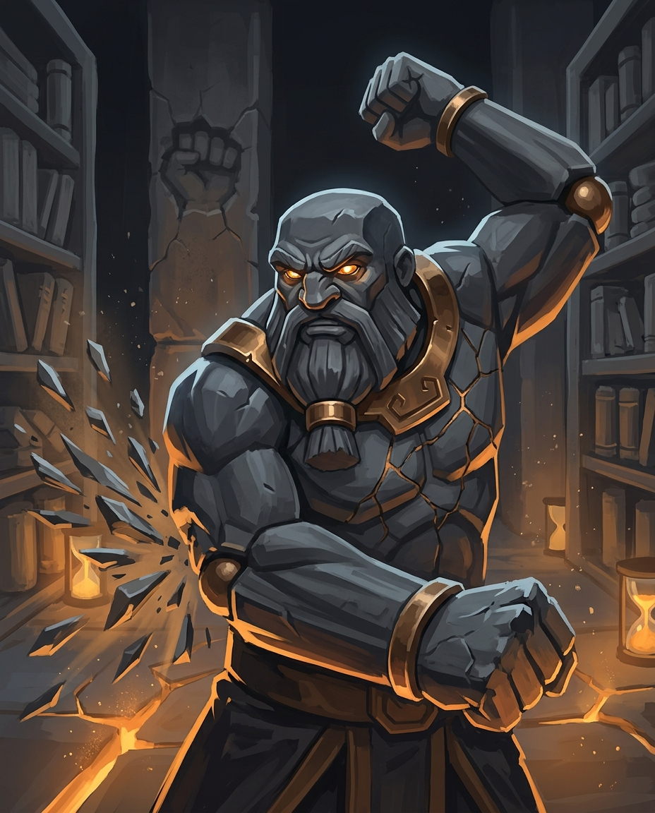
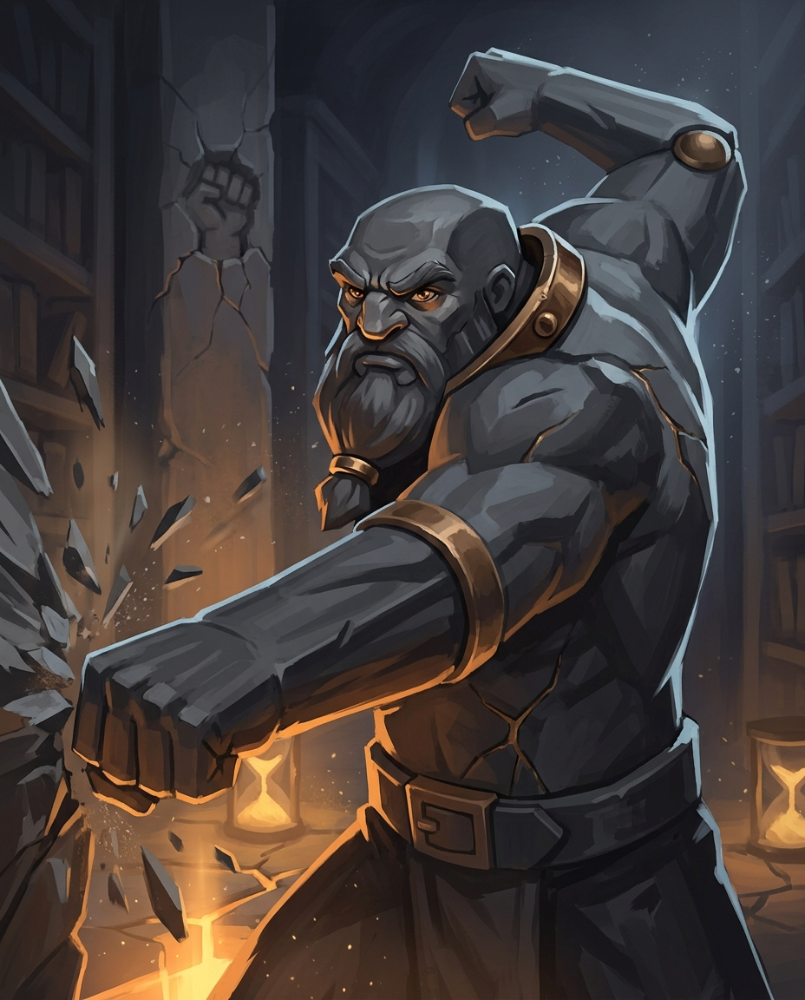
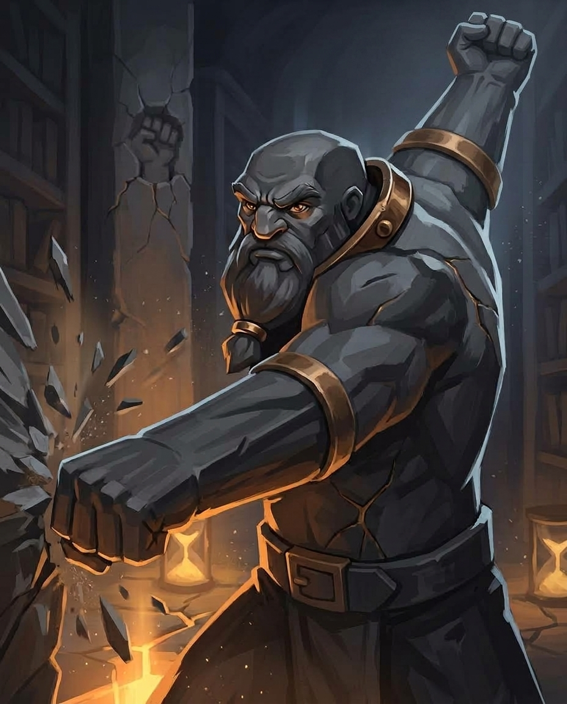
Промт, как он ушёл в модель
Art style: hand-painted stylized dark-fantasy game art for a mobile RPG. Painterly digital illustration with visible, confident brush strokes and simplified planar shapes, crisp rim light on edges, strong readable silhouettes, deep near-black shadows. Epic, dramatic character art: a powerful pose, a low camera, strong theatrical light from below. Light tells the story: a few strong sources — the sand of hourglasses, cracks in the stone floor and fine grooves in old stone that glow from within — throw warm amber light upward, the light comes from below. Warm and cold light contrast. Dust motes and fine stone grit float in the light. Moderate detail, clean readable forms; the face, the hands and the weapon get the most detail. No photorealism, no 3D-render look, no anime, no cartoon. Draw exactly one image in a single pass: no alternative versions, no second attempts, no text in the reply. Enemy card portrait, 4:5. The card is shown small on the battle field (about 74 px wide) and large in the bestiary, so the enemy must read as one bold, simple, well-lit silhouette with a clear pose against a darker background. Framing: a close, heroic half-length portrait. The camera is a little below the figure's chest and looks slightly up, so the enemy towers over the viewer and fills most of the frame. A figure shaped like a dwarf is cut by the bottom edge of the picture at the belt: head, shoulders, chest, arms and hands in the frame, no hips, no legs, no feet. Beasts and machines are framed as their own description says. The head sits in the upper third with a little space above it. The body is turned in three-quarter view toward the LEFT side of the picture, where its enemies stand; its weapon, its spell or the thing it is named after is thrust toward the left, in front of the body, and reads clearly. Pathos: it is a worthy and dangerous enemy — powerful, proud, alive and caught at the peak of an action, a foe that is frightening and honourable to defeat. Its character shows in its face, its gaze and its posture; its story shows in the details of its body and its tools. No one in this set wears a hood. World: the Library of Ularion, the workshop of the god of knowledge deep under the city of Endalor — a real ancient library cut in dark stone. Its halls go down and down; on long stone shelves lie stone tablets and stone cylinders covered with long, straight, parallel engraved grooves, like ruled lines with nothing written between them — the writing that only the god can read shows only as this worn texture of straight lines, never as letters, squiggles or signs. On the worktables parts of dwarves and parts of mechanisms lie together: the god made the people and the machine with the same hands. At every work place stands an hourglass of bronze and glass with glowing amber sand. Stone beetles live in the shelves; stone sagans are rock that has noticed itself. The Library's servants are stone dwarves made by the god. The Library calls them puppets, but they are masterworks, made carefully and with pride: carved from dark grey stone with the precision of great sculpture, polished smooth where they move and left with fine chisel marks elsewhere; the proportions of dwarf warriors — very broad shoulders, a deep chest, a thick neck, massive forearms, big capable hands; strong individual faces with heavy brows and broad noses, carved beards bound with bronze rings; bronze ball joints — precise, well-oiled work with thin engraved bands of straight lines — at the neck, shoulders, elbows and wrists, unless the description says otherwise. Their eyes are inlaid stones that glow from within, amber unless the description says otherwise: alive, attentive, fixed on the enemy with purpose. Their hands know the work and the fight; only the writing they cannot understand. They move with weight and certainty, like veteran warriors and master craftsmen. Colors: muted, like all our enemies — dark grey basalt, warm dull bronze and old brass, soot black, dusty ochre; everything else sinks into near-black shadow. Light, the same for the whole set: the light comes from below — warm amber light from the sand of the hourglasses, from cracks in the stone floor and from the grooves of the tablets rises onto the figure and lights its face and hands from underneath; crisp cool grey-blue rim light on its edges is the only cold light. Background: its own place in the Library, darker and softer than the figure, with depth. All fourteen portraits of this set share the same framing, painting style, palette and lighting. EDIT MODE — this overrides everything above: do not draw a new picture, edit the attached image. The attached image is the current portrait of this enemy, the Unbending: a grey stone dwarf with a bronze collar who smashes his straight stone arm into a pillar at the left, stone shards flying. Keep the picture exactly as it is — the same figure, face, beard, collar, cracks, the straight arm with the bronze band, the fist, the shards, the pillar with the fist-shaped crater, the shelves, the hourglasses, the light, the colors and the painting style. Change only the raised arm at the top right of the picture: now it bends in the middle at a bronze ball. Make it one straight, rigid stone beam from the shoulder to the fist, with no joint and no bend anywhere along it: it rises straight up and a little back from his shoulder, and its fist is at the top, near the top edge. Remove the bronze ball in the middle of that arm; a plain bronze band around the middle of the arm, like the one on the other arm, is fine. Nothing else changes. No text, no letters, no numbers, no glyphs, no runes that look like letters, no real-world scripts, no carvings that look like writing or numerals, no occult symbols, no watermark, no signature, no logo, no UI elements, no border or frame around the picture. Tablets, cylinders, cords and walls carry no writing and no signs: only fine worn grooves and texture. No gore, no blood, no skulls, no horror grotesque. No purple, no violet, no magenta light. Only one figure in the foreground; a figure shaped like a dwarf has exactly two arms and two hands. Not a mannequin, not a crash-test dummy, not a marionette on strings, not a clumsy golem, not a robot, not a statue on display: no stiff, passive, awkward or doll-like pose, no dead or empty eyes.
Разболтанная кукла — Библиотека Улариона, рядовой 2, физ ДД ловкости, дворфы, Земля (глубокий промт)
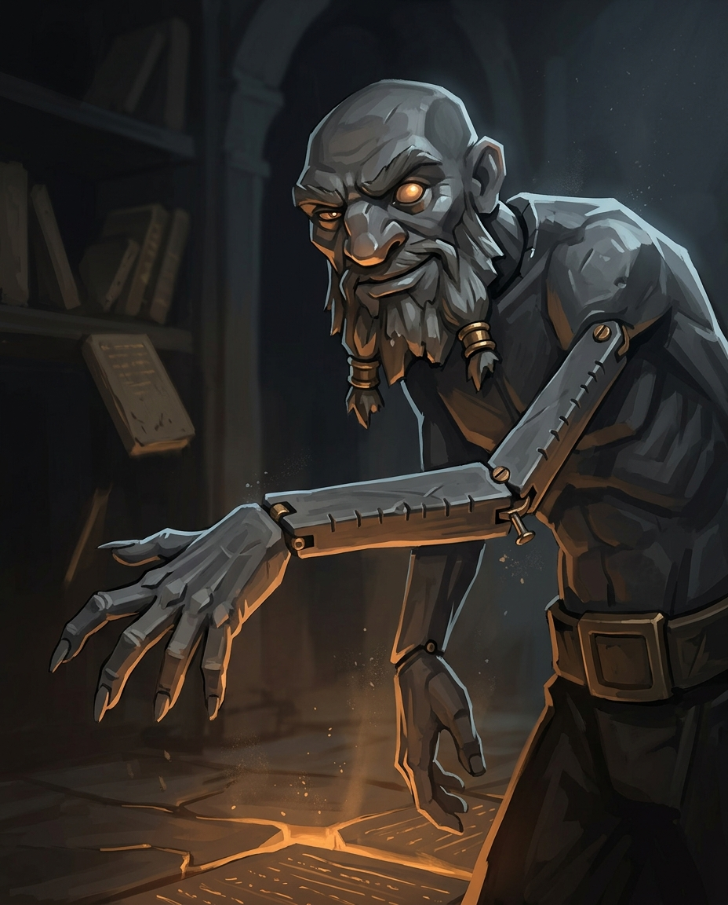
Промт, как он ушёл в модель
Art style: hand-painted stylized dark-fantasy game art for a mobile RPG. Painterly digital illustration with visible, confident brush strokes and simplified planar shapes, crisp rim light on edges, strong readable silhouettes, deep near-black shadows. Epic, dramatic character art: a powerful pose, a low camera, strong theatrical light from below. Light tells the story: a few strong sources — the sand of hourglasses, cracks in the stone floor and fine grooves in old stone that glow from within — throw warm amber light upward, the light comes from below. Warm and cold light contrast. Dust motes and fine stone grit float in the light. Moderate detail, clean readable forms; the face, the hands and the weapon get the most detail. No photorealism, no 3D-render look, no anime, no cartoon. Draw exactly one image in a single pass: no alternative versions, no second attempts, no text in the reply. Enemy card portrait, 4:5. The card is shown small on the battle field (about 74 px wide) and large in the bestiary, so the enemy must read as one bold, simple, well-lit silhouette with a clear pose against a darker background. Framing: a close, heroic half-length portrait. The camera is a little below the figure's chest and looks slightly up, so the enemy towers over the viewer and fills most of the frame. A figure shaped like a dwarf is cut by the bottom edge of the picture at the belt: head, shoulders, chest, arms and hands in the frame, no hips, no legs, no feet. Beasts and machines are framed as their own description says. The head sits in the upper third with a little space above it. The body is turned in three-quarter view toward the LEFT side of the picture, where its enemies stand; its weapon, its spell or the thing it is named after is thrust toward the left, in front of the body, and reads clearly. Pathos: it is a worthy and dangerous enemy — powerful, proud, alive and caught at the peak of an action, a foe that is frightening and honourable to defeat. Its character shows in its face, its gaze and its posture; its story shows in the details of its body and its tools. No one in this set wears a hood. World: the Library of Ularion, the workshop of the god of knowledge deep under the city of Endalor — a real ancient library cut in dark stone. Its halls go down and down; on long stone shelves lie stone tablets and stone cylinders covered with fine engraved grooves — the writing that only the god can read; it shows only as a worn texture of fine lines, never as letters or signs. On the worktables parts of dwarves and parts of mechanisms lie together: the god made the people and the machine with the same hands. At every work place stands an hourglass of bronze and glass with glowing amber sand. Stone beetles live in the shelves; stone sagans are rock that has noticed itself. The Library's servants are stone dwarves made by the god. The Library calls them puppets, but they are masterworks, made carefully and with pride: carved from dark grey stone with the precision of great sculpture, polished smooth where they move and left with fine chisel marks elsewhere; the proportions of dwarf warriors — very broad shoulders, a deep chest, a thick neck, massive forearms, big capable hands; strong individual faces with heavy brows and broad noses, carved beards bound with bronze rings; bronze ball joints — precise, well-oiled work with thin engraved bands of straight lines — at the neck, shoulders, elbows and wrists, unless the description says otherwise. Their eyes are inlaid stones that glow from within, amber unless the description says otherwise: alive, attentive, fixed on the enemy with purpose. Their hands know the work and the fight; only the writing they cannot understand. They move with weight and certainty, like veteran warriors and master craftsmen. Colors: muted, like all our enemies — dark grey basalt, warm dull bronze and old brass, soot black, dusty ochre; everything else sinks into near-black shadow. Light, the same for the whole set: the light comes from below — warm amber light from the sand of the hourglasses, from cracks in the stone floor and from the grooves of the tablets rises onto the figure and lights its face and hands from underneath; crisp cool grey-blue rim light on its edges is the only cold light. Background: its own place in the Library, darker and softer than the figure, with depth. All fourteen portraits of this set share the same framing, painting style, palette and lighting. The enemy: the Loose One, a rank-and-file skirmisher of the Library (Earth). Who he is: a lean, wiry stone dwarf whose bronze joints have worked loose over the centuries — and he has found a use for it: one of his arms unfolds like a carpenter's folding ruler and reaches farther than any blade. Right now he is reaching past the heroes' front line for the one who is already wounded. Character: sly, twitchy and predatory — a scavenger who always picks the weakest. His head hangs tilted on a loose neck joint at a hungry angle, one amber eye narrowed and the other wide open, the corner of his carved mouth pulled up in a crooked, knowing grin. Pose, the moment of the reach: he leans his upper body far forward toward the left, low, the shoulder of his reaching arm pushed ahead. That arm shoots out toward the left and unfolds in a zigzag of six straight stone segments joined by small bronze hinges, stretching almost to the left edge of the picture; at its end a stone hand with long sharpened stone fingers is spread like a claw, about to seize. His other arm hangs loose at his side, the hand dangling from a slack wrist joint. He has exactly two arms, both attached at the shoulders. Details that tell his story: (1) his loose joints rattle, and little puffs of stone dust shake out of them as he moves; (2) one hinge pin is missing and has been replaced with a bent bronze nail; (3) each segment of the folding arm has small evenly spaced notches along its edge, like a measuring rule, without any numbers; (4) his fingertips are filed to points; (5) his short beard is ragged and chipped at the ends. Place: a high gallery of the Library at the edge of a dark drop, stone tablets knocked off a shelf by his arm and falling; amber light glowing from the cracks of the floor below. No text, no letters, no numbers, no glyphs, no runes that look like letters, no real-world scripts, no carvings that look like writing or numerals, no occult symbols, no watermark, no signature, no logo, no UI elements, no border or frame around the picture. Tablets, cylinders, cords and walls carry no writing and no signs: only fine worn grooves and texture. No gore, no blood, no skulls, no horror grotesque. No purple, no violet, no magenta light. Only one figure in the foreground; a figure shaped like a dwarf has exactly two arms and two hands. Not a mannequin, not a crash-test dummy, not a marionette on strings, not a clumsy golem, not a robot, not a statue on display: no stiff, passive, awkward or doll-like pose, no dead or empty eyes.
Шепчущий щебень — Библиотека Улариона, рядовой 3, маг ДД, саганы, Земля (глубокий промт)
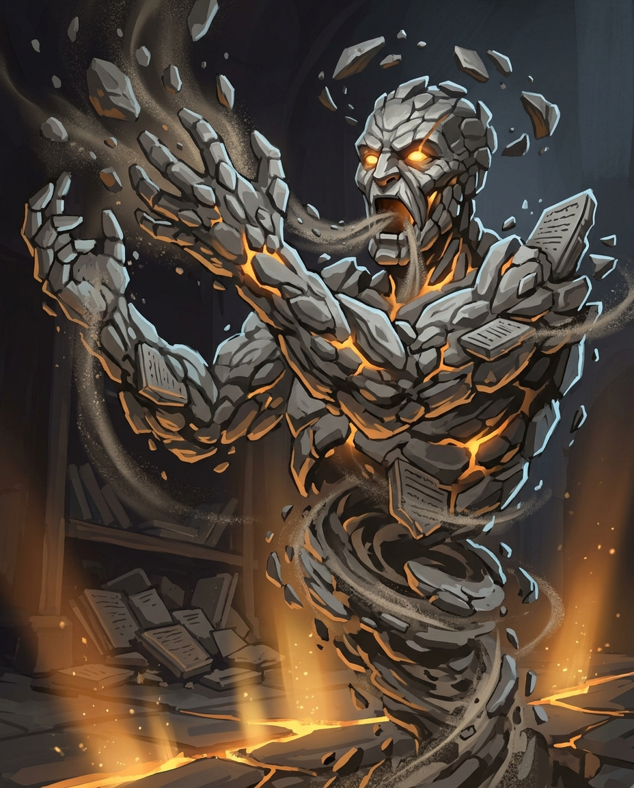
Промт, как он ушёл в модель
Art style: hand-painted stylized dark-fantasy game art for a mobile RPG. Painterly digital illustration with visible, confident brush strokes and simplified planar shapes, crisp rim light on edges, strong readable silhouettes, deep near-black shadows. Epic, dramatic character art: a powerful pose, a low camera, strong theatrical light from below. Light tells the story: a few strong sources — the sand of hourglasses, cracks in the stone floor and fine grooves in old stone that glow from within — throw warm amber light upward, the light comes from below. Warm and cold light contrast. Dust motes and fine stone grit float in the light. Moderate detail, clean readable forms; the face, the hands and the weapon get the most detail. No photorealism, no 3D-render look, no anime, no cartoon. Draw exactly one image in a single pass: no alternative versions, no second attempts, no text in the reply. Enemy card portrait, 4:5. The card is shown small on the battle field (about 74 px wide) and large in the bestiary, so the enemy must read as one bold, simple, well-lit silhouette with a clear pose against a darker background. Framing: a close, heroic half-length portrait. The camera is a little below the figure's chest and looks slightly up, so the enemy towers over the viewer and fills most of the frame. A figure shaped like a dwarf is cut by the bottom edge of the picture at the belt: head, shoulders, chest, arms and hands in the frame, no hips, no legs, no feet. Beasts and machines are framed as their own description says. The head sits in the upper third with a little space above it. The body is turned in three-quarter view toward the LEFT side of the picture, where its enemies stand; its weapon, its spell or the thing it is named after is thrust toward the left, in front of the body, and reads clearly. Pathos: it is a worthy and dangerous enemy — powerful, proud, alive and caught at the peak of an action, a foe that is frightening and honourable to defeat. Its character shows in its face, its gaze and its posture; its story shows in the details of its body and its tools. No one in this set wears a hood. World: the Library of Ularion, the workshop of the god of knowledge deep under the city of Endalor — a real ancient library cut in dark stone. Its halls go down and down; on long stone shelves lie stone tablets and stone cylinders covered with fine engraved grooves — the writing that only the god can read; it shows only as a worn texture of fine lines, never as letters or signs. On the worktables parts of dwarves and parts of mechanisms lie together: the god made the people and the machine with the same hands. At every work place stands an hourglass of bronze and glass with glowing amber sand. Stone beetles live in the shelves; stone sagans are rock that has noticed itself. The Library's servants are stone dwarves made by the god. The Library calls them puppets, but they are masterworks, made carefully and with pride: carved from dark grey stone with the precision of great sculpture, polished smooth where they move and left with fine chisel marks elsewhere; the proportions of dwarf warriors — very broad shoulders, a deep chest, a thick neck, massive forearms, big capable hands; strong individual faces with heavy brows and broad noses, carved beards bound with bronze rings; bronze ball joints — precise, well-oiled work with thin engraved bands of straight lines — at the neck, shoulders, elbows and wrists, unless the description says otherwise. Their eyes are inlaid stones that glow from within, amber unless the description says otherwise: alive, attentive, fixed on the enemy with purpose. Their hands know the work and the fight; only the writing they cannot understand. They move with weight and certainty, like veteran warriors and master craftsmen. Colors: muted, like all our enemies — dark grey basalt, warm dull bronze and old brass, soot black, dusty ochre; everything else sinks into near-black shadow. Light, the same for the whole set: the light comes from below — warm amber light from the sand of the hourglasses, from cracks in the stone floor and from the grooves of the tablets rises onto the figure and lights its face and hands from underneath; crisp cool grey-blue rim light on its edges is the only cold light. Background: its own place in the Library, darker and softer than the figure, with depth. All fourteen portraits of this set share the same framing, painting style, palette and lighting. The enemy: the Whispering Rubble, a rank-and-file mage of the Library (Earth). Who it is: a stone sagan — a swarm of grey grit and sharp chips of broken tablets that has noticed itself and learned that it can be someone. It gathers into the shape of a tall figure: head, shoulders, chest and two arms of hovering, swirling stones; below the chest it dissolves into a whirling column of grit — it has no legs. Right now it wants to bury everyone who came into its hall. Character: newborn, hungry and exultant — the terrible joy of a thing that has just discovered it can destroy. Its face is formed out of hundreds of small stones: a sharp brow, deep hollows for eyes with amber light burning far inside, and an open mouth from which ribbons of fine grit pour out and are sucked back in — it whispers without pause. Pose, the peak of the spell: it rises to its full height and flings both arms up and wide toward the left; above the left side of the picture a storm of stones gathers in the air and begins to fall in a heavy rockfall onto its enemies (Earth). Its head is thrown slightly back, its chest open, stones streaming from its shoulders into the storm. Details that tell its story: (1) among the grit spin fragments of broken stone tablets with fine grooves on them — it is made of the Library's broken writings, and it whispers them; (2) warm amber light pulses in the gaps between its stones like a heartbeat; (3) its edges keep crumbling and gathering again, fine dust trailing off in spirals; (4) a few larger chips circle its head like a crown. Place: a hall where a whole stone shelf has collapsed, a heap of broken tablets below it; dust hangs in the amber light rising from the cracks of the floor. No text, no letters, no numbers, no glyphs, no runes that look like letters, no real-world scripts, no carvings that look like writing or numerals, no occult symbols, no watermark, no signature, no logo, no UI elements, no border or frame around the picture. Tablets, cylinders, cords and walls carry no writing and no signs: only fine worn grooves and texture. No gore, no blood, no skulls, no horror grotesque. No purple, no violet, no magenta light. Only one figure in the foreground; a figure shaped like a dwarf has exactly two arms and two hands. Not a mannequin, not a crash-test dummy, not a marionette on strings, not a clumsy golem, not a robot, not a statue on display: no stiff, passive, awkward or doll-like pose, no dead or empty eyes.
Каменный жук — Библиотека Улариона, рядовой 4, танк, звери, Земля (глубокий промт)
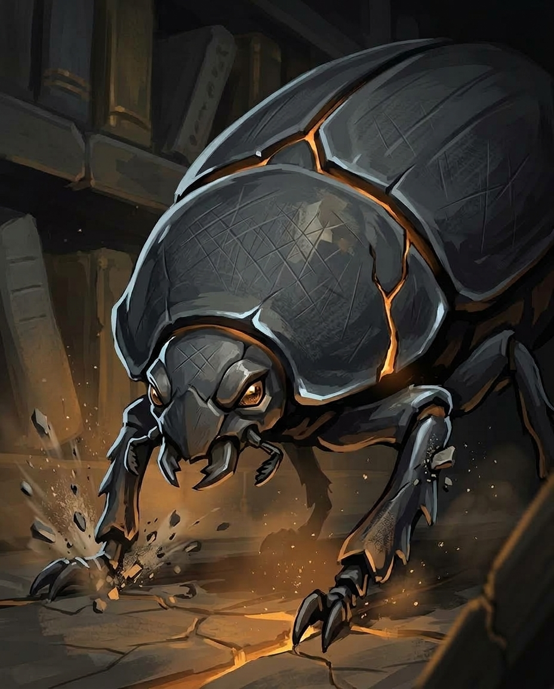
Промт, как он ушёл в модель
Art style: hand-painted stylized dark-fantasy game art for a mobile RPG. Painterly digital illustration with visible, confident brush strokes and simplified planar shapes, crisp rim light on edges, strong readable silhouettes, deep near-black shadows. Epic, dramatic character art: a powerful pose, a low camera, strong theatrical light from below. Light tells the story: a few strong sources — the sand of hourglasses, cracks in the stone floor and fine grooves in old stone that glow from within — throw warm amber light upward, the light comes from below. Warm and cold light contrast. Dust motes and fine stone grit float in the light. Moderate detail, clean readable forms; the face, the hands and the weapon get the most detail. No photorealism, no 3D-render look, no anime, no cartoon. Draw exactly one image in a single pass: no alternative versions, no second attempts, no text in the reply. Enemy card portrait, 4:5. The card is shown small on the battle field (about 74 px wide) and large in the bestiary, so the enemy must read as one bold, simple, well-lit silhouette with a clear pose against a darker background. Framing: a close, heroic half-length portrait. The camera is a little below the figure's chest and looks slightly up, so the enemy towers over the viewer and fills most of the frame. A figure shaped like a dwarf is cut by the bottom edge of the picture at the belt: head, shoulders, chest, arms and hands in the frame, no hips, no legs, no feet. Beasts and machines are framed as their own description says. The head sits in the upper third with a little space above it. The body is turned in three-quarter view toward the LEFT side of the picture, where its enemies stand; its weapon, its spell or the thing it is named after is thrust toward the left, in front of the body, and reads clearly. Pathos: it is a worthy and dangerous enemy — powerful, proud, alive and caught at the peak of an action, a foe that is frightening and honourable to defeat. Its character shows in its face, its gaze and its posture; its story shows in the details of its body and its tools. No one in this set wears a hood. World: the Library of Ularion, the workshop of the god of knowledge deep under the city of Endalor — a real ancient library cut in dark stone. Its halls go down and down; on long stone shelves lie stone tablets and stone cylinders covered with long, straight, parallel engraved grooves, like ruled lines with nothing written between them — the writing that only the god can read shows only as this worn texture of straight lines, never as letters, squiggles or signs. On the worktables parts of dwarves and parts of mechanisms lie together: the god made the people and the machine with the same hands. At every work place stands an hourglass of bronze and glass with glowing amber sand. Stone beetles live in the shelves; stone sagans are rock that has noticed itself. The Library's servants are stone dwarves made by the god. The Library calls them puppets, but they are masterworks, made carefully and with pride: carved from dark grey stone with the precision of great sculpture, polished smooth where they move and left with fine chisel marks elsewhere; the proportions of dwarf warriors — very broad shoulders, a deep chest, a thick neck, massive forearms, big capable hands; strong individual faces with heavy brows and broad noses, carved beards bound with bronze rings; bronze ball joints — precise, well-oiled work with thin engraved bands of straight lines — at the neck, shoulders, elbows and wrists, unless the description says otherwise. Their eyes are inlaid stones that glow from within, amber unless the description says otherwise: alive, attentive, fixed on the enemy with purpose. Their hands know the work and the fight; only the writing they cannot understand. They move with weight and certainty, like veteran warriors and master craftsmen. Colors: muted, like all our enemies — dark grey basalt, warm dull bronze and old brass, soot black, dusty ochre; everything else sinks into near-black shadow. Light, the same for the whole set: the light comes from below — warm amber light from the sand of the hourglasses, from cracks in the stone floor and from the grooves of the tablets rises onto the figure and lights its face and hands from underneath; crisp cool grey-blue rim light on its edges is the only cold light. Background: its own place in the Library, darker and softer than the figure, with depth. All fourteen portraits of this set share the same framing, painting style, palette and lighting. EDIT MODE — this overrides everything above: do not draw a new picture, edit the attached image. The attached image is the current portrait of this enemy, the Stone Beetle, charging to the left in the Library. Keep the picture exactly as it is — the beetle, its shell, eyes, mandibles, legs, the flying chips, the shelves, the floor, the light, the colors and the painting style. Change only this: on the tall stone tablet at the far left edge of the picture, behind the beetle's front leg, there are dark squiggly marks that look like writing — remove them and paint the face of that tablet as plain worn grey stone with only a few long straight horizontal grooves. Nothing else changes. No text, no letters, no numbers, no glyphs, no runes that look like letters, no real-world scripts, no carvings that look like writing or numerals, no occult symbols, no watermark, no signature, no logo, no UI elements, no border or frame around the picture. Tablets, cylinders, cords and walls carry no writing and no signs: only fine worn grooves and texture. No gore, no blood, no skulls, no horror grotesque. No purple, no violet, no magenta light. Only one figure in the foreground; a figure shaped like a dwarf has exactly two arms and two hands. Not a mannequin, not a crash-test dummy, not a marionette on strings, not a clumsy golem, not a robot, not a statue on display: no stiff, passive, awkward or doll-like pose, no dead or empty eyes.
Протекающая кукла — Библиотека Улариона, рядовой 5, лекарь, дворфы, Земля (глубокий промт)
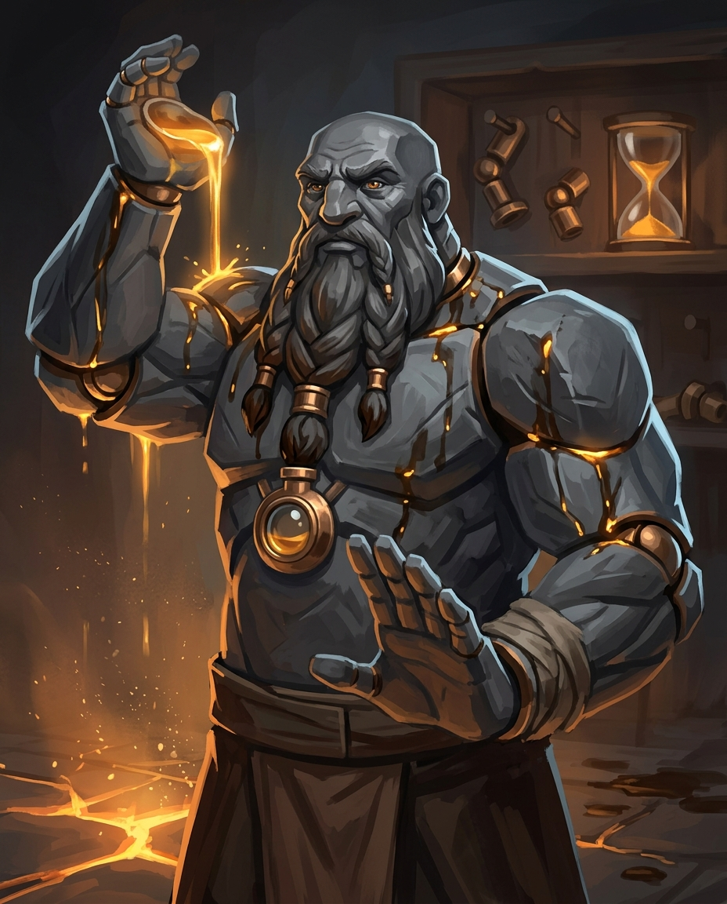
Промт, как он ушёл в модель
Art style: hand-painted stylized dark-fantasy game art for a mobile RPG. Painterly digital illustration with visible, confident brush strokes and simplified planar shapes, crisp rim light on edges, strong readable silhouettes, deep near-black shadows. Epic, dramatic character art: a powerful pose, a low camera, strong theatrical light from below. Light tells the story: a few strong sources — the sand of hourglasses, cracks in the stone floor and fine grooves in old stone that glow from within — throw warm amber light upward, the light comes from below. Warm and cold light contrast. Dust motes and fine stone grit float in the light. Moderate detail, clean readable forms; the face, the hands and the weapon get the most detail. No photorealism, no 3D-render look, no anime, no cartoon. Draw exactly one image in a single pass: no alternative versions, no second attempts, no text in the reply. Enemy card portrait, 4:5. The card is shown small on the battle field (about 74 px wide) and large in the bestiary, so the enemy must read as one bold, simple, well-lit silhouette with a clear pose against a darker background. Framing: a close, heroic half-length portrait. The camera is a little below the figure's chest and looks slightly up, so the enemy towers over the viewer and fills most of the frame. A figure shaped like a dwarf is cut by the bottom edge of the picture at the belt: head, shoulders, chest, arms and hands in the frame, no hips, no legs, no feet. Beasts and machines are framed as their own description says. The head sits in the upper third with a little space above it. The body is turned in three-quarter view toward the LEFT side of the picture, where its enemies stand; its weapon, its spell or the thing it is named after is thrust toward the left, in front of the body, and reads clearly. Pathos: it is a worthy and dangerous enemy — powerful, proud, alive and caught at the peak of an action, a foe that is frightening and honourable to defeat. Its character shows in its face, its gaze and its posture; its story shows in the details of its body and its tools. No one in this set wears a hood. World: the Library of Ularion, the workshop of the god of knowledge deep under the city of Endalor — a real ancient library cut in dark stone. Its halls go down and down; on long stone shelves lie stone tablets and stone cylinders covered with fine engraved grooves — the writing that only the god can read; it shows only as a worn texture of fine lines, never as letters or signs. On the worktables parts of dwarves and parts of mechanisms lie together: the god made the people and the machine with the same hands. At every work place stands an hourglass of bronze and glass with glowing amber sand. Stone beetles live in the shelves; stone sagans are rock that has noticed itself. The Library's servants are stone dwarves made by the god. The Library calls them puppets, but they are masterworks, made carefully and with pride: carved from dark grey stone with the precision of great sculpture, polished smooth where they move and left with fine chisel marks elsewhere; the proportions of dwarf warriors — very broad shoulders, a deep chest, a thick neck, massive forearms, big capable hands; strong individual faces with heavy brows and broad noses, carved beards bound with bronze rings; bronze ball joints — precise, well-oiled work with thin engraved bands of straight lines — at the neck, shoulders, elbows and wrists, unless the description says otherwise. Their eyes are inlaid stones that glow from within, amber unless the description says otherwise: alive, attentive, fixed on the enemy with purpose. Their hands know the work and the fight; only the writing they cannot understand. They move with weight and certainty, like veteran warriors and master craftsmen. Colors: muted, like all our enemies — dark grey basalt, warm dull bronze and old brass, soot black, dusty ochre; everything else sinks into near-black shadow. Light, the same for the whole set: the light comes from below — warm amber light from the sand of the hourglasses, from cracks in the stone floor and from the grooves of the tablets rises onto the figure and lights its face and hands from underneath; crisp cool grey-blue rim light on its edges is the only cold light. Background: its own place in the Library, darker and softer than the figure, with depth. All fourteen portraits of this set share the same framing, painting style, palette and lighting. The enemy: the Leaking One, a rank-and-file healer of the Library (Earth). Who he is: an old stone dwarf whose bronze joints all leak oil, all the time. He oils the joints of his kin until his own oil runs out — and while he stands, they do not fall. Right now he is giving his oil to a wounded brother behind him. Character: devoted and sorrowful, but unshakable — a quiet martyr who has decided to give everything. His carved face is lined and kind, his brows drawn together in grief, but his amber eyes are fixed on the heroes, defiant: you will not take them while I have a drop. Pose, the moment of the gift: he stands squarely, his shoulders set toward the left and his chin raised. His near hand is raised toward the left, palm open — a stern warning to the heroes to come no further; his far hand lifts a cupped palm brimming with glowing amber oil up and back over his shoulder, and the oil pours in a shining stream onto a wounded kin behind him, beyond the edge of the picture. Details that tell his story: (1) glowing amber oil runs from every bronze joint — neck, shoulders, elbows, wrists — and over the centuries it has streaked his stone body dark; (2) in the middle of his chest sits a small bronze reservoir with a round glass window, almost empty — only a little glowing oil is left at its bottom; (3) his long carved beard in two braids is soaked and darkened with oil at the tips; (4) his fingertips are stained dark from oiling others; (5) old rags are wound around his own joints, never tightened. Place: a narrow repair niche of the Library with pegs of spare bronze joints on the wall and an hourglass whose amber sand has almost run out; oil stains on the stone floor, amber light from the cracks below. No text, no letters, no numbers, no glyphs, no runes that look like letters, no real-world scripts, no carvings that look like writing or numerals, no occult symbols, no watermark, no signature, no logo, no UI elements, no border or frame around the picture. Tablets, cylinders, cords and walls carry no writing and no signs: only fine worn grooves and texture. No gore, no blood, no skulls, no horror grotesque. No purple, no violet, no magenta light. Only one figure in the foreground; a figure shaped like a dwarf has exactly two arms and two hands. Not a mannequin, not a crash-test dummy, not a marionette on strings, not a clumsy golem, not a robot, not a statue on display: no stiff, passive, awkward or doll-like pose, no dead or empty eyes.
Стёртая кукла — Библиотека Улариона, рядовой 6, редкий убийца, физ ДД ловкости, дворфы, Воздух (глубокий промт)
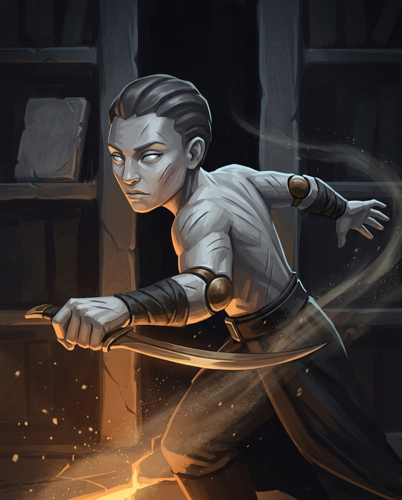
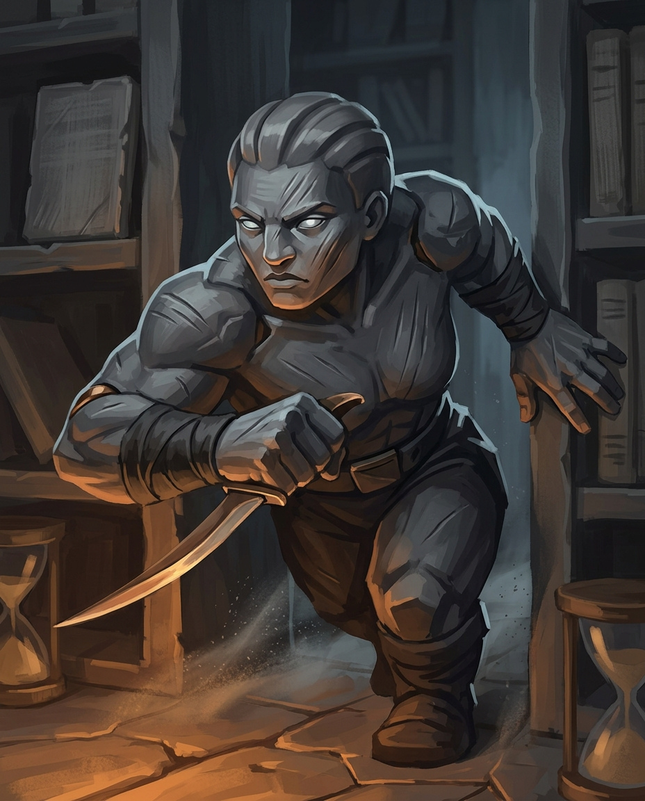
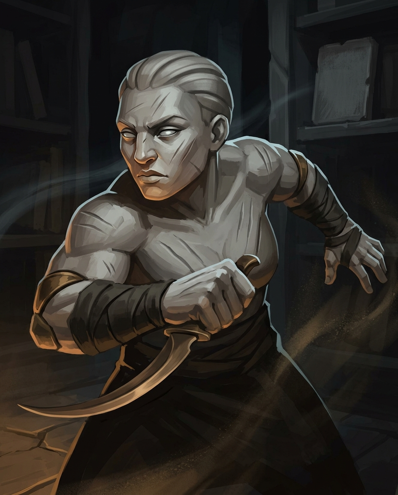
Промт, как он ушёл в модель
Art style: hand-painted stylized dark-fantasy game art for a mobile RPG. Painterly digital illustration with visible, confident brush strokes and simplified planar shapes, crisp rim light on edges, strong readable silhouettes, deep near-black shadows. Epic, dramatic character art: a powerful pose, a low camera, strong theatrical light from below. Light tells the story: a few strong sources — the sand of hourglasses, cracks in the stone floor and fine grooves in old stone that glow from within — throw warm amber light upward, the light comes from below. Warm and cold light contrast. Dust motes and fine stone grit float in the light. Moderate detail, clean readable forms; the face, the hands and the weapon get the most detail. No photorealism, no 3D-render look, no anime, no cartoon. Draw exactly one image in a single pass: no alternative versions, no second attempts, no text in the reply. Enemy card portrait, 4:5. The card is shown small on the battle field (about 74 px wide) and large in the bestiary, so the enemy must read as one bold, simple, well-lit silhouette with a clear pose against a darker background. Framing: a close, heroic half-length portrait. The camera is a little below the figure's chest and looks slightly up, so the enemy towers over the viewer and fills most of the frame. A figure shaped like a dwarf is cut by the bottom edge of the picture at the belt: head, shoulders, chest, arms and hands in the frame, no hips, no legs, no feet. Beasts and machines are framed as their own description says. The head sits in the upper third with a little space above it. The body is turned in three-quarter view toward the LEFT side of the picture, where its enemies stand; its weapon, its spell or the thing it is named after is thrust toward the left, in front of the body, and reads clearly. Pathos: it is a worthy and dangerous enemy — powerful, proud, alive and caught at the peak of an action, a foe that is frightening and honourable to defeat. Its character shows in its face, its gaze and its posture; its story shows in the details of its body and its tools. No one in this set wears a hood. World: the Library of Ularion, the workshop of the god of knowledge deep under the city of Endalor — a real ancient library cut in dark stone. Its halls go down and down; on long stone shelves lie stone tablets and stone cylinders covered with long, straight, parallel engraved grooves, like ruled lines with nothing written between them — the writing that only the god can read shows only as this worn texture of straight lines, never as letters, squiggles or signs. On the worktables parts of dwarves and parts of mechanisms lie together: the god made the people and the machine with the same hands. At every work place stands an hourglass of bronze and glass with glowing amber sand. Stone beetles live in the shelves; stone sagans are rock that has noticed itself. The Library's servants are stone dwarves made by the god. The Library calls them puppets, but they are masterworks, made carefully and with pride: carved from dark grey stone with the precision of great sculpture, polished smooth where they move and left with fine chisel marks elsewhere; the proportions of dwarf warriors — very broad shoulders, a deep chest, a thick neck, massive forearms, big capable hands; strong individual faces with heavy brows and broad noses, carved beards bound with bronze rings; bronze ball joints — precise, well-oiled work with thin engraved bands of straight lines — at the neck, shoulders, elbows and wrists, unless the description says otherwise. Their eyes are inlaid stones that glow from within, amber unless the description says otherwise: alive, attentive, fixed on the enemy with purpose. Their hands know the work and the fight; only the writing they cannot understand. They move with weight and certainty, like veteran warriors and master craftsmen. Colors: muted, like all our enemies — dark grey basalt, warm dull bronze and old brass, soot black, dusty ochre; everything else sinks into near-black shadow. Light, the same for the whole set: the light comes from below — warm amber light from the sand of the hourglasses, from cracks in the stone floor and from the grooves of the tablets rises onto the figure and lights its face and hands from underneath; crisp cool grey-blue rim light on its edges is the only cold light. Background: its own place in the Library, darker and softer than the figure, with depth. All fourteen portraits of this set share the same framing, painting style, palette and lighting. The enemy: the Erased, a rare and deadly assassin of the Library (Air). Who she is: a stone dwarf woman from whom every mark was scraped off long ago, and her name and her work were erased with them. She is a dwarf: compact and broad-shouldered, lean and wiry, with strong forearms and big hands, a broad but fine-featured face with high cheekbones and a strong jaw; beardless. Now it is as if she does not exist. She walks without a sound between the shelves and comes out right at the one who heals. Right now she has chosen the heroes' healer. Character: cold, silent, patient and merciless — absence used as a weapon. Her face is calm and hard, her mouth closed; her eyes are two narrow slits of pale cold light, fixed on her target without blinking. Framing: a close half-length portrait — her head, shoulders, arms and the knife fill the frame; the bottom edge of the picture cuts her at the waist: no hips, no legs, no feet. Pose, the moment of the strike: she has just slipped out of a narrow gap between two shelves, and her upper body leans far forward toward the left, low, her shoulders leading; her near hand holds a long, thin, crescent-curved bronze erasing knife — the kind used to scrape writing off tablets — thrust forward toward the left, about to strike; her far hand trails behind her for balance, fingers spread. A thin cold draught (Air) follows her and pulls a trail of dust out of the gap behind her. Details that tell her story: (1) her whole pale grey stone body is covered with long parallel scrape marks — even her cheek and brow — everything was scraped smooth, not one sign is left; (2) her bronze joints are tightly wrapped in dark cloth so they make no sound; (3) the erasing knife is worn thin and curved like a crescent from centuries of scraping; (4) her hair is carved close to her head in smooth, simple bands, scraped smooth like the rest; (5) she is half in shadow — the light finds only her face, the knife and the edge of her shoulder. Place: the dark gap between two tall stone shelves; on the nearest shelf lies a stone tablet scraped completely blank; faint amber light rises from the floor below, and a cold grey-blue light runs along her edges. No text, no letters, no numbers, no glyphs, no runes that look like letters, no real-world scripts, no carvings that look like writing or numerals, no occult symbols, no watermark, no signature, no logo, no UI elements, no border or frame around the picture. Tablets, cylinders, cords and walls carry no writing and no signs: only fine worn grooves and texture. No gore, no blood, no skulls, no horror grotesque. No purple, no violet, no magenta light. Only one figure in the foreground; a figure shaped like a dwarf has exactly two arms and two hands. Not a mannequin, not a crash-test dummy, not a marionette on strings, not a clumsy golem, not a robot, not a statue on display: no stiff, passive, awkward or doll-like pose, no dead or empty eyes.
Подгонщик — Библиотека Улариона, элита, физ ДД силы, дворфы, Земля (глубокий промт)
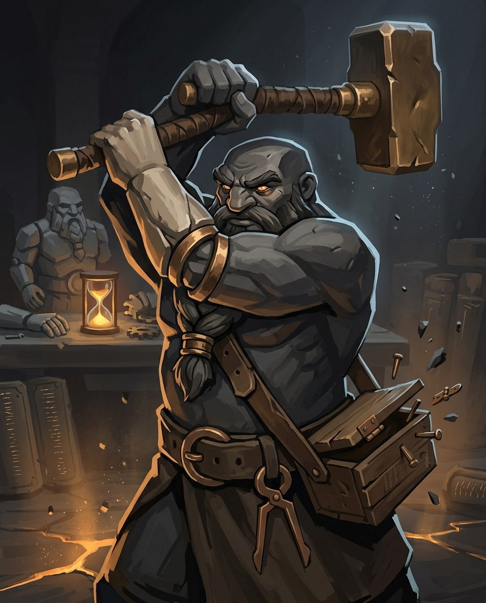
Промт, как он ушёл в модель
Art style: hand-painted stylized dark-fantasy game art for a mobile RPG. Painterly digital illustration with visible, confident brush strokes and simplified planar shapes, crisp rim light on edges, strong readable silhouettes, deep near-black shadows. Epic, dramatic character art: a powerful pose, a low camera, strong theatrical light from below. Light tells the story: a few strong sources — the sand of hourglasses, cracks in the stone floor and fine grooves in old stone that glow from within — throw warm amber light upward, the light comes from below. Warm and cold light contrast. Dust motes and fine stone grit float in the light. Moderate detail, clean readable forms; the face, the hands and the weapon get the most detail. No photorealism, no 3D-render look, no anime, no cartoon. Draw exactly one image in a single pass: no alternative versions, no second attempts, no text in the reply. Enemy card portrait, 4:5. The card is shown small on the battle field (about 74 px wide) and large in the bestiary, so the enemy must read as one bold, simple, well-lit silhouette with a clear pose against a darker background. Framing: a close, heroic half-length portrait. The camera is a little below the figure's chest and looks slightly up, so the enemy towers over the viewer and fills most of the frame. A figure shaped like a dwarf is cut by the bottom edge of the picture at the belt: head, shoulders, chest, arms and hands in the frame, no hips, no legs, no feet. Beasts and machines are framed as their own description says. The head sits in the upper third with a little space above it. The body is turned in three-quarter view toward the LEFT side of the picture, where its enemies stand; its weapon, its spell or the thing it is named after is thrust toward the left, in front of the body, and reads clearly. Pathos: it is a worthy and dangerous enemy — powerful, proud, alive and caught at the peak of an action, a foe that is frightening and honourable to defeat. Its character shows in its face, its gaze and its posture; its story shows in the details of its body and its tools. No one in this set wears a hood. World: the Library of Ularion, the workshop of the god of knowledge deep under the city of Endalor — a real ancient library cut in dark stone. Its halls go down and down; on long stone shelves lie stone tablets and stone cylinders covered with fine engraved grooves — the writing that only the god can read; it shows only as a worn texture of fine lines, never as letters or signs. On the worktables parts of dwarves and parts of mechanisms lie together: the god made the people and the machine with the same hands. At every work place stands an hourglass of bronze and glass with glowing amber sand. Stone beetles live in the shelves; stone sagans are rock that has noticed itself. The Library's servants are stone dwarves made by the god. The Library calls them puppets, but they are masterworks, made carefully and with pride: carved from dark grey stone with the precision of great sculpture, polished smooth where they move and left with fine chisel marks elsewhere; the proportions of dwarf warriors — very broad shoulders, a deep chest, a thick neck, massive forearms, big capable hands; strong individual faces with heavy brows and broad noses, carved beards bound with bronze rings; bronze ball joints — precise, well-oiled work with thin engraved bands of straight lines — at the neck, shoulders, elbows and wrists, unless the description says otherwise. Their eyes are inlaid stones that glow from within, amber unless the description says otherwise: alive, attentive, fixed on the enemy with purpose. Their hands know the work and the fight; only the writing they cannot understand. They move with weight and certainty, like veteran warriors and master craftsmen. Colors: muted, like all our enemies — dark grey basalt, warm dull bronze and old brass, soot black, dusty ochre; everything else sinks into near-black shadow. Light, the same for the whole set: the light comes from below — warm amber light from the sand of the hourglasses, from cracks in the stone floor and from the grooves of the tablets rises onto the figure and lights its face and hands from underneath; crisp cool grey-blue rim light on its edges is the only cold light. Background: its own place in the Library, darker and softer than the figure, with depth. All fourteen portraits of this set share the same framing, painting style, palette and lighting. The enemy: the Fitter, an elite brawler of the Library (Earth). Who he is: the master fitter of the Library's worktables, a heavy, powerful stone dwarf with a bronze hammer and a box of joints. For a thousand years he has knocked parts into place — and knocked them out. He sees every body as a set of parts. Right now he has found a part that does not fit: the hero in front of him. Character: confident, brutal and practical, with a craftsman's pride — he is not angry, he is working. His brows are lowered in concentration, his amber eyes measure the target coldly, his mouth is set in a grim, satisfied line. Pose, the moment of the blow: he has raised a heavy bronze hammer high over his head with both hands, his torso arched back and twisted, his shoulders rolled back — all his weight about to come down in a single blow toward the left. The hammer head is large and close to the camera near the top of the picture. Bronze pins and hinges jump out of the box at his side from the force of the swing, stone chips fly. Details that tell his story: (1) the hammer has a long handle wound with worn leather, its bronze face dented by a thousand blows; (2) a wide leather strap across his chest holds a battered wooden box of spare bronze joints at his hip; (3) his own body is fitted from mismatched parts — one forearm is of a lighter stone than the rest, joined at the elbow with a newer bronze ring: he fitted himself; (4) bronze calipers hang from his belt; (5) his long braided beard is tucked into his belt so it does not catch in the work. Place: a long worktable of the Library behind him with stone arms, hands and gears laid out in neat rows and a half-assembled stone dwarf lying on it; an hourglass with glowing amber sand; amber light glowing in the cracks of the floor below. No text, no letters, no numbers, no glyphs, no runes that look like letters, no real-world scripts, no carvings that look like writing or numerals, no occult symbols, no watermark, no signature, no logo, no UI elements, no border or frame around the picture. Tablets, cylinders, cords and walls carry no writing and no signs: only fine worn grooves and texture. No gore, no blood, no skulls, no horror grotesque. No purple, no violet, no magenta light. Only one figure in the foreground; a figure shaped like a dwarf has exactly two arms and two hands. Not a mannequin, not a crash-test dummy, not a marionette on strings, not a clumsy golem, not a robot, not a statue on display: no stiff, passive, awkward or doll-like pose, no dead or empty eyes.
Точильщик — Библиотека Улариона, элита, физ ДД ловкости, звери, Земля (глубокий промт)
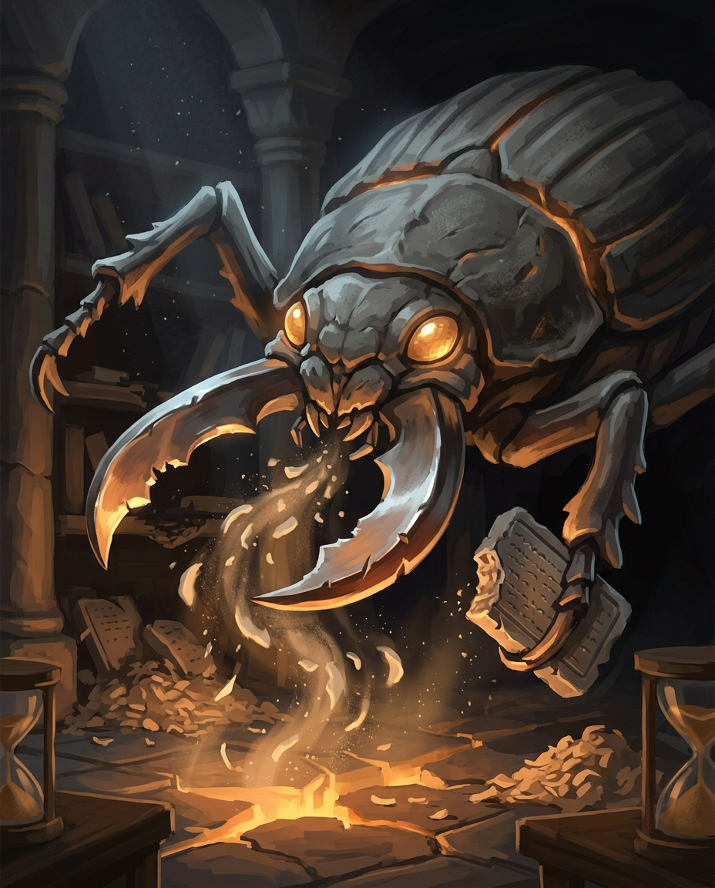
Промт, как он ушёл в модель
Art style: hand-painted stylized dark-fantasy game art for a mobile RPG. Painterly digital illustration with visible, confident brush strokes and simplified planar shapes, crisp rim light on edges, strong readable silhouettes, deep near-black shadows. Epic, dramatic character art: a powerful pose, a low camera, strong theatrical light from below. Light tells the story: a few strong sources — the sand of hourglasses, cracks in the stone floor and fine grooves in old stone that glow from within — throw warm amber light upward, the light comes from below. Warm and cold light contrast. Dust motes and fine stone grit float in the light. Moderate detail, clean readable forms; the face, the hands and the weapon get the most detail. No photorealism, no 3D-render look, no anime, no cartoon. Draw exactly one image in a single pass: no alternative versions, no second attempts, no text in the reply. Enemy card portrait, 4:5. The card is shown small on the battle field (about 74 px wide) and large in the bestiary, so the enemy must read as one bold, simple, well-lit silhouette with a clear pose against a darker background. Framing: a close, heroic half-length portrait. The camera is a little below the figure's chest and looks slightly up, so the enemy towers over the viewer and fills most of the frame. A figure shaped like a dwarf is cut by the bottom edge of the picture at the belt: head, shoulders, chest, arms and hands in the frame, no hips, no legs, no feet. Beasts and machines are framed as their own description says. The head sits in the upper third with a little space above it. The body is turned in three-quarter view toward the LEFT side of the picture, where its enemies stand; its weapon, its spell or the thing it is named after is thrust toward the left, in front of the body, and reads clearly. Pathos: it is a worthy and dangerous enemy — powerful, proud, alive and caught at the peak of an action, a foe that is frightening and honourable to defeat. Its character shows in its face, its gaze and its posture; its story shows in the details of its body and its tools. No one in this set wears a hood. World: the Library of Ularion, the workshop of the god of knowledge deep under the city of Endalor — a real ancient library cut in dark stone. Its halls go down and down; on long stone shelves lie stone tablets and stone cylinders covered with fine engraved grooves — the writing that only the god can read; it shows only as a worn texture of fine lines, never as letters or signs. On the worktables parts of dwarves and parts of mechanisms lie together: the god made the people and the machine with the same hands. At every work place stands an hourglass of bronze and glass with glowing amber sand. Stone beetles live in the shelves; stone sagans are rock that has noticed itself. The Library's servants are stone dwarves made by the god. The Library calls them puppets, but they are masterworks, made carefully and with pride: carved from dark grey stone with the precision of great sculpture, polished smooth where they move and left with fine chisel marks elsewhere; the proportions of dwarf warriors — very broad shoulders, a deep chest, a thick neck, massive forearms, big capable hands; strong individual faces with heavy brows and broad noses, carved beards bound with bronze rings; bronze ball joints — precise, well-oiled work with thin engraved bands of straight lines — at the neck, shoulders, elbows and wrists, unless the description says otherwise. Their eyes are inlaid stones that glow from within, amber unless the description says otherwise: alive, attentive, fixed on the enemy with purpose. Their hands know the work and the fight; only the writing they cannot understand. They move with weight and certainty, like veteran warriors and master craftsmen. Colors: muted, like all our enemies — dark grey basalt, warm dull bronze and old brass, soot black, dusty ochre; everything else sinks into near-black shadow. Light, the same for the whole set: the light comes from below — warm amber light from the sand of the hourglasses, from cracks in the stone floor and from the grooves of the tablets rises onto the figure and lights its face and hands from underneath; crisp cool grey-blue rim light on its edges is the only cold light. Background: its own place in the Library, darker and softer than the figure, with depth. All fourteen portraits of this set share the same framing, painting style, palette and lighting. The enemy: the Grinder, an elite striker of the Library (Earth). Who it is: a stone beetle as big as a cart, the oldest in the shelves; it gnaws the stone tablets with its mandibles, and rune shavings drift from it all through the Library. It bites often, small, and always in the same place. Right now it has sensed a wounded hero and will not let go. Character: relentless, hungry and fixated — a grindstone that never stops. Its two faceted eyes glow amber and are fixed on one target. Framing and pose, the moment before the bite: it is a beast. It rears its front up toward the left, its head and the front of its shell lifted high above the camera, which is low near the floor and looks up; its head, its huge mandibles and its two front legs fill the frame, and the rest of its body goes back out of the frame. Its great curved mandibles are spread wide like two blades about to close, aimed at the left; its front legs are raised and hooked, ready to grab. Details that tell its story: (1) its mandibles are worn to a mirror shine from gnawing stone, and they reflect the amber light; (2) a stream of pale stone shavings with fine grooves on them, glowing faintly amber, pours from its jaws and swirls in the air (Earth); (3) half of a gnawed stone tablet is still caught on one of its front legs; (4) its dark grey shell is ridged with age, amber light glowing in the seams; (5) the edges of its mandibles are notched from chewing through stone. Place: a gnawed-through stone shelf behind it, bitten tablets and heaps of stone shavings on the floor; amber light rising from the cracks below. No text, no letters, no numbers, no glyphs, no runes that look like letters, no real-world scripts, no carvings that look like writing or numerals, no occult symbols, no watermark, no signature, no logo, no UI elements, no border or frame around the picture. Tablets, cylinders, cords and walls carry no writing and no signs: only fine worn grooves and texture. No gore, no blood, no skulls, no horror grotesque. No purple, no violet, no magenta light. Only one figure in the foreground; a figure shaped like a dwarf has exactly two arms and two hands. Not a mannequin, not a crash-test dummy, not a marionette on strings, not a clumsy golem, not a robot, not a statue on display: no stiff, passive, awkward or doll-like pose, no dead or empty eyes.
Оковщик — Библиотека Улариона, элита, танк, дворфы, Земля (глубокий промт)
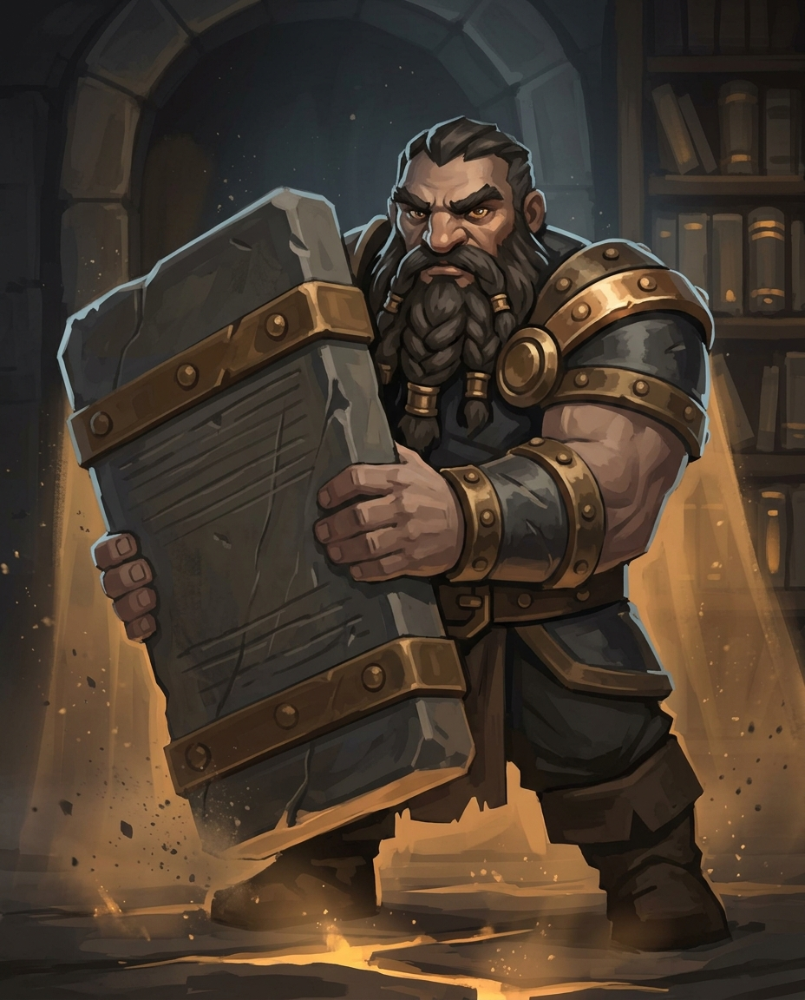
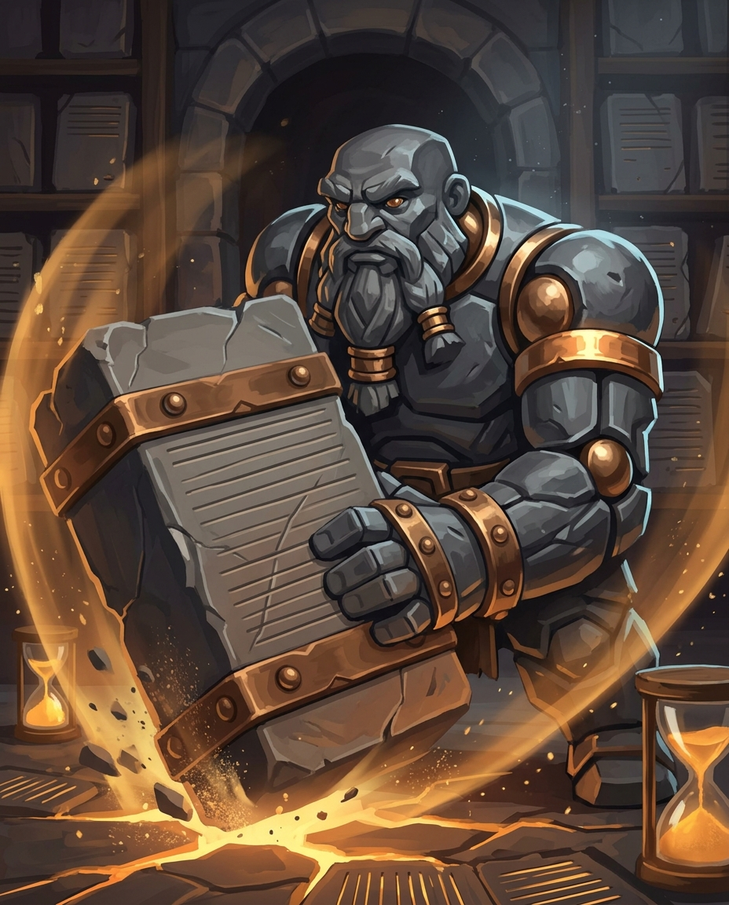
Промт, как он ушёл в модель
Art style: hand-painted stylized dark-fantasy game art for a mobile RPG. Painterly digital illustration with visible, confident brush strokes and simplified planar shapes, crisp rim light on edges, strong readable silhouettes, deep near-black shadows. Epic, dramatic character art: a powerful pose, a low camera, strong theatrical light from below. Light tells the story: a few strong sources — the sand of hourglasses, cracks in the stone floor and fine grooves in old stone that glow from within — throw warm amber light upward, the light comes from below. Warm and cold light contrast. Dust motes and fine stone grit float in the light. Moderate detail, clean readable forms; the face, the hands and the weapon get the most detail. No photorealism, no 3D-render look, no anime, no cartoon. Draw exactly one image in a single pass: no alternative versions, no second attempts, no text in the reply. Enemy card portrait, 4:5. The card is shown small on the battle field (about 74 px wide) and large in the bestiary, so the enemy must read as one bold, simple, well-lit silhouette with a clear pose against a darker background. Framing: a close, heroic half-length portrait. The camera is a little below the figure's chest and looks slightly up, so the enemy towers over the viewer and fills most of the frame. A figure shaped like a dwarf is cut by the bottom edge of the picture at the belt: head, shoulders, chest, arms and hands in the frame, no hips, no legs, no feet. Beasts and machines are framed as their own description says. The head sits in the upper third with a little space above it. The body is turned in three-quarter view toward the LEFT side of the picture, where its enemies stand; its weapon, its spell or the thing it is named after is thrust toward the left, in front of the body, and reads clearly. Pathos: it is a worthy and dangerous enemy — powerful, proud, alive and caught at the peak of an action, a foe that is frightening and honourable to defeat. Its character shows in its face, its gaze and its posture; its story shows in the details of its body and its tools. No one in this set wears a hood. World: the Library of Ularion, the workshop of the god of knowledge deep under the city of Endalor — a real ancient library cut in dark stone. Its halls go down and down; on long stone shelves lie stone tablets and stone cylinders covered with long, straight, parallel engraved grooves, like ruled lines with nothing written between them — the writing that only the god can read shows only as this worn texture of straight lines, never as letters, squiggles or signs. On the worktables parts of dwarves and parts of mechanisms lie together: the god made the people and the machine with the same hands. At every work place stands an hourglass of bronze and glass with glowing amber sand. Stone beetles live in the shelves; stone sagans are rock that has noticed itself. The Library's servants are stone dwarves made by the god. The Library calls them puppets, but they are masterworks, made carefully and with pride: carved from dark grey stone with the precision of great sculpture, polished smooth where they move and left with fine chisel marks elsewhere; the proportions of dwarf warriors — very broad shoulders, a deep chest, a thick neck, massive forearms, big capable hands; strong individual faces with heavy brows and broad noses, carved beards bound with bronze rings; bronze ball joints — precise, well-oiled work with thin engraved bands of straight lines — at the neck, shoulders, elbows and wrists, unless the description says otherwise. Their eyes are inlaid stones that glow from within, amber unless the description says otherwise: alive, attentive, fixed on the enemy with purpose. Their hands know the work and the fight; only the writing they cannot understand. They move with weight and certainty, like veteran warriors and master craftsmen. Colors: muted, like all our enemies — dark grey basalt, warm dull bronze and old brass, soot black, dusty ochre; everything else sinks into near-black shadow. Light, the same for the whole set: the light comes from below — warm amber light from the sand of the hourglasses, from cracks in the stone floor and from the grooves of the tablets rises onto the figure and lights its face and hands from underneath; crisp cool grey-blue rim light on its edges is the only cold light. Background: its own place in the Library, darker and softer than the figure, with depth. All fourteen portraits of this set share the same framing, painting style, palette and lighting. The enemy: the Binder, an elite tank of the Library (Earth). Who he is: the widest stone dwarf of the Library and its gatekeeper. He is a made thing, not a living man: his whole body — his face, his beard, his arms and his hands — is carved of dark grey stone, with bronze ball joints at the shoulders, elbows and wrists; there is no skin and no hair on him, even his beard is carved stone. Instead of a shield he carries a huge stone tablet of the Library bound in bronze — he guards the writings with the writing itself. When he raises it, a wall of stone light rises before all his kin. Right now he holds the passage and drives the slab into the first hero who comes close. Character: immovable, grim and dutiful — a wall with a will. His heavy stone brow is lowered and his jaw set; his amber eyes glare over the top edge of the slab, steady and unafraid. Framing: a close half-length portrait; the bottom edge of the picture cuts him at the belt — no legs, no boots. Pose, the moment of the bash: he lunges forward toward the left behind the great slab, his near shoulder pressed into its back and both arms driving it forward; the slab is tilted toward the left side of the picture, between him and his enemies, and its bronze-bound edge is about to smash into the enemy; his broad stone shoulders and head rise above and beside it. Stone dust bursts from the slab's leading edge, and a translucent amber wall of stone light (Earth) spreads out from the slab to both sides, covering his kin behind him. Details that tell his story: (1) the slab is a real Library tablet, its face covered with long straight parallel grooves, chipped and scarred by blows, bound around the edges with thick bronze bands and big rivets; (2) his own forearms and shoulders are bound with bronze bands and rivets, like an iron-bound chest; (3) his beard is carved in thick short stone braids, each bound with a bronze ring; (4) his bronze shoulder joints are massive, as big as fists; (5) one band on his shoulder is newer and brighter than the others — replaced after a blow. Place: a stone archway, the entrance to a reading hall that he guards, a wall of shelves behind it; amber light glowing from the cracks of the floor below. No text, no letters, no numbers, no glyphs, no runes that look like letters, no real-world scripts, no carvings that look like writing or numerals, no occult symbols, no watermark, no signature, no logo, no UI elements, no border or frame around the picture. Tablets, cylinders, cords and walls carry no writing and no signs: only fine worn grooves and texture. No gore, no blood, no skulls, no horror grotesque. No purple, no violet, no magenta light. Only one figure in the foreground; a figure shaped like a dwarf has exactly two arms and two hands. Not a mannequin, not a crash-test dummy, not a marionette on strings, not a clumsy golem, not a robot, not a statue on display: no stiff, passive, awkward or doll-like pose, no dead or empty eyes.
Чтец — Библиотека Улариона, элита, маг ДД, дворфы, Воздух (глубокий промт)
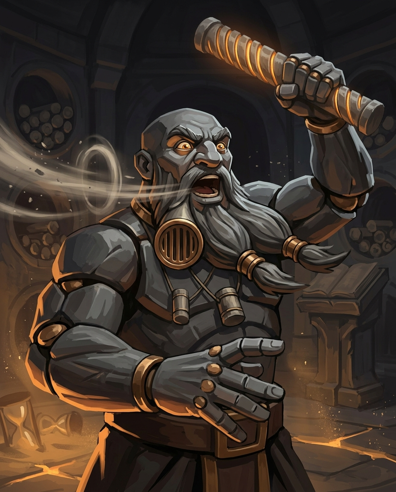
Промт, как он ушёл в модель
Art style: hand-painted stylized dark-fantasy game art for a mobile RPG. Painterly digital illustration with visible, confident brush strokes and simplified planar shapes, crisp rim light on edges, strong readable silhouettes, deep near-black shadows. Epic, dramatic character art: a powerful pose, a low camera, strong theatrical light from below. Light tells the story: a few strong sources — the sand of hourglasses, cracks in the stone floor and fine grooves in old stone that glow from within — throw warm amber light upward, the light comes from below. Warm and cold light contrast. Dust motes and fine stone grit float in the light. Moderate detail, clean readable forms; the face, the hands and the weapon get the most detail. No photorealism, no 3D-render look, no anime, no cartoon. Draw exactly one image in a single pass: no alternative versions, no second attempts, no text in the reply. Enemy card portrait, 4:5. The card is shown small on the battle field (about 74 px wide) and large in the bestiary, so the enemy must read as one bold, simple, well-lit silhouette with a clear pose against a darker background. Framing: a close, heroic half-length portrait. The camera is a little below the figure's chest and looks slightly up, so the enemy towers over the viewer and fills most of the frame. A figure shaped like a dwarf is cut by the bottom edge of the picture at the belt: head, shoulders, chest, arms and hands in the frame, no hips, no legs, no feet. Beasts and machines are framed as their own description says. The head sits in the upper third with a little space above it. The body is turned in three-quarter view toward the LEFT side of the picture, where its enemies stand; its weapon, its spell or the thing it is named after is thrust toward the left, in front of the body, and reads clearly. Pathos: it is a worthy and dangerous enemy — powerful, proud, alive and caught at the peak of an action, a foe that is frightening and honourable to defeat. Its character shows in its face, its gaze and its posture; its story shows in the details of its body and its tools. No one in this set wears a hood. World: the Library of Ularion, the workshop of the god of knowledge deep under the city of Endalor — a real ancient library cut in dark stone. Its halls go down and down; on long stone shelves lie stone tablets and stone cylinders covered with fine engraved grooves — the writing that only the god can read; it shows only as a worn texture of fine lines, never as letters or signs. On the worktables parts of dwarves and parts of mechanisms lie together: the god made the people and the machine with the same hands. At every work place stands an hourglass of bronze and glass with glowing amber sand. Stone beetles live in the shelves; stone sagans are rock that has noticed itself. The Library's servants are stone dwarves made by the god. The Library calls them puppets, but they are masterworks, made carefully and with pride: carved from dark grey stone with the precision of great sculpture, polished smooth where they move and left with fine chisel marks elsewhere; the proportions of dwarf warriors — very broad shoulders, a deep chest, a thick neck, massive forearms, big capable hands; strong individual faces with heavy brows and broad noses, carved beards bound with bronze rings; bronze ball joints — precise, well-oiled work with thin engraved bands of straight lines — at the neck, shoulders, elbows and wrists, unless the description says otherwise. Their eyes are inlaid stones that glow from within, amber unless the description says otherwise: alive, attentive, fixed on the enemy with purpose. Their hands know the work and the fight; only the writing they cannot understand. They move with weight and certainty, like veteran warriors and master craftsmen. Colors: muted, like all our enemies — dark grey basalt, warm dull bronze and old brass, soot black, dusty ochre; everything else sinks into near-black shadow. Light, the same for the whole set: the light comes from below — warm amber light from the sand of the hourglasses, from cracks in the stone floor and from the grooves of the tablets rises onto the figure and lights its face and hands from underneath; crisp cool grey-blue rim light on its edges is the only cold light. Background: its own place in the Library, darker and softer than the figure, with depth. All fourteen portraits of this set share the same framing, painting style, palette and lighting. The enemy: the Reader, an elite mage of the Library (Air). Who he is: a stone dwarf made to read the god's writing aloud. He does not understand a single word — but the words obey his voice: it strikes like a gale and cracks stone. Right now he is reading at the heroes. Character: fervent and possessed — the zeal of a preacher who does not know what he preaches. His brows are raised high, his amber eyes blaze wide open and unblinking, fixed ahead, not on the text; his whole face is taken by the voice. Pose, the peak of the reading: he holds a long stone cylinder high in one raised fist like a torch; his other hand is thrust forward toward the left, fingers spread; his bronze jaw is dropped wide open, and his voice bursts out toward the left as rings of pale wind and whirling dust (Air) that ripple through the air. His chest is thrown forward, his head pushed toward the left, his beard blown back by the force of his own voice. Details that tell his story: (1) the cylinder is wound with fine spiral grooves that glow amber as he reads — only lines; (2) his jaw is a hinged bronze jaw, made to open wide; (3) at his throat sits a round bronze grille like the mouth of a horn; (4) small stone cylinders on cords hang around his neck — everything he has read; (5) his long carved beard is split in two and bound with bronze rings. Place: a vast reading hall with round niches full of stone cylinders and a heavy stone lectern; the dust in the air trembles with his voice; amber light rising from the cracks of the floor below. No text, no letters, no numbers, no glyphs, no runes that look like letters, no real-world scripts, no carvings that look like writing or numerals, no occult symbols, no watermark, no signature, no logo, no UI elements, no border or frame around the picture. Tablets, cylinders, cords and walls carry no writing and no signs: only fine worn grooves and texture. No gore, no blood, no skulls, no horror grotesque. No purple, no violet, no magenta light. Only one figure in the foreground; a figure shaped like a dwarf has exactly two arms and two hands. Not a mannequin, not a crash-test dummy, not a marionette on strings, not a clumsy golem, not a robot, not a statue on display: no stiff, passive, awkward or doll-like pose, no dead or empty eyes.
Смазчик — Библиотека Улариона, элита, лекарь, дворфы, Земля (глубокий промт)
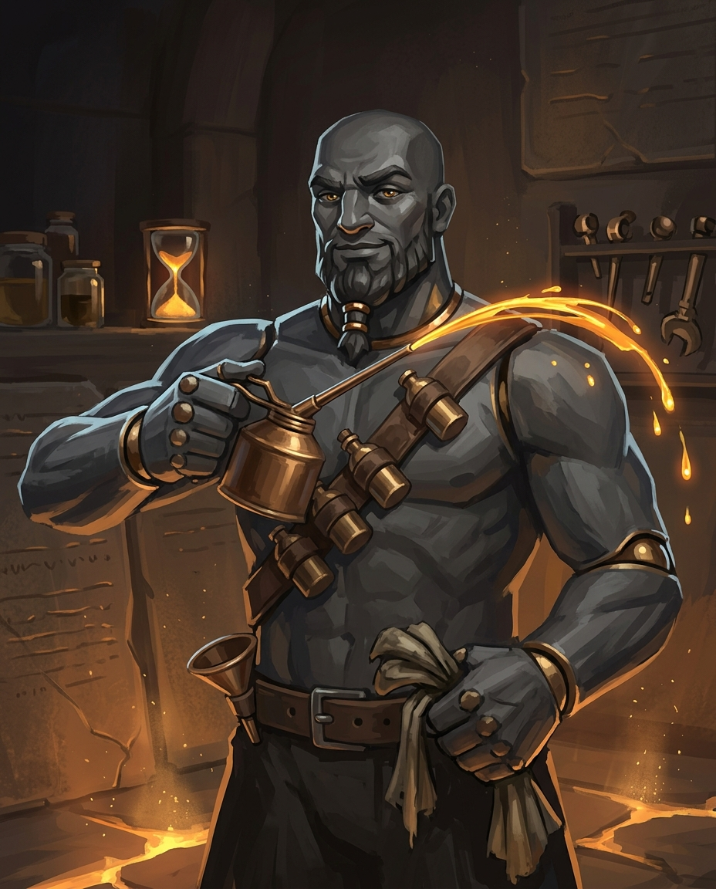
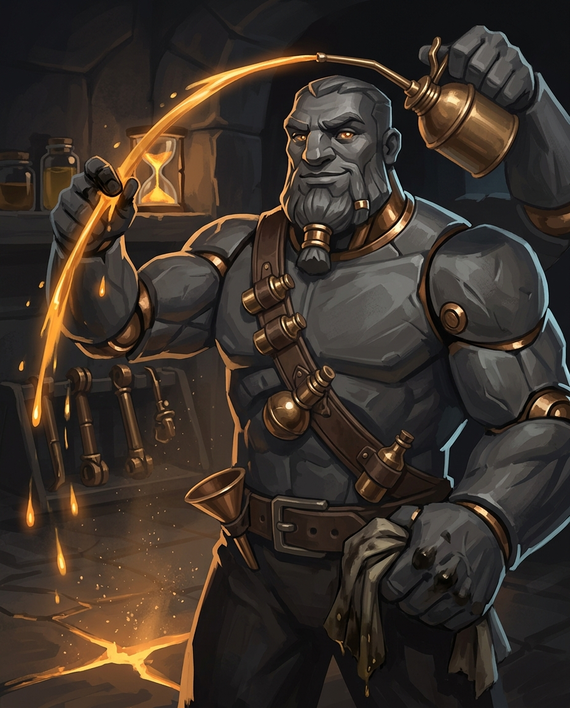
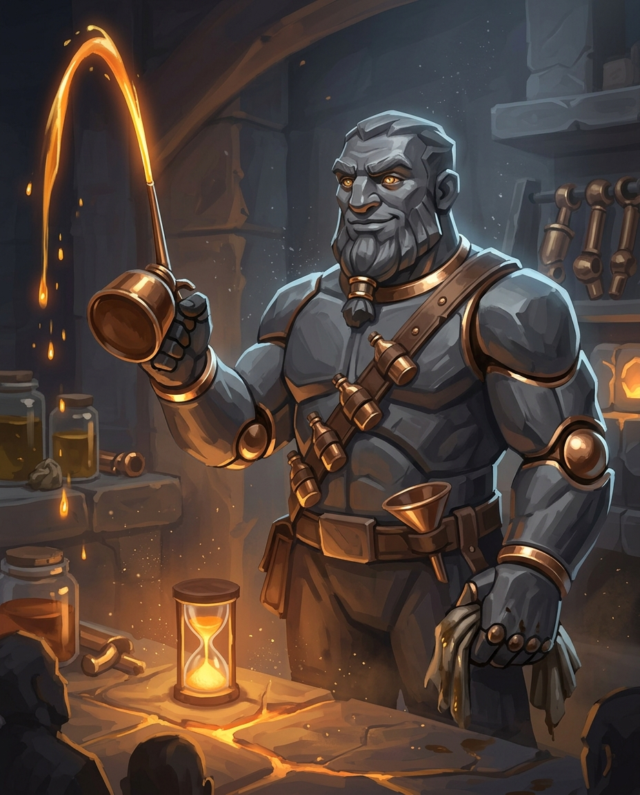
Промт, как он ушёл в модель
Art style: hand-painted stylized dark-fantasy game art for a mobile RPG. Painterly digital illustration with visible, confident brush strokes and simplified planar shapes, crisp rim light on edges, strong readable silhouettes, deep near-black shadows. Epic, dramatic character art: a powerful pose, a low camera, strong theatrical light from below. Light tells the story: a few strong sources — the sand of hourglasses, cracks in the stone floor and fine grooves in old stone that glow from within — throw warm amber light upward, the light comes from below. Warm and cold light contrast. Dust motes and fine stone grit float in the light. Moderate detail, clean readable forms; the face, the hands and the weapon get the most detail. No photorealism, no 3D-render look, no anime, no cartoon. Draw exactly one image in a single pass: no alternative versions, no second attempts, no text in the reply. Enemy card portrait, 4:5. The card is shown small on the battle field (about 74 px wide) and large in the bestiary, so the enemy must read as one bold, simple, well-lit silhouette with a clear pose against a darker background. Framing: a close, heroic half-length portrait. The camera is a little below the figure's chest and looks slightly up, so the enemy towers over the viewer and fills most of the frame. A figure shaped like a dwarf is cut by the bottom edge of the picture at the belt: head, shoulders, chest, arms and hands in the frame, no hips, no legs, no feet. Beasts and machines are framed as their own description says. The head sits in the upper third with a little space above it. The body is turned in three-quarter view toward the LEFT side of the picture, where its enemies stand; its weapon, its spell or the thing it is named after is thrust toward the left, in front of the body, and reads clearly. Pathos: it is a worthy and dangerous enemy — powerful, proud, alive and caught at the peak of an action, a foe that is frightening and honourable to defeat. Its character shows in its face, its gaze and its posture; its story shows in the details of its body and its tools. No one in this set wears a hood. World: the Library of Ularion, the workshop of the god of knowledge deep under the city of Endalor — a real ancient library cut in dark stone. Its halls go down and down; on long stone shelves lie stone tablets and stone cylinders covered with long, straight, parallel engraved grooves, like ruled lines with nothing written between them — the writing that only the god can read shows only as this worn texture of straight lines, never as letters, squiggles or signs. On the worktables parts of dwarves and parts of mechanisms lie together: the god made the people and the machine with the same hands. At every work place stands an hourglass of bronze and glass with glowing amber sand. Stone beetles live in the shelves; stone sagans are rock that has noticed itself. The Library's servants are stone dwarves made by the god. The Library calls them puppets, but they are masterworks, made carefully and with pride: carved from dark grey stone with the precision of great sculpture, polished smooth where they move and left with fine chisel marks elsewhere; the proportions of dwarf warriors — very broad shoulders, a deep chest, a thick neck, massive forearms, big capable hands; strong individual faces with heavy brows and broad noses, carved beards bound with bronze rings; bronze ball joints — precise, well-oiled work with thin engraved bands of straight lines — at the neck, shoulders, elbows and wrists, unless the description says otherwise. Their eyes are inlaid stones that glow from within, amber unless the description says otherwise: alive, attentive, fixed on the enemy with purpose. Their hands know the work and the fight; only the writing they cannot understand. They move with weight and certainty, like veteran warriors and master craftsmen. Colors: muted, like all our enemies — dark grey basalt, warm dull bronze and old brass, soot black, dusty ochre; everything else sinks into near-black shadow. Light, the same for the whole set: the light comes from below — warm amber light from the sand of the hourglasses, from cracks in the stone floor and from the grooves of the tablets rises onto the figure and lights its face and hands from underneath; crisp cool grey-blue rim light on its edges is the only cold light. Background: its own place in the Library, darker and softer than the figure, with depth. All fourteen portraits of this set share the same framing, painting style, palette and lighting. The enemy: the Oiler, an elite healer of the Library (Earth). Who he is: the Library's careful keeper of joints. He is unmistakably a dwarf: short and enormously broad, a barrel chest, a thick short neck, a big head with a broad face and a wide nose, short massive arms and huge hands — all carved of dark grey stone with bronze joints. He walks among his kin with a bronze oil can on a long spout and a bundle of rags, and wherever he passes, stiff joints move again and cracked stone seals; he smells of oil. Healers stand behind the front line: right now his kin fight in front of him, between him and the heroes, and he keeps them in the fight. Character: meticulous, calm and a little smug — the calm of a field surgeon who has seen everything; nothing in the fight hurries him. One stone brow is raised, his amber eyes are sharp and attentive, a faint knowing smile shows under a short, neat carved beard. Pose, the moment of healing: he stands firm, turned toward the left. He has exactly two arms. His near arm holds the oil can out in front of him toward the left at the height of his chest, its long thin spout pointing up and forward, and he squeezes it: a long bright arc of glowing amber oil jets out toward the left, high over the heads of his kin in front of him, and falls in glowing drops. His far arm hangs at his side, and its hand holds a bundle of oily rags against his hip. Details that tell his story: (1) his own bronze joints gleam, perfectly oiled — he looks after himself too; (2) a leather bandolier across his chest holds small bronze oil flasks; (3) a small bronze funnel is tucked into his belt; (4) his beard is carved short and neat and tied with a bronze ring so it does not get oily; (5) his stone fingertips are darkened with oil. Place: a workshop corner of the Library with jars of oil, a rack of spare bronze joints and an hourglass with glowing amber sand; amber light glowing from the cracks of the floor below. No text, no letters, no numbers, no glyphs, no runes that look like letters, no real-world scripts, no carvings that look like writing or numerals, no occult symbols, no watermark, no signature, no logo, no UI elements, no border or frame around the picture. Tablets, cylinders, cords and walls carry no writing and no signs: only fine worn grooves and texture. No gore, no blood, no skulls, no horror grotesque. No purple, no violet, no magenta light. Only one figure in the foreground; a figure shaped like a dwarf has exactly two arms and two hands. Not a mannequin, not a crash-test dummy, not a marionette on strings, not a clumsy golem, not a robot, not a statue on display: no stiff, passive, awkward or doll-like pose, no dead or empty eyes.
Узловяз — Библиотека Улариона, элита, дебаффер, дворфы, Земля (глубокий промт)
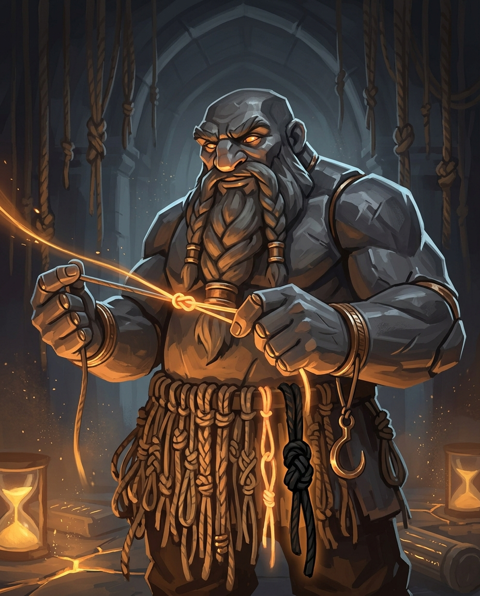
Промт, как он ушёл в модель
Art style: hand-painted stylized dark-fantasy game art for a mobile RPG. Painterly digital illustration with visible, confident brush strokes and simplified planar shapes, crisp rim light on edges, strong readable silhouettes, deep near-black shadows. Epic, dramatic character art: a powerful pose, a low camera, strong theatrical light from below. Light tells the story: a few strong sources — the sand of hourglasses, cracks in the stone floor and fine grooves in old stone that glow from within — throw warm amber light upward, the light comes from below. Warm and cold light contrast. Dust motes and fine stone grit float in the light. Moderate detail, clean readable forms; the face, the hands and the weapon get the most detail. No photorealism, no 3D-render look, no anime, no cartoon. Draw exactly one image in a single pass: no alternative versions, no second attempts, no text in the reply. Enemy card portrait, 4:5. The card is shown small on the battle field (about 74 px wide) and large in the bestiary, so the enemy must read as one bold, simple, well-lit silhouette with a clear pose against a darker background. Framing: a close, heroic half-length portrait. The camera is a little below the figure's chest and looks slightly up, so the enemy towers over the viewer and fills most of the frame. A figure shaped like a dwarf is cut by the bottom edge of the picture at the belt: head, shoulders, chest, arms and hands in the frame, no hips, no legs, no feet. Beasts and machines are framed as their own description says. The head sits in the upper third with a little space above it. The body is turned in three-quarter view toward the LEFT side of the picture, where its enemies stand; its weapon, its spell or the thing it is named after is thrust toward the left, in front of the body, and reads clearly. Pathos: it is a worthy and dangerous enemy — powerful, proud, alive and caught at the peak of an action, a foe that is frightening and honourable to defeat. Its character shows in its face, its gaze and its posture; its story shows in the details of its body and its tools. No one in this set wears a hood. World: the Library of Ularion, the workshop of the god of knowledge deep under the city of Endalor — a real ancient library cut in dark stone. Its halls go down and down; on long stone shelves lie stone tablets and stone cylinders covered with fine engraved grooves — the writing that only the god can read; it shows only as a worn texture of fine lines, never as letters or signs. On the worktables parts of dwarves and parts of mechanisms lie together: the god made the people and the machine with the same hands. At every work place stands an hourglass of bronze and glass with glowing amber sand. Stone beetles live in the shelves; stone sagans are rock that has noticed itself. The Library's servants are stone dwarves made by the god. The Library calls them puppets, but they are masterworks, made carefully and with pride: carved from dark grey stone with the precision of great sculpture, polished smooth where they move and left with fine chisel marks elsewhere; the proportions of dwarf warriors — very broad shoulders, a deep chest, a thick neck, massive forearms, big capable hands; strong individual faces with heavy brows and broad noses, carved beards bound with bronze rings; bronze ball joints — precise, well-oiled work with thin engraved bands of straight lines — at the neck, shoulders, elbows and wrists, unless the description says otherwise. Their eyes are inlaid stones that glow from within, amber unless the description says otherwise: alive, attentive, fixed on the enemy with purpose. Their hands know the work and the fight; only the writing they cannot understand. They move with weight and certainty, like veteran warriors and master craftsmen. Colors: muted, like all our enemies — dark grey basalt, warm dull bronze and old brass, soot black, dusty ochre; everything else sinks into near-black shadow. Light, the same for the whole set: the light comes from below — warm amber light from the sand of the hourglasses, from cracks in the stone floor and from the grooves of the tablets rises onto the figure and lights its face and hands from underneath; crisp cool grey-blue rim light on its edges is the only cold light. Background: its own place in the Library, darker and softer than the figure, with depth. All fourteen portraits of this set share the same framing, painting style, palette and lighting. The enemy: the Knot-Tier, an elite debuffer of the Library (Earth). Who he is: the Library's keeper of accounts. A cord is wound around his belt, and hundreds of knotted cords hang from it: each knot is a record — whose strength, and how much. When he ties a knot on you, your strength goes into the cord; when he ties a deaf knot, your healer falls silent. Right now he is counting the heroes. Character: cold, calculating and quick — a bookkeeper of other people's strength. His head is tilted slightly, his amber eyes narrowed as if adding up sums, a thin, satisfied smile under a long braided beard. Pose, the moment of the knot: he holds a long cord stretched taut between his two hands toward the left, as if measuring the hero in front of him, and with a sharp jerk of his fingers he pulls a knot tight; a thin thread of amber light is drawn out of the air from the left along the cord and tied into the knot. His shoulders are hunched forward, his elbows out, all his attention in his fingers. Details that tell his story: (1) hundreds of knotted cords hang from his belt like a heavy fringe, every knot different; (2) the freshest knots glow faintly amber — stolen strength; (3) one thick black knot hangs apart from the others — the deaf knot; (4) his stone fingertips are capped with bronze, worn smooth from tying; (5) a bronze hook for pulling knots tight hangs from his wrist on a thong. Place: an archive hall of the Library where knotted cords hang from the ceiling like heavy curtains; amber light from the cracks of the floor below. No text, no letters, no numbers, no glyphs, no runes that look like letters, no real-world scripts, no carvings that look like writing or numerals, no occult symbols, no watermark, no signature, no logo, no UI elements, no border or frame around the picture. Tablets, cylinders, cords and walls carry no writing and no signs: only fine worn grooves and texture. No gore, no blood, no skulls, no horror grotesque. No purple, no violet, no magenta light. Only one figure in the foreground; a figure shaped like a dwarf has exactly two arms and two hands. Not a mannequin, not a crash-test dummy, not a marionette on strings, not a clumsy golem, not a robot, not a statue on display: no stiff, passive, awkward or doll-like pose, no dead or empty eyes.
Смотритель — босс биома «Библиотека Улариона», аппараты, Земля (глубокий промт)
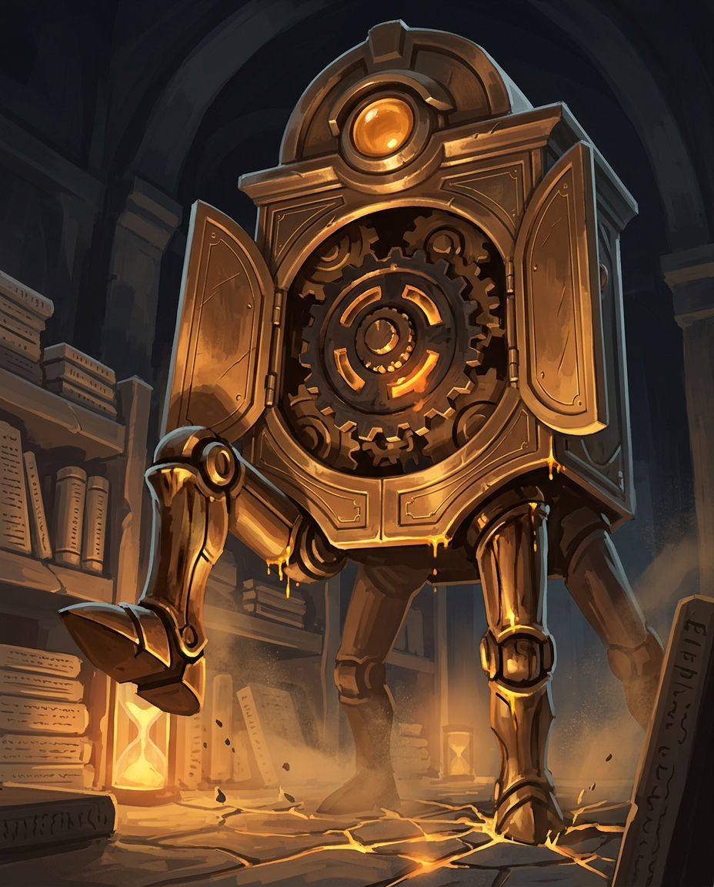
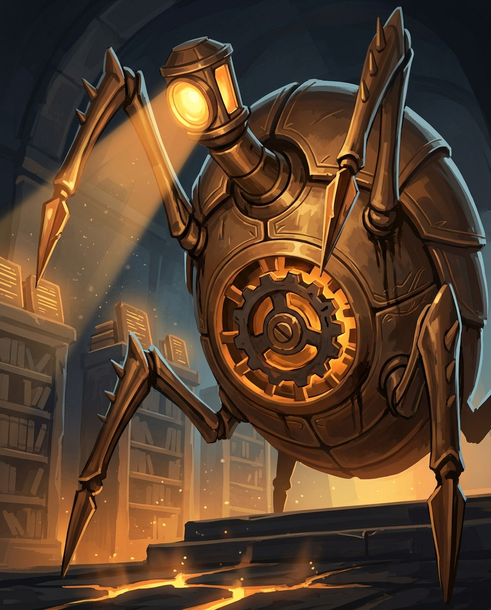
Промт, как он ушёл в модель
Art style: hand-painted stylized dark-fantasy game art for a mobile RPG. Painterly digital illustration with visible, confident brush strokes and simplified planar shapes, crisp rim light on edges, strong readable silhouettes, deep near-black shadows. Epic, dramatic character art: a powerful pose, a low camera, strong theatrical light from below. Light tells the story: a few strong sources — the sand of hourglasses, cracks in the stone floor and fine grooves in old stone that glow from within — throw warm amber light upward, the light comes from below. Warm and cold light contrast. Dust motes and fine stone grit float in the light. Moderate detail, clean readable forms; the face, the hands and the weapon get the most detail. No photorealism, no 3D-render look, no anime, no cartoon. Draw exactly one image in a single pass: no alternative versions, no second attempts, no text in the reply. Enemy card portrait, 4:5. The card is shown small on the battle field (about 74 px wide) and large in the bestiary, so the enemy must read as one bold, simple, well-lit silhouette with a clear pose against a darker background. Framing: a close, heroic half-length portrait. The camera is a little below the figure's chest and looks slightly up, so the enemy towers over the viewer and fills most of the frame. A figure shaped like a dwarf is cut by the bottom edge of the picture at the belt: head, shoulders, chest, arms and hands in the frame, no hips, no legs, no feet. Beasts and machines are framed as their own description says. The head sits in the upper third with a little space above it. The body is turned in three-quarter view toward the LEFT side of the picture, where its enemies stand; its weapon, its spell or the thing it is named after is thrust toward the left, in front of the body, and reads clearly. Pathos: it is a worthy and dangerous enemy — powerful, proud, alive and caught at the peak of an action, a foe that is frightening and honourable to defeat. Its character shows in its face, its gaze and its posture; its story shows in the details of its body and its tools. No one in this set wears a hood. World: the Library of Ularion, the workshop of the god of knowledge deep under the city of Endalor — a real ancient library cut in dark stone. Its halls go down and down; on long stone shelves lie stone tablets and stone cylinders covered with long, straight, parallel engraved grooves, like ruled lines with nothing written between them — the writing that only the god can read shows only as this worn texture of straight lines, never as letters, squiggles or signs. On the worktables parts of dwarves and parts of mechanisms lie together: the god made the people and the machine with the same hands. At every work place stands an hourglass of bronze and glass with glowing amber sand. Stone beetles live in the shelves; stone sagans are rock that has noticed itself. The Library's servants are stone dwarves made by the god. The Library calls them puppets, but they are masterworks, made carefully and with pride: carved from dark grey stone with the precision of great sculpture, polished smooth where they move and left with fine chisel marks elsewhere; the proportions of dwarf warriors — very broad shoulders, a deep chest, a thick neck, massive forearms, big capable hands; strong individual faces with heavy brows and broad noses, carved beards bound with bronze rings; bronze ball joints — precise, well-oiled work with thin engraved bands of straight lines — at the neck, shoulders, elbows and wrists, unless the description says otherwise. Their eyes are inlaid stones that glow from within, amber unless the description says otherwise: alive, attentive, fixed on the enemy with purpose. Their hands know the work and the fight; only the writing they cannot understand. They move with weight and certainty, like veteran warriors and master craftsmen. Colors: muted, like all our enemies — dark grey basalt, warm dull bronze and old brass, soot black, dusty ochre; everything else sinks into near-black shadow. Light, the same for the whole set: the light comes from below — warm amber light from the sand of the hourglasses, from cracks in the stone floor and from the grooves of the tablets rises onto the figure and lights its face and hands from underneath; crisp cool grey-blue rim light on its edges is the only cold light. Background: its own place in the Library, darker and softer than the figure, with depth. All fourteen portraits of this set share the same framing, painting style, palette and lighting. The enemy: the Keeper, the boss of the Library (Earth). Who it is: the first mechanism of the world — a colossal bronze apparatus taller than the shelves that walks between the rows on four long knee-jointed legs; it has been oiled for a thousand years and smells like an old mill. It lets no one near the tablets. It is not a person: here the rules about the belt, the head and the arms do not apply. Right now it has found intruders and rears up to crush them. Character: ancient, implacable and terrifying in its majesty — the walking engine of a god. It does not hate; it guards, and it has never stopped. Appearance: its body is a massive rounded bronze hull, heavy as a bell and armored with overlapping plates like the shell of a great beetle, slung between its legs. In the front of the hull a wide round opening framed by heavy bronze ribs shows its gears turning inside; at the center the largest gear, ancient, dark and heavy, glows amber — the first gear of the world. From the front of the hull juts a heavy bronze head on a thick jointed neck, like the lantern of a lighthouse; instead of a face it has a single great round amber lens that blazes and throws a beam of amber light down toward the left. Its four legs are long and spiked, bent like the legs of a giant spider crab: each has a high, sharp knee that rises above the hull and comes down to a pointed bronze foot like a spear. Framing and pose, the moment of the step: the camera is low and looks up; the Keeper towers and fills the frame. It rears up toward the left: its two front legs are lifted high, their spear-like feet poised above the heroes to strike down; its hull tilts back; its lens glares. Its hind legs go out of the bottom of the frame. Details that tell its story: (1) thousand-year-old oil runs down the bronze in dark streaks and drips, glowing amber, from its joints; (2) the first gear is visibly older than all the others — darker, worn, a few of its teeth chipped; (3) its bronze plates carry fine engraved line ornament, polished by the ages; (4) a haze of fine stone dust, like the dust of an old mill, rises around it; (5) its gears are mid-turn, and a glow is building in its chest toward a full revolution. Place: the tops of tall stone shelves reach only to its hull, stacked with the tablets it guards; the dark vault above; amber light from below. No text, no letters, no numbers, no glyphs, no runes that look like letters, no real-world scripts, no carvings that look like writing or numerals, no occult symbols, no watermark, no signature, no logo, no UI elements, no border or frame around the picture. Tablets, cylinders, cords and walls carry no writing and no signs: only fine worn grooves and texture. No gore, no blood, no skulls, no horror grotesque. No purple, no violet, no magenta light. Only one figure in the foreground; a figure shaped like a dwarf has exactly two arms and two hands. Not a mannequin, not a crash-test dummy, not a marionette on strings, not a clumsy golem, not a robot, not a statue on display: no stiff, passive, awkward or doll-like pose, no dead or empty eyes.
Сундук осколков — реликварий Эхо
Промт, как он ушёл в модель
Dark fantasy mobile RPG game art with a gloomy, mystical atmosphere. Painterly digital illustration with soft transitions, elaborate shadows and confident visible brushwork; simplified large readable forms; a crisp rim light along the edges. Rich worn materials: dark forged iron, old gold, weathered wood, carved stone, aged leather. Precious, dramatic, high contrast. No photorealism, no 3D-render look, no anime. Format: game item art for a loot-chest opening animation: one closed treasure chest, alone, centered. Match the brushwork, lighting and color handling of the attached style reference (approved game art), but do NOT copy its subject or shape. View: straight from the front, the camera a little above the chest (about 15 degrees), perfectly symmetric left to right, so we see the front face and only a thin sliver of the top; the side faces are hidden. The chest fills about 78% of the canvas width and stands in the middle of the canvas. Construction: the chest is two separate pieces, a body and a lid resting on it. Where they meet, one clean, straight, perfectly horizontal seam runs across the whole front from the left edge of the chest to the right edge; a thin dark shadow line marks it. Nothing crosses the seam: no lock, no padlock, no hasp, no latch, no strap, no band, no hinge and no decoration goes from the lid down onto the body or from the body up onto the lid — the lock is added separately by the game. Lighting: soft pale neutral light from below and from the front, a crisp pale rim light along the whole silhouette. The chest itself does not glow: no colored light, nothing shines from inside it, no light leaks from the seam — the game adds colored magic light around it. Large readable shapes that still read at 120 px; the painterly detail lives inside the silhouette, nothing floats around it. The background is a perfectly flat, uniform, solid pure magenta (#FF00FF) that fills the whole canvas edge to edge: no gradient, no vignette, no texture, no floor, no ground line, no cast shadow, no reflection, no glow or light spill on the background, no checkerboard transparency pattern. Leave a clear magenta margin around the chest on every side. Do not use magenta, pink or purple anywhere on the chest. Subject: the reliquary of the Echo, a chest that keeps the soul shards of ancient heroes. Material: dark grey-black basalt cut in heavy smooth blocks, bound with broad bands of tarnished silver along the corners and across the body. The lid is a low stone slab; along its top grows a crest of pale, colorless, clouded quartz shards — several crystal points of different heights — the sign of this chest. Cold, heavy, ancient. The silver is worn down to the stone at the edges. No text, no letters, no numbers, no runes, no glyphs, no real-world alphabets, no watermark, no signature, no logo, no UI elements, no border or frame around the picture.
Провидец — рунный босс «Библиотеки Улариона», страж пределов, дворфы, Земля (глубокий промт)
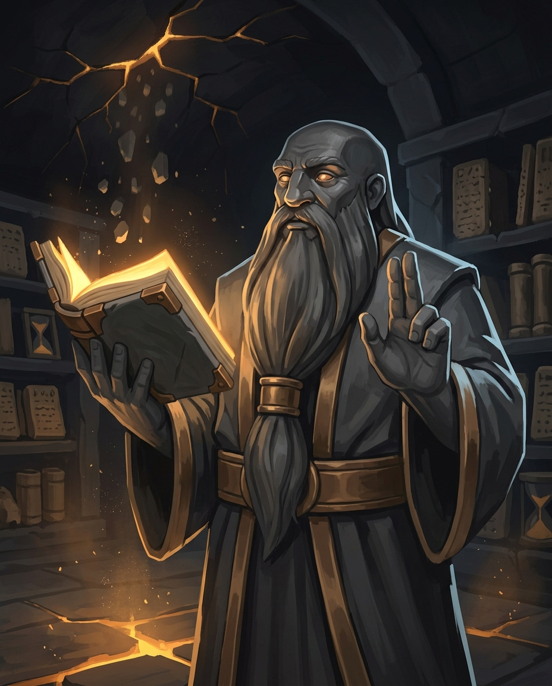
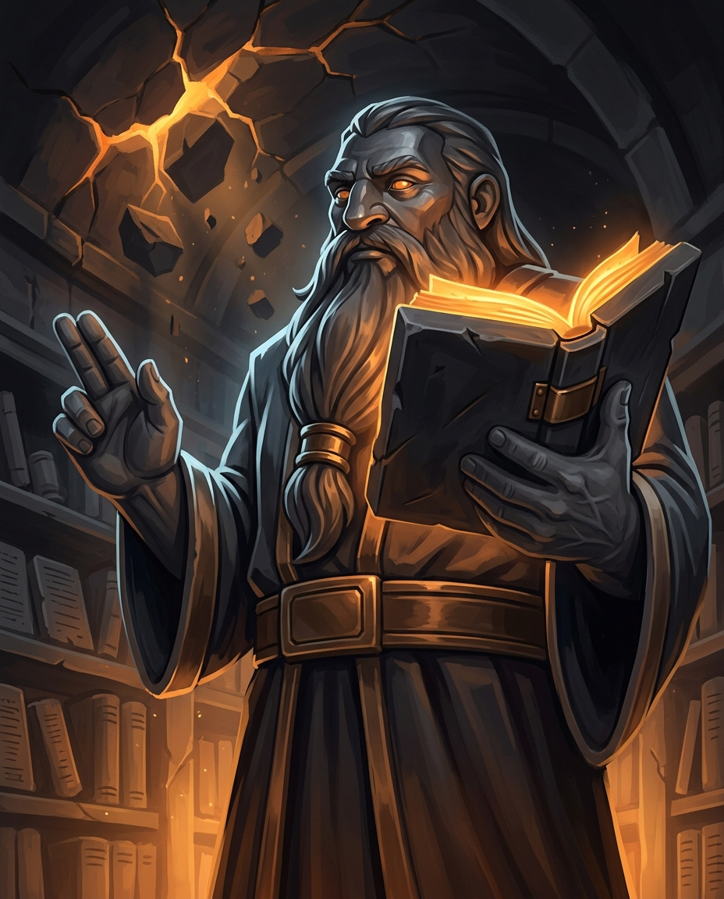
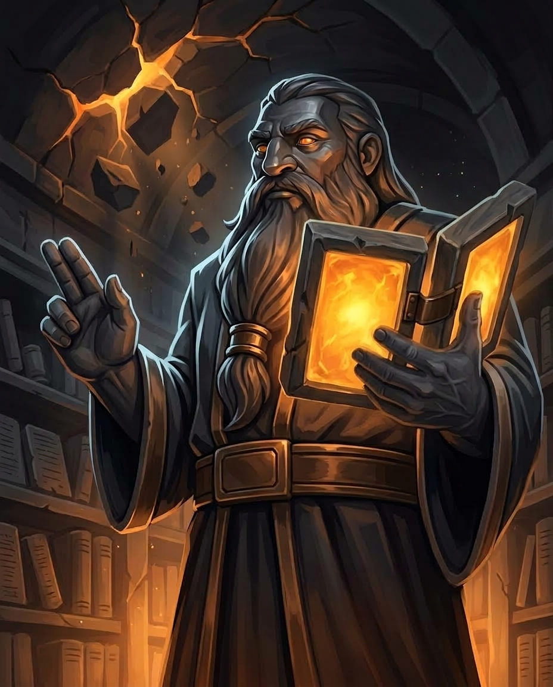
Промт, как он ушёл в модель
Art style: hand-painted stylized dark-fantasy game art for a mobile RPG. Painterly digital illustration with visible, confident brush strokes and simplified planar shapes, crisp rim light on edges, strong readable silhouettes, deep near-black shadows. Epic, dramatic character art: a powerful pose, a low camera, strong theatrical light from below. Light tells the story: a few strong sources — the sand of hourglasses, cracks in the stone floor and fine grooves in old stone that glow from within — throw warm amber light upward, the light comes from below. Warm and cold light contrast. Dust motes and fine stone grit float in the light. Moderate detail, clean readable forms; the face, the hands and the weapon get the most detail. No photorealism, no 3D-render look, no anime, no cartoon. Draw exactly one image in a single pass: no alternative versions, no second attempts, no text in the reply. Enemy card portrait, 4:5. The card is shown small on the battle field (about 74 px wide) and large in the bestiary, so the enemy must read as one bold, simple, well-lit silhouette with a clear pose against a darker background. Framing: a close, heroic half-length portrait. The camera is a little below the figure's chest and looks slightly up, so the enemy towers over the viewer and fills most of the frame. A figure shaped like a dwarf is cut by the bottom edge of the picture at the belt: head, shoulders, chest, arms and hands in the frame, no hips, no legs, no feet. Beasts and machines are framed as their own description says. The head sits in the upper third with a little space above it. The body is turned in three-quarter view toward the LEFT side of the picture, where its enemies stand; its weapon, its spell or the thing it is named after is thrust toward the left, in front of the body, and reads clearly. Pathos: it is a worthy and dangerous enemy — powerful, proud, alive and caught at the peak of an action, a foe that is frightening and honourable to defeat. Its character shows in its face, its gaze and its posture; its story shows in the details of its body and its tools. No one in this set wears a hood. World: the Library of Ularion, the workshop of the god of knowledge deep under the city of Endalor — a real ancient library cut in dark stone. Its halls go down and down; on long stone shelves lie stone tablets and stone cylinders covered with long, straight, parallel engraved grooves, like ruled lines with nothing written between them — the writing that only the god can read shows only as this worn texture of straight lines, never as letters, squiggles or signs. On the worktables parts of dwarves and parts of mechanisms lie together: the god made the people and the machine with the same hands. At every work place stands an hourglass of bronze and glass with glowing amber sand. Stone beetles live in the shelves; stone sagans are rock that has noticed itself. The Library's servants are stone dwarves made by the god. The Library calls them puppets, but they are masterworks, made carefully and with pride: carved from dark grey stone with the precision of great sculpture, polished smooth where they move and left with fine chisel marks elsewhere; the proportions of dwarf warriors — very broad shoulders, a deep chest, a thick neck, massive forearms, big capable hands; strong individual faces with heavy brows and broad noses, carved beards bound with bronze rings; bronze ball joints — precise, well-oiled work with thin engraved bands of straight lines — at the neck, shoulders, elbows and wrists, unless the description says otherwise. Their eyes are inlaid stones that glow from within, amber unless the description says otherwise: alive, attentive, fixed on the enemy with purpose. Their hands know the work and the fight; only the writing they cannot understand. They move with weight and certainty, like veteran warriors and master craftsmen. Colors: muted, like all our enemies — dark grey basalt, warm dull bronze and old brass, soot black, dusty ochre; everything else sinks into near-black shadow. Light, the same for the whole set: the light comes from below — warm amber light from the sand of the hourglasses, from cracks in the stone floor and from the grooves of the tablets rises onto the figure and lights its face and hands from underneath; crisp cool grey-blue rim light on its edges is the only cold light. Background: its own place in the Library, darker and softer than the figure, with depth. All fourteen portraits of this set share the same framing, painting style, palette and lighting. EDIT MODE — this overrides everything above: do not draw a new picture, edit the attached image. The attached image is the current portrait of this enemy, the Seer: a tall stone dwarf with a very long beard in a dark robe, his hand raised with two fingers, holding a glowing open book, the vault cracking above. Keep the picture exactly as it is — the same figure, face, glowing eyes, beard and its bronze ring, robe, belt, both hands, the raised fingers, the cracked vault and falling stones, the shelves, the light, the colors and the painting style. Change only the open book in his hand: it must not be a paper book. Turn it into an open stone slab — two thick, flat leaves of dark stone joined by bronze hinges and opened like a book, their inner faces smooth stone blazing with amber light: no paper pages, no page edges, no marks. His hand holds it in the same place. Nothing else changes. No text, no letters, no numbers, no glyphs, no runes that look like letters, no real-world scripts, no carvings that look like writing or numerals, no occult symbols, no watermark, no signature, no logo, no UI elements, no border or frame around the picture. Tablets, cylinders, cords and walls carry no writing and no signs: only fine worn grooves and texture. No gore, no blood, no skulls, no horror grotesque. No purple, no violet, no magenta light. Only one figure in the foreground; a figure shaped like a dwarf has exactly two arms and two hands. Not a mannequin, not a crash-test dummy, not a marionette on strings, not a clumsy golem, not a robot, not a statue on display: no stiff, passive, awkward or doll-like pose, no dead or empty eyes.
Сундук ключей — окованный ларь контрактов
Промт, как он ушёл в модель
Dark fantasy mobile RPG game art with a gloomy, mystical atmosphere. Painterly digital illustration with soft transitions, elaborate shadows and confident visible brushwork; simplified large readable forms; a crisp rim light along the edges. Rich worn materials: dark forged iron, old gold, weathered wood, carved stone, aged leather. Precious, dramatic, high contrast. No photorealism, no 3D-render look, no anime. Format: game item art for a loot-chest opening animation: one closed treasure chest, alone, centered. Match the brushwork, lighting and color handling of the attached style reference (approved game art), but do NOT copy its subject or shape. View: straight from the front, the camera a little above the chest (about 15 degrees), perfectly symmetric left to right, so we see the front face and only a thin sliver of the top; the side faces are hidden. The chest fills about 78% of the canvas width and stands in the middle of the canvas. Construction: the chest is two separate pieces, a body and a lid resting on it. Where they meet, one clean, straight, perfectly horizontal seam runs across the whole front from the left edge of the chest to the right edge; a thin dark shadow line marks it. Nothing crosses the seam: no lock, no padlock, no hasp, no latch, no strap, no band, no hinge and no decoration goes from the lid down onto the body or from the body up onto the lid — the lock is added separately by the game. Lighting: soft pale neutral light from below and from the front, a crisp pale rim light along the whole silhouette. The chest itself does not glow: no colored light, nothing shines from inside it, no light leaks from the seam — the game adds colored magic light around it. Large readable shapes that still read at 120 px; the painterly detail lives inside the silhouette, nothing floats around it. The background is a perfectly flat, uniform, solid pure magenta (#FF00FF) that fills the whole canvas edge to edge: no gradient, no vignette, no texture, no floor, no ground line, no cast shadow, no reflection, no glow or light spill on the background, no checkerboard transparency pattern. Leave a clear magenta margin around the chest on every side. Do not use magenta, pink or purple anywhere on the chest. Subject: the keybearer's strongbox, a chest that keeps rune keys. Material: blackened forged iron plates riveted together, reinforced with thick bronze bands and heavy bronze corners. Its sign: the front of the body carries a row of three ornate bronze keyhole plates, and two big old bronze keys lie across the top of the lid as its hinges. A flat lid. Squat and heavy, a small fortress. No text, no letters, no numbers, no runes, no glyphs, no real-world alphabets, no watermark, no signature, no logo, no UI elements, no border or frame around the picture.
Сундук снаряжения — оружейный ящик Арены
Промт, как он ушёл в модель
Dark fantasy mobile RPG game art with a gloomy, mystical atmosphere. Painterly digital illustration with soft transitions, elaborate shadows and confident visible brushwork; simplified large readable forms; a crisp rim light along the edges. Rich worn materials: dark forged iron, old gold, weathered wood, carved stone, aged leather. Precious, dramatic, high contrast. No photorealism, no 3D-render look, no anime. Format: game item art for a loot-chest opening animation: one closed treasure chest, alone, centered. Match the brushwork, lighting and color handling of the attached style reference (approved game art), but do NOT copy its subject or shape. View: straight from the front, the camera a little above the chest (about 15 degrees), perfectly symmetric left to right, so we see the front face and only a thin sliver of the top; the side faces are hidden. The chest fills about 78% of the canvas width and stands in the middle of the canvas. Construction: the chest is two separate pieces, a body and a lid resting on it. Where they meet, one clean, straight, perfectly horizontal seam runs across the whole front from the left edge of the chest to the right edge; a thin dark shadow line marks it. Nothing crosses the seam: no lock, no padlock, no hasp, no latch, no strap, no band, no hinge and no decoration goes from the lid down onto the body or from the body up onto the lid — the lock is added separately by the game. Lighting: soft pale neutral light from below and from the front, a crisp pale rim light along the whole silhouette. The chest itself does not glow: no colored light, nothing shines from inside it, no light leaks from the seam — the game adds colored magic light around it. Large readable shapes that still read at 120 px; the painterly detail lives inside the silhouette, nothing floats around it. The background is a perfectly flat, uniform, solid pure magenta (#FF00FF) that fills the whole canvas edge to edge: no gradient, no vignette, no texture, no floor, no ground line, no cast shadow, no reflection, no glow or light spill on the background, no checkerboard transparency pattern. Leave a clear magenta margin around the chest on every side. Do not use magenta, pink or purple anywhere on the chest. Subject: the arena armory crate, a chest that keeps weapons and armor. Material: long dark oak planks bound with dented steel corner plates and steel bands. Its sign: a round steel shield with a sword crossed behind it is mounted in the middle of the lid front, well above the seam. The crate is longer and lower than a common chest, like a weapon case, with a flat lid. Battered, scratched, practical. No text, no letters, no numbers, no runes, no glyphs, no real-world alphabets, no watermark, no signature, no logo, no UI elements, no border or frame around the picture.
Сундук талисманов — шкатулка духа
Промт, как он ушёл в модель
Dark fantasy mobile RPG game art with a gloomy, mystical atmosphere. Painterly digital illustration with soft transitions, elaborate shadows and confident visible brushwork; simplified large readable forms; a crisp rim light along the edges. Rich worn materials: dark forged iron, old gold, weathered wood, carved stone, aged leather. Precious, dramatic, high contrast. No photorealism, no 3D-render look, no anime. Format: game item art for a loot-chest opening animation: one closed treasure chest, alone, centered. Match the brushwork, lighting and color handling of the attached style reference (approved game art), but do NOT copy its subject or shape. View: straight from the front, the camera a little above the chest (about 15 degrees), perfectly symmetric left to right, so we see the front face and only a thin sliver of the top; the side faces are hidden. The chest fills about 78% of the canvas width and stands in the middle of the canvas. Construction: the chest is two separate pieces, a body and a lid resting on it. Where they meet, one clean, straight, perfectly horizontal seam runs across the whole front from the left edge of the chest to the right edge; a thin dark shadow line marks it. Nothing crosses the seam: no lock, no padlock, no hasp, no latch, no strap, no band, no hinge and no decoration goes from the lid down onto the body or from the body up onto the lid — the lock is added separately by the game. Lighting: soft pale neutral light from below and from the front, a crisp pale rim light along the whole silhouette. The chest itself does not glow: no colored light, nothing shines from inside it, no light leaks from the seam — the game adds colored magic light around it. Large readable shapes that still read at 120 px; the painterly detail lives inside the silhouette, nothing floats around it. The background is a perfectly flat, uniform, solid pure magenta (#FF00FF) that fills the whole canvas edge to edge: no gradient, no vignette, no texture, no floor, no ground line, no cast shadow, no reflection, no glow or light spill on the background, no checkerboard transparency pattern. Leave a clear magenta margin around the chest on every side. Do not use magenta, pink or purple anywhere on the chest. Subject: the spirit casket, a jewel casket that keeps spirit talismans. Material: glossy black lacquered wood with fine old-gold filigree, gold corner caps and four small gold claw feet; a high rounded domed lid. Its sign: in the middle of the lid front, a large oval moonstone, milky white with a faint cool sheen, set in a gold mount. Refined and precious; taller and narrower than a common chest. No text, no letters, no numbers, no runes, no glyphs, no real-world alphabets, no watermark, no signature, no logo, no UI elements, no border or frame around the picture.
Сундук рабочих — рабочий короб События
Промт, как он ушёл в модель
Dark fantasy mobile RPG game art with a gloomy, mystical atmosphere. Painterly digital illustration with soft transitions, elaborate shadows and confident visible brushwork; simplified large readable forms; a crisp rim light along the edges. Rich worn materials: dark forged iron, old gold, weathered wood, carved stone, aged leather. Precious, dramatic, high contrast. No photorealism, no 3D-render look, no anime. Format: game item art for a loot-chest opening animation: one closed treasure chest, alone, centered. Match the brushwork, lighting and color handling of the attached style reference (approved game art), but do NOT copy its subject or shape. View: straight from the front, the camera a little above the chest (about 15 degrees), perfectly symmetric left to right, so we see the front face and only a thin sliver of the top; the side faces are hidden. The chest fills about 78% of the canvas width and stands in the middle of the canvas. Construction: the chest is two separate pieces, a body and a lid resting on it. Where they meet, one clean, straight, perfectly horizontal seam runs across the whole front from the left edge of the chest to the right edge; a thin dark shadow line marks it. Nothing crosses the seam: no lock, no padlock, no hasp, no latch, no strap, no band, no hinge and no decoration goes from the lid down onto the body or from the body up onto the lid — the lock is added separately by the game. Lighting: soft pale neutral light from below and from the front, a crisp pale rim light along the whole silhouette. The chest itself does not glow: no colored light, nothing shines from inside it, no light leaks from the seam — the game adds colored magic light around it. Large readable shapes that still read at 120 px; the painterly detail lives inside the silhouette, nothing floats around it. The background is a perfectly flat, uniform, solid pure magenta (#FF00FF) that fills the whole canvas edge to edge: no gradient, no vignette, no texture, no floor, no ground line, no cast shadow, no reflection, no glow or light spill on the background, no checkerboard transparency pattern. Leave a clear magenta margin around the chest on every side. Do not use magenta, pink or purple anywhere on the chest. Subject: the workers' crate, a chest that keeps the shards of hired workers. Material: light pale sanded wood planks with rough dark iron fittings, thick coiled rope handles on both sides of the body. Its sign: two big brass cogwheels mounted on the front of the body and a small iron wrench fixed across the lid. A flat lid. Honest and sturdy, a craftsman's box, the corners worn smooth by hands. No text, no letters, no numbers, no runes, no glyphs, no real-world alphabets, no watermark, no signature, no logo, no UI elements, no border or frame around the picture.
Сундук крафтового босса — каменный сундук руин
Промт, как он ушёл в модель
Dark fantasy mobile RPG game art with a gloomy, mystical atmosphere. Painterly digital illustration with soft transitions, elaborate shadows and confident visible brushwork; simplified large readable forms; a crisp rim light along the edges. Rich worn materials: dark forged iron, old gold, weathered wood, carved stone, aged leather. Precious, dramatic, high contrast. No photorealism, no 3D-render look, no anime. Format: game item art for a loot-chest opening animation: one closed treasure chest, alone, centered. Match the brushwork, lighting and color handling of the attached style reference (approved game art), but do NOT copy its subject or shape. View: straight from the front, the camera a little above the chest (about 15 degrees), perfectly symmetric left to right, so we see the front face and only a thin sliver of the top; the side faces are hidden. The chest fills about 78% of the canvas width and stands in the middle of the canvas. Construction: the chest is two separate pieces, a body and a lid resting on it. Where they meet, one clean, straight, perfectly horizontal seam runs across the whole front from the left edge of the chest to the right edge; a thin dark shadow line marks it. Nothing crosses the seam: no lock, no padlock, no hasp, no latch, no strap, no band, no hinge and no decoration goes from the lid down onto the body or from the body up onto the lid — the lock is added separately by the game. Lighting: soft pale neutral light from below and from the front, a crisp pale rim light along the whole silhouette. The chest itself does not glow: no colored light, nothing shines from inside it, no light leaks from the seam — the game adds colored magic light around it. Large readable shapes that still read at 120 px; the painterly detail lives inside the silhouette, nothing floats around it. The background is a perfectly flat, uniform, solid pure magenta (#FF00FF) that fills the whole canvas edge to edge: no gradient, no vignette, no texture, no floor, no ground line, no cast shadow, no reflection, no glow or light spill on the background, no checkerboard transparency pattern. Leave a clear magenta margin around the chest on every side. Do not use magenta, pink or purple anywhere on the chest. Subject: the ruin chest of a craft boss, carved from one block of weathered grey stone taken from ancient ruins. Material: rough light-grey stone with deep chips and cracks, patches of dark green moss, corroded green-bronze clamps at the corners. Its sign: the lid is a thick heavy stone slab with a plain crown shape carved in relief on its front. Massive, old and dusty. No text, no letters, no numbers, no runes, no glyphs, no real-world alphabets, no watermark, no signature, no logo, no UI elements, no border or frame around the picture.
Сундук странника — дорожный сундук
Промт, как он ушёл в модель
Dark fantasy mobile RPG game art with a gloomy, mystical atmosphere. Painterly digital illustration with soft transitions, elaborate shadows and confident visible brushwork; simplified large readable forms; a crisp rim light along the edges. Rich worn materials: dark forged iron, old gold, weathered wood, carved stone, aged leather. Precious, dramatic, high contrast. No photorealism, no 3D-render look, no anime. Format: game item art for a loot-chest opening animation: one closed treasure chest, alone, centered. Match the brushwork, lighting and color handling of the attached style reference (approved game art), but do NOT copy its subject or shape. View: straight from the front, the camera a little above the chest (about 15 degrees), perfectly symmetric left to right, so we see the front face and only a thin sliver of the top; the side faces are hidden. The chest fills about 78% of the canvas width and stands in the middle of the canvas. Construction: the chest is two separate pieces, a body and a lid resting on it. Where they meet, one clean, straight, perfectly horizontal seam runs across the whole front from the left edge of the chest to the right edge; a thin dark shadow line marks it. Nothing crosses the seam: no lock, no padlock, no hasp, no latch, no strap, no band, no hinge and no decoration goes from the lid down onto the body or from the body up onto the lid — the lock is added separately by the game. Lighting: soft pale neutral light from below and from the front, a crisp pale rim light along the whole silhouette. The chest itself does not glow: no colored light, nothing shines from inside it, no light leaks from the seam — the game adds colored magic light around it. Large readable shapes that still read at 120 px; the painterly detail lives inside the silhouette, nothing floats around it. The background is a perfectly flat, uniform, solid pure magenta (#FF00FF) that fills the whole canvas edge to edge: no gradient, no vignette, no texture, no floor, no ground line, no cast shadow, no reflection, no glow or light spill on the background, no checkerboard transparency pattern. Leave a clear magenta margin around the chest on every side. Do not use magenta, pink or purple anywhere on the chest. Subject: the wanderer's travel trunk, carried along long roads. Material: worn dark brown leather over a wooden frame, brass corner caps and rows of brass studs. A rounded domed lid; two leather straps with brass buckles run over the lid only and end above the seam. Its sign: a round brass plate with a plain solid four-pointed star embossed on it in the middle of the lid. Weathered by roads, patched, well loved. No text, no letters, no numbers, no runes, no glyphs, no real-world alphabets, no watermark, no signature, no logo, no UI elements, no border or frame around the picture.
Замок сундука — срывается при открытии
Промт, как он ушёл в модель
Dark fantasy mobile RPG game art with a gloomy, mystical atmosphere. Painterly digital illustration with soft transitions, elaborate shadows and confident visible brushwork; simplified large readable forms; a crisp rim light along the edges. Rich worn materials: dark forged iron, old gold, weathered wood, carved stone, aged leather. Precious, dramatic, high contrast. No photorealism, no 3D-render look, no anime. Format: game item art for a loot-chest opening animation: one object alone, centered, seen straight from the front, perfectly symmetric, upright. Match the brushwork, lighting and color handling of the attached style reference (approved game art), but do NOT copy its subject or shape. The object fills about 70% of the canvas height. Lighting: soft pale neutral light from below and from the front, a crisp pale rim light along the silhouette; the object does not glow. Large readable shapes that still read at 40 px. The background is a perfectly flat, uniform, solid pure magenta (#FF00FF) that fills the whole canvas edge to edge: no gradient, no vignette, no texture, no floor, no cast shadow, no reflection, no glow or light spill on the background, no checkerboard transparency pattern. Leave a clear magenta margin around the object on every side. Do not use magenta, pink or purple anywhere on the object. Subject: a heavy old padlock that seals a treasure chest. A thick rounded body of blackened forged iron with an old-gold rim and gold rivets, a large dark keyhole in its center, a thick curved iron shackle on top. The keyhole is empty and dark. No text, no letters, no numbers, no runes, no glyphs, no real-world alphabets, no watermark, no signature, no logo, no UI elements, no border or frame around the picture.
Лучи — за сундуком и самой ценной карточкой
Промт, как он ушёл в модель
Dark fantasy mobile RPG game art with a gloomy, mystical atmosphere. Painterly digital illustration with soft transitions, elaborate shadows and confident visible brushwork; simplified large readable forms; a crisp rim light along the edges. Rich worn materials: dark forged iron, old gold, weathered wood, carved stone, aged leather. Precious, dramatic, high contrast. No photorealism, no 3D-render look, no anime. Format: a light texture for visual effects in a mobile game. The game lays it over a dark scene and tints it with its own colors, so the light is white and pale neutral grey only: no color, no hue, no tint. Soft painterly magical light with smooth falloff, not a photographic lens flare. Everything outside the light is flat pure black (#000000) to the very edges of the canvas; the light fades completely into the black well before every edge of the canvas. No objects, no scenery, no ground, no stars, no frame, no vignette texture, no checkerboard. Subject: god rays bursting from one small bright point in the exact center of the canvas: about sixteen long straight beams of soft light of different widths and lengths, radiating evenly in all directions, brightest at the center and fading out towards their tips, with gaps of black between the beams. Symmetric around the center. Every beam ends well before the edge of the canvas. No text, no letters, no numbers, no runes, no glyphs, no real-world alphabets, no watermark, no signature, no logo, no UI elements, no border or frame around the picture.
Вспышка — крышка откинулась, карточка перевернулась
Промт, как он ушёл в модель
Dark fantasy mobile RPG game art with a gloomy, mystical atmosphere. Painterly digital illustration with soft transitions, elaborate shadows and confident visible brushwork; simplified large readable forms; a crisp rim light along the edges. Rich worn materials: dark forged iron, old gold, weathered wood, carved stone, aged leather. Precious, dramatic, high contrast. No photorealism, no 3D-render look, no anime. Format: a light texture for visual effects in a mobile game. The game lays it over a dark scene and tints it with its own colors, so the light is white and pale neutral grey only: no color, no hue, no tint. Soft painterly magical light with smooth falloff, not a photographic lens flare. Everything outside the light is flat pure black (#000000) to the very edges of the canvas; the light fades completely into the black well before every edge of the canvas. No objects, no scenery, no ground, no stars, no frame, no vignette texture, no checkerboard. Subject: a bright magical burst of light in the exact center of the canvas: a white-hot round core, a soft round glow around it, and eight thin sharp spikes of light — four long ones pointing up, down, left and right and four shorter diagonal ones. Centered and symmetric. It fills about 70% of the canvas. No text, no letters, no numbers, no runes, no glyphs, no real-world alphabets, no watermark, no signature, no logo, no UI elements, no border or frame around the picture.
Кольцо рун без знаков — под сундуком
Промт, как он ушёл в модель
Dark fantasy mobile RPG game art with a gloomy, mystical atmosphere. Painterly digital illustration with soft transitions, elaborate shadows and confident visible brushwork; simplified large readable forms; a crisp rim light along the edges. Rich worn materials: dark forged iron, old gold, weathered wood, carved stone, aged leather. Precious, dramatic, high contrast. No photorealism, no 3D-render look, no anime. Format: a light texture for visual effects in a mobile game. The game lays it over a dark scene and tints it with its own colors, so the light is white and pale neutral grey only: no color, no hue, no tint. Soft painterly magical light with smooth falloff, not a photographic lens flare. Everything outside the light is flat pure black (#000000) to the very edges of the canvas; the light fades completely into the black well before every edge of the canvas. No objects, no scenery, no ground, no stars, no frame, no vignette texture, no checkerboard. Subject: a magic circle seen from straight above: two thin concentric glowing rings, and in the band between them a delicate geometric ornament only — evenly spaced dots, short dashes, small diamonds and thin arcs. Absolutely no runes, no glyphs, no letters, no symbols, no pentagram, no star. Thin and clean lines that glow softly; the inside of the inner ring is empty black. A perfect circle centered in the canvas, about 88% of the canvas wide. No text, no letters, no numbers, no runes, no glyphs, no real-world alphabets, no watermark, no signature, no logo, no UI elements, no border or frame around the picture.
Столп света — из сундука вверх
Промт, как он ушёл в модель
Dark fantasy mobile RPG game art with a gloomy, mystical atmosphere. Painterly digital illustration with soft transitions, elaborate shadows and confident visible brushwork; simplified large readable forms; a crisp rim light along the edges. Rich worn materials: dark forged iron, old gold, weathered wood, carved stone, aged leather. Precious, dramatic, high contrast. No photorealism, no 3D-render look, no anime. Format: a light texture for visual effects in a mobile game. The game lays it over a dark scene and tints it with its own colors, so the light is white and pale neutral grey only: no color, no hue, no tint. Soft painterly magical light with smooth falloff, not a photographic lens flare. Everything outside the light is flat pure black (#000000) to the very edges of the canvas; the light fades completely into the black well before every edge of the canvas. No objects, no scenery, no ground, no stars, no frame, no vignette texture, no checkerboard. Subject: a vertical pillar of magical light rising straight up: a narrow bright white core with a wide soft glow around it and a few faint wisps curling beside it. It is brightest in the lower third, widens slightly and fades out towards the top, and it also fades softly at its base. Centered horizontally; the pillar and its glow end before the top and bottom edges. No text, no letters, no numbers, no runes, no glyphs, no real-world alphabets, no watermark, no signature, no logo, no UI elements, no border or frame around the picture.
Пыль — сундук приземлился
Промт, как он ушёл в модель
Dark fantasy mobile RPG game art with a gloomy, mystical atmosphere. Painterly digital illustration with soft transitions, elaborate shadows and confident visible brushwork; simplified large readable forms; a crisp rim light along the edges. Rich worn materials: dark forged iron, old gold, weathered wood, carved stone, aged leather. Precious, dramatic, high contrast. No photorealism, no 3D-render look, no anime. Format: a light texture for visual effects in a mobile game. The game lays it over a dark scene and tints it with its own colors, so the light is white and pale neutral grey only: no color, no hue, no tint. Soft painterly magical light with smooth falloff, not a photographic lens flare. Everything outside the light is flat pure black (#000000) to the very edges of the canvas; the light fades completely into the black well before every edge of the canvas. No objects, no scenery, no ground, no stars, no frame, no vignette texture, no checkerboard. Subject: a cloud of dust puffing out sideways along the ground, as when a heavy chest lands: a wide, low, billowing cloud, dense in the middle of its bottom edge and thinning out to both sides and upwards, with a few flying grains of grit. This one texture is not white: the dust is warm grey-brown, softly lit from above. Centered horizontally in the lower half of the canvas; it fades out before every edge. No text, no letters, no numbers, no runes, no glyphs, no real-world alphabets, no watermark, no signature, no logo, no UI elements, no border or frame around the picture.
Дымка — магия вокруг сундука
Промт, как он ушёл в модель
Dark fantasy mobile RPG game art with a gloomy, mystical atmosphere. Painterly digital illustration with soft transitions, elaborate shadows and confident visible brushwork; simplified large readable forms; a crisp rim light along the edges. Rich worn materials: dark forged iron, old gold, weathered wood, carved stone, aged leather. Precious, dramatic, high contrast. No photorealism, no 3D-render look, no anime. Format: a light texture for visual effects in a mobile game. The game lays it over a dark scene and tints it with its own colors, so the light is white and pale neutral grey only: no color, no hue, no tint. Soft painterly magical light with smooth falloff, not a photographic lens flare. Everything outside the light is flat pure black (#000000) to the very edges of the canvas; the light fades completely into the black well before every edge of the canvas. No objects, no scenery, no ground, no stars, no frame, no vignette texture, no checkerboard. Subject: a soft drifting magical mist: wispy swirls of pale smoke curling in a loose round cloud around the center of the canvas, thin delicate curls at its edges, the very center calmer and darker. Pale grey-white. It fades out before every edge. No text, no letters, no numbers, no runes, no glyphs, no real-world alphabets, no watermark, no signature, no logo, no UI elements, no border or frame around the picture.
Астрид Полугрош — северянка, физ ДД силы, Огонь (c1-16, золото, уникальная)
Промт, как он ушёл в модель
Art style: hand-painted stylized dark-fantasy game art for a mobile RPG. Painterly digital illustration with visible, confident brush strokes and simplified planar shapes, crisp rim light on edges, strong readable silhouettes, deep near-black shadows. Epic, heroic character art: a powerful pose, a low camera, strong light from below. Light tells the story: a few strong sources — crystals and cracks that glow from within — throw colored light upward, the light comes from below. Cold and warm light contrast. Dust motes and grains of sand float in the light. Moderate detail, clean readable forms; the face, the hands and the weapon get the most detail. No photorealism, no 3D-render look, no anime. Match the brushwork, lighting and color handling of the attached style reference images, but do NOT copy their subjects, objects, letters or composition. Draw exactly one image in a single pass: no alternative versions, no second attempts, no text in the reply. Format: vertical hero card portrait, 4:5. A close, heroic half-body portrait from the waist or hips up, three-quarter view; no knees, no legs, no feet in the frame. The camera is a little below the hero's chest and looks slightly up, so the hero towers — a legend, not an extra. The hero's body is turned toward the right side of the picture, toward unseen enemies beyond the right edge, and the face is seen in three-quarter view looking to the right. The hero is caught at the peak of an action that shows who they are; the pose carries weight and intent. Head in the upper third, the face large, well lit and readable at small size, with a clear expression; the lower quarter may be darker because the card puts the name there. Rich atmospheric background that tells where the hero lived, with depth and soft focus, darker than the character. Light comes from below and from glowing crystals; rim light separates the figure from the background. Subject: Astrid Half-Grosh, a woman of the northern lands, a warrior of great strength of the Fire school. Who she is: of the northern women, only three in a generation go to the arena sands and on campaigns, and the north knew her by her second blade — a fire stone was set into it when she was twenty. On the campaign against the southern elven forest the jarl gave her the purse of the campaign: the second halves of split coins for the hired strangers, who had taken the first halves in advance. On the third day the forest paths began to go in circles. She was afraid, like everyone — and she went on. Character: steadfast, honest and fierce; fear burned away by fire, duty kept to the last. Her face: early thirties, weathered and freckled, a strong jaw, a thin white scar across one cheekbone, fierce grey eyes with the scarlet glow of the stone reflected in them, lips drawn back over gritted teeth in a battle cry; ash-blond hair in thick northern braids, a few loose strands whipped by the heat. Pose, the moment of the charge: she charges toward the right, her weight thrown onto her leading shoulder, her torso twisting into the swing. Her near hand holds a broad northern sword low and back, ready to sweep up; her far hand raises the second blade high above her shoulder — a shorter, heavy blade with a scarlet fire stone set at the base of the blade, glowing like a coal, flames licking along its edge (Fire). Her head is lowered, chin tucked, eyes fixed on the enemy beyond the right edge. Details that tell her story: (1) at her belt hangs a heavy leather purse tied tight with a thong, a few dull half-coins with jagged broken edges glinting at its mouth — she never lets go of it; (2) a mail shirt under a sleeveless fur-trimmed leather jerkin, a wide belt; (3) old burn scars on the wrist and forearm of the hand that holds the fire blade; (4) a thin iron torc at her neck; (5) forest mist curling around her and dead leaves torn up by her charge. Place: a dark primeval elven forest where the paths go in circles: colossal twisted trees and huge roots, mist, a path that loops back on itself behind her. Scarlet-red light of the Fire school rises from glowing embers among the roots below and from her blade; cold mist beyond. No text, no letters, no numbers, no real-world alphabets, no runes or markings that look like writing, no watermark, no signature, no logo, no UI elements, no border or frame around the picture, no gems or badges of rank. No bodies, no skulls, no blood. Only one character in the foreground; a person has exactly two arms and two hands. Not stiff, not passive, not posing like a mannequin; no empty eyes.
Эавин Резчица — эльфийка, физ ДД ловкости, Воздух (c1-17, золото, уникальная)
Промт, как он ушёл в модель
Art style: hand-painted stylized dark-fantasy game art for a mobile RPG. Painterly digital illustration with visible, confident brush strokes and simplified planar shapes, crisp rim light on edges, strong readable silhouettes, deep near-black shadows. Epic, heroic character art: a powerful pose, a low camera, strong light from below. Light tells the story: a few strong sources — crystals and cracks that glow from within — throw colored light upward, the light comes from below. Cold and warm light contrast. Dust motes and grains of sand float in the light. Moderate detail, clean readable forms; the face, the hands and the weapon get the most detail. No photorealism, no 3D-render look, no anime. Match the brushwork, lighting and color handling of the attached style reference images, but do NOT copy their subjects, objects, letters or composition. Draw exactly one image in a single pass: no alternative versions, no second attempts, no text in the reply. Format: vertical hero card portrait, 4:5. A close, heroic half-body portrait from the waist or hips up, three-quarter view; no knees, no legs, no feet in the frame. The camera is a little below the hero's chest and looks slightly up, so the hero towers — a legend, not an extra. The hero's body is turned toward the right side of the picture, toward unseen enemies beyond the right edge, and the face is seen in three-quarter view looking to the right. The hero is caught at the peak of an action that shows who they are; the pose carries weight and intent. Head in the upper third, the face large, well lit and readable at small size, with a clear expression; the lower quarter may be darker because the card puts the name there. Rich atmospheric background that tells where the hero lived, with depth and soft focus, darker than the character. Light comes from below and from glowing crystals; rim light separates the figure from the background. EDIT MODE — this overrides everything above: do not draw a new picture, edit the attached image. The attached image is the current portrait of this hero, Eavin the Carver: an elven woman with grey hair in a bun, drawing a living bow with leaves toward the right in a dark forest. Keep the picture exactly as it is — the same woman, her face, ears, hair, clothes, sash, knife, quiver, arrows, both hands, the bow and its leaves, the string, the arrow, the wind spiral, the crystals, the light, the colors and the painting style. Change only this: behind her, to the right of her waist, there is a pale tree stump with a flat cut top — she never fells trees, so there must be no stump. Remove the stump and paint in its place the dark bark of the great living tree trunk behind her, whole and unbroken. Nothing else changes. No text, no letters, no numbers, no real-world alphabets, no runes or markings that look like writing, no watermark, no signature, no logo, no UI elements, no border or frame around the picture, no gems or badges of rank. No bodies, no skulls, no blood. Only one character in the foreground; a person has exactly two arms and two hands. Not stiff, not passive, not posing like a mannequin; no empty eyes.
Елиас — человек, физ ДД ловкости, Воздух (c1-19, крафт, редкая)
Промт, как он ушёл в модель
Art style: hand-painted stylized dark-fantasy game art for a mobile RPG. Painterly digital illustration with visible, confident brush strokes and simplified planar shapes, crisp rim light on edges, strong readable silhouettes, deep near-black shadows. Epic, heroic character art: a powerful pose, a low camera, strong light from below. Light tells the story: a few strong sources — crystals and cracks that glow from within — throw colored light upward, the light comes from below. Cold and warm light contrast. Dust motes and grains of sand float in the light. Moderate detail, clean readable forms; the face, the hands and the weapon get the most detail. No photorealism, no 3D-render look, no anime. Match the brushwork, lighting and color handling of the attached style reference images, but do NOT copy their subjects, objects, letters or composition. Draw exactly one image in a single pass: no alternative versions, no second attempts, no text in the reply. Format: vertical hero card portrait, 4:5. A close, heroic half-body portrait from the waist or hips up, three-quarter view; no knees, no legs, no feet in the frame. The camera is a little below the hero's chest and looks slightly up, so the hero towers — a legend, not an extra. The hero's body is turned toward the right side of the picture, toward unseen enemies beyond the right edge, and the face is seen in three-quarter view looking to the right. The hero is caught at the peak of an action that shows who they are; the pose carries weight and intent. Head in the upper third, the face large, well lit and readable at small size, with a clear expression; the lower quarter may be darker because the card puts the name there. Rich atmospheric background that tells where the hero lived, with depth and soft focus, darker than the character. Light comes from below and from glowing crystals; rim light separates the figure from the background. Subject: Elias, a homeless archer of the roads, a human man, a swift archer of the Air school. Who he is: he guarded caravans for food and never asked where they went. On a southern road he carried a fallen elven wanderer into the shade, and she gave him a scroll that would admit him to the great Tree of the elves. He did not go to the Tree — he went after her. With her small band he walked the old roads, and for the first time he had a home, only it was always on the move. He learned to shoot so quietly that he never woke the sleepers in camp. Character: quiet, restrained and loyal to the end — a man of few words who has found something to protect. His face: in his thirties, lean and weathered, a short dark beard, dark hair tied back, a thin scar through one eyebrow, calm dark eyes utterly focused; his lips pressed together, holding his breath. Pose, the moment before the shot: he stands between the sleeping camp and the dark, his body turned toward the right, and draws a long plain bow to full draw toward the right; the fletching touches the corner of his mouth, the drawing elbow is high behind him, the bow arm straight and steady; his head is tilted slightly to the arrow, eyes on the enemy beyond the right edge. A thin thread of white-green wind (Air) winds silently around the arrowhead. Details that tell his story: (1) a rolled scroll tied with a stem of dry grass is tucked under the strap across his chest, its seal unbroken — he never unrolled it; (2) small tufts of wool are bound onto his bowstring so it makes no sound; (3) a caravan guard's worn leather bracer on his bow arm and a road-worn, much-patched grey cloak; (4) mismatched arrows in his quiver, fletched with feathers of different birds gathered on the road; (5) a bedroll strapped across his back. Place: an ancient paved road at night beside a ruined roadside station of pale stone; behind him, small and warm, a campfire, and around it the dark shapes of his sleeping companions under blankets. Pale white-green light of the Air school rises from cracks between the old paving stones below; road dust drifts in the light. No text, no letters, no numbers, no real-world alphabets, no runes or markings that look like writing, no watermark, no signature, no logo, no UI elements, no border or frame around the picture, no gems or badges of rank. No bodies, no skulls, no blood. Only one character in the foreground; a person has exactly two arms and two hands. Not stiff, not passive, not posing like a mannequin; no empty eyes.
Ветверог — разумный зверь Алаэля, физ ДД силы, Воздух (c1-21, золото, эпическая)
Промт, как он ушёл в модель
Art style: hand-painted stylized dark-fantasy game art for a mobile RPG. Painterly digital illustration with visible, confident brush strokes and simplified planar shapes, crisp rim light on edges, strong readable silhouettes, deep near-black shadows. Epic, heroic character art: a powerful pose, a low camera, strong light from below. Light tells the story: a few strong sources — crystals and cracks that glow from within — throw colored light upward, the light comes from below. Cold and warm light contrast. Dust motes and grains of sand float in the light. Moderate detail, clean readable forms; the face, the hands and the weapon get the most detail. No photorealism, no 3D-render look, no anime. Match the brushwork, lighting and color handling of the attached style reference images, but do NOT copy their subjects, objects, letters or composition. Draw exactly one image in a single pass: no alternative versions, no second attempts, no text in the reply. Format: vertical hero card portrait, 4:5. A close, heroic half-body portrait from the waist or hips up, three-quarter view; no knees, no legs, no feet in the frame. The camera is a little below the hero's chest and looks slightly up, so the hero towers — a legend, not an extra. The hero's body is turned toward the right side of the picture, toward unseen enemies beyond the right edge, and the face is seen in three-quarter view looking to the right. The hero is caught at the peak of an action that shows who they are; the pose carries weight and intent. Head in the upper third, the face large, well lit and readable at small size, with a clear expression; the lower quarter may be darker because the card puts the name there. Rich atmospheric background that tells where the hero lived, with depth and soft focus, darker than the character. Light comes from below and from glowing crystals; rim light separates the figure from the background. Subject: Vetverog, a sentient beast of the southern elven forest, a warrior of great strength of the Air school. Who he is: in the elven forest there are beasts that the Watchers raise with a single word. No one ever raised him: he came out to the fire of the two-legged wanderers by himself and lay down beside it — he decided, not the herd. He walked with them to the end, and when the last of them, the archer, was laid by the road, he lay down beside him and went no further. Character: proud, free and loyal by his own choice — a wild lord of the forest with a thinking mind. His eyes are deep amber-gold and intelligent, fierce now, the eyes of someone who remembers and defends. Appearance: a colossal forest stag-beast, far bigger than an elk, with a heavy mane of grey-brown fur on his neck and chest and a crown of enormous antlers, wider than a man is tall, that branch like the limbs of an old tree — pale as bone, with moss and a few small living leaves growing on them. Framing and pose, the moment of the challenge: he is a beast, and the half-body frame is close: his head, his antlers, his neck, his chest and his front legs fill the frame, and the rest of his body is out of the frame. The camera is low and looks up at him. He rears up toward the right on his hind legs, his forelegs lifted high and striking the air, his head turned toward the right and his mouth open in a roaring bellow; his breath bursts out toward the right as a gust of white-green wind (Air) that whirls leaves around his great antlers; the muscles of his neck and chest stand out under the mane. Details that tell his story: (1) a thin braided cord of dry grass is tied around one tine of his antlers — a token from the healer who touched each companion every evening as if counting them; (2) the fur of his chest is darkened with the smoke of many campfires; (3) an old notch in one ear and a pale scar across his muzzle; (4) one antler tine is broken off short and has healed smooth; (5) embers from a campfire drift around him. Place: the edge of an ancient elven forest by a dusty road at dusk, a small campfire glowing behind him. Pale white-green light of the Air school rises from the roots and the earth below; leaves and sparks drift in the air. No text, no letters, no numbers, no real-world alphabets, no runes or markings that look like writing, no watermark, no signature, no logo, no UI elements, no border or frame around the picture, no gems or badges of rank. No bodies, no skulls, no blood. Only one character in the foreground; a person has exactly two arms and two hands. Not stiff, not passive, not posing like a mannequin; no empty eyes.
Оэлис Снимающая — Забытые, контроль (на дебаффы) / маг ДД, Время (c1-22, крафт, вневременная)
Промт, как он ушёл в модель
Art style: hand-painted stylized dark-fantasy game art for a mobile RPG. Painterly digital illustration with visible, confident brush strokes and simplified planar shapes, crisp rim light on edges, strong readable silhouettes, deep near-black shadows. Epic, heroic character art: a powerful pose, a low camera, strong light from below. Light tells the story: a few strong sources — crystals and cracks that glow from within — throw colored light upward, the light comes from below. Cold and warm light contrast. Dust motes and grains of sand float in the light. Moderate detail, clean readable forms; the face, the hands and the weapon get the most detail. No photorealism, no 3D-render look, no anime. Match the brushwork, lighting and color handling of the attached style reference images, but do NOT copy their subjects, objects, letters or composition. Draw exactly one image in a single pass: no alternative versions, no second attempts, no text in the reply. Format: vertical hero card portrait, 4:5. A close, heroic half-body portrait from the waist or hips up, three-quarter view; no knees, no legs, no feet in the frame. The camera is a little below the hero's chest and looks slightly up, so the hero towers — a legend, not an extra. The hero's body is turned toward the right side of the picture, toward unseen enemies beyond the right edge, and the face is seen in three-quarter view looking to the right. The hero is caught at the peak of an action that shows who they are; the pose carries weight and intent. Head in the upper third, the face large, well lit and readable at small size, with a clear expression; the lower quarter may be darker because the card puts the name there. Rich atmospheric background that tells where the hero lived, with depth and soft focus, darker than the character. Light comes from below and from glowing crystals; rim light separates the figure from the background. Subject: Oelis the Unlayering, a woman of a forgotten people who lived long before all the cities that stand today, a controller and battle mage of the Time school. Who she is: her people were as many as the stars over the river, and every craft had its own key — not a word, but the way you hold your hand. Her key was to take the years off things, layer by layer, the way bark is peeled, until the new showed through under the old: a cracked wall came out of her hands whole, a black bowl came out bright as on the day it was fired. Their city stood by the water and was built of white clay. Once she was asked to take the years off a person, and she tried — under the years a person has nothing new, only the same, shorter; she pulled her hands back and never tried again. The last thing she renewed was the bowl in which her people's fire burned. Character: grave, sorrowful and unbending — the last of her people, who knows exactly what her power costs and uses it without hesitation. A timeless, majestic presence: a legend. Her face: ageless and striking, unlike any people living now — a long neck, a long narrow face with high cheekbones, large almond-shaped eyes with luminous green irises; her skin has the warm grey-brown tone of river clay; long straight black hair falls to her waist, bound at intervals with small rings of white fired clay; fine lines of white clay are painted along her brow and cheekbones. Pose, the moment of the spell: the camera is low; she stands tall, turned toward the right, her head high, her gaze level, hard and sorrowful. Her near arm is thrust out toward the right, the hand open and the fingers hooked as if gripping the edge of something invisible — and she tears it back: from the enemy beyond the right edge long curling layers of green light peel away toward her like strips of bark, one after another, and crumble into motes in the air (Time); the wind of it lifts her hair and her sleeves. Her far hand holds a shallow clay bowl close to her chest, and a small flame burns in it. Details that tell her story: (1) the bowl is of white clay, bright and new as on the day it was fired, while its foot is still black and cracked — it is being renewed layer by layer; (2) her hands are dusted with white clay up to the wrists; (3) a robe of undyed pale linen with a wide collar of white clay beads; (4) a small whistle of bone hangs on a cord at her throat; (5) the hem of her sleeves frays into fine pale flakes that curl and drift away like peeled layers. Place: the ruins of an ancient city of white clay beside a wide dark river under a sky full of stars. Green light of the Time school rises from the water and from cracks in the old clay below; motes of light drift in the air. No text, no letters, no numbers, no real-world alphabets, no runes or markings that look like writing, no watermark, no signature, no logo, no UI elements, no border or frame around the picture, no gems or badges of rank. No bodies, no skulls, no blood. Only one character in the foreground; a person has exactly two arms and two hands. Not stiff, not passive, not posing like a mannequin; no empty eyes.
Снаряжение: шлем
Промт, как он ушёл в модель
Dark fantasy game art with a menacing, gloomy, mystical atmosphere. Digital painting with soft transitions, elaborate shadows and an artistic emphasis on details. Lighting effects bring it to life: magical glow, aura and embers, light that comes from inside the subject and from below. Rich worn materials: dark forged iron, old gold, weathered stone, carst crystals glowing from within. Precious, dramatic, high contrast. Format: game UI icon of an equipment slot, square, no border around the picture. One item of equipment, centered, about 80% of the canvas, seen straight on or in a clear three-quarter view. The item is empty and stands alone: nobody wears or holds it. The item floats on pitch black: everything around it is solid pure black to the very edges of the canvas, never white or grey, no frame. It must stay readable at a tiny size, 24 px: one simple, strong, instantly recognizable silhouette built from a few large shapes with clear contrast between them. All the painterly detail lives inside the silhouette — worn metal, leather, rivets, scratches, light — never as small separate pieces around it: no sparks, embers, shards or particles floating around the item. A crisp pale rim light runs along the whole outline and cleanly separates it from the black. The item is rarity-neutral: its materials are dark forged iron, blackened steel, worn dark leather and dark stone, with only thin accents of dull old gold; no bright colors, no colored gems, no colored glow — the interface adds the color of rarity around the icon. Dark materials are never pitch black: even the darkest iron and leather keep a visible dark tone with worn highlights, clearly lighter than the background. The light on the item is neutral: a pale warm light from below, subdued. No runes, glyphs or symbols drawn on it. The nine icons are one set: the same painting style, the same neutral light and the same size in the frame; only the silhouette tells them apart. A helmet: an open-faced nasal helm in a three-quarter view, turned slightly to the right: a rounded, slightly pointed dome of dark forged iron made of riveted plates, one broad nose guard running straight down the front, a thin band of dull old gold around the brow, and a short curtain of dark chainmail hanging at the back and the sides of the neck. Through the open face the worn dark leather lining inside the helm is dimly visible — never a black hole. Not a closed great helm: no visor, no eye slit, no crest. Sturdy and simple. The background is solid pure black (#000000), flat, edge to edge: no gradient, no texture, no floor, no cast shadow, no vignette, no checkerboard. Any glow stays close to the subject and fades into the black within a short distance. The whole icon with its glow fits inside the central 80% of the canvas in both width and height: an empty black margin of at least a tenth of the canvas stays on every side — top, bottom, left and right. No text, no letters, no numbers, no real-world alphabets, no watermark, no signature, no logo, no UI elements.
Талисманы: боевые
Промт, как он ушёл в модель
Dark fantasy game art with a menacing, gloomy, mystical atmosphere. Digital painting with soft transitions, elaborate shadows and an artistic emphasis on details. Lighting effects bring it to life: magical glow, aura and embers, light that comes from inside the subject and from below. Rich worn materials: dark forged iron, old gold, weathered stone, carst crystals glowing from within. Precious, dramatic, high contrast. Format: game UI icon of a spirit talisman, square, no border around the picture. One talisman, centered, seen straight on, about 80% of the canvas. A spirit talisman is a small charm that holds a trait of someone else's soul — how that soul fought, guarded or survived — and gives it to the one who wears it. The talisman floats on pitch black: everything around it is solid pure black to the very edges of the canvas, never white or grey, no frame. All four talismans of this set are one series: the same materials, the same painting style, the same size in the frame; only the shape of the charm and the color of its inner light tell them apart. Every talisman of the series is a flat carved charm of dark materials — dark forged iron, dark carved bone, dark leather or dark stone — with fittings of worn old gold; a short loop of knotted dark cord rises from its top, for wearing it on the body; and in its heart sits one smooth oval cabochon of milky moonstone lit from inside by the captured soul-trait: a small ghostly swirl of colored light, like a wisp of smoke, turning inside the stone. The same inner light catches the nearest edges of the charm from within. The light stays inside the charm: no glow, aura or halo outside it, no embers, sparks or particles floating around. It must stay readable at a tiny size, 24 px: one simple, strong, instantly recognizable silhouette built from a few large shapes; all the painterly detail lives inside the silhouette. A crisp bright rim light runs along the whole outline and cleanly separates it from the black. Dark materials are never pitch black: they keep a visible dark tone with worn highlights, clearly lighter than the background. No runes, letters, glyphs, sigils or occult signs anywhere on it. Family: Combat talismans — traits of fury and protection, of how a soul struck and shielded. The charm: two short swords crossed in a bold X, points up, their blades of dark forged steel and their hilts of old gold, with a small round buckler of dark iron fixed at their crossing; the moonstone is set as the boss of the buckler. The soul-light is a fierce ember red-orange (#E8603C) — fury — burning inside the moonstone, and a thin line of the same red light runs along the sword edges. The background is solid pure black (#000000), flat, edge to edge: no gradient, no texture, no floor, no cast shadow, no vignette, no checkerboard. Any glow stays close to the subject and fades into the black within a short distance. The whole icon with its glow fits inside the central 80% of the canvas in both width and height: an empty black margin of at least a tenth of the canvas stays on every side — top, bottom, left and right. No text, no letters, no numbers, no real-world alphabets, no watermark, no signature, no logo, no UI elements.
Осколок героя: призрачная рамка
Промт, как он ушёл в модель
Dark fantasy game art with a menacing, gloomy, mystical atmosphere. Digital painting with soft transitions, elaborate shadows and an artistic emphasis on details. Lighting effects bring it to life: magical glow, aura and embers, light that comes from inside the subject and from below. Rich worn materials: dark forged iron, old gold, weathered stone, carst crystals glowing from within. Precious, dramatic, high contrast. Format: game UI frame of a hero shard, square, no border around the picture. One shard of a broken magic mirror, centered, seen straight on, floating in the dark, about 80% of the canvas high. It stands upright and straight: its long axis is vertical — not tilted, not leaning, never a slanted rhombus or parallelogram. Everything around it is solid pure black to the very edges of the canvas, never white or grey. The silhouette: a broad jagged piece of mirror glass, about four fifths as wide as it is tall and widest in its middle, with a large calm middle where a face could be reflected — one sharp point at the top, a little right of the center; a long, almost straight left edge; a right edge broken into two straight segments with a small notch between them; a jagged bottom edge that rises from the lower left corner to the lower right. Straight fracture lines and sharp corners, never rounded, never drop- or almond-shaped. It is the ghost of a mirror: the same broken mirror glass as a shard of Memory, but not quite there — spectral and translucent, made of cold pale light and mist. Only its contour is solid: a thin bevelled edge of pale tarnished silver, the backing of the mirror, runs along the whole broken contour and catches a crisp cold light. Soft pale mist clings to this rim and frays into faint smoky wisps along the broken edges, drifting a little inward over the glass; within a short distance the mist fades into black. A few faint hairline cracks run in from the edges. The whole middle of the shard is empty: a pure black void, as black as the background, where nothing is reflected yet — no face, no figure, no eyes, no reflection, no light and no haze in the middle. The ghost light is a cold pale silver with a faint turquoise tint (#BFEFEA): never green, never warm, never golden. No glow, aura or halo spreading outside the shard; no other shards, splinters, sparks or particles around it. A bare shard: no frame, no setting, no metal caps, no stand, no base. It must stay readable at a small size, 32 px: one bold jagged outline with a clear pale edge. A hero shard, empty: a hero's soul is being gathered into this mirror piece by piece, but for now the mirror still holds nothing. The pale silver rim is thin and even along the whole contour; the mist is thickest at the corners and thinnest along the straight edges; the black void inside is large and clean, taking up most of the shard. The background is solid pure black (#000000), flat, edge to edge: no gradient, no texture, no floor, no cast shadow, no vignette, no checkerboard. Any glow stays close to the subject and fades into the black within a short distance. The whole icon with its glow fits inside the central 80% of the canvas in both width and height: an empty black margin of at least a tenth of the canvas stays on every side — top, bottom, left and right. No text, no letters, no numbers, no real-world alphabets, no watermark, no signature, no logo, no UI elements.
Снаряжение: доспех
Промт, как он ушёл в модель
Dark fantasy game art with a menacing, gloomy, mystical atmosphere. Digital painting with soft transitions, elaborate shadows and an artistic emphasis on details. Lighting effects bring it to life: magical glow, aura and embers, light that comes from inside the subject and from below. Rich worn materials: dark forged iron, old gold, weathered stone, carst crystals glowing from within. Precious, dramatic, high contrast. Format: game UI icon of an equipment slot, square, no border around the picture. One item of equipment, centered, about 80% of the canvas, seen straight on or in a clear three-quarter view. The item is empty and stands alone: nobody wears or holds it. The item floats on pitch black: everything around it is solid pure black to the very edges of the canvas, never white or grey, no frame. It must stay readable at a tiny size, 24 px: one simple, strong, instantly recognizable silhouette built from a few large shapes with clear contrast between them. All the painterly detail lives inside the silhouette — worn metal, leather, rivets, scratches, light — never as small separate pieces around it: no sparks, embers, shards or particles floating around the item. A crisp pale rim light runs along the whole outline and cleanly separates it from the black. The item is rarity-neutral: its materials are dark forged iron, blackened steel, worn dark leather and dark stone, with only thin accents of dull old gold; no bright colors, no colored gems, no colored glow — the interface adds the color of rarity around the icon. Dark materials are never pitch black: even the darkest iron and leather keep a visible dark tone with worn highlights, clearly lighter than the background. The light on the item is neutral: a pale warm light from below, subdued. No runes, glyphs or symbols drawn on it. The nine icons are one set: the same painting style, the same neutral light and the same size in the frame; only the silhouette tells them apart. Body armor: a breastplate of dark forged iron seen straight on, with broad rounded shoulder plates, a raised ridge down the middle of the chest, a few overlapping plates at the waist, thin edging of dull old gold along the neck and the shoulders, and worn dark leather straps at the sides. Only the armor, empty, no body inside. Sturdy and plain. The background is solid pure black (#000000), flat, edge to edge: no gradient, no texture, no floor, no cast shadow, no vignette, no checkerboard. Any glow stays close to the subject and fades into the black within a short distance. The whole icon with its glow fits inside the central 80% of the canvas in both width and height: an empty black margin of at least a tenth of the canvas stays on every side — top, bottom, left and right. No text, no letters, no numbers, no real-world alphabets, no watermark, no signature, no logo, no UI elements.
Талисманы: охотничьи
Промт, как он ушёл в модель
Dark fantasy game art with a menacing, gloomy, mystical atmosphere. Digital painting with soft transitions, elaborate shadows and an artistic emphasis on details. Lighting effects bring it to life: magical glow, aura and embers, light that comes from inside the subject and from below. Rich worn materials: dark forged iron, old gold, weathered stone, carst crystals glowing from within. Precious, dramatic, high contrast. Format: game UI icon of a spirit talisman, square, no border around the picture. One talisman, centered, seen straight on, about 80% of the canvas. A spirit talisman is a small charm that holds a trait of someone else's soul — how that soul fought, guarded or survived — and gives it to the one who wears it. The talisman floats on pitch black: everything around it is solid pure black to the very edges of the canvas, never white or grey, no frame. All four talismans of this set are one series: the same materials, the same painting style, the same size in the frame; only the shape of the charm and the color of its inner light tell them apart. Every talisman of the series is a flat carved charm of dark materials — dark forged iron, dark carved bone, dark leather or dark stone — with fittings of worn old gold; a short loop of knotted dark cord rises from its top, for wearing it on the body; and in its heart sits one smooth oval cabochon of milky moonstone lit from inside by the captured soul-trait: a small ghostly swirl of colored light, like a wisp of smoke, turning inside the stone. The same inner light catches the nearest edges of the charm from within. The light stays inside the charm: no glow, aura or halo outside it, no embers, sparks or particles floating around. It must stay readable at a tiny size, 24 px: one simple, strong, instantly recognizable silhouette built from a few large shapes; all the painterly detail lives inside the silhouette. A crisp bright rim light runs along the whole outline and cleanly separates it from the black. Dark materials are never pitch black: they keep a visible dark tone with worn highlights, clearly lighter than the background. No runes, letters, glyphs, sigils or occult signs anywhere on it. Family: Hunting talismans — traits of the tracker, of how a soul followed a trail and brought down its prey. The charm: the print of a big beast's paw — one broad heart-shaped pad and four oval toes above it, each toe tipped with a long hooked claw of old gold — carved from dark bone and rimmed with old gold; the moonstone is set in the broad pad. The soul-light is a cold pale silver-blue moonlight (#BFD8F0) — the light of a night hunt — glowing inside the moonstone and along the claws. The background is solid pure black (#000000), flat, edge to edge: no gradient, no texture, no floor, no cast shadow, no vignette, no checkerboard. Any glow stays close to the subject and fades into the black within a short distance. The whole icon with its glow fits inside the central 80% of the canvas in both width and height: an empty black margin of at least a tenth of the canvas stays on every side — top, bottom, left and right. No text, no letters, no numbers, no real-world alphabets, no watermark, no signature, no logo, no UI elements.
Снаряжение: перчатки
Промт, как он ушёл в модель
Dark fantasy game art with a menacing, gloomy, mystical atmosphere. Digital painting with soft transitions, elaborate shadows and an artistic emphasis on details. Lighting effects bring it to life: magical glow, aura and embers, light that comes from inside the subject and from below. Rich worn materials: dark forged iron, old gold, weathered stone, carst crystals glowing from within. Precious, dramatic, high contrast. Format: game UI icon of an equipment slot, square, no border around the picture. One item of equipment, centered, about 80% of the canvas, seen straight on or in a clear three-quarter view. The item is empty and stands alone: nobody wears or holds it. The item floats on pitch black: everything around it is solid pure black to the very edges of the canvas, never white or grey, no frame. It must stay readable at a tiny size, 24 px: one simple, strong, instantly recognizable silhouette built from a few large shapes with clear contrast between them. All the painterly detail lives inside the silhouette — worn metal, leather, rivets, scratches, light — never as small separate pieces around it: no sparks, embers, shards or particles floating around the item. A crisp pale rim light runs along the whole outline and cleanly separates it from the black. The item is rarity-neutral: its materials are dark forged iron, blackened steel, worn dark leather and dark stone, with only thin accents of dull old gold; no bright colors, no colored gems, no colored glow — the interface adds the color of rarity around the icon. Dark materials are never pitch black: even the darkest iron and leather keep a visible dark tone with worn highlights, clearly lighter than the background. The light on the item is neutral: a pale warm light from below, subdued. No runes, glyphs or symbols drawn on it. The nine icons are one set: the same painting style, the same neutral light and the same size in the frame; only the silhouette tells them apart. Gloves: one armored gauntlet standing upright, seen from the back of the hand: an open hand with straight fingers slightly spread — never a clenched fist. Articulated plates of dark forged iron over the back of the hand, the knuckles and each finger, worn dark leather between the plates, a flared cuff at the wrist with a thin dull old-gold edge. Empty: no arm inside it. No glow, halo or backlight around the gauntlet: right outside its pale outline the background is pure black on every side, the cuff included. No embers or sparks between the plates. The background is solid pure black (#000000), flat, edge to edge: no gradient, no texture, no floor, no cast shadow, no vignette, no checkerboard. Any glow stays close to the subject and fades into the black within a short distance. The whole icon with its glow fits inside the central 80% of the canvas in both width and height: an empty black margin of at least a tenth of the canvas stays on every side — top, bottom, left and right. No text, no letters, no numbers, no real-world alphabets, no watermark, no signature, no logo, no UI elements.
Талисманы: добыча
Промт, как он ушёл в модель
Dark fantasy game art with a menacing, gloomy, mystical atmosphere. Digital painting with soft transitions, elaborate shadows and an artistic emphasis on details. Lighting effects bring it to life: magical glow, aura and embers, light that comes from inside the subject and from below. Rich worn materials: dark forged iron, old gold, weathered stone, carst crystals glowing from within. Precious, dramatic, high contrast. Format: game UI icon of a spirit talisman, square, no border around the picture. One talisman, centered, seen straight on, about 80% of the canvas. A spirit talisman is a small charm that holds a trait of someone else's soul — how that soul fought, guarded or survived — and gives it to the one who wears it. The talisman floats on pitch black: everything around it is solid pure black to the very edges of the canvas, never white or grey, no frame. All four talismans of this set are one series: the same materials, the same painting style, the same size in the frame; only the shape of the charm and the color of its inner light tell them apart. Every talisman of the series is a flat carved charm of dark materials — dark forged iron, dark carved bone, dark leather or dark stone — with fittings of worn old gold; a short loop of knotted dark cord rises from its top, for wearing it on the body; and in its heart sits one smooth oval cabochon of milky moonstone lit from inside by the captured soul-trait: a small ghostly swirl of colored light, like a wisp of smoke, turning inside the stone. The same inner light catches the nearest edges of the charm from within. The light stays inside the charm: no glow, aura or halo outside it, no embers, sparks or particles floating around. It must stay readable at a tiny size, 24 px: one simple, strong, instantly recognizable silhouette built from a few large shapes; all the painterly detail lives inside the silhouette. A crisp bright rim light runs along the whole outline and cleanly separates it from the black. Dark materials are never pitch black: they keep a visible dark tone with worn highlights, clearly lighter than the background. No runes, letters, glyphs, sigils or occult signs anywhere on it. Family: Loot talismans — traits of luck and finding, of how a soul always found what others missed. The charm: a small, tightly stuffed pouch of stiff dark leather, round-bellied, tied at its neck with a cord and an old-gold ring; the rims of a few old coins peek out of its mouth as part of the same shape, not separate pieces; the moonstone is set in the belly of the pouch like a clasp, framed in old gold. The soul-light is a warm lucky gold (#F0CC4F) glowing inside the moonstone and glinting on the coin rims. The background is solid pure black (#000000), flat, edge to edge: no gradient, no texture, no floor, no cast shadow, no vignette, no checkerboard. Any glow stays close to the subject and fades into the black within a short distance. The whole icon with its glow fits inside the central 80% of the canvas in both width and height: an empty black margin of at least a tenth of the canvas stays on every side — top, bottom, left and right. No text, no letters, no numbers, no real-world alphabets, no watermark, no signature, no logo, no UI elements.
Снаряжение: поножи
Промт, как он ушёл в модель
Dark fantasy game art with a menacing, gloomy, mystical atmosphere. Digital painting with soft transitions, elaborate shadows and an artistic emphasis on details. Lighting effects bring it to life: magical glow, aura and embers, light that comes from inside the subject and from below. Rich worn materials: dark forged iron, old gold, weathered stone, carst crystals glowing from within. Precious, dramatic, high contrast. Format: game UI icon of an equipment slot, square, no border around the picture. One item of equipment, centered, about 80% of the canvas, seen straight on or in a clear three-quarter view. The item is empty and stands alone: nobody wears or holds it. The item floats on pitch black: everything around it is solid pure black to the very edges of the canvas, never white or grey, no frame. It must stay readable at a tiny size, 24 px: one simple, strong, instantly recognizable silhouette built from a few large shapes with clear contrast between them. All the painterly detail lives inside the silhouette — worn metal, leather, rivets, scratches, light — never as small separate pieces around it: no sparks, embers, shards or particles floating around the item. A crisp pale rim light runs along the whole outline and cleanly separates it from the black. The item is rarity-neutral: its materials are dark forged iron, blackened steel, worn dark leather and dark stone, with only thin accents of dull old gold; no bright colors, no colored gems, no colored glow — the interface adds the color of rarity around the icon. Dark materials are never pitch black: even the darkest iron and leather keep a visible dark tone with worn highlights, clearly lighter than the background. The light on the item is neutral: a pale warm light from below, subdued. No runes, glyphs or symbols drawn on it. The nine icons are one set: the same painting style, the same neutral light and the same size in the frame; only the silhouette tells them apart. Leg armor: a pair of plate leggings seen straight on, standing upright in the shape of a pair of trousers — joined at a leather belt at the top, two legs side by side with a narrow gap between them. Plate thigh guards, round knee cops and greaves down the shins, all of dark forged iron over worn dark leather; thin dull old-gold rims on the knee cops. The legs end above the ankles: no boots, no feet. Empty, nobody wears them. The background is solid pure black (#000000), flat, edge to edge: no gradient, no texture, no floor, no cast shadow, no vignette, no checkerboard. Any glow stays close to the subject and fades into the black within a short distance. The whole icon with its glow fits inside the central 80% of the canvas in both width and height: an empty black margin of at least a tenth of the canvas stays on every side — top, bottom, left and right. No text, no letters, no numbers, no real-world alphabets, no watermark, no signature, no logo, no UI elements.
Талисманы: печати
Промт, как он ушёл в модель
Dark fantasy game art with a menacing, gloomy, mystical atmosphere. Digital painting with soft transitions, elaborate shadows and an artistic emphasis on details. Lighting effects bring it to life: magical glow, aura and embers, light that comes from inside the subject and from below. Rich worn materials: dark forged iron, old gold, weathered stone, carst crystals glowing from within. Precious, dramatic, high contrast. Format: game UI icon of a spirit talisman, square, no border around the picture. One talisman, centered, seen straight on, about 80% of the canvas. A spirit talisman is a small charm that holds a trait of someone else's soul — how that soul fought, guarded or survived — and gives it to the one who wears it. The talisman floats on pitch black: everything around it is solid pure black to the very edges of the canvas, never white or grey, no frame. All four talismans of this set are one series: the same materials, the same painting style, the same size in the frame; only the shape of the charm and the color of its inner light tell them apart. Every talisman of the series is a flat carved charm of dark materials — dark forged iron, dark carved bone, dark leather or dark stone — with fittings of worn old gold; a short loop of knotted dark cord rises from its top, for wearing it on the body; and in its heart sits one smooth oval cabochon of milky moonstone lit from inside by the captured soul-trait: a small ghostly swirl of colored light, like a wisp of smoke, turning inside the stone. The same inner light catches the nearest edges of the charm from within. The light stays inside the charm: no glow, aura or halo outside it, no embers, sparks or particles floating around. It must stay readable at a tiny size, 24 px: one simple, strong, instantly recognizable silhouette built from a few large shapes; all the painterly detail lives inside the silhouette. A crisp bright rim light runs along the whole outline and cleanly separates it from the black. Dark materials are never pitch black: they keep a visible dark tone with worn highlights, clearly lighter than the background. No runes, letters, glyphs, sigils or occult signs anywhere on it. Family: Seal talismans — traits of refusal and warding, of how a soul would not let a curse take hold. The charm: a square seal-plaque of dark stone standing on one corner like a diamond, with a thick bevelled rim of old gold; in its center a round seal of old gold with a wavy edge, like metal pressed while molten; the moonstone is set as the face of the seal. The soul-light is a cold turquoise (#48E5D4) — a ward — glowing inside the moonstone and in a few fine cracks of the dark stone around it. The background is solid pure black (#000000), flat, edge to edge: no gradient, no texture, no floor, no cast shadow, no vignette, no checkerboard. Any glow stays close to the subject and fades into the black within a short distance. The whole icon with its glow fits inside the central 80% of the canvas in both width and height: an empty black margin of at least a tenth of the canvas stays on every side — top, bottom, left and right. No text, no letters, no numbers, no real-world alphabets, no watermark, no signature, no logo, no UI elements.
Снаряжение: сапоги
Промт, как он ушёл в модель
Dark fantasy game art with a menacing, gloomy, mystical atmosphere. Digital painting with soft transitions, elaborate shadows and an artistic emphasis on details. Lighting effects bring it to life: magical glow, aura and embers, light that comes from inside the subject and from below. Rich worn materials: dark forged iron, old gold, weathered stone, carst crystals glowing from within. Precious, dramatic, high contrast. Format: game UI icon of an equipment slot, square, no border around the picture. One item of equipment, centered, about 80% of the canvas, seen straight on or in a clear three-quarter view. The item is empty and stands alone: nobody wears or holds it. The item floats on pitch black: everything around it is solid pure black to the very edges of the canvas, never white or grey, no frame. It must stay readable at a tiny size, 24 px: one simple, strong, instantly recognizable silhouette built from a few large shapes with clear contrast between them. All the painterly detail lives inside the silhouette — worn metal, leather, rivets, scratches, light — never as small separate pieces around it: no sparks, embers, shards or particles floating around the item. A crisp pale rim light runs along the whole outline and cleanly separates it from the black. The item is rarity-neutral: its materials are dark forged iron, blackened steel, worn dark leather and dark stone, with only thin accents of dull old gold; no bright colors, no colored gems, no colored glow — the interface adds the color of rarity around the icon. Dark materials are never pitch black: even the darkest iron and leather keep a visible dark tone with worn highlights, clearly lighter than the background. The light on the item is neutral: a pale warm light from below, subdued. No runes, glyphs or symbols drawn on it. The nine icons are one set: the same painting style, the same neutral light and the same size in the frame; only the silhouette tells them apart. Boots: a pair of heavy armored boots standing side by side in a three-quarter view, toes pointing to the lower right, the far boot slightly behind the near one: worn dark leather up to mid-calf, plates of dark forged iron over the feet and the shins, iron-shod toes and heels, small dull old-gold buckles at the ankles. No wings, no ornaments. Sturdy, ready for a long road. The background is solid pure black (#000000), flat, edge to edge: no gradient, no texture, no floor, no cast shadow, no vignette, no checkerboard. Any glow stays close to the subject and fades into the black within a short distance. The whole icon with its glow fits inside the central 80% of the canvas in both width and height: an empty black margin of at least a tenth of the canvas stays on every side — top, bottom, left and right. No text, no letters, no numbers, no real-world alphabets, no watermark, no signature, no logo, no UI elements.
Снаряжение: оружие
Промт, как он ушёл в модель
Dark fantasy game art with a menacing, gloomy, mystical atmosphere. Digital painting with soft transitions, elaborate shadows and an artistic emphasis on details. Lighting effects bring it to life: magical glow, aura and embers, light that comes from inside the subject and from below. Rich worn materials: dark forged iron, old gold, weathered stone, carst crystals glowing from within. Precious, dramatic, high contrast. Format: game UI icon of an equipment slot, square, no border around the picture. One item of equipment, centered, about 80% of the canvas, seen straight on or in a clear three-quarter view. The item is empty and stands alone: nobody wears or holds it. The item floats on pitch black: everything around it is solid pure black to the very edges of the canvas, never white or grey, no frame. It must stay readable at a tiny size, 24 px: one simple, strong, instantly recognizable silhouette built from a few large shapes with clear contrast between them. All the painterly detail lives inside the silhouette — worn metal, leather, rivets, scratches, light — never as small separate pieces around it: no sparks, embers, shards or particles floating around the item. A crisp pale rim light runs along the whole outline and cleanly separates it from the black. The item is rarity-neutral: its materials are dark forged iron, blackened steel, worn dark leather and dark stone, with only thin accents of dull old gold; no bright colors, no colored gems, no colored glow — the interface adds the color of rarity around the icon. Dark materials are never pitch black: even the darkest iron and leather keep a visible dark tone with worn highlights, clearly lighter than the background. The light on the item is neutral: a pale warm light from below, subdued. No runes, glyphs or symbols drawn on it. The nine icons are one set: the same painting style, the same neutral light and the same size in the frame; only the silhouette tells them apart. A weapon: a longsword set diagonally, its hilt at the lower left and its point at the upper right: a long slender straight blade of dark steel with a bright honed edge and a shallow groove down its middle, a straight crossguard of blackened iron, a long grip wrapped in worn dark leather, a heavy round pommel of blackened iron with a thin dull old-gold ring. No light along the blade. Plain and deadly — a soldier's blade, not a jewel. The background is solid pure black (#000000), flat, edge to edge: no gradient, no texture, no floor, no cast shadow, no vignette, no checkerboard. Any glow stays close to the subject and fades into the black within a short distance. The whole icon with its glow fits inside the central 80% of the canvas in both width and height: an empty black margin of at least a tenth of the canvas stays on every side — top, bottom, left and right. No text, no letters, no numbers, no real-world alphabets, no watermark, no signature, no logo, no UI elements.
Снаряжение: щит
Промт, как он ушёл в модель
Dark fantasy game art with a menacing, gloomy, mystical atmosphere. Digital painting with soft transitions, elaborate shadows and an artistic emphasis on details. Lighting effects bring it to life: magical glow, aura and embers, light that comes from inside the subject and from below. Rich worn materials: dark forged iron, old gold, weathered stone, carst crystals glowing from within. Precious, dramatic, high contrast. Format: game UI icon of an equipment slot, square, no border around the picture. One item of equipment, centered, about 80% of the canvas, seen straight on or in a clear three-quarter view. The item is empty and stands alone: nobody wears or holds it. The item floats on pitch black: everything around it is solid pure black to the very edges of the canvas, never white or grey, no frame. It must stay readable at a tiny size, 24 px: one simple, strong, instantly recognizable silhouette built from a few large shapes with clear contrast between them. All the painterly detail lives inside the silhouette — worn metal, leather, rivets, scratches, light — never as small separate pieces around it: no sparks, embers, shards or particles floating around the item. A crisp pale rim light runs along the whole outline and cleanly separates it from the black. The item is rarity-neutral: its materials are dark forged iron, blackened steel, worn dark leather and dark stone, with only thin accents of dull old gold; no bright colors, no colored gems, no colored glow — the interface adds the color of rarity around the icon. Dark materials are never pitch black: even the darkest iron and leather keep a visible dark tone with worn highlights, clearly lighter than the background. The light on the item is neutral: a pale warm light from below, subdued. No runes, glyphs or symbols drawn on it. The nine icons are one set: the same painting style, the same neutral light and the same size in the frame; only the silhouette tells them apart. A shield: a perfectly round shield seen straight on — dark weathered wooden planks bound by a broad rim of dark forged iron, a big raised round boss of dark iron in the center with a thin dull old-gold ring around it, iron rivets along the rim. Battered, dented and scarred by many blows. Not a heater shield. The background is solid pure black (#000000), flat, edge to edge: no gradient, no texture, no floor, no cast shadow, no vignette, no checkerboard. Any glow stays close to the subject and fades into the black within a short distance. The whole icon with its glow fits inside the central 80% of the canvas in both width and height: an empty black margin of at least a tenth of the canvas stays on every side — top, bottom, left and right. No text, no letters, no numbers, no real-world alphabets, no watermark, no signature, no logo, no UI elements.
Снаряжение: кольцо
Промт, как он ушёл в модель
Dark fantasy game art with a menacing, gloomy, mystical atmosphere. Digital painting with soft transitions, elaborate shadows and an artistic emphasis on details. Lighting effects bring it to life: magical glow, aura and embers, light that comes from inside the subject and from below. Rich worn materials: dark forged iron, old gold, weathered stone, carst crystals glowing from within. Precious, dramatic, high contrast. Format: game UI icon of an equipment slot, square, no border around the picture. One item of equipment, centered, about 80% of the canvas, seen straight on or in a clear three-quarter view. The item is empty and stands alone: nobody wears or holds it. The item floats on pitch black: everything around it is solid pure black to the very edges of the canvas, never white or grey, no frame. It must stay readable at a tiny size, 24 px: one simple, strong, instantly recognizable silhouette built from a few large shapes with clear contrast between them. All the painterly detail lives inside the silhouette — worn metal, leather, rivets, scratches, light — never as small separate pieces around it: no sparks, embers, shards or particles floating around the item. A crisp pale rim light runs along the whole outline and cleanly separates it from the black. The item is rarity-neutral: its materials are dark forged iron, blackened steel, worn dark leather and dark stone, with only thin accents of dull old gold; no bright colors, no colored gems, no colored glow — the interface adds the color of rarity around the icon. Dark materials are never pitch black: even the darkest iron and leather keep a visible dark tone with worn highlights, clearly lighter than the background. The light on the item is neutral: a pale warm light from below, subdued. No runes, glyphs or symbols drawn on it. The nine icons are one set: the same painting style, the same neutral light and the same size in the frame; only the silhouette tells them apart. A ring: a heavy signet ring of blackened silver standing upright in a three-quarter view, so both its thick round band and its top are clearly visible, the hole of the band open: a broad bezel with a thin dull old-gold rim holds one smooth polished stone of dark smoky grey — no color of its own, never red, blue, green or purple — that catches a single pale highlight. Heavy and ancient. The background is solid pure black (#000000), flat, edge to edge: no gradient, no texture, no floor, no cast shadow, no vignette, no checkerboard. Any glow stays close to the subject and fades into the black within a short distance. The whole icon with its glow fits inside the central 80% of the canvas in both width and height: an empty black margin of at least a tenth of the canvas stays on every side — top, bottom, left and right. No text, no letters, no numbers, no real-world alphabets, no watermark, no signature, no logo, no UI elements.
Снаряжение: амулет
Промт, как он ушёл в модель
Dark fantasy game art with a menacing, gloomy, mystical atmosphere. Digital painting with soft transitions, elaborate shadows and an artistic emphasis on details. Lighting effects bring it to life: magical glow, aura and embers, light that comes from inside the subject and from below. Rich worn materials: dark forged iron, old gold, weathered stone, carst crystals glowing from within. Precious, dramatic, high contrast. Format: game UI icon of an equipment slot, square, no border around the picture. One item of equipment, centered, about 80% of the canvas, seen straight on or in a clear three-quarter view. The item is empty and stands alone: nobody wears or holds it. The item floats on pitch black: everything around it is solid pure black to the very edges of the canvas, never white or grey, no frame. It must stay readable at a tiny size, 24 px: one simple, strong, instantly recognizable silhouette built from a few large shapes with clear contrast between them. All the painterly detail lives inside the silhouette — worn metal, leather, rivets, scratches, light — never as small separate pieces around it: no sparks, embers, shards or particles floating around the item. A crisp pale rim light runs along the whole outline and cleanly separates it from the black. The item is rarity-neutral: its materials are dark forged iron, blackened steel, worn dark leather and dark stone, with only thin accents of dull old gold; no bright colors, no colored gems, no colored glow — the interface adds the color of rarity around the icon. Dark materials are never pitch black: even the darkest iron and leather keep a visible dark tone with worn highlights, clearly lighter than the background. The light on the item is neutral: a pale warm light from below, subdued. No runes, glyphs or symbols drawn on it. The nine icons are one set: the same painting style, the same neutral light and the same size in the frame; only the silhouette tells them apart. An amulet: an oval pendant of blackened silver with a thin dull old-gold rim, holding one smooth polished stone of dark smoky grey — no color of its own, never red, blue, green or purple — that catches a single pale highlight; it hangs on a short chain of thick dark links that rises into a single loop at the top. Precious and ancient. The background is solid pure black (#000000), flat, edge to edge: no gradient, no texture, no floor, no cast shadow, no vignette, no checkerboard. Any glow stays close to the subject and fades into the black within a short distance. The whole icon with its glow fits inside the central 80% of the canvas in both width and height: an empty black margin of at least a tenth of the canvas stays on every side — top, bottom, left and right. No text, no letters, no numbers, no real-world alphabets, no watermark, no signature, no logo, no UI elements.
Рамка «Кованое железо» — у каждого Странника
Промт, как он ушёл в модель
Dark fantasy game art with a menacing, gloomy, mystical atmosphere. Digital painting with soft transitions, elaborate shadows and an artistic emphasis on details. Lighting effects bring it to life: magical glow, aura and embers, light that comes from inside the subject and from below. Rich worn materials: dark forged iron, old gold, weathered stone, carst crystals glowing from within. Precious, dramatic, high contrast. Format: a round frame for a player's portrait in a dark fantasy mobile game, square canvas, seen straight on, perfectly symmetric from left to right. In the exact center is a perfectly round empty window — a true circle about two thirds of the canvas wide — and it is pure black inside: nothing is painted in it. Around the window runs the frame itself: a ring about one sixteenth of the canvas wide, hugging the window closely along its whole circumference, so the circle of the window stays clean and unbroken. Ornament grows from the ring mostly at the top center and the bottom center and may reach outward from the ring; at the left and right sides the ring stays slim. All nine frames of this set are one series: the same round window of the same size in the same place, the same ring width; only the material, ornament and light of the ring differ, and the rarer the frame, the richer its ornament and the brighter its light. It must stay readable at a small size, 48 px: a bold clear ring with one strong accent. Frame: Forged Iron — the plainest frame of the set, the one every Wanderer starts with. A simple ring of dark forged iron, hammer marks on its face, eight small round rivets evenly spaced around it. No other ornament: only a small forged iron knot at the top center and a matching one at the bottom center. A cold pale white glint (#E6E8EA) runs along the upper edge of the metal; faint cold light from below. The background is solid pure black (#000000), flat, edge to edge: no gradient, no texture, no floor, no cast shadow, no vignette, no checkerboard. Any glow stays close to the metal and stone of the frame and fades into the black within a short distance. The whole frame with its ornament fits inside the central 92% of the canvas: a thin empty black margin stays on every side. No text, no letters, no numbers, no real-world alphabets, no runes that look like writing, no watermark, no signature, no logo, no UI elements. Nothing inside the round window: no face, no figure, no portrait, no eye, no pattern, no reflection, no glow — the window is pure black.
Рамка «Бронза Эндалора» — достижение «Непрошеный гость»
Промт, как он ушёл в модель
Dark fantasy game art with a menacing, gloomy, mystical atmosphere. Digital painting with soft transitions, elaborate shadows and an artistic emphasis on details. Lighting effects bring it to life: magical glow, aura and embers, light that comes from inside the subject and from below. Rich worn materials: dark forged iron, old gold, weathered stone, carst crystals glowing from within. Precious, dramatic, high contrast. Format: a round frame for a player's portrait in a dark fantasy mobile game, square canvas, seen straight on, perfectly symmetric from left to right. In the exact center is a perfectly round empty window — a true circle about two thirds of the canvas wide — and it is pure black inside: nothing is painted in it. Around the window runs the frame itself: a ring about one sixteenth of the canvas wide, hugging the window closely along its whole circumference, so the circle of the window stays clean and unbroken. Ornament grows from the ring mostly at the top center and the bottom center and may reach outward from the ring; at the left and right sides the ring stays slim. All nine frames of this set are one series: the same round window of the same size in the same place, the same ring width; only the material, ornament and light of the ring differ, and the rarer the frame, the richer its ornament and the brighter its light. It must stay readable at a small size, 48 px: a bold clear ring with one strong accent. Frame: Bronze of Endalor — earned by reaching the second cycle. A ring of old warm bronze with a worn engraved band of simple geometric notches running around it (notches only, never letters or symbols). At the top center a small bronze crest shaped like a stylised flame on a short stem; at the bottom center a bronze clasp with two small studs. A warm golden-yellow light (#F0CC4F) glows from below and catches the lower half of the ring. The background is solid pure black (#000000), flat, edge to edge: no gradient, no texture, no floor, no cast shadow, no vignette, no checkerboard. Any glow stays close to the metal and stone of the frame and fades into the black within a short distance. The whole frame with its ornament fits inside the central 92% of the canvas: a thin empty black margin stays on every side. No text, no letters, no numbers, no real-world alphabets, no runes that look like writing, no watermark, no signature, no logo, no UI elements. Nothing inside the round window: no face, no figure, no portrait, no eye, no pattern, no reflection, no glow — the window is pure black.
Рамка «Живой карст» — достижение «Долгая осада»
Промт, как он ушёл в модель
Dark fantasy game art with a menacing, gloomy, mystical atmosphere. Digital painting with soft transitions, elaborate shadows and an artistic emphasis on details. Lighting effects bring it to life: magical glow, aura and embers, light that comes from inside the subject and from below. Rich worn materials: dark forged iron, old gold, weathered stone, carst crystals glowing from within. Precious, dramatic, high contrast. Format: a round frame for a player's portrait in a dark fantasy mobile game, square canvas, seen straight on, perfectly symmetric from left to right. In the exact center is a perfectly round empty window — a true circle about two thirds of the canvas wide — and it is pure black inside: nothing is painted in it. Around the window runs the frame itself: a ring about one sixteenth of the canvas wide, hugging the window closely along its whole circumference, so the circle of the window stays clean and unbroken. Ornament grows from the ring mostly at the top center and the bottom center and may reach outward from the ring; at the left and right sides the ring stays slim. All nine frames of this set are one series: the same round window of the same size in the same place, the same ring width; only the material, ornament and light of the ring differ, and the rarer the frame, the richer its ornament and the brighter its light. It must stay readable at a small size, 48 px: a bold clear ring with one strong accent. Frame: Living Karst — earned by outlasting a siege deep below. A ring of dark weathered stone with fine cracks. At the bottom center a cluster of five turquoise carst crystals (#1FB8D0) grows out of the stone, glowing from within and lighting the ring from below; one small crystal grows at the left side and one at the right side of the ring. At the top center the stone rises into a small rough stone arch. Tiny turquoise dust sparkles in the light of the crystals right next to them. The background is solid pure black (#000000), flat, edge to edge: no gradient, no texture, no floor, no cast shadow, no vignette, no checkerboard. Any glow stays close to the metal and stone of the frame and fades into the black within a short distance. The whole frame with its ornament fits inside the central 92% of the canvas: a thin empty black margin stays on every side. No text, no letters, no numbers, no real-world alphabets, no runes that look like writing, no watermark, no signature, no logo, no UI elements. Nothing inside the round window: no face, no figure, no portrait, no eye, no pattern, no reflection, no glow — the window is pure black.
Рамка «Горн» — достижение «Книга рецептов»
Промт, как он ушёл в модель
Dark fantasy game art with a menacing, gloomy, mystical atmosphere. Digital painting with soft transitions, elaborate shadows and an artistic emphasis on details. Lighting effects bring it to life: magical glow, aura and embers, light that comes from inside the subject and from below. Rich worn materials: dark forged iron, old gold, weathered stone, carst crystals glowing from within. Precious, dramatic, high contrast. Format: a round frame for a player's portrait in a dark fantasy mobile game, square canvas, seen straight on, perfectly symmetric from left to right. In the exact center is a perfectly round empty window — a true circle about two thirds of the canvas wide — and it is pure black inside: nothing is painted in it. Around the window runs the frame itself: a ring about one sixteenth of the canvas wide, hugging the window closely along its whole circumference, so the circle of the window stays clean and unbroken. Ornament grows from the ring mostly at the top center and the bottom center and may reach outward from the ring; at the left and right sides the ring stays slim. All nine frames of this set are one series: the same round window of the same size in the same place, the same ring width; only the material, ornament and light of the ring differ, and the rarer the frame, the richer its ornament and the brighter its light. It must stay readable at a small size, 48 px: a bold clear ring with one strong accent. Frame: The Forge — earned by discovering ten recipes. A ring of blackened iron just pulled from the forge: thin glowing orange cracks run through the metal like cooling lava, brightest along the bottom. At the bottom center a pair of crossed blacksmith's tongs lies under the ring, and a few glowing embers rest on them. At the top center a small anvil-shaped iron cap. Heat shimmers close above the hot cracks; warm orange light from below. The background is solid pure black (#000000), flat, edge to edge: no gradient, no texture, no floor, no cast shadow, no vignette, no checkerboard. Any glow stays close to the metal and stone of the frame and fades into the black within a short distance. The whole frame with its ornament fits inside the central 92% of the canvas: a thin empty black margin stays on every side. No text, no letters, no numbers, no real-world alphabets, no runes that look like writing, no watermark, no signature, no logo, no UI elements. Nothing inside the round window: no face, no figure, no portrait, no eye, no pattern, no reflection, no glow — the window is pure black.
Зал Безликих — правка: пустой зал без человека и без рамок
Промт, как он ушёл в модель
Keep the painterly style of the attached picture: the same brush strokes, light, colors and background. Edit the attached background picture. Keep the architecture, the arches, the curtains, the hourglasses, the coffers, the crystals, the lamps, the dais, the light, the colors and the framing exactly as they are. Change only what is listed below. 1. Remove the person who stands in the center of the hall with a raised hand: nobody is there, the floor and the dais in the center are empty black marble with golden veins. 2. Remove the five dark rectangular frames and the dark horizontal band behind them in the middle of the picture. In their place continue the dim, open depth of the hall: far arches in soft darkness, a faint green glow deep inside, a few floating golden motes. The hall must be completely empty: no people, no figures, no frames, no panels. No text, no letters, no numbers, no watermark, no signature, no logo, no UI elements, no border or frame around the picture.
Рамка «Песок Арены» — неделя Арены в первой сотне
Промт, как он ушёл в модель
Dark fantasy game art with a menacing, gloomy, mystical atmosphere. Digital painting with soft transitions, elaborate shadows and an artistic emphasis on details. Lighting effects bring it to life: magical glow, aura and embers, light that comes from inside the subject and from below. Rich worn materials: dark forged iron, old gold, weathered stone, carst crystals glowing from within. Precious, dramatic, high contrast. Format: a round frame for a player's portrait in a dark fantasy mobile game, square canvas, seen straight on, perfectly symmetric from left to right. In the exact center is a perfectly round empty window — a true circle about two thirds of the canvas wide — and it is pure black inside: nothing is painted in it. Around the window runs the frame itself: a ring about one sixteenth of the canvas wide, hugging the window closely along its whole circumference, so the circle of the window stays clean and unbroken. Ornament grows from the ring mostly at the top center and the bottom center and may reach outward from the ring; at the left and right sides the ring stays slim. All nine frames of this set are one series: the same round window of the same size in the same place, the same ring width; only the material, ornament and light of the ring differ, and the rarer the frame, the richer its ornament and the brighter its light. It must stay readable at a small size, 48 px: a bold clear ring with one strong accent. Frame: Sand of the Arena — earned by finishing an Arena week among the hundred best. A ring of dark iron bound with a band of worn crimson cloth wrapped around it at four places. At the bottom center two short swords cross under the ring, blades up, their hilts wound with red leather. At the top center a small iron boss with a round dark red gem. A thin stream of golden sand pours down along the right side of the ring and gathers at the crossed blades. Warm golden light from below, deep red accents. The background is solid pure black (#000000), flat, edge to edge: no gradient, no texture, no floor, no cast shadow, no vignette, no checkerboard. Any glow stays close to the metal and stone of the frame and fades into the black within a short distance. The whole frame with its ornament fits inside the central 92% of the canvas: a thin empty black margin stays on every side. No text, no letters, no numbers, no real-world alphabets, no runes that look like writing, no watermark, no signature, no logo, no UI elements. Nothing inside the round window: no face, no figure, no portrait, no eye, no pattern, no reflection, no glow — the window is pure black.
Арно Весовщик — Безликий, фармер, донатный сет II «Менялы», 1-й (c2-59)
Промт, как он ушёл в модель
Art style: hand-painted stylized dark-fantasy game art for a mobile RPG. Painterly digital illustration with visible, confident brush strokes and simplified planar shapes, crisp rim light on edges, strong readable silhouettes, deep near-black shadows. Epic, precious, regal: rich materials — old gold, dark bronze, black stone, deep green velvet. Light tells the story: a few strong sources — crystals and cracks that glow from within — throw colored light upward, the light comes from below. Cold green light of time-crystals against warm gold. Fine sand and dust motes float in the light. Moderate detail, clean readable forms. No photorealism, no 3D-render look, no anime. Match the brushwork, lighting and color handling of the attached style reference images, but do NOT copy their subjects, objects, letters or composition. Draw exactly one image in a single pass: no alternative versions, no second attempts, no text in the reply. Format: vertical hero card portrait, 4:5. A close, heroic half-body portrait from the waist or hips up, three-quarter view; no knees, no legs, no feet in the frame. The camera is a little below the hero's chest and looks slightly up, so the hero towers — a legend, not an extra. The hero's body is turned toward the right side of the picture, toward unseen enemies beyond the right edge. The hero is caught at the peak of an action that shows who they were; the pose carries weight and intent. The head in the upper third; the lower quarter may be darker because the card puts the name there. Rich atmospheric background that tells where the hero lived, with depth and soft focus, darker than the character. Light comes from below; rim light separates the figure from the background. This hero is one of the Faceless: a soul of the distant past whose face has long been worn away, and who does not remember who they were. Where the face should be there is only a smooth, soft darkness, like shadow pooled inside the hood or head-covering — the face rubbed away like the face of an old coin. No eyes, no glowing eyes, no nose, no mouth, no mask, no skull, no features at all in that darkness. Everything else about the hero is vivid and specific: the clothing, the silhouette, the tools of the trade and above all the hands — alive, strong and expressive; the hands and the trade tell who they were. Fine green sand of time drifts from the edges of the cloak and from the fingertips and floats upward — the mark of the timeless. The rarity is the highest in the game: the portrait feels precious and regal, with old gold highlights and deep green light. Subject: Arno the Weigher, a man of the golden age of the ancient roads, one of the Faceless. Who he is: the salt weigher at a station on an ancient road, in the years when caravans went again along roads they did not know. His measure was always exact; nobody remembered his face — people remembered him by his measure. Right now he sets his worn brass weight on the scale to settle a caravan master's dispute: the pan drops and the needle stands true. Character: calm, exact and incorruptible, with a quiet dignity — his shoulders square, his back straight as a scale beam, every movement precise and unhurried, utterly sure of his measure. Pose, the moment of the weighing: the camera is low; he stands turned toward the right, leaning a little over a heavy set of brass merchant scales that stands at waist height at the right side of the picture. He has exactly two arms: his near hand has just set a small brass weight on the right pan, the fingers still open just above it; his far hand holds the beam of the scales steady at its pivot. The pans swing, and grains of white salt leap from the other pan into the light. Details that tell his story: (1) the brass weight is rubbed to a bright shine by a thousand fingers; (2) a leather satchel of salt at his hip, white crystals spilling from its mouth; (3) a long travelling coat of heavy undyed wool with brass buttons, dusted with salt; (4) a deep hood of worn brown cloth frames the smooth darkness where his face should be; (5) a small brass tally-token hangs from a cord around his wrist. Place: a stone way-station on an ancient road at dusk; behind him, in soft focus, a loaded caravan waits — pack animals and bales — and white salt flats stretch beyond. Warm amber light from a lantern at his feet, and green time-light rising from cracks in the old paving stones below. No text, no letters, no numbers, no real-world alphabets, no runes or markings that look like writing, no watermark, no signature, no logo, no UI elements, no border or frame around the picture, no gems or badges of rank. No bodies, no skulls, no blood. Only one character in the foreground; a person has exactly two arms and two hands. Not stiff, not passive, not posing like a mannequin, not a statue.
Рамка «Стяг клана» — клан в десятке Кланового босса
Промт, как он ушёл в модель
Dark fantasy game art with a menacing, gloomy, mystical atmosphere. Digital painting with soft transitions, elaborate shadows and an artistic emphasis on details. Lighting effects bring it to life: magical glow, aura and embers, light that comes from inside the subject and from below. Rich worn materials: dark forged iron, old gold, weathered stone, carst crystals glowing from within. Precious, dramatic, high contrast. Format: a round frame for a player's portrait in a dark fantasy mobile game, square canvas, seen straight on, perfectly symmetric from left to right. In the exact center is a perfectly round empty window — a true circle about two thirds of the canvas wide — and it is pure black inside: nothing is painted in it. Around the window runs the frame itself: a ring about one sixteenth of the canvas wide, hugging the window closely along its whole circumference, so the circle of the window stays clean and unbroken. Ornament grows from the ring mostly at the top center and the bottom center and may reach outward from the ring; at the left and right sides the ring stays slim. All nine frames of this set are one series: the same round window of the same size in the same place, the same ring width; only the material, ornament and light of the ring differ, and the rarer the frame, the richer its ornament and the brighter its light. It must stay readable at a small size, 48 px: a bold clear ring with one strong accent. Frame: Clan Banner — earned when your clan finishes a week among the ten best against the Clan Boss. A ring of old silver inlaid with deep blue enamel. At the top center a small heraldic shield of silver with a plain deep blue field — a blank shield, no emblem, no sign, no letters on it. From the left and right sides of the ring hang two short narrow banners of deep blue cloth with silver fringe. At the bottom center a small silver clasp. Cold blue-white light along the silver. The background is solid pure black (#000000), flat, edge to edge: no gradient, no texture, no floor, no cast shadow, no vignette, no checkerboard. Any glow stays close to the metal and stone of the frame and fades into the black within a short distance. The whole frame with its ornament fits inside the central 92% of the canvas: a thin empty black margin stays on every side. No text, no letters, no numbers, no real-world alphabets, no runes that look like writing, no watermark, no signature, no logo, no UI elements. Nothing inside the round window: no face, no figure, no portrait, no eye, no pattern, no reflection, no glow — the window is pure black.
Рамка «Осенний путь» — пропуск, последняя награда сезона
Промт, как он ушёл в модель
Dark fantasy game art with a menacing, gloomy, mystical atmosphere. Digital painting with soft transitions, elaborate shadows and an artistic emphasis on details. Lighting effects bring it to life: magical glow, aura and embers, light that comes from inside the subject and from below. Rich worn materials: dark forged iron, old gold, weathered stone, carst crystals glowing from within. Precious, dramatic, high contrast. Format: a round frame for a player's portrait in a dark fantasy mobile game, square canvas, seen straight on, perfectly symmetric from left to right. In the exact center is a perfectly round empty window — a true circle about two thirds of the canvas wide — and it is pure black inside: nothing is painted in it. Around the window runs the frame itself: a ring about one sixteenth of the canvas wide, hugging the window closely along its whole circumference, so the circle of the window stays clean and unbroken. Ornament grows from the ring mostly at the top center and the bottom center and may reach outward from the ring; at the left and right sides the ring stays slim. All nine frames of this set are one series: the same round window of the same size in the same place, the same ring width; only the material, ornament and light of the ring differ, and the rarer the frame, the richer its ornament and the brighter its light. It must stay readable at a small size, 48 px: a bold clear ring with one strong accent. Frame: Autumn Road — the last reward of a season of the road, earned by activity alone. A ring woven of dark twisted branches and roots, with small copper and amber autumn leaves growing along it, gathered more thickly at the bottom and the top. At the bottom center a tiny iron lantern hangs from the branches, glowing warm amber (#E6A84B). Two leaves drift loose just below the ring. Warm amber light from the lantern below. The background is solid pure black (#000000), flat, edge to edge: no gradient, no texture, no floor, no cast shadow, no vignette, no checkerboard. Any glow stays close to the metal and stone of the frame and fades into the black within a short distance. The whole frame with its ornament fits inside the central 92% of the canvas: a thin empty black margin stays on every side. No text, no letters, no numbers, no real-world alphabets, no runes that look like writing, no watermark, no signature, no logo, no UI elements. Nothing inside the round window: no face, no figure, no portrait, no eye, no pattern, no reflection, no glow — the window is pure black.
Ренар Водонос — Безликий, фармер, донатный сет II «Менялы», 2-й (c2-60)
Промт, как он ушёл в модель
Art style: hand-painted stylized dark-fantasy game art for a mobile RPG. Painterly digital illustration with visible, confident brush strokes and simplified planar shapes, crisp rim light on edges, strong readable silhouettes, deep near-black shadows. Epic, precious, regal: rich materials — old gold, dark bronze, black stone, deep green velvet. Light tells the story: a few strong sources — crystals and cracks that glow from within — throw colored light upward, the light comes from below. Cold green light of time-crystals against warm gold. Fine sand and dust motes float in the light. Moderate detail, clean readable forms. No photorealism, no 3D-render look, no anime. Match the brushwork, lighting and color handling of the attached style reference images, but do NOT copy their subjects, objects, letters or composition. Draw exactly one image in a single pass: no alternative versions, no second attempts, no text in the reply. Format: vertical hero card portrait, 4:5. A close, heroic half-body portrait from the waist or hips up, three-quarter view; no knees, no legs, no feet in the frame. The camera is a little below the hero's chest and looks slightly up, so the hero towers — a legend, not an extra. The hero's body is turned toward the right side of the picture, toward unseen enemies beyond the right edge. The hero is caught at the peak of an action that shows who they were; the pose carries weight and intent. The head in the upper third; the lower quarter may be darker because the card puts the name there. Rich atmospheric background that tells where the hero lived, with depth and soft focus, darker than the character. Light comes from below; rim light separates the figure from the background. This hero is one of the Faceless: a soul of the distant past whose face has long been worn away, and who does not remember who they were. Where the face should be there is only a smooth, soft darkness, like shadow pooled inside the hood or head-covering — the face rubbed away like the face of an old coin. No eyes, no glowing eyes, no nose, no mouth, no mask, no skull, no features at all in that darkness. Everything else about the hero is vivid and specific: the clothing, the silhouette, the tools of the trade and above all the hands — alive, strong and expressive; the hands and the trade tell who they were. Fine green sand of time drifts from the edges of the cloak and from the fingertips and floats upward — the mark of the timeless. The rarity is the highest in the game: the portrait feels precious and regal, with old gold highlights and deep green light. Subject: Renar the Water-Bearer, a man of a great harbor city, one of the Faceless. Who he is: he sold water to ships in the harbor of Laiten-Gard, where under arches set with blue Paladium stones the water is always clean; captains paid not for the water but for being able to drink it without looking. He said he traded not in water but in certainty. Right now he heaves a full barrel of clean water up onto his shoulder to carry it up the gangway of a ship. Character: sure, sturdy and proud of his honest trade — a broad back, a steady stride, not a moment of hesitation, a man everyone trusts. Pose, the moment of the lift: the camera is low; he strides toward the right up a wooden gangway, his weight thrown onto his leading side. He has exactly two arms: his near hand and shoulder are under a heavy oak barrel bound with iron hoops, just heaved up onto his near shoulder; his far hand grips a taut rope of the gangway. Clean water splashes from the barrel's bung and flashes in the light. Details that tell his story: (1) the barrel is dark wet oak with iron hoops, a tin ladle hanging from its side; (2) his sleeves are rolled up, the forearms corded with muscle and wet to the elbow; (3) a sailor's knitted cap and a long scarf wound around his head and neck frame the smooth darkness where his face should be; (4) a belt with a row of stoppered water flasks; (5) a small chip of blue stone on a cord at his throat, like the stones of the harbor arches. Place: the harbor of Laiten-Gard at dawn: a great stone arch set with glowing blue Paladium stones over dark calm water, the hulls and masts of ships in soft focus. Blue light from the arch stones and from the water below, green time-light rising from the wet planks. No text, no letters, no numbers, no real-world alphabets, no runes or markings that look like writing, no watermark, no signature, no logo, no UI elements, no border or frame around the picture, no gems or badges of rank. No bodies, no skulls, no blood. Only one character in the foreground; a person has exactly two arms and two hands. Not stiff, not passive, not posing like a mannequin, not a statue.
Рамка «Первенство» — первенство сервера
Промт, как он ушёл в модель
Dark fantasy game art with a menacing, gloomy, mystical atmosphere. Digital painting with soft transitions, elaborate shadows and an artistic emphasis on details. Lighting effects bring it to life: magical glow, aura and embers, light that comes from inside the subject and from below. Rich worn materials: dark forged iron, old gold, weathered stone, carst crystals glowing from within. Precious, dramatic, high contrast. Format: a round frame for a player's portrait in a dark fantasy mobile game, square canvas, seen straight on, perfectly symmetric from left to right. In the exact center is a perfectly round empty window — a true circle about two thirds of the canvas wide — and it is pure black inside: nothing is painted in it. Around the window runs the frame itself: a ring about one sixteenth of the canvas wide, hugging the window closely along its whole circumference, so the circle of the window stays clean and unbroken. Ornament grows from the ring mostly at the top center and the bottom center and may reach outward from the ring; at the left and right sides the ring stays slim. All nine frames of this set are one series: the same round window of the same size in the same place, the same ring width; only the material, ornament and light of the ring differ, and the rarer the frame, the richer its ornament and the brighter its light. It must stay readable at a small size, 48 px: a bold clear ring with one strong accent. Frame: The First — earned by being the first on the server. A ring of old gold with a fine braided edge. At the top center a pointed crown of old gold with five sharp points rises from the ring, and short golden rays fan out behind the crown. At the bottom center two small golden wings spread left and right from a round gold clasp. Bright warm golden light glows from within the metal and from below. The background is solid pure black (#000000), flat, edge to edge: no gradient, no texture, no floor, no cast shadow, no vignette, no checkerboard. Any glow stays close to the metal and stone of the frame and fades into the black within a short distance. The whole frame with its ornament fits inside the central 92% of the canvas: a thin empty black margin stays on every side. No text, no letters, no numbers, no real-world alphabets, no runes that look like writing, no watermark, no signature, no logo, no UI elements. Nothing inside the round window: no face, no figure, no portrait, no eye, no pattern, no reflection, no glow — the window is pure black.
Мэлин с Аванпоста — правка: вместо бледной маски — тьма
Промт, как он ушёл в модель
Keep the painterly style of the attached picture: the same brush strokes, light, colors and background. Edit the attached hero portrait. Keep the pose, the hands, the clothes, the objects, the background, the light and the framing exactly as they are. Change only what is listed below. 1. Her face: the pale smooth face with dark eye hollows must go completely. Inside the green hood there is only a smooth, soft, deep darkness, as dark as a night sky — no pale surface, no mask, no eyes, no eye hollows, no nose, no mouth, no features at all. The tips of her long pointed elven ears still show at the sides of the hood, and the green hood keeps its shape and folds. No text, no letters, no numbers, no watermark, no signature, no logo, no UI elements, no border or frame around the picture.
Рамка «Вневременная» — достижение «Девять нашествий»
Промт, как он ушёл в модель
Dark fantasy game art with a menacing, gloomy, mystical atmosphere. Digital painting with soft transitions, elaborate shadows and an artistic emphasis on details. Lighting effects bring it to life: magical glow, aura and embers, light that comes from inside the subject and from below. Rich worn materials: dark forged iron, old gold, weathered stone, carst crystals glowing from within. Precious, dramatic, high contrast. Format: a round frame for a player's portrait in a dark fantasy mobile game, square canvas, seen straight on, perfectly symmetric from left to right. In the exact center is a perfectly round empty window — a true circle about two thirds of the canvas wide — and it is pure black inside: nothing is painted in it. Around the window runs the frame itself: a ring about one sixteenth of the canvas wide, hugging the window closely along its whole circumference, so the circle of the window stays clean and unbroken. Ornament grows from the ring mostly at the top center and the bottom center and may reach outward from the ring; at the left and right sides the ring stays slim. All nine frames of this set are one series: the same round window of the same size in the same place, the same ring width; only the material, ornament and light of the ring differ, and the rarer the frame, the richer its ornament and the brighter its light. It must stay readable at a small size, 48 px: a bold clear ring with one strong accent. Frame: Timeless — the rarest frame of the set. A ring of dark stone set in old gold, split by cracks from which bright green time-light (#5FD67A) pours out. At the top center a small hourglass of old gold stands on the ring, its falling sand glowing green. At the bottom center a cluster of small green crystal shards. Three small green crystal shards float in orbit close around the ring. A bright green aura hugs the ring closely, and the whole frame shines stronger than any other of the set. The background is solid pure black (#000000), flat, edge to edge: no gradient, no texture, no floor, no cast shadow, no vignette, no checkerboard. Any glow stays close to the metal and stone of the frame and fades into the black within a short distance. The whole frame with its ornament fits inside the central 92% of the canvas: a thin empty black margin stays on every side. No text, no letters, no numbers, no real-world alphabets, no runes that look like writing, no watermark, no signature, no logo, no UI elements. Nothing inside the round window: no face, no figure, no portrait, no eye, no pattern, no reflection, no glow — the window is pure black.
Гест Продавец Огня — правка: мех без волчьей головы
Промт, как он ушёл в модель
Keep the painterly style of the attached picture: the same brush strokes, light, colors and background. Edit the attached hero portrait. Keep the pose, the hands, the clothes, the objects, the background, the light and the framing exactly as they are. Change only what is listed below. 1. His hood: remove the wolf's head entirely — no wolf muzzle, no wolf eyes, no wolf ears, no nose, no teeth. The hood is simply a deep hood of thick grey wolf fur, rimed with frost and snow, draped over his head and shoulders. 2. Inside the hood there is only a smooth, soft, deep darkness — no eyes, no face, no features at all. Keep his raised arm with the blazing red stone, the burn scars, the pack of glowing stones, the coat, the knife, the snow and the background exactly as they are. No text, no letters, no numbers, no watermark, no signature, no logo, no UI elements, no border or frame around the picture.
Эйтри Замочник — правка: без лица и без третьей руки
Промт, как он ушёл в модель
Keep the painterly style of the attached picture: the same brush strokes, light, colors and background. Edit the attached hero portrait. Keep the pose, the hands, the clothes, the objects, the background, the light and the framing exactly as they are. Change only what is listed below. 1. His face: remove the eyes, the nose, the brows and the cheeks. Inside the brown leather hood, above the beard, there is only a smooth, soft, deep darkness — no eyes, no nose, no brows, no face at all. Keep his long braided beard with the iron rings exactly as it is: it hangs down from that darkness. 2. Remove the extra hand at the right side of the picture that holds a single long key in front of the forge: there is no hand and no key there, only the glowing forge behind. He has exactly two hands: the raised hand that holds the ring of keys, and the hand that rests on the chest. No text, no letters, no numbers, no watermark, no signature, no logo, no UI elements, no border or frame around the picture.
Рама донатного героя — старое золото и зелёный кристалл Энериума
Промт, как он ушёл в модель
Dark fantasy game art with a mystical, precious atmosphere. Digital painting with soft transitions, elaborate shadows and an artistic emphasis on details. Lighting effects bring it to life: magical glow, aura and fine golden motes, light that comes from inside the subject and from below. Rich worn materials: blackened bronze, old gold, dark enamel, green time-crystals glowing from within. Regal, precious, dramatic, high contrast. Draw exactly one image in a single pass: no alternative versions, no text in the reply. Format: an ornate portrait frame for a legendary hero card in a dark fantasy mobile game, vertical 4:5, seen straight on, perfectly symmetric. The whole canvas is solid pure black — outside the frame and inside its window alike; only the frame itself is painted. The frame line is slender — about 4% of the frame width — and the window is large, empty and gently arched at the top. Ornament gathers at the top center, the bottom center and the four corners and may reach slightly outward beyond the line. A frame for a timeless hero bought with Enerium, the green crystal of time: a slender line of old gold over blackened bronze, with fine filigree of hourglass and falling-sand motifs along it. At the top center a crest of gold leaves and wings holds a faceted green time-crystal glowing from within, with thin golden rays around it; at the bottom center a small pedestal ornament with a tiny golden hourglass; a small green crystal stud at each of the four corners. Regal, precious and timeless — the most valuable frame in the game. The background is solid pure black (#000000), flat, edge to edge: no gradient, no texture, no floor, no vignette, no checkerboard. Glow and magical light around the subject are welcome and fade into the black. Leave a clear margin of black around the subject on all sides. No text, no letters, no numbers, no real-world alphabets, no runes or markings that look like writing, no watermark, no signature, no logo, no UI elements. No faces, no skulls, no pentagrams, no occult signs.
Эмблема сета II «Менялы»
Промт, как он ушёл в модель
Dark fantasy game art with a mystical, precious atmosphere. Digital painting with soft transitions, elaborate shadows and an artistic emphasis on details. Lighting effects bring it to life: magical glow, aura and fine golden motes, light that comes from inside the subject and from below. Rich worn materials: blackened bronze, old gold, dark enamel, green time-crystals glowing from within. Regal, precious, dramatic, high contrast. Draw exactly one image in a single pass: no alternative versions, no text in the reply. Format: game emblem of a hero set, square, no border around the picture. A round medallion about 72% of the canvas, centered, seen straight on: a rim of blackened bronze and old gold with a small faceted green time-crystal set at the top of the rim; inside the rim, one symbol in raised old gold on a field of dark green enamel, lit from below by soft green light. All five set emblems share exactly the same rim, so they read as one collection; only the symbol inside makes each one unique. A strong, simple symbol that still reads when the emblem is 24 pixels wide. Symbol inside the medallion: a pair of merchant's balance scales, perfectly level, with a single worn coin resting on one pan. The background is solid pure black (#000000), flat, edge to edge: no gradient, no texture, no floor, no vignette, no checkerboard. Glow and magical light around the subject are welcome and fade into the black. Leave a clear margin of black around the subject on all sides. No text, no letters, no numbers, no real-world alphabets, no runes or markings that look like writing, no watermark, no signature, no logo, no UI elements. No faces, no skulls, no pentagrams, no occult signs.
Эмблема сета III «Под песком»
Промт, как он ушёл в модель
Dark fantasy game art with a mystical, precious atmosphere. Digital painting with soft transitions, elaborate shadows and an artistic emphasis on details. Lighting effects bring it to life: magical glow, aura and fine golden motes, light that comes from inside the subject and from below. Rich worn materials: blackened bronze, old gold, dark enamel, green time-crystals glowing from within. Regal, precious, dramatic, high contrast. Draw exactly one image in a single pass: no alternative versions, no text in the reply. Format: game emblem of a hero set, square, no border around the picture. A round medallion about 72% of the canvas, centered, seen straight on: a rim of blackened bronze and old gold with a small faceted green time-crystal set at the top of the rim; inside the rim, one symbol in raised old gold on a field of dark green enamel, lit from below by soft green light. All five set emblems share exactly the same rim, so they read as one collection; only the symbol inside makes each one unique. A strong, simple symbol that still reads when the emblem is 24 pixels wide. Symbol inside the medallion: an iron ring of heavy cage keys lying on a small mound of arena sand, with one scarlet ember glowing among the keys. The background is solid pure black (#000000), flat, edge to edge: no gradient, no texture, no floor, no vignette, no checkerboard. Glow and magical light around the subject are welcome and fade into the black. Leave a clear margin of black around the subject on all sides. No text, no letters, no numbers, no real-world alphabets, no runes or markings that look like writing, no watermark, no signature, no logo, no UI elements. No faces, no skulls, no pentagrams, no occult signs.
Эмблема сета IV «Снявшие Обод»
Промт, как он ушёл в модель
Dark fantasy game art with a mystical, precious atmosphere. Digital painting with soft transitions, elaborate shadows and an artistic emphasis on details. Lighting effects bring it to life: magical glow, aura and fine golden motes, light that comes from inside the subject and from below. Rich worn materials: blackened bronze, old gold, dark enamel, green time-crystals glowing from within. Regal, precious, dramatic, high contrast. Draw exactly one image in a single pass: no alternative versions, no text in the reply. Format: game emblem of a hero set, square, no border around the picture. A round medallion about 72% of the canvas, centered, seen straight on: a rim of blackened bronze and old gold with a small faceted green time-crystal set at the top of the rim; inside the rim, one symbol in raised old gold on a field of dark green enamel, lit from below by soft green light. All five set emblems share exactly the same rim, so they read as one collection; only the symbol inside makes each one unique. A strong, simple symbol that still reads when the emblem is 24 pixels wide. Symbol inside the medallion: a heavy wrist-ring of iron, broken open into two halves that fall apart; the stone set in it has gone from blue to dull grey. The background is solid pure black (#000000), flat, edge to edge: no gradient, no texture, no floor, no vignette, no checkerboard. Glow and magical light around the subject are welcome and fade into the black. Leave a clear margin of black around the subject on all sides. No text, no letters, no numbers, no real-world alphabets, no runes or markings that look like writing, no watermark, no signature, no logo, no UI elements. No faces, no skulls, no pentagrams, no occult signs.
Эмблема сета V «Оставшиеся»
Промт, как он ушёл в модель
Dark fantasy game art with a mystical, precious atmosphere. Digital painting with soft transitions, elaborate shadows and an artistic emphasis on details. Lighting effects bring it to life: magical glow, aura and fine golden motes, light that comes from inside the subject and from below. Rich worn materials: blackened bronze, old gold, dark enamel, green time-crystals glowing from within. Regal, precious, dramatic, high contrast. Draw exactly one image in a single pass: no alternative versions, no text in the reply. Format: game emblem of a hero set, square, no border around the picture. A round medallion about 72% of the canvas, centered, seen straight on: a rim of blackened bronze and old gold with a small faceted green time-crystal set at the top of the rim; inside the rim, one symbol in raised old gold on a field of dark green enamel, lit from below by soft green light. All five set emblems share exactly the same rim, so they read as one collection; only the symbol inside makes each one unique. A strong, simple symbol that still reads when the emblem is 24 pixels wide. Symbol inside the medallion: a tall narrow arched door without a handle, set in a stone wall, with a faceted crystal standing before it and glowing softly. The background is solid pure black (#000000), flat, edge to edge: no gradient, no texture, no floor, no vignette, no checkerboard. Glow and magical light around the subject are welcome and fade into the black. Leave a clear margin of black around the subject on all sides. No text, no letters, no numbers, no real-world alphabets, no runes or markings that look like writing, no watermark, no signature, no logo, no UI elements. No faces, no skulls, no pentagrams, no occult signs.
Эндалор — парящий город магов над проломом богов (глава «Эндалор»)
Промт, как он ушёл в модель
Art style: hand-painted stylized dark-fantasy game art for a mobile RPG. Painterly digital illustration with visible, confident brush strokes and simplified planar shapes, crisp rim light on edges, strong readable silhouettes, deep near-black shadows. Epic, legendary key art with a sense of great scale and awe. Light tells the story: a few strong sources — crystals and cracks that glow from within, fire, water that shines — throw colored light upward, the light comes from below. Cold and warm light contrast. Dust motes, sparks and grains of sand float in the light. Moderate detail, clean readable forms. No photorealism, no 3D-render look, no anime. Match the brushwork, lighting and color handling of the attached style reference images, but do NOT copy their subjects, objects, letters or composition. Draw exactly one image in a single pass: no alternative versions, no second attempts, no text in the reply. Format: wide cinematic panorama, 21:9, for a chapter page of the game's chronicle — the book in which an old storyteller tells the player about the world. It is key art of a legendary place, painted with awe and a sense of great scale, as the storyteller would describe it. The game shows the picture as a wide banner above the chapter text and may crop it to a narrower band through its middle, so the main subject sits in the middle band of the picture, between 25% and 75% of the height; the top may hold sky or vault, the bottom may fall into shadow. Atmospheric depth, a few strong light sources, light rising from below. No characters in the foreground: people appear only as tiny specks for scale. Subject: Endalor, the flying city of mages, the heart of the world, seen from a little below and to the side at dusk. Who it is: an enormous disc of a city that hangs high above a sea of clouds over the great chasm in the middle of the world; it has no land of its own. Its underside is a massive machine belly of dark iron and stone: great supports with glowing blue accumulator cells, huge hanging chains, gears, rows of lights shining down into the clouds. The city burns green crystal every second, and a steady green glow pours from its underside down onto the clouds, visible from far away. On top: a fortress wall with long banners runs around the rim; above the wall rise the quarters of five schools of magic, each in its own color and style, and above each quarter floats a large symbol of its element, made of glowing crystal and light like an old enchanted sculpture, not a flat icon: a drop of water glowing blue; an hourglass of green crystal with green sand pouring through its waist — an hourglass, not a clock: no clock face, no dial, no hands, no arrows; a boulder glowing amber; a whirlwind glowing white-green; a flame glowing scarlet. Three landmarks, each appearing exactly once: one single great building shaped like two gigantic stone hands holding up an open book with blank stone pages — there is only one such building in the whole city; one black obelisk without windows or doors, the tallest thing in the city, like a hole cut out of the picture, and its sharp tip stands fully inside the picture with open sky above it; one small round ring of stone for duels between mages. At one edge, a dark heavy quarter of the dwarves with chimneys and smoke. Far below, through a break in the clouds, the dark mouth of a chasm in the earth — only darkness inside, nothing at all can be seen in its depth. Light: the main light comes from below — the green glow from the city's underside lights the clouds and the city's rim from beneath; warm golden windows; a cold blue dusk sky above. Composition: the whole city disc is seen from a distance and fits inside the picture with sky around it, filling the middle band, slightly left of center; the black obelisk rises above the skyline and its tip is well below the top edge; clouds and the dark chasm below; the lower part of the picture is darker. Mood: awe, old magic, hidden machinery. No text, no letters, no numbers, no real-world alphabets, no runes or markings that look like writing: books, tablets, banners, signs and walls carry no writing at all — only blank surfaces or long straight parallel grooves. No watermark, no signature, no logo, no UI elements, no border or frame around the picture. No occult symbols, no pentagrams. No gore, no blood, no skulls, no bones, no corpses, no undead, no monsters, no demons. No purple, no violet, no magenta light.
Эмблема сета VI «Отмеченные»
Промт, как он ушёл в модель
Dark fantasy game art with a mystical, precious atmosphere. Digital painting with soft transitions, elaborate shadows and an artistic emphasis on details. Lighting effects bring it to life: magical glow, aura and fine golden motes, light that comes from inside the subject and from below. Rich worn materials: blackened bronze, old gold, dark enamel, green time-crystals glowing from within. Regal, precious, dramatic, high contrast. Draw exactly one image in a single pass: no alternative versions, no text in the reply. Format: game emblem of a hero set, square, no border around the picture. A round medallion about 72% of the canvas, centered, seen straight on: a rim of blackened bronze and old gold with a small faceted green time-crystal set at the top of the rim; inside the rim, one symbol in raised old gold on a field of dark green enamel, lit from below by soft green light. All five set emblems share exactly the same rim, so they read as one collection; only the symbol inside makes each one unique. A strong, simple symbol that still reads when the emblem is 24 pixels wide. Symbol inside the medallion: a single upright sword, struck from above by one fierce narrow beam of light; the beam splits a thin golden circlet that hangs around the blade. The background is solid pure black (#000000), flat, edge to edge: no gradient, no texture, no floor, no vignette, no checkerboard. Glow and magical light around the subject are welcome and fade into the black. Leave a clear margin of black around the subject on all sides. No text, no letters, no numbers, no real-world alphabets, no runes or markings that look like writing, no watermark, no signature, no logo, no UI elements. No faces, no skulls, no pentagrams, no occult signs.
Норден-Вильд — крепость севера с Ареной и Храмом Огня (глава «Норден-Вильд»)
Промт, как он ушёл в модель
Art style: hand-painted stylized dark-fantasy game art for a mobile RPG. Painterly digital illustration with visible, confident brush strokes and simplified planar shapes, crisp rim light on edges, strong readable silhouettes, deep near-black shadows. Epic, legendary key art with a sense of great scale and awe. Light tells the story: a few strong sources — crystals and cracks that glow from within, fire, water that shines — throw colored light upward, the light comes from below. Cold and warm light contrast. Dust motes, sparks and grains of sand float in the light. Moderate detail, clean readable forms. No photorealism, no 3D-render look, no anime. Match the brushwork, lighting and color handling of the attached style reference images, but do NOT copy their subjects, objects, letters or composition. Draw exactly one image in a single pass: no alternative versions, no second attempts, no text in the reply. Format: wide cinematic panorama, 21:9, for a chapter page of the game's chronicle — the book in which an old storyteller tells the player about the world. It is key art of a legendary place, painted with awe and a sense of great scale, as the storyteller would describe it. The game shows the picture as a wide banner above the chapter text and may crop it to a narrower band through its middle, so the main subject sits in the middle band of the picture, between 25% and 75% of the height; the top may hold sky or vault, the bottom may fall into shadow. Atmospheric depth, a few strong light sources, light rising from below. No characters in the foreground: people appear only as tiny specks for scale. Subject: Norden-Vild, the fortress city of the harsh north, seen from the sea on a winter night. An enormous fortress of dark stone on a rocky sea shore, with concentric walls and quarters laid out in rings. In the very center lies a great open arena of sand, a colosseum, and from it the rings spread outward: nearest to the sand the heavy stone houses of the jarls, farther out the long houses with turf roofs, barracks, the market and the quarter for strangers. Above the city rises a cliff, and cut into it is the Temple of Fire: a portal of massive columns, a long stair climbing up to it and an open flame burning in the doorway, seen from the sea and from the mountains. Down the slope below the temple the forges lie in steps: chimneys, glow and smoke. A harbour inside the fortress walls: stone moles, towers on the breakwaters, longships of war and fishing boats. Beyond the walls, snowy fjords and dark mountains. Light: the scarlet-red glow of the forges and of the temple flame rises from below and from within, the arena is lit by rings of fire; a cold blue snowy night, a dark sea. Composition: the ring city with the arena at its heart fills the middle band; the temple on the cliff above and to the right; the harbour in the foreground on the left; the bottom of the picture is dark water. No text, no letters, no numbers, no real-world alphabets, no runes or markings that look like writing: books, tablets, banners, signs and walls carry no writing at all — only blank surfaces or long straight parallel grooves. No watermark, no signature, no logo, no UI elements, no border or frame around the picture. No occult symbols, no pentagrams. No gore, no blood, no skulls, no bones, no corpses, no undead, no monsters, no demons. No purple, no violet, no magenta light.
Стоун-Хейм — город дворфов внутри горы Кароксорр (глава «Стоун-Хейм»)
Промт, как он ушёл в модель
Art style: hand-painted stylized dark-fantasy game art for a mobile RPG. Painterly digital illustration with visible, confident brush strokes and simplified planar shapes, crisp rim light on edges, strong readable silhouettes, deep near-black shadows. Epic, legendary key art with a sense of great scale and awe. Light tells the story: a few strong sources — crystals and cracks that glow from within, fire, water that shines — throw colored light upward, the light comes from below. Cold and warm light contrast. Dust motes, sparks and grains of sand float in the light. Moderate detail, clean readable forms. No photorealism, no 3D-render look, no anime. Match the brushwork, lighting and color handling of the attached style reference images, but do NOT copy their subjects, objects, letters or composition. Draw exactly one image in a single pass: no alternative versions, no second attempts, no text in the reply. Format: wide cinematic panorama, 21:9, for a chapter page of the game's chronicle — the book in which an old storyteller tells the player about the world. It is key art of a legendary place, painted with awe and a sense of great scale, as the storyteller would describe it. The game shows the picture as a wide banner above the chapter text and may crop it to a narrower band through its middle, so the main subject sits in the middle band of the picture, between 25% and 75% of the height; the top may hold sky or vault, the bottom may fall into shadow. Atmospheric depth, a few strong light sources, light rising from below. No characters in the foreground: people appear only as tiny specks for scale. Subject: Stone-Heim, the underground city of the dwarves inside Karoxorr, a huge lone mountain in the east, seen from inside its great cavern. A vast hollow inside the mountain; the city sits on its walls in tiers and ledges. There are no streets: only plateaus, bridges, trestles, rail viaducts and lift cages hanging over the void on long cables. High under the vault, the grand gates with a pale shaft of daylight. Below them the living quarters, squares with a great clockwork mechanism instead of a fountain, markets, workshops and foundries with orange fire and pouring molten metal. Under the vault stands a long bright building with a colonnade, kept clean of smoke. Lower still, rails and winches, and at the very bottom of the hollow — darkness. Amber-orange light of glowing crystal lamps and foundry fire, steam and smoke, sparks. Tiny dwarf figures on the bridges and in the lift cages for scale. Light: warm amber and orange light rises from the foundries and crystal lamps below and lights the tiers from beneath; the vault above is in deep shadow. Composition: the far wall of the cavern with its tiers fills the middle band; bridges and viaducts cross the void in front of it; the bottom of the picture falls away into darkness. Mood: might, craft, order, depth. No text, no letters, no numbers, no real-world alphabets, no runes or markings that look like writing: books, tablets, banners, signs and walls carry no writing at all — only blank surfaces or long straight parallel grooves. No watermark, no signature, no logo, no UI elements, no border or frame around the picture. No occult symbols, no pentagrams. No gore, no blood, no skulls, no bones, no corpses, no undead, no monsters, no demons. No purple, no violet, no magenta light.
Элайзис — кольцевой город эльфов вокруг Древа в Алаэльском лесу (глава «Элайзис»)
Промт, как он ушёл в модель
Art style: hand-painted stylized dark-fantasy game art for a mobile RPG. Painterly digital illustration with visible, confident brush strokes and simplified planar shapes, crisp rim light on edges, strong readable silhouettes, deep near-black shadows. Epic, legendary key art with a sense of great scale and awe. Light tells the story: a few strong sources — crystals and cracks that glow from within, fire, water that shines — throw colored light upward, the light comes from below. Cold and warm light contrast. Dust motes, sparks and grains of sand float in the light. Moderate detail, clean readable forms. No photorealism, no 3D-render look, no anime. Match the brushwork, lighting and color handling of the attached style reference images, but do NOT copy their subjects, objects, letters or composition. Draw exactly one image in a single pass: no alternative versions, no second attempts, no text in the reply. Format: wide cinematic panorama, 21:9, for a chapter page of the game's chronicle — the book in which an old storyteller tells the player about the world. It is key art of a legendary place, painted with awe and a sense of great scale, as the storyteller would describe it. The game shows the picture as a wide banner above the chapter text and may crop it to a narrower band through its middle, so the main subject sits in the middle band of the picture, between 25% and 75% of the height; the top may hold sky or vault, the bottom may fall into shadow. Atmospheric depth, a few strong light sources, light rising from below. No characters in the foreground: people appear only as tiny specks for scale. Subject: Elaizis, the city of the elves in the heart of the vast Alael forest, in the evening. A ring city on a height: tiers of white stone, each ring an arcaded terrace with gardens, narrower the higher it goes. On the very top grows the Tree — a colossal ancient tree, taller than the whole city beneath it, its trunk as wide as the top ring, its crown spreading over the whole city like a sky, and its roots flow down over all the tiers into the ground: the city does not stand next to the tree, it embraces it. From every ring water falls: waterfalls, cascades, lakes below, slender bridges over them. There are no walls, no gates, no fortifications at all. Around it an endless ancient forest of giant trees, lush, green, healthy and alive. Light: soft green-gold light falls in beams through the crowns; white-green crystals glow gently among the roots and under the water; lanterns in the arcades; evening mist over the lakes. Composition: the ring city with the Tree fills the middle band; branches of the forest frame the top corners; lakes, bridges and mist in the foreground; the bottom of the picture is darker water; the painting fills the whole frame to every edge, with no black bars. No text, no letters, no numbers, no real-world alphabets, no runes or markings that look like writing: books, tablets, banners, signs and walls carry no writing at all — only blank surfaces or long straight parallel grooves. No watermark, no signature, no logo, no UI elements, no border or frame around the picture. No occult symbols, no pentagrams. No gore, no blood, no skulls, no bones, no corpses, no undead, no monsters, no demons. No purple, no violet, no magenta light.
Лайтен-Гард — город суда и казны у падения реки к морю (глава «Лайтен-Гард»)
Промт, как он ушёл в модель
Art style: hand-painted stylized dark-fantasy game art for a mobile RPG. Painterly digital illustration with visible, confident brush strokes and simplified planar shapes, crisp rim light on edges, strong readable silhouettes, deep near-black shadows. Epic, legendary key art with a sense of great scale and awe. Light tells the story: a few strong sources — crystals and cracks that glow from within, fire, water that shines — throw colored light upward, the light comes from below. Cold and warm light contrast. Dust motes, sparks and grains of sand float in the light. Moderate detail, clean readable forms. No photorealism, no 3D-render look, no anime. Match the brushwork, lighting and color handling of the attached style reference images, but do NOT copy their subjects, objects, letters or composition. Draw exactly one image in a single pass: no alternative versions, no second attempts, no text in the reply. Format: wide cinematic panorama, 21:9, for a chapter page of the game's chronicle — the book in which an old storyteller tells the player about the world. It is key art of a legendary place, painted with awe and a sense of great scale, as the storyteller would describe it. The game shows the picture as a wide banner above the chapter text and may crop it to a narrower band through its middle, so the main subject sits in the middle band of the picture, between 25% and 75% of the height; the top may hold sky or vault, the bottom may fall into shadow. Atmospheric depth, a few strong light sources, light rising from below. No characters in the foreground: people appear only as tiny specks for scale. Subject: Laiten-Gard, the great stone port and the city of law in the west, at dusk. The city stands where a great river breaks into many branches and falls to the sea, and it is built along the steps of that fall: white stone, red tile roofs, terraces, waterfalls by the squares, cascades between the houses, bridges, aqueducts and fountains. On the very top rises the Temple Hill with a bright building crowned with blue spires, where the water begins. Over the canals hang stone ring-arches, each with a glowing deep-blue stone in its keystone. At the bottom, a big busy harbour of stone with many sailing ships and a lighthouse. Cypresses on the upper terraces. Light: the deep-blue glow of the stones in the arches and in the canals rises from below; warm lit windows; the last amber light of dusk on the white stone; a darkening blue sky. Composition: the city cascading down to the sea fills the middle band, the temple with blue spires on top; the harbour and ships in the foreground; the bottom of the picture is darker water. No text, no letters, no numbers, no real-world alphabets, no runes or markings that look like writing: books, tablets, banners, signs and walls carry no writing at all — only blank surfaces or long straight parallel grooves. No watermark, no signature, no logo, no UI elements, no border or frame around the picture. No occult symbols, no pentagrams. No gore, no blood, no skulls, no bones, no corpses, no undead, no monsters, no demons. No purple, no violet, no magenta light.
Виал — первый из пятерых, воздух, Элазиум, лук (глава «Виал»)
Промт, как он ушёл в модель
Art style: hand-painted stylized dark-fantasy game art for a mobile RPG. Painterly digital illustration with visible, confident brush strokes and simplified planar shapes, crisp rim light on edges, strong readable silhouettes, deep near-black shadows. Epic, legendary key art with a sense of great scale and awe. Light tells the story: a few strong sources — crystals and cracks that glow from within, fire, water that shines — throw colored light upward, the light comes from below. Cold and warm light contrast. Dust motes, sparks and grains of sand float in the light. Moderate detail, clean readable forms. No photorealism, no 3D-render look, no anime. Match the brushwork, lighting and color handling of the attached style reference images, but do NOT copy their subjects, objects, letters or composition. Draw exactly one image in a single pass: no alternative versions, no second attempts, no text in the reply. Format: wide cinematic key art, 21:9, for a chapter page of the game's chronicle about the five gods who, as every people of this world believes, created it. It shows one god as the faithful picture him: a living, majestic, towering man of flesh and breath — a legend, not a statue, not an idol, not a relief, not a carving, not a cast or a mold, not metal, no cracks on his skin. The god stands in the center of the picture, horizontally centered, and fills its height from above his head to below his waist; his face and shoulders sit in the middle band of the picture, between 25% and 55% of the height, because the game shows the picture as a wide band through its middle and also as a narrow vertical slice through its center. The camera is low and looks up, so he towers over the land below him. He wears the long hooded robe of a wanderer — the five gods walked among the peoples as wanderers in hooded robes, each with his own weapon. His element lives around him, painted in the light of his crystal; light comes from below. To his left and right his domain spreads out in atmospheric depth. Pathos: divine, calm power; reverence and awe. Exactly one figure in the picture; he has exactly two arms and two hands. Not stiff, not passive, not posing like a mannequin; his eyes are alive. Subject: Vial, the first of the five gods, god of air, the sculptor of the world. Who he is: when the world was one formless substance, he divided it into lands — mountains, waters, deserts, forests and steppes — and with the same movement shaped the living bodies: people, elves, dwarves, beasts and plants. He made the vessels in which life became possible. He alone of the five came to love what he made. Right now he has just finished shaping a small living thing and lets it go into the world. Character: warm, attentive and patient, with a master craftsman's tenderness; a quiet, kind smile at the corners of his mouth, gentle eyes following the creature he has just released; an unhurried, generous bearing. His face: an ageless man with fine features, wind-blown light hair and a short beard. Pose, the moment of release: he stands tall with his weight on his back foot, his torso turned slightly to the right; his near hand is raised open at shoulder height, and from his palm a small pale bird, still the color of fresh clay, has just come alive and takes off in a swirl of white-green wind; his far hand holds a tall, slender bow of pale wood upright against his shoulder. His head is inclined toward the bird. He has exactly two arms: the near arm raised with the open palm, the far arm holding the bow. Details that tell his story: (1) his sleeves are rolled up, and his forearms and fingers are smudged with pale clay — he still works with his hands; (2) a long wanderer's robe of pale grey-green, the hood thrown back onto his shoulders, its hem torn and lifted by the wind; (3) the bowstring glows faintly white-green, and a few arrows sit in a simple quiver at his hip; (4) behind him thin streams of sand pour down from above like the columns of an hourglass nobody turns; (5) white-green crystals glow from within in the rocks at his feet. Place: a high cliff above a newly shaped land — below spread mountains, rivers, forests and steppes, some of the farthest still soft and unfinished like wet clay; white-green light rises from the crystals below; morning mist and wind. No text, no letters, no numbers, no real-world alphabets, no runes or markings that look like writing: books, tablets, banners, signs and walls carry no writing at all — only blank surfaces or long straight parallel grooves. No watermark, no signature, no logo, no UI elements, no border or frame around the picture. No occult symbols, no pentagrams. No gore, no blood, no skulls, no bones, no corpses, no undead, no monsters, no demons. No purple, no violet, no magenta light.
Уларион — второй из пятерых, земля, Рубидиум, посох (глава «Уларион»)
Промт, как он ушёл в модель
Art style: hand-painted stylized dark-fantasy game art for a mobile RPG. Painterly digital illustration with visible, confident brush strokes and simplified planar shapes, crisp rim light on edges, strong readable silhouettes, deep near-black shadows. Epic, legendary key art with a sense of great scale and awe. Light tells the story: a few strong sources — crystals and cracks that glow from within, fire, water that shines — throw colored light upward, the light comes from below. Cold and warm light contrast. Dust motes, sparks and grains of sand float in the light. Moderate detail, clean readable forms. No photorealism, no 3D-render look, no anime. Match the brushwork, lighting and color handling of the attached style reference images, but do NOT copy their subjects, objects, letters or composition. Draw exactly one image in a single pass: no alternative versions, no second attempts, no text in the reply. Format: wide cinematic key art, 21:9, for a chapter page of the game's chronicle about the five gods who, as every people of this world believes, created it. It shows one god as the faithful picture him: a living, majestic, towering man of flesh and breath — a legend, not a statue, not an idol, not a relief, not a carving, not a cast or a mold, not metal, no cracks on his skin. The god stands in the center of the picture, horizontally centered, and fills its height from above his head to below his waist; his face and shoulders sit in the middle band of the picture, between 25% and 55% of the height, because the game shows the picture as a wide band through its middle and also as a narrow vertical slice through its center. The camera is low and looks up, so he towers over the land below him. He wears the long hooded robe of a wanderer — the five gods walked among the peoples as wanderers in hooded robes, each with his own weapon. His element lives around him, painted in the light of his crystal; light comes from below. To his left and right his domain spreads out in atmospheric depth. Pathos: divine, calm power; reverence and awe. Exactly one figure in the picture; he has exactly two arms and two hands. Not stiff, not passive, not posing like a mannequin; his eyes are alive. Subject: Ularion, the second of the five gods, god of knowledge and contemplation, god of earth. Who he is: after Vial shaped the bodies, they stood empty, and Ularion put into them the power to notice — to know the world and to know oneself. His earth is not hardness but foundation. The dwarves understood him most truly. Right now he reads the world: he has struck the rock with his staff, and the mountain answers him with light. Character: calm, deep and piercing, a patient scholar who sees through everything; heavy brows drawn together in concentration, wise eyes glowing faintly amber; an unhurried, rooted stance. His face: a strong, weathered face of an old man, broad nose, a long braided grey beard. Pose, the moment the mountain answers: he stands broad and firm, his weight on both feet; his near hand holds a tall staff of dark stone crowned with a large glowing amber crystal, its heel just struck into the rock, and from that point lines of amber light run away through the stone in long straight parallel grooves, like ruled lines with nothing written between them; his far hand is raised open at chest height, fingers spread, feeling the answer. His head is slightly lowered, his eyes on the light in the stone. He has exactly two arms: the near arm holding the staff, the far arm raised with an open hand. Details that tell his story: (1) small rings of polished stone are braided into his beard; (2) a heavy wanderer's robe of earth-brown and ochre, the hood thrown back, its hem grey with the dust of stone; (3) several stone tablets with long straight parallel grooves hang on a strap across his chest; (4) broad, calloused hands of a stonecutter; (5) amber crystals glow from within in the rock at his feet. Place: a vast hall of living rock inside a mountain, amber veins of crystal running through its walls; far below, the tiny lights of a city built into the rock; warm amber light rises from below. No text, no letters, no numbers, no real-world alphabets, no runes or markings that look like writing: books, tablets, banners, signs and walls carry no writing at all — only blank surfaces or long straight parallel grooves. No watermark, no signature, no logo, no UI elements, no border or frame around the picture. No occult symbols, no pentagrams. No gore, no blood, no skulls, no bones, no corpses, no undead, no monsters, no demons. No purple, no violet, no magenta light.
Кэрон — третий из пятерых, огонь, Нитриум, двуручная секира (глава «Кэрон»)
Промт, как он ушёл в модель
Art style: hand-painted stylized dark-fantasy game art for a mobile RPG. Painterly digital illustration with visible, confident brush strokes and simplified planar shapes, crisp rim light on edges, strong readable silhouettes, deep near-black shadows. Epic, legendary key art with a sense of great scale and awe. Light tells the story: a few strong sources — crystals and cracks that glow from within, fire, water that shines — throw colored light upward, the light comes from below. Cold and warm light contrast. Dust motes, sparks and grains of sand float in the light. Moderate detail, clean readable forms. No photorealism, no 3D-render look, no anime. Match the brushwork, lighting and color handling of the attached style reference images, but do NOT copy their subjects, objects, letters or composition. Draw exactly one image in a single pass: no alternative versions, no second attempts, no text in the reply. Format: wide cinematic key art, 21:9, for a chapter page of the game's chronicle about the five gods who, as every people of this world believes, created it. It shows one god as the faithful picture him: a living, majestic, towering man of flesh and breath — a legend, not a statue, not an idol, not a relief, not a carving, not a cast or a mold, not metal, no cracks on his skin. The god stands in the center of the picture, horizontally centered, and fills its height from above his head to below his waist; his face and shoulders sit in the middle band of the picture, between 25% and 55% of the height, because the game shows the picture as a wide band through its middle and also as a narrow vertical slice through its center. The camera is low and looks up, so he towers over the land below him. He wears the long hooded robe of a wanderer — the five gods walked among the peoples as wanderers in hooded robes, each with his own weapon. His element lives around him, painted in the light of his crystal; light comes from below. To his left and right his domain spreads out in atmospheric depth. Pathos: divine, calm power; reverence and awe. Exactly one figure in the picture; he has exactly two arms and two hands. Not stiff, not passive, not posing like a mannequin; his eyes are alive. Subject: Keron, the third of the five gods, god of strength and battle, god of fire. Who he is: he gave the living three things — the might of the body, the will to finish what was begun, and fury, the power to go beyond one's own limit when there is no other way. He respects deeds, not words. He taught by stepping out and striking until you understood: he was the first opponent of everyone he taught. His only measure is fear: everyone fears, and he watches what a man does with his fear. Right now he steps into the ring to meet a new student. Character: fierce and stern, but not cruel; a warrior's calm before the blow; a heavy jaw, a steady, testing gaze with a hint of respect in it. His face: a powerful man in his prime, short-cropped dark hair streaked with grey, a short beard. Pose, the moment before the blow: he stands in a wide, grounded stance on the sand, his torso turned slightly, both hands gripping the long haft of a huge two-handed axe held diagonally across his body, the axe head raised at his shoulder, ready to swing; embers and sparks swirl up from the sand around him. His head is lowered, his eyes fixed straight ahead at an unseen opponent. He has exactly two arms, and both hands are on the axe haft. Details that tell his story: (1) the great axe has a scarlet crystal set at the base of its blade, glowing like a coal; (2) a wanderer's robe of dark red with the sleeves torn off, the hood thrown back; (3) powerful bare forearms covered with old pale scars; (4) many footprints in the sand around him, as if a great many have fought him here; (5) a plain leather belt with a worn whetstone. Place: an ancient ring of standing stones on a high northern cliff at night, a cold sea far below; scarlet light rising from glowing cracks in the ground; wind with snow in the air. No text, no letters, no numbers, no real-world alphabets, no runes or markings that look like writing: books, tablets, banners, signs and walls carry no writing at all — only blank surfaces or long straight parallel grooves. No watermark, no signature, no logo, no UI elements, no border or frame around the picture. No occult symbols, no pentagrams. No gore, no blood, no skulls, no bones, no corpses, no undead, no monsters, no demons. No purple, no violet, no magenta light.
Армонт — четвёртый из пятерых, вода, Паладиум, щит и молот (глава «Армонт»)
Промт, как он ушёл в модель
Art style: hand-painted stylized dark-fantasy game art for a mobile RPG. Painterly digital illustration with visible, confident brush strokes and simplified planar shapes, crisp rim light on edges, strong readable silhouettes, deep near-black shadows. Epic, legendary key art with a sense of great scale and awe. Light tells the story: a few strong sources — crystals and cracks that glow from within, fire, water that shines — throw colored light upward, the light comes from below. Cold and warm light contrast. Dust motes, sparks and grains of sand float in the light. Moderate detail, clean readable forms. No photorealism, no 3D-render look, no anime. Match the brushwork, lighting and color handling of the attached style reference images, but do NOT copy their subjects, objects, letters or composition. Draw exactly one image in a single pass: no alternative versions, no second attempts, no text in the reply. Format: wide cinematic key art, 21:9, for a chapter page of the game's chronicle about the five gods who, as every people of this world believes, created it. It shows one god as the faithful picture him: a living, majestic, towering man of flesh and breath — a legend, not a statue, not an idol, not a relief, not a carving, not a cast or a mold, not metal, no cracks on his skin. The god stands in the center of the picture, horizontally centered, and fills its height from above his head to below his waist; his face and shoulders sit in the middle band of the picture, between 25% and 55% of the height, because the game shows the picture as a wide band through its middle and also as a narrow vertical slice through its center. The camera is low and looks up, so he towers over the land below him. He wears the long hooded robe of a wanderer — the five gods walked among the peoples as wanderers in hooded robes, each with his own weapon. His element lives around him, painted in the light of his crystal; light comes from below. To his left and right his domain spreads out in atmospheric depth. Pathos: divine, calm power; reverence and awe. Exactly one figure in the picture; he has exactly two arms and two hands. Not stiff, not passive, not posing like a mannequin; his eyes are alive. Subject: Armont, the fourth of the five gods, god of justice and law, god of water. Who he is: he put a limit into the living — not on their deeds but on their will: you know what is forbidden, and you are still able. He gave the commandments and carved them in stone where he held the first judgment; he listened longer than any of the five, and he was unbending. Water is his: poured out, water finds its level and spreads equally, and merit does not help. Right now he has heard both sides, and he gives his verdict. Character: calm, patient and just; gentle in speech, unbending in conclusion; a composed, serene face without anger, attentive eyes, a firm mouth; the stillness of deep water. He stands upright on both feet, not kneeling. His face: a mature man, grey-streaked hair, a short, well-kept beard. Pose, the moment of the verdict: he stands upright with his weight settled; his near arm holds a large round shield before him, its lower rim resting on the stone; his far hand raises a heavy war hammer with a long haft high above his shoulder, about to strike the standing stone beside him — the blow that seals the verdict; water streams down from the hammer's head. His head is slightly inclined, as if he is still listening. He has exactly two arms: the near arm holding the shield, the far arm raising the hammer. Details that tell his story: (1) the round shield has a deep-blue crystal set in its center and a silver rim; (2) a wanderer's robe of deep blue-grey, the hood thrown back; (3) tall standing stones behind him are carved with long straight parallel grooves like ruled lines, with nothing written between them; (4) calm water around his feet spreads into still, level pools; (5) a heavy clasp of plain silver at his chest. Place: a high stone plateau where a great river begins, its water falling in wide steps toward a distant sea; deep-blue light rises from the crystal and from the still pools below, and every glow in the picture is cold blue and silver — no orange, no amber, no fire, no warm sparks; evening. No text, no letters, no numbers, no real-world alphabets, no runes or markings that look like writing: books, tablets, banners, signs and walls carry no writing at all — only blank surfaces or long straight parallel grooves. No watermark, no signature, no logo, no UI elements, no border or frame around the picture. No occult symbols, no pentagrams. No gore, no blood, no skulls, no bones, no corpses, no undead, no monsters, no demons. No purple, no violet, no magenta light.
Рэдмунд — последний из пятерых, время, Энериум, коса (глава «Рэдмунд»)
Промт, как он ушёл в модель
Art style: hand-painted stylized dark-fantasy game art for a mobile RPG. Painterly digital illustration with visible, confident brush strokes and simplified planar shapes, crisp rim light on edges, strong readable silhouettes, deep near-black shadows. Epic, legendary key art with a sense of great scale and awe. Light tells the story: a few strong sources — crystals and cracks that glow from within, fire, water that shines — throw colored light upward, the light comes from below. Cold and warm light contrast. Dust motes, sparks and grains of sand float in the light. Moderate detail, clean readable forms. No photorealism, no 3D-render look, no anime. Match the brushwork, lighting and color handling of the attached style reference images, but do NOT copy their subjects, objects, letters or composition. Draw exactly one image in a single pass: no alternative versions, no second attempts, no text in the reply. Format: wide cinematic key art, 21:9, for a chapter page of the game's chronicle about the five gods who, as every people of this world believes, created it. It shows one god as the faithful picture him: a living, majestic, towering man of flesh and breath — a legend, not a statue, not an idol, not a relief, not a carving, not a cast or a mold, not metal, no cracks on his skin. The god stands in the center of the picture, horizontally centered, and fills its height from above his head to below his waist; his face and shoulders sit in the middle band of the picture, between 25% and 55% of the height, because the game shows the picture as a wide band through its middle and also as a narrow vertical slice through its center. The camera is low and looks up, so he towers over the land below him. He wears the long hooded robe of a wanderer — the five gods walked among the peoples as wanderers in hooded robes, each with his own weapon. His element lives around him, painted in the light of his crystal; light comes from below. To his left and right his domain spreads out in atmospheric depth. Pathos: divine, calm power; reverence and awe. Exactly one figure in the picture; he has exactly two arms and two hands. Not stiff, not passive, not posing like a mannequin; his eyes are alive. Subject: Redmund, the last of the five gods and their leader, god of the course of time. Who he is: before him the world stood ready and dead — there was life, knowledge, strength and law, but nothing happened. Redmund turned the hourglass, and time began for everything at once: the second heart of every living being started in the same second. Death came with time, not as a punishment: an hourglass that runs will one day run out. Among the five he was not a teacher but a reaper, and his scythe is a working tool. People do not pray to him and do not call him into their homes, yet they honor him. Right now he turns the great hourglass. Character: grave, calm and far-seeing, with the weary wisdom of one who sees the curve of all the ages; an unhurried dignity. His face: a living old man with warm skin, a deeply lined face, deep-set eyes with a faint green light in them, a long grey beard — a living man, not a skeleton, not death. Pose, the moment the hourglass turns: he stands tall and still; his near hand turns a great hourglass held at chest height, the glowing green sand just beginning to fall; his far hand holds a tall scythe upright, its long blade curving above his head. His head is slightly bowed toward the hourglass. He has exactly two arms: the near arm turning the hourglass, the far arm holding the scythe. Details that tell his story: (1) the scythe's edge glows faint green, its long haft is plain dark wood worn smooth by his grip; (2) a long wanderer's robe of very dark green, the hood half raised, its hem dissolving into drifting sand; (3) grains of sand hang motionless in the air around him — near him time stands still; (4) green crystals grow from the ground at his feet and glow from within; (5) a small second hourglass hangs from his plain belt. Place: a vast still plain at the edge of dusk where everything stands ready — trees, rivers, distant hills — in the first moment before time begins to flow; green light rises from below; the sky is deep green-black with the first stars. No text, no letters, no numbers, no real-world alphabets, no runes or markings that look like writing: books, tablets, banners, signs and walls carry no writing at all — only blank surfaces or long straight parallel grooves. No watermark, no signature, no logo, no UI elements, no border or frame around the picture. No occult symbols, no pentagrams. No gore, no blood, no skulls, no bones, no corpses, no undead, no monsters, no demons. No purple, no violet, no magenta light.
Схождение — молния, которая не гасла, и пролом в середине мира (глава «Пролом богов»)
Промт, как он ушёл в модель
Art style: hand-painted stylized dark-fantasy game art for a mobile RPG. Painterly digital illustration with visible, confident brush strokes and simplified planar shapes, crisp rim light on edges, strong readable silhouettes, deep near-black shadows. Epic, legendary key art with a sense of great scale and awe. Light tells the story: a few strong sources — crystals and cracks that glow from within, fire, water that shines — throw colored light upward, the light comes from below. Cold and warm light contrast. Dust motes, sparks and grains of sand float in the light. Moderate detail, clean readable forms. No photorealism, no 3D-render look, no anime. Match the brushwork, lighting and color handling of the attached style reference images, but do NOT copy their subjects, objects, letters or composition. Draw exactly one image in a single pass: no alternative versions, no second attempts, no text in the reply. Format: wide cinematic panorama, 21:9, for a chapter page of the game's chronicle — the book in which an old storyteller tells the player about the world. It is key art of a legendary place, painted with awe and a sense of great scale, as the storyteller would describe it. The game shows the picture as a wide banner above the chapter text and may crop it to a narrower band through its middle, so the main subject sits in the middle band of the picture, between 25% and 75% of the height; the top may hold sky or vault, the bottom may fall into shadow. Atmospheric depth, a few strong light sources, light rising from below. No characters in the foreground: people appear only as tiny specks for scale. Subject: the Descent of the gods, a thousand years ago, as the old stories tell it. In the very middle of the world a colossal bolt of white-gold lightning strikes down from a storm sky into the earth and does not fade: it stands like a pillar of light. Around it spreads a vast dark plain at night. Ancient stone roads converge from every direction like rays toward the place of the strike, with ruined road stations along them. Where the lightning strikes, the ground has split open into a vast chasm; its jagged edges glow with fresh green light from crystal veins in the broken rock. The depth of the chasm is pitch-black: nothing at all can be seen inside it. No figures, no creatures, no city anywhere. Light: the pillar of lightning and the green glow of the broken edges light the plain; storm clouds swirl around the pillar, lit from below. Composition: the pillar of light and the chasm in the center of the middle band; the roads converge toward it from the lower corners; the sky above is dark and stormy. No text, no letters, no numbers, no real-world alphabets, no runes or markings that look like writing: books, tablets, banners, signs and walls carry no writing at all — only blank surfaces or long straight parallel grooves. No watermark, no signature, no logo, no UI elements, no border or frame around the picture. No occult symbols, no pentagrams. No gore, no blood, no skulls, no bones, no corpses, no undead, no monsters, no demons. No purple, no violet, no magenta light.
Портал и шахта под Эндалором (глава «Портал и шахта»)
Промт, как он ушёл в модель
Art style: hand-painted stylized dark-fantasy game art for a mobile RPG. Painterly digital illustration with visible, confident brush strokes and simplified planar shapes, crisp rim light on edges, strong readable silhouettes, deep near-black shadows. Epic, legendary key art with a sense of great scale and awe. Light tells the story: a few strong sources — crystals and cracks that glow from within, fire, water that shines — throw colored light upward, the light comes from below. Cold and warm light contrast. Dust motes, sparks and grains of sand float in the light. Moderate detail, clean readable forms. No photorealism, no 3D-render look, no anime. Match the brushwork, lighting and color handling of the attached style reference images, but do NOT copy their subjects, objects, letters or composition. Draw exactly one image in a single pass: no alternative versions, no second attempts, no text in the reply. Format: wide cinematic panorama, 21:9, for a chapter page of the game's chronicle — the book in which an old storyteller tells the player about the world. It is key art of a legendary place, painted with awe and a sense of great scale, as the storyteller would describe it. The game shows the picture as a wide banner above the chapter text and may crop it to a narrower band through its middle, so the main subject sits in the middle band of the picture, between 25% and 75% of the height; the top may hold sky or vault, the bottom may fall into shadow. Atmospheric depth, a few strong light sources, light rising from below. No characters in the foreground: people appear only as tiny specks for scale. Subject: the portal at the mine under Endalor, at night. A wide platform of dark stone on the edge of a deep shaft that drops into the great chasm. Scaffolding of timber and iron, dwarven winches, cables and hanging lanterns; rails descending into the dark along the wall of the shaft. In the center of the platform stands the portal: a tall arch of dark stone with green crystals set along it, glowing from within, and its opening is filled with a calm vertical sheet of green light. High above, the underside of the flying city hangs over the chasm: rows of lights, chains and machinery, a green glow pouring down. A few tiny figures of dwarf workers with lanterns for scale. Light: green light from the portal and the crystals and warm light from the lanterns rise from below; darkness all around. Composition: the portal stands in the center of the middle band; the lights of the city above; the shaft falls away into darkness at the bottom of the picture. No text, no letters, no numbers, no real-world alphabets, no runes or markings that look like writing: books, tablets, banners, signs and walls carry no writing at all — only blank surfaces or long straight parallel grooves. No watermark, no signature, no logo, no UI elements, no border or frame around the picture. No occult symbols, no pentagrams. No gore, no blood, no skulls, no bones, no corpses, no undead, no monsters, no demons. No purple, no violet, no magenta light.
Кольбейн Сборщик Дани — правка: вместо бледной личины — тьма
Промт, как он ушёл в модель
Keep the painterly style of the attached picture: the same brush strokes, light, colors and background. Edit the attached hero portrait. Keep the pose, the hands, the clothes, the objects, the background, the light and the framing exactly as they are. Change only what is listed below. 1. His face: the smooth brown face-like surface with shadowed eye hollows must go completely. Inside the red hood there is only a smooth, soft, deep darkness, as dark as a night sky — no surface, no mask, no eyes, no eye hollows, no nose, no mouth, no features at all. The hood keeps its shape, its golden trim and its folds. No text, no letters, no numbers, no watermark, no signature, no logo, no UI elements, no border or frame around the picture.
Ранва Ключница Клеток — Безликая, контроль (на контроль), Огонь, донатный сет III «Под песком», 2-я (c3-60)
Промт, как он ушёл в модель
Art style: hand-painted stylized dark-fantasy game art for a mobile RPG. Painterly digital illustration with visible, confident brush strokes and simplified planar shapes, crisp rim light on edges, strong readable silhouettes, deep near-black shadows. Epic, precious, regal: rich materials — old gold, dark bronze, black stone, deep green velvet. Light tells the story: a few strong sources — crystals and cracks that glow from within — throw colored light upward, the light comes from below. Cold green light of time-crystals against warm gold. Fine sand and dust motes float in the light. Moderate detail, clean readable forms. No photorealism, no 3D-render look, no anime. Match the brushwork, lighting and color handling of the attached style reference images, but do NOT copy their subjects, objects, letters or composition. Draw exactly one image in a single pass: no alternative versions, no second attempts, no text in the reply. Format: vertical hero card portrait, 4:5. A close, heroic half-body portrait from the waist or hips up, three-quarter view; no knees, no legs, no feet in the frame. The camera is a little below the hero's chest and looks slightly up, so the hero towers — a legend, not an extra. The hero's body is turned toward the right side of the picture, toward unseen enemies beyond the right edge. The hero is caught at the peak of an action that shows who they were; the pose carries weight and intent. The head in the upper third; the lower quarter may be darker because the card puts the name there. Rich atmospheric background that tells where the hero lived, with depth and soft focus, darker than the character. Light comes from below; rim light separates the figure from the background. This hero is one of the Faceless: a soul of the distant past whose face has long been worn away, and who does not remember who they were. Where the face should be there is only a smooth, soft darkness, like shadow pooled inside the hood or head-covering — the face rubbed away like the face of an old coin. No eyes, no glowing eyes, no nose, no mouth, no mask, no skull, no features at all in that darkness. Everything else about the hero is vivid and specific: the clothing, the silhouette, the tools of the trade and above all the hands — alive, strong and expressive; the hands and the trade tell who they were. Fine green sand of time drifts from the edges of the cloak and from the fingertips and floats upward — the mark of the timeless. The rarity is the highest in the game: the portrait feels precious and regal, with old gold highlights and deep green light. Subject: Ranva the Cage-Keeper, a woman of the northern lands, one of the Faceless, a controller of the Fire school. Who she is: for forty years she carried the keys to the cages and passages beneath the great northern Arena: she let the beasts out into the light and drove them back again. She knew every beast by its voice and never called one by name — the ones you name are harder to let out. Right now she commands a beast beyond the right edge to stay down, and scarlet fire binds it. Character: stern, fearless and quietly compassionate — the calm authority of someone even beasts obey; her shoulders squared, her head tilted as if she is listening to their breathing. Pose, the moment of command: the camera is low; she stands turned toward the right in a dark stone passage. She has exactly two arms: her near hand is thrust out toward the right, fingers spread, and chains of glowing scarlet fire uncoil from her palm toward the beast beyond the right edge (Fire control); her far hand holds up a huge iron ring of cage keys, heavy as a bucket. Details that tell her story: (1) a heavy leather hood frames the smooth darkness where her face should be; (2) a leather apron and thick iron-studded gauntlets scarred by claws; (3) the keys are large and blackened, each one different; (4) straw and sand on the floor, deep claw marks on the stone; (5) behind her one cage door of iron bars stands wide open — it has not been locked for years. Place: the cage passages beneath the arena: iron bars, the dark hulking shapes of great beasts behind them, sand trickling from the ceiling. Scarlet firelight from torches and from cracks in the floor below, faint green time-light at her feet. No text, no letters, no numbers, no real-world alphabets, no runes or markings that look like writing, no watermark, no signature, no logo, no UI elements, no border or frame around the picture, no gems or badges of rank. No bodies, no skulls, no blood. Only one character in the foreground; a person has exactly two arms and two hands. Not stiff, not passive, not posing like a mannequin, not a statue.
Жрец Бранд — Безликий, контроль (на дебаффы), Огонь, донатный сет III «Под песком», 3-й (c3-61)
Промт, как он ушёл в модель
Art style: hand-painted stylized dark-fantasy game art for a mobile RPG. Painterly digital illustration with visible, confident brush strokes and simplified planar shapes, crisp rim light on edges, strong readable silhouettes, deep near-black shadows. Epic, precious, regal: rich materials — old gold, dark bronze, black stone, deep green velvet. Light tells the story: a few strong sources — crystals and cracks that glow from within — throw colored light upward, the light comes from below. Cold green light of time-crystals against warm gold. Fine sand and dust motes float in the light. Moderate detail, clean readable forms. No photorealism, no 3D-render look, no anime. Match the brushwork, lighting and color handling of the attached style reference images, but do NOT copy their subjects, objects, letters or composition. Draw exactly one image in a single pass: no alternative versions, no second attempts, no text in the reply. Format: vertical hero card portrait, 4:5. A close, heroic half-body portrait from the waist or hips up, three-quarter view; no knees, no legs, no feet in the frame. The camera is a little below the hero's chest and looks slightly up, so the hero towers — a legend, not an extra. The hero's body is turned toward the right side of the picture, toward unseen enemies beyond the right edge. The hero is caught at the peak of an action that shows who they were; the pose carries weight and intent. The head in the upper third; the lower quarter may be darker because the card puts the name there. Rich atmospheric background that tells where the hero lived, with depth and soft focus, darker than the character. Light comes from below; rim light separates the figure from the background. This hero is one of the Faceless: a soul of the distant past whose face has long been worn away, and who does not remember who they were. Where the face should be there is only a smooth, soft darkness, like shadow pooled inside the hood or head-covering — the face rubbed away like the face of an old coin. No eyes, no glowing eyes, no nose, no mouth, no mask, no skull, no features at all in that darkness. Everything else about the hero is vivid and specific: the clothing, the silhouette, the tools of the trade and above all the hands — alive, strong and expressive; the hands and the trade tell who they were. Fine green sand of time drifts from the edges of the cloak and from the fingertips and floats upward — the mark of the timeless. The rarity is the highest in the game: the portrait feels precious and regal, with old gold highlights and deep green light. Subject: Brand, priest of the Temple of Fire, a man of the northern lands, one of the Faceless, a controller of the Fire school who weakens his foes. Who he is: the Temple of Fire is cut into the rock above the Arena, its open flame seen from the sea and from the mountains; he decided into whose second blade the scarlet fire stone would be set — the stone kindles only what is already in a person. Sometimes he failed the winner and passed the loser, and he never explained. Right now he lifts a scarlet fire stone and passes judgment: its light falls on the enemy and withers their strength. Character: severe, unreadable and absolutely certain — he answers to no one; a straight back, a lifted head, total stillness. Pose, the moment of judgment: the camera is low; he stands turned toward the right on the rock stair of the temple. He has exactly two arms: his near hand lifts high a glowing scarlet stone between finger and thumb, and a narrow cone of red light pours from it toward the right edge, where drifting embers cool into grey ash (Fire, weakening); his far hand holds a long ceremonial blade against his chest, its empty stone socket waiting. Details that tell his story: (1) long robes of deep crimson and black, layered like folds of rock, the hem singed; (2) a tall stiff cowl of crimson cloth frames the smooth darkness where his face should be; (3) a necklace of empty golden stone settings; (4) his hands are calloused and marked by old burns; (5) the rock around him glows faintly with warmth, like the back of a bull. Place: the Temple of Fire cut into the rock above the Arena: a great open flame burns in a doorway of rock behind him, the sea and the mountains in soft focus far below. Scarlet firelight from the flame and from cracks in the rock below, faint green time-light at his feet. No text, no letters, no numbers, no real-world alphabets, no runes or markings that look like writing, no watermark, no signature, no logo, no UI elements, no border or frame around the picture, no gems or badges of rank. No bodies, no skulls, no blood. Only one character in the foreground; a person has exactly two arms and two hands. Not stiff, not passive, not posing like a mannequin, not a statue.
Кетиль у Колыбели — правка: тьма вместо личины, щит на руке
Промт, как он ушёл в модель
Keep the painterly style of the attached picture: the same brush strokes, light, colors and background. Edit the attached hero portrait. Keep the pose, the hands, the clothes, the objects, the background, the light and the framing exactly as they are. Change only what is listed below. 1. His face: the smooth pale face-like surface must go completely. Inside the grey hood there is only a smooth, soft, deep darkness, as dark as a night sky — no surface, no mask, no eyes, no nose, no mouth, no features at all. 2. His arms: remove the lone fist in the middle of his chest. The flaming round shield is strapped to his near forearm: his near arm reaches from his shoulder forward to the back of the shield, and his gauntleted hand grips the shield behind its rim, so the shield is clearly held and driven forward. He has exactly two hands: the hand on the shield and the hand that holds the axe low at the left. No text, no letters, no numbers, no watermark, no signature, no logo, no UI elements, no border or frame around the picture.
Асдис Повитуха — Безликая, лекарь, Огонь, донатный сет III «Под песком», 5-я (c3-63)
Промт, как он ушёл в модель
Art style: hand-painted stylized dark-fantasy game art for a mobile RPG. Painterly digital illustration with visible, confident brush strokes and simplified planar shapes, crisp rim light on edges, strong readable silhouettes, deep near-black shadows. Epic, precious, regal: rich materials — old gold, dark bronze, black stone, deep green velvet. Light tells the story: a few strong sources — crystals and cracks that glow from within — throw colored light upward, the light comes from below. Cold green light of time-crystals against warm gold. Fine sand and dust motes float in the light. Moderate detail, clean readable forms. No photorealism, no 3D-render look, no anime. Match the brushwork, lighting and color handling of the attached style reference images, but do NOT copy their subjects, objects, letters or composition. Draw exactly one image in a single pass: no alternative versions, no second attempts, no text in the reply. Format: vertical hero card portrait, 4:5. A close, heroic half-body portrait from the waist or hips up, three-quarter view; no knees, no legs, no feet in the frame. The camera is a little below the hero's chest and looks slightly up, so the hero towers — a legend, not an extra. The hero's body is turned toward the right side of the picture, toward unseen enemies beyond the right edge. The hero is caught at the peak of an action that shows who they were; the pose carries weight and intent. The head in the upper third; the lower quarter may be darker because the card puts the name there. Rich atmospheric background that tells where the hero lived, with depth and soft focus, darker than the character. Light comes from below; rim light separates the figure from the background. This hero is one of the Faceless: a soul of the distant past whose face has long been worn away, and who does not remember who they were. Where the face should be there is only a smooth, soft darkness, like shadow pooled inside the hood or head-covering — the face rubbed away like the face of an old coin. No eyes, no glowing eyes, no nose, no mouth, no mask, no skull, no features at all in that darkness. Everything else about the hero is vivid and specific: the clothing, the silhouette, the tools of the trade and above all the hands — alive, strong and expressive; the hands and the trade tell who they were. Fine green sand of time drifts from the edges of the cloak and from the fingertips and floats upward — the mark of the timeless. The rarity is the highest in the game: the portrait feels precious and regal, with old gold highlights and deep green light. Subject: Asdis the Midwife, a woman of the northern lands, one of the Faceless, a healer of the Fire school. Who she is: she delivered the children of the north beneath the Arena — in the same place where their fathers fell on the sand; she said the north is born and dies under one and the same cry. Right now she lifts a newborn toward the light, and healing firelight blooms around her hands. Character: warm, strong and unshakable — the calm center of every storm; her whole body leans toward the life she holds. Pose, the moment of the first cry: the camera is low; she stands turned toward the right. She has exactly two arms: both hands hold up a small bundle of warm woven cloth — the child is only a wrapped bundle, nothing of it is visible — lifted toward the right as if showing it to the world; a soft ring of golden-scarlet healing fire glows around her hands and the bundle (Fire, healing). Details that tell her story: (1) a long woollen headscarf and shawl of undyed wool frame the smooth darkness where her face should be; (2) sleeves rolled up over strong forearms, a leather belt with bundles of herbs, clean linen and a small knife; (3) a copper basin of warm water at her side, steam rising from it; (4) a string of amber beads around her wrist; (5) sand trickles from the ceiling while, far above, the arena roars. Place: the warm stone chamber of the cradle of the north beneath the arena: woven cradles and hanging lamps in soft focus. Warm scarlet-gold light from a hearth and from cracks in the floor below, faint green time-light at her feet. No text, no letters, no numbers, no real-world alphabets, no runes or markings that look like writing, no watermark, no signature, no logo, no UI elements, no border or frame around the picture, no gems or badges of rank. No bodies, no skulls, no blood. Only one character in the foreground; a person has exactly two arms and two hands. Not stiff, not passive, not posing like a mannequin, not a statue.
Карст — пять заряженных камней и один пустой (глава «Карст»)
Промт, как он ушёл в модель
Art style: hand-painted stylized dark-fantasy game art for a mobile RPG. Painterly digital illustration with visible, confident brush strokes and simplified planar shapes, crisp rim light on edges, strong readable silhouettes, deep near-black shadows. Epic, legendary key art with a sense of great scale and awe. Light tells the story: a few strong sources — crystals and cracks that glow from within, fire, water that shines — throw colored light upward, the light comes from below. Cold and warm light contrast. Dust motes, sparks and grains of sand float in the light. Moderate detail, clean readable forms. No photorealism, no 3D-render look, no anime. Match the brushwork, lighting and color handling of the attached style reference images, but do NOT copy their subjects, objects, letters or composition. Draw exactly one image in a single pass: no alternative versions, no second attempts, no text in the reply. Format: wide cinematic still life, 21:9, for a chapter page of the game's chronicle — the book in which an old storyteller tells the player about the world. The objects are large and close, painted with weight and reverence, in a dark place lit from below. The game shows the picture as a wide banner above the chapter text and may crop it to a narrower band through its middle, so the objects sit in the middle band of the picture, between 25% and 75% of the height. No people, no hands, no characters. Subject: karst, the crystal of power of this world. On a wide slab of dark, rough stone lie six large raw crystals in a gentle arc, resting on their sides as found in a mine, not standing upright, each the size of a fist or bigger, with sharp natural facets. Five of them are charged and glow from within, each in its own color: a white crystal with a pale green tint, an amber-orange crystal, a scarlet-red crystal, a deep-blue crystal and an emerald-green crystal. The light lives inside each stone like a small caged fire and spills upward onto the stone slab and the dust in the air. The sixth crystal, at the end of the arc, is empty: matte grey-white, dull like old bone or ash, with no light at all inside — beautiful, but dead. Fine dust and grains of sand float in the light. Behind them, darkness with a faint suggestion of a vaulted stone hall. Light: only from the crystals themselves and from below; cold and warm glows mix on the stone. Composition: the arc of six crystals fills the middle band, the empty one at the right end; the stone slab runs out of the picture at the left, right and bottom edges, the vaulted darkness fills the top; the painting fills the whole frame to every edge — no black bars, no letterbox, no border. No text, no letters, no numbers, no real-world alphabets, no runes or markings that look like writing: books, tablets, banners, signs and walls carry no writing at all — only blank surfaces or long straight parallel grooves. No watermark, no signature, no logo, no UI elements, no border or frame around the picture. No occult symbols, no pentagrams. No gore, no blood, no skulls, no bones, no corpses, no undead, no monsters, no demons. No purple, no violet, no magenta light.
Рунный камень предела — горящий
Промт, как он ушёл в модель
Dark fantasy game art with a menacing, gloomy, mystical atmosphere. Digital painting with soft transitions, elaborate shadows and an artistic emphasis on details. Lighting effects bring it to life: magical glow, aura and embers, light that comes from inside the subject and from below. Rich worn materials: dark forged iron, old gold, weathered stone, carst crystals glowing from within. Precious, dramatic, high contrast. Format: game UI icon, square, no border around the picture. One small precious object, centered, seen perfectly straight on and perfectly symmetric left to right. It floats on pitch black: everything around it is solid pure black to the very edges of the canvas, never white or grey. It must stay readable at a tiny size, 16 px: one simple, strong silhouette built from a few large shapes with clear contrast between them. All the painterly detail lives inside the silhouette — worn gold, facets, light — never as small separate pieces around it: no sparks, embers, shards or particles floating around. A crisp bright rim light runs along the whole outline and cleanly separates it from the black. A rune stone of a hero's limit — one of the five stones set into the frame around a hero's portrait. This one is charged: the limit is broken. The stone is a small upright tablet shaped as a tall hexagon — one sharp point at the top, one sharp point at the bottom, two straight vertical sides — about two thirds as wide as it is tall; from its top point to its bottom point it spans about three quarters of the canvas height. A thick bevelled rim of old gold (#DDBC7A) runs around its whole outline like a jeweller's setting, worn smooth and slightly dented, its bevel catching warm light. Inside the rim sits a cabochon of carst crystal — the magic crystal of this world — cut into a few large smooth facets, dark at its edges. Living turquoise light (#48E5D4) glows from deep inside the crystal, brightest at its heart, and lights the inner edge of the gold rim from within. Carved into the face of the crystal is one simple rune of this world, centered and upright: a single long vertical groove with a small open diamond in its middle — not a letter of any real alphabet, not a Norse rune, not an occult sign. The carved rune blazes with the brightest white-turquoise light. The light stays inside the stone: nothing shines out beyond the gold rim, no rays, no halo, no sparks. The background is solid pure black (#000000), flat, edge to edge: no gradient, no texture, no floor, no cast shadow, no vignette, no checkerboard. Any glow stays close to the subject and fades into the black within a short distance. The whole icon with its glow fits inside the central 80% of the canvas in both width and height: an empty black margin of at least a tenth of the canvas stays on every side — top, bottom, left and right. No text, no letters, no numbers, no real-world alphabets, no watermark, no signature, no logo, no UI elements.
Баннер сезона пропуска «Осенний путь»
Промт, как он ушёл в модель
Dark fantasy mobile RPG game art with a gloomy, mystical, warm autumn atmosphere. Painterly digital illustration with soft transitions, elaborate shadows and confident visible brushwork; simplified large readable forms; a crisp rim light along the edges. Rich worn materials: aged dark leather, brass, old gold, dark forged iron, weathered wood, carved stone. The season is autumn on the road: copper, amber and gold leaves, small iron lanterns with warm amber light (#E6A84B). Light comes from below and from within; a few strong sources; warm amber against cold teal (#48E5D4). Precious, inviting, high contrast. No photorealism, no 3D-render look, no anime. Match the brushwork, lighting and color handling of the attached style reference images, but do NOT copy their subjects, objects, letters or composition. Draw exactly one image in a single pass: no alternative versions, no second attempts, no text in the reply. Format: wide cinematic banner, 21:9, for the top of the season screen of a mobile game. The game shows it as a wide low band and writes the season's name over its left third, so the left third of the picture stays calm, dim and uncluttered; the main subject and the brightest light sit in the right two thirds, inside the middle band of the height, between 25% and 75%. Atmospheric depth, a few strong light sources, light rising from below. No characters in the foreground. Subject: the Autumn Road — the season of the wanderer's road. A long narrow stair of worn stone winds down along the sheer wall of a vast chasm, from the upper right toward the depths at the lower right, and disappears into darkness. Small iron lanterns on short iron posts stand along the stair every few steps and glow warm amber (#E6A84B), a chain of warm lights going down. At the top edge of the cliff gnarled dark trees cling to the rock; the wind tears copper, amber and gold autumn leaves from them, and the leaves drift and spiral slowly down the chasm, catching the lantern light like sparks. Far below, from long cracks in the karst rock at the bottom of the chasm, a soft teal light (#48E5D4) rises and lights the underside of the stair and the drifting leaves from below. Far down the stair, very small, one hooded wanderer with a lantern walks down — a tiny silhouette for scale, seen from behind. The left third of the picture is the dark open air of the chasm with only a few drifting leaves. Quiet, inviting, a long road worth walking. No text, no letters, no numbers, no runes, no glyphs, no real-world alphabets, no watermark, no signature, no logo, no UI elements, no border or frame around the picture. No occult symbols, no pentagrams. No gore, no blood, no skulls, no bones. No purple, no violet, no magenta light.
Дар недели — 7-я отметка листа даров
Промт, как он ушёл в модель
Dark fantasy mobile RPG game art with a gloomy, mystical, warm autumn atmosphere. Painterly digital illustration with soft transitions, elaborate shadows and confident visible brushwork; simplified large readable forms; a crisp rim light along the edges. Rich worn materials: aged dark leather, brass, old gold, dark forged iron, weathered wood, carved stone. The season is autumn on the road: copper, amber and gold leaves, small iron lanterns with warm amber light (#E6A84B). Light comes from below and from within; a few strong sources; warm amber against cold teal (#48E5D4). Precious, inviting, high contrast. No photorealism, no 3D-render look, no anime. Match the brushwork, lighting and color handling of the attached style reference images, but do NOT copy their subjects, objects, letters or composition. Draw exactly one image in a single pass: no alternative versions, no second attempts, no text in the reply. Format: square reward art for a large card of the daily rewards screen of a mobile game: a still life, the reward large and close in the center, filling about 70% of the canvas, seen from the front and a little above. The first attached image is our game's wanderer's travel trunk: draw exactly this trunk — the same rounded lid, the same dark brown leather over a wooden frame, brass corner caps and rows of brass studs, two leather straps with brass buckles on the lid and the round brass plate with a plain solid four-pointed star — but do not copy its flat background or its flat lighting. The background is dark and atmospheric and fades to near black at the corners, because the game places the picture on a dark card. Readable at 64 px: large simple shapes, one strong light. Subject: the Gift of the Week. The wanderer's travel trunk, closed, stands on a worn stone step. A thin cord of copper-red wool is tied around the trunk crosswise, like a gift, with a simple bow on top of the lid, and one amber autumn leaf is tucked under the cord. A small iron lantern stands on the step beside the trunk and throws warm amber light (#E6A84B) up onto the leather and the brass. Behind, deep shadow and a few drifting leaves. Humble, warm and welcoming — the first gift of a week on the road. No text, no letters, no numbers, no runes, no glyphs, no real-world alphabets, no watermark, no signature, no logo, no UI elements, no border or frame around the picture. No occult symbols, no pentagrams. No gore, no blood, no skulls, no bones. No purple, no violet, no magenta light.
Дар двух недель — 14-я отметка листа даров
Промт, как он ушёл в модель
Dark fantasy mobile RPG game art with a gloomy, mystical, warm autumn atmosphere. Painterly digital illustration with soft transitions, elaborate shadows and confident visible brushwork; simplified large readable forms; a crisp rim light along the edges. Rich worn materials: aged dark leather, brass, old gold, dark forged iron, weathered wood, carved stone. The season is autumn on the road: copper, amber and gold leaves, small iron lanterns with warm amber light (#E6A84B). Light comes from below and from within; a few strong sources; warm amber against cold teal (#48E5D4). Precious, inviting, high contrast. No photorealism, no 3D-render look, no anime. Match the brushwork, lighting and color handling of the attached style reference images, but do NOT copy their subjects, objects, letters or composition. Draw exactly one image in a single pass: no alternative versions, no second attempts, no text in the reply. Format: square reward art for a large card of the daily rewards screen of a mobile game: a still life, the reward large and close in the center, filling about 70% of the canvas, seen from the front and a little above. The first attached image is our game's wanderer's travel trunk: draw exactly this trunk — the same rounded lid, the same dark brown leather over a wooden frame, brass corner caps and rows of brass studs, two leather straps with brass buckles on the lid and the round brass plate with a plain solid four-pointed star — but do not copy its flat background or its flat lighting. The background is dark and atmospheric and fades to near black at the corners, because the game places the picture on a dark card. Readable at 64 px: large simple shapes, one strong light. Subject: the Gift of Two Weeks. The wanderer's travel trunk stands on a stone ledge; its lid is lifted just a finger's width, and warm golden light spills out through the gap and lights the straps and the brass star from below. A few gold coins have slid out onto the stone in front of the trunk and catch the light. Three copper autumn leaves lie around it. Two small iron lanterns glow on either side of the trunk. Richer and more exciting than a simple gift: something good is waiting inside. No text, no letters, no numbers, no runes, no glyphs, no real-world alphabets, no watermark, no signature, no logo, no UI elements, no border or frame around the picture. No occult symbols, no pentagrams. No gore, no blood, no skulls, no bones. No purple, no violet, no magenta light.
Стекло осколка героя по образцу автора — кромка, трещины и блики; середина пустая
Промт, как он ушёл в модель
Art style: hand-painted stylized dark-fantasy game art for a mobile RPG. Painterly digital illustration with visible, confident brush strokes and simplified planar shapes, crisp rim light on edges, strong readable silhouettes, deep near-black shadows. Epic, precious, regal: rich materials — old gold, tarnished silver, black stone, deep velvet, turquoise soul-glass. Light tells the story: a few strong sources — cracks and crystals that glow from within — throw colored light upward, the light comes from below. Cold turquoise light of souls against warm old gold. Fine dust and motes of light float in the air. Moderate detail, clean readable forms. No photorealism, no 3D-render look, no anime. Match the brushwork, lighting and color handling of the attached style reference images, but do NOT copy their subjects, objects, letters or composition. Draw exactly one image in a single pass: no alternative versions, no text in the reply. Format: a game UI piece — one shard of broken glass, seen straight on, centered, floating in the dark, about 84% of the canvas high. It stands upright and straight: its long axis is vertical, never tilted, never a slanted rhombus or parallelogram. Everything around it is solid pure black to the very edges of the canvas. The silhouette: a BROAD jagged piece of glass, about four fifths as wide as it is tall — almost as wide as it is tall — shaped roughly like a broken shield: a sharp point at the top a little right of the center, two slanted upper edges like shoulders, a long almost straight left side with one small chip, a right side broken into two straight segments with a notch between them, a jagged bottom edge; it is widest across its upper middle, where a head and shoulders could be seen. Straight fracture lines and sharp corners, never rounded, never drop- or almond-shaped, never narrow. Subject: a shard of a broken soul-mirror, empty, waiting for the soul that will fill it. Its edge is thick real glass, not a thin glowing outline and not a neon tube: a broad bevelled rim of translucent turquoise glass (#48E5D4), about a twentieth of the shard's width, seen from the front so its thickness shows — lighter and darker bands of glass along it, bright crisp highlights on its outer edge, a faint inner glow, and the broken contour chipped in four or five places with small fresh chips and fine cracks running along the rim itself. Across the flat face of the shard lie only a few fine white hairline cracks — three or four thin straight lines that start at two of the chips on the edge and run a short way inward, one of them splitting in two — and one soft diagonal glint of cold light across the upper left corner of the glass. Everything else on the face of the glass is pure clear black, as black as the background: a dark window where nothing is reflected yet — no face, no figure, no eyes, no haze, no fog, no light in the middle. The rim is continuous all around the contour, never broken into separate pieces. Only a faint, tight glow hugs the rim; no aura or halo spreading outside the shard; no other splinters, sparks or particles around it. A bare shard: no frame, no setting, no metal, no stand. The background is solid pure black (#000000), flat, edge to edge: no gradient, no texture, no floor, no cast shadow, no vignette, no checkerboard. Any glow stays close to the subject and fades into the black within a short distance. The whole subject with its glow fits inside the central 86% of the canvas in both width and height: an empty black margin stays on every side — top, bottom, left and right. No text, no letters, no numbers, no real-world alphabets, no runes or markings that look like writing, no watermark, no signature, no logo, no UI elements, no border or frame around the picture unless the format asks for a frame. No skulls, no bones, no blood, no gore.
Силуэт класса в осколке: танк
Промт, как он ушёл в модель
Art style: hand-painted stylized dark-fantasy game art for a mobile RPG. Painterly digital illustration with visible, confident brush strokes and simplified planar shapes, crisp rim light on edges, strong readable silhouettes, deep near-black shadows. Epic, precious, regal: rich materials — old gold, tarnished silver, black stone, deep velvet, turquoise soul-glass. Light tells the story: a few strong sources — cracks and crystals that glow from within — throw colored light upward, the light comes from below. Cold turquoise light of souls against warm old gold. Fine dust and motes of light float in the air. Moderate detail, clean readable forms. No photorealism, no 3D-render look, no anime. Match the brushwork, lighting and color handling of the attached style reference images, but do NOT copy their subjects, objects, letters or composition. Draw exactly one image in a single pass: no alternative versions, no text in the reply. Format: vertical 4:5 bust portrait for a small card, shown very small — about 60 px wide. A bust: the head and the upper chest of one unknown hero, centered, the head in the upper third, the body turned a little toward the right. It is a silhouette of a soul, not a person we can recognise: the face is lost in deep shadow — no eyes, no nose, no mouth, no features at all — and only a crisp cold rim light traces the outline of the head, the shoulders and the one object that tells the hero's calling. The whole picture is a cold monochrome of grey and pale turquoise (#9FE3DA) on deep near-black, with a faint turquoise glow rising from below. The object of the calling is large, bold and instantly readable even at 40 px. Plain dark background with a soft haze, nothing else in it. The hero is a tank, a defender: a massive figure in heavy armour with broad pauldrons and a closed great helm with a narrow dark eye slit; a tall heavy shield is raised in front of the chest, its upper edge and its rim caught by the cold light. Broad, immovable, steadfast. No text, no letters, no numbers, no real-world alphabets, no runes or markings that look like writing, no watermark, no signature, no logo, no UI elements, no border or frame around the picture unless the format asks for a frame. No skulls, no bones, no blood, no gore.
Главный дар — 20-я отметка листа даров
Промт, как он ушёл в модель
Dark fantasy mobile RPG game art with a gloomy, mystical, warm autumn atmosphere. Painterly digital illustration with soft transitions, elaborate shadows and confident visible brushwork; simplified large readable forms; a crisp rim light along the edges. Rich worn materials: aged dark leather, brass, old gold, dark forged iron, weathered wood, carved stone. The season is autumn on the road: copper, amber and gold leaves, small iron lanterns with warm amber light (#E6A84B). Light comes from below and from within; a few strong sources; warm amber against cold teal (#48E5D4). Precious, inviting, high contrast. No photorealism, no 3D-render look, no anime. Match the brushwork, lighting and color handling of the attached style reference images, but do NOT copy their subjects, objects, letters or composition. Draw exactly one image in a single pass: no alternative versions, no second attempts, no text in the reply. Format: square reward art for a large card of the daily rewards screen of a mobile game: a still life, the reward large and close in the center, filling about 70% of the canvas, seen from the front and a little above. The first attached image is our game's wanderer's travel trunk: draw exactly this trunk — the same rounded lid, the same dark brown leather over a wooden frame, brass corner caps and rows of brass studs, two leather straps with brass buckles on the lid and the round brass plate with a plain solid four-pointed star — but do not copy its flat background or its flat lighting. The background is dark and atmospheric and fades to near black at the corners, because the game places the picture on a dark card. Readable at 64 px: large simple shapes, one strong light. Subject: the Main Gift — the grandest reward of the sheet. The wanderer's travel trunk stands on a low round pedestal of dark carved stone with a thin old-gold rim. Its lid is thrown wide open, and a column of pure pale light — white with a hint of teal (#48E5D4) — rises straight up out of it. Above the open trunk, inside the column of light, float three faceted green Energium crystals (#4FDC8B), tall and pointed like the game's Energium gem, glowing from within. Golden autumn leaves swirl slowly around the column of light. Awe-inspiring, precious, the prize everyone waits for. No text, no letters, no numbers, no runes, no glyphs, no real-world alphabets, no watermark, no signature, no logo, no UI elements, no border or frame around the picture. No occult symbols, no pentagrams. No gore, no blood, no skulls, no bones. No purple, no violet, no magenta light.
Венец листа — 30-я отметка листа даров
Промт, как он ушёл в модель
Dark fantasy mobile RPG game art with a gloomy, mystical, warm autumn atmosphere. Painterly digital illustration with soft transitions, elaborate shadows and confident visible brushwork; simplified large readable forms; a crisp rim light along the edges. Rich worn materials: aged dark leather, brass, old gold, dark forged iron, weathered wood, carved stone. The season is autumn on the road: copper, amber and gold leaves, small iron lanterns with warm amber light (#E6A84B). Light comes from below and from within; a few strong sources; warm amber against cold teal (#48E5D4). Precious, inviting, high contrast. No photorealism, no 3D-render look, no anime. Match the brushwork, lighting and color handling of the attached style reference images, but do NOT copy their subjects, objects, letters or composition. Draw exactly one image in a single pass: no alternative versions, no second attempts, no text in the reply. Format: square reward art for a large card of the daily rewards screen of a mobile game: a still life, the reward large and close in the center, filling about 70% of the canvas, seen from the front and a little above. The first attached image is our game's wanderer's travel trunk: draw exactly this trunk — the same rounded lid, the same dark brown leather over a wooden frame, brass corner caps and rows of brass studs, two leather straps with brass buckles on the lid and the round brass plate with a plain solid four-pointed star — but do not copy its flat background or its flat lighting. The background is dark and atmospheric and fades to near black at the corners, because the game places the picture on a dark card. Readable at 64 px: large simple shapes, one strong light. Subject: the Crown of the Sheet — the reward for thirty days on the road. The wanderer's travel trunk, closed, stands on a stone ledge, and on its lid lies a wreath of gilded bronze autumn leaves, like a crown. In the center of the wreath rests one large faceted green Energium crystal (#4FDC8B), glowing from inside and lighting the gilded leaves around it. Tiny golden motes rise from the wreath. An iron lantern hangs above on a hook. Triumphant and warm — a crown for a long road. No text, no letters, no numbers, no runes, no glyphs, no real-world alphabets, no watermark, no signature, no logo, no UI elements, no border or frame around the picture. No occult symbols, no pentagrams. No gore, no blood, no skulls, no bones. No purple, no violet, no magenta light.
Венец пути — последняя ступень пропуска
Промт, как он ушёл в модель
Dark fantasy mobile RPG game art with a gloomy, mystical, warm autumn atmosphere. Painterly digital illustration with soft transitions, elaborate shadows and confident visible brushwork; simplified large readable forms; a crisp rim light along the edges. Rich worn materials: aged dark leather, brass, old gold, dark forged iron, weathered wood, carved stone. The season is autumn on the road: copper, amber and gold leaves, small iron lanterns with warm amber light (#E6A84B). Light comes from below and from within; a few strong sources; warm amber against cold teal (#48E5D4). Precious, inviting, high contrast. No photorealism, no 3D-render look, no anime. Match the brushwork, lighting and color handling of the attached style reference images, but do NOT copy their subjects, objects, letters or composition. Draw exactly one image in a single pass: no alternative versions, no second attempts, no text in the reply. Format: square reward art for a large card of the daily rewards screen of a mobile game: a still life, the reward large and close in the center, filling about 70% of the canvas, seen from the front and a little above. The first attached image is our game's wanderer's travel trunk: draw exactly this trunk — the same rounded lid, the same dark brown leather over a wooden frame, brass corner caps and rows of brass studs, two leather straps with brass buckles on the lid and the round brass plate with a plain solid four-pointed star — but do not copy its flat background or its flat lighting. The background is dark and atmospheric and fades to near black at the corners, because the game places the picture on a dark card. Readable at 64 px: large simple shapes, one strong light. Subject: the Crown of the Road — the last step of the season. The second attached image is our season's portrait frame: a ring woven of dark twisted branches and roots with copper and amber autumn leaves and a small iron lantern hanging at its bottom. On the last landing at the end of a stone stair, this exact ring stands upright like a round gate, large, filling the upper half of the picture; inside the ring there is only calm darkness. In front of it and below stands the wanderer's travel trunk, its lid open, warm golden light pouring out of it and up onto the ring; beside the trunk lies a small cluster of faceted green Energium crystals (#4FDC8B) glowing from within. The lantern on the ring glows amber (#E6A84B). Autumn leaves drift down through the light. The reward of the whole season, earned step by step. No text, no letters, no numbers, no runes, no glyphs, no real-world alphabets, no watermark, no signature, no logo, no UI elements, no border or frame around the picture. No occult symbols, no pentagrams. No gore, no blood, no skulls, no bones. No purple, no violet, no magenta light.
Значок рабочего — ритуалы, артель и перековка
Промт, как он ушёл в модель
Dark fantasy mobile RPG game art with a gloomy, mystical, warm autumn atmosphere. Painterly digital illustration with soft transitions, elaborate shadows and confident visible brushwork; simplified large readable forms; a crisp rim light along the edges. Rich worn materials: aged dark leather, brass, old gold, dark forged iron, weathered wood, carved stone. The season is autumn on the road: copper, amber and gold leaves, small iron lanterns with warm amber light (#E6A84B). Light comes from below and from within; a few strong sources; warm amber against cold teal (#48E5D4). Precious, inviting, high contrast. No photorealism, no 3D-render look, no anime. Match the brushwork, lighting and color handling of the attached style reference images, but do NOT copy their subjects, objects, letters or composition. Format: game UI icon, square, no border around the picture. One subject, centered, about 80% of the canvas, seen straight on or in a clear three-quarter view. The subject floats on pitch black: everything around it is solid pure black to the very edges of the canvas, never white or grey, no frame. It must stay readable at a tiny size, 24 px: one simple, strong, instantly recognizable silhouette built from a few large shapes with clear contrast between them. All the painterly detail lives inside the silhouette, never as small separate pieces around it. A crisp pale rim light runs along the whole outline and cleanly separates it from the black. The subject is rarity-neutral: pale and muted, no bright colored gems — the interface adds the color of rarity around the icon. Subject: a worker — the soul of a common laborer of the old world, summoned by the Wanderer to work while the sand of the ritual hourglass runs. Who he is: in life he was a porter and a miner on the old roads, never a hero; only a few fragments of his memory are left, and with them he remembered his trade. Right now he sets off down a dark road to bring back what lies there. Character: humble, steady and tireless, with a quiet dignity — his back is strong though bent under the load, his step sure; not a beggar, not a slave, a worker proud of honest labor. Pose, the moment of setting off: he is shown from the knees up in a three-quarter view, turned toward the right, leaning a little forward into the step, his weight on his leading foot. He has exactly two arms: his near hand holds up a small iron lantern at waist height; his far hand grips the leather strap of a heavy canvas sack slung over his far shoulder. Details that tell his story: (1) a simple hood that hides his face in soft shadow — no eyes, no features, only calm darkness; (2) a worn leather apron with a small hammer hanging at its loop; (3) a coil of rope at his belt; (4) patches on the sack and on his sleeves. The soul itself is spectral: his whole figure is painted in pale, muted, slightly translucent tones of grey and cold white, lit from inside by a faint teal light (#48E5D4), and the lantern glows the same soft teal. A legend of honest labor, not an extra. The background is solid pure black (#000000), flat, edge to edge: no gradient, no texture, no floor, no cast shadow, no vignette, no checkerboard. Any glow stays close to the subject and fades into the black within a short distance. The whole icon with its glow fits inside the central 80% of the canvas in both width and height: an empty black margin of at least a tenth of the canvas stays on every side — top, bottom, left and right. No text, no letters, no numbers, no runes, no glyphs, no real-world alphabets, no watermark, no signature, no logo, no UI elements, no border or frame around the picture. No occult symbols, no pentagrams. No gore, no blood, no skulls, no bones. No purple, no violet, no magenta light.
Значок праха душ
Промт, как он ушёл в модель
Dark fantasy mobile RPG game art with a gloomy, mystical, warm autumn atmosphere. Painterly digital illustration with soft transitions, elaborate shadows and confident visible brushwork; simplified large readable forms; a crisp rim light along the edges. Rich worn materials: aged dark leather, brass, old gold, dark forged iron, weathered wood, carved stone. The season is autumn on the road: copper, amber and gold leaves, small iron lanterns with warm amber light (#E6A84B). Light comes from below and from within; a few strong sources; warm amber against cold teal (#48E5D4). Precious, inviting, high contrast. No photorealism, no 3D-render look, no anime. Match the brushwork, lighting and color handling of the attached style reference images, but do NOT copy their subjects, objects, letters or composition. Format: game UI icon, square, no border around the picture. One subject, centered, about 80% of the canvas, seen straight on or in a clear three-quarter view. The subject floats on pitch black: everything around it is solid pure black to the very edges of the canvas, never white or grey, no frame. It must stay readable at a tiny size, 24 px: one simple, strong, instantly recognizable silhouette built from a few large shapes with clear contrast between them. All the painterly detail lives inside the silhouette, never as small separate pieces around it. A crisp pale rim light runs along the whole outline and cleanly separates it from the black. The subject is rarity-neutral: pale and muted, no bright colored gems — the interface adds the color of rarity around the icon. Subject: soul dust — what remains when a spare shard of a hero's soul dissolves. A small low heap of fine pale golden-white shimmering dust, like glowing sand, lies loose in the middle of the picture, wider than tall. The dust glows softly from within, warm pale gold (#F3E2B4); from its top a few tiny motes of the same warm light rise in a short thin wisp, like the last breath of a memory, and fade within a short distance. One simple readable silhouette: a wide soft mound with a small rising wisp. The background is solid pure black (#000000), flat, edge to edge: no gradient, no texture, no floor, no cast shadow, no vignette, no checkerboard. Any glow stays close to the subject and fades into the black within a short distance. The whole icon with its glow fits inside the central 80% of the canvas in both width and height: an empty black margin of at least a tenth of the canvas stays on every side — top, bottom, left and right. No text, no letters, no numbers, no runes, no glyphs, no real-world alphabets, no watermark, no signature, no logo, no UI elements, no border or frame around the picture. No occult symbols, no pentagrams. No gore, no blood, no skulls, no bones. No purple, no violet, no magenta light.
Алтарь Возрождения душ — фон вкладки «За души» и окна рулетки
Промт, как он ушёл в модель
Art style: hand-painted stylized dark-fantasy game art for a mobile RPG. Painterly digital illustration with visible, confident brush strokes and simplified planar shapes, crisp rim light on edges, strong readable silhouettes, deep near-black shadows. Epic, precious, regal: rich materials — old gold, tarnished silver, black stone, deep velvet, turquoise soul-glass. Light tells the story: a few strong sources — cracks and crystals that glow from within — throw colored light upward, the light comes from below. Cold turquoise light of souls against warm old gold. Fine dust and motes of light float in the air. Moderate detail, clean readable forms. No photorealism, no 3D-render look, no anime. Match the brushwork, lighting and color handling of the attached style reference images, but do NOT copy their subjects, objects, letters or composition. Draw exactly one image in a single pass: no alternative versions, no second attempts, no text in the reply. Format: a wide cinematic background, 21:9, for a showcase screen of a mobile game. Seen straight on at the height of a standing person, a calm symmetric composition with depth. The middle band of the picture — from about 35% to 75% of the height — stays calm, dim and uncluttered around its center: the interface places a row of hero cards there. The richest detail and the brightest light gather at the left and right edges, at the top center and along the bottom. No readable faces anywhere. Subject: the Altar of Soul Rebirth — a vast round sanctum hewn in black stone deep underground, where lost souls are called back. In the center, set upright on a low stepped altar of black marble veined with turquoise, stands a great round mirror about half the picture high, in a heavy ring frame of tarnished silver and old gold carved with a wreath of flowing wisps; its surface is deep turquoise soul-glass with a slow whirl of pale mist inside, glowing from within. From the rim of the mirror pale ghostly outlines of warriors — a helmet, a hood, a raised shield, a bow, only contours of cold light with no faces — seem to step out of the glass on both sides and fade into mist. Tall pillars of black stone ring the sanctum and recede into darkness; between them hang heavy curtains of deep teal velvet with old gold fringe. On both sides small silver braziers burn with cold turquoise flames, and a few hanging lamps of old gold give warm light high above. From long cracks in the altar steps and the floor turquoise light rises upward and lights the pillars and the mirror frame from below. Pale motes of soul-light drift upward toward the mirror like slow snow in reverse. Regal, sacred, mysterious — a place where something precious returns. No text, no letters, no numbers, no real-world alphabets, no runes or markings that look like writing, no watermark, no signature, no logo, no UI elements, no border or frame around the picture unless the format asks for a frame. No skulls, no bones, no blood, no gore.
Лавка праха — фон окна лавки
Промт, как он ушёл в модель
Art style: hand-painted stylized dark-fantasy game art for a mobile RPG. Painterly digital illustration with visible, confident brush strokes and simplified planar shapes, crisp rim light on edges, strong readable silhouettes, deep near-black shadows. Epic, precious, regal: rich materials — old gold, tarnished silver, black stone, deep velvet, turquoise soul-glass. Light tells the story: a few strong sources — cracks and crystals that glow from within — throw colored light upward, the light comes from below. Cold turquoise light of souls against warm old gold. Fine dust and motes of light float in the air. Moderate detail, clean readable forms. No photorealism, no 3D-render look, no anime. Match the brushwork, lighting and color handling of the attached style reference images, but do NOT copy their subjects, objects, letters or composition. Draw exactly one image in a single pass: no alternative versions, no second attempts, no text in the reply. Format: a wide cinematic background, 21:9, for a showcase screen of a mobile game. Seen straight on at the height of a standing person, a calm symmetric composition with depth. The middle band of the picture — from about 35% to 75% of the height — stays calm, dim and uncluttered around its center: the interface places a row of hero cards there. The richest detail and the brightest light gather at the left and right edges, at the top center and along the bottom. No readable faces anywhere. Subject: the Dust Shop — a small precious reliquary shop in a low vaulted cellar of dark stone, where soul-dust is traded for shards of heroes. Along both side walls rise tall shelves of dark carved wood with old gold edging; on them stand rows of glass urns, stoppered jars and small brass-bound reliquaries filled with pale golden dust that glows softly from within, and here and there upright shards of broken mirror glass with turquoise edges rest on little stands of deep velvet. At the bottom of the picture runs a long counter of dark wood and old brass, seen from the front, low in the frame: on it a pair of ornate brass scales holds a small heap of glowing pale gold dust on one pan, a few turquoise glass shards lie on a velvet cloth, and a brass scoop rests beside an open jar. High above hang a few lamps of old gold with warm amber light. Pale golden dust hangs in the air in the lamp light like slow snow; turquoise light rises from the glass shards on the counter and from cracks in the stone floor. Rich, quiet, secretive and valuable — a treasure-keeper's shop. No text, no letters, no numbers, no real-world alphabets, no runes or markings that look like writing, no watermark, no signature, no logo, no UI elements, no border or frame around the picture unless the format asks for a frame. No skulls, no bones, no blood, no gore.
Силуэт класса в осколке: лекарь
Промт, как он ушёл в модель
Art style: hand-painted stylized dark-fantasy game art for a mobile RPG. Painterly digital illustration with visible, confident brush strokes and simplified planar shapes, crisp rim light on edges, strong readable silhouettes, deep near-black shadows. Epic, precious, regal: rich materials — old gold, tarnished silver, black stone, deep velvet, turquoise soul-glass. Light tells the story: a few strong sources — cracks and crystals that glow from within — throw colored light upward, the light comes from below. Cold turquoise light of souls against warm old gold. Fine dust and motes of light float in the air. Moderate detail, clean readable forms. No photorealism, no 3D-render look, no anime. Match the brushwork, lighting and color handling of the attached style reference images, but do NOT copy their subjects, objects, letters or composition. Draw exactly one image in a single pass: no alternative versions, no text in the reply. Format: vertical 4:5 bust portrait for a small card, shown very small — about 60 px wide. A bust: the head and the upper chest of one unknown hero, centered, the head in the upper third, the body turned a little toward the right. It is a silhouette of a soul, not a person we can recognise: the face is lost in deep shadow — no eyes, no nose, no mouth, no features at all — and only a crisp cold rim light traces the outline of the head, the shoulders and the one object that tells the hero's calling. The whole picture is a cold monochrome of grey and pale turquoise (#9FE3DA) on deep near-black, with a faint turquoise glow rising from below. The object of the calling is large, bold and instantly readable even at 40 px. Plain dark background with a soft haze, nothing else in it. The hero is a healer: a slender figure in a deep hood and a flowing mantle; both hands hold up in front of the chest a shallow chalice from which a small stream of glowing living water spills over the rim and rises as light. Gentle, calm, radiant. No text, no letters, no numbers, no real-world alphabets, no runes or markings that look like writing, no watermark, no signature, no logo, no UI elements, no border or frame around the picture unless the format asks for a frame. No skulls, no bones, no blood, no gore.
Силуэт класса в осколке: маг ДД
Промт, как он ушёл в модель
Art style: hand-painted stylized dark-fantasy game art for a mobile RPG. Painterly digital illustration with visible, confident brush strokes and simplified planar shapes, crisp rim light on edges, strong readable silhouettes, deep near-black shadows. Epic, precious, regal: rich materials — old gold, tarnished silver, black stone, deep velvet, turquoise soul-glass. Light tells the story: a few strong sources — cracks and crystals that glow from within — throw colored light upward, the light comes from below. Cold turquoise light of souls against warm old gold. Fine dust and motes of light float in the air. Moderate detail, clean readable forms. No photorealism, no 3D-render look, no anime. Match the brushwork, lighting and color handling of the attached style reference images, but do NOT copy their subjects, objects, letters or composition. Draw exactly one image in a single pass: no alternative versions, no text in the reply. Format: vertical 4:5 bust portrait for a small card, shown very small — about 60 px wide. A bust: the head and the upper chest of one unknown hero, centered, the head in the upper third, the body turned a little toward the right. It is a silhouette of a soul, not a person we can recognise: the face is lost in deep shadow — no eyes, no nose, no mouth, no features at all — and only a crisp cold rim light traces the outline of the head, the shoulders and the one object that tells the hero's calling. The whole picture is a cold monochrome of grey and pale turquoise (#9FE3DA) on deep near-black, with a faint turquoise glow rising from below. The object of the calling is large, bold and instantly readable even at 40 px. Plain dark background with a soft haze, nothing else in it. The hero is a battle mage: a tall figure in a high-collared robe and a pointed hood; one hand holds a long staff that rises beside the head, topped with a large faceted crystal blazing with cold light; the other hand is raised with the palm open, sparks gathering above it. Commanding, dangerous. No text, no letters, no numbers, no real-world alphabets, no runes or markings that look like writing, no watermark, no signature, no logo, no UI elements, no border or frame around the picture unless the format asks for a frame. No skulls, no bones, no blood, no gore.
Силуэт класса в осколке: физ ДД силы
Промт, как он ушёл в модель
Art style: hand-painted stylized dark-fantasy game art for a mobile RPG. Painterly digital illustration with visible, confident brush strokes and simplified planar shapes, crisp rim light on edges, strong readable silhouettes, deep near-black shadows. Epic, precious, regal: rich materials — old gold, tarnished silver, black stone, deep velvet, turquoise soul-glass. Light tells the story: a few strong sources — cracks and crystals that glow from within — throw colored light upward, the light comes from below. Cold turquoise light of souls against warm old gold. Fine dust and motes of light float in the air. Moderate detail, clean readable forms. No photorealism, no 3D-render look, no anime. Match the brushwork, lighting and color handling of the attached style reference images, but do NOT copy their subjects, objects, letters or composition. Draw exactly one image in a single pass: no alternative versions, no text in the reply. Format: vertical 4:5 bust portrait for a small card, shown very small — about 60 px wide. A bust: the head and the upper chest of one unknown hero, centered, the head in the upper third, the body turned a little toward the right. It is a silhouette of a soul, not a person we can recognise: the face is lost in deep shadow — no eyes, no nose, no mouth, no features at all — and only a crisp cold rim light traces the outline of the head, the shoulders and the one object that tells the hero's calling. The whole picture is a cold monochrome of grey and pale turquoise (#9FE3DA) on deep near-black, with a faint turquoise glow rising from below. The object of the calling is large, bold and instantly readable even at 40 px. Plain dark background with a soft haze, nothing else in it. The hero is a warrior of great strength: a broad-shouldered figure in a plain open helmet with cheek guards and a heavy fur-trimmed cloak; a huge two-handed sword rests on one shoulder, its broad blade rising diagonally behind the head and gleaming along its edge. Powerful, fierce. No text, no letters, no numbers, no real-world alphabets, no runes or markings that look like writing, no watermark, no signature, no logo, no UI elements, no border or frame around the picture unless the format asks for a frame. No skulls, no bones, no blood, no gore.
Силуэт класса в осколке: физ ДД ловкости
Промт, как он ушёл в модель
Art style: hand-painted stylized dark-fantasy game art for a mobile RPG. Painterly digital illustration with visible, confident brush strokes and simplified planar shapes, crisp rim light on edges, strong readable silhouettes, deep near-black shadows. Epic, precious, regal: rich materials — old gold, tarnished silver, black stone, deep velvet, turquoise soul-glass. Light tells the story: a few strong sources — cracks and crystals that glow from within — throw colored light upward, the light comes from below. Cold turquoise light of souls against warm old gold. Fine dust and motes of light float in the air. Moderate detail, clean readable forms. No photorealism, no 3D-render look, no anime. Match the brushwork, lighting and color handling of the attached style reference images, but do NOT copy their subjects, objects, letters or composition. Draw exactly one image in a single pass: no alternative versions, no text in the reply. Format: vertical 4:5 bust portrait for a small card, shown very small — about 60 px wide. A bust: the head and the upper chest of one unknown hero, centered, the head in the upper third, the body turned a little toward the right. It is a silhouette of a soul, not a person we can recognise: the face is lost in deep shadow — no eyes, no nose, no mouth, no features at all — and only a crisp cold rim light traces the outline of the head, the shoulders and the one object that tells the hero's calling. The whole picture is a cold monochrome of grey and pale turquoise (#9FE3DA) on deep near-black, with a faint turquoise glow rising from below. The object of the calling is large, bold and instantly readable even at 40 px. Plain dark background with a soft haze, nothing else in it. The hero is a swift archer: a lean figure in a close hood and a light scarf; a long curved bow is held upright in front of the body, its limbs curving above the head and below the chest, the string pulled a little; the fletching of arrows shows in a quiver over the shoulder. Quick, watchful, deadly. No text, no letters, no numbers, no real-world alphabets, no runes or markings that look like writing, no watermark, no signature, no logo, no UI elements, no border or frame around the picture unless the format asks for a frame. No skulls, no bones, no blood, no gore.
Силуэт класса в осколке: контроль
Промт, как он ушёл в модель
Art style: hand-painted stylized dark-fantasy game art for a mobile RPG. Painterly digital illustration with visible, confident brush strokes and simplified planar shapes, crisp rim light on edges, strong readable silhouettes, deep near-black shadows. Epic, precious, regal: rich materials — old gold, tarnished silver, black stone, deep velvet, turquoise soul-glass. Light tells the story: a few strong sources — cracks and crystals that glow from within — throw colored light upward, the light comes from below. Cold turquoise light of souls against warm old gold. Fine dust and motes of light float in the air. Moderate detail, clean readable forms. No photorealism, no 3D-render look, no anime. Match the brushwork, lighting and color handling of the attached style reference images, but do NOT copy their subjects, objects, letters or composition. Draw exactly one image in a single pass: no alternative versions, no text in the reply. Format: vertical 4:5 bust portrait for a small card, shown very small — about 60 px wide. A bust: the head and the upper chest of one unknown hero, centered, the head in the upper third, the body turned a little toward the right. It is a silhouette of a soul, not a person we can recognise: the face is lost in deep shadow — no eyes, no nose, no mouth, no features at all — and only a crisp cold rim light traces the outline of the head, the shoulders and the one object that tells the hero's calling. The whole picture is a cold monochrome of grey and pale turquoise (#9FE3DA) on deep near-black, with a faint turquoise glow rising from below. The object of the calling is large, bold and instantly readable even at 40 px. Plain dark background with a soft haze, nothing else in it. The hero is a binder who controls enemies: a figure in a long hooded robe; heavy chains with open shackles hang from both raised forearms and float in the air around the shoulders in loose loops, the links catching the cold light. Stern, patient, relentless. No text, no letters, no numbers, no real-world alphabets, no runes or markings that look like writing, no watermark, no signature, no logo, no UI elements, no border or frame around the picture unless the format asks for a frame. No skulls, no bones, no blood, no gore.
Силуэт класса в осколке: фармер
Промт, как он ушёл в модель
Art style: hand-painted stylized dark-fantasy game art for a mobile RPG. Painterly digital illustration with visible, confident brush strokes and simplified planar shapes, crisp rim light on edges, strong readable silhouettes, deep near-black shadows. Epic, precious, regal: rich materials — old gold, tarnished silver, black stone, deep velvet, turquoise soul-glass. Light tells the story: a few strong sources — cracks and crystals that glow from within — throw colored light upward, the light comes from below. Cold turquoise light of souls against warm old gold. Fine dust and motes of light float in the air. Moderate detail, clean readable forms. No photorealism, no 3D-render look, no anime. Match the brushwork, lighting and color handling of the attached style reference images, but do NOT copy their subjects, objects, letters or composition. Draw exactly one image in a single pass: no alternative versions, no text in the reply. Format: vertical 4:5 bust portrait for a small card, shown very small — about 60 px wide. A bust: the head and the upper chest of one unknown hero, centered, the head in the upper third, the body turned a little toward the right. It is a silhouette of a soul, not a person we can recognise: the face is lost in deep shadow — no eyes, no nose, no mouth, no features at all — and only a crisp cold rim light traces the outline of the head, the shoulders and the one object that tells the hero's calling. The whole picture is a cold monochrome of grey and pale turquoise (#9FE3DA) on deep near-black, with a faint turquoise glow rising from below. The object of the calling is large, bold and instantly readable even at 40 px. Plain dark background with a soft haze, nothing else in it. The hero is a gatherer, a seeker of riches: a sturdy figure in a wide-brimmed hood and a leather apron; a heavy pickaxe rests on one shoulder and a full sack is slung over the other, a few small glowing crystals peeking from its mouth. Tireless, shrewd. No text, no letters, no numbers, no real-world alphabets, no runes or markings that look like writing, no watermark, no signature, no logo, no UI elements, no border or frame around the picture unless the format asks for a frame. No skulls, no bones, no blood, no gore.
Рама карточки героя души — старое золото и бирюза
Промт, как он ушёл в модель
Art style: hand-painted stylized dark-fantasy game art for a mobile RPG. Painterly digital illustration with visible, confident brush strokes and simplified planar shapes, crisp rim light on edges, strong readable silhouettes, deep near-black shadows. Epic, precious, regal: rich materials — old gold, tarnished silver, black stone, deep velvet, turquoise soul-glass. Light tells the story: a few strong sources — cracks and crystals that glow from within — throw colored light upward, the light comes from below. Cold turquoise light of souls against warm old gold. Fine dust and motes of light float in the air. Moderate detail, clean readable forms. No photorealism, no 3D-render look, no anime. Match the brushwork, lighting and color handling of the attached style reference images, but do NOT copy their subjects, objects, letters or composition. Draw exactly one image in a single pass: no alternative versions, no text in the reply. Format: an ornate portrait frame for a hero card in a dark fantasy mobile game, vertical 4:5, seen straight on, perfectly symmetric. The whole canvas is solid pure black — outside the frame and inside its window alike; only the frame itself is painted. The frame line is slender — about 4% of the frame width — and the window is large, empty and gently arched at the top. Ornament gathers at the top center, the bottom center and the four corners and may reach slightly outward beyond the line. A frame for a hero card of the Soul Rebirth: a slender line of old gold over blackened silver with a fine engraved pattern of flowing wisps along it. At the top center a small crest of two curling gold wisps holds a teardrop-shaped turquoise soul crystal (#48E5D4) glowing from within like a small flame; at the bottom center a small ornament of gold wisps with a tiny turquoise crystal; a small turquoise crystal stud at each of the four corners. Precious, sacred and noble; the turquoise glow stays close to the crystals. The background is solid pure black (#000000), flat, edge to edge: no gradient, no texture, no floor, no cast shadow, no vignette, no checkerboard. Any glow stays close to the subject and fades into the black within a short distance. The whole subject with its glow fits inside the central 86% of the canvas in both width and height: an empty black margin stays on every side — top, bottom, left and right. No text, no letters, no numbers, no real-world alphabets, no runes or markings that look like writing, no watermark, no signature, no logo, no UI elements, no border or frame around the picture unless the format asks for a frame. No skulls, no bones, no blood, no gore.
Айтан Сеть из Лиан — Забытые, контроль (на контроль), Земля (c2-51, Эхо, уникальная)
Промт, как он ушёл в модель
Art style: hand-painted stylized dark-fantasy game art for a mobile RPG. Painterly digital illustration with visible, confident brush strokes and simplified planar shapes, crisp rim light on edges, strong readable silhouettes, deep near-black shadows. Epic, heroic character art: a powerful pose, a low camera, strong light from below. Light tells the story: a few strong sources — crystals and cracks that glow from within — throw colored light upward, the light comes from below. Cold and warm light contrast. Dust motes and grains of sand float in the light. Moderate detail, clean readable forms; the face, the hands and the weapon get the most detail. No photorealism, no 3D-render look, no anime. Match the brushwork, lighting and color handling of the attached style reference images, but do NOT copy their subjects, objects, letters or composition. Draw exactly one image in a single pass: no alternative versions, no second attempts, no text in the reply. Format: vertical hero card portrait, 4:5. A close, heroic half-body portrait from the waist or hips up, three-quarter view; no knees, no legs, no feet in the frame. The camera is a little below the hero's chest and looks slightly up, so the hero towers — a legend, not an extra. The hero's body is turned toward the right side of the picture, toward unseen enemies beyond the right edge, and the face is seen in three-quarter view looking to the right. The hero is caught at the peak of an action that shows who they are; the pose carries weight and intent. Head in the upper third, the face large, well lit and readable at small size, with a clear expression; the lower quarter may be darker because the card puts the name there. Rich atmospheric background that tells where the hero lived, with depth and soft focus, darker than the character. Light comes from below and from glowing crystals; rim light separates the figure from the background. The hero belongs to the people of the white hills — a forgotten people who lived long before all the peoples of today, on the rolling hills of white chalk at the edge of the great dark forest of Ish-Kantun. They look unlike any people living now: tall and lean, with long necks, long narrow faces, high cheekbones and large deep-set eyes; their skin has the warm grey-brown tone of river clay, and they paint lines and handprints of white chalk from their hills on their faces and arms. They wear undyed woven cloth and wraps of pale bark-cloth, necklaces of white shells and chalk beads; their tools are old and simple — wood, bone, white flint, woven vine, fired clay. Their enemies were the long-lived forest elves of Ish-Kantun with feathered cloaks, jade masks and black obsidian blades, who came out of the forest when their Great Count ended; such things appear only as trophies or as the threat beyond the right edge. Subject: Aitan Net-of-Vines, a man of the white hills, a trapper who binds enemies, of the Earth school. Who he is: on the forest paths where the feathered archers of Ish-Kantun came down toward the hills, he strung nets of living lianas between the trees, and whole files of archers never reached the hills. Right now an archer has stepped onto his path, and he throws. Character: patient, silent and cunning, a hunter who waits for hours and strikes once. His brows are drawn low, his eyes narrowed and fixed on the prey beyond the right edge, his mouth a thin calm line — no hurry in him at all. Pose, the moment of the throw: the camera is low; he has just hurled a great net of woven green lianas toward the right: it unfurls wide in the air in front of him, its weighted edges of white flint spreading out; his near arm follows through the throw, extended toward the right, the hand still open; his far hand grips the long trailing rope of the net close to his chest, ready to pull it shut. His shoulders twist into the throw, his long body leans forward. Amber-orange light of the Earth school rises from the ground, and small stones and clods jump up around the roots as the net's rope tightens. Details that tell his story: (1) a coil of thick green liana over one shoulder, fresh leaves still on it; (2) his palms and forearms criss-crossed with thin old cuts from the vines, and wound with strips of bark-cloth; (3) at his belt hang several long green and grey feathers torn from the archers his nets have caught; (4) white chalk lines drawn across his cheekbones and down his long neck; (5) a small bone whistle on a cord at his throat, for calling across the hills. Place: a narrow forest path at the edge of the dark jungle of Ish-Kantun at dusk: giant twisted roots and hanging lianas, a glimpse of pale white chalk hills beyond the trees behind him. Warm amber light glows from cracks in the earth of the path below; dust and pollen drift in it. No text, no letters, no numbers, no real-world alphabets, no runes or markings that look like writing, no glyphs, no watermark, no signature, no logo, no UI elements, no border or frame around the picture, no gems or badges of rank. No bodies, no skulls, no blood. Only one character in the foreground; a person has exactly two arms and two hands. Not stiff, not passive, not posing like a mannequin; no empty eyes. The hero is not an elf: no long pointed ears.
Нохо Соль Ран — Забытые, лекарь, Вода (c3-51, Эхо, эпическая)
Промт, как он ушёл в модель
Art style: hand-painted stylized dark-fantasy game art for a mobile RPG. Painterly digital illustration with visible, confident brush strokes and simplified planar shapes, crisp rim light on edges, strong readable silhouettes, deep near-black shadows. Epic, heroic character art: a powerful pose, a low camera, strong light from below. Light tells the story: a few strong sources — crystals and cracks that glow from within — throw colored light upward, the light comes from below. Cold and warm light contrast. Dust motes and grains of sand float in the light. Moderate detail, clean readable forms; the face, the hands and the weapon get the most detail. No photorealism, no 3D-render look, no anime. Match the brushwork, lighting and color handling of the attached style reference images, but do NOT copy their subjects, objects, letters or composition. Draw exactly one image in a single pass: no alternative versions, no second attempts, no text in the reply. Format: vertical hero card portrait, 4:5. A close, heroic half-body portrait from the waist or hips up, three-quarter view; no knees, no legs, no feet in the frame. The camera is a little below the hero's chest and looks slightly up, so the hero towers — a legend, not an extra. The hero's body is turned toward the right side of the picture, toward unseen enemies beyond the right edge, and the face is seen in three-quarter view looking to the right. The hero is caught at the peak of an action that shows who they are; the pose carries weight and intent. Head in the upper third, the face large, well lit and readable at small size, with a clear expression; the lower quarter may be darker because the card puts the name there. Rich atmospheric background that tells where the hero lived, with depth and soft focus, darker than the character. Light comes from below and from glowing crystals; rim light separates the figure from the background. The hero belongs to the people of the white hills — a forgotten people who lived long before all the peoples of today, on the rolling hills of white chalk at the edge of the great dark forest of Ish-Kantun. They look unlike any people living now: tall and lean, with long necks, long narrow faces, high cheekbones and large deep-set eyes; their skin has the warm grey-brown tone of river clay, and they paint lines and handprints of white chalk from their hills on their faces and arms. They wear undyed woven cloth and wraps of pale bark-cloth, necklaces of white shells and chalk beads; their tools are old and simple — wood, bone, white flint, woven vine, fired clay. Their enemies were the long-lived forest elves of Ish-Kantun with feathered cloaks, jade masks and black obsidian blades, who came out of the forest when their Great Count ended; such things appear only as trophies or as the threat beyond the right edge. Subject: Noho Salt-of-Wounds, a woman of the white hills, a healer of the Water school. Who she is: the healer of the white hills, who closed wounds with salt and chalk; wounds from the black obsidian blades of Ish-Kantun closed under her hands faster than under the hands of their own priests. Right now a fighter of her people has fallen with an obsidian cut, and she will not let him go. Character: stern, fearless and tender at once — a healer who has seen every kind of wound and is not afraid of any; her jaw is set, her large eyes are wide and focused, her lips pressed together in concentration. Pose, the moment of healing: the camera is low; she leans forward toward the right, one knee braced, her whole body reaching toward the wounded beyond the right edge. Her near hand is thrust out toward the right and flings a glittering spray of glowing blue salt-water and white chalk dust that arcs through the air toward the wound; her far hand holds a shallow bowl of white fired clay against her hip, filled with brine that glows sea-blue. Blue light of the Water school swirls around the spray and rises from the bowl. Details that tell her story: (1) on a cord around her neck hang several small black obsidian splinters she has pulled out of wounds — her tally of the lives she saved; (2) her fingers and wrists are white with chalk up to the forearm; (3) a satchel of woven cloth at her hip, spilling coarse white salt; (4) her long dark hair is bound back with a band of pale bark-cloth, a few strands loose from the effort; (5) a white chalk handprint on her shoulder — the mark her people gave healers. Place: the slope of a white chalk hill at night, trampled grass and a few scattered green feathers; the dark forest of Ish-Kantun below with the faint shape of a jade stepped pyramid; blue light glows from wet cracks in the chalk below her and from the bowl. No text, no letters, no numbers, no real-world alphabets, no runes or markings that look like writing, no glyphs, no watermark, no signature, no logo, no UI elements, no border or frame around the picture, no gems or badges of rank. No bodies, no skulls, no blood. Only one character in the foreground; a person has exactly two arms and two hands. Not stiff, not passive, not posing like a mannequin; no empty eyes. The hero is not an elf: no long pointed ears.
Тамай Белый Холм — Забытые, танк, Земля (c4-51, Эхо, эпическая)
Промт, как он ушёл в модель
Art style: hand-painted stylized dark-fantasy game art for a mobile RPG. Painterly digital illustration with visible, confident brush strokes and simplified planar shapes, crisp rim light on edges, strong readable silhouettes, deep near-black shadows. Epic, heroic character art: a powerful pose, a low camera, strong light from below. Light tells the story: a few strong sources — crystals and cracks that glow from within — throw colored light upward, the light comes from below. Cold and warm light contrast. Dust motes and grains of sand float in the light. Moderate detail, clean readable forms; the face, the hands and the weapon get the most detail. No photorealism, no 3D-render look, no anime. Match the brushwork, lighting and color handling of the attached style reference images, but do NOT copy their subjects, objects, letters or composition. Draw exactly one image in a single pass: no alternative versions, no second attempts, no text in the reply. Format: vertical hero card portrait, 4:5. A close, heroic half-body portrait from the waist or hips up, three-quarter view; no knees, no legs, no feet in the frame. The camera is a little below the hero's chest and looks slightly up, so the hero towers — a legend, not an extra. The hero's body is turned toward the right side of the picture, toward unseen enemies beyond the right edge, and the face is seen in three-quarter view looking to the right. The hero is caught at the peak of an action that shows who they are; the pose carries weight and intent. Head in the upper third, the face large, well lit and readable at small size, with a clear expression; the lower quarter may be darker because the card puts the name there. Rich atmospheric background that tells where the hero lived, with depth and soft focus, darker than the character. Light comes from below and from glowing crystals; rim light separates the figure from the background. The hero belongs to the people of the white hills — a forgotten people who lived long before all the peoples of today, on the rolling hills of white chalk at the edge of the great dark forest of Ish-Kantun. They look unlike any people living now: tall and lean, with long necks, long narrow faces, high cheekbones and large deep-set eyes; their skin has the warm grey-brown tone of river clay, and they paint lines and handprints of white chalk from their hills on their faces and arms. They wear undyed woven cloth and wraps of pale bark-cloth, necklaces of white shells and chalk beads; their tools are old and simple — wood, bone, white flint, woven vine, fired clay. Their enemies were the long-lived forest elves of Ish-Kantun with feathered cloaks, jade masks and black obsidian blades, who came out of the forest when their Great Count ended; such things appear only as trophies or as the threat beyond the right edge. Subject: Tamai White-Hill, a man of the white hills, a defender of the Earth school. Who he is: he stood on the top of the white hill where all the paths out of the forest met. The feathered archers of Ish-Kantun changed their ranks three times a day; he was never relieved — not once. Right now it is the third change: a fresh rank of archers draws their bows at him, and he will not step back. Character: immovable, weary to the bone and unbreakable; a heavy calm. His jaw is clenched, sweat and chalk dust run down his temples, his eyes are steady and fixed on the archers beyond the right edge, his brows lowered like a wall. Pose, the moment of the volley: the camera is low; he stands square and huge, turned toward the right, his weight sunk low as arrows strike. His near arm holds up a tall heavy shield of layered hide and whitened wood in front of his chest and face, angled toward the right, and arrows are thudding into it; his far hand grips a heavy wooden club edged with white flint, held low and ready behind the shield. His broad shoulders are hunched behind the shield, his head lowered, peering over its rim. Amber-orange light of the Earth school bursts from the chalk ground where he stands, and chips of white chalk fly up. Details that tell his story: (1) his shield bristles with many arrows fletched with green and grey feathers — a whole day of volleys; (2) a big white chalk handprint painted in the middle of the shield; (3) many feathers from fallen arrows lie in the trampled grass at his feet; (4) old scars across his forearms and a fresh graze on his cheek; (5) a necklace of white shells, several of them cracked. Place: the very top of a white chalk hill at sunset, the grass trampled flat; below him paths wind up out of the dark forest of Ish-Kantun, a jade stepped pyramid rising far away among the trees; the sky behind is deep red and violet — the third change of the day. Warm amber light glows from cracks in the white chalk below. No text, no letters, no numbers, no real-world alphabets, no runes or markings that look like writing, no glyphs, no watermark, no signature, no logo, no UI elements, no border or frame around the picture, no gems or badges of rank. No bodies, no skulls, no blood. Only one character in the foreground; a person has exactly two arms and two hands. Not stiff, not passive, not posing like a mannequin; no empty eyes. The hero is not an elf: no long pointed ears.
Кельмиль Духовая Трубка — Забытые, физ ДД ловкости, Воздух (c5-57, Эхо, древняя)
Промт, как он ушёл в модель
Art style: hand-painted stylized dark-fantasy game art for a mobile RPG. Painterly digital illustration with visible, confident brush strokes and simplified planar shapes, crisp rim light on edges, strong readable silhouettes, deep near-black shadows. Epic, heroic character art: a powerful pose, a low camera, strong light from below. Light tells the story: a few strong sources — crystals and cracks that glow from within — throw colored light upward, the light comes from below. Cold and warm light contrast. Dust motes and grains of sand float in the light. Moderate detail, clean readable forms; the face, the hands and the weapon get the most detail. No photorealism, no 3D-render look, no anime. Match the brushwork, lighting and color handling of the attached style reference images, but do NOT copy their subjects, objects, letters or composition. Draw exactly one image in a single pass: no alternative versions, no second attempts, no text in the reply. Format: vertical hero card portrait, 4:5. A close, heroic half-body portrait from the waist or hips up, three-quarter view; no knees, no legs, no feet in the frame. The camera is a little below the hero's chest and looks slightly up, so the hero towers — a legend, not an extra. The hero's body is turned toward the right side of the picture, toward unseen enemies beyond the right edge, and the face is seen in three-quarter view looking to the right. The hero is caught at the peak of an action that shows who they are; the pose carries weight and intent. Head in the upper third, the face large, well lit and readable at small size, with a clear expression; the lower quarter may be darker because the card puts the name there. Rich atmospheric background that tells where the hero lived, with depth and soft focus, darker than the character. Light comes from below and from glowing crystals; rim light separates the figure from the background. The hero belongs to the people of the white hills — a forgotten people who lived long before all the peoples of today, on the rolling hills of white chalk at the edge of the great dark forest of Ish-Kantun. They look unlike any people living now: tall and lean, with long necks, long narrow faces, high cheekbones and large deep-set eyes; their skin has the warm grey-brown tone of river clay, and they paint lines and handprints of white chalk from their hills on their faces and arms. They wear undyed woven cloth and wraps of pale bark-cloth, necklaces of white shells and chalk beads; their tools are old and simple — wood, bone, white flint, woven vine, fired clay. Their enemies were the long-lived forest elves of Ish-Kantun with feathered cloaks, jade masks and black obsidian blades, who came out of the forest when their Great Count ended; such things appear only as trophies or as the threat beyond the right edge. Subject: Kelmil Blowpipe, a man of the white hills, a swift hunter of the Air school. Who he is: a hunter of the white hills with a long blowpipe. He struck the jade-masked priests of Ish-Kantun from behind the trees — the very trees they believed were their own. Right now a priest in a jade mask is passing beneath his tree, and the forest is silent. Character: cold, precise and fearless, a ghost of the forest; utterly still before the strike. His large eyes are wide and unblinking, fixed on the target beyond the right edge; his cheeks are filled with breath; his body is coiled and motionless like a drawn string. Pose, the moment of the shot: the camera is low; he leans out from behind the huge trunk of a giant tree, turned toward the right. Both hands hold a long slender blowpipe of dark polished wood to his lips, aimed straight at the right: the near hand steadies it far along its length, the far hand holds it at the mouthpiece; a thin dart has just left the pipe and flies toward the right, trailing a fine spiral of pale white-green wind. Leaves and pollen swirl in the gust (Air). Details that tell his story: (1) at his belt hangs half of a cracked jade mask of a priest, its carved face split in two — a trophy; (2) a slim tube of bamboo with darts tufted with white kapok hangs across his chest; (3) his body is streaked with white chalk and dark mud to vanish among the trunks; (4) a thin band of pale bark-cloth tied around his brow, a single grey feather through it; (5) his bare feet are not seen, but one hand has a missing fingertip, healed long ago. Place: the dark heart of the forest of Ish-Kantun at night: colossal trees with pale bark, hanging lianas, huge leaves; far below, between the trunks, the lit steps of a jade pyramid. Pale white-green light of the Air school rises from glowing moss and small crystals among the roots below. No text, no letters, no numbers, no real-world alphabets, no runes or markings that look like writing, no glyphs, no watermark, no signature, no logo, no UI elements, no border or frame around the picture, no gems or badges of rank. No bodies, no skulls, no blood. Only one character in the foreground; a person has exactly two arms and two hands. Not stiff, not passive, not posing like a mannequin; no empty eyes. The hero is not an elf: no long pointed ears.
Сиуэ Счёт Наоборот — Забытые, маг ДД, Время (c6-51, Эхо, первородная)
Промт, как он ушёл в модель
Art style: hand-painted stylized dark-fantasy game art for a mobile RPG. Painterly digital illustration with visible, confident brush strokes and simplified planar shapes, crisp rim light on edges, strong readable silhouettes, deep near-black shadows. Epic, heroic character art: a powerful pose, a low camera, strong light from below. Light tells the story: a few strong sources — crystals and cracks that glow from within — throw colored light upward, the light comes from below. Cold and warm light contrast. Dust motes and grains of sand float in the light. Moderate detail, clean readable forms; the face, the hands and the weapon get the most detail. No photorealism, no 3D-render look, no anime. Match the brushwork, lighting and color handling of the attached style reference images, but do NOT copy their subjects, objects, letters or composition. Draw exactly one image in a single pass: no alternative versions, no second attempts, no text in the reply. Format: vertical hero card portrait, 4:5. A close, heroic half-body portrait from the waist or hips up, three-quarter view; no knees, no legs, no feet in the frame. The camera is a little below the hero's chest and looks slightly up, so the hero towers — a legend, not an extra. The hero's body is turned toward the right side of the picture, toward unseen enemies beyond the right edge, and the face is seen in three-quarter view looking to the right. The hero is caught at the peak of an action that shows who they are; the pose carries weight and intent. Head in the upper third, the face large, well lit and readable at small size, with a clear expression; the lower quarter may be darker because the card puts the name there. Rich atmospheric background that tells where the hero lived, with depth and soft focus, darker than the character. Light comes from below and from glowing crystals; rim light separates the figure from the background. The hero belongs to the people of the white hills — a forgotten people who lived long before all the peoples of today, on the rolling hills of white chalk at the edge of the great dark forest of Ish-Kantun. They look unlike any people living now: tall and lean, with long necks, long narrow faces, high cheekbones and large deep-set eyes; their skin has the warm grey-brown tone of river clay, and they paint lines and handprints of white chalk from their hills on their faces and arms. They wear undyed woven cloth and wraps of pale bark-cloth, necklaces of white shells and chalk beads; their tools are old and simple — wood, bone, white flint, woven vine, fired clay. Their enemies were the long-lived forest elves of Ish-Kantun with feathered cloaks, jade masks and black obsidian blades, who came out of the forest when their Great Count ended; such things appear only as trophies or as the threat beyond the right edge. Subject: Siue Count-Backward, a woman of the white hills, a battle mage of the Time school. Who she is: she recounted the great stone calendar of Ish-Kantun and found an error in it — one extra day. On that day their Great Count did not begin anew, and the invasion broke. Right now she turns their own count against them. Character: brilliant, cold and fearless; a quiet certainty that terrifies the enemy — she knows something they do not. Her head is held high, her large eyes shine with green light, a faint knowing smile on her lips. Pose, the moment of the spell: the camera is low; she stands tall, turned toward the right, her long neck straight. Her near arm is thrust out toward the right, the palm open, and around her hand and forearm a wide ring of glowing green light made of simple notches and dots spins backward and flies toward the enemy beyond the right edge (Time); her far hand is raised to her chest and holds up, between two fingers, a single small white pebble that glows brighter than anything else — the extra day. Green motes of light stream backward around her like sand falling upward. Details that tell her story: (1) a pouch of dark counting pebbles at her belt, a few spilling out; (2) her fingers are dusted with white chalk from the hills; (3) simple lines of white dots painted along her arms, like a tally; (4) a long cord of knots and small shells wound around her waist; (5) a small bowl of fired clay with a tiny flame hangs from her belt on a thin chain. Place: the foot of a jade stepped pyramid swallowed by the dark forest at night; behind her rises a colossal round stone calendar disc, carved only with concentric rings of plain notches and dots — no glyphs, no writing — and cracked through the middle. Green light of the Time school glows from the crack in the calendar and from the mossy steps below; motes of light drift upward. No text, no letters, no numbers, no real-world alphabets, no runes or markings that look like writing, no glyphs, no watermark, no signature, no logo, no UI elements, no border or frame around the picture, no gems or badges of rank. No bodies, no skulls, no blood. Only one character in the foreground; a person has exactly two arms and two hands. Not stiff, not passive, not posing like a mannequin; no empty eyes. The hero is not an elf: no long pointed ears.
Лавка праха — правка своего варианта: убрать нарисованную панель с восемью пустыми карточками
Промт, как он ушёл в модель
Art style: hand-painted stylized dark-fantasy game art for a mobile RPG. Painterly digital illustration with visible, confident brush strokes and simplified planar shapes, crisp rim light on edges, strong readable silhouettes, deep near-black shadows. Epic, precious, regal: rich materials — old gold, tarnished silver, black stone, deep velvet, turquoise soul-glass. Light tells the story: a few strong sources — cracks and crystals that glow from within — throw colored light upward, the light comes from below. Cold turquoise light of souls against warm old gold. Fine dust and motes of light float in the air. Moderate detail, clean readable forms. No photorealism, no 3D-render look, no anime. Match the brushwork, lighting and color handling of the attached style reference images, but do NOT copy their subjects, objects, letters or composition. Draw exactly one image in a single pass: no alternative versions, no second attempts, no text in the reply. Format: a wide cinematic background, 21:9, for a shop screen of a mobile game — an edit of the attached picture, at the same size and composition. No rectangles, no panels, no card outlines, no empty frames, no placeholders. EDIT MODE — this overrides everything above: do not draw a new picture, edit the attached image. The attached image is the Dust Shop: tall shelves with jars and urns of glowing pale gold dust and small brass-bound reliquaries on both sides, broken mirror shards with turquoise edges on velvet stands, three hanging lamps of old gold under a stone vault, and at the bottom a counter with brass scales holding glowing dust, a purple velvet cloth with turquoise glass shards, a jar and a brass scoop. Keep the picture exactly as it is — every shelf, jar, reliquary, mirror shard, lamp, the vault, the counter and everything on it, the light, the colors and the painting style. Change only this: in the middle of the back wall there is a flat dark rectangular panel with eight empty rounded card outlines in a row — it is not part of the shop. Remove the panel and all eight outlines completely and paint in their place the back wall of the vault: old dark stone blocks in deep shadow, softly lit from above by the lamps and from below by faint turquoise light rising from the cracks in the floor, with a few motes of golden dust drifting in the air — calm, dim and empty. Nothing else changes. No text, no letters, no numbers, no real-world alphabets, no runes or markings that look like writing, no watermark, no signature, no logo, no UI elements, no border or frame around the picture unless the format asks for a frame. No skulls, no bones, no blood, no gore.
Омутница — сонм стихии Вода: Голос сонма, элита, маг ДД
Промт, как он ушёл в модель
Art style: hand-painted stylized dark-fantasy game art for a mobile RPG. Painterly digital illustration with visible, confident brush strokes and simplified planar shapes, crisp rim light on edges, strong readable silhouettes, deep near-black shadows. Epic, dramatic character art: a powerful pose, a low camera, strong theatrical light from below. Light tells the story: a few strong sources glowing from within — the living element itself and cracks and crystals in the dark rock below — throw colored light upward; the light comes from below. Colored light against near-black shadow. Dust motes, sparks, droplets or grains float in the light. Moderate detail, clean readable forms; the face, the hands and the weapon get the most detail. No photorealism, no 3D-render look, no anime, no cartoon. Draw exactly one image in a single pass: no alternative versions, no second attempts, no text in the reply. Enemy card portrait, 4:5. The card is shown small on the battle field (about 74 px wide) and large in the bestiary, so the enemy must read as one bold, simple, well-lit silhouette with a clear pose against a darker background. Framing: a close, heroic half-length portrait, cropped like a bust at the waist. The camera is close, a little below the figure's chest, and looks slightly up, so the enemy towers over the viewer and fills most of the frame. We see only the head, the shoulders, the chest, the arms and the hands; the bottom edge of the picture cuts through the waist or the belt. Hips, legs, knees and feet are never visible — whatever is below the waist is simply out of the picture. The head sits in the upper third with a little space above it. The body is turned in three-quarter view toward the LEFT side of the picture, where its enemies stand; its weapon, its spell or the thing it is named after is thrust toward the left, in front of the body, and reads clearly. Pathos: it is a worthy and dangerous enemy — powerful, proud, alive and caught at the peak of an action, a foe that is frightening and honourable to defeat. Its character shows in its face, its gaze and its posture; its story shows in the details of its body. World: these are sagans — thinking energy, the power of an element that has noticed itself in stone and taken a body. A sagan's body is made of its living element — water, fire, rock, wind, light, shadow or sand — and of the thing it woke in, as the description says; it is not a living human, not an animal and not a machine: no human skin, no human hair and no cloth unless the description says otherwise. It has the shape of a strong figure with a head, a torso and exactly two arms, shaped simply and powerfully like a sculpture of its element, and a strong individual face with alive, intent eyes that glow in the color of its element. Seven hosts of sagans, one for each element, rise from the depths under the world toward the light of a great crystal. Light, the same for the whole set: the light comes from below, in the color of the figure's element, from the element itself and from glowing cracks and crystals in the dark rock below; a crisp rim light of the same color on its edges; everything else sinks into near-black shadow. Background: its host's own place in the depths, darker and softer than the figure, with depth. All fifty-six portraits share the same framing, painting style and lighting; only the element, its color and the figure tell them apart. Waist-up close-up: the bottom edge of the picture passes through the figure's waist, and nothing of the body below the waist is shown; the head, the shoulders, the arms and the hands fill the picture. The enemy: the Whirlpool Siren, the Voice of the Water host — an elite battle mage. Who she is: a sagan that woke in a deep black pool under a waterfall and took the shape of a tall, slender woman of dark water; she goes before her host and calls with a song, and the water answers her. Right now she is calling a whirlpool down on the heroes on the left. Character: cold, beautiful and merciless, utterly sure of her power; her pale face is calm, almost tender, her lips parted in song, her glowing blue eyes fixed on her prey. Pose, the moment of the spell: she leans forward toward the left from the waist; her near arm is stretched out toward the left with the fingers spread, and in front of her hand a spinning whirlpool of dark water and ice shards tears toward the enemy; her far arm is raised high above her head, and a rain of glittering icicles starts to fall from it. She has exactly two arms. Details that tell her story: (1) her long hair is streaming water that flows down her back and never ends, pouring into the dark water below; (2) river weed and a few pale water lilies are tangled in it; (3) a necklace of old drowned coins and river pearls lies on her collarbones; (4) streams of water run down from her shoulders and arms; (5) thin threads of cold blue light twist around her forearms like binding strands. Place: a drowned hall deep under the world: dark still water, half-sunken stone columns, reeds and river weed; cold deep-blue light glows up from beneath the water and from blue crystals in the cracks of the rock, and trembling reflections of water run over the figure. No text, no letters, no numbers, no glyphs, no runes that look like letters, no real-world scripts, no carvings that look like writing or numerals, no occult symbols, no pentagrams, no watermark, no signature, no logo, no UI elements, no border or frame around the picture. No gore, no blood, no skulls, no horror grotesque. No nudity, no cleavage, no sexualized forms. No hood on anyone. Only one figure in the foreground; it has exactly two arms and two hands. Not a mannequin, not a crash-test dummy, not a marionette on strings, not a statue on display, not a person in a costume: no stiff, passive, awkward or doll-like pose, no dead or empty eyes.
Заслонка — сонм стихии Огонь: щит сонма, танк
Промт, как он ушёл в модель
Art style: hand-painted stylized dark-fantasy game art for a mobile RPG. Painterly digital illustration with visible, confident brush strokes and simplified planar shapes, crisp rim light on edges, strong readable silhouettes, deep near-black shadows. Epic, dramatic character art: a powerful pose, a low camera, strong theatrical light from below. Light tells the story: a few strong sources glowing from within — the living element itself and cracks and crystals in the dark rock below — throw colored light upward; the light comes from below. Colored light against near-black shadow. Dust motes, sparks, droplets or grains float in the light. Moderate detail, clean readable forms; the face, the hands and the weapon get the most detail. No photorealism, no 3D-render look, no anime, no cartoon. Draw exactly one image in a single pass: no alternative versions, no second attempts, no text in the reply. Enemy card portrait, 4:5. The card is shown small on the battle field (about 74 px wide) and large in the bestiary, so the enemy must read as one bold, simple, well-lit silhouette with a clear pose against a darker background. Framing: a close, heroic half-length portrait, cropped like a bust at the waist. The camera is close, a little below the figure's chest, and looks slightly up, so the enemy towers over the viewer and fills most of the frame. We see only the head, the shoulders, the chest, the arms and the hands; the bottom edge of the picture cuts through the waist or the belt. Hips, legs, knees and feet are never visible — whatever is below the waist is simply out of the picture. The head sits in the upper third with a little space above it. The body is turned in three-quarter view toward the LEFT side of the picture, where its enemies stand; its weapon, its spell or the thing it is named after is thrust toward the left, in front of the body, and reads clearly. Pathos: it is a worthy and dangerous enemy — powerful, proud, alive and caught at the peak of an action, a foe that is frightening and honourable to defeat. Its character shows in its face, its gaze and its posture; its story shows in the details of its body. World: these are sagans — thinking energy, the power of an element that has noticed itself in stone and taken a body. A sagan's body is made of its living element — water, fire, rock, wind, light, shadow or sand — and of the thing it woke in, as the description says; it is not a living human, not an animal and not a machine: no human skin, no human hair and no cloth unless the description says otherwise. It has the shape of a strong figure with a head, a torso and exactly two arms, shaped simply and powerfully like a sculpture of its element, and a strong individual face with alive, intent eyes that glow in the color of its element. Seven hosts of sagans, one for each element, rise from the depths under the world toward the light of a great crystal. Light, the same for the whole set: the light comes from below, in the color of the figure's element, from the element itself and from glowing cracks and crystals in the dark rock below; a crisp rim light of the same color on its edges; everything else sinks into near-black shadow. Background: its host's own place in the depths, darker and softer than the figure, with depth. All fifty-six portraits share the same framing, painting style and lighting; only the element, its color and the figure tell them apart. Waist-up close-up: the bottom edge of the picture passes through the figure's waist, and nothing of the body below the waist is shown; the head, the shoulders, the arms and the hands fill the picture. The enemy: the Furnace Door, the Shield of the Fire host — a tank. Who it is: a sagan that woke in the heart of a great forge and took the shape of a huge, heavy guard of glowing black iron. It shields its host with the iron door of a furnace; right now it steps into the path of the heroes on the left. Character: grim, steadfast and hot-tempered; its broad iron face is set like an angry mask, orange eyes glowing behind a slit of iron, its jaw clenched. Pose, the moment of the block: it plants itself forward toward the left; its near arm holds up a massive furnace door of black iron, glowing red-hot at the edges, as a shield on the left side of the picture, between it and the heroes, and a ring of fire flares from the edge of the door around it; its far hand grips a heavy pair of forge tongs, drawn back to strike. Details that tell its story: (1) the furnace door still has its latch and hinges, and fire glows through its vent slots; (2) its iron body is covered with hammer marks and old weld seams; (3) a leather smith's apron, charred at the edges, hangs from its waist; (4) the chains that once held the door hang from its forearm; (5) its shoulders smoke where the iron is hottest. Place: a burning forge-cavern deep under the world: channels of glowing molten bronze in the cracked floor, scorched black rock, drifting embers and sparks; hot scarlet-red light rises from below. No text, no letters, no numbers, no glyphs, no runes that look like letters, no real-world scripts, no carvings that look like writing or numerals, no occult symbols, no pentagrams, no watermark, no signature, no logo, no UI elements, no border or frame around the picture. No gore, no blood, no skulls, no horror grotesque. No nudity, no cleavage, no sexualized forms. No hood on anyone. Only one figure in the foreground; it has exactly two arms and two hands. Not a mannequin, not a crash-test dummy, not a marionette on strings, not a statue on display, not a person in a costume: no stiff, passive, awkward or doll-like pose, no dead or empty eyes.
Свистунья — сонм стихии Воздух: боец, физ ДД ловкости
Промт, как он ушёл в модель
Art style: hand-painted stylized dark-fantasy game art for a mobile RPG. Painterly digital illustration with visible, confident brush strokes and simplified planar shapes, crisp rim light on edges, strong readable silhouettes, deep near-black shadows. Epic, dramatic character art: a powerful pose, a low camera, strong theatrical light from below. Light tells the story: a few strong sources glowing from within — the living element itself and cracks and crystals in the dark rock below — throw colored light upward; the light comes from below. Colored light against near-black shadow. Dust motes, sparks, droplets or grains float in the light. Moderate detail, clean readable forms; the face, the hands and the weapon get the most detail. No photorealism, no 3D-render look, no anime, no cartoon. Draw exactly one image in a single pass: no alternative versions, no second attempts, no text in the reply. Enemy card portrait, 4:5. The card is shown small on the battle field (about 74 px wide) and large in the bestiary, so the enemy must read as one bold, simple, well-lit silhouette with a clear pose against a darker background. Framing: a close, heroic half-length portrait. The camera is a little below the figure's chest and looks slightly up, so the enemy towers over the viewer and fills most of the frame. The bottom edge of the picture cuts the body at the waist: head, shoulders, chest, arms and hands in the frame, no hips, no legs, no feet. The head sits in the upper third with a little space above it. The body is turned in three-quarter view toward the LEFT side of the picture, where its enemies stand; its weapon, its spell or the thing it is named after is thrust toward the left, in front of the body, and reads clearly. Pathos: it is a worthy and dangerous enemy — powerful, proud, alive and caught at the peak of an action, a foe that is frightening and honourable to defeat. Its character shows in its face, its gaze and its posture; its story shows in the details of its body. World: these are sagans — thinking energy, the power of an element that has noticed itself in stone and taken a body. A sagan's body is made of its living element — water, fire, rock, wind, light, shadow or sand — and of the thing it woke in, as the description says; it is not a living human, not an animal and not a machine: no human skin, no human hair and no cloth unless the description says otherwise. It has the shape of a strong figure with a head, a torso and exactly two arms, shaped simply and powerfully like a sculpture of its element, and a strong individual face with alive, intent eyes that glow in the color of its element. Seven hosts of sagans, one for each element, rise from the depths under the world toward the light of a great crystal. Light, the same for the whole set: the light comes from below, in the color of the figure's element, from the element itself and from glowing cracks and crystals in the dark rock below; a crisp rim light of the same color on its edges; everything else sinks into near-black shadow. Background: its host's own place in the depths, darker and softer than the figure, with depth. All fifty-six portraits share the same framing, painting style and lighting; only the element, its color and the figure tell them apart. The enemy: the Whistler, a hunter of the Air host — a swift archer. Who she is: a sagan that woke in the whistle of arrows over a steppe and took the shape of a lithe, light huntress of pale wind. Her arrows of wind cannot be seen, only heard; right now she looses a whistling volley at three heroes on the left. Character: playful, quick and deadly; her fine face is sharp with concentration, her lips pursed as if whistling, her glowing pale-green eyes narrowed. Pose, the moment of the shot: she draws a slender bow toward the left — her near arm holds the bow outstretched toward the left, her far hand is pulled back to her cheek — with three nearly invisible arrows of wind on the string, shown as streaks of shimmering air. Details that tell her story: (1) her bow is a bent reed wound with white thread; (2) small clay whistles are tied to her quiver; (3) her hair is tied back and streams behind her; (4) feathers of many birds decorate her bracer; (5) the air around her bowstring ripples with sound. Place: a vast windy shaft deep under the world: old rope bridges swinging in the wind, pale white-green crystals glowing from within in the dark walls, dust, grit and a few pale feathers whirling; cool pale white-green light rises from below. No text, no letters, no numbers, no glyphs, no runes that look like letters, no real-world scripts, no carvings that look like writing or numerals, no occult symbols, no pentagrams, no watermark, no signature, no logo, no UI elements, no border or frame around the picture. No gore, no blood, no skulls, no horror grotesque. No nudity, no cleavage, no sexualized forms. No hood on anyone. Only one figure in the foreground; it has exactly two arms and two hands. Not a mannequin, not a crash-test dummy, not a marionette on strings, not a statue on display, not a person in a costume: no stiff, passive, awkward or doll-like pose, no dead or empty eyes.
Жуть — сонм стихии Тьма: контроль
Промт, как он ушёл в модель
Art style: hand-painted stylized dark-fantasy game art for a mobile RPG. Painterly digital illustration with visible, confident brush strokes and simplified planar shapes, crisp rim light on edges, strong readable silhouettes, deep near-black shadows. Epic, dramatic character art: a powerful pose, a low camera, strong theatrical light from below. Light tells the story: a few strong sources glowing from within — the living element itself and cracks and crystals in the dark rock below — throw colored light upward; the light comes from below. Colored light against near-black shadow. Dust motes, sparks, droplets or grains float in the light. Moderate detail, clean readable forms; the face, the hands and the weapon get the most detail. No photorealism, no 3D-render look, no anime, no cartoon. Draw exactly one image in a single pass: no alternative versions, no second attempts, no text in the reply. Enemy card portrait, 4:5. The card is shown small on the battle field (about 74 px wide) and large in the bestiary, so the enemy must read as one bold, simple, well-lit silhouette with a clear pose against a darker background. Framing: a close, heroic half-length portrait, cropped like a bust at the waist. The camera is close, a little below the figure's chest, and looks slightly up, so the enemy towers over the viewer and fills most of the frame. We see only the head, the shoulders, the chest, the arms and the hands; the bottom edge of the picture cuts through the waist or the belt. Hips, legs, knees and feet are never visible — whatever is below the waist is simply out of the picture. The head sits in the upper third with a little space above it. The body is turned in three-quarter view toward the LEFT side of the picture, where its enemies stand; its weapon, its spell or the thing it is named after is thrust toward the left, in front of the body, and reads clearly. Pathos: it is a worthy and dangerous enemy — powerful, proud, alive and caught at the peak of an action, a foe that is frightening and honourable to defeat. Its character shows in its face, its gaze and its posture; its story shows in the details of its body. World: these are sagans — thinking energy, the power of an element that has noticed itself in stone and taken a body. A sagan's body is made of its living element — water, fire, rock, wind, light, shadow or sand — and of the thing it woke in, as the description says; it is not a living human, not an animal and not a machine: no human skin, no human hair and no cloth unless the description says otherwise. It has the shape of a strong figure with a head, a torso and exactly two arms, shaped simply and powerfully like a sculpture of its element, and a strong individual face with alive, intent eyes that glow in the color of its element. Seven hosts of sagans, one for each element, rise from the depths under the world toward the light of a great crystal. Light, the same for the whole set: the light comes from below, in the color of the figure's element, from the element itself and from glowing cracks and crystals in the dark rock below; a crisp rim light of the same color on its edges; everything else sinks into near-black shadow. Background: its host's own place in the depths, darker and softer than the figure, with depth. All fifty-six portraits share the same framing, painting style and lighting; only the element, its color and the figure tell them apart. Waist-up close-up: the bottom edge of the picture passes through the figure's waist, and nothing of the body below the waist is shown; the head, the shoulders, the arms and the hands fill the picture. The enemy: the Dread, a binder of the Dark host — a controller. Who it is: a sagan that woke in the fear of a child alone in the dark and took the shape of a tall, thin figure of shadow whose face is only a deep hollow with two glowing points. It looks at the most dangerous hero, and that hero freezes in terror; right now it looks at a hero on the left. Character: silent, patient and chilling; its head is tilted, the hollow of its face deep, its two eyes glowing cold lavender. Pose, the moment of the terror: it leans toward the left and points at the enemy with a long finger of its near hand, and a ripple of dark fear spreads from it toward the left; its far arm is raised high, long and thin, and throws a huge shadow. It has exactly two arms. Details that tell its story: (1) its arms are unnaturally long and thin; (2) wisps of shadow drip from it; (3) a small iron lantern, dark and cold, hangs from its wrist; (4) its outline flickers like the shadow of a candle; (5) the fog around it recoils. Eerie but not grotesque. No bright purple, violet or magenta. Place: a misty cavern deep under the world: slow cold fog with shadows moving in it, broken masks lying on the dark floor; a dim, cold grey-lavender glow, like moonlight through smoke, rises from below — pale and muted, never bright purple, violet or magenta. No text, no letters, no numbers, no glyphs, no runes that look like letters, no real-world scripts, no carvings that look like writing or numerals, no occult symbols, no pentagrams, no watermark, no signature, no logo, no UI elements, no border or frame around the picture. No gore, no blood, no skulls, no horror grotesque. No nudity, no cleavage, no sexualized forms. No hood on anyone. Only one figure in the foreground; it has exactly two arms and two hands. Not a mannequin, not a crash-test dummy, not a marionette on strings, not a statue on display, not a person in a costume: no stiff, passive, awkward or doll-like pose, no dead or empty eyes.
Гул — сонм стихии Земля: Голос сонма, элита, маг ДД
Промт, как он ушёл в модель
Art style: hand-painted stylized dark-fantasy game art for a mobile RPG. Painterly digital illustration with visible, confident brush strokes and simplified planar shapes, crisp rim light on edges, strong readable silhouettes, deep near-black shadows. Epic, dramatic character art: a powerful pose, a low camera, strong theatrical light from below. Light tells the story: a few strong sources glowing from within — the living element itself and cracks and crystals in the dark rock below — throw colored light upward; the light comes from below. Colored light against near-black shadow. Dust motes, sparks, droplets or grains float in the light. Moderate detail, clean readable forms; the face, the hands and the weapon get the most detail. No photorealism, no 3D-render look, no anime, no cartoon. Draw exactly one image in a single pass: no alternative versions, no second attempts, no text in the reply. Enemy card portrait, 4:5. The card is shown small on the battle field (about 74 px wide) and large in the bestiary, so the enemy must read as one bold, simple, well-lit silhouette with a clear pose against a darker background. Framing: a close, heroic half-length portrait, cropped like a bust at the waist. The camera is close, a little below the figure's chest, and looks slightly up, so the enemy towers over the viewer and fills most of the frame. We see only the head, the shoulders, the chest, the arms and the hands; the bottom edge of the picture cuts through the waist or the belt. Hips, legs, knees and feet are never visible — whatever is below the waist is simply out of the picture. The head sits in the upper third with a little space above it. The body is turned in three-quarter view toward the LEFT side of the picture, where its enemies stand; its weapon, its spell or the thing it is named after is thrust toward the left, in front of the body, and reads clearly. Pathos: it is a worthy and dangerous enemy — powerful, proud, alive and caught at the peak of an action, a foe that is frightening and honourable to defeat. Its character shows in its face, its gaze and its posture; its story shows in the details of its body. World: these are sagans — thinking energy, the power of an element that has noticed itself in stone and taken a body. A sagan's body is made of its living element — water, fire, rock, wind, light, shadow or sand — and of the thing it woke in, as the description says; it is not a living human, not an animal and not a machine: no human skin, no human hair and no cloth unless the description says otherwise. It has the shape of a strong figure with a head, a torso and exactly two arms, shaped simply and powerfully like a sculpture of its element, and a strong individual face with alive, intent eyes that glow in the color of its element. Seven hosts of sagans, one for each element, rise from the depths under the world toward the light of a great crystal. Light, the same for the whole set: the light comes from below, in the color of the figure's element, from the element itself and from glowing cracks and crystals in the dark rock below; a crisp rim light of the same color on its edges; everything else sinks into near-black shadow. Background: its host's own place in the depths, darker and softer than the figure, with depth. All fifty-six portraits share the same framing, painting style and lighting; only the element, its color and the figure tell them apart. Waist-up close-up: the bottom edge of the picture passes through the figure's waist, and nothing of the body below the waist is shown; the head, the shoulders, the arms and the hands fill the picture. The enemy: the Rumble, the Voice of the Earth host — an elite battle mage. Who he is: the sound heard before a landslide; a sagan that woke in the grinding of rocks deep inside a mountain and took the shape of a tall, broad man of heavy rocks that grind against each other. He speaks with a deep rumble, and at his words the vault cracks; right now he brings the ceiling down on the heroes on the left. Character: ominous, slow and overwhelming; his massive stone face is grim, his mouth open in a deep roar, amber light blazing from the cracks of his eyes. Pose, the moment of the spell: he thrusts his near arm toward the left with the fingers spread, and a cascade of boulders and rubble breaks loose from above and falls toward the left; his far arm is raised high, fist clenched, holding the rockfall. He has exactly two arms. Details that tell his story: (1) his body is made of separate rough boulders that hover and grind, with amber light glowing in the gaps; (2) gravel pours from his shoulders like sand; (3) a ring of small stones orbits his head like a crown; (4) old mining chisels and a broken pick are stuck in his back where miners once tried to cut him; (5) his roar leaves visible ripples of dust in the air. Place: a deep quarry-hall under the world: terraces cut into dark rock veined with amber, walls of fitted stones laid without mortar, a few tall blank standing stones; warm amber-orange light glows from the cracks below, and fine stone dust hangs in it. No text, no letters, no numbers, no glyphs, no runes that look like letters, no real-world scripts, no carvings that look like writing or numerals, no occult symbols, no pentagrams, no watermark, no signature, no logo, no UI elements, no border or frame around the picture. No gore, no blood, no skulls, no horror grotesque. No nudity, no cleavage, no sexualized forms. No hood on anyone. Only one figure in the foreground; it has exactly two arms and two hands. Not a mannequin, not a crash-test dummy, not a marionette on strings, not a statue on display, not a person in a costume: no stiff, passive, awkward or doll-like pose, no dead or empty eyes.
Заря — сонм стихии Свет: Голос сонма, элита, маг ДД
Промт, как он ушёл в модель
Art style: hand-painted stylized dark-fantasy game art for a mobile RPG. Painterly digital illustration with visible, confident brush strokes and simplified planar shapes, crisp rim light on edges, strong readable silhouettes, deep near-black shadows. Epic, dramatic character art: a powerful pose, a low camera, strong theatrical light from below. Light tells the story: a few strong sources glowing from within — the living element itself and cracks and crystals in the dark rock below — throw colored light upward; the light comes from below. Colored light against near-black shadow. Dust motes, sparks, droplets or grains float in the light. Moderate detail, clean readable forms; the face, the hands and the weapon get the most detail. No photorealism, no 3D-render look, no anime, no cartoon. Draw exactly one image in a single pass: no alternative versions, no second attempts, no text in the reply. Enemy card portrait, 4:5. The card is shown small on the battle field (about 74 px wide) and large in the bestiary, so the enemy must read as one bold, simple, well-lit silhouette with a clear pose against a darker background. Framing: a close, heroic half-length portrait, cropped like a bust at the waist. The camera is close, a little below the figure's chest, and looks slightly up, so the enemy towers over the viewer and fills most of the frame. We see only the head, the shoulders, the chest, the arms and the hands; the bottom edge of the picture cuts through the waist or the belt. Hips, legs, knees and feet are never visible — whatever is below the waist is simply out of the picture. The head sits in the upper third with a little space above it. The body is turned in three-quarter view toward the LEFT side of the picture, where its enemies stand; its weapon, its spell or the thing it is named after is thrust toward the left, in front of the body, and reads clearly. Pathos: it is a worthy and dangerous enemy — powerful, proud, alive and caught at the peak of an action, a foe that is frightening and honourable to defeat. Its character shows in its face, its gaze and its posture; its story shows in the details of its body. World: these are sagans — thinking energy, the power of an element that has noticed itself in stone and taken a body. A sagan's body is made of its living element — water, fire, rock, wind, light, shadow or sand — and of the thing it woke in, as the description says; it is not a living human, not an animal and not a machine: no human skin, no human hair and no cloth unless the description says otherwise. It has the shape of a strong figure with a head, a torso and exactly two arms, shaped simply and powerfully like a sculpture of its element, and a strong individual face with alive, intent eyes that glow in the color of its element. Seven hosts of sagans, one for each element, rise from the depths under the world toward the light of a great crystal. Light, the same for the whole set: the light comes from below, in the color of the figure's element, from the element itself and from glowing cracks and crystals in the dark rock below; a crisp rim light of the same color on its edges; everything else sinks into near-black shadow. Background: its host's own place in the depths, darker and softer than the figure, with depth. All fifty-six portraits share the same framing, painting style and lighting; only the element, its color and the figure tell them apart. Waist-up close-up: the bottom edge of the picture passes through the figure's waist, and nothing of the body below the waist is shown; the head, the shoulders, the arms and the hands fill the picture. The enemy: the Dawn, the Voice of the Light host — an elite battle mage. Who she is: the first stripe of light in the darkness; a sagan that woke in the first ray of morning falling into a deep well and took the shape of a tall woman of pale gold light. She comes before the Noon; right now she lets her light blind and burn the heroes on the left. Character: serene, pitiless and radiant, calm as a woman at prayer; her smooth face is peaceful, her eyes glowing white-gold, her lips set. Pose, the moment of the flash: she thrusts both palms together toward the left, and a searing burst of white-gold light explodes from them toward the enemies, its rays spreading in a wide fan. She has exactly two arms. Details that tell her story: (1) a thin ring of pale gold hovers behind her head; (2) her hair is long streams of light; (3) a veil of translucent light falls from her shoulders; (4) small shards of mirror float around her, catching the light; (5) her body is brightest at the edges, as if lit from behind at sunrise. Place: a hall deep under the world lined with slabs of white glass and dark polished obsidian mirrors that throw the light back again and again; pale warm gold light rises from the floor, there are almost no shadows around the figure, only near-black depth far behind. No text, no letters, no numbers, no glyphs, no runes that look like letters, no real-world scripts, no carvings that look like writing or numerals, no occult symbols, no pentagrams, no watermark, no signature, no logo, no UI elements, no border or frame around the picture. No gore, no blood, no skulls, no horror grotesque. No nudity, no cleavage, no sexualized forms. No hood on anyone. Only one figure in the foreground; it has exactly two arms and two hands. Not a mannequin, not a crash-test dummy, not a marionette on strings, not a statue on display, not a person in a costume: no stiff, passive, awkward or doll-like pose, no dead or empty eyes.
Пучина — сонм стихии Вода: Хозяин стихии, клановый босс, маг ДД
Промт, как он ушёл в модель
Art style: hand-painted stylized dark-fantasy game art for a mobile RPG. Painterly digital illustration with visible, confident brush strokes and simplified planar shapes, crisp rim light on edges, strong readable silhouettes, deep near-black shadows. Epic, dramatic character art: a powerful pose, a low camera, strong theatrical light from below. Light tells the story: a few strong sources glowing from within — the living element itself and cracks and crystals in the dark rock below — throw colored light upward; the light comes from below. Colored light against near-black shadow. Dust motes, sparks, droplets or grains float in the light. Moderate detail, clean readable forms; the face, the hands and the weapon get the most detail. No photorealism, no 3D-render look, no anime, no cartoon. Draw exactly one image in a single pass: no alternative versions, no second attempts, no text in the reply. Enemy card portrait, 4:5. The card is shown small on the battle field (about 74 px wide) and large in the bestiary, so the enemy must read as one bold, simple, well-lit silhouette with a clear pose against a darker background. Framing: a close, heroic half-length portrait, cropped like a bust at the waist. The camera is close, a little below the figure's chest, and looks slightly up, so the enemy towers over the viewer and fills most of the frame. We see only the head, the shoulders, the chest, the arms and the hands; the bottom edge of the picture cuts through the waist or the belt. Hips, legs, knees and feet are never visible — whatever is below the waist is simply out of the picture. The head sits in the upper third with a little space above it. The body is turned in three-quarter view toward the LEFT side of the picture, where its enemies stand; its weapon, its spell or the thing it is named after is thrust toward the left, in front of the body, and reads clearly. Pathos: it is a worthy and dangerous enemy — powerful, proud, alive and caught at the peak of an action, a foe that is frightening and honourable to defeat. Its character shows in its face, its gaze and its posture; its story shows in the details of its body. World: these are sagans — thinking energy, the power of an element that has noticed itself in stone and taken a body. A sagan's body is made of its living element — water, fire, rock, wind, light, shadow or sand — and of the thing it woke in, as the description says; it is not a living human, not an animal and not a machine: no human skin, no human hair and no cloth unless the description says otherwise. It has the shape of a strong figure with a head, a torso and exactly two arms, shaped simply and powerfully like a sculpture of its element, and a strong individual face with alive, intent eyes that glow in the color of its element. Seven hosts of sagans, one for each element, rise from the depths under the world toward the light of a great crystal. Light, the same for the whole set: the light comes from below, in the color of the figure's element, from the element itself and from glowing cracks and crystals in the dark rock below; a crisp rim light of the same color on its edges; everything else sinks into near-black shadow. Background: its host's own place in the depths, darker and softer than the figure, with depth. All fifty-six portraits share the same framing, painting style and lighting; only the element, its color and the figure tell them apart. Waist-up close-up: the bottom edge of the picture passes through the figure's waist, and nothing of the body below the waist is shown; the head, the shoulders, the arms and the hands fill the picture. The enemy: the Deep, the Master of the Water host — a mighty elemental sovereign and battle mage, the most dangerous of them all. Who she is: the oldest sagan of deep water, the flood that swallows the banks and binds them into one; she is the river that the star-gazers of an ancient age tried to take and could not. She rises only when her Voices have fallen, and right now she has risen to drown the heroes on the left. Character: vast, patient and imperious — a queen who has never been refused; her heavy-lidded eyes glow deep blue with cold contempt, her chin is lifted, a faint terrible smile on her lips. Pose, the moment of the flood: she towers over the viewer, her torso turned toward the left; her near arm is swept forward toward the left, palm open, commanding, and her far arm is raised high; at her command a huge dark wave full of ice and foam curls up behind her and crashes forward toward the left. She has exactly two arms. Details that tell her story: (1) a crown of broken dam beams and old sluice timbers floats around her head, bound together by threads of glowing blue light; (2) drowned things drift inside her body of dark water — an oar, a small green bronze bell, bundles of reeds, a broken mill wheel; (3) her long hair is a flowing river with reeds in it; (4) heavy bands of blue lapis stone circle her wrists; (5) where a heart would be, a cold blue light pulses slowly and deeply, like a drowned bell. Place: a drowned hall deep under the world: dark still water, half-sunken stone columns, reeds and river weed; cold deep-blue light glows up from beneath the water and from blue crystals in the cracks of the rock, and trembling reflections of water run over the figure. No text, no letters, no numbers, no glyphs, no runes that look like letters, no real-world scripts, no carvings that look like writing or numerals, no occult symbols, no pentagrams, no watermark, no signature, no logo, no UI elements, no border or frame around the picture. No gore, no blood, no skulls, no horror grotesque. No nudity, no cleavage, no sexualized forms. No hood on anyone. Only one figure in the foreground; it has exactly two arms and two hands. Not a mannequin, not a crash-test dummy, not a marionette on strings, not a statue on display, not a person in a costume: no stiff, passive, awkward or doll-like pose, no dead or empty eyes.
Немочь — сонм стихии Тьма: контроль, дебаффы
Промт, как он ушёл в модель
Art style: hand-painted stylized dark-fantasy game art for a mobile RPG. Painterly digital illustration with visible, confident brush strokes and simplified planar shapes, crisp rim light on edges, strong readable silhouettes, deep near-black shadows. Epic, dramatic character art: a powerful pose, a low camera, strong theatrical light from below. Light tells the story: a few strong sources glowing from within — the living element itself and cracks and crystals in the dark rock below — throw colored light upward; the light comes from below. Colored light against near-black shadow. Dust motes, sparks, droplets or grains float in the light. Moderate detail, clean readable forms; the face, the hands and the weapon get the most detail. No photorealism, no 3D-render look, no anime, no cartoon. Draw exactly one image in a single pass: no alternative versions, no second attempts, no text in the reply. Enemy card portrait, 4:5. The card is shown small on the battle field (about 74 px wide) and large in the bestiary, so the enemy must read as one bold, simple, well-lit silhouette with a clear pose against a darker background. Framing: a close, heroic half-length portrait, cropped like a bust at the waist. The camera is close, a little below the figure's chest, and looks slightly up, so the enemy towers over the viewer and fills most of the frame. We see only the head, the shoulders, the chest, the arms and the hands; the bottom edge of the picture cuts through the waist or the belt. Hips, legs, knees and feet are never visible — whatever is below the waist is simply out of the picture. The head sits in the upper third with a little space above it. The body is turned in three-quarter view toward the LEFT side of the picture, where its enemies stand; its weapon, its spell or the thing it is named after is thrust toward the left, in front of the body, and reads clearly. Pathos: it is a worthy and dangerous enemy — powerful, proud, alive and caught at the peak of an action, a foe that is frightening and honourable to defeat. Its character shows in its face, its gaze and its posture; its story shows in the details of its body. World: these are sagans — thinking energy, the power of an element that has noticed itself in stone and taken a body. A sagan's body is made of its living element — water, fire, rock, wind, light, shadow or sand — and of the thing it woke in, as the description says; it is not a living human, not an animal and not a machine. Its body is always decently covered — by a robe, a gown, armor or plates of its own element, or by the garment the description names; no nudity, no bare breasts. It has the shape of a strong figure with a head, a torso and exactly two arms, shaped simply and powerfully like a sculpture of its element, and a strong individual face with alive, intent eyes that glow in the color of its element. Seven hosts of sagans, one for each element, rise from the depths under the world toward the light of a great crystal. Light, the same for the whole set: the light comes from below, in the color of the figure's element, from the element itself and from glowing cracks and crystals in the dark rock below; a crisp rim light of the same color on its edges; everything else sinks into near-black shadow. Background: its host's own place in the depths, darker and softer than the figure, with depth. All fifty-six portraits share the same framing, painting style and lighting; only the element, its color and the figure tell them apart. Waist-up close-up: the bottom edge of the picture passes through the figure's waist, and nothing of the body below the waist is shown; the head, the shoulders, the arms and the hands fill the picture. The enemy: the Frailty, a binder of the Dark host — a controller. Who she is: a sagan that woke in the weakness of a long illness and took the shape of a gaunt grey woman of dim shadow wrapped in a heavy grey shawl. She touches two, and their arms drop — they strike at half strength; right now she reaches toward two heroes on the left. Character: weary, sorrowful and relentless; her hollow-cheeked face is tired, her eyes glowing faint lavender, her lips murmuring. Pose, the moment of the weakening: she reaches toward the left with her near hand, and a grey sapping mist flows from her fingers toward the enemies; her far hand holds the heavy shawl closed at her throat. Details that tell her story: (1) the heavy grey shawl lies on her shoulders only — her head is bare, thin grey hair loose, no hood, no headscarf; (2) her fingers are cold and grey; (3) a string of dark beads is wound around her wrist; (4) flowers wilt and crumble where the mist touches; (5) a faint grey haze surrounds her. No bright purple, violet or magenta. Place: a misty cavern deep under the world: slow cold fog with shadows moving in it, broken masks lying on the dark floor; a dim, cold grey-lavender glow, like moonlight through smoke, rises from below — pale and muted, never bright purple, violet or magenta. No text, no letters, no numbers, no glyphs, no runes that look like letters, no real-world scripts, no carvings that look like writing or numerals, no occult symbols, no pentagrams, no watermark, no signature, no logo, no UI elements, no border or frame around the picture. No gore, no blood, no skulls, no horror grotesque. No nudity, no cleavage, no sexualized forms. No hood on anyone. Only one figure in the foreground; it has exactly two arms and two hands. Not a mannequin, not a crash-test dummy, not a marionette on strings, not a statue on display, not a person in a costume: no stiff, passive, awkward or doll-like pose, no dead or empty eyes.
Кряж — сонм стихии Земля: Хозяин стихии, клановый босс, маг ДД
Промт, как он ушёл в модель
Art style: hand-painted stylized dark-fantasy game art for a mobile RPG. Painterly digital illustration with visible, confident brush strokes and simplified planar shapes, crisp rim light on edges, strong readable silhouettes, deep near-black shadows. Epic, dramatic character art: a powerful pose, a low camera, strong theatrical light from below. Light tells the story: a few strong sources glowing from within — the living element itself and cracks and crystals in the dark rock below — throw colored light upward; the light comes from below. Colored light against near-black shadow. Dust motes, sparks, droplets or grains float in the light. Moderate detail, clean readable forms; the face, the hands and the weapon get the most detail. No photorealism, no 3D-render look, no anime, no cartoon. Draw exactly one image in a single pass: no alternative versions, no second attempts, no text in the reply. Enemy card portrait, 4:5. The card is shown small on the battle field (about 74 px wide) and large in the bestiary, so the enemy must read as one bold, simple, well-lit silhouette with a clear pose against a darker background. Framing: a close, heroic half-length portrait, cropped like a bust at the waist. The camera is close, a little below the figure's chest, and looks slightly up, so the enemy towers over the viewer and fills most of the frame. We see only the head, the shoulders, the chest, the arms and the hands; the bottom edge of the picture cuts through the waist or the belt. Hips, legs, knees and feet are never visible — whatever is below the waist is simply out of the picture. The head sits in the upper third with a little space above it. The body is turned in three-quarter view toward the LEFT side of the picture, where its enemies stand; its weapon, its spell or the thing it is named after is thrust toward the left, in front of the body, and reads clearly. Pathos: it is a worthy and dangerous enemy — powerful, proud, alive and caught at the peak of an action, a foe that is frightening and honourable to defeat. Its character shows in its face, its gaze and its posture; its story shows in the details of its body. World: these are sagans — thinking energy, the power of an element that has noticed itself in stone and taken a body. A sagan's body is made of its living element — water, fire, rock, wind, light, shadow or sand — and of the thing it woke in, as the description says; it is not a living human, not an animal and not a machine: no human skin, no human hair and no cloth unless the description says otherwise. It has the shape of a strong figure with a head, a torso and exactly two arms, shaped simply and powerfully like a sculpture of its element, and a strong individual face with alive, intent eyes that glow in the color of its element. Seven hosts of sagans, one for each element, rise from the depths under the world toward the light of a great crystal. Light, the same for the whole set: the light comes from below, in the color of the figure's element, from the element itself and from glowing cracks and crystals in the dark rock below; a crisp rim light of the same color on its edges; everything else sinks into near-black shadow. Background: its host's own place in the depths, darker and softer than the figure, with depth. All fifty-six portraits share the same framing, painting style and lighting; only the element, its color and the figure tell them apart. Waist-up close-up: the bottom edge of the picture passes through the figure's waist, and nothing of the body below the waist is shown; the head, the shoulders, the arms and the hands fill the picture. The enemy: the Ridge, the Master of the Earth host — a mighty elemental sovereign and battle mage, the most dangerous of them all. Who he is: the oldest sagan of stone, a mountain that stood up; he remembers the mountain people who laid walls without mortar on his slopes, and the nameless ones who cut the names from standing stones. He rises only when his Voices have fallen, and right now he has risen to bury the heroes on the left. Character: ancient, immovable and implacable, with the patience of a mountain; his vast face of rock is stern, his eyes two glowing amber cracks, his beard a slope of scree. Pose, the moment of the avalanche: he towers over the viewer, his torso turned toward the left; his near arm sweeps forward toward the left, and a whole slope of rock slides down at the enemy in a torrent of boulders and dust; his far fist is clenched high, pulling the mountain after it. He has exactly two arms. Details that tell his story: (1) his shoulders are cut into terraces like mountain fields, with tiny walls of fitted stones on them; (2) tall standing stones rise from his back like a spine, their faces smooth and blank; (3) veins of glowing amber run through the dark rock of his arms; (4) a broken rope bridge hangs from his shoulder; (5) snow lies on the top of his head like on a mountain peak. Place: a deep quarry-hall under the world: terraces cut into dark rock veined with amber, walls of fitted stones laid without mortar, a few tall blank standing stones; warm amber-orange light glows from the cracks below, and fine stone dust hangs in it. No text, no letters, no numbers, no glyphs, no runes that look like letters, no real-world scripts, no carvings that look like writing or numerals, no occult symbols, no pentagrams, no watermark, no signature, no logo, no UI elements, no border or frame around the picture. No gore, no blood, no skulls, no horror grotesque. No nudity, no cleavage, no sexualized forms. No hood on anyone. Only one figure in the foreground; it has exactly two arms and two hands. Not a mannequin, not a crash-test dummy, not a marionette on strings, not a statue on display, not a person in a costume: no stiff, passive, awkward or doll-like pose, no dead or empty eyes.
Полдень — сонм стихии Свет: Хозяин стихии, клановый босс, маг ДД
Промт, как он ушёл в модель
Art style: hand-painted stylized dark-fantasy game art for a mobile RPG. Painterly digital illustration with visible, confident brush strokes and simplified planar shapes, crisp rim light on edges, strong readable silhouettes, deep near-black shadows. Epic, dramatic character art: a powerful pose, a low camera, strong theatrical light from below. Light tells the story: a few strong sources glowing from within — the living element itself and cracks and crystals in the dark rock below — throw colored light upward; the light comes from below. Colored light against near-black shadow. Dust motes, sparks, droplets or grains float in the light. Moderate detail, clean readable forms; the face, the hands and the weapon get the most detail. No photorealism, no 3D-render look, no anime, no cartoon. Draw exactly one image in a single pass: no alternative versions, no second attempts, no text in the reply. Enemy card portrait, 4:5. The card is shown small on the battle field (about 74 px wide) and large in the bestiary, so the enemy must read as one bold, simple, well-lit silhouette with a clear pose against a darker background. Framing: a close, heroic half-length portrait, cropped like a bust at the waist. The camera is close, a little below the figure's chest, and looks slightly up, so the enemy towers over the viewer and fills most of the frame. We see only the head, the shoulders, the chest, the arms and the hands; the bottom edge of the picture cuts through the waist or the belt. Hips, legs, knees and feet are never visible — whatever is below the waist is simply out of the picture. The head sits in the upper third with a little space above it. The body is turned in three-quarter view toward the LEFT side of the picture, where its enemies stand; its weapon, its spell or the thing it is named after is thrust toward the left, in front of the body, and reads clearly. Pathos: it is a worthy and dangerous enemy — powerful, proud, alive and caught at the peak of an action, a foe that is frightening and honourable to defeat. Its character shows in its face, its gaze and its posture; its story shows in the details of its body. World: these are sagans — thinking energy, the power of an element that has noticed itself in stone and taken a body. A sagan's body is made of its living element — water, fire, rock, wind, light, shadow or sand — and of the thing it woke in, as the description says; it is not a living human, not an animal and not a machine: no human skin, no human hair and no cloth unless the description says otherwise. It has the shape of a strong figure with a head, a torso and exactly two arms, shaped simply and powerfully like a sculpture of its element, and a strong individual face with alive, intent eyes that glow in the color of its element. Seven hosts of sagans, one for each element, rise from the depths under the world toward the light of a great crystal. Light, the same for the whole set: the light comes from below, in the color of the figure's element, from the element itself and from glowing cracks and crystals in the dark rock below; a crisp rim light of the same color on its edges; everything else sinks into near-black shadow. Background: its host's own place in the depths, darker and softer than the figure, with depth. All fifty-six portraits share the same framing, painting style and lighting; only the element, its color and the figure tell them apart. Waist-up close-up: the bottom edge of the picture passes through the figure's waist, and nothing of the body below the waist is shown; the head, the shoulders, the arms and the hands fill the picture. The enemy: the Noon, the Master of the Light host — a mighty elemental sovereign and battle mage, the most dangerous of them all. Who he is: the oldest sagan of light, the hour when there is no shadow; he remembers a people of living fire who called each generation a new sun and watched their suns go out one by one. He rises only when his Voices have fallen, and right now he has risen to burn the heroes on the left with a light that nothing can hide from. Character: majestic, unyielding and merciless, a judge without pity; his noble face is stern, his eyes blazing white, his chin raised. Pose, the moment of judgment: he towers over the viewer, his torso turned toward the left; his near arm is thrust toward the left, and a blinding column of light pours from his palm at the enemy; his far hand is raised high and holds a disc of blazing light like a small sun. He has exactly two arms. Details that tell his story: (1) a crown of sharp shards of obsidian mirror and white glass stands around his head, each shard reflecting fire; (2) his body is white-gold light edged with glass; (3) a broken obsidian mirror, cracked across, hangs on his chest on a gold chain; (4) rays of light pierce the air all around him, leaving no shadow; (5) a mantle of light falls from his shoulders. Place: a hall deep under the world lined with slabs of white glass and dark polished obsidian mirrors that throw the light back again and again; pale warm gold light rises from the floor, there are almost no shadows around the figure, only near-black depth far behind. No text, no letters, no numbers, no glyphs, no runes that look like letters, no real-world scripts, no carvings that look like writing or numerals, no occult symbols, no pentagrams, no watermark, no signature, no logo, no UI elements, no border or frame around the picture. No gore, no blood, no skulls, no horror grotesque. No nudity, no cleavage, no sexualized forms. No hood on anyone. Only one figure in the foreground; it has exactly two arms and two hands. Not a mannequin, not a crash-test dummy, not a marionette on strings, not a statue on display, not a person in a costume: no stiff, passive, awkward or doll-like pose, no dead or empty eyes.
Плотина — сонм стихии Вода: щит сонма, танк
Промт, как он ушёл в модель
Art style: hand-painted stylized dark-fantasy game art for a mobile RPG. Painterly digital illustration with visible, confident brush strokes and simplified planar shapes, crisp rim light on edges, strong readable silhouettes, deep near-black shadows. Epic, dramatic character art: a powerful pose, a low camera, strong theatrical light from below. Light tells the story: a few strong sources glowing from within — the living element itself and cracks and crystals in the dark rock below — throw colored light upward; the light comes from below. Colored light against near-black shadow. Dust motes, sparks, droplets or grains float in the light. Moderate detail, clean readable forms; the face, the hands and the weapon get the most detail. No photorealism, no 3D-render look, no anime, no cartoon. Draw exactly one image in a single pass: no alternative versions, no second attempts, no text in the reply. Enemy card portrait, 4:5. The card is shown small on the battle field (about 74 px wide) and large in the bestiary, so the enemy must read as one bold, simple, well-lit silhouette with a clear pose against a darker background. Framing: a close, heroic half-length portrait, cropped like a bust at the waist. The camera is close, a little below the figure's chest, and looks slightly up, so the enemy towers over the viewer and fills most of the frame. We see only the head, the shoulders, the chest, the arms and the hands; the bottom edge of the picture cuts through the waist or the belt. Hips, legs, knees and feet are never visible — whatever is below the waist is simply out of the picture. The head sits in the upper third with a little space above it. The body is turned in three-quarter view toward the LEFT side of the picture, where its enemies stand; its weapon, its spell or the thing it is named after is thrust toward the left, in front of the body, and reads clearly. Pathos: it is a worthy and dangerous enemy — powerful, proud, alive and caught at the peak of an action, a foe that is frightening and honourable to defeat. Its character shows in its face, its gaze and its posture; its story shows in the details of its body. World: these are sagans — thinking energy, the power of an element that has noticed itself in stone and taken a body. A sagan's body is made of its living element — water, fire, rock, wind, light, shadow or sand — and of the thing it woke in, as the description says; it is not a living human, not an animal and not a machine: no human skin, no human hair and no cloth unless the description says otherwise. It has the shape of a strong figure with a head, a torso and exactly two arms, shaped simply and powerfully like a sculpture of its element, and a strong individual face with alive, intent eyes that glow in the color of its element. Seven hosts of sagans, one for each element, rise from the depths under the world toward the light of a great crystal. Light, the same for the whole set: the light comes from below, in the color of the figure's element, from the element itself and from glowing cracks and crystals in the dark rock below; a crisp rim light of the same color on its edges; everything else sinks into near-black shadow. Background: its host's own place in the depths, darker and softer than the figure, with depth. All fifty-six portraits share the same framing, painting style and lighting; only the element, its color and the figure tell them apart. Waist-up close-up: the bottom edge of the picture passes through the figure's waist, and nothing of the body below the waist is shown; the head, the shoulders, the arms and the hands fill the picture. The enemy: the Dam, the Shield of the Water host — a tank. Who it is: a sagan that woke in an ancient stone dam and took its body — a massive, broad figure built of huge wet stone blocks and heavy timbers, with cold water always running through its seams. It holds back what must be held back, and right now it holds back the heroes on the left so that its host can work. Character: stubborn, heavy and unshakable; its broad stone face is set in grim endurance, heavy brows low, glowing blue eyes steady under them, its jaw shut tight. Pose, the moment it takes the blow: it braces its whole weight forward toward the left, broad shoulders hunched; its near arm holds a huge wooden sluice gate bound with iron in front of its chest like a broad shield, and a wall of ice spreads from the edges of the gate; its far arm is drawn back behind the gate, the stone fist clenched, ready to shove. Details that tell its story: (1) jets of water spurt from the cracks between its stone blocks; (2) moss and old river weed grow in its seams; (3) a heavy iron chain that once lifted the gate hangs from its shoulder; (4) the gate is scarred by a thousand blows and crusted with ice at its edges; (5) small silver fish flicker in the water inside its chest. Place: a drowned hall deep under the world: dark still water, half-sunken stone columns, reeds and river weed; cold deep-blue light glows up from beneath the water and from blue crystals in the cracks of the rock, and trembling reflections of water run over the figure. No text, no letters, no numbers, no glyphs, no runes that look like letters, no real-world scripts, no carvings that look like writing or numerals, no occult symbols, no pentagrams, no watermark, no signature, no logo, no UI elements, no border or frame around the picture. No gore, no blood, no skulls, no horror grotesque. No nudity, no cleavage, no sexualized forms. No hood on anyone. Only one figure in the foreground; it has exactly two arms and two hands. Not a mannequin, not a crash-test dummy, not a marionette on strings, not a statue on display, not a person in a costume: no stiff, passive, awkward or doll-like pose, no dead or empty eyes.
Кладка — сонм стихии Земля: щит сонма, танк
Промт, как он ушёл в модель
Art style: hand-painted stylized dark-fantasy game art for a mobile RPG. Painterly digital illustration with visible, confident brush strokes and simplified planar shapes, crisp rim light on edges, strong readable silhouettes, deep near-black shadows. Epic, dramatic character art: a powerful pose, a low camera, strong theatrical light from below. Light tells the story: a few strong sources glowing from within — the living element itself and cracks and crystals in the dark rock below — throw colored light upward; the light comes from below. Colored light against near-black shadow. Dust motes, sparks, droplets or grains float in the light. Moderate detail, clean readable forms; the face, the hands and the weapon get the most detail. No photorealism, no 3D-render look, no anime, no cartoon. Draw exactly one image in a single pass: no alternative versions, no second attempts, no text in the reply. Enemy card portrait, 4:5. The card is shown small on the battle field (about 74 px wide) and large in the bestiary, so the enemy must read as one bold, simple, well-lit silhouette with a clear pose against a darker background. Framing: a close, heroic half-length portrait, cropped like a bust at the waist. The camera is close, a little below the figure's chest, and looks slightly up, so the enemy towers over the viewer and fills most of the frame. We see only the head, the shoulders, the chest, the arms and the hands; the bottom edge of the picture cuts through the waist or the belt. Hips, legs, knees and feet are never visible — whatever is below the waist is simply out of the picture. The head sits in the upper third with a little space above it. The body is turned in three-quarter view toward the LEFT side of the picture, where its enemies stand; its weapon, its spell or the thing it is named after is thrust toward the left, in front of the body, and reads clearly. Pathos: it is a worthy and dangerous enemy — powerful, proud, alive and caught at the peak of an action, a foe that is frightening and honourable to defeat. Its character shows in its face, its gaze and its posture; its story shows in the details of its body. World: these are sagans — thinking energy, the power of an element that has noticed itself in stone and taken a body. A sagan's body is made of its living element — water, fire, rock, wind, light, shadow or sand — and of the thing it woke in, as the description says; it is not a living human, not an animal and not a machine: no human skin, no human hair and no cloth unless the description says otherwise. It has the shape of a strong figure with a head, a torso and exactly two arms, shaped simply and powerfully like a sculpture of its element, and a strong individual face with alive, intent eyes that glow in the color of its element. Seven hosts of sagans, one for each element, rise from the depths under the world toward the light of a great crystal. Light, the same for the whole set: the light comes from below, in the color of the figure's element, from the element itself and from glowing cracks and crystals in the dark rock below; a crisp rim light of the same color on its edges; everything else sinks into near-black shadow. Background: its host's own place in the depths, darker and softer than the figure, with depth. All fifty-six portraits share the same framing, painting style and lighting; only the element, its color and the figure tell them apart. Waist-up close-up: the bottom edge of the picture passes through the figure's waist, and nothing of the body below the waist is shown; the head, the shoulders, the arms and the hands fill the picture. The enemy: the Drystone, the Shield of the Earth host — a tank. Who it is: a sagan that woke in an ancient wall laid without mortar and took its shape: a broad, square figure of stones fitted so tightly that a knife blade would not pass between them. It stands in the way — and right now it stands in the way of the heroes on the left. Character: calm, stubborn and unbreakable; its blocky face is patient and still, amber eyes glowing steadily from deep slits, its head lowered like a bull's. Pose, the moment it holds: it leans its whole weight toward the left behind its near arm, which carries a huge slab of fitted stones held like a shield at chest height, and a wall of stone rises from the ground beside it; its far fist is drawn back to strike. Details that tell its story: (1) every stone of its body is cut to fit its neighbours exactly, many-sided and tight; (2) moss grows in the finest seams; (3) one stone in its chest is newer and paler, fitted where an old one broke; (4) a thick cord tied with many knots is wound around its arm — a knot for every year it has stood; (5) chips and scars on its shield show a thousand blows. Place: a deep quarry-hall under the world: terraces cut into dark rock veined with amber, walls of fitted stones laid without mortar, a few tall blank standing stones; warm amber-orange light glows from the cracks below, and fine stone dust hangs in it. No text, no letters, no numbers, no glyphs, no runes that look like letters, no real-world scripts, no carvings that look like writing or numerals, no occult symbols, no pentagrams, no watermark, no signature, no logo, no UI elements, no border or frame around the picture. No gore, no blood, no skulls, no horror grotesque. No nudity, no cleavage, no sexualized forms. No hood on anyone. Only one figure in the foreground; it has exactly two arms and two hands. Not a mannequin, not a crash-test dummy, not a marionette on strings, not a statue on display, not a person in a costume: no stiff, passive, awkward or doll-like pose, no dead or empty eyes.
Кромешник — сонм стихии Тьма: боец, физ ДД силы
Промт, как он ушёл в модель
Art style: hand-painted stylized dark-fantasy game art for a mobile RPG. Painterly digital illustration with visible, confident brush strokes and simplified planar shapes, crisp rim light on edges, strong readable silhouettes, deep near-black shadows. Epic, dramatic character art: a powerful pose, a low camera, strong theatrical light from below. Light tells the story: a few strong sources glowing from within — the living element itself and cracks and crystals in the dark rock below — throw colored light upward; the light comes from below. Colored light against near-black shadow. Dust motes, sparks, droplets or grains float in the light. Moderate detail, clean readable forms; the face, the hands and the weapon get the most detail. No photorealism, no 3D-render look, no anime, no cartoon. Draw exactly one image in a single pass: no alternative versions, no second attempts, no text in the reply. Enemy card portrait, 4:5. The card is shown small on the battle field (about 74 px wide) and large in the bestiary, so the enemy must read as one bold, simple, well-lit silhouette with a clear pose against a darker background. Framing: a close, heroic half-length portrait, cropped like a bust at the waist. The camera is close, a little below the figure's chest, and looks slightly up, so the enemy towers over the viewer and fills most of the frame. We see only the head, the shoulders, the chest, the arms and the hands; the bottom edge of the picture cuts through the waist or the belt. Hips, legs, knees and feet are never visible — whatever is below the waist is simply out of the picture. The head sits in the upper third with a little space above it. The body is turned in three-quarter view toward the LEFT side of the picture, where its enemies stand; its weapon, its spell or the thing it is named after is thrust toward the left, in front of the body, and reads clearly. Pathos: it is a worthy and dangerous enemy — powerful, proud, alive and caught at the peak of an action, a foe that is frightening and honourable to defeat. Its character shows in its face, its gaze and its posture; its story shows in the details of its body. World: these are sagans — thinking energy, the power of an element that has noticed itself in stone and taken a body. A sagan's body is made of its living element — water, fire, rock, wind, light, shadow or sand — and of the thing it woke in, as the description says; it is not a living human, not an animal and not a machine: no human skin, no human hair and no cloth unless the description says otherwise. It has the shape of a strong figure with a head, a torso and exactly two arms, shaped simply and powerfully like a sculpture of its element, and a strong individual face with alive, intent eyes that glow in the color of its element. Seven hosts of sagans, one for each element, rise from the depths under the world toward the light of a great crystal. Light, the same for the whole set: the light comes from below, in the color of the figure's element, from the element itself and from glowing cracks and crystals in the dark rock below; a crisp rim light of the same color on its edges; everything else sinks into near-black shadow. Background: its host's own place in the depths, darker and softer than the figure, with depth. All fifty-six portraits share the same framing, painting style and lighting; only the element, its color and the figure tell them apart. Waist-up close-up: the bottom edge of the picture passes through the figure's waist, and nothing of the body below the waist is shown; the head, the shoulders, the arms and the hands fill the picture. The enemy: the Pitch Dark, a warrior of the Dark host — a heavy swordsman. Who he is: a sagan that woke in the deepest darkness where no light has ever been and took the shape of a massive warrior of pitch-black shadow with a heavy black blade. He steps out of the dark where it is darkest and strikes for certain; right now he cleaves one hero on the left. Character: grim, silent and certain; his heavy face is shadow with two glowing lavender eyes, his jaw set. Pose, the moment of the blow: he steps out of the darkness toward the left and swings a huge black greatsword with both hands in a wide arc toward the left, trailing a smear of darkness. Details that tell his story: (1) the blade is dark, notched iron with a thin pale lavender edge; (2) his armor is black iron, dented and scratched; (3) shadow smoke flows from his shoulders like a cloak; (4) a broken chain hangs from his wrist; (5) his outline dissolves into darkness at the back. No bright purple, violet or magenta. Place: a misty cavern deep under the world: slow cold fog with shadows moving in it, broken masks lying on the dark floor; a dim, cold grey-lavender glow, like moonlight through smoke, rises from below — pale and muted, never bright purple, violet or magenta. No text, no letters, no numbers, no glyphs, no runes that look like letters, no real-world scripts, no carvings that look like writing or numerals, no occult symbols, no pentagrams, no watermark, no signature, no logo, no UI elements, no border or frame around the picture. No gore, no blood, no skulls, no horror grotesque. No nudity, no cleavage, no sexualized forms. No hood on anyone. Only one figure in the foreground; it has exactly two arms and two hands. Not a mannequin, not a crash-test dummy, not a marionette on strings, not a statue on display, not a person in a costume: no stiff, passive, awkward or doll-like pose, no dead or empty eyes.
Гранёный — сонм стихии Свет: щит сонма, танк
Промт, как он ушёл в модель
Art style: hand-painted stylized dark-fantasy game art for a mobile RPG. Painterly digital illustration with visible, confident brush strokes and simplified planar shapes, crisp rim light on edges, strong readable silhouettes, deep near-black shadows. Epic, dramatic character art: a powerful pose, a low camera, strong theatrical light from below. Light tells the story: a few strong sources glowing from within — the living element itself and cracks and crystals in the dark rock below — throw colored light upward; the light comes from below. Colored light against near-black shadow. Dust motes, sparks, droplets or grains float in the light. Moderate detail, clean readable forms; the face, the hands and the weapon get the most detail. No photorealism, no 3D-render look, no anime, no cartoon. Draw exactly one image in a single pass: no alternative versions, no second attempts, no text in the reply. Enemy card portrait, 4:5. The card is shown small on the battle field (about 74 px wide) and large in the bestiary, so the enemy must read as one bold, simple, well-lit silhouette with a clear pose against a darker background. Framing: a close, heroic half-length portrait, cropped like a bust at the waist. The camera is close, a little below the figure's chest, and looks slightly up, so the enemy towers over the viewer and fills most of the frame. We see only the head, the shoulders, the chest, the arms and the hands; the bottom edge of the picture cuts through the waist or the belt. Hips, legs, knees and feet are never visible — whatever is below the waist is simply out of the picture. The head sits in the upper third with a little space above it. The body is turned in three-quarter view toward the LEFT side of the picture, where its enemies stand; its weapon, its spell or the thing it is named after is thrust toward the left, in front of the body, and reads clearly. Pathos: it is a worthy and dangerous enemy — powerful, proud, alive and caught at the peak of an action, a foe that is frightening and honourable to defeat. Its character shows in its face, its gaze and its posture; its story shows in the details of its body. World: these are sagans — thinking energy, the power of an element that has noticed itself in stone and taken a body. A sagan's body is made of its living element — water, fire, rock, wind, light, shadow or sand — and of the thing it woke in, as the description says; it is not a living human, not an animal and not a machine: no human skin, no human hair and no cloth unless the description says otherwise. It has the shape of a strong figure with a head, a torso and exactly two arms, shaped simply and powerfully like a sculpture of its element, and a strong individual face with alive, intent eyes that glow in the color of its element. Seven hosts of sagans, one for each element, rise from the depths under the world toward the light of a great crystal. Light, the same for the whole set: the light comes from below, in the color of the figure's element, from the element itself and from glowing cracks and crystals in the dark rock below; a crisp rim light of the same color on its edges; everything else sinks into near-black shadow. Background: its host's own place in the depths, darker and softer than the figure, with depth. All fifty-six portraits share the same framing, painting style and lighting; only the element, its color and the figure tell them apart. Waist-up close-up: the bottom edge of the picture passes through the figure's waist, and nothing of the body below the waist is shown; the head, the shoulders, the arms and the hands fill the picture. The enemy: the Faceted, the Shield of the Light host — a tank. Who he is: a sagan that woke in a block of thick white glass and took the shape of a massive knight whose body is armor of heavy faceted glass with light inside. A blow against him shatters into glints, and the glints shield his allies; right now he stands against the heroes on the left. Character: noble, stern and unyielding; his faceted face is solemn, his eyes glowing white-gold, his head held high. Pose, the moment of the block: he braces toward the left behind a huge faceted shield of white glass held at chest height on his near arm, and a dome of light spreads from its edge; his far hand grips a heavy glass mace, raised to strike. Details that tell his story: (1) his armor is cut into facets like a gem, and every facet flashes; (2) some facets are chipped and cracked, still glowing; (3) a rim of old gold edges his shield; (4) light pours from the gaps of his armor; (5) small glass shards fall from him where he has been struck. Place: a hall deep under the world lined with slabs of white glass and dark polished obsidian mirrors that throw the light back again and again; pale warm gold light rises from the floor, there are almost no shadows around the figure, only near-black depth far behind. No text, no letters, no numbers, no glyphs, no runes that look like letters, no real-world scripts, no carvings that look like writing or numerals, no occult symbols, no pentagrams, no watermark, no signature, no logo, no UI elements, no border or frame around the picture. No gore, no blood, no skulls, no horror grotesque. No nudity, no cleavage, no sexualized forms. No hood on anyone. Only one figure in the foreground; it has exactly two arms and two hands. Not a mannequin, not a crash-test dummy, not a marionette on strings, not a statue on display, not a person in a costume: no stiff, passive, awkward or doll-like pose, no dead or empty eyes.
Янтарница — сонм стихии Земля: лекарь сонма
Промт, как он ушёл в модель
Art style: hand-painted stylized dark-fantasy game art for a mobile RPG. Painterly digital illustration with visible, confident brush strokes and simplified planar shapes, crisp rim light on edges, strong readable silhouettes, deep near-black shadows. Epic, dramatic character art: a powerful pose, a low camera, strong theatrical light from below. Light tells the story: a few strong sources glowing from within — the living element itself and cracks and crystals in the dark rock below — throw colored light upward; the light comes from below. Colored light against near-black shadow. Dust motes, sparks, droplets or grains float in the light. Moderate detail, clean readable forms; the face, the hands and the weapon get the most detail. No photorealism, no 3D-render look, no anime, no cartoon. Draw exactly one image in a single pass: no alternative versions, no second attempts, no text in the reply. Enemy card portrait, 4:5. The card is shown small on the battle field (about 74 px wide) and large in the bestiary, so the enemy must read as one bold, simple, well-lit silhouette with a clear pose against a darker background. Framing: a close, heroic half-length portrait, cropped like a bust at the waist. The camera is close, a little below the figure's chest, and looks slightly up, so the enemy towers over the viewer and fills most of the frame. We see only the head, the shoulders, the chest, the arms and the hands; the bottom edge of the picture cuts through the waist or the belt. Hips, legs, knees and feet are never visible — whatever is below the waist is simply out of the picture. The head sits in the upper third with a little space above it. The body is turned in three-quarter view toward the LEFT side of the picture, where its enemies stand; its weapon, its spell or the thing it is named after is thrust toward the left, in front of the body, and reads clearly. Pathos: it is a worthy and dangerous enemy — powerful, proud, alive and caught at the peak of an action, a foe that is frightening and honourable to defeat. Its character shows in its face, its gaze and its posture; its story shows in the details of its body. World: these are sagans — thinking energy, the power of an element that has noticed itself in stone and taken a body. A sagan's body is made of its living element — water, fire, rock, wind, light, shadow or sand — and of the thing it woke in, as the description says; it is not a living human, not an animal and not a machine: no human skin, no human hair and no cloth unless the description says otherwise. It has the shape of a strong figure with a head, a torso and exactly two arms, shaped simply and powerfully like a sculpture of its element, and a strong individual face with alive, intent eyes that glow in the color of its element. Seven hosts of sagans, one for each element, rise from the depths under the world toward the light of a great crystal. Light, the same for the whole set: the light comes from below, in the color of the figure's element, from the element itself and from glowing cracks and crystals in the dark rock below; a crisp rim light of the same color on its edges; everything else sinks into near-black shadow. Background: its host's own place in the depths, darker and softer than the figure, with depth. All fifty-six portraits share the same framing, painting style and lighting; only the element, its color and the figure tell them apart. Waist-up close-up: the bottom edge of the picture passes through the figure's waist, and nothing of the body below the waist is shown; the head, the shoulders, the arms and the hands fill the picture. The enemy: the Amber-Mender, the healer of the Earth host. Who she is: a sagan that woke in a vein of warm amber deep in the rock and took the shape of a sturdy, calm woman of dark stone laced with glowing amber. She fills the cracks of her own with warm amber, and they are whole again; right now she mends an ally in front of the heroes on the left. Character: steady, motherly and firm; her broad face is calm and concentrated, her glowing amber eyes warm but watchful. Pose, the moment of healing: she reaches toward the left with her near hand, and thick, glowing, honey-like amber flows from her palm toward the left in a warm stream; her far hand holds a lump of raw glowing amber against her chest. Details that tell her story: (1) her body is crossed with amber seams where she has mended herself; (2) tiny insects are caught forever in the amber of her forearms; (3) a heavy necklace of rough amber beads hangs on her chest; (4) her hair is layers of banded stone; (5) a small stone pestle hangs from her belt. Place: a deep quarry-hall under the world: terraces cut into dark rock veined with amber, walls of fitted stones laid without mortar, a few tall blank standing stones; warm amber-orange light glows from the cracks below, and fine stone dust hangs in it. No text, no letters, no numbers, no glyphs, no runes that look like letters, no real-world scripts, no carvings that look like writing or numerals, no occult symbols, no pentagrams, no watermark, no signature, no logo, no UI elements, no border or frame around the picture. No gore, no blood, no skulls, no horror grotesque. No nudity, no cleavage, no sexualized forms. No hood on anyone. Only one figure in the foreground; it has exactly two arms and two hands. Not a mannequin, not a crash-test dummy, not a marionette on strings, not a statue on display, not a person in a costume: no stiff, passive, awkward or doll-like pose, no dead or empty eyes.
Сумрак — сонм стихии Тьма: боец, физ ДД ловкости
Промт, как он ушёл в модель
Art style: hand-painted stylized dark-fantasy game art for a mobile RPG. Painterly digital illustration with visible, confident brush strokes and simplified planar shapes, crisp rim light on edges, strong readable silhouettes, deep near-black shadows. Epic, dramatic character art: a powerful pose, a low camera, strong theatrical light from below. Light tells the story: a few strong sources glowing from within — the living element itself and cracks and crystals in the dark rock below — throw colored light upward; the light comes from below. Colored light against near-black shadow. Dust motes, sparks, droplets or grains float in the light. Moderate detail, clean readable forms; the face, the hands and the weapon get the most detail. No photorealism, no 3D-render look, no anime, no cartoon. Draw exactly one image in a single pass: no alternative versions, no second attempts, no text in the reply. Enemy card portrait, 4:5. The card is shown small on the battle field (about 74 px wide) and large in the bestiary, so the enemy must read as one bold, simple, well-lit silhouette with a clear pose against a darker background. Framing: a close, heroic half-length portrait, cropped like a bust at the waist. The camera is close, a little below the figure's chest, and looks slightly up, so the enemy towers over the viewer and fills most of the frame. We see only the head, the shoulders, the chest, the arms and the hands; the bottom edge of the picture cuts through the waist or the belt. Hips, legs, knees and feet are never visible — whatever is below the waist is simply out of the picture. The head sits in the upper third with a little space above it. The body is turned in three-quarter view toward the LEFT side of the picture, where its enemies stand; its weapon, its spell or the thing it is named after is thrust toward the left, in front of the body, and reads clearly. Pathos: it is a worthy and dangerous enemy — powerful, proud, alive and caught at the peak of an action, a foe that is frightening and honourable to defeat. Its character shows in its face, its gaze and its posture; its story shows in the details of its body. World: these are sagans — thinking energy, the power of an element that has noticed itself in stone and taken a body. A sagan's body is made of its living element — water, fire, rock, wind, light, shadow or sand — and of the thing it woke in, as the description says; it is not a living human, not an animal and not a machine: no human skin, no human hair and no cloth unless the description says otherwise. It has the shape of a strong figure with a head, a torso and exactly two arms, shaped simply and powerfully like a sculpture of its element, and a strong individual face with alive, intent eyes that glow in the color of its element. Seven hosts of sagans, one for each element, rise from the depths under the world toward the light of a great crystal. Light, the same for the whole set: the light comes from below, in the color of the figure's element, from the element itself and from glowing cracks and crystals in the dark rock below; a crisp rim light of the same color on its edges; everything else sinks into near-black shadow. Background: its host's own place in the depths, darker and softer than the figure, with depth. All fifty-six portraits share the same framing, painting style and lighting; only the element, its color and the figure tell them apart. Waist-up close-up: the bottom edge of the picture passes through the figure's waist, and nothing of the body below the waist is shown; the head, the shoulders, the arms and the hands fill the picture. The enemy: the Dusk, a hunter of the Dark host — a swift archer. Who he is: a sagan that woke in the dusk between day and night and took the shape of a lithe hunter of twilight shadow. He shoots arrows of shadow: where they strike, dusk seeps under the skin and drains the strength; right now he looses three at the heroes on the left. Character: cold, quiet and cunning; his narrow face is half in shadow, his eyes glowing lavender, a thin smile on his lips. Pose, the moment of the shot: he draws a black bow toward the left — his near arm holds the bow outstretched toward the left, his far hand is pulled back to his cheek — with three smoking arrows of shadow on the string. Details that tell his story: (1) his bow is black horn bound with dark cord; (2) a quiver of smoking shadow arrows on his back; (3) a scarf of dusk covers his mouth and nose; (4) a mantle of twilight shadow streams from his shoulders; (5) the tips of his arrows drip slow grey smoke. No bright purple, violet or magenta. Place: a misty cavern deep under the world: slow cold fog with shadows moving in it, broken masks lying on the dark floor; a dim, cold grey-lavender glow, like moonlight through smoke, rises from below — pale and muted, never bright purple, violet or magenta. No text, no letters, no numbers, no glyphs, no runes that look like letters, no real-world scripts, no carvings that look like writing or numerals, no occult symbols, no pentagrams, no watermark, no signature, no logo, no UI elements, no border or frame around the picture. No gore, no blood, no skulls, no horror grotesque. No nudity, no cleavage, no sexualized forms. No hood on anyone. Only one figure in the foreground; it has exactly two arms and two hands. Not a mannequin, not a crash-test dummy, not a marionette on strings, not a statue on display, not a person in a costume: no stiff, passive, awkward or doll-like pose, no dead or empty eyes.
Криница — сонм стихии Вода: лекарь сонма
Промт, как он ушёл в модель
Art style: hand-painted stylized dark-fantasy game art for a mobile RPG. Painterly digital illustration with visible, confident brush strokes and simplified planar shapes, crisp rim light on edges, strong readable silhouettes, deep near-black shadows. Epic, dramatic character art: a powerful pose, a low camera, strong theatrical light from below. Light tells the story: a few strong sources glowing from within — the living element itself and cracks and crystals in the dark rock below — throw colored light upward; the light comes from below. Colored light against near-black shadow. Dust motes, sparks, droplets or grains float in the light. Moderate detail, clean readable forms; the face, the hands and the weapon get the most detail. No photorealism, no 3D-render look, no anime, no cartoon. Draw exactly one image in a single pass: no alternative versions, no second attempts, no text in the reply. Enemy card portrait, 4:5. The card is shown small on the battle field (about 74 px wide) and large in the bestiary, so the enemy must read as one bold, simple, well-lit silhouette with a clear pose against a darker background. Framing: a close, heroic half-length portrait, cropped like a bust at the waist. The camera is close, a little below the figure's chest, and looks slightly up, so the enemy towers over the viewer and fills most of the frame. We see only the head, the shoulders, the chest, the arms and the hands; the bottom edge of the picture cuts through the waist or the belt. Hips, legs, knees and feet are never visible — whatever is below the waist is simply out of the picture. The head sits in the upper third with a little space above it. The body is turned in three-quarter view toward the LEFT side of the picture, where its enemies stand; its weapon, its spell or the thing it is named after is thrust toward the left, in front of the body, and reads clearly. Pathos: it is a worthy and dangerous enemy — powerful, proud, alive and caught at the peak of an action, a foe that is frightening and honourable to defeat. Its character shows in its face, its gaze and its posture; its story shows in the details of its body. World: these are sagans — thinking energy, the power of an element that has noticed itself in stone and taken a body. A sagan's body is made of its living element — water, fire, rock, wind, light, shadow or sand — and of the thing it woke in, as the description says; it is not a living human, not an animal and not a machine. Its body is always decently covered — by a robe, a gown, armor or plates of its own element, or by the garment the description names; no nudity, no bare breasts. It has the shape of a strong figure with a head, a torso and exactly two arms, shaped simply and powerfully like a sculpture of its element, and a strong individual face with alive, intent eyes that glow in the color of its element. Seven hosts of sagans, one for each element, rise from the depths under the world toward the light of a great crystal. Light, the same for the whole set: the light comes from below, in the color of the figure's element, from the element itself and from glowing cracks and crystals in the dark rock below; a crisp rim light of the same color on its edges; everything else sinks into near-black shadow. Background: its host's own place in the depths, darker and softer than the figure, with depth. All fifty-six portraits share the same framing, painting style and lighting; only the element, its color and the figure tell them apart. Waist-up close-up: the bottom edge of the picture passes through the figure's waist, and nothing of the body below the waist is shown; the head, the shoulders, the arms and the hands fill the picture. The enemy: the Wellspring, the healer of the Water host. Who she is: a sagan that woke in a small holy spring in a forest shrine and took the shape of a slender young woman of clear, bright water, so clear that the light shines through her. She gives water to her wounded, and they rise again; right now she is reviving an ally in front of the heroes on the left. Character: gentle and serene toward her own and cold toward her enemies; her face is quiet and focused, her glowing blue eyes on her work, her mouth firm. Pose, the moment of healing: she steps forward toward the left; her far arm cradles a heavy stone bowl against her chest, and with her near hand she sweeps a bright arc of glowing water out of the bowl toward the left, where it rises into a column of light. Details that tell her story: (1) the water in the bowl never runs out and spills over its rim in a thin shining sheet; (2) the stone bowl is old and worn, with a chipped rim and moss on its base; (3) small white spring flowers grow on her shoulders; (4) her hair falls down her back like a quiet waterfall; (5) a few smooth pebbles from the bottom of the spring sink slowly inside her body; (6) she wears a simple long robe of flowing water and pale river linen, belted with a cord of reeds. Place: a drowned hall deep under the world: dark still water, half-sunken stone columns, reeds and river weed; cold deep-blue light glows up from beneath the water and from blue crystals in the cracks of the rock, and trembling reflections of water run over the figure. No text, no letters, no numbers, no glyphs, no runes that look like letters, no real-world scripts, no carvings that look like writing or numerals, no occult symbols, no pentagrams, no watermark, no signature, no logo, no UI elements, no border or frame around the picture. No gore, no blood, no skulls, no horror grotesque. No nudity, no cleavage, no sexualized forms. No hood on anyone. Only one figure in the foreground; it has exactly two arms and two hands. Not a mannequin, not a crash-test dummy, not a marionette on strings, not a statue on display, not a person in a costume: no stiff, passive, awkward or doll-like pose, no dead or empty eyes.
Лампадница — сонм стихии Свет: лекарь сонма
Промт, как он ушёл в модель
Art style: hand-painted stylized dark-fantasy game art for a mobile RPG. Painterly digital illustration with visible, confident brush strokes and simplified planar shapes, crisp rim light on edges, strong readable silhouettes, deep near-black shadows. Epic, dramatic character art: a powerful pose, a low camera, strong theatrical light from below. Light tells the story: a few strong sources glowing from within — the living element itself and cracks and crystals in the dark rock below — throw colored light upward; the light comes from below. Colored light against near-black shadow. Dust motes, sparks, droplets or grains float in the light. Moderate detail, clean readable forms; the face, the hands and the weapon get the most detail. No photorealism, no 3D-render look, no anime, no cartoon. Draw exactly one image in a single pass: no alternative versions, no second attempts, no text in the reply. Enemy card portrait, 4:5. The card is shown small on the battle field (about 74 px wide) and large in the bestiary, so the enemy must read as one bold, simple, well-lit silhouette with a clear pose against a darker background. Framing: a close, heroic half-length portrait, cropped like a bust at the waist. The camera is close, a little below the figure's chest, and looks slightly up, so the enemy towers over the viewer and fills most of the frame. We see only the head, the shoulders, the chest, the arms and the hands; the bottom edge of the picture cuts through the waist or the belt. Hips, legs, knees and feet are never visible — whatever is below the waist is simply out of the picture. The head sits in the upper third with a little space above it. The body is turned in three-quarter view toward the LEFT side of the picture, where its enemies stand; its weapon, its spell or the thing it is named after is thrust toward the left, in front of the body, and reads clearly. Pathos: it is a worthy and dangerous enemy — powerful, proud, alive and caught at the peak of an action, a foe that is frightening and honourable to defeat. Its character shows in its face, its gaze and its posture; its story shows in the details of its body. World: these are sagans — thinking energy, the power of an element that has noticed itself in stone and taken a body. A sagan's body is made of its living element — water, fire, rock, wind, light, shadow or sand — and of the thing it woke in, as the description says; it is not a living human, not an animal and not a machine. Its body is always decently covered — by a robe, a gown, armor or plates of its own element, or by the garment the description names; no nudity, no bare breasts. It has the shape of a strong figure with a head, a torso and exactly two arms, shaped simply and powerfully like a sculpture of its element, and a strong individual face with alive, intent eyes that glow in the color of its element. Seven hosts of sagans, one for each element, rise from the depths under the world toward the light of a great crystal. Light, the same for the whole set: the light comes from below, in the color of the figure's element, from the element itself and from glowing cracks and crystals in the dark rock below; a crisp rim light of the same color on its edges; everything else sinks into near-black shadow. Background: its host's own place in the depths, darker and softer than the figure, with depth. All fifty-six portraits share the same framing, painting style and lighting; only the element, its color and the figure tell them apart. Waist-up close-up: the bottom edge of the picture passes through the figure's waist, and nothing of the body below the waist is shown; the head, the shoulders, the arms and the hands fill the picture. The enemy: the Lamp-Keeper, the healer of the Light host. Who she is: a sagan that woke in the small flame of a lamp that burned for a hundred years before a forgotten shrine, and took the shape of a slender, calm woman of soft light. She lifts her lamp over the wounded, a pillar of light falls on them, and their wounds close; right now she raises it over an ally in front of the heroes on the left. Character: tender to her own, cold to her enemies, devout; her gentle face is serene, her glowing soft-gold eyes lowered. Pose, the moment of healing: she steps toward the left and raises an old bronze lamp high on its chains in her near hand, and a column of warm light pours down from it toward the left; her far hand is held open beside the flame. Details that tell her story: (1) the lamp is old bronze on three chains, its flame small and steady; (2) her hands are translucent in the light; (3) a veil of light covers her hair; (4) drops of molten wax glow like tears on her cheek; (5) moths of light circle the lamp; (6) she wears a long simple robe of soft light with wide sleeves. Place: a hall deep under the world lined with slabs of white glass and dark polished obsidian mirrors that throw the light back again and again; pale warm gold light rises from the floor, there are almost no shadows around the figure, only near-black depth far behind. No text, no letters, no numbers, no glyphs, no runes that look like letters, no real-world scripts, no carvings that look like writing or numerals, no occult symbols, no pentagrams, no watermark, no signature, no logo, no UI elements, no border or frame around the picture. No gore, no blood, no skulls, no horror grotesque. No nudity, no cleavage, no sexualized forms. No hood on anyone. Only one figure in the foreground; it has exactly two arms and two hands. Not a mannequin, not a crash-test dummy, not a marionette on strings, not a statue on display, not a person in a costume: no stiff, passive, awkward or doll-like pose, no dead or empty eyes.
Отсчёт — сонм стихии Время: Голос сонма, элита, маг ДД
Промт, как он ушёл в модель
Art style: hand-painted stylized dark-fantasy game art for a mobile RPG. Painterly digital illustration with visible, confident brush strokes and simplified planar shapes, crisp rim light on edges, strong readable silhouettes, deep near-black shadows. Epic, dramatic character art: a powerful pose, a low camera, strong theatrical light from below. Light tells the story: a few strong sources glowing from within — the living element itself and cracks and crystals in the dark rock below — throw colored light upward; the light comes from below. Colored light against near-black shadow. Dust motes, sparks, droplets or grains float in the light. Moderate detail, clean readable forms; the face, the hands and the weapon get the most detail. No photorealism, no 3D-render look, no anime, no cartoon. Draw exactly one image in a single pass: no alternative versions, no second attempts, no text in the reply. Enemy card portrait, 4:5. The card is shown small on the battle field (about 74 px wide) and large in the bestiary, so the enemy must read as one bold, simple, well-lit silhouette with a clear pose against a darker background. Framing: a close, heroic half-length portrait, cropped like a bust at the waist. The camera is close, a little below the figure's chest, and looks slightly up, so the enemy towers over the viewer and fills most of the frame. We see only the head, the shoulders, the chest, the arms and the hands; the bottom edge of the picture cuts through the waist or the belt. Hips, legs, knees and feet are never visible — whatever is below the waist is simply out of the picture. The head sits in the upper third with a little space above it. The body is turned in three-quarter view toward the LEFT side of the picture, where its enemies stand; its weapon, its spell or the thing it is named after is thrust toward the left, in front of the body, and reads clearly. Pathos: it is a worthy and dangerous enemy — powerful, proud, alive and caught at the peak of an action, a foe that is frightening and honourable to defeat. Its character shows in its face, its gaze and its posture; its story shows in the details of its body. World: these are sagans — thinking energy, the power of an element that has noticed itself in stone and taken a body. A sagan's body is made of its living element — water, fire, rock, wind, light, shadow or sand — and of the thing it woke in, as the description says; it is not a living human, not an animal and not a machine. Its body is always decently covered — by a robe, a gown, armor or plates of its own element, or by the garment the description names; no nudity, no bare breasts. It has the shape of a strong figure with a head, a torso and exactly two arms, shaped simply and powerfully like a sculpture of its element, and a strong individual face with alive, intent eyes that glow in the color of its element. Seven hosts of sagans, one for each element, rise from the depths under the world toward the light of a great crystal. Light, the same for the whole set: the light comes from below, in the color of the figure's element, from the element itself and from glowing cracks and crystals in the dark rock below; a crisp rim light of the same color on its edges; everything else sinks into near-black shadow. Background: its host's own place in the depths, darker and softer than the figure, with depth. All fifty-six portraits share the same framing, painting style and lighting; only the element, its color and the figure tell them apart. Waist-up close-up: the bottom edge of the picture passes through the figure's waist, and nothing of the body below the waist is shown; the head, the shoulders, the arms and the hands fill the picture. The enemy: the Countdown, the Voice of the Time host — an elite battle mage. Who she is: a sagan that woke in the ticking of a great clock and took the shape of a tall woman of green-glowing sand with an hourglass where her heart would be. She counts aloud, and with every count time pours off her enemies; right now she raises a storm of sand on the heroes on the left. Character: cold, precise and inexorable; her face is still, her lips shaping numbers, her eyes glowing green. Pose, the moment of the spell: she lunges forward toward the left, her whole body in motion, and sweeps her near arm in a wide, fierce arc toward the left — a howling storm of glowing sand bursts from it and rushes at the enemies; her far hand is thrust up high with one finger raised, counting the last beat; her hair and her gown of sand whip in the storm. She has exactly two arms. Details that tell her story: (1) an hourglass glows in her chest, its sand falling; (2) her hair is streams of pouring sand; (3) bands of old bronze gears circle her wrists; (4) grains of sand hang motionless in the air around her; (5) her shoulders are edged with bronze like the frame of a clock. Place: a hall of giant hourglasses deep under the world: columns of pale sand falling from the dark vault, low dunes on the floor, grains of sand hanging still in the air; green crystals glow from within, and cold emerald-green light rises from below. No text, no letters, no numbers, no glyphs, no runes that look like letters, no real-world scripts, no carvings that look like writing or numerals, no occult symbols, no pentagrams, no watermark, no signature, no logo, no UI elements, no border or frame around the picture. No gore, no blood, no skulls, no horror grotesque. No nudity, no cleavage, no sexualized forms. No hood on anyone. Only one figure in the foreground; it has exactly two arms and two hands. Not a mannequin, not a crash-test dummy, not a marionette on strings, not a statue on display, not a person in a costume: no stiff, passive, awkward or doll-like pose, no dead or empty eyes.
Пряха Инея — сонм стихии Вода: контроль
Промт, как он ушёл в модель
Art style: hand-painted stylized dark-fantasy game art for a mobile RPG. Painterly digital illustration with visible, confident brush strokes and simplified planar shapes, crisp rim light on edges, strong readable silhouettes, deep near-black shadows. Epic, dramatic character art: a powerful pose, a low camera, strong theatrical light from below. Light tells the story: a few strong sources glowing from within — the living element itself and cracks and crystals in the dark rock below — throw colored light upward; the light comes from below. Colored light against near-black shadow. Dust motes, sparks, droplets or grains float in the light. Moderate detail, clean readable forms; the face, the hands and the weapon get the most detail. No photorealism, no 3D-render look, no anime, no cartoon. Draw exactly one image in a single pass: no alternative versions, no second attempts, no text in the reply. Enemy card portrait, 4:5. The card is shown small on the battle field (about 74 px wide) and large in the bestiary, so the enemy must read as one bold, simple, well-lit silhouette with a clear pose against a darker background. Framing: a close, heroic half-length portrait, cropped like a bust at the waist. The camera is close, a little below the figure's chest, and looks slightly up, so the enemy towers over the viewer and fills most of the frame. We see only the head, the shoulders, the chest, the arms and the hands; the bottom edge of the picture cuts through the waist or the belt. Hips, legs, knees and feet are never visible — whatever is below the waist is simply out of the picture. The head sits in the upper third with a little space above it. The body is turned in three-quarter view toward the LEFT side of the picture, where its enemies stand; its weapon, its spell or the thing it is named after is thrust toward the left, in front of the body, and reads clearly. Pathos: it is a worthy and dangerous enemy — powerful, proud, alive and caught at the peak of an action, a foe that is frightening and honourable to defeat. Its character shows in its face, its gaze and its posture; its story shows in the details of its body. World: these are sagans — thinking energy, the power of an element that has noticed itself in stone and taken a body. A sagan's body is made of its living element — water, fire, rock, wind, light, shadow or sand — and of the thing it woke in, as the description says; it is not a living human, not an animal and not a machine: no human skin, no human hair and no cloth unless the description says otherwise. It has the shape of a strong figure with a head, a torso and exactly two arms, shaped simply and powerfully like a sculpture of its element, and a strong individual face with alive, intent eyes that glow in the color of its element. Seven hosts of sagans, one for each element, rise from the depths under the world toward the light of a great crystal. Light, the same for the whole set: the light comes from below, in the color of the figure's element, from the element itself and from glowing cracks and crystals in the dark rock below; a crisp rim light of the same color on its edges; everything else sinks into near-black shadow. Background: its host's own place in the depths, darker and softer than the figure, with depth. All fifty-six portraits share the same framing, painting style and lighting; only the element, its color and the figure tell them apart. Waist-up close-up: the bottom edge of the picture passes through the figure's waist, and nothing of the body below the waist is shown; the head, the shoulders, the arms and the hands fill the picture. The enemy: the Frost Spinner, a binder of the Water host — a controller. Who she is: a sagan of freezing mist that woke in a winter pool and took the shape of a tall, thin, long-fingered old spinner woman of ice and frost. She spins mist into thread, and her thread becomes chains of ice; right now she is binding the most dangerous hero on the left. Character: patient, precise and cruelly calm, like a craftswoman at her wheel; her sharp old face is intent, her glowing pale-blue eyes narrowed, the corners of her thin mouth turned down. Pose, the moment of the binding: she leans toward the left; her near arm is flung out toward the left, and a long glittering thread of ice shoots from her fingertips and coils in the air into a shackle; her far hand holds a spindle of blue ice close to her chest, still spinning. Details that tell her story: (1) a frosted wooden distaff wound with mist rises over her shoulder; (2) her fingers are long and sharp as icicles; (3) frost ferns spread over her body like lace; (4) a necklace of frozen droplets hangs at her throat; (5) broken links of ice chains, spun and snapped long ago, dangle from her belt. Place: a drowned hall deep under the world: dark still water, half-sunken stone columns, reeds and river weed; cold deep-blue light glows up from beneath the water and from blue crystals in the cracks of the rock, and trembling reflections of water run over the figure. No text, no letters, no numbers, no glyphs, no runes that look like letters, no real-world scripts, no carvings that look like writing or numerals, no occult symbols, no pentagrams, no watermark, no signature, no logo, no UI elements, no border or frame around the picture. No gore, no blood, no skulls, no horror grotesque. No nudity, no cleavage, no sexualized forms. No hood on anyone. Only one figure in the foreground; it has exactly two arms and two hands. Not a mannequin, not a crash-test dummy, not a marionette on strings, not a statue on display, not a person in a costume: no stiff, passive, awkward or doll-like pose, no dead or empty eyes.
Каменица — сонм стихии Земля: контроль
Промт, как он ушёл в модель
Art style: hand-painted stylized dark-fantasy game art for a mobile RPG. Painterly digital illustration with visible, confident brush strokes and simplified planar shapes, crisp rim light on edges, strong readable silhouettes, deep near-black shadows. Epic, dramatic character art: a powerful pose, a low camera, strong theatrical light from below. Light tells the story: a few strong sources glowing from within — the living element itself and cracks and crystals in the dark rock below — throw colored light upward; the light comes from below. Colored light against near-black shadow. Dust motes, sparks, droplets or grains float in the light. Moderate detail, clean readable forms; the face, the hands and the weapon get the most detail. No photorealism, no 3D-render look, no anime, no cartoon. Draw exactly one image in a single pass: no alternative versions, no second attempts, no text in the reply. Enemy card portrait, 4:5. The card is shown small on the battle field (about 74 px wide) and large in the bestiary, so the enemy must read as one bold, simple, well-lit silhouette with a clear pose against a darker background. Framing: a close, heroic half-length portrait, cropped like a bust at the waist. The camera is close, a little below the figure's chest, and looks slightly up, so the enemy towers over the viewer and fills most of the frame. We see only the head, the shoulders, the chest, the arms and the hands; the bottom edge of the picture cuts through the waist or the belt. Hips, legs, knees and feet are never visible — whatever is below the waist is simply out of the picture. The head sits in the upper third with a little space above it. The body is turned in three-quarter view toward the LEFT side of the picture, where its enemies stand; its weapon, its spell or the thing it is named after is thrust toward the left, in front of the body, and reads clearly. Pathos: it is a worthy and dangerous enemy — powerful, proud, alive and caught at the peak of an action, a foe that is frightening and honourable to defeat. Its character shows in its face, its gaze and its posture; its story shows in the details of its body. World: these are sagans — thinking energy, the power of an element that has noticed itself in stone and taken a body. A sagan's body is made of its living element — water, fire, rock, wind, light, shadow or sand — and of the thing it woke in, as the description says; it is not a living human, not an animal and not a machine. Its body is always decently covered — by a robe, a gown, armor or plates of its own element, or by the garment the description names; no nudity, no bare breasts. It has the shape of a strong figure with a head, a torso and exactly two arms, shaped simply and powerfully like a sculpture of its element, and a strong individual face with alive, intent eyes that glow in the color of its element. Seven hosts of sagans, one for each element, rise from the depths under the world toward the light of a great crystal. Light, the same for the whole set: the light comes from below, in the color of the figure's element, from the element itself and from glowing cracks and crystals in the dark rock below; a crisp rim light of the same color on its edges; everything else sinks into near-black shadow. Background: its host's own place in the depths, darker and softer than the figure, with depth. All fifty-six portraits share the same framing, painting style and lighting; only the element, its color and the figure tell them apart. Waist-up close-up: the bottom edge of the picture passes through the figure's waist, and nothing of the body below the waist is shown; the head, the shoulders, the arms and the hands fill the picture. The enemy: the Stonetouch, a binder of the Earth host — a controller. Who she is: a sagan that woke in a smooth, cold river boulder and took the shape of a slim, graceful woman of polished grey stone. Her touch turns flesh to stone; right now she reaches for the most dangerous hero on the left. Character: cold, graceful and detached, like a statue that has come to life and does not care; her smooth face is serene, her glowing amber eyes calmly fixed on her victim. Pose, the moment of the touch: she glides forward toward the left, her near arm extended with two fingers pointing, and from her fingertips a creeping crust of grey stone spreads through the air toward the left like frost; her far hand rests on her own chest. Details that tell her story: (1) her body is polished river stone, smooth as glass, with faint water lines; (2) the ground around her has turned to stone where she stepped; (3) a tiny sparrow of grey stone sits on her shoulder — the first creature she ever touched; (4) her hair is carved in smooth stone waves; (5) fine cracks glow amber at her joints; (6) she wears a long simple robe carved of the same polished stone, falling in smooth folds. Place: a deep quarry-hall under the world: terraces cut into dark rock veined with amber, walls of fitted stones laid without mortar, a few tall blank standing stones; warm amber-orange light glows from the cracks below, and fine stone dust hangs in it. No text, no letters, no numbers, no glyphs, no runes that look like letters, no real-world scripts, no carvings that look like writing or numerals, no occult symbols, no pentagrams, no watermark, no signature, no logo, no UI elements, no border or frame around the picture. No gore, no blood, no skulls, no horror grotesque. No nudity, no cleavage, no sexualized forms. No hood on anyone. Only one figure in the foreground; it has exactly two arms and two hands. Not a mannequin, not a crash-test dummy, not a marionette on strings, not a statue on display, not a person in a costume: no stiff, passive, awkward or doll-like pose, no dead or empty eyes.
Блик — сонм стихии Свет: контроль
Промт, как он ушёл в модель
Art style: hand-painted stylized dark-fantasy game art for a mobile RPG. Painterly digital illustration with visible, confident brush strokes and simplified planar shapes, crisp rim light on edges, strong readable silhouettes, deep near-black shadows. Epic, dramatic character art: a powerful pose, a low camera, strong theatrical light from below. Light tells the story: a few strong sources glowing from within — the living element itself and cracks and crystals in the dark rock below — throw colored light upward; the light comes from below. Colored light against near-black shadow. Dust motes, sparks, droplets or grains float in the light. Moderate detail, clean readable forms; the face, the hands and the weapon get the most detail. No photorealism, no 3D-render look, no anime, no cartoon. Draw exactly one image in a single pass: no alternative versions, no second attempts, no text in the reply. Enemy card portrait, 4:5. The card is shown small on the battle field (about 74 px wide) and large in the bestiary, so the enemy must read as one bold, simple, well-lit silhouette with a clear pose against a darker background. Framing: a close, heroic half-length portrait, cropped like a bust at the waist. The camera is close, a little below the figure's chest, and looks slightly up, so the enemy towers over the viewer and fills most of the frame. We see only the head, the shoulders, the chest, the arms and the hands; the bottom edge of the picture cuts through the waist or the belt. Hips, legs, knees and feet are never visible — whatever is below the waist is simply out of the picture. The head sits in the upper third with a little space above it. The body is turned in three-quarter view toward the LEFT side of the picture, where its enemies stand; its weapon, its spell or the thing it is named after is thrust toward the left, in front of the body, and reads clearly. Pathos: it is a worthy and dangerous enemy — powerful, proud, alive and caught at the peak of an action, a foe that is frightening and honourable to defeat. Its character shows in its face, its gaze and its posture; its story shows in the details of its body. World: these are sagans — thinking energy, the power of an element that has noticed itself in stone and taken a body. A sagan's body is made of its living element — water, fire, rock, wind, light, shadow or sand — and of the thing it woke in, as the description says; it is not a living human, not an animal and not a machine: no human skin, no human hair and no cloth unless the description says otherwise. It has the shape of a strong figure with a head, a torso and exactly two arms, shaped simply and powerfully like a sculpture of its element, and a strong individual face with alive, intent eyes that glow in the color of its element. Seven hosts of sagans, one for each element, rise from the depths under the world toward the light of a great crystal. Light, the same for the whole set: the light comes from below, in the color of the figure's element, from the element itself and from glowing cracks and crystals in the dark rock below; a crisp rim light of the same color on its edges; everything else sinks into near-black shadow. Background: its host's own place in the depths, darker and softer than the figure, with depth. All fifty-six portraits share the same framing, painting style and lighting; only the element, its color and the figure tell them apart. Waist-up close-up: the bottom edge of the picture passes through the figure's waist, and nothing of the body below the waist is shown; the head, the shoulders, the arms and the hands fill the picture. The enemy: the Glint, a binder of the Light host — a controller. Who he is: a sagan that woke in a shard of mirror and took the shape of a slim, quick man made of mirror pieces fitted together. He catches the light and throws it into the eyes of the most dangerous; right now he blinds a hero on the left. Character: mocking, vain and slippery; his mirror-faceted face grins, his eyes glowing white. Pose, the moment of the glint: he twists toward the left and tilts a large round mirror in his near hand, throwing a blinding beam of light toward the left; his far hand is raised to shade his own eyes, and he grins. Details that tell his story: (1) his body is made of mirror pieces, each reflecting a different fragment of the hall; (2) one piece of his face is cracked; (3) a belt of small round mirrors; (4) his fingers are thin mirror slivers; (5) beams of light bounce off him in all directions. Place: a hall deep under the world lined with slabs of white glass and dark polished obsidian mirrors that throw the light back again and again; pale warm gold light rises from the floor, there are almost no shadows around the figure, only near-black depth far behind. No text, no letters, no numbers, no glyphs, no runes that look like letters, no real-world scripts, no carvings that look like writing or numerals, no occult symbols, no pentagrams, no watermark, no signature, no logo, no UI elements, no border or frame around the picture. No gore, no blood, no skulls, no horror grotesque. No nudity, no cleavage, no sexualized forms. No hood on anyone. Only one figure in the foreground; it has exactly two arms and two hands. Not a mannequin, not a crash-test dummy, not a marionette on strings, not a statue on display, not a person in a costume: no stiff, passive, awkward or doll-like pose, no dead or empty eyes.
Век — сонм стихии Время: Хозяин стихии, клановый босс, маг ДД
Промт, как он ушёл в модель
Art style: hand-painted stylized dark-fantasy game art for a mobile RPG. Painterly digital illustration with visible, confident brush strokes and simplified planar shapes, crisp rim light on edges, strong readable silhouettes, deep near-black shadows. Epic, dramatic character art: a powerful pose, a low camera, strong theatrical light from below. Light tells the story: a few strong sources glowing from within — the living element itself and cracks and crystals in the dark rock below — throw colored light upward; the light comes from below. Colored light against near-black shadow. Dust motes, sparks, droplets or grains float in the light. Moderate detail, clean readable forms; the face, the hands and the weapon get the most detail. No photorealism, no 3D-render look, no anime, no cartoon. Draw exactly one image in a single pass: no alternative versions, no second attempts, no text in the reply. Enemy card portrait, 4:5. The card is shown small on the battle field (about 74 px wide) and large in the bestiary, so the enemy must read as one bold, simple, well-lit silhouette with a clear pose against a darker background. Framing: a close, heroic half-length portrait, cropped like a bust at the waist. The camera is close, a little below the figure's chest, and looks slightly up, so the enemy towers over the viewer and fills most of the frame. We see only the head, the shoulders, the chest, the arms and the hands; the bottom edge of the picture cuts through the waist or the belt. Hips, legs, knees and feet are never visible — whatever is below the waist is simply out of the picture. The head sits in the upper third with a little space above it. The body is turned in three-quarter view toward the LEFT side of the picture, where its enemies stand; its weapon, its spell or the thing it is named after is thrust toward the left, in front of the body, and reads clearly. Pathos: it is a worthy and dangerous enemy — powerful, proud, alive and caught at the peak of an action, a foe that is frightening and honourable to defeat. Its character shows in its face, its gaze and its posture; its story shows in the details of its body. World: these are sagans — thinking energy, the power of an element that has noticed itself in stone and taken a body. A sagan's body is made of its living element — water, fire, rock, wind, light, shadow or sand — and of the thing it woke in, as the description says; it is not a living human, not an animal and not a machine. Its body is always decently covered — by a robe, a gown, armor or plates of its own element, or by the garment the description names; no nudity, no bare breasts. It has the shape of a strong figure with a head, a torso and exactly two arms, shaped simply and powerfully like a sculpture of its element, and a strong individual face with alive, intent eyes that glow in the color of its element. Seven hosts of sagans, one for each element, rise from the depths under the world toward the light of a great crystal. Light, the same for the whole set: the light comes from below, in the color of the figure's element, from the element itself and from glowing cracks and crystals in the dark rock below; a crisp rim light of the same color on its edges; everything else sinks into near-black shadow. Background: its host's own place in the depths, darker and softer than the figure, with depth. All fifty-six portraits share the same framing, painting style and lighting; only the element, its color and the figure tell them apart. Waist-up close-up: the bottom edge of the picture passes through the figure's waist, and nothing of the body below the waist is shown; the head, the shoulders, the arms and the hands fill the picture. The enemy: the Age, the Master of the Time host — a mighty elemental sovereign and battle mage, the most dangerous of them all. Who he is: the oldest sagan of time, the one who lasts; he remembers a people of salt and sand who wrapped their dead so that the form would not leave, and a dead king who went on ruling. He rises only when his Voices have fallen, and right now he has risen to stop the heroes on the left forever. Character: vast, patient and inevitable; his ancient face is calm, his eyes glowing emerald, with the calm of one who has already outlasted everyone. Pose, the moment of stopping time: he towers over the viewer, his torso turned toward the left; his near arm is extended toward the left with the palm open, and a wave of glowing green sand rolls toward the enemy and stops in mid-air, every grain frozen; his far hand holds up a great hourglass. He has exactly two arms. Details that tell his story: (1) the great bronze frame of an hourglass is set into his chest like a breastplate, and the sand inside it does not fall; (2) his body is powerful and whole, made of glowing sand held still in the air — never bones, never a skeleton, never a corpse; grains hang around him; (3) a crown of old bronze clock hands stands around his head; (4) white salt crystals crust his forearms like bracers; (5) a mask of dull gold hangs at his belt. Place: a hall of giant hourglasses deep under the world: columns of pale sand falling from the dark vault, low dunes on the floor, grains of sand hanging still in the air; green crystals glow from within, and cold emerald-green light rises from below. No text, no letters, no numbers, no glyphs, no runes that look like letters, no real-world scripts, no carvings that look like writing or numerals, no occult symbols, no pentagrams, no watermark, no signature, no logo, no UI elements, no border or frame around the picture. No gore, no blood, no skulls, no horror grotesque. No nudity, no cleavage, no sexualized forms. No hood on anyone. Only one figure in the foreground; it has exactly two arms and two hands. Not a mannequin, not a crash-test dummy, not a marionette on strings, not a statue on display, not a person in a costume: no stiff, passive, awkward or doll-like pose, no dead or empty eyes.
Болотница — сонм стихии Вода: контроль, дебаффы
Промт, как он ушёл в модель
Art style: hand-painted stylized dark-fantasy game art for a mobile RPG. Painterly digital illustration with visible, confident brush strokes and simplified planar shapes, crisp rim light on edges, strong readable silhouettes, deep near-black shadows. Epic, dramatic character art: a powerful pose, a low camera, strong theatrical light from below. Light tells the story: a few strong sources glowing from within — the living element itself and cracks and crystals in the dark rock below — throw colored light upward; the light comes from below. Colored light against near-black shadow. Dust motes, sparks, droplets or grains float in the light. Moderate detail, clean readable forms; the face, the hands and the weapon get the most detail. No photorealism, no 3D-render look, no anime, no cartoon. Draw exactly one image in a single pass: no alternative versions, no second attempts, no text in the reply. Enemy card portrait, 4:5. The card is shown small on the battle field (about 74 px wide) and large in the bestiary, so the enemy must read as one bold, simple, well-lit silhouette with a clear pose against a darker background. Framing: a close, heroic half-length portrait, cropped like a bust at the waist. The camera is close, a little below the figure's chest, and looks slightly up, so the enemy towers over the viewer and fills most of the frame. We see only the head, the shoulders, the chest, the arms and the hands; the bottom edge of the picture cuts through the waist or the belt. Hips, legs, knees and feet are never visible — whatever is below the waist is simply out of the picture. The head sits in the upper third with a little space above it. The body is turned in three-quarter view toward the LEFT side of the picture, where its enemies stand; its weapon, its spell or the thing it is named after is thrust toward the left, in front of the body, and reads clearly. Pathos: it is a worthy and dangerous enemy — powerful, proud, alive and caught at the peak of an action, a foe that is frightening and honourable to defeat. Its character shows in its face, its gaze and its posture; its story shows in the details of its body. World: these are sagans — thinking energy, the power of an element that has noticed itself in stone and taken a body. A sagan's body is made of its living element — water, fire, rock, wind, light, shadow or sand — and of the thing it woke in, as the description says; it is not a living human, not an animal and not a machine: no human skin, no human hair and no cloth unless the description says otherwise. It has the shape of a strong figure with a head, a torso and exactly two arms, shaped simply and powerfully like a sculpture of its element, and a strong individual face with alive, intent eyes that glow in the color of its element. Seven hosts of sagans, one for each element, rise from the depths under the world toward the light of a great crystal. Light, the same for the whole set: the light comes from below, in the color of the figure's element, from the element itself and from glowing cracks and crystals in the dark rock below; a crisp rim light of the same color on its edges; everything else sinks into near-black shadow. Background: its host's own place in the depths, darker and softer than the figure, with depth. All fifty-six portraits share the same framing, painting style and lighting; only the element, its color and the figure tell them apart. Waist-up close-up: the bottom edge of the picture passes through the figure's waist, and nothing of the body below the waist is shown; the head, the shoulders, the arms and the hands fill the picture. The enemy: the Marsh Mist, a binder of the Water host — a controller. Who she is: a sagan of cold marsh fog that woke over a black bog and took the shape of a tall, gaunt woman in a torn gown of dripping weed and duckweed. Wherever she passes, limbs grow heavy and cold, and every movement becomes slow as in a dream; right now she breathes her chill over two heroes on the left. Character: sly, mournful and spiteful; her long face is sad and mocking at once, her glowing pale-blue eyes half-closed, her lips pursed to blow. Pose, the moment of the chill: she glides forward toward the left; her near arm reaches out toward the left, palm up, and she blows across it a stream of freezing grey-blue mist that crawls toward the enemies; her far hand clutches the heavy wet hem of her gown at her hip. Details that tell her story: (1) her gown is woven of marsh weed and dripping moss, torn and heavy with water; (2) small cold marsh lights float around her like drowned candles; (3) cattail reeds are woven into her hair; (4) her long fingers are tipped with frost; (5) a rusted old key on a cord hangs from her neck — something she took from a traveller who never left the bog. Place: a drowned hall deep under the world: dark still water, half-sunken stone columns, reeds and river weed; cold deep-blue light glows up from beneath the water and from blue crystals in the cracks of the rock, and trembling reflections of water run over the figure. No text, no letters, no numbers, no glyphs, no runes that look like letters, no real-world scripts, no carvings that look like writing or numerals, no occult symbols, no pentagrams, no watermark, no signature, no logo, no UI elements, no border or frame around the picture. No gore, no blood, no skulls, no horror grotesque. No nudity, no cleavage, no sexualized forms. No hood on anyone. Only one figure in the foreground; it has exactly two arms and two hands. Not a mannequin, not a crash-test dummy, not a marionette on strings, not a statue on display, not a person in a costume: no stiff, passive, awkward or doll-like pose, no dead or empty eyes.
Раскольщица — сонм стихии Земля: контроль, дебаффы
Промт, как он ушёл в модель
Art style: hand-painted stylized dark-fantasy game art for a mobile RPG. Painterly digital illustration with visible, confident brush strokes and simplified planar shapes, crisp rim light on edges, strong readable silhouettes, deep near-black shadows. Epic, dramatic character art: a powerful pose, a low camera, strong theatrical light from below. Light tells the story: a few strong sources glowing from within — the living element itself and cracks and crystals in the dark rock below — throw colored light upward; the light comes from below. Colored light against near-black shadow. Dust motes, sparks, droplets or grains float in the light. Moderate detail, clean readable forms; the face, the hands and the weapon get the most detail. No photorealism, no 3D-render look, no anime, no cartoon. Draw exactly one image in a single pass: no alternative versions, no second attempts, no text in the reply. Enemy card portrait, 4:5. The card is shown small on the battle field (about 74 px wide) and large in the bestiary, so the enemy must read as one bold, simple, well-lit silhouette with a clear pose against a darker background. Framing: a close, heroic half-length portrait, cropped like a bust at the waist. The camera is close, a little below the figure's chest, and looks slightly up, so the enemy towers over the viewer and fills most of the frame. We see only the head, the shoulders, the chest, the arms and the hands; the bottom edge of the picture cuts through the waist or the belt. Hips, legs, knees and feet are never visible — whatever is below the waist is simply out of the picture. The head sits in the upper third with a little space above it. The body is turned in three-quarter view toward the LEFT side of the picture, where its enemies stand; its weapon, its spell or the thing it is named after is thrust toward the left, in front of the body, and reads clearly. Pathos: it is a worthy and dangerous enemy — powerful, proud, alive and caught at the peak of an action, a foe that is frightening and honourable to defeat. Its character shows in its face, its gaze and its posture; its story shows in the details of its body. World: these are sagans — thinking energy, the power of an element that has noticed itself in stone and taken a body. A sagan's body is made of its living element — water, fire, rock, wind, light, shadow or sand — and of the thing it woke in, as the description says; it is not a living human, not an animal and not a machine. Its body is always decently covered — by a robe, a gown, armor or plates of its own element, or by the garment the description names; no nudity, no bare breasts. It has the shape of a strong figure with a head, a torso and exactly two arms, shaped simply and powerfully like a sculpture of its element, and a strong individual face with alive, intent eyes that glow in the color of its element. Seven hosts of sagans, one for each element, rise from the depths under the world toward the light of a great crystal. Light, the same for the whole set: the light comes from below, in the color of the figure's element, from the element itself and from glowing cracks and crystals in the dark rock below; a crisp rim light of the same color on its edges; everything else sinks into near-black shadow. Background: its host's own place in the depths, darker and softer than the figure, with depth. All fifty-six portraits share the same framing, painting style and lighting; only the element, its color and the figure tell them apart. Waist-up close-up: the bottom edge of the picture passes through the figure's waist, and nothing of the body below the waist is shown; the head, the shoulders, the arms and the hands fill the picture. The enemy: the Splitter, a binder of the Earth host — a controller. Who she is: a sagan that woke in a quarry where stone was split with wedges, and took the shape of a wiry, strong woman of cracked sandstone. She splits armor the way she splits rock; right now she drives her wedges into the defenses of two heroes on the left. Character: sharp-eyed, clever and ruthless, a craftswoman who sees every weak seam; her angular face is intent, one glowing amber eye narrowed. Pose, the moment of the split: with her near hand she hurls a spray of glowing stone wedges toward the left, and cracks spread through the air in front of her; her far hand raises a heavy stone mallet high, ready to drive them home. Details that tell her story: (1) a belt of iron and stone wedges crosses her chest; (2) her body is full of straight, clean cracks, as if she split herself to learn how; (3) a mason's cord and a lump of chalk hang at her hip; (4) she wears thick leather bracers against flying chips; (5) stone dust coats her forearms; (6) she wears a sleeveless leather jerkin laced up to the collar and a heavy mason's apron. Place: a deep quarry-hall under the world: terraces cut into dark rock veined with amber, walls of fitted stones laid without mortar, a few tall blank standing stones; warm amber-orange light glows from the cracks below, and fine stone dust hangs in it. No text, no letters, no numbers, no glyphs, no runes that look like letters, no real-world scripts, no carvings that look like writing or numerals, no occult symbols, no pentagrams, no watermark, no signature, no logo, no UI elements, no border or frame around the picture. No gore, no blood, no skulls, no horror grotesque. No nudity, no cleavage, no sexualized forms. No hood on anyone. Only one figure in the foreground; it has exactly two arms and two hands. Not a mannequin, not a crash-test dummy, not a marionette on strings, not a statue on display, not a person in a costume: no stiff, passive, awkward or doll-like pose, no dead or empty eyes.
Колба — сонм стихии Время: щит сонма, танк
Промт, как он ушёл в модель
Art style: hand-painted stylized dark-fantasy game art for a mobile RPG. Painterly digital illustration with visible, confident brush strokes and simplified planar shapes, crisp rim light on edges, strong readable silhouettes, deep near-black shadows. Epic, dramatic character art: a powerful pose, a low camera, strong theatrical light from below. Light tells the story: a few strong sources glowing from within — the living element itself and cracks and crystals in the dark rock below — throw colored light upward; the light comes from below. Colored light against near-black shadow. Dust motes, sparks, droplets or grains float in the light. Moderate detail, clean readable forms; the face, the hands and the weapon get the most detail. No photorealism, no 3D-render look, no anime, no cartoon. Draw exactly one image in a single pass: no alternative versions, no second attempts, no text in the reply. Enemy card portrait, 4:5. The card is shown small on the battle field (about 74 px wide) and large in the bestiary, so the enemy must read as one bold, simple, well-lit silhouette with a clear pose against a darker background. Framing: a close, heroic half-length portrait, cropped like a bust at the waist. The camera is close, a little below the figure's chest, and looks slightly up, so the enemy towers over the viewer and fills most of the frame. We see only the head, the shoulders, the chest, the arms and the hands; the bottom edge of the picture cuts through the waist or the belt. Hips, legs, knees and feet are never visible — whatever is below the waist is simply out of the picture. The head sits in the upper third with a little space above it. The body is turned in three-quarter view toward the LEFT side of the picture, where its enemies stand; its weapon, its spell or the thing it is named after is thrust toward the left, in front of the body, and reads clearly. Pathos: it is a worthy and dangerous enemy — powerful, proud, alive and caught at the peak of an action, a foe that is frightening and honourable to defeat. Its character shows in its face, its gaze and its posture; its story shows in the details of its body. World: these are sagans — thinking energy, the power of an element that has noticed itself in stone and taken a body. A sagan's body is made of its living element — water, fire, rock, wind, light, shadow or sand — and of the thing it woke in, as the description says; it is not a living human, not an animal and not a machine: no human skin, no human hair and no cloth unless the description says otherwise. It has the shape of a strong figure with a head, a torso and exactly two arms, shaped simply and powerfully like a sculpture of its element, and a strong individual face with alive, intent eyes that glow in the color of its element. Seven hosts of sagans, one for each element, rise from the depths under the world toward the light of a great crystal. Light, the same for the whole set: the light comes from below, in the color of the figure's element, from the element itself and from glowing cracks and crystals in the dark rock below; a crisp rim light of the same color on its edges; everything else sinks into near-black shadow. Background: its host's own place in the depths, darker and softer than the figure, with depth. All fifty-six portraits share the same framing, painting style and lighting; only the element, its color and the figure tell them apart. Waist-up close-up: the bottom edge of the picture passes through the figure's waist, and nothing of the body below the waist is shown; the head, the shoulders, the arms and the hands fill the picture. The enemy: the Bulb, the Shield of the Time host — a tank. Who it is: a sagan that woke inside the glass of a giant hourglass and took the shape of a heavy guard whose chest is a huge glass bulb framed in bronze, with glowing sand pouring inside; while the sand falls, no blow can reach it. Right now it stands before the heroes on the left. Character: stolid, patient and stubborn; its bronze face is calm, its eyes glowing green. Pose, the moment of the block: it braces toward the left behind a round shield of thick glass and bronze held on its near arm, and a shimmer of frozen time spreads from the shield; its far hand grips a heavy bronze mace, drawn back. Details that tell its story: (1) the sand in its glass chest pours down steadily; (2) its bronze frame is green with age and dented; (3) the glass of the shield is scratched and starred by blows; (4) old gears turn slowly in its shoulders; (5) grains of sand trickle from its joints. Place: a hall of giant hourglasses deep under the world: columns of pale sand falling from the dark vault, low dunes on the floor, grains of sand hanging still in the air; green crystals glow from within, and cold emerald-green light rises from below. No text, no letters, no numbers, no glyphs, no runes that look like letters, no real-world scripts, no carvings that look like writing or numerals, no occult symbols, no pentagrams, no watermark, no signature, no logo, no UI elements, no border or frame around the picture. No gore, no blood, no skulls, no horror grotesque. No nudity, no cleavage, no sexualized forms. No hood on anyone. Only one figure in the foreground; it has exactly two arms and two hands. Not a mannequin, not a crash-test dummy, not a marionette on strings, not a statue on display, not a person in a costume: no stiff, passive, awkward or doll-like pose, no dead or empty eyes.
Просвет — сонм стихии Свет: контроль, дебаффы
Промт, как он ушёл в модель
Art style: hand-painted stylized dark-fantasy game art for a mobile RPG. Painterly digital illustration with visible, confident brush strokes and simplified planar shapes, crisp rim light on edges, strong readable silhouettes, deep near-black shadows. Epic, dramatic character art: a powerful pose, a low camera, strong theatrical light from below. Light tells the story: a few strong sources glowing from within — the living element itself and cracks and crystals in the dark rock below — throw colored light upward; the light comes from below. Colored light against near-black shadow. Dust motes, sparks, droplets or grains float in the light. Moderate detail, clean readable forms; the face, the hands and the weapon get the most detail. No photorealism, no 3D-render look, no anime, no cartoon. Draw exactly one image in a single pass: no alternative versions, no second attempts, no text in the reply. Enemy card portrait, 4:5. The card is shown small on the battle field (about 74 px wide) and large in the bestiary, so the enemy must read as one bold, simple, well-lit silhouette with a clear pose against a darker background. Framing: a close, heroic half-length portrait, cropped like a bust at the waist. The camera is close, a little below the figure's chest, and looks slightly up, so the enemy towers over the viewer and fills most of the frame. We see only the head, the shoulders, the chest, the arms and the hands; the bottom edge of the picture cuts through the waist or the belt. Hips, legs, knees and feet are never visible — whatever is below the waist is simply out of the picture. The head sits in the upper third with a little space above it. The body is turned in three-quarter view toward the LEFT side of the picture, where its enemies stand; its weapon, its spell or the thing it is named after is thrust toward the left, in front of the body, and reads clearly. Pathos: it is a worthy and dangerous enemy — powerful, proud, alive and caught at the peak of an action, a foe that is frightening and honourable to defeat. Its character shows in its face, its gaze and its posture; its story shows in the details of its body. World: these are sagans — thinking energy, the power of an element that has noticed itself in stone and taken a body. A sagan's body is made of its living element — water, fire, rock, wind, light, shadow or sand — and of the thing it woke in, as the description says; it is not a living human, not an animal and not a machine: no human skin, no human hair and no cloth unless the description says otherwise. It has the shape of a strong figure with a head, a torso and exactly two arms, shaped simply and powerfully like a sculpture of its element, and a strong individual face with alive, intent eyes that glow in the color of its element. Seven hosts of sagans, one for each element, rise from the depths under the world toward the light of a great crystal. Light, the same for the whole set: the light comes from below, in the color of the figure's element, from the element itself and from glowing cracks and crystals in the dark rock below; a crisp rim light of the same color on its edges; everything else sinks into near-black shadow. Background: its host's own place in the depths, darker and softer than the figure, with depth. All fifty-six portraits share the same framing, painting style and lighting; only the element, its color and the figure tell them apart. Waist-up close-up: the bottom edge of the picture passes through the figure's waist, and nothing of the body below the waist is shown; the head, the shoulders, the arms and the hands fill the picture. The enemy: the Clearsight, a binder of the Light host — a controller. Who he is: a sagan that woke in a ray of light passing through a crack into a dark room, and took the shape of a tall, gaunt old man of translucent pale light. He looks right through things: under his gaze all protection fades; right now he looks through two heroes on the left. Character: severe, knowing and pitiless, like an inquisitor; his long face is stern, his glowing white eyes piercing. Pose, the moment of the revealing: he leans toward the left and holds up a large clear crystal lens in his near hand, and a beam of revealing light passes through it toward the left; his far hand points at the enemy with one long finger. Details that tell his story: (1) his body is translucent — light passes through it; (2) a long beard of light; (3) the crystal lens is set in a worn gold ring; (4) his eye, glowing through the lens, looks enlarged; (5) thin beams stream from his fingertips. Place: a hall deep under the world lined with slabs of white glass and dark polished obsidian mirrors that throw the light back again and again; pale warm gold light rises from the floor, there are almost no shadows around the figure, only near-black depth far behind. No text, no letters, no numbers, no glyphs, no runes that look like letters, no real-world scripts, no carvings that look like writing or numerals, no occult symbols, no pentagrams, no watermark, no signature, no logo, no UI elements, no border or frame around the picture. No gore, no blood, no skulls, no horror grotesque. No nudity, no cleavage, no sexualized forms. No hood on anyone. Only one figure in the foreground; it has exactly two arms and two hands. Not a mannequin, not a crash-test dummy, not a marionette on strings, not a statue on display, not a person in a costume: no stiff, passive, awkward or doll-like pose, no dead or empty eyes.
Забойщик — сонм стихии Земля: боец, физ ДД силы
Промт, как он ушёл в модель
Art style: hand-painted stylized dark-fantasy game art for a mobile RPG. Painterly digital illustration with visible, confident brush strokes and simplified planar shapes, crisp rim light on edges, strong readable silhouettes, deep near-black shadows. Epic, dramatic character art: a powerful pose, a low camera, strong theatrical light from below. Light tells the story: a few strong sources glowing from within — the living element itself and cracks and crystals in the dark rock below — throw colored light upward; the light comes from below. Colored light against near-black shadow. Dust motes, sparks, droplets or grains float in the light. Moderate detail, clean readable forms; the face, the hands and the weapon get the most detail. No photorealism, no 3D-render look, no anime, no cartoon. Draw exactly one image in a single pass: no alternative versions, no second attempts, no text in the reply. Enemy card portrait, 4:5. The card is shown small on the battle field (about 74 px wide) and large in the bestiary, so the enemy must read as one bold, simple, well-lit silhouette with a clear pose against a darker background. Framing: a close, heroic half-length portrait, cropped like a bust at the waist. The camera is close, a little below the figure's chest, and looks slightly up, so the enemy towers over the viewer and fills most of the frame. We see only the head, the shoulders, the chest, the arms and the hands; the bottom edge of the picture cuts through the waist or the belt. Hips, legs, knees and feet are never visible — whatever is below the waist is simply out of the picture. The head sits in the upper third with a little space above it. The body is turned in three-quarter view toward the LEFT side of the picture, where its enemies stand; its weapon, its spell or the thing it is named after is thrust toward the left, in front of the body, and reads clearly. Pathos: it is a worthy and dangerous enemy — powerful, proud, alive and caught at the peak of an action, a foe that is frightening and honourable to defeat. Its character shows in its face, its gaze and its posture; its story shows in the details of its body. World: these are sagans — thinking energy, the power of an element that has noticed itself in stone and taken a body. A sagan's body is made of its living element — water, fire, rock, wind, light, shadow or sand — and of the thing it woke in, as the description says; it is not a living human, not an animal and not a machine: no human skin, no human hair and no cloth unless the description says otherwise. It has the shape of a strong figure with a head, a torso and exactly two arms, shaped simply and powerfully like a sculpture of its element, and a strong individual face with alive, intent eyes that glow in the color of its element. Seven hosts of sagans, one for each element, rise from the depths under the world toward the light of a great crystal. Light, the same for the whole set: the light comes from below, in the color of the figure's element, from the element itself and from glowing cracks and crystals in the dark rock below; a crisp rim light of the same color on its edges; everything else sinks into near-black shadow. Background: its host's own place in the depths, darker and softer than the figure, with depth. All fifty-six portraits share the same framing, painting style and lighting; only the element, its color and the figure tell them apart. Waist-up close-up: the bottom edge of the picture passes through the figure's waist, and nothing of the body below the waist is shown; the head, the shoulders, the arms and the hands fill the picture. The enemy: the Hewer, a warrior of the Earth host — a heavy brawler. Who he is: a sagan that woke at the rock face at the end of a deep mine and took the shape of a short, enormously broad miner of dark stone — a barrel chest, a thick short neck, huge hands. He never tires: he strikes and strikes as if working his shift; right now he is hewing through one hero on the left. Character: stubborn, tireless and brutal — he is not angry, he is working; his broad face is grim and grey with rock dust, his glowing amber eyes fixed on the target. Pose, the moment of the blow: he swings a heavy two-handed pickaxe from high over his far shoulder down toward the left, his broad torso twisting into the strike, chips of rock flying. Details that tell his story: (1) the pick head is huge and chipped from a thousand rock faces; (2) a lamp of glowing amber crystal is strapped to his brow; (3) his short beard is packed with rock dust; (4) his forearms are knotted like tree roots; (5) a string of small ore nuggets hangs at his belt like a count of his days. Place: a deep quarry-hall under the world: terraces cut into dark rock veined with amber, walls of fitted stones laid without mortar, a few tall blank standing stones; warm amber-orange light glows from the cracks below, and fine stone dust hangs in it. No text, no letters, no numbers, no glyphs, no runes that look like letters, no real-world scripts, no carvings that look like writing or numerals, no occult symbols, no pentagrams, no watermark, no signature, no logo, no UI elements, no border or frame around the picture. No gore, no blood, no skulls, no horror grotesque. No nudity, no cleavage, no sexualized forms. No hood on anyone. Only one figure in the foreground; it has exactly two arms and two hands. Not a mannequin, not a crash-test dummy, not a marionette on strings, not a statue on display, not a person in a costume: no stiff, passive, awkward or doll-like pose, no dead or empty eyes.
Якорщик — сонм стихии Вода: боец, физ ДД силы
Промт, как он ушёл в модель
Art style: hand-painted stylized dark-fantasy game art for a mobile RPG. Painterly digital illustration with visible, confident brush strokes and simplified planar shapes, crisp rim light on edges, strong readable silhouettes, deep near-black shadows. Epic, dramatic character art: a powerful pose, a low camera, strong theatrical light from below. Light tells the story: a few strong sources glowing from within — the living element itself and cracks and crystals in the dark rock below — throw colored light upward; the light comes from below. Colored light against near-black shadow. Dust motes, sparks, droplets or grains float in the light. Moderate detail, clean readable forms; the face, the hands and the weapon get the most detail. No photorealism, no 3D-render look, no anime, no cartoon. Draw exactly one image in a single pass: no alternative versions, no second attempts, no text in the reply. Enemy card portrait, 4:5. The card is shown small on the battle field (about 74 px wide) and large in the bestiary, so the enemy must read as one bold, simple, well-lit silhouette with a clear pose against a darker background. Framing: a close, heroic half-length portrait, cropped like a bust at the waist. The camera is close, a little below the figure's chest, and looks slightly up, so the enemy towers over the viewer and fills most of the frame. We see only the head, the shoulders, the chest, the arms and the hands; the bottom edge of the picture cuts through the waist or the belt. Hips, legs, knees and feet are never visible — whatever is below the waist is simply out of the picture. The head sits in the upper third with a little space above it. The body is turned in three-quarter view toward the LEFT side of the picture, where its enemies stand; its weapon, its spell or the thing it is named after is thrust toward the left, in front of the body, and reads clearly. Pathos: it is a worthy and dangerous enemy — powerful, proud, alive and caught at the peak of an action, a foe that is frightening and honourable to defeat. Its character shows in its face, its gaze and its posture; its story shows in the details of its body. World: these are sagans — thinking energy, the power of an element that has noticed itself in stone and taken a body. A sagan's body is made of its living element — water, fire, rock, wind, light, shadow or sand — and of the thing it woke in, as the description says; it is not a living human, not an animal and not a machine: no human skin, no human hair and no cloth unless the description says otherwise. It has the shape of a strong figure with a head, a torso and exactly two arms, shaped simply and powerfully like a sculpture of its element, and a strong individual face with alive, intent eyes that glow in the color of its element. Seven hosts of sagans, one for each element, rise from the depths under the world toward the light of a great crystal. Light, the same for the whole set: the light comes from below, in the color of the figure's element, from the element itself and from glowing cracks and crystals in the dark rock below; a crisp rim light of the same color on its edges; everything else sinks into near-black shadow. Background: its host's own place in the depths, darker and softer than the figure, with depth. All fifty-six portraits share the same framing, painting style and lighting; only the element, its color and the figure tell them apart. Waist-up close-up: the bottom edge of the picture passes through the figure's waist, and nothing of the body below the waist is shown; the head, the shoulders, the arms and the hands fill the picture. The enemy: the Anchor-Bearer, a warrior of the Water host — a heavy brawler. Who he is: a sagan that woke in the wreck of a sunken ship and took the shape of a huge, broad-shouldered sailor-giant of dark water and barnacled timber. He fights with the ship's own anchor; right now he swings it at one hero on the left. Character: rough, loud and fearless, a brawler who loves the fight; his broad bearded face is split in a savage grin, his glowing blue eyes wide with the joy of battle. Pose, the moment of the swing: his torso is twisted hard toward the left, both hands grip a heavy iron chain, and he whirls a huge rusted anchor around him; the anchor flies toward the left at the end of the chain, close to the camera, and the water around it spins into a whirlpool. Details that tell his story: (1) his body is patched with pieces of the ship's hull — planks, iron nails, a brass porthole ring on his shoulder; (2) barnacles and shells crust his forearms; (3) his beard is a tangle of sea foam and seaweed; (4) the anchor is old, its flukes chipped and green with verdigris; (5) a length of broken rigging rope is tied around his waist as a belt. Place: a drowned hall deep under the world: dark still water, half-sunken stone columns, reeds and river weed; cold deep-blue light glows up from beneath the water and from blue crystals in the cracks of the rock, and trembling reflections of water run over the figure. No text, no letters, no numbers, no glyphs, no runes that look like letters, no real-world scripts, no carvings that look like writing or numerals, no occult symbols, no pentagrams, no watermark, no signature, no logo, no UI elements, no border or frame around the picture. No gore, no blood, no skulls, no horror grotesque. No nudity, no cleavage, no sexualized forms. No hood on anyone. Only one figure in the foreground; it has exactly two arms and two hands. Not a mannequin, not a crash-test dummy, not a marionette on strings, not a statue on display, not a person in a costume: no stiff, passive, awkward or doll-like pose, no dead or empty eyes.
Вспять — сонм стихии Время: лекарь сонма
Промт, как он ушёл в модель
Art style: hand-painted stylized dark-fantasy game art for a mobile RPG. Painterly digital illustration with visible, confident brush strokes and simplified planar shapes, crisp rim light on edges, strong readable silhouettes, deep near-black shadows. Epic, dramatic character art: a powerful pose, a low camera, strong theatrical light from below. Light tells the story: a few strong sources glowing from within — the living element itself and cracks and crystals in the dark rock below — throw colored light upward; the light comes from below. Colored light against near-black shadow. Dust motes, sparks, droplets or grains float in the light. Moderate detail, clean readable forms; the face, the hands and the weapon get the most detail. No photorealism, no 3D-render look, no anime, no cartoon. Draw exactly one image in a single pass: no alternative versions, no second attempts, no text in the reply. Enemy card portrait, 4:5. The card is shown small on the battle field (about 74 px wide) and large in the bestiary, so the enemy must read as one bold, simple, well-lit silhouette with a clear pose against a darker background. Framing: a close, heroic half-length portrait, cropped like a bust at the waist. The camera is close, a little below the figure's chest, and looks slightly up, so the enemy towers over the viewer and fills most of the frame. We see only the head, the shoulders, the chest, the arms and the hands; the bottom edge of the picture cuts through the waist or the belt. Hips, legs, knees and feet are never visible — whatever is below the waist is simply out of the picture. The head sits in the upper third with a little space above it. The body is turned in three-quarter view toward the LEFT side of the picture, where its enemies stand; its weapon, its spell or the thing it is named after is thrust toward the left, in front of the body, and reads clearly. Pathos: it is a worthy and dangerous enemy — powerful, proud, alive and caught at the peak of an action, a foe that is frightening and honourable to defeat. Its character shows in its face, its gaze and its posture; its story shows in the details of its body. World: these are sagans — thinking energy, the power of an element that has noticed itself in stone and taken a body. A sagan's body is made of its living element — water, fire, rock, wind, light, shadow or sand — and of the thing it woke in, as the description says; it is not a living human, not an animal and not a machine: no human skin, no human hair and no cloth unless the description says otherwise. It has the shape of a strong figure with a head, a torso and exactly two arms, shaped simply and powerfully like a sculpture of its element, and a strong individual face with alive, intent eyes that glow in the color of its element. Seven hosts of sagans, one for each element, rise from the depths under the world toward the light of a great crystal. Light, the same for the whole set: the light comes from below, in the color of the figure's element, from the element itself and from glowing cracks and crystals in the dark rock below; a crisp rim light of the same color on its edges; everything else sinks into near-black shadow. Background: its host's own place in the depths, darker and softer than the figure, with depth. All fifty-six portraits share the same framing, painting style and lighting; only the element, its color and the figure tell them apart. Waist-up close-up: the bottom edge of the picture passes through the figure's waist, and nothing of the body below the waist is shown; the head, the shoulders, the arms and the hands fill the picture. The enemy: the Rewinder, the healer of the Time host. Who she is: a sagan that woke in the very moment an hourglass was turned over, and took the shape of a small, deft woman of glowing green sand. She turns a little hourglass on her palm, and her ally's wound closes as if it had never been; right now she turns it for an ally in front of the heroes on the left. Character: quick, calm and a little smug; her neat face is focused, her glowing green eyes bright. Pose, the moment of healing: she holds a small hourglass on her near palm toward the left and turns it over, and a spiral of green light and sand flows backward from it toward the left; the fingers of her far hand trace a circle in the air. Details that tell her story: (1) the small hourglass is bronze and glass, its sand glowing; (2) a belt of tiny hourglasses crosses her body; (3) her hair is tied into a knot of flowing sand; (4) sand flows upward around her instead of down; (5) old bronze rings on her fingers. Place: a hall of giant hourglasses deep under the world: columns of pale sand falling from the dark vault, low dunes on the floor, grains of sand hanging still in the air; green crystals glow from within, and cold emerald-green light rises from below. No text, no letters, no numbers, no glyphs, no runes that look like letters, no real-world scripts, no carvings that look like writing or numerals, no occult symbols, no pentagrams, no watermark, no signature, no logo, no UI elements, no border or frame around the picture. No gore, no blood, no skulls, no horror grotesque. No nudity, no cleavage, no sexualized forms. No hood on anyone. Only one figure in the foreground; it has exactly two arms and two hands. Not a mannequin, not a crash-test dummy, not a marionette on strings, not a statue on display, not a person in a costume: no stiff, passive, awkward or doll-like pose, no dead or empty eyes.
Каратель — сонм стихии Свет: боец, физ ДД силы
Промт, как он ушёл в модель
Art style: hand-painted stylized dark-fantasy game art for a mobile RPG. Painterly digital illustration with visible, confident brush strokes and simplified planar shapes, crisp rim light on edges, strong readable silhouettes, deep near-black shadows. Epic, dramatic character art: a powerful pose, a low camera, strong theatrical light from below. Light tells the story: a few strong sources glowing from within — the living element itself and cracks and crystals in the dark rock below — throw colored light upward; the light comes from below. Colored light against near-black shadow. Dust motes, sparks, droplets or grains float in the light. Moderate detail, clean readable forms; the face, the hands and the weapon get the most detail. No photorealism, no 3D-render look, no anime, no cartoon. Draw exactly one image in a single pass: no alternative versions, no second attempts, no text in the reply. Enemy card portrait, 4:5. The card is shown small on the battle field (about 74 px wide) and large in the bestiary, so the enemy must read as one bold, simple, well-lit silhouette with a clear pose against a darker background. Framing: a close, heroic half-length portrait, cropped like a bust at the waist. The camera is close, a little below the figure's chest, and looks slightly up, so the enemy towers over the viewer and fills most of the frame. We see only the head, the shoulders, the chest, the arms and the hands; the bottom edge of the picture cuts through the waist or the belt. Hips, legs, knees and feet are never visible — whatever is below the waist is simply out of the picture. The head sits in the upper third with a little space above it. The body is turned in three-quarter view toward the LEFT side of the picture, where its enemies stand; its weapon, its spell or the thing it is named after is thrust toward the left, in front of the body, and reads clearly. Pathos: it is a worthy and dangerous enemy — powerful, proud, alive and caught at the peak of an action, a foe that is frightening and honourable to defeat. Its character shows in its face, its gaze and its posture; its story shows in the details of its body. World: these are sagans — thinking energy, the power of an element that has noticed itself in stone and taken a body. A sagan's body is made of its living element — water, fire, rock, wind, light, shadow or sand — and of the thing it woke in, as the description says; it is not a living human, not an animal and not a machine: no human skin, no human hair and no cloth unless the description says otherwise. It has the shape of a strong figure with a head, a torso and exactly two arms, shaped simply and powerfully like a sculpture of its element, and a strong individual face with alive, intent eyes that glow in the color of its element. Seven hosts of sagans, one for each element, rise from the depths under the world toward the light of a great crystal. Light, the same for the whole set: the light comes from below, in the color of the figure's element, from the element itself and from glowing cracks and crystals in the dark rock below; a crisp rim light of the same color on its edges; everything else sinks into near-black shadow. Background: its host's own place in the depths, darker and softer than the figure, with depth. All fifty-six portraits share the same framing, painting style and lighting; only the element, its color and the figure tell them apart. Waist-up close-up: the bottom edge of the picture passes through the figure's waist, and nothing of the body below the waist is shown; the head, the shoulders, the arms and the hands fill the picture. The enemy: the Chastiser, a warrior of the Light host — a heavy swordsman. Who he is: a sagan that woke in a blade of light falling through a high window onto a stone floor, and took the shape of a tall, powerful knight of white-gold light with a sword like a sunbeam. He does not shout and does not rage — he passes sentence and carries it out; right now he brings his sword down on one hero on the left. Character: cold, righteous and relentless; his face is stern and still, his eyes glowing white. Pose, the moment of the blow: with both hands he cleaves a great two-handed sword of solid light diagonally down toward the left, the blade trailing a streak of light. Details that tell his story: (1) the sword is a sunbeam with a hilt of old gold; (2) armor of white light with gold edging; (3) a long mantle of light flutters behind him; (4) the visor of his helm is pushed up, framing his face; (5) motes of light swirl in the wake of his blade. Place: a hall deep under the world lined with slabs of white glass and dark polished obsidian mirrors that throw the light back again and again; pale warm gold light rises from the floor, there are almost no shadows around the figure, only near-black depth far behind. No text, no letters, no numbers, no glyphs, no runes that look like letters, no real-world scripts, no carvings that look like writing or numerals, no occult symbols, no pentagrams, no watermark, no signature, no logo, no UI elements, no border or frame around the picture. No gore, no blood, no skulls, no horror grotesque. No nudity, no cleavage, no sexualized forms. No hood on anyone. Only one figure in the foreground; it has exactly two arms and two hands. Not a mannequin, not a crash-test dummy, not a marionette on strings, not a statue on display, not a person in a costume: no stiff, passive, awkward or doll-like pose, no dead or empty eyes.
Острожник — сонм стихии Вода: боец, физ ДД ловкости
Промт, как он ушёл в модель
Art style: hand-painted stylized dark-fantasy game art for a mobile RPG. Painterly digital illustration with visible, confident brush strokes and simplified planar shapes, crisp rim light on edges, strong readable silhouettes, deep near-black shadows. Epic, dramatic character art: a powerful pose, a low camera, strong theatrical light from below. Light tells the story: a few strong sources glowing from within — the living element itself and cracks and crystals in the dark rock below — throw colored light upward; the light comes from below. Colored light against near-black shadow. Dust motes, sparks, droplets or grains float in the light. Moderate detail, clean readable forms; the face, the hands and the weapon get the most detail. No photorealism, no 3D-render look, no anime, no cartoon. Draw exactly one image in a single pass: no alternative versions, no second attempts, no text in the reply. Enemy card portrait, 4:5. The card is shown small on the battle field (about 74 px wide) and large in the bestiary, so the enemy must read as one bold, simple, well-lit silhouette with a clear pose against a darker background. Framing: a close, heroic half-length portrait, cropped like a bust at the waist. The camera is close, a little below the figure's chest, and looks slightly up, so the enemy towers over the viewer and fills most of the frame. We see only the head, the shoulders, the chest, the arms and the hands; the bottom edge of the picture cuts through the waist or the belt. Hips, legs, knees and feet are never visible — whatever is below the waist is simply out of the picture. The head sits in the upper third with a little space above it. The body is turned in three-quarter view toward the LEFT side of the picture, where its enemies stand; its weapon, its spell or the thing it is named after is thrust toward the left, in front of the body, and reads clearly. Pathos: it is a worthy and dangerous enemy — powerful, proud, alive and caught at the peak of an action, a foe that is frightening and honourable to defeat. Its character shows in its face, its gaze and its posture; its story shows in the details of its body. World: these are sagans — thinking energy, the power of an element that has noticed itself in stone and taken a body. A sagan's body is made of its living element — water, fire, rock, wind, light, shadow or sand — and of the thing it woke in, as the description says; it is not a living human, not an animal and not a machine: no human skin, no human hair and no cloth unless the description says otherwise. It has the shape of a strong figure with a head, a torso and exactly two arms, shaped simply and powerfully like a sculpture of its element, and a strong individual face with alive, intent eyes that glow in the color of its element. Seven hosts of sagans, one for each element, rise from the depths under the world toward the light of a great crystal. Light, the same for the whole set: the light comes from below, in the color of the figure's element, from the element itself and from glowing cracks and crystals in the dark rock below; a crisp rim light of the same color on its edges; everything else sinks into near-black shadow. Background: its host's own place in the depths, darker and softer than the figure, with depth. All fifty-six portraits share the same framing, painting style and lighting; only the element, its color and the figure tell them apart. Waist-up close-up: the bottom edge of the picture passes through the figure's waist, and nothing of the body below the waist is shown; the head, the shoulders, the arms and the hands fill the picture. The enemy: the Harpooner, a hunter of the Water host — a swift skirmisher. Who he is: a sagan of spray and ice that woke in a winter river where fishermen once cut holes in the ice, and took the shape of a lean, wiry hunter of splashing water and sharp shards of ice. He hunts from afar with ice harpoons; right now he hurls one at the heroes on the left. Character: cold, quick and predatory, silent as a heron; his narrow face is focused, his glowing blue eyes narrowed along the line of his throw. Pose, the moment of the throw: his near shoulder is turned toward the left and his near hand points ahead to aim; his far arm snaps forward over his shoulder and hurls a long harpoon of blue ice toward the left, and frost blooms in the air along its path. Details that tell his story: (1) a bundle of ice harpoons is slung across his back; (2) a fisherman's net of frozen strands hangs over one shoulder; (3) his hair is spiky frozen spray; (4) old harpoon heads of iron, taken from the river bottom, are tied to his belt as trophies; (5) his forearms are sheathed in plates of river ice. Place: a drowned hall deep under the world: dark still water, half-sunken stone columns, reeds and river weed; cold deep-blue light glows up from beneath the water and from blue crystals in the cracks of the rock, and trembling reflections of water run over the figure. No text, no letters, no numbers, no glyphs, no runes that look like letters, no real-world scripts, no carvings that look like writing or numerals, no occult symbols, no pentagrams, no watermark, no signature, no logo, no UI elements, no border or frame around the picture. No gore, no blood, no skulls, no horror grotesque. No nudity, no cleavage, no sexualized forms. No hood on anyone. Only one figure in the foreground; it has exactly two arms and two hands. Not a mannequin, not a crash-test dummy, not a marionette on strings, not a statue on display, not a person in a costume: no stiff, passive, awkward or doll-like pose, no dead or empty eyes.
Друза — сонм стихии Земля: боец, физ ДД ловкости
Промт, как он ушёл в модель
Art style: hand-painted stylized dark-fantasy game art for a mobile RPG. Painterly digital illustration with visible, confident brush strokes and simplified planar shapes, crisp rim light on edges, strong readable silhouettes, deep near-black shadows. Epic, dramatic character art: a powerful pose, a low camera, strong theatrical light from below. Light tells the story: a few strong sources glowing from within — the living element itself and cracks and crystals in the dark rock below — throw colored light upward; the light comes from below. Colored light against near-black shadow. Dust motes, sparks, droplets or grains float in the light. Moderate detail, clean readable forms; the face, the hands and the weapon get the most detail. No photorealism, no 3D-render look, no anime, no cartoon. Draw exactly one image in a single pass: no alternative versions, no second attempts, no text in the reply. Enemy card portrait, 4:5. The card is shown small on the battle field (about 74 px wide) and large in the bestiary, so the enemy must read as one bold, simple, well-lit silhouette with a clear pose against a darker background. Framing: a close, heroic half-length portrait, cropped like a bust at the waist. The camera is close, a little below the figure's chest, and looks slightly up, so the enemy towers over the viewer and fills most of the frame. We see only the head, the shoulders, the chest, the arms and the hands; the bottom edge of the picture cuts through the waist or the belt. Hips, legs, knees and feet are never visible — whatever is below the waist is simply out of the picture. The head sits in the upper third with a little space above it. The body is turned in three-quarter view toward the LEFT side of the picture, where its enemies stand; its weapon, its spell or the thing it is named after is thrust toward the left, in front of the body, and reads clearly. Pathos: it is a worthy and dangerous enemy — powerful, proud, alive and caught at the peak of an action, a foe that is frightening and honourable to defeat. Its character shows in its face, its gaze and its posture; its story shows in the details of its body. World: these are sagans — thinking energy, the power of an element that has noticed itself in stone and taken a body. A sagan's body is made of its living element — water, fire, rock, wind, light, shadow or sand — and of the thing it woke in, as the description says; it is not a living human, not an animal and not a machine: no human skin, no human hair and no cloth unless the description says otherwise. It has the shape of a strong figure with a head, a torso and exactly two arms, shaped simply and powerfully like a sculpture of its element, and a strong individual face with alive, intent eyes that glow in the color of its element. Seven hosts of sagans, one for each element, rise from the depths under the world toward the light of a great crystal. Light, the same for the whole set: the light comes from below, in the color of the figure's element, from the element itself and from glowing cracks and crystals in the dark rock below; a crisp rim light of the same color on its edges; everything else sinks into near-black shadow. Background: its host's own place in the depths, darker and softer than the figure, with depth. All fifty-six portraits share the same framing, painting style and lighting; only the element, its color and the figure tell them apart. Waist-up close-up: the bottom edge of the picture passes through the figure's waist, and nothing of the body below the waist is shown; the head, the shoulders, the arms and the hands fill the picture. The enemy: the Druse, a hunter of the Earth host — a swift skirmisher. Who she is: a sagan that woke inside a hollow stone full of crystals and took the shape of a lithe, agile woman of dark rock bristling with sharp crystals. She shakes off crystal spines that pierce three at once and leave venom in the wound; right now she flings them at the heroes on the left. Character: prickly, quick and vicious; her sharp face is fierce, her lips curled back, her glowing amber eyes bright. Pose, the moment of the throw: crouching low, she whips her near arm across toward the left, and a fan of sharp glowing crystal shards flies from her forearm toward the enemies; her far hand grips a crystal cluster at her hip. Details that tell her story: (1) clusters of amber and smoky crystals grow from her shoulders, spine and forearms; (2) some crystals are broken off and growing back; (3) a faint oily sheen of venom glistens on the tips of the shards; (4) her hair is a crest of long thin crystals; (5) an open geode in her chest is lined with small glittering crystals. Place: a deep quarry-hall under the world: terraces cut into dark rock veined with amber, walls of fitted stones laid without mortar, a few tall blank standing stones; warm amber-orange light glows from the cracks below, and fine stone dust hangs in it. No text, no letters, no numbers, no glyphs, no runes that look like letters, no real-world scripts, no carvings that look like writing or numerals, no occult symbols, no pentagrams, no watermark, no signature, no logo, no UI elements, no border or frame around the picture. No gore, no blood, no skulls, no horror grotesque. No nudity, no cleavage, no sexualized forms. No hood on anyone. Only one figure in the foreground; it has exactly two arms and two hands. Not a mannequin, not a crash-test dummy, not a marionette on strings, not a statue on display, not a person in a costume: no stiff, passive, awkward or doll-like pose, no dead or empty eyes.
Стрелочник — сонм стихии Время: контроль
Промт, как он ушёл в модель
Art style: hand-painted stylized dark-fantasy game art for a mobile RPG. Painterly digital illustration with visible, confident brush strokes and simplified planar shapes, crisp rim light on edges, strong readable silhouettes, deep near-black shadows. Epic, dramatic character art: a powerful pose, a low camera, strong theatrical light from below. Light tells the story: a few strong sources glowing from within — the living element itself and cracks and crystals in the dark rock below — throw colored light upward; the light comes from below. Colored light against near-black shadow. Dust motes, sparks, droplets or grains float in the light. Moderate detail, clean readable forms; the face, the hands and the weapon get the most detail. No photorealism, no 3D-render look, no anime, no cartoon. Draw exactly one image in a single pass: no alternative versions, no second attempts, no text in the reply. Enemy card portrait, 4:5. The card is shown small on the battle field (about 74 px wide) and large in the bestiary, so the enemy must read as one bold, simple, well-lit silhouette with a clear pose against a darker background. Framing: a close, heroic half-length portrait, cropped like a bust at the waist. The camera is close, a little below the figure's chest, and looks slightly up, so the enemy towers over the viewer and fills most of the frame. We see only the head, the shoulders, the chest, the arms and the hands; the bottom edge of the picture cuts through the waist or the belt. Hips, legs, knees and feet are never visible — whatever is below the waist is simply out of the picture. The head sits in the upper third with a little space above it. The body is turned in three-quarter view toward the LEFT side of the picture, where its enemies stand; its weapon, its spell or the thing it is named after is thrust toward the left, in front of the body, and reads clearly. Pathos: it is a worthy and dangerous enemy — powerful, proud, alive and caught at the peak of an action, a foe that is frightening and honourable to defeat. Its character shows in its face, its gaze and its posture; its story shows in the details of its body. World: these are sagans — thinking energy, the power of an element that has noticed itself in stone and taken a body. A sagan's body is made of its living element — water, fire, rock, wind, light, shadow or sand — and of the thing it woke in, as the description says; it is not a living human, not an animal and not a machine: no human skin, no human hair and no cloth unless the description says otherwise. It has the shape of a strong figure with a head, a torso and exactly two arms, shaped simply and powerfully like a sculpture of its element, and a strong individual face with alive, intent eyes that glow in the color of its element. Seven hosts of sagans, one for each element, rise from the depths under the world toward the light of a great crystal. Light, the same for the whole set: the light comes from below, in the color of the figure's element, from the element itself and from glowing cracks and crystals in the dark rock below; a crisp rim light of the same color on its edges; everything else sinks into near-black shadow. Background: its host's own place in the depths, darker and softer than the figure, with depth. All fifty-six portraits share the same framing, painting style and lighting; only the element, its color and the figure tell them apart. Waist-up close-up: the bottom edge of the picture passes through the figure's waist, and nothing of the body below the waist is shown; the head, the shoulders, the arms and the hands fill the picture. The enemy: the Clock-Hand, a binder of the Time host — a controller. Who he is: a sagan that woke in the hand of a great tower clock and took the shape of a tall, lean man of bronze and green sand who carries a long clock hand like a spear. He drives it into the most dangerous, and that one freezes mid-step; right now he thrusts at a hero on the left. Character: severe, punctual and cold; his thin face is precise and unsmiling, his glowing green eyes fixed on the target. Pose, the moment of the stopping: he lunges toward the left and thrusts a long ornate bronze clock hand like a spear with both hands, and a ring of frozen, motionless sand spreads where its tip points. Details that tell his story: (1) the clock hand is tall, worn and ornate, its tip glowing green; (2) the round face of a clock with no numbers, only plain marks, is set in his chest; (3) a ring of small gears turns on his shoulder; (4) his joints are bronze pins; (5) his hair is combed back like fine sand. Place: a hall of giant hourglasses deep under the world: columns of pale sand falling from the dark vault, low dunes on the floor, grains of sand hanging still in the air; green crystals glow from within, and cold emerald-green light rises from below. No text, no letters, no numbers, no glyphs, no runes that look like letters, no real-world scripts, no carvings that look like writing or numerals, no occult symbols, no pentagrams, no watermark, no signature, no logo, no UI elements, no border or frame around the picture. No gore, no blood, no skulls, no horror grotesque. No nudity, no cleavage, no sexualized forms. No hood on anyone. Only one figure in the foreground; it has exactly two arms and two hands. Not a mannequin, not a crash-test dummy, not a marionette on strings, not a statue on display, not a person in a costume: no stiff, passive, awkward or doll-like pose, no dead or empty eyes.
Лучистая — сонм стихии Свет: боец, физ ДД ловкости
Промт, как он ушёл в модель
Art style: hand-painted stylized dark-fantasy game art for a mobile RPG. Painterly digital illustration with visible, confident brush strokes and simplified planar shapes, crisp rim light on edges, strong readable silhouettes, deep near-black shadows. Epic, dramatic character art: a powerful pose, a low camera, strong theatrical light from below. Light tells the story: a few strong sources glowing from within — the living element itself and cracks and crystals in the dark rock below — throw colored light upward; the light comes from below. Colored light against near-black shadow. Dust motes, sparks, droplets or grains float in the light. Moderate detail, clean readable forms; the face, the hands and the weapon get the most detail. No photorealism, no 3D-render look, no anime, no cartoon. Draw exactly one image in a single pass: no alternative versions, no second attempts, no text in the reply. Enemy card portrait, 4:5. The card is shown small on the battle field (about 74 px wide) and large in the bestiary, so the enemy must read as one bold, simple, well-lit silhouette with a clear pose against a darker background. Framing: a close, heroic half-length portrait, cropped like a bust at the waist. The camera is close, a little below the figure's chest, and looks slightly up, so the enemy towers over the viewer and fills most of the frame. We see only the head, the shoulders, the chest, the arms and the hands; the bottom edge of the picture cuts through the waist or the belt. Hips, legs, knees and feet are never visible — whatever is below the waist is simply out of the picture. The head sits in the upper third with a little space above it. The body is turned in three-quarter view toward the LEFT side of the picture, where its enemies stand; its weapon, its spell or the thing it is named after is thrust toward the left, in front of the body, and reads clearly. Pathos: it is a worthy and dangerous enemy — powerful, proud, alive and caught at the peak of an action, a foe that is frightening and honourable to defeat. Its character shows in its face, its gaze and its posture; its story shows in the details of its body. World: these are sagans — thinking energy, the power of an element that has noticed itself in stone and taken a body. A sagan's body is made of its living element — water, fire, rock, wind, light, shadow or sand — and of the thing it woke in, as the description says; it is not a living human, not an animal and not a machine: no human skin, no human hair and no cloth unless the description says otherwise. It has the shape of a strong figure with a head, a torso and exactly two arms, shaped simply and powerfully like a sculpture of its element, and a strong individual face with alive, intent eyes that glow in the color of its element. Seven hosts of sagans, one for each element, rise from the depths under the world toward the light of a great crystal. Light, the same for the whole set: the light comes from below, in the color of the figure's element, from the element itself and from glowing cracks and crystals in the dark rock below; a crisp rim light of the same color on its edges; everything else sinks into near-black shadow. Background: its host's own place in the depths, darker and softer than the figure, with depth. All fifty-six portraits share the same framing, painting style and lighting; only the element, its color and the figure tell them apart. Waist-up close-up: the bottom edge of the picture passes through the figure's waist, and nothing of the body below the waist is shown; the head, the shoulders, the arms and the hands fill the picture. The enemy: the Radiant, a hunter of the Light host — a swift archer. Who she is: a sagan that woke in a sunbeam and took the shape of a lithe, bright huntress of golden light. Her arrows are rays: they burn rather than pierce; right now she looses three rays at the heroes on the left. Character: bold, joyful and fierce; her bright face smiles, her glowing gold eyes focused. Pose, the moment of the shot: she draws a bow of bent light toward the left — her near arm holds the bow outstretched toward the left, her far hand is pulled back to her cheek — with three arrows of pure ray on the string. Details that tell her story: (1) her bow is a curved beam of light with tips of old gold; (2) her hair shines like the rays of the sun; (3) a quiver full of rays on her back; (4) a thin gold circlet on her brow; (5) small flames of white fire flicker where her arrows touch. Place: a hall deep under the world lined with slabs of white glass and dark polished obsidian mirrors that throw the light back again and again; pale warm gold light rises from the floor, there are almost no shadows around the figure, only near-black depth far behind. No text, no letters, no numbers, no glyphs, no runes that look like letters, no real-world scripts, no carvings that look like writing or numerals, no occult symbols, no pentagrams, no watermark, no signature, no logo, no UI elements, no border or frame around the picture. No gore, no blood, no skulls, no horror grotesque. No nudity, no cleavage, no sexualized forms. No hood on anyone. Only one figure in the foreground; it has exactly two arms and two hands. Not a mannequin, not a crash-test dummy, not a marionette on strings, not a statue on display, not a person in a costume: no stiff, passive, awkward or doll-like pose, no dead or empty eyes.
Зарево — сонм стихии Огонь: Голос сонма, элита, маг ДД
Промт, как он ушёл в модель
Art style: hand-painted stylized dark-fantasy game art for a mobile RPG. Painterly digital illustration with visible, confident brush strokes and simplified planar shapes, crisp rim light on edges, strong readable silhouettes, deep near-black shadows. Epic, dramatic character art: a powerful pose, a low camera, strong theatrical light from below. Light tells the story: a few strong sources glowing from within — the living element itself and cracks and crystals in the dark rock below — throw colored light upward; the light comes from below. Colored light against near-black shadow. Dust motes, sparks, droplets or grains float in the light. Moderate detail, clean readable forms; the face, the hands and the weapon get the most detail. No photorealism, no 3D-render look, no anime, no cartoon. Draw exactly one image in a single pass: no alternative versions, no second attempts, no text in the reply. Enemy card portrait, 4:5. The card is shown small on the battle field (about 74 px wide) and large in the bestiary, so the enemy must read as one bold, simple, well-lit silhouette with a clear pose against a darker background. Framing: a close, heroic half-length portrait, cropped like a bust at the waist. The camera is close, a little below the figure's chest, and looks slightly up, so the enemy towers over the viewer and fills most of the frame. We see only the head, the shoulders, the chest, the arms and the hands; the bottom edge of the picture cuts through the waist or the belt. Hips, legs, knees and feet are never visible — whatever is below the waist is simply out of the picture. The head sits in the upper third with a little space above it. The body is turned in three-quarter view toward the LEFT side of the picture, where its enemies stand; its weapon, its spell or the thing it is named after is thrust toward the left, in front of the body, and reads clearly. Pathos: it is a worthy and dangerous enemy — powerful, proud, alive and caught at the peak of an action, a foe that is frightening and honourable to defeat. Its character shows in its face, its gaze and its posture; its story shows in the details of its body. World: these are sagans — thinking energy, the power of an element that has noticed itself in stone and taken a body. A sagan's body is made of its living element — water, fire, rock, wind, light, shadow or sand — and of the thing it woke in, as the description says; it is not a living human, not an animal and not a machine: no human skin, no human hair and no cloth unless the description says otherwise. It has the shape of a strong figure with a head, a torso and exactly two arms, shaped simply and powerfully like a sculpture of its element, and a strong individual face with alive, intent eyes that glow in the color of its element. Seven hosts of sagans, one for each element, rise from the depths under the world toward the light of a great crystal. Light, the same for the whole set: the light comes from below, in the color of the figure's element, from the element itself and from glowing cracks and crystals in the dark rock below; a crisp rim light of the same color on its edges; everything else sinks into near-black shadow. Background: its host's own place in the depths, darker and softer than the figure, with depth. All fifty-six portraits share the same framing, painting style and lighting; only the element, its color and the figure tell them apart. Waist-up close-up: the bottom edge of the picture passes through the figure's waist, and nothing of the body below the waist is shown; the head, the shoulders, the arms and the hands fill the picture. The enemy: the Glow, the Voice of the Fire host — an elite battle mage. Who she is: the red glow on the night sky that is seen before the fire itself; a sagan that woke in the sky over a burning steppe and took the shape of a tall woman of flame and red light. She goes before her host and sets the darkness alight; right now she hurls a wall of fire at the heroes on the left. Character: fierce, exultant and proud — she loves to burn; her sharp face is lit with a wild smile, her glowing red-gold eyes wide and bright. Pose, the moment of the spell: she flings her near arm toward the left, and a roaring wave of fire rolls from her palm toward the enemy; her far arm is raised high and holds a blazing sphere like a small sun over her head. She has exactly two arms. Details that tell her story: (1) a crown of dark smoke curls above her head; (2) her hair is a mane of flame blowing back; (3) bracelets of blackened, half-melted gold circle her wrists; (4) sparks and burning grass seeds swirl around her; (5) her body glows brightest where she is angriest — at the heart and in the hands. Place: a burning forge-cavern deep under the world: channels of glowing molten bronze in the cracked floor, scorched black rock, drifting embers and sparks; hot scarlet-red light rises from below. No text, no letters, no numbers, no glyphs, no runes that look like letters, no real-world scripts, no carvings that look like writing or numerals, no occult symbols, no pentagrams, no watermark, no signature, no logo, no UI elements, no border or frame around the picture. No gore, no blood, no skulls, no horror grotesque. No nudity, no cleavage, no sexualized forms. No hood on anyone. Only one figure in the foreground; it has exactly two arms and two hands. Not a mannequin, not a crash-test dummy, not a marionette on strings, not a statue on display, not a person in a costume: no stiff, passive, awkward or doll-like pose, no dead or empty eyes.
Буревестник — сонм стихии Воздух: Голос сонма, элита, маг ДД
Промт, как он ушёл в модель
Art style: hand-painted stylized dark-fantasy game art for a mobile RPG. Painterly digital illustration with visible, confident brush strokes and simplified planar shapes, crisp rim light on edges, strong readable silhouettes, deep near-black shadows. Epic, dramatic character art: a powerful pose, a low camera, strong theatrical light from below. Light tells the story: a few strong sources glowing from within — the living element itself and cracks and crystals in the dark rock below — throw colored light upward; the light comes from below. Colored light against near-black shadow. Dust motes, sparks, droplets or grains float in the light. Moderate detail, clean readable forms; the face, the hands and the weapon get the most detail. No photorealism, no 3D-render look, no anime, no cartoon. Draw exactly one image in a single pass: no alternative versions, no second attempts, no text in the reply. Enemy card portrait, 4:5. The card is shown small on the battle field (about 74 px wide) and large in the bestiary, so the enemy must read as one bold, simple, well-lit silhouette with a clear pose against a darker background. Framing: a close, heroic half-length portrait, cropped like a bust at the waist. The camera is close, a little below the figure's chest, and looks slightly up, so the enemy towers over the viewer and fills most of the frame. We see only the head, the shoulders, the chest, the arms and the hands; the bottom edge of the picture cuts through the waist or the belt. Hips, legs, knees and feet are never visible — whatever is below the waist is simply out of the picture. The head sits in the upper third with a little space above it. The body is turned in three-quarter view toward the LEFT side of the picture, where its enemies stand; its weapon, its spell or the thing it is named after is thrust toward the left, in front of the body, and reads clearly. Pathos: it is a worthy and dangerous enemy — powerful, proud, alive and caught at the peak of an action, a foe that is frightening and honourable to defeat. Its character shows in its face, its gaze and its posture; its story shows in the details of its body. World: these are sagans — thinking energy, the power of an element that has noticed itself in stone and taken a body. A sagan's body is made of its living element — water, fire, rock, wind, light, shadow or sand — and of the thing it woke in, as the description says; it is not a living human, not an animal and not a machine: no human skin, no human hair and no cloth unless the description says otherwise. It has the shape of a strong figure with a head, a torso and exactly two arms, shaped simply and powerfully like a sculpture of its element, and a strong individual face with alive, intent eyes that glow in the color of its element. Seven hosts of sagans, one for each element, rise from the depths under the world toward the light of a great crystal. Light, the same for the whole set: the light comes from below, in the color of the figure's element, from the element itself and from glowing cracks and crystals in the dark rock below; a crisp rim light of the same color on its edges; everything else sinks into near-black shadow. Background: its host's own place in the depths, darker and softer than the figure, with depth. All fifty-six portraits share the same framing, painting style and lighting; only the element, its color and the figure tell them apart. Waist-up close-up: the bottom edge of the picture passes through the figure's waist, and nothing of the body below the waist is shown; the head, the shoulders, the arms and the hands fill the picture. The enemy: the Storm Petrel, the Voice of the Air host — an elite battle mage. Who he is: a sagan that woke in the scream of the wind before a storm and took the shape of a tall winged herald — a lean man of wind with two great wings of rushing air and storm-grey feathers growing from his back. He cries out before the storm, and the storm comes; right now he calls it down on the heroes on the left. Character: wild, exultant and fearless, a herald who loves the tempest; his sharp, bird-like face is thrown forward in a cry, his glowing pale-green eyes blazing. Pose, the moment of the cry: he leans toward the left with his wings spread wide behind him; his near arm slashes toward the left and releases a sweeping blade of wind across the enemies; his far arm is raised high and summons a spinning funnel above. He has exactly two arms, and the two wings grow from his back. Details that tell his story: (1) his wings are made of rushing wind with real storm-grey feathers caught in it; (2) a sharp crest of feathers rises from his head; (3) a string of old sailors' knots hangs from his neck — gifts from those who heard his cry at sea; (4) his forearms are wrapped in torn strips of sailcloth; (5) rain and grit stream past him. Place: a vast windy shaft deep under the world: old rope bridges swinging in the wind, pale white-green crystals glowing from within in the dark walls, dust, grit and a few pale feathers whirling; cool pale white-green light rises from below. No text, no letters, no numbers, no glyphs, no runes that look like letters, no real-world scripts, no carvings that look like writing or numerals, no occult symbols, no pentagrams, no watermark, no signature, no logo, no UI elements, no border or frame around the picture. No gore, no blood, no skulls, no horror grotesque. No nudity, no cleavage, no sexualized forms. No hood on anyone. Only one figure in the foreground; it has exactly two arms and two hands. Not a mannequin, not a crash-test dummy, not a marionette on strings, not a statue on display, not a person in a costume: no stiff, passive, awkward or doll-like pose, no dead or empty eyes.
Тленница — сонм стихии Время: контроль, дебаффы
Промт, как он ушёл в модель
Art style: hand-painted stylized dark-fantasy game art for a mobile RPG. Painterly digital illustration with visible, confident brush strokes and simplified planar shapes, crisp rim light on edges, strong readable silhouettes, deep near-black shadows. Epic, dramatic character art: a powerful pose, a low camera, strong theatrical light from below. Light tells the story: a few strong sources glowing from within — the living element itself and cracks and crystals in the dark rock below — throw colored light upward; the light comes from below. Colored light against near-black shadow. Dust motes, sparks, droplets or grains float in the light. Moderate detail, clean readable forms; the face, the hands and the weapon get the most detail. No photorealism, no 3D-render look, no anime, no cartoon. Draw exactly one image in a single pass: no alternative versions, no second attempts, no text in the reply. Enemy card portrait, 4:5. The card is shown small on the battle field (about 74 px wide) and large in the bestiary, so the enemy must read as one bold, simple, well-lit silhouette with a clear pose against a darker background. Framing: a close, heroic half-length portrait, cropped like a bust at the waist. The camera is close, a little below the figure's chest, and looks slightly up, so the enemy towers over the viewer and fills most of the frame. We see only the head, the shoulders, the chest, the arms and the hands; the bottom edge of the picture cuts through the waist or the belt. Hips, legs, knees and feet are never visible — whatever is below the waist is simply out of the picture. The head sits in the upper third with a little space above it. The body is turned in three-quarter view toward the LEFT side of the picture, where its enemies stand; its weapon, its spell or the thing it is named after is thrust toward the left, in front of the body, and reads clearly. Pathos: it is a worthy and dangerous enemy — powerful, proud, alive and caught at the peak of an action, a foe that is frightening and honourable to defeat. Its character shows in its face, its gaze and its posture; its story shows in the details of its body. World: these are sagans — thinking energy, the power of an element that has noticed itself in stone and taken a body. A sagan's body is made of its living element — water, fire, rock, wind, light, shadow or sand — and of the thing it woke in, as the description says; it is not a living human, not an animal and not a machine. Its body is always decently covered — by a robe, a gown, armor or plates of its own element, or by the garment the description names; no nudity, no bare breasts. It has the shape of a strong figure with a head, a torso and exactly two arms, shaped simply and powerfully like a sculpture of its element, and a strong individual face with alive, intent eyes that glow in the color of its element. Seven hosts of sagans, one for each element, rise from the depths under the world toward the light of a great crystal. Light, the same for the whole set: the light comes from below, in the color of the figure's element, from the element itself and from glowing cracks and crystals in the dark rock below; a crisp rim light of the same color on its edges; everything else sinks into near-black shadow. Background: its host's own place in the depths, darker and softer than the figure, with depth. All fifty-six portraits share the same framing, painting style and lighting; only the element, its color and the figure tell them apart. Waist-up close-up: the bottom edge of the picture passes through the figure's waist, and nothing of the body below the waist is shown; the head, the shoulders, the arms and the hands fill the picture. The enemy: the Moulder, a binder of the Time host — a controller. Who she is: a sagan that woke in the dust of old things forgotten in a sealed room and took the shape of a dry, frail-looking old woman of grey-green dust and brittle linen. She blows her dust on two, and everything they try comes to them more rarely — spells, strikes, luck; right now she blows it at the heroes on the left. Character: dry, mocking and ancient; her wrinkled face is sly, her glowing green eyes small and bright. Pose, the moment of the dust: she holds her near palm flat toward the left and blows a stream of green-grey dust across it toward the enemies; her far hand leans on a crooked staff. Details that tell her story: (1) strips of brittle old linen hang from her shoulders; (2) moths and dust swirl around her; (3) a ring of tarnished keys hangs at her belt; (4) cobwebs cling to her staff; (5) where the dust settles, things look faded and old; (6) her head is bare — thin grey hair in a tight bun, no hood, no headscarf. Place: a hall of giant hourglasses deep under the world: columns of pale sand falling from the dark vault, low dunes on the floor, grains of sand hanging still in the air; green crystals glow from within, and cold emerald-green light rises from below. No text, no letters, no numbers, no glyphs, no runes that look like letters, no real-world scripts, no carvings that look like writing or numerals, no occult symbols, no pentagrams, no watermark, no signature, no logo, no UI elements, no border or frame around the picture. No gore, no blood, no skulls, no horror grotesque. No nudity, no cleavage, no sexualized forms. No hood on anyone. Only one figure in the foreground; it has exactly two arms and two hands. Not a mannequin, not a crash-test dummy, not a marionette on strings, not a statue on display, not a person in a costume: no stiff, passive, awkward or doll-like pose, no dead or empty eyes.
Горнило — сонм стихии Огонь: Хозяин стихии, клановый босс, маг ДД
Промт, как он ушёл в модель
Art style: hand-painted stylized dark-fantasy game art for a mobile RPG. Painterly digital illustration with visible, confident brush strokes and simplified planar shapes, crisp rim light on edges, strong readable silhouettes, deep near-black shadows. Epic, dramatic character art: a powerful pose, a low camera, strong theatrical light from below. Light tells the story: a few strong sources glowing from within — the living element itself and cracks and crystals in the dark rock below — throw colored light upward; the light comes from below. Colored light against near-black shadow. Dust motes, sparks, droplets or grains float in the light. Moderate detail, clean readable forms; the face, the hands and the weapon get the most detail. No photorealism, no 3D-render look, no anime, no cartoon. Draw exactly one image in a single pass: no alternative versions, no second attempts, no text in the reply. Enemy card portrait, 4:5. The card is shown small on the battle field (about 74 px wide) and large in the bestiary, so the enemy must read as one bold, simple, well-lit silhouette with a clear pose against a darker background. Framing: a close, heroic half-length portrait, cropped like a bust at the waist. The camera is close, a little below the figure's chest, and looks slightly up, so the enemy towers over the viewer and fills most of the frame. We see only the head, the shoulders, the chest, the arms and the hands; the bottom edge of the picture cuts through the waist or the belt. Hips, legs, knees and feet are never visible — whatever is below the waist is simply out of the picture. The head sits in the upper third with a little space above it. The body is turned in three-quarter view toward the LEFT side of the picture, where its enemies stand; its weapon, its spell or the thing it is named after is thrust toward the left, in front of the body, and reads clearly. Pathos: it is a worthy and dangerous enemy — powerful, proud, alive and caught at the peak of an action, a foe that is frightening and honourable to defeat. Its character shows in its face, its gaze and its posture; its story shows in the details of its body. World: these are sagans — thinking energy, the power of an element that has noticed itself in stone and taken a body. A sagan's body is made of its living element — water, fire, rock, wind, light, shadow or sand — and of the thing it woke in, as the description says; it is not a living human, not an animal and not a machine: no human skin, no human hair and no cloth unless the description says otherwise. It has the shape of a strong figure with a head, a torso and exactly two arms, shaped simply and powerfully like a sculpture of its element, and a strong individual face with alive, intent eyes that glow in the color of its element. Seven hosts of sagans, one for each element, rise from the depths under the world toward the light of a great crystal. Light, the same for the whole set: the light comes from below, in the color of the figure's element, from the element itself and from glowing cracks and crystals in the dark rock below; a crisp rim light of the same color on its edges; everything else sinks into near-black shadow. Background: its host's own place in the depths, darker and softer than the figure, with depth. All fifty-six portraits share the same framing, painting style and lighting; only the element, its color and the figure tell them apart. Waist-up close-up: the bottom edge of the picture passes through the figure's waist, and nothing of the body below the waist is shown; the head, the shoulders, the arms and the hands fill the picture. The enemy: the Crucible, the Master of the Fire host — a mighty elemental sovereign and battle mage, the most dangerous of them all. Who he is: the oldest sagan of fire, which makes everything it touches burn hotter; he remembers the steppe that burned under the hooves of a great golden herd and the bronze giants whose veins ran with fire. He rises only when his Voices have fallen, and right now he has risen to burn the heroes on the left. Character: wrathful, proud and hungry, a king of flame; his heavy face scowls, his eyes blaze white-gold, his teeth are bared in a roar. Pose, the moment of the eruption: he towers over the viewer, his torso thrust toward the left; both hands are pushed forward together toward the left, and between them a torrent of fire and molten bronze bursts out at the enemy. He has exactly two arms. Details that tell his story: (1) his chest is an open furnace — a roaring fire behind a grate of blackened iron ribs; (2) veins of glowing molten bronze run down his arms and drip from his fingers; (3) burning branches rise from his head like the antlers of a great stag and form a crown of fire; (4) plates of old scorched gold with worn embossed deer and griffins are fused into his shoulders like armor; (5) sparks and ash stream upward from his back as from a forge chimney. Place: a burning forge-cavern deep under the world: channels of glowing molten bronze in the cracked floor, scorched black rock, drifting embers and sparks; hot scarlet-red light rises from below. No text, no letters, no numbers, no glyphs, no runes that look like letters, no real-world scripts, no carvings that look like writing or numerals, no occult symbols, no pentagrams, no watermark, no signature, no logo, no UI elements, no border or frame around the picture. No gore, no blood, no skulls, no horror grotesque. No nudity, no cleavage, no sexualized forms. No hood on anyone. Only one figure in the foreground; it has exactly two arms and two hands. Not a mannequin, not a crash-test dummy, not a marionette on strings, not a statue on display, not a person in a costume: no stiff, passive, awkward or doll-like pose, no dead or empty eyes.
Бьющий Час — сонм стихии Время: боец, физ ДД силы
Промт, как он ушёл в модель
Art style: hand-painted stylized dark-fantasy game art for a mobile RPG. Painterly digital illustration with visible, confident brush strokes and simplified planar shapes, crisp rim light on edges, strong readable silhouettes, deep near-black shadows. Epic, dramatic character art: a powerful pose, a low camera, strong theatrical light from below. Light tells the story: a few strong sources glowing from within — the living element itself and cracks and crystals in the dark rock below — throw colored light upward; the light comes from below. Colored light against near-black shadow. Dust motes, sparks, droplets or grains float in the light. Moderate detail, clean readable forms; the face, the hands and the weapon get the most detail. No photorealism, no 3D-render look, no anime, no cartoon. Draw exactly one image in a single pass: no alternative versions, no second attempts, no text in the reply. Enemy card portrait, 4:5. The card is shown small on the battle field (about 74 px wide) and large in the bestiary, so the enemy must read as one bold, simple, well-lit silhouette with a clear pose against a darker background. Framing: a close, heroic half-length portrait, cropped like a bust at the waist. The camera is close, a little below the figure's chest, and looks slightly up, so the enemy towers over the viewer and fills most of the frame. We see only the head, the shoulders, the chest, the arms and the hands; the bottom edge of the picture cuts through the waist or the belt. Hips, legs, knees and feet are never visible — whatever is below the waist is simply out of the picture. The head sits in the upper third with a little space above it. The body is turned in three-quarter view toward the LEFT side of the picture, where its enemies stand; its weapon, its spell or the thing it is named after is thrust toward the left, in front of the body, and reads clearly. Pathos: it is a worthy and dangerous enemy — powerful, proud, alive and caught at the peak of an action, a foe that is frightening and honourable to defeat. Its character shows in its face, its gaze and its posture; its story shows in the details of its body. World: these are sagans — thinking energy, the power of an element that has noticed itself in stone and taken a body. A sagan's body is made of its living element — water, fire, rock, wind, light, shadow or sand — and of the thing it woke in, as the description says; it is not a living human, not an animal and not a machine: no human skin, no human hair and no cloth unless the description says otherwise. It has the shape of a strong figure with a head, a torso and exactly two arms, shaped simply and powerfully like a sculpture of its element, and a strong individual face with alive, intent eyes that glow in the color of its element. Seven hosts of sagans, one for each element, rise from the depths under the world toward the light of a great crystal. Light, the same for the whole set: the light comes from below, in the color of the figure's element, from the element itself and from glowing cracks and crystals in the dark rock below; a crisp rim light of the same color on its edges; everything else sinks into near-black shadow. Background: its host's own place in the depths, darker and softer than the figure, with depth. All fifty-six portraits share the same framing, painting style and lighting; only the element, its color and the figure tell them apart. Waist-up close-up: the bottom edge of the picture passes through the figure's waist, and nothing of the body below the waist is shown; the head, the shoulders, the arms and the hands fill the picture. The enemy: the Hour-Striker, a warrior of the Time host — a heavy brawler. Who he is: a sagan that woke in the hammer that strikes the hours in a clock tower and took the shape of a huge warrior of bronze and green sand with a great bell-hammer. He strikes as precisely as a clock; right now he strikes one hero on the left. Character: grim, measured and unstoppable; his heavy bronze face is set, his eyes glowing green. Pose, the moment of the blow: he swings a massive bell-hammer with both hands in a wide horizontal arc toward the left, and a ring of green light spreads from the hammer head like the sound of a struck bell. Details that tell his story: (1) a small cracked bronze bell hangs on his back; (2) his body is bronze plates over glowing sand; (3) the hammer head is worn smooth from striking the hours; (4) a heavy chain with a clock weight is wound around his arm; (5) sand pours from the seams of his armor. Place: a hall of giant hourglasses deep under the world: columns of pale sand falling from the dark vault, low dunes on the floor, grains of sand hanging still in the air; green crystals glow from within, and cold emerald-green light rises from below. No text, no letters, no numbers, no glyphs, no runes that look like letters, no real-world scripts, no carvings that look like writing or numerals, no occult symbols, no pentagrams, no watermark, no signature, no logo, no UI elements, no border or frame around the picture. No gore, no blood, no skulls, no horror grotesque. No nudity, no cleavage, no sexualized forms. No hood on anyone. Only one figure in the foreground; it has exactly two arms and two hands. Not a mannequin, not a crash-test dummy, not a marionette on strings, not a statue on display, not a person in a costume: no stiff, passive, awkward or doll-like pose, no dead or empty eyes.
Око Бури — сонм стихии Воздух: Хозяин стихии, клановый босс, маг ДД
Промт, как он ушёл в модель
Art style: hand-painted stylized dark-fantasy game art for a mobile RPG. Painterly digital illustration with visible, confident brush strokes and simplified planar shapes, crisp rim light on edges, strong readable silhouettes, deep near-black shadows. Epic, dramatic character art: a powerful pose, a low camera, strong theatrical light from below. Light tells the story: a few strong sources glowing from within — the living element itself and cracks and crystals in the dark rock below — throw colored light upward; the light comes from below. Colored light against near-black shadow. Dust motes, sparks, droplets or grains float in the light. Moderate detail, clean readable forms; the face, the hands and the weapon get the most detail. No photorealism, no 3D-render look, no anime, no cartoon. Draw exactly one image in a single pass: no alternative versions, no second attempts, no text in the reply. Enemy card portrait, 4:5. The card is shown small on the battle field (about 74 px wide) and large in the bestiary, so the enemy must read as one bold, simple, well-lit silhouette with a clear pose against a darker background. Framing: a close, heroic half-length portrait, cropped like a bust at the waist. The camera is close, a little below the figure's chest, and looks slightly up, so the enemy towers over the viewer and fills most of the frame. We see only the head, the shoulders, the chest, the arms and the hands; the bottom edge of the picture cuts through the waist or the belt. Hips, legs, knees and feet are never visible — whatever is below the waist is simply out of the picture. The head sits in the upper third with a little space above it. The body is turned in three-quarter view toward the LEFT side of the picture, where its enemies stand; its weapon, its spell or the thing it is named after is thrust toward the left, in front of the body, and reads clearly. Pathos: it is a worthy and dangerous enemy — powerful, proud, alive and caught at the peak of an action, a foe that is frightening and honourable to defeat. Its character shows in its face, its gaze and its posture; its story shows in the details of its body. World: these are sagans — thinking energy, the power of an element that has noticed itself in stone and taken a body. A sagan's body is made of its living element — water, fire, rock, wind, light, shadow or sand — and of the thing it woke in, as the description says; it is not a living human, not an animal and not a machine: no human skin, no human hair and no cloth unless the description says otherwise. It has the shape of a strong figure with a head, a torso and exactly two arms, shaped simply and powerfully like a sculpture of its element, and a strong individual face with alive, intent eyes that glow in the color of its element. Seven hosts of sagans, one for each element, rise from the depths under the world toward the light of a great crystal. Light, the same for the whole set: the light comes from below, in the color of the figure's element, from the element itself and from glowing cracks and crystals in the dark rock below; a crisp rim light of the same color on its edges; everything else sinks into near-black shadow. Background: its host's own place in the depths, darker and softer than the figure, with depth. All fifty-six portraits share the same framing, painting style and lighting; only the element, its color and the figure tell them apart. Waist-up close-up: the bottom edge of the picture passes through the figure's waist, and nothing of the body below the waist is shown; the head, the shoulders, the arms and the hands fill the picture. The enemy: the Eye of the Storm, the Master of the Air host — a mighty elemental sovereign and battle mage, the most dangerous of them all. Who he is: the oldest sagan of wind; in the middle of every storm it is quiet, and he is that quiet. He remembers a forest people who came out of the jungle to take the breath of others. He rises only when his Voices have fallen, and right now he has risen to tear the heroes on the left apart. Character: calm, remote and terrifying — utter serenity at the heart of destruction; his long face is peaceful, his glowing pale-green eyes half open, cold and watchful, a faint smile on his lips. Pose, the moment of the storm: he towers over the viewer, his torso turned toward the left; his near arm is extended toward the left with the palm open, and a hurricane wall of wind full of rocks, planks and torn ropes sweeps from it toward the enemy; his far hand holds a small, perfectly still sphere of air against his chest. He has exactly two arms. Details that tell his story: (1) a great ring of whirling storm cloud and lightning circles behind him like a halo; (2) his long hair and beard float upward, weightless, as in the still eye; (3) a cloak of green and white feathers, like the regalia of a forest people, hangs from his shoulders, torn by the wind; (4) a round disc of green jade lies on his chest, carved only with plain circles; (5) his body is pale translucent air, and the storm behind shows faintly through it. Place: a vast windy shaft deep under the world: old rope bridges swinging in the wind, pale white-green crystals glowing from within in the dark walls, dust, grit and a few pale feathers whirling; cool pale white-green light rises from below. No text, no letters, no numbers, no glyphs, no runes that look like letters, no real-world scripts, no carvings that look like writing or numerals, no occult symbols, no pentagrams, no watermark, no signature, no logo, no UI elements, no border or frame around the picture. No gore, no blood, no skulls, no horror grotesque. No nudity, no cleavage, no sexualized forms. No hood on anyone. Only one figure in the foreground; it has exactly two arms and two hands. Not a mannequin, not a crash-test dummy, not a marionette on strings, not a statue on display, not a person in a costume: no stiff, passive, awkward or doll-like pose, no dead or empty eyes.
Шептунья — сонм стихии Тьма: Голос сонма, элита, маг ДД
Промт, как он ушёл в модель
Art style: hand-painted stylized dark-fantasy game art for a mobile RPG. Painterly digital illustration with visible, confident brush strokes and simplified planar shapes, crisp rim light on edges, strong readable silhouettes, deep near-black shadows. Epic, dramatic character art: a powerful pose, a low camera, strong theatrical light from below. Light tells the story: a few strong sources glowing from within — the living element itself and cracks and crystals in the dark rock below — throw colored light upward; the light comes from below. Colored light against near-black shadow. Dust motes, sparks, droplets or grains float in the light. Moderate detail, clean readable forms; the face, the hands and the weapon get the most detail. No photorealism, no 3D-render look, no anime, no cartoon. Draw exactly one image in a single pass: no alternative versions, no second attempts, no text in the reply. Enemy card portrait, 4:5. The card is shown small on the battle field (about 74 px wide) and large in the bestiary, so the enemy must read as one bold, simple, well-lit silhouette with a clear pose against a darker background. Framing: a close, heroic half-length portrait, cropped like a bust at the waist. The camera is close, a little below the figure's chest, and looks slightly up, so the enemy towers over the viewer and fills most of the frame. We see only the head, the shoulders, the chest, the arms and the hands; the bottom edge of the picture cuts through the waist or the belt. Hips, legs, knees and feet are never visible — whatever is below the waist is simply out of the picture. The head sits in the upper third with a little space above it. The body is turned in three-quarter view toward the LEFT side of the picture, where its enemies stand; its weapon, its spell or the thing it is named after is thrust toward the left, in front of the body, and reads clearly. Pathos: it is a worthy and dangerous enemy — powerful, proud, alive and caught at the peak of an action, a foe that is frightening and honourable to defeat. Its character shows in its face, its gaze and its posture; its story shows in the details of its body. World: these are sagans — thinking energy, the power of an element that has noticed itself in stone and taken a body. A sagan's body is made of its living element — water, fire, rock, wind, light, shadow or sand — and of the thing it woke in, as the description says; it is not a living human, not an animal and not a machine: no human skin, no human hair and no cloth unless the description says otherwise. It has the shape of a strong figure with a head, a torso and exactly two arms, shaped simply and powerfully like a sculpture of its element, and a strong individual face with alive, intent eyes that glow in the color of its element. Seven hosts of sagans, one for each element, rise from the depths under the world toward the light of a great crystal. Light, the same for the whole set: the light comes from below, in the color of the figure's element, from the element itself and from glowing cracks and crystals in the dark rock below; a crisp rim light of the same color on its edges; everything else sinks into near-black shadow. Background: its host's own place in the depths, darker and softer than the figure, with depth. All fifty-six portraits share the same framing, painting style and lighting; only the element, its color and the figure tell them apart. Waist-up close-up: the bottom edge of the picture passes through the figure's waist, and nothing of the body below the waist is shown; the head, the shoulders, the arms and the hands fill the picture. The enemy: the Whisperer, the Voice of the Dark host — an elite battle mage. Who she is: first there is a whisper behind your back; a sagan that woke in a whisper in the dark and took the shape of a tall woman of living shadow wearing someone else's mask. She speaks quietly, and at her words blades of shadow cut; right now she whispers the heroes on the left to their death. Character: soft, patient and deadly; behind a pale mask her eyes glow cold lavender, her head is tilted as if listening. Pose, the moment of the spell: she leans toward the left; her near hand is raised to the lips of her mask as she whispers, and a fan of shadow blades flies from her lips toward the enemies; her far hand reaches low with long curling fingers, gathering the darkness. She has exactly two arms. Details that tell her story: (1) a smooth pale mask, cracked across, covers her face — it is not her own; (2) her hair is flowing smoke; (3) threads of shadow drift from her fingertips; (4) a necklace of small dark silver bells that never ring; (5) below the chest her body melts into the fog. Place: a misty cavern deep under the world: slow cold fog with shadows moving in it, broken masks lying on the dark floor; a dim, cold grey-lavender glow, like moonlight through smoke, rises from below — pale and muted, never bright purple, violet or magenta. No text, no letters, no numbers, no glyphs, no runes that look like letters, no real-world scripts, no carvings that look like writing or numerals, no occult symbols, no pentagrams, no watermark, no signature, no logo, no UI elements, no border or frame around the picture. No gore, no blood, no skulls, no horror grotesque. No nudity, no cleavage, no sexualized forms. No hood on anyone. Only one figure in the foreground; it has exactly two arms and two hands. Not a mannequin, not a crash-test dummy, not a marionette on strings, not a statue on display, not a person in a costume: no stiff, passive, awkward or doll-like pose, no dead or empty eyes.
Очажница — сонм стихии Огонь: лекарь сонма
Промт, как он ушёл в модель
Art style: hand-painted stylized dark-fantasy game art for a mobile RPG. Painterly digital illustration with visible, confident brush strokes and simplified planar shapes, crisp rim light on edges, strong readable silhouettes, deep near-black shadows. Epic, dramatic character art: a powerful pose, a low camera, strong theatrical light from below. Light tells the story: a few strong sources glowing from within — the living element itself and cracks and crystals in the dark rock below — throw colored light upward; the light comes from below. Colored light against near-black shadow. Dust motes, sparks, droplets or grains float in the light. Moderate detail, clean readable forms; the face, the hands and the weapon get the most detail. No photorealism, no 3D-render look, no anime, no cartoon. Draw exactly one image in a single pass: no alternative versions, no second attempts, no text in the reply. Enemy card portrait, 4:5. The card is shown small on the battle field (about 74 px wide) and large in the bestiary, so the enemy must read as one bold, simple, well-lit silhouette with a clear pose against a darker background. Framing: a close, heroic half-length portrait, cropped like a bust at the waist. The camera is close, a little below the figure's chest, and looks slightly up, so the enemy towers over the viewer and fills most of the frame. We see only the head, the shoulders, the chest, the arms and the hands; the bottom edge of the picture cuts through the waist or the belt. Hips, legs, knees and feet are never visible — whatever is below the waist is simply out of the picture. The head sits in the upper third with a little space above it. The body is turned in three-quarter view toward the LEFT side of the picture, where its enemies stand; its weapon, its spell or the thing it is named after is thrust toward the left, in front of the body, and reads clearly. Pathos: it is a worthy and dangerous enemy — powerful, proud, alive and caught at the peak of an action, a foe that is frightening and honourable to defeat. Its character shows in its face, its gaze and its posture; its story shows in the details of its body. World: these are sagans — thinking energy, the power of an element that has noticed itself in stone and taken a body. A sagan's body is made of its living element — water, fire, rock, wind, light, shadow or sand — and of the thing it woke in, as the description says; it is not a living human, not an animal and not a machine: no human skin, no human hair and no cloth unless the description says otherwise. It has the shape of a strong figure with a head, a torso and exactly two arms, shaped simply and powerfully like a sculpture of its element, and a strong individual face with alive, intent eyes that glow in the color of its element. Seven hosts of sagans, one for each element, rise from the depths under the world toward the light of a great crystal. Light, the same for the whole set: the light comes from below, in the color of the figure's element, from the element itself and from glowing cracks and crystals in the dark rock below; a crisp rim light of the same color on its edges; everything else sinks into near-black shadow. Background: its host's own place in the depths, darker and softer than the figure, with depth. All fifty-six portraits share the same framing, painting style and lighting; only the element, its color and the figure tell them apart. Waist-up close-up: the bottom edge of the picture passes through the figure's waist, and nothing of the body below the waist is shown; the head, the shoulders, the arms and the hands fill the picture. The enemy: the Hearth-Keeper, the healer of the Fire host. Who she is: a sagan that woke in the hearth of an old house where a fire was kept alive for a hundred years, and took the shape of a strong, broad matron of warm embers and soft flame. She heals by searing — painful, but at once; right now she sears the wounds of an ally in front of the heroes on the left. Character: stern, caring and severe, a mother who will not let her own die; her round face is determined, her glowing amber eyes fierce, her brows drawn together. Pose, the moment of healing: she reaches toward the left with her near arm, holding a long pair of iron tongs with a glowing coal, and a stream of healing fire flows from the coal toward the left; her far hand cups a small living flame against her chest. Details that tell her story: (1) a heavy iron pot-hook hangs at her belt; (2) her body glows like banked embers, dark on top and bright underneath; (3) a necklace of small clay pots blackened by fire hangs on her chest; (4) her hair is a warm banked fire gathered into a knot; (5) old soot marks her cheeks like the traces of a housewife's work. Place: a burning forge-cavern deep under the world: channels of glowing molten bronze in the cracked floor, scorched black rock, drifting embers and sparks; hot scarlet-red light rises from below. No text, no letters, no numbers, no glyphs, no runes that look like letters, no real-world scripts, no carvings that look like writing or numerals, no occult symbols, no pentagrams, no watermark, no signature, no logo, no UI elements, no border or frame around the picture. No gore, no blood, no skulls, no horror grotesque. No nudity, no cleavage, no sexualized forms. No hood on anyone. Only one figure in the foreground; it has exactly two arms and two hands. Not a mannequin, not a crash-test dummy, not a marionette on strings, not a statue on display, not a person in a costume: no stiff, passive, awkward or doll-like pose, no dead or empty eyes.
Песчинка — сонм стихии Время: боец, физ ДД ловкости
Промт, как он ушёл в модель
Art style: hand-painted stylized dark-fantasy game art for a mobile RPG. Painterly digital illustration with visible, confident brush strokes and simplified planar shapes, crisp rim light on edges, strong readable silhouettes, deep near-black shadows. Epic, dramatic character art: a powerful pose, a low camera, strong theatrical light from below. Light tells the story: a few strong sources glowing from within — the living element itself and cracks and crystals in the dark rock below — throw colored light upward; the light comes from below. Colored light against near-black shadow. Dust motes, sparks, droplets or grains float in the light. Moderate detail, clean readable forms; the face, the hands and the weapon get the most detail. No photorealism, no 3D-render look, no anime, no cartoon. Draw exactly one image in a single pass: no alternative versions, no second attempts, no text in the reply. Enemy card portrait, 4:5. The card is shown small on the battle field (about 74 px wide) and large in the bestiary, so the enemy must read as one bold, simple, well-lit silhouette with a clear pose against a darker background. Framing: a close, heroic half-length portrait, cropped like a bust at the waist. The camera is close, a little below the figure's chest, and looks slightly up, so the enemy towers over the viewer and fills most of the frame. We see only the head, the shoulders, the chest, the arms and the hands; the bottom edge of the picture cuts through the waist or the belt. Hips, legs, knees and feet are never visible — whatever is below the waist is simply out of the picture. The head sits in the upper third with a little space above it. The body is turned in three-quarter view toward the LEFT side of the picture, where its enemies stand; its weapon, its spell or the thing it is named after is thrust toward the left, in front of the body, and reads clearly. Pathos: it is a worthy and dangerous enemy — powerful, proud, alive and caught at the peak of an action, a foe that is frightening and honourable to defeat. Its character shows in its face, its gaze and its posture; its story shows in the details of its body. World: these are sagans — thinking energy, the power of an element that has noticed itself in stone and taken a body. A sagan's body is made of its living element — water, fire, rock, wind, light, shadow or sand — and of the thing it woke in, as the description says; it is not a living human, not an animal and not a machine: no human skin, no human hair and no cloth unless the description says otherwise. It has the shape of a strong figure with a head, a torso and exactly two arms, shaped simply and powerfully like a sculpture of its element, and a strong individual face with alive, intent eyes that glow in the color of its element. Seven hosts of sagans, one for each element, rise from the depths under the world toward the light of a great crystal. Light, the same for the whole set: the light comes from below, in the color of the figure's element, from the element itself and from glowing cracks and crystals in the dark rock below; a crisp rim light of the same color on its edges; everything else sinks into near-black shadow. Background: its host's own place in the depths, darker and softer than the figure, with depth. All fifty-six portraits share the same framing, painting style and lighting; only the element, its color and the figure tell them apart. Waist-up close-up: the bottom edge of the picture passes through the figure's waist, and nothing of the body below the waist is shown; the head, the shoulders, the arms and the hands fill the picture. The enemy: the Grain, a hunter of the Time host — a swift archer. Who she is: a single grain of sand that woke, and took the shape of a small, quick huntress of glowing green sand. She shoots needles of sand, and whoever they stick in grows old before your eyes; right now she shoots three at the heroes on the left. Character: nimble, bold and merciless; her small face is sharp and focused, her glowing green eyes narrowed. Pose, the moment of the shot: she draws a small bow toward the left — her near arm holds the bow outstretched toward the left, her far hand is pulled back to her cheek — with three glowing needles of sand on the string. Details that tell her story: (1) her bow is bronze, shaped like the frame of an hourglass; (2) a tiny hourglass hangs at her belt as a quiver of sand; (3) her hair is a short stream of sand; (4) grains swirl around her like sparks; (5) where her needles pass, the air ages to dust. Place: a hall of giant hourglasses deep under the world: columns of pale sand falling from the dark vault, low dunes on the floor, grains of sand hanging still in the air; green crystals glow from within, and cold emerald-green light rises from below. No text, no letters, no numbers, no glyphs, no runes that look like letters, no real-world scripts, no carvings that look like writing or numerals, no occult symbols, no pentagrams, no watermark, no signature, no logo, no UI elements, no border or frame around the picture. No gore, no blood, no skulls, no horror grotesque. No nudity, no cleavage, no sexualized forms. No hood on anyone. Only one figure in the foreground; it has exactly two arms and two hands. Not a mannequin, not a crash-test dummy, not a marionette on strings, not a statue on display, not a person in a costume: no stiff, passive, awkward or doll-like pose, no dead or empty eyes.
Круговерть — сонм стихии Воздух: щит сонма, танк
Промт, как он ушёл в модель
Art style: hand-painted stylized dark-fantasy game art for a mobile RPG. Painterly digital illustration with visible, confident brush strokes and simplified planar shapes, crisp rim light on edges, strong readable silhouettes, deep near-black shadows. Epic, dramatic character art: a powerful pose, a low camera, strong theatrical light from below. Light tells the story: a few strong sources glowing from within — the living element itself and cracks and crystals in the dark rock below — throw colored light upward; the light comes from below. Colored light against near-black shadow. Dust motes, sparks, droplets or grains float in the light. Moderate detail, clean readable forms; the face, the hands and the weapon get the most detail. No photorealism, no 3D-render look, no anime, no cartoon. Draw exactly one image in a single pass: no alternative versions, no second attempts, no text in the reply. Enemy card portrait, 4:5. The card is shown small on the battle field (about 74 px wide) and large in the bestiary, so the enemy must read as one bold, simple, well-lit silhouette with a clear pose against a darker background. Framing: a close, heroic half-length portrait, cropped like a bust at the waist. The camera is close, a little below the figure's chest, and looks slightly up, so the enemy towers over the viewer and fills most of the frame. We see only the head, the shoulders, the chest, the arms and the hands; the bottom edge of the picture cuts through the waist or the belt. Hips, legs, knees and feet are never visible — whatever is below the waist is simply out of the picture. The head sits in the upper third with a little space above it. The body is turned in three-quarter view toward the LEFT side of the picture, where its enemies stand; its weapon, its spell or the thing it is named after is thrust toward the left, in front of the body, and reads clearly. Pathos: it is a worthy and dangerous enemy — powerful, proud, alive and caught at the peak of an action, a foe that is frightening and honourable to defeat. Its character shows in its face, its gaze and its posture; its story shows in the details of its body. World: these are sagans — thinking energy, the power of an element that has noticed itself in stone and taken a body. A sagan's body is made of its living element — water, fire, rock, wind, light, shadow or sand — and of the thing it woke in, as the description says; it is not a living human, not an animal and not a machine: no human skin, no human hair and no cloth unless the description says otherwise. It has the shape of a strong figure with a head, a torso and exactly two arms, shaped simply and powerfully like a sculpture of its element, and a strong individual face with alive, intent eyes that glow in the color of its element. Seven hosts of sagans, one for each element, rise from the depths under the world toward the light of a great crystal. Light, the same for the whole set: the light comes from below, in the color of the figure's element, from the element itself and from glowing cracks and crystals in the dark rock below; a crisp rim light of the same color on its edges; everything else sinks into near-black shadow. Background: its host's own place in the depths, darker and softer than the figure, with depth. All fifty-six portraits share the same framing, painting style and lighting; only the element, its color and the figure tell them apart. Waist-up close-up: the bottom edge of the picture passes through the figure's waist, and nothing of the body below the waist is shown; the head, the shoulders, the arms and the hands fill the picture. The enemy: the Whirl, the Shield of the Air host — a tank. Who it is: a sagan of compressed wind that woke in a spinning dust devil and took the shape of a massive, broad figure whose body is a dense core of wind with a storm of stones, planks and debris whirling around it like armor. Any blow gets lost in its whirl; right now it throws itself in front of the heroes on the left. Character: unruly, tough and restless; its broad face is formed of swirling dust, its glowing pale-green eyes fierce, its mouth open in a howl. Pose, the moment of the block: it braces toward the left; its near arm holds up a spinning disc of whirling stones and broken shields like a shield, and a curtain of wind spreads from it; its far arm is drawn back, fist clenched. Details that tell its story: (1) broken shields, planks from a rope bridge and stones orbit its body; (2) its outline blurs with speed; (3) torn banners and ropes are caught in its whirl; (4) a heavy iron ring from a bridge anchor circles its wrist; (5) dust and pebbles pour off its shoulders. Place: a vast windy shaft deep under the world: old rope bridges swinging in the wind, pale white-green crystals glowing from within in the dark walls, dust, grit and a few pale feathers whirling; cool pale white-green light rises from below. No text, no letters, no numbers, no glyphs, no runes that look like letters, no real-world scripts, no carvings that look like writing or numerals, no occult symbols, no pentagrams, no watermark, no signature, no logo, no UI elements, no border or frame around the picture. No gore, no blood, no skulls, no horror grotesque. No nudity, no cleavage, no sexualized forms. No hood on anyone. Only one figure in the foreground; it has exactly two arms and two hands. Not a mannequin, not a crash-test dummy, not a marionette on strings, not a statue on display, not a person in a costume: no stiff, passive, awkward or doll-like pose, no dead or empty eyes.
Морок — сонм стихии Тьма: Хозяин стихии, клановый босс, маг ДД
Промт, как он ушёл в модель
Art style: hand-painted stylized dark-fantasy game art for a mobile RPG. Painterly digital illustration with visible, confident brush strokes and simplified planar shapes, crisp rim light on edges, strong readable silhouettes, deep near-black shadows. Epic, dramatic character art: a powerful pose, a low camera, strong theatrical light from below. Light tells the story: a few strong sources glowing from within — the living element itself and cracks and crystals in the dark rock below — throw colored light upward; the light comes from below. Colored light against near-black shadow. Dust motes, sparks, droplets or grains float in the light. Moderate detail, clean readable forms; the face, the hands and the weapon get the most detail. No photorealism, no 3D-render look, no anime, no cartoon. Draw exactly one image in a single pass: no alternative versions, no second attempts, no text in the reply. Enemy card portrait, 4:5. The card is shown small on the battle field (about 74 px wide) and large in the bestiary, so the enemy must read as one bold, simple, well-lit silhouette with a clear pose against a darker background. Framing: a close, heroic half-length portrait, cropped like a bust at the waist. The camera is close, a little below the figure's chest, and looks slightly up, so the enemy towers over the viewer and fills most of the frame. We see only the head, the shoulders, the chest, the arms and the hands; the bottom edge of the picture cuts through the waist or the belt. Hips, legs, knees and feet are never visible — whatever is below the waist is simply out of the picture. The head sits in the upper third with a little space above it. The body is turned in three-quarter view toward the LEFT side of the picture, where its enemies stand; its weapon, its spell or the thing it is named after is thrust toward the left, in front of the body, and reads clearly. Pathos: it is a worthy and dangerous enemy — powerful, proud, alive and caught at the peak of an action, a foe that is frightening and honourable to defeat. Its character shows in its face, its gaze and its posture; its story shows in the details of its body. World: these are sagans — thinking energy, the power of an element that has noticed itself in stone and taken a body. A sagan's body is made of its living element — water, fire, rock, wind, light, shadow or sand — and of the thing it woke in, as the description says; it is not a living human, not an animal and not a machine: no human skin, no human hair and no cloth unless the description says otherwise. It has the shape of a strong figure with a head, a torso and exactly two arms, shaped simply and powerfully like a sculpture of its element, and a strong individual face with alive, intent eyes that glow in the color of its element. Seven hosts of sagans, one for each element, rise from the depths under the world toward the light of a great crystal. Light, the same for the whole set: the light comes from below, in the color of the figure's element, from the element itself and from glowing cracks and crystals in the dark rock below; a crisp rim light of the same color on its edges; everything else sinks into near-black shadow. Background: its host's own place in the depths, darker and softer than the figure, with depth. All fifty-six portraits share the same framing, painting style and lighting; only the element, its color and the figure tell them apart. Waist-up close-up: the bottom edge of the picture passes through the figure's waist, and nothing of the body below the waist is shown; the head, the shoulders, the arms and the hands fill the picture. The enemy: the Haze, the Master of the Dark host — a mighty elemental sovereign and battle mage, the most dangerous of them all. Who he is: the oldest sagan of darkness — a fog with a thousand faces, none of them his own; he remembers a people who changed their bodies for so long that no shape held, and only fog was left above their gates. He rises only when his Voices have fallen, and right now he has risen to swallow the heroes on the left. Character: mocking, vast and cold; his central face is a calm mask with glowing lavender eyes, and the masks around it all turn to look at the enemy. Pose, the moment of the swallowing: he towers over the viewer, his torso turned toward the left; both arms are spread wide and reach toward the left, and a wave of darkness full of fleeting faces pours from him toward the enemy. He has exactly two arms. Details that tell his story: (1) his head is ringed with floating masks — the face of a winged bull, a smiling mask, a weeping mask; (2) his central face is a mask over a mask, cracked, with fog pouring from the crack; (3) his body is dense dark fog shaped like a giant; (4) small horns and fragments of wings form and dissolve in the fog of his shoulders; (5) a dim lavender light glows deep in his chest. No bright purple, violet or magenta. Place: a misty cavern deep under the world: slow cold fog with shadows moving in it, broken masks lying on the dark floor; a dim, cold grey-lavender glow, like moonlight through smoke, rises from below — pale and muted, never bright purple, violet or magenta. No text, no letters, no numbers, no glyphs, no runes that look like letters, no real-world scripts, no carvings that look like writing or numerals, no occult symbols, no pentagrams, no watermark, no signature, no logo, no UI elements, no border or frame around the picture. No gore, no blood, no skulls, no horror grotesque. No nudity, no cleavage, no sexualized forms. No hood on anyone. Only one figure in the foreground; it has exactly two arms and two hands. Not a mannequin, not a crash-test dummy, not a marionette on strings, not a statue on display, not a person in a costume: no stiff, passive, awkward or doll-like pose, no dead or empty eyes.
Угарница — сонм стихии Огонь: контроль
Промт, как он ушёл в модель
Art style: hand-painted stylized dark-fantasy game art for a mobile RPG. Painterly digital illustration with visible, confident brush strokes and simplified planar shapes, crisp rim light on edges, strong readable silhouettes, deep near-black shadows. Epic, dramatic character art: a powerful pose, a low camera, strong theatrical light from below. Light tells the story: a few strong sources glowing from within — the living element itself and cracks and crystals in the dark rock below — throw colored light upward; the light comes from below. Colored light against near-black shadow. Dust motes, sparks, droplets or grains float in the light. Moderate detail, clean readable forms; the face, the hands and the weapon get the most detail. No photorealism, no 3D-render look, no anime, no cartoon. Draw exactly one image in a single pass: no alternative versions, no second attempts, no text in the reply. Enemy card portrait, 4:5. The card is shown small on the battle field (about 74 px wide) and large in the bestiary, so the enemy must read as one bold, simple, well-lit silhouette with a clear pose against a darker background. Framing: a close, heroic half-length portrait, cropped like a bust at the waist. The camera is close, a little below the figure's chest, and looks slightly up, so the enemy towers over the viewer and fills most of the frame. We see only the head, the shoulders, the chest, the arms and the hands; the bottom edge of the picture cuts through the waist or the belt. Hips, legs, knees and feet are never visible — whatever is below the waist is simply out of the picture. The head sits in the upper third with a little space above it. The body is turned in three-quarter view toward the LEFT side of the picture, where its enemies stand; its weapon, its spell or the thing it is named after is thrust toward the left, in front of the body, and reads clearly. Pathos: it is a worthy and dangerous enemy — powerful, proud, alive and caught at the peak of an action, a foe that is frightening and honourable to defeat. Its character shows in its face, its gaze and its posture; its story shows in the details of its body. World: these are sagans — thinking energy, the power of an element that has noticed itself in stone and taken a body. A sagan's body is made of its living element — water, fire, rock, wind, light, shadow or sand — and of the thing it woke in, as the description says; it is not a living human, not an animal and not a machine. Its body is always decently covered — by a robe, a gown, armor or plates of its own element, or by the garment the description names; no nudity, no bare breasts. It has the shape of a strong figure with a head, a torso and exactly two arms, shaped simply and powerfully like a sculpture of its element, and a strong individual face with alive, intent eyes that glow in the color of its element. Seven hosts of sagans, one for each element, rise from the depths under the world toward the light of a great crystal. Light, the same for the whole set: the light comes from below, in the color of the figure's element, from the element itself and from glowing cracks and crystals in the dark rock below; a crisp rim light of the same color on its edges; everything else sinks into near-black shadow. Background: its host's own place in the depths, darker and softer than the figure, with depth. All fifty-six portraits share the same framing, painting style and lighting; only the element, its color and the figure tell them apart. Waist-up close-up: the bottom edge of the picture passes through the figure's waist, and nothing of the body below the waist is shown; the head, the shoulders, the arms and the hands fill the picture. The enemy: the Fume, a binder of the Fire host — a controller. Who she is: a sagan of choking smoke and heat that woke in a sealed kiln and took the shape of a thin, grey-blue woman of fumes with a glowing ember heart. She steals the voice: whoever breathes her in cannot speak a spell; right now she breathes on the most dangerous hero on the left. Character: quiet, insinuating and cruel; her smoky face is sly, her glowing red eyes half-closed and smiling. Pose, the moment of the silencing: she leans toward the left and blows a thick coil of grey smoke, lit by a sudden flash of red light, toward the enemy; her near hand is stretched out toward the left and shapes the smoke with long fingers; the index finger of her far hand is pressed to her lips — hush. Details that tell her story: (1) below the chest her body becomes a column of rising smoke; (2) the ember inside her chest pulses red; (3) a broken kiln tile is fused to her shoulder; (4) soot-black streaks run down from her eyes; (5) thin wisps of smoke trail from her fingertips like threads; (6) she wears a long high-collared gown of thick grey smoke that rises from her shoulders. Place: a burning forge-cavern deep under the world: channels of glowing molten bronze in the cracked floor, scorched black rock, drifting embers and sparks; hot scarlet-red light rises from below. No text, no letters, no numbers, no glyphs, no runes that look like letters, no real-world scripts, no carvings that look like writing or numerals, no occult symbols, no pentagrams, no watermark, no signature, no logo, no UI elements, no border or frame around the picture. No gore, no blood, no skulls, no horror grotesque. No nudity, no cleavage, no sexualized forms. No hood on anyone. Only one figure in the foreground; it has exactly two arms and two hands. Not a mannequin, not a crash-test dummy, not a marionette on strings, not a statue on display, not a person in a costume: no stiff, passive, awkward or doll-like pose, no dead or empty eyes.
Швея — сонм стихии Воздух: лекарь сонма
Промт, как он ушёл в модель
Art style: hand-painted stylized dark-fantasy game art for a mobile RPG. Painterly digital illustration with visible, confident brush strokes and simplified planar shapes, crisp rim light on edges, strong readable silhouettes, deep near-black shadows. Epic, dramatic character art: a powerful pose, a low camera, strong theatrical light from below. Light tells the story: a few strong sources glowing from within — the living element itself and cracks and crystals in the dark rock below — throw colored light upward; the light comes from below. Colored light against near-black shadow. Dust motes, sparks, droplets or grains float in the light. Moderate detail, clean readable forms; the face, the hands and the weapon get the most detail. No photorealism, no 3D-render look, no anime, no cartoon. Draw exactly one image in a single pass: no alternative versions, no second attempts, no text in the reply. Enemy card portrait, 4:5. The card is shown small on the battle field (about 74 px wide) and large in the bestiary, so the enemy must read as one bold, simple, well-lit silhouette with a clear pose against a darker background. Framing: a close, heroic half-length portrait, cropped like a bust at the waist. The camera is close, a little below the figure's chest, and looks slightly up, so the enemy towers over the viewer and fills most of the frame. We see only the head, the shoulders, the chest, the arms and the hands; the bottom edge of the picture cuts through the waist or the belt. Hips, legs, knees and feet are never visible — whatever is below the waist is simply out of the picture. The head sits in the upper third with a little space above it. The body is turned in three-quarter view toward the LEFT side of the picture, where its enemies stand; its weapon, its spell or the thing it is named after is thrust toward the left, in front of the body, and reads clearly. Pathos: it is a worthy and dangerous enemy — powerful, proud, alive and caught at the peak of an action, a foe that is frightening and honourable to defeat. Its character shows in its face, its gaze and its posture; its story shows in the details of its body. World: these are sagans — thinking energy, the power of an element that has noticed itself in stone and taken a body. A sagan's body is made of its living element — water, fire, rock, wind, light, shadow or sand — and of the thing it woke in, as the description says; it is not a living human, not an animal and not a machine: no human skin, no human hair and no cloth unless the description says otherwise. It has the shape of a strong figure with a head, a torso and exactly two arms, shaped simply and powerfully like a sculpture of its element, and a strong individual face with alive, intent eyes that glow in the color of its element. Seven hosts of sagans, one for each element, rise from the depths under the world toward the light of a great crystal. Light, the same for the whole set: the light comes from below, in the color of the figure's element, from the element itself and from glowing cracks and crystals in the dark rock below; a crisp rim light of the same color on its edges; everything else sinks into near-black shadow. Background: its host's own place in the depths, darker and softer than the figure, with depth. All fifty-six portraits share the same framing, painting style and lighting; only the element, its color and the figure tell them apart. Waist-up close-up: the bottom edge of the picture passes through the figure's waist, and nothing of the body below the waist is shown; the head, the shoulders, the arms and the hands fill the picture. The enemy: the Seamstress, the healer of the Air host. Who she is: a sagan that woke in the wind that mends torn sails and took the shape of a slender, nimble woman of pale air and white-green light; she sews wounds shut with threads of wind — the air mends, everyone knows. Right now she stitches up an ally in front of the heroes on the left. Character: brisk, precise and sharp-tongued; her thin face is focused, her lips pressed together, her glowing pale-green eyes quick and watchful. Pose, the moment of the stitch: she leans toward the left; her near hand draws a long glowing needle through the air toward the left, trailing a bright thread of wind; her far hand holds a spool of glowing thread up by her shoulder. Details that tell her story: (1) a pincushion of cloud on her wrist bristles with needles of light; (2) a thimble of white crystal on one finger; (3) her hair is pinned up with long needles; (4) a shawl of torn sailcloth, patched with neat stitches, over her shoulders; (5) loose threads of wind float around her. Place: a vast windy shaft deep under the world: old rope bridges swinging in the wind, pale white-green crystals glowing from within in the dark walls, dust, grit and a few pale feathers whirling; cool pale white-green light rises from below. No text, no letters, no numbers, no glyphs, no runes that look like letters, no real-world scripts, no carvings that look like writing or numerals, no occult symbols, no pentagrams, no watermark, no signature, no logo, no UI elements, no border or frame around the picture. No gore, no blood, no skulls, no horror grotesque. No nudity, no cleavage, no sexualized forms. No hood on anyone. Only one figure in the foreground; it has exactly two arms and two hands. Not a mannequin, not a crash-test dummy, not a marionette on strings, not a statue on display, not a person in a costume: no stiff, passive, awkward or doll-like pose, no dead or empty eyes.
Личина — сонм стихии Тьма: щит сонма, танк
Промт, как он ушёл в модель
Art style: hand-painted stylized dark-fantasy game art for a mobile RPG. Painterly digital illustration with visible, confident brush strokes and simplified planar shapes, crisp rim light on edges, strong readable silhouettes, deep near-black shadows. Epic, dramatic character art: a powerful pose, a low camera, strong theatrical light from below. Light tells the story: a few strong sources glowing from within — the living element itself and cracks and crystals in the dark rock below — throw colored light upward; the light comes from below. Colored light against near-black shadow. Dust motes, sparks, droplets or grains float in the light. Moderate detail, clean readable forms; the face, the hands and the weapon get the most detail. No photorealism, no 3D-render look, no anime, no cartoon. Draw exactly one image in a single pass: no alternative versions, no second attempts, no text in the reply. Enemy card portrait, 4:5. The card is shown small on the battle field (about 74 px wide) and large in the bestiary, so the enemy must read as one bold, simple, well-lit silhouette with a clear pose against a darker background. Framing: a close, heroic half-length portrait, cropped like a bust at the waist. The camera is close, a little below the figure's chest, and looks slightly up, so the enemy towers over the viewer and fills most of the frame. We see only the head, the shoulders, the chest, the arms and the hands; the bottom edge of the picture cuts through the waist or the belt. Hips, legs, knees and feet are never visible — whatever is below the waist is simply out of the picture. The head sits in the upper third with a little space above it. The body is turned in three-quarter view toward the LEFT side of the picture, where its enemies stand; its weapon, its spell or the thing it is named after is thrust toward the left, in front of the body, and reads clearly. Pathos: it is a worthy and dangerous enemy — powerful, proud, alive and caught at the peak of an action, a foe that is frightening and honourable to defeat. Its character shows in its face, its gaze and its posture; its story shows in the details of its body. World: these are sagans — thinking energy, the power of an element that has noticed itself in stone and taken a body. A sagan's body is made of its living element — water, fire, rock, wind, light, shadow or sand — and of the thing it woke in, as the description says; it is not a living human, not an animal and not a machine: no human skin, no human hair and no cloth unless the description says otherwise. It has the shape of a strong figure with a head, a torso and exactly two arms, shaped simply and powerfully like a sculpture of its element, and a strong individual face with alive, intent eyes that glow in the color of its element. Seven hosts of sagans, one for each element, rise from the depths under the world toward the light of a great crystal. Light, the same for the whole set: the light comes from below, in the color of the figure's element, from the element itself and from glowing cracks and crystals in the dark rock below; a crisp rim light of the same color on its edges; everything else sinks into near-black shadow. Background: its host's own place in the depths, darker and softer than the figure, with depth. All fifty-six portraits share the same framing, painting style and lighting; only the element, its color and the figure tell them apart. Waist-up close-up: the bottom edge of the picture passes through the figure's waist, and nothing of the body below the waist is shown; the head, the shoulders, the arms and the hands fill the picture. The enemy: the Guise, the Shield of the Dark host — a tank. Who it is: a sagan that woke in a heap of cast-off masks and took the shape of a huge figure of shadow armored in masks like plates of armor. Strike a mask, and there is another beneath; right now it stands before the heroes on the left. Character: silent, heavy and unmoving; its face is a big blank iron mask, its eyes glowing lavender through the slits. Pose, the moment of the block: it leans toward the left behind a broad shield made of many masks fused together, held at chest height on its near arm, and a veil of shadow spreads from the shield; its far hand grips a heavy iron mace, drawn back. Details that tell its story: (1) its armor is layers of masks — wooden, iron, clay and gold; (2) a broken mask on its shoulder shows another mask beneath; (3) shadow smoke seeps from the gaps; (4) a chain of small masks hangs around its waist; (5) the masks are scratched by countless blows. No bright purple, violet or magenta. Place: a misty cavern deep under the world: slow cold fog with shadows moving in it, broken masks lying on the dark floor; a dim, cold grey-lavender glow, like moonlight through smoke, rises from below — pale and muted, never bright purple, violet or magenta. No text, no letters, no numbers, no glyphs, no runes that look like letters, no real-world scripts, no carvings that look like writing or numerals, no occult symbols, no pentagrams, no watermark, no signature, no logo, no UI elements, no border or frame around the picture. No gore, no blood, no skulls, no horror grotesque. No nudity, no cleavage, no sexualized forms. No hood on anyone. Only one figure in the foreground; it has exactly two arms and two hands. Not a mannequin, not a crash-test dummy, not a marionette on strings, not a statue on display, not a person in a costume: no stiff, passive, awkward or doll-like pose, no dead or empty eyes.
Пеплоноша — сонм стихии Огонь: контроль, дебаффы
Промт, как он ушёл в модель
Art style: hand-painted stylized dark-fantasy game art for a mobile RPG. Painterly digital illustration with visible, confident brush strokes and simplified planar shapes, crisp rim light on edges, strong readable silhouettes, deep near-black shadows. Epic, dramatic character art: a powerful pose, a low camera, strong theatrical light from below. Light tells the story: a few strong sources glowing from within — the living element itself and cracks and crystals in the dark rock below — throw colored light upward; the light comes from below. Colored light against near-black shadow. Dust motes, sparks, droplets or grains float in the light. Moderate detail, clean readable forms; the face, the hands and the weapon get the most detail. No photorealism, no 3D-render look, no anime, no cartoon. Draw exactly one image in a single pass: no alternative versions, no second attempts, no text in the reply. Enemy card portrait, 4:5. The card is shown small on the battle field (about 74 px wide) and large in the bestiary, so the enemy must read as one bold, simple, well-lit silhouette with a clear pose against a darker background. Framing: a close, heroic half-length portrait, cropped like a bust at the waist. The camera is close, a little below the figure's chest, and looks slightly up, so the enemy towers over the viewer and fills most of the frame. We see only the head, the shoulders, the chest, the arms and the hands; the bottom edge of the picture cuts through the waist or the belt. Hips, legs, knees and feet are never visible — whatever is below the waist is simply out of the picture. The head sits in the upper third with a little space above it. The body is turned in three-quarter view toward the LEFT side of the picture, where its enemies stand; its weapon, its spell or the thing it is named after is thrust toward the left, in front of the body, and reads clearly. Pathos: it is a worthy and dangerous enemy — powerful, proud, alive and caught at the peak of an action, a foe that is frightening and honourable to defeat. Its character shows in its face, its gaze and its posture; its story shows in the details of its body. World: these are sagans — thinking energy, the power of an element that has noticed itself in stone and taken a body. A sagan's body is made of its living element — water, fire, rock, wind, light, shadow or sand — and of the thing it woke in, as the description says; it is not a living human, not an animal and not a machine: no human skin, no human hair and no cloth unless the description says otherwise. It has the shape of a strong figure with a head, a torso and exactly two arms, shaped simply and powerfully like a sculpture of its element, and a strong individual face with alive, intent eyes that glow in the color of its element. Seven hosts of sagans, one for each element, rise from the depths under the world toward the light of a great crystal. Light, the same for the whole set: the light comes from below, in the color of the figure's element, from the element itself and from glowing cracks and crystals in the dark rock below; a crisp rim light of the same color on its edges; everything else sinks into near-black shadow. Background: its host's own place in the depths, darker and softer than the figure, with depth. All fifty-six portraits share the same framing, painting style and lighting; only the element, its color and the figure tell them apart. Waist-up close-up: the bottom edge of the picture passes through the figure's waist, and nothing of the body below the waist is shown; the head, the shoulders, the arms and the hands fill the picture. The enemy: the Ash-Bearer, a binder of the Fire host — a controller. Who he is: a sagan that woke in a great heap of ashes after a burned town, and took the shape of a gaunt, stooped man of grey ash with embers smouldering under the surface. He marks victims for the fire: whoever he touches with ash, all the fire strikes; right now he throws ash on two heroes on the left. Character: gloomy, solemn and relentless, like a gravedigger of fires; his long ashen face is sorrowful, his ember-red eyes cold. Pose, the moment of the marking: with his near hand he casts a handful of glowing ash toward the left in a wide arc, and where it flies, grey marks flare with red light; his far arm hugs a large cracked clay urn full of ash against his side. Details that tell his story: (1) the urn glows from the inside through its cracks; (2) his body sheds flakes of ash that drift upward; (3) a string of charred wooden beads hangs from his neck; (4) his fingers are blackened and leave grey prints; (5) red embers still smoulder in the folds of his ash body. Place: a burning forge-cavern deep under the world: channels of glowing molten bronze in the cracked floor, scorched black rock, drifting embers and sparks; hot scarlet-red light rises from below. No text, no letters, no numbers, no glyphs, no runes that look like letters, no real-world scripts, no carvings that look like writing or numerals, no occult symbols, no pentagrams, no watermark, no signature, no logo, no UI elements, no border or frame around the picture. No gore, no blood, no skulls, no horror grotesque. No nudity, no cleavage, no sexualized forms. No hood on anyone. Only one figure in the foreground; it has exactly two arms and two hands. Not a mannequin, not a crash-test dummy, not a marionette on strings, not a statue on display, not a person in a costume: no stiff, passive, awkward or doll-like pose, no dead or empty eyes.
Шалый — сонм стихии Воздух: контроль
Промт, как он ушёл в модель
Art style: hand-painted stylized dark-fantasy game art for a mobile RPG. Painterly digital illustration with visible, confident brush strokes and simplified planar shapes, crisp rim light on edges, strong readable silhouettes, deep near-black shadows. Epic, dramatic character art: a powerful pose, a low camera, strong theatrical light from below. Light tells the story: a few strong sources glowing from within — the living element itself and cracks and crystals in the dark rock below — throw colored light upward; the light comes from below. Colored light against near-black shadow. Dust motes, sparks, droplets or grains float in the light. Moderate detail, clean readable forms; the face, the hands and the weapon get the most detail. No photorealism, no 3D-render look, no anime, no cartoon. Draw exactly one image in a single pass: no alternative versions, no second attempts, no text in the reply. Enemy card portrait, 4:5. The card is shown small on the battle field (about 74 px wide) and large in the bestiary, so the enemy must read as one bold, simple, well-lit silhouette with a clear pose against a darker background. Framing: a close, heroic half-length portrait, cropped like a bust at the waist. The camera is close, a little below the figure's chest, and looks slightly up, so the enemy towers over the viewer and fills most of the frame. We see only the head, the shoulders, the chest, the arms and the hands; the bottom edge of the picture cuts through the waist or the belt. Hips, legs, knees and feet are never visible — whatever is below the waist is simply out of the picture. The head sits in the upper third with a little space above it. The body is turned in three-quarter view toward the LEFT side of the picture, where its enemies stand; its weapon, its spell or the thing it is named after is thrust toward the left, in front of the body, and reads clearly. Pathos: it is a worthy and dangerous enemy — powerful, proud, alive and caught at the peak of an action, a foe that is frightening and honourable to defeat. Its character shows in its face, its gaze and its posture; its story shows in the details of its body. World: these are sagans — thinking energy, the power of an element that has noticed itself in stone and taken a body. A sagan's body is made of its living element — water, fire, rock, wind, light, shadow or sand — and of the thing it woke in, as the description says; it is not a living human, not an animal and not a machine: no human skin, no human hair and no cloth unless the description says otherwise. It has the shape of a strong figure with a head, a torso and exactly two arms, shaped simply and powerfully like a sculpture of its element, and a strong individual face with alive, intent eyes that glow in the color of its element. Seven hosts of sagans, one for each element, rise from the depths under the world toward the light of a great crystal. Light, the same for the whole set: the light comes from below, in the color of the figure's element, from the element itself and from glowing cracks and crystals in the dark rock below; a crisp rim light of the same color on its edges; everything else sinks into near-black shadow. Background: its host's own place in the depths, darker and softer than the figure, with depth. All fifty-six portraits share the same framing, painting style and lighting; only the element, its color and the figure tell them apart. Waist-up close-up: the bottom edge of the picture passes through the figure's waist, and nothing of the body below the waist is shown; the head, the shoulders, the arms and the hands fill the picture. The enemy: the Wild Gust, a binder of the Air host — a controller. Who he is: a sagan of sudden gusts that woke in a mountain pass and took the shape of a wiry, grinning youth of wind. He comes from the side and knocks the most dangerous off their feet, just to watch them fall; right now he slams into a hero on the left. Character: mischievous, reckless and cruel in play; his boyish face grins widely, his glowing pale-green eyes sparkling with mischief. Pose, the moment of the gust: he dives sideways toward the left, his body twisted in mid-flight; his near arm is thrust forward and a burst of wind explodes from his palm toward the left; his far arm trails back, whirling. Details that tell his story: (1) his hair and a torn scarf stream sideways in his own wind; (2) a cap torn from someone's head spins in the air beside him; (3) below the chest his body is a twisting tail of wind; (4) small stones and dry leaves swirl around his fists; (5) a string of little stolen bells on his wrist rings in the wind. Place: a vast windy shaft deep under the world: old rope bridges swinging in the wind, pale white-green crystals glowing from within in the dark walls, dust, grit and a few pale feathers whirling; cool pale white-green light rises from below. No text, no letters, no numbers, no glyphs, no runes that look like letters, no real-world scripts, no carvings that look like writing or numerals, no occult symbols, no pentagrams, no watermark, no signature, no logo, no UI elements, no border or frame around the picture. No gore, no blood, no skulls, no horror grotesque. No nudity, no cleavage, no sexualized forms. No hood on anyone. Only one figure in the foreground; it has exactly two arms and two hands. Not a mannequin, not a crash-test dummy, not a marionette on strings, not a statue on display, not a person in a costume: no stiff, passive, awkward or doll-like pose, no dead or empty eyes.
Сонница — сонм стихии Тьма: лекарь сонма
Промт, как он ушёл в модель
Art style: hand-painted stylized dark-fantasy game art for a mobile RPG. Painterly digital illustration with visible, confident brush strokes and simplified planar shapes, crisp rim light on edges, strong readable silhouettes, deep near-black shadows. Epic, dramatic character art: a powerful pose, a low camera, strong theatrical light from below. Light tells the story: a few strong sources glowing from within — the living element itself and cracks and crystals in the dark rock below — throw colored light upward; the light comes from below. Colored light against near-black shadow. Dust motes, sparks, droplets or grains float in the light. Moderate detail, clean readable forms; the face, the hands and the weapon get the most detail. No photorealism, no 3D-render look, no anime, no cartoon. Draw exactly one image in a single pass: no alternative versions, no second attempts, no text in the reply. Enemy card portrait, 4:5. The card is shown small on the battle field (about 74 px wide) and large in the bestiary, so the enemy must read as one bold, simple, well-lit silhouette with a clear pose against a darker background. Framing: a close, heroic half-length portrait, cropped like a bust at the waist. The camera is close, a little below the figure's chest, and looks slightly up, so the enemy towers over the viewer and fills most of the frame. We see only the head, the shoulders, the chest, the arms and the hands; the bottom edge of the picture cuts through the waist or the belt. Hips, legs, knees and feet are never visible — whatever is below the waist is simply out of the picture. The head sits in the upper third with a little space above it. The body is turned in three-quarter view toward the LEFT side of the picture, where its enemies stand; its weapon, its spell or the thing it is named after is thrust toward the left, in front of the body, and reads clearly. Pathos: it is a worthy and dangerous enemy — powerful, proud, alive and caught at the peak of an action, a foe that is frightening and honourable to defeat. Its character shows in its face, its gaze and its posture; its story shows in the details of its body. World: these are sagans — thinking energy, the power of an element that has noticed itself in stone and taken a body. A sagan's body is made of its living element — water, fire, rock, wind, light, shadow or sand — and of the thing it woke in, as the description says; it is not a living human, not an animal and not a machine: no human skin, no human hair and no cloth unless the description says otherwise. It has the shape of a strong figure with a head, a torso and exactly two arms, shaped simply and powerfully like a sculpture of its element, and a strong individual face with alive, intent eyes that glow in the color of its element. Seven hosts of sagans, one for each element, rise from the depths under the world toward the light of a great crystal. Light, the same for the whole set: the light comes from below, in the color of the figure's element, from the element itself and from glowing cracks and crystals in the dark rock below; a crisp rim light of the same color on its edges; everything else sinks into near-black shadow. Background: its host's own place in the depths, darker and softer than the figure, with depth. All fifty-six portraits share the same framing, painting style and lighting; only the element, its color and the figure tell them apart. Waist-up close-up: the bottom edge of the picture passes through the figure's waist, and nothing of the body below the waist is shown; the head, the shoulders, the arms and the hands fill the picture. The enemy: the Slumberer, the healer of the Dark host. Who she is: a sagan that woke in a lullaby sung in the dark and took the shape of a slender woman of soft shadow and dim lavender light. She whispers to her wounded as to a child before sleep, and the pain goes away into sleep together with the wound; right now she lulls an ally in front of the heroes on the left. Character: tender, eerie and sad; her gentle face is half in shadow, her glowing lavender eyes half-closed, her lips moving in a song. Pose, the moment of healing: she leans toward the left and stretches out her near hand, and a stream of dark mist full of small glowing motes flows from her palm toward the left; her far hand holds a sprig of dark poppies to her chest. Details that tell her story: (1) poppy heads and night flowers are woven into her hair; (2) a shawl of dusk drapes her shoulders; (3) pale moths circle her; (4) threads of sleep trail from her fingers; (5) a small crescent of lavender light glows at her throat. No bright purple, violet or magenta. Place: a misty cavern deep under the world: slow cold fog with shadows moving in it, broken masks lying on the dark floor; a dim, cold grey-lavender glow, like moonlight through smoke, rises from below — pale and muted, never bright purple, violet or magenta. No text, no letters, no numbers, no glyphs, no runes that look like letters, no real-world scripts, no carvings that look like writing or numerals, no occult symbols, no pentagrams, no watermark, no signature, no logo, no UI elements, no border or frame around the picture. No gore, no blood, no skulls, no horror grotesque. No nudity, no cleavage, no sexualized forms. No hood on anyone. Only one figure in the foreground; it has exactly two arms and two hands. Not a mannequin, not a crash-test dummy, not a marionette on strings, not a statue on display, not a person in a costume: no stiff, passive, awkward or doll-like pose, no dead or empty eyes.
Ковач — сонм стихии Огонь: боец, физ ДД силы
Промт, как он ушёл в модель
Art style: hand-painted stylized dark-fantasy game art for a mobile RPG. Painterly digital illustration with visible, confident brush strokes and simplified planar shapes, crisp rim light on edges, strong readable silhouettes, deep near-black shadows. Epic, dramatic character art: a powerful pose, a low camera, strong theatrical light from below. Light tells the story: a few strong sources glowing from within — the living element itself and cracks and crystals in the dark rock below — throw colored light upward; the light comes from below. Colored light against near-black shadow. Dust motes, sparks, droplets or grains float in the light. Moderate detail, clean readable forms; the face, the hands and the weapon get the most detail. No photorealism, no 3D-render look, no anime, no cartoon. Draw exactly one image in a single pass: no alternative versions, no second attempts, no text in the reply. Enemy card portrait, 4:5. The card is shown small on the battle field (about 74 px wide) and large in the bestiary, so the enemy must read as one bold, simple, well-lit silhouette with a clear pose against a darker background. Framing: a close, heroic half-length portrait, cropped like a bust at the waist. The camera is close, a little below the figure's chest, and looks slightly up, so the enemy towers over the viewer and fills most of the frame. We see only the head, the shoulders, the chest, the arms and the hands; the bottom edge of the picture cuts through the waist or the belt. Hips, legs, knees and feet are never visible — whatever is below the waist is simply out of the picture. The head sits in the upper third with a little space above it. The body is turned in three-quarter view toward the LEFT side of the picture, where its enemies stand; its weapon, its spell or the thing it is named after is thrust toward the left, in front of the body, and reads clearly. Pathos: it is a worthy and dangerous enemy — powerful, proud, alive and caught at the peak of an action, a foe that is frightening and honourable to defeat. Its character shows in its face, its gaze and its posture; its story shows in the details of its body. World: these are sagans — thinking energy, the power of an element that has noticed itself in stone and taken a body. A sagan's body is made of its living element — water, fire, rock, wind, light, shadow or sand — and of the thing it woke in, as the description says; it is not a living human, not an animal and not a machine. Its body is always decently covered — by a robe, a gown, armor or plates of its own element, or by the garment the description names; no nudity, no bare breasts. It has the shape of a strong figure with a head, a torso and exactly two arms, shaped simply and powerfully like a sculpture of its element, and a strong individual face with alive, intent eyes that glow in the color of its element. Seven hosts of sagans, one for each element, rise from the depths under the world toward the light of a great crystal. Light, the same for the whole set: the light comes from below, in the color of the figure's element, from the element itself and from glowing cracks and crystals in the dark rock below; a crisp rim light of the same color on its edges; everything else sinks into near-black shadow. Background: its host's own place in the depths, darker and softer than the figure, with depth. All fifty-six portraits share the same framing, painting style and lighting; only the element, its color and the figure tell them apart. Waist-up close-up: the bottom edge of the picture passes through the figure's waist, and nothing of the body below the waist is shown; the head, the shoulders, the arms and the hands fill the picture. The enemy: the Smith, a warrior of the Fire host — a heavy brawler. Who he is: a sagan that woke in a great bronze anvil and took the shape of a massive smith of dark iron and molten bronze. He fights the way he forges, with a huge hammer and full swings; right now he strikes one hero on the left. Character: tireless, proud of his craft and brutal; his broad face is focused, jaw set, eyes glowing orange-white under heavy brows, as if the enemy were only a piece of hot iron. Pose, the moment of the blow, caught mid-swing: his torso twisted hard, his mouth open in a shout, he swings a huge red-hot forge hammer in a wide, violent horizontal arc toward the left at shoulder height, both hands on the long handle; the hammer head is close to the camera, blurred with speed, trailing a long spray of sparks. Details that tell his story: (1) his forearms are as thick as anvil horns and ringed with bronze bands; (2) molten bronze drips from the cracks of his body and hardens into drops; (3) a leather smith's apron, burned through in places, covers his chest; (4) tongs and chisels hang at his belt; (5) his beard is braided iron wire, glowing at the tips. Place: a burning forge-cavern deep under the world: channels of glowing molten bronze in the cracked floor, scorched black rock, drifting embers and sparks; hot scarlet-red light rises from below. No text, no letters, no numbers, no glyphs, no runes that look like letters, no real-world scripts, no carvings that look like writing or numerals, no occult symbols, no pentagrams, no watermark, no signature, no logo, no UI elements, no border or frame around the picture. No gore, no blood, no skulls, no horror grotesque. No nudity, no cleavage, no sexualized forms. No hood on anyone. Only one figure in the foreground; it has exactly two arms and two hands. Not a mannequin, not a crash-test dummy, not a marionette on strings, not a statue on display, not a person in a costume: no stiff, passive, awkward or doll-like pose, no dead or empty eyes.
Позёмка — сонм стихии Воздух: контроль, дебаффы
Промт, как он ушёл в модель
Art style: hand-painted stylized dark-fantasy game art for a mobile RPG. Painterly digital illustration with visible, confident brush strokes and simplified planar shapes, crisp rim light on edges, strong readable silhouettes, deep near-black shadows. Epic, dramatic character art: a powerful pose, a low camera, strong theatrical light from below. Light tells the story: a few strong sources glowing from within — the living element itself and cracks and crystals in the dark rock below — throw colored light upward; the light comes from below. Colored light against near-black shadow. Dust motes, sparks, droplets or grains float in the light. Moderate detail, clean readable forms; the face, the hands and the weapon get the most detail. No photorealism, no 3D-render look, no anime, no cartoon. Draw exactly one image in a single pass: no alternative versions, no second attempts, no text in the reply. Enemy card portrait, 4:5. The card is shown small on the battle field (about 74 px wide) and large in the bestiary, so the enemy must read as one bold, simple, well-lit silhouette with a clear pose against a darker background. Framing: a close, heroic half-length portrait, cropped like a bust at the waist. The camera is close, a little below the figure's chest, and looks slightly up, so the enemy towers over the viewer and fills most of the frame. We see only the head, the shoulders, the chest, the arms and the hands; the bottom edge of the picture cuts through the waist or the belt. Hips, legs, knees and feet are never visible — whatever is below the waist is simply out of the picture. The head sits in the upper third with a little space above it. The body is turned in three-quarter view toward the LEFT side of the picture, where its enemies stand; its weapon, its spell or the thing it is named after is thrust toward the left, in front of the body, and reads clearly. Pathos: it is a worthy and dangerous enemy — powerful, proud, alive and caught at the peak of an action, a foe that is frightening and honourable to defeat. Its character shows in its face, its gaze and its posture; its story shows in the details of its body. World: these are sagans — thinking energy, the power of an element that has noticed itself in stone and taken a body. A sagan's body is made of its living element — water, fire, rock, wind, light, shadow or sand — and of the thing it woke in, as the description says; it is not a living human, not an animal and not a machine: no human skin, no human hair and no cloth unless the description says otherwise. It has the shape of a strong figure with a head, a torso and exactly two arms, shaped simply and powerfully like a sculpture of its element, and a strong individual face with alive, intent eyes that glow in the color of its element. Seven hosts of sagans, one for each element, rise from the depths under the world toward the light of a great crystal. Light, the same for the whole set: the light comes from below, in the color of the figure's element, from the element itself and from glowing cracks and crystals in the dark rock below; a crisp rim light of the same color on its edges; everything else sinks into near-black shadow. Background: its host's own place in the depths, darker and softer than the figure, with depth. All fifty-six portraits share the same framing, painting style and lighting; only the element, its color and the figure tell them apart. Waist-up close-up: the bottom edge of the picture passes through the figure's waist, and nothing of the body below the waist is shown; the head, the shoulders, the arms and the hands fill the picture. The enemy: the Ground Drift, a binder of the Air host — a controller. Who she is: a sagan that woke in the dust and snow that creep along the ground in the wind, and took the shape of a low, slinking woman of pale dust with long trailing hair of drifting grit. She gets into the eyes: whoever is caught in her drift strikes past the target; right now she sweeps over two heroes on the left. Character: sly, elusive and teasing; her narrow face is half hidden behind her drifting hair, her glowing pale-green eyes glinting through it, a thin smile on her lips. Pose, the moment of the drift: she crouches forward toward the left and sweeps both arms low toward the left, and a stinging cloud of dust and snow rolls from her hands along the ground toward the enemies. Details that tell her story: (1) her long hair flows low like a drift of snow; (2) grains of sand and ice glitter on her body; (3) a thin veil of fine dust hangs before her face; (4) her fingers are long and pale as dry reeds; (5) small whirls of dust dance around her. Place: a vast windy shaft deep under the world: old rope bridges swinging in the wind, pale white-green crystals glowing from within in the dark walls, dust, grit and a few pale feathers whirling; cool pale white-green light rises from below. No text, no letters, no numbers, no glyphs, no runes that look like letters, no real-world scripts, no carvings that look like writing or numerals, no occult symbols, no pentagrams, no watermark, no signature, no logo, no UI elements, no border or frame around the picture. No gore, no blood, no skulls, no horror grotesque. No nudity, no cleavage, no sexualized forms. No hood on anyone. Only one figure in the foreground; it has exactly two arms and two hands. Not a mannequin, not a crash-test dummy, not a marionette on strings, not a statue on display, not a person in a costume: no stiff, passive, awkward or doll-like pose, no dead or empty eyes.
Поджигательница — сонм стихии Огонь: боец, физ ДД ловкости
Промт, как он ушёл в модель
Art style: hand-painted stylized dark-fantasy game art for a mobile RPG. Painterly digital illustration with visible, confident brush strokes and simplified planar shapes, crisp rim light on edges, strong readable silhouettes, deep near-black shadows. Epic, dramatic character art: a powerful pose, a low camera, strong theatrical light from below. Light tells the story: a few strong sources glowing from within — the living element itself and cracks and crystals in the dark rock below — throw colored light upward; the light comes from below. Colored light against near-black shadow. Dust motes, sparks, droplets or grains float in the light. Moderate detail, clean readable forms; the face, the hands and the weapon get the most detail. No photorealism, no 3D-render look, no anime, no cartoon. Draw exactly one image in a single pass: no alternative versions, no second attempts, no text in the reply. Enemy card portrait, 4:5. The card is shown small on the battle field (about 74 px wide) and large in the bestiary, so the enemy must read as one bold, simple, well-lit silhouette with a clear pose against a darker background. Framing: a close, heroic half-length portrait, cropped like a bust at the waist. The camera is close, a little below the figure's chest, and looks slightly up, so the enemy towers over the viewer and fills most of the frame. We see only the head, the shoulders, the chest, the arms and the hands; the bottom edge of the picture cuts through the waist or the belt. Hips, legs, knees and feet are never visible — whatever is below the waist is simply out of the picture. The head sits in the upper third with a little space above it. The body is turned in three-quarter view toward the LEFT side of the picture, where its enemies stand; its weapon, its spell or the thing it is named after is thrust toward the left, in front of the body, and reads clearly. Pathos: it is a worthy and dangerous enemy — powerful, proud, alive and caught at the peak of an action, a foe that is frightening and honourable to defeat. Its character shows in its face, its gaze and its posture; its story shows in the details of its body. World: these are sagans — thinking energy, the power of an element that has noticed itself in stone and taken a body. A sagan's body is made of its living element — water, fire, rock, wind, light, shadow or sand — and of the thing it woke in, as the description says; it is not a living human, not an animal and not a machine: no human skin, no human hair and no cloth unless the description says otherwise. It has the shape of a strong figure with a head, a torso and exactly two arms, shaped simply and powerfully like a sculpture of its element, and a strong individual face with alive, intent eyes that glow in the color of its element. Seven hosts of sagans, one for each element, rise from the depths under the world toward the light of a great crystal. Light, the same for the whole set: the light comes from below, in the color of the figure's element, from the element itself and from glowing cracks and crystals in the dark rock below; a crisp rim light of the same color on its edges; everything else sinks into near-black shadow. Background: its host's own place in the depths, darker and softer than the figure, with depth. All fifty-six portraits share the same framing, painting style and lighting; only the element, its color and the figure tell them apart. Waist-up close-up: the bottom edge of the picture passes through the figure's waist, and nothing of the body below the waist is shown; the head, the shoulders, the arms and the hands fill the picture. The enemy: the Firebrand, a hunter of the Fire host — a swift archer. Who she is: a sagan that woke in a spark carried by the wind over dry steppe grass, and took the shape of a lithe young huntress of flame, light as a spark. She shoots burning arrows and laughs when the fire catches; right now she looses a volley at three heroes on the left. Character: reckless, merry and wicked; her quick face is lit with a mischievous grin, one glowing eye closed as she aims. Pose, the moment of the shot: she draws a longbow of blackened wood toward the left — her near arm stretched out toward the left holding the bow, her far hand pulled back to her cheek — with three burning arrows nocked at once, flames streaming from the arrowheads. Details that tell her story: (1) a quiver of burning arrows on her back trails smoke; (2) her hair is a streaming tail of fire; (3) dry steppe grass and seed heads smoulder in her hair; (4) a bracer of scorched leather protects her bow arm; (5) small sparks jump from her fingertips. Place: a burning forge-cavern deep under the world: channels of glowing molten bronze in the cracked floor, scorched black rock, drifting embers and sparks; hot scarlet-red light rises from below. No text, no letters, no numbers, no glyphs, no runes that look like letters, no real-world scripts, no carvings that look like writing or numerals, no occult symbols, no pentagrams, no watermark, no signature, no logo, no UI elements, no border or frame around the picture. No gore, no blood, no skulls, no horror grotesque. No nudity, no cleavage, no sexualized forms. No hood on anyone. Only one figure in the foreground; it has exactly two arms and two hands. Not a mannequin, not a crash-test dummy, not a marionette on strings, not a statue on display, not a person in a costume: no stiff, passive, awkward or doll-like pose, no dead or empty eyes.
Сечень — сонм стихии Воздух: боец, физ ДД силы
Промт, как он ушёл в модель
Art style: hand-painted stylized dark-fantasy game art for a mobile RPG. Painterly digital illustration with visible, confident brush strokes and simplified planar shapes, crisp rim light on edges, strong readable silhouettes, deep near-black shadows. Epic, dramatic character art: a powerful pose, a low camera, strong theatrical light from below. Light tells the story: a few strong sources glowing from within — the living element itself and cracks and crystals in the dark rock below — throw colored light upward; the light comes from below. Colored light against near-black shadow. Dust motes, sparks, droplets or grains float in the light. Moderate detail, clean readable forms; the face, the hands and the weapon get the most detail. No photorealism, no 3D-render look, no anime, no cartoon. Draw exactly one image in a single pass: no alternative versions, no second attempts, no text in the reply. Enemy card portrait, 4:5. The card is shown small on the battle field (about 74 px wide) and large in the bestiary, so the enemy must read as one bold, simple, well-lit silhouette with a clear pose against a darker background. Framing: a close, heroic half-length portrait, cropped like a bust at the waist. The camera is close, a little below the figure's chest, and looks slightly up, so the enemy towers over the viewer and fills most of the frame. We see only the head, the shoulders, the chest, the arms and the hands; the bottom edge of the picture cuts through the waist or the belt. Hips, legs, knees and feet are never visible — whatever is below the waist is simply out of the picture. The head sits in the upper third with a little space above it. The body is turned in three-quarter view toward the LEFT side of the picture, where its enemies stand; its weapon, its spell or the thing it is named after is thrust toward the left, in front of the body, and reads clearly. Pathos: it is a worthy and dangerous enemy — powerful, proud, alive and caught at the peak of an action, a foe that is frightening and honourable to defeat. Its character shows in its face, its gaze and its posture; its story shows in the details of its body. World: these are sagans — thinking energy, the power of an element that has noticed itself in stone and taken a body. A sagan's body is made of its living element — water, fire, rock, wind, light, shadow or sand — and of the thing it woke in, as the description says; it is not a living human, not an animal and not a machine: no human skin, no human hair and no cloth unless the description says otherwise. It has the shape of a strong figure with a head, a torso and exactly two arms, shaped simply and powerfully like a sculpture of its element, and a strong individual face with alive, intent eyes that glow in the color of its element. Seven hosts of sagans, one for each element, rise from the depths under the world toward the light of a great crystal. Light, the same for the whole set: the light comes from below, in the color of the figure's element, from the element itself and from glowing cracks and crystals in the dark rock below; a crisp rim light of the same color on its edges; everything else sinks into near-black shadow. Background: its host's own place in the depths, darker and softer than the figure, with depth. All fifty-six portraits share the same framing, painting style and lighting; only the element, its color and the figure tell them apart. Waist-up close-up: the bottom edge of the picture passes through the figure's waist, and nothing of the body below the waist is shown; the head, the shoulders, the arms and the hands fill the picture. The enemy: the Wind-Blade, a warrior of the Air host — a swordsman. Who he is: a sagan that woke in the wind whistling through a narrow gorge and took the shape of a tall, lean duelist of pale air with two blades of compressed wind. He cuts crosswise, and where his blade has passed the air keeps whistling; right now he cuts down one hero on the left. Character: cold, proud and elegant, a duelist who despises clumsy blows; his sharp face is disdainful, his glowing pale-green eyes locked on his target. Pose, the moment of the cut: he lunges toward the left; his near arm slashes a long, nearly invisible blade of wind across the front of him, leaving a glowing trail; his far arm is raised high with the second blade ready to strike. Details that tell his story: (1) his blades show only as shimmering bent air with a pale green edge; (2) a long torn scarf streams from his neck; (3) his forearms are wrapped in leather straps; (4) thin clean cuts in the stones around him show where his blades have passed; (5) small feathers spin in the wake of his swing. Place: a vast windy shaft deep under the world: old rope bridges swinging in the wind, pale white-green crystals glowing from within in the dark walls, dust, grit and a few pale feathers whirling; cool pale white-green light rises from below. No text, no letters, no numbers, no glyphs, no runes that look like letters, no real-world scripts, no carvings that look like writing or numerals, no occult symbols, no pentagrams, no watermark, no signature, no logo, no UI elements, no border or frame around the picture. No gore, no blood, no skulls, no horror grotesque. No nudity, no cleavage, no sexualized forms. No hood on anyone. Only one figure in the foreground; it has exactly two arms and two hands. Not a mannequin, not a crash-test dummy, not a marionette on strings, not a statue on display, not a person in a costume: no stiff, passive, awkward or doll-like pose, no dead or empty eyes.
Иру Тростниковый — Забытые, контроль (на контроль), Вода (c2-50, Эхо, эпическая)
Промт, как он ушёл в модель
Art style: hand-painted stylized dark-fantasy game art for a mobile RPG. Painterly digital illustration with visible, confident brush strokes and simplified planar shapes, crisp rim light on edges, strong readable silhouettes, deep near-black shadows. Epic, heroic character art: a powerful pose, a low camera, strong light from below. Light tells the story: a few strong sources — crystals and cracks that glow from within — throw colored light upward, the light comes from below. Cold and warm light contrast. Dust motes and grains of sand float in the light. Moderate detail, clean readable forms; the face, the hands and the weapon get the most detail. No photorealism, no 3D-render look, no anime. Match the brushwork, lighting and color handling of the attached style reference images, but do NOT copy their subjects, objects, letters or composition. Draw exactly one image in a single pass: no alternative versions, no second attempts, no text in the reply. Format: vertical hero card portrait, 4:5. A close, heroic half-body portrait from the waist or hips up, three-quarter view; no knees, no legs, no feet in the frame. The camera is a little below the hero's chest and looks slightly up, so the hero towers — a legend, not an extra. The hero's body is turned toward the right side of the picture, toward unseen enemies beyond the right edge, and the face is seen in three-quarter view looking to the right. The hero is caught at the peak of an action that shows who they are; the pose carries weight and intent. Head in the upper third, the face large, well lit and readable at small size, with a clear expression; the lower quarter may be darker because the card puts the name there. Rich atmospheric background that tells where the hero lived, with depth and soft focus, darker than the character. Light comes from below and from glowing crystals; rim light separates the figure from the background. The hero belongs to the people of the river reeds — a forgotten people who lived long before all the peoples of today, in endless reed marshes and on the earthen dams of a great slow river, downstream from the stepped towers of An-Keshar. They look unlike any people living now: tall, long-limbed and light like herons, with long narrow faces, high cheekbones and large, calm eyes of pale grey-green, the colour of river water; their skin is a deep olive-brown with a faint silvery sheen, like wet river silt; their dark hair is bleached pale at the ends by sun and water and bound in a long knot with reed cord; they paint thin wavy lines of pale grey river clay across their shoulders, forearms and cheekbones, like ripples on water. They wear short wraps and kilts of woven reed fibre and undyed linen, capes of plaited reed and belts of twisted reed; ornaments of freshwater shell, fish bone and small river pearls; their tools are simple — reed, bone, black river pitch, fired clay and a little copper; their boats and their arched houses are bundles of tall reeds. They measure the year by the water, from the great flood to the low water. Their enemies were the star-gazers of An-Keshar — spearmen in bronze helmets and bronze scale, priests in robes of deep lapis blue who sang the names of the nights, light war chariots, banners with winged lions and small gold star rosettes, stepped towers of fired brick faced with blue glazed brick far away on the horizon; such things appear only as trophies or as the threat beyond the right edge. Subject: Iru of the Reeds, a man of the river reeds, a trapper who binds enemies, of the Water school. Who he is: all winter he wove nets of raw green reed — raw reed does not tear, it stretches. On the night the sky had named, the war chariots of An-Keshar drove into the marsh as if into a field, and his nets caught their wheels up to the hubs. Right now a chariot has plunged into his net, and he hauls it tight. Character: stubborn, silent and furious — a patient marsh-dweller whose quiet has turned into hatred; his jaw clenched, his lips drawn back from his teeth with effort, his pale grey-green eyes fixed hard on the chariot beyond the right edge. Pose, the moment of the haul: the camera is low; he stands in the dark marsh water, turned toward the right, his long body leaning back against the pull with all his weight. He has exactly two arms: his near hand grips the thick rope of the net at his hip and pulls it back; his far hand grips the rope further forward, the forearm corded with strain. The net of wet green reed stretches taut from his hands toward the right edge, where the bronze rim of one chariot wheel is caught in its mesh up to the hub; water sprays from the stretched cords, and swirls of blue light of the Water school run along them. Details that tell his story: (1) the net is woven of raw green reed, still dripping, its knots fat and heavy; (2) his palms are wound with strips of wet linen, and fresh reed cuts cross his forearms; (3) a bone netting needle is stuck through the knot of his hair; (4) a torn strip of lapis-blue cloth from a priest's robe is tied around his upper arm; (5) wavy lines of pale grey clay run across his shoulders and cheekbones like ripples. Place: the reed marsh at night under a sky dense with stars: reeds taller than a man, black water, a fallen banner with a winged lion half-sunk in the water behind him; far away, the dark silhouette of a stepped brick tower on the horizon. Blue light of the Water school glows up from the black water below; starlight glitters on the wet reeds. No text, no letters, no numbers, no real-world alphabets, no runes or markings that look like writing, no glyphs, no cuneiform, no wedge-shaped marks, no watermark, no signature, no logo, no UI elements, no border or frame around the picture, no gems or badges of rank. No bodies, no skulls, no blood. Only one character in the foreground; a person has exactly two arms and two hands. Not stiff, not passive, not posing like a mannequin; no empty eyes. The hero is not one of the star-gazers: no beard curled into rows of ringlets, no conical bronze helmet, no blue robe on the hero.
Лимту Илистая — правка: без надписи и плашки внизу
Промт, как он ушёл в модель
Keep the painterly style of the attached picture: the same brush strokes, light, colors and background. Edit the attached hero portrait. Keep the pose, the hands, the clothes, the objects, the background, the light and the framing exactly as they are. Change only what is listed below. 1. Remove the dark horizontal band and all the words written at the bottom of the picture completely: there must be no letters, no words and no band anywhere in the picture. In their place continue what is behind them: the dark water with its glowing blue crystals and reflections, the lower part of her grey robe and the punting pole, sinking softly into shadow. No text, no letters, no numbers, no watermark, no signature, no logo, no UI elements, no border or frame around the picture.
Ашнун Запруда — Забытые, танк, Земля (c4-47, Эхо, первородная)
Промт, как он ушёл в модель
Art style: hand-painted stylized dark-fantasy game art for a mobile RPG. Painterly digital illustration with visible, confident brush strokes and simplified planar shapes, crisp rim light on edges, strong readable silhouettes, deep near-black shadows. Epic, heroic character art: a powerful pose, a low camera, strong light from below. Light tells the story: a few strong sources — crystals and cracks that glow from within — throw colored light upward, the light comes from below. Cold and warm light contrast. Dust motes and grains of sand float in the light. Moderate detail, clean readable forms; the face, the hands and the weapon get the most detail. No photorealism, no 3D-render look, no anime. Match the brushwork, lighting and color handling of the attached style reference images, but do NOT copy their subjects, objects, letters or composition. Draw exactly one image in a single pass: no alternative versions, no second attempts, no text in the reply. Format: vertical hero card portrait, 4:5. A close, heroic half-body portrait from the waist or hips up, three-quarter view; no knees, no legs, no feet in the frame. The camera is a little below the hero's chest and looks slightly up, so the hero towers — a legend, not an extra. The hero's body is turned toward the right side of the picture, toward unseen enemies beyond the right edge, and the face is seen in three-quarter view looking to the right. The hero is caught at the peak of an action that shows who they are; the pose carries weight and intent. Head in the upper third, the face large, well lit and readable at small size, with a clear expression; the lower quarter may be darker because the card puts the name there. Rich atmospheric background that tells where the hero lived, with depth and soft focus, darker than the character. Light comes from below and from glowing crystals; rim light separates the figure from the background. The hero belongs to the people of the river reeds — a forgotten people who lived long before all the peoples of today, in endless reed marshes and on the earthen dams of a great slow river, downstream from the stepped towers of An-Keshar. They look unlike any people living now: tall, long-limbed and light like herons, with long narrow faces, high cheekbones and large, calm eyes of pale grey-green, the colour of river water; their skin is a deep olive-brown with a faint silvery sheen, like wet river silt; their dark hair is bleached pale at the ends by sun and water and bound in a long knot with reed cord; they paint thin wavy lines of pale grey river clay across their shoulders, forearms and cheekbones, like ripples on water. They wear short wraps and kilts of woven reed fibre and undyed linen, capes of plaited reed and belts of twisted reed; ornaments of freshwater shell, fish bone and small river pearls; their tools are simple — reed, bone, black river pitch, fired clay and a little copper; their boats and their arched houses are bundles of tall reeds. They measure the year by the water, from the great flood to the low water. Their enemies were the star-gazers of An-Keshar — spearmen in bronze helmets and bronze scale, priests in robes of deep lapis blue who sang the names of the nights, light war chariots, banners with winged lions and small gold star rosettes, stepped towers of fired brick faced with blue glazed brick far away on the horizon; such things appear only as trophies or as the threat beyond the right edge. Subject: Ashnun of the Dam, a man of the river reeds, a defender of the Earth school. Who he is: the keeper of the great dam of his people for forty floods — a dam is not a wall but an argument with the river, and he never lost it. When the star-gazers came, their chariots sank in the silt at his feet, and the bronze spears could not move him a single step; on the second night he raised every sluice gate and let the river take the bronze ranks. Right now the bronze spearmen of An-Keshar climb over their stuck chariots at him. Character: immovable, stubborn and weather-worn — a heavy calm older man who has argued with a river all his life; his jaw set like the dam itself, his heavy brows lowered, his eyes calm and fixed on the enemy beyond the right edge; grey streaks in his hair and short beard. Framing: a close half-body shot — from the top of his head down to his belt; his legs and feet are not in the picture at all, his head and shoulders fill the upper half. Pose, the moment of holding: the camera is low; he stands on the crest of the dam, huge and square, turned toward the right, his weight sunk low. He has exactly two arms: his near arm holds up a tall, heavy shield of bundled reeds bound with black pitch and rawhide, angled toward the right, and snapped bronze spear points are stuck in it; his far hand grips the thick wet rope of a wooden sluice gate beside him, ready to heave it up. Amber-orange light of the Earth school rises from cracks in the packed clay of the dam, and clods of earth jump up where the spears strike. Details that tell his story: (1) the shield bristles with broken bronze spear points; (2) his forearms and chest are streaked with dried grey silt; (3) the heavy wooden beam of the sluice gate with its rope and a stone counterweight stands beside him; (4) a long string of river pearls around his neck, one for each flood he kept; (5) a torn banner with a winged lion hangs from the sluice beam behind him. Place: the great dam at night: the dark river on one side, a wide low marshland on the other; beyond the right edge the glint of conical bronze helmets and raised spears; a sky full of stars. Amber light from the cracks in the dam below, cold starlight on the water. No text, no letters, no numbers, no real-world alphabets, no runes or markings that look like writing, no glyphs, no cuneiform, no wedge-shaped marks, no watermark, no signature, no logo, no UI elements, no border or frame around the picture, no gems or badges of rank. No bodies, no skulls, no blood. Only one character in the foreground; a person has exactly two arms and two hands. Not stiff, not passive, not posing like a mannequin; no empty eyes. The hero is not one of the star-gazers: no beard curled into rows of ringlets, no conical bronze helmet, no blue robe on the hero.
Эннату Лучница Камыша — Забытые, физ ДД ловкости, Воздух (c5-55, Эхо, древняя)
Промт, как он ушёл в модель
Art style: hand-painted stylized dark-fantasy game art for a mobile RPG. Painterly digital illustration with visible, confident brush strokes and simplified planar shapes, crisp rim light on edges, strong readable silhouettes, deep near-black shadows. Epic, heroic character art: a powerful pose, a low camera, strong light from below. Light tells the story: a few strong sources — crystals and cracks that glow from within — throw colored light upward, the light comes from below. Cold and warm light contrast. Dust motes and grains of sand float in the light. Moderate detail, clean readable forms; the face, the hands and the weapon get the most detail. No photorealism, no 3D-render look, no anime. Match the brushwork, lighting and color handling of the attached style reference images, but do NOT copy their subjects, objects, letters or composition. Draw exactly one image in a single pass: no alternative versions, no second attempts, no text in the reply. Format: vertical hero card portrait, 4:5. A close, heroic half-body portrait from the waist or hips up, three-quarter view; no knees, no legs, no feet in the frame. The camera is a little below the hero's chest and looks slightly up, so the hero towers — a legend, not an extra. The hero's body is turned toward the right side of the picture, toward unseen enemies beyond the right edge, and the face is seen in three-quarter view looking to the right. The hero is caught at the peak of an action that shows who they are; the pose carries weight and intent. Head in the upper third, the face large, well lit and readable at small size, with a clear expression; the lower quarter may be darker because the card puts the name there. Rich atmospheric background that tells where the hero lived, with depth and soft focus, darker than the character. Light comes from below and from glowing crystals; rim light separates the figure from the background. The hero belongs to the people of the river reeds — a forgotten people who lived long before all the peoples of today, in endless reed marshes and on the earthen dams of a great slow river, downstream from the stepped towers of An-Keshar. They look unlike any people living now: tall, long-limbed and light like herons, with long narrow faces, high cheekbones and large, calm eyes of pale grey-green, the colour of river water; their skin is a deep olive-brown with a faint silvery sheen, like wet river silt; their dark hair is bleached pale at the ends by sun and water and bound in a long knot with reed cord; they paint thin wavy lines of pale grey river clay across their shoulders, forearms and cheekbones, like ripples on water. They wear short wraps and kilts of woven reed fibre and undyed linen, capes of plaited reed and belts of twisted reed; ornaments of freshwater shell, fish bone and small river pearls; their tools are simple — reed, bone, black river pitch, fired clay and a little copper; their boats and their arched houses are bundles of tall reeds. They measure the year by the water, from the great flood to the low water. Their enemies were the star-gazers of An-Keshar — spearmen in bronze helmets and bronze scale, priests in robes of deep lapis blue who sang the names of the nights, light war chariots, banners with winged lions and small gold star rosettes, stepped towers of fired brick faced with blue glazed brick far away on the horizon; such things appear only as trophies or as the threat beyond the right edge. Subject: Ennatu Reed-Archer, a woman of the river reeds, a swift archer of the Air school. Who she is: she grew up in the reeds with a bow, as others grow up with an oar; her people shoot low, just above the water, so as not to scare the flock. On the night of the invasion she shot from the reeds at the voices of the singing priests in blue and at the poles of the star banners, and the banners fell into the water one after another. Right now a banner-bearer with a winged lion wades forward beyond the right edge, and she looses. Character: sharp, fierce and bright-eyed — a hunter who waits and never misses; her eyes narrowed, one corner of her mouth pulled into a grim half-smile, her whole body taut as the bowstring. Pose, the moment of the shot: the camera is low; she rises from the reeds, turned toward the right, her body low and coiled. She has exactly two arms: her near arm holds a long bow of reed and horn out toward the right, tilted almost level, just above the water; her far hand has just released the string beside her cheek, the fingers opening. The arrow skims away toward the right low over the black water, trailing a thin spiral of pale white-green wind that flattens the reeds and ruffles the water (Air). Details that tell her story: (1) a quiver of reed arrows fletched with grey heron feathers at her hip; (2) a small gold star rosette torn from an enemy banner is tied into her hair; (3) she wears nothing blue — only undyed linen and reed; (4) her face and arms are streaked with dark silt to hide in the reeds; (5) cut reed stalks for spare shafts are tucked in her belt. Place: the reed beds at night under a sky full of stars: tall dark reeds around her, black water, and beyond it, in soft focus, fallen banners with winged lions floating face down. Pale white-green light of the Air school rises from the water and the reeds below; stars reflect on the water. No text, no letters, no numbers, no real-world alphabets, no runes or markings that look like writing, no glyphs, no cuneiform, no wedge-shaped marks, no watermark, no signature, no logo, no UI elements, no border or frame around the picture, no gems or badges of rank. No bodies, no skulls, no blood. Only one character in the foreground; a person has exactly two arms and two hands. Not stiff, not passive, not posing like a mannequin; no empty eyes. The hero is not one of the star-gazers: no beard curled into rows of ringlets, no conical bronze helmet, no blue robe on the hero.
Кидду Звездоборец — Забытые, маг ДД, Время (c6-47, Эхо, первородная)
Промт, как он ушёл в модель
Art style: hand-painted stylized dark-fantasy game art for a mobile RPG. Painterly digital illustration with visible, confident brush strokes and simplified planar shapes, crisp rim light on edges, strong readable silhouettes, deep near-black shadows. Epic, heroic character art: a powerful pose, a low camera, strong light from below. Light tells the story: a few strong sources — crystals and cracks that glow from within — throw colored light upward, the light comes from below. Cold and warm light contrast. Dust motes and grains of sand float in the light. Moderate detail, clean readable forms; the face, the hands and the weapon get the most detail. No photorealism, no 3D-render look, no anime. Match the brushwork, lighting and color handling of the attached style reference images, but do NOT copy their subjects, objects, letters or composition. Draw exactly one image in a single pass: no alternative versions, no second attempts, no text in the reply. Format: vertical hero card portrait, 4:5. A close, heroic half-body portrait from the waist or hips up, three-quarter view; no knees, no legs, no feet in the frame. The camera is a little below the hero's chest and looks slightly up, so the hero towers — a legend, not an extra. The hero's body is turned toward the right side of the picture, toward unseen enemies beyond the right edge, and the face is seen in three-quarter view looking to the right. The hero is caught at the peak of an action that shows who they are; the pose carries weight and intent. Head in the upper third, the face large, well lit and readable at small size, with a clear expression; the lower quarter may be darker because the card puts the name there. Rich atmospheric background that tells where the hero lived, with depth and soft focus, darker than the character. Light comes from below and from glowing crystals; rim light separates the figure from the background. The hero belongs to the people of the river reeds — a forgotten people who lived long before all the peoples of today, in endless reed marshes and on the earthen dams of a great slow river, downstream from the stepped towers of An-Keshar. They look unlike any people living now: tall, long-limbed and light like herons, with long narrow faces, high cheekbones and large, calm eyes of pale grey-green, the colour of river water; their skin is a deep olive-brown with a faint silvery sheen, like wet river silt; their dark hair is bleached pale at the ends by sun and water and bound in a long knot with reed cord; they paint thin wavy lines of pale grey river clay across their shoulders, forearms and cheekbones, like ripples on water. They wear short wraps and kilts of woven reed fibre and undyed linen, capes of plaited reed and belts of twisted reed; ornaments of freshwater shell, fish bone and small river pearls; their tools are simple — reed, bone, black river pitch, fired clay and a little copper; their boats and their arched houses are bundles of tall reeds. They measure the year by the water, from the great flood to the low water. Their enemies were the star-gazers of An-Keshar — spearmen in bronze helmets and bronze scale, priests in robes of deep lapis blue who sang the names of the nights, light war chariots, banners with winged lions and small gold star rosettes, stepped towers of fired brick faced with blue glazed brick far away on the horizon; such things appear only as trophies or as the threat beyond the right edge. Subject: Kiddu Star-Fighter, a man of the river reeds, a battle mage of the Time school. Who he is: as a boy he was traded to a tower of An-Keshar for a boat of reeds, to carry water up to the priests on the highest step; there he learned to read the sky from scraps of their songs, and his count of the nights ran further than theirs. He read the night of the invasion before the priests did, and met them where their own sky pointed: he sang their song with his own count and led the bronze ranks into the lowland below the dam. Right now he turns their own stars against them. Character: brilliant, bitter and unforgiving — a cold certainty: he knows the sky better than those who taught it; his head lifted, his eyes reflecting the stars, his mouth open in a low chant. Pose, the moment of the spell: the camera is low; he stands on the dam at night, turned toward the right, his long body stretched tall. He has exactly two arms: his near arm is raised high toward the right, the finger pointing at one bright star; from that star a thin shaft of green light descends and spreads into a wide, slowly turning ring of green light over the enemy beyond the right edge (Time); his far hand holds at his chest a long cord of knotted reed strung with small river pebbles — his count of the nights. Green motes of light fall around him like slow sand. Details that tell his story: (1) an old clay water jar hangs on a cord across his back — the jar he carried up the tower as a boy; (2) the cord of knots and pebbles is very long and wound twice around his wrist; (3) his hair is grey at the temples and bound with reed cord; (4) thin wavy clay lines on his cheekbones; (5) a scrap of faded blue cloth is wound around the neck of the jar. Place: the dam above a flooded lowland at night under a vast sky crowded with stars; far away on the horizon, a dark stepped tower of brick with no fire at its top. Green light of the Time school glows up from the still water below, where the stars are reflected. No text, no letters, no numbers, no real-world alphabets, no runes or markings that look like writing, no glyphs, no cuneiform, no wedge-shaped marks, no watermark, no signature, no logo, no UI elements, no border or frame around the picture, no gems or badges of rank. No bodies, no skulls, no blood. Only one character in the foreground; a person has exactly two arms and two hands. Not stiff, not passive, not posing like a mannequin; no empty eyes. The hero is not one of the star-gazers: no beard curled into rows of ringlets, no conical bronze helmet, no blue robe on the hero.
Тикку Режущий Мосты — Забытые, контроль (на контроль), Воздух (c2-48, Эхо, уникальная)
Промт, как он ушёл в модель
Art style: hand-painted stylized dark-fantasy game art for a mobile RPG. Painterly digital illustration with visible, confident brush strokes and simplified planar shapes, crisp rim light on edges, strong readable silhouettes, deep near-black shadows. Epic, heroic character art: a powerful pose, a low camera, strong light from below. Light tells the story: a few strong sources — crystals and cracks that glow from within — throw colored light upward, the light comes from below. Cold and warm light contrast. Dust motes and grains of sand float in the light. Moderate detail, clean readable forms; the face, the hands and the weapon get the most detail. No photorealism, no 3D-render look, no anime. Match the brushwork, lighting and color handling of the attached style reference images, but do NOT copy their subjects, objects, letters or composition. Draw exactly one image in a single pass: no alternative versions, no second attempts, no text in the reply. Format: vertical hero card portrait, 4:5. A close, heroic half-body portrait from the waist or hips up, three-quarter view; no knees, no legs, no feet in the frame. The camera is a little below the hero's chest and looks slightly up, so the hero towers — a legend, not an extra. The hero's body is turned toward the right side of the picture, toward unseen enemies beyond the right edge, and the face is seen in three-quarter view looking to the right. The hero is caught at the peak of an action that shows who they are; the pose carries weight and intent. Head in the upper third, the face large, well lit and readable at small size, with a clear expression; the lower quarter may be darker because the card puts the name there. Rich atmospheric background that tells where the hero lived, with depth and soft focus, darker than the character. Light comes from below and from glowing crystals; rim light separates the figure from the background. The hero belongs to the valley weavers — a forgotten people who lived long before all the peoples of today, in a green mountain valley below the terraced mountains of Hatun-Rumi. Everything they own is woven: clothes, belts, slings, shields and the rope bridges over the gorges. They look unlike any people living now: slight, wiry and light-boned, with long, very nimble fingers; round faces with wide cheekbones, small chins and large, clear eyes of pale gold; their skin is a warm tawny brown; their hair is naturally the colour of undyed wool — cream, grey and pale fawn even in the young — and they wear it in many thin braids tied with bits of coloured yarn. They wear tunics and mantles of hand-woven wool in bold stripes and stepped bands of rust red, ochre, indigo and cream — patterns only, never signs; woven belts, bone needles, spindles, bronze knives and braided grass ropes. Their enemies were the stone lords of Hatun-Rumi — short, very stocky mountain dwarves with long beards braided and bound with knotted cords, who carried stone shields and woollen slings, wrote nothing and kept every debt in knots on long cords, and built walls of huge many-sided stones fitted without mortar; such things appear only as trophies or as the threat beyond the right edge. Subject: Tikku Bridge-Cutter, a man of the valley weavers, a controller of the Air school. Who he is: in the valley everyone weaves, and he wove the rope bridges himself — so he knew rope better than those who crossed it. When the masons of Hatun-Rumi came down into the valley over the rope bridges, barefoot and fast, with stones on their backs, he cut six bridges in one night, and the seventh at dawn, when the runners were already in the middle. Right now his knife is in the last rope of the seventh bridge. Character: quick, fearless and cold with anger — he hates the knot on the priests' cord that said the valley was already theirs; his teeth bared, his pale-gold eyes narrowed and fixed on the bridge beyond the right edge. Pose, the moment of the cut: the camera is low; he leans low over the anchor post of a rope bridge on the edge of a gorge, turned toward the right, his whole body driven into the stroke. He has exactly two arms: his far hand grips the thick braided grass rope where it is tied to the wooden anchor post; his near hand has just slashed a short bronze knife through it, and the cut rope springs apart in a burst of fibres. The bridge swings away toward the right over the abyss, and a gust of pale white-green wind of the Air school howls up out of the gorge, whipping the loose ropes and his braids. Details that tell his story: (1) the rope is his own weaving — thick braided grass, its fibres springing apart at the cut; (2) his fingers are calloused from the loom, a cut rope-end is tucked in his belt; (3) the handle of the bronze knife is wrapped in striped wool; (4) a hewn, square slinger's stone flies past his head from the right; (5) a coil of spare rope over his shoulder. Place: a deep gorge at dawn: the swaying rope bridge stretching away over the misty abyss, terraces of fitted grey stone and snowy peaks on the far side, a pale sky. Pale white-green light of the Air school rises from the depth of the gorge below. No text, no letters, no numbers, no real-world alphabets, no runes or markings that look like writing, no glyphs, no watermark, no signature, no logo, no UI elements, no border or frame around the picture, no gems or badges of rank. No inscriptions and no letter-like patterns on cloth or cords. No bodies, no skulls, no blood. Only one character in the foreground; a person has exactly two arms and two hands. Not stiff, not passive, not posing like a mannequin; no empty eyes. The hero is not a dwarf: slight and light-boned, not short and broad, no long braided beard.
Маюк Плетёный Щит — Забытые, танк, Земля (c3-50, Эхо, эпическая)
Промт, как он ушёл в модель
Art style: hand-painted stylized dark-fantasy game art for a mobile RPG. Painterly digital illustration with visible, confident brush strokes and simplified planar shapes, crisp rim light on edges, strong readable silhouettes, deep near-black shadows. Epic, heroic character art: a powerful pose, a low camera, strong light from below. Light tells the story: a few strong sources — crystals and cracks that glow from within — throw colored light upward, the light comes from below. Cold and warm light contrast. Dust motes and grains of sand float in the light. Moderate detail, clean readable forms; the face, the hands and the weapon get the most detail. No photorealism, no 3D-render look, no anime. Match the brushwork, lighting and color handling of the attached style reference images, but do NOT copy their subjects, objects, letters or composition. Draw exactly one image in a single pass: no alternative versions, no second attempts, no text in the reply. Format: vertical hero card portrait, 4:5. A close, heroic half-body portrait from the waist or hips up, three-quarter view; no knees, no legs, no feet in the frame. The camera is a little below the hero's chest and looks slightly up, so the hero towers — a legend, not an extra. The hero's body is turned toward the right side of the picture, toward unseen enemies beyond the right edge, and the face is seen in three-quarter view looking to the right. The hero is caught at the peak of an action that shows who they are; the pose carries weight and intent. Head in the upper third, the face large, well lit and readable at small size, with a clear expression; the lower quarter may be darker because the card puts the name there. Rich atmospheric background that tells where the hero lived, with depth and soft focus, darker than the character. Light comes from below and from glowing crystals; rim light separates the figure from the background. The hero belongs to the valley weavers — a forgotten people who lived long before all the peoples of today, in a green mountain valley below the terraced mountains of Hatun-Rumi. Everything they own is woven: clothes, belts, slings, shields and the rope bridges over the gorges. They look unlike any people living now: slight, wiry and light-boned, with long, very nimble fingers; round faces with wide cheekbones, small chins and large, clear eyes of pale gold; their skin is a warm tawny brown; their hair is naturally the colour of undyed wool — cream, grey and pale fawn even in the young — and they wear it in many thin braids tied with bits of coloured yarn. They wear tunics and mantles of hand-woven wool in bold stripes and stepped bands of rust red, ochre, indigo and cream — patterns only, never signs; woven belts, bone needles, spindles, bronze knives and braided grass ropes. Their enemies were the stone lords of Hatun-Rumi — short, very stocky mountain dwarves with long beards braided and bound with knotted cords, who carried stone shields and woollen slings, wrote nothing and kept every debt in knots on long cords, and built walls of huge many-sided stones fitted without mortar; such things appear only as trophies or as the threat beyond the right edge. Subject: Mayuk Woven-Shield, a man of the valley weavers, a defender of the Earth school. Who he is: his shield was woven by the whole valley — every house gave one strip with its own pattern — and a stone does not break a woven shield, it sinks into it like a foot into wet wool. He stood in the mouth of the valley behind it for nine days while the shield was mended behind his back, and he knew by the patterns whose hands were still alive. Right now the slingers of Hatun-Rumi loose a volley at him. Character: grim, enduring and full of hard anger — anger enough for two; his jaw clenched, his brows lowered, his pale-gold eyes burning over the rim of the shield. Pose, the moment of the volley: the camera is low; he stands square in the narrow mouth of the valley, turned toward the right, his weight sunk low into the blows. He has exactly two arms: his near arm holds up a huge round shield of thick woven wool and reed, braced toward the right, and hewn stones strike it and sink into its weave; his far hand grips a heavy wooden club edged with bronze, held low behind the shield. Amber-orange light of the Earth school bursts from the stony ground at his feet, grit and wool fibres fly. Details that tell his story: (1) the shield is made of many strips in different stripes and stepped bands, each strip from a different house; (2) several square hewn sling-stones are stuck in its weave; (3) one strip is freshly re-woven in a new colour, its loose threads still hanging — mended behind his back; (4) his cream-coloured braids are tied back with red yarn; (5) a dark bruise from a sling-stone on his bare shoulder. Place: the narrow mouth of the valley between steep cliffs at night: terraces of fitted grey stone above, the torches of the slingers on the heights. Amber light from the cracks in the stony ground below. No text, no letters, no numbers, no real-world alphabets, no runes or markings that look like writing, no glyphs, no watermark, no signature, no logo, no UI elements, no border or frame around the picture, no gems or badges of rank. No inscriptions and no letter-like patterns on cloth or cords. No bodies, no skulls, no blood. Only one character in the foreground; a person has exactly two arms and two hands. Not stiff, not passive, not posing like a mannequin; no empty eyes. The hero is not a dwarf: slight and light-boned, not short and broad, no long braided beard.
Ойка Травница Долины — Забытые, лекарь, Вода (c4-50, Эхо, эпическая)
Промт, как он ушёл в модель
Art style: hand-painted stylized dark-fantasy game art for a mobile RPG. Painterly digital illustration with visible, confident brush strokes and simplified planar shapes, crisp rim light on edges, strong readable silhouettes, deep near-black shadows. Epic, heroic character art: a powerful pose, a low camera, strong light from below. Light tells the story: a few strong sources — crystals and cracks that glow from within — throw colored light upward, the light comes from below. Cold and warm light contrast. Dust motes and grains of sand float in the light. Moderate detail, clean readable forms; the face, the hands and the weapon get the most detail. No photorealism, no 3D-render look, no anime. Match the brushwork, lighting and color handling of the attached style reference images, but do NOT copy their subjects, objects, letters or composition. Draw exactly one image in a single pass: no alternative versions, no second attempts, no text in the reply. Format: vertical hero card portrait, 4:5. A close, heroic half-body portrait from the waist or hips up, three-quarter view; no knees, no legs, no feet in the frame. The camera is a little below the hero's chest and looks slightly up, so the hero towers — a legend, not an extra. The hero's body is turned toward the right side of the picture, toward unseen enemies beyond the right edge, and the face is seen in three-quarter view looking to the right. The hero is caught at the peak of an action that shows who they are; the pose carries weight and intent. Head in the upper third, the face large, well lit and readable at small size, with a clear expression; the lower quarter may be darker because the card puts the name there. Rich atmospheric background that tells where the hero lived, with depth and soft focus, darker than the character. Light comes from below and from glowing crystals; rim light separates the figure from the background. The hero belongs to the valley weavers — a forgotten people who lived long before all the peoples of today, in a green mountain valley below the terraced mountains of Hatun-Rumi. Everything they own is woven: clothes, belts, slings, shields and the rope bridges over the gorges. They look unlike any people living now: slight, wiry and light-boned, with long, very nimble fingers; round faces with wide cheekbones, small chins and large, clear eyes of pale gold; their skin is a warm tawny brown; their hair is naturally the colour of undyed wool — cream, grey and pale fawn even in the young — and they wear it in many thin braids tied with bits of coloured yarn. They wear tunics and mantles of hand-woven wool in bold stripes and stepped bands of rust red, ochre, indigo and cream — patterns only, never signs; woven belts, bone needles, spindles, bronze knives and braided grass ropes. Their enemies were the stone lords of Hatun-Rumi — short, very stocky mountain dwarves with long beards braided and bound with knotted cords, who carried stone shields and woollen slings, wrote nothing and kept every debt in knots on long cords, and built walls of huge many-sided stones fitted without mortar; such things appear only as trophies or as the threat beyond the right edge. Subject: Oika, Herbalist of the Valley, a woman of the valley weavers, a healer of the Water school. Who she is: herbs grow on the valley slopes by kind — below, those against fever, higher, those against pain, at the very top the bitter ones that bring sleep; she knew their weight without scales. At the mouth of the valley, behind the woven shield, there were more wounded than herbs, and she learned to cut a leaf into eight. She counted the wounded on a long thread — one knot for each person she held in her hands. Right now a wounded fighter is carried to her from the shield. Character: tender, quick and unshakable — a small woman with a will like a mountain; her large pale-gold eyes wide and focused, her mouth firm. Pose, the moment of healing: the camera is low; she leans forward toward the right, reaching toward the wounded beyond the right edge. She has exactly two arms: her near hand holds out a bundle of fresh healing herbs, and cool blue light of the Water school flows from the leaves toward the right like clear spring water; her far hand, raised to her chest, holds a long woollen thread crowded with small knots, wound around her wrist and fingers. Details that tell her story: (1) the thread is three cubits long and so dense with knots that there is hardly room for a new one; (2) bundles of herbs hang from her belt in three groups — from the bottom, the middle and the top of the slope; (3) a small bronze knife and a leaf cut into eight pieces in her belt pouch; (4) rolls of striped woven bandages over her shoulder; (5) her cream-coloured braids are tied with green yarn, a few loose from haste. Place: the rocky mouth of the valley at night: a small mountain stream running past her, the dark terraces of fitted stone above, torchlight behind. Blue light rises from the stream below. No text, no letters, no numbers, no real-world alphabets, no runes or markings that look like writing, no glyphs, no watermark, no signature, no logo, no UI elements, no border or frame around the picture, no gems or badges of rank. No inscriptions and no letter-like patterns on cloth or cords. No bodies, no skulls, no blood. Only one character in the foreground; a person has exactly two arms and two hands. Not stiff, not passive, not posing like a mannequin; no empty eyes. The hero is not a dwarf: slight and light-boned, not short and broad, no long braided beard.
Хасси Пращница — Забытые, физ ДД ловкости, Земля (c5-56, Эхо, эпическая)
Промт, как он ушёл в модель
Art style: hand-painted stylized dark-fantasy game art for a mobile RPG. Painterly digital illustration with visible, confident brush strokes and simplified planar shapes, crisp rim light on edges, strong readable silhouettes, deep near-black shadows. Epic, heroic character art: a powerful pose, a low camera, strong light from below. Light tells the story: a few strong sources — crystals and cracks that glow from within — throw colored light upward, the light comes from below. Cold and warm light contrast. Dust motes and grains of sand float in the light. Moderate detail, clean readable forms; the face, the hands and the weapon get the most detail. No photorealism, no 3D-render look, no anime. Match the brushwork, lighting and color handling of the attached style reference images, but do NOT copy their subjects, objects, letters or composition. Draw exactly one image in a single pass: no alternative versions, no second attempts, no text in the reply. Format: vertical hero card portrait, 4:5. A close, heroic half-body portrait from the waist or hips up, three-quarter view; no knees, no legs, no feet in the frame. The camera is a little below the hero's chest and looks slightly up, so the hero towers — a legend, not an extra. The hero's body is turned toward the right side of the picture, toward unseen enemies beyond the right edge, and the face is seen in three-quarter view looking to the right. The hero is caught at the peak of an action that shows who they are; the pose carries weight and intent. Head in the upper third, the face large, well lit and readable at small size, with a clear expression; the lower quarter may be darker because the card puts the name there. Rich atmospheric background that tells where the hero lived, with depth and soft focus, darker than the character. Light comes from below and from glowing crystals; rim light separates the figure from the background. The hero belongs to the valley weavers — a forgotten people who lived long before all the peoples of today, in a green mountain valley below the terraced mountains of Hatun-Rumi. Everything they own is woven: clothes, belts, slings, shields and the rope bridges over the gorges. They look unlike any people living now: slight, wiry and light-boned, with long, very nimble fingers; round faces with wide cheekbones, small chins and large, clear eyes of pale gold; their skin is a warm tawny brown; their hair is naturally the colour of undyed wool — cream, grey and pale fawn even in the young — and they wear it in many thin braids tied with bits of coloured yarn. They wear tunics and mantles of hand-woven wool in bold stripes and stepped bands of rust red, ochre, indigo and cream — patterns only, never signs; woven belts, bone needles, spindles, bronze knives and braided grass ropes. Their enemies were the stone lords of Hatun-Rumi — short, very stocky mountain dwarves with long beards braided and bound with knotted cords, who carried stone shields and woollen slings, wrote nothing and kept every debt in knots on long cords, and built walls of huge many-sided stones fitted without mortar; such things appear only as trophies or as the threat beyond the right edge. Subject: Hassi the Slinger, a woman of the valley weavers, a swift fighter of the Earth school. Who she is: she wove slings better than cloth. When her river pebbles ran out on the first day, she began to gather the stones of the enemy — hewn and even, as if taken from a wall — and sent them back to those who threw them; people said her stones went home. At night she climbed the mortarless wall the enemy had built, where there is nothing for a finger to hold, onto a ledge above their slingers. Right now she whirls their own stone back at them from the height. Character: fierce, daring and proud; a sharp, feral grin, her pale-gold eyes blazing, her chin lifted. Pose, the moment of the throw: the camera is low; she stands on a narrow ledge high above the valley, turned toward the right, her body twisted into the throw. She has exactly two arms: her near arm whirls a long striped woollen sling in a blurred circle above her head, the pouch swinging out toward the right; her far hand holds another hewn square stone ready at her hip. The stone in the sling glows with amber-orange light of the Earth school and leaves a bright arc in the air. Details that tell her story: (1) the sling is woven of the same striped wool as her tunic; (2) a bag at her hip is full of hewn square stones — the enemy's own; (3) her fingertips are raw and scraped from the climb up the fitted wall; (4) black crow feathers are tied into her cream-coloured braids — as a girl she chased crows from the roofs; (5) behind her rises a wall of huge many-sided grey stones fitted so tightly that no blade would pass between them. Place: a high ledge at dawn above a green valley: terraces of fitted stone, torn rope bridges swinging over a gorge, snowy peaks. Amber light rises from cracks in the ledge below; the wind tugs at her mantle. No text, no letters, no numbers, no real-world alphabets, no runes or markings that look like writing, no glyphs, no watermark, no signature, no logo, no UI elements, no border or frame around the picture, no gems or badges of rank. No inscriptions and no letter-like patterns on cloth or cords. No bodies, no skulls, no blood. Only one character in the foreground; a person has exactly two arms and two hands. Not stiff, not passive, not posing like a mannequin; no empty eyes. The hero is not a dwarf: slight and light-boned, not short and broad, no long braided beard.
Руа Развязывающая Узлы — Забытые, маг ДД, Время (c6-49, Эхо, эпическая)
Промт, как он ушёл в модель
Art style: hand-painted stylized dark-fantasy game art for a mobile RPG. Painterly digital illustration with visible, confident brush strokes and simplified planar shapes, crisp rim light on edges, strong readable silhouettes, deep near-black shadows. Epic, heroic character art: a powerful pose, a low camera, strong light from below. Light tells the story: a few strong sources — crystals and cracks that glow from within — throw colored light upward, the light comes from below. Cold and warm light contrast. Dust motes and grains of sand float in the light. Moderate detail, clean readable forms; the face, the hands and the weapon get the most detail. No photorealism, no 3D-render look, no anime. Match the brushwork, lighting and color handling of the attached style reference images, but do NOT copy their subjects, objects, letters or composition. Draw exactly one image in a single pass: no alternative versions, no second attempts, no text in the reply. Format: vertical hero card portrait, 4:5. A close, heroic half-body portrait from the waist or hips up, three-quarter view; no knees, no legs, no feet in the frame. The camera is a little below the hero's chest and looks slightly up, so the hero towers — a legend, not an extra. The hero's body is turned toward the right side of the picture, toward unseen enemies beyond the right edge, and the face is seen in three-quarter view looking to the right. The hero is caught at the peak of an action that shows who they are; the pose carries weight and intent. Head in the upper third, the face large, well lit and readable at small size, with a clear expression; the lower quarter may be darker because the card puts the name there. Rich atmospheric background that tells where the hero lived, with depth and soft focus, darker than the character. Light comes from below and from glowing crystals; rim light separates the figure from the background. The hero belongs to the valley weavers — a forgotten people who lived long before all the peoples of today, in a green mountain valley below the terraced mountains of Hatun-Rumi. Everything they own is woven: clothes, belts, slings, shields and the rope bridges over the gorges. They look unlike any people living now: slight, wiry and light-boned, with long, very nimble fingers; round faces with wide cheekbones, small chins and large, clear eyes of pale gold; their skin is a warm tawny brown; their hair is naturally the colour of undyed wool — cream, grey and pale fawn even in the young — and they wear it in many thin braids tied with bits of coloured yarn. They wear tunics and mantles of hand-woven wool in bold stripes and stepped bands of rust red, ochre, indigo and cream — patterns only, never signs; woven belts, bone needles, spindles, bronze knives and braided grass ropes. Their enemies were the stone lords of Hatun-Rumi — short, very stocky mountain dwarves with long beards braided and bound with knotted cords, who carried stone shields and woollen slings, wrote nothing and kept every debt in knots on long cords, and built walls of huge many-sided stones fitted without mortar; such things appear only as trophies or as the threat beyond the right edge. Subject: Rua the Unknotter, a woman of the valley weavers, a battle mage of the Time school. Who she is: the lords of Hatun-Rumi did not write — they tied; on their priests' long cords, in dark double knots of debt, the whole valley was bound. A weaver sees a knot differently from a priest: not what it means but how it is tied. She stole their longest cord and untied the knots of debt with her fingers and her teeth, and each debt went away with the wind — and with it the priests' power. Right now she tears open a cord of debt knots. Character: fierce, relentless and bitterly triumphant; her eyes burning with green light, her teeth bared on the end of the cord. Pose, the moment of the spell: the camera is low; she stands turned toward the right, her body taut, her head lowered. She has exactly two arms: her two hands hold a long dark cord stretched between them and rip it apart; the dark double knots along it burst open one after another with flashes of green light, and the empty threads stream away on the wind toward the right, toward the priests beyond the right edge (Time); one end of the cord is caught between her teeth. Details that tell her story: (1) her fingers are crooked and stiff from untying, the knuckles swollen; (2) around her wrist is wound a different thread — a pale woollen one crowded with small knots, which she does not untie; (3) many loose, empty cords whip around her in the wind like snakes; (4) a spindle whorl of fired clay hangs at her neck; (5) a priest's cord-belt, torn, hangs from her own belt. Place: the valley at night under the dark terraces of Hatun-Rumi: a cold wind from the ledges carries empty cords over torn rope bridges. Green light of the Time school bursts from the knots and rises from the grass below. No text, no letters, no numbers, no real-world alphabets, no runes or markings that look like writing, no glyphs, no watermark, no signature, no logo, no UI elements, no border or frame around the picture, no gems or badges of rank. No inscriptions and no letter-like patterns on cloth or cords. No bodies, no skulls, no blood. Only one character in the foreground; a person has exactly two arms and two hands. Not stiff, not passive, not posing like a mannequin; no empty eyes. The hero is not a dwarf: slight and light-boned, not short and broad, no long braided beard.
Таргым Курган — Забытые, танк, Земля (c2-47, Эхо, эпическая)
Промт, как он ушёл в модель
Art style: hand-painted stylized dark-fantasy game art for a mobile RPG. Painterly digital illustration with visible, confident brush strokes and simplified planar shapes, crisp rim light on edges, strong readable silhouettes, deep near-black shadows. Epic, heroic character art: a powerful pose, a low camera, strong light from below. Light tells the story: a few strong sources — crystals and cracks that glow from within — throw colored light upward, the light comes from below. Cold and warm light contrast. Dust motes and grains of sand float in the light. Moderate detail, clean readable forms; the face, the hands and the weapon get the most detail. No photorealism, no 3D-render look, no anime. Match the brushwork, lighting and color handling of the attached style reference images, but do NOT copy their subjects, objects, letters or composition. Draw exactly one image in a single pass: no alternative versions, no second attempts, no text in the reply. Format: vertical hero card portrait, 4:5. A close, heroic half-body portrait from the waist or hips up, three-quarter view: the bottom edge of the picture cuts the body at the belt or the hips; no knees, no legs, no feet in the frame, whatever the pose. The camera is a little below the hero's chest and looks slightly up, so the hero towers — a legend, not an extra. The hero's body is turned toward the right side of the picture, toward unseen enemies beyond the right edge, and the face is seen in three-quarter view looking to the right. The hero is caught at the peak of an action that shows who they are; the pose carries weight and intent. Head in the upper third, the face large, well lit and readable at small size, with a clear expression; the lower quarter may be darker because the card puts the name there, but nothing is written there. Rich atmospheric background that tells where the hero lived, with depth and soft focus, darker than the character. Light comes from below and from glowing crystals; rim light separates the figure from the background. The hero belongs to the kurgan people — a forgotten people who lived long before all the peoples of today on the endless steppe of feather grass, and raised great grassy mounds, kurgans, over their dead so that the steppe would know where they lie. They look unlike any people living now: tall, heavy-boned and broad in the shoulder, with long heads, strong jaws, heavy brows and deep-set eyes of pale amber; their skin is weathered grey-bronze, like dry steppe earth; men and women alike wear their dark hair in one heavy rope-like braid and a thin band of dull bronze around the brow. They wear long coats and trousers of felt and sheepskin, wide leather belts, toggles of bone and horn and beads of amber; their tools are bronze, horn, bone and braided horsehair. Their enemies were the Horde of the Golden Stag — intelligent beasts of the steppe, great deer, wolves, boars and griffins that spoke like people, their antlers and tusks sheathed in gold, gold plaques with stags and griffins on their chests; they crossed the land in great migrations and trampled everything in their way; such things appear only as trophies or as the threat beyond the right edge. Subject: Targym of the Kurgan, a man of the kurgan people, a defender of the Earth school. Who he is: the great migration of the Horde swept over his camp in one morning and carried away everything but the dead. Over them he heaped a kurgan — right across the path, with earth from under the hooves — and stood on it; the second herd flowed around the mound like water around a stone: beasts do not trample graves, though they trample the living. Right now a boar-guard of the Horde charges up the mound at him. Character: grim, grieving and utterly immovable; his jaw set, his brows lowered, his amber eyes steady and full of hatred, fixed on the boar beyond the right edge. Pose, the moment of the charge: the camera is low; he stands on top of the fresh mound, turned toward the right, his shoulders driven forward. He has exactly two arms: his near arm braces a great round shield of thick layered bull-hide toward the right against the charge; his far hand grips the handle of a long wooden spade driven into the mound beside him. Amber-orange light of the Earth school bursts from cracks in the fresh earth, and clods fly up around the shield. Details that tell his story: (1) the fresh earth on his spade and hands is full of hoof-prints; (2) a long gash along his side is bound with a strip of felt; (3) his hands and forearms are black with earth to the elbows; (4) a broken boar tusk ringed with gold is stuck in the shield; (5) behind him the stampede of the Horde flows past the mound, a river of antlers and dust in soft focus. Place: the night steppe of feather grass under a pale moon, the dust of the migration hanging in the air, a lone standing stone beside the mound. Amber light rises from the cracks in the earth below; cold moonlight on his shoulders. No text, no letters, no numbers, no real-world alphabets, no runes or markings that look like writing, no glyphs, no watermark, no signature, no logo, no UI elements, no border or frame around the picture, no name plate, no gems or badges of rank. No bodies, no skulls, no blood. Only one character in the foreground; a person has exactly two arms and two hands. Not stiff, not passive, not posing like a mannequin; no empty eyes. The hero is a person, not a beast: no antlers, no horns and no animal head on the hero; no riders.
Кезы Арканщица — Забытые, контроль (на контроль), Воздух (c3-52, Эхо, эпическая)
Промт, как он ушёл в модель
Art style: hand-painted stylized dark-fantasy game art for a mobile RPG. Painterly digital illustration with visible, confident brush strokes and simplified planar shapes, crisp rim light on edges, strong readable silhouettes, deep near-black shadows. Epic, heroic character art: a powerful pose, a low camera, strong light from below. Light tells the story: a few strong sources — crystals and cracks that glow from within — throw colored light upward, the light comes from below. Cold and warm light contrast. Dust motes and grains of sand float in the light. Moderate detail, clean readable forms; the face, the hands and the weapon get the most detail. No photorealism, no 3D-render look, no anime. Match the brushwork, lighting and color handling of the attached style reference images, but do NOT copy their subjects, objects, letters or composition. Draw exactly one image in a single pass: no alternative versions, no second attempts, no text in the reply. Format: vertical hero card portrait, 4:5. A close, heroic half-body portrait from the waist or hips up, three-quarter view: the bottom edge of the picture cuts the body at the belt or the hips; no knees, no legs, no feet in the frame, whatever the pose. The camera is a little below the hero's chest and looks slightly up, so the hero towers — a legend, not an extra. The hero's body is turned toward the right side of the picture, toward unseen enemies beyond the right edge, and the face is seen in three-quarter view looking to the right. The hero is caught at the peak of an action that shows who they are; the pose carries weight and intent. Head in the upper third, the face large, well lit and readable at small size, with a clear expression; the lower quarter may be darker because the card puts the name there, but nothing is written there. Rich atmospheric background that tells where the hero lived, with depth and soft focus, darker than the character. Light comes from below and from glowing crystals; rim light separates the figure from the background. The hero belongs to the kurgan people — a forgotten people who lived long before all the peoples of today on the endless steppe of feather grass, and raised great grassy mounds, kurgans, over their dead so that the steppe would know where they lie. They look unlike any people living now: tall, heavy-boned and broad in the shoulder, with long heads, strong jaws, heavy brows and deep-set eyes of pale amber; their skin is weathered grey-bronze, like dry steppe earth; men and women alike wear their dark hair in one heavy rope-like braid and a thin band of dull bronze around the brow. They wear long coats and trousers of felt and sheepskin, wide leather belts, toggles of bone and horn and beads of amber; their tools are bronze, horn, bone and braided horsehair. Their enemies were the Horde of the Golden Stag — intelligent beasts of the steppe, great deer, wolves, boars and griffins that spoke like people, their antlers and tusks sheathed in gold, gold plaques with stags and griffins on their chests; they crossed the land in great migrations and trampled everything in their way; such things appear only as trophies or as the threat beyond the right edge. Subject: Kezy the Lasso-Thrower, a woman of the kurgan people, a controller of the Air school. Who she is: with a lasso she took wild aurochs on the steppe, and she knew that a herd follows the one with the highest horns. The leaders of the Horde of the Golden Stag were stags in gold, their antlers hung with gold plaques that ring when they turn their heads; she threw her lasso not at the beast but at where the beast would be in one breath, and pulled the leaders down, and a herd without a leader stood, roared and went past. Right now a golden-antlered leader calls to its herd beyond the right edge, and she throws. Character: bold, cool and deadly precise — a hunter who is always one breath ahead; her eyes narrowed, a grim smile, her whole body a whip. Pose, the moment of the throw: the camera is low; she stands in the feather grass, turned toward the right, her body twisted into the throw. She has exactly two arms: her near arm has just flung the lasso — a wide loop of braided horsehair flies out toward the right, high in the air, about to drop over golden antlers beyond the right edge; her far hand holds the rest of the coiled rope tight against her hip, braced for the jerk. A spiral of pale white-green wind of the Air school carries the loop and flattens the grass. Details that tell her story: (1) the lasso is braided of black and white horsehair, glossy and strong; (2) small gold bells and plaques torn from the antlers of leaders she caught hang from her belt; (3) a leather bracer on her throwing forearm is scorched by the rope; (4) a strip of leather binds her elbow, broken and set twice; (5) her heavy braid swings with the throw. Place: the night steppe during the great migration: a moving sea of antlers, gold glints and dust in soft focus behind her, a kurgan against the moon. Pale white-green light of the Air school rises from the grass below; moonlight on the dust. No text, no letters, no numbers, no real-world alphabets, no runes or markings that look like writing, no glyphs, no watermark, no signature, no logo, no UI elements, no border or frame around the picture, no name plate, no gems or badges of rank. No bodies, no skulls, no blood. Only one character in the foreground; a person has exactly two arms and two hands. Not stiff, not passive, not posing like a mannequin; no empty eyes. The hero is a person, not a beast: no antlers, no horns and no animal head on the hero; no riders.
Анахе Костоправка — правка: деревянные шины вместо костей
Промт, как он ушёл в модель
Keep the painterly style of the attached picture: the same brush strokes, light, colors and background. Edit the attached hero portrait. Keep the pose, the hands, the clothes, the objects, the background, the light and the framing exactly as they are. Change only what is listed below. 1. The object in her near hand is a bare white bone: replace it with a straight, flat splint of pale planed wood of the same size, held in the same grip, with the wet leather thong still trailing from it and the same blue glow. 2. The bundle of bare white bones hanging at her belt becomes a bundle of flat wooden splints tied with cord. There are no bones anywhere in the picture. No text, no letters, no numbers, no watermark, no signature, no logo, no UI elements, no border or frame around the picture.
Ойсу Лучник Кургана — Забытые, физ ДД ловкости, Воздух (c5-58, Эхо, эпическая)
Промт, как он ушёл в модель
Art style: hand-painted stylized dark-fantasy game art for a mobile RPG. Painterly digital illustration with visible, confident brush strokes and simplified planar shapes, crisp rim light on edges, strong readable silhouettes, deep near-black shadows. Epic, heroic character art: a powerful pose, a low camera, strong light from below. Light tells the story: a few strong sources — crystals and cracks that glow from within — throw colored light upward, the light comes from below. Cold and warm light contrast. Dust motes and grains of sand float in the light. Moderate detail, clean readable forms; the face, the hands and the weapon get the most detail. No photorealism, no 3D-render look, no anime. Match the brushwork, lighting and color handling of the attached style reference images, but do NOT copy their subjects, objects, letters or composition. Draw exactly one image in a single pass: no alternative versions, no second attempts, no text in the reply. Format: vertical hero card portrait, 4:5. A close, heroic half-body portrait from the waist or hips up, three-quarter view: the bottom edge of the picture cuts the body at the belt or the hips; no knees, no legs, no feet in the frame, whatever the pose. The camera is a little below the hero's chest and looks slightly up, so the hero towers — a legend, not an extra. The hero's body is turned toward the right side of the picture, toward unseen enemies beyond the right edge, and the face is seen in three-quarter view looking to the right. The hero is caught at the peak of an action that shows who they are; the pose carries weight and intent. Head in the upper third, the face large, well lit and readable at small size, with a clear expression; the lower quarter may be darker because the card puts the name there, but nothing is written there. Rich atmospheric background that tells where the hero lived, with depth and soft focus, darker than the character. Light comes from below and from glowing crystals; rim light separates the figure from the background. The hero belongs to the kurgan people — a forgotten people who lived long before all the peoples of today on the endless steppe of feather grass, and raised great grassy mounds, kurgans, over their dead so that the steppe would know where they lie. They look unlike any people living now: tall, heavy-boned and broad in the shoulder, with long heads, strong jaws, heavy brows and deep-set eyes of pale amber; their skin is weathered grey-bronze, like dry steppe earth; men and women alike wear their dark hair in one heavy rope-like braid and a thin band of dull bronze around the brow. They wear long coats and trousers of felt and sheepskin, wide leather belts, toggles of bone and horn and beads of amber; their tools are bronze, horn, bone and braided horsehair. Their enemies were the Horde of the Golden Stag — intelligent beasts of the steppe, great deer, wolves, boars and griffins that spoke like people, their antlers and tusks sheathed in gold, gold plaques with stags and griffins on their chests; they crossed the land in great migrations and trampled everything in their way; such things appear only as trophies or as the threat beyond the right edge. Subject: Oisu, Archer of the Kurgan, a man of the kurgan people, a swift archer of the Air school. Who he is: from the top of Targym's kurgan he could see the whole herd, and the herd could not reach him — beasts do not trample the mound of the dead. He climbed it with a bow and three quivers and shot the griffins of the Horde out of the sky; his arrows were found on the steppe for ages after. Right now a griffin dives at him out of the sky from the right. Character: cold, proud and unrelenting — he has chosen to shoot the herd from above and does not care that the old ones call it unfair; his eyes narrowed along the arrow, his jaw hard. Pose, the moment of the shot: the camera is low; he stands on the top of the kurgan, turned toward the right, leaning back, the bow drawn high toward the upper right. He has exactly two arms: his near arm holds a heavy recurved bow of horn and wood raised toward the upper right; his far hand draws the string back to his ear, the arrow aimed at a griffin beyond the upper right edge. A spiral of pale white-green wind of the Air school winds around the arrow and pulls at his braid. Details that tell his story: (1) three quivers at his back and hip, one of them already empty; (2) his arrow shafts are slightly uneven — crooked shafts straightened by hand; (3) long tawny griffin feathers are tied to his quiver as trophies; (4) deep claw scratches across his leather shoulder guard; (5) below him the grass of the mound and the dust of the herd flowing past. Place: the top of a great kurgan at night under a huge moon; the migration of the Horde a river of antlers and gold in the dust below; the dark shape of spread griffin wings against the moon at the edge of the sky. Pale white-green light of the Air school rises from the grass of the mound below; cold moonlight rims his figure. No text, no letters, no numbers, no real-world alphabets, no runes or markings that look like writing, no glyphs, no watermark, no signature, no logo, no UI elements, no border or frame around the picture, no name plate, no gems or badges of rank. No bodies, no skulls, no blood. Only one character in the foreground; a person has exactly two arms and two hands. Not stiff, not passive, not posing like a mannequin; no empty eyes. The hero is a person, not a beast: no antlers, no horns and no animal head on the hero; no riders.
Бурте Секач — Забытые, физ ДД силы, Земля (c6-52, Эхо, первородная)
Промт, как он ушёл в модель
Art style: hand-painted stylized dark-fantasy game art for a mobile RPG. Painterly digital illustration with visible, confident brush strokes and simplified planar shapes, crisp rim light on edges, strong readable silhouettes, deep near-black shadows. Epic, heroic character art: a powerful pose, a low camera, strong light from below. Light tells the story: a few strong sources — crystals and cracks that glow from within — throw colored light upward, the light comes from below. Cold and warm light contrast. Dust motes and grains of sand float in the light. Moderate detail, clean readable forms; the face, the hands and the weapon get the most detail. No photorealism, no 3D-render look, no anime. Match the brushwork, lighting and color handling of the attached style reference images, but do NOT copy their subjects, objects, letters or composition. Draw exactly one image in a single pass: no alternative versions, no second attempts, no text in the reply. Format: vertical hero card portrait, 4:5. A close, heroic half-body portrait from the waist or hips up, three-quarter view: the bottom edge of the picture cuts the body at the belt or the hips; no knees, no legs, no feet in the frame, whatever the pose. The camera is a little below the hero's chest and looks slightly up, so the hero towers — a legend, not an extra. The hero's body is turned toward the right side of the picture, toward unseen enemies beyond the right edge, and the face is seen in three-quarter view looking to the right. The hero is caught at the peak of an action that shows who they are; the pose carries weight and intent. Head in the upper third, the face large, well lit and readable at small size, with a clear expression; the lower quarter may be darker because the card puts the name there, but nothing is written there. Rich atmospheric background that tells where the hero lived, with depth and soft focus, darker than the character. Light comes from below and from glowing crystals; rim light separates the figure from the background. The hero belongs to the kurgan people — a forgotten people who lived long before all the peoples of today on the endless steppe of feather grass, and raised great grassy mounds, kurgans, over their dead so that the steppe would know where they lie. They look unlike any people living now: tall, heavy-boned and broad in the shoulder, with long heads, strong jaws, heavy brows and deep-set eyes of pale amber; their skin is weathered grey-bronze, like dry steppe earth; men and women alike wear their dark hair in one heavy rope-like braid and a thin band of dull bronze around the brow. They wear long coats and trousers of felt and sheepskin, wide leather belts, toggles of bone and horn and beads of amber; their tools are bronze, horn, bone and braided horsehair. Their enemies were the Horde of the Golden Stag — intelligent beasts of the steppe, great deer, wolves, boars and griffins that spoke like people, their antlers and tusks sheathed in gold, gold plaques with stags and griffins on their chests; they crossed the land in great migrations and trampled everything in their way; such things appear only as trophies or as the threat beyond the right edge. Subject: Burte the Cleaver, a man of the kurgan people, a warrior of great strength of the Earth school. Who he is: the best axe-fighter of the kurgan people. His axe was forged of bronze traded at the river, and he carved its haft himself from a root that does not split. He hunted the wolves of the Horde along the edges of the herd and never once answered them when they spoke; on the last migration he walked through the herd to meet the Golden Stag itself, and the herd parted before him like before a kurgan. After that meeting the Horde never came again. Right now the Golden Stag towers before him beyond the right edge, and he strikes. Character: silent, massive and implacable — a man who never answers; his mouth shut in a hard line, his heavy brows lowered, his amber eyes cold and unwavering. Pose, the moment of the blow: the camera is low; he strides toward the right, his torso twisted, his shoulders rolled back. He has exactly two arms: both hands grip the long haft of a great bronze battle-axe and swing it from high over his far shoulder down toward the right in one tremendous blow; the heavy bronze head is large and close to the camera near the top of the picture. Amber-orange light of the Earth school bursts from the ground at the moment of the blow; clods and dust fly. Details that tell his story: (1) the axe haft is carved from a gnarled dark root, polished by his hands; (2) a sack of gold plaques with stags, torn from the chests of the Horde's wolves, hangs at his hip; (3) old scars from boar tusks across his forearms; (4) a thick grey-streaked beard, his heavy braid bound with a bronze ring; (5) at the right edge of the picture rises one huge antler sheathed in gold and hung with small gold bells. Place: the heart of the migration at night: a sea of antlers, gold and dust parting around him, the moon above the steppe. Amber light rises from the cracked earth below; gold glints in the dust. No text, no letters, no numbers, no real-world alphabets, no runes or markings that look like writing, no glyphs, no watermark, no signature, no logo, no UI elements, no border or frame around the picture, no name plate, no gems or badges of rank. No bodies, no skulls, no blood. Only one character in the foreground; a person has exactly two arms and two hands. Not stiff, not passive, not posing like a mannequin; no empty eyes. The hero is a person, not a beast: no antlers, no horns and no animal head on the hero; no riders.
Ийяна Пепельная Вода — Забытые, лекарь, Вода (c3-49, Эхо, уникальная)
Промт, как он ушёл в модель
Art style: hand-painted stylized dark-fantasy game art for a mobile RPG. Painterly digital illustration with visible, confident brush strokes and simplified planar shapes, crisp rim light on edges, strong readable silhouettes, deep near-black shadows. Epic, heroic character art: a powerful pose, a low camera, strong light from below. Light tells the story: a few strong sources — crystals and cracks that glow from within — throw colored light upward, the light comes from below. Cold and warm light contrast. Dust motes and grains of sand float in the light. Moderate detail, clean readable forms; the face, the hands and the weapon get the most detail. No photorealism, no 3D-render look, no anime. Match the brushwork, lighting and color handling of the attached style reference images, but do NOT copy their subjects, objects, letters or composition. Draw exactly one image in a single pass: no alternative versions, no second attempts, no text in the reply. Format: vertical hero card portrait, 4:5. A close, heroic half-body portrait from the waist or hips up, three-quarter view: the bottom edge of the picture cuts the body at the belt or the hips; no knees, no legs, no feet in the frame, whatever the pose. The camera is a little below the hero's chest and looks slightly up, so the hero towers — a legend, not an extra. The hero's body is turned toward the right side of the picture, toward unseen enemies beyond the right edge, and the face is seen in three-quarter view looking to the right. The hero is caught at the peak of an action that shows who they are; the pose carries weight and intent. Head in the upper third, the face large, well lit and readable at small size, with a clear expression; the lower quarter may be darker because the card puts the name there, but nothing is written there. Rich atmospheric background that tells where the hero lived, with depth and soft focus, darker than the character. Light comes from below and from glowing crystals; rim light separates the figure from the background. The hero belongs to the people of the ash plains — a forgotten people who lived long before all the peoples of today, on wide plains of grey ash and black basalt, where cold is more precious than water and water is more precious than anything. They look unlike any people living now: lean and sinewy, long-limbed, with long faces, sharp cheekbones and narrow, heavy-lidded eyes of pale ice-grey; their skin is dark slate-grey with a cool bluish undertone, like cooled basalt; their hair is naturally ash-white, cropped short or worn in short thick locks tied with grey cord. They wear loose wraps and hooded mantles of undyed grey cotton and pale woven fibre and cords of grey stone beads; their tools are black basalt, grey stone, obsidian flakes, woven fibre and fired clay. Their enemies were the people of Itsal — beings of living fire held in a human-like shape, their bodies a crust of cracked charcoal and obsidian with orange-gold fire glowing through every crack, with gold sun discs and polished black obsidian mirrors, feathered serpents of flame and dogs of smouldering coal; on the Night of the Falling Suns they came down from their cities of black mirrors to warm themselves with the warmth of others; such things appear only as trophies or as the threat beyond the right edge. Subject: Iyana Ash-Water, a woman of the ash plains, a healer of the Water school. Who she is: a burn is healed with cold, but on the ash plains cold must first be found; she found it in ash — ash stirred into water and left to settle makes the water soft and cold, like water from a deep well. The white ash that the fiery ones left behind healed best of all — the first bitterness of that night. Right now the burned are carried to her shelter, and she pours cold ash-water. Character: steady, bitter and tireless — a healer who has not stepped near a fire since that night; her face grave and tight, her eyes fixed on the burn she is cooling. Pose, the moment of healing: the camera is low; she stands under a low awning of woven fibre, turned toward the right, leaning forward. She has exactly two arms: her near arm tips a wide clay jar, and a stream of pale, milky, glowing cold ash-water pours out toward the right onto the burned beyond the right edge, cool mist rolling off it; her far hand holds a wet cloth ready. Cool blue light of the Water school shines through the stream. Details that tell her story: (1) her arms are grey with ash to the elbows; (2) rows of clay jars stand behind her, the ash settling in them; (3) soaked cloths hang drying on the poles of the awning; (4) a string of grey stone beads is wound around her wrist; (5) her back is turned to the red glow of a fallen sun on the horizon. Place: her shelter on the ash plain in a night without day: ash falling like snow, a dull red glow under a sky black with smoke. Blue light rises from the jars and the wet ground below. No text, no letters, no numbers, no real-world alphabets, no runes or markings that look like writing, no glyphs, no watermark, no signature, no logo, no UI elements, no border or frame around the picture, no name plate, no gems or badges of rank. No bodies, no skulls, no blood. Only one character in the foreground; a person has exactly two arms and two hands. Not stiff, not passive, not posing like a mannequin; no empty eyes. The hero is flesh and blood, not a being of fire: no glowing cracks in the hero's skin, no flames for hair, no gold sun disc on the hero. No jade, no stepped pyramids.
Шалько Зеркальщик — Забытые, контроль (на дебаффы), Земля (c4-53, Эхо, древняя)
Промт, как он ушёл в модель
Art style: hand-painted stylized dark-fantasy game art for a mobile RPG. Painterly digital illustration with visible, confident brush strokes and simplified planar shapes, crisp rim light on edges, strong readable silhouettes, deep near-black shadows. Epic, heroic character art: a powerful pose, a low camera, strong light from below. Light tells the story: a few strong sources — crystals and cracks that glow from within — throw colored light upward, the light comes from below. Cold and warm light contrast. Dust motes and grains of sand float in the light. Moderate detail, clean readable forms; the face, the hands and the weapon get the most detail. No photorealism, no 3D-render look, no anime. Match the brushwork, lighting and color handling of the attached style reference images, but do NOT copy their subjects, objects, letters or composition. Draw exactly one image in a single pass: no alternative versions, no second attempts, no text in the reply. Format: vertical hero card portrait, 4:5. A close, heroic half-body portrait from the waist or hips up, three-quarter view: the bottom edge of the picture cuts the body at the belt or the hips; no knees, no legs, no feet in the frame, whatever the pose. The camera is a little below the hero's chest and looks slightly up, so the hero towers — a legend, not an extra. The hero's body is turned toward the right side of the picture, toward unseen enemies beyond the right edge, and the face is seen in three-quarter view looking to the right. The hero is caught at the peak of an action that shows who they are; the pose carries weight and intent. Head in the upper third, the face large, well lit and readable at small size, with a clear expression; the lower quarter may be darker because the card puts the name there, but nothing is written there. Rich atmospheric background that tells where the hero lived, with depth and soft focus, darker than the character. Light comes from below and from glowing crystals; rim light separates the figure from the background. The hero belongs to the people of the ash plains — a forgotten people who lived long before all the peoples of today, on wide plains of grey ash and black basalt, where cold is more precious than water and water is more precious than anything. They look unlike any people living now: lean and sinewy, long-limbed, with long faces, sharp cheekbones and narrow, heavy-lidded eyes of pale ice-grey; their skin is dark slate-grey with a cool bluish undertone, like cooled basalt; their hair is naturally ash-white, cropped short or worn in short thick locks tied with grey cord. They wear loose wraps and hooded mantles of undyed grey cotton and pale woven fibre and cords of grey stone beads; their tools are black basalt, grey stone, obsidian flakes, woven fibre and fired clay. Their enemies were the people of Itsal — beings of living fire held in a human-like shape, their bodies a crust of cracked charcoal and obsidian with orange-gold fire glowing through every crack, with gold sun discs and polished black obsidian mirrors, feathered serpents of flame and dogs of smouldering coal; on the Night of the Falling Suns they came down from their cities of black mirrors to warm themselves with the warmth of others; such things appear only as trophies or as the threat beyond the right edge. Subject: Shalko the Mirror-Breaker, a man of the ash plains, a controller of the Earth school who cripples his foes. Who he is: he chipped knives from black obsidian and knew where to strike it so that it split evenly or shattered. The priests of Itsal wore obsidian mirrors so polished that they caught the sun and gave its fire to a target — their fire does not seek a target by itself, the mirror shows it the way. He followed the priests across the ash with a stone wedge and broke their mirrors: in the middle, slantwise, where obsidian remembers it was once fire. Right now a fire priest raises a mirror full of burning sunlight at him. Character: hard, precise and pitiless — he does not pity a single one of them; his mouth a thin line, his narrow eyes cold and fixed on one point. Pose, the moment of the blow: the camera is low; he lunges toward the right, his whole weight behind the strike. He has exactly two arms: his near hand drives a pointed wedge of black basalt, gripped like a dagger, slantwise into the middle of a large round obsidian mirror at the right edge of the picture; the mirror shatters into a burst of black glass shards, and the sunfire caught in it dies out; his far hand is drawn back, clenched, for balance. Amber-orange light of the Earth school flashes at the point of impact. Details that tell his story: (1) his forearms are crossed with dozens of fine cuts from obsidian shards, up to the elbows; (2) a belt of stone wedges and knapping tools; (3) a necklace of small black obsidian knives he chipped himself; (4) black shards glitter in the air around him; (5) ash in his cropped white hair. Place: the ash plain in a night without day, burning suns falling in the smoky sky, the black mirror towers of Itsal far away. Amber light rises from cracks in the basalt below; the mirror's fire is dying at the right edge. No text, no letters, no numbers, no real-world alphabets, no runes or markings that look like writing, no glyphs, no watermark, no signature, no logo, no UI elements, no border or frame around the picture, no name plate, no gems or badges of rank. No bodies, no skulls, no blood. Only one character in the foreground; a person has exactly two arms and two hands. Not stiff, not passive, not posing like a mannequin; no empty eyes. The hero is flesh and blood, not a being of fire: no glowing cracks in the hero's skin, no flames for hair, no gold sun disc on the hero. No jade, no stepped pyramids.
Кацтль Холодный Ветер — Забытые, маг ДД, Воздух (c5-59, Эхо, древняя)
Промт, как он ушёл в модель
Art style: hand-painted stylized dark-fantasy game art for a mobile RPG. Painterly digital illustration with visible, confident brush strokes and simplified planar shapes, crisp rim light on edges, strong readable silhouettes, deep near-black shadows. Epic, heroic character art: a powerful pose, a low camera, strong light from below. Light tells the story: a few strong sources — crystals and cracks that glow from within — throw colored light upward, the light comes from below. Cold and warm light contrast. Dust motes and grains of sand float in the light. Moderate detail, clean readable forms; the face, the hands and the weapon get the most detail. No photorealism, no 3D-render look, no anime. Match the brushwork, lighting and color handling of the attached style reference images, but do NOT copy their subjects, objects, letters or composition. Draw exactly one image in a single pass: no alternative versions, no second attempts, no text in the reply. Format: vertical hero card portrait, 4:5. A close, heroic half-body portrait from the waist or hips up, three-quarter view: the bottom edge of the picture cuts the body at the belt or the hips; no knees, no legs, no feet in the frame, whatever the pose. The camera is a little below the hero's chest and looks slightly up, so the hero towers — a legend, not an extra. The hero's body is turned toward the right side of the picture, toward unseen enemies beyond the right edge, and the face is seen in three-quarter view looking to the right. The hero is caught at the peak of an action that shows who they are; the pose carries weight and intent. Head in the upper third, the face large, well lit and readable at small size, with a clear expression; the lower quarter may be darker because the card puts the name there, but nothing is written there. Rich atmospheric background that tells where the hero lived, with depth and soft focus, darker than the character. Light comes from below and from glowing crystals; rim light separates the figure from the background. The hero belongs to the people of the ash plains — a forgotten people who lived long before all the peoples of today, on wide plains of grey ash and black basalt, where cold is more precious than water and water is more precious than anything. They look unlike any people living now: lean and sinewy, long-limbed, with long faces, sharp cheekbones and narrow, heavy-lidded eyes of pale ice-grey; their skin is dark slate-grey with a cool bluish undertone, like cooled basalt; their hair is naturally ash-white, cropped short or worn in short thick locks tied with grey cord. They wear loose wraps and hooded mantles of undyed grey cotton and pale woven fibre and cords of grey stone beads; their tools are black basalt, grey stone, obsidian flakes, woven fibre and fired clay. Their enemies were the people of Itsal — beings of living fire held in a human-like shape, their bodies a crust of cracked charcoal and obsidian with orange-gold fire glowing through every crack, with gold sun discs and polished black obsidian mirrors, feathered serpents of flame and dogs of smouldering coal; on the Night of the Falling Suns they came down from their cities of black mirrors to warm themselves with the warmth of others; such things appear only as trophies or as the threat beyond the right edge. Subject: Katztl Cold-Wind, a man of the ash plains, a battle mage of the Air school. Who he is: his people said the cold wind lives in the cracks of the basalt and comes out if you call it with what it wants — silence. He called it for whole nights, and it lay on his shoulders like a cloak. On the Night of the Falling Suns he drove the cold wind against the falling suns and put them out one after another, until the wind no longer went back into the cracks and lived in him like a second throat. Right now the fourth sun is falling toward him. Character: severe, ascetic and unyielding — a quiet man turned into a storm; his lips cracked and white with frost, his narrow eyes blazing pale, his long face drawn and fierce. Pose, the moment of the spell: the camera is low; he stands on a ridge of black basalt, turned toward the right, leaning into the blast. He has exactly two arms: both arms are thrust forward toward the right, palms open, and a vast torrent of icy white-green wind pours past him toward a burning sun beyond the right edge; the flames bend back and gutter out into grey smoke (Air). His mantle and cropped white hair are torn backward by the wind; frost forms on his fingers. Details that tell his story: (1) his lips are cracked and rimed with frost; (2) frost crystals on his brows and eyelashes; (3) a pale burn scar across his throat; (4) a long mantle of grey fibre that billows like wings; (5) cold white mist seeps up from the cracks of the basalt around him. Place: a basalt ridge above the ash plain in a night without day: a great sun falling from a sky black with ash, embers swirling. Pale white-green light of the Air school rises from the cracks of the basalt below; the hot orange of the falling sun comes from the right. No text, no letters, no numbers, no real-world alphabets, no runes or markings that look like writing, no glyphs, no watermark, no signature, no logo, no UI elements, no border or frame around the picture, no name plate, no gems or badges of rank. No bodies, no skulls, no blood. Only one character in the foreground; a person has exactly two arms and two hands. Not stiff, not passive, not posing like a mannequin; no empty eyes. The hero is flesh and blood, not a being of fire: no glowing cracks in the hero's skin, no flames for hair, no gold sun disc on the hero. No jade, no stepped pyramids.
Минке Базальт — Забытые, физ ДД силы, Земля (c6-53, Эхо, вневременная)
Промт, как он ушёл в модель
Art style: hand-painted stylized dark-fantasy game art for a mobile RPG. Painterly digital illustration with visible, confident brush strokes and simplified planar shapes, crisp rim light on edges, strong readable silhouettes, deep near-black shadows. Epic, heroic character art: a powerful pose, a low camera, strong light from below. Light tells the story: a few strong sources — crystals and cracks that glow from within — throw colored light upward, the light comes from below. Cold and warm light contrast. Dust motes and grains of sand float in the light. Moderate detail, clean readable forms; the face, the hands and the weapon get the most detail. No photorealism, no 3D-render look, no anime. Match the brushwork, lighting and color handling of the attached style reference images, but do NOT copy their subjects, objects, letters or composition. Draw exactly one image in a single pass: no alternative versions, no second attempts, no text in the reply. Format: vertical hero card portrait, 4:5. A close, heroic half-body portrait from the waist or hips up, three-quarter view: the bottom edge of the picture cuts the body at the belt or the hips; no knees, no legs, no feet in the frame, whatever the pose. The camera is a little below the hero's chest and looks slightly up, so the hero towers — a legend, not an extra. The hero's body is turned toward the right side of the picture, toward unseen enemies beyond the right edge, and the face is seen in three-quarter view looking to the right. The hero is caught at the peak of an action that shows who they are; the pose carries weight and intent. Head in the upper third, the face large, well lit and readable at small size, with a clear expression; the lower quarter may be darker because the card puts the name there, but nothing is written there. Rich atmospheric background that tells where the hero lived, with depth and soft focus, darker than the character. Light comes from below and from glowing crystals; rim light separates the figure from the background. The hero belongs to the people of the ash plains — a forgotten people who lived long before all the peoples of today, on wide plains of grey ash and black basalt, where cold is more precious than water and water is more precious than anything. They look unlike any people living now: lean and sinewy, long-limbed, with long faces, sharp cheekbones and narrow, heavy-lidded eyes of pale ice-grey; their skin is dark slate-grey with a cool bluish undertone, like cooled basalt; their hair is naturally ash-white, cropped short or worn in short thick locks tied with grey cord. They wear loose wraps and hooded mantles of undyed grey cotton and pale woven fibre and cords of grey stone beads; their tools are black basalt, grey stone, obsidian flakes, woven fibre and fired clay. Their enemies were the people of Itsal — beings of living fire held in a human-like shape, their bodies a crust of cracked charcoal and obsidian with orange-gold fire glowing through every crack, with gold sun discs and polished black obsidian mirrors, feathered serpents of flame and dogs of smouldering coal; on the Night of the Falling Suns they came down from their cities of black mirrors to warm themselves with the warmth of others; such things appear only as trophies or as the threat beyond the right edge. Subject: Minke Basalt, a man of the ash plains, a warrior of great strength of the Earth school. Who he is: a stonecutter who hewed millstones and thresholds out of basalt — the coldest stone, which was fire so long ago that it has forgotten; his hammer was basalt too, heavy as stubbornness. A stonecutter listens to stone with his palm: warm stone lies, cold stone tells the truth. He smashed the feathered fire serpents of Itsal into sparks that died in the ash, and when the fifth and last sun hung over the plain, he climbed to it himself, onto the basalt ridge where the stone is coldest, and struck until the basalt glowed red in his hands. Right now a feathered serpent of flame lunges at him. Character: stubborn, massive and unshakable — slow to anger and impossible to stop; his heavy brows knotted, his jaw clenched, his pale eyes cold as his stone. Pose, the moment of the blow: the camera is low; he towers on a basalt ridge, turned toward the right, his torso arched back and twisted. He has exactly two arms: both hands swing a huge hammer of black basalt, bound to a heavy wooden haft with rawhide, from high above his head down toward the right onto the burning head of a feathered serpent at the right edge of the picture; the serpent bursts into a shower of sparks. The hammer head is large and close to the camera near the top of the picture; amber-orange light of the Earth school flashes where it strikes. Details that tell his story: (1) the basalt hammer head is chipped and dark, glowing red along one edge from the blows; (2) his palms are blistered and wrapped in strips of grey cloth; (3) sparks die into grey ash around him; (4) his broad bare shoulders are streaked with ash; (5) a stonecutter's chisel and a small maul hang from his belt. Place: the high basalt ridge under the last, great fifth sun hanging low in a sky black with smoke; the ash plain far below. Amber light rises from the cracks of the basalt below; the sun's hot light rims him from the right. No text, no letters, no numbers, no real-world alphabets, no runes or markings that look like writing, no glyphs, no watermark, no signature, no logo, no UI elements, no border or frame around the picture, no name plate, no gems or badges of rank. No bodies, no skulls, no blood. Only one character in the foreground; a person has exactly two arms and two hands. Not stiff, not passive, not posing like a mannequin; no empty eyes. The hero is flesh and blood, not a being of fire: no glowing cracks in the hero's skin, no flames for hair, no gold sun disc on the hero. No jade, no stepped pyramids.
Лаон Семь Кож — Забытые, танк, Земля (c2-49, Эхо, уникальная)
Промт, как он ушёл в модель
Art style: hand-painted stylized dark-fantasy game art for a mobile RPG. Painterly digital illustration with visible, confident brush strokes and simplified planar shapes, crisp rim light on edges, strong readable silhouettes, deep near-black shadows. Epic, heroic character art: a powerful pose, a low camera, strong light from below. Light tells the story: a few strong sources — crystals and cracks that glow from within — throw colored light upward, the light comes from below. Cold and warm light contrast. Dust motes and grains of sand float in the light. Moderate detail, clean readable forms; the face, the hands and the weapon get the most detail. No photorealism, no 3D-render look, no anime. Match the brushwork, lighting and color handling of the attached style reference images, but do NOT copy their subjects, objects, letters or composition. Draw exactly one image in a single pass: no alternative versions, no second attempts, no text in the reply. Format: vertical hero card portrait, 4:5. A close, heroic half-body portrait from the waist or hips up, three-quarter view: the bottom edge of the picture cuts the body at the belt or the hips; no knees, no legs, no feet in the frame, whatever the pose. The camera is a little below the hero's chest and looks slightly up, so the hero towers — a legend, not an extra. The hero's body is turned toward the right side of the picture, toward unseen enemies beyond the right edge, and the face is seen in three-quarter view looking to the right. The hero is caught at the peak of an action that shows who they are; the pose carries weight and intent. Head in the upper third, the face large, well lit and readable at small size, with a clear expression; the lower quarter may be darker because the card puts the name there, but nothing is written there. Rich atmospheric background that tells where the hero lived, with depth and soft focus, darker than the character. Light comes from below and from glowing crystals; rim light separates the figure from the background. The hero belongs to the shepherds of the mountain islands — a forgotten people who lived long before all the peoples of today, on steep rocky islands in a dark sea, grazing goats on terraced pastures and pressing oil from bitter berries. They look unlike any people living now: compact and strong, with broad shoulders, short thick necks, square jaws, straight heavy brows and very large eyes of pale sea-green; their skin is deeply sun-browned with a salty, weathered sheen; their hair is black and grows in dense tight curls, worn long and tied back with strips of undyed wool. They wear cloaks of coarse goat hair and sheepskin, short kilts and wraps of undyed wool, leather straps, simple bronze and bone; their tools are shepherd's crooks, slings, clay oil jars, bronze and stone. Their enemies were the guardians of Copper Archai — machines of hammered copper and bronze plates held by big rivets, with fire burning inside them instead of blood and glowing through the seams, their faces calm copper masks with almond eyes; fire-breathing copper bulls, copper giants that walked the shore three times a day, and builders who turned the valleys into labyrinths of pale stone; such things appear only as trophies or as the threat beyond the right edge. Subject: Laon Seven-Hides, a man of the mountain islands, a shepherd and defender of the Earth school. Who he is: the copper guards walked the shore three times a day for as long as the grandfathers remembered, and his people lived by their step. One day the first round did not come to the shore: the copper ones climbed up to the pastures — huge, green with age, creaking at every knee. His shield was made of seven bull hides sewn one on top of another, and every blow cost him a hide; six he gave before noon, while his people drove the goats into the mountains. Right now a copper guard strikes again. Character: stubborn, stoic and full of cold hatred for the even, merciless rhythm of the machines; his jaw clenched, his heavy brows lowered, his pale sea-green eyes fixed on the enemy beyond the right edge. Pose, the moment of the blow: the camera is low; he stands on a stony pasture, turned toward the right, his shoulders driven forward into the shield. He has exactly two arms: his near arm drives a tall oval shield of seven layered bull hides forward toward the right as a huge copper fist slams into it from the right edge — the outer hides are torn through and hang in flaps; his far hand grips a long shepherd's crook of dark wood held low behind the shield. Amber-orange light of the Earth school bursts from the stony ground under the blow; pebbles and dust leap. Details that tell his story: (1) the torn layers of hide peel back in flaps, only one or two left whole; (2) green smears of verdigris on the shield where the copper struck; (3) a bronze goat bell hangs at his belt; (4) a heavy cloak of black goat hair over one shoulder; (5) far behind him, goats flee up the mountain paths. Place: a high goat pasture on a rocky island at night, low walls of piled stone, the dark sea far below with the silhouette of a copper giant on the shore. Amber light rises from the cracks in the rock below; cold teal sea-light from behind. No text, no letters, no numbers, no real-world alphabets, no Greek letters, no runes or markings that look like writing, no glyphs, no watermark, no signature, no logo, no UI elements, no border or frame around the picture, no name plate, no gems or badges of rank. No bodies, no skulls, no blood. Only one character in the foreground; a person has exactly two arms and two hands. Not stiff, not passive, not posing like a mannequin; no empty eyes. The hero is flesh and blood, not a machine: no copper plates, no rivets and no gears on the hero's body; no crested helmet.
Ариэна Нить Лабиринта — Забытые, контроль (на контроль), Воздух (c3-53, Эхо, эпическая)
Промт, как он ушёл в модель
Art style: hand-painted stylized dark-fantasy game art for a mobile RPG. Painterly digital illustration with visible, confident brush strokes and simplified planar shapes, crisp rim light on edges, strong readable silhouettes, deep near-black shadows. Epic, heroic character art: a powerful pose, a low camera, strong light from below. Light tells the story: a few strong sources — crystals and cracks that glow from within — throw colored light upward, the light comes from below. Cold and warm light contrast. Dust motes and grains of sand float in the light. Moderate detail, clean readable forms; the face, the hands and the weapon get the most detail. No photorealism, no 3D-render look, no anime. Match the brushwork, lighting and color handling of the attached style reference images, but do NOT copy their subjects, objects, letters or composition. Draw exactly one image in a single pass: no alternative versions, no second attempts, no text in the reply. Format: vertical hero card portrait, 4:5. A close, heroic half-body portrait from the waist or hips up, three-quarter view: the bottom edge of the picture cuts the body at the belt or the hips; no knees, no legs, no feet in the frame, whatever the pose. The camera is a little below the hero's chest and looks slightly up, so the hero towers — a legend, not an extra. The hero's body is turned toward the right side of the picture, toward unseen enemies beyond the right edge, and the face is seen in three-quarter view looking to the right. The hero is caught at the peak of an action that shows who they are; the pose carries weight and intent. Head in the upper third, the face large, well lit and readable at small size, with a clear expression; the lower quarter may be darker because the card puts the name there, but nothing is written there. Rich atmospheric background that tells where the hero lived, with depth and soft focus, darker than the character. Light comes from below and from glowing crystals; rim light separates the figure from the background. The hero belongs to the shepherds of the mountain islands — a forgotten people who lived long before all the peoples of today, on steep rocky islands in a dark sea, grazing goats on terraced pastures and pressing oil from bitter berries. They look unlike any people living now: compact and strong, with broad shoulders, short thick necks, square jaws, straight heavy brows and very large eyes of pale sea-green; their skin is deeply sun-browned with a salty, weathered sheen; their hair is black and grows in dense tight curls, worn long and tied back with strips of undyed wool. They wear cloaks of coarse goat hair and sheepskin, short kilts and wraps of undyed wool, leather straps, simple bronze and bone; their tools are shepherd's crooks, slings, clay oil jars, bronze and stone. Their enemies were the guardians of Copper Archai — machines of hammered copper and bronze plates held by big rivets, with fire burning inside them instead of blood and glowing through the seams, their faces calm copper masks with almond eyes; fire-breathing copper bulls, copper giants that walked the shore three times a day, and builders who turned the valleys into labyrinths of pale stone; such things appear only as trophies or as the threat beyond the right edge. Subject: Ariena Thread-of-the-Labyrinth, a woman of the mountain islands, a controller of the Air school. Who she is: the copper builders put up walls without windows or doors, and in one round a valley became a labyrinth where only they could walk, by count. She had grazed goats in those valleys since childhood and knew them better than the walls. She left the end of her yarn at the exit, took the thread between her teeth — her hands were needed to touch the walls — and went in, leading the copper ones into dead ends of their own labyrinths, where they stood marching on the spot until they cooled. Right now a copper guard follows her into a turn of the labyrinth. Character: daring, cool and quick-witted — a goatherd who fears nothing she can outthink; her eyes bright and alert, the corners of her mouth lifted around the thread. Pose, the moment of the lure: the camera is low; she stands at a sharp turn of a narrow stone corridor, turned toward the right, where the copper guard approaches. She has exactly two arms: her near hand is raised toward the right, two fingers beckoning the machine on, and a spiral of pale white-green wind of the Air school curls from her fingers down the corridor, pulling the enemy after her; her far palm is pressed flat against the pale stone wall, feeling the way. A single red woollen thread is held between her teeth and runs back taut over her shoulder into the darkness behind her. Details that tell her story: (1) the red thread between her teeth, stretched taut; (2) a ball of red yarn, half unwound, at her belt; (3) her fingertips are worn from sliding along the walls; (4) a goatherd's sling and a small bronze bell at her hip; (5) the walls around her are high and blank, of pale stone, with no windows and no doors. Place: deep inside a labyrinth of pale stone at night: narrow corridors, a strip of starry sky high above, the orange glow of fire from the seams of a copper guard reflected on the wall at the right. Pale white-green light of the Air school rises from the cracks in the stone floor below. No text, no letters, no numbers, no real-world alphabets, no Greek letters, no runes or markings that look like writing, no glyphs, no watermark, no signature, no logo, no UI elements, no border or frame around the picture, no name plate, no gems or badges of rank. No bodies, no skulls, no blood. Only one character in the foreground; a person has exactly two arms and two hands. Not stiff, not passive, not posing like a mannequin; no empty eyes. The hero is flesh and blood, not a machine: no copper plates, no rivets and no gears on the hero's body; no crested helmet.
Эвмел Масло Ран — Забытые, лекарь, Вода (c4-54, Эхо, эпическая)
Промт, как он ушёл в модель
Art style: hand-painted stylized dark-fantasy game art for a mobile RPG. Painterly digital illustration with visible, confident brush strokes and simplified planar shapes, crisp rim light on edges, strong readable silhouettes, deep near-black shadows. Epic, heroic character art: a powerful pose, a low camera, strong light from below. Light tells the story: a few strong sources — crystals and cracks that glow from within — throw colored light upward, the light comes from below. Cold and warm light contrast. Dust motes and grains of sand float in the light. Moderate detail, clean readable forms; the face, the hands and the weapon get the most detail. No photorealism, no 3D-render look, no anime. Match the brushwork, lighting and color handling of the attached style reference images, but do NOT copy their subjects, objects, letters or composition. Draw exactly one image in a single pass: no alternative versions, no second attempts, no text in the reply. Format: vertical hero card portrait, 4:5. A close, heroic half-body portrait from the waist or hips up, three-quarter view: the bottom edge of the picture cuts the body at the belt or the hips; no knees, no legs, no feet in the frame, whatever the pose. The camera is a little below the hero's chest and looks slightly up, so the hero towers — a legend, not an extra. The hero's body is turned toward the right side of the picture, toward unseen enemies beyond the right edge, and the face is seen in three-quarter view looking to the right. The hero is caught at the peak of an action that shows who they are; the pose carries weight and intent. Head in the upper third, the face large, well lit and readable at small size, with a clear expression; the lower quarter may be darker because the card puts the name there, but nothing is written there. Rich atmospheric background that tells where the hero lived, with depth and soft focus, darker than the character. Light comes from below and from glowing crystals; rim light separates the figure from the background. The hero belongs to the shepherds of the mountain islands — a forgotten people who lived long before all the peoples of today, on steep rocky islands in a dark sea, grazing goats on terraced pastures and pressing oil from bitter berries. They look unlike any people living now: compact and strong, with broad shoulders, short thick necks, square jaws, straight heavy brows and very large eyes of pale sea-green; their skin is deeply sun-browned with a salty, weathered sheen; their hair is black and grows in dense tight curls, worn long and tied back with strips of undyed wool. They wear cloaks of coarse goat hair and sheepskin, short kilts and wraps of undyed wool, leather straps, simple bronze and bone; their tools are shepherd's crooks, slings, clay oil jars, bronze and stone. Their enemies were the guardians of Copper Archai — machines of hammered copper and bronze plates held by big rivets, with fire burning inside them instead of blood and glowing through the seams, their faces calm copper masks with almond eyes; fire-breathing copper bulls, copper giants that walked the shore three times a day, and builders who turned the valleys into labyrinths of pale stone; such things appear only as trophies or as the threat beyond the right edge. Subject: Evmel Oil-of-Wounds, a man of the mountain islands, a healer of the Water school. Who he is: on his island oil is pressed from bitter berries, and it heals everything that burns; he kept it in jars buried in the earth so that it would not warm. When the fire-breathing copper bulls came, the burns went down to the bone, and he mixed the oil with sea water, as the grandfathers did; when a bull came out of the labyrinth straight at the boats where the wounded lay, he stood between them. Right now he heals the wounded in the boats at the edge of the sea. Character: calm, gentle and brave — a healer who stays where he is needed; his face serious and kind, his brows lifted in concentration, his eyes on the wound. Pose, the moment of healing: the camera is low; he stands waist-deep in the dark sea beside a boat, turned toward the right, leaning forward. He has exactly two arms: his near arm tilts a clay jar, and a stream of golden oil mixed with glowing blue sea water pours toward the right onto the burned beyond the right edge; his far hand scoops up sea water in his palm, and blue light of the Water school rises from it. Details that tell his story: (1) the clay jar is still crusted with earth from being buried; (2) his hands and forearms shine with oil; (3) an old burn in the shape of a palm on his shoulder — the mark of hot copper; (4) a sponge and cloths hang from a cord across his chest; (5) his black curls are tied back with a strip of wool, wet with spray. Place: the shore of the island at night: boats pulled up on the pebbles, the dark sea, and far behind, the red glow of fire from a copper bull at the mouth of the labyrinth. Blue light of the Water school rises from the sea around him. No text, no letters, no numbers, no real-world alphabets, no Greek letters, no runes or markings that look like writing, no glyphs, no watermark, no signature, no logo, no UI elements, no border or frame around the picture, no name plate, no gems or badges of rank. No bodies, no skulls, no blood. Only one character in the foreground; a person has exactly two arms and two hands. Not stiff, not passive, not posing like a mannequin; no empty eyes. The hero is flesh and blood, not a machine: no copper plates, no rivets and no gears on the hero's body; no crested helmet.
Олтика Мокрая Глина — Забытые, танк, Вода (c2-52, Эхо, эпическая)
Промт, как он ушёл в модель
Art style: hand-painted stylized dark-fantasy game art for a mobile RPG. Painterly digital illustration with visible, confident brush strokes and simplified planar shapes, crisp rim light on edges, strong readable silhouettes, deep near-black shadows. Epic, heroic character art: a powerful pose, a low camera, strong light from below. Light tells the story: a few strong sources — crystals and cracks that glow from within — throw colored light upward, the light comes from below. Cold and warm light contrast. Dust motes and grains of sand float in the light. Moderate detail, clean readable forms; the face, the hands and the weapon get the most detail. No photorealism, no 3D-render look, no anime. Match the brushwork, lighting and color handling of the attached style reference images, but do NOT copy their subjects, objects, letters or composition. Draw exactly one image in a single pass: no alternative versions, no second attempts, no text in the reply. Format: vertical hero card portrait, 4:5. A close, heroic half-body portrait from the waist or hips up, three-quarter view: the bottom edge of the picture cuts the body at the belt or the hips; no knees, no legs, no feet in the frame, whatever the pose. The camera is a little below the hero's chest and looks slightly up, so the hero towers — a legend, not an extra. The hero's body is turned toward the right side of the picture, toward unseen enemies beyond the right edge, and the face is seen in three-quarter view looking to the right. The hero is caught at the peak of an action that shows who they are; the pose carries weight and intent. Head in the upper third, the face large, well lit and readable at small size, with a clear expression; the lower quarter may be darker because the card puts the name there, but nothing is written there. Rich atmospheric background that tells where the hero lived, with depth and soft focus, darker than the character. Light comes from below and from glowing crystals; rim light separates the figure from the background. The hero belongs to the people of the ash plains — a forgotten people who lived long before all the peoples of today, on wide plains of grey ash and black basalt, where cold is more precious than water and water is more precious than anything. They look unlike any people living now: lean and sinewy, long-limbed, with long faces, sharp cheekbones and narrow, heavy-lidded eyes of pale ice-grey; their skin is dark slate-grey with a cool bluish undertone, like cooled basalt; their hair is naturally ash-white, cropped short or worn in short thick locks tied with grey cord. They wear loose wraps and hooded mantles of undyed grey cotton and pale woven fibre and cords of grey stone beads; their tools are black basalt, grey stone, obsidian flakes, woven fibre and fired clay. Their enemies were the people of Itsal — beings of living fire held in a human-like shape, their bodies a crust of cracked charcoal and obsidian with orange-gold fire glowing through every crack, with gold sun discs and polished black obsidian mirrors, feathered serpents of flame and dogs of smouldering coal; on the Night of the Falling Suns they came down from their cities of black mirrors to warm themselves with the warmth of others; such things appear only as trophies or as the threat beyond the right edge. Subject: Oltika Wet-Clay, a woman of the ash plains, a defender of the Water school. Who she is: when the first falling sun struck her village and the fiery ones came out of it to warm themselves, she knew clay: wet clay holds off heat longer than skin. She wrapped herself in a long grey mantle soaked through and thickly coated with wet clay, coated her arms and hair with it, and went into the fire again and again to lead her neighbours out of the burning houses. Right now she shields the doorway of a burning house with her own body. Character: fearless, stubborn and fiercely protective; her jaw set, her pale ice-grey eyes blazing, her whole body leaning into the heat. Pose, the moment of the shield: the camera is low; she stands in a burning doorway, turned toward the right, her shoulder forward. She has exactly two arms: her near arm is raised in front of her, the forearm thick with wet grey clay, holding up a heavy burning beam that is falling from the right, and a sheath of cool blue water-light of the Water school clings to the clay and hisses against the flames; her far hand holds the edge of her clay-soaked mantle spread wide behind her like a wall. White steam bursts from the clay. Details that tell her story: (1) she wears a long hooded mantle of grey cloth, soaked and thick with wet clay, cracking at the edges where it dries; (2) white steam rises wherever the fire touches the clay; (3) a big clay jar of water is slung across her back; (4) her ash-white hair is caked into thick clay locks; (5) above the burning roof beyond the right edge only fiery feathers of flame are seen. Place: a village of low stone and fibre houses on the ash plain at night, a fallen sun blazing on the horizon, ash falling like black snow. Cool blue light of the Water school glows from the wet clay and from a spilled puddle below; the fire throws hot orange light from the right. No text, no letters, no numbers, no real-world alphabets, no runes or markings that look like writing, no glyphs, no watermark, no signature, no logo, no UI elements, no border or frame around the picture, no name plate, no gems or badges of rank. No bodies, no skulls, no blood. Only one character in the foreground; a person has exactly two arms and two hands. Not stiff, not passive, not posing like a mannequin; no empty eyes. The hero is flesh and blood, not a being of fire: no glowing cracks in the hero's skin, no flames for hair, no gold sun disc on the hero. No jade, no stepped pyramids.
Пиррос Молот Пяты — Забытые, физ ДД силы, Огонь (c5-60, Эхо, эпическая)
Промт, как он ушёл в модель
Art style: hand-painted stylized dark-fantasy game art for a mobile RPG. Painterly digital illustration with visible, confident brush strokes and simplified planar shapes, crisp rim light on edges, strong readable silhouettes, deep near-black shadows. Epic, heroic character art: a powerful pose, a low camera, strong light from below. Light tells the story: a few strong sources — crystals and cracks that glow from within — throw colored light upward, the light comes from below. Cold and warm light contrast. Dust motes and grains of sand float in the light. Moderate detail, clean readable forms; the face, the hands and the weapon get the most detail. No photorealism, no 3D-render look, no anime. Match the brushwork, lighting and color handling of the attached style reference images, but do NOT copy their subjects, objects, letters or composition. Draw exactly one image in a single pass: no alternative versions, no second attempts, no text in the reply. Format: vertical hero card portrait, 4:5. A close, heroic half-body portrait from the waist or hips up, three-quarter view: the bottom edge of the picture cuts the body at the belt or the hips; no knees, no legs, no feet in the frame, whatever the pose. The camera is a little below the hero's chest and looks slightly up, so the hero towers — a legend, not an extra. The hero's body is turned toward the right side of the picture, toward unseen enemies beyond the right edge, and the face is seen in three-quarter view looking to the right. The hero is caught at the peak of an action that shows who they are; the pose carries weight and intent. Head in the upper third, the face large, well lit and readable at small size, with a clear expression; the lower quarter may be darker because the card puts the name there, but nothing is written there. Rich atmospheric background that tells where the hero lived, with depth and soft focus, darker than the character. Light comes from below and from glowing crystals; rim light separates the figure from the background. The hero belongs to the shepherds of the mountain islands — a forgotten people who lived long before all the peoples of today, on steep rocky islands in a dark sea, grazing goats on terraced pastures and pressing oil from bitter berries. They look unlike any people living now: compact and strong, with broad shoulders, short thick necks, square jaws, straight heavy brows and very large eyes of pale sea-green; their skin is deeply sun-browned with a salty, weathered sheen; their hair is black and grows in dense tight curls, worn long and tied back with strips of undyed wool. They wear cloaks of coarse goat hair and sheepskin, short kilts and wraps of undyed wool, leather straps, simple bronze and bone; their tools are shepherd's crooks, slings, clay oil jars, bronze and stone. Their enemies were the guardians of Copper Archai — machines of hammered copper and bronze plates held by big rivets, with fire burning inside them instead of blood and glowing through the seams, their faces calm copper masks with almond eyes; fire-breathing copper bulls, copper giants that walked the shore three times a day, and builders who turned the valleys into labyrinths of pale stone; such things appear only as trophies or as the threat beyond the right edge. Subject: Pirros Heel-Hammer, a man of the mountain islands, a smith and a warrior of great strength of the Fire school. Who he is: his forge stood above the shore, and three times a day a copper guard walked past it. As a boy he picked up a drop that fell from a giant — thick and glowing, like living copper — and it burned his palm until evening; since then he looked at the copper ones like a smith: where the seams are, where the rivets are, where it flows from. On the right heel of the greatest giant he saw a rivet that shone differently — a new one; where it was repaired, it is weak. He forged a short heavy hammer with a beak for that one rivet. Right now he strikes the heel of the giant. Character: grim, focused and relentless — a smith's patience turned into fury; his teeth clenched, his heavy brows drawn down, his eyes locked on the rivet. Pose, the moment of the blow: the camera is low; he lunges up and toward the right beneath a colossal copper heel that fills the right edge of the picture, raised for a step. He has exactly two arms: both hands swing a short, heavy hammer with a beaked head upward into the gleaming new rivet of the heel; the rivet flies out, and a jet of molten fire bursts from the heel like wine from a pierced skin, pouring down in streams (Fire). Scarlet-orange light of the Fire school floods him from the wound in the heel. Details that tell his story: (1) the hammer is short and heavy, with a beak like a bird's; (2) a round old burn scar in the middle of his palm; (3) a smith's leather apron, scorched and holed; (4) the sand around him is turning to glass where the fire falls; (5) tongs and a rivet punch hang from his belt. Place: the shore of the island at night, the enormous copper leg of a giant covered in verdigris and rivets, the dark sea beyond. Scarlet fire pours down from the upper right; the sea glows teal behind. No text, no letters, no numbers, no real-world alphabets, no Greek letters, no runes or markings that look like writing, no glyphs, no watermark, no signature, no logo, no UI elements, no border or frame around the picture, no name plate, no gems or badges of rank. No bodies, no skulls, no blood. Only one character in the foreground; a person has exactly two arms and two hands. Not stiff, not passive, not posing like a mannequin; no empty eyes. The hero is flesh and blood, not a machine: no copper plates, no rivets and no gears on the hero's body; no crested helmet.
Кересса Жар Недр — Забытые, маг ДД, Огонь (c6-54, Эхо, первородная)
Промт, как он ушёл в модель
Art style: hand-painted stylized dark-fantasy game art for a mobile RPG. Painterly digital illustration with visible, confident brush strokes and simplified planar shapes, crisp rim light on edges, strong readable silhouettes, deep near-black shadows. Epic, heroic character art: a powerful pose, a low camera, strong light from below. Light tells the story: a few strong sources — crystals and cracks that glow from within — throw colored light upward, the light comes from below. Cold and warm light contrast. Dust motes and grains of sand float in the light. Moderate detail, clean readable forms; the face, the hands and the weapon get the most detail. No photorealism, no 3D-render look, no anime. Match the brushwork, lighting and color handling of the attached style reference images, but do NOT copy their subjects, objects, letters or composition. Draw exactly one image in a single pass: no alternative versions, no second attempts, no text in the reply. Format: vertical hero card portrait, 4:5. A close, heroic half-body portrait from the waist or hips up, three-quarter view: the bottom edge of the picture cuts the body at the belt or the hips; no knees, no legs, no feet in the frame, whatever the pose. The camera is a little below the hero's chest and looks slightly up, so the hero towers — a legend, not an extra. The hero's body is turned toward the right side of the picture, toward unseen enemies beyond the right edge, and the face is seen in three-quarter view looking to the right. The hero is caught at the peak of an action that shows who they are; the pose carries weight and intent. Head in the upper third, the face large, well lit and readable at small size, with a clear expression; the lower quarter may be darker because the card puts the name there, but nothing is written there. Rich atmospheric background that tells where the hero lived, with depth and soft focus, darker than the character. Light comes from below and from glowing crystals; rim light separates the figure from the background. The hero belongs to the shepherds of the mountain islands — a forgotten people who lived long before all the peoples of today, on steep rocky islands in a dark sea, grazing goats on terraced pastures and pressing oil from bitter berries. They look unlike any people living now: compact and strong, with broad shoulders, short thick necks, square jaws, straight heavy brows and very large eyes of pale sea-green; their skin is deeply sun-browned with a salty, weathered sheen; their hair is black and grows in dense tight curls, worn long and tied back with strips of undyed wool. They wear cloaks of coarse goat hair and sheepskin, short kilts and wraps of undyed wool, leather straps, simple bronze and bone; their tools are shepherd's crooks, slings, clay oil jars, bronze and stone. Their enemies were the guardians of Copper Archai — machines of hammered copper and bronze plates held by big rivets, with fire burning inside them instead of blood and glowing through the seams, their faces calm copper masks with almond eyes; fire-breathing copper bulls, copper giants that walked the shore three times a day, and builders who turned the valleys into labyrinths of pale stone; such things appear only as trophies or as the threat beyond the right edge. Subject: Keressa Heat-of-the-Deep, a woman of the mountain islands, a battle mage of the Fire school. Who she is: her island stood on a mountain, and the mountain stood on fire: if you put your ear to a crack you could hear the heat breathing. She could call that heat up, a handful at a time — to warm a house or temper a blade. She learned that the heat of the deep goes to whoever is colder, and that she could call out even the old fire that burned inside the copper ones; when she called up the heat of the whole mountain, the fire in every copper one heard it and went to it, and they stopped where they stood. Right now she pulls the fire out of a copper guard. Character: proud, fierce and pitiless toward the machines — there is nothing in them to pity, only fire and count; her head high, her eyes burning with reflected fire, her lips parted in a command. Pose, the moment of the spell: the camera is low; she stands on the slope of the mountain, turned toward the right, leaning back as she pulls. She has exactly two arms: her near hand is thrust out toward the right with the fingers curled like claws, and she draws toward her long ribbons of molten fire streaming out of the seams of a copper guard beyond the right edge, spiralling into her palm; her far hand is pressed flat against a glowing crack in the rock beside her. Scarlet-orange light of the Fire school blazes between her hands. Details that tell her story: (1) her palms shine with healing oil and glow red from within; (2) the end of a red woollen thread is tied around her wrist — the thread of a friend who did not come out of the labyrinth; (3) soot on her ear and cheek from pressing them to the cracks; (4) her black curls are tied up with a strip of wool, a few loose and lifted by the heat; (5) a heavy cloak of goat hair thrown back from her shoulders. Place: the slope of a fire mountain on the island at night: cracks in the rock glowing red, a stone house below, the labyrinth and the dark sea far away. Scarlet light rises from the cracks in the rock below; teal sea-light rims her from behind. No text, no letters, no numbers, no real-world alphabets, no Greek letters, no runes or markings that look like writing, no glyphs, no watermark, no signature, no logo, no UI elements, no border or frame around the picture, no name plate, no gems or badges of rank. No bodies, no skulls, no blood. Only one character in the foreground; a person has exactly two arms and two hands. Not stiff, not passive, not posing like a mannequin; no empty eyes. The hero is flesh and blood, not a machine: no copper plates, no rivets and no gears on the hero's body; no crested helmet.
Керсу Держащий Облик — Забытые, контроль (на контроль), Время (c2-53, Эхо, уникальная)
Промт, как он ушёл в модель
Art style: hand-painted stylized dark-fantasy game art for a mobile RPG. Painterly digital illustration with visible, confident brush strokes and simplified planar shapes, crisp rim light on edges, strong readable silhouettes, deep near-black shadows. Epic, heroic character art: a powerful pose, a low camera, strong light from below. Light tells the story: a few strong sources — crystals and cracks that glow from within — throw colored light upward, the light comes from below. Cold and warm light contrast. Dust motes and grains of sand float in the light. Moderate detail, clean readable forms; the face, the hands and the weapon get the most detail. No photorealism, no 3D-render look, no anime. Match the brushwork, lighting and color handling of the attached style reference images, but do NOT copy their subjects, objects, letters or composition. Draw exactly one image in a single pass: no alternative versions, no second attempts, no text in the reply. Format: vertical hero card portrait, 4:5. A close, heroic half-body portrait from the waist or hips up, three-quarter view: the bottom edge of the picture cuts the body at the belt or the hips; no knees, no legs, no feet in the frame, whatever the pose. The camera is a little below the hero's chest and looks slightly up, so the hero towers — a legend, not an extra. The hero's body is turned toward the right side of the picture, toward unseen enemies beyond the right edge, and the face is seen in three-quarter view looking to the right. The hero is caught at the peak of an action that shows who they are; the pose carries weight and intent. Head in the upper third, the face large, well lit and readable at small size, with a clear expression. The lower part of the picture sinks gradually into deeper shadow — no band, no plate, nothing written. Rich atmospheric background that tells where the hero lived, with depth and soft focus, darker than the character. Light comes from below and from glowing crystals; rim light separates the figure from the background. The hero belongs to the people of one face — a forgotten people who lived long before all the peoples of today, in a walled city of sun-dried brick on a green river plain, not far from the gates of Meshen-Gar. A person of this people has one face and one name for life, and at the city gate everyone names themselves aloud. They look unlike any people living now: their faces are bare, calm and strongly drawn — broad brows, straight noses, full lips and very large, steady eyes of clear dark amber; their skin is a warm olive-gold with a smooth matte look, like fine clay; the men keep short trimmed beards, the women wear their dark hair in one plain braid; none of them ever wears a mask or paints the face. They wear long plain robes and wraps of undyed wool and linen with a single coloured band at the hem, wide leather belts and simple bronze; their city has walls of sun-dried brick and gates of heavy cedar beams. Their enemies were the Many-Faced of Meshen-Gar — people who changed their own bodies at will, growing wings, horns, stone skin or a second face; winged bulls with the faces of men guarded their gates, and their priests wore masks over masks; in the Tide of Forms they spread over the land like a flood of violet mist and took the face of everyone they touched; such things appear only as trophies or as the threat beyond the right edge. Subject: Kersu Form-Holder, a man of the people of one face, a controller of the Time school. Who he is: he sat at the city gate as a scribe and remembered everyone who ever came in — even the traders from Meshen-Gar, who changed their faces the way his people change a belt. When the Tide of Forms began, the Many-Faced came against the city wearing the faces of those they had touched in the fields; he went out to them and called them by the names they had once given at the gate, and for a moment their shape held. Right now a shifting shape comes at him, and he calls out its old name. Character: steadfast, sorrowful and fearless — a quiet keeper of names who hates the familiar faces most, because he remembers how they smiled; his brows drawn, his mouth open in a loud call, his amber eyes wide and fierce. Pose, the moment of the spell: the camera is low; he stands before the gate, turned toward the right, leaning forward into a wind that whips his robe back. He has exactly two arms: his near arm is thrust out toward the right, the finger pointing, and a ring of green light of the Time school shoots from his hand and closes around a shape of shifting violet mist beyond the right edge, holding it still for a moment; his far hand is clenched at his chest around a reed stylus. Details that tell his story: (1) his fingers are stained with dried clay from years at the gate; (2) a second reed stylus is tucked behind his ear; (3) a closed wooden writing board hangs at his hip on a cord; (4) a plain robe with a single blue band at the hem; (5) a grey feather from a changed one's wing is caught on his sleeve. Place: the great cedar gate of his city at night, lit by two torches, walls of sun-dried brick in deep shadow, and beyond them the river plain swallowed by a towering, creeping violet mist. Green light of the Time school rises from the paving stones below; violet mist from the right. No text, no letters, no numbers, no real-world alphabets, no runes or markings that look like writing, no glyphs, no cuneiform, no wedge-shaped marks, no inscriptions on tablets or walls, no watermark, no signature, no logo, no UI elements, no border or frame around the picture, no name plate, no dark band at the bottom, no gems or badges of rank. No bodies, no skulls, no blood. Only one character in the foreground; a person has exactly two arms and two hands. Not stiff, not passive, not posing like a mannequin; no empty eyes. The hero has exactly one face: no mask worn on the face, no second face, no horns, no wings, no scales or stone skin on the hero.
Иддин Бычий Рог — Забытые, физ ДД силы, Огонь (c3-54, Эхо, эпическая)
Промт, как он ушёл в модель
Art style: hand-painted stylized dark-fantasy game art for a mobile RPG. Painterly digital illustration with visible, confident brush strokes and simplified planar shapes, crisp rim light on edges, strong readable silhouettes, deep near-black shadows. Epic, heroic character art: a powerful pose, a low camera, strong light from below. Light tells the story: a few strong sources — crystals and cracks that glow from within — throw colored light upward, the light comes from below. Cold and warm light contrast. Dust motes and grains of sand float in the light. Moderate detail, clean readable forms; the face, the hands and the weapon get the most detail. No photorealism, no 3D-render look, no anime. Match the brushwork, lighting and color handling of the attached style reference images, but do NOT copy their subjects, objects, letters or composition. Draw exactly one image in a single pass: no alternative versions, no second attempts, no text in the reply. Format: vertical hero card portrait, 4:5. A close, heroic half-body portrait from the waist or hips up, three-quarter view: the bottom edge of the picture cuts the body at the belt or the hips; no knees, no legs, no feet in the frame, whatever the pose. The camera is a little below the hero's chest and looks slightly up, so the hero towers — a legend, not an extra. The hero's body is turned toward the right side of the picture, toward unseen enemies beyond the right edge, and the face is seen in three-quarter view looking to the right. The hero is caught at the peak of an action that shows who they are; the pose carries weight and intent. Head in the upper third, the face large, well lit and readable at small size, with a clear expression. The lower part of the picture sinks gradually into deeper shadow — no band, no plate, nothing written. Rich atmospheric background that tells where the hero lived, with depth and soft focus, darker than the character. Light comes from below and from glowing crystals; rim light separates the figure from the background. The hero belongs to the people of one face — a forgotten people who lived long before all the peoples of today, in a walled city of sun-dried brick on a green river plain, not far from the gates of Meshen-Gar. A person of this people has one face and one name for life, and at the city gate everyone names themselves aloud. They look unlike any people living now: their faces are bare, calm and strongly drawn — broad brows, straight noses, full lips and very large, steady eyes of clear dark amber; their skin is a warm olive-gold with a smooth matte look, like fine clay; the men keep short trimmed beards, the women wear their dark hair in one plain braid; none of them ever wears a mask or paints the face. They wear long plain robes and wraps of undyed wool and linen with a single coloured band at the hem, wide leather belts and simple bronze; their city has walls of sun-dried brick and gates of heavy cedar beams. Their enemies were the Many-Faced of Meshen-Gar — people who changed their own bodies at will, growing wings, horns, stone skin or a second face; winged bulls with the faces of men guarded their gates, and their priests wore masks over masks; in the Tide of Forms they spread over the land like a flood of violet mist and took the face of everyone they touched; such things appear only as trophies or as the threat beyond the right edge. Subject: Iddin Bull-Horn, a man of the people of one face, a warrior of great strength of the Fire school. Who he is: with the Tide of Forms came the winged bulls — the guardians of the temples of Meshen-Gar, stone to look at and alive inside. The first one wore the face of his friend, who had gone out to them with his names; Iddin tore out its horn and struck with it, and from that day he fought with nothing but that horn, breaking the winged bulls one after another at the gates of Meshen-Gar. Right now a winged bull charges at him. Character: furious, grieving and unstoppable — he cannot bear a familiar face on a stranger; his brows knotted, his teeth bared in a roar, his amber eyes burning. Pose, the moment of the blow: the camera is low; he lunges toward the right, his torso twisted, his shoulders driving forward. He has exactly two arms: both hands grip a huge curved horn, pale grey like stone and as long as his arm, ringed with a band of old gold at its broken base, and drive its point forward toward the right into the chest of a winged bull at the right edge of the picture — only a great stone-grey feathered wing and a muscled shoulder of the beast are seen. Scarlet-orange light of the Fire school flares along the horn and bursts at the point of impact. Details that tell his story: (1) the broken base of the horn still carries its gold band, torn from the bull's head; (2) grey stone-like feathers are caught in his hair and on his shoulders; (3) his forearms are bound with leather, scraped raw; (4) a short trimmed beard, a plain robe torn at one shoulder; (5) behind him stands a tall gate flanked by colossal winged bulls. Place: before the tall gates of Meshen-Gar at night: walls of glazed blue brick, colossal winged bulls on both sides, violet mist curling at their feet. Scarlet light of the Fire school rises from cracks in the paving below. No text, no letters, no numbers, no real-world alphabets, no runes or markings that look like writing, no glyphs, no cuneiform, no wedge-shaped marks, no inscriptions on tablets or walls, no watermark, no signature, no logo, no UI elements, no border or frame around the picture, no name plate, no dark band at the bottom, no gems or badges of rank. No bodies, no skulls, no blood. Only one character in the foreground; a person has exactly two arms and two hands. Not stiff, not passive, not posing like a mannequin; no empty eyes. The hero has exactly one face: no mask worn on the face, no second face, no horns, no wings, no scales or stone skin on the hero.
Натту Ворота — Забытые, танк, Земля (c4-55, Эхо, эпическая)
Промт, как он ушёл в модель
Art style: hand-painted stylized dark-fantasy game art for a mobile RPG. Painterly digital illustration with visible, confident brush strokes and simplified planar shapes, crisp rim light on edges, strong readable silhouettes, deep near-black shadows. Epic, heroic character art: a powerful pose, a low camera, strong light from below. Light tells the story: a few strong sources — crystals and cracks that glow from within — throw colored light upward, the light comes from below. Cold and warm light contrast. Dust motes and grains of sand float in the light. Moderate detail, clean readable forms; the face, the hands and the weapon get the most detail. No photorealism, no 3D-render look, no anime. Match the brushwork, lighting and color handling of the attached style reference images, but do NOT copy their subjects, objects, letters or composition. Draw exactly one image in a single pass: no alternative versions, no second attempts, no text in the reply. Format: vertical hero card portrait, 4:5. A close, heroic half-body portrait from the waist or hips up, three-quarter view: the bottom edge of the picture cuts the body at the belt or the hips; no knees, no legs, no feet in the frame, whatever the pose. The camera is a little below the hero's chest and looks slightly up, so the hero towers — a legend, not an extra. The hero's body is turned toward the right side of the picture, toward unseen enemies beyond the right edge, and the face is seen in three-quarter view looking to the right. The hero is caught at the peak of an action that shows who they are; the pose carries weight and intent. Head in the upper third, the face large, well lit and readable at small size, with a clear expression. The lower part of the picture sinks gradually into deeper shadow — no band, no plate, nothing written. Rich atmospheric background that tells where the hero lived, with depth and soft focus, darker than the character. Light comes from below and from glowing crystals; rim light separates the figure from the background. The hero belongs to the people of one face — a forgotten people who lived long before all the peoples of today, in a walled city of sun-dried brick on a green river plain, not far from the gates of Meshen-Gar. A person of this people has one face and one name for life, and at the city gate everyone names themselves aloud. They look unlike any people living now: their faces are bare, calm and strongly drawn — broad brows, straight noses, full lips and very large, steady eyes of clear dark amber; their skin is a warm olive-gold with a smooth matte look, like fine clay; the men keep short trimmed beards, the women wear their dark hair in one plain braid; none of them ever wears a mask or paints the face. They wear long plain robes and wraps of undyed wool and linen with a single coloured band at the hem, wide leather belts and simple bronze; their city has walls of sun-dried brick and gates of heavy cedar beams. Their enemies were the Many-Faced of Meshen-Gar — people who changed their own bodies at will, growing wings, horns, stone skin or a second face; winged bulls with the faces of men guarded their gates, and their priests wore masks over masks; in the Tide of Forms they spread over the land like a flood of violet mist and took the face of everyone they touched; such things appear only as trophies or as the threat beyond the right edge. Subject: Nattu the Gate, a man of the people of one face, a defender of the Earth school. Who he is: he kept the gate of his city for thirty harvests, as his father's father had before him: everyone who entered named themselves and showed their face, and he looked whether it was the right face for the name. His shield was raw hide stretched over wood and never shone in any weather — the Many-Faced took the shape of those they touched the way water takes a reflection, but from his shield there was nothing to take. For three days and three nights he held the closed gate. Right now the tide of shifting shapes breaks against his shield. Character: steadfast, stern and weary — an old gatekeeper who does not open; his jaw set, his heavy brows lowered, his amber eyes unblinking; grey in his short beard. Pose, the moment of holding: the camera is low; he stands in the closed gate, turned toward the right, his shoulders driven forward. He has exactly two arms: his near arm drives a round shield of dull, matte raw hide forward toward the right, and a wave of violet mist full of half-formed faces breaks against it and slides off, unable to take any shape from it; his far hand grips the great wooden bar across the cedar gate behind him. Amber-orange light of the Earth school glows from the threshold stone below. Details that tell his story: (1) the shield is dull scraped hide with no shine at all; (2) behind him at the foot of the gate stand several bowls of dark clay filled with still water; (3) a heavy bronze gate key hangs at his belt on a thick cord; (4) his robe is plain, with a single dark band at the hem; (5) his near forearm is bare, with a faint grey smear where something touched it. Place: the inside of the city gate at night: walls of sun-dried brick, the great cedar gate bound with bronze, torchlight; violet mist seeping under the gate and through the cracks. Amber light from the threshold stone below; cold violet from the right. No text, no letters, no numbers, no real-world alphabets, no runes or markings that look like writing, no glyphs, no cuneiform, no wedge-shaped marks, no inscriptions on tablets or walls, no watermark, no signature, no logo, no UI elements, no border or frame around the picture, no name plate, no dark band at the bottom, no gems or badges of rank. No bodies, no skulls, no blood. Only one character in the foreground; a person has exactly two arms and two hands. Not stiff, not passive, not posing like a mannequin; no empty eyes. The hero has exactly one face: no mask worn on the face, no second face, no horns, no wings, no scales or stone skin on the hero.
Зиану Зеркальная Вода — Забытые, лекарь, Вода (c5-53, Эхо, эпическая)
Промт, как он ушёл в модель
Art style: hand-painted stylized dark-fantasy game art for a mobile RPG. Painterly digital illustration with visible, confident brush strokes and simplified planar shapes, crisp rim light on edges, strong readable silhouettes, deep near-black shadows. Epic, heroic character art: a powerful pose, a low camera, strong light from below. Light tells the story: a few strong sources — crystals and cracks that glow from within — throw colored light upward, the light comes from below. Cold and warm light contrast. Dust motes and grains of sand float in the light. Moderate detail, clean readable forms; the face, the hands and the weapon get the most detail. No photorealism, no 3D-render look, no anime. Match the brushwork, lighting and color handling of the attached style reference images, but do NOT copy their subjects, objects, letters or composition. Draw exactly one image in a single pass: no alternative versions, no second attempts, no text in the reply. Format: vertical hero card portrait, 4:5. A close, heroic half-body portrait from the waist or hips up, three-quarter view: the bottom edge of the picture cuts the body at the belt or the hips; no knees, no legs, no feet in the frame, whatever the pose. The camera is a little below the hero's chest and looks slightly up, so the hero towers — a legend, not an extra. The hero's body is turned toward the right side of the picture, toward unseen enemies beyond the right edge, and the face is seen in three-quarter view looking to the right. The hero is caught at the peak of an action that shows who they are; the pose carries weight and intent. Head in the upper third, the face large, well lit and readable at small size, with a clear expression. The lower part of the picture sinks gradually into deeper shadow — no band, no plate, nothing written. Rich atmospheric background that tells where the hero lived, with depth and soft focus, darker than the character. Light comes from below and from glowing crystals; rim light separates the figure from the background. The hero belongs to the people of one face — a forgotten people who lived long before all the peoples of today, in a walled city of sun-dried brick on a green river plain, not far from the gates of Meshen-Gar. A person of this people has one face and one name for life, and at the city gate everyone names themselves aloud. They look unlike any people living now: their faces are bare, calm and strongly drawn — broad brows, straight noses, full lips and very large, steady eyes of clear dark amber; their skin is a warm olive-gold with a smooth matte look, like fine clay; the men keep short trimmed beards, the women wear their dark hair in one plain braid; none of them ever wears a mask or paints the face. They wear long plain robes and wraps of undyed wool and linen with a single coloured band at the hem, wide leather belts and simple bronze; their city has walls of sun-dried brick and gates of heavy cedar beams. Their enemies were the Many-Faced of Meshen-Gar — people who changed their own bodies at will, growing wings, horns, stone skin or a second face; winged bulls with the faces of men guarded their gates, and their priests wore masks over masks; in the Tide of Forms they spread over the land like a flood of violet mist and took the face of everyone they touched; such things appear only as trophies or as the threat beyond the right edge. Subject: Ziana Mirror-Water, a woman of the people of one face, a healer of the Water school. Who she is: still water tells the truth if nobody touches it — her people tested children and oaths that way. She kept bowls of dark clay filled to the brim and set in the shade; those whom the Many-Faced had touched, whose faces were melting like wax near a fire, she sat over a bowl, and the water showed them their own face, and it came back to them — not at once, over a night, line by line. The Many-Faced went around her bowls. Right now she holds out a bowl to a wounded one. Character: calm, compassionate and quietly fearless — a healer who has learned to fear familiar faces; her face serene, her eyes steady, her lips parted as she speaks softly. Pose, the moment of healing: the camera is low; she stands turned toward the right, leaning forward a little. She has exactly two arms: both hands hold out toward the right a wide, shallow bowl of dark clay filled to the brim with perfectly still water, which glows from within with clear blue light of the Water school; the calm light falls on the wounded beyond the right edge; the water is so still that it mirrors the sky. Details that tell her story: (1) behind her, rows of dark clay bowls filled to the brim stand in the shade; (2) her hands are steady — not a ripple on the water; (3) a single grey strand runs through her dark braid; (4) a plain robe with a single blue band at the hem; (5) a wet cloth over her shoulder. Place: a shaded courtyard inside the city walls at dusk: brick walls, a stone basin, and over the walls a violet mist creeping in from the fields. Blue light rises from the bowls below; violet mist from the right. No text, no letters, no numbers, no real-world alphabets, no runes or markings that look like writing, no glyphs, no cuneiform, no wedge-shaped marks, no inscriptions on tablets or walls, no watermark, no signature, no logo, no UI elements, no border or frame around the picture, no name plate, no dark band at the bottom, no gems or badges of rank. No bodies, no skulls, no blood. Only one character in the foreground; a person has exactly two arms and two hands. Not stiff, not passive, not posing like a mannequin; no empty eyes. The hero has exactly one face: no mask worn on the face, no second face, no horns, no wings, no scales or stone skin on the hero.
Эшму Слово Формы — Забытые, маг ДД, Свет (c6-48, Эхо, эпическая)
Промт, как он ушёл в модель
Art style: hand-painted stylized dark-fantasy game art for a mobile RPG. Painterly digital illustration with visible, confident brush strokes and simplified planar shapes, crisp rim light on edges, strong readable silhouettes, deep near-black shadows. Epic, heroic character art: a powerful pose, a low camera, strong light from below. Light tells the story: a few strong sources — crystals and cracks that glow from within — throw colored light upward, the light comes from below. Cold and warm light contrast. Dust motes and grains of sand float in the light. Moderate detail, clean readable forms; the face, the hands and the weapon get the most detail. No photorealism, no 3D-render look, no anime. Match the brushwork, lighting and color handling of the attached style reference images, but do NOT copy their subjects, objects, letters or composition. Draw exactly one image in a single pass: no alternative versions, no second attempts, no text in the reply. Format: vertical hero card portrait, 4:5. A close, heroic half-body portrait from the waist or hips up, three-quarter view: the bottom edge of the picture cuts the body at the belt or the hips; no knees, no legs, no feet in the frame, whatever the pose. The camera is a little below the hero's chest and looks slightly up, so the hero towers — a legend, not an extra. The hero's body is turned toward the right side of the picture, toward unseen enemies beyond the right edge, and the face is seen in three-quarter view looking to the right. The hero is caught at the peak of an action that shows who they are; the pose carries weight and intent. Head in the upper third, the face large, well lit and readable at small size, with a clear expression. The lower part of the picture sinks gradually into deeper shadow — no band, no plate, nothing written. Rich atmospheric background that tells where the hero lived, with depth and soft focus, darker than the character. Light comes from below and from glowing crystals; rim light separates the figure from the background. The hero belongs to the people of one face — a forgotten people who lived long before all the peoples of today, in a walled city of sun-dried brick on a green river plain, not far from the gates of Meshen-Gar. A person of this people has one face and one name for life, and at the city gate everyone names themselves aloud. They look unlike any people living now: their faces are bare, calm and strongly drawn — broad brows, straight noses, full lips and very large, steady eyes of clear dark amber; their skin is a warm olive-gold with a smooth matte look, like fine clay; the men keep short trimmed beards, the women wear their dark hair in one plain braid; none of them ever wears a mask or paints the face. They wear long plain robes and wraps of undyed wool and linen with a single coloured band at the hem, wide leather belts and simple bronze; their city has walls of sun-dried brick and gates of heavy cedar beams. Their enemies were the Many-Faced of Meshen-Gar — people who changed their own bodies at will, growing wings, horns, stone skin or a second face; winged bulls with the faces of men guarded their gates, and their priests wore masks over masks; in the Tide of Forms they spread over the land like a flood of violet mist and took the face of everyone they touched; such things appear only as trophies or as the threat beyond the right edge. Subject: Eshmu Word-of-Form, a man of the people of one face, a battle mage of the Light school. Who he is: as a young man he went to Meshen-Gar to study — they knew more about form than anyone. Later he took the masks off a fallen priest — of bronze, clay, feathers, leather and wax, seven of them — and under the seventh there was nothing, smooth as an egg. For nine nights he searched for one word — the old name of everything at once, after which each thing remembers its own form — and on the tenth he found it. At the gates of Meshen-Gar he said it aloud, and the Many-Faced scattered like fog before the wind. Right now he speaks the word. Character: wise, grave and terrible in his certainty — an old scholar with no pity left; his head thrown back, his mouth open in the word, his amber eyes wide and shining with light. Pose, the moment of the word: the camera is low; he stands before tall gates, turned toward the right, his chest thrown forward. He has exactly two arms: his near arm is raised toward the right, the palm open, and a blinding wave of pale golden light of the Light school bursts from his palm toward the gates beyond the right edge, tearing the violet mist into shreds; his far hand clutches at his chest a cord from which hang seven empty masks — of bronze, clay, feathers, leather and wax. Details that tell his story: (1) the seven masks on the cord, the last one completely plain; (2) a short grey beard and deep lines on his forehead; (3) a scholar's plain robe with a single band at the hem, dusty from the road; (4) a traveller's staff strapped across his back; (5) the paving stones under his feet turn sharp and clean where the light falls. Place: before the tall gates of Meshen-Gar at night: walls of glazed blue brick, colossal winged bulls turning back into plain stone as the light touches them, the violet mist torn apart and fleeing. Pale golden light of the Light school rises from the paving below and blazes from his hand. No text, no letters, no numbers, no real-world alphabets, no runes or markings that look like writing, no glyphs, no cuneiform, no wedge-shaped marks, no inscriptions on tablets or walls, no watermark, no signature, no logo, no UI elements, no border or frame around the picture, no name plate, no dark band at the bottom, no gems or badges of rank. No bodies, no skulls, no blood. Only one character in the foreground; a person has exactly two arms and two hands. Not stiff, not passive, not posing like a mannequin; no empty eyes. The hero has exactly one face: no mask worn on the face, no second face, no horns, no wings, no scales or stone skin on the hero.
Тиумет Бальзам — Забытые, лекарь, Вода (c2-54, Эхо, уникальная)
Промт, как он ушёл в модель
Art style: hand-painted stylized dark-fantasy game art for a mobile RPG. Painterly digital illustration with visible, confident brush strokes and simplified planar shapes, crisp rim light on edges, strong readable silhouettes, deep near-black shadows. Epic, heroic character art: a powerful pose, a low camera, strong light from below. Light tells the story: a few strong sources — crystals and cracks that glow from within — throw colored light upward, the light comes from below. Cold and warm light contrast. Dust motes and grains of sand float in the light. Moderate detail, clean readable forms; the face, the hands and the weapon get the most detail. No photorealism, no 3D-render look, no anime. Match the brushwork, lighting and color handling of the attached style reference images, but do NOT copy their subjects, objects, letters or composition. Draw exactly one image in a single pass: no alternative versions, no second attempts, no text in the reply. Format: vertical hero card portrait, 4:5. A close, heroic half-body portrait from the waist or hips up, three-quarter view: the bottom edge of the picture cuts the body at the belt or the hips; no knees, no legs, no feet in the frame, whatever the pose. The camera is a little below the hero's chest and looks slightly up, so the hero towers — a legend, not an extra. The hero's body is turned toward the right side of the picture, toward unseen enemies beyond the right edge, and the face is seen in three-quarter view looking to the right. The hero is caught at the peak of an action that shows who they are; the pose carries weight and intent. Head in the upper third, the face large, well lit and readable at small size, with a clear expression. The lower part of the picture sinks gradually into deeper shadow — no band, no plate, nothing written. Rich atmospheric background that tells where the hero lived, with depth and soft focus, darker than the character. Light comes from below and from glowing crystals; rim light separates the figure from the background. The hero belongs to the people of the red cliffs — a forgotten people who lived long before all the peoples of today, among cliffs and gorges of red sandstone at the edge of the desert, across the river from the kingdom of Ta-Nehem. They laid their dead in clefts of the rock under stones, and they made balms for the living. They look unlike any people living now: tall and long-boned, with long oval faces, high foreheads, narrow straight noses and long eyes of warm amber-gold; their skin is a warm deep brown with a coppery-red sheen, like the rock of their cliffs, with a scatter of pale-gold freckles across the cheekbones and shoulders; their black hair is very long and bound high on the head in one knot wrapped with red cord. They wear short kilts and wraps of undyed linen, capes of woven palm fibre, broad collars of red jasper and white shell beads and copper bracelets; their tools are flint, copper and bronze. Their enemies were the Undying of Ta-Nehem — the risen dead of a river kingdom of reeds and sand, dried with salt and wrapped in linen so that their form would not leave them, with gold masks, jackal-headed guards, chariots of bone and swarms of black beetles, who marched on the living to lead them into their eternal kingdom; dignified and eerie, never rotting; such things appear only as trophies or as the threat beyond the right edge. Subject: Tiumet the Balm, a woman of the red cliffs, a healer of the Water school. Who she is: as a girl she carried resin across the river to Ta-Nehem and learned their balms, but she anointed the living, not the dead: against cracks, burns and the sun. When the Undying marched out of their tombs, their touch dried people like salt — the skin tightened, the legs went numb and walked by themselves after the wrapped dead; her balm gave the living back their warmth, and they stayed. Right now she anoints the arm of someone at the well while the dead come near. Character: gentle, brave and resolute — she does not look back; her face soft and set at once, her eyes shining with tenderness and defiance. Pose, the moment of healing: the camera is low; she stands at a stone well, turned toward the right, leaning forward. She has exactly two arms: her near hand reaches toward the right, fingers glistening with glowing amber balm, and cool blue light of the Water school flows from them toward the one beyond the right edge; her far hand holds a small clay cup of balm against her chest — the last one. Details that tell her story: (1) her fingers are sticky and golden with resin; (2) a satchel of small sealed clay jars at her hip; (3) a broad collar of red jasper and white shell beads; (4) fine white salt dust clings to her far forearm where the skin has begun to tighten — a touch of the dead; (5) her long hair is knotted high with red cord. Place: a stone well at the foot of the red cliffs at dusk: palm trees, the desert beyond, and from the right the long shadows of tall linen-wrapped figures stretching across the sand. Blue light of the Water school rises from the water in the well below. No text, no letters, no numbers, no real-world alphabets, no hieroglyphs, no rows of small signs or little pictures on walls or objects, no runes or markings that look like writing, no glyphs, no watermark, no signature, no logo, no UI elements, no border or frame around the picture, no name plate, no dark band at the bottom, no gems or badges of rank. No bodies, no skulls, no skeletons of people, no rotting flesh, no blood, no horror. Only one character in the foreground; a person has exactly two arms and two hands. Not stiff, not passive, not posing like a mannequin; no empty eyes. The hero is alive and warm: no linen wrappings on the hero's body, no gold mask and no jackal head on the hero.
Ашеп Серп — Забытые, физ ДД силы, Земля (c3-55, Эхо, уникальная)
Промт, как он ушёл в модель
Art style: hand-painted stylized dark-fantasy game art for a mobile RPG. Painterly digital illustration with visible, confident brush strokes and simplified planar shapes, crisp rim light on edges, strong readable silhouettes, deep near-black shadows. Epic, heroic character art: a powerful pose, a low camera, strong light from below. Light tells the story: a few strong sources — crystals and cracks that glow from within — throw colored light upward, the light comes from below. Cold and warm light contrast. Dust motes and grains of sand float in the light. Moderate detail, clean readable forms; the face, the hands and the weapon get the most detail. No photorealism, no 3D-render look, no anime. Match the brushwork, lighting and color handling of the attached style reference images, but do NOT copy their subjects, objects, letters or composition. Draw exactly one image in a single pass: no alternative versions, no second attempts, no text in the reply. Format: vertical hero card portrait, 4:5. A close, heroic half-body portrait from the waist or hips up, three-quarter view: the bottom edge of the picture cuts the body at the belt or the hips; no knees, no legs, no feet in the frame, whatever the pose. The camera is a little below the hero's chest and looks slightly up, so the hero towers — a legend, not an extra. The hero's body is turned toward the right side of the picture, toward unseen enemies beyond the right edge, and the face is seen in three-quarter view looking to the right. The hero is caught at the peak of an action that shows who they are; the pose carries weight and intent. Head in the upper third, the face large, well lit and readable at small size, with a clear expression. The lower part of the picture sinks gradually into deeper shadow — no band, no plate, nothing written. Rich atmospheric background that tells where the hero lived, with depth and soft focus, darker than the character. Light comes from below and from glowing crystals; rim light separates the figure from the background. The hero belongs to the people of the red cliffs — a forgotten people who lived long before all the peoples of today, among cliffs and gorges of red sandstone at the edge of the desert, across the river from the kingdom of Ta-Nehem. They laid their dead in clefts of the rock under stones, and they made balms for the living. They look unlike any people living now: tall and long-boned, with long oval faces, high foreheads, narrow straight noses and long eyes of warm amber-gold; their skin is a warm deep brown with a coppery-red sheen, like the rock of their cliffs, with a scatter of pale-gold freckles across the cheekbones and shoulders; their black hair is very long and bound high on the head in one knot wrapped with red cord. They wear short kilts and wraps of undyed linen, capes of woven palm fibre, broad collars of red jasper and white shell beads and copper bracelets; their tools are flint, copper and bronze. Their enemies were the Undying of Ta-Nehem — the risen dead of a river kingdom of reeds and sand, dried with salt and wrapped in linen so that their form would not leave them, with gold masks, jackal-headed guards, chariots of bone and swarms of black beetles, who marched on the living to lead them into their eternal kingdom; dignified and eerie, never rotting; such things appear only as trophies or as the threat beyond the right edge. Subject: Ashep the Sickle, a man of the red cliffs, a warrior of great strength of the Earth school. Who he is: a reaper of barley on the narrow strip by the river under the red cliffs, where the earth feeds only those who bend down. The Undying came at harvest time and walked straight through the grain; he struck the first one with his sickle the way one cuts a sheaf — across the binding — and the linen parted, and under it there was no man, only sand in the shape of a man, which crumbled at his feet. He learned where each wrapping has its knot and its seam, and he reaped them. Right now a wrapped dead king in a gold mask comes at him through the barley. Character: stubborn, grim and tireless — a peasant who does his work; his jaw set, his brows lowered, his eyes cold and fixed on the knot of the linen. Pose, the moment of the cut: the camera is low; he sweeps toward the right, his torso twisting through the stroke. He has exactly two arms: his near hand swings a large bronze sickle in a wide arc toward the right, cutting through bands of grey linen at the right edge of the picture; the linen bursts apart and a torrent of golden sand pours out of it; his far hand is thrust back for balance, clutching a handful of cut barley. Amber-orange light of the Earth school flashes along the curve of the blade. Details that tell his story: (1) the sickle's wooden handle is dark with years of sweat; (2) barley straw is tucked in his belt and stuck to his sweaty arms; (3) strips of cut grey linen flutter around him; (4) a black beetle crawls on his shoulder; (5) his long hair is knotted high with red cord; a short kilt of undyed linen. Place: a narrow field of ripe barley by the river under towering red cliffs at dusk; reeds along the water. Amber light rises from the cracked earth below; dusk light on the cliffs. No text, no letters, no numbers, no real-world alphabets, no hieroglyphs, no rows of small signs or little pictures on walls or objects, no runes or markings that look like writing, no glyphs, no watermark, no signature, no logo, no UI elements, no border or frame around the picture, no name plate, no dark band at the bottom, no gems or badges of rank. No bodies, no skulls, no skeletons of people, no rotting flesh, no blood, no horror. Only one character in the foreground; a person has exactly two arms and two hands. Not stiff, not passive, not posing like a mannequin; no empty eyes. The hero is alive and warm: no linen wrappings on the hero's body, no gold mask and no jackal head on the hero.
Урсет Соль и Ладан — правка: брызги соли вместо веера
Промт, как он ушёл в модель
Keep the painterly style of the attached picture: the same brush strokes, light, colors and background. Edit the attached hero portrait. Keep the pose, the hands, the clothes, the objects, the background, the light and the framing exactly as they are. Change only what is listed below. 1. She holds a white folding fan in her near hand: remove the fan completely. Her near hand is open, palm down, the fingers spread, just after a sowing throw, and a wide, glittering spray of loose white salt grains flies from it toward the right edge, scattering through the air like seed. Keep the bronze censer on its chain, the smoke, the ring of salt on the sand, the robe and everything else exactly as it is. No text, no letters, no numbers, no watermark, no signature, no logo, no UI elements, no border or frame around the picture.
Иненх Щит Скалы — Забытые, танк, Земля (c5-54, Эхо, уникальная)
Промт, как он ушёл в модель
Art style: hand-painted stylized dark-fantasy game art for a mobile RPG. Painterly digital illustration with visible, confident brush strokes and simplified planar shapes, crisp rim light on edges, strong readable silhouettes, deep near-black shadows. Epic, heroic character art: a powerful pose, a low camera, strong light from below. Light tells the story: a few strong sources — crystals and cracks that glow from within — throw colored light upward, the light comes from below. Cold and warm light contrast. Dust motes and grains of sand float in the light. Moderate detail, clean readable forms; the face, the hands and the weapon get the most detail. No photorealism, no 3D-render look, no anime. Match the brushwork, lighting and color handling of the attached style reference images, but do NOT copy their subjects, objects, letters or composition. Draw exactly one image in a single pass: no alternative versions, no second attempts, no text in the reply. Format: vertical hero card portrait, 4:5. A close, heroic half-body portrait from the waist or hips up, three-quarter view: the bottom edge of the picture cuts the body at the belt or the hips; no knees, no legs, no feet in the frame, whatever the pose. The camera is a little below the hero's chest and looks slightly up, so the hero towers — a legend, not an extra. The hero's body is turned toward the right side of the picture, toward unseen enemies beyond the right edge, and the face is seen in three-quarter view looking to the right. The hero is caught at the peak of an action that shows who they are; the pose carries weight and intent. Head in the upper third, the face large, well lit and readable at small size, with a clear expression. The lower part of the picture sinks gradually into deeper shadow — no band, no plate, nothing written. Rich atmospheric background that tells where the hero lived, with depth and soft focus, darker than the character. Light comes from below and from glowing crystals; rim light separates the figure from the background. The hero belongs to the people of the red cliffs — a forgotten people who lived long before all the peoples of today, among cliffs and gorges of red sandstone at the edge of the desert, across the river from the kingdom of Ta-Nehem. They laid their dead in clefts of the rock under stones, and they made balms for the living. They look unlike any people living now: tall and long-boned, with long oval faces, high foreheads, narrow straight noses and long eyes of warm amber-gold; their skin is a warm deep brown with a coppery-red sheen, like the rock of their cliffs, with a scatter of pale-gold freckles across the cheekbones and shoulders; their black hair is very long and bound high on the head in one knot wrapped with red cord. They wear short kilts and wraps of undyed linen, capes of woven palm fibre, broad collars of red jasper and white shell beads and copper bracelets; their tools are flint, copper and bronze. Their enemies were the Undying of Ta-Nehem — the risen dead of a river kingdom of reeds and sand, dried with salt and wrapped in linen so that their form would not leave them, with gold masks, jackal-headed guards, chariots of bone and swarms of black beetles, who marched on the living to lead them into their eternal kingdom; dignified and eerie, never rotting; such things appear only as trophies or as the threat beyond the right edge. Subject: Inenh Shield-of-the-Rock, a man of the red cliffs, a defender of the Earth school. Who he is: in the red cliffs there was a pass two steps wide — outside, the desert; inside, a gorge with water, where his people hid from every trouble they remembered. He guarded it as his grandfathers had, with a copper shield blackened by their hands. When the Undying came, the living were led into the gorge, and he stood in the pass; not one of the living was taken from behind his back. Right now a chariot of bones rushes into the pass. Character: unshakable, weary and quietly tender — he counts by the crying of the children behind him that they are alive; his jaw set, his brows lowered, his eyes calm and fixed on the chariot. Pose, the moment of the impact: the camera is low; he stands in the narrow pass between two walls of red rock, turned toward the right, his shoulders driven forward. He has exactly two arms: his near arm rams a round copper shield, blackened and dented by generations, forward toward the right into the front of a chariot made of pale bones bound with copper wire at the right edge of the picture, and the bones scatter like dry brushwood; his far hand is braced flat against the rock wall. Amber-orange light of the Earth school bursts from the rock under the impact. Details that tell his story: (1) the old copper shield is black with age and bent by the blows; (2) scattered bones and snapped copper wire fly through the air; (3) a line of white salt is poured across the floor of the pass; (4) his long hair is knotted high with red cord, sweat and dust on his face; (5) deep in the gorge behind him glows the small warm light of hidden fires. Place: a narrow pass in red sandstone cliffs at night, the desert beyond the right edge. Amber light rises from the cracks in the red rock below. No text, no letters, no numbers, no real-world alphabets, no hieroglyphs, no rows of small signs or little pictures on walls or objects, no runes or markings that look like writing, no glyphs, no watermark, no signature, no logo, no UI elements, no border or frame around the picture, no name plate, no dark band at the bottom, no gems or badges of rank. No bodies, no skulls, no skeletons of people, no rotting flesh, no blood, no horror. Only one character in the foreground; a person has exactly two arms and two hands. Not stiff, not passive, not posing like a mannequin; no empty eyes. The hero is alive and warm: no linen wrappings on the hero's body, no gold mask and no jackal head on the hero.
Мехи Огонь в Песке — Забытые, маг ДД, Огонь (c6-55, Эхо, вневременная)
Промт, как он ушёл в модель
Art style: hand-painted stylized dark-fantasy game art for a mobile RPG. Painterly digital illustration with visible, confident brush strokes and simplified planar shapes, crisp rim light on edges, strong readable silhouettes, deep near-black shadows. Epic, heroic character art: a powerful pose, a low camera, strong light from below. Light tells the story: a few strong sources — crystals and cracks that glow from within — throw colored light upward, the light comes from below. Cold and warm light contrast. Dust motes and grains of sand float in the light. Moderate detail, clean readable forms; the face, the hands and the weapon get the most detail. No photorealism, no 3D-render look, no anime. Match the brushwork, lighting and color handling of the attached style reference images, but do NOT copy their subjects, objects, letters or composition. Draw exactly one image in a single pass: no alternative versions, no second attempts, no text in the reply. Format: vertical hero card portrait, 4:5. A close, heroic half-body portrait from the waist or hips up, three-quarter view: the bottom edge of the picture cuts the body at the belt or the hips; no knees, no legs, no feet in the frame, whatever the pose. The camera is a little below the hero's chest and looks slightly up, so the hero towers — a legend, not an extra. The hero's body is turned toward the right side of the picture, toward unseen enemies beyond the right edge, and the face is seen in three-quarter view looking to the right. The hero is caught at the peak of an action that shows who they are; the pose carries weight and intent. Head in the upper third, the face large, well lit and readable at small size, with a clear expression. The lower part of the picture sinks gradually into deeper shadow — no band, no plate, nothing written. Rich atmospheric background that tells where the hero lived, with depth and soft focus, darker than the character. Light comes from below and from glowing crystals; rim light separates the figure from the background. The hero belongs to the people of the red cliffs — a forgotten people who lived long before all the peoples of today, among cliffs and gorges of red sandstone at the edge of the desert, across the river from the kingdom of Ta-Nehem. They laid their dead in clefts of the rock under stones, and they made balms for the living. They look unlike any people living now: tall and long-boned, with long oval faces, high foreheads, narrow straight noses and long eyes of warm amber-gold; their skin is a warm deep brown with a coppery-red sheen, like the rock of their cliffs, with a scatter of pale-gold freckles across the cheekbones and shoulders; their black hair is very long and bound high on the head in one knot wrapped with red cord. They wear short kilts and wraps of undyed linen, capes of woven palm fibre, broad collars of red jasper and white shell beads and copper bracelets; their tools are flint, copper and bronze. Their enemies were the Undying of Ta-Nehem — the risen dead of a river kingdom of reeds and sand, dried with salt and wrapped in linen so that their form would not leave them, with gold masks, jackal-headed guards, chariots of bone and swarms of black beetles, who marched on the living to lead them into their eternal kingdom; dignified and eerie, never rotting; such things appear only as trophies or as the threat beyond the right edge. Subject: Mehi Fire-in-the-Sand, a man of the red cliffs, a battle mage of the Fire school. Who he is: his people laid their dead in clefts of the rock under stones; the Undying could not be laid like that — the buried one rises, the walled-in one walks out. He called fire as the old ones called it, for the hearth and the pottery pit, and understood that the dead of Ta-Nehem could only be laid in fire; sand burns if you know how to ask it — it turns to glass. He burned the dead in the sand, and the gold ran from their masks into the glass. Right now he sets the sand on fire before the dead. Character: fierce, grim and implacable — the dead must lie; his face hard, his amber eyes burning, his lips drawn back. Pose, the moment of the spell: the camera is low; he stands on the sand by the river, turned toward the right, his body sweeping into the gesture. He has exactly two arms: his near hand sweeps low toward the right, and a wave of fire rolls across the sand toward the dead beyond the right edge, the sand behind it melting into glowing glass; his far hand is raised high, fingers spread, commanding the flames (Fire). Details that tell his story: (1) a lump of glass with molten gold fused inside hangs on a cord at his neck — gold from a mask; (2) his forearms are black with soot to the elbows; (3) a broad collar of red jasper and white shell beads; (4) patches of sand around him have turned to shining glass; (5) his long hair, knotted high with red cord, flies in the heat. Place: the river crossing at night: tall reeds burning along the water, the red cliffs behind, glassy sand glowing. Scarlet-orange light of the Fire school rises from the burning sand below. No text, no letters, no numbers, no real-world alphabets, no hieroglyphs, no rows of small signs or little pictures on walls or objects, no runes or markings that look like writing, no glyphs, no watermark, no signature, no logo, no UI elements, no border or frame around the picture, no name plate, no dark band at the bottom, no gems or badges of rank. No bodies, no skulls, no skeletons of people, no rotting flesh, no blood, no horror. Only one character in the foreground; a person has exactly two arms and two hands. Not stiff, not passive, not posing like a mannequin; no empty eyes. The hero is alive and warm: no linen wrappings on the hero's body, no gold mask and no jackal head on the hero.
Брудд Стоячий — правка: без букв на камне
Промт, как он ушёл в модель
Keep the painterly style of the attached picture: the same brush strokes, light, colors and background. Edit the attached hero portrait. Keep the pose, the hands, the clothes, the objects, the background, the light and the framing exactly as they are. Change only what is listed below. 1. Remove the carved letters on the tall standing stone behind his head completely: the face of that stone is plain, weathered grey stone with patches of moss — no letters, no marks, no carving at all. No text, no letters, no numbers, no watermark, no signature, no logo, no UI elements, no border or frame around the picture.
Одлен Мох Камней — Забытые, лекарь, Земля (c3-48, Эхо, вневременная)
Промт, как он ушёл в модель
Art style: hand-painted stylized dark-fantasy game art for a mobile RPG. Painterly digital illustration with visible, confident brush strokes and simplified planar shapes, crisp rim light on edges, strong readable silhouettes, deep near-black shadows. Epic, heroic character art: a powerful pose, a low camera, strong light from below. Light tells the story: a few strong sources — crystals and cracks that glow from within — throw colored light upward, the light comes from below. Cold and warm light contrast. Dust motes and grains of sand float in the light. Moderate detail, clean readable forms; the face, the hands and the weapon get the most detail. No photorealism, no 3D-render look, no anime. Match the brushwork, lighting and color handling of the attached style reference images, but do NOT copy their subjects, objects, letters or composition. Draw exactly one image in a single pass: no alternative versions, no second attempts, no text in the reply. Format: vertical hero card portrait, 4:5. A close, heroic half-body portrait from the waist or hips up, three-quarter view: the bottom edge of the picture cuts the body at the belt or the hips; no knees, no legs, no feet in the frame, whatever the pose. The camera is a little below the hero's chest and looks slightly up, so the hero towers — a legend, not an extra. The hero's body is turned toward the right side of the picture, toward unseen enemies beyond the right edge, and the face is seen in three-quarter view looking to the right. The hero is caught at the peak of an action that shows who they are; the pose carries weight and intent. Head in the upper third, the face large, well lit and readable at small size, with a clear expression. The lower part of the picture sinks gradually into deeper shadow — no band, no plate, nothing written. Rich atmospheric background that tells where the hero lived, with depth and soft focus, darker than the character. Light comes from below and from glowing crystals; rim light separates the figure from the background. The hero belongs to the people of the standing stones — a forgotten people who lived long before all the peoples of today, on windy moors of heather and mist. At birth each of them gets a stone in the circle with their name carved into it: while the name is on the stone, a person holds in the world like a boat on a rope. They look unlike any people living now: broad, strong and weathered, with square faces, strong brows, deep-set eyes of pale moss-green and wide straight mouths; their skin is pale with a faint cool grey tone, like lichen on stone, reddened by the wind; their hair is dark slate-grey streaked with silver even in the young, worn in heavy plaits. They wear cloaks of undyed wool in grey, brown and moss green pinned with bone pins, woollen tunics and leather belts; their tools are bronze chisels, wooden mallets, stone, rope and wooden rollers for raising stones. Their enemies were the Nameless — a people who gave up their names and went from circle to circle cutting the names off every stone: faceless stone-carriers, shadows with blank smooth shields and carvers with chisels, their faces smooth pale stone masks with no features, the hems of their grey cloaks fraying into mist; such things appear only as the threat beyond the right edge. A carved name is never shown as letters: it is only a deep shadowed hollow half-filled with moss, or it is hidden by light, by a hand or by flying stone chips. Subject: Odlen Moss-of-the-Stones, a woman of the standing stones, a healer of the Earth school. Who she is: moss grows on the north side of the standing stones, a finger's width each winter, and it heals better than any herb — it stops blood, draws out fever and closes a wound like a lid. She peeled it off the stones in one piece, and laid the moss of a person's own stone on the chest of one whose name had been cut away, and they remembered themselves for an evening. Right now she lays a slab of moss on a wounded one. Character: wise, tender and unforgiving to the Nameless — a quiet, ancient dignity, a legend of her people; her face calm and grave, her moss-green eyes deep and kind. Pose, the moment of healing: the camera is low; she strides forward toward the right, her cloak and plaits swept back by the wind, and leans in over the wounded beyond the right edge. She has exactly two arms: both hands press forward toward the right a thick, whole slab of green moss peeled from a stone, as if laying it on a wound, and its underside flares with warm amber light of the Earth school that lights her face from below; a small bronze scraper hangs from a cord at her wrist. Motes of amber light rise from the moss like pollen. Details that tell her story: (1) a basket on her back is full of rolled slabs of moss; (2) her fingers are stained green to the knuckles; (3) the tall stone behind her has its north side half-stripped of moss; (4) her silver-streaked plaits are pinned with bone pins, a sprig of heather in them; (5) a long cloak of moss-green wool. Place: the stone circle on a moor at dusk, mist between the stones, heather, a small peat fire glowing warm. Amber light rises from the moss and the peat below. No text, no letters, no numbers, no real-world alphabets, no runes, no ogham notches, no rows of marks anywhere — not on stones, shields or clothing; no glyphs, no watermark, no signature, no logo, no UI elements, no border or frame around the picture, no name plate, no dark band at the bottom, no gems or badges of rank. No bodies, no skulls, no blood. Only one character in the foreground; a person has exactly two arms and two hands. Not stiff, not passive, not posing like a mannequin; no empty eyes. The hero's face is alive and fully featured, never blank or masked.
Каррен Резец — Забытые, контроль (на контроль), Время (c4-49, Эхо, вневременная)
Промт, как он ушёл в модель
Art style: hand-painted stylized dark-fantasy game art for a mobile RPG. Painterly digital illustration with visible, confident brush strokes and simplified planar shapes, crisp rim light on edges, strong readable silhouettes, deep near-black shadows. Epic, heroic character art: a powerful pose, a low camera, strong light from below. Light tells the story: a few strong sources — crystals and cracks that glow from within — throw colored light upward, the light comes from below. Cold and warm light contrast. Dust motes and grains of sand float in the light. Moderate detail, clean readable forms; the face, the hands and the weapon get the most detail. No photorealism, no 3D-render look, no anime. Match the brushwork, lighting and color handling of the attached style reference images, but do NOT copy their subjects, objects, letters or composition. Draw exactly one image in a single pass: no alternative versions, no second attempts, no text in the reply. Format: vertical hero card portrait, 4:5. A close, heroic half-body portrait from the waist or hips up, three-quarter view: the bottom edge of the picture cuts the body at the belt or the hips; no knees, no legs, no feet in the frame, whatever the pose. The camera is a little below the hero's chest and looks slightly up, so the hero towers — a legend, not an extra. The hero's body is turned toward the right side of the picture, toward unseen enemies beyond the right edge, and the face is seen in three-quarter view looking to the right. The hero is caught at the peak of an action that shows who they are; the pose carries weight and intent. Head in the upper third, the face large, well lit and readable at small size, with a clear expression. The lower part of the picture sinks gradually into deeper shadow — no band, no plate, nothing written. Rich atmospheric background that tells where the hero lived, with depth and soft focus, darker than the character. Light comes from below and from glowing crystals; rim light separates the figure from the background. The hero belongs to the people of the standing stones — a forgotten people who lived long before all the peoples of today, on windy moors of heather and mist. At birth each of them gets a stone in the circle with their name carved into it: while the name is on the stone, a person holds in the world like a boat on a rope. They look unlike any people living now: broad, strong and weathered, with square faces, strong brows, deep-set eyes of pale moss-green and wide straight mouths; their skin is pale with a faint cool grey tone, like lichen on stone, reddened by the wind; their hair is dark slate-grey streaked with silver even in the young, worn in heavy plaits. They wear cloaks of undyed wool in grey, brown and moss green pinned with bone pins, woollen tunics and leather belts; their tools are bronze chisels, wooden mallets, stone, rope and wooden rollers for raising stones. Their enemies were the Nameless — a people who gave up their names and went from circle to circle cutting the names off every stone: faceless stone-carriers, shadows with blank smooth shields and carvers with chisels, their faces smooth pale stone masks with no features, the hems of their grey cloaks fraying into mist; such things appear only as the threat beyond the right edge. A carved name is never shown as letters: it is only a deep shadowed hollow half-filled with moss, or it is hidden by light, by a hand or by flying stone chips. Subject: Karren the Chisel, a man of the standing stones, a carver of names and a controller of the Time school. Who he is: his chisel was of black stone, harder than any other; it came to him from his master, and to his master from his. A name is cut so that it can be read with the fingers in the dark, and so that by the next winter moss takes hold in it. The carvers of the Nameless cut names away until the stone was smooth, and a person forgot himself and walked after them; he carved the names back — deeper than before and faster than they could cut, and his hands knew no tiredness while there was something to carve. Right now he carves a name back into a stone as a Nameless carver comes near. Character: fierce, tireless and consumed by purpose — an old master; his brows knotted, his eyes blazing green, his mouth set hard. Pose, the moment of the spell: the camera is low; he stands at a tall standing stone that rises at the right side of the picture, turned toward it and toward the right. He has exactly two arms: his far hand sets the black chisel against the stone, and his near hand swings a wooden mallet down onto it; at the strike, a burst of green light of the Time school and a spray of flying stone chips hide the carving completely, and a wave of green light spreads from the stone toward the enemy beyond the right edge, freezing the mist. Details that tell his story: (1) the chisel of black stone is worn smooth by three generations of hands; (2) a mallet of dark wood, its head split and bound with bronze; (3) thick forearms scarred by chips, grey stone dust in his brows and beard; (4) a slab of moss is pinned to the stone beside the strike as a pattern; (5) a heavy grey cloak thrown back from his shoulders. Place: the stone circle at night on the moor, mist rolling between the stones, the smooth blank stones of a ruined circle far away. Green light of the Time school bursts from the strike and rises from the ground below. No text, no letters, no numbers, no real-world alphabets, no runes, no ogham notches, no rows of marks anywhere — not on stones, shields or clothing; no glyphs, no watermark, no signature, no logo, no UI elements, no border or frame around the picture, no name plate, no dark band at the bottom, no gems or badges of rank. No bodies, no skulls, no blood. Only one character in the foreground; a person has exactly two arms and two hands. Not stiff, not passive, not posing like a mannequin; no empty eyes. The hero's face is alive and fully featured, never blank or masked.
Сейлен Подъёмщица Камней — Забытые, физ ДД силы, Земля (c5-61, Эхо, первородная)
Промт, как он ушёл в модель
Art style: hand-painted stylized dark-fantasy game art for a mobile RPG. Painterly digital illustration with visible, confident brush strokes and simplified planar shapes, crisp rim light on edges, strong readable silhouettes, deep near-black shadows. Epic, heroic character art: a powerful pose, a low camera, strong light from below. Light tells the story: a few strong sources — crystals and cracks that glow from within — throw colored light upward, the light comes from below. Cold and warm light contrast. Dust motes and grains of sand float in the light. Moderate detail, clean readable forms; the face, the hands and the weapon get the most detail. No photorealism, no 3D-render look, no anime. Match the brushwork, lighting and color handling of the attached style reference images, but do NOT copy their subjects, objects, letters or composition. Draw exactly one image in a single pass: no alternative versions, no second attempts, no text in the reply. Format: vertical hero card portrait, 4:5. A close, heroic half-body portrait from the waist or hips up, three-quarter view: the bottom edge of the picture cuts the body at the belt or the hips; no knees, no legs, no feet in the frame, whatever the pose. The camera is a little below the hero's chest and looks slightly up, so the hero towers — a legend, not an extra. The hero's body is turned toward the right side of the picture, toward unseen enemies beyond the right edge, and the face is seen in three-quarter view looking to the right. The hero is caught at the peak of an action that shows who they are; the pose carries weight and intent. Head in the upper third, the face large, well lit and readable at small size, with a clear expression. The lower part of the picture sinks gradually into deeper shadow — no band, no plate, nothing written. Rich atmospheric background that tells where the hero lived, with depth and soft focus, darker than the character. Light comes from below and from glowing crystals; rim light separates the figure from the background. The hero belongs to the people of the standing stones — a forgotten people who lived long before all the peoples of today, on windy moors of heather and mist. At birth each of them gets a stone in the circle with their name carved into it: while the name is on the stone, a person holds in the world like a boat on a rope. They look unlike any people living now: broad, strong and weathered, with square faces, strong brows, deep-set eyes of pale moss-green and wide straight mouths; their skin is pale with a faint cool grey tone, like lichen on stone, reddened by the wind; their hair is dark slate-grey streaked with silver even in the young, worn in heavy plaits. They wear cloaks of undyed wool in grey, brown and moss green pinned with bone pins, woollen tunics and leather belts; their tools are bronze chisels, wooden mallets, stone, rope and wooden rollers for raising stones. Their enemies were the Nameless — a people who gave up their names and went from circle to circle cutting the names off every stone: faceless stone-carriers, shadows with blank smooth shields and carvers with chisels, their faces smooth pale stone masks with no features, the hems of their grey cloaks fraying into mist; such things appear only as the threat beyond the right edge. A carved name is never shown as letters: it is only a deep shadowed hollow half-filled with moss, or it is hidden by light, by a hand or by flying stone chips. Subject: Seilen Stone-Raiser, a woman of the standing stones, a warrior of great strength of the Earth school. Who she is: stones are raised into the circle by the whole clan, on rollers and ropes, but she raised them alone — her shoulders were as broad as two people's. When the Nameless were too lazy to cut the names, they toppled the stones face down, and a person began to forget himself; she raised them again, one a day, then two, and toppled the Nameless the same way — shoulder first, face into the earth. Right now she heaves a fallen stone upright while the shadows beat her back with blank shields. Character: enormously strong, stubborn and silent — the stone stands, and that is enough; her teeth gritted, the cords of her neck standing out, her moss-green eyes blazing with effort. Pose, the moment of the heave: the camera is low; she drives her near shoulder into a huge tilted standing stone at the right side of the picture, pushing it upright, her whole body straining forward and up. She has exactly two arms: her near arm is wrapped around the edge of the stone, the hand gripping its rough corner; her far hand pushes down on a thick wooden lever wedged under its base. The stone rises; amber-orange light of the Earth school bursts from the earth under it, and clods and pebbles fly. Details that tell her story: (1) her shoulders are enormous, bare and scraped by stone; (2) ropes and a wooden roller lie at the foot of the stone; (3) dark bruises on her shoulder blades from the blank shields; (4) earth under her nails and on her forearms; (5) her silver-streaked plaits are tied back with a leather thong. Place: the stone circle on a misty moor at night, a toppled stone half-raised, smooth blank shields glinting in the mist beyond the right edge. Amber light rises from the earth below. No text, no letters, no numbers, no real-world alphabets, no runes, no ogham notches, no rows of marks anywhere — not on stones, shields or clothing; no glyphs, no watermark, no signature, no logo, no UI elements, no border or frame around the picture, no name plate, no dark band at the bottom, no gems or badges of rank. No bodies, no skulls, no blood. Only one character in the foreground; a person has exactly two arms and two hands. Not stiff, not passive, not posing like a mannequin; no empty eyes. The hero's face is alive and fully featured, never blank or masked.
Менвен Последнее Имя — Забытые, маг ДД, Время (c6-50, Эхо, вневременная)
Промт, как он ушёл в модель
Art style: hand-painted stylized dark-fantasy game art for a mobile RPG. Painterly digital illustration with visible, confident brush strokes and simplified planar shapes, crisp rim light on edges, strong readable silhouettes, deep near-black shadows. Epic, heroic character art: a powerful pose, a low camera, strong light from below. Light tells the story: a few strong sources — crystals and cracks that glow from within — throw colored light upward, the light comes from below. Cold and warm light contrast. Dust motes and grains of sand float in the light. Moderate detail, clean readable forms; the face, the hands and the weapon get the most detail. No photorealism, no 3D-render look, no anime. Match the brushwork, lighting and color handling of the attached style reference images, but do NOT copy their subjects, objects, letters or composition. Draw exactly one image in a single pass: no alternative versions, no second attempts, no text in the reply. Format: vertical hero card portrait, 4:5. A close, heroic half-body portrait from the waist or hips up, three-quarter view: the bottom edge of the picture cuts the body at the belt or the hips; no knees, no legs, no feet in the frame, whatever the pose. The camera is a little below the hero's chest and looks slightly up, so the hero towers — a legend, not an extra. The hero's body is turned toward the right side of the picture, toward unseen enemies beyond the right edge, and the face is seen in three-quarter view looking to the right. The hero is caught at the peak of an action that shows who they are; the pose carries weight and intent. Head in the upper third, the face large, well lit and readable at small size, with a clear expression. The lower part of the picture sinks gradually into deeper shadow — no band, no plate, nothing written. Rich atmospheric background that tells where the hero lived, with depth and soft focus, darker than the character. Light comes from below and from glowing crystals; rim light separates the figure from the background. The hero belongs to the people of the standing stones — a forgotten people who lived long before all the peoples of today, on windy moors of heather and mist. At birth each of them gets a stone in the circle with their name carved into it: while the name is on the stone, a person holds in the world like a boat on a rope. They look unlike any people living now: broad, strong and weathered, with square faces, strong brows, deep-set eyes of pale moss-green and wide straight mouths; their skin is pale with a faint cool grey tone, like lichen on stone, reddened by the wind; their hair is dark slate-grey streaked with silver even in the young, worn in heavy plaits. They wear cloaks of undyed wool in grey, brown and moss green pinned with bone pins, woollen tunics and leather belts; their tools are bronze chisels, wooden mallets, stone, rope and wooden rollers for raising stones. Their enemies were the Nameless — a people who gave up their names and went from circle to circle cutting the names off every stone: faceless stone-carriers, shadows with blank smooth shields and carvers with chisels, their faces smooth pale stone masks with no features, the hems of their grey cloaks fraying into mist; such things appear only as the threat beyond the right edge. A carved name is never shown as letters: it is only a deep shadowed hollow half-filled with moss, or it is hidden by light, by a hand or by flying stone chips. Subject: Menven Last-Name, a woman of the standing stones, a battle mage of the Time school. Who she is: the last of the people of the stones. She followed the old carver and learned to hold his chisel; when he laid it down, she carried it. Every winter she re-cut the names in her circle so that moss would not fill them — and once she understood that there would be no one to re-cut her own name after her, and she carved it anew, herself, deeper than before. Many winters later the last carver of the Nameless came to her stone, raised his chisel — and lowered it. Right now she stands before her stone and names the fallen aloud. Character: proud, sorrowful and unbreakable — the last one, who has nothing left to leave but a name; her head high, her mouth open as she calls the names, her moss-green eyes blazing with green light. Pose, the moment of the spell: the camera is low; she stands before her own tall standing stone, turned toward the right. She has exactly two arms: her near arm is raised toward the right, and in her hand the old black chisel points at the enemy like a wand — a torrent of green light of the Time school pours from it toward the Nameless beyond the right edge; her far palm is pressed flat against her stone, covering her carved name completely. Details that tell her story: (1) the black stone chisel, worn smooth, inherited from her master; (2) her palm on the stone hides the name entirely; (3) her plaits are more silver than grey, pinned with bone pins; (4) a cloak of undyed grey wool pinned at the shoulder with a bone pin; (5) around her the stones of her circle stand in a ring, green with moss — all the others are gone. Place: the last stone circle with names on a wide moor at night, mist, the smooth blank stones of other circles far away. Green light of the Time school rises from the ground below and flows from the chisel. No text, no letters, no numbers, no real-world alphabets, no runes, no ogham notches, no rows of marks anywhere — not on stones, shields or clothing; no glyphs, no watermark, no signature, no logo, no UI elements, no border or frame around the picture, no name plate, no dark band at the bottom, no gems or badges of rank. No bodies, no skulls, no blood. Only one character in the foreground; a person has exactly two arms and two hands. Not stiff, not passive, not posing like a mannequin; no empty eyes. The hero's face is alive and fully featured, never blank or masked.
Бенно — человек, танк, Земля (c3-41, рулетка, вневременная)
Промт, как он ушёл в модель
Art style: hand-painted stylized dark-fantasy game art for a mobile RPG. Painterly digital illustration with visible, confident brush strokes and simplified planar shapes, crisp rim light on edges, strong readable silhouettes, deep near-black shadows. Epic, heroic character art: a powerful pose, a low camera, strong light from below. Light tells the story: a few strong sources — crystals and cracks that glow from within — throw colored light upward, the light comes from below. Cold and warm light contrast. Dust motes and grains of sand float in the light. Moderate detail, clean readable forms; the face, the hands and the weapon get the most detail. No photorealism, no 3D-render look, no anime. Match the brushwork, lighting and color handling of the attached style reference images, but do NOT copy their subjects, objects, letters or composition. Draw exactly one image in a single pass: no alternative versions, no second attempts, no text in the reply. Format: vertical hero card portrait, 4:5. A close, heroic half-body portrait from the waist or hips up, three-quarter view: the bottom edge of the picture cuts the body at the belt or the hips; no knees, no legs, no feet in the frame, whatever the pose. The camera is a little below the hero's chest and looks slightly up, so the hero towers — a legend, not an extra. The hero's body is turned toward the right side of the picture, toward unseen enemies beyond the right edge, and the face is seen in three-quarter view looking to the right. The hero is caught at the peak of an action that shows who they are; the pose carries weight and intent. Head in the upper third, the face large, well lit and readable at small size, with a clear expression. The lower part of the picture sinks gradually into deeper shadow — no band, no plate, nothing written. Rich atmospheric background that tells where the hero lived, with depth and soft focus, darker than the character. Light comes from below and from glowing crystals; rim light separates the figure from the background. Subject: Benno, a man of an ordinary land, a defender of the Earth school. Who he is: the eldest son of an ordinary family in an ordinary land — work, hunger, brothers, everyone asleep in a heap by one stove. In the hungry winter, while his father and mother searched for food, he carried his little sister on his back through the snow and did not notice that she never grew heavier; he noticed later. Right now something moves in the blizzard beyond the right edge, and he stands between it and what he carries. Character: steady, simple, stubborn and gentle — an ordinary man who does not step back; his broad face set, his brows lowered against the wind, his grey eyes calm and fixed on the danger. A young man, broad-shouldered, with a short fair beard frosted with snow and a weathered, honest face. Pose, the moment of the stand: the camera is low; he plants himself in the snow, turned toward the right, braced against the storm, his shoulders squared. He has exactly two arms: his near arm raises a heavy shield made from an old door of thick planks bound with iron, toward the right; his far hand grips a long wooden pitchfork held low and ready. Amber-orange light of the Earth school bursts from cracks in the frozen ground below, and snow flies. Details that tell his story: (1) on his back a small bundle wrapped in an old patched sheepskin is tied with rope — light as a feather; (2) a peasant's coat of patched brown wool with a rope for a belt; (3) the cracked, calloused hands of a ploughman; (4) a heel of dark bread is tucked into his coat — he did not eat it; (5) snow crusted thick on his shoulders and hood. Place: a poor village of low houses in the hungry winter at dusk: snowdrifts, a single window glowing with the light of one stove, bare trees, a blizzard. Amber light rises from the frozen earth below; cold blue snow-light all around. No text, no letters, no numbers, no real-world alphabets, no runes or markings that look like writing, no glyphs, no writing on paper, books, maps or stones, no watermark, no signature, no logo, no UI elements, no border or frame around the picture, no name plate, no dark band at the bottom, no gems or badges of rank. No bodies, no skulls, no blood. Only one character in the foreground; a person has exactly two arms and two hands. Not stiff, not passive, not posing like a mannequin; no empty eyes.
Вевея Повитуха — человек, лекарь, Вода (c3-42, рулетка, эпическая)
Промт, как он ушёл в модель
Art style: hand-painted stylized dark-fantasy game art for a mobile RPG. Painterly digital illustration with visible, confident brush strokes and simplified planar shapes, crisp rim light on edges, strong readable silhouettes, deep near-black shadows. Epic, heroic character art: a powerful pose, a low camera, strong light from below. Light tells the story: a few strong sources — crystals and cracks that glow from within — throw colored light upward, the light comes from below. Cold and warm light contrast. Dust motes and grains of sand float in the light. Moderate detail, clean readable forms; the face, the hands and the weapon get the most detail. No photorealism, no 3D-render look, no anime. Match the brushwork, lighting and color handling of the attached style reference images, but do NOT copy their subjects, objects, letters or composition. Draw exactly one image in a single pass: no alternative versions, no second attempts, no text in the reply. Format: vertical hero card portrait, 4:5. A close, heroic half-body portrait from the waist or hips up, three-quarter view: the bottom edge of the picture cuts the body at the belt or the hips; no knees, no legs, no feet in the frame, whatever the pose. The camera is a little below the hero's chest and looks slightly up, so the hero towers — a legend, not an extra. The hero's body is turned toward the right side of the picture, toward unseen enemies beyond the right edge, and the face is seen in three-quarter view looking to the right. The hero is caught at the peak of an action that shows who they are; the pose carries weight and intent. Head in the upper third, the face large, well lit and readable at small size, with a clear expression. The lower part of the picture sinks gradually into deeper shadow — no band, no plate, nothing written. Rich atmospheric background that tells where the hero lived, with depth and soft focus, darker than the character. Light comes from below and from glowing crystals; rim light separates the figure from the background. Subject: Veveya the Midwife, a woman of the great harbor city of the west, a healer of the Water school. Who she is: the midwife at the western cradle beneath Temple Hill, by the stones of the first court; she was taught to meet and to see off with the same hands — it is one door, only from two sides. On the day that was lived twice she delivered the same boy twice, and both times he cried out at the same instant; she told no one. Right now she stretches her hands toward a life at the door. Character: calm, strong and afraid of nothing — a midwife who has seen everything; her face kind and firm, her eyes steady. A woman in her forties with a strong jaw and a few grey strands in her dark hair. Pose, the moment of healing: the camera is low; she stands turned toward the right, leaning forward, reaching out. She has exactly two arms: her near hand is stretched toward the right, the palm open and upturned, and a soft stream of cool blue light of the Water school flows from it toward the one beyond the right edge; her far hand holds a folded linen cloth against her chest. Details that tell her story: (1) her sleeves are rolled up over strong forearms, a white linen apron; (2) a copper basin of clean water glowing blue beside her; (3) a small bundle of herbs and a knife at her belt; (4) a heavy old door of dark wood stands half open behind her, with light on both sides of it; (5) a plain kerchief binds her hair. Place: the chamber of the western cradle at night, carved into the foot of a hill: a great smooth ancient stone shaped like a basin, warm lamps, walls of white stone; far above, through an arch, the blue spires of a temple on the hill. Cool blue light of the Water school rises from the basin below; warm lamplight. No text, no letters, no numbers, no real-world alphabets, no runes or markings that look like writing, no glyphs, no writing on paper, books, maps or stones, no watermark, no signature, no logo, no UI elements, no border or frame around the picture, no name plate, no dark band at the bottom, no gems or badges of rank. No bodies, no skulls, no blood. Only one character in the foreground; a person has exactly two arms and two hands. Not stiff, not passive, not posing like a mannequin; no empty eyes.
Аэрис Тетива — эльф, физ ДД ловкости, Воздух (c3-43, рулетка, древняя)
Промт, как он ушёл в модель
Art style: hand-painted stylized dark-fantasy game art for a mobile RPG. Painterly digital illustration with visible, confident brush strokes and simplified planar shapes, crisp rim light on edges, strong readable silhouettes, deep near-black shadows. Epic, heroic character art: a powerful pose, a low camera, strong light from below. Light tells the story: a few strong sources — crystals and cracks that glow from within — throw colored light upward, the light comes from below. Cold and warm light contrast. Dust motes and grains of sand float in the light. Moderate detail, clean readable forms; the face, the hands and the weapon get the most detail. No photorealism, no 3D-render look, no anime. Match the brushwork, lighting and color handling of the attached style reference images, but do NOT copy their subjects, objects, letters or composition. Draw exactly one image in a single pass: no alternative versions, no second attempts, no text in the reply. Format: vertical hero card portrait, 4:5. A close, heroic half-body portrait from the waist or hips up, three-quarter view: the bottom edge of the picture cuts the body at the belt or the hips; no knees, no legs, no feet in the frame, whatever the pose. The camera is a little below the hero's chest and looks slightly up, so the hero towers — a legend, not an extra. The hero's body is turned toward the right side of the picture, toward unseen enemies beyond the right edge, and the face is seen in three-quarter view looking to the right. The hero is caught at the peak of an action that shows who they are; the pose carries weight and intent. Head in the upper third, the face large, well lit and readable at small size, with a clear expression. The lower part of the picture sinks gradually into deeper shadow — no band, no plate, nothing written. Rich atmospheric background that tells where the hero lived, with depth and soft focus, darker than the character. Light comes from below and from glowing crystals; rim light separates the figure from the background. Subject: Aeris Bowstring, an elf of the great southern forest, a swift archer of the Air school. Who he is: he learned to shoot at the great Tree when the forest was young and the Tree did not yet reach the clouds — you could still shout to its top. The elves are monks with bows, and he was one of the best and knew it without pride; he was taught to shoot not at the beast but into the silence between two heartbeats. For two hundred years he stood on the southern edge of the forest. Right now, in that silence, he looses. Character: serene, precise and utterly calm — a master for whom the whole world stops; his face still, his eyes clear and focused, the faintest line between his brows. An elf with a long, fine face, long pointed ears, long pale hair tied back, grey-green eyes. Pose, the moment between two heartbeats: the camera is low; he stands at the edge of the forest, turned toward the right, the bow at full draw. He has exactly two arms: his near arm holds a tall longbow of pale living wood out toward the right; his far hand draws the string back to his cheek, the arrow aimed at the enemy beyond the right edge. Everything around him hangs still: falling leaves stop in mid-air, and a thin spiral of pale white-green wind of the Air school coils along the arrow. Details that tell his story: (1) the bow is of pale living wood with a few green leaves still growing on it; (2) a quiver of arrows fletched with white feathers; (3) a long grey-green cloak with the hood thrown back; (4) a thin braid with a single wooden bead behind his ear; (5) far behind him the great Tree rises above the young forest, its crown still below the clouds. Place: the southern edge of a young elven forest at dawn: slender young trees, clear light, the vast Tree in the distance. Pale white-green light of the Air school rises from the roots and moss below. No text, no letters, no numbers, no real-world alphabets, no runes or markings that look like writing, no glyphs, no writing on paper, books, maps or stones, no watermark, no signature, no logo, no UI elements, no border or frame around the picture, no name plate, no dark band at the bottom, no gems or badges of rank. No bodies, no skulls, no blood. Only one character in the foreground; a person has exactly two arms and two hands. Not stiff, not passive, not posing like a mannequin; no empty eyes.
Хильда Мёртвой Жилы — дворфийка, контроль (на дебаффы), Тьма (c3-44, рулетка, уникальная)
Промт, как он ушёл в модель
Art style: hand-painted stylized dark-fantasy game art for a mobile RPG. Painterly digital illustration with visible, confident brush strokes and simplified planar shapes, crisp rim light on edges, strong readable silhouettes, deep near-black shadows. Epic, heroic character art: a powerful pose, a low camera, strong light from below. Light tells the story: a few strong sources — crystals and cracks that glow from within — throw colored light upward, the light comes from below. Cold and warm light contrast. Dust motes and grains of sand float in the light. Moderate detail, clean readable forms; the face, the hands and the weapon get the most detail. No photorealism, no 3D-render look, no anime. Match the brushwork, lighting and color handling of the attached style reference images, but do NOT copy their subjects, objects, letters or composition. Draw exactly one image in a single pass: no alternative versions, no second attempts, no text in the reply. Format: vertical hero card portrait, 4:5. A close, heroic half-body portrait from the waist or hips up, three-quarter view: the bottom edge of the picture cuts the body at the belt or the hips; no knees, no legs, no feet in the frame, whatever the pose. The camera is a little below the hero's chest and looks slightly up, so the hero towers — a legend, not an extra. The hero's body is turned toward the right side of the picture, toward unseen enemies beyond the right edge, and the face is seen in three-quarter view looking to the right. The hero is caught at the peak of an action that shows who they are; the pose carries weight and intent. Head in the upper third, the face large, well lit and readable at small size, with a clear expression. The lower part of the picture sinks gradually into deeper shadow — no band, no plate, nothing written. Rich atmospheric background that tells where the hero lived, with depth and soft focus, darker than the character. Light comes from below and from glowing crystals; rim light separates the figure from the background. Subject: Hilda of the Dead Vein, a dwarf woman, a controller of the Dark school who cripples her foes. Who she is: a prospector who found veins by sound — a living vein rings, empty rock goes dull. Once she found a vein that was silent in a different way, its stone glowing with no colour at all, and they laughed at her; later a stone that glows violet was found there, and everyone stopped laughing at once. Later she learned a darkness that puts out another's power — no fitting thing for a dwarf, and she took it. Right now she casts that darkness on an enemy. Character: dour, stubborn and unafraid of what others do not speak of; her mouth a hard line, her heavy brows lowered, her deep-set eyes cold. A dwarf woman in her middle years, short and enormously broad, with heavy braids of dark hair bound with iron rings and a broad weathered face. Pose, the moment of the spell: the camera is low; she stands in a mine tunnel, turned toward the right, planted like a rock. She has exactly two arms: her near hand is thrust out toward the right, fingers spread, and a wave of violet-black darkness of the Dark school rolls from her palm toward the enemy beyond the right edge, swallowing its light; her far hand holds a small prospector's hammer raised beside her ear, as if she has just tapped the rock and is listening. Details that tell her story: (1) a prospector's belt with small hammers, chisels and a pouch of rock samples; (2) a dull grey vein in the rock wall behind her with a faint violet gleam deep inside it; (3) her knuckles are callused from tapping stone; (4) a miner's lamp hangs from her belt, turned low; (5) a leather hood pushed back, dust in her braids. Place: a deep dwarven mine tunnel inside the mountain: rough stone, timber props, a vein of dead grey stone. Violet light of the Dark school rises from cracks in the floor below; the small warm glow of her lamp. No text, no letters, no numbers, no real-world alphabets, no runes or markings that look like writing, no glyphs, no writing on paper, books, maps or stones, no watermark, no signature, no logo, no UI elements, no border or frame around the picture, no name plate, no dark band at the bottom, no gems or badges of rank. No bodies, no skulls, no blood. Only one character in the foreground; a person has exactly two arms and two hands. Not stiff, not passive, not posing like a mannequin; no empty eyes.
Клеймёный — зверь, физ ДД силы / танк, Земля (c3-45, рулетка, эпическая)
Промт, как он ушёл в модель
Art style: hand-painted stylized dark-fantasy game art for a mobile RPG. Painterly digital illustration with visible, confident brush strokes and simplified planar shapes, crisp rim light on edges, strong readable silhouettes, deep near-black shadows. Epic, heroic character art: a powerful pose, a low camera, strong light from below. Light tells the story: a few strong sources — crystals and cracks that glow from within — throw colored light upward, the light comes from below. Cold and warm light contrast. Dust motes and grains of sand float in the light. Moderate detail, clean readable forms; the face, the hands and the weapon get the most detail. No photorealism, no 3D-render look, no anime. Match the brushwork, lighting and color handling of the attached style reference images, but do NOT copy their subjects, objects, letters or composition. Draw exactly one image in a single pass: no alternative versions, no second attempts, no text in the reply. Format: vertical hero card portrait, 4:5. A close, heroic half-body portrait from the waist or hips up, three-quarter view: the bottom edge of the picture cuts the body at the belt or the hips; no knees, no legs, no feet in the frame, whatever the pose. The camera is a little below the hero's chest and looks slightly up, so the hero towers — a legend, not an extra. The hero's body is turned toward the right side of the picture, toward unseen enemies beyond the right edge, and the face is seen in three-quarter view looking to the right. The hero is caught at the peak of an action that shows who they are; the pose carries weight and intent. Head in the upper third, the face large, well lit and readable at small size, with a clear expression. The lower part of the picture sinks gradually into deeper shadow — no band, no plate, nothing written. Rich atmospheric background that tells where the hero lived, with depth and soft focus, darker than the character. Light comes from below and from glowing crystals; rim light separates the figure from the background. Subject: The Branded, a sentient beast, a warrior of great strength of the Earth school. Who he is: he was brought as a cub from the dangerous lands of the east, where the streams smell wrong, to the cages beneath the great northern arena; the two-legged ones burned a mark into his shoulder to know him by and let him out onto the sand. For twenty seasons he did not lose to a single beast, and he remembers every one he did not finish off. Then a chief of the north came out onto the sand against him — and did not strike him when he fell, and opened his cage himself. Right now he charges across the arena sand. Character: savage, proud and fiercely free — a creature who decides for himself, not the pack; his eyes amber and intelligent, burning with fury and pride. Appearance: a colossal wolf-like beast of the east, bigger than a bear, with a heavy mane of dark grey fur on his neck and chest, a broad scarred muzzle and long fangs. Framing and pose, the moment of the charge: he is a beast, and the half-body frame is close: his head, his mane, his chest and his front legs fill the frame, and the rest of his body is out of the frame. The camera is low and looks up at him. He lunges toward the right, his forepaws slamming into the sand, his jaws open in a roar; a burst of sand and amber-orange light of the Earth school explodes under his paws. Details that tell his story: (1) a brand burned into the fur of his shoulder — a plain round scar, pale and hairless; (2) many old scars across his muzzle and chest — twenty seasons of fights; (3) a broken iron collar with a short length of chain hangs from his neck; (4) one ear is torn; (5) arena sand clings to his fur. Place: the sand of the great arena of the north under torches at night: tall stone walls, the iron gates of the cages, a crowd blurred in the darkness above. Amber light rises from the sand below; torch fire behind. No text, no letters, no numbers, no real-world alphabets, no runes or markings that look like writing, no glyphs, no writing on paper, books, maps or stones, no watermark, no signature, no logo, no UI elements, no border or frame around the picture, no name plate, no dark band at the bottom, no gems or badges of rank. No bodies, no skulls, no blood. Only one character in the foreground; a person has exactly two arms and two hands. Not stiff, not passive, not posing like a mannequin; no empty eyes.
Мерет Проводница — человек Эндалора, маг ДД / контроль (на дебаффы), Время (c3-46, рулетка, уникальная)
Промт, как он ушёл в модель
Art style: hand-painted stylized dark-fantasy game art for a mobile RPG. Painterly digital illustration with visible, confident brush strokes and simplified planar shapes, crisp rim light on edges, strong readable silhouettes, deep near-black shadows. Epic, heroic character art: a powerful pose, a low camera, strong light from below. Light tells the story: a few strong sources — crystals and cracks that glow from within — throw colored light upward, the light comes from below. Cold and warm light contrast. Dust motes and grains of sand float in the light. Moderate detail, clean readable forms; the face, the hands and the weapon get the most detail. No photorealism, no 3D-render look, no anime. Match the brushwork, lighting and color handling of the attached style reference images, but do NOT copy their subjects, objects, letters or composition. Draw exactly one image in a single pass: no alternative versions, no second attempts, no text in the reply. Format: vertical hero card portrait, 4:5. A close, heroic half-body portrait from the waist or hips up, three-quarter view: the bottom edge of the picture cuts the body at the belt or the hips; no knees, no legs, no feet in the frame, whatever the pose. The camera is a little below the hero's chest and looks slightly up, so the hero towers — a legend, not an extra. The hero's body is turned toward the right side of the picture, toward unseen enemies beyond the right edge, and the face is seen in three-quarter view looking to the right. The hero is caught at the peak of an action that shows who they are; the pose carries weight and intent. Head in the upper third, the face large, well lit and readable at small size, with a clear expression. The lower part of the picture sinks gradually into deeper shadow — no band, no plate, nothing written. Rich atmospheric background that tells where the hero lived, with depth and soft focus, darker than the character. Light comes from below and from glowing crystals; rim light separates the figure from the background. Subject: Meret the Guide, a woman of the floating city of mages, a battle mage of the Time school who also cripples her foes. Who she is: Time mages feel charged stone in the rock, and the city of mages let her guide caravans across the middle of the world — whoever hears the green hum knows where it is better not to stop. At the last station a green vein hummed, and near the middle of the world sleep comes on you; she told everyone not to sleep and fell asleep first. When she woke she mapped every station where one must not sleep, and for twenty years no caravan of hers fell asleep again. Right now she slows an enemy to a crawl. Character: sharp, stubborn and self-reproaching — a guide who never again lets anyone sleep; her eyes wide awake and alert, her brows drawn, her mouth set. A lean woman in her thirties with short dark hair, a sun-browned face and dark circles under her eyes. Pose, the moment of the spell: the camera is low; she stands at a caravan station, turned toward the right. She has exactly two arms: her near hand is thrust out toward the right, fingers spread, and a wide wave of green light of the Time school rolls toward the enemy beyond the right edge; inside it the dust and sand hang frozen in mid-air; her far hand holds a leather map case against her hip. Details that tell her story: (1) the map case is of worn leather, rolled maps sticking out of it with nothing written visible; (2) a dusty travelling coat with many pockets over a mage's robe; (3) a small brass hourglass on a chain at her belt; (4) a lantern tied to a staff across her back; (5) a green crystal vein humming in the rock wall behind her. Place: a desolate caravan station in the barren middle of the world at dusk: a stone wall, a well, pack animals dozing in soft focus. Green light of the Time school rises from the vein and the cracks below. No text, no letters, no numbers, no real-world alphabets, no runes or markings that look like writing, no glyphs, no writing on paper, books, maps or stones, no watermark, no signature, no logo, no UI elements, no border or frame around the picture, no name plate, no dark band at the bottom, no gems or badges of rank. No bodies, no skulls, no blood. Only one character in the foreground; a person has exactly two arms and two hands. Not stiff, not passive, not posing like a mannequin; no empty eyes.
Хьяльти Горящий — северянин, физ ДД силы, Огонь (c3-64, рулетка, уникальная)
Промт, как он ушёл в модель
Art style: hand-painted stylized dark-fantasy game art for a mobile RPG. Painterly digital illustration with visible, confident brush strokes and simplified planar shapes, crisp rim light on edges, strong readable silhouettes, deep near-black shadows. Epic, heroic character art: a powerful pose, a low camera, strong light from below. Light tells the story: a few strong sources — crystals and cracks that glow from within — throw colored light upward, the light comes from below. Cold and warm light contrast. Dust motes and grains of sand float in the light. Moderate detail, clean readable forms; the face, the hands and the weapon get the most detail. No photorealism, no 3D-render look, no anime. Match the brushwork, lighting and color handling of the attached style reference images, but do NOT copy their subjects, objects, letters or composition. Draw exactly one image in a single pass: no alternative versions, no second attempts, no text in the reply. Format: vertical hero card portrait, 4:5. A close, heroic half-body portrait from the waist or hips up, three-quarter view: the bottom edge of the picture cuts the body at the belt or the hips; no knees, no legs, no feet in the frame, whatever the pose. The camera is a little below the hero's chest and looks slightly up, so the hero towers — a legend, not an extra. The hero's body is turned toward the right side of the picture, toward unseen enemies beyond the right edge, and the face is seen in three-quarter view looking to the right. The hero is caught at the peak of an action that shows who they are; the pose carries weight and intent. Head in the upper third, the face large, well lit and readable at small size, with a clear expression. The lower part of the picture sinks gradually into deeper shadow — no band, no plate, nothing written. Rich atmospheric background that tells where the hero lived, with depth and soft focus, darker than the character. Light comes from below and from glowing crystals; rim light separates the figure from the background. Subject: Hjalti the Burning, a man of the northern lands, a warrior of great strength of the Fire school. Who he is: a berserker of the north with a scarlet fire stone in his blade. The stone gives nothing and takes nothing — it kindles what is already in a man, and in him there was a fire that only wanted a chance. In battle the stone took away his fear, his pain and his weariness, and he went first and laughed, because there was nothing to feel. The north respects such men from afar: whoever burns, burns out. Right now he charges into battle, laughing. Character: wild, joyful and reckless — fearless to the point of madness; his mouth open in a roaring laugh, his eyes wide and burning with the scarlet glow of the stone. A big northern man in his thirties with a wild red-blond beard and braids and a broad scarred face. Pose, the moment of the charge: the camera is low; he charges toward the right, his torso thrown forward. He has exactly two arms: his near hand swings a broad northern sword up and forward toward the right, and a scarlet fire stone set at the base of its blade blazes like a coal, flames running along the edge (Fire); his far arm is flung back and wide, the fist clenched. Details that tell his story: (1) fresh cuts across his arms that he does not feel; (2) a bare chest under an open fur-trimmed leather vest, a thick iron torc at his neck; (3) the glow of the stone reflected in his eyes; (4) old white scars everywhere; (5) sparks and embers swirl around him. Place: a northern battlefield at night: snow and ash, burning shields, dark pines. Scarlet light of the Fire school rises from the embers below and blazes from his blade. No text, no letters, no numbers, no real-world alphabets, no runes or markings that look like writing, no glyphs, no writing on paper, books, maps or stones, no watermark, no signature, no logo, no UI elements, no border or frame around the picture, no name plate, no dark band at the bottom, no gems or badges of rank. No bodies, no skulls, no blood. Only one character in the foreground; a person has exactly two arms and two hands. Not stiff, not passive, not posing like a mannequin; no empty eyes.
Сеймур — северянин, танк / физ ДД силы, Огонь (c3-65, рулетка, первородная)
Промт, как он ушёл в модель
Art style: hand-painted stylized dark-fantasy game art for a mobile RPG. Painterly digital illustration with visible, confident brush strokes and simplified planar shapes, crisp rim light on edges, strong readable silhouettes, deep near-black shadows. Epic, heroic character art: a powerful pose, a low camera, strong light from below. Light tells the story: a few strong sources — crystals and cracks that glow from within — throw colored light upward, the light comes from below. Cold and warm light contrast. Dust motes and grains of sand float in the light. Moderate detail, clean readable forms; the face, the hands and the weapon get the most detail. No photorealism, no 3D-render look, no anime. Match the brushwork, lighting and color handling of the attached style reference images, but do NOT copy their subjects, objects, letters or composition. Draw exactly one image in a single pass: no alternative versions, no second attempts, no text in the reply. Format: vertical hero card portrait, 4:5. A close, heroic half-body portrait from the waist or hips up, three-quarter view: the bottom edge of the picture cuts the body at the belt or the hips; no knees, no legs, no feet in the frame, whatever the pose. The camera is a little below the hero's chest and looks slightly up, so the hero towers — a legend, not an extra. The hero's body is turned toward the right side of the picture, toward unseen enemies beyond the right edge, and the face is seen in three-quarter view looking to the right. The hero is caught at the peak of an action that shows who they are; the pose carries weight and intent. Head in the upper third, the face large, well lit and readable at small size, with a clear expression. The lower part of the picture sinks gradually into deeper shadow — no band, no plate, nothing written. Rich atmospheric background that tells where the hero lived, with depth and soft focus, darker than the character. Light comes from below and from glowing crystals; rim light separates the figure from the background. Subject: Seymour, chief of the north, a defender and warrior of the Fire school. Who he is: the chief of the north and the best fighter of his time, who was given a boy to raise for the throne. He taught him as everyone was taught — he went out and struck until the boy understood; the boy learned to strike fast, but not to fall. Falling takes longer to learn than striking: the one who falls must get up the same person who fell. Right now he steps onto the sand to teach his last lesson. Character: stern, proud and fatherly — a great warrior at peace with being surpassed; his face calm and fierce at once, his grey eyes steady, a faint grim smile. A huge northern man in his fifties with a grey-streaked braided beard and a scarred shaved head with a warrior's topknot. Pose, the moment of the lesson: the camera is low; he stands on the arena sand, turned toward the right, his weight forward. He has exactly two arms: his near arm raises a heavy round shield rimmed with iron toward the right and catches a blow; the rim blazes with scarlet fire where the blow lands, sparks bursting (Fire); his far hand holds a single heavy axe low and ready. Details that tell his story: (1) a thick golden chief's torc at his neck; (2) a bearskin cloak on his shoulders; (3) old pale scars across his forearms; (4) the shield is battered, with two deep axe notches in the rim; (5) sand kicked up around him. Place: the great arena of the north at dusk: sand, tall stone walls, banners, a crowd blurred in the torchlight. Scarlet light of the Fire school rises from the braziers and from cracks in the sand below. No text, no letters, no numbers, no real-world alphabets, no runes or markings that look like writing, no glyphs, no writing on paper, books, maps or stones, no watermark, no signature, no logo, no UI elements, no border or frame around the picture, no name plate, no dark band at the bottom, no gems or badges of rank. No bodies, no skulls, no blood. Only one character in the foreground; a person has exactly two arms and two hands. Not stiff, not passive, not posing like a mannequin; no empty eyes.
Арман Первый Старшина — человек Лайтен-Гарда, танк, Вода (c4-41, рулетка, эпическая)
Промт, как он ушёл в модель
Art style: hand-painted stylized dark-fantasy game art for a mobile RPG. Painterly digital illustration with visible, confident brush strokes and simplified planar shapes, crisp rim light on edges, strong readable silhouettes, deep near-black shadows. Epic, heroic character art: a powerful pose, a low camera, strong light from below. Light tells the story: a few strong sources — crystals and cracks that glow from within — throw colored light upward, the light comes from below. Cold and warm light contrast. Dust motes and grains of sand float in the light. Moderate detail, clean readable forms; the face, the hands and the weapon get the most detail. No photorealism, no 3D-render look, no anime. Match the brushwork, lighting and color handling of the attached style reference images, but do NOT copy their subjects, objects, letters or composition. Draw exactly one image in a single pass: no alternative versions, no second attempts, no text in the reply. Format: vertical hero card portrait, 4:5. A close, heroic half-body portrait from the waist or hips up, three-quarter view: the bottom edge of the picture cuts the body at the belt or the hips; no knees, no legs, no feet in the frame, whatever the pose. The camera is a little below the hero's chest and looks slightly up, so the hero towers — a legend, not an extra. The hero's body is turned toward the right side of the picture, toward unseen enemies beyond the right edge, and the face is seen in three-quarter view looking to the right. The hero is caught at the peak of an action that shows who they are; the pose carries weight and intent. Head in the upper third, the face large, well lit and readable at small size, with a clear expression. The lower part of the picture sinks gradually into deeper shadow — no band, no plate, nothing written. Rich atmospheric background that tells where the hero lived, with depth and soft focus, darker than the character. Light comes from below and from glowing crystals; rim light separates the figure from the background. Subject: Arman the First Foreman, a man of the great harbor city, a defender of the Water school. Who he is: before him the work gangs of the harbor were ruled by overseers with a stick in one hand and a ledger in the other. One winter, on the quay by the water, the bound debtors of the harbor raised their hands — not for bread and not against the stick, but for him. He wore a bracelet of middling thickness, counted barrels faster than the clerks and never struck anyone who stood below him on the gangway. When the guards took him, the whole port stood still until they brought him back. Right now he stands between his gang and the guards. Character: calm, fair and unbudging — a man people follow; his broad face firm, his jaw set, his eyes steady and fixed on the guards beyond the right edge. A broad-shouldered man in his forties with close-cropped dark hair, a short beard and weathered skin. Pose, the moment of the stand: the camera is low; he stands on the stone quay, turned toward the right, planted like a bollard. He has exactly two arms: his near arm raises toward the right a round shield made from the iron-bound head of a barrel, and a swirl of blue water-light of the Water school runs around its rim like a wave; his far hand holds a heavy iron dock hook low. Details that tell his story: (1) on his wrist a bracelet of middling thickness: a core of blue stone set in a band of pale green stone, glowing faintly; (2) a quill pen tucked behind his ear; (3) a docker's leather jerkin, stained with salt; (4) a crowd of dock workers stands behind him in soft focus; (5) barrels and coiled ropes on the quay. Place: the harbor of a great white-stone city at dusk: the quay, the masts of ships, canals under stone arches with glowing blue stones in their keystones, terraces of white houses with red roofs climbing the hill. Blue light of the Water school rises from the water of the harbor below. No text, no letters, no numbers, no real-world alphabets, no runes or markings that look like writing, no glyphs, no writing on paper, books, maps or stones, no watermark, no signature, no logo, no UI elements, no border or frame around the picture, no name plate, no dark band at the bottom, no gems or badges of rank. No bodies, no skulls, no blood. Only one character in the foreground; a person has exactly two arms and two hands. Not stiff, not passive, not posing like a mannequin; no empty eyes.
Беатрис Кузнечиха Ободов — человек Лайтен-Гарда, контроль (на контроль), Вода (c4-42, рулетка, эпическая)
Промт, как он ушёл в модель
Art style: hand-painted stylized dark-fantasy game art for a mobile RPG. Painterly digital illustration with visible, confident brush strokes and simplified planar shapes, crisp rim light on edges, strong readable silhouettes, deep near-black shadows. Epic, heroic character art: a powerful pose, a low camera, strong light from below. Light tells the story: a few strong sources — crystals and cracks that glow from within — throw colored light upward, the light comes from below. Cold and warm light contrast. Dust motes and grains of sand float in the light. Moderate detail, clean readable forms; the face, the hands and the weapon get the most detail. No photorealism, no 3D-render look, no anime. Match the brushwork, lighting and color handling of the attached style reference images, but do NOT copy their subjects, objects, letters or composition. Draw exactly one image in a single pass: no alternative versions, no second attempts, no text in the reply. Format: vertical hero card portrait, 4:5. A close, heroic half-body portrait from the waist or hips up, three-quarter view: the bottom edge of the picture cuts the body at the belt or the hips; no knees, no legs, no feet in the frame, whatever the pose. The camera is a little below the hero's chest and looks slightly up, so the hero towers — a legend, not an extra. The hero's body is turned toward the right side of the picture, toward unseen enemies beyond the right edge, and the face is seen in three-quarter view looking to the right. The hero is caught at the peak of an action that shows who they are; the pose carries weight and intent. Head in the upper third, the face large, well lit and readable at small size, with a clear expression. The lower part of the picture sinks gradually into deeper shadow — no band, no plate, nothing written. Rich atmospheric background that tells where the hero lived, with depth and soft focus, darker than the character. Light comes from below and from glowing crystals; rim light separates the figure from the background. Subject: Beatrice, Smith of Bracelets, a woman of the great harbor city, a controller of the Water school. Who she is: for forty years she forged the bracelets of the bound debtors at the temple of the water god — a core of blue stone that binds, set in a band of green stone in which time does not pass. She set the core right over the pulse: the spell binds not the hand but what beats in the chest. The thickness is set by the debt, not by the smith. She swept the green dust from the floor by the forge and kept it in a pouch that glows in the dark. One day the order came to forge a bracelet for her own son. Right now she binds an enemy with a ring of blue light. Character: strong, exact and hard as her craft — a master who never asks why; grief held behind a stern face; her jaw set, her eyes focused. A powerful woman in her fifties with grey-streaked hair tied back, soot on her cheek and heavy forearms. Pose, the moment of the spell: the camera is low; she stands at her forge, turned toward the right. She has exactly two arms: her near hand is thrust out toward the right, and a glowing ring of blue light of the Water school flies from her fingers and closes around the enemy beyond the right edge like a bracelet; her far hand holds smith's tongs gripping a glowing bracelet fresh from the fire — a blue stone core in a pale green band. Details that tell her story: (1) a heavy leather apron scorched by forty years at the forge; (2) a small pouch at her belt glows green through the leather — the swept dust of the green stone; (3) burn scars on her forearms; (4) a thin, light bracelet of a young man's size hangs on a nail by the forge; (5) sparks and blue glints fly from the anvil. Place: the forge of the temple of the water god at night: stone arches, an anvil, a forge fire with a blue tint, the blue spires of the temple visible through a high window. Blue light of the Water school rises from the forge below. No text, no letters, no numbers, no real-world alphabets, no runes or markings that look like writing, no glyphs, no writing on paper, books, maps or stones, no watermark, no signature, no logo, no UI elements, no border or frame around the picture, no name plate, no dark band at the bottom, no gems or badges of rank. No bodies, no skulls, no blood. Only one character in the foreground; a person has exactly two arms and two hands. Not stiff, not passive, not posing like a mannequin; no empty eyes.
Оноре Первый Вексель — человек Лайтен-Гарда, фармер, без стихии (c4-43, рулетка, уникальная)
Промт, как он ушёл в модель
Art style: hand-painted stylized dark-fantasy game art for a mobile RPG. Painterly digital illustration with visible, confident brush strokes and simplified planar shapes, crisp rim light on edges, strong readable silhouettes, deep near-black shadows. Epic, heroic character art: a powerful pose, a low camera, strong light from below. Light tells the story: a few strong sources — crystals and cracks that glow from within — throw colored light upward, the light comes from below. Cold and warm light contrast. Dust motes and grains of sand float in the light. Moderate detail, clean readable forms; the face, the hands and the weapon get the most detail. No photorealism, no 3D-render look, no anime. Match the brushwork, lighting and color handling of the attached style reference images, but do NOT copy their subjects, objects, letters or composition. Draw exactly one image in a single pass: no alternative versions, no second attempts, no text in the reply. Format: vertical hero card portrait, 4:5. A close, heroic half-body portrait from the waist or hips up, three-quarter view: the bottom edge of the picture cuts the body at the belt or the hips; no knees, no legs, no feet in the frame, whatever the pose. The camera is a little below the hero's chest and looks slightly up, so the hero towers — a legend, not an extra. The hero's body is turned toward the right side of the picture, toward unseen enemies beyond the right edge, and the face is seen in three-quarter view looking to the right. The hero is caught at the peak of an action that shows who they are; the pose carries weight and intent. Head in the upper third, the face large, well lit and readable at small size, with a clear expression. The lower part of the picture sinks gradually into deeper shadow — no band, no plate, nothing written. Rich atmospheric background that tells where the hero lived, with depth and soft focus, darker than the character. Light comes from below and from glowing crystals; rim light separates the figure from the background. Subject: Honoré the First Bill, a man of the great harbor city, a gatherer of wealth. Who he is: when the blue stone first began to glow, he was the first to bring a bill of exchange — a paper in which one promises another — to the temple smiths and asked them to seal not the paper but the word. From then on a bill became a thing that could be neither torn nor forgotten, and within twenty years the whole world borrowed through his city. His own first bill he never repaid: the neighbour who had lent to him died, and the seal holds until the debt is paid; for forty years he carried it in his chest like the chill of well water. Right now he raises the first sealed bill. Character: shrewd, proud and quietly haunted — a clever man who made his city the creditor of the world; a thin smile, sharp eyes, a hand pressed to his chest where the chill lives. A lean man in his sixties with silver hair and a neat beard, in rich but sober clothes. Pose, the moment of the seal: the camera is low; he stands at a tall window, turned toward the right. He has exactly two arms: his near hand holds up toward the right a folded document closed with a round seal of glowing blue stone that throws blue light across his face — nothing written is visible; his far hand is pressed flat against his chest. Details that tell his story: (1) a long coat of deep blue wool with silver buttons and a merchant's chain; (2) small brass scales and a stack of coins on the table beside him; (3) a thick ledger with an iron clasp, closed, on the table; (4) a thin rime of frost on the fingers pressed to his chest; (5) through the window, ships entering the harbor far below. Place: his house on the upper tier of the great white-stone city at dusk: cypresses outside the window, the harbor full of ships below, canals under arches with glowing blue keystones. Blue light from the seal and from the canals below; warm lamplight inside. No text, no letters, no numbers, no real-world alphabets, no runes or markings that look like writing, no glyphs, no writing on paper, books, maps or stones, no watermark, no signature, no logo, no UI elements, no border or frame around the picture, no name plate, no dark band at the bottom, no gems or badges of rank. No bodies, no skulls, no blood. Only one character in the foreground; a person has exactly two arms and two hands. Not stiff, not passive, not posing like a mannequin; no empty eyes.
Аделаида у Колыбели — человек Лайтен-Гарда, лекарь, Вода (c4-44, рулетка, эпическая)
Промт, как он ушёл в модель
Art style: hand-painted stylized dark-fantasy game art for a mobile RPG. Painterly digital illustration with visible, confident brush strokes and simplified planar shapes, crisp rim light on edges, strong readable silhouettes, deep near-black shadows. Epic, heroic character art: a powerful pose, a low camera, strong light from below. Light tells the story: a few strong sources — crystals and cracks that glow from within — throw colored light upward, the light comes from below. Cold and warm light contrast. Dust motes and grains of sand float in the light. Moderate detail, clean readable forms; the face, the hands and the weapon get the most detail. No photorealism, no 3D-render look, no anime. Match the brushwork, lighting and color handling of the attached style reference images, but do NOT copy their subjects, objects, letters or composition. Draw exactly one image in a single pass: no alternative versions, no second attempts, no text in the reply. Format: vertical hero card portrait, 4:5. A close, heroic half-body portrait from the waist or hips up, three-quarter view: the bottom edge of the picture cuts the body at the belt or the hips; no knees, no legs, no feet in the frame, whatever the pose. The camera is a little below the hero's chest and looks slightly up, so the hero towers — a legend, not an extra. The hero's body is turned toward the right side of the picture, toward unseen enemies beyond the right edge, and the face is seen in three-quarter view looking to the right. The hero is caught at the peak of an action that shows who they are; the pose carries weight and intent. Head in the upper third, the face large, well lit and readable at small size, with a clear expression. The lower part of the picture sinks gradually into deeper shadow — no band, no plate, nothing written. Rich atmospheric background that tells where the hero lived, with depth and soft focus, darker than the character. Light comes from below and from glowing crystals; rim light separates the figure from the background. Subject: Adelaide of the Cradle, a woman of the great harbor city, a priestess and healer of the Water school. Who she is: she led the rite at the western cradle beneath Temple Hill: two people come of their own will and lay their hands on the stone, and she says the old words; when the cradle answers, the stone under their palms grows warm, as if someone turned over inside it. She held her hand over theirs and felt it first. Year by year the cradle answered less often, and she went on serving. Right now she lays her hand on the cradle, and it answers with light. Character: devoted, gentle and quietly stubborn — hope held against silence; her face serene and sad, her eyes shining. A woman in her fifties with a kind, lined face and silver-streaked hair under a white veil. Pose, the moment of healing: the camera is low; she stands beside the great cradle stone, turned toward the right. She has exactly two arms: her far hand rests on the smooth top of the cradle stone, and blue light of the Water school wells up under her palm; her near arm is stretched toward the right, the palm open, and a stream of soft blue light flows from it toward the wounded beyond the right edge. Details that tell her story: (1) priestess robes of white linen with a blue band and a white veil; (2) the cradle is a great smooth ancient stone like a basin, worn by countless hands; (3) a small silver bowl of water at her belt; (4) her hands are old and gentle; (5) the stone steps of the temple rise behind her. Place: the sanctuary of the western cradle at night at the foot of a hill: white stone arches, lamps, and far above, the blue spires of the temple. Blue light of the Water school rises from the cradle stone below. No text, no letters, no numbers, no real-world alphabets, no runes or markings that look like writing, no glyphs, no writing on paper, books, maps or stones, no watermark, no signature, no logo, no UI elements, no border or frame around the picture, no name plate, no dark band at the bottom, no gems or badges of rank. No bodies, no skulls, no blood. Only one character in the foreground; a person has exactly two arms and two hands. Not stiff, not passive, not posing like a mannequin; no empty eyes.
Хельвиг Поручительница — правка: дворфийка без бороды
Промт, как он ушёл в модель
Keep the painterly style of the attached picture: the same brush strokes, light, colors and background. Edit the attached hero portrait. Keep the pose, the hands, the clothes, the objects, the background, the light and the framing exactly as they are. Change only what is listed below. 1. She is a dwarf woman and has no beard: remove the beard and the moustache completely; her chin, jaw and upper lip are bare, weathered skin. Keep the grey hair on her head braided and pulled back, and keep her face, her knowing smile and her raised eyebrow. No text, no letters, no numbers, no watermark, no signature, no logo, no UI elements, no border or frame around the picture.
Оделия Дважды — эльфийка, лекарь / маг ДД, Воздух (c5-48, рулетка, эпическая)
Промт, как он ушёл в модель
Art style: hand-painted stylized dark-fantasy game art for a mobile RPG. Painterly digital illustration with visible, confident brush strokes and simplified planar shapes, crisp rim light on edges, strong readable silhouettes, deep near-black shadows. Epic, heroic character art: a powerful pose, a low camera, strong light from below. Light tells the story: a few strong sources — crystals and cracks that glow from within — throw colored light upward, the light comes from below. Cold and warm light contrast. Dust motes and grains of sand float in the light. Moderate detail, clean readable forms; the face, the hands and the weapon get the most detail. No photorealism, no 3D-render look, no anime. Match the brushwork, lighting and color handling of the attached style reference images, but do NOT copy their subjects, objects, letters or composition. Draw exactly one image in a single pass: no alternative versions, no second attempts, no text in the reply. Format: vertical hero card portrait, 4:5. A close, heroic half-body portrait from the waist or hips up, three-quarter view: the bottom edge of the picture cuts the body at the belt or the hips; no knees, no legs, no feet in the frame, whatever the pose. The camera is a little below the hero's chest and looks slightly up, so the hero towers — a legend, not an extra. The hero's body is turned toward the right side of the picture, toward unseen enemies beyond the right edge, and the face is seen in three-quarter view looking to the right. The hero is caught at the peak of an action that shows who they are; the pose carries weight and intent. Head in the upper third, the face large, well lit and readable at small size, with a clear expression. The lower part of the picture sinks gradually into deeper shadow — no band, no plate, nothing written. Rich atmospheric background that tells where the hero lived, with depth and soft focus, darker than the character. Light comes from below and from glowing crystals; rim light separates the figure from the background. Subject: Odelia Twice, an elven woman of the great southern forest, a healer and battle mage of the Air school. Who she is: she healed at the outpost on the edge of the elven forest, where all trade goes, and took in everyone. One day everyone's clocks stopped for a moment and the day began again; she lived it a second time remembering the first — the same patients said the same words, the same bird landed on the same branch, and she handed the same cup without spilling a drop. Nobody else noticed, and she kept silent. Right now she holds out that same cup once more. Character: serene, secretive and quietly sorrowful — one who knows something she will never say; her lips closed, her gaze calm and deep, one brow faintly lifted. An elven woman with a fine, ageless face, long pointed ears, long silver-blond hair in a loose braid and grey-green eyes. Pose, the moment of the gift: the camera is low; she stands turned toward the right. She has exactly two arms: her near hand holds out a plain clay cup toward the right, perfectly steady, not a drop spilling, and a spiral of pale white-green wind of the Air school rises from it and flows toward the one beyond the right edge; her far hand is raised, palm up, and over it hovers a faint, ghostly copy of the same spiral, like an echo. Details that tell her story: (1) the cup is plain clay, full to the brim; (2) a small bird perches on a branch beside her; (3) a healer's satchel of herbs and bandages; (4) a long green-grey robe with a mantle; (5) behind her, on a shelf by the door, stands an identical empty cup. Place: the healer's house at the outpost on the edge of the elven forest at dusk: great pale trunks outside, a road with traders in soft focus. Pale white-green light of the Air school rises from the roots and the floor below. No text, no letters, no numbers, no real-world alphabets, no runes or markings that look like writing, no glyphs, no writing on paper, books, maps or stones, no watermark, no signature, no logo, no UI elements, no border or frame around the picture, no name plate, no dark band at the bottom, no gems or badges of rank. No bodies, no skulls, no blood, no monsters in the picture. Only one character in the foreground; a person has exactly two arms and two hands. Not stiff, not passive, not posing like a mannequin; no empty eyes.
Лисандр Контрабандист — человек Лайтен-Гарда, физ ДД ловкости, Воздух (c4-46, рулетка, уникальная)
Промт, как он ушёл в модель
Art style: hand-painted stylized dark-fantasy game art for a mobile RPG. Painterly digital illustration with visible, confident brush strokes and simplified planar shapes, crisp rim light on edges, strong readable silhouettes, deep near-black shadows. Epic, heroic character art: a powerful pose, a low camera, strong light from below. Light tells the story: a few strong sources — crystals and cracks that glow from within — throw colored light upward, the light comes from below. Cold and warm light contrast. Dust motes and grains of sand float in the light. Moderate detail, clean readable forms; the face, the hands and the weapon get the most detail. No photorealism, no 3D-render look, no anime. Match the brushwork, lighting and color handling of the attached style reference images, but do NOT copy their subjects, objects, letters or composition. Draw exactly one image in a single pass: no alternative versions, no second attempts, no text in the reply. Format: vertical hero card portrait, 4:5. A close, heroic half-body portrait from the waist or hips up, three-quarter view: the bottom edge of the picture cuts the body at the belt or the hips; no knees, no legs, no feet in the frame, whatever the pose. The camera is a little below the hero's chest and looks slightly up, so the hero towers — a legend, not an extra. The hero's body is turned toward the right side of the picture, toward unseen enemies beyond the right edge, and the face is seen in three-quarter view looking to the right. The hero is caught at the peak of an action that shows who they are; the pose carries weight and intent. Head in the upper third, the face large, well lit and readable at small size, with a clear expression. The lower part of the picture sinks gradually into deeper shadow — no band, no plate, nothing written. Rich atmospheric background that tells where the hero lived, with depth and soft focus, darker than the character. Light comes from below and from glowing crystals; rim light separates the figure from the background. Subject: Lysander the Smuggler, a man of the great harbor city, a swift fighter of the Air school. Who he is: he slipped past the convoys in the fog off the cape in a light boat without lights; where a heavy ship waits for a mage to clear the fog, a light boat passes by ear. For nine years the convoy chased him and never caught him; he carried wine, salt and people who needed not to be written down. What caught him in the end was not a boat but a record. Right now a patrol boat looms out of the fog, and he strikes first. Character: cocky, quick and charming, fearless in the dark; a sly half-smile, bright watchful eyes. A lean man in his thirties with a stubbled jaw, dark tousled hair and a small gold earring. Pose, the moment of the strike: the camera is low; he stands in the bow of a narrow black boat, turned toward the right, leaning forward. He has exactly two arms: his near hand has just flung a long knife toward the right, and a spiral of pale white-green wind of the Air school carries it through the fog; his far hand holds a long oar upright beside him. The fog swirls open along the flight of the knife. Details that tell his story: (1) a dark oiled cloak with the hood thrown back, beaded with mist; (2) a row of throwing knives in a bandolier across his chest; (3) barrels lashed under a tarpaulin in the boat; (4) a thin bracelet with a blue stone on his wrist — the price he paid in the end; (5) a shuttered lantern at his belt, dark. Place: the fog off a rocky cape at night: dark water, the lantern of a convoy ship blurred in the fog, the glow of a lighthouse far away. Pale white-green light of the Air school rises from the water below; cold fog all around. No text, no letters, no numbers, no real-world alphabets, no runes or markings that look like writing, no glyphs, no writing on paper, books, maps or stones, no watermark, no signature, no logo, no UI elements, no border or frame around the picture, no name plate, no dark band at the bottom, no gems or badges of rank. No bodies, no skulls, no blood. Only one character in the foreground; a person has exactly two arms and two hands. Not stiff, not passive, not posing like a mannequin; no empty eyes.
Ардэн Тысяча Глаз — эльф, контроль (на дебаффы) / лекарь, Воздух (c5-49, рулетка, древняя)
Промт, как он ушёл в модель
Art style: hand-painted stylized dark-fantasy game art for a mobile RPG. Painterly digital illustration with visible, confident brush strokes and simplified planar shapes, crisp rim light on edges, strong readable silhouettes, deep near-black shadows. Epic, heroic character art: a powerful pose, a low camera, strong light from below. Light tells the story: a few strong sources — crystals and cracks that glow from within — throw colored light upward, the light comes from below. Cold and warm light contrast. Dust motes and grains of sand float in the light. Moderate detail, clean readable forms; the face, the hands and the weapon get the most detail. No photorealism, no 3D-render look, no anime. Match the brushwork, lighting and color handling of the attached style reference images, but do NOT copy their subjects, objects, letters or composition. Draw exactly one image in a single pass: no alternative versions, no second attempts, no text in the reply. Format: vertical hero card portrait, 4:5. A close, heroic half-body portrait from the waist or hips up, three-quarter view: the bottom edge of the picture cuts the body at the belt or the hips; no knees, no legs, no feet in the frame, whatever the pose. The camera is a little below the hero's chest and looks slightly up, so the hero towers — a legend, not an extra. The hero's body is turned toward the right side of the picture, toward unseen enemies beyond the right edge, and the face is seen in three-quarter view looking to the right. The hero is caught at the peak of an action that shows who they are; the pose carries weight and intent. Head in the upper third, the face large, well lit and readable at small size, with a clear expression. The lower part of the picture sinks gradually into deeper shadow — no band, no plate, nothing written. Rich atmospheric background that tells where the hero lived, with depth and soft focus, darker than the character. Light comes from below and from glowing crystals; rim light separates the figure from the background. Subject: Arden Thousand-Eyes, an elf of the great southern forest, a Watcher of the Air school who cripples his foes and heals his friends. Who he is: the Watchers of the elven forest look through the eyes of forest creatures — usually one at a time. Once a whole flock rose over the forest edge, and he looked through all their eyes at once: the whole world from above, to the edge, to the sea and the mountains. After that, through the eyes of a single bird he saw only darkness, as if through a crack in a shutter. Right now he looses the flock at the enemy. Character: intense, otherworldly and hungry — a seer who has seen too much; his head thrown back a little, his eyes glowing white, a fierce, ecstatic look. An elf with a long, hollow-cheeked face, long pointed ears and long dark hair lifted by the wind. Pose, the moment of the flock: the camera is low; he stands at the forest edge, turned toward the right. He has exactly two arms: his near arm is flung out toward the right with the fingers spread, and a huge flock of dark birds bursts from behind him and streams toward the right in a roaring spiral, carried by white-green wind of the Air school; his far hand is pressed to his temple. Details that tell his story: (1) his eyes glow pale white — he is seeing through a thousand others; (2) a mantle of grey and black feathers; (3) a strip of cloth hangs loose around his neck — a blindfold he has pulled down; (4) a satchel of resin and healing tinctures; (5) feathers whirl around him. Place: the edge of the elven forest above a wide plain at dusk: great trees behind him, the sky full of birds. Pale white-green light of the Air school rises from the roots below. No text, no letters, no numbers, no real-world alphabets, no runes or markings that look like writing, no glyphs, no writing on paper, books, maps or stones, no watermark, no signature, no logo, no UI elements, no border or frame around the picture, no name plate, no dark band at the bottom, no gems or badges of rank. No bodies, no skulls, no blood, no monsters in the picture. Only one character in the foreground; a person has exactly two arms and two hands. Not stiff, not passive, not posing like a mannequin; no empty eyes.
Орест Громовой — человек Эндалора, физ ДД силы / маг ДД, Воздух (c5-50, рулетка, уникальная)
Промт, как он ушёл в модель
Art style: hand-painted stylized dark-fantasy game art for a mobile RPG. Painterly digital illustration with visible, confident brush strokes and simplified planar shapes, crisp rim light on edges, strong readable silhouettes, deep near-black shadows. Epic, heroic character art: a powerful pose, a low camera, strong light from below. Light tells the story: a few strong sources — crystals and cracks that glow from within — throw colored light upward, the light comes from below. Cold and warm light contrast. Dust motes and grains of sand float in the light. Moderate detail, clean readable forms; the face, the hands and the weapon get the most detail. No photorealism, no 3D-render look, no anime. Match the brushwork, lighting and color handling of the attached style reference images, but do NOT copy their subjects, objects, letters or composition. Draw exactly one image in a single pass: no alternative versions, no second attempts, no text in the reply. Format: vertical hero card portrait, 4:5. A close, heroic half-body portrait from the waist or hips up, three-quarter view: the bottom edge of the picture cuts the body at the belt or the hips; no knees, no legs, no feet in the frame, whatever the pose. The camera is a little below the hero's chest and looks slightly up, so the hero towers — a legend, not an extra. The hero's body is turned toward the right side of the picture, toward unseen enemies beyond the right edge, and the face is seen in three-quarter view looking to the right. The hero is caught at the peak of an action that shows who they are; the pose carries weight and intent. Head in the upper third, the face large, well lit and readable at small size, with a clear expression. The lower part of the picture sinks gradually into deeper shadow — no band, no plate, nothing written. Rich atmospheric background that tells where the hero lived, with depth and soft focus, darker than the character. Light comes from below and from glowing crystals; rim light separates the figure from the background. Subject: Orest the Thunderous, a man of the floating city of mages, a warrior-mage of the Air school. Who he is: a warrior-mage holds a weapon in one hand and a spell-gauntlet in the other, and he was one of the best — he won his duels in the circle both with steel and with air. For twenty years he believed that a blow he had not seen had not been invented yet. Then he lost a duel to a woman of his own wing and admitted it aloud — and added what the rules do not require: that no one had ever struck such a blow. Right now he strikes with both hands at once. Character: proud, honourable and fiery — a champion who can lose with dignity; his teeth bared in a battle cry, his eyes blazing. A powerful man in his forties with a short dark beard, a shaved head and a scar across his nose. Pose, the moment of the double strike: the camera is low; he lunges toward the right in the duelling circle. He has exactly two arms: his near hand thrusts forward toward the right a gauntlet set with three pale green crystals, and a thunderclap of white-green wind of the Air school bursts from it; his far hand swings a straight sword back over his shoulder, ready to follow. Details that tell his story: (1) the gauntlet is of dark steel and leather with three pale crystals across the knuckles; (2) a light duelling coat of a mage with the sleeves cut short; (3) a bruise and a split brow from the last duel; (4) a belt with a small pouch of crystals; (5) the pale stone ring of the duelling circle around him. Place: a circle of duels in a floating city of mages at dusk: a ring of pale stones, spectators blurred on the terraces, clouds and open sky beyond the edge of the city. Pale white-green light of the Air school rises from the stones of the circle below. No text, no letters, no numbers, no real-world alphabets, no runes or markings that look like writing, no glyphs, no writing on paper, books, maps or stones, no watermark, no signature, no logo, no UI elements, no border or frame around the picture, no name plate, no dark band at the bottom, no gems or badges of rank. No bodies, no skulls, no blood, no monsters in the picture. Only one character in the foreground; a person has exactly two arms and two hands. Not stiff, not passive, not posing like a mannequin; no empty eyes.
Мерун Старший — человек первой общины, танк / контроль (на контроль), Земля (c4-64, рулетка, первородная)
Промт, как он ушёл в модель
Art style: hand-painted stylized dark-fantasy game art for a mobile RPG. Painterly digital illustration with visible, confident brush strokes and simplified planar shapes, crisp rim light on edges, strong readable silhouettes, deep near-black shadows. Epic, heroic character art: a powerful pose, a low camera, strong light from below. Light tells the story: a few strong sources — crystals and cracks that glow from within — throw colored light upward, the light comes from below. Cold and warm light contrast. Dust motes and grains of sand float in the light. Moderate detail, clean readable forms; the face, the hands and the weapon get the most detail. No photorealism, no 3D-render look, no anime. Match the brushwork, lighting and color handling of the attached style reference images, but do NOT copy their subjects, objects, letters or composition. Draw exactly one image in a single pass: no alternative versions, no second attempts, no text in the reply. Format: vertical hero card portrait, 4:5. A close, heroic half-body portrait from the waist or hips up, three-quarter view: the bottom edge of the picture cuts the body at the belt or the hips; no knees, no legs, no feet in the frame, whatever the pose. The camera is a little below the hero's chest and looks slightly up, so the hero towers — a legend, not an extra. The hero's body is turned toward the right side of the picture, toward unseen enemies beyond the right edge, and the face is seen in three-quarter view looking to the right. The hero is caught at the peak of an action that shows who they are; the pose carries weight and intent. Head in the upper third, the face large, well lit and readable at small size, with a clear expression. The lower part of the picture sinks gradually into deeper shadow — no band, no plate, nothing written. Rich atmospheric background that tells where the hero lived, with depth and soft focus, darker than the character. Light comes from below and from glowing crystals; rim light separates the figure from the background. Subject: Merun the Elder, a man of the first settlement, a defender and controller of the Earth school. Who he is: in the first ages, wanderers in robes taught people with their hands; one of them gave them ten words, and people repeated them at the stones. The next day one of them killed another; the wanderer heard everyone, said 'you will decide' and left, and everyone looked at him — the eldest, with no stake in it. He heard both sides again from the beginning and pronounced the first judgment in history. His name is in no book. Right now he stops a quarrel with one raised hand. Character: wise, just and unbending — an old man whose word holds a whole people; his face calm and grave, his eyes steady and deep. A tall old man with a long white beard, a weathered face and strong hands. Pose, the moment of judgment: the camera is low; he stands before the stones, turned toward the right. He has exactly two arms: his near arm is raised toward the right with the palm open — stop — and a wall of amber-orange light of the Earth school rises from the ground in front of him, holding back the one beyond the right edge; his far hand grips a tall staff of rough wood planted in the earth. Details that tell his story: (1) a simple robe of rough undyed wool with a rope belt; (2) the big calloused hands of a builder; (3) ten plain, uncarved standing stones stand in a row behind him — no marks on them; (4) a small bronze knife and a pouch at his belt; (5) the huts of the first settlement around the stones. Place: the first settlement at dawn: ten plain standing stones, low huts of wood and clay, a young world of open hills. Amber light rises from the earth below. No text, no letters, no numbers, no real-world alphabets, no runes or markings that look like writing, no glyphs, no writing on paper, books, maps or stones, no watermark, no signature, no logo, no UI elements, no border or frame around the picture, no name plate, no dark band at the bottom, no gems or badges of rank. No bodies, no skulls, no blood. Only one character in the foreground; a person has exactly two arms and two hands. Not stiff, not passive, not posing like a mannequin; no empty eyes.
Сабина Круга — человек Лайтен-Гарда, лекарь / контроль (на дебаффы), Свет (c4-65, рулетка, уникальная)
Промт, как он ушёл в модель
Art style: hand-painted stylized dark-fantasy game art for a mobile RPG. Painterly digital illustration with visible, confident brush strokes and simplified planar shapes, crisp rim light on edges, strong readable silhouettes, deep near-black shadows. Epic, heroic character art: a powerful pose, a low camera, strong light from below. Light tells the story: a few strong sources — crystals and cracks that glow from within — throw colored light upward, the light comes from below. Cold and warm light contrast. Dust motes and grains of sand float in the light. Moderate detail, clean readable forms; the face, the hands and the weapon get the most detail. No photorealism, no 3D-render look, no anime. Match the brushwork, lighting and color handling of the attached style reference images, but do NOT copy their subjects, objects, letters or composition. Draw exactly one image in a single pass: no alternative versions, no second attempts, no text in the reply. Format: vertical hero card portrait, 4:5. A close, heroic half-body portrait from the waist or hips up, three-quarter view: the bottom edge of the picture cuts the body at the belt or the hips; no knees, no legs, no feet in the frame, whatever the pose. The camera is a little below the hero's chest and looks slightly up, so the hero towers — a legend, not an extra. The hero's body is turned toward the right side of the picture, toward unseen enemies beyond the right edge, and the face is seen in three-quarter view looking to the right. The hero is caught at the peak of an action that shows who they are; the pose carries weight and intent. Head in the upper third, the face large, well lit and readable at small size, with a clear expression. The lower part of the picture sinks gradually into deeper shadow — no band, no plate, nothing written. Rich atmospheric background that tells where the hero lived, with depth and soft focus, darker than the character. Light comes from below and from glowing crystals; rim light separates the figure from the background. Subject: Sabina of the Circle, a woman of the great harbor city, a healer of the Light school who also cripples her foes. Who she is: a midwife at the western cradle who saw more couples than the priests, and by her fortieth year the cradle was silent more often than not. The priests taught that the circle is whole and the fault lies with the parents; she knew it was not so, and said it — first in a whisper, then aloud on the square by the fountain. She healed with a light that none of the five schools gives, and took no payment for it. Right now she heals with that light on the square. Character: brave, warm and defiant — she wants only to be heard; her chin raised, her mouth open as she speaks aloud, her eyes shining. A woman in her forties with a strong, kind face and dark hair, a simple grey hood pushed back. Pose, the moment of the light: the camera is low; she stands by a fountain, turned toward the right. She has exactly two arms: her near hand is raised toward the right, and a warm stream of pale golden light of the Light school pours from her palm toward the sick beyond the right edge; her far hand is pressed to her heart. Details that tell her story: (1) a plain grey robe with a hood, the sleeves rolled up over a midwife's arms; (2) no purse at her belt — she takes no payment; (3) a copper basin and linen cloths beside her; (4) a small bundle of dried herbs; (5) guards with halberds watch the square in soft focus. Place: a square with a fountain in the great white-stone city at dusk: arches, water, and the blue spires of the temple on the hill above. Pale golden light of the Light school rises from the water of the fountain below. No text, no letters, no numbers, no real-world alphabets, no runes or markings that look like writing, no glyphs, no writing on paper, books, maps or stones, no watermark, no signature, no logo, no UI elements, no border or frame around the picture, no name plate, no dark band at the bottom, no gems or badges of rank. No bodies, no skulls, no blood. Only one character in the foreground; a person has exactly two arms and two hands. Not stiff, not passive, not posing like a mannequin; no empty eyes.
Ведна Счётная Кость — эльфийка, физ ДД ловкости / контроль (на дебаффы), Воздух (c5-51, рулетка, эпическая)
Промт, как он ушёл в модель
Art style: hand-painted stylized dark-fantasy game art for a mobile RPG. Painterly digital illustration with visible, confident brush strokes and simplified planar shapes, crisp rim light on edges, strong readable silhouettes, deep near-black shadows. Epic, heroic character art: a powerful pose, a low camera, strong light from below. Light tells the story: a few strong sources — crystals and cracks that glow from within — throw colored light upward, the light comes from below. Cold and warm light contrast. Dust motes and grains of sand float in the light. Moderate detail, clean readable forms; the face, the hands and the weapon get the most detail. No photorealism, no 3D-render look, no anime. Match the brushwork, lighting and color handling of the attached style reference images, but do NOT copy their subjects, objects, letters or composition. Draw exactly one image in a single pass: no alternative versions, no second attempts, no text in the reply. Format: vertical hero card portrait, 4:5. A close, heroic half-body portrait from the waist or hips up, three-quarter view: the bottom edge of the picture cuts the body at the belt or the hips; no knees, no legs, no feet in the frame, whatever the pose. The camera is a little below the hero's chest and looks slightly up, so the hero towers — a legend, not an extra. The hero's body is turned toward the right side of the picture, toward unseen enemies beyond the right edge, and the face is seen in three-quarter view looking to the right. The hero is caught at the peak of an action that shows who they are; the pose carries weight and intent. Head in the upper third, the face large, well lit and readable at small size, with a clear expression. The lower part of the picture sinks gradually into deeper shadow — no band, no plate, nothing written. Rich atmospheric background that tells where the hero lived, with depth and soft focus, darker than the character. Light comes from below and from glowing crystals; rim light separates the figure from the background. Subject: Vedna Tally-Bone, an elven woman of the great southern forest, a swift archer of the Air school who cripples her foes. Who she is: when all the peoples first stood together, she went with every elf who could hold a bow to the city at the middle of the world and was set on the wall by the gate. She kept count on a long pale bone — a notch for every shot that did not need repeating. When the city rose into the sky, the wall rose with it, but the outer gate stayed on the ground, and she stayed at the gate. Her arrows ran out before the enemies did; a northerner brought her arrows carved from pale bone — they flew crooked, and she learned to shoot again. Right now she draws one of those crooked arrows. Character: steady, dry-humoured and unbreakable; her eyes narrowed, her mouth a thin determined line. An elven woman with a lean, weathered face, long pointed ears and long dark hair in a single braid with a few grey strands. Pose, the moment of the shot: the camera is low; she stands at the lonely gate, turned toward the right, the bow at full draw. She has exactly two arms: her near arm holds a long elven bow out toward the right; her far hand draws a pale, slightly crooked arrow of bone back to her cheek, and a thin spiral of pale white-green wind of the Air school straightens its flight. Details that tell her story: (1) a long pale bone hangs at her belt, covered along its length with tiny tally notches; (2) a quiver of crooked pale arrows; (3) a worn green cloak, torn and patched; (4) a scarred leather guard on her bow arm; (5) far above her, the city floating in the sky like a cloud. Place: the old outer gate standing alone on bare ground, the wall broken away, dust and a grey sky; a great city hangs in the air high above. Pale white-green light of the Air school rises from the ground below. No text, no letters, no numbers, no real-world alphabets, no runes or markings that look like writing, no glyphs, no writing on paper, books, maps or stones, no watermark, no signature, no logo, no UI elements, no border or frame around the picture, no name plate, no dark band at the bottom, no gems or badges of rank. No bodies, no skulls, no blood, no monsters in the picture. Only one character in the foreground; a person has exactly two arms and two hands. Not stiff, not passive, not posing like a mannequin; no empty eyes.
Ассия Замедляющая — человек Эндалора, маг ДД / контроль (на дебаффы), Время (c5-52, рулетка, древняя)
Промт, как он ушёл в модель
Art style: hand-painted stylized dark-fantasy game art for a mobile RPG. Painterly digital illustration with visible, confident brush strokes and simplified planar shapes, crisp rim light on edges, strong readable silhouettes, deep near-black shadows. Epic, heroic character art: a powerful pose, a low camera, strong light from below. Light tells the story: a few strong sources — crystals and cracks that glow from within — throw colored light upward, the light comes from below. Cold and warm light contrast. Dust motes and grains of sand float in the light. Moderate detail, clean readable forms; the face, the hands and the weapon get the most detail. No photorealism, no 3D-render look, no anime. Match the brushwork, lighting and color handling of the attached style reference images, but do NOT copy their subjects, objects, letters or composition. Draw exactly one image in a single pass: no alternative versions, no second attempts, no text in the reply. Format: vertical hero card portrait, 4:5. A close, heroic half-body portrait from the waist or hips up, three-quarter view: the bottom edge of the picture cuts the body at the belt or the hips; no knees, no legs, no feet in the frame, whatever the pose. The camera is a little below the hero's chest and looks slightly up, so the hero towers — a legend, not an extra. The hero's body is turned toward the right side of the picture, toward unseen enemies beyond the right edge, and the face is seen in three-quarter view looking to the right. The hero is caught at the peak of an action that shows who they are; the pose carries weight and intent. Head in the upper third, the face large, well lit and readable at small size, with a clear expression. The lower part of the picture sinks gradually into deeper shadow — no band, no plate, nothing written. Rich atmospheric background that tells where the hero lived, with depth and soft focus, darker than the character. Light comes from below and from glowing crystals; rim light separates the figure from the background. Subject: Assia the Slowing, a woman of the city of mages, a battle mage of the Time school who cripples her foes. Who she is: when the city rose into the sky, she stayed below at the gate: someone had to stretch the steps of those who came at the gate, so that the others had time to meet them. The enemy walks but never arrives — that was all her magic, and in those days it asked nothing in return. Right now she stretches the enemy's step into eternity. Character: calm, ironic and quietly heroic — she laughs first; a faint smile, her eyes bright and steady. A woman in her fifties with a lined, clever face and short silver hair. Pose, the moment of the spell: the camera is low; she stands at the gate, turned toward the right. She has exactly two arms: both her hands are raised toward the right, palms open, and a wide wall of slowly turning green light of the Time school spreads in front of her; dust, pebbles and sparks hang frozen in mid-air inside it. Just beside her far hand a falling teacup hangs motionless in the air, a single drop of tea frozen above it. Details that tell her story: (1) the frozen teacup and the frozen drop — her old habit; (2) a mage's robe of the Time school, dusty and patched; (3) a small hourglass on a chain around her neck, its sand standing still; (4) laugh lines around her eyes; (5) the city floating high in the sky above the gate. Place: the lonely gate before the old road at dusk, the wall broken away, the great city hanging high overhead. Green light of the Time school rises from the ground below. No text, no letters, no numbers, no real-world alphabets, no runes or markings that look like writing, no glyphs, no writing on paper, books, maps or stones, no watermark, no signature, no logo, no UI elements, no border or frame around the picture, no name plate, no dark band at the bottom, no gems or badges of rank. No bodies, no skulls, no blood, no monsters in the picture. Only one character in the foreground; a person has exactly two arms and two hands. Not stiff, not passive, not posing like a mannequin; no empty eyes.
Гуннар Нижняя Палуба — дворф, танк, Земля (c5-74, рулетка, эпическая)
Промт, как он ушёл в модель
Art style: hand-painted stylized dark-fantasy game art for a mobile RPG. Painterly digital illustration with visible, confident brush strokes and simplified planar shapes, crisp rim light on edges, strong readable silhouettes, deep near-black shadows. Epic, heroic character art: a powerful pose, a low camera, strong light from below. Light tells the story: a few strong sources — crystals and cracks that glow from within — throw colored light upward, the light comes from below. Cold and warm light contrast. Dust motes and grains of sand float in the light. Moderate detail, clean readable forms; the face, the hands and the weapon get the most detail. No photorealism, no 3D-render look, no anime. Match the brushwork, lighting and color handling of the attached style reference images, but do NOT copy their subjects, objects, letters or composition. Draw exactly one image in a single pass: no alternative versions, no second attempts, no text in the reply. Format: vertical hero card portrait, 4:5. A close, heroic half-body portrait from the waist or hips up, three-quarter view: the bottom edge of the picture cuts the body at the belt or the hips; no knees, no legs, no feet in the frame, whatever the pose. The camera is a little below the hero's chest and looks slightly up, so the hero towers — a legend, not an extra. The hero's body is turned toward the right side of the picture, toward unseen enemies beyond the right edge, and the face is seen in three-quarter view looking to the right. The hero is caught at the peak of an action that shows who they are; the pose carries weight and intent. Head in the upper third, the face large, well lit and readable at small size, with a clear expression. The lower part of the picture sinks gradually into deeper shadow — no band, no plate, nothing written. Rich atmospheric background that tells where the hero lived, with depth and soft focus, darker than the character. Light comes from below and from glowing crystals; rim light separates the figure from the background. Subject: Gunnar Lower-Deck, a dwarf, a defender of the Earth school. Who he is: he riveted the great machine beneath the city with his crew and knew it could lift the city; nobody thought it would have to. The crew joked that the city is a ship and the ground beneath it the lower deck. When the enemy reached the gate and the key was turned, he stayed below: someone had to hold the gate while the machine lifted. They threw him a rope from above; he gave it to a wounded man. Right now he holds the gate. Character: gruff, steady and unbreakable — a dwarf who counts in shifts; his jaw clenched under his beard, his brows lowered, his eyes on the enemy, never once looking up. He is short and enormously broad: a barrel chest, a thick short neck, a long red-brown beard braided and bound with iron rivets. Pose, the moment of holding: the camera is low; he stands in the gateway, turned toward the right, his shoulder behind his shield. He has exactly two arms: his near arm drives a great round shield of riveted iron plates forward toward the right against the blows; his far hand grips a heavy riveting hammer. Amber-orange light of the Earth school bursts from the ground under the impact. Details that tell his story: (1) the shield is studded with rivets like the machine he built; (2) a riveter's leather coat and heavy gauntlets; (3) a rope hangs down from the sky just behind him, its end lying loose on the ground; (4) his shield arm is stiff and bent — it has held too long; (5) far above, the underside of the floating city fills the sky. Place: the outer gate on bare ground at dusk, dust and a broken wall, the great city hanging overhead. Amber light rises from the cracks in the ground below. No text, no letters, no numbers, no real-world alphabets, no runes or markings that look like writing, no glyphs, no writing on paper, books, maps or stones, no watermark, no signature, no logo, no UI elements, no border or frame around the picture, no name plate, no dark band at the bottom, no gems or badges of rank. No bodies, no skulls, no blood, no monsters in the picture. Only one character in the foreground; a person has exactly two arms and two hands. Not stiff, not passive, not posing like a mannequin; no empty eyes.
Амалия Вернувшаяся — человек запада, физ ДД ловкости, Воздух (c6-41, рулетка, эпическая)
Промт, как он ушёл в модель
Art style: hand-painted stylized dark-fantasy game art for a mobile RPG. Painterly digital illustration with visible, confident brush strokes and simplified planar shapes, crisp rim light on edges, strong readable silhouettes, deep near-black shadows. Epic, heroic character art: a powerful pose, a low camera, strong light from below. Light tells the story: a few strong sources — crystals and cracks that glow from within — throw colored light upward, the light comes from below. Cold and warm light contrast. Dust motes and grains of sand float in the light. Moderate detail, clean readable forms; the face, the hands and the weapon get the most detail. No photorealism, no 3D-render look, no anime. Match the brushwork, lighting and color handling of the attached style reference images, but do NOT copy their subjects, objects, letters or composition. Draw exactly one image in a single pass: no alternative versions, no second attempts, no text in the reply. Format: vertical hero card portrait, 4:5. A close, heroic half-body portrait from the waist or hips up, three-quarter view: the bottom edge of the picture cuts the body at the belt or the hips; no knees, no legs, no feet in the frame, whatever the pose. The camera is a little below the hero's chest and looks slightly up, so the hero towers — a legend, not an extra. The hero's body is turned toward the right side of the picture, toward unseen enemies beyond the right edge, and the face is seen in three-quarter view looking to the right. The hero is caught at the peak of an action that shows who they are; the pose carries weight and intent. Head in the upper third, the face large, well lit and readable at small size, with a clear expression. The lower part of the picture sinks gradually into deeper shadow — no band, no plate, nothing written. Rich atmospheric background that tells where the hero lived, with depth and soft focus, darker than the character. Light comes from below and from glowing crystals; rim light separates the figure from the background. Subject: Amalia the Returned, a woman of the western harbor, a swift fighter of the Air school. Who she is: in the western harbor she climbed masts for a copper, and when a band was hired in a tavern to go down below, they called her first — there would be climbing below, they said. She stepped into the portal third. Below was a hall whose vault was lost in darkness, where sand poured in streams and stood in columns, a cold white-green light came from the stone, and unfinished bodies of clay came out of the walls — only the clay was warm. She broke one with her axe and looked inside: there was no hourglass in its chest, only dense clay. Right now she swings at a clay figure. Character: bold, quick and fearless — a sailor girl who looks inside things; a fierce grin, bright eyes. A wiry woman in her twenties, sun-browned, with short sun-bleached hair tied with a rag and a scar on her chin. Pose, the moment of the swing: the camera is low; she swings forward toward the right on a rope, her body twisting into the blow. She has exactly two arms: her near hand swings a short hand-axe down toward the right, and a white-green gust of the Air school trails the blade; her far hand grips a rope that hangs from the darkness above. Details that tell her story: (1) a sailor's striped shirt with the sleeves torn off; (2) a coil of rope over her shoulder; (3) clay dust spattered on her arms; (4) a copper coin on a cord at her neck; (5) a column of falling sand behind her. Place: a vast calm underground hall of unfinished clay figures: columns of pouring sand, white-green crystals glowing in the stone, smooth half-formed clay bodies emerging from the walls in soft focus, made precisely and calmly. White-green light rises from the crystals below; the clay glows faintly warm. No text, no letters, no numbers, no real-world alphabets, no runes or markings that look like writing, no glyphs, no writing on paper, books, maps or stones, no watermark, no signature, no logo, no UI elements, no border or frame around the picture, no name plate, no dark band at the bottom, no gems or badges of rank. No bodies, no skulls, no blood, no monsters in the picture. Only one character in the foreground; a person has exactly two arms and two hands. Not stiff, not passive, not posing like a mannequin; no empty eyes.
Готфрид Отряд Сорока — человек, танк, Земля (c6-42, рулетка, древняя)
Промт, как он ушёл в модель
Art style: hand-painted stylized dark-fantasy game art for a mobile RPG. Painterly digital illustration with visible, confident brush strokes and simplified planar shapes, crisp rim light on edges, strong readable silhouettes, deep near-black shadows. Epic, heroic character art: a powerful pose, a low camera, strong light from below. Light tells the story: a few strong sources — crystals and cracks that glow from within — throw colored light upward, the light comes from below. Cold and warm light contrast. Dust motes and grains of sand float in the light. Moderate detail, clean readable forms; the face, the hands and the weapon get the most detail. No photorealism, no 3D-render look, no anime. Match the brushwork, lighting and color handling of the attached style reference images, but do NOT copy their subjects, objects, letters or composition. Draw exactly one image in a single pass: no alternative versions, no second attempts, no text in the reply. Format: vertical hero card portrait, 4:5. A close, heroic half-body portrait from the waist or hips up, three-quarter view: the bottom edge of the picture cuts the body at the belt or the hips; no knees, no legs, no feet in the frame, whatever the pose. The camera is a little below the hero's chest and looks slightly up, so the hero towers — a legend, not an extra. The hero's body is turned toward the right side of the picture, toward unseen enemies beyond the right edge, and the face is seen in three-quarter view looking to the right. The hero is caught at the peak of an action that shows who they are; the pose carries weight and intent. Head in the upper third, the face large, well lit and readable at small size, with a clear expression. The lower part of the picture sinks gradually into deeper shadow — no band, no plate, nothing written. Rich atmospheric background that tells where the hero lived, with depth and soft focus, darker than the character. Light comes from below and from glowing crystals; rim light separates the figure from the background. Subject: Gottfried of the Forty, a man of the golden age, a defender of the Earth school. Who he is: at the start of the golden age everyone who had little and wanted much went down below, and he gathered forty — debtors, younger sons, two sister-weavers, an old herbwoman. He promised them only one thing: that he would go first, wherever they went. At the exit portal he stepped in first to show it was not frightening, and woke alone on the platform above; the portal gave back no one else. Ten days later he went down again, alone, with a rope, a lamp and forty names. Right now he strides into the clay hall, calling the first name. Character: grim, loyal and unbreakable — a leader who keeps his one promise; his mouth open as he calls a name, his eyes searching the darkness, his brow furrowed. A big, broad man in his forties with a short dark beard streaked with grey and a weathered face. Pose, the moment of the descent: the camera is low; he strides toward the right through the hall. He has exactly two arms: his near arm raises a heavy round shield of oak and iron toward the right, toward a clay figure looming at the edge of the light, and amber-orange light of the Earth school runs along its rim; his far hand holds a lamp high, its warm light spilling ahead. Details that tell his story: (1) a coil of rope over his shoulder; (2) a woven belt of a weaver, tied in a particular knot, is bound around his shield arm; (3) his lips move — he calls the names one after another; (4) a dusty travelling coat over a mail shirt; (5) columns of pouring sand around him. Place: a vast calm underground hall of unfinished clay figures: columns of falling sand, white-green crystals glowing in the stone, smooth half-formed clay bodies emerging from the walls in soft focus. Amber light rises from cracks in the floor below; warm lamplight. No text, no letters, no numbers, no real-world alphabets, no runes or markings that look like writing, no glyphs, no writing on paper, books, maps or stones, no watermark, no signature, no logo, no UI elements, no border or frame around the picture, no name plate, no dark band at the bottom, no gems or badges of rank. No bodies, no skulls, no blood, no monsters in the picture. Only one character in the foreground; a person has exactly two arms and two hands. Not stiff, not passive, not posing like a mannequin; no empty eyes.
Тибо Выкупленный — Безликий, фармер, донатный сет IV «Снявшие Обод», 1-й (c4-59)
Промт, как он ушёл в модель
Art style: hand-painted stylized dark-fantasy game art for a mobile RPG. Painterly digital illustration with visible, confident brush strokes and simplified planar shapes, crisp rim light on edges, strong readable silhouettes, deep near-black shadows. Epic, precious, regal: rich materials — old gold, dark bronze, black stone, deep green velvet. Light tells the story: a few strong sources — crystals and cracks that glow from within — throw colored light upward, the light comes from below. Cold green light of time-crystals against warm gold. Fine sand and dust motes float in the light. Moderate detail, clean readable forms. No photorealism, no 3D-render look, no anime. Match the brushwork, lighting and color handling of the attached style reference images, but do NOT copy their subjects, objects, letters or composition. Draw exactly one image in a single pass: no alternative versions, no second attempts, no text in the reply. Format: vertical hero card portrait, 4:5. A close, heroic half-body portrait from the waist or hips up, three-quarter view: the bottom edge of the picture cuts the body at the belt or the hips; no knees, no legs, no feet in the frame. The camera is a little below the hero's chest and looks slightly up, so the hero towers — a legend, not an extra. The hero's body is turned toward the right side of the picture, toward unseen enemies beyond the right edge. The hero is caught at the peak of an action that shows who they were; the pose carries weight and intent. The head in the upper third; the lower part of the picture sinks gradually into deeper shadow — no band, no plate, nothing written. Rich atmospheric background that tells where the hero lived, with depth and soft focus, darker than the character. Light comes from below; rim light separates the figure from the background. This hero is one of the Faceless: a soul of the distant past whose face has long been worn away, and who does not remember who they were. Where the face should be, inside the hood or head-covering, there is only a smooth, soft, deep darkness, as dark as a night sky — no pale surface, no smooth mask, no eye holes, no eyes, no glowing eyes, no nose, no mouth, no skull, no features at all in that darkness; the face is rubbed away like the face of an old coin. Everything else about the hero is vivid and specific: the clothing, the silhouette, the tools of the trade and above all the hands — alive, strong and expressive; the hands and the trade tell who they were. Fine green sand of time drifts from the edges of the cloak and from the fingertips and floats upward — the mark of the timeless. The rarity is the highest in the game: the portrait feels precious and regal, with old gold highlights and deep green light. These Faceless were once bound debtors of the great harbor city of the west — a city of white stone and red roofs built in terraces where a great river breaks into branches and falls to the sea; stone arches over its canals carry glowing blue stones in their keystones, and cypresses grow on its upper tiers. A bound debtor wore a bracelet: a core of blue stone set in a band of pale green stone. These five took it off, each through one of the narrow doors out of debt, and a pale band of skin remains on the wrist where it was. Light of this set: blue light of the water rising from below, the green sand of time and old gold. Subject: Thibault the Redeemed, a man of the great harbor city, one of the Faceless. Who he is: at sixteen he was a bound debtor with a bracelet on his wrist, and a stranger in a grey cloak paid his debt and walked away across the market without giving a name; he ran after him and did not catch him. All his life he looked for the one to repay: in every port where the galleys of his harbor stood, he paid the debt of someone else. The thirty-seventh asked him whom he owed now, and he answered: no one — pass it on. Right now he has just freed a stranger's wrist and holds up the opened bracelet. Character: generous, restless and quietly determined — a man who pays it forward; his shoulders open, his movement quick and certain. Pose, the moment of the redemption: the camera is low; he stands on a quay beside a galley, turned toward the right. He has exactly two arms: his near hand holds up toward the right an opened debtor's bracelet — a heavy band of pale green stone with a blue stone core whose light is going out; his far hand tosses a small leather purse toward the right, a few gold coins spinning out and flashing. Details that tell his story: (1) a deep hood of worn grey-blue wool frames the smooth darkness where his face should be; (2) a pale band of skin on his own wrist where his bracelet once was; (3) a long sailor's coat, salt-stained, with brass buttons; (4) a sea-bag slung over his shoulder; (5) far away across the market behind him, in soft focus, a figure in a grey cloak walks away. Place: a harbor quay at dusk: galleys with oars, crates and ropes, the white-stone city rising in terraces of red roofs, canals under arches with glowing blue keystones. Blue light rises from the water below; green time-sand drifts at his feet. No text, no letters, no numbers, no real-world alphabets, no runes or markings that look like writing, no watermark, no signature, no logo, no UI elements, no border or frame around the picture, no name plate, no dark band at the bottom, no gems or badges of rank. No face: no pale face-like surface, no smooth mask, no eye holes, no eyes inside the hood or head-covering. No animal head on a hood. No bodies, no skulls, no blood. Only one character in the foreground; a person has exactly two arms and two hands. Not stiff, not passive, not posing like a mannequin, not a statue.
Селеста Лампа — человек Эндалора, маг ДД, Время (c6-43, рулетка, уникальная)
Промт, как он ушёл в модель
Art style: hand-painted stylized dark-fantasy game art for a mobile RPG. Painterly digital illustration with visible, confident brush strokes and simplified planar shapes, crisp rim light on edges, strong readable silhouettes, deep near-black shadows. Epic, heroic character art: a powerful pose, a low camera, strong light from below. Light tells the story: a few strong sources — crystals and cracks that glow from within — throw colored light upward, the light comes from below. Cold and warm light contrast. Dust motes and grains of sand float in the light. Moderate detail, clean readable forms; the face, the hands and the weapon get the most detail. No photorealism, no 3D-render look, no anime. Match the brushwork, lighting and color handling of the attached style reference images, but do NOT copy their subjects, objects, letters or composition. Draw exactly one image in a single pass: no alternative versions, no second attempts, no text in the reply. Format: vertical hero card portrait, 4:5. A close, heroic half-body portrait from the waist or hips up, three-quarter view: the bottom edge of the picture cuts the body at the belt or the hips; no knees, no legs, no feet in the frame, whatever the pose. The camera is a little below the hero's chest and looks slightly up, so the hero towers — a legend, not an extra. The hero's body is turned toward the right side of the picture, toward unseen enemies beyond the right edge, and the face is seen in three-quarter view looking to the right. The hero is caught at the peak of an action that shows who they are; the pose carries weight and intent. Head in the upper third, the face large, well lit and readable at small size, with a clear expression. The lower part of the picture sinks gradually into deeper shadow — no band, no plate, nothing written. Rich atmospheric background that tells where the hero lived, with depth and soft focus, darker than the character. Light comes from below and from glowing crystals; rim light separates the figure from the background. Subject: Celeste the Lamp, a woman of the city of mages, a battle mage of the Time school. Who she is: in the school of Time they learned to listen to stone that glows from within; in the shaft beneath the portal platform it lies along one vein, and the deeper, the purer — above the permitted depth it is cloudy like water after rain, below it is clear as glass in which light has frozen. She wanted to hear the purest stone just once; pure stone sounds like a string that has been touched and never let go. At night she went below the mark, and on the last ledge the stone shone so evenly that she left her lamp burning there to find her way back. Right now she draws the voice of the pure stone into a spell. Character: rapt, fearless and possessed — she has heard the note and cannot stop; her eyes half-closed as if listening, her lips parted, a look of bliss and resolve. A slim young woman with pale skin and long dark hair tied back, in a mage's gloves. Pose, the moment of the spell: the camera is low; she stands on the last narrow ledge deep in the shaft, turned toward the right. She has exactly two arms: her near hand is stretched toward the right, and a thin, vibrating beam of green light of the Time school, like a plucked string of light, shoots from her fingers toward the enemy beyond the right edge; her far hand rests on a vein of crystal clear as glass that glows green in the rock beside her. Details that tell her story: (1) behind her on a ledge stands a brass oil lamp whose flame is perfectly still; (2) a coil of rope and a climbing hook at her belt; (3) her head is tilted as if listening; (4) a single plain chiselled line on the rock wall far above her — the permitted depth; (5) a small bag with a second flask of oil. Place: deep in a vertical mine shaft: a clear green crystal vein running down the rock, the darkness of the depth below. Green light of the Time school rises from the vein below. No text, no letters, no numbers, no real-world alphabets, no runes or markings that look like writing, no glyphs, no writing on paper, books, maps or stones, no watermark, no signature, no logo, no UI elements, no border or frame around the picture, no name plate, no dark band at the bottom, no gems or badges of rank. No bodies, no skulls, no blood, no monsters in the picture. Only one character in the foreground; a person has exactly two arms and two hands. Not stiff, not passive, not posing like a mannequin; no empty eyes.
Марта Большой Обод — правка: вместо маски — тьма
Промт, как он ушёл в модель
Keep the painterly style of the attached picture: the same brush strokes, light, colors and background. Edit the attached hero portrait. Keep the pose, the hands, the clothes, the objects, the background, the light and the framing exactly as they are. Change only what is listed below. 1. Her face: the dark mask-like face with eyes, a nose and a mouth must go completely. Inside the dark blue hood there is only a smooth, soft, deep darkness, as dark as a night sky — no surface, no mask, no eyes, no eye holes, no nose, no mouth, no features at all. The hood keeps its shape and its folds. No text, no letters, no numbers, no watermark, no signature, no logo, no UI elements, no border or frame around the picture.
Ульрих Порох — дворф, физ ДД силы, Огонь (c6-44, рулетка, редкая)
Промт, как он ушёл в модель
Art style: hand-painted stylized dark-fantasy game art for a mobile RPG. Painterly digital illustration with visible, confident brush strokes and simplified planar shapes, crisp rim light on edges, strong readable silhouettes, deep near-black shadows. Epic, heroic character art: a powerful pose, a low camera, strong light from below. Light tells the story: a few strong sources — crystals and cracks that glow from within — throw colored light upward, the light comes from below. Cold and warm light contrast. Dust motes and grains of sand float in the light. Moderate detail, clean readable forms; the face, the hands and the weapon get the most detail. No photorealism, no 3D-render look, no anime. Match the brushwork, lighting and color handling of the attached style reference images, but do NOT copy their subjects, objects, letters or composition. Draw exactly one image in a single pass: no alternative versions, no second attempts, no text in the reply. Format: vertical hero card portrait, 4:5. A close, heroic half-body portrait from the waist or hips up, three-quarter view: the bottom edge of the picture cuts the body at the belt or the hips; no knees, no legs, no feet in the frame, whatever the pose. The camera is a little below the hero's chest and looks slightly up, so the hero towers — a legend, not an extra. The hero's body is turned toward the right side of the picture, toward unseen enemies beyond the right edge, and the face is seen in three-quarter view looking to the right. The hero is caught at the peak of an action that shows who they are; the pose carries weight and intent. Head in the upper third, the face large, well lit and readable at small size, with a clear expression. The lower part of the picture sinks gradually into deeper shadow — no band, no plate, nothing written. Rich atmospheric background that tells where the hero lived, with depth and soft focus, darker than the character. Light comes from below and from glowing crystals; rim light separates the figure from the background. Subject: Ulrich Gunpowder, a dwarf, a warrior of great strength of the Fire school. Who he is: in the year the mountain shook, collapses opened hollows, and all of them led down. Centuries later he was not afraid of them but counted: he lowered a stone on a rope and listened whether it knocked, and filled a book of knocks thicker than the guild's register — and saw that the hollows go down like a staircase. The book-keepers set a permitted depth; he decided to pay for going deeper with gunpowder, saved a pinch at a time over twenty shifts. Right now he hurls a lit charge. Character: stubborn, reckless and fiercely proud — a dwarf who counts downward; his teeth bared in a grin, his eyes blazing. He is short and enormously broad: a barrel chest, a thick short neck, a black beard singed at the ends, soot on his face. Pose, the moment of the throw: the camera is low; he stands in a dark hollow, turned toward the right, his arm cocked back. He has exactly two arms: his near hand hurls a round clay pot of powder with a hissing, sparking fuse toward the right; his far hand holds a smouldering slow-match up beside his face. Scarlet-orange light of the Fire school flares from the fuse and the match. Details that tell his story: (1) a heavy leather bag of powder at his hip, stained black; (2) a long coil of rope with knots at even lengths over his shoulder; (3) a thick closed book in a leather cover strapped at his belt; (4) soot and burn holes on his leather apron; (5) sparks bounce off the rock. Place: a deep hollow beneath the dwarven mountain: rough rock descending like a staircase into darkness, warm air rising from below. Scarlet light of the Fire school from the fuse and from cracks in the rock below. No text, no letters, no numbers, no real-world alphabets, no runes or markings that look like writing, no glyphs, no writing on paper, books, maps or stones, no watermark, no signature, no logo, no UI elements, no border or frame around the picture, no name plate, no dark band at the bottom, no gems or badges of rank. No bodies, no skulls, no blood, no monsters in the picture. Only one character in the foreground; a person has exactly two arms and two hands. Not stiff, not passive, not posing like a mannequin; no empty eyes.
Йорен Сорок Зим — Безликий, контроль (на дебаффы), Вода, донатный сет IV «Снявшие Обод», 3-й (c4-61)
Промт, как он ушёл в модель
Art style: hand-painted stylized dark-fantasy game art for a mobile RPG. Painterly digital illustration with visible, confident brush strokes and simplified planar shapes, crisp rim light on edges, strong readable silhouettes, deep near-black shadows. Epic, precious, regal: rich materials — old gold, dark bronze, black stone, deep green velvet. Light tells the story: a few strong sources — crystals and cracks that glow from within — throw colored light upward, the light comes from below. Cold green light of time-crystals against warm gold. Fine sand and dust motes float in the light. Moderate detail, clean readable forms. No photorealism, no 3D-render look, no anime. Match the brushwork, lighting and color handling of the attached style reference images, but do NOT copy their subjects, objects, letters or composition. Draw exactly one image in a single pass: no alternative versions, no second attempts, no text in the reply. Format: vertical hero card portrait, 4:5. A close, heroic half-body portrait from the waist or hips up, three-quarter view: the bottom edge of the picture cuts the body at the belt or the hips; no knees, no legs, no feet in the frame. The camera is a little below the hero's chest and looks slightly up, so the hero towers — a legend, not an extra. The hero's body is turned toward the right side of the picture, toward unseen enemies beyond the right edge. The hero is caught at the peak of an action that shows who they were; the pose carries weight and intent. The head in the upper third; the lower part of the picture sinks gradually into deeper shadow — no band, no plate, nothing written. Rich atmospheric background that tells where the hero lived, with depth and soft focus, darker than the character. Light comes from below; rim light separates the figure from the background. This hero is one of the Faceless: a soul of the distant past whose face has long been worn away, and who does not remember who they were. Where the face should be, inside the hood or head-covering, there is only a smooth, soft, deep darkness, as dark as a night sky — no pale surface, no smooth mask, no eye holes, no eyes, no glowing eyes, no nose, no mouth, no skull, no features at all in that darkness; the face is rubbed away like the face of an old coin. Everything else about the hero is vivid and specific: the clothing, the silhouette, the tools of the trade and above all the hands — alive, strong and expressive; the hands and the trade tell who they were. Fine green sand of time drifts from the edges of the cloak and from the fingertips and floats upward — the mark of the timeless. The rarity is the highest in the game: the portrait feels precious and regal, with old gold highlights and deep green light. These Faceless were once bound debtors of the great harbor city of the west — a city of white stone and red roofs built in terraces where a great river breaks into branches and falls to the sea; stone arches over its canals carry glowing blue stones in their keystones, and cypresses grow on its upper tiers. A bound debtor wore a bracelet: a core of blue stone set in a band of pale green stone. These five took it off, each through one of the narrow doors out of debt, and a pale band of skin remains on the wrist where it was. Light of this set: blue light of the water rising from below, the green sand of time and old gold. Subject: Joren Forty-Winters, a man of the great harbor city, one of the Faceless, a controller of the Water school who weakens his foes. Who he is: for forty winters he lived by the water with his great-grandfather's bracelet, heavy and old, and counted the winters by how its blue stone glowed. One morning the stone went grey by itself: the law said free, the city said that cannot be. He went to the temple smithy where the blue stones are set, to learn why; he learned water, but never the stone. Right now he turns the dead grey stone against an enemy. Character: quiet, stubborn and questioning — a man who never got his answer; his shoulders a little bowed, but his arm steady. Pose, the moment of the spell: the camera is low; he stands under a stone arch over a canal, turned toward the right. He has exactly two arms: his near hand holds up toward the right the heavy old bracelet with its dead grey stone, and a cold grey-blue mist pours from it toward the enemy beyond the right edge, draining the colour and strength out of everything it touches; his far hand rests on the stone of the arch. Details that tell his story: (1) the bracelet is thick, old and heavy, its stone a dull grey among bright fittings; (2) a pale band of skin on his wrist; (3) a scarf of worn blue wool wound over his head frames the smooth darkness where his face should be; (4) a long coat of a canal worker, wet at the hem; (5) above him, in the keystone of the arch, a blue stone glows bright and alive. Place: a canal of the great white-stone city at night: an arch with a glowing blue keystone, dark water, lamps on the bridges, cypresses on the terraces above. Blue light rises from the water below; green time-sand drifts at his feet. No text, no letters, no numbers, no real-world alphabets, no runes or markings that look like writing, no watermark, no signature, no logo, no UI elements, no border or frame around the picture, no name plate, no dark band at the bottom, no gems or badges of rank. No face: no pale face-like surface, no smooth mask, no eye holes, no eyes inside the hood or head-covering. No animal head on a hood. No bodies, no skulls, no blood. Only one character in the foreground; a person has exactly two arms and two hands. Not stiff, not passive, not posing like a mannequin, not a statue.
Нерис из Прозревших — человек, лекарь / контроль (на дебаффы), Свет (c6-45, рулетка, эпическая)
Промт, как он ушёл в модель
Art style: hand-painted stylized dark-fantasy game art for a mobile RPG. Painterly digital illustration with visible, confident brush strokes and simplified planar shapes, crisp rim light on edges, strong readable silhouettes, deep near-black shadows. Epic, heroic character art: a powerful pose, a low camera, strong light from below. Light tells the story: a few strong sources — crystals and cracks that glow from within — throw colored light upward, the light comes from below. Cold and warm light contrast. Dust motes and grains of sand float in the light. Moderate detail, clean readable forms; the face, the hands and the weapon get the most detail. No photorealism, no 3D-render look, no anime. Match the brushwork, lighting and color handling of the attached style reference images, but do NOT copy their subjects, objects, letters or composition. Draw exactly one image in a single pass: no alternative versions, no second attempts, no text in the reply. Format: vertical hero card portrait, 4:5. A close, heroic half-body portrait from the waist or hips up, three-quarter view: the bottom edge of the picture cuts the body at the belt or the hips; no knees, no legs, no feet in the frame, whatever the pose. The camera is a little below the hero's chest and looks slightly up, so the hero towers — a legend, not an extra. The hero's body is turned toward the right side of the picture, toward unseen enemies beyond the right edge, and the face is seen in three-quarter view looking to the right. The hero is caught at the peak of an action that shows who they are; the pose carries weight and intent. Head in the upper third, the face large, well lit and readable at small size, with a clear expression. The lower part of the picture sinks gradually into deeper shadow — no band, no plate, nothing written. Rich atmospheric background that tells where the hero lived, with depth and soft focus, darker than the character. Light comes from below and from glowing crystals; rim light separates the figure from the background. Subject: Neris of the Seeing, a woman healer of the Light school who also cripples her foes. Who she is: the temples healed those who paid and spread their hands over those they could not help; she healed where they spread their hands — with light and without payment. The light took years from her, not from the sick: by forty her hands were an old woman's, though her face still held. When her own people went down below, she went as their healer; in a forest without sky she was struck and stayed by a tree — whoever falls shines for the others as long as they can. Right now she shines for them. Character: selfless, calm and radiant — she does not complain; her face serene, her eyes glowing with light. A woman of forty with a young, gentle face and long dark hair, but hands that are old — thin, spotted and wrinkled. Pose, the moment of the light: the camera is low; she stands with her back against a great tree, turned toward the right. She has exactly two arms: both her aged hands are raised toward the right, and a warm radiance of pale golden light of the Light school pours from her palms along the path beyond the right edge; her far hand is a little higher, shielding the light like a lamp. Details that tell her story: (1) her hands are an old woman's while her face is young; (2) a plain grey robe with a deep hood pushed back; (3) a healer's satchel; (4) the bark of the tree behind her is lit gold; (5) a dark wound on her side, bound with cloth. Place: a strange underground forest without sky: pale trunks, roots and hanging moss in the darkness, no sky above, only a stone vault lost in black. Pale golden light rises from her hands and from the moss below. No text, no letters, no numbers, no real-world alphabets, no runes or markings that look like writing, no glyphs, no writing on paper, books, maps or stones, no watermark, no signature, no logo, no UI elements, no border or frame around the picture, no name plate, no dark band at the bottom, no gems or badges of rank. No bodies, no skulls, no blood, no monsters in the picture. Only one character in the foreground; a person has exactly two arms and two hands. Not stiff, not passive, not posing like a mannequin; no empty eyes.
Габор Помилованный — Безликий, дворф, танк, Земля, донатный сет IV «Снявшие Обод», 4-й (c4-62)
Промт, как он ушёл в модель
Art style: hand-painted stylized dark-fantasy game art for a mobile RPG. Painterly digital illustration with visible, confident brush strokes and simplified planar shapes, crisp rim light on edges, strong readable silhouettes, deep near-black shadows. Epic, precious, regal: rich materials — old gold, dark bronze, black stone, deep green velvet. Light tells the story: a few strong sources — crystals and cracks that glow from within — throw colored light upward, the light comes from below. Cold green light of time-crystals against warm gold. Fine sand and dust motes float in the light. Moderate detail, clean readable forms. No photorealism, no 3D-render look, no anime. Match the brushwork, lighting and color handling of the attached style reference images, but do NOT copy their subjects, objects, letters or composition. Draw exactly one image in a single pass: no alternative versions, no second attempts, no text in the reply. Format: vertical hero card portrait, 4:5. A close, heroic half-body portrait from the waist or hips up, three-quarter view: the bottom edge of the picture cuts the body at the belt or the hips; no knees, no legs, no feet in the frame. The camera is a little below the hero's chest and looks slightly up, so the hero towers — a legend, not an extra. The hero's body is turned toward the right side of the picture, toward unseen enemies beyond the right edge. The hero is caught at the peak of an action that shows who they were; the pose carries weight and intent. The head in the upper third; the lower part of the picture sinks gradually into deeper shadow — no band, no plate, nothing written. Rich atmospheric background that tells where the hero lived, with depth and soft focus, darker than the character. Light comes from below; rim light separates the figure from the background. This hero is one of the Faceless: a soul of the distant past whose face has long been worn away, and who does not remember who they were. Where the face should be, inside the hood or head-covering, there is only a smooth, soft, deep darkness, as dark as a night sky — no pale surface, no smooth mask, no eye holes, no eyes, no glowing eyes, no nose, no mouth, no skull, no features at all in that darkness; the face is rubbed away like the face of an old coin. Everything else about the hero is vivid and specific: the clothing, the silhouette, the tools of the trade and above all the hands — alive, strong and expressive; the hands and the trade tell who they were. Fine green sand of time drifts from the edges of the cloak and from the fingertips and floats upward — the mark of the timeless. The rarity is the highest in the game: the portrait feels precious and regal, with old gold highlights and deep green light. These Faceless were once bound debtors of the great harbor city of the west — a city of white stone and red roofs built in terraces where a great river breaks into branches and falls to the sea; stone arches over its canals carry glowing blue stones in their keystones, and cypresses grow on its upper tiers. A bound debtor wore a bracelet: a core of blue stone set in a band of pale green stone. These five took it off, each through one of the narrow doors out of debt, and a pale band of skin remains on the wrist where it was. Light of this set: blue light of the water rising from below, the green sand of time and old gold. Subject: Gabor the Pardoned, a dwarf of the great harbor city, one of the Faceless, a defender of the Earth school. Who he is: to buy his work crew out of bonded labour he put the debtor's bracelet on himself — for a dwarf a double shame, a debt and another's hand. At the festival of reckoning the ruler's hand took it off him as a gift, and a dwarf accepts neither debts nor gifts; so he worked for the city without pay for as many years as he had owed, until the account closed to the last copper. Right now he holds the line for his crew. Character: proud, stubborn and honest to the bone — a dwarf who owes nothing; he is short and enormously broad: a barrel chest, a thick short neck, heavy arms. Pose, the moment of the stand: the camera is low; he stands turned toward the right, planted like a rock. He has exactly two arms: his near arm drives a heavy square dwarven shield of iron plates forward toward the right, and amber-orange light of the Earth school bursts from the paving stones as a blow lands on it; his far hand grips a heavy mason's hammer low at his side. Details that tell his story: (1) a leather hood, and a thick braided beard bound with iron rings that falls from the smooth darkness where his face should be; (2) a pale band of skin on his thick wrist; (3) a worker's leather apron with chisels and a measuring rod; (4) a single copper coin on a cord at his neck — the last one, the account closed; (5) behind him, a square full of people in soft focus and a high stone stair from which ledgers are read aloud. Place: the great square of the harbor city on the festival of reckoning at dusk: garlands, a high stone stair, the white-stone terraces above. Amber light rises from the cracks in the paving below; green time-sand drifts at his feet. No text, no letters, no numbers, no real-world alphabets, no runes or markings that look like writing, no watermark, no signature, no logo, no UI elements, no border or frame around the picture, no name plate, no dark band at the bottom, no gems or badges of rank. No face: no pale face-like surface, no smooth mask, no eye holes, no eyes inside the hood or head-covering. No animal head on a hood. No bodies, no skulls, no blood. Only one character in the foreground; a person has exactly two arms and two hands. Not stiff, not passive, not posing like a mannequin, not a statue.
Эвелина Ждущая — человек, контроль (на контроль), Вода (c6-46, рулетка, вневременная)
Промт, как он ушёл в модель
Art style: hand-painted stylized dark-fantasy game art for a mobile RPG. Painterly digital illustration with visible, confident brush strokes and simplified planar shapes, crisp rim light on edges, strong readable silhouettes, deep near-black shadows. Epic, heroic character art: a powerful pose, a low camera, strong light from below. Light tells the story: a few strong sources — crystals and cracks that glow from within — throw colored light upward, the light comes from below. Cold and warm light contrast. Dust motes and grains of sand float in the light. Moderate detail, clean readable forms; the face, the hands and the weapon get the most detail. No photorealism, no 3D-render look, no anime. Match the brushwork, lighting and color handling of the attached style reference images, but do NOT copy their subjects, objects, letters or composition. Draw exactly one image in a single pass: no alternative versions, no second attempts, no text in the reply. Format: vertical hero card portrait, 4:5. A close, heroic half-body portrait from the waist or hips up, three-quarter view: the bottom edge of the picture cuts the body at the belt or the hips; no knees, no legs, no feet in the frame, whatever the pose. The camera is a little below the hero's chest and looks slightly up, so the hero towers — a legend, not an extra. The hero's body is turned toward the right side of the picture, toward unseen enemies beyond the right edge, and the face is seen in three-quarter view looking to the right. The hero is caught at the peak of an action that shows who they are; the pose carries weight and intent. Head in the upper third, the face large, well lit and readable at small size, with a clear expression. The lower part of the picture sinks gradually into deeper shadow — no band, no plate, nothing written. Rich atmospheric background that tells where the hero lived, with depth and soft focus, darker than the character. Light comes from below and from glowing crystals; rim light separates the figure from the background. Subject: Evelina the Waiting, a woman of the portal platform, a controller of the Water school. Who she is: her husband went down with a band in the first spring after their wedding, and she stayed at the portal — not to wait, she told herself, but to see him come out. Every morning for sixty years she set a candle on the platform and every evening took it back: a candle left overnight at the portal is a memorial, and she would not let hers become one. Right now she raises her candle, and the darkness at the portal stops before her. Character: steadfast, dignified and unbending — patience made into power; her chin lifted, her lips set, her eyes steady and bright. An older woman with a proud, lined face and silver hair in a braided crown, a dark shawl over her shoulders. Pose, the moment of the spell: the camera is low; she stands on the cold stone platform, turned toward the right. She has exactly two arms: her far hand holds a lit candle high, its flame burning clear blue; her near hand is thrust toward the right, palm open, and rings of blue water-light of the Water school roll from it and bind the enemy beyond the right edge in place. Details that tell her story: (1) the candle in a simple brass holder, dripping wax; (2) a small bottle of ink on a cord at her belt; (3) a plain wedding ring worn thin on her finger; (4) a dark shawl pinned with a bone pin; (5) behind her, a smooth worn place on the stone wall where she sat for sixty years. Place: the portal platform at night: cold stone, lanterns on chains, wind from the shaft, a portal of bright light that is hard to look at. Blue light of the Water school rises from the stones below. No text, no letters, no numbers, no real-world alphabets, no runes or markings that look like writing, no glyphs, no writing on paper, books, maps or stones, no watermark, no signature, no logo, no UI elements, no border or frame around the picture, no name plate, no dark band at the bottom, no gems or badges of rank. No bodies, no skulls, no blood, no monsters in the picture. Only one character in the foreground; a person has exactly two arms and two hands. Not stiff, not passive, not posing like a mannequin; no empty eyes.
Тэйнэ Прощённая — правка: вместо гладкого овала — тьма
Промт, как он ушёл в модель
Keep the painterly style of the attached picture: the same brush strokes, light, colors and background. Edit the attached hero portrait. Keep the pose, the hands, the clothes, the objects, the background, the light and the framing exactly as they are. Change only what is listed below. 1. Her face: the smooth brown oval face must go completely. Inside the green hood there is only a smooth, soft, deep darkness, as dark as a night sky — no surface, no mask, no eyes, no nose, no mouth, no features at all. The tips of her long pointed elven ears still show at the sides of the hood, and the hood keeps its shape and its folds. No text, no letters, no numbers, no watermark, no signature, no logo, no UI elements, no border or frame around the picture.
Кальдер Мена — правка: вместо лица — тьма
Промт, как он ушёл в модель
Keep the painterly style of the attached picture: the same brush strokes, light, colors and background. Edit the attached hero portrait. Keep the pose, the hands, the clothes, the objects, the background, the light and the framing exactly as they are. Change only what is listed below. 1. His face: the grey face with eyes, brows, a nose and cheeks must go completely. Inside the brown leather hood, above the beard, there is only a smooth, soft, deep darkness, as dark as a night sky — no eyes, no nose, no brows, no face at all. Keep his long braided golden beard with the brass rings exactly as it is: it hangs down from that darkness. No text, no letters, no numbers, no watermark, no signature, no logo, no UI elements, no border or frame around the picture.
Мортен Помнящий — Безликий, контроль (на контроль), Свет, донатный сет V «Оставшиеся», 2-й (c5-70)
Промт, как он ушёл в модель
Art style: hand-painted stylized dark-fantasy game art for a mobile RPG. Painterly digital illustration with visible, confident brush strokes and simplified planar shapes, crisp rim light on edges, strong readable silhouettes, deep near-black shadows. Epic, precious, regal: rich materials — old gold, dark bronze, black stone, deep green velvet. Light tells the story: a few strong sources — crystals and cracks that glow from within — throw colored light upward, the light comes from below. Cold green light of time-crystals against warm gold. Fine sand and dust motes float in the light. Moderate detail, clean readable forms. No photorealism, no 3D-render look, no anime. Match the brushwork, lighting and color handling of the attached style reference images, but do NOT copy their subjects, objects, letters or composition. Draw exactly one image in a single pass: no alternative versions, no second attempts, no text in the reply. Format: vertical hero card portrait, 4:5. A close, heroic half-body portrait from the waist or hips up, three-quarter view: the bottom edge of the picture cuts the body at the belt or the hips; no knees, no legs, no feet in the frame. The camera is a little below the hero's chest and looks slightly up, so the hero towers — a legend, not an extra. The hero's body is turned toward the right side of the picture, toward unseen enemies beyond the right edge. The hero is caught at the peak of an action that shows who they were; the pose carries weight and intent. The head in the upper third; the lower part of the picture sinks gradually into deeper shadow — no band, no plate, nothing written. Rich atmospheric background that tells where the hero lived, with depth and soft focus, darker than the character. Light comes from below; rim light separates the figure from the background. This hero is one of the Faceless: a soul of the distant past whose face has long been worn away, and who does not remember who they were. Where the face should be, inside the hood or head-covering, there is only a smooth, soft, deep darkness, as dark as a night sky — no pale surface, no smooth mask, no eye holes, no eyes, no glowing eyes, no nose, no mouth, no skull, no features at all in that darkness; the face is rubbed away like the face of an old coin. Everything else about the hero is vivid and specific: the clothing, the silhouette, the tools of the trade and above all the hands — alive, strong and expressive; the hands and the trade tell who they were. Fine green sand of time drifts from the edges of the cloak and from the fingertips and floats upward — the mark of the timeless. The rarity is the highest in the game: the portrait feels precious and regal, with old gold highlights and deep green light. These Faceless were called into the Tower of Timelessness and stayed there: they know everything about the world and nothing about themselves. The Tower stands in the floating city of mages — a colossal black obelisk without windows or doors, taller than anything in the city, like a hole cut in the picture; at its foot stands a large crystal that reads a whole life when a palm is laid on it. Inside there are no days. Light of this set: the light of the hero's school, the green sand of time and old gold. Subject: Morten the Remembering, a man of the western lands, one of the Faceless, a controller of the Light school. Who he is: a scribe who remembered every line he had ever read and every face he had ever met; to remember everything is not a gift but a burden. He came to the crystal at the Tower not to take but to give it all away — above all one neighbour, a bookbinder whom he once failed to help and remembered for forty years down to the last button. He was called inside, and for the first time in his life he forgot something; it was so light that he stayed. Right now he binds an enemy with ribbons of light. Character: gentle, burdened and finally at peace — a stooped scholar standing straight for once. Pose, the moment of the spell: the camera is low; he stands turned toward the right, his arm flung out. He has exactly two arms: his near hand is thrust out toward the right, and long ribbons of pale golden light of the Light school unwind from his fingers like endless blank scrolls and wrap around the enemy beyond the right edge, binding it; his far hand holds a worn quill pen against his chest. Details that tell his story: (1) the quill is worn down on one side from being held the same way for a lifetime; (2) ink stains on his fingers; (3) a long scribe's robe of dark wool with a deep hood that frames the smooth darkness where his face should be; (4) loose blank pages drift around him in the air, with nothing written on them; (5) the black Tower rises behind him. Place: the foot of the colossal black Tower in the city of mages at night: the large glowing crystal at its base, the lights of the city around. Pale golden light of the Light school from his ribbons; green time-light rising from below. No text, no letters, no numbers, no real-world alphabets, no runes or markings that look like writing, no writing on pages, scrolls or blueprints, no watermark, no signature, no logo, no UI elements, no border or frame around the picture, no name plate, no dark band at the bottom, no gems or badges of rank. No face: no pale face-like surface, no smooth mask, no eye holes, no eyes inside the hood or head-covering. No animal head on a hood. No violet robe. No bodies, no skulls, no blood. Only one character in the foreground; a person has exactly two arms and two hands. Not stiff, not passive, not posing like a mannequin, not a statue.
Ирмина Вопрос — Безликая, контроль (на дебаффы), Свет, донатный сет V «Оставшиеся», 3-я (c5-71)
Промт, как он ушёл в модель
Art style: hand-painted stylized dark-fantasy game art for a mobile RPG. Painterly digital illustration with visible, confident brush strokes and simplified planar shapes, crisp rim light on edges, strong readable silhouettes, deep near-black shadows. Epic, precious, regal: rich materials — old gold, dark bronze, black stone, deep green velvet. Light tells the story: a few strong sources — crystals and cracks that glow from within — throw colored light upward, the light comes from below. Cold green light of time-crystals against warm gold. Fine sand and dust motes float in the light. Moderate detail, clean readable forms. No photorealism, no 3D-render look, no anime. Match the brushwork, lighting and color handling of the attached style reference images, but do NOT copy their subjects, objects, letters or composition. Draw exactly one image in a single pass: no alternative versions, no second attempts, no text in the reply. Format: vertical hero card portrait, 4:5. A close, heroic half-body portrait from the waist or hips up, three-quarter view: the bottom edge of the picture cuts the body at the belt or the hips; no knees, no legs, no feet in the frame. The camera is a little below the hero's chest and looks slightly up, so the hero towers — a legend, not an extra. The hero's body is turned toward the right side of the picture, toward unseen enemies beyond the right edge. The hero is caught at the peak of an action that shows who they were; the pose carries weight and intent. The head in the upper third; the lower part of the picture sinks gradually into deeper shadow — no band, no plate, nothing written. Rich atmospheric background that tells where the hero lived, with depth and soft focus, darker than the character. Light comes from below; rim light separates the figure from the background. This hero is one of the Faceless: a soul of the distant past whose face has long been worn away, and who does not remember who they were. Where the face should be, inside the hood or head-covering, there is only a smooth, soft, deep darkness, as dark as a night sky — no pale surface, no smooth mask, no eye holes, no eyes, no glowing eyes, no nose, no mouth, no skull, no features at all in that darkness; the face is rubbed away like the face of an old coin. Everything else about the hero is vivid and specific: the clothing, the silhouette, the tools of the trade and above all the hands — alive, strong and expressive; the hands and the trade tell who they were. Fine green sand of time drifts from the edges of the cloak and from the fingertips and floats upward — the mark of the timeless. The rarity is the highest in the game: the portrait feels precious and regal, with old gold highlights and deep green light. These Faceless were called into the Tower of Timelessness and stayed there: they know everything about the world and nothing about themselves. The Tower stands in the floating city of mages — a colossal black obelisk without windows or doors, taller than anything in the city, like a hole cut in the picture; at its foot stands a large crystal that reads a whole life when a palm is laid on it. Inside there are no days. Light of this set: the light of the hero's school, the green sand of time and old gold. Subject: Irmina the Question, a woman of the city of mages, one of the Faceless, a controller of the Light school who unravels spells. Who she is: a mage of the Illusorium. There are five schools — Water, Time, Earth, Air, Fire — and no light among them. She once saw a light that none of the five gives, and asked aloud, before witnesses, where it comes from; she was told that no such light exists, admitted it aloud — and kept seeing it. At the Tower the answer was found, but it could not be carried out without staying; she stayed. Right now she snuffs out an enemy's spell with that light. Character: curious, defiant and brilliant — a question that refused to die; her head tilted, her gesture sharp and precise. Pose, the moment of the spell: the camera is low; she stands turned toward the right. She has exactly two arms: her near hand is thrust out toward the right, and a cone of pale golden light of the Light school pours from her palm onto an enemy spell beyond the right edge, unravelling it into drifting motes; her far hand holds up a small glass sphere in which a single point of that light burns. Details that tell her story: (1) a mage's glove on her near hand with small crystals across the knuckles; (2) a long robe of deep indigo with silver trim and a deep hood that frames the smooth darkness where her face should be; (3) a small closed notebook of experiments on a chain at her belt; (4) the glass sphere of light — the answer she found; (5) the black Tower behind her. Place: the foot of the black Tower in the city of mages at night: the large crystal glowing at its base, domes of the city in soft focus. Pale golden light from her hand; green time-light rising from below. No text, no letters, no numbers, no real-world alphabets, no runes or markings that look like writing, no writing on pages, scrolls or blueprints, no watermark, no signature, no logo, no UI elements, no border or frame around the picture, no name plate, no dark band at the bottom, no gems or badges of rank. No face: no pale face-like surface, no smooth mask, no eye holes, no eyes inside the hood or head-covering. No animal head on a hood. No violet robe. No bodies, no skulls, no blood. Only one character in the foreground; a person has exactly two arms and two hands. Not stiff, not passive, not posing like a mannequin, not a statue.
Эльвар Тень Древа — Безликий, эльф, танк, Тьма, донатный сет V «Оставшиеся», 4-й (c5-72)
Промт, как он ушёл в модель
Art style: hand-painted stylized dark-fantasy game art for a mobile RPG. Painterly digital illustration with visible, confident brush strokes and simplified planar shapes, crisp rim light on edges, strong readable silhouettes, deep near-black shadows. Epic, precious, regal: rich materials — old gold, dark bronze, black stone, deep green velvet. Light tells the story: a few strong sources — crystals and cracks that glow from within — throw colored light upward, the light comes from below. Cold green light of time-crystals against warm gold. Fine sand and dust motes float in the light. Moderate detail, clean readable forms. No photorealism, no 3D-render look, no anime. Match the brushwork, lighting and color handling of the attached style reference images, but do NOT copy their subjects, objects, letters or composition. Draw exactly one image in a single pass: no alternative versions, no second attempts, no text in the reply. Format: vertical hero card portrait, 4:5. A close, heroic half-body portrait from the waist or hips up, three-quarter view: the bottom edge of the picture cuts the body at the belt or the hips; no knees, no legs, no feet in the frame. The camera is a little below the hero's chest and looks slightly up, so the hero towers — a legend, not an extra. The hero's body is turned toward the right side of the picture, toward unseen enemies beyond the right edge. The hero is caught at the peak of an action that shows who they were; the pose carries weight and intent. The head in the upper third; the lower part of the picture sinks gradually into deeper shadow — no band, no plate, nothing written. Rich atmospheric background that tells where the hero lived, with depth and soft focus, darker than the character. Light comes from below; rim light separates the figure from the background. This hero is one of the Faceless: a soul of the distant past whose face has long been worn away, and who does not remember who they were. Where the face should be, inside the hood or head-covering, there is only a smooth, soft, deep darkness, as dark as a night sky — no pale surface, no smooth mask, no eye holes, no eyes, no glowing eyes, no nose, no mouth, no skull, no features at all in that darkness; the face is rubbed away like the face of an old coin. Everything else about the hero is vivid and specific: the clothing, the silhouette, the tools of the trade and above all the hands — alive, strong and expressive; the hands and the trade tell who they were. Fine green sand of time drifts from the edges of the cloak and from the fingertips and floats upward — the mark of the timeless. The rarity is the highest in the game: the portrait feels precious and regal, with old gold highlights and deep green light. These Faceless were called into the Tower of Timelessness and stayed there: they know everything about the world and nothing about themselves. The Tower stands in the floating city of mages — a colossal black obelisk without windows or doors, taller than anything in the city, like a hole cut in the picture; at its foot stands a large crystal that reads a whole life when a palm is laid on it. Inside there are no days. Light of this set: the light of the hero's school, the green sand of time and old gold. Subject: Elvar Shadow-of-the-Tree, an elf, one of the Faceless, a defender of the Dark school. Who he is: a tracker of the great elven forest — trackers walk beside a stranger from his first step, and he never sees them once. For three hundred years he carried one question, the kind that is not asked aloud in the forest, while dry branches multiplied on the living trees. He brought it to the crystal at the Tower, laid his palm on it, was called inside and learned the answer — and chose to know rather than return empty. The darkness with which he now takes blows comes from other lives. Right now he takes a blow on a shield of living shadow. Character: silent, watchful and immovable — a guardian who never came back; his stance low and ready like a hunter's. Pose, the moment of the blow: the camera is low; he stands turned toward the right, braced. He has exactly two arms: his near arm sweeps his cloak forward toward the right, and the cloak becomes a great shield of living violet-black shadow of the Dark school that swallows the blow of the enemy beyond the right edge; his far hand grips a long hunting knife held low. Details that tell his story: (1) a deep hood of mossy green-brown wool frames the smooth darkness where his face should be, and the tips of his long pointed elven ears show through it; (2) dry twigs and dead leaves caught in his cloak; (3) a tracker's bow and quiver slung on his back; (4) the palm of his far hand glows faintly where the crystal read him; (5) the black Tower rises behind him like a hollow in a living tree. Place: the foot of the black Tower at night, a few dry creepers on its base, the large glowing crystal beside it. Violet light of the Dark school from the shadow-shield; green time-light rising from below. No text, no letters, no numbers, no real-world alphabets, no runes or markings that look like writing, no writing on pages, scrolls or blueprints, no watermark, no signature, no logo, no UI elements, no border or frame around the picture, no name plate, no dark band at the bottom, no gems or badges of rank. No face: no pale face-like surface, no smooth mask, no eye holes, no eyes inside the hood or head-covering. No animal head on a hood. No violet robe. No bodies, no skulls, no blood. Only one character in the foreground; a person has exactly two arms and two hands. Not stiff, not passive, not posing like a mannequin, not a statue.
Лив — Безликая, лекарь, Свет, донатный сет V «Оставшиеся», 5-я (c5-73)
Промт, как он ушёл в модель
Art style: hand-painted stylized dark-fantasy game art for a mobile RPG. Painterly digital illustration with visible, confident brush strokes and simplified planar shapes, crisp rim light on edges, strong readable silhouettes, deep near-black shadows. Epic, precious, regal: rich materials — old gold, dark bronze, black stone, deep green velvet. Light tells the story: a few strong sources — crystals and cracks that glow from within — throw colored light upward, the light comes from below. Cold green light of time-crystals against warm gold. Fine sand and dust motes float in the light. Moderate detail, clean readable forms. No photorealism, no 3D-render look, no anime. Match the brushwork, lighting and color handling of the attached style reference images, but do NOT copy their subjects, objects, letters or composition. Draw exactly one image in a single pass: no alternative versions, no second attempts, no text in the reply. Format: vertical hero card portrait, 4:5. A close, heroic half-body portrait from the waist or hips up, three-quarter view: the bottom edge of the picture cuts the body at the belt or the hips; no knees, no legs, no feet in the frame. The camera is a little below the hero's chest and looks slightly up, so the hero towers — a legend, not an extra. The hero's body is turned toward the right side of the picture, toward unseen enemies beyond the right edge. The hero is caught at the peak of an action that shows who they were; the pose carries weight and intent. The head in the upper third; the lower part of the picture sinks gradually into deeper shadow — no band, no plate, nothing written. Rich atmospheric background that tells where the hero lived, with depth and soft focus, darker than the character. Light comes from below; rim light separates the figure from the background. This hero is one of the Faceless: a soul of the distant past whose face has long been worn away, and who does not remember who they were. Where the face should be, inside the hood or head-covering, there is only a smooth, soft, deep darkness, as dark as a night sky — no pale surface, no smooth mask, no eye holes, no eyes, no glowing eyes, no nose, no mouth, no skull, no features at all in that darkness; the face is rubbed away like the face of an old coin. Everything else about the hero is vivid and specific: the clothing, the silhouette, the tools of the trade and above all the hands — alive, strong and expressive; the hands and the trade tell who they were. Fine green sand of time drifts from the edges of the cloak and from the fingertips and floats upward — the mark of the timeless. The rarity is the highest in the game: the portrait feels precious and regal, with old gold highlights and deep green light. These Faceless were called into the Tower of Timelessness and stayed there: they know everything about the world and nothing about themselves. The Tower stands in the floating city of mages — a colossal black obelisk without windows or doors, taller than anything in the city, like a hole cut in the picture; at its foot stands a large crystal that reads a whole life when a palm is laid on it. Inside there are no days. Light of this set: the light of the hero's school, the green sand of time and old gold. Subject: Liv, a bonesetter from the north of the first generation, one of the Faceless, a healer of the Light school. Who she is: in the first years wanderers in robes taught people with their hands; she had a well, and everyone who passed came to drink. Four of the wanderers were met with joy; the fifth, who carried a scythe, was met by no one — and once he stopped at her well and asked for water, and she poured it without spilling a drop. As an old woman she walked to the black Tower when it still stood on the bare ground at the crossroads of the world, and was called inside. The light she heals with now is not her own. Right now she offers a ladle of healing light. Character: kind, fearless and humble — the one who gives water to the one nobody welcomes; a warm, open gesture. Pose, the moment of healing: the camera is low; she stands by her well, turned toward the right. She has exactly two arms: her near hand holds out toward the right a wooden ladle full of water that shines with pale golden light of the Light school, and the light spills toward the wounded beyond the right edge without a single drop falling; her far hand rests on the well's rope, worn smooth and shiny. Details that tell her story: (1) a long woollen headscarf and shawl of undyed wool frame the smooth darkness where her face should be; (2) bundles of wooden splints and linen strips at her belt — a bonesetter's tools; (3) old, strong hands; (4) a wooden bucket on the rim of the well; (5) far behind her, at a dusty crossroads, a black Tower rises straight from the bare ground. Place: an old stone well at a crossroads of the first age at dusk: dust, stones, tracks in four directions and none toward the Tower. Pale golden light from the ladle; green time-light rising from below. No text, no letters, no numbers, no real-world alphabets, no runes or markings that look like writing, no writing on pages, scrolls or blueprints, no watermark, no signature, no logo, no UI elements, no border or frame around the picture, no name plate, no dark band at the bottom, no gems or badges of rank. No face: no pale face-like surface, no smooth mask, no eye holes, no eyes inside the hood or head-covering. No animal head on a hood. No violet robe. No bodies, no skulls, no blood. Only one character in the foreground; a person has exactly two arms and two hands. Not stiff, not passive, not posing like a mannequin, not a statue.
Хальвард Первая Секира — Безликий, физ ДД силы, Огонь, донатный сет VI «Отмеченные», 1-й (c6-59)
Промт, как он ушёл в модель
Art style: hand-painted stylized dark-fantasy game art for a mobile RPG. Painterly digital illustration with visible, confident brush strokes and simplified planar shapes, crisp rim light on edges, strong readable silhouettes, deep near-black shadows. Epic, precious, regal: rich materials — old gold, dark bronze, black stone, deep green velvet. Light tells the story: a few strong sources — crystals and cracks that glow from within — throw colored light upward, the light comes from below. Cold green light of time-crystals against warm gold. Fine sand and dust motes float in the light. Moderate detail, clean readable forms. No photorealism, no 3D-render look, no anime. Match the brushwork, lighting and color handling of the attached style reference images, but do NOT copy their subjects, objects, letters or composition. Draw exactly one image in a single pass: no alternative versions, no second attempts, no text in the reply. Format: vertical hero card portrait, 4:5. A close, heroic half-body portrait from the waist or hips up, three-quarter view: the bottom edge of the picture cuts the body at the belt or the hips; no knees, no legs, no feet in the frame. The camera is a little below the hero's chest and looks slightly up, so the hero towers — a legend, not an extra. The hero's body is turned toward the right side of the picture, toward unseen enemies beyond the right edge. The hero is caught at the peak of an action that shows who they were; the pose carries weight and intent. The head in the upper third; the lower part of the picture sinks gradually into deeper shadow — no band, no plate, nothing written. Rich atmospheric background that tells where the hero lived, with depth and soft focus, darker than the character. Light comes from below; rim light separates the figure from the background. This hero is one of the Faceless: a soul of the distant past whose face has long been worn away, and who does not remember who they were. Where the face should be, inside the hood or head-covering, there is only a smooth, soft, deep darkness, as dark as a night sky — no pale surface, no smooth mask, no eye holes, no eyes, no glowing eyes, no nose, no mouth, no skull, no features at all in that darkness; the face is rubbed away like the face of an old coin. Everything else about the hero is vivid and specific: the clothing, the silhouette, the weapon and above all the hands — alive, strong and expressive. Fine green sand of time drifts from the edges of the cloak and from the fingertips and floats upward — the mark of the timeless. The rarity is the highest in the game: the portrait feels precious and regal, with old gold highlights and deep green light. These are the Marked — the best fighters of the first generation, in the young world of the first age, when the gods walked the land as wanderers in robes and taught people with their hands. Each of them was once looked upon by their own god, and that gaze was more than a person can hold. The god is never shown. The mark of the gaze: in the middle of the hero's chest a light burns in the colour of their school, as if the hourglass of their heart were filled to overflowing; it glows through the clothing. This set is the summit of the showcase: the most magnificent, heroic and dangerous of all the Faceless — legends at the moment of their greatest deed, with the richest light and the boldest pose. Subject: Halvard First-Axe, a man of the first generation, one of the Faceless, a warrior of great strength of the Fire school. Who he is: the best fighter of the first generation, taught by a wanderer-god himself — the teacher did not explain, he struck until you understood. His axe reached his shoulder and could not be held in one hand; it was the first of its kind. His fear never left him — it stood beside him like a second man in the line, and he learned to fight shoulder to shoulder with it. On a beach of pale sand by a cold sea, long before any arena existed, he went out against his teacher knowing he would lose, and lost standing to the last blow. Right now he swings the first axe. Character: fierce, afraid and unstoppable — courage that walks side by side with fear; a huge, scarred warrior. Pose, the moment of the blow: the camera is low; he strides toward the right across the sand, his torso twisted, his shoulders rolled back. He has exactly two arms: both hands swing a great two-handed axe from high over his far shoulder down toward the right in one tremendous blow; the broad bronze head, large and close to the camera near the top of the picture, trails scarlet fire of the Fire school. Details that tell his story: (1) a heavy hood of rough brown wool frames the smooth darkness where his face should be; (2) both hands are thick with calluses, the knuckles scarred; (3) a scarlet light burns in the middle of his chest through his leather jerkin, rising up to his throat — the mark of the god's gaze; (4) his long shadow on the sand stretches beside him like a second warrior in the line; (5) the cold sea foams on the sand behind him. Place: a wide beach of fine pale sand by a cold grey sea at dusk in the first age: no walls, no benches, only footprints washed by the tide. Scarlet light from the axe and from glowing cracks in the wet sand below; green time-sand drifts around him. No text, no letters, no numbers, no real-world alphabets, no runes or markings that look like writing, no writing on stones, no watermark, no signature, no logo, no UI elements, no border or frame around the picture, no name plate, no dark band at the bottom, no gems or badges of rank. No face: no pale face-like surface, no smooth mask, no eye holes, no eyes inside the hood or head-covering. No animal head on a hood. No violet robe. No god, no second figure, no giant eye in the sky. No bodies, no skulls, no blood. Only one character in the picture; a person has exactly two arms and two hands. Not stiff, not passive, not posing like a mannequin, not a statue.
Тьерри Молот Заповедей — Безликий, физ ДД силы, Вода, донатный сет VI «Отмеченные», 2-й (c6-60)
Промт, как он ушёл в модель
Art style: hand-painted stylized dark-fantasy game art for a mobile RPG. Painterly digital illustration with visible, confident brush strokes and simplified planar shapes, crisp rim light on edges, strong readable silhouettes, deep near-black shadows. Epic, precious, regal: rich materials — old gold, dark bronze, black stone, deep green velvet. Light tells the story: a few strong sources — crystals and cracks that glow from within — throw colored light upward, the light comes from below. Cold green light of time-crystals against warm gold. Fine sand and dust motes float in the light. Moderate detail, clean readable forms. No photorealism, no 3D-render look, no anime. Match the brushwork, lighting and color handling of the attached style reference images, but do NOT copy their subjects, objects, letters or composition. Draw exactly one image in a single pass: no alternative versions, no second attempts, no text in the reply. Format: vertical hero card portrait, 4:5. A close, heroic half-body portrait from the waist or hips up, three-quarter view: the bottom edge of the picture cuts the body at the belt or the hips; no knees, no legs, no feet in the frame. The camera is a little below the hero's chest and looks slightly up, so the hero towers — a legend, not an extra. The hero's body is turned toward the right side of the picture, toward unseen enemies beyond the right edge. The hero is caught at the peak of an action that shows who they were; the pose carries weight and intent. The head in the upper third; the lower part of the picture sinks gradually into deeper shadow — no band, no plate, nothing written. Rich atmospheric background that tells where the hero lived, with depth and soft focus, darker than the character. Light comes from below; rim light separates the figure from the background. This hero is one of the Faceless: a soul of the distant past whose face has long been worn away, and who does not remember who they were. Where the face should be, inside the hood or head-covering, there is only a smooth, soft, deep darkness, as dark as a night sky — no pale surface, no smooth mask, no eye holes, no eyes, no glowing eyes, no nose, no mouth, no skull, no features at all in that darkness; the face is rubbed away like the face of an old coin. Everything else about the hero is vivid and specific: the clothing, the silhouette, the weapon and above all the hands — alive, strong and expressive. Fine green sand of time drifts from the edges of the cloak and from the fingertips and floats upward — the mark of the timeless. The rarity is the highest in the game: the portrait feels precious and regal, with old gold highlights and deep green light. These are the Marked — the best fighters of the first generation, in the young world of the first age, when the gods walked the land as wanderers in robes and taught people with their hands. Each of them was once looked upon by their own god, and that gaze was more than a person can hold. The god is never shown. The mark of the gaze: in the middle of the hero's chest a light burns in the colour of their school, as if the hourglass of their heart were filled to overflowing; it glows through the clothing. This set is the summit of the showcase: the most magnificent, heroic and dangerous of all the Faceless — legends at the moment of their greatest deed, with the richest light and the boldest pose. Subject: Thierry Hammer-of-the-Commandments, a man of the first generation, one of the Faceless, a warrior of great strength of the Water school. Who he is: he heard the ten words from the very mouth of the one who brought them, standing so close he saw the dust on the hem of the robe. Shield on the left arm, hammer in the right — as his teacher held them: the shield to have time to listen, the hammer to strike last, when everything has been said. He carried water to the stones by the river where the teacher cut the words, and came back alone to check that not one had worn away. Right now he brings the hammer down — last, after everything has been said. Character: just, steadfast and terrible in judgment — a man who never says more than is needed. Pose, the moment of the blow: the camera is low; he stands turned toward the right, braced, his shoulders driving forward. He has exactly two arms: his near arm raises a round shield of oak bound with bronze toward the right; his far hand brings a heavy war hammer down over the rim of the shield toward the right, and a crashing wave of blue light of the Water school bursts from the hammer's head. Details that tell his story: (1) a hood of undyed wool frames the smooth darkness where his face should be; (2) a blue light burns in the middle of his chest through his clothing, brimming over like a vessel under a stream — the mark of the god's gaze; (3) a leather water-skin at his belt; (4) the rim of the shield is worn smooth; (5) behind him, large plain stones stand by the water — no marks on them. Place: the bank where a great river breaks into branches and falls to the sea, in the first age, at dusk: large plain stones, rushing water, no houses at all. Blue light rises from the water below; green time-sand drifts around him. No text, no letters, no numbers, no real-world alphabets, no runes or markings that look like writing, no writing on stones, no watermark, no signature, no logo, no UI elements, no border or frame around the picture, no name plate, no dark band at the bottom, no gems or badges of rank. No face: no pale face-like surface, no smooth mask, no eye holes, no eyes inside the hood or head-covering. No animal head on a hood. No violet robe. No god, no second figure, no giant eye in the sky. No bodies, no skulls, no blood. Only one character in the picture; a person has exactly two arms and two hands. Not stiff, not passive, not posing like a mannequin, not a statue.
Гисла Прыткая — Безликая, дворфийка, физ ДД ловкости, Земля, донатный сет VI «Отмеченные», 3-я (c6-61)
Промт, как он ушёл в модель
Art style: hand-painted stylized dark-fantasy game art for a mobile RPG. Painterly digital illustration with visible, confident brush strokes and simplified planar shapes, crisp rim light on edges, strong readable silhouettes, deep near-black shadows. Epic, precious, regal: rich materials — old gold, dark bronze, black stone, deep green velvet. Light tells the story: a few strong sources — crystals and cracks that glow from within — throw colored light upward, the light comes from below. Cold green light of time-crystals against warm gold. Fine sand and dust motes float in the light. Moderate detail, clean readable forms. No photorealism, no 3D-render look, no anime. Match the brushwork, lighting and color handling of the attached style reference images, but do NOT copy their subjects, objects, letters or composition. Draw exactly one image in a single pass: no alternative versions, no second attempts, no text in the reply. Format: vertical hero card portrait, 4:5. A close, heroic half-body portrait from the waist or hips up, three-quarter view: the bottom edge of the picture cuts the body at the belt or the hips; no knees, no legs, no feet in the frame. The camera is a little below the hero's chest and looks slightly up, so the hero towers — a legend, not an extra. The hero's body is turned toward the right side of the picture, toward unseen enemies beyond the right edge. The hero is caught at the peak of an action that shows who they were; the pose carries weight and intent. The head in the upper third; the lower part of the picture sinks gradually into deeper shadow — no band, no plate, nothing written. Rich atmospheric background that tells where the hero lived, with depth and soft focus, darker than the character. Light comes from below; rim light separates the figure from the background. This hero is one of the Faceless: a soul of the distant past whose face has long been worn away, and who does not remember who they were. Where the face should be, inside the hood or head-covering, there is only a smooth, soft, deep darkness, as dark as a night sky — no pale surface, no smooth mask, no eye holes, no eyes, no glowing eyes, no nose, no mouth, no skull, no features at all in that darkness; the face is rubbed away like the face of an old coin. Everything else about the hero is vivid and specific: the clothing, the silhouette, the weapon and above all the hands — alive, strong and expressive. Fine green sand of time drifts from the edges of the cloak and from the fingertips and floats upward — the mark of the timeless. The rarity is the highest in the game: the portrait feels precious and regal, with old gold highlights and deep green light. These are the Marked — the best fighters of the first generation, in the young world of the first age, when the gods walked the land as wanderers in robes and taught people with their hands. Each of them was once looked upon by their own god, and that gaze was more than a person can hold. The god is never shown. The mark of the gaze: in the middle of the hero's chest a light burns in the colour of their school, as if the hourglass of their heart were filled to overflowing; it glows through the clothing. This set is the summit of the showcase: the most magnificent, heroic and dangerous of all the Faceless — legends at the moment of their greatest deed, with the richest light and the boldest pose. Subject: Gisla the Swift, a dwarf woman of the first generation, one of the Faceless, a swift fighter of the Earth school. Who she is: the swiftest of the first dwarves — she found a vein before the others had taken up their picks, by a smell damp, iron-like and a little sweet; she understood before anyone finished speaking and left before she had heard the end. Her teacher with the staff once asked her whether she knew herself; she said it did not matter, and he waited so long that she left first. Right now she darts in with twin picks. Character: quick, sharp and restless — a mind that is always a step ahead; she is short and broad, but light and fast. Pose, the moment of the strike: the camera is low; she darts forward toward the right, low and fast, her body twisting into the blow. She has exactly two arms: her near hand strikes forward toward the right with a light prospector's pick, and amber-orange light of the Earth school flashes from its point; her far hand holds a second pick raised high behind her, ready for the next blow. Chips of stone fly. Details that tell her story: (1) a leather hood, and two thick braids that fall from the smooth darkness where her face should be, bound with copper rings — no beard; (2) an amber light burns in the middle of her chest, filling it like a mine filling with water — the mark of the god's gaze; (3) her knuckles are scarred from knocking on stone to listen to it; (4) a miner's leather jerkin and a belt of small pouches of ore; (5) a glowing amber vein in the rock wall behind her. Place: the first mine of the dwarves in the first age: a fresh tunnel of raw rock, a single amber vein shining. Amber light rises from the vein and the cracks below; green time-sand drifts around her. No text, no letters, no numbers, no real-world alphabets, no runes or markings that look like writing, no writing on stones, no watermark, no signature, no logo, no UI elements, no border or frame around the picture, no name plate, no dark band at the bottom, no gems or badges of rank. No face: no pale face-like surface, no smooth mask, no eye holes, no eyes inside the hood or head-covering. No animal head on a hood. No violet robe. No god, no second figure, no giant eye in the sky. No bodies, no skulls, no blood. Only one character in the picture; a person has exactly two arms and two hands. Not stiff, not passive, not posing like a mannequin, not a statue.
Сиэран Первая Тетива — правка v2: вместо лица — тьма
Промт, как он ушёл в модель
Keep the painterly style of the attached picture: the same brush strokes, light, colors and background. Edit the attached hero portrait. Keep the pose, the hands, the clothes, the objects, the background, the light and the framing exactly as they are. Change only what is listed below. 1. His face: the pale elven face with eyes, a nose and a mouth inside the hood must go completely. Inside the green-grey hood there is only a smooth, soft, deep darkness, as dark as a night sky — no surface, no mask, no eyes, no nose, no mouth, no features at all. The tips of his long pointed elven ears still show at the sides of the hood, and the hood keeps its shape. Keep the drawn bow, the arrow, both hands and the glowing light in his chest exactly as they are. No text, no letters, no numbers, no watermark, no signature, no logo, no UI elements, no border or frame around the picture.
Ялен — Безликий, маг ДД, Время, донатный сет VI «Отмеченные», 5-й (c6-63)
Промт, как он ушёл в модель
Art style: hand-painted stylized dark-fantasy game art for a mobile RPG. Painterly digital illustration with visible, confident brush strokes and simplified planar shapes, crisp rim light on edges, strong readable silhouettes, deep near-black shadows. Epic, precious, regal: rich materials — old gold, dark bronze, black stone, deep green velvet. Light tells the story: a few strong sources — crystals and cracks that glow from within — throw colored light upward, the light comes from below. Cold green light of time-crystals against warm gold. Fine sand and dust motes float in the light. Moderate detail, clean readable forms. No photorealism, no 3D-render look, no anime. Match the brushwork, lighting and color handling of the attached style reference images, but do NOT copy their subjects, objects, letters or composition. Draw exactly one image in a single pass: no alternative versions, no second attempts, no text in the reply. Format: vertical hero card portrait, 4:5. A close, heroic half-body portrait from the waist or hips up, three-quarter view: the bottom edge of the picture cuts the body at the belt or the hips; no knees, no legs, no feet in the frame. The camera is a little below the hero's chest and looks slightly up, so the hero towers — a legend, not an extra. The hero's body is turned toward the right side of the picture, toward unseen enemies beyond the right edge. The hero is caught at the peak of an action that shows who they were; the pose carries weight and intent. The head in the upper third; the lower part of the picture sinks gradually into deeper shadow — no band, no plate, nothing written. Rich atmospheric background that tells where the hero lived, with depth and soft focus, darker than the character. Light comes from below; rim light separates the figure from the background. This hero is one of the Faceless: a soul of the distant past whose face has long been worn away, and who does not remember who they were. Where the face should be, inside the hood or head-covering, there is only a smooth, soft, deep darkness, as dark as a night sky — no pale surface, no smooth mask, no eye holes, no eyes, no glowing eyes, no nose, no mouth, no skull, no features at all in that darkness; the face is rubbed away like the face of an old coin. Everything else about the hero is vivid and specific: the clothing, the silhouette, the weapon and above all the hands — alive, strong and expressive. Fine green sand of time drifts from the edges of the cloak and from the fingertips and floats upward — the mark of the timeless. The rarity is the highest in the game: the portrait feels precious and regal, with old gold highlights and deep green light. These are the Marked — the best fighters of the first generation, in the young world of the first age, when the gods walked the land as wanderers in robes and taught people with their hands. Each of them was once looked upon by their own god, and that gaze was more than a person can hold. The god is never shown. The mark of the gaze: in the middle of the hero's chest a light burns in the colour of their school, as if the hourglass of their heart were filled to overflowing; it glows through the clothing. This set is the summit of the showcase: the most magnificent, heroic and dangerous of all the Faceless — legends at the moment of their greatest deed, with the richest light and the boldest pose. Subject: Yalen, a man of the first generation, one of the Faceless, a battle mage of the Time school. Who he is: the best mage of his generation in the school of Time, when it still asked nothing in return — it took from what flows past anyway, held it for a moment and let it go. He could hear other people's hourglasses: the children's quick, the old ones' slow like drips after rain, the sick ones' stumbling; he knew whose sand was running out before they did, and never said so. Right now he stops the sand of an enemy. Character: quiet, watchful and burdened by silence — the child who watched the grown-ups too carefully, grown into a master. Pose, the moment of the spell: the camera is low; he stands turned toward the right. He has exactly two arms: his near hand is raised toward the right, the fingers slowly closing, and around the enemy beyond the right edge the streaming green sand of time halts in mid-air; his far hand is held open at his side, and around him float many small, ghostly hourglasses of green light, each running at its own pace. Details that tell his story: (1) a deep hood of dark green wool frames the smooth darkness where his face should be; (2) a green light burns in the middle of his chest, and the sand in it stands still — the mark of the god's gaze; (3) a simple robe of the first school, without ornament; (4) his fingers are long and perfectly still; (5) some of the ghostly hourglasses around him are nearly empty. Place: a simple stone courtyard of the first school of Time at dusk in the first age: a few pillars, an open sky, sand drifting upward. Green time-light rises from below and from the hourglasses. No text, no letters, no numbers, no real-world alphabets, no runes or markings that look like writing, no writing on stones, no watermark, no signature, no logo, no UI elements, no border or frame around the picture, no name plate, no dark band at the bottom, no gems or badges of rank. No face: no pale face-like surface, no smooth mask, no eye holes, no eyes inside the hood or head-covering. No animal head on a hood. No violet robe. No god, no second figure, no giant eye in the sky. No bodies, no skulls, no blood. Only one character in the picture; a person has exactly two arms and two hands. Not stiff, not passive, not posing like a mannequin, not a statue.
Карточка героя, концепция 1: золотая филигрань
Промт, как он ушёл в модель
Art style: hand-painted stylized dark-fantasy game art for a mobile RPG, the same painting as the attached hero portrait. Painterly digital illustration with visible, confident brush strokes and simplified planar shapes, crisp rim light on edges, deep near-black shadows. Card frames are hand-crafted and worn — dark forged iron, old gold, weathered stone, tarnished silver, carst crystals that glow from within — rich in detail, precious and dramatic. Light tells the story: it comes from below — from glowing crystals, cracks and gems — cold turquoise (#48E5D4) against warm gold and amber (#DDBC7A, #E6A84B); dust motes and sparks float in the light. Dark fantasy: mystery and gravity, high contrast. No photorealism, no 3D-render look, no anime, no flat vector style. Draw exactly one image in a single pass: no alternative versions, no second attempts, no text in the reply. Format: a concept sheet for the hero card of a dark fantasy mobile RPG, landscape 16:9. On a plain dark background — near-black slate (#0C0E11) with a soft vignette, no table, no scenery — stand exactly three vertical hero cards side by side in one row, evenly spaced and the same size. Each card is tall and narrow, in a 9:16 proportion, about five sixths of the canvas high, seen straight on, flat, not tilted, not in perspective, fully inside the canvas with a small margin. The three cards show the same hero in the same card design at three steps of power, from left to right: the left card — a weak hero, fresh and common; the middle card — a strong hero, epic and halfway up; the right card — a legendary hero, timeless and at the very peak. The player must feel the difference in power at a glance, before reading any number: from left to right the frame grows richer, the light brighter, the aura and the particles stronger. Each card may spill its glow and particles onto the dark background around it. Attached images, in this order: (1) the hero's portrait; (2) the white rarity crystal; (3) the violet rarity crystal; (4) the green rarity crystal; (5) a lit rune stone; (6) an unlit rune stone; (7) the valor icon; (8) the combat power icon; (9) the class icon. They give the exact look of these elements on the cards; do not copy their plain square backgrounds. The hero, the same on all three cards: the old dwarf from image 1 — a bald head, a stern furrowed face, a long white braided beard, a heavy brown leather coat studded with iron rivets, a round iron-rimmed shield on his arm, a heavy chain with a huge old iron key across his chest. Keep his face, clothes, colors and pose as in image 1. He is painted edge to edge inside the card's window: head in the upper third, shown down to the hips; the dark stone and amber crystals of his portrait fill the window behind him. Card anatomy — the same on all three cards and in the same places, unless the concept below says otherwise: - Top center: the rarity crystal from images 2–4, set into the top of the frame: white on the left card, violet on the middle card, green on the right card. One crystal per card. - Just below the crystal, along the top edge of the window: valor stars in a short arc — small solid four-pointed stars like the star in image 7, without its tile: each star has exactly four long sharp rays, pointing up, down, left and right, like a compass star — never a five-pointed star. The number of star places is the hero's personal maximum. Left card: one place, empty — a dark hollow socket. Middle card: three places — two filled with glowing gold, one empty socket. Right card: five places, all five filled and blazing gold. - Top left corner: a small round badge with the level number: 34 on the left card, 512 on the middle card, 1200 on the right card. - Top right corner: the element medallion — a small round disc, not a hexagon: a rim of dark iron and old gold around a living chunk of amber rock that glows from within (Earth, #EB9D40). It is not the class icon: the shield icon of the class appears only once on each card, at the bottom. - Exactly five small rune stones like images 5 and 6 — five in total, never six: a column of three on the left side of the portrait and a shorter column of only two on the right side. Left card: all five unlit, dark grey. Middle card: the three on the left lit with turquoise light inside, the two on the right unlit. Right card: all five lit. - Bottom: a blank name plaque across the card — smooth, with nothing written on it. Under it one row: the class icon from image 9 (a shield on a hexagonal tile) on the left, and the combat power — the crossed-swords icon from image 8 followed by the number — to its right: 1240 on the left card, 48350 on the middle card, 912780 on the right card. The digits are clean, bold and legible, in light warm gold. Concept: Gold Filigree — the frame is a piece of jewellery, and the power shows as the goldsmith's work growing richer. Left card: a plain narrow frame of dull dark bronze with flat edges and no ornament; plain bronze bezels hold the crystal, the star socket and the rune stones; no glow at all, the portrait slightly muted. Middle card: the frame is gilded; delicate gold filigree scrolls curl out of the four corners; a small pointed crest with little gold leaves holds the violet crystal; a soft violet-and-gold glow runs along the inner edge of the window; a few golden sparks drift up from the bottom. Right card: a sumptuous frame of polished old gold with dense openwork filigree along every edge; a tall crest with spread golden wings and rays around a large green crystal; the corners grow into ornate gold flourishes set with small green gems; a warm golden radiance blazes behind the whole card and spills onto the background; embers and bright gold sparks swirl around the card; a short ribbon of plain crimson silk, with nothing written on it, is draped across the top right corner as the sign of the maximum. No words, no letters, no real-world alphabets, no Roman numerals, no runes, glyphs or markings that look like writing, no watermark, no signature, no logo, no captions, titles or labels above or under the cards. The only characters anywhere in the picture are the digits of the level and combat power numbers given above; the name plaque stays blank. No pentagrams, no occult signs, no crosses; every star is a solid four-pointed star. No phone mockup, no hands holding the cards, no table, no perspective, no tilted or overlapping cards, no fourth card. The hero has exactly two arms and two hands; no empty eyes.
Карточка героя, концепция 2: тёмный камень с жилами карста
Промт, как он ушёл в модель
Art style: hand-painted stylized dark-fantasy game art for a mobile RPG, the same painting as the attached hero portrait. Painterly digital illustration with visible, confident brush strokes and simplified planar shapes, crisp rim light on edges, deep near-black shadows. Card frames are hand-crafted and worn — dark forged iron, old gold, weathered stone, tarnished silver, carst crystals that glow from within — rich in detail, precious and dramatic. Light tells the story: it comes from below — from glowing crystals, cracks and gems — cold turquoise (#48E5D4) against warm gold and amber (#DDBC7A, #E6A84B); dust motes and sparks float in the light. Dark fantasy: mystery and gravity, high contrast. No photorealism, no 3D-render look, no anime, no flat vector style. Draw exactly one image in a single pass: no alternative versions, no second attempts, no text in the reply. Format: a concept sheet for the hero card of a dark fantasy mobile RPG, landscape 16:9. On a plain dark background — near-black slate (#0C0E11) with a soft vignette, no table, no scenery — stand exactly three vertical hero cards side by side in one row, evenly spaced and the same size. Each card is tall and narrow, in a 9:16 proportion, about five sixths of the canvas high, seen straight on, flat, not tilted, not in perspective, fully inside the canvas with a small margin. The three cards show the same hero in the same card design at three steps of power, from left to right: weak, strong, legendary. The player must feel the difference in power at a glance, before reading any number: from left to right the frame grows richer, the light brighter, the aura and the particles stronger. Each card may spill its glow and particles onto the dark background around it. Attached images, in this order: (1) the hero's portrait; (2) the rarity crystal; (3) a lit rune stone; (4) an unlit rune stone; (5) the valor star; (6) the combat power icon; (7) the class icon. They give the exact look of these elements on the cards; do not copy their plain square backgrounds. The hero, the same on all three cards: the old dwarf from image 1 — a bald head, a stern furrowed face, a long white braided beard, a heavy brown leather coat studded with iron rivets, a round iron-rimmed shield on his arm, a heavy chain with a huge old iron key across his chest. Keep his face, clothes, colors and pose as in image 1. He is painted edge to edge inside the card's window: head in the upper third, shown down to the hips; the dark stone and amber crystals of his portrait fill the window behind him. Layout — every card has the same elements in the same places, unless the concept below says otherwise: - top center: the rarity crystal — the faceted almond-shaped crystal of image 2, set into the top of the frame; one per card; - right under it, along the top edge of the window: a short arc of valor star places. Each star is the compass star of image 5 without its tile: four long sharp rays in a cross — never a five-pointed star. A filled place is a glowing gold star; an empty place is a dark hollow star-shaped socket; - top left corner: a small round badge with the level number; - top right corner: the element medallion — a small round disc, not a hexagon: a rim of dark iron and old gold around a chunk of amber rock glowing from within (Earth, #EB9D40). It is not the class icon; - the rune stones — tall six-sided stones in gold bezels, pointed at the top and at the bottom, exactly like images 3 and 4, never drop-shaped: a vertical column of three stones along the left edge of the window and a vertical column of only two stones along the right edge; five stones in total, never six; - bottom: a blank name plaque across the card — smooth, with nothing written on it. Under it one row: the class icon of image 7 on the left — a shield on a hexagonal tile, the only place on the card where this shield icon appears — and the combat power to its right: the crossed swords of image 6 followed by the number. The digits are clean, bold and legible, in light warm gold. What each card shows: - Left card, weak: a milky-white rarity crystal; ONE star place only, and it is empty; level 34; all five rune stones unlit, dark grey like image 4; combat power 1240. - Middle card, strong: a violet rarity crystal (#A986EE); THREE star places — two gold stars and one empty socket; level 512; the three rune stones on the left lit with turquoise light like image 3, the two on the right unlit; combat power 48350. - Right card, legendary: a green rarity crystal (#5FD67A); FIVE star places, all five gold and blazing; level 1200; all five rune stones lit; combat power 912780. Concept: Living Karst — the frame is carved from dark basalt, and carst crystal of the rarity's color wakes inside the stone. Left card: a frame of matte dark grey basalt with rough chipped edges and a few hairline cracks; the carst in it is empty — matte grey-white crystal with no light; everything is cold and still. Middle card: the same basalt split by veins of glowing violet carst that run from the corners toward the top crystal; small violet crystals break out of the stone at the corners; violet light leaks from the cracks and lights the hero from below. Right card: the basalt is laced with bright green carst veins like frozen lightning; big clusters of glowing green crystals grow out of the top and the lower corners and break the frame's outline; green light pours up from the cracks at the bottom onto the hero; stone chips and green motes float around the card, the air shimmers. No words, no letters, no real-world alphabets, no Roman numerals, no runes, glyphs or markings that look like writing, no watermark, no signature, no logo, no captions, titles or labels above or under the cards. The only characters anywhere in the picture are the digits of the level and combat power numbers given above; the name plaque stays blank. No pentagrams, no occult signs, no crosses; every star is a solid compass star with four long rays. No phone mockup, no hands holding the cards, no table, no perspective, no tilted or overlapping cards, no fourth card. The hero has exactly two arms and two hands; no empty eyes.
Карточка героя, концепция 3: кусок зеркала в металлической кромке
Промт, как он ушёл в модель
Art style: hand-painted stylized dark-fantasy game art for a mobile RPG, the same painting as the attached hero portrait. Painterly digital illustration with visible, confident brush strokes and simplified planar shapes, crisp rim light on edges, deep near-black shadows. Card frames are hand-crafted and worn — dark forged iron, old gold, weathered stone, tarnished silver, carst crystals that glow from within — rich in detail, precious and dramatic. Light tells the story: it comes from below — from glowing crystals, cracks and gems — cold turquoise (#48E5D4) against warm gold and amber (#DDBC7A, #E6A84B); dust motes and sparks float in the light. Dark fantasy: mystery and gravity, high contrast. No photorealism, no 3D-render look, no anime, no flat vector style. Draw exactly one image in a single pass: no alternative versions, no second attempts, no text in the reply. Format: a concept sheet for the hero card of a dark fantasy mobile RPG, landscape 16:9. On a plain dark background — near-black slate (#0C0E11) with a soft vignette, no table, no scenery — stand exactly three vertical hero cards side by side in one row, evenly spaced and the same size. Each card is tall and narrow, in a 9:16 proportion, about five sixths of the canvas high, seen straight on, flat, not tilted, not in perspective, fully inside the canvas with a small margin. The three cards show the same hero in the same card design at three steps of power, from left to right: weak, strong, legendary. The player must feel the difference in power at a glance, before reading any number: from left to right the frame grows richer, the light brighter, the aura and the particles stronger. Each card may spill its glow and particles onto the dark background around it. Attached images, in this order: (1) the hero's portrait; (2) the rarity crystal; (3) a lit rune stone; (4) an unlit rune stone; (5) the valor star; (6) the combat power icon; (7) the class icon. They give the exact look of these elements on the cards; do not copy their plain square backgrounds. The hero, the same on all three cards: the old dwarf from image 1 — a bald head, a stern furrowed face, a long white braided beard, a heavy brown leather coat studded with iron rivets, a round iron-rimmed shield on his arm, a heavy chain with a huge old iron key across his chest. Keep his face, clothes, colors and pose as in image 1. He is painted edge to edge inside the card's window: head in the upper third, shown down to the hips; the dark stone and amber crystals of his portrait fill the window behind him. Layout — every card has the same elements in the same places, unless the concept below says otherwise: - top center: the rarity crystal — the faceted almond-shaped crystal of image 2, set into the top of the frame; one per card; - right under it, along the top edge of the window: a short arc of valor star places. Each star is the compass star of image 5 without its tile: four long sharp rays in a cross — never a five-pointed star. A filled place is a glowing gold star; an empty place is a dark hollow star-shaped socket; - top left corner: a small round badge with the level number — digits only, no word such as Level or Lv; - top right corner: the element medallion — a small round disc, not a hexagon: a rim of dark iron and old gold around a chunk of amber rock glowing from within (Earth, #EB9D40). It is not the class icon; - the rune stones — tall six-sided stones in gold bezels, pointed at the top and at the bottom, exactly like images 3 and 4, never drop-shaped: a vertical column of three stones along the left edge of the window and a vertical column of only two stones along the right edge; five stones in total, never six; - bottom: a blank name plaque across the card — smooth, with nothing written on it. Under it one row: the class icon of image 7 on the left — a shield on a hexagonal tile, the only place on the card where this shield icon appears — and the combat power to its right: the crossed swords of image 6 followed by the number. The digits are clean, bold and legible, in light warm gold. What each card shows: - Left card, weak: a milky-white rarity crystal; valor: a single star place — exactly one empty star socket and nothing more, because this hero's maximum is one star; level 34; all five rune stones unlit, dark grey like image 4; combat power 1240. - Middle card, strong: a violet rarity crystal (#A986EE); THREE star places — two gold stars and one empty socket; level 512; the three rune stones on the left lit with turquoise light like image 3, the two on the right unlit; combat power 48350. - Right card, legendary: a green rarity crystal (#5FD67A); FIVE star places, all five gold and blazing; level 1200; all five rune stones lit — three on the left, two on the right; combat power 912780. Concept: Mirror Shard — the card is a piece of a broken magic mirror, and the hero is its reflection; as the hero grows, the mirror comes together. The glass is edged with a bevelled rim of pale tarnished silver — the mirror's backing — which carries the crystal, the stars, the rune stones and the icons. Left card: a narrow jagged shard with chipped corners and several cracks across the glass; the reflection of the hero is dim, cold and misty, half faded; the silver rim is thin, dark and tarnished; no light. Middle card: a larger, cleaner piece that fills the card's shape, with only a couple of cracks near the edges; the rim is bright silver with small clasps; violet light seeps from the cracks; a few small splinters of mirror float beside it. Right card: the mirror is whole and flawless — a tall mirror in a rim of silver and old gold; the reflection is vivid and radiant; green light glows behind the glass and around the rim; a ring of mirror fragments orbits the card, catching the light; mist and glints. No words, no letters, no real-world alphabets, no Roman numerals, no runes, glyphs or markings that look like writing, no watermark, no signature, no logo, no captions, titles or labels above or under the cards. The only characters anywhere in the picture are the digits of the level and combat power numbers given above — no word Level, no Lv, no letters on any badge; the name plaque stays blank. No pentagrams, no occult signs, no crosses; every star is a solid compass star with four long rays. No phone mockup, no hands holding the cards, no table, no perspective, no tilted or overlapping cards, no fourth card. The hero has exactly two arms and two hands; no empty eyes.
Карточка героя, концепция 4: готический реликварий с витражом
Промт, как он ушёл в модель
Art style: hand-painted stylized dark-fantasy game art for a mobile RPG, the same painting as the attached hero portrait. Painterly digital illustration with visible, confident brush strokes and simplified planar shapes, crisp rim light on edges, deep near-black shadows. Card frames are hand-crafted and worn — dark forged iron, old gold, weathered stone, tarnished silver, carst crystals that glow from within — rich in detail, precious and dramatic. Light tells the story: it comes from below — from glowing crystals, cracks and gems — cold turquoise (#48E5D4) against warm gold and amber (#DDBC7A, #E6A84B); dust motes and sparks float in the light. Dark fantasy: mystery and gravity, high contrast. No photorealism, no 3D-render look, no anime, no flat vector style. Draw exactly one image in a single pass: no alternative versions, no second attempts, no text in the reply. Format: a concept sheet for the hero card of a dark fantasy mobile RPG, landscape 16:9. On a plain dark background — near-black slate (#0C0E11) with a soft vignette, no table, no scenery — stand exactly three vertical hero cards side by side in one row, evenly spaced and the same size. Each card is tall and narrow, in a 9:16 proportion, about five sixths of the canvas high, seen straight on, flat, not tilted, not in perspective, fully inside the canvas with a small margin. The three cards show the same hero in the same card design at three steps of power, from left to right: weak, strong, legendary. The player must feel the difference in power at a glance, before reading any number: from left to right the frame grows richer, the light brighter, the aura and the particles stronger. Each card may spill its glow and particles onto the dark background around it. Attached images, in this order: (1) the hero's portrait; (2) the rarity crystal; (3) a lit rune stone; (4) an unlit rune stone; (5) the valor star; (6) the combat power icon; (7) the class icon. They give the exact look of these elements on the cards; do not copy their plain square backgrounds. The hero, the same on all three cards: the old dwarf from image 1 — a bald head, a stern furrowed face, a long white braided beard, a heavy brown leather coat studded with iron rivets, a round iron-rimmed shield on his arm, a heavy chain with a huge old iron key across his chest. Keep his face, clothes, colors and pose as in image 1. He is painted edge to edge inside the card's window: head in the upper third, shown down to the hips; the dark stone and amber crystals of his portrait fill the window behind him. Layout — every card has the same elements in the same places, unless the concept below says otherwise: - top center: the rarity crystal — the faceted almond-shaped crystal of image 2, set into the top of the frame; one per card; - right under it, along the top edge of the window: a short arc of valor star places. Each star is the compass star of image 5 without its tile: four long sharp rays in a cross — never a five-pointed star. A filled place is a glowing gold star; an empty place is a dark hollow star-shaped socket; - top left corner: a small round badge with the level number — digits only, no word such as Level or Lv; - top right corner: the element medallion — a small round disc, not a hexagon: a rim of dark iron and old gold around a chunk of amber rock glowing from within (Earth, #EB9D40). It is not the class icon; - the rune stones — tall six-sided stones in gold bezels, pointed at the top and at the bottom, exactly like images 3 and 4, never drop-shaped: a vertical column of three stones along the left edge of the window and a vertical column of only two stones along the right edge; five stones in total, never six; - bottom: a blank name plaque across the card — smooth, with nothing written on it. Under it one row: the class icon of image 7 on the left — a shield on a hexagonal tile, the only place on the card where this shield icon appears — and the combat power to its right: the crossed swords of image 6 followed by the number. The digits are clean, bold and legible, in light warm gold. What each card shows: - Left card, weak: a milky-white rarity crystal; valor: a single star place — exactly one empty star socket and nothing more, because this hero's maximum is one star; level 34; all five rune stones unlit, dark grey like image 4; combat power 1240. - Middle card, strong: a violet rarity crystal (#A986EE); THREE star places — two gold stars and one empty socket; level 512; the three rune stones on the left lit with turquoise light like image 3, the two on the right unlit; combat power 48350. - Right card, legendary: a green rarity crystal (#5FD67A); FIVE star places, all five gold and blazing; level 1200; all five rune stones lit — three on the left, two on the right; combat power 912780. Concept: Gothic Reliquary — the card is a tall reliquary shrine: a pointed lancet arch over the portrait, tracery of stone and metal, and stained-glass panels in the frame around the hero. No crosses and no religious symbols: the tracery is plain geometric. Left card: a simple reliquary of dark wood and iron; a plain arch; the stained-glass panels are dull and unlit — dusty grey glass in black lead lines. Middle card: gilded tracery; the stained-glass panels glow violet and amber, lit from behind; a small rose window at the top of the arch holds the violet crystal; warm candle light from below. Right card: a grand reliquary of old gold with pinnacles and spires rising on both sides; the rose window at the top holds the large green crystal and blazes with light; every stained-glass panel shines green and gold; rays of colored light fall on the hero; golden dust and sparks hang in the light. No words, no letters, no real-world alphabets, no Roman numerals, no runes, glyphs or markings that look like writing, no watermark, no signature, no logo, no captions, titles or labels above or under the cards. The only characters anywhere in the picture are the digits of the level and combat power numbers given above — no word Level, no Lv, no letters on any badge; the name plaque stays blank. No pentagrams, no occult signs, no crosses; every star is a solid compass star with four long rays. No phone mockup, no hands holding the cards, no table, no perspective, no tilted or overlapping cards, no fourth card. The hero has exactly two arms and two hands; no empty eyes.
Спуск · Мастерская форм — зал и его обитатели: образцы, прислуга, Первый набросок, Мастер у дороги вниз
Промт, как он ушёл в модель
Art style: hand-painted stylized dark-fantasy game art for a mobile RPG. Painterly digital illustration with visible, confident brush strokes and simplified planar shapes, crisp rim light on edges, strong readable silhouettes, deep near-black shadows. Epic key art of a legendary place with a sense of great scale and depth. Light tells the story: a few strong sources — crystals, cracks, glowing plants, lava — throw colored light upward, the light comes from below. Cold and warm light contrast. Dust motes, spores, sparks and grains of sand float in the light. Moderate detail, clean readable forms. No photorealism, no 3D-render look, no anime, no cartoon. Draw exactly one image in a single pass: no alternative versions, no second attempts, no text in the reply. Format: wide cinematic panorama, 21:9, painted edge to edge over the whole frame — no black bars at the top or bottom, no letterbox, no dark border — the full-screen background of the game's Descent window, where the player chooses a place under the city of Endalor and sends a squad of heroes down. The picture shows one place of the Descent and the inhabitants who are waiting for the heroes, as an old storyteller would describe them. The viewer stands at the entrance and looks into the depth; the inhabitants stand in the middle distance and in the depth, turned toward the viewer, calm and dangerous, as if they already know someone is coming. They belong to the scene: full figures at their distance, silhouettes lit from below with a rim of light, the largest and most important ones far away in the depth — never a row of portraits, never a close-up. The game lays its interface over the picture, so the composition leaves room for it: the left quarter of the picture is dark and calm — a near wall, trunks or stacks in deep shadow, no figures and no bright light there; the upper left, from the left quarter to the middle, is a calm dark vault, canopy or haze without figures — the game writes the name of the place there; the bottom fifth falls into shadow — dark floor, no faces there. The path or hall leads into the depth toward a vanishing point at about 60% of the width and 45% of the height; all figures and the brightest light sit in the right two thirds of the picture, between 15% and 80% of the height. Atmospheric depth, haze, a few strong light sources rising from below. Mood: awe, quiet menace, an invitation to go down. Pathos: the inhabitants are worthy and dangerous enemies — alive, proud, each with a character in the posture — not mannequins, not statues on display. The first two attached images are style references only: take their brushwork, light and color handling, not their subjects or composition. The other attached images are portraits of some of the inhabitants of this place: keep their look — body, material, face, clothing and tools — but paint them small, as full figures standing in the scene at their distance and turned toward the viewer; do not copy the portraits' framing, crop or pose. Subject: the Workshop of Forms (air, the god Vial), the first hall under Endalor. The place: a hall so huge that its vault is lost in darkness and its walls in haze; here the god once sculpted living beings from clay before giving them to the world above, and the work was left in the middle. Bodies come out of the walls half-sculpted — an arm without a hand, a back without a face, a beast with only one half made. Heavy wooden worktables stand in rows with unfinished clay works, sculpting chisels and clay-stained cloths. Pale sand is everywhere: it lies in drifts between the tables, falls from cracks in the vault in thin streams, and in places stands as a column of falling sand from floor to vault, like an hourglass no one turns. Light: white-green crystals grow in the cracks of the floor and walls and glow from within, like a candle left in each, and throw a cold halo upward; the only warm color in the hall is the ochre clay. The silence of a workshop abandoned in the middle of the day. Nothing is ugly: every body is made precisely and calmly, just not finished. Who waits here, from near to far: (1) in the middle distance, between the worktables, never in the foreground and each no taller than a quarter of the picture, three unfinished elves of grey-green clay stand turned toward the viewer — the Faceless one, a slender elf-shaped figure in a sketch of clothing with a rope for a belt, holding a stone blank of a sword without a guard; his smooth face has only two shallow thumb marks where the eyes should be, and still he looks straight at you; the Long-armed one, thin and stooped, whose one arm reaches almost to the floor and ends in a heavy stone hand; the Hollow one, whose chest is open like an empty mold, his head thrown back, a thin whirl of sand and air leaving his chest; (2) at a table in the middle distance on the right, two servants in clay aprons who still keep working — a thickset apprentice with forearms twice as thick as they should be, kneading a lump of clay, and a tall stooped carver whose right hand is a fan of thin blades — both have raised their heads and look at the viewer; (3) far in the depth, towering over the last tables, the First Sketch — a hunched giant three times the height of a man, so even far away he stands three times taller than the elves near the viewer and his head reaches the haze under the vault, made of two halves that do not match: the left half an elf, the right half a beast with clay fur, a clawed paw and a beast's leg; instead of a face a smooth mask with two hollows; a small foreign hand is stuck on his side; he is trying a clay part against his own body; (4) at the very end of the hall, in front of a tall dark passage that glows faintly white-green and leads deeper down, stands the Master — the only finished one: a tall slender elf of smooth polished clay with long hair and a calm face, eyes closed, a master's apron, wrapped forearms, a chisel of glowing white-green stone at his belt, one hand raised palm forward: stop. He is small with distance but clearly readable against the light of the passage. Composition: the path between the worktables leads from the bottom of the picture to the Master and the glowing passage; the First Sketch looms in the haze just before it; columns of falling sand stand on both sides of the path; the left quarter is the near wall of the hall in deep shadow — no figure stands there, only the faint relief of a half-sculpted body in the stone; the upper left is dark vault; the bottom of the picture is dark floor with drifts of sand, empty of figures. No text, no letters, no numbers, no glyphs, no runes that look like letters, no real-world scripts: tablets, slabs, cylinders, banners and walls carry no writing at all — only blank surfaces or long straight parallel grooves. No watermark, no signature, no logo, no UI elements, no border or frame around the picture. No occult symbols, no pentagrams. No gore, no blood, no skulls, no bones, no corpses, no undead, no twisted or distorted creatures, no demons. No purple, no violet, no magenta light. No heroes, no adventurers, no people from the surface world — only the inhabitants of this place. Not a lineup of portraits, no close-up faces, no figure taller than a third of the picture except the giants in the depth. Not a mannequin, not a crash-test dummy, not a marionette on strings: no stiff, passive, awkward or doll-like poses, no dead or empty eyes.
Карточка героя, концепция 5: арка таро с лентой имени
Промт, как он ушёл в модель
Art style: hand-painted stylized dark-fantasy game art for a mobile RPG, the same painting as the attached hero portrait. Painterly digital illustration with visible, confident brush strokes and simplified planar shapes, crisp rim light on edges, deep near-black shadows. Card frames are hand-crafted and worn — dark forged iron, old gold, weathered stone, tarnished silver, carst crystals that glow from within — rich in detail, precious and dramatic. Light tells the story: it comes from below — from glowing crystals, cracks and gems — cold turquoise (#48E5D4) against warm gold and amber (#DDBC7A, #E6A84B); dust motes and sparks float in the light. Dark fantasy: mystery and gravity, high contrast. No photorealism, no 3D-render look, no anime, no flat vector style. Draw exactly one image in a single pass: no alternative versions, no second attempts, no text in the reply. Format: a concept sheet for the hero card of a dark fantasy mobile RPG, landscape 16:9. On a plain dark background — near-black slate (#0C0E11) with a soft vignette, no table, no scenery — stand exactly three vertical hero cards side by side in one row, evenly spaced and the same size. Each card is tall and narrow, in a 9:16 proportion, about five sixths of the canvas high, seen straight on, flat, not tilted, not in perspective, fully inside the canvas with a small margin. The three cards show the same hero in the same card design at three steps of power, from left to right: weak, strong, legendary. The player must feel the difference in power at a glance, before reading any number: from left to right the frame grows richer, the light brighter, the aura and the particles stronger. Each card may spill its glow and particles onto the dark background around it. Attached images, in this order: (1) the hero's portrait; (2) the rarity crystal; (3) a lit rune stone; (4) an unlit rune stone; (5) the valor star; (6) the combat power icon; (7) the class icon. They give the exact look of these elements on the cards; do not copy their plain square backgrounds. The hero, the same on all three cards: the old dwarf from image 1 — a bald head, a stern furrowed face, a long white braided beard, a heavy brown leather coat studded with iron rivets, a round iron-rimmed shield on his arm, a heavy chain with a huge old iron key across his chest. Keep his face, clothes, colors and pose as in image 1. He is painted edge to edge inside the card's window: head in the upper third, shown down to the hips; the dark stone and amber crystals of his portrait fill the window behind him. Layout — every card has the same elements in the same places, unless the concept below says otherwise: - top center: the rarity crystal — the faceted almond-shaped crystal of image 2, set into the top of the frame; one per card; - right under it, along the top edge of the window: a short arc of valor star places. Each star is the compass star of image 5 without its tile: four long sharp rays in a cross — never a five-pointed star. A filled place is a glowing gold star; an empty place is a dark hollow star-shaped socket; - top left corner: a small round badge with the level number — digits only, no word such as Level or Lv; - top right corner: the element medallion — a small round disc, not a hexagon: a rim of dark iron and old gold around a chunk of amber rock glowing from within (Earth, #EB9D40). It is not the class icon; - the rune stones — tall six-sided stones in gold bezels, pointed at the top and at the bottom, exactly like images 3 and 4, never drop-shaped: a vertical column of three stones along the left edge of the window and a vertical column of only two stones along the right edge; five stones in total, never six; - bottom: a blank name plaque across the card — smooth, with nothing written on it. Under it one row: the class icon of image 7 on the left — a shield on a hexagonal tile, the only place on the card where this shield icon appears — and the combat power to its right: the crossed swords of image 6 followed by the number. The digits are clean, bold and legible, in light warm gold. What each card shows: - Left card, weak: a milky-white rarity crystal; valor: a single star place — exactly one empty star socket and nothing more, because this hero's maximum is one star; level 34; all five rune stones unlit, dark grey like image 4; combat power 1240. - Middle card, strong: a violet rarity crystal (#A986EE); THREE star places — two gold stars and one empty socket; level 512; the three rune stones on the left lit with turquoise light like image 3, the two on the right unlit; combat power 48350. - Right card, legendary: a green rarity crystal (#5FD67A); FIVE star places, all five gold and blazing; level 1200; all five rune stones lit — three on the left, two on the right; combat power 912780. Concept: Tarot Arch — the card is a tall painted card with a rounded arch at the top, a wide ornamental border, and a ribbon for the name across the bottom instead of the plaque, like an old tarot card. The ribbon is blank. Left card: a narrow plain border of dark worn parchment with a single thin line; a plain rounded arch; the name ribbon is faded grey cloth; no halo; muted colors. Middle card: the border is gilded and engraved with climbing vines; the ribbon is deep violet silk with gold edges; a soft halo of light rises behind the hero's head inside the arch; the keystone of the arch holds the violet crystal. Right card: the border is rich gold with green enamel inlays; a radiant sunburst of fine gold rays fills the arch behind the hero; the ribbon is green-and-gold silk and flutters; the keystone blazes with the green crystal; the rays and golden dust spill beyond the card; tiny gold motes fall like snow. No words, no letters, no real-world alphabets, no Roman numerals, no runes, glyphs or markings that look like writing, no watermark, no signature, no logo, no captions, titles or labels above or under the cards. The only characters anywhere in the picture are the digits of the level and combat power numbers given above — no word Level, no Lv, no letters on any badge; the name plaque stays blank. No pentagrams, no occult signs, no crosses; every star is a solid compass star with four long rays. No phone mockup, no hands holding the cards, no table, no perspective, no tilted or overlapping cards, no fourth card. The hero has exactly two arms and two hands; no empty eyes.
Спуск · Подземный лес — лес без солнца и его обитатели: егеря, стая, рысь, тур, Матерь стаи, вихрь Отголоска Виала
Промт, как он ушёл в модель
Art style: hand-painted stylized dark-fantasy game art for a mobile RPG. Painterly digital illustration with visible, confident brush strokes and simplified planar shapes, crisp rim light on edges, strong readable silhouettes, deep near-black shadows. Epic key art of a legendary place with a sense of great scale and depth. Light tells the story: a few strong sources — crystals, cracks, glowing plants, lava — throw colored light upward, the light comes from below. Cold and warm light contrast. Dust motes, spores, sparks and grains of sand float in the light. Moderate detail, clean readable forms. No photorealism, no 3D-render look, no anime, no cartoon. Draw exactly one image in a single pass: no alternative versions, no second attempts, no text in the reply. Format: wide cinematic panorama, 21:9 — the full-screen background of the game's Descent window, where the player chooses a place under the city of Endalor and sends a squad of heroes down. The picture shows one place of the Descent and the inhabitants who are waiting for the heroes, as an old storyteller would describe them. The viewer stands at the entrance and looks into the depth; the inhabitants stand in the middle distance and in the depth, turned toward the viewer, calm and dangerous, as if they already know someone is coming. They belong to the scene: full figures at their distance, silhouettes lit from below with a rim of light, the largest and most important ones far away in the depth — never a row of portraits, never a close-up. The game lays its interface over the picture, so the composition leaves room for it: the left quarter of the picture is dark and calm — a near wall, trunks or stacks in deep shadow, no figures and no bright light there; the upper left, from the left quarter to the middle, is a calm dark vault, canopy or haze without figures — the game writes the name of the place there; the bottom fifth falls into shadow — dark floor, no faces there. The path or hall leads into the depth toward a vanishing point at about 60% of the width and 45% of the height; all figures and the brightest light sit in the right two thirds of the picture, between 15% and 80% of the height. Atmospheric depth, haze, a few strong light sources rising from below. Mood: awe, quiet menace, an invitation to go down. Pathos: the inhabitants are worthy and dangerous enemies — alive, proud, each with a character in the posture — not mannequins, not statues on display. The first two attached images are style references only: take their brushwork, light and color handling, not their subjects or composition. The other attached images are portraits of some of the inhabitants of this place: keep their look — body, material, face, clothing and tools — but paint them small, as full figures standing in the scene at their distance and turned toward the viewer; do not copy the portraits' framing, crop or pose. Subject: the Underground Forest (air, the god Vial) — his finished creation: what was left half-done in the Workshop of Forms is completed here. The place: a forest without a sun, deep underground. Tall pale trunks, smooth and bone-white like birches, rise into darkness; their roots drink white-green crystal light from glowing veins in the ground, and their leaves and moss glow faintly white-green from within. The air is thick: glowing spores and pollen hang and drift in it. Pale moss, roots and fallen trunks with the bark peeled off in even strips cover the ground. A narrow hunters' path winds between the trunks into the depth. Who waits here, from near to far: (1) the huntsmen — finished elves with calm, attentive faces, skin as pale as the trunks, jackets woven of bast and bark — stand among the trunks on both sides of the path, short bows lowered, arrows on the string, and watch the viewer; the tallest of them, the Elder Huntsman, has the gaze of a shepherd, not of a hunter, and a bone horn on a strap across his chest; (2) a pack of pale wolves the size of calves, their fur as pale as the trunks, crouch in the undergrowth around the path, their eyes reflecting white-green light; (3) a large pale lynx with glowing white-green ear tufts lies along a low branch above the path, ready to jump; (4) a huge forest aurochs, taller than a man, with moss and small glowing mushrooms on its horns, stands half-hidden among the trunks; (5) far in the depth, in a clearing full of light, lies the Mother of the Pack — a she-beast the size of a house, quiet and enormous, with a wolf's build, a bear's shoulders and a lynx's ear tufts; her pale mane glows white-green along her spine; a wolf cub sits between her front paws; she has raised her head and looks at the viewer; (6) behind her, where the path goes deeper down, a tall column of whirling leaves, spores and glowing pollen turns slowly — it keeps its shape only while it moves, and for a moment it seems to hold the faint outline of a figure with a bow. Composition: the viewer stands at the edge of the forest; the path recedes to the clearing with the Mother of the Pack and the whirling column; the left quarter is near trunks and roots in deep shadow; the upper left is dark canopy; the bottom of the picture is dark roots and moss. No text, no letters, no numbers, no glyphs, no runes that look like letters, no real-world scripts: tablets, slabs, cylinders, banners and walls carry no writing at all — only blank surfaces or long straight parallel grooves. No watermark, no signature, no logo, no UI elements, no border or frame around the picture. No occult symbols, no pentagrams. No gore, no blood, no skulls, no bones, no corpses, no undead, no twisted or distorted creatures, no demons. No purple, no violet, no magenta light. No heroes, no adventurers, no people from the surface world — only the inhabitants of this place. Not a lineup of portraits, no close-up faces, no figure taller than a third of the picture except the giants in the depth. Not a mannequin, not a crash-test dummy, not a marionette on strings: no stiff, passive, awkward or doll-like poses, no dead or empty eyes.
Карточка героя, концепция 6: минимализм «Свет снизу»
Промт, как он ушёл в модель
Art style: hand-painted stylized dark-fantasy game art for a mobile RPG, the same painting as the attached hero portrait. Painterly digital illustration with visible, confident brush strokes and simplified planar shapes, crisp rim light on edges, deep near-black shadows. Card frames are hand-crafted and worn — dark forged iron, old gold, weathered stone, tarnished silver, carst crystals that glow from within — rich in detail, precious and dramatic. Light tells the story: it comes from below — from glowing crystals, cracks and gems — cold turquoise (#48E5D4) against warm gold and amber (#DDBC7A, #E6A84B); dust motes and sparks float in the light. Dark fantasy: mystery and gravity, high contrast. No photorealism, no 3D-render look, no anime, no flat vector style. Draw exactly one image in a single pass: no alternative versions, no second attempts, no text in the reply. Format: a concept sheet for the hero card of a dark fantasy mobile RPG, landscape 16:9. On a plain dark background — near-black slate (#0C0E11) with a soft vignette, no table, no scenery — stand exactly three vertical hero cards side by side in one row, evenly spaced and the same size. Each card is tall and narrow, in a 9:16 proportion, about five sixths of the canvas high, seen straight on, flat, not tilted, not in perspective, fully inside the canvas with a small margin. The three cards show the same hero in the same card design at three steps of power, from left to right: weak, strong, legendary. The player must feel the difference in power at a glance, before reading any number: from left to right the frame grows richer, the light brighter, the aura and the particles stronger. Each card may spill its glow and particles onto the dark background around it. Attached images, in this order: (1) the hero's portrait; (2) the rarity crystal; (3) a lit rune stone; (4) an unlit rune stone; (5) the valor star; (6) the combat power icon; (7) the class icon. They give the exact look of these elements on the cards; do not copy their plain square backgrounds. The hero, the same on all three cards: the old dwarf from image 1 — a bald head, a stern furrowed face, a long white braided beard, a heavy brown leather coat studded with iron rivets, a round iron-rimmed shield on his arm, a heavy chain with a huge old iron key across his chest. Keep his face, clothes, colors and pose as in image 1. He is painted edge to edge inside the card's window: head in the upper third, shown down to the hips; the dark stone and amber crystals of his portrait fill the window behind him. Layout — every card has the same elements in the same places, unless the concept below says otherwise: - top center: the rarity crystal — the faceted almond-shaped crystal of image 2, set into the top of the frame; one per card; - right under it, along the top edge of the window: a short arc of valor star places. Each star is the compass star of image 5 without its tile: four long sharp rays in a cross — never a five-pointed star. A filled place is a glowing gold star; an empty place is a dark hollow star-shaped socket; - top left corner: a small round badge with the level number — digits only, no word such as Level or Lv; - top right corner: the element medallion — a small round disc, not a hexagon: a rim of dark iron and old gold around a chunk of amber rock glowing from within (Earth, #EB9D40). It is not the class icon; - the rune stones — tall six-sided stones in gold bezels, pointed at the top and at the bottom, exactly like images 3 and 4, never drop-shaped: a vertical column of three stones along the left edge of the window and a vertical column of only two stones along the right edge; five stones in total, never six; - bottom: a blank name plaque across the card — smooth, with nothing written on it. Under it one row: the class icon of image 7 on the left — a shield on a hexagonal tile, the only place on the card where this shield icon appears — and the combat power to its right: the crossed swords of image 6 followed by the number. The digits are clean, bold and legible, in light warm gold. What each card shows: - Left card, weak: a milky-white rarity crystal; valor: a single star place — exactly one empty star socket and nothing more, because this hero's maximum is one star; level 34; all five rune stones unlit, dark grey like image 4; combat power 1240. - Middle card, strong: a violet rarity crystal (#A986EE); THREE star places — two gold stars and one empty socket; level 512; the three rune stones on the left lit with turquoise light like image 3, the two on the right unlit; combat power 48350. - Right card, legendary: a green rarity crystal (#5FD67A); FIVE star places, all five gold and blazing; level 1200; all five rune stones lit — three on the left, two on the right; combat power 912780. Concept: Light from Below — a restrained modern card in the spirit of our interface: the portrait is full-bleed, the frame is only a thin line of old gold with small cut corners, the icons sit on small dark plates, and the power is told mainly by one thing — the light that rises from the bottom edge in the color of the rarity. Left card: no light from below; the frame line is dull grey; the portrait is dim and slightly desaturated; the bottom sinks into shadow. Middle card: a violet glow rises from the bottom edge and lights the hero from below up to the chest; the thin frame line catches a violet reflection; a few fine motes rise. Right card: a strong green light rises from the bottom edge and floods the hero up to the face; the thin frame line glows gold along its whole length; fine motes and thin streaks of light rise upward and spill beyond the card's top edge; a soft green glow around the card. No words, no letters, no real-world alphabets, no Roman numerals, no runes, glyphs or markings that look like writing, no watermark, no signature, no logo, no captions, titles or labels above or under the cards. The only characters anywhere in the picture are the digits of the level and combat power numbers given above — no word Level, no Lv, no letters on any badge; the name plaque stays blank. No pentagrams, no occult signs, no crosses; every star is a solid compass star with four long rays. No phone mockup, no hands holding the cards, no table, no perspective, no tilted or overlapping cards, no fourth card. The hero has exactly two arms and two hands; no empty eyes.
Спуск · Библиотека Улариона — каменная библиотека и её обитатели: куклы-дворфы, каменные жуки, шепчущий щебень, Смотритель, Провидец
Промт, как он ушёл в модель
Art style: hand-painted stylized dark-fantasy game art for a mobile RPG. Painterly digital illustration with visible, confident brush strokes and simplified planar shapes, crisp rim light on edges, strong readable silhouettes, deep near-black shadows. Epic key art of a legendary place with a sense of great scale and depth. Light tells the story: a few strong sources — crystals, cracks, glowing plants, lava — throw colored light upward, the light comes from below. Cold and warm light contrast. Dust motes, spores, sparks and grains of sand float in the light. Moderate detail, clean readable forms. No photorealism, no 3D-render look, no anime, no cartoon. Draw exactly one image in a single pass: no alternative versions, no second attempts, no text in the reply. Format: wide cinematic panorama, 21:9 — the full-screen background of the game's Descent window, where the player chooses a place under the city of Endalor and sends a squad of heroes down. The picture shows one place of the Descent and the inhabitants who are waiting for the heroes, as an old storyteller would describe them. The viewer stands at the entrance and looks into the depth; the inhabitants stand in the middle distance and in the depth, turned toward the viewer, calm and dangerous, as if they already know someone is coming. They belong to the scene: full figures at their distance, silhouettes lit from below with a rim of light, the largest and most important ones far away in the depth — never a row of portraits, never a close-up. The game lays its interface over the picture, so the composition leaves room for it: the left quarter of the picture is dark and calm — a near wall, trunks or stacks in deep shadow, no figures and no bright light there; the upper left, from the left quarter to the middle, is a calm dark vault, canopy or haze without figures — the game writes the name of the place there; the bottom fifth falls into shadow — dark floor, no faces there. The path or hall leads into the depth toward a vanishing point at about 60% of the width and 45% of the height; all figures and the brightest light sit in the right two thirds of the picture, between 15% and 80% of the height. Atmospheric depth, haze, a few strong light sources rising from below. Mood: awe, quiet menace, an invitation to go down. Pathos: the inhabitants are worthy and dangerous enemies — alive, proud, each with a character in the posture — not mannequins, not statues on display. The first two attached images are style references only: take their brushwork, light and color handling, not their subjects or composition. The other attached images are portraits of some of the inhabitants of this place: keep their look — body, material, face, clothing and tools — but paint them small, as full figures standing in the scene at their distance and turned toward the viewer; do not copy the portraits' framing, crop or pose. Subject: the Library of Ularion (earth, the god Ularion) — the workshop of the god of knowledge, a real ancient library cut in dark stone deep underground. The place: halls step down and down; tall stone stacks hold stone tablets and stone cylinders covered with long straight parallel engraved grooves, like ruled lines with nothing written between them; on long stone worktables parts of dwarves and of mechanisms lie together — stone arms and hands, bronze hinges, gears — because the god made the people and the machine with the same hands; an hourglass with glowing amber sand stands at every workplace. Light: amber — from glowing amber crystals in the cracks of the floor, from the sand of the hourglasses and from the grooves of the tablets; the vault is in deep shadow. Who waits here, from near to far: (1) dwarf-puppets carved of dark grey stone and bronze, with bronze hinges at the elbows and knees — short and enormously broad, barrel chests, thick short necks, broad faces, braided stone beards — stand between the stacks and at the tables, turned toward the viewer; one holds his arms straight like a column and has no hinges at all, one has arms that unfold like a folding ruler, one leaks dark oil from every joint and holds an oil can; their amber eyes are alive and fixed on the viewer with purpose — only the writing they cannot understand; (2) stone beetles the size of chests crawl on the floor and on the shelves, amber light glowing along the seams of their shells; one beetle the size of a cart grinds a tablet with its jaws, and stone dust falls from it; (3) a swarm of whispering stone grit hangs over a table in the rough shape of a figure, crumbling and gathering again; (4) far in the depth, taller than the stacks, stands the Keeper — the first mechanism of the world: a colossal bronze apparatus on long knee-jointed legs like a giant crab's, its bronze housing open at the chest where great gears turn around the oldest, darkest gear glowing amber, a single great round amber lens under a heavy bronze brow instead of a face, its beam sweeping the rows; (5) at the very end of the hall, at the top of steps that lead deeper down, stands the Seer — the only finished dwarf of the Library, carved of smooth stone, with a calm face, holding an open stone tablet whose grooves glow amber as he reads. Composition: the viewer stands at the top of the stairs into the hall; the rows of stacks recede to the Keeper and the Seer; the left quarter is a near stack in deep shadow; the upper left is dark vault; the bottom of the picture is dark stone floor. No text, no letters, no numbers, no glyphs, no runes that look like letters, no real-world scripts: tablets, slabs, cylinders, banners and walls carry no writing at all — only blank surfaces or long straight parallel grooves. No watermark, no signature, no logo, no UI elements, no border or frame around the picture. No occult symbols, no pentagrams. No gore, no blood, no skulls, no bones, no corpses, no undead, no twisted or distorted creatures, no demons. No purple, no violet, no magenta light. No heroes, no adventurers, no people from the surface world — only the inhabitants of this place. Not a lineup of portraits, no close-up faces, no figure taller than a third of the picture except the giants in the depth. Not a mannequin, not a crash-test dummy, not a marionette on strings: no stiff, passive, awkward or doll-like poses, no dead or empty eyes.
Карточка героя, концепция 7: геральдика
Промт, как он ушёл в модель
Art style: hand-painted stylized dark-fantasy game art for a mobile RPG, the same painting as the attached hero portrait. Painterly digital illustration with visible, confident brush strokes and simplified planar shapes, crisp rim light on edges, deep near-black shadows. Card frames are hand-crafted and worn — dark forged iron, old gold, weathered stone, tarnished silver, carst crystals that glow from within — rich in detail, precious and dramatic. Light tells the story: it comes from below — from glowing crystals, cracks and gems — cold turquoise (#48E5D4) against warm gold and amber (#DDBC7A, #E6A84B); dust motes and sparks float in the light. Dark fantasy: mystery and gravity, high contrast. No photorealism, no 3D-render look, no anime, no flat vector style. Draw exactly one image in a single pass: no alternative versions, no second attempts, no text in the reply. Format: a concept sheet for the hero card of a dark fantasy mobile RPG, landscape 16:9. On a plain dark background — near-black slate (#0C0E11) with a soft vignette, no table, no scenery — stand exactly three vertical hero cards side by side in one row, evenly spaced and the same size. Each card is tall and narrow, in a 9:16 proportion, about five sixths of the canvas high, seen straight on, flat, not tilted, not in perspective, fully inside the canvas with a small margin. The three cards show the same hero in the same card design at three steps of power, from left to right: weak, strong, legendary. The player must feel the difference in power at a glance, before reading any number: from left to right the frame grows richer, the light brighter, the aura and the particles stronger. Each card may spill its glow and particles onto the dark background around it. Attached images, in this order: (1) the hero's portrait; (2) the rarity crystal; (3) a lit rune stone; (4) an unlit rune stone; (5) the valor star; (6) the combat power icon; (7) the class icon. They give the exact look of these elements on the cards; do not copy their plain square backgrounds. The hero, the same on all three cards: the old dwarf from image 1 — a bald head, a stern furrowed face, a long white braided beard, a heavy brown leather coat studded with iron rivets, a round iron-rimmed shield on his arm, a heavy chain with a huge old iron key across his chest. Keep his face, clothes, colors and pose as in image 1. He is painted edge to edge inside the card's window: head in the upper third, shown down to the hips; the dark stone and amber crystals of his portrait fill the window behind him. Layout — every card has the same elements in the same places, unless the concept below says otherwise: - top center: the rarity crystal — the faceted almond-shaped crystal of image 2, set into the top of the frame; one per card; - right under it, along the top edge of the window: a short arc of valor star places. Each star is the compass star of image 5 without its tile: four long sharp rays in a cross — never a five-pointed star. A filled place is a glowing gold star; an empty place is a dark hollow star-shaped socket; - top left corner: a small round badge with the level number — digits only, no word such as Level or Lv; - top right corner: the element medallion — a small round disc, not a hexagon: a rim of dark iron and old gold around a chunk of amber rock glowing from within (Earth, #EB9D40). It is not the class icon; - the rune stones — tall six-sided stones in gold bezels, pointed at the top and at the bottom, exactly like images 3 and 4, never drop-shaped: a vertical column of three stones along the left edge of the window and a vertical column of only two stones along the right edge; five stones in total, never six; - bottom: a blank name plaque across the card — smooth, with nothing written on it. Under it one row: the class icon of image 7 on the left — a shield on a hexagonal tile, the only place on the card where this shield icon appears — and the combat power to its right: the crossed swords of image 6 followed by the number. The digits are clean, bold and legible, in light warm gold. What each card shows: - Left card, weak: a milky-white rarity crystal; valor: a single star place — exactly one empty star socket and nothing more, because this hero's maximum is one star; level 34; all five rune stones unlit, dark grey like image 4; combat power 1240. - Middle card, strong: a violet rarity crystal (#A986EE); THREE star places — two gold stars and one empty socket; level 512; the three rune stones on the left lit with turquoise light like image 3, the two on the right unlit; combat power 48350. - Right card, legendary: a green rarity crystal (#5FD67A); FIVE star places, all five gold and blazing; level 1200; all five rune stones lit — three on the left, two on the right; combat power 912780. Concept: Heraldry — the card is a hanging banner: the hero is painted on heavy cloth that hangs from a crossbar, with a heraldic crest above it and cloth mantling around it; the power shows as the heraldic achievement grows. The rune stones, the stars and the icons are set into the banner's border. Left card: a plain worn banner of dull dark brown cloth on a simple wooden crossbar; frayed edges; a plain iron cap holds the white crystal; no crest, no ornament, no glow. Middle card: the banner is deep violet with a gold-embroidered border and tassels; a small iron crest holds the violet crystal; short curling cloth mantling at the top corners; a soft glow. Right card: a grand banner of deep green and black with rich gold embroidery along every edge and heavy gold tassels; a crown-like crest of gold holds the large green crystal; long flowing mantling of gold and green cloth curls down both sides of the card; two crossed spears stand behind the banner; gold light and sparks; the banner stirs as if in a wind rising from below. No words, no letters, no real-world alphabets, no Roman numerals, no runes, glyphs or markings that look like writing, no watermark, no signature, no logo, no captions, titles or labels above or under the cards. The only characters anywhere in the picture are the digits of the level and combat power numbers given above — no word Level, no Lv, no letters on any badge; the name plaque stays blank. No pentagrams, no occult signs, no crosses; every star is a solid compass star with four long rays. No phone mockup, no hands holding the cards, no table, no perspective, no tilted or overlapping cards, no fourth card. The hero has exactly two arms and two hands; no empty eyes.
Спуск · Искусственный Стоун-Хейм — живой город дворфов и его обитатели: мастера на мосту, ящер с вагонеткой, мостовой саган, Глава города, Отголосок Улариона
Промт, как он ушёл в модель
Art style: hand-painted stylized dark-fantasy game art for a mobile RPG. Painterly digital illustration with visible, confident brush strokes and simplified planar shapes, crisp rim light on edges, strong readable silhouettes, deep near-black shadows. Epic key art of a legendary place with a sense of great scale and depth. Light tells the story: a few strong sources — crystals, cracks, glowing plants, lava — throw colored light upward, the light comes from below. Cold and warm light contrast. Dust motes, spores, sparks and grains of sand float in the light. Moderate detail, clean readable forms. No photorealism, no 3D-render look, no anime, no cartoon. Draw exactly one image in a single pass: no alternative versions, no second attempts, no text in the reply. Format: wide cinematic panorama, 21:9 — the full-screen background of the game's Descent window, where the player chooses a place under the city of Endalor and sends a squad of heroes down. The picture shows one place of the Descent and the inhabitants who are waiting for the heroes, as an old storyteller would describe them. The viewer stands at the entrance and looks into the depth; the inhabitants stand in the middle distance and in the depth, turned toward the viewer, calm and dangerous, as if they already know someone is coming. They belong to the scene: full figures at their distance, silhouettes lit from below with a rim of light, the largest and most important ones far away in the depth — never a row of portraits, never a close-up. The game lays its interface over the picture, so the composition leaves room for it: the left quarter of the picture is dark and calm — a near wall, trunks or stacks in deep shadow, no figures and no bright light there; the upper left, from the left quarter to the middle, is a calm dark vault, canopy or haze without figures — the game writes the name of the place there; the bottom fifth falls into shadow — dark floor, no faces there. The path or hall leads into the depth toward a vanishing point at about 60% of the width and 45% of the height; all figures and the brightest light sit in the right two thirds of the picture, between 15% and 80% of the height. Atmospheric depth, haze, a few strong light sources rising from below. Mood: awe, quiet menace, an invitation to go down. Pathos: the inhabitants are worthy and dangerous enemies — alive, proud, each with a character in the posture — not mannequins, not statues on display. The first two attached images are style references only: take their brushwork, light and color handling, not their subjects or composition. The other attached images are portraits of some of the inhabitants of this place: keep their look — body, material, face, clothing and tools — but paint them small, as full figures standing in the scene at their distance and turned toward the viewer; do not copy the portraits' framing, crop or pose. Subject: the Artificial Stone-Heim (earth, the god Ularion) — his finished creation: a full-size living copy of the dwarven city Stone-Heim, deep underground. The place: a vast cavern with a city on its walls in tiers and ledges; bridges and trestles cross the void, lift cages hang on long chains, rails run along the ledges; forges and foundries glow, hammers ring, lava runs in stone channels. For a thousand years everything here has worked without dispute and without error. Light: warm amber and orange from the lava channels, the forges and the amber crystal the forges burn; it lights the stone from below; steam, smoke and sparks rise; the vault is in deep shadow. Who waits here, from near to far: (1) on a wide stone bridge that leads into the city, dwarves of smooth warm stone — finished, not puppets: short and enormously broad, barrel chests, thick short necks, broad faces, braided beards — stand in a calm, orderly crowd turned toward the viewer, each with the tool of his craft: a miner in a leather helmet with a pickaxe, a riveter with tongs and a belt of red-hot rivets, a hammer-smith with a great hammer on his shoulder, a chain-man with a lifting chain wound around his arm, a channel-keeper with a long hook over the lava, sparks in his beard; they do not hurry and do not argue; (2) a heavy draft lizard in a collar worn to a shine stands harnessed to a mine wagon; (3) a piece of paving stone has stood up on thick legs, amber light glowing in the seams between its stones; (4) far in the depth, on a raised square at the end of the bridge, stands the Head of the City — a dwarf no taller than the others, in a heavy caftan with a chain of office, a hollow amber crown glowing on his head, one hand raised in a calm order; the whole quarter stands behind him; (5) beyond the square, in the haze over the void, looms a giant figure of rough stone with glowing amber veins, in the outline of a wanderer with a staff — as if the rock itself has just noticed itself. Composition: the viewer stands at the start of the bridge; the bridge and the crowd recede to the Head of the City and the giant in the haze; tiers with glowing forges and lift cages rise on the far wall of the cavern; the left quarter is the near cavern wall in deep shadow; the upper left is dark vault with a few hanging chains; the bottom of the picture is the dark stone of the bridge. No text, no letters, no numbers, no glyphs, no runes that look like letters, no real-world scripts: tablets, slabs, cylinders, banners and walls carry no writing at all — only blank surfaces or long straight parallel grooves. No watermark, no signature, no logo, no UI elements, no border or frame around the picture. No occult symbols, no pentagrams. No gore, no blood, no skulls, no bones, no corpses, no undead, no twisted or distorted creatures, no demons. No purple, no violet, no magenta light. No heroes, no adventurers, no people from the surface world — only the inhabitants of this place. Not a lineup of portraits, no close-up faces, no figure taller than a third of the picture except the giants in the depth. Not a mannequin, not a crash-test dummy, not a marionette on strings: no stiff, passive, awkward or doll-like poses, no dead or empty eyes.
Карточка героя, концепция 8: кованое железо с заклёпками и каменьями
Промт, как он ушёл в модель
Art style: hand-painted stylized dark-fantasy game art for a mobile RPG, the same painting as the attached hero portrait. Painterly digital illustration with visible, confident brush strokes and simplified planar shapes, crisp rim light on edges, deep near-black shadows. Card frames are hand-crafted and worn — dark forged iron, old gold, weathered stone, tarnished silver, carst crystals that glow from within — rich in detail, precious and dramatic. Light tells the story: it comes from below — from glowing crystals, cracks and gems — cold turquoise (#48E5D4) against warm gold and amber (#DDBC7A, #E6A84B); dust motes and sparks float in the light. Dark fantasy: mystery and gravity, high contrast. No photorealism, no 3D-render look, no anime, no flat vector style. Draw exactly one image in a single pass: no alternative versions, no second attempts, no text in the reply. Format: a concept sheet for the hero card of a dark fantasy mobile RPG, landscape 16:9. On a plain dark background — near-black slate (#0C0E11) with a soft vignette, no table, no scenery — stand exactly three vertical hero cards side by side in one row, evenly spaced and the same size. Each card is tall and narrow, in a 9:16 proportion, about five sixths of the canvas high, seen straight on, flat, not tilted, not in perspective, fully inside the canvas with a small margin. The three cards show the same hero in the same card design at three steps of power, from left to right: weak, strong, legendary. The player must feel the difference in power at a glance, before reading any number: from left to right the frame grows richer, the light brighter, the aura and the particles stronger. Each card may spill its glow and particles onto the dark background around it. Attached images, in this order: (1) the hero's portrait; (2) the rarity crystal; (3) a lit rune stone; (4) an unlit rune stone; (5) the valor star; (6) the combat power icon; (7) the class icon. They give the exact look of these elements on the cards; do not copy their plain square backgrounds. The hero, the same on all three cards: the old dwarf from image 1 — a bald head, a stern furrowed face, a long white braided beard, a heavy brown leather coat studded with iron rivets, a round iron-rimmed shield on his arm, a heavy chain with a huge old iron key across his chest. Keep his face, clothes, colors and pose as in image 1. He is painted edge to edge inside the card's window: head in the upper third, shown down to the hips; the dark stone and amber crystals of his portrait fill the window behind him. Layout — every card has the same elements in the same places, unless the concept below says otherwise: - top center: the rarity crystal — the faceted almond-shaped crystal of image 2, set into the top of the frame; one per card; - right under it, along the top edge of the window: a short arc of valor star places. Each star is the compass star of image 5 without its tile: four long sharp rays in a cross — never a five-pointed star. A filled place is a glowing gold star; an empty place is a dark hollow star-shaped socket; - top left corner: a small round badge with the level number — digits only, no word such as Level or Lv; - top right corner: the element medallion — a small round disc, not a hexagon: a rim of dark iron and old gold around a chunk of amber rock glowing from within (Earth, #EB9D40). It is not the class icon; - the rune stones — tall six-sided stones in gold bezels, pointed at the top and at the bottom, exactly like images 3 and 4, never drop-shaped: a vertical column of three stones along the left edge of the window and a vertical column of only two stones along the right edge; five stones in total, never six; - bottom: a blank name plaque across the card — smooth, with nothing written on it. Under it one row: the class icon of image 7 on the left — a shield on a hexagonal tile, the only place on the card where this shield icon appears — and the combat power to its right: the crossed swords of image 6 followed by the number. The digits are clean, bold and legible, in light warm gold. What each card shows: - Left card, weak: a milky-white rarity crystal; valor: a single star place — exactly one empty star socket and nothing more, because this hero's maximum is one star; level 34; all five rune stones unlit, dark grey like image 4; combat power 1240. - Middle card, strong: a violet rarity crystal (#A986EE); THREE star places — two gold stars and one empty socket; level 512; the three rune stones on the left lit with turquoise light like image 3, the two on the right unlit; combat power 48350. - Right card, legendary: a green rarity crystal (#5FD67A); FIVE star places, all five gold and blazing; level 1200; all five rune stones lit — three on the left, two on the right; combat power 912780. Concept: Forged Iron — a heavy frame of black forged iron straps, hammered and riveted like a dwarven gate, with gems set into the iron; as the hero grows, the iron is reforged, inlaid and heated. Left card: rough black iron straps with plain round rivets; empty gem sockets; cold grey light; a patch of rust. Middle card: the iron is inlaid with lines of gold; violet cabochon gems sit in claw settings at the four corners; the seams glow faintly orange with heat; a few embers rise. Right card: a massive frame of dark iron with thick gold inlay and gold-capped rivets; gems are set all along the frame, a large green gem at the top; the seams and hammer marks glow red-hot like iron just out of the forge; embers and sparks fly upward; heat shimmers above the card; molten light drips at the bottom. No words, no letters, no real-world alphabets, no Roman numerals, no runes, glyphs or markings that look like writing, no watermark, no signature, no logo, no captions, titles or labels above or under the cards. The only characters anywhere in the picture are the digits of the level and combat power numbers given above — no word Level, no Lv, no letters on any badge; the name plaque stays blank. No pentagrams, no occult signs, no crosses; every star is a solid compass star with four long rays. No phone mockup, no hands holding the cards, no table, no perspective, no tilted or overlapping cards, no fourth card. The hero has exactly two arms and two hands; no empty eyes.
Карточка героя, концепция 9: эфирная — аура и парящие руны
Промт, как он ушёл в модель
Art style: hand-painted stylized dark-fantasy game art for a mobile RPG, the same painting as the attached hero portrait. Painterly digital illustration with visible, confident brush strokes and simplified planar shapes, crisp rim light on edges, deep near-black shadows. Card frames are hand-crafted and worn — dark forged iron, old gold, weathered stone, tarnished silver, carst crystals that glow from within — rich in detail, precious and dramatic. Light tells the story: it comes from below — from glowing crystals, cracks and gems — cold turquoise (#48E5D4) against warm gold and amber (#DDBC7A, #E6A84B); dust motes and sparks float in the light. Dark fantasy: mystery and gravity, high contrast. No photorealism, no 3D-render look, no anime, no flat vector style. Draw exactly one image in a single pass: no alternative versions, no second attempts, no text in the reply. Format: a concept sheet for the hero card of a dark fantasy mobile RPG, landscape 16:9. On a plain dark background — near-black slate (#0C0E11) with a soft vignette, no table, no scenery — stand exactly three vertical hero cards side by side in one row, evenly spaced and the same size. Each card is tall and narrow, in a 9:16 proportion, about five sixths of the canvas high, seen straight on, flat, not tilted, not in perspective, fully inside the canvas with a small margin. The three cards show the same hero in the same card design at three steps of power, from left to right: weak, strong, legendary. The player must feel the difference in power at a glance, before reading any number: from left to right the frame grows richer, the light brighter, the aura and the particles stronger. Each card may spill its glow and particles onto the dark background around it. Attached images, in this order: (1) the hero's portrait; (2) the rarity crystal; (3) a lit rune stone; (4) an unlit rune stone; (5) the valor star; (6) the combat power icon; (7) the class icon. They give the exact look of these elements on the cards; do not copy their plain square backgrounds. The hero, the same on all three cards: the old dwarf from image 1 — a bald head, a stern furrowed face, a long white braided beard, a heavy brown leather coat studded with iron rivets, a round iron-rimmed shield on his arm, a heavy chain with a huge old iron key across his chest. Keep his face, clothes, colors and pose as in image 1. He is painted edge to edge inside the card's window: head in the upper third, shown down to the hips; the dark stone and amber crystals of his portrait fill the window behind him. Layout — every card has the same elements in the same places, unless the concept below says otherwise: - top center: the rarity crystal — the faceted almond-shaped crystal of image 2, set into the top of the frame; one per card; - right under it, along the top edge of the window: a short arc of valor star places. Each star is the compass star of image 5 without its tile: four long sharp rays in a cross — never a five-pointed star. A filled place is a glowing gold star; an empty place is a dark hollow star-shaped socket; - top left corner: a small round badge with the level number — digits only, no word such as Level or Lv; - top right corner: the element medallion — a small round disc, not a hexagon: a rim of dark iron and old gold around a chunk of amber rock glowing from within (Earth, #EB9D40). It is not the class icon; - the rune stones — tall six-sided stones in gold bezels, pointed at the top and at the bottom, exactly like images 3 and 4, never drop-shaped: a vertical column of three stones along the left edge of the window and a vertical column of only two stones along the right edge; five stones in total, never six; - bottom: a blank name plaque across the card — smooth, with nothing written on it. Under it one row: the class icon of image 7 on the left — a shield on a hexagonal tile, the only place on the card where this shield icon appears — and the combat power to its right: the crossed swords of image 6 followed by the number. The digits are clean, bold and legible, in light warm gold. What each card shows: - Left card, weak: a milky-white rarity crystal; valor: a single star place — exactly one empty star socket and nothing more, because this hero's maximum is one star; level 34; all five rune stones unlit, dark grey like image 4; combat power 1240. - Middle card, strong: a violet rarity crystal (#A986EE); THREE star places — two gold stars and one empty socket; level 512; the three rune stones on the left lit with turquoise light like image 3, the two on the right unlit; combat power 48350. - Right card, legendary: a green rarity crystal (#5FD67A); FIVE star places, all five gold and blazing; level 1200; all five rune stones lit — three on the left, two on the right; combat power 912780. Concept: Ether — the card has almost no material frame, only a thin line of light; the power is the hero's aura and the rune stones floating free in the air around the portrait. Left card: a faint thin outline of pale mist; the five rune stones rest dull and still at the sides; almost no aura; the portrait is dim. Middle card: a violet aura flickers like soft flame around the hero's silhouette; the three lit rune stones lift away from the frame and glow; thin wisps of light curl around the card. Right card: a powerful green aura like spectral flame blazes around the hero and spills beyond the card; all five lit rune stones orbit the portrait on a ring of light; the valor stars shine above his head like a small constellation; motes of light rise; rings of light pulse around the crystal. No words, no letters, no real-world alphabets, no Roman numerals, no runes, glyphs or markings that look like writing, no watermark, no signature, no logo, no captions, titles or labels above or under the cards. The only characters anywhere in the picture are the digits of the level and combat power numbers given above — no word Level, no Lv, no letters on any badge; the name plaque stays blank. No pentagrams, no occult signs, no crosses; every star is a solid compass star with four long rays. No phone mockup, no hands holding the cards, no table, no perspective, no tilted or overlapping cards, no fourth card. The hero has exactly two arms and two hands; no empty eyes.
Карточка героя, концепция 10: выход из рамки
Промт, как он ушёл в модель
Art style: hand-painted stylized dark-fantasy game art for a mobile RPG, the same painting as the attached hero portrait. Painterly digital illustration with visible, confident brush strokes and simplified planar shapes, crisp rim light on edges, deep near-black shadows. Card frames are hand-crafted and worn — dark forged iron, old gold, weathered stone, tarnished silver, carst crystals that glow from within — rich in detail, precious and dramatic. Light tells the story: it comes from below — from glowing crystals, cracks and gems — cold turquoise (#48E5D4) against warm gold and amber (#DDBC7A, #E6A84B); dust motes and sparks float in the light. Dark fantasy: mystery and gravity, high contrast. No photorealism, no 3D-render look, no anime, no flat vector style. Draw exactly one image in a single pass: no alternative versions, no second attempts, no text in the reply. Format: a concept sheet for the hero card of a dark fantasy mobile RPG, landscape 16:9. On a plain dark background — near-black slate (#0C0E11) with a soft vignette, no table, no scenery — stand exactly three vertical hero cards side by side in one row, evenly spaced and the same size. Each card is tall and narrow, in a 9:16 proportion, about five sixths of the canvas high, seen straight on, flat, not tilted, not in perspective, fully inside the canvas with a small margin. The three cards show the same hero in the same card design at three steps of power, from left to right: weak, strong, legendary. The player must feel the difference in power at a glance, before reading any number: from left to right the frame grows richer, the light brighter, the aura and the particles stronger. Each card may spill its glow and particles onto the dark background around it. Attached images, in this order: (1) the hero's portrait; (2) the rarity crystal; (3) a lit rune stone; (4) an unlit rune stone; (5) the valor star; (6) the combat power icon; (7) the class icon. They give the exact look of these elements on the cards; do not copy their plain square backgrounds. The hero, the same on all three cards: the old dwarf from image 1 — a bald head, a stern furrowed face, a long white braided beard, a heavy brown leather coat studded with iron rivets, a round iron-rimmed shield on his arm, a heavy chain with a huge old iron key across his chest. Keep his face, clothes, colors and pose as in image 1. He is painted edge to edge inside the card's window: head in the upper third, shown down to the hips; the dark stone and amber crystals of his portrait fill the window behind him. Layout — every card has the same elements in the same places, unless the concept below says otherwise: - top center: the rarity crystal — the faceted almond-shaped crystal of image 2, set into the top of the frame; one per card; - right under it, along the top edge of the window: a short arc of valor star places. Each star is the compass star of image 5 without its tile: four long sharp rays in a cross — never a five-pointed star. A filled place is a glowing gold star; an empty place is a dark hollow star-shaped socket; - top left corner: a small round badge with the level number — digits only, no word such as Level or Lv; - top right corner: the element medallion — a small round disc, not a hexagon: a rim of dark iron and old gold around a chunk of amber rock glowing from within (Earth, #EB9D40). It is not the class icon; - the rune stones — tall six-sided stones in gold bezels, pointed at the top and at the bottom, exactly like images 3 and 4, never drop-shaped: a vertical column of three stones along the left edge of the window and a vertical column of only two stones along the right edge; five stones in total, never six; - bottom: a blank name plaque across the card — smooth, with nothing written on it. Under it one row: the class icon of image 7 on the left — a shield on a hexagonal tile, the only place on the card where this shield icon appears — and the combat power to its right: the crossed swords of image 6 followed by the number. The digits are clean, bold and legible, in light warm gold. What each card shows: - Left card, weak: a milky-white rarity crystal; valor: a single star place — exactly one empty star socket and nothing more, because this hero's maximum is one star; level 34; all five rune stones unlit, dark grey like image 4; combat power 1240. - Middle card, strong: a violet rarity crystal (#A986EE); THREE star places — two gold stars and one empty socket; level 512; the three rune stones on the left lit with turquoise light like image 3, the two on the right unlit; combat power 48350. - Right card, legendary: a green rarity crystal (#5FD67A); FIVE star places, all five gold and blazing; level 1200; all five rune stones lit — three on the left, two on the right; combat power 912780. Concept: Breakout — the power shows as how far the hero outgrows his card: the weaker he is, the tighter the frame holds him; the stronger he is, the further he steps out of it toward the viewer. Left card: a thick plain frame of dark stone and iron around a small window; the hero is small and fully contained inside it, slightly dim. Middle card: the frame is thinner and gilded at its edges, the window larger; the hero is bigger — the rim of his round shield crosses over the frame's left edge and casts a shadow on it; a soft violet glow. Right card: the frame is reduced to a golden base with the name plaque and four golden corners; the hero is much bigger than the window and steps out of the card toward the viewer: his shoulders, his beard and the great round shield spill over the left and right edges of the frame and hide parts of it, and his head comes forward in front of the frame, with the valor stars and the crest still visible above it. Cracks run through the golden corners where he breaks out, stone chips fly, green light erupts from below, embers and dust swirl around him. The crest at the top of every card holds the rarity crystal — white, violet, green — never a rune stone. No words, no letters, no real-world alphabets, no Roman numerals, no runes, glyphs or markings that look like writing, no watermark, no signature, no logo, no captions, titles or labels above or under the cards. The only characters anywhere in the picture are the digits of the level and combat power numbers given above — no word Level, no Lv, no letters on any badge; the name plaque stays blank. No pentagrams, no occult signs, no crosses; every star is a solid compass star with four long rays. No phone mockup, no hands holding the cards, no table, no perspective, no tilted or overlapping cards, no fourth card. The hero has exactly two arms and two hands; no empty eyes.
Правка карточки 2 (карст): без слова Level, одна позиция звезды у слабого, пять камней у вершины — вторая правка от исходника
Промт, как он ушёл в модель
Keep the painterly style of the attached picture: the same brush strokes, light, colors, frames, particles and background. Edit the first attached picture: a concept sheet with three vertical hero cards side by side — the left card, the middle card and the right card. Keep everything exactly as it is — the hero, the frames, the light, the glow, the particles, the icons, the digits and the composition — and change only what is listed below. Where something is removed, continue the surrounding frame, ornament or picture seamlessly, as if it had never been there. The rune stones are the small tall six-sided stones in gold bezels beside the hero's portrait; the star places are the small stars and empty star sockets under the crystal at the top of each card. After the edit, every card must match this list exactly — count the stars and the stones on each card before you finish: - Left card: exactly one star place, and it is an empty socket; exactly five rune stones, all unlit — three on the left side of the portrait, two on the right side. - Middle card: exactly three star places — two gold stars and one empty socket; exactly five rune stones — three lit ones on the left side, two unlit ones on the right side. - Right card: exactly five gold stars; exactly five rune stones, all lit — three on the left side, two on the right side. Anything on the list that is already right stays untouched. 1. Remove the word Level from the round level badge in the top left corner of each card; keep only the number — 34, 512, 1200 — a little larger and centered in the badge. 2. On the left card, the arc under the white crystal has two empty star sockets. Remove the right one, so a single empty socket remains. 3. On the right card, the right side of the portrait has three lit rune stones — top, middle and bottom. Remove only the middle one of the right side and continue the basalt and its green veins there. The three lit stones on the left side of the right card stay as they are. 4. The middle card stays exactly as it is: two gold stars and one empty socket, three lit stones on the left, two unlit on the right. No words, no letters, no new digits, no Roman numerals, no runes or glyphs that look like writing, no watermark, no signature, no logo. Do not add anything that is not listed above, do not move or restyle the cards.
Герб роли: Энцо, контракты
Промт, как он ушёл в модель
Dark fantasy game art with a menacing, gloomy, mystical atmosphere. Digital painting with soft transitions, elaborate shadows and an artistic emphasis on details. Lighting effects bring it to life: magical glow, aura and embers, light that comes from inside the subject and from below. Rich worn materials: dark forged iron, old gold, weathered stone, carst crystals glowing from within. Precious, dramatic, high contrast. Draw exactly one image in a single pass: no alternative versions, no text in the reply. Format: game emblem of a guide's role in the Refuge — the Wanderer's shelter under the city — square, no border around the picture. A round medallion about 72% of the canvas, centered, seen straight on: a rim of dark forged iron with hammer marks, a thin raised old-gold inner edge and four small old-gold studs at the top, bottom, left and right; inside the rim, one symbol in old gold and its own worn materials on a field of deep blue-black enamel, lit from below by soft turquoise light (#48E5D4). All four guide emblems share exactly the same rim, so they read as one set of the Refuge; only the symbol inside and its own small accent light make each one unique. A strong, simple symbol that still reads when the emblem is 28 pixels wide. Symbol inside the medallion: a rolled parchment contract tied with a dark cord and closed with a round dark-red wax seal — the seal is plain, with no letters and no signs on it; behind the scroll a slim dagger lies diagonally from the lower left to the upper right, the thin edge of its blade glinting with a faint crimson light. The mark of Enzo, who offers the Wanderer contracts and keeps count of promises. The background is solid pure black (#000000), flat, edge to edge: no gradient, no texture, no floor, no cast shadow, no vignette, no checkerboard. Any glow stays close to the metal and fades into the black within a short distance. The whole piece with its ornament fits inside the central 88% of the canvas: an empty black margin stays on every side. No text, no letters, no numbers, no digits, no real-world alphabets, no runes or markings that look like writing, no watermark, no signature, no logo. No faces, no skulls, no pentagrams, no occult signs.
Герб роли: Кузнец, Мастерская
Промт, как он ушёл в модель
Dark fantasy game art with a menacing, gloomy, mystical atmosphere. Digital painting with soft transitions, elaborate shadows and an artistic emphasis on details. Lighting effects bring it to life: magical glow, aura and embers, light that comes from inside the subject and from below. Rich worn materials: dark forged iron, old gold, weathered stone, carst crystals glowing from within. Precious, dramatic, high contrast. Draw exactly one image in a single pass: no alternative versions, no text in the reply. Format: game emblem of a guide's role in the Refuge — the Wanderer's shelter under the city — square, no border around the picture. A round medallion about 72% of the canvas, centered, seen straight on: a rim of dark forged iron with hammer marks, a thin raised old-gold inner edge and four small old-gold studs at the top, bottom, left and right; inside the rim, one symbol in old gold and its own worn materials on a field of deep blue-black enamel, lit from below by soft turquoise light (#48E5D4). All four guide emblems share exactly the same rim, so they read as one set of the Refuge; only the symbol inside and its own small accent light make each one unique. A strong, simple symbol that still reads when the emblem is 28 pixels wide. Symbol inside the medallion: a heavy smith's hammer with a worn wooden handle lying across a small black anvil; a few bright amber sparks (#E6A84B) jump from the anvil face and a warm amber glow burns under it. The mark of the Smith of the workshop, where six cells and a riddle make a recipe. The background is solid pure black (#000000), flat, edge to edge: no gradient, no texture, no floor, no cast shadow, no vignette, no checkerboard. Any glow stays close to the metal and fades into the black within a short distance. The whole piece with its ornament fits inside the central 88% of the canvas: an empty black margin stays on every side. No text, no letters, no numbers, no digits, no real-world alphabets, no runes or markings that look like writing, no watermark, no signature, no logo. No faces, no skulls, no pentagrams, no occult signs.
Герб роли: Алхимик, Лавка
Промт, как он ушёл в модель
Dark fantasy game art with a menacing, gloomy, mystical atmosphere. Digital painting with soft transitions, elaborate shadows and an artistic emphasis on details. Lighting effects bring it to life: magical glow, aura and embers, light that comes from inside the subject and from below. Rich worn materials: dark forged iron, old gold, weathered stone, carst crystals glowing from within. Precious, dramatic, high contrast. Draw exactly one image in a single pass: no alternative versions, no text in the reply. Format: game emblem of a guide's role in the Refuge — the Wanderer's shelter under the city — square, no border around the picture. A round medallion about 72% of the canvas, centered, seen straight on: a rim of dark forged iron with hammer marks, a thin raised old-gold inner edge and four small old-gold studs at the top, bottom, left and right; inside the rim, one symbol in old gold and its own worn materials on a field of deep blue-black enamel, lit from below by soft turquoise light (#48E5D4). All four guide emblems share exactly the same rim, so they read as one set of the Refuge; only the symbol inside and its own small accent light make each one unique. A strong, simple symbol that still reads when the emblem is 28 pixels wide. Symbol inside the medallion: a round-bottomed glass flask with a long narrow neck and a cork, filled with a glowing green potion (#4FDC8B) that lights the glass from within, and three worn old-gold coins stacked at its foot. The mark of the Alchemist who keeps the shop. The background is solid pure black (#000000), flat, edge to edge: no gradient, no texture, no floor, no cast shadow, no vignette, no checkerboard. Any glow stays close to the metal and fades into the black within a short distance. The whole piece with its ornament fits inside the central 88% of the canvas: an empty black margin stays on every side. No text, no letters, no numbers, no digits, no real-world alphabets, no runes or markings that look like writing, no watermark, no signature, no logo. No faces, no skulls, no pentagrams, no occult signs.
Герб роли: Хранитель знаний, Память и Летопись
Промт, как он ушёл в модель
Dark fantasy game art with a menacing, gloomy, mystical atmosphere. Digital painting with soft transitions, elaborate shadows and an artistic emphasis on details. Lighting effects bring it to life: magical glow, aura and embers, light that comes from inside the subject and from below. Rich worn materials: dark forged iron, old gold, weathered stone, carst crystals glowing from within. Precious, dramatic, high contrast. Draw exactly one image in a single pass: no alternative versions, no text in the reply. Format: game emblem of a guide's role in the Refuge — the Wanderer's shelter under the city — square, no border around the picture. A round medallion about 72% of the canvas, centered, seen straight on: a rim of dark forged iron with hammer marks, a thin raised old-gold inner edge and four small old-gold studs at the top, bottom, left and right; inside the rim, one symbol in old gold and its own worn materials on a field of deep blue-black enamel, lit from below by soft turquoise light (#48E5D4). All four guide emblems share exactly the same rim, so they read as one set of the Refuge; only the symbol inside and its own small accent light make each one unique. A strong, simple symbol that still reads when the emblem is 28 pixels wide. Symbol inside the medallion: an old book lying open, seen from the front, its blank pages gently fanned; just above the pages floats a small bright four-pointed star of turquoise light (#48E5D4), like a remembered moment, and faint turquoise motes rise from the pages toward it. The pages are blank: no writing, no lines, no signs. The mark of the Keeper of Knowledge, who returns memories and keeps the chronicle. The background is solid pure black (#000000), flat, edge to edge: no gradient, no texture, no floor, no cast shadow, no vignette, no checkerboard. Any glow stays close to the metal and fades into the black within a short distance. The whole piece with its ornament fits inside the central 88% of the canvas: an empty black margin stays on every side. No text, no letters, no numbers, no digits, no real-world alphabets, no runes or markings that look like writing, no watermark, no signature, no logo. No faces, no skulls, no pentagrams, no occult signs.
Медальон номера ответа
Промт, как он ушёл в модель
Dark fantasy game art with a menacing, gloomy, mystical atmosphere. Digital painting with soft transitions, elaborate shadows and an artistic emphasis on details. Lighting effects bring it to life: magical glow, aura and embers, light that comes from inside the subject and from below. Rich worn materials: dark forged iron, old gold, weathered stone, carst crystals glowing from within. Precious, dramatic, high contrast. Draw exactly one image in a single pass: no alternative versions, no text in the reply. Format: one piece of a dark fantasy game interface, seen straight on, flat front view without perspective, on solid black. Materials: dark forged iron with hammer marks, raised old-gold edges and fine old-gold filigree, a faint turquoise light (#48E5D4) from below catching the lower edges. Clean readable forms at small size: in the game the piece is shown 30 to 60 pixels wide. The piece: a small round button medallion, centered, about 70% of the canvas: a thick ring of dark forged iron with a thin raised old-gold outer rim and four tiny old-gold studs at the top, bottom, left and right; the center is a smooth, slightly recessed disc of dark smoky blue-black glass with a soft turquoise glow at its lower edge. The center is completely empty — nothing is painted on it: the interface prints a number there. Perfectly round and symmetric. The background is solid pure black (#000000), flat, edge to edge: no gradient, no texture, no floor, no cast shadow, no vignette, no checkerboard. Any glow stays close to the metal and fades into the black within a short distance. The whole piece with its ornament fits inside the central 88% of the canvas: an empty black margin stays on every side. No text, no letters, no numbers, no digits, no real-world alphabets, no runes or markings that look like writing, no watermark, no signature, no logo. No faces, no skulls, no pentagrams, no occult signs.
Уголок рамки реплики
Промт, как он ушёл в модель
Dark fantasy game art with a menacing, gloomy, mystical atmosphere. Digital painting with soft transitions, elaborate shadows and an artistic emphasis on details. Lighting effects bring it to life: magical glow, aura and embers, light that comes from inside the subject and from below. Rich worn materials: dark forged iron, old gold, weathered stone, carst crystals glowing from within. Precious, dramatic, high contrast. Draw exactly one image in a single pass: no alternative versions, no text in the reply. Format: one piece of a dark fantasy game interface, seen straight on, flat front view without perspective, on solid black. Materials: dark forged iron with hammer marks, raised old-gold edges and fine old-gold filigree, a faint turquoise light (#48E5D4) from below catching the lower edges. Clean readable forms at small size: in the game the piece is shown 30 to 60 pixels wide. The piece: the upper-left corner guard of an ornate frame around a dark dialogue panel. An L-shaped bracket: its outer corner points to the upper left of the canvas, one arm runs straight to the right along a horizontal line, the other runs straight down along a vertical line; both arms are the same length — about two thirds of the canvas — narrow, and end in small old-gold scroll curls. The bracket is dark forged iron with a raised old-gold edge; at the corner a small faceted turquoise gem (#48E5D4) glows softly from within in a gold claw mount; fine old-gold filigree tendrils grow from the corner into the inside of the L. The piece is perfectly symmetric about the diagonal from the upper left to the lower right. Everything else is empty black. The background is solid pure black (#000000), flat, edge to edge: no gradient, no texture, no floor, no cast shadow, no vignette, no checkerboard. Any glow stays close to the metal and fades into the black within a short distance. The whole piece with its ornament fits inside the central 88% of the canvas: an empty black margin stays on every side. No text, no letters, no numbers, no digits, no real-world alphabets, no runes or markings that look like writing, no watermark, no signature, no logo. No faces, no skulls, no pentagrams, no occult signs.
Правка карточки 7 (геральдика): одна позиция звезды у слабого
Промт, как он ушёл в модель
Keep the painterly style of the attached picture: the same brush strokes, light, colors, frames, particles and background. Edit the first attached picture: a concept sheet with three vertical hero cards side by side — the left card, the middle card and the right card. Keep everything exactly as it is — the hero, the frames, the light, the glow, the particles, the icons, the digits and the composition — and change only what is listed below. Where something is removed, continue the surrounding frame, ornament or picture seamlessly, as if it had never been there. The rune stones are the small tall six-sided stones in gold bezels beside the hero's portrait; the star places are the small stars and empty star sockets under the crystal at the top of each card. After the edit, every card must match this list exactly — count the stars and the stones on each card before you finish: - Left card: exactly one star place, and it is an empty socket; exactly five rune stones, all unlit — three on the left side of the portrait, two on the right side. - Middle card: exactly three star places — two gold stars and one empty socket; exactly five rune stones — three lit ones on the left side, two unlit ones on the right side. - Right card: exactly five gold stars; exactly five rune stones, all lit — three on the left side, two on the right side. Anything on the list that is already right stays untouched. 1. On the left card, three empty star sockets are sewn onto the brown banner under the white crystal. Keep only the middle one — a single empty star socket — and remove the other two, leaving plain worn cloth there. No words, no letters, no new digits, no Roman numerals, no runes or glyphs that look like writing, no watermark, no signature, no logo. Do not add anything that is not listed above, do not move or restyle the cards.
Правка карточки 1 (филигрань): медальон стихии вместо второго значка класса, пять камней вместо шести
Промт, как он ушёл в модель
Keep the painterly style of the attached picture: the same brush strokes, light, colors, frames, particles and background. Edit the first attached picture: a concept sheet with three vertical hero cards side by side — the left card, the middle card and the right card. Keep everything exactly as it is — the hero, the frames, the light, the glow, the particles, the icons, the digits and the composition — and change only what is listed below. Where something is removed, continue the surrounding frame, ornament or picture seamlessly, as if it had never been there. The rune stones are the small tall six-sided stones in gold bezels beside the hero's portrait; the star places are the small stars and empty star sockets under the crystal at the top of each card. After the edit, every card must match this list exactly — count the stars and the stones on each card before you finish: - Left card: exactly one star place, and it is an empty socket; exactly five rune stones, all unlit — three on the left side of the portrait, two on the right side. - Middle card: exactly three star places — two gold stars and one empty socket; exactly five rune stones — three lit ones on the left side, two unlit ones on the right side. - Right card: exactly five gold stars; exactly five rune stones, all lit — three on the left side, two on the right side. Anything on the list that is already right stays untouched. 1. In the top right corner of each of the three cards there is a hexagonal tile with a shield. Replace it on every card with the element medallion: a small round disc — a rim of dark iron and old gold around a chunk of amber rock glowing from within (#EB9D40). On the right card the crimson ribbon stays where it is and may partly cover the medallion. 2. Each card has three rune stones on the right side of the portrait. On every card remove the lowest of these three and continue the frame's side rail there, so each card has three stones on the left and two on the right — five in all. On the left card all stones stay unlit; on the middle card the two remaining right stones stay unlit; on the right card they stay lit. 3. Keep the hexagonal shield tile at the bottom left of each card exactly as it is. No words, no letters, no new digits, no Roman numerals, no runes or glyphs that look like writing, no watermark, no signature, no logo. Do not add anything that is not listed above, do not move or restyle the cards.
Правка карточки 3 (зеркало): одна позиция звезды у слабого, пять камней у вершины
Промт, как он ушёл в модель
Keep the painterly style of the attached picture: the same brush strokes, light, colors, frames, particles and background. Edit the first attached picture: a concept sheet with three vertical hero cards side by side — the left card, the middle card and the right card. Keep everything exactly as it is — the hero, the frames, the light, the glow, the particles, the icons, the digits and the composition — and change only what is listed below. Where something is removed, continue the surrounding frame, ornament or picture seamlessly, as if it had never been there. The rune stones are the small tall six-sided stones in gold bezels beside the hero's portrait; the star places are the small stars and empty star sockets under the crystal at the top of each card. After the edit, every card must match this list exactly — count the stars and the stones on each card before you finish: - Left card: exactly one star place, and it is an empty socket; exactly five rune stones, all unlit — three on the left side of the portrait, two on the right side. - Middle card: exactly three star places — two gold stars and one empty socket; exactly five rune stones — three lit ones on the left side, two unlit ones on the right side. - Right card: exactly five gold stars; exactly five rune stones, all lit — three on the left side, two on the right side. Anything on the list that is already right stays untouched. 1. On the left card, three empty star sockets float under the white crystal. Keep only the middle one — a single empty star socket — and remove the other two. 2. On the right card, the right side of the portrait has three lit rune stones. Remove the lowest one and continue the frame and its glow there, so the right side has two lit stones. No words, no letters, no new digits, no Roman numerals, no runes or glyphs that look like writing, no watermark, no signature, no logo. Do not add anything that is not listed above, do not move or restyle the cards.
Правка карточки 4 (реликварий): без знаков-цифр на камнях, пять камней у вершины
Промт, как он ушёл в модель
Keep the painterly style of the attached picture: the same brush strokes, light, colors, frames, particles and background. Edit the first attached picture: a concept sheet with three vertical hero cards side by side — the left card, the middle card and the right card. Keep everything exactly as it is — the hero, the frames, the light, the glow, the particles, the icons, the digits and the composition — and change only what is listed below. Where something is removed, continue the surrounding frame, ornament or picture seamlessly, as if it had never been there. The rune stones are the small tall six-sided stones in gold bezels beside the hero's portrait; the star places are the small stars and empty star sockets under the crystal at the top of each card. After the edit, every card must match this list exactly — count the stars and the stones on each card before you finish: - Left card: exactly one star place, and it is an empty socket; exactly five rune stones, all unlit — three on the left side of the portrait, two on the right side. - Middle card: exactly three star places — two gold stars and one empty socket; exactly five rune stones — three lit ones on the left side, two unlit ones on the right side. - Right card: exactly five gold stars; exactly five rune stones, all lit — three on the left side, two on the right side. Anything on the list that is already right stays untouched. 1. Some rune stones carry marks that look like the digits 3 and 5. Remove all such marks on all three cards: every unlit stone is plain dark grey slate with only a small faint diamond in its center, and every lit stone shows only its turquoise diamond light — no digits and no signs on any stone. 2. On the right card, the right side of the portrait has three lit rune stones. Remove the lowest one and continue the golden frame there, so the right side has two lit stones. No words, no letters, no new digits, no Roman numerals, no runes or glyphs that look like writing, no watermark, no signature, no logo. Do not add anything that is not listed above, do not move or restyle the cards.
Правка карточки 5 (таро): пять камней у средней и у вершины, значок класса у вершины
Промт, как он ушёл в модель
Keep the painterly style of the attached picture: the same brush strokes, light, colors, frames, particles and background. Edit the first attached picture: a concept sheet with three vertical hero cards side by side — the left card, the middle card and the right card. Keep everything exactly as it is — the hero, the frames, the light, the glow, the particles, the icons, the digits and the composition — and change only what is listed below. Where something is removed, continue the surrounding frame, ornament or picture seamlessly, as if it had never been there. The rune stones are the small tall six-sided stones in gold bezels beside the hero's portrait; the star places are the small stars and empty star sockets under the crystal at the top of each card. After the edit, every card must match this list exactly — count the stars and the stones on each card before you finish: - Left card: exactly one star place, and it is an empty socket; exactly five rune stones, all unlit — three on the left side of the portrait, two on the right side. - Middle card: exactly three star places — two gold stars and one empty socket; exactly five rune stones — three lit ones on the left side, two unlit ones on the right side. - Right card: exactly five gold stars; exactly five rune stones, all lit — three on the left side, two on the right side. Anything on the list that is already right stays untouched. 1. On the middle card, the right side of the portrait has three unlit rune stones. Remove the lowest one and continue the gilded border there, so the right side has two unlit stones. 2. On the right card, the right side of the portrait has three lit rune stones. Remove the lowest one and continue the green-and-gold border there, so the right side has two lit stones. 3. On the right card, at the bottom left next to the crossed swords, there is a turquoise rune stone instead of the class icon. Replace it with the class icon — the shield on a hexagonal tile from the second attached picture, the same as at the bottom left of the left and middle cards. No words, no letters, no new digits, no Roman numerals, no runes or glyphs that look like writing, no watermark, no signature, no logo. Do not add anything that is not listed above, do not move or restyle the cards.
Правка карточки 6 (минимализм): одна позиция звезды у слабого, три у средней
Промт, как он ушёл в модель
Keep the painterly style of the attached picture: the same brush strokes, light, colors, frames, particles and background. Edit the first attached picture: a concept sheet with three vertical hero cards side by side — the left card, the middle card and the right card. Keep everything exactly as it is — the hero, the frames, the light, the glow, the particles, the icons, the digits and the composition — and change only what is listed below. Where something is removed, continue the surrounding frame, ornament or picture seamlessly, as if it had never been there. The rune stones are the small tall six-sided stones in gold bezels beside the hero's portrait; the star places are the small stars and empty star sockets under the crystal at the top of each card. After the edit, every card must match this list exactly — count the stars and the stones on each card before you finish: - Left card: exactly one star place, and it is an empty socket; exactly five rune stones, all unlit — three on the left side of the portrait, two on the right side. - Middle card: exactly three star places — two gold stars and one empty socket; exactly five rune stones — three lit ones on the left side, two unlit ones on the right side. - Right card: exactly five gold stars; exactly five rune stones, all lit — three on the left side, two on the right side. Anything on the list that is already right stays untouched. 1. On the left card, the dark plate under the white crystal holds two empty star sockets. Keep only one — a single empty star socket centered under the crystal — and remove the other; shorten the plate to fit one star. 2. On the middle card, the plate under the violet crystal holds two gold stars and two empty sockets. Remove one of the empty sockets, so it holds three places — two gold stars and one empty socket — centered under the crystal. No words, no letters, no new digits, no Roman numerals, no runes or glyphs that look like writing, no watermark, no signature, no logo. Do not add anything that is not listed above, do not move or restyle the cards.
Правка карточки 8 (кованое железо): значок класса вместо доблести, пять камней у слабого, мощь 912780
Промт, как он ушёл в модель
Keep the painterly style of the attached picture: the same brush strokes, light, colors, frames, particles and background. Edit the first attached picture: a concept sheet with three vertical hero cards side by side — the left card, the middle card and the right card. Keep everything exactly as it is — the hero, the frames, the light, the glow, the particles, the icons, the digits and the composition — and change only what is listed below. Where something is removed, continue the surrounding frame, ornament or picture seamlessly, as if it had never been there. The rune stones are the small tall six-sided stones in gold bezels beside the hero's portrait; the star places are the small stars and empty star sockets under the crystal at the top of each card. After the edit, every card must match this list exactly — count the stars and the stones on each card before you finish: - Left card: exactly one star place, and it is an empty socket; exactly five rune stones, all unlit — three on the left side of the portrait, two on the right side. - Middle card: exactly three star places — two gold stars and one empty socket; exactly five rune stones — three lit ones on the left side, two unlit ones on the right side. - Right card: exactly five gold stars; exactly five rune stones, all lit — three on the left side, two on the right side. Anything on the list that is already right stays untouched. 1. At the bottom left of each card there is a hexagonal tile with a gold four-pointed star. Replace it on all three cards with the class icon — the shield on a hexagonal tile from the second attached picture. 2. On the left card, the right side of the portrait has only one unlit rune stone, low down. Add one more unlit rune stone of the same kind on the right side, level with the top stone on the left side, so the right side has two stones. 3. On the right card, the combat power number reads 9127800. Change it to 912780 — six digits, the same style and size. No words, no letters, no new digits, no Roman numerals, no runes or glyphs that look like writing, no watermark, no signature, no logo. Do not add anything that is not listed above, do not move or restyle the cards.
Правка карточки 9 (эфир): одна позиция звезды и пять камней у слабого, пять камней у вершины
Промт, как он ушёл в модель
Keep the painterly style of the attached picture: the same brush strokes, light, colors, frames, particles and background. Edit the first attached picture: a concept sheet with three vertical hero cards side by side — the left card, the middle card and the right card. Keep everything exactly as it is — the hero, the frames, the light, the glow, the particles, the icons, the digits and the composition — and change only what is listed below. Where something is removed, continue the surrounding frame, ornament or picture seamlessly, as if it had never been there. The rune stones are the small tall six-sided stones in gold bezels beside the hero's portrait; the star places are the small stars and empty star sockets under the crystal at the top of each card. After the edit, every card must match this list exactly — count the stars and the stones on each card before you finish: - Left card: exactly one star place, and it is an empty socket; exactly five rune stones, all unlit — three on the left side of the portrait, two on the right side. - Middle card: exactly three star places — two gold stars and one empty socket; exactly five rune stones — three lit ones on the left side, two unlit ones on the right side. - Right card: exactly five gold stars; exactly five rune stones, all lit — three on the left side, two on the right side. Anything on the list that is already right stays untouched. 1. On the left card, three empty diamond-shaped sockets sit under the white crystal. Keep only the middle one and make it a single empty star-shaped socket; remove the other two. 2. On the left card, the right side of the portrait has no rune stones. Add two unlit rune stones there — dark grey stones in gold bezels, the same as the three on its left side — level with the top and the middle stone on the left side. 3. On the right card, one lit rune stone floats at the bottom center of the ring of light, in front of the hero's coat. Remove it, so five lit stones remain: three on the left and two on the right. No words, no letters, no new digits, no Roman numerals, no runes or glyphs that look like writing, no watermark, no signature, no logo. Do not add anything that is not listed above, do not move or restyle the cards.
Правка карточки 10 (выход из рамки): кристалл редкости в гребне вершины вместо рунного камня, пять камней вместо шести
Промт, как он ушёл в модель
Keep the painterly style of the attached picture: the same brush strokes, light, colors, frames, particles and background. Edit the first attached picture: a concept sheet with three vertical hero cards side by side — the left card, the middle card and the right card. Keep everything exactly as it is — the hero, the frames, the light, the glow, the particles, the icons, the digits and the composition — and change only what is listed below. Where something is removed, continue the surrounding frame, ornament or picture seamlessly, as if it had never been there. The rune stones are the small tall six-sided stones in gold bezels beside the hero's portrait; the star places are the small stars and empty star sockets under the crystal at the top of each card. After the edit, every card must match this list exactly — count the stars and the stones on each card before you finish: - Left card: exactly one star place, and it is an empty socket; exactly five rune stones, all unlit — three on the left side of the portrait, two on the right side. - Middle card: exactly three star places — two gold stars and one empty socket; exactly five rune stones — three lit ones on the left side, two unlit ones on the right side. - Right card: exactly five gold stars; exactly five rune stones, all lit — three on the left side, two on the right side. Anything on the list that is already right stays untouched. 1. On the right card, the crest at the top center holds a turquoise rune stone. Replace it with the green rarity crystal from the second attached picture — a faceted almond-shaped green crystal glowing from within, the same size and place as the white crystal on the left card and the violet crystal on the middle card. 2. On each of the three cards, the right side of the portrait has three rune stones, one above another. On every card remove the lowest of these three and continue the frame or the picture there, so each card has three stones on the left side and two on the right side. The three stones on the left side of every card stay exactly as they are. No words, no letters, no new digits, no Roman numerals, no runes or glyphs that look like writing, no watermark, no signature, no logo. Do not add anything that is not listed above, do not move or restyle the cards.
Карточка героя, система 1: корона доблести (рамка A — филигрань)
Промт, как он ушёл в модель
Art style: hand-painted stylized dark-fantasy game art for a mobile RPG, the same painting as the attached hero portrait. Painterly digital illustration with visible, confident brush strokes and simplified planar shapes, crisp rim light on edges, deep near-black shadows. Card frames are hand-crafted and worn — dark forged iron, old gold, bronze, weathered stone, carst crystals that glow from within — rich in detail, precious and dramatic. Light comes from below — from glowing crystals, cracks and gems — cold turquoise (#48E5D4) against warm gold and amber (#DDBC7A, #E6A84B); dust motes and sparks float in the light. Game interface icons on the cards are bold, clean and readable at a small size. Dark fantasy: mystery and gravity, high contrast. No photorealism, no 3D-render look, no anime, no flat vector style. Draw exactly one image in a single pass: no alternative versions, no second attempts, no text in the reply. Format: a concept sheet for the hero card of a dark fantasy mobile RPG, landscape 16:9. On a plain dark background — near-black slate (#0C0E11) with a soft vignette, no table, no scenery — stand exactly three vertical hero cards side by side in one row, evenly spaced and the same size. Each card is tall and narrow, in a 9:16 proportion, about five sixths of the canvas high, seen straight on, flat, not tilted, not in perspective, fully inside the canvas with a small margin. The three cards show the same hero with the same card design at three steps of power, from left to right: weak, strong, legendary. The frame grows richer from left to right, and the icons on the card tell the player exactly how strong the hero is. This sheet presents one system of icons: the layout is the same on all three cards, only the states of the icons and the richness of the frame change. Every icon must be easy to read and to count. The first attached image is the hero's portrait: the old dwarf — a bald head, a stern furrowed face, a long white braided beard, a heavy brown leather coat studded with iron rivets, a round iron-rimmed shield on his arm, a heavy chain with a huge old iron key across his chest. Paint him the same on all three cards, with his face, clothes, colors and pose as in the portrait, edge to edge inside the card's window, head in the upper third, shown down to the hips. The other attached images are our game icons, listed in the concept below; they give the exact look of these elements on the cards; do not copy their plain square backgrounds. What the three cards must show — the concept below says how: - rarity: the left card is common — white (#E6E8EA); the middle card is epic — violet (#A986EE); the right card is timeless — green (#5FD67A); - valor — the hero's personal maximum and how much of it is taken: left — maximum 1, taken 0; middle — maximum 3, taken 2; right — maximum 5, taken 5. There are exactly as many valor places as the maximum, never more; - rune limits — always exactly five places: left — none passed; middle — three passed; right — all five passed; - level: 34, 512, 1200; combat power: 1240, 48350, 912780 — digits only, never with a word; - class: tank — the shield icon; element: Earth — a small round medallion of dark iron and old gold around a chunk of amber rock glowing from within (#EB9D40). Every card also has a blank name plaque with nothing written on it. The digits are clean, bold and legible, in light warm gold. Concept: the Crown of Valor. Attached icons after the portrait: (2) the rarity crystal; (3) a lit rune stone; (4) an unlit rune stone; (5) the combat power icon — crossed swords; (6) the class icon — a shield on a hexagonal tile. Frame — gold filigree. Left card: a plain narrow frame of dull dark bronze with flat edges, no ornament, no glow. Middle card: a gilded frame, delicate filigree scrolls curl out of the four corners, a soft violet glow along the inner edge. Right card: a sumptuous frame of polished old gold with dense openwork filigree along every edge, a warm golden radiance behind the card, embers and gold sparks swirling around it. Icons and layout: - Valor is a crown standing on top of the card. Its spikes are the valor places: a taken valor is a spike tipped with a glowing gold gem, an empty place is a spike with an empty dark socket. Left card: a plain low bronze circlet with one single short spike in its middle, its socket empty — no other spikes. Middle card: a gilded crown with exactly three spikes — the left and the middle spike hold glowing gold gems, the right spike holds an empty socket. Right card: a tall ornate golden crown with exactly five spikes, all five tipped with blazing gold gems. - Rarity: the rarity crystal (image 2) set in the front of the crown's band, under the spikes — white on the left card, violet on the middle card, green on the right card. - Class and element flank the crown at the top corners of the card: the class icon (image 6) on the left, the element medallion on the right. - Bottom: the blank name plaque; under it one row: a small round gold seal with the level number on the left and the combat power — the crossed swords (image 5) and the number — on the right. - Rune limits: five rune stones (images 3 and 4) set in one straight horizontal row into the bottom edge of the frame, under that row. Left card: all five unlit. Middle card: the three on the left lit with turquoise light, the two on the right unlit. Right card: all five lit. No words, no letters, no real-world alphabets, no Roman numerals, no runes, glyphs or markings that look like writing, no watermark, no signature, no logo, no captions, titles or labels above or under the cards. The only characters anywhere in the picture are the digits of the level and combat power numbers — no word Level, no Lv, no letters on any badge; the name plaque stays blank. No pentagrams, no occult signs, no crosses. No phone mockup, no hands holding the cards, no table, no perspective, no tilted or overlapping cards, no fourth card. The hero has exactly two arms and two hands; no empty eyes.
Карточка героя, система 2: кольцо-медальон (рамка B — кованое железо)
Промт, как он ушёл в модель
Art style: hand-painted stylized dark-fantasy game art for a mobile RPG, the same painting as the attached hero portrait. Painterly digital illustration with visible, confident brush strokes and simplified planar shapes, crisp rim light on edges, deep near-black shadows. Card frames are hand-crafted and worn — dark forged iron, old gold, bronze, weathered stone, carst crystals that glow from within — rich in detail, precious and dramatic. Light comes from below — from glowing crystals, cracks and gems — cold turquoise (#48E5D4) against warm gold and amber (#DDBC7A, #E6A84B); dust motes and sparks float in the light. Game interface icons on the cards are bold, clean and readable at a small size. Dark fantasy: mystery and gravity, high contrast. No photorealism, no 3D-render look, no anime, no flat vector style. Draw exactly one image in a single pass: no alternative versions, no second attempts, no text in the reply. Format: a concept sheet for the hero card of a dark fantasy mobile RPG, landscape 16:9. On a plain dark background — near-black slate (#0C0E11) with a soft vignette, no table, no scenery — stand exactly three vertical hero cards side by side in one row, evenly spaced and the same size. Each card is tall and narrow, in a 9:16 proportion, about five sixths of the canvas high, seen straight on, flat, not tilted, not in perspective, fully inside the canvas with a small margin. The three cards show the same hero with the same card design at three steps of power, from left to right: weak, strong, legendary. The frame grows richer from left to right, and the icons on the card tell the player exactly how strong the hero is. This sheet presents one system of icons: the layout is the same on all three cards, only the states of the icons and the richness of the frame change. Every icon must be easy to read and to count. The first attached image is the hero's portrait: the old dwarf — a bald head, a stern furrowed face, a long white braided beard, a heavy brown leather coat studded with iron rivets, a round iron-rimmed shield on his arm, a heavy chain with a huge old iron key across his chest. Paint him the same on all three cards, with his face, clothes, colors and pose as in the portrait, edge to edge inside the card's window, head in the upper third, shown down to the hips. The other attached images are our game icons, listed in the concept below; they give the exact look of these elements on the cards; do not copy their plain square backgrounds. What the three cards must show — the concept below says how: - rarity: the left card is common — white (#E6E8EA); the middle card is epic — violet (#A986EE); the right card is timeless — green (#5FD67A); - valor — the hero's personal maximum and how much of it is taken: left — maximum 1, taken 0; middle — maximum 3, taken 2; right — maximum 5, taken 5. There are exactly as many valor places as the maximum, never more; - rune limits — always exactly five places: left — none passed; middle — three passed; right — all five passed; - level: 34, 512, 1200; combat power: 1240, 48350, 912780 — digits only, never with a word; - class: tank — the shield icon; element: Earth — a small round medallion of dark iron and old gold around a chunk of amber rock glowing from within (#EB9D40). Every card also has a blank name plaque with nothing written on it. The digits are clean, bold and legible, in light warm gold. Concept: the Medallion. Attached icons after the portrait: (2) the rarity crystal; (3) the valor star — use only the star, without its tile: four long sharp rays in a cross, never a five-pointed star; (4) the combat power icon — crossed swords; (5) the class icon — a shield on a hexagonal tile. Frame — forged iron and gold. Left card: rough black iron straps with plain round rivets, a patch of rust, cold light. Middle card: the iron is inlaid with lines of gold, violet cabochons sit in claw settings at the four corners, the seams glow faintly orange. Right card: a massive frame of dark iron with thick gold inlay and gold-capped rivets, the seams glow red-hot, embers and sparks fly up, molten light drips at the bottom. Icons and layout: - The heart of the card is one big round medallion of iron and gold at the bottom center, about half as wide as the card, overlapping the lower part of the portrait. - Level: the level number in the center of the big medallion. - Rune limits: the ring of the big medallion around the number is split into five equal arc segments. A passed limit is an arc glowing turquoise (#48E5D4); an unpassed one is a dark iron arc. Left card: all five arcs dark. Middle card: three arcs glow, two are dark. Right card: all five arcs glow. - Valor: star places stand on the top of the medallion's rim in a small arc, stars like image 3. Left card: one single empty star socket on top of the rim and nothing more. Middle card: three places — two gold stars and one empty socket. Right card: five gold stars, blazing. - Class and element: two small round medallions attached to the left and the right side of the big one, like its wings — the class icon (image 5) on the left, the element medallion on the right. - Rarity: the rarity crystal (image 2) at the top center of the frame — white, violet, green — and the core of the big medallion glows faintly in the same color. - Combat power: a band across the top of the card, just under the crystal: the crossed swords (image 4) and the number. - The blank name plaque sits under the big medallion at the bottom of the card. No words, no letters, no real-world alphabets, no Roman numerals, no runes, glyphs or markings that look like writing, no watermark, no signature, no logo, no captions, titles or labels above or under the cards. The only characters anywhere in the picture are the digits of the level and combat power numbers — no word Level, no Lv, no letters on any badge; the name plaque stays blank. No pentagrams, no occult signs, no crosses. No phone mockup, no hands holding the cards, no table, no perspective, no tilted or overlapping cards, no fourth card. The hero has exactly two arms and two hands; no empty eyes.
Карточка героя, система 3: углы и крылья (рамка A — филигрань)
Промт, как он ушёл в модель
Art style: hand-painted stylized dark-fantasy game art for a mobile RPG, the same painting as the attached hero portrait. Painterly digital illustration with visible, confident brush strokes and simplified planar shapes, crisp rim light on edges, deep near-black shadows. Card frames are hand-crafted and worn — dark forged iron, old gold, bronze, weathered stone, carst crystals that glow from within — rich in detail, precious and dramatic. Light comes from below — from glowing crystals, cracks and gems — cold turquoise (#48E5D4) against warm gold and amber (#DDBC7A, #E6A84B); dust motes and sparks float in the light. Game interface icons on the cards are bold, clean and readable at a small size. Dark fantasy: mystery and gravity, high contrast. No photorealism, no 3D-render look, no anime, no flat vector style. Draw exactly one image in a single pass: no alternative versions, no second attempts, no text in the reply. Format: a concept sheet for the hero card of a dark fantasy mobile RPG, landscape 16:9. On a plain dark background — near-black slate (#0C0E11) with a soft vignette, no table, no scenery — stand exactly three vertical hero cards side by side in one row, evenly spaced and the same size. Each card is tall and narrow, in a 9:16 proportion, about five sixths of the canvas high, seen straight on, flat, not tilted, not in perspective, fully inside the canvas with a small margin. The three cards show the same hero with the same card design at three steps of power, from left to right: weak, strong, legendary. The frame grows richer from left to right, and the icons on the card tell the player exactly how strong the hero is. This sheet presents one system of icons: the layout is the same on all three cards, only the states of the icons and the richness of the frame change. Every icon must be easy to read and to count. The first attached image is the hero's portrait: the old dwarf — a bald head, a stern furrowed face, a long white braided beard, a heavy brown leather coat studded with iron rivets, a round iron-rimmed shield on his arm, a heavy chain with a huge old iron key across his chest. Paint him the same on all three cards, with his face, clothes, colors and pose as in the portrait, edge to edge inside the card's window, head in the upper third, shown down to the hips. The other attached images are our game icons, listed in the concept below; they give the exact look of these elements on the cards; do not copy their plain square backgrounds. What the three cards must show — the concept below says how: - rarity: the left card is common — white (#E6E8EA); the middle card is epic — violet (#A986EE); the right card is timeless — green (#5FD67A); - valor — the hero's personal maximum and how much of it is taken: left — maximum 1, taken 0; middle — maximum 3, taken 2; right — maximum 5, taken 5. There are exactly as many valor places as the maximum, never more; - rune limits — always exactly five places: left — none passed; middle — three passed; right — all five passed; - level: 34, 512, 1200; combat power: 1240, 48350, 912780 — digits only, never with a word or letters: the combat power is always the crossed-swords icon standing right before its number, with no letters such as CP or BP; - class: tank — the shield icon; element: Earth — a small round medallion of dark iron and old gold around a chunk of amber rock glowing from within (#EB9D40). Every card also has a blank name plaque with nothing written on it. The digits are clean, bold and legible, in light warm gold. Concept: Corners and Wings. Attached icons after the portrait: (2) the rarity crystal; (3) the combat power icon — crossed swords; (4) the class icon — a shield on a hexagonal tile. Frame — gold filigree. Left card: a plain narrow frame of dull dark bronze with flat edges, no ornament, no glow. Middle card: a gilded frame with delicate filigree scrolls, a soft violet glow along the inner edge. Right card: a sumptuous frame of polished old gold with dense openwork filigree, a warm golden radiance behind the card, gold sparks around it. Icons and layout: - The four corners of the frame hold four signs in round corner settings, in the same places on every card: top left — the rarity crystal (image 2): white, violet, green; top right — the element medallion; bottom left — the class icon (image 4); bottom right — a round badge with the level number. - Rune limits: five small engraved diamond shapes in one row along the top edge of the frame, between the two top corners — simple diamonds, never letters. A passed limit is a diamond glowing turquoise from inside the engraving; an unpassed one is a dark empty groove. Left card: all five dark. Middle card: the three on the left glow, the two on the right are dark. Right card: all five glow. - Valor: a wing grows from each side rail of the frame, at the height of the hero's shoulders, the two wings mirrored. Each wing has as many long feathers as the valor maximum: a taken valor is a shining gold feather, an empty place is a dark bare feather. Left card: a tiny folded wing stub on each side, each with one single dark feather. Middle card: small half-open wings, each with exactly three feathers — two shining gold and one dark. Right card: large spread golden wings, each with exactly five blazing gold feathers, reaching beyond the card's edges. - Bottom center, between the class and the level corners: the blank name plaque and under it the combat power — the crossed swords (image 3) and the number. No words, no letters, no real-world alphabets, no Roman numerals, no runes, glyphs or markings that look like writing, no watermark, no signature, no logo, no captions, titles or labels above or under the cards. The only characters anywhere in the picture are the digits of the level and combat power numbers — no word Level, no Lv, no abbreviations such as CP, BP or PWR, no letters on any badge or plate; the name plaque stays blank. No pentagrams, no occult signs, no crosses. No phone mockup, no hands holding the cards, no table, no perspective, no tilted or overlapping cards, no fourth card. The hero has exactly two arms and two hands; no empty eyes.
Карточка героя, система 4: столб силы (рамка B — кованое железо)
Промт, как он ушёл в модель
Art style: hand-painted stylized dark-fantasy game art for a mobile RPG, the same painting as the attached hero portrait. Painterly digital illustration with visible, confident brush strokes and simplified planar shapes, crisp rim light on edges, deep near-black shadows. Card frames are hand-crafted and worn — dark forged iron, old gold, bronze, weathered stone, carst crystals that glow from within — rich in detail, precious and dramatic. Light comes from below — from glowing crystals, cracks and gems — cold turquoise (#48E5D4) against warm gold and amber (#DDBC7A, #E6A84B); dust motes and sparks float in the light. Game interface icons on the cards are bold, clean and readable at a small size. Dark fantasy: mystery and gravity, high contrast. No photorealism, no 3D-render look, no anime, no flat vector style. Draw exactly one image in a single pass: no alternative versions, no second attempts, no text in the reply. Format: a concept sheet for the hero card of a dark fantasy mobile RPG, landscape 16:9. On a plain dark background — near-black slate (#0C0E11) with a soft vignette, no table, no scenery — stand exactly three vertical hero cards side by side in one row, evenly spaced and the same size. Each card is tall and narrow, in a 9:16 proportion, about five sixths of the canvas high, seen straight on, flat, not tilted, not in perspective, fully inside the canvas with a small margin. The three cards show the same hero with the same card design at three steps of power, from left to right: weak, strong, legendary. The frame grows richer from left to right, and the icons on the card tell the player exactly how strong the hero is. This sheet presents one system of icons: the layout is the same on all three cards, only the states of the icons and the richness of the frame change. Every icon must be easy to read and to count. The first attached image is the hero's portrait: the old dwarf — a bald head, a stern furrowed face, a long white braided beard, a heavy brown leather coat studded with iron rivets, a round iron-rimmed shield on his arm, a heavy chain with a huge old iron key across his chest. Paint him the same on all three cards, with his face, clothes, colors and pose as in the portrait, edge to edge inside the card's window, head in the upper third, shown down to the hips. The other attached images are our game icons, listed in the concept below; they give the exact look of these elements on the cards; do not copy their plain square backgrounds. What the three cards must show — the concept below says how: - rarity: the left card is common — white (#E6E8EA); the middle card is epic — violet (#A986EE); the right card is timeless — green (#5FD67A); - valor — the hero's personal maximum and how much of it is taken: left — maximum 1, taken 0; middle — maximum 3, taken 2; right — maximum 5, taken 5. There are exactly as many valor places as the maximum, never more; - rune limits — always exactly five places: left — none passed; middle — three passed; right — all five passed; - level: 34, 512, 1200; combat power: 1240, 48350, 912780 — digits only, never with a word or letters: the combat power is always the crossed-swords icon standing right before its number, with no letters such as CP or BP; - class: tank — the shield icon; element: Earth — a small round medallion of dark iron and old gold around a chunk of amber rock glowing from within (#EB9D40). Every card also has a blank name plaque with nothing written on it. The digits are clean, bold and legible, in light warm gold. Concept: the Pillar of Power. Attached icons after the portrait: (2) the rarity crystal; (3) the valor star — use only the star, without its tile: four long sharp rays in a cross, never a five-pointed star; (4) the combat power icon — crossed swords; (5) the class icon — a shield on a hexagonal tile. Frame — forged iron and gold. Left card: rough black iron straps with plain round rivets, a patch of rust, cold light. Middle card: the iron is inlaid with lines of gold, the seams glow faintly orange. Right card: a massive frame of dark iron with thick gold inlay and gold-capped rivets, the seams glow red-hot, embers and sparks fly up. Icons and layout: - Rune limits: the whole left rail of the frame is a tall glass gauge set in iron, divided into five stacked segments. Passed limits fill with turquoise light from the bottom up. Left card: all five segments dark and empty. Middle card: the lower three segments glow, the upper two are dark. Right card: all five segments glow and light overflows at the top. - Rarity: the rarity crystal (image 2) sits at the foot of the left gauge like the lamp that feeds it — white, violet, green — and the glow of the background behind the hero takes the same color: cold grey-white on the left card, violet on the middle card, green on the right card. - Valor: the right rail of the frame holds a vertical column of star places from the top down, stars like image 3. Left card: one single empty star socket at the top of the right rail, and the rest of the rail is plain iron. Middle card: three places — the first and the second from the top are gold stars, the third one below them is an empty socket, and the rest of the rail is plain. Right card: five gold stars filling the rail, blazing. - A bar across the top of the card: the class icon (image 5) on the left, the level number in the middle, the element medallion on the right. - Bottom: the blank name plaque; under it a heavy iron plate with the crossed swords (image 4) and the combat power number, large. No words, no letters, no real-world alphabets, no Roman numerals, no runes, glyphs or markings that look like writing, no watermark, no signature, no logo, no captions, titles or labels above or under the cards. The only characters anywhere in the picture are the digits of the level and combat power numbers — no word Level, no Lv, no abbreviations such as CP, BP or PWR, no letters on any badge or plate; the name plaque stays blank. No pentagrams, no occult signs, no crosses. No phone mockup, no hands holding the cards, no table, no perspective, no tilted or overlapping cards, no fourth card. The hero has exactly two arms and two hands; no empty eyes.
Правка системы 1 (корона): без букв CP у мощи, зелёный кристалл в короне вершины
Промт, как он ушёл в модель
Keep the painterly style of the attached picture: the same brush strokes, light, colors, frames, particles and background. Edit the first attached picture: a concept sheet with three vertical hero cards side by side — the left card, the middle card and the right card. Keep everything exactly as it is — the hero, the frames, the light, the glow, the particles, the icons, the digits, the layout and the composition — and change only what is listed below. Where something is removed, continue the surrounding frame, ornament or picture seamlessly, as if it had never been there. Before you finish, count the changed icons on each card again and make sure they match the list. 1. At the bottom of each card the combat power reads CP followed by the number. Remove the letters CP on all three cards and put a small crossed-swords icon right before the number instead — the same crossed swords that now sit at the right end of the name plaque: crossed swords and 1240, crossed swords and 48350, crossed swords and 912780. Then remove the crossed swords from the right end of each name plaque, so the name plaque is plain and blank. 2. On the right card, the front of the crown's band holds a turquoise six-sided stone. Replace it with the green rarity crystal from the second attached picture — a faceted almond-shaped green crystal glowing from within, the same size and place as the violet crystal in the band of the middle card's crown. No words, no letters, no new digits, no Roman numerals, no runes or glyphs that look like writing, no watermark, no signature, no logo. Do not add anything that is not listed above, do not move or restyle the cards.
Карточка героя, система 5: всё — каменья (рамка B — кованое железо)
Промт, как он ушёл в модель
Art style: hand-painted stylized dark-fantasy game art for a mobile RPG, the same painting as the attached hero portrait. Painterly digital illustration with visible, confident brush strokes and simplified planar shapes, crisp rim light on edges, deep near-black shadows. Card frames are hand-crafted and worn — dark forged iron, old gold, bronze, weathered stone, carst crystals that glow from within — rich in detail, precious and dramatic. Light comes from below — from glowing crystals, cracks and gems — cold turquoise (#48E5D4) against warm gold and amber (#DDBC7A, #E6A84B); dust motes and sparks float in the light. Game interface icons on the cards are bold, clean and readable at a small size. Dark fantasy: mystery and gravity, high contrast. No photorealism, no 3D-render look, no anime, no flat vector style. Draw exactly one image in a single pass: no alternative versions, no second attempts, no text in the reply. Format: a concept sheet for the hero card of a dark fantasy mobile RPG, landscape 16:9. On a plain dark background — near-black slate (#0C0E11) with a soft vignette, no table, no scenery — stand exactly three vertical hero cards side by side in one row, evenly spaced and the same size. Each card is tall and narrow, in a 9:16 proportion, about five sixths of the canvas high, seen straight on, flat, not tilted, not in perspective, fully inside the canvas with a small margin. The three cards show the same hero with the same card design at three steps of power, from left to right: weak, strong, legendary. The frame grows richer from left to right, and the icons on the card tell the player exactly how strong the hero is. This sheet presents one system of icons: the layout is the same on all three cards, only the states of the icons and the richness of the frame change. Every icon must be easy to read and to count. The first attached image is the hero's portrait: the old dwarf — a bald head, a stern furrowed face, a long white braided beard, a heavy brown leather coat studded with iron rivets, a round iron-rimmed shield on his arm, a heavy chain with a huge old iron key across his chest. Paint him the same on all three cards, with his face, clothes, colors and pose as in the portrait, edge to edge inside the card's window, head in the upper third, shown down to the hips. The other attached images are our game icons, listed in the concept below; they give the exact look of these elements on the cards; do not copy their plain square backgrounds. What the three cards must show — the concept below says how: - rarity: the left card is common — white (#E6E8EA); the middle card is epic — violet (#A986EE); the right card is timeless — green (#5FD67A); - valor — the hero's personal maximum and how much of it is taken: left — maximum 1, taken 0; middle — maximum 3, taken 2; right — maximum 5, taken 5. There are exactly as many valor places as the maximum, never more; - rune limits — always exactly five places: left — none passed; middle — three passed; right — all five passed; - level: 34, 512, 1200; combat power: 1240, 48350, 912780 — digits only, never with a word or letters: the combat power is always the crossed-swords icon standing right before its number, with no letters such as CP or BP; - class: tank — the shield icon; element: Earth — a small round medallion of dark iron and old gold around a chunk of amber rock glowing from within (#EB9D40). Every card also has a blank name plaque with nothing written on it. The digits are clean, bold and legible, in light warm gold. Concept: All Gems — every sign on the card is a stone set into the iron. Attached icons after the portrait: (2) the rarity crystal; (3) a lit rune stone; (4) an unlit rune stone; (5) the combat power icon — crossed swords; (6) the class icon — a shield on a hexagonal tile. Frame — forged iron and gold. Left card: rough black iron straps with plain round rivets, a patch of rust, cold light. Middle card: the iron is inlaid with lines of gold, the seams glow faintly orange. Right card: a massive frame of dark iron with thick gold inlay and gold-capped rivets, the seams glow red-hot, embers and sparks fly up, molten light drips at the bottom. Icons and layout: - Rarity: one large rarity crystal (image 2) in the crest at the top center — white, violet, green. - Rune limits: five rune stones (images 3 and 4) set one above another down the left rail of the frame. Left card: all five unlit. Middle card: the upper three lit with turquoise light, the lower two unlit. Right card: all five lit. - Valor: claw settings down the right rail of the frame from the top, as many as the valor maximum. A taken valor is a faceted gold gem shining like a small sun; an empty place is an empty dark claw setting. Left card: one single empty claw setting at the top of the right rail, and the rest of the rail is plain iron. Middle card: three settings — the top two hold shining gold gems, the third is empty, the rest of the rail plain. Right card: five shining gold gems down the whole right rail. - Level: the level number on a round iron boss at the top left corner of the frame. - Bottom corners: the class icon (image 6) set like a cameo in the bottom left corner, the element medallion in the bottom right corner. - Between them at the bottom: the blank name plaque and under it the combat power — the crossed swords (image 5) and the number. No words, no letters, no real-world alphabets, no Roman numerals, no runes, glyphs or markings that look like writing, no watermark, no signature, no logo, no captions, titles or labels above or under the cards. The only characters anywhere in the picture are the digits of the level and combat power numbers — no word Level, no Lv, no abbreviations such as CP, BP or PWR, no letters on any badge or plate; the name plaque stays blank. No pentagrams, no occult signs, no crosses. No phone mockup, no hands holding the cards, no table, no perspective, no tilted or overlapping cards, no fourth card. The hero has exactly two arms and two hands; no empty eyes.
Правка системы 2 (медальон): у средней карточки две золотые звезды из трёх
Промт, как он ушёл в модель
Keep the painterly style of the attached picture: the same brush strokes, light, colors, frames, particles and background. Edit the first attached picture: a concept sheet with three vertical hero cards side by side — the left card, the middle card and the right card. Keep everything exactly as it is — the hero, the frames, the light, the glow, the particles, the icons, the digits, the layout and the composition — and change only what is listed below. Where something is removed, continue the surrounding frame, ornament or picture seamlessly, as if it had never been there. Before you finish, count the changed icons on each card again and make sure they match the list. 1. On the middle card, three star places stand on top of the big round medallion: the left one is a gold star, the middle and the right one are empty dark sockets. Turn the middle one into a gold star, exactly like the left one, so the middle card has two gold stars and one empty socket on the right. The left card keeps its one empty socket and the right card its five gold stars. No words, no letters, no new digits, no Roman numerals, no runes or glyphs that look like writing, no watermark, no signature, no logo. Do not add anything that is not listed above, do not move or restyle the cards.
Карточка героя, система 6: знаки отличия (рамка A+B — железо с золотой филигранью)
Промт, как он ушёл в модель
Art style: hand-painted stylized dark-fantasy game art for a mobile RPG, the same painting as the attached hero portrait. Painterly digital illustration with visible, confident brush strokes and simplified planar shapes, crisp rim light on edges, deep near-black shadows. Card frames are hand-crafted and worn — dark forged iron, old gold, bronze, weathered stone, carst crystals that glow from within — rich in detail, precious and dramatic. Light comes from below — from glowing crystals, cracks and gems — cold turquoise (#48E5D4) against warm gold and amber (#DDBC7A, #E6A84B); dust motes and sparks float in the light. Game interface icons on the cards are bold, clean and readable at a small size. Dark fantasy: mystery and gravity, high contrast. No photorealism, no 3D-render look, no anime, no flat vector style. Draw exactly one image in a single pass: no alternative versions, no second attempts, no text in the reply. Format: a concept sheet for the hero card of a dark fantasy mobile RPG, landscape 16:9. On a plain dark background — near-black slate (#0C0E11) with a soft vignette, no table, no scenery — stand exactly three vertical hero cards side by side in one row, evenly spaced and the same size. Each card is tall and narrow, in a 9:16 proportion, about five sixths of the canvas high, seen straight on, flat, not tilted, not in perspective, fully inside the canvas with a small margin. The three cards show the same hero with the same card design at three steps of power, from left to right: weak, strong, legendary. The frame grows richer from left to right, and the icons on the card tell the player exactly how strong the hero is. This sheet presents one system of icons: the layout is the same on all three cards, only the states of the icons and the richness of the frame change. Every icon must be easy to read and to count. The first attached image is the hero's portrait: the old dwarf — a bald head, a stern furrowed face, a long white braided beard, a heavy brown leather coat studded with iron rivets, a round iron-rimmed shield on his arm, a heavy chain with a huge old iron key across his chest. Paint him the same on all three cards, with his face, clothes, colors and pose as in the portrait, edge to edge inside the card's window, head in the upper third, shown down to the hips. The other attached images are our game icons, listed in the concept below; they give the exact look of these elements on the cards; do not copy their plain square backgrounds. What the three cards must show — the concept below says how: - rarity: the left card is common — white (#E6E8EA); the middle card is epic — violet (#A986EE); the right card is timeless — green (#5FD67A); - valor — the hero's personal maximum and how much of it is taken: left — maximum 1, taken 0; middle — maximum 3, taken 2; right — maximum 5, taken 5. There are exactly as many valor places as the maximum, never more; - rune limits — always exactly five places: left — none passed; middle — three passed; right — all five passed; - level: 34, 512, 1200; combat power: 1240, 48350, 912780 — digits only, never with a word or letters: the combat power is always the crossed-swords icon standing right before its number, with no letters such as CP or BP; - class: tank — the shield icon; element: Earth — a small round medallion of dark iron and old gold around a chunk of amber rock glowing from within (#EB9D40). Every card also has a blank name plaque with nothing written on it. The digits are clean, bold and legible, in light warm gold. Concept: Insignia of Rank — the card reads like a soldier's decorations. Attached icons after the portrait: (2) the rarity crystal; (3) the combat power icon — crossed swords; (4) the class icon — a shield on a hexagonal tile. Frame — dark forged iron plates edged with gold filigree. Left card: plain black iron with a thin line of dull bronze, no ornament, no glow. Middle card: the iron is edged with gilded filigree scrolls at the corners, a soft violet glow along the inner edge. Right card: massive dark iron covered with rich polished gold filigree, a golden radiance behind the card, sparks around it. Icons and layout: - Valor and level: a rank badge of iron and gold on the upper left of the frame. Valor is shown as chevrons — V-shaped rank stripes stacked one above another on this badge, as many as the valor maximum; a taken valor is a solid shining gold chevron, an empty place is a thin dark chevron outline. Under the chevrons, on the same badge, the level number. Left card: one single empty chevron outline and nothing more. Middle card: three chevrons — the lower two solid gold, the top one an empty outline. Right card: five solid gold chevrons. - Rune limits: five round studs like rank pips in one straight row on a bar under the portrait. A passed limit is a stud glowing turquoise; an unpassed one is a dark iron stud. Left card: all five dark. Middle card: the three on the left glow, the two on the right are dark. Right card: all five glow. - Class: a large emblem of the class — the shield from image 4, without its tile — as a faint watermark crest in the background behind the hero, like a coat of arms on a wall: barely visible on the left card, clearer on the middle card, glowing gold on the right card. - Rarity: the rarity crystal (image 2) at the top center of the frame, set like the jewel of an order — white, violet, green. - Element: the element medallion in the top right corner. - Bottom: the blank name plaque, then the combat power — the crossed swords (image 3) and the number. No words, no letters, no real-world alphabets, no Roman numerals, no runes, glyphs or markings that look like writing, no watermark, no signature, no logo, no captions, titles or labels above or under the cards. The only characters anywhere in the picture are the digits of the level and combat power numbers — no word Level, no Lv, no abbreviations such as CP, BP or PWR, no letters on any badge or plate; the name plaque stays blank. No pentagrams, no occult signs, no crosses. No phone mockup, no hands holding the cards, no table, no perspective, no tilted or overlapping cards, no fourth card. The hero has exactly two arms and two hands; no empty eyes.
Карточка героя, система 7: казуальный минимум (рамка A — тонкая филигрань)
Промт, как он ушёл в модель
Art style: hand-painted stylized dark-fantasy game art for a mobile RPG, the same painting as the attached hero portrait. Painterly digital illustration with visible, confident brush strokes and simplified planar shapes, crisp rim light on edges, deep near-black shadows. Card frames are hand-crafted and worn — dark forged iron, old gold, bronze, weathered stone, carst crystals that glow from within — rich in detail, precious and dramatic. Light comes from below — from glowing crystals, cracks and gems — cold turquoise (#48E5D4) against warm gold and amber (#DDBC7A, #E6A84B); dust motes and sparks float in the light. Game interface icons on the cards are bold, clean and readable at a small size. Dark fantasy: mystery and gravity, high contrast. No photorealism, no 3D-render look, no anime, no flat vector style. Draw exactly one image in a single pass: no alternative versions, no second attempts, no text in the reply. Format: a concept sheet for the hero card of a dark fantasy mobile RPG, landscape 16:9. On a plain dark background — near-black slate (#0C0E11) with a soft vignette, no table, no scenery — stand exactly three vertical hero cards side by side in one row, evenly spaced and the same size. Each card is tall and narrow, in a 9:16 proportion, about five sixths of the canvas high, seen straight on, flat, not tilted, not in perspective, fully inside the canvas with a small margin. The three cards show the same hero with the same card design at three steps of power, from left to right: weak, strong, legendary. The frame grows richer from left to right, and the icons on the card tell the player exactly how strong the hero is. This sheet presents one system of icons: the layout is the same on all three cards, only the states of the icons and the richness of the frame change. Every icon must be easy to read and to count. The first attached image is the hero's portrait: the old dwarf — a bald head, a stern furrowed face, a long white braided beard, a heavy brown leather coat studded with iron rivets, a round iron-rimmed shield on his arm, a heavy chain with a huge old iron key across his chest. Paint him the same on all three cards, with his face, clothes, colors and pose as in the portrait, edge to edge inside the card's window, head in the upper third, shown down to the hips. The other attached images are our game icons, listed in the concept below; they give the exact look of these elements on the cards; do not copy their plain square backgrounds. What the three cards must show — the concept below says how: - rarity: the left card is common — white (#E6E8EA); the middle card is epic — violet (#A986EE); the right card is timeless — green (#5FD67A); - valor — the hero's personal maximum and how much of it is taken: left — maximum 1, taken 0; middle — maximum 3, taken 2; right — maximum 5, taken 5. There are exactly as many valor places as the maximum, never more; - rune limits — always exactly five places: left — none passed; middle — three passed; right — all five passed; - level: 34, 512, 1200; combat power: 1240, 48350, 912780 — digits only, never with a word or letters: the combat power is always the crossed-swords icon standing right before its number, with no letters such as CP or BP; - class: tank — the shield icon; element: Earth — a small round medallion of dark iron and old gold around a chunk of amber rock glowing from within (#EB9D40). Every card also has a blank name plaque with nothing written on it. The digits are clean, bold and legible, in light warm gold. Concept: Casual Minimum — the card face shows only three things, large and simple: the rarity color, the arc of valor stars and the combat power, plus a thin line of five lights for the rune limits. Class, element and level are not on this card at all — no class icon, no element medallion, no level number: they live in the hero's detail screen. Attached icons after the portrait: (2) the rarity crystal; (3) the valor star — use only the star, without its tile: four long sharp rays in a cross, never a five-pointed star; (4) the combat power icon — crossed swords. Frame — thin gold filigree, restrained, the portrait as large as possible. Left card: a thin plain frame of dull bronze. Middle card: a thin gilded frame with small filigree corners. Right card: a thin frame of polished gold with filigree corners, a golden radiance and a few sparks. Icons and layout: - Rarity: the whole frame line and a soft glow around the card take the rarity color — cool white on the left card, violet on the middle card, green on the right card — and a small rarity crystal (image 2) sits at the top center. - Valor: one large arc of stars like image 3 over the hero's head. Left card: one single empty star socket and nothing more. Middle card: exactly three places — the left and the middle are gold stars, the right one is an empty socket. Right card: five gold stars, blazing. - Rune limits: right under the arc of stars, a thin line of five tiny flames. A passed limit is a small bright turquoise flame; an unpassed one is a tiny dark ember. Left card: five dark embers. Middle card: three turquoise flames on the left, two dark embers on the right. Right card: five bright flames. - Bottom: a slim blank name plaque, and under it the combat power, big and bold: the crossed swords (image 4) and the number. No words, no letters, no real-world alphabets, no Roman numerals, no runes, glyphs or markings that look like writing, no watermark, no signature, no logo, no captions, titles or labels above or under the cards. The only characters anywhere in the picture are the digits of the level and combat power numbers — no word Level, no Lv, no abbreviations such as CP, BP or PWR, no letters on any badge or plate; the name plaque stays blank. No pentagrams, no occult signs, no crosses. No phone mockup, no hands holding the cards, no table, no perspective, no tilted or overlapping cards, no fourth card. The hero has exactly two arms and two hands; no empty eyes.
Карточка героя, система 8: арка таро (рамка A — филигрань)
Промт, как он ушёл в модель
Art style: hand-painted stylized dark-fantasy game art for a mobile RPG, the same painting as the attached hero portrait. Painterly digital illustration with visible, confident brush strokes and simplified planar shapes, crisp rim light on edges, deep near-black shadows. Card frames are hand-crafted and worn — dark forged iron, old gold, bronze, weathered stone, carst crystals that glow from within — rich in detail, precious and dramatic. Light comes from below — from glowing crystals, cracks and gems — cold turquoise (#48E5D4) against warm gold and amber (#DDBC7A, #E6A84B); dust motes and sparks float in the light. Game interface icons on the cards are bold, clean and readable at a small size. Dark fantasy: mystery and gravity, high contrast. No photorealism, no 3D-render look, no anime, no flat vector style. Draw exactly one image in a single pass: no alternative versions, no second attempts, no text in the reply. Format: a concept sheet for the hero card of a dark fantasy mobile RPG, landscape 16:9. On a plain dark background — near-black slate (#0C0E11) with a soft vignette, no table, no scenery — stand exactly three vertical hero cards side by side in one row, evenly spaced and the same size. Each card is tall and narrow, in a 9:16 proportion, about five sixths of the canvas high, seen straight on, flat, not tilted, not in perspective, fully inside the canvas with a small margin. The three cards show the same hero with the same card design at three steps of power, from left to right: weak, strong, legendary. The frame grows richer from left to right, and the icons on the card tell the player exactly how strong the hero is. This sheet presents one system of icons: the layout is the same on all three cards, only the states of the icons and the richness of the frame change. Every icon must be easy to read and to count. The first attached image is the hero's portrait: the old dwarf — a bald head, a stern furrowed face, a long white braided beard, a heavy brown leather coat studded with iron rivets, a round iron-rimmed shield on his arm, a heavy chain with a huge old iron key across his chest. Paint him the same on all three cards, with his face, clothes, colors and pose as in the portrait, edge to edge inside the card's window, head in the upper third, shown down to the hips. The other attached images are our game icons, listed in the concept below; they give the exact look of these elements on the cards; do not copy their plain square backgrounds. What the three cards must show — the concept below says how: - rarity: the left card is common — white (#E6E8EA); the middle card is epic — violet (#A986EE); the right card is timeless — green (#5FD67A); - valor — the hero's personal maximum and how much of it is taken: left — maximum 1, taken 0; middle — maximum 3, taken 2; right — maximum 5, taken 5. There are exactly as many valor places as the maximum, never more; - rune limits — always exactly five places: left — none passed; middle — three passed; right — all five passed; - level: 34, 512, 1200; combat power: 1240, 48350, 912780 — digits only, never with a word or letters: the combat power is always the crossed-swords icon standing right before its number, with no letters such as CP or BP; - class: tank — the shield icon; element: Earth — a small round medallion of dark iron and old gold around a chunk of amber rock glowing from within (#EB9D40). Every card also has a blank name plaque with nothing written on it. The digits are clean, bold and legible, in light warm gold. Concept: the Tarot Arch. Attached icons after the portrait: (2) the rarity crystal; (3) the valor star — use only the star, without its tile: four long sharp rays in a cross, never a five-pointed star; (4) the combat power icon — crossed swords; (5) the class icon — a shield on a hexagonal tile. Frame — gold filigree around a tall rounded arch. Left card: a plain frame of dull dark bronze, no ornament, no glow. Middle card: a gilded arch with delicate filigree scrolls, a soft violet glow along its inner edge. Right card: an arch of polished old gold with dense openwork filigree, a golden radiance and sparks. Icons and layout: - The portrait sits in a tall rounded arch. The keystone at the top of the arch holds the valor: star places set into the keystone like gems, in a small fan, stars like image 3. Left card: the keystone holds one single empty star socket and nothing more. Middle card: three places — the left and the middle are gold stars, the right one is an empty socket. Right card: five gold stars fanned around the keystone, blazing. - Rarity: the rarity crystal (image 2) crowns the arch above the keystone — white, violet, green — and the halo behind the hero's head inside the arch has the same color. - In the two corners beside the top of the arch: on the left, a small heraldic shield with the level number; on the right, the element medallion. - Rune limits: five small lanterns of iron and glass hang on thin chains in one row across the bottom of the arch, just above the name plaque. A passed limit is a lantern burning with turquoise light; an unpassed one is a dark cold lantern. Left card: all five dark. Middle card: the three on the left burn, the two on the right are dark. Right card: all five burn. - Bottom: the blank name plaque, and under it one row: the class icon (image 5) on the left and the combat power — the crossed swords (image 4) and the number — on the right. No words, no letters, no real-world alphabets, no Roman numerals, no runes, glyphs or markings that look like writing, no watermark, no signature, no logo, no captions, titles or labels above or under the cards. The only characters anywhere in the picture are the digits of the level and combat power numbers — no word Level, no Lv, no abbreviations such as CP, BP or PWR, no letters on any badge or plate; the name plaque stays blank. No pentagrams, no occult signs, no crosses. No phone mockup, no hands holding the cards, no table, no perspective, no tilted or overlapping cards, no fourth card. The hero has exactly two arms and two hands; no empty eyes.
Карточка героя, система 9: перевязь и клинок (рамка B — кованое железо)
Промт, как он ушёл в модель
Art style: hand-painted stylized dark-fantasy game art for a mobile RPG, the same painting as the attached hero portrait. Painterly digital illustration with visible, confident brush strokes and simplified planar shapes, crisp rim light on edges, deep near-black shadows. Card frames are hand-crafted and worn — dark forged iron, old gold, bronze, weathered stone, carst crystals that glow from within — rich in detail, precious and dramatic. Light comes from below — from glowing crystals, cracks and gems — cold turquoise (#48E5D4) against warm gold and amber (#DDBC7A, #E6A84B); dust motes and sparks float in the light. Game interface icons on the cards are bold, clean and readable at a small size. Dark fantasy: mystery and gravity, high contrast. No photorealism, no 3D-render look, no anime, no flat vector style. Draw exactly one image in a single pass: no alternative versions, no second attempts, no text in the reply. Format: a concept sheet for the hero card of a dark fantasy mobile RPG, landscape 16:9. On a plain dark background — near-black slate (#0C0E11) with a soft vignette, no table, no scenery — stand exactly three vertical hero cards side by side in one row, evenly spaced and the same size. Each card is tall and narrow, in a 9:16 proportion, about five sixths of the canvas high, seen straight on, flat, not tilted, not in perspective, fully inside the canvas with a small margin. The three cards show the same hero with the same card design at three steps of power, from left to right: weak, strong, legendary. The frame grows richer from left to right, and the icons on the card tell the player exactly how strong the hero is. This sheet presents one system of icons: the layout is the same on all three cards, only the states of the icons and the richness of the frame change. Every icon must be easy to read and to count. The first attached image is the hero's portrait: the old dwarf — a bald head, a stern furrowed face, a long white braided beard, a heavy brown leather coat studded with iron rivets, a round iron-rimmed shield on his arm, a heavy chain with a huge old iron key across his chest. Paint him the same on all three cards, with his face, clothes, colors and pose as in the portrait, edge to edge inside the card's window, head in the upper third, shown down to the hips. The other attached images are our game icons, listed in the concept below; they give the exact look of these elements on the cards; do not copy their plain square backgrounds. What the three cards must show — the concept below says how: - rarity: the left card is common — white (#E6E8EA); the middle card is epic — violet (#A986EE); the right card is timeless — green (#5FD67A); - valor — the hero's personal maximum and how much of it is taken: left — maximum 1, taken 0; middle — maximum 3, taken 2; right — maximum 5, taken 5. There are exactly as many valor places as the maximum, never more; - rune limits — always exactly five places: left — none passed; middle — three passed; right — all five passed; - level: 34, 512, 1200; combat power: 1240, 48350, 912780 — digits only, never with a word or letters: the combat power is always the crossed-swords icon standing right before its number, with no letters such as CP or BP; - class: tank — the shield icon; element: Earth — a small round medallion of dark iron and old gold around a chunk of amber rock glowing from within (#EB9D40). Every card also has a blank name plaque with nothing written on it. The digits are clean, bold and legible, in light warm gold. Concept: the Sash and the Blade. Attached icons after the portrait: (2) the rarity crystal; (3) the combat power icon — crossed swords; (4) the class icon — a shield on a hexagonal tile. Frame — forged iron and gold. Left card: rough black iron straps with plain round rivets, a patch of rust, cold light. Middle card: the iron is inlaid with lines of gold, the seams glow faintly orange. Right card: a massive frame of dark iron with thick gold inlay and gold-capped rivets, the seams glow red-hot, embers and sparks fly up. Icons and layout: - Rune limits: a straight sword runs down the whole left edge of the card as part of the frame, its hilt at the top left, its blade pointing down. The blade has five notches along it, evenly spaced. A passed limit is a notch glowing turquoise; an unpassed one is a dark notch. Left card: all five dark. Middle card: the upper three glow, the lower two are dark. Right card: all five glow. - Rarity: the rarity crystal (image 2) set in the sword's pommel at the top left — white, violet, green — and the sash below has the same color. - The sash: a broad band of heavy cloth runs diagonally across the lower half of the card, from the right edge down to the bottom left, over the hero's coat, like an order's ribbon, in the rarity color: grey-white, violet, green. The combat power is on the sash in gold: the crossed swords (image 3) and the number. - Valor: medals pinned to the sash above the number, in a row along it, as many places as the valor maximum. A taken valor is a round gold medal with a four-pointed star; an empty place is a small empty dark ring. Left card: one single empty ring and nothing more. Middle card: three places — the first two are gold medals, the third is an empty ring. Right card: five gold medals. - Top right corner: a round badge with the level number; under it the element medallion. Bottom right corner: the class icon (image 4). - The blank name plaque runs across the top of the card, to the right of the sword's hilt. No words, no letters, no real-world alphabets, no Roman numerals, no runes, glyphs or markings that look like writing, no watermark, no signature, no logo, no captions, titles or labels above or under the cards. The only characters anywhere in the picture are the digits of the level and combat power numbers — no word Level, no Lv, no abbreviations such as CP, BP or PWR, no letters on any badge or plate; the name plaque stays blank. No pentagrams, no occult signs, no crosses. No phone mockup, no hands holding the cards, no table, no perspective, no tilted or overlapping cards, no fourth card. The hero has exactly two arms and two hands; no empty eyes.
Карточка героя, система 10: созвездие и карст (рамка A+B — камень с золотом; выбор агента)
Промт, как он ушёл в модель
Art style: hand-painted stylized dark-fantasy game art for a mobile RPG, the same painting as the attached hero portrait. Painterly digital illustration with visible, confident brush strokes and simplified planar shapes, crisp rim light on edges, deep near-black shadows. Card frames are hand-crafted and worn — dark forged iron, old gold, bronze, weathered stone, carst crystals that glow from within — rich in detail, precious and dramatic. Light comes from below — from glowing crystals, cracks and gems — cold turquoise (#48E5D4) against warm gold and amber (#DDBC7A, #E6A84B); dust motes and sparks float in the light. Game interface icons on the cards are bold, clean and readable at a small size. Dark fantasy: mystery and gravity, high contrast. No photorealism, no 3D-render look, no anime, no flat vector style. Draw exactly one image in a single pass: no alternative versions, no second attempts, no text in the reply. Format: a concept sheet for the hero card of a dark fantasy mobile RPG, landscape 16:9. On a plain dark background — near-black slate (#0C0E11) with a soft vignette, no table, no scenery — stand exactly three vertical hero cards side by side in one row, evenly spaced and the same size. Each card is tall and narrow, in a 9:16 proportion, about five sixths of the canvas high, seen straight on, flat, not tilted, not in perspective, fully inside the canvas with a small margin. The three cards show the same hero with the same card design at three steps of power, from left to right: weak, strong, legendary. The frame grows richer from left to right, and the icons on the card tell the player exactly how strong the hero is. This sheet presents one system of icons: the layout is the same on all three cards, only the states of the icons and the richness of the frame change. Every icon must be easy to read and to count. The first attached image is the hero's portrait: the old dwarf — a bald head, a stern furrowed face, a long white braided beard, a heavy brown leather coat studded with iron rivets, a round iron-rimmed shield on his arm, a heavy chain with a huge old iron key across his chest. Paint him the same on all three cards, with his face, clothes, colors and pose as in the portrait, edge to edge inside the card's window, head in the upper third, shown down to the hips. The other attached images are our game icons, listed in the concept below; they give the exact look of these elements on the cards; do not copy their plain square backgrounds. What the three cards must show — the concept below says how: - rarity: the left card is common — white (#E6E8EA); the middle card is epic — violet (#A986EE); the right card is timeless — green (#5FD67A); - valor — the hero's personal maximum and how much of it is taken: left — maximum 1, taken 0; middle — maximum 3, taken 2; right — maximum 5, taken 5. There are exactly as many valor places as the maximum, never more; - rune limits — always exactly five places: left — none passed; middle — three passed; right — all five passed; - level: 34, 512, 1200; combat power: 1240, 48350, 912780 — digits only, never with a word or letters: the combat power is always the crossed-swords icon standing right before its number, with no letters such as CP or BP; - class: tank — the shield icon; element: Earth — a small round medallion of dark iron and old gold around a chunk of amber rock glowing from within (#EB9D40). Every card also has a blank name plaque with nothing written on it. The digits are clean, bold and legible, in light warm gold. Concept: Constellation and Carst — both signs of power belong to this world: valor is a constellation lighting up over the hero, rune limits are carst crystals that charge with light. Attached icons after the portrait: (2) the rarity crystal; (3) the combat power icon — crossed swords; (4) the class icon — a shield on a hexagonal tile. Frame — dark weathered stone bound with iron and gold filigree. Left card: dark stone with a thin line of dull iron, no ornament, no glow. Middle card: the stone is bound with gilded iron bands and small filigree corners, a soft violet glow. Right card: stone and polished gold filigree, golden light and sparks. Icons and layout: - Valor: a small constellation in the dark above the hero's head, its star points joined by thin golden lines, as many points as the valor maximum. A taken valor is a bright shining four-pointed star; an empty place is a faint dim point. Left card: one single faint point, alone, with no lines. Middle card: three points in a small triangle — two bright stars and one faint point. Right card: five bright stars joined in a crown-like figure, glowing. - Rune limits: five carst crystals grow in one row from the lower border of the frame, just above the name plaque, overlapping the bottom of the portrait. A passed limit is a crystal glowing turquoise from within; an unpassed one is matte grey-white crystal without any light. Left card: five matte grey crystals. Middle card: the three on the left glow, the two on the right are matte. Right card: all five glow and their light rises onto the hero. - Rarity: the rarity crystal (image 2) at the top center of the frame — white, violet, green. - Top corners: the level number carved into a small stone tablet on the left; the element medallion on the right. - Bottom: the blank name plaque; under it one row: the class icon (image 4) on the left and the combat power — the crossed swords (image 3) and the number — on the right. No words, no letters, no real-world alphabets, no Roman numerals, no runes, glyphs or markings that look like writing, no watermark, no signature, no logo, no captions, titles or labels above or under the cards. The only characters anywhere in the picture are the digits of the level and combat power numbers — no word Level, no Lv, no abbreviations such as CP, BP or PWR, no letters on any badge or plate; the name plaque stays blank. No pentagrams, no occult signs, no crosses. No phone mockup, no hands holding the cards, no table, no perspective, no tilted or overlapping cards, no fourth card. The hero has exactly two arms and two hands; no empty eyes.
Правка системы 3 (углы и крылья): медальон стихии вместо глобуса, перья крыльев 1 и 3
Промт, как он ушёл в модель
Keep the painterly style of the attached picture: the same brush strokes, light, colors, frames, particles and background. Edit the first attached picture: a concept sheet with three vertical hero cards side by side — the left card, the middle card and the right card. Keep everything exactly as it is — the hero, the frames, the light, the glow, the particles, the icons, the digits, the layout and the composition — and change only what is listed below. Where something is removed, continue the surrounding frame, ornament or picture seamlessly, as if it had never been there. Before you finish, count the changed icons on each card again and make sure they match the list. 1. In the top right corner of each of the three cards there is a picture of the planet Earth. Replace it on all three cards with the element medallion: a round medallion with a rim of dark iron and old gold around a raw chunk of amber-orange rock glowing from within (#EB9D40) — a stone, not a planet: no globe, no map, no continents, no oceans. 2. On the left card, each tiny wing stub on the sides of the frame has two dark feathers. Leave only one dark feather on each side. 3. On the middle card, each small wing has four feathers — two gold and two dark. Remove the lowest dark feather on each side, so each wing has exactly three feathers: two gold and one dark. 4. The right card's big golden wings stay as they are. No words, no letters, no new digits, no Roman numerals, no runes or glyphs that look like writing, no watermark, no signature, no logo. Do not add anything that is not listed above, do not move or restyle the cards.
Правка системы 5 (каменья): три горящих предела у средней, значок класса у средней, зелёный кристалл в гребне вершины
Промт, как он ушёл в модель
Keep the painterly style of the attached picture: the same brush strokes, light, colors, frames, particles and background. Edit the first attached picture: a concept sheet with three vertical hero cards side by side — the left card, the middle card and the right card. Keep everything exactly as it is — the hero, the frames, the light, the glow, the particles, the icons, the digits, the layout and the composition — and change only what is listed below. Where something is removed, continue the surrounding frame, ornament or picture seamlessly, as if it had never been there. Before you finish, count the changed icons on each card again and make sure they match the list. 1. On the middle card, the left rail holds five rune stones: the upper two glow turquoise, the lower three are dark. Make the third stone from the top glow turquoise too, like the two above it, so the upper three glow and the lower two stay dark. 2. On the middle card, the bottom left corner holds a large dark six-sided stone. Replace it with the class icon from the second attached picture — the shield on a hexagonal tile — the same as in the bottom left corner of the left and the right card. 3. On the right card, the crest at the top center holds a turquoise six-sided stone. Replace it with the green rarity crystal from the third attached picture — a faceted almond-shaped green crystal glowing from within, the same size and place as the violet crystal at the top of the middle card. No words, no letters, no new digits, no Roman numerals, no runes or glyphs that look like writing, no watermark, no signature, no logo. Do not add anything that is not listed above, do not move or restyle the cards.
Правка системы 6 (знаки отличия): медальон стихии вместо глобуса, пять шевронов у вершины, водяной герб у слабого и средней
Промт, как он ушёл в модель
Keep the painterly style of the attached picture: the same brush strokes, light, colors, frames, particles and background. Edit the first attached picture: a concept sheet with three vertical hero cards side by side — the left card, the middle card and the right card. Keep everything exactly as it is — the hero, the frames, the light, the glow, the particles, the icons, the digits, the layout and the composition — and change only what is listed below. Where something is removed, continue the surrounding frame, ornament or picture seamlessly, as if it had never been there. Before you finish, count the changed icons on each card again and make sure they match the list. 1. In the top right corner of each of the three cards there is a picture of the planet Earth. Replace it on all three cards with the element medallion: a round medallion with a rim of dark iron and old gold around a raw chunk of amber-orange rock glowing from within (#EB9D40) — a stone, not a planet: no globe, no map, no continents, no oceans. 2. On the right card, the rank badge at the upper left shows gold chevrons, but some of them form a diamond. Make it exactly five solid gold chevrons, all pointing up, stacked evenly one above another, with the level number 1200 under them as now. 3. Behind the hero on the left and the middle card, add a large faint emblem of a shield painted on the dark wall behind his head and shoulders, like a coat of arms — the same shield shape as the golden shield on the right card: barely visible on the left card, clearer and faintly gilded on the middle card. No words, no letters, no new digits, no Roman numerals, no runes or glyphs that look like writing, no watermark, no signature, no logo. Do not add anything that is not listed above, do not move or restyle the cards.
Правка системы 7 (минимум): у средней три позиции звезды — две золотые и одна пустая
Промт, как он ушёл в модель
Keep the painterly style of the attached picture: the same brush strokes, light, colors, frames, particles and background. Edit the first attached picture: a concept sheet with three vertical hero cards side by side — the left card, the middle card and the right card. Keep everything exactly as it is — the hero, the frames, the light, the glow, the particles, the icons, the digits, the layout and the composition — and change only what is listed below. Where something is removed, continue the surrounding frame, ornament or picture seamlessly, as if it had never been there. Before you finish, count the changed icons on each card again and make sure they match the list. 1. On the middle card, the arc of stars over the hero's head has five places — three gold stars and two empty sockets. Make it exactly three places, centered over his head: two gold stars and one empty socket on the right. Remove the other two places and continue the dark background there. 2. The left card keeps its single empty socket and the right card its five gold stars. No words, no letters, no new digits, no Roman numerals, no runes or glyphs that look like writing, no watermark, no signature, no logo. Do not add anything that is not listed above, do not move or restyle the cards.
Правка системы 9 (перевязь): пять зарубок на клинке вершины вместо шести
Промт, как он ушёл в модель
Keep the painterly style of the attached picture: the same brush strokes, light, colors, frames, particles and background. Edit the first attached picture: a concept sheet with three vertical hero cards side by side — the left card, the middle card and the right card. Keep everything exactly as it is — the hero, the frames, the light, the glow, the particles, the icons, the digits, the layout and the composition — and change only what is listed below. Where something is removed, continue the surrounding frame, ornament or picture seamlessly, as if it had never been there. Before you finish, count the changed icons on each card again and make sure they match the list. 1. On the right card, the blade of the sword along the left edge has six glowing turquoise notches. Remove the lowest one and continue the blade there, so exactly five glowing notches remain, evenly spaced. 2. The left and the middle card keep their five notches each. No words, no letters, no new digits, no Roman numerals, no runes or glyphs that look like writing, no watermark, no signature, no logo. Do not add anything that is not listed above, do not move or restyle the cards.
Правка системы 10 (созвездие и карст): пять отдельных кристаллов вместо кучек, без второго созвездия на груди вершины
Промт, как он ушёл в модель
Keep the painterly style of the attached picture: the same brush strokes, light, colors, frames, particles and background. Edit the first attached picture: a concept sheet with three vertical hero cards side by side — the left card, the middle card and the right card. Keep everything exactly as it is — the hero, the frames, the light, the glow, the particles, the icons, the digits, the layout and the composition — and change only what is listed below. Where something is removed, continue the surrounding frame, ornament or picture seamlessly, as if it had never been there. Before you finish, count the changed icons on each card again and make sure they match the list. 1. On the right card, a second constellation — five stars joined in a pentagon — lies over the hero's chest and key. Remove it completely and restore his coat, chain and key there. The arc of five bright stars above his head stays. 2. At the bottom of each card the carst crystals stand in clusters. On every card replace them with exactly five separate single crystals of the same size, standing in one straight row across the bottom of the portrait, evenly spaced with gaps between them, like five candles. Left card: all five are matte grey-white crystal with no light. Middle card: the three on the left glow turquoise from within, the two on the right are matte grey-white. Right card: all five glow turquoise and their light rises onto the hero. No words, no letters, no new digits, no Roman numerals, no runes or glyphs that look like writing, no watermark, no signature, no logo. Do not add anything that is not listed above, do not move or restyle the cards.
Правка системы 5 (каменья), вторая: вернуть значок класса слабому
Промт, как он ушёл в модель
Keep the painterly style of the attached picture: the same brush strokes, light, colors, frames, particles and background. Edit the first attached picture: a concept sheet with three vertical hero cards side by side — the left card, the middle card and the right card. Keep everything exactly as it is — the hero, the frames, the light, the glow, the particles, the icons, the digits, the layout and the composition — and change only what is listed below. Where something is removed, continue the surrounding frame, ornament or picture seamlessly, as if it had never been there. Before you finish, count the changed icons on each card again and make sure they match the list. 1. On the left card, the bottom left corner holds a large dark six-sided stone. Replace it with the class icon from the second attached picture — the shield on a hexagonal tile — the same as in the bottom left corner of the middle and the right card. Nothing else changes. No words, no letters, no new digits, no Roman numerals, no runes or glyphs that look like writing, no watermark, no signature, no logo. Do not add anything that is not listed above, do not move or restyle the cards.
Правка системы 7 (минимум), вторая: у средней три позиции звезды
Промт, как он ушёл в модель
Keep the painterly style of the attached picture: the same brush strokes, light, colors, frames, particles and background. Edit the first attached picture: a concept sheet with three vertical hero cards side by side — the left card, the middle card and the right card. Keep everything exactly as it is — the hero, the frames, the light, the glow, the particles, the icons, the digits, the layout and the composition — and change only what is listed below. Where something is removed, continue the surrounding frame, ornament or picture seamlessly, as if it had never been there. Before you finish, count the changed icons on each card again and make sure they match the list. 1. On the middle card, the arc of star places over the hero's head reads from left to right: an empty socket, a gold star, a gold star, an empty socket, an empty socket. Delete the leftmost empty socket and the rightmost empty socket and continue the dark background there, so three places remain: gold star, gold star, empty socket. Nothing else changes. No words, no letters, no new digits, no Roman numerals, no runes or glyphs that look like writing, no watermark, no signature, no logo. Do not add anything that is not listed above, do not move or restyle the cards.
Правка системы 9 (перевязь), вторая: пять зарубок на всех трёх клинках
Промт, как он ушёл в модель
Keep the painterly style of the attached picture: the same brush strokes, light, colors, frames, particles and background. Edit the first attached picture: a concept sheet with three vertical hero cards side by side — the left card, the middle card and the right card. Keep everything exactly as it is — the hero, the frames, the light, the glow, the particles, the icons, the digits, the layout and the composition — and change only what is listed below. Where something is removed, continue the surrounding frame, ornament or picture seamlessly, as if it had never been there. Before you finish, count the changed icons on each card again and make sure they match the list. 1. Each of the three swords along the left edge has six notches on its blade. On every card fill the lowest, sixth notch with plain steel, the same as the blade around it, so every blade has exactly five notches: the left card — five dark notches; the middle card — three glowing turquoise at the top and two dark below; the right card — five glowing turquoise. Do not change the length, the width or the position of the swords. Nothing else changes. No words, no letters, no new digits, no Roman numerals, no runes or glyphs that look like writing, no watermark, no signature, no logo. Do not add anything that is not listed above, do not move or restyle the cards.
Правка системы 10 (созвездие и карст), вторая: пять кристаллов в пяти чашах
Промт, как он ушёл в модель
Keep the painterly style of the attached picture: the same brush strokes, light, colors, frames, particles and background. Edit the first attached picture: a concept sheet with three vertical hero cards side by side — the left card, the middle card and the right card. Keep everything exactly as it is — the hero, the frames, the light, the glow, the particles, the icons, the digits, the layout and the composition — and change only what is listed below. Where something is removed, continue the surrounding frame, ornament or picture seamlessly, as if it had never been there. Before you finish, count the changed icons on each card again and make sure they match the list. 1. Along the bottom of the portrait on each card, the carst crystals stand in three clusters. Replace them on every card with a row of exactly five small iron cups, evenly spaced across the bottom of the portrait with gaps between them, each cup holding one single upright crystal — five cups, five crystals. Left card: all five crystals are matte grey-white with no light. Middle card: the three crystals on the left glow turquoise from within, the two on the right are matte grey-white. Right card: all five glow turquoise and their light rises onto the hero. Nothing else changes. No words, no letters, no new digits, no Roman numerals, no runes or glyphs that look like writing, no watermark, no signature, no logo. Do not add anything that is not listed above, do not move or restyle the cards.
Карточка героя, система 7: казуальный минимум — склейка двух правок
Промт, как он ушёл в модель
Правка системы 1 (корона), вторая: убрать лишний значок мечей с плашки имени
Промт, как он ушёл в модель
Keep the painterly style of the attached picture: the same brush strokes, light, colors, frames, particles and background. Edit the first attached picture: a concept sheet with three vertical hero cards side by side — the left card, the middle card and the right card. Keep everything exactly as it is — the hero, the frames, the light, the glow, the particles, the icons, the digits, the layout and the composition — and change only what is listed below. Where something is removed, continue the surrounding frame, ornament or picture seamlessly, as if it had never been there. Before you finish, count the changed icons on each card again and make sure they match the list. 1. On the middle and the right card, a round badge with crossed swords sits at the right end of the name plaque. Remove it on both cards and continue the plain blank name plaque there, the same as on the left card. The small crossed swords right before the combat power numbers stay. Nothing else changes. No words, no letters, no new digits, no Roman numerals, no runes or glyphs that look like writing, no watermark, no signature, no logo. Do not add anything that is not listed above, do not move or restyle the cards.
Правка системы 3 (углы и крылья), вторая: по три пера в крыльях средней карточки
Промт, как он ушёл в модель
Keep the painterly style of the attached picture: the same brush strokes, light, colors, frames, particles and background. Edit the first attached picture: a concept sheet with three vertical hero cards side by side — the left card, the middle card and the right card. Keep everything exactly as it is — the hero, the frames, the light, the glow, the particles, the icons, the digits, the layout and the composition — and change only what is listed below. Where something is removed, continue the surrounding frame, ornament or picture seamlessly, as if it had never been there. Before you finish, count the changed icons on each card again and make sure they match the list. 1. On the middle card, the wing on the right side of the frame has four feathers: a dark one on top, two gold ones, and a dark one at the bottom. Remove the dark feather at the bottom, so this wing has exactly three feathers — one dark on top and two gold — the same as the wing on the left side of the middle card. Nothing else changes. No words, no letters, no new digits, no Roman numerals, no runes or glyphs that look like writing, no watermark, no signature, no logo. Do not add anything that is not listed above, do not move or restyle the cards.
Правка системы 8 (таро): убрать второй значок класса у вершины
Промт, как он ушёл в модель
Keep the painterly style of the attached picture: the same brush strokes, light, colors, frames, particles and background. Edit the first attached picture: a concept sheet with three vertical hero cards side by side — the left card, the middle card and the right card. Keep everything exactly as it is — the hero, the frames, the light, the glow, the particles, the icons, the digits, the layout and the composition — and change only what is listed below. Where something is removed, continue the surrounding frame, ornament or picture seamlessly, as if it had never been there. Before you finish, count the changed icons on each card again and make sure they match the list. 1. On the right card, in the bottom right corner next to the combat power number, there is a round badge with a shield. Remove it and continue the golden frame and the dark plate there, so the right card has only one class badge — the one in the bottom left corner, like the other two cards. Nothing else changes. No words, no letters, no new digits, no Roman numerals, no runes or glyphs that look like writing, no watermark, no signature, no logo. Do not add anything that is not listed above, do not move or restyle the cards.
Правка системы 2 (медальон), вторая: горящие дуги пределов подряд
Промт, как он ушёл в модель
Keep the painterly style of the attached picture: the same brush strokes, light, colors, frames, particles and background. Edit the first attached picture: a concept sheet with three vertical hero cards side by side — the left card, the middle card and the right card. Keep everything exactly as it is — the hero, the frames, the light, the glow, the particles, the icons, the digits, the layout and the composition — and change only what is listed below. Where something is removed, continue the surrounding frame, ornament or picture seamlessly, as if it had never been there. Before you finish, count the changed icons on each card again and make sure they match the list. 1. On the middle card, the ring of the big round medallion around the number 512 is made of five arc segments; three glow turquoise and two are dark iron, but they are mixed. Rearrange the light so the glowing arcs run in order clockwise from the top: the three arcs of the right half of the ring — from the top down the right side to the bottom — glow turquoise, and the two arcs of the left half of the ring are dark iron. Keep exactly three glowing arcs and two dark ones. Nothing else changes. No words, no letters, no new digits, no Roman numerals, no runes or glyphs that look like writing, no watermark, no signature, no logo. Do not add anything that is not listed above, do not move or restyle the cards.
Карточка героя, тёмное фэнтези 1: кость и реликварий
Промт, как он ушёл в модель
Art style: dark fantasy game art for a mobile RPG — gloomy, heavy, noble and uneasy. Hand-painted digital painting, the same painting as the attached hero portrait: visible confident brush strokes, simplified planes, deep near-black shadows, crisp rim light on edges. A muted, desaturated palette: soot black (#050607, #121518), graphite (#262B31), old blackened iron, yellowed bone, dark wood, weathered stone, tarnished dark bronze. Everything is matte, worn and aged: no bright or polished gold, no gloss, no shiny jewellery, no clean saturated game-UI colors. Light is scarce and precious: the scene is lit only from below — cold turquoise carst light (#48E5D4) rising from cracks and crystals — while the stones, flames and signs on the card glow on their own; everything else sinks into shadow. Ash, dust motes and faint embers drift in the light. A hero's power shows as awe and dread, not as wealth. No photorealism, no 3D-render look, no anime, no cartoon, no flat vector style. Draw exactly one image in a single pass: no alternative versions, no second attempts, no text in the reply. Format: a concept sheet for the hero card of a dark fantasy mobile RPG, landscape 16:9. In deep darkness — a near-black background (#050607) with a little drifting ash and a faint cold turquoise glow rising from below the bottom edge; no table, no floor, no scenery — stand exactly three vertical hero cards side by side in one row, evenly spaced and the same size. Each card is tall and narrow, in a 9:16 proportion, about four fifths of the canvas high, seen straight on, flat, not tilted, not in perspective, fully inside the canvas with a margin. The three cards show the same hero with the same card design at three steps of power, from left to right: weak, strong, legendary. From left to right the card grows from humble and dim to ancient and awe-inspiring: the frame becomes heavier and more elaborate, the light from below stronger, the ash and embers denser. This sheet presents one system of icons: the layout is the same on all three cards, only the states of the icons and the weight of the frame change. The icons glow on their own and stay easy to read and to count even in the dark. The first attached image is the hero's portrait: the old dwarf — a bald head, a stern furrowed face, a long white braided beard, a heavy brown leather coat studded with iron rivets, a round iron-rimmed shield on his arm, a heavy chain with a huge old iron key across his chest. Paint him the same on all three cards, with his face, clothes and pose as in the portrait, inside the card's window, head in the upper third, shown down to the hips — but in the dark key of the card: the background behind him sinks into deep shadow — no pale sky, no snow, no bright background — and the light comes from below, catching his beard, face and shield. The other attached images are our game icons, listed in the concept below; they give the shape of these elements on the cards; paint them in the same dark, matte, aged key as the card, and do not copy their plain square backgrounds. What the three cards must show — the concept below says how: - rarity: the left card is common — white (#E6E8EA); the middle card is epic — violet (#A986EE); the right card is timeless — green (#5FD67A); - valor — the hero's personal maximum and how much of it is taken: left — maximum 1, taken 0; middle — maximum 3, taken 2; right — maximum 5, taken 5. There are exactly as many valor places as the maximum, never more; - rune limits — always exactly five places: left — none passed; middle — three passed; right — all five passed; - level: 34, 512, 1200; combat power: 1240, 48350, 912780 — digits only, never with a word or letters: the combat power is always the crossed-swords icon standing right before its number, with no letters such as CP or BP; - class: tank — the shield icon; element: a small round medallion of dark iron around a raw chunk of amber-orange rock glowing from within (#EB9D40) — a rock, not a planet: no globe, no map, no continents. Every card also has a blank name plaque with nothing written on it. The digits are clean, bold and legible, in pale old gold or bone color. Concept: the Bone Reliquary — the card is a narrow shrine that keeps the hero like a relic. Attached icons after the portrait: (2) the rarity crystal; (3) a lit rune stone; (4) an unlit rune stone; (5) the combat power icon — crossed swords; (6) the class icon — a shield on a hexagonal tile. Frame — carved old yellowed bone and dark wood bound with blackened iron. No skulls, no skeletons, no bones of a body: the bone is carved into plain ribs, knots and tracery. Left card: a plain narrow frame of dark worn wood with thin strips of yellowed bone, cracked and sooty, a few iron nails; dim. Middle card: the wood is inlaid with carved bone ribs along both sides, a small pointed bone gable over the window, blackened iron bands; warm candle light. Right card: a tall ancient reliquary — a pointed arch of carved bone tracery over the window, slender bone spires on both sides, heavy blackened iron bands; light pours up from below, ash and embers rise; solemn and awe-inspiring. Every card carries the same eight signs in the same places — the left card too: 1) at the very top of the frame, the rarity crystal (image 2) in a blackened iron claw setting; 2) right under it, a narrow bone shelf along the top edge of the window with a row of candles — the valor; 3) in the top left corner, a small bone tag with the level digits; 4) in the top right corner, the element medallion; 5) across the bottom of the window, a straight row of exactly five small blackened iron cages, each holding one rune stone like images 3 and 4 — the rune limits; the stones are plain, with no letters, runes or signs on them, only a small diamond-shaped spark at the center of a lit one; 6) under the cages, a blank bone name plaque; 7) under the plaque, on the left, the class icon (image 6); 8) next to it, on the right, the crossed swords (image 5) followed by the combat power number. What differs from card to card: - Left card: a milky-white crystal; one single candle on the shelf, unlit, with a black wick — nothing more on the shelf; level 34; all five cage stones dull grey; combat power 1240. - Middle card: a violet crystal (#A986EE); exactly three candles — the left and the middle burn with violet flames, the right one is unlit; level 512; the three cage stones on the left glow turquoise, the two on the right are dull; combat power 48350. - Right card: a green crystal (#5FD67A) — a crystal, not a rune stone; five candles, all burning with green flames, wax dripping over the shelf; level 1200; all five cage stones glow turquoise and their light rises onto the hero; combat power 912780. No words, no letters, no real-world alphabets, no Roman numerals, no runes, glyphs or markings that look like writing, no lines of text on pages, leather or stone, no watermark, no signature, no logo, no captions, titles or labels above or under the cards. The only characters anywhere in the picture are the digits of the level and combat power numbers — no word Level, no Lv, no abbreviations such as CP, BP or PWR, no letters on any badge or plate; the name plaque stays blank. No skulls, no skeletons, no blood, no gore. No pentagrams, no occult signs, no crosses, no religious symbols. No bright polished gold, no glossy plastic shine, no clean bright mobile-game UI look. No phone mockup, no hands holding the cards, no table, no floor, no perspective, no tilted or overlapping cards, no fourth card. The hero has exactly two arms and two hands; no empty eyes.
Карточка героя, тёмное фэнтези 2: терновник и воронёное железо
Промт, как он ушёл в модель
Art style: dark fantasy game art for a mobile RPG — gloomy, heavy, noble and uneasy. Hand-painted digital painting, the same painting as the attached hero portrait: visible confident brush strokes, simplified planes, deep near-black shadows, crisp rim light on edges. A muted, desaturated palette: soot black (#050607, #121518), graphite (#262B31), old blackened iron, yellowed bone, dark wood, weathered stone, tarnished dark bronze. Everything is matte, worn and aged: no bright or polished gold, no gloss, no shiny jewellery, no clean saturated game-UI colors. Light is scarce and precious: the scene is lit only from below — cold turquoise carst light (#48E5D4) rising from cracks and crystals — while the stones, flames and signs on the card glow on their own; everything else sinks into shadow. Ash, dust motes and faint embers drift in the light. A hero's power shows as awe and dread, not as wealth. No photorealism, no 3D-render look, no anime, no cartoon, no flat vector style. Draw exactly one image in a single pass: no alternative versions, no second attempts, no text in the reply. Format: a concept sheet for the hero card of a dark fantasy mobile RPG, landscape 16:9. In deep darkness — a near-black background (#050607) with a little drifting ash and a faint cold turquoise glow rising from below the bottom edge; no table, no floor, no scenery — stand exactly three vertical hero cards side by side in one row, evenly spaced and the same size. Each card is tall and narrow, in a 9:16 proportion, about four fifths of the canvas high, seen straight on, flat, not tilted, not in perspective, fully inside the canvas with a margin. The three cards show the same hero with the same card design at three steps of power, from left to right: weak, strong, legendary. From left to right the card grows from humble and dim to ancient and awe-inspiring: the frame becomes heavier and more elaborate, the light from below stronger, the ash and embers denser. This sheet presents one system of icons: the layout is the same on all three cards, only the states of the icons and the weight of the frame change. The icons glow on their own and stay easy to read and to count even in the dark. The first attached image is the hero's portrait: the old dwarf — a bald head, a stern furrowed face, a long white braided beard, a heavy brown leather coat studded with iron rivets, a round iron-rimmed shield on his arm, a heavy chain with a huge old iron key across his chest. Paint him the same on all three cards, with his face, clothes and pose as in the portrait, inside the card's window, head in the upper third, shown down to the hips — but in the dark key of the card: the background behind him sinks into deep shadow — no pale sky, no snow, no bright background — and the light comes from below, catching his beard, face and shield. The other attached images are our game icons, listed in the concept below; they give the shape of these elements on the cards; paint them in the same dark, matte, aged key as the card, and do not copy their plain square backgrounds. What the three cards must show — the concept below says how: - rarity: the left card is common — white (#E6E8EA); the middle card is epic — violet (#A986EE); the right card is timeless — green (#5FD67A); - valor — the hero's personal maximum and how much of it is taken: left — maximum 1, taken 0; middle — maximum 3, taken 2; right — maximum 5, taken 5. There are exactly as many valor places as the maximum, never more; - rune limits — always exactly five places: left — none passed; middle — three passed; right — all five passed; - level: 34, 512, 1200; combat power: 1240, 48350, 912780 — digits only, never with a word or letters: the combat power is always the crossed-swords icon standing right before its number, with no letters such as CP or BP; - class: tank — the shield icon; element: a small round medallion of dark iron around a raw chunk of amber-orange rock glowing from within (#EB9D40) — a rock, not a planet: no globe, no map, no continents. Every card also has a blank name plaque with nothing written on it. The digits are clean, bold and legible, in pale old gold or bone color. Concept: Thorns and Blackened Iron — a frame of blackened, blued iron overgrown with thorny iron vines; the power shows as iron roses blooming on the thorns and as fire waking inside the iron. Attached icons after the portrait: (2) the rarity crystal; (3) the combat power icon — crossed swords; (4) the class icon — a shield on a hexagonal tile. Frame. Left card: a plain narrow frame of cold blackened iron with a few bare thorny twigs at the corners, rust and soot, dim. Middle card: thorny iron vines wind along the whole frame; hairline cracks in the iron smolder with violet embers. Right card: a heavy frame of blued black iron entirely wrapped in a thick thorny vine, long sharp thorns reaching outward beyond the card; deep cracks in the iron glow with green embers like a forge; ash and sparks rise; dark, dangerous and noble. Icons and layout: - Rarity: the rarity crystal (image 2) gripped by thorny iron claws at the top center of the frame — white, violet, green — and the embers smoldering in the cracks of the iron have the same color. - Valor: right under the crystal, the thorny vine arches over the top of the window and carries iron roses, as many as the valor maximum. A taken valor is a rose of dark iron in full bloom with a glowing amber-gold core (#E6A84B); an empty place is a closed dark iron bud. Left card: one single closed bud and nothing more. Middle card: exactly three — the left and the middle are open roses with glowing cores, the right one is a closed bud. Right card: five open roses, all glowing. - Rune limits: five narrow diamond-shaped slits cut into the iron in one vertical column down the left rail of the frame, evenly spaced — simple diamonds, never letters. A passed limit is a slit burning with turquoise fire from inside the iron; an unpassed one is a cold dark slit. Left card: all five dark. Middle card: the upper three burn, the lower two are dark. Right card: all five burn. - Level: digits on a small round iron boss at the top left corner. Element: the element medallion at the top right corner. - Bottom: a blank iron name plaque; under it one row: the class icon (image 4) on the left and the combat power — the crossed swords (image 3) and the number — on the right. No words, no letters, no real-world alphabets, no Roman numerals, no runes, glyphs or markings that look like writing, no lines of text on pages, leather or stone, no watermark, no signature, no logo, no captions, titles or labels above or under the cards. The only characters anywhere in the picture are the digits of the level and combat power numbers — no word Level, no Lv, no abbreviations such as CP, BP or PWR, no letters on any badge or plate; the name plaque stays blank. No skulls, no skeletons, no blood, no gore. No pentagrams, no occult signs, no crosses, no religious symbols. No bright polished gold, no glossy plastic shine, no clean bright mobile-game UI look. No phone mockup, no hands holding the cards, no table, no floor, no perspective, no tilted or overlapping cards, no fourth card. The hero has exactly two arms and two hands; no empty eyes.
Карточка героя, тёмное фэнтези 3: оклад гримуара
Промт, как он ушёл в модель
Art style: dark fantasy game art for a mobile RPG — gloomy, heavy, noble and uneasy. Hand-painted digital painting, the same painting as the attached hero portrait: visible confident brush strokes, simplified planes, deep near-black shadows, crisp rim light on edges. A muted, desaturated palette: soot black (#050607, #121518), graphite (#262B31), old blackened iron, yellowed bone, dark wood, weathered stone, tarnished dark bronze. Everything is matte, worn and aged: no bright or polished gold, no gloss, no shiny jewellery, no clean saturated game-UI colors. Light is scarce and precious: the scene is lit only from below — cold turquoise carst light (#48E5D4) rising from cracks and crystals — while the stones, flames and signs on the card glow on their own; everything else sinks into shadow. Ash, dust motes and faint embers drift in the light. A hero's power shows as awe and dread, not as wealth. No photorealism, no 3D-render look, no anime, no cartoon, no flat vector style. Draw exactly one image in a single pass: no alternative versions, no second attempts, no text in the reply. Format: a concept sheet for the hero card of a dark fantasy mobile RPG, landscape 16:9. In deep darkness — a near-black background (#050607) with a little drifting ash and a faint cold turquoise glow rising from below the bottom edge; no table, no floor, no scenery — stand exactly three vertical hero cards side by side in one row, evenly spaced and the same size. Each card is tall and narrow, in a 9:16 proportion, about four fifths of the canvas high, seen straight on, flat, not tilted, not in perspective, fully inside the canvas with a margin. The three cards show the same hero with the same card design at three steps of power, from left to right: weak, strong, legendary. From left to right the card grows from humble and dim to ancient and awe-inspiring: the frame becomes heavier and more elaborate, the light from below stronger, the ash and embers denser. This sheet presents one system of icons: the layout is the same on all three cards, only the states of the icons and the weight of the frame change. The icons glow on their own and stay easy to read and to count even in the dark. The first attached image is the hero's portrait: the old dwarf — a bald head, a stern furrowed face, a long white braided beard, a heavy brown leather coat studded with iron rivets, a round iron-rimmed shield on his arm, a heavy chain with a huge old iron key across his chest. Paint him the same on all three cards, with his face, clothes and pose as in the portrait, inside the card's window, head in the upper third, shown down to the hips — but in the dark key of the card: the background behind him sinks into deep shadow — no pale sky, no snow, no bright background — and the light comes from below, catching his beard, face and shield. The other attached images are our game icons, listed in the concept below; they give the shape of these elements on the cards; paint them in the same dark, matte, aged key as the card, and do not copy their plain square backgrounds. What the three cards must show — the concept below says how: - rarity: the left card is common — white (#E6E8EA); the middle card is epic — violet (#A986EE); the right card is timeless — green (#5FD67A); - valor — the hero's personal maximum and how much of it is taken: left — maximum 1, taken 0; middle — maximum 3, taken 2; right — maximum 5, taken 5. There are exactly as many valor places as the maximum, never more; - rune limits — always exactly five places: left — none passed; middle — three passed; right — all five passed; - level: 34, 512, 1200; combat power: 1240, 48350, 912780 — digits only, never with a word or letters: the combat power is always the crossed-swords icon standing right before its number, with no letters such as CP or BP; - class: tank — the shield icon; element: a small round medallion of dark iron around a raw chunk of amber-orange rock glowing from within (#EB9D40) — a rock, not a planet: no globe, no map, no continents. Every card also has a blank name plaque with nothing written on it. The digits are clean, bold and legible, in pale old gold or bone color. Concept: the Grimoire — the card is the front cover of an ancient heavy tome: dark scorched leather over wooden boards, iron corners and locks; the hero's portrait is a painted panel set into the cover. No pages are open and nothing is written anywhere: no letters, no lines of text, no symbols on the leather. Attached icons after the portrait: (2) the rarity crystal; (3) the combat power icon — crossed swords; (4) the class icon — a shield on a hexagonal tile. Frame. Left card: a worn plain cover of cracked brown leather with frayed, scorched edges and four small rusty iron corners. Middle card: tooled dark leather with a blind-stamped border of simple knots, blackened iron corners with rivets, a faint violet glow leaking from the page edges along the right side of the book. Right card: a massive cover bound in blackened iron and old bone, heavy iron corners with thorns, the page edges blaze with green light that spills out between the boards; ash and sparks rise; the book feels dangerous and alive. Icons and layout: - Rarity: the rarity crystal (image 2) set in an iron boss at the top center of the cover — white, violet, green — and the light leaking from the page edges has the same color. - Rune limits: five small iron padlocks in one vertical column down the right edge of the cover, each with a keyhole, holding the book shut. A passed limit is an unlocked open padlock with turquoise light streaming out of its keyhole; an unpassed one is a closed dark padlock. Left card: all five closed and dark. Middle card: the upper three open and shining, the lower two closed. Right card: all five open, light streaming. - Valor: wax seals hanging on short cords from the bottom edge of the cover, dangling just below the card like the seals of an old charter — as many cords as the valor maximum. A taken valor is a round seal of dark red wax impressed with a star; an empty place is a bare cord ending in an empty dark iron ring, with no wax. Left card: one single cord with an empty ring and nothing more. Middle card: exactly three cords — the left and the middle carry red wax seals, the right one ends in an empty ring. Right card: five cords, all with red wax seals. - Level: digits tooled into a small round leather roundel at the top left corner. Element: the element medallion as an iron boss at the top right corner. - Bottom of the cover: a blank dark metal name plate; under it one row: the class icon (image 4) on the left and the combat power — the crossed swords (image 3) and the number — on the right. No words, no letters, no real-world alphabets, no Roman numerals, no runes, glyphs or markings that look like writing, no lines of text on pages, leather or stone, no watermark, no signature, no logo, no captions, titles or labels above or under the cards. The only characters anywhere in the picture are the digits of the level and combat power numbers — no word Level, no Lv, no abbreviations such as CP, BP or PWR, no letters on any badge or plate; the name plaque stays blank. No skulls, no skeletons, no blood, no gore. No pentagrams, no occult signs, no crosses, no religious symbols. No bright polished gold, no glossy plastic shine, no clean bright mobile-game UI look. No phone mockup, no hands holding the cards, no table, no floor, no perspective, no tilted or overlapping cards, no fourth card. The hero has exactly two arms and two hands; no empty eyes.
Карточка героя, тёмное фэнтези 4: склеп
Промт, как он ушёл в модель
Art style: dark fantasy game art for a mobile RPG — gloomy, heavy, noble and uneasy. Hand-painted digital painting, the same painting as the attached hero portrait: visible confident brush strokes, simplified planes, deep near-black shadows, crisp rim light on edges. A muted, desaturated palette: soot black (#050607, #121518), graphite (#262B31), old blackened iron, yellowed bone, dark wood, weathered stone, tarnished dark bronze. Everything is matte, worn and aged: no bright or polished gold, no gloss, no shiny jewellery, no clean saturated game-UI colors. Light is scarce and precious: the scene is lit only from below — cold turquoise carst light (#48E5D4) rising from cracks and crystals — while the stones, flames and signs on the card glow on their own; everything else sinks into shadow. Ash, dust motes and faint embers drift in the light. A hero's power shows as awe and dread, not as wealth. No photorealism, no 3D-render look, no anime, no cartoon, no flat vector style. Draw exactly one image in a single pass: no alternative versions, no second attempts, no text in the reply. Format: a concept sheet for the hero card of a dark fantasy mobile RPG, landscape 16:9. In deep darkness — a near-black background (#050607) with a little drifting ash and a faint cold turquoise glow rising from below the bottom edge; no table, no floor, no scenery — stand exactly three vertical hero cards side by side in one row, evenly spaced and the same size. Each card is tall and narrow, in a 9:16 proportion, about four fifths of the canvas high, seen straight on, flat, not tilted, not in perspective, fully inside the canvas with a margin. The three cards show the same hero with the same card design at three steps of power, from left to right: weak, strong, legendary. From left to right the card grows from humble and dim to ancient and awe-inspiring: the frame becomes heavier and more elaborate, the light from below stronger, the ash and embers denser. This sheet presents one system of icons: the layout is the same on all three cards, only the states of the icons and the weight of the frame change. The icons glow on their own and stay easy to read and to count even in the dark. The first attached image is the hero's portrait: the old dwarf — a bald head, a stern furrowed face, a long white braided beard, a heavy brown leather coat studded with iron rivets, a round iron-rimmed shield on his arm, a heavy chain with a huge old iron key across his chest. Paint him the same on all three cards, with his face, clothes and pose as in the portrait, inside the card's window, head in the upper third, shown down to the hips — but in the dark key of the card: the background behind him sinks into deep shadow — no pale sky, no snow, no bright background — and the light comes from below, catching his beard, face and shield. The other attached images are our game icons, listed in the concept below; they give the shape of these elements on the cards; paint them in the same dark, matte, aged key as the card, and do not copy their plain square backgrounds. What the three cards must show — the concept below says how: - rarity: the left card is common — white (#E6E8EA); the middle card is epic — violet (#A986EE); the right card is timeless — green (#5FD67A); - valor — the hero's personal maximum and how much of it is taken: left — maximum 1, taken 0; middle — maximum 3, taken 2; right — maximum 5, taken 5. There are exactly as many valor places as the maximum, never more; - rune limits — always exactly five places: left — none passed; middle — three passed; right — all five passed; - level: 34, 512, 1200; combat power: 1240, 48350, 912780 — digits only, never with a word or letters: the combat power is always the crossed-swords icon standing right before its number, with no letters such as CP or BP; - class: tank — the shield icon; element: a small round medallion of dark iron around a raw chunk of amber-orange rock glowing from within (#EB9D40) — a rock, not a planet: no globe, no map, no continents. Every card also has a blank name plaque with nothing written on it. The digits are clean, bold and legible, in pale old gold or bone color. Concept: the Crypt — the card is an upright grave stele of dark weathered stone, the hero painted inside a deep niche cut into it; moss in the joints, cracks, soot. The power shows as light breaking out from under the stone. Attached icons after the portrait: (2) the rarity crystal; (3) the combat power icon — crossed swords; (4) the class icon — a shield on a hexagonal tile. Frame. Left card: a plain rough slab of dark grey stone with a simple rounded niche, chipped edges, moss and cracks, cold and dim. Middle card: a carved stele with a border of plain stone knots, two iron clamps and a pointed arch over the niche. Right card: a grand ancient stele with carved pillars on both sides and a heavy pointed pediment, the stone split by deep cracks through which green light pours; dust and small stones float up in the light; solemn, heavy, awe-inspiring. Icons and layout: - Rarity: light breaking out from under the base of the stele and rising over the stone — faint cold white on the left card, violet on the middle card, green on the right card; and a small rarity crystal (image 2) set in the finial at the very top of the stele, in the same color. - Class: the shield of the class icon (image 4), without its tile, carved in relief in the pediment above the niche like a coat of arms. - Valor: stars carved into the stone in a short row along the arch of the niche, just under the carved shield, as many as the valor maximum. A taken valor is a carved star filled with molten amber-gold light (#E6A84B); an empty place is a carved star outline, dark inside. Left card: one single dark carved star and nothing more. Middle card: exactly three — the left and the middle filled with light, the right one dark. Right card: five stars, all filled with light. - Rune limits: five small arched alcoves carved in one straight row across the stone just under the niche, each holding a small iron oil lamp. A passed limit is a lamp burning with a turquoise flame; an unpassed one is a cold dark lamp. Left card: all five cold. Middle card: the three on the left burn, the two on the right are cold. Right card: all five burn. - Base of the stele: a blank recessed stone panel for the name; under it one row carved into the base: the level digits on the left, the element medallion set into the stone in the middle, and the combat power — the crossed swords (image 3) and the number — on the right. No words, no letters, no real-world alphabets, no Roman numerals, no runes, glyphs or markings that look like writing, no lines of text on pages, leather or stone, no watermark, no signature, no logo, no captions, titles or labels above or under the cards. The only characters anywhere in the picture are the digits of the level and combat power numbers — no word Level, no Lv, no abbreviations such as CP, BP or PWR, no letters on any badge or plate; the name plaque stays blank. No skulls, no skeletons, no blood, no gore. No pentagrams, no occult signs, no crosses, no religious symbols. No bright polished gold, no glossy plastic shine, no clean bright mobile-game UI look. No phone mockup, no hands holding the cards, no table, no floor, no perspective, no tilted or overlapping cards, no fourth card. The hero has exactly two arms and two hands; no empty eyes.
Карточка героя, тёмное фэнтези 5: бездна и карст
Промт, как он ушёл в модель
Art style: dark fantasy game art for a mobile RPG — gloomy, heavy, noble and uneasy. Hand-painted digital painting, the same painting as the attached hero portrait: visible confident brush strokes, simplified planes, deep near-black shadows, crisp rim light on edges. A muted, desaturated palette: soot black (#050607, #121518), graphite (#262B31), old blackened iron, yellowed bone, dark wood, weathered stone, tarnished dark bronze. Everything is matte, worn and aged: no bright or polished gold, no gloss, no shiny jewellery, no clean saturated game-UI colors. Light is scarce and precious: the scene is lit only from below — cold turquoise carst light (#48E5D4) rising from cracks and crystals — while the stones, flames and signs on the card glow on their own; everything else sinks into shadow. Ash, dust motes and faint embers drift in the light. A hero's power shows as awe and dread, not as wealth. No photorealism, no 3D-render look, no anime, no cartoon, no flat vector style. Draw exactly one image in a single pass: no alternative versions, no second attempts, no text in the reply. Format: a concept sheet for the hero card of a dark fantasy mobile RPG, landscape 16:9. In deep darkness — a near-black background (#050607) with a little drifting ash and a faint cold turquoise glow rising from below the bottom edge; no table, no floor, no scenery — stand exactly three vertical hero cards side by side in one row, evenly spaced and the same size. Each card is tall and narrow, in a 9:16 proportion, about four fifths of the canvas high, seen straight on, flat, not tilted, not in perspective, fully inside the canvas with a margin. The three cards show the same hero with the same card design at three steps of power, from left to right: weak, strong, legendary. From left to right the card grows from humble and dim to ancient and awe-inspiring: the frame becomes heavier and more elaborate, the light from below stronger, the ash and embers denser. This sheet presents one system of icons: the layout is the same on all three cards, only the states of the icons and the weight of the frame change. The icons glow on their own and stay easy to read and to count even in the dark. The first attached image is the hero's portrait: the old dwarf — a bald head, a stern furrowed face, a long white braided beard, a heavy brown leather coat studded with iron rivets, a round iron-rimmed shield on his arm, a heavy chain with a huge old iron key across his chest. Paint him the same on all three cards, with his face, clothes and pose as in the portrait, inside the card's window, head in the upper third, shown down to the hips — but in the dark key of the card: the background behind him sinks into deep shadow — no pale sky, no snow, no bright background — and the light comes from below, catching his beard, face and shield. The other attached images are our game icons, listed in the concept below; they give the shape of these elements on the cards; paint them in the same dark, matte, aged key as the card, and do not copy their plain square backgrounds. What the three cards must show — the concept below says how: - rarity: the left card is common — white (#E6E8EA); the middle card is epic — violet (#A986EE); the right card is timeless — green (#5FD67A); - valor — the hero's personal maximum and how much of it is taken: left — maximum 1, taken 0; middle — maximum 3, taken 2; right — maximum 5, taken 5. There are exactly as many valor places as the maximum, never more; - rune limits — always exactly five places: left — none passed; middle — three passed; right — all five passed; - level: 34, 512, 1200; combat power: 1240, 48350, 912780 — digits only, never with a word or letters: the combat power is always the crossed-swords icon standing right before its number, with no letters such as CP or BP; - class: tank — the shield icon; element: a small round medallion of dark iron around a raw chunk of amber-orange rock glowing from within (#EB9D40) — a rock, not a planet: no globe, no map, no continents. Every card also has a blank name plaque with nothing written on it. The digits are clean, bold and legible, in pale old gold or bone color. Concept: Abyss and Carst — the card is a slab of black volcanic stone hanging over an abyss; the light of the abyss breaks through it from below, and the stronger the hero, the more the slab cracks open with light. Rough, dusty black stone, never polished. Attached icons after the portrait: (2) the rarity crystal; (3) a lit rune stone; (4) an unlit rune stone; (5) the combat power icon — crossed swords; (6) the class icon — a shield on a hexagonal tile. Frame. Left card: a thick plain slab of rough black stone around the window, whole and cold, only a few hairline cracks. Middle card: the slab is cracked, several cracks glow with violet light, small flakes of stone float loose at its edges. Right card: the slab is splitting apart — wide cracks full of green light run through the whole frame, pieces of the frame break off and float beside it, the light of the abyss pours through from below; awe and danger. Icons and layout: - Rarity: the rarity crystal (image 2) at the top center of the slab — white, violet, green — and the light of the abyss that glows in the cracks of the slab has the same color: faint cold white on the left card, violet on the middle card, green on the right card. - Valor: star-shaped holes pierced through the top of the slab in a short row under the crystal, as many as the valor maximum. A taken valor is a hole through which bright amber-gold light (#E6A84B) shines as a solid star; an empty place is a dark star-shaped hole with a thin pale rim and nothing shining through. Left card: one single dark star hole and nothing more. Middle card: exactly three — the left and the middle shine, the right one is dark. Right card: five shining stars. - Rune limits: five rune stones like images 3 and 4, set in dark iron bezels and sunk into the black stone in one straight row across the bottom of the window. A passed limit is a stone glowing turquoise with a few thin turquoise cracks spreading from it into the black stone; an unpassed one is a dull grey stone in whole, dark stone. Left card: all five dull. Middle card: the three on the left glow, the two on the right are dull. Right card: all five glow. - Level: digits cut into a small stone tablet at the top left. Element: the element medallion at the top right. - Bottom: a blank stone name plaque; under it one row: the class icon (image 6) on the left and the combat power — the crossed swords (image 5) and the number — on the right. No words, no letters, no real-world alphabets, no Roman numerals, no runes, glyphs or markings that look like writing, no lines of text on pages, leather or stone, no watermark, no signature, no logo, no captions, titles or labels above or under the cards. The only characters anywhere in the picture are the digits of the level and combat power numbers — no word Level, no Lv, no abbreviations such as CP, BP or PWR, no letters on any badge or plate; the name plaque stays blank. No skulls, no skeletons, no blood, no gore. No pentagrams, no occult signs, no crosses, no religious symbols. No bright polished gold, no glossy plastic shine, no clean bright mobile-game UI look. No phone mockup, no hands holding the cards, no table, no floor, no perspective, no tilted or overlapping cards, no fourth card. The hero has exactly two arms and two hands; no empty eyes.
Правка тёмной 2 (терновник): пять прорезей пределов вместо шести
Промт, как он ушёл в модель
Keep the dark painterly style of the attached picture: the same brush strokes, muted colors, light from below, frames, particles and background. Edit the first attached picture: a concept sheet with three vertical hero cards side by side — the left card, the middle card and the right card. Keep everything exactly as it is — the hero, the frames, the light, the glow, the particles, the icons, the digits, the layout and the composition — and change only what is listed below. Where something is removed, continue the surrounding frame, ornament or picture seamlessly, as if it had never been there. Before you finish, count the changed icons on each card again and make sure they match the list. 1. The left rail of each card holds a vertical column of six diamond-shaped slits. On every card remove the lowest slit and continue the iron rail there, so each rail holds exactly five slits: the left card — five dark slits; the middle card — three burning with turquoise fire at the top and two dark below; the right card — five burning. Nothing else changes. No words, no letters, no new digits, no Roman numerals, no runes or glyphs that look like writing, no watermark, no signature, no logo. Do not add anything that is not listed above, do not move or restyle the cards, no table, no floor.
Правка тёмной 3 (гримуар): без слова Level, пять замков у средней и вершины, третий шнур у средней
Промт, как он ушёл в модель
Keep the dark painterly style of the attached picture: the same brush strokes, muted colors, light from below, frames, particles and background. Edit the first attached picture: a concept sheet with three vertical hero cards side by side — the left card, the middle card and the right card. Keep everything exactly as it is — the hero, the frames, the light, the glow, the particles, the icons, the digits, the layout and the composition — and change only what is listed below. Where something is removed, continue the surrounding frame, ornament or picture seamlessly, as if it had never been there. Before you finish, count the changed icons on each card again and make sure they match the list. 1. The round level badge in the top left corner of each card carries the word Level above the number. Remove the word on all three cards and keep only the number — 34, 512, 1200 — a little larger and centered in the badge. 2. On the middle card, the right edge of the cover holds four padlocks: two open shining ones at the top and two closed dark ones below. Turn the third padlock from the top into an open padlock with turquoise light streaming from its keyhole, like the two above it, and add one more closed dark padlock under the lowest one, so the column holds exactly five: three open and shining at the top, two closed and dark below. 3. On the right card, the right edge holds four open shining padlocks. Add one more open shining padlock of the same kind under the lowest one, so there are exactly five. 4. On the middle card, two red wax seals hang on cords from the bottom of the cover. Add a third cord to the right of them, hanging the same way, that ends in an empty dark iron ring with no wax. No words, no letters, no new digits, no Roman numerals, no runes or glyphs that look like writing, no watermark, no signature, no logo. Do not add anything that is not listed above, do not move or restyle the cards, no table, no floor.
Правка тёмной 4 (склеп): без значка мечей над уровнем
Промт, как он ушёл в модель
Keep the dark painterly style of the attached picture: the same brush strokes, muted colors, light from below, frames, particles and background. Edit the first attached picture: a concept sheet with three vertical hero cards side by side — the left card, the middle card and the right card. Keep everything exactly as it is — the hero, the frames, the light, the glow, the particles, the icons, the digits, the layout and the composition — and change only what is listed below. Where something is removed, continue the surrounding frame, ornament or picture seamlessly, as if it had never been there. Before you finish, count the changed icons on each card again and make sure they match the list. 1. In the base of each stele, a small crossed-swords icon stands above the level digits on the left — 34, 512, 1200. Remove that icon on all three cards and continue the carved stone there; keep the level digits exactly as they are. The crossed swords above the combat power number on the right stay. Nothing else changes. No words, no letters, no new digits, no Roman numerals, no runes or glyphs that look like writing, no watermark, no signature, no logo. Do not add anything that is not listed above, do not move or restyle the cards, no table, no floor.
Правка тёмной 5 (бездна): рунные камни без букв
Промт, как он ушёл в модель
Keep the dark painterly style of the attached picture: the same brush strokes, muted colors, light from below, frames, particles and background. Edit the first attached picture: a concept sheet with three vertical hero cards side by side — the left card, the middle card and the right card. Keep everything exactly as it is — the hero, the frames, the light, the glow, the particles, the icons, the digits, the layout and the composition — and change only what is listed below. Where something is removed, continue the surrounding frame, ornament or picture seamlessly, as if it had never been there. Before you finish, count the changed icons on each card again and make sure they match the list. 1. The five rune stones in the row at the bottom of each window carry carved signs that look like letters. Remove the signs from all fifteen stones: every stone becomes plain and smooth; a lit stone keeps its turquoise glow from within and its thin cracks of light, with only a small bright diamond-shaped spark at its center; an unlit stone is plain dull grey with only a small dark diamond at its center. Keep the counts: the left card — five unlit; the middle card — three lit on the left, two unlit on the right; the right card — five lit. Nothing else changes. No words, no letters, no new digits, no Roman numerals, no runes or glyphs that look like writing, no watermark, no signature, no logo. Do not add anything that is not listed above, do not move or restyle the cards, no table, no floor.
Правка тёмной 1 (реликварий): медальон стихии в нижний ряд, камни слабого без букв, без свечей на клетках вершины
Промт, как он ушёл в модель
Keep the dark painterly style of the attached picture: the same brush strokes, muted colors, light from below, frames, particles and background. Edit the first attached picture: a concept sheet with three vertical hero cards side by side — the left card, the middle card and the right card. Keep everything exactly as it is — the hero, the frames, the light, the glow, the particles, the icons, the digits, the layout and the composition — and change only what is listed below. Where something is removed, continue the surrounding frame, ornament or picture seamlessly, as if it had never been there. Before you finish, count the changed icons on each card again and make sure they match the list. 1. At the bottom of each card, between the small shield icon on the left and the crossed swords with the number on the right, add the element medallion: a small round medallion of dark iron around a raw chunk of amber-orange rock glowing from within (#EB9D40) — a rock, not a planet. 2. On the left card, the five dull stones in the cages carry carved signs that look like letters. Remove the signs: each of these five stones becomes a plain dull grey stone with only a small dark diamond at its center. 3. On the right card, a green candle stands on top of each of the five cages at the bottom of the window. Remove these five candles and their dripping wax, and continue the cage tops and the frame there; the cages with their glowing turquoise stones stay. The five candles at the top of the right card stay. Nothing else changes. No words, no letters, no new digits, no Roman numerals, no runes or glyphs that look like writing, no watermark, no signature, no logo. Do not add anything that is not listed above, do not move or restyle the cards, no table, no floor.
Правка тёмной 2 (терновник), вторая: пять прорезей у средней и вершины
Промт, как он ушёл в модель
Keep the dark painterly style of the attached picture: the same brush strokes, muted colors, light from below, frames, particles and background. Edit the first attached picture: a concept sheet with three vertical hero cards side by side — the left card, the middle card and the right card. Keep everything exactly as it is — the hero, the frames, the light, the glow, the particles, the icons, the digits, the layout and the composition — and change only what is listed below. Where something is removed, continue the surrounding frame, ornament or picture seamlessly, as if it had never been there. Before you finish, count the changed icons on each card again and make sure they match the list. 1. On the middle card, the left rail holds six diamond slits: three burning with turquoise fire at the top and three dark below. Remove the lowest dark slit, the sixth from the top, and continue the iron rail there, so this rail holds five: three burning and two dark. 2. On the right card, the left rail holds six burning slits. Remove the lowest one, the sixth from the top, and continue the dark iron rail there, so this rail holds five burning slits. 3. The left card already holds five dark slits and stays exactly as it is. Nothing else changes. No words, no letters, no new digits, no Roman numerals, no runes or glyphs that look like writing, no watermark, no signature, no logo. Do not add anything that is not listed above, do not move or restyle the cards, no table, no floor.
Правка тёмной 3 (гримуар), вторая: три отпертых замка у средней, пять у вершины
Промт, как он ушёл в модель
Keep the dark painterly style of the attached picture: the same brush strokes, muted colors, light from below, frames, particles and background. Edit the first attached picture: a concept sheet with three vertical hero cards side by side — the left card, the middle card and the right card. Keep everything exactly as it is — the hero, the frames, the light, the glow, the particles, the icons, the digits, the layout and the composition — and change only what is listed below. Where something is removed, continue the surrounding frame, ornament or picture seamlessly, as if it had never been there. Before you finish, count the changed icons on each card again and make sure they match the list. 1. On the middle card, the right edge of the cover holds five padlocks: the top two are open and shining, the three below are closed and dark. Open the third padlock from the top: make it an open padlock with turquoise light streaming out of its keyhole, exactly like the two above it. The lowest two stay closed and dark. 2. On the right card, the right edge holds four open shining padlocks. Add a fifth open shining padlock of the same kind below the lowest one, at the same spacing, above the wax seals. Nothing else changes. No words, no letters, no new digits, no Roman numerals, no runes or glyphs that look like writing, no watermark, no signature, no logo. Do not add anything that is not listed above, do not move or restyle the cards, no table, no floor.
Книжная система, вариант 1 (ленты-закладки): ряд из пяти книг
Промт, как он ушёл в модель
Art style: dark fantasy game art for a mobile RPG — gloomy, heavy, noble and uneasy. Hand-painted digital painting, the same painting as the attached samples: visible confident brush strokes, simplified planes, deep near-black shadows, crisp rim light on edges. A muted, desaturated palette: soot black (#050607, #121518), graphite (#262B31), old leather, blackened iron, dark bronze, yellowed bone, aged parchment. Everything is matte, worn and aged: no bright or polished gold, no gloss, no shiny jewellery, no clean saturated game-UI colors. Light is scarce and precious: the scene is lit only from below — cold turquoise carst light (#48E5D4) — while the crystals, padlocks, page edges and valor signs glow on their own; everything else sinks into shadow. Ash, dust motes and faint embers drift in the light. A hero's power shows as awe and age, not as wealth. No photorealism, no 3D-render look, no anime, no cartoon, no flat vector style. Draw exactly one image in a single pass: no alternative versions, no second attempts, no text in the reply. This is a concept for the hero cards of a dark fantasy mobile RPG in which every hero is a book: tapping the card opens the book, and everything about the hero — skills, growth, the chapters of his story — is a part of that book. The first attached image is the hero's portrait. The second attached image is the approved style sample: take from it the dark painted book covers, the column of five padlocks with their turquoise light, the round level badge, the element medallion, the class shield, the combat power icon and the glow around the book — but none of its red wax seals, cords or rings: there are no wax seals anywhere. The other attached images are our game icons, listed below; they give the shape of these elements; paint them in the same dark, matte, aged key, and do not copy their plain square backgrounds. The rules of the book system: - The kind of book is the hero's personal valor maximum, from 1 to 5. The book grows in mass, craft and age, never in gloss: 1 — a small plain book in soft worn brown leather over thin boards, no metal at all; 2 — a sturdier book in dark leather with four iron corner pieces and one leather strap with an iron buckle across its lower part; 3 — a tome in an oklad: the cover framed by plates of dark bronze with engraved borders and bronze bosses at the corners; 4 — a heavy codex: thick boards in black leather bound with iron straps, plates of carved yellowed bone at the corners, large iron bosses; 5 — a grimoire: a massive cover in a rich oklad of blackened iron and carved bone with spiked iron corners, its page edges blazing with light that spills out, ash and embers rising. - Rarity is the crystal set at the top center of the book plus the color of the glow around the book: common — white (#E6E8EA), almost no glow; rare — yellow (#F0CC4F); unique — turquoise (#1FB8D0); epic — violet (#A986EE); timeless — green (#5FD67A). - Rune limits are always exactly five small iron padlocks hanging in one vertical column along the right edge of the book. A passed limit is an open padlock, unlocked, with turquoise light (#48E5D4) streaming out of its keyhole; an unpassed one is a closed dark padlock. Passed limits count from the top. - Valor: the book has exactly as many valor places as its maximum, never more; the concept below says what they look like. A valor sign never looks like a padlock or a crystal. - Level: digits in a round badge at the top left. Element: a small round medallion of dark iron around a raw chunk of amber-orange rock glowing from within (#EB9D40) — a rock, not a planet — at the top right. Class: the tank's shield icon at the bottom left. Combat power: the crossed-swords icon right before its number, at the bottom right. Digits only — never a word, never letters such as Lv, CP or BP. The digits are clean, bold and legible, in pale old gold. - The hero, wherever he is painted: the old dwarf of the first attached image — a bald head, a stern furrowed face, a long white braided beard, a heavy brown leather coat studded with iron rivets, a round iron-rimmed shield, a heavy chain with a huge old iron key — the same face, clothes and pose, head in the upper third, shown down to the hips, his background in deep shadow, lit from below; his beard stays white. Under his portrait, a blank name plate with nothing written on it. Format: a concept sheet, landscape 21:9. On near-black darkness with a faint turquoise glow rising from below — no table, no floor, no scenery — stand exactly five closed books side by side in one row, each seen straight on from the front as a vertical card in a 9:16 proportion, about two thirds of the canvas high, evenly spaced, the same size, flat, not tilted, not in perspective, placed a little above the middle so that the ribbons hanging below them fit in the canvas. From left to right they are the five kinds of book, 1 to 5, with the hero's portrait painted on a panel set into each cover. Attached icons after the style sample: (3) the white crystal — common; (4) the yellow crystal — rare; (5) the turquoise crystal — unique; (6) the violet crystal — epic; (7) the green crystal — timeless; (8) the combat power icon — crossed swords; (9) the class icon — a shield on a hexagonal tile. Valor in this concept — bookmark ribbons, the chapters of his story that the hero has opened. Flat silk bookmark ribbons hang out of the bottom edge of the book, from under the name plate, and dangle below the book side by side — as many ribbons as the book's valor maximum. A taken valor is a ribbon of the book's rarity color ending in a small metal four-pointed star that glows amber-gold (#E6A84B); an untaken one is a faded, frayed grey ribbon ending in a dull dark metal star. No wax, no seals, no rings, no cords. The five books, left to right: 1) Book 1, common: a milky-white crystal, almost no glow; valor 0 of 1 — one single faded ribbon and nothing more; padlocks: the top one open and shining, the four below closed; level 34; combat power 1240. 2) Book 2, rare: a yellow crystal and a soft yellow glow; valor 1 of 2 — two ribbons: the left one yellow with a glowing star tip, the right one faded; padlocks: the top two open and shining, the three below closed; level 150; combat power 8420. 3) Book 3, unique: a turquoise crystal and a turquoise glow; valor 2 of 3 — three ribbons: the left two turquoise with glowing star tips, the right one faded; padlocks: the top three open, the two below closed; level 350; combat power 48350. 4) Book 4, epic: a violet crystal and a violet glow; valor 3 of 4 — four ribbons: the left three violet with glowing star tips, the right one faded; padlocks: the top four open, the lowest closed; level 700; combat power 210600. 5) Book 5, timeless: a green crystal and a strong green glow; valor 5 of 5 — five ribbons, all green with glowing star tips; all five padlocks open and shining; level 1200; combat power 912780. No words, no letters, no real-world alphabets, no Roman numerals, no runes, glyphs or markings that look like writing, no titles or lettering on covers, spines or pages, no handwriting, no lines of text, no watermark, no signature, no logo, no captions or labels. The only characters anywhere in the picture are the digits of the level and combat power numbers — no word Level, no Lv, no abbreviations such as CP, BP or PWR; the name plate stays blank. No wax seals, no seals of any kind, no cords with rings. No skulls, no skeletons, no blood. No pentagrams, no occult signs, no crosses, no religious symbols. No bright polished gold, no glossy plastic shine, no clean bright mobile-game UI look. No phone mockup, no hands, no table, no floor, no tilted books, no perspective. The hero has exactly two arms and two hands; no empty eyes.
Книжная система, вариант 1 (ленты-закладки): раскрытая книга героя
Промт, как он ушёл в модель
Art style: dark fantasy game art for a mobile RPG — gloomy, heavy, noble and uneasy. Hand-painted digital painting, the same painting as the attached samples: visible confident brush strokes, simplified planes, deep near-black shadows, crisp rim light on edges. A muted, desaturated palette: soot black (#050607, #121518), graphite (#262B31), old leather, blackened iron, dark bronze, yellowed bone, aged parchment. Everything is matte, worn and aged: no bright or polished gold, no gloss, no shiny jewellery, no clean saturated game-UI colors. Light is scarce and precious: the scene is lit only from below — cold turquoise carst light (#48E5D4) — while the crystals, padlocks, page edges and valor signs glow on their own; everything else sinks into shadow. Ash, dust motes and faint embers drift in the light. A hero's power shows as awe and age, not as wealth. No photorealism, no 3D-render look, no anime, no cartoon, no flat vector style. Draw exactly one image in a single pass: no alternative versions, no second attempts, no text in the reply. This is a concept for the hero cards of a dark fantasy mobile RPG in which every hero is a book: tapping the card opens the book, and everything about the hero — skills, growth, the chapters of his story — is a part of that book. The first attached image is the hero's portrait. The second attached image is the approved style sample: take from it the dark painted book covers, the column of five padlocks with their turquoise light, the round level badge, the element medallion, the class shield, the combat power icon and the glow around the book — but none of its red wax seals, cords or rings: there are no wax seals anywhere. The other attached images are our game icons, listed below; they give the shape of these elements; paint them in the same dark, matte, aged key, and do not copy their plain square backgrounds. The rules of the book system: - The kind of book is the hero's personal valor maximum, from 1 to 5. The book grows in mass, craft and age, never in gloss: 1 — a small plain book in soft worn brown leather over thin boards, no metal at all; 2 — a sturdier book in dark leather with four iron corner pieces and one leather strap with an iron buckle across its lower part; 3 — a tome in an oklad: the cover framed by plates of dark bronze with engraved borders and bronze bosses at the corners; 4 — a heavy codex: thick boards in black leather bound with iron straps, plates of carved yellowed bone at the corners, large iron bosses; 5 — a grimoire: a massive cover in a rich oklad of blackened iron and carved bone with spiked iron corners, its page edges blazing with light that spills out, ash and embers rising. - Rarity is the crystal set at the top center of the book plus the color of the glow around the book: common — white (#E6E8EA), almost no glow; rare — yellow (#F0CC4F); unique — turquoise (#1FB8D0); epic — violet (#A986EE); timeless — green (#5FD67A). - Rune limits are always exactly five small iron padlocks hanging in one vertical column along the right edge of the book. A passed limit is an open padlock, unlocked, with turquoise light (#48E5D4) streaming out of its keyhole; an unpassed one is a closed dark padlock. Passed limits count from the top. - Valor: the book has exactly as many valor places as its maximum, never more; the concept below says what they look like. A valor sign never looks like a padlock or a crystal. - Level: digits in a round badge at the top left. Element: a small round medallion of dark iron around a raw chunk of amber-orange rock glowing from within (#EB9D40) — a rock, not a planet — at the top right. Class: the tank's shield icon at the bottom left. Combat power: the crossed-swords icon right before its number, at the bottom right. Digits only — never a word, never letters such as Lv, CP or BP. The digits are clean, bold and legible, in pale old gold. - The hero, wherever he is painted: the old dwarf of the first attached image — a bald head, a stern furrowed face, a long white braided beard, a heavy brown leather coat studded with iron rivets, a round iron-rimmed shield, a heavy chain with a huge old iron key — the same face, clothes and pose, head in the upper third, shown down to the hips, his background in deep shadow, lit from below; his beard stays white. Under his portrait, a blank name plate with nothing written on it. Format: the open book of the hero — what the player sees after tapping his card — landscape 16:9. His grimoire — book 5, the massive cover in a rich oklad of blackened iron and carved bone with spiked iron corners — lies open and fills most of the frame, seen straight from above, flat, both pages facing the viewer, on near-black darkness, no table. The heavy binding frames the two pages like a picture frame. The hero is timeless: the green rarity crystal (image 3) is set at the head of the book, at the top center above the gutter, and a green glow surrounds the whole book; light spills from the page edges. Attached icons after the style sample: (3) the green rarity crystal; (4) the combat power icon — crossed swords; (5) the class icon — a shield on a hexagonal tile. Left page — the portrait page: the hero painted over the whole page as a full-page illustration in a thin painted border; on its corners, as on his card: level 350 in a round badge at the top left, the element medallion at the top right, the class icon (image 5) at the bottom left, the combat power — the crossed swords (image 4) and 184200 — at the bottom right; a blank name plate at the bottom center. Right page — the hero's page, laid out like a section of an old book, on dark aged parchment, in three blocks divided by thin ornamental rules: 1) at the top, a row of four round skill medallions in dark iron frames, each with a small painted emblem: a raised shield, a stone wall, a hammer, a heavy chain; 2) in the middle, the growth block: a long horizontal bar of amber light, two thirds filled, with a small round badge at its left end; 3) at the bottom, the chapters: five chapter rows one under another, each a small square painted miniature with two short placeholder bars beside it; the first three rows are vivid and lit, the last two faded and veiled in shadow. Every placeholder is a straight solid bar of faded ink with rounded ends — never letters, never handwriting, nothing readable. Rune limits: five padlocks hang in one vertical column on hasps along the right edge of the binding, beside the right page: the top three open with turquoise light streaming from their keyholes, the lower two closed and dark. Valor 3 of 5 — bookmark ribbons: five flat silk bookmark ribbons come out of the bottom of the gutter between the two pages and hang down below the book side by side: the left three are green, each ending in a small metal four-pointed star glowing amber-gold — taken; the right two are faded, frayed grey with dull dark star tips — untaken. No wax, no seals, no rings. No words, no letters, no real-world alphabets, no Roman numerals, no runes, glyphs or markings that look like writing, no titles or lettering on covers, spines or pages, no handwriting, no lines of text, no watermark, no signature, no logo, no captions or labels. The only characters anywhere in the picture are the digits of the level and combat power numbers — no word Level, no Lv, no abbreviations such as CP, BP or PWR; the name plate stays blank. No wax seals, no seals of any kind, no cords with rings. No skulls, no skeletons, no blood. No pentagrams, no occult signs, no crosses, no religious symbols. No bright polished gold, no glossy plastic shine, no clean bright mobile-game UI look. No phone mockup, no hands, no table, no floor, no tilted books, no perspective. The hero has exactly two arms and two hands; no empty eyes.
Книжная система, вариант 2 (бинты корешка): ряд из пяти книг
Промт, как он ушёл в модель
Art style: dark fantasy game art for a mobile RPG — gloomy, heavy, noble and uneasy. Hand-painted digital painting, the same painting as the attached samples: visible confident brush strokes, simplified planes, deep near-black shadows, crisp rim light on edges. A muted, desaturated palette: soot black (#050607, #121518), graphite (#262B31), old leather, blackened iron, dark bronze, yellowed bone, aged parchment. Everything is matte, worn and aged: no bright or polished gold, no gloss, no shiny jewellery, no clean saturated game-UI colors. Light is scarce and precious: the scene is lit only from below — cold turquoise carst light (#48E5D4) — while the crystals, padlocks, page edges and valor signs glow on their own; everything else sinks into shadow. Ash, dust motes and faint embers drift in the light. A hero's power shows as awe and age, not as wealth. No photorealism, no 3D-render look, no anime, no cartoon, no flat vector style. Draw exactly one image in a single pass: no alternative versions, no second attempts, no text in the reply. This is a concept for the hero cards of a dark fantasy mobile RPG in which every hero is a book: tapping the card opens the book, and everything about the hero — skills, growth, the chapters of his story — is a part of that book. The first attached image is the hero's portrait. The second attached image is the approved style sample: take from it the dark painted book covers, the column of five padlocks with their turquoise light, the round level badge, the element medallion, the class shield, the combat power icon and the glow around the book — but none of its red wax seals, cords or rings: there are no wax seals anywhere. The other attached images are our game icons, listed below; they give the shape of these elements; paint them in the same dark, matte, aged key, and do not copy their plain square backgrounds. The rules of the book system: - The kind of book is the hero's personal valor maximum, from 1 to 5. The book grows in mass, craft and age, never in gloss: 1 — a small plain book in soft worn brown leather over thin boards, no metal at all; 2 — a sturdier book in dark leather with four iron corner pieces and one leather strap with an iron buckle across its lower part; 3 — a tome in an oklad: the cover framed by plates of dark bronze with engraved borders and bronze bosses at the corners; 4 — a heavy codex: thick boards in black leather bound with iron straps, plates of carved yellowed bone at the corners, large iron bosses; 5 — a grimoire: a massive cover in a rich oklad of blackened iron and carved bone with spiked iron corners, its page edges blazing with light that spills out, ash and embers rising. - Rarity is the crystal set at the top center of the book plus the color of the glow around the book: common — white (#E6E8EA), almost no glow; rare — yellow (#F0CC4F); unique — turquoise (#1FB8D0); epic — violet (#A986EE); timeless — green (#5FD67A). - Rune limits are always exactly five small iron padlocks hanging in one vertical column along the right edge of the book. A passed limit is an open padlock, unlocked, with turquoise light (#48E5D4) streaming out of its keyhole; an unpassed one is a closed dark padlock. Passed limits count from the top. - Valor: the book has exactly as many valor places as its maximum, never more; the concept below says what they look like. A valor sign never looks like a padlock or a crystal. - Level: digits in a round badge at the top left. Element: a small round medallion of dark iron around a raw chunk of amber-orange rock glowing from within (#EB9D40) — a rock, not a planet — at the top right. Class: the tank's shield icon at the bottom left. Combat power: the crossed-swords icon right before its number, at the bottom right. Digits only — never a word, never letters such as Lv, CP or BP. The digits are clean, bold and legible, in pale old gold. - The hero, wherever he is painted: the old dwarf of the first attached image — a bald head, a stern furrowed face, a long white braided beard, a heavy brown leather coat studded with iron rivets, a round iron-rimmed shield, a heavy chain with a huge old iron key — the same face, clothes and pose, head in the upper third, shown down to the hips, his background in deep shadow, lit from below; his beard stays white. Under his portrait, a blank name plate with nothing written on it. Format: a concept sheet, landscape 21:9. On near-black darkness with a faint turquoise glow rising from below — no table, no floor, no scenery — stand exactly five closed books side by side in one row, each seen flat, straight from the front as a vertical card in a 9:16 proportion — a front view, never a three-quarter view: the spine shows only as a rounded strip along the left edge of the front cover. The books are about four fifths of the canvas high, evenly spaced, the same size. From left to right they are the five kinds of book, 1 to 5, with the hero's portrait painted on a panel set into each cover. Attached icons after the style sample: (3) the white crystal — common; (4) the yellow crystal — rare; (5) the turquoise crystal — unique; (6) the violet crystal — epic; (7) the green crystal — timeless; (8) the combat power icon — crossed swords; (9) the class icon — a shield on a hexagonal tile. Valor in this concept — raised bands on the spine. The spine strip runs down the whole left edge of each book, about one eighth of the book's width. Raised bands cross it horizontally, evenly spaced — as many bands as the book's valor maximum, and nothing else: no padlocks, no keyholes, no icons, no gems, no digits on the spine. A taken valor is a band capped with dark bronze and crossed by a glowing amber-gold line of light (#E6A84B); an untaken one is a plain raised band of dark leather, cold. The padlocks are on the opposite side of the book: the column of five padlocks hangs along the right edge of each cover. Every sign appears exactly once on each book: the level only in the round badge at the top left; the element medallion at the top right; the class shield only at the bottom left; the combat power at the bottom right — the crossed swords (image 8) directly before the number, never a heart. The five books, left to right; padlocks are listed from top to bottom: 1) Book 1, common: a milky-white crystal, almost no glow; spine: one single plain band in the middle and nothing more; padlocks: open, closed, closed, closed, closed; level 34; combat power 1240. 2) Book 2, rare: a yellow crystal and a soft yellow glow; spine: two bands — the upper capped and glowing, the lower plain; padlocks: open, open, closed, closed, closed; level 150; combat power 8420. 3) Book 3, unique: a turquoise crystal and a turquoise glow; spine: three bands — the upper two capped and glowing, the lowest plain; padlocks: open, open, open, closed, closed; level 350; combat power 48350. 4) Book 4, epic: a violet crystal and a violet glow; spine: four bands — the upper three capped and glowing, the lowest plain; padlocks: open, open, open, open, closed; level 700; combat power 210600. 5) Book 5, timeless: a green crystal and a strong green glow; spine: five bands, all capped and glowing; padlocks: open, open, open, open, open; level 1200; combat power 912780. Its page edges glow with green light — no fire, no flames. No words, no letters, no real-world alphabets, no Roman numerals, no runes, glyphs or markings that look like writing, no titles or lettering on covers, spines or pages, no handwriting, no lines of text, no watermark, no signature, no logo, no captions or labels. The only characters anywhere in the picture are the digits of the level and combat power numbers — no word Level, no Lv, no abbreviations such as CP, BP or PWR; the name plate stays blank. No wax seals, no seals of any kind, no cords with rings. No skulls, no skeletons, no blood. No pentagrams, no occult signs, no crosses, no religious symbols. No bright polished gold, no glossy plastic shine, no clean bright mobile-game UI look. No phone mockup, no hands, no table, no floor, no tilted books, no perspective. The hero has exactly two arms and two hands; no empty eyes.
Книжная система, вариант 2 (бинты корешка): раскрытая книга героя
Промт, как он ушёл в модель
Art style: dark fantasy game art for a mobile RPG — gloomy, heavy, noble and uneasy. Hand-painted digital painting, the same painting as the attached samples: visible confident brush strokes, simplified planes, deep near-black shadows, crisp rim light on edges. A muted, desaturated palette: soot black (#050607, #121518), graphite (#262B31), old leather, blackened iron, dark bronze, yellowed bone, aged parchment. Everything is matte, worn and aged: no bright or polished gold, no gloss, no shiny jewellery, no clean saturated game-UI colors. Light is scarce and precious: the scene is lit only from below — cold turquoise carst light (#48E5D4) — while the crystals, padlocks, page edges and valor signs glow on their own; everything else sinks into shadow. Ash, dust motes and faint embers drift in the light. A hero's power shows as awe and age, not as wealth. No photorealism, no 3D-render look, no anime, no cartoon, no flat vector style. Draw exactly one image in a single pass: no alternative versions, no second attempts, no text in the reply. This is a concept for the hero cards of a dark fantasy mobile RPG in which every hero is a book: tapping the card opens the book, and everything about the hero — skills, growth, the chapters of his story — is a part of that book. The first attached image is the hero's portrait. The second attached image is the approved style sample: take from it the dark painted book covers, the column of five padlocks with their turquoise light, the round level badge, the element medallion, the class shield, the combat power icon and the glow around the book — but none of its red wax seals, cords or rings: there are no wax seals anywhere. The other attached images are our game icons, listed below; they give the shape of these elements; paint them in the same dark, matte, aged key, and do not copy their plain square backgrounds. The rules of the book system: - The kind of book is the hero's personal valor maximum, from 1 to 5. The book grows in mass, craft and age, never in gloss: 1 — a small plain book in soft worn brown leather over thin boards, no metal at all; 2 — a sturdier book in dark leather with four iron corner pieces and one leather strap with an iron buckle across its lower part; 3 — a tome in an oklad: the cover framed by plates of dark bronze with engraved borders and bronze bosses at the corners; 4 — a heavy codex: thick boards in black leather bound with iron straps, plates of carved yellowed bone at the corners, large iron bosses; 5 — a grimoire: a massive cover in a rich oklad of blackened iron and carved bone with spiked iron corners, its page edges blazing with light that spills out, ash and embers rising. - Rarity is the crystal set at the top center of the book plus the color of the glow around the book: common — white (#E6E8EA), almost no glow; rare — yellow (#F0CC4F); unique — turquoise (#1FB8D0); epic — violet (#A986EE); timeless — green (#5FD67A). - Rune limits are always exactly five small iron padlocks hanging in one vertical column along the right edge of the book. A passed limit is an open padlock, unlocked, with turquoise light (#48E5D4) streaming out of its keyhole; an unpassed one is a closed dark padlock. Passed limits count from the top. - Valor: the book has exactly as many valor places as its maximum, never more; the concept below says what they look like. A valor sign never looks like a padlock or a crystal. - Level: digits in a round badge at the top left. Element: a small round medallion of dark iron around a raw chunk of amber-orange rock glowing from within (#EB9D40) — a rock, not a planet — at the top right. Class: the tank's shield icon at the bottom left. Combat power: the crossed-swords icon right before its number, at the bottom right. Digits only — never a word, never letters such as Lv, CP or BP. The digits are clean, bold and legible, in pale old gold. - The hero, wherever he is painted: the old dwarf of the first attached image — a bald head, a stern furrowed face, a long white braided beard, a heavy brown leather coat studded with iron rivets, a round iron-rimmed shield, a heavy chain with a huge old iron key — the same face, clothes and pose, head in the upper third, shown down to the hips, his background in deep shadow, lit from below; his beard stays white. Under his portrait, a blank name plate with nothing written on it. Format: the open book of the hero — what the player sees after tapping his card — landscape 16:9. His grimoire — book 5, the massive cover in a rich oklad of blackened iron and carved bone with spiked iron corners — lies open and fills most of the frame, seen straight from above, flat, both pages facing the viewer, on near-black darkness, no table. The heavy binding frames the two pages like a picture frame. The hero is timeless: the green rarity crystal (image 3) is set at the head of the book, at the top center above the gutter, and a green glow surrounds the whole book; light spills from the page edges. Attached icons after the style sample: (3) the green rarity crystal; (4) the combat power icon — crossed swords; (5) the class icon — a shield on a hexagonal tile. Left page — the portrait page: the hero painted over the whole page as a full-page illustration in a thin painted border; on its corners, as on his card: level 350 in a round badge at the top left, the element medallion at the top right, the class icon (image 5) at the bottom left, the combat power — the crossed swords (image 4) and 184200 — at the bottom right; a blank name plate at the bottom center. Right page — the hero's page, laid out like a section of an old book, on dark aged parchment, in three blocks divided by thin ornamental rules: 1) at the top, a row of four round skill medallions in dark iron frames, each with a small painted emblem: a raised shield, a stone wall, a hammer, a heavy chain; 2) in the middle, the growth block: a long horizontal bar of amber light, two thirds filled, with a small round badge at its left end; 3) at the bottom, the chapters: five chapter rows one under another, each a small square painted miniature with two short placeholder bars beside it; the first three rows are vivid and lit, the last two faded and veiled in shadow. Every placeholder is a straight solid bar of faded ink with rounded ends — never letters, never handwriting, nothing readable. Rune limits: five padlocks hang in one vertical column on hasps along the right edge of the binding, beside the right page: the top three open with turquoise light streaming from their keyholes, the lower two closed and dark. Valor 3 of 5 — raised bands on the spine: the spine shows as a raised vertical strip of dark leather running down the gutter between the two pages, from the crystal at the top to the bottom edge, and exactly five raised bands cross it, evenly spaced from top to bottom: the upper three capped with dark bronze and crossed by a glowing amber-gold line — taken; the lower two plain dark leather — untaken. No words, no letters, no real-world alphabets, no Roman numerals, no runes, glyphs or markings that look like writing, no titles or lettering on covers, spines or pages, no handwriting, no lines of text, no watermark, no signature, no logo, no captions or labels. The only characters anywhere in the picture are the digits of the level and combat power numbers — no word Level, no Lv, no abbreviations such as CP, BP or PWR; the name plate stays blank. No wax seals, no seals of any kind, no cords with rings. No skulls, no skeletons, no blood. No pentagrams, no occult signs, no crosses, no religious symbols. No bright polished gold, no glossy plastic shine, no clean bright mobile-game UI look. No phone mockup, no hands, no table, no floor, no tilted books, no perspective. The hero has exactly two arms and two hands; no empty eyes.
Книжная система, вариант 3 (тиснёные звёзды): ряд из пяти книг
Промт, как он ушёл в модель
Art style: dark fantasy game art for a mobile RPG — gloomy, heavy, noble and uneasy. Hand-painted digital painting, the same painting as the attached samples: visible confident brush strokes, simplified planes, deep near-black shadows, crisp rim light on edges. A muted, desaturated palette: soot black (#050607, #121518), graphite (#262B31), old leather, blackened iron, dark bronze, yellowed bone, aged parchment. Everything is matte, worn and aged: no bright or polished gold, no gloss, no shiny jewellery, no clean saturated game-UI colors. Light is scarce and precious: the scene is lit only from below — cold turquoise carst light (#48E5D4) — while the crystals, padlocks, page edges and valor signs glow on their own; everything else sinks into shadow. Ash, dust motes and faint embers drift in the light. A hero's power shows as awe and age, not as wealth. No photorealism, no 3D-render look, no anime, no cartoon, no flat vector style. Draw exactly one image in a single pass: no alternative versions, no second attempts, no text in the reply. This is a concept for the hero cards of a dark fantasy mobile RPG in which every hero is a book: tapping the card opens the book, and everything about the hero — skills, growth, the chapters of his story — is a part of that book. The first attached image is the hero's portrait. The second attached image is the approved style sample: take from it the dark painted book covers, the column of five padlocks with their turquoise light, the round level badge, the element medallion, the class shield, the combat power icon and the glow around the book — but none of its red wax seals, cords or rings: there are no wax seals anywhere. The other attached images are our game icons, listed below; they give the shape of these elements; paint them in the same dark, matte, aged key, and do not copy their plain square backgrounds. The rules of the book system: - The kind of book is the hero's personal valor maximum, from 1 to 5. The book grows in mass, craft and age, never in gloss: 1 — a small plain book in soft worn brown leather over thin boards, no metal at all; 2 — a sturdier book in dark leather with four iron corner pieces and one leather strap with an iron buckle across its lower part; 3 — a tome in an oklad: the cover framed by plates of dark bronze with engraved borders and bronze bosses at the corners; 4 — a heavy codex: thick boards in black leather bound with iron straps, plates of carved yellowed bone at the corners, large iron bosses; 5 — a grimoire: a massive cover in a rich oklad of blackened iron and carved bone with spiked iron corners, its page edges blazing with light that spills out, ash and embers rising. - Rarity is the crystal set at the top center of the book plus the color of the glow around the book: common — white (#E6E8EA), almost no glow; rare — yellow (#F0CC4F); unique — turquoise (#1FB8D0); epic — violet (#A986EE); timeless — green (#5FD67A). - Rune limits are always exactly five small iron padlocks hanging in one vertical column along the right edge of the book. A passed limit is an open padlock, unlocked, with turquoise light (#48E5D4) streaming out of its keyhole; an unpassed one is a closed dark padlock. Passed limits count from the top. - Valor: the book has exactly as many valor places as its maximum, never more; the concept below says what they look like. A valor sign never looks like a padlock or a crystal. - Level: digits in a round badge at the top left. Element: a small round medallion of dark iron around a raw chunk of amber-orange rock glowing from within (#EB9D40) — a rock, not a planet — at the top right. Class: the tank's shield icon at the bottom left. Combat power: the crossed-swords icon right before its number, at the bottom right. Digits only — never a word, never letters such as Lv, CP or BP. The digits are clean, bold and legible, in pale old gold. - The hero, wherever he is painted: the old dwarf of the first attached image — a bald head, a stern furrowed face, a long white braided beard, a heavy brown leather coat studded with iron rivets, a round iron-rimmed shield, a heavy chain with a huge old iron key — the same face, clothes and pose, head in the upper third, shown down to the hips, his background in deep shadow, lit from below; his beard stays white. Under his portrait, a blank name plate with nothing written on it. Format: a concept sheet, landscape 21:9. On near-black darkness with a faint turquoise glow rising from below — no table, no floor, no scenery — stand exactly five closed books side by side in one row, each seen straight on from the front as a vertical card in a 9:16 proportion, about four fifths of the canvas high, evenly spaced, the same size, flat, not tilted, not in perspective. From left to right they are the five kinds of book, 1 to 5, with the hero's portrait painted on a panel set into each cover. Attached icons after the style sample: (3) the white crystal — common; (4) the yellow crystal — rare; (5) the turquoise crystal — unique; (6) the violet crystal — epic; (7) the green crystal — timeless; (8) the combat power icon — crossed swords; (9) the class icon — a shield on a hexagonal tile. Valor in this concept — stars tooled into the cover. Right under the crystal, stars are tooled into the leather of the cover in a short arc — as many stars as the book's valor maximum. A taken valor is a gold-tooled star: filled with old gold that glows softly amber (#E6A84B); an untaken one is a blind-tooled star: only its outline pressed into the dark leather, no gold, no light. Each star has four long sharp rays in a cross. The five books, left to right: 1) Book 1, common: a milky-white crystal, almost no glow; valor 0 of 1 — one single blind-tooled star and nothing more; padlocks: the top one open and shining, the four below closed; level 34; combat power 1240. 2) Book 2, rare: a yellow crystal and a soft yellow glow; valor 1 of 2 — two stars: the left one gold-tooled and glowing, the right one blind; padlocks: the top two open and shining, the three below closed; level 150; combat power 8420. 3) Book 3, unique: a turquoise crystal and a turquoise glow; valor 2 of 3 — three stars: the left two gold-tooled, the right one blind; padlocks: the top three open, the two below closed; level 350; combat power 48350. 4) Book 4, epic: a violet crystal and a violet glow; valor 3 of 4 — four stars: the left three gold-tooled, the right one blind; padlocks: the top four open, the lowest closed; level 700; combat power 210600. 5) Book 5, timeless: a green crystal and a strong green glow; valor 5 of 5 — five stars, all gold-tooled and glowing; all five padlocks open and shining; level 1200; combat power 912780. No words, no letters, no real-world alphabets, no Roman numerals, no runes, glyphs or markings that look like writing, no titles or lettering on covers, spines or pages, no handwriting, no lines of text, no watermark, no signature, no logo, no captions or labels. The only characters anywhere in the picture are the digits of the level and combat power numbers — no word Level, no Lv, no abbreviations such as CP, BP or PWR; the name plate stays blank. No wax seals, no seals of any kind, no cords with rings. No skulls, no skeletons, no blood. No pentagrams, no occult signs, no crosses, no religious symbols. No bright polished gold, no glossy plastic shine, no clean bright mobile-game UI look. No phone mockup, no hands, no table, no floor, no tilted books, no perspective. The hero has exactly two arms and two hands; no empty eyes.
Книжная система, вариант 3 (тиснёные звёзды): раскрытая книга героя
Промт, как он ушёл в модель
Art style: dark fantasy game art for a mobile RPG — gloomy, heavy, noble and uneasy. Hand-painted digital painting, the same painting as the attached samples: visible confident brush strokes, simplified planes, deep near-black shadows, crisp rim light on edges. A muted, desaturated palette: soot black (#050607, #121518), graphite (#262B31), old leather, blackened iron, dark bronze, yellowed bone, aged parchment. Everything is matte, worn and aged: no bright or polished gold, no gloss, no shiny jewellery, no clean saturated game-UI colors. Light is scarce and precious: the scene is lit only from below — cold turquoise carst light (#48E5D4) — while the crystals, padlocks, page edges and valor signs glow on their own; everything else sinks into shadow. Ash, dust motes and faint embers drift in the light. A hero's power shows as awe and age, not as wealth. No photorealism, no 3D-render look, no anime, no cartoon, no flat vector style. Draw exactly one image in a single pass: no alternative versions, no second attempts, no text in the reply. This is a concept for the hero cards of a dark fantasy mobile RPG in which every hero is a book: tapping the card opens the book, and everything about the hero — skills, growth, the chapters of his story — is a part of that book. The first attached image is the hero's portrait. The second attached image is the approved style sample: take from it the dark painted book covers, the column of five padlocks with their turquoise light, the round level badge, the element medallion, the class shield, the combat power icon and the glow around the book — but none of its red wax seals, cords or rings: there are no wax seals anywhere. The other attached images are our game icons, listed below; they give the shape of these elements; paint them in the same dark, matte, aged key, and do not copy their plain square backgrounds. The rules of the book system: - The kind of book is the hero's personal valor maximum, from 1 to 5. The book grows in mass, craft and age, never in gloss: 1 — a small plain book in soft worn brown leather over thin boards, no metal at all; 2 — a sturdier book in dark leather with four iron corner pieces and one leather strap with an iron buckle across its lower part; 3 — a tome in an oklad: the cover framed by plates of dark bronze with engraved borders and bronze bosses at the corners; 4 — a heavy codex: thick boards in black leather bound with iron straps, plates of carved yellowed bone at the corners, large iron bosses; 5 — a grimoire: a massive cover in a rich oklad of blackened iron and carved bone with spiked iron corners, its page edges blazing with light that spills out, ash and embers rising. - Rarity is the crystal set at the top center of the book plus the color of the glow around the book: common — white (#E6E8EA), almost no glow; rare — yellow (#F0CC4F); unique — turquoise (#1FB8D0); epic — violet (#A986EE); timeless — green (#5FD67A). - Rune limits are always exactly five small iron padlocks hanging in one vertical column along the right edge of the book. A passed limit is an open padlock, unlocked, with turquoise light (#48E5D4) streaming out of its keyhole; an unpassed one is a closed dark padlock. Passed limits count from the top. - Valor: the book has exactly as many valor places as its maximum, never more; the concept below says what they look like. A valor sign never looks like a padlock or a crystal. - Level: digits in a round badge at the top left. Element: a small round medallion of dark iron around a raw chunk of amber-orange rock glowing from within (#EB9D40) — a rock, not a planet — at the top right. Class: the tank's shield icon at the bottom left. Combat power: the crossed-swords icon right before its number, at the bottom right. Digits only — never a word, never letters such as Lv, CP or BP. The digits are clean, bold and legible, in pale old gold. - The hero, wherever he is painted: the old dwarf of the first attached image — a bald head, a stern furrowed face, a long white braided beard, a heavy brown leather coat studded with iron rivets, a round iron-rimmed shield, a heavy chain with a huge old iron key — the same face, clothes and pose, head in the upper third, shown down to the hips, his background in deep shadow, lit from below; his beard stays white. Under his portrait, a blank name plate with nothing written on it. Format: the open book of the hero — what the player sees after tapping his card — landscape 16:9. His grimoire — book 5, the massive cover in a rich oklad of blackened iron and carved bone with spiked iron corners — lies open and fills most of the frame, seen straight from above, flat, both pages facing the viewer, on near-black darkness, no table. The heavy binding frames the two pages like a picture frame. The hero is timeless: the green rarity crystal (image 3) is set at the head of the book, at the top center above the gutter, and a green glow surrounds the whole book; light spills from the page edges. Attached icons after the style sample: (3) the green rarity crystal; (4) the combat power icon — crossed swords; (5) the class icon — a shield on a hexagonal tile. Left page — the portrait page: the hero painted over the whole page as a full-page illustration in a thin painted border; on its corners, as on his card: level 350 in a round badge at the top left, the element medallion at the top right, the class icon (image 5) at the bottom left, the combat power — the crossed swords (image 4) and 184200 — at the bottom right; a blank name plate at the bottom center. Right page — the hero's page, laid out like a section of an old book, on dark aged parchment, in three blocks divided by thin ornamental rules: 1) at the top, a row of four round skill medallions in dark iron frames, each with a small painted emblem: a raised shield, a stone wall, a hammer, a heavy chain; 2) in the middle, the growth block: a long horizontal bar of amber light, two thirds filled, with a small round badge at its left end; 3) at the bottom, the chapters: five chapter rows one under another, each a small square painted miniature with two short placeholder bars beside it; the first three rows are vivid and lit, the last two faded and veiled in shadow. Every placeholder is a straight solid bar of faded ink with rounded ends — never letters, never handwriting, nothing readable. Rune limits: five padlocks hang in one vertical column on hasps along the right edge of the binding, beside the right page: the top three open with turquoise light streaming from their keyholes, the lower two closed and dark. Valor 3 of 5 — stars tooled into the binding: on the dark leather rim of the binding along the top edge, right under the crystal, a short straight row of exactly five tooled stars, centered: the left three gold-tooled and softly glowing amber — taken; the right two blind-tooled, only their outlines pressed into the leather — untaken. Each star has four long sharp rays in a cross. No words, no letters, no real-world alphabets, no Roman numerals, no runes, glyphs or markings that look like writing, no titles or lettering on covers, spines or pages, no handwriting, no lines of text, no watermark, no signature, no logo, no captions or labels. The only characters anywhere in the picture are the digits of the level and combat power numbers — no word Level, no Lv, no abbreviations such as CP, BP or PWR; the name plate stays blank. No wax seals, no seals of any kind, no cords with rings. No skulls, no skeletons, no blood. No pentagrams, no occult signs, no crosses, no religious symbols. No bright polished gold, no glossy plastic shine, no clean bright mobile-game UI look. No phone mockup, no hands, no table, no floor, no tilted books, no perspective. The hero has exactly two arms and two hands; no empty eyes.
Правка ряда v1 (ленты): замки пределов 1-2-3-4-5
Промт, как он ушёл в модель
Keep the dark painterly style of the attached picture: the same brush strokes, muted colors, light from below, books, glow, particles and background. Edit the first attached picture. Keep everything exactly as it is — the books, the hero, the light, the glow, the icons, the digits, the layout and the composition — and change only what is listed below. Where something is removed, continue the surrounding leather, metal, parchment, picture or background seamlessly, as if it had never been there. An open padlock is an unlocked padlock with turquoise light (#48E5D4) streaming out of its keyhole; a closed padlock is dark. Before you finish, count the changed elements on each book again and make sure they match the list. The five books stand in a row, numbered 1 to 5 from left to right. Each has a column of padlocks along its right edge. Change only the padlocks: 1. Book 2 (the second from the left, with the yellow crystal): its column holds only three padlocks, and the leather strap crosses the column. Make the strap end at the edge of the cover before the column, and make the column exactly five padlocks, evenly spaced, from top to bottom: open, open, closed, closed, closed. The top padlock now shines yellow — make its light turquoise, like on the other books. 2. Book 3 (turquoise crystal): from top to bottom it is open, open, closed, closed, closed. Open the third one: open, open, open, closed, closed. 3. Book 4 (violet crystal): from top to bottom it is open, open, open, closed, closed. Open the fourth one: open, open, open, open, closed. 4. Book 5 (green crystal): its column holds four open padlocks. Add a fifth open shining padlock of the same kind below them, at the same spacing. Book 1 stays exactly as it is. The ribbons, crystals, digits and icons do not change. No words, no letters, no new digits, no Roman numerals, no runes or glyphs that look like writing, no watermark, no signature, no logo, no wax seals. Do not add anything that is not listed above, do not move or restyle the books, no table, no floor.
Правка разворота v1 (ленты): пять лент, пять глав
Промт, как он ушёл в модель
Keep the dark painterly style of the attached picture: the same brush strokes, muted colors, light from below, books, glow, particles and background. Edit the first attached picture. Keep everything exactly as it is — the books, the hero, the light, the glow, the icons, the digits, the layout and the composition — and change only what is listed below. Where something is removed, continue the surrounding leather, metal, parchment, picture or background seamlessly, as if it had never been there. An open padlock is an unlocked padlock with turquoise light (#48E5D4) streaming out of its keyhole; a closed padlock is dark. Before you finish, count the changed elements on each book again and make sure they match the list. 1. Six ribbons hang below the open book. The fourth from the left — the grey ribbon with a small gold star, just right of the middle — is extra: remove it and continue the dark background there. Five ribbons remain: three green with glowing gold star tips on the left, two faded grey with dark star tips on the right. 2. On the right page, the chapters block at the bottom holds eight entries in two columns. Replace them with a single column of exactly five chapter rows filling the same area: the top three vivid and lit, the lower two faded and veiled in shadow; each row is a small square painted miniature with two short placeholder bars of faded ink beside it — no letters. Nothing else changes. No words, no letters, no new digits, no Roman numerals, no runes or glyphs that look like writing, no watermark, no signature, no logo, no wax seals. Do not add anything that is not listed above, do not move or restyle the books, no table, no floor.
Правка ряда v3 (звёзды): один ряд звёзд, 4 и 5 звёзд у книг 4 и 5, замки 1-2-3-4-5
Промт, как он ушёл в модель
Keep the dark painterly style of the attached picture: the same brush strokes, muted colors, light from below, books, glow, particles and background. Edit the first attached picture. Keep everything exactly as it is — the books, the hero, the light, the glow, the icons, the digits, the layout and the composition — and change only what is listed below. Where something is removed, continue the surrounding leather, metal, parchment, picture or background seamlessly, as if it had never been there. An open padlock is an unlocked padlock with turquoise light (#48E5D4) streaming out of its keyhole; a closed padlock is dark. Before you finish, count the changed elements on each book again and make sure they match the list. The five books stand in a row, numbered 1 to 5 from left to right. 1. Books 3, 4 and 5 carry a second row of stars just above the name plate. Remove these lower rows of stars on all three books and continue the portrait there. The rows of stars right under the crystals stay. 2. Book 4 (violet crystal): the row of stars under the crystal has three stars — two gold, one dark. Make it exactly four stars: three gold and one dark at the right end. 3. Book 5 (green crystal): the row of stars under the crystal has six gold stars. Make it exactly five gold stars. 4. The padlocks along the right edge of each book, from top to bottom: book 2 (yellow crystal) — open, open, closed, closed, closed (open the second one); book 3 (turquoise crystal) — open, open, open, closed, closed (open the third one); book 4 (violet crystal) — open, open, open, open, closed (open the fourth one); book 5 (green crystal) — all five open. Book 1 stays as it is. Nothing else changes. No words, no letters, no new digits, no Roman numerals, no runes or glyphs that look like writing, no watermark, no signature, no logo, no wax seals. Do not add anything that is not listed above, do not move or restyle the books, no table, no floor.
Правка разворота v3 (звёзды): пять глав вместо шести
Промт, как он ушёл в модель
Keep the dark painterly style of the attached picture: the same brush strokes, muted colors, light from below, books, glow, particles and background. Edit the first attached picture. Keep everything exactly as it is — the books, the hero, the light, the glow, the icons, the digits, the layout and the composition — and change only what is listed below. Where something is removed, continue the surrounding leather, metal, parchment, picture or background seamlessly, as if it had never been there. An open padlock is an unlocked padlock with turquoise light (#48E5D4) streaming out of its keyhole; a closed padlock is dark. Before you finish, count the changed elements on each book again and make sure they match the list. 1. On the right page, the chapters block holds six entries in two columns of three. Remove the bottom right entry — the faded one, its miniature and its bars — and continue the plain parchment there, so exactly five entries remain: three vivid and two faded. Nothing else changes. No words, no letters, no new digits, no Roman numerals, no runes or glyphs that look like writing, no watermark, no signature, no logo, no wax seals. Do not add anything that is not listed above, do not move or restyle the books, no table, no floor.
Книжная система, вариант 1 (ленты-закладки): ряд из пяти книг — замки пределов 1-2-3-4-5 переносом
Промт, как он ушёл в модель
Правка разворота v1 (ленты), вторая: пять глав — три открыты, две в тени
Промт, как он ушёл в модель
Keep the dark painterly style of the attached picture: the same brush strokes, muted colors, light from below, books, glow, particles and background. Edit the first attached picture. Keep everything exactly as it is — the books, the hero, the light, the glow, the icons, the digits, the layout and the composition — and change only what is listed below. Where something is removed, continue the surrounding leather, metal, parchment, picture or background seamlessly, as if it had never been there. An open padlock is an unlocked padlock with turquoise light (#48E5D4) streaming out of its keyhole; a closed padlock is dark. Before you finish, count the changed elements on each book again and make sure they match the list. Change only the chapters block at the bottom of the right page — the grid of small square pictures with bars beside them, in two columns of four: 1. In the right column, delete the lower three entries — their pictures and their bars — and leave plain parchment there. 2. The top entry of the right column (the turquoise figure) stays in place, but make it faded and veiled in shadow, exactly like the dark faded entry at the bottom of the left column. After this the block holds five entries: the left column — three vivid entries and one faded entry; the right column — one faded entry at the top. Everything else in the picture stays exactly as it is. No words, no letters, no new digits, no Roman numerals, no runes or glyphs that look like writing, no watermark, no signature, no logo, no wax seals. Do not add anything that is not listed above, do not move or restyle the books, no table, no floor.
Книжная система, вариант 1 (ленты-закладки): раскрытая книга — пять лент вместо шести переносом фона
Промт, как он ушёл в модель
Карта боя: герой — одна рамка на всех героев отряда
Промт, как он ушёл в модель
Art style: dark fantasy game UI art for a mobile RPG — gloomy, heavy, noble and uneasy. Hand-painted digital painting: visible confident brush strokes, simplified planes, deep near-black shadows, crisp rim light on the edges. A muted, desaturated palette: soot black (#050607, #121518), graphite (#262B31), blackened iron, old dark leather, dark bronze, yellowed bone, weathered stone. Everything is matte, worn and aged: no bright polished gold, no gloss, no shiny jewellery, no clean saturated game-UI colors. Light is scarce and precious: the frame is lit from below with a crisp rim light along its edges; only its magical parts glow from within. No photorealism, no 3D-render look, no anime, no cartoon, no flat vector style. Draw exactly one image in a single pass: no alternative versions, no text in the reply. Format: a frame for a fighter card on the battle screen of a dark fantasy mobile card battler. Landscape 5:4 canvas, seen straight on, flat, not in perspective, perfectly symmetric from left to right. The frame is a landscape rectangle, and its window — the empty opening where the game later puts the fighter's portrait — is a clean landscape rectangle with straight inner edges and small square corners, about 1.35 times as wide as it is tall; the window takes almost the whole frame. Everything on the canvas is solid pure black except the frame itself: the window is pure black and completely empty — no face, no figure, no glow, no smoke, no mist, no reflection, no pattern inside it. Proportions, strictly: all four bars are equally slim — the top bar is as slim as the two side bars and the bottom bar, each about 3% of the frame width; the side bars and the bottom bar are plain, with no ornament on them; nothing hangs below the bottom bar and nothing sticks out sideways from the lower two thirds of the frame. All ornament stands on the top bar and at the two top corners: it rises above the top bar by at most one tenth of the frame width; horns and spikes at the top corners grow upward and only a little outward, reaching sideways past the side bars by at most one thirtieth of the frame width. Nothing hangs down into the window: the inner edge of the frame is a clean straight line on all four sides. No smoke, sparks, motes or particles anywhere around the frame. In the game it is seen very small, about 90 pixels wide: bold, simple, strong silhouettes and one clear accent rather than fine filigree; a thin crisp light rim runs along the inner edge of the frame so that the portrait separates from it. The enemy frames form a ladder of danger: the more dangerous the enemy, the heavier and more terrifying its frame — bone, thorns, horns, dark flame, glowing cracks of carst — awe and dread, never wealth or gloss. The side: our heroes — one frame for every hero of the player's squad, standing against the enemy. Not a threat: dignity, age and quiet strength, like the binding of an old book of legends. A slim frame of dark leather edged with thin dark bronze lines, bound at the four corners with small blackened iron corner pieces like the corners of an old book cover; a few tiny bronze studs along the bars. At the top center a small round socket of dark bronze set into the top bar, about twice as tall as the bar, empty and pure black inside; nothing else rises above the top bar. Faint cold turquoise carst light (#48E5D4) comes from below and catches the lower corners; everything else is matte and dim. The bars are very slim, like a thin book binding. The background is solid pure black (#000000), flat, edge to edge: no gradient, no texture, no floor, no cast shadow, no vignette, no checkerboard. Any glow stays close to the frame and fades into the black within a short distance. The whole frame with all its ornament fits inside the central 90% of the canvas: an empty black margin stays on every side — top, bottom, left and right. No text, no letters, no numbers, no real-world alphabets, no runes or markings that look like writing, no watermark, no signature, no logo, no interface elements other than the frame itself: no buttons, no bars, no gauges, no name plate, no label, no banner with lettering. No skulls, no blood, no gore. No pentagrams, no occult signs, no crosses, no religious symbols. No bright polished gold, no glossy plastic shine. Nothing at all inside the window.
Карта боя: элита
Промт, как он ушёл в модель
Art style: dark fantasy game UI art for a mobile RPG — gloomy, heavy, noble and uneasy. Hand-painted digital painting: visible confident brush strokes, simplified planes, deep near-black shadows, crisp rim light on the edges. A muted, desaturated palette: soot black (#050607, #121518), graphite (#262B31), blackened iron, old dark leather, dark bronze, yellowed bone, weathered stone. Everything is matte, worn and aged: no bright polished gold, no gloss, no shiny jewellery, no clean saturated game-UI colors. Light is scarce and precious: the frame is lit from below with a crisp rim light along its edges; only its magical parts glow from within. No photorealism, no 3D-render look, no anime, no cartoon, no flat vector style. Draw exactly one image in a single pass: no alternative versions, no text in the reply. Format: a frame for a fighter card on the battle screen of a dark fantasy mobile card battler. Landscape 5:4 canvas, seen straight on, flat, not in perspective, perfectly symmetric from left to right. The frame is a landscape rectangle, and its window — the empty opening where the game later puts the fighter's portrait — is a clean landscape rectangle with straight inner edges and small square corners, about 1.35 times as wide as it is tall; the window takes almost the whole frame. Everything on the canvas is solid pure black except the frame itself: the window is pure black and completely empty — no face, no figure, no glow, no smoke, no mist, no reflection, no pattern inside it. Proportions, strictly: the two side bars and the bottom bar are thin plain bars, each about 3% of the frame width, with no ornament on them; nothing hangs below the bottom bar and nothing sticks out sideways from the lower two thirds of the frame. All ornament gathers on the top bar and at the two top corners: it rises above the top bar by at most one tenth of the frame width and reaches sideways past the side bars by at most one thirtieth of the frame width. Nothing hangs down into the window: the inner edge of the frame is a clean straight line on all four sides. In the game it is seen very small, about 90 pixels wide: bold, simple, strong silhouettes and one clear accent rather than fine filigree; a thin crisp light rim runs along the inner edge of the frame so that the portrait separates from it. The enemy frames form a ladder of danger: the more dangerous the enemy, the heavier and more terrifying its frame — bone, thorns, horns, dark flame, glowing cracks of carst — awe and dread, never wealth or gloss. The enemy rank: elite — the second rank, a clear threat. A frame of blackened iron, a little heavier than the plainest one; from each top corner three short sharp iron thorns curl up and outward, low; at the top center a low crest of three iron thorns cradling a small ember-orange (#E6A84B) stone that glows from within; the bottom corners are plain flat iron brackets. Menacing but restrained; the ember is the only light. The background is solid pure black (#000000), flat, edge to edge: no gradient, no texture, no floor, no cast shadow, no vignette, no checkerboard. Any glow stays close to the frame and fades into the black within a short distance. The whole frame with all its ornament fits inside the central 90% of the canvas: an empty black margin stays on every side — top, bottom, left and right. No text, no letters, no numbers, no real-world alphabets, no runes or markings that look like writing, no watermark, no signature, no logo, no interface elements other than the frame itself: no buttons, no bars, no gauges, no name plate, no label, no banner with lettering. No skulls, no blood, no gore. No pentagrams, no occult signs, no crosses, no religious symbols. No bright polished gold, no glossy plastic shine. Nothing at all inside the window.
Обложка книги, ступень 1 — простая кожаная книга
Промт, как он ушёл в модель
Art style: dark fantasy game art for a mobile RPG — gloomy, heavy, noble and uneasy. Hand-painted digital painting, the same painting as the attached samples: visible confident brush strokes, simplified planes, deep near-black shadows, crisp rim light on edges. A muted, desaturated palette: soot black (#050607, #121518), graphite (#262B31), old leather, blackened iron, dark bronze, yellowed bone, aged parchment. Everything is matte, worn and aged: no bright or polished gold, no gloss, no shiny jewellery, no clean saturated game-UI colors. Light is scarce and precious and comes from below. A book's power shows as mass, craft and age, not as wealth. No photorealism, no 3D-render look, no anime, no cartoon, no flat vector style. Draw exactly one image in a single pass: no alternative versions, no second attempts, no text in the reply. Format: a game UI piece for a dark fantasy mobile RPG — the front cover of ONE closed book that serves as a hero card, vertical 9:16, seen perfectly straight on: flat, upright, not tilted, no perspective. The book fills the canvas up to the black margin. The whole canvas is solid pure black — outside the book and inside its window alike; only the cover itself is painted. The cover works as a picture frame. In its middle there is ONE large empty rectangular window with straight edges and slightly rounded corners, running from about 12% to about 74% of the book's height and from about 12% to about 85% of its width. The window is pure flat black: nothing at all is painted in it — no portrait, no figure, no picture, no glow, no texture, no reflection, no inner border. The spine is the left edge of the book. Around the window the cover shows plain calm bands of its material: a strip along the right edge about 15% of the book's width, a band along the top about 12% of its height, and a broad band along the bottom about 26% of its height. The interface places its own badges, a gem, padlocks, a name plate and numbers on these bands, so none of those are painted: the bands carry only the cover's own material, corners and ornament. The attached image is the approved concept sheet: five hero books stand side by side, from left to right book 1 to book 5, each with the painted portrait of an old dwarf, round badges with numbers, a crystal, padlocks and ribbons. Take from it ONLY the design of the one cover named below — its material, construction, corners, ornament, wear, colors and brushwork — and paint that cover alone, large, with the window empty. Never copy from the sheet: the dwarf and his portrait, the round badges with numbers, the crystal at the top, the round orange element medallion, the padlocks along the right edge, the shield icon, the crossed swords and numbers, the name plate, the ribbons and stars below the books, or the colored glow around the books. The cover to paint: BOOK 1 — the first book from the left on the sheet: a small plain book in soft, worn, warm brown leather over thin boards, no metal at all. Scuffed and darkened edges, softly rounded worn corners, a few scratches and creases in the leather, a faint blind-tooled line running around the window and along the edges. The humblest book: honest, used, a little battered. The background is solid pure black (#000000), flat, edge to edge: no gradient, no texture, no floor, no cast shadow, no vignette, no checkerboard. Any glow stays close to the subject and fades into the black within a short distance. The whole subject with its glow fits inside the central 90% of the canvas in both width and height: an empty black margin stays on every side — top, bottom, left and right. No words, no letters, no digits, no numbers, no real-world alphabets, no Roman numerals, no runes, glyphs or markings that look like writing, no titles or lettering on covers, spines or pages, no handwriting, no lines of text, no watermark, no signature, no logo, no captions or labels. No wax seals, no seals of any kind, no cords with rings. No skulls, no skeletons, no blood. No pentagrams, no occult signs, no crosses, no religious symbols. No bright polished gold, no glossy plastic shine, no clean bright mobile-game UI look. No hands, no table, no floor, no tilted objects, no perspective.
Обложка книги, ступень 2 — окованная, с застёжкой
Промт, как он ушёл в модель
Art style: dark fantasy game art for a mobile RPG — gloomy, heavy, noble and uneasy. Hand-painted digital painting, the same painting as the attached samples: visible confident brush strokes, simplified planes, deep near-black shadows, crisp rim light on edges. A muted, desaturated palette: soot black (#050607, #121518), graphite (#262B31), old leather, blackened iron, dark bronze, yellowed bone, aged parchment. Everything is matte, worn and aged: no bright or polished gold, no gloss, no shiny jewellery, no clean saturated game-UI colors. Light is scarce and precious and comes from below. A book's power shows as mass, craft and age, not as wealth. No photorealism, no 3D-render look, no anime, no cartoon, no flat vector style. Draw exactly one image in a single pass: no alternative versions, no second attempts, no text in the reply. Format: a game UI piece for a dark fantasy mobile RPG — the front cover of ONE closed book that serves as a hero card, vertical 9:16, seen perfectly straight on: flat, upright, not tilted, no perspective. The book fills the canvas up to the black margin. The whole canvas is solid pure black — outside the book and inside its window alike; only the cover itself is painted. The cover works as a picture frame. In its middle there is ONE large empty rectangular window with straight edges and slightly rounded corners, running from about 12% to about 74% of the book's height and from about 12% to about 85% of its width. The window is pure flat black: nothing at all is painted in it — no portrait, no figure, no picture, no glow, no texture, no reflection, no inner border. The spine is the left edge of the book. Around the window the cover shows plain calm bands of its material: a strip along the right edge about 15% of the book's width, a band along the top about 12% of its height, and a broad band along the bottom about 26% of its height. The interface places its own badges, a gem, padlocks, a name plate and numbers on these bands, so none of those are painted: the bands carry only the cover's own material, corners and ornament. The attached image is the approved concept sheet: five hero books stand side by side, from left to right book 1 to book 5, each with the painted portrait of an old dwarf, round badges with numbers, a crystal, padlocks and ribbons. Take from it ONLY the design of the one cover named below — its material, construction, corners, ornament, wear, colors and brushwork — and paint that cover alone, large, with the window empty. Never copy from the sheet: the dwarf and his portrait, the round badges with numbers, the crystal at the top, the round orange element medallion, the padlocks along the right edge, the shield icon, the crossed swords and numbers, the name plate, the ribbons and stars below the books, or the colored glow around the books. The cover to paint: BOOK 2 — the second book from the left on the sheet: a sturdier book whose dark grey-black leather cover is framed by broad bands of dark blackened iron with small rivets, four heavy iron corner pieces, and a leather tab with a round iron boss that fastens the cover at the middle of its left edge, reaching a little over the window. Solid, practical, protected. The background is solid pure black (#000000), flat, edge to edge: no gradient, no texture, no floor, no cast shadow, no vignette, no checkerboard. Any glow stays close to the subject and fades into the black within a short distance. The whole subject with its glow fits inside the central 90% of the canvas in both width and height: an empty black margin stays on every side — top, bottom, left and right. No words, no letters, no digits, no numbers, no real-world alphabets, no Roman numerals, no runes, glyphs or markings that look like writing, no titles or lettering on covers, spines or pages, no handwriting, no lines of text, no watermark, no signature, no logo, no captions or labels. No wax seals, no seals of any kind, no cords with rings. No skulls, no skeletons, no blood. No pentagrams, no occult signs, no crosses, no religious symbols. No bright polished gold, no glossy plastic shine, no clean bright mobile-game UI look. No hands, no table, no floor, no tilted objects, no perspective.
Карта боя: босс биома
Промт, как он ушёл в модель
Art style: dark fantasy game UI art for a mobile RPG — gloomy, heavy, noble and uneasy. Hand-painted digital painting: visible confident brush strokes, simplified planes, deep near-black shadows, crisp rim light on the edges. A muted, desaturated palette: soot black (#050607, #121518), graphite (#262B31), blackened iron, old dark leather, dark bronze, yellowed bone, weathered stone. Everything is matte, worn and aged: no bright polished gold, no gloss, no shiny jewellery, no clean saturated game-UI colors. Light is scarce and precious: the frame is lit from below with a crisp rim light along its edges; only its magical parts glow from within. No photorealism, no 3D-render look, no anime, no cartoon, no flat vector style. Draw exactly one image in a single pass: no alternative versions, no text in the reply. Format: a frame for a fighter card on the battle screen of a dark fantasy mobile card battler. Landscape 5:4 canvas, seen straight on, flat, not in perspective, perfectly symmetric from left to right. The frame is a landscape rectangle, and its window — the empty opening where the game later puts the fighter's portrait — is a clean landscape rectangle with straight inner edges and small square corners, about 1.35 times as wide as it is tall; the window takes almost the whole frame. Everything on the canvas is solid pure black except the frame itself: the window is pure black and completely empty — no face, no figure, no glow, no smoke, no mist, no reflection, no pattern inside it. Proportions, strictly: the two side bars and the bottom bar are thin plain bars, each about 3% of the frame width, with no ornament on them; nothing hangs below the bottom bar and nothing sticks out sideways from the lower two thirds of the frame. All ornament gathers on the top bar and at the two top corners: it rises above the top bar by at most one tenth of the frame width and reaches sideways past the side bars by at most one thirtieth of the frame width. Nothing hangs down into the window: the inner edge of the frame is a clean straight line on all four sides. In the game it is seen very small, about 90 pixels wide: bold, simple, strong silhouettes and one clear accent rather than fine filigree; a thin crisp light rim runs along the inner edge of the frame so that the portrait separates from it. The enemy frames form a ladder of danger: the more dangerous the enemy, the heavier and more terrifying its frame — bone, thorns, horns, dark flame, glowing cracks of carst — awe and dread, never wealth or gloss. The enemy rank: biome boss — the master of the deepest step of a biome; awe and dread. A heavy frame of blackened iron and old yellowed bone. Two thick curved horns of old bone grow from the top corners and sweep outward and up in low, wide curves; a row of short bone thorns runs along the top bar; at the top center a crown of bone thorns holds a narrow slit of burning ember light (#F0564A fading to #E6A84B), like a half-open watching eye; thin dark smoke curls from the horn tips and stays close to them. The bottom corners are heavy dark iron caps, flat. The background is solid pure black (#000000), flat, edge to edge: no gradient, no texture, no floor, no cast shadow, no vignette, no checkerboard. Any glow stays close to the frame and fades into the black within a short distance. The whole frame with all its ornament fits inside the central 90% of the canvas: an empty black margin stays on every side — top, bottom, left and right. No text, no letters, no numbers, no real-world alphabets, no runes or markings that look like writing, no watermark, no signature, no logo, no interface elements other than the frame itself: no buttons, no bars, no gauges, no name plate, no label, no banner with lettering. No skulls, no blood, no gore. No pentagrams, no occult signs, no crosses, no religious symbols. No bright polished gold, no glossy plastic shine. Nothing at all inside the window.
Обложка книги, ступень 3 — резной оклад
Промт, как он ушёл в модель
Art style: dark fantasy game art for a mobile RPG — gloomy, heavy, noble and uneasy. Hand-painted digital painting, the same painting as the attached samples: visible confident brush strokes, simplified planes, deep near-black shadows, crisp rim light on edges. A muted, desaturated palette: soot black (#050607, #121518), graphite (#262B31), old leather, blackened iron, dark bronze, yellowed bone, aged parchment. Everything is matte, worn and aged: no bright or polished gold, no gloss, no shiny jewellery, no clean saturated game-UI colors. Light is scarce and precious and comes from below. A book's power shows as mass, craft and age, not as wealth. No photorealism, no 3D-render look, no anime, no cartoon, no flat vector style. Draw exactly one image in a single pass: no alternative versions, no second attempts, no text in the reply. Format: a game UI piece for a dark fantasy mobile RPG — the front cover of ONE closed book that serves as a hero card, vertical 9:16, seen perfectly straight on: flat, upright, not tilted, no perspective. The book fills the canvas up to the black margin. The whole canvas is solid pure black — outside the book and inside its window alike; only the cover itself is painted. The cover works as a picture frame. In its middle there is ONE large empty rectangular window with straight edges and slightly rounded corners, running from about 12% to about 74% of the book's height and from about 12% to about 85% of its width. The window is pure flat black: nothing at all is painted in it — no portrait, no figure, no picture, no glow, no texture, no reflection, no inner border. The spine is the left edge of the book. Around the window the cover shows plain calm bands of its material: a strip along the right edge about 15% of the book's width, a band along the top about 12% of its height, and a broad band along the bottom about 26% of its height. The interface places its own badges, a gem, padlocks, a name plate and numbers on these bands, so none of those are painted: the bands carry only the cover's own material, corners and ornament. The attached image is the approved concept sheet: five hero books stand side by side, from left to right book 1 to book 5, each with the painted portrait of an old dwarf, round badges with numbers, a crystal, padlocks and ribbons. Take from it ONLY the design of the one cover named below — its material, construction, corners, ornament, wear, colors and brushwork — and paint that cover alone, large, with the window empty. Never copy from the sheet: the dwarf and his portrait, the round badges with numbers, the crystal at the top, the round orange element medallion, the padlocks along the right edge, the shield icon, the crossed swords and numbers, the name plate, the ribbons and stars below the books, or the colored glow around the books. The cover to paint: BOOK 3 — the third book from the left on the sheet: a tome in an oklad — its brown leather cover is framed by broad plates of dark aged bronze with carved interlaced knotwork running all around the window, small bronze bosses at the four corners, and a warm reddish-brown leather panel inside the bottom band framed by the same knotwork. Crafted, old, carefully kept. The background is solid pure black (#000000), flat, edge to edge: no gradient, no texture, no floor, no cast shadow, no vignette, no checkerboard. Any glow stays close to the subject and fades into the black within a short distance. The whole subject with its glow fits inside the central 90% of the canvas in both width and height: an empty black margin stays on every side — top, bottom, left and right. No words, no letters, no digits, no numbers, no real-world alphabets, no Roman numerals, no runes, glyphs or markings that look like writing, no titles or lettering on covers, spines or pages, no handwriting, no lines of text, no watermark, no signature, no logo, no captions or labels. No wax seals, no seals of any kind, no cords with rings. No skulls, no skeletons, no blood. No pentagrams, no occult signs, no crosses, no religious symbols. No bright polished gold, no glossy plastic shine, no clean bright mobile-game UI look. No hands, no table, no floor, no tilted objects, no perspective.
Обложка книги, ступень 4 — кодекс с костью и железом
Промт, как он ушёл в модель
Art style: dark fantasy game art for a mobile RPG — gloomy, heavy, noble and uneasy. Hand-painted digital painting, the same painting as the attached samples: visible confident brush strokes, simplified planes, deep near-black shadows, crisp rim light on edges. A muted, desaturated palette: soot black (#050607, #121518), graphite (#262B31), old leather, blackened iron, dark bronze, yellowed bone, aged parchment. Everything is matte, worn and aged: no bright or polished gold, no gloss, no shiny jewellery, no clean saturated game-UI colors. Light is scarce and precious and comes from below. A book's power shows as mass, craft and age, not as wealth. No photorealism, no 3D-render look, no anime, no cartoon, no flat vector style. Draw exactly one image in a single pass: no alternative versions, no second attempts, no text in the reply. Format: a game UI piece for a dark fantasy mobile RPG — the front cover of ONE closed book that serves as a hero card, vertical 9:16, seen perfectly straight on: flat, upright, not tilted, no perspective. The book fills the canvas up to the black margin. The whole canvas is solid pure black — outside the book and inside its window alike; only the cover itself is painted. The cover works as a picture frame. In its middle there is ONE large empty rectangular window with straight edges and slightly rounded corners, running from about 12% to about 74% of the book's height and from about 12% to about 85% of its width. The window is pure flat black: nothing at all is painted in it — no portrait, no figure, no picture, no glow, no texture, no reflection, no inner border. The spine is the left edge of the book. Around the window the cover shows plain calm bands of its material: a strip along the right edge about 15% of the book's width, a band along the top about 12% of its height, and a broad band along the bottom about 26% of its height. The interface places its own badges, a gem, padlocks, a name plate and numbers on these bands, so none of those are painted: the bands carry only the cover's own material, corners and ornament. The attached image is the approved concept sheet: five hero books stand side by side, from left to right book 1 to book 5, each with the painted portrait of an old dwarf, round badges with numbers, a crystal, padlocks and ribbons. Take from it ONLY the design of the one cover named below — its material, construction, corners, ornament, wear, colors and brushwork — and paint that cover alone, large, with the window empty. Never copy from the sheet: the dwarf and his portrait, the round badges with numbers, the crystal at the top, the round orange element medallion, the padlocks along the right edge, the shield icon, the crossed swords and numbers, the name plate, the ribbons and stars below the books, or the colored glow around the books. No colored glow, halo or aura of any color around the book: the black background touches the edges of the cover directly. The cover to paint: BOOK 4 — the fourth book from the left on the sheet: a heavy codex — thick boards in black leather bound with riveted iron plates and straps, long pieces of carved yellowed bone set along the whole left edge and a broad plate of carved bone across the bottom band, a heavy iron clasp with a large round iron boss at the middle of the left edge reaching a little over the window. Ancient, heavy and a little frightening. The background is solid pure black (#000000), flat, edge to edge: no gradient, no texture, no floor, no cast shadow, no vignette, no checkerboard. Any glow stays close to the subject and fades into the black within a short distance. The whole subject with its glow fits inside the central 90% of the canvas in both width and height: an empty black margin stays on every side — top, bottom, left and right. No words, no letters, no digits, no numbers, no real-world alphabets, no Roman numerals, no runes, glyphs or markings that look like writing, no titles or lettering on covers, spines or pages, no handwriting, no lines of text, no watermark, no signature, no logo, no captions or labels. No wax seals, no seals of any kind, no cords with rings. No skulls, no skeletons, no blood. No pentagrams, no occult signs, no crosses, no religious symbols. No bright polished gold, no glossy plastic shine, no clean bright mobile-game UI look. No hands, no table, no floor, no tilted objects, no perspective.
Обложка книги, ступень 5 — гримуар
Промт, как он ушёл в модель
Art style: dark fantasy game art for a mobile RPG — gloomy, heavy, noble and uneasy. Hand-painted digital painting, the same painting as the attached samples: visible confident brush strokes, simplified planes, deep near-black shadows, crisp rim light on edges. A muted, desaturated palette: soot black (#050607, #121518), graphite (#262B31), old leather, blackened iron, dark bronze, yellowed bone, aged parchment. Everything is matte, worn and aged: no bright or polished gold, no gloss, no shiny jewellery, no clean saturated game-UI colors. Light is scarce and precious and comes from below. A book's power shows as mass, craft and age, not as wealth. No photorealism, no 3D-render look, no anime, no cartoon, no flat vector style. Draw exactly one image in a single pass: no alternative versions, no second attempts, no text in the reply. Format: a game UI piece for a dark fantasy mobile RPG — the front cover of ONE closed book that serves as a hero card, vertical 9:16, seen perfectly straight on: flat, upright, not tilted, no perspective. The book fills the canvas up to the black margin. The whole canvas is solid pure black — outside the book and inside its window alike; only the cover itself is painted. The cover works as a picture frame. In its middle there is ONE large empty rectangular window with straight edges and slightly rounded corners, running from about 12% to about 74% of the book's height and from about 12% to about 85% of its width. The window is pure flat black: nothing at all is painted in it — no portrait, no figure, no picture, no glow, no texture, no reflection, no inner border. The spine is the left edge of the book. Around the window the cover shows plain calm bands of its material: a strip along the right edge about 15% of the book's width, a band along the top about 12% of its height, and a broad band along the bottom about 26% of its height. The interface places its own badges, a gem, padlocks, a name plate and numbers on these bands, so none of those are painted: the bands carry only the cover's own material, corners and ornament. The attached image is the approved concept sheet: five hero books stand side by side, from left to right book 1 to book 5, each with the painted portrait of an old dwarf, round badges with numbers, a crystal, padlocks and ribbons. Take from it ONLY the design of the one cover named below — its material, construction, corners, ornament, wear, colors and brushwork — and paint that cover alone, large, with the window empty. Never copy from the sheet: the dwarf and his portrait, the round badges with numbers, the crystal at the top, the round orange element medallion, the padlocks along the right edge, the shield icon, the crossed swords and numbers, the name plate, the ribbons and stars below the books, or the colored glow around the books. No colored glow, halo or aura of any color around the book: the black background touches the edges of the cover directly. The cover to paint: BOOK 5 — the fifth book from the left on the sheet: a grimoire — a massive cover in a rich oklad of blackened, riveted iron with sharp iron spikes jutting out of the four corners, a long carved yellowed bone along the whole left edge, the oklad kept to a band around the window — the window is as large as on the other books of the sheet, from about 12% to 74% of the book height and from about 12% to 85% of its width, no inner panels or straps around it, and a thin strip of the page edges visible along the right and bottom sides of the book, glowing with warm amber light (#E6A84B) that spills out of the pages — the only light of the cover; a few tiny embers rise from it. Awe-inspiring, dangerous, legendary. The background is solid pure black (#000000), flat, edge to edge: no gradient, no texture, no floor, no cast shadow, no vignette, no checkerboard. Any glow stays close to the subject and fades into the black within a short distance. The whole subject with its glow fits inside the central 90% of the canvas in both width and height: an empty black margin stays on every side — top, bottom, left and right. No words, no letters, no digits, no numbers, no real-world alphabets, no Roman numerals, no runes, glyphs or markings that look like writing, no titles or lettering on covers, spines or pages, no handwriting, no lines of text, no watermark, no signature, no logo, no captions or labels. No wax seals, no seals of any kind, no cords with rings. No skulls, no skeletons, no blood. No pentagrams, no occult signs, no crosses, no religious symbols. No bright polished gold, no glossy plastic shine, no clean bright mobile-game UI look. No hands, no table, no floor, no tilted objects, no perspective.
Замок рунного предела — закрытый
Промт, как он ушёл в модель
Art style: dark fantasy game art for a mobile RPG — gloomy, heavy, noble and uneasy. Hand-painted digital painting, the same painting as the attached samples: visible confident brush strokes, simplified planes, deep near-black shadows, crisp rim light on edges. A muted, desaturated palette: soot black (#050607, #121518), graphite (#262B31), old leather, blackened iron, dark bronze, yellowed bone, aged parchment. Everything is matte, worn and aged: no bright or polished gold, no gloss, no shiny jewellery, no clean saturated game-UI colors. Light is scarce and precious and comes from below. A book's power shows as mass, craft and age, not as wealth. No photorealism, no 3D-render look, no anime, no cartoon, no flat vector style. Draw exactly one image in a single pass: no alternative versions, no second attempts, no text in the reply. Format: a game UI piece for a dark fantasy mobile RPG — one small object, centered, seen perfectly straight on and perfectly upright. It floats on pitch black: everything around it is solid pure black to the very edges of the canvas. It must stay readable at a tiny size, about 14 px: one simple strong silhouette built from a few large shapes, all the painterly detail inside the silhouette; no sparks, embers or particles floating around it. A crisp rim light runs along the outline and separates it from the black. The object: one small old padlock of dark blackened iron, closed, hanging straight. A rounded, slightly squat body a little wider than tall, with a thin raised rim and two tiny rivets; a thick round shackle on top, both of its legs deep inside the body; one clear keyhole in the middle of the body — a small round hole over a short slot, dark and empty. Worn, heavy, matte iron with a cold grey rim light; no light comes out of it. The background is solid pure black (#000000), flat, edge to edge: no gradient, no texture, no floor, no cast shadow, no vignette, no checkerboard. Any glow stays close to the subject and fades into the black within a short distance. The whole subject with its glow fits inside the central 90% of the canvas in both width and height: an empty black margin stays on every side — top, bottom, left and right. No words, no letters, no digits, no numbers, no real-world alphabets, no Roman numerals, no runes, glyphs or markings that look like writing, no titles or lettering on covers, spines or pages, no handwriting, no lines of text, no watermark, no signature, no logo, no captions or labels. No wax seals, no seals of any kind, no cords with rings. No skulls, no skeletons, no blood. No pentagrams, no occult signs, no crosses, no religious symbols. No bright polished gold, no glossy plastic shine, no clean bright mobile-game UI look. No hands, no table, no floor, no tilted objects, no perspective.
Лента-закладка — нейтральная, её красит интерфейс
Промт, как он ушёл в модель
Art style: dark fantasy game art for a mobile RPG — gloomy, heavy, noble and uneasy. Hand-painted digital painting, the same painting as the attached samples: visible confident brush strokes, simplified planes, deep near-black shadows, crisp rim light on edges. A muted, desaturated palette: soot black (#050607, #121518), graphite (#262B31), old leather, blackened iron, dark bronze, yellowed bone, aged parchment. Everything is matte, worn and aged: no bright or polished gold, no gloss, no shiny jewellery, no clean saturated game-UI colors. Light is scarce and precious and comes from below. A book's power shows as mass, craft and age, not as wealth. No photorealism, no 3D-render look, no anime, no cartoon, no flat vector style. Draw exactly one image in a single pass: no alternative versions, no second attempts, no text in the reply. Format: a game UI piece for a dark fantasy mobile RPG — one small object, centered, seen perfectly straight on and perfectly upright. It floats on pitch black: everything around it is solid pure black to the very edges of the canvas. It must stay readable at a tiny size, about 14 px: one simple strong silhouette built from a few large shapes, all the painterly detail inside the silhouette; no sparks, embers or particles floating around it. A crisp rim light runs along the outline and separates it from the black. The object: one short flat silk bookmark ribbon hanging straight down, seen from the front: pale neutral silver-grey silk, almost white, with soft vertical folds, a subtle sheen and a slightly frayed woven edge; its top edge is cut straight across, its lower end is cut into a neat swallowtail fork. It is about one fifth as wide as it is tall and fills about four fifths of the canvas height. No star, no ornament, no color other than pale grey. The background is solid pure black (#000000), flat, edge to edge: no gradient, no texture, no floor, no cast shadow, no vignette, no checkerboard. Any glow stays close to the subject and fades into the black within a short distance. The whole subject with its glow fits inside the central 90% of the canvas in both width and height: an empty black margin stays on every side — top, bottom, left and right. No words, no letters, no digits, no numbers, no real-world alphabets, no Roman numerals, no runes, glyphs or markings that look like writing, no titles or lettering on covers, spines or pages, no handwriting, no lines of text, no watermark, no signature, no logo, no captions or labels. No wax seals, no seals of any kind, no cords with rings. No skulls, no skeletons, no blood. No pentagrams, no occult signs, no crosses, no religious symbols. No bright polished gold, no glossy plastic shine, no clean bright mobile-game UI look. No hands, no table, no floor, no tilted objects, no perspective.
Звёздочка-подвес ленты — нейтральная, её красит интерфейс
Промт, как он ушёл в модель
Art style: dark fantasy game art for a mobile RPG — gloomy, heavy, noble and uneasy. Hand-painted digital painting, the same painting as the attached samples: visible confident brush strokes, simplified planes, deep near-black shadows, crisp rim light on edges. A muted, desaturated palette: soot black (#050607, #121518), graphite (#262B31), old leather, blackened iron, dark bronze, yellowed bone, aged parchment. Everything is matte, worn and aged: no bright or polished gold, no gloss, no shiny jewellery, no clean saturated game-UI colors. Light is scarce and precious and comes from below. A book's power shows as mass, craft and age, not as wealth. No photorealism, no 3D-render look, no anime, no cartoon, no flat vector style. Draw exactly one image in a single pass: no alternative versions, no second attempts, no text in the reply. Format: a game UI piece for a dark fantasy mobile RPG — one small object, centered, seen perfectly straight on and perfectly upright. It floats on pitch black: everything around it is solid pure black to the very edges of the canvas. It must stay readable at a tiny size, about 14 px: one simple strong silhouette built from a few large shapes, all the painterly detail inside the silhouette; no sparks, embers or particles floating around it. A crisp rim light runs along the outline and separates it from the black. The object: one small four-pointed star pendant of pale silvery metal, almost white, seen straight on: four long sharp points — up, down, left and right — with a crisp bevel along each point and a small round ring on top of the upper point for hanging; a soft pale light glows at its center. Neutral pale silver-white only, no other color. The background is solid pure black (#000000), flat, edge to edge: no gradient, no texture, no floor, no cast shadow, no vignette, no checkerboard. Any glow stays close to the subject and fades into the black within a short distance. The whole subject with its glow fits inside the central 90% of the canvas in both width and height: an empty black margin stays on every side — top, bottom, left and right. No words, no letters, no digits, no numbers, no real-world alphabets, no Roman numerals, no runes, glyphs or markings that look like writing, no titles or lettering on covers, spines or pages, no handwriting, no lines of text, no watermark, no signature, no logo, no captions or labels. No wax seals, no seals of any kind, no cords with rings. No skulls, no skeletons, no blood. No pentagrams, no occult signs, no crosses, no religious symbols. No bright polished gold, no glossy plastic shine, no clean bright mobile-game UI look. No hands, no table, no floor, no tilted objects, no perspective.
Изнанка обложки — форзац
Промт, как он ушёл в модель
Art style: dark fantasy game art for a mobile RPG — gloomy, heavy, noble and uneasy. Hand-painted digital painting, the same painting as the attached samples: visible confident brush strokes, simplified planes, deep near-black shadows, crisp rim light on edges. A muted, desaturated palette: soot black (#050607, #121518), graphite (#262B31), old leather, blackened iron, dark bronze, yellowed bone, aged parchment. Everything is matte, worn and aged: no bright or polished gold, no gloss, no shiny jewellery, no clean saturated game-UI colors. Light is scarce and precious and comes from below. A book's power shows as mass, craft and age, not as wealth. No photorealism, no 3D-render look, no anime, no cartoon, no flat vector style. Draw exactly one image in a single pass: no alternative versions, no second attempts, no text in the reply. Format: a flat texture for a game UI, seen perfectly straight on, filling the whole canvas edge to edge: no border, no margin, no background around it, no perspective, no shadow outside it. The texture: the inside of the front cover of an old leather-bound book: a sheet of dark marbled endpaper in deep teal, black and dull bronze swirls glued onto the board, framed along all four edges by the turned-in dark brown leather of the cover, a little worn at the corners. Calm, even, no bright spots. No words, no letters, no digits, no numbers, no real-world alphabets, no Roman numerals, no runes, glyphs or markings that look like writing, no titles or lettering on covers, spines or pages, no handwriting, no lines of text, no watermark, no signature, no logo, no captions or labels. No wax seals, no seals of any kind, no cords with rings. No skulls, no skeletons, no blood. No pentagrams, no occult signs, no crosses, no religious symbols. No bright polished gold, no glossy plastic shine, no clean bright mobile-game UI look. No hands, no table, no floor, no tilted objects, no perspective.
Лист для перелистывания
Промт, как он ушёл в модель
Art style: dark fantasy game art for a mobile RPG — gloomy, heavy, noble and uneasy. Hand-painted digital painting, the same painting as the attached samples: visible confident brush strokes, simplified planes, deep near-black shadows, crisp rim light on edges. A muted, desaturated palette: soot black (#050607, #121518), graphite (#262B31), old leather, blackened iron, dark bronze, yellowed bone, aged parchment. Everything is matte, worn and aged: no bright or polished gold, no gloss, no shiny jewellery, no clean saturated game-UI colors. Light is scarce and precious and comes from below. A book's power shows as mass, craft and age, not as wealth. No photorealism, no 3D-render look, no anime, no cartoon, no flat vector style. Draw exactly one image in a single pass: no alternative versions, no second attempts, no text in the reply. Format: a flat texture for a game UI, seen perfectly straight on, filling the whole canvas edge to edge: no border, no margin, no background around it, no perspective, no shadow outside it. The texture: one blank page of aged parchment, seen flat and straight on, filling the canvas: warm, slightly yellowed, with faint soft stains, a fine paper grain, darker worn edges and a soft shadow along its left edge where it is bound. Completely blank: no writing, no lines, no drawings, no frame. No words, no letters, no digits, no numbers, no real-world alphabets, no Roman numerals, no runes, glyphs or markings that look like writing, no titles or lettering on covers, spines or pages, no handwriting, no lines of text, no watermark, no signature, no logo, no captions or labels. No wax seals, no seals of any kind, no cords with rings. No skulls, no skeletons, no blood. No pentagrams, no occult signs, no crosses, no religious symbols. No bright polished gold, no glossy plastic shine, no clean bright mobile-game UI look. No hands, no table, no floor, no tilted objects, no perspective.
Разворот книги, ступень 1
Промт, как он ушёл в модель
Art style: dark fantasy game art for a mobile RPG — gloomy, heavy, noble and uneasy. Hand-painted digital painting, the same painting as the attached samples: visible confident brush strokes, simplified planes, deep near-black shadows, crisp rim light on edges. A muted, desaturated palette: soot black (#050607, #121518), graphite (#262B31), old leather, blackened iron, dark bronze, yellowed bone, aged parchment. Everything is matte, worn and aged: no bright or polished gold, no gloss, no shiny jewellery, no clean saturated game-UI colors. Light is scarce and precious and comes from below. A book's power shows as mass, craft and age, not as wealth. No photorealism, no 3D-render look, no anime, no cartoon, no flat vector style. Draw exactly one image in a single pass: no alternative versions, no second attempts, no text in the reply. Format: a game UI piece for a dark fantasy mobile RPG — the open book of a hero, landscape 21:9: ONE book lying wide open, seen straight from above, flat, both pages facing the viewer, perfectly symmetric left to right, no perspective, no tilt. The whole canvas around the book is solid pure black. The open book is as wide as the black margin allows. Its binding — the two opened boards of the cover — frames the two pages like a picture frame: the cover material shows all around the pages as a border about 5% of the book's height at the top and at the bottom and about 3% of the book's width on the left and on the right, and the spine runs straight down the middle between the two pages. The two pages are blank aged parchment, warm and slightly yellowed, with soft shadows toward the gutter in the middle and darker worn edges and corners. The pages are completely empty: no writing, no lines, no illustrations, no frames, no borders, no ornaments, no stains that look like pictures, nothing lying on them. Nothing hangs from the book and nothing sits on the binding: no bookmarks, no ribbons, no padlocks, no gems, no crystals, no badges, no medallions, no clasps across the pages. The attached images: (1) the approved concept of the open book — take from it the layout of an open book framed by its binding, the parchment of the pages and the painting, but none of its portrait, badges, icons, bars, miniatures, padlocks, crystal, ribbons, stars or the green glow; (2) the closed cover of this very book — its binding is made of exactly this material and ornament. The book: BOOK 1 — a small plain book in soft, worn, warm brown leather over thin boards, no metal at all: scuffed and darkened edges, softly rounded worn corners, a faint blind-tooled line along the edges of the boards. The background is solid pure black (#000000), flat, edge to edge: no gradient, no texture, no floor, no cast shadow, no vignette, no checkerboard. Any glow stays close to the subject and fades into the black within a short distance. The whole subject with its glow fits inside the central 90% of the canvas in both width and height: an empty black margin stays on every side — top, bottom, left and right. No words, no letters, no digits, no numbers, no real-world alphabets, no Roman numerals, no runes, glyphs or markings that look like writing, no titles or lettering on covers, spines or pages, no handwriting, no lines of text, no watermark, no signature, no logo, no captions or labels. No wax seals, no seals of any kind, no cords with rings. No skulls, no skeletons, no blood. No pentagrams, no occult signs, no crosses, no religious symbols. No bright polished gold, no glossy plastic shine, no clean bright mobile-game UI look. No hands, no table, no floor, no tilted objects, no perspective.
Разворот книги, ступень 2
Промт, как он ушёл в модель
Art style: dark fantasy game art for a mobile RPG — gloomy, heavy, noble and uneasy. Hand-painted digital painting, the same painting as the attached samples: visible confident brush strokes, simplified planes, deep near-black shadows, crisp rim light on edges. A muted, desaturated palette: soot black (#050607, #121518), graphite (#262B31), old leather, blackened iron, dark bronze, yellowed bone, aged parchment. Everything is matte, worn and aged: no bright or polished gold, no gloss, no shiny jewellery, no clean saturated game-UI colors. Light is scarce and precious and comes from below. A book's power shows as mass, craft and age, not as wealth. No photorealism, no 3D-render look, no anime, no cartoon, no flat vector style. Draw exactly one image in a single pass: no alternative versions, no second attempts, no text in the reply. Format: a game UI piece for a dark fantasy mobile RPG — the open book of a hero, landscape 21:9: ONE book lying wide open, seen straight from above, flat, both pages facing the viewer, perfectly symmetric left to right, no perspective, no tilt. The whole canvas around the book is solid pure black. The open book is as wide as the black margin allows. Its binding — the two opened boards of the cover — frames the two pages like a picture frame: the cover material shows all around the pages as a border about 5% of the book's height at the top and at the bottom and about 3% of the book's width on the left and on the right, and the spine runs straight down the middle between the two pages. The two pages are blank aged parchment, warm and slightly yellowed, with soft shadows toward the gutter in the middle and darker worn edges and corners. The pages are completely empty: no writing, no lines, no illustrations, no frames, no borders, no ornaments, no stains that look like pictures, nothing lying on them. Nothing hangs from the book and nothing sits on the binding: no bookmarks, no ribbons, no padlocks, no gems, no crystals, no badges, no medallions, no clasps across the pages. The attached images: (1) the approved concept of the open book — take from it the layout of an open book framed by its binding, the parchment of the pages and the painting, but none of its portrait, badges, icons, bars, miniatures, padlocks, crystal, ribbons, stars or the green glow; (2) the closed cover of this very book — its binding is made of exactly this material and ornament. The book: BOOK 2 — a sturdier book: dark grey-black leather boards framed by broad bands of dark blackened iron with small rivets, heavy iron corner pieces at the four outer corners. The background is solid pure black (#000000), flat, edge to edge: no gradient, no texture, no floor, no cast shadow, no vignette, no checkerboard. Any glow stays close to the subject and fades into the black within a short distance. The whole subject with its glow fits inside the central 90% of the canvas in both width and height: an empty black margin stays on every side — top, bottom, left and right. No words, no letters, no digits, no numbers, no real-world alphabets, no Roman numerals, no runes, glyphs or markings that look like writing, no titles or lettering on covers, spines or pages, no handwriting, no lines of text, no watermark, no signature, no logo, no captions or labels. No wax seals, no seals of any kind, no cords with rings. No skulls, no skeletons, no blood. No pentagrams, no occult signs, no crosses, no religious symbols. No bright polished gold, no glossy plastic shine, no clean bright mobile-game UI look. No hands, no table, no floor, no tilted objects, no perspective.
Разворот книги, ступень 3
Промт, как он ушёл в модель
Art style: dark fantasy game art for a mobile RPG — gloomy, heavy, noble and uneasy. Hand-painted digital painting, the same painting as the attached samples: visible confident brush strokes, simplified planes, deep near-black shadows, crisp rim light on edges. A muted, desaturated palette: soot black (#050607, #121518), graphite (#262B31), old leather, blackened iron, dark bronze, yellowed bone, aged parchment. Everything is matte, worn and aged: no bright or polished gold, no gloss, no shiny jewellery, no clean saturated game-UI colors. Light is scarce and precious and comes from below. A book's power shows as mass, craft and age, not as wealth. No photorealism, no 3D-render look, no anime, no cartoon, no flat vector style. Draw exactly one image in a single pass: no alternative versions, no second attempts, no text in the reply. Format: a game UI piece for a dark fantasy mobile RPG — the open book of a hero, landscape 21:9: ONE book lying wide open, seen straight from above, flat, both pages facing the viewer, perfectly symmetric left to right, no perspective, no tilt. The whole canvas around the book is solid pure black. The open book is as wide as the black margin allows. Its binding — the two opened boards of the cover — frames the two pages like a picture frame: the cover material shows all around the pages as a border about 5% of the book's height at the top and at the bottom and about 3% of the book's width on the left and on the right, and the spine runs straight down the middle between the two pages. The two pages take up almost the whole book: the boards never stick out beyond the pages as broad panels — the binding is only that narrow border. The two pages are blank aged parchment, warm and slightly yellowed, with soft shadows toward the gutter in the middle and darker worn edges and corners. The pages are completely empty: no writing, no lines, no illustrations, no frames, no borders, no ornaments, no stains that look like pictures, nothing lying on them. Nothing hangs from the book and nothing sits on the binding: no bookmarks, no ribbons, no padlocks, no gems, no crystals, no badges, no medallions, no clasps across the pages. The attached images: (1) the approved concept of the open book — take from it the layout of an open book framed by its binding, the parchment of the pages and the painting, but none of its portrait, badges, icons, bars, miniatures, padlocks, crystal, ribbons, stars or the green glow; (2) the closed cover of this very book — its binding is made of exactly this material and ornament. No colored glow, halo or aura of any color around the book: the black background touches the edges of the binding directly. The book: BOOK 3 — a tome in an oklad: brown leather boards framed by plates of dark aged bronze with carved interlaced knotwork, small bronze bosses at the four outer corners. The background is solid pure black (#000000), flat, edge to edge: no gradient, no texture, no floor, no cast shadow, no vignette, no checkerboard. Any glow stays close to the subject and fades into the black within a short distance. The whole subject with its glow fits inside the central 90% of the canvas in both width and height: an empty black margin stays on every side — top, bottom, left and right. No words, no letters, no digits, no numbers, no real-world alphabets, no Roman numerals, no runes, glyphs or markings that look like writing, no titles or lettering on covers, spines or pages, no handwriting, no lines of text, no watermark, no signature, no logo, no captions or labels. No wax seals, no seals of any kind, no cords with rings. No skulls, no skeletons, no blood. No pentagrams, no occult signs, no crosses, no religious symbols. No bright polished gold, no glossy plastic shine, no clean bright mobile-game UI look. No hands, no table, no floor, no tilted objects, no perspective.
Замок рунного предела — отпертый, бирюзовый свет из скважины
Промт, как он ушёл в модель
Art style: dark fantasy game art for a mobile RPG — gloomy, heavy, noble and uneasy. Hand-painted digital painting, the same painting as the attached samples: visible confident brush strokes, simplified planes, deep near-black shadows, crisp rim light on edges. A muted, desaturated palette: soot black (#050607, #121518), graphite (#262B31), old leather, blackened iron, dark bronze, yellowed bone, aged parchment. Everything is matte, worn and aged: no bright or polished gold, no gloss, no shiny jewellery, no clean saturated game-UI colors. Light is scarce and precious and comes from below. A book's power shows as mass, craft and age, not as wealth. No photorealism, no 3D-render look, no anime, no cartoon, no flat vector style. Draw exactly one image in a single pass: no alternative versions, no second attempts, no text in the reply. Format: a game UI piece for a dark fantasy mobile RPG — one small object, centered, seen perfectly straight on and perfectly upright. It floats on pitch black: everything around it is solid pure black to the very edges of the canvas. It must stay readable at a tiny size, about 14 px: one simple strong silhouette built from a few large shapes, all the painterly detail inside the silhouette; no sparks, embers or particles floating around it. A crisp rim light runs along the outline and separates it from the black. EDIT MODE — this overrides everything above about composing a new picture: edit the attached image instead of drawing a new one. The attached image is a closed padlock of dark iron on black. Keep the padlock exactly as it is — its body, rim, rivets, shackle, size, position and painting — and change only this: the padlock is now OPEN — the shackle has sprung open: its right end has come out of the body and is lifted clearly above it, swung a little outward to the right, with a visible gap between the end of the shackle and the top of the body, while its left end stays in the body; and bright turquoise light (#48E5D4) streams out of its keyhole: the keyhole glows white-turquoise inside, the light spills over the iron around it and lights the body from within, with a soft short turquoise glow close around the padlock. Nothing else changes; the background stays pure black. The background is solid pure black (#000000), flat, edge to edge: no gradient, no texture, no floor, no cast shadow, no vignette, no checkerboard. Any glow stays close to the subject and fades into the black within a short distance. The whole subject with its glow fits inside the central 90% of the canvas in both width and height: an empty black margin stays on every side — top, bottom, left and right. No words, no letters, no digits, no numbers, no real-world alphabets, no Roman numerals, no runes, glyphs or markings that look like writing, no titles or lettering on covers, spines or pages, no handwriting, no lines of text, no watermark, no signature, no logo, no captions or labels. No wax seals, no seals of any kind, no cords with rings. No skulls, no skeletons, no blood. No pentagrams, no occult signs, no crosses, no religious symbols. No bright polished gold, no glossy plastic shine, no clean bright mobile-game UI look. No hands, no table, no floor, no tilted objects, no perspective.
Разворот книги, ступень 4
Промт, как он ушёл в модель
Art style: dark fantasy game art for a mobile RPG — gloomy, heavy, noble and uneasy. Hand-painted digital painting, the same painting as the attached samples: visible confident brush strokes, simplified planes, deep near-black shadows, crisp rim light on edges. A muted, desaturated palette: soot black (#050607, #121518), graphite (#262B31), old leather, blackened iron, dark bronze, yellowed bone, aged parchment. Everything is matte, worn and aged: no bright or polished gold, no gloss, no shiny jewellery, no clean saturated game-UI colors. Light is scarce and precious and comes from below. A book's power shows as mass, craft and age, not as wealth. No photorealism, no 3D-render look, no anime, no cartoon, no flat vector style. Draw exactly one image in a single pass: no alternative versions, no second attempts, no text in the reply. Format: a game UI piece for a dark fantasy mobile RPG — the open book of a hero, landscape 21:9: ONE book lying wide open, seen straight from above, flat, both pages facing the viewer, perfectly symmetric left to right, no perspective, no tilt. The whole canvas around the book is solid pure black. The open book is as wide as the black margin allows. Its binding — the two opened boards of the cover — frames the two pages like a picture frame: the cover material shows all around the pages as a border about 5% of the book's height at the top and at the bottom and about 3% of the book's width on the left and on the right, and the spine runs straight down the middle between the two pages. The two pages take up almost the whole book: the boards never stick out beyond the pages as broad panels — the binding is only that narrow border. The two pages are blank aged parchment, warm and slightly yellowed, with soft shadows toward the gutter in the middle and darker worn edges and corners. The pages are completely empty: no writing, no lines, no illustrations, no frames, no borders, no ornaments, no stains that look like pictures, nothing lying on them. Nothing hangs from the book and nothing sits on the binding: no bookmarks, no ribbons, no padlocks, no gems, no crystals, no badges, no medallions, no clasps across the pages. The attached images: (1) the approved concept of the open book — take from it the layout of an open book framed by its binding, the parchment of the pages and the painting, but none of its portrait, badges, icons, bars, miniatures, padlocks, crystal, ribbons, stars or the green glow; (2) the closed cover of this very book — its binding is made of exactly this material and ornament. No colored glow, halo or aura of any color around the book: the black background touches the edges of the binding directly. The book: BOOK 4 — a heavy codex: thick boards in black leather bound with riveted iron plates, long pieces of carved yellowed bone along the outer left and right edges of the binding, large iron bosses at the four outer corners. The background is solid pure black (#000000), flat, edge to edge: no gradient, no texture, no floor, no cast shadow, no vignette, no checkerboard. Any glow stays close to the subject and fades into the black within a short distance. The whole subject with its glow fits inside the central 90% of the canvas in both width and height: an empty black margin stays on every side — top, bottom, left and right. No words, no letters, no digits, no numbers, no real-world alphabets, no Roman numerals, no runes, glyphs or markings that look like writing, no titles or lettering on covers, spines or pages, no handwriting, no lines of text, no watermark, no signature, no logo, no captions or labels. No wax seals, no seals of any kind, no cords with rings. No skulls, no skeletons, no blood. No pentagrams, no occult signs, no crosses, no religious symbols. No bright polished gold, no glossy plastic shine, no clean bright mobile-game UI look. No hands, no table, no floor, no tilted objects, no perspective.
Гримса Гудок — дворфийка, контроль (на контроль), Земля (c2-01, золото №1, обычная)
Промт, как он ушёл в модель
Art style: hand-painted stylized dark-fantasy game art for a mobile RPG. Painterly digital illustration with visible, confident brush strokes and simplified planar shapes, crisp rim light on edges, strong readable silhouettes, deep near-black shadows. Epic, heroic character art: a powerful pose, a low camera, strong light from below. Light tells the story: a few strong sources — crystals and cracks that glow from within — throw colored light upward, the light comes from below. Cold and warm light contrast. Dust motes and grains of sand float in the light. Moderate detail, clean readable forms; the face, the hands and the weapon get the most detail. No photorealism, no 3D-render look, no anime. Match the brushwork, lighting and color handling of the attached style reference images, but do NOT copy their subjects, objects, letters or composition. Draw exactly one image in a single pass: no alternative versions, no second attempts, no text in the reply. Format: vertical hero card portrait, 4:5. A close, heroic half-body portrait from the waist or hips up, three-quarter view: the bottom edge of the picture cuts the body at the belt or the hips; no knees, no legs, no feet in the frame, whatever the pose. The camera is a little below the hero's chest and looks slightly up, so the hero towers — a legend, not an extra. The hero's body is turned toward the right side of the picture, toward unseen enemies beyond the right edge, and the face is seen in three-quarter view looking to the right. The hero is caught at the peak of an action that shows who they are; the pose carries weight and intent. Head in the upper third, the face large, well lit and readable at small size, with a clear expression. The lower part of the picture sinks gradually into deeper shadow — no band, no plate, nothing written. Rich atmospheric background that tells where the hero lived, with depth and soft focus, darker than the character. Light comes from below and from glowing crystals; rim light separates the figure from the background. Subject: Grimsa the Shift-Horn, a dwarf woman of the great city inside the dwarven mountain, a controller of the Earth school who stops her foes in their tracks. Who she is: inside the mountain there is no sun and no night — the horn of the shifts replaces them, and for sixty years it was she who gave it, in three voices: shift, meal, shift. By her horn the mountain worked, was born and died, and not once was it late. To the young who went down to the deepest tunnels she said one thing: breathe slowly and count, like the miner who breathed under the rubble for five days. Right now she hauls the lever, and the voice of the mountain strikes the enemy. Character: exact, stern and indomitable — the voice the whole mountain lives by; her jaw set, her heavy brows drawn together, her deep-set eyes fixed on the enemy, her chest full of a slow, counted breath. She is unmistakably a dwarf: short and enormously broad, a barrel chest, a thick short neck, a broad face with a wide nose; she has no beard — her chin and upper lip are bare, warm living skin. An old dwarf woman in her eighties, a weathered ruddy face, snow-white hair in two heavy braids wound around her head. Pose, the moment of the horn: the camera is low; she is turned toward the right, braced, her whole weight thrown into the pull. She has exactly two arms: her far hand hauls down a long iron lever with all her weight; her near hand is flung out toward the right, pointing, and the roaring voice of the horn rolls toward the enemy beyond the right edge as a great ring of amber-orange light of the Earth school, rippling the air and scattering steam and dust. Details that tell her story: (1) above her, the horn itself: three brass whistles of different sizes on one thick pipe — three voices — blasting white steam; (2) the wooden grip of the lever is worn smooth and pale by sixty years of her hand; (3) a big shift hourglass in a brass frame stands on the ledge beside her, its sand running; (4) a leather cap with thick felt ear-flaps turned up; (5) a heavy leather coat with brass buttons, damp with steam and streaked with soot. Place: a small iron platform high on the wall of a vast cavern inside the dwarven mountain: the city climbs the cavern walls in tiers and ledges, with bridges, rail viaducts and lift cages hanging on chains over the dark depths; the orange fire of foundries glows far below; steam everywhere, a stone vault overhead instead of a sky. Amber-orange light of the Earth school rises from the wave of the horn and from the cracks below; the orange glow of the foundries in the depths. No text, no letters, no numbers, no real-world alphabets, no runes or markings that look like writing, no glyphs, no writing on paper, books, maps or stones, no watermark, no signature, no logo, no UI elements, no border or frame around the picture, no name plate, no dark band at the bottom, no gems or badges of rank. No bodies, no skulls, no blood, no monsters in the picture. Only one character in the foreground; a person has exactly two arms and two hands. Not stiff, not passive, not posing like a mannequin; no empty eyes.
Ансельм Девятый — человек Лайтен-Гарда, маг ДД, Вода (c2-02, золото №2, обычная)
Промт, как он ушёл в модель
Art style: hand-painted stylized dark-fantasy game art for a mobile RPG. Painterly digital illustration with visible, confident brush strokes and simplified planar shapes, crisp rim light on edges, strong readable silhouettes, deep near-black shadows. Epic, heroic character art: a powerful pose, a low camera, strong light from below. Light tells the story: a few strong sources — crystals and cracks that glow from within — throw colored light upward, the light comes from below. Cold and warm light contrast. Dust motes and grains of sand float in the light. Moderate detail, clean readable forms; the face, the hands and the weapon get the most detail. No photorealism, no 3D-render look, no anime. Match the brushwork, lighting and color handling of the attached style reference images, but do NOT copy their subjects, objects, letters or composition. Draw exactly one image in a single pass: no alternative versions, no second attempts, no text in the reply. Format: vertical hero card portrait, 4:5. A close, heroic half-body portrait from the waist or hips up, three-quarter view: the bottom edge of the picture cuts the body at the belt or the hips; no knees, no legs, no feet in the frame, whatever the pose. The camera is a little below the hero's chest and looks slightly up, so the hero towers — a legend, not an extra. The hero's body is turned toward the right side of the picture, toward unseen enemies beyond the right edge, and the face is seen in three-quarter view looking to the right. The hero is caught at the peak of an action that shows who they are; the pose carries weight and intent. Head in the upper third, the face large, well lit and readable at small size, with a clear expression. The lower part of the picture sinks gradually into deeper shadow — no band, no plate, nothing written. Rich atmospheric background that tells where the hero lived, with depth and soft focus, darker than the character. Light comes from below and from glowing crystals; rim light separates the figure from the background. Subject: Anselm the Ninth, a man of the great white-stone harbor city of the west, a battle mage of the Water school. Who he is: a scribe who wanted to read inside the dwarven mountain, where knowledge is gathered, not hidden. Nine times he brought lists of laws, maps, recipes and poems to the gate of the dwarves' great Library, and nine times the gatekeeper told him they had that already. Then he sat down at the gate and wrote down what the mountain already knew, traced from the refusals like prints; they had no such inventory, and the tenth time he was let in. Right now, on the upper tier of the Library, he strikes at the one who would take the book from his hands. Character: patient, stubborn and quietly fierce — a man refused nine times who came back a tenth; his lean face set, his thin lips pressed in a stubborn line, his eyes bright with a scholar's hunger and burning with anger. A lean man in his fifties with a sharp, clever face, dark hair going grey at the temples tied back, and a short neat beard. Pose, the moment of the spell: the camera is low; he is turned toward the right, stepping forward. He has exactly two arms: his near hand is thrust toward the right, and a roaring torrent of blue water-light of the Water school bursts from his palm and twists like a spear toward the enemy beyond the right edge; his far arm holds a thick old book against his chest, closed over one finger to keep his page. Details that tell his story: (1) the book is bound in worn brown leather with brass corners — he has not finished reading it; (2) his fingers and cuffs are stained with ink; (3) a scribe's brass writing case and a stoppered inkwell hang at his belt; (4) a leather satchel over his shoulder is stuffed with rolled papers tied with cord, nothing written visible — the knowledge he brought nine times; (5) a long travelling coat of dark blue wool, worn and dusty from nine journeys. Place: the upper tier of the dwarven Library right under the vault of a vast cavern: a long, bright colonnade of pale stone where no smoke is let in; glass showcases holding strange mechanisms, foreign weapons and rolled scrolls; beyond the balustrade, far below, the tiers of a city inside the mountain glowing with orange foundry fires. Cool blue light of the Water school rises from the torrent and from below; the calm pale light of the colonnade. No text, no letters, no numbers, no real-world alphabets, no runes or markings that look like writing, no glyphs, no writing on paper, books, maps or stones, no watermark, no signature, no logo, no UI elements, no border or frame around the picture, no name plate, no dark band at the bottom, no gems or badges of rank. No bodies, no skulls, no blood, no monsters in the picture. Only one character in the foreground; a person has exactly two arms and two hands. Not stiff, not passive, not posing like a mannequin; no empty eyes.
Разворот книги, ступень 5
Промт, как он ушёл в модель
Art style: dark fantasy game art for a mobile RPG — gloomy, heavy, noble and uneasy. Hand-painted digital painting, the same painting as the attached samples: visible confident brush strokes, simplified planes, deep near-black shadows, crisp rim light on edges. A muted, desaturated palette: soot black (#050607, #121518), graphite (#262B31), old leather, blackened iron, dark bronze, yellowed bone, aged parchment. Everything is matte, worn and aged: no bright or polished gold, no gloss, no shiny jewellery, no clean saturated game-UI colors. Light is scarce and precious and comes from below. A book's power shows as mass, craft and age, not as wealth. No photorealism, no 3D-render look, no anime, no cartoon, no flat vector style. Draw exactly one image in a single pass: no alternative versions, no second attempts, no text in the reply. Format: a game UI piece for a dark fantasy mobile RPG — the open book of a hero, landscape 21:9: ONE book lying wide open, seen straight from above, flat, both pages facing the viewer, perfectly symmetric left to right, no perspective, no tilt. The whole canvas around the book is solid pure black. The open book is as wide as the black margin allows. Its binding — the two opened boards of the cover — frames the two pages like a picture frame: the cover material shows all around the pages as a border about 5% of the book's height at the top and at the bottom and about 3% of the book's width on the left and on the right, and the spine runs straight down the middle between the two pages. The two pages take up almost the whole book: the boards never stick out beyond the pages as broad panels — the binding is only that narrow border. The two pages are blank aged parchment, warm and slightly yellowed, with soft shadows toward the gutter in the middle and darker worn edges and corners. The pages are completely empty: no writing, no lines, no illustrations, no frames, no borders, no ornaments, no stains that look like pictures, nothing lying on them. Nothing hangs from the book and nothing sits on the binding: no bookmarks, no ribbons, no padlocks, no gems, no crystals, no badges, no medallions, no clasps across the pages. The attached images: (1) the approved concept of the open book — take from it the layout of an open book framed by its binding, the parchment of the pages and the painting, but none of its portrait, badges, icons, bars, miniatures, padlocks, crystal, ribbons, stars or the green glow; (2) the closed cover of this very book — its binding is made of exactly this material and ornament. No colored glow, halo or aura of any color around the book: the black background touches the edges of the binding directly. The book: BOOK 5 — a grimoire: a massive binding in a rich oklad of blackened, riveted iron with sharp iron spikes jutting out of the four outer corners, carved yellowed bone along the outer left edge, and the edges of the pages glowing with warm amber light (#E6A84B) that spills out of the book. The background is solid pure black (#000000), flat, edge to edge: no gradient, no texture, no floor, no cast shadow, no vignette, no checkerboard. Any glow stays close to the subject and fades into the black within a short distance. The whole subject with its glow fits inside the central 90% of the canvas in both width and height: an empty black margin stays on every side — top, bottom, left and right. No words, no letters, no digits, no numbers, no real-world alphabets, no Roman numerals, no runes, glyphs or markings that look like writing, no titles or lettering on covers, spines or pages, no handwriting, no lines of text, no watermark, no signature, no logo, no captions or labels. No wax seals, no seals of any kind, no cords with rings. No skulls, no skeletons, no blood. No pentagrams, no occult signs, no crosses, no religious symbols. No bright polished gold, no glossy plastic shine, no clean bright mobile-game UI look. No hands, no table, no floor, no tilted objects, no perspective.
Бастиан Ольт — человек запада, физ ДД ловкости, Воздух (c2-03, золото №3, обычная)
Промт, как он ушёл в модель
Art style: hand-painted stylized dark-fantasy game art for a mobile RPG. Painterly digital illustration with visible, confident brush strokes and simplified planar shapes, crisp rim light on edges, strong readable silhouettes, deep near-black shadows. Epic, heroic character art: a powerful pose, a low camera, strong light from below. Light tells the story: a few strong sources — crystals and cracks that glow from within — throw colored light upward, the light comes from below. Cold and warm light contrast. Dust motes and grains of sand float in the light. Moderate detail, clean readable forms; the face, the hands and the weapon get the most detail. No photorealism, no 3D-render look, no anime. Match the brushwork, lighting and color handling of the attached style reference images, but do NOT copy their subjects, objects, letters or composition. Draw exactly one image in a single pass: no alternative versions, no second attempts, no text in the reply. Format: vertical hero card portrait, 4:5. A close, heroic half-body portrait from the waist or hips up, three-quarter view: the bottom edge of the picture cuts the body at the belt or the hips; no knees, no legs, no feet in the frame, whatever the pose. The camera is a little below the hero's chest and looks slightly up, so the hero towers — a legend, not an extra. The hero's body is turned toward the right side of the picture, toward unseen enemies beyond the right edge, and the face is seen in three-quarter view looking to the right. The hero is caught at the peak of an action that shows who they are; the pose carries weight and intent. Head in the upper third, the face large, well lit and readable at small size, with a clear expression. The lower part of the picture sinks gradually into deeper shadow — no band, no plate, nothing written. Rich atmospheric background that tells where the hero lived, with depth and soft focus, darker than the character. Light comes from below and from glowing crystals; rim light separates the figure from the background. Subject: Bastian Olt, a man of the west, a swift hunter of the Air school. Who he is: a hunter hired by the keeper of the dwarven Library's showcases for a single season — to catch a grey she-beast alive. He had taken bigger beasts; after the season he extended the contract at his own expense, because the grey one led him in circles over the stones and each time turned up behind his back, watching. He began to understand that he was being studied too. Right now he lunges at his quarry — and behind him, high on a rock, the grey one watches. Character: proud, dogged and quick — a professional who hates to lose; his teeth bared in a hard grin, his eyes sharp and narrowed on the target, and a flicker of unease on his brow, as if he feels eyes on his back. A lean, weathered man in his thirties with a sunburnt face, stubble, brown hair tied back and a scar through one eyebrow. Pose, the moment of the lunge: the camera is low; he lunges forward toward the right, low and fast, his weight thrown forward. He has exactly two arms: his near hand grips a light hunting spear far forward on the shaft, thrusting it toward the right; his far hand drives the butt of the spear; a spiral of pale white-green wind of the Air school runs along the shaft to the point. Details that tell his story: (1) a hunting net weighted with small stones is coiled over his shoulder, tufts of grey fur caught in its cords; (2) a necklace of big fangs and claws — trophies of larger beasts; (3) a frayed and patched hunter's cloak of grey-brown wool — a second season paid from his own purse; (4) a long hunting knife in a worn sheath at his belt; (5) high on a rock behind him, small and in soft focus, a great grey lynx with long black ear tufts sits and watches him with calm pale-gold eyes. Place: a grey stony wasteland at the foot of a lone, enormous mountain at rainy dusk: boulders and scree, small stones sliding down the slope, low clouds. Pale white-green light of the Air school rises from the wet stones below. No text, no letters, no numbers, no real-world alphabets, no runes or markings that look like writing, no glyphs, no writing on paper, books, maps or stones, no watermark, no signature, no logo, no UI elements, no border or frame around the picture, no name plate, no dark band at the bottom, no gems or badges of rank. No bodies, no skulls, no blood, no monsters in the picture. Only one character in the foreground; a person has exactly two arms and two hands. Not stiff, not passive, not posing like a mannequin; no empty eyes.
Бьорн Станина — дворф, танк, Земля (c2-04, золото №4, обычная)
Промт, как он ушёл в модель
Art style: hand-painted stylized dark-fantasy game art for a mobile RPG. Painterly digital illustration with visible, confident brush strokes and simplified planar shapes, crisp rim light on edges, strong readable silhouettes, deep near-black shadows. Epic, heroic character art: a powerful pose, a low camera, strong light from below. Light tells the story: a few strong sources — crystals and cracks that glow from within — throw colored light upward, the light comes from below. Cold and warm light contrast. Dust motes and grains of sand float in the light. Moderate detail, clean readable forms; the face, the hands and the weapon get the most detail. No photorealism, no 3D-render look, no anime. Match the brushwork, lighting and color handling of the attached style reference images, but do NOT copy their subjects, objects, letters or composition. Draw exactly one image in a single pass: no alternative versions, no second attempts, no text in the reply. Format: vertical hero card portrait, 4:5. A close, heroic half-body portrait from the waist or hips up, three-quarter view: the bottom edge of the picture cuts the body at the belt or the hips; no knees, no legs, no feet in the frame, whatever the pose. The camera is a little below the hero's chest and looks slightly up, so the hero towers — a legend, not an extra. The hero's body is turned toward the right side of the picture, toward unseen enemies beyond the right edge, and the face is seen in three-quarter view looking to the right. The hero is caught at the peak of an action that shows who they are; the pose carries weight and intent. Head in the upper third, the face large, well lit and readable at small size, with a clear expression. The lower part of the picture sinks gradually into deeper shadow — no band, no plate, nothing written. Rich atmospheric background that tells where the hero lived, with depth and soft focus, darker than the character. Light comes from below and from glowing crystals; rim light separates the figure from the background. Subject: Bjorn Bedframe, a dwarf of the guild guard, a defender of the Earth school. Who he is: the gate of the dwarven mountain is narrow on purpose — it holds one war machine on its iron bed and one dwarf. For forty years that dwarf was he. The machine strikes while it has fuel, he stands while he can stand — that was how they shared the work. Right now the machine beside him has fired until it burnt out dry and fallen silent, and he holds the gap alone with his shield until the shift horn: to leave the post before the relief comes is a disgrace. Character: stolid, dutiful and unbreakable — a dwarf who counts in shifts; his teeth bared under the beard with the strain, his brows lowered, his eyes calm and fixed on the enemy beyond the right edge. He is short and enormously broad: a barrel chest, a thick short neck, a broad face with a wide, once-broken nose; in his sixties, a black beard shot with grey in two thick braids bound with iron rings. He is fully armoured, no bare skin but his face and hands: a heavy coat of overlapping iron scales over thick leather, broad iron pauldrons, leather sleeves and iron vambraces, a leather cap bound with iron bands. Pose, the moment of holding: the camera is low; he throws his whole body behind his shield like a battering ram, turned toward the right, leaning hard into it, his shoulder pressed into its back. He has exactly two arms: his near arm drives a tall, heavy rectangular shield of riveted iron forward toward the right against a blow; his far hand grips the upper rim of the shield, holding it steady. The shield takes a blow from the right: sparks and stone dust burst from its face, and amber-orange light of the Earth school bursts from the cracked stone under the impact. Details that tell his story: (1) right beside him stands the war machine, silent: a squat, heavy dwarven engine of blackened iron and brass with a short thick barrel, mounted on a massive riveted iron bed-frame; it is burnt out, its barrel glowing dull red, thin smoke curling from it; (2) his shield is dented and patched with riveted plates over and over — forty years at the gate; (3) the guild guard's scale armour, scratched and blackened; (4) the gateway is a narrow passage of rough-hewn dark stone blocks, plain, with no carving and no ornament, closing in on both sides — room only for the machine and one dwarf; (5) sweat and soot streak his face — he has stood for hours. Place: the narrow gate of a lone dwarven mountain at dusk: plain rough stone walls close on both sides, heavy iron doors deep behind him, a dim, dusty wasteland beyond. Amber-orange light of the Earth school rises from the cracks below; the dull red glow of the spent machine. No text, no letters, no numbers, no real-world alphabets, no runes or markings that look like writing, no glyphs, no writing on paper, books, maps or stones, no watermark, no signature, no logo, no UI elements, no border or frame around the picture, no name plate, no dark band at the bottom, no gems or badges of rank. No bodies, no skulls, no blood, no monsters in the picture. Only one character in the foreground; a person has exactly two arms and two hands. Not stiff, not passive, not posing like a mannequin; no empty eyes.
Трюд Настойщица — дворфийка, лекарь, без стихии (c2-05, золото №5, обычная)
Промт, как он ушёл в модель
Art style: hand-painted stylized dark-fantasy game art for a mobile RPG. Painterly digital illustration with visible, confident brush strokes and simplified planar shapes, crisp rim light on edges, strong readable silhouettes, deep near-black shadows. Epic, heroic character art: a powerful pose, a low camera, strong light from below. Light tells the story: a few strong sources — crystals and cracks that glow from within — throw colored light upward, the light comes from below. Cold and warm light contrast. Dust motes and grains of sand float in the light. Moderate detail, clean readable forms; the face, the hands and the weapon get the most detail. No photorealism, no 3D-render look, no anime. Match the brushwork, lighting and color handling of the attached style reference images, but do NOT copy their subjects, objects, letters or composition. Draw exactly one image in a single pass: no alternative versions, no second attempts, no text in the reply. Format: vertical hero card portrait, 4:5. A close, heroic half-body portrait from the waist or hips up, three-quarter view: the bottom edge of the picture cuts the body at the belt or the hips; no knees, no legs, no feet in the frame, whatever the pose. The camera is a little below the hero's chest and looks slightly up, so the hero towers — a legend, not an extra. The hero's body is turned toward the right side of the picture, toward unseen enemies beyond the right edge, and the face is seen in three-quarter view looking to the right. The hero is caught at the peak of an action that shows who they are; the pose carries weight and intent. Head in the upper third, the face large, well lit and readable at small size, with a clear expression. The lower part of the picture sinks gradually into deeper shadow — no band, no plate, nothing written. Rich atmospheric background that tells where the hero lived, with depth and soft focus, darker than the character. Light comes from below and from glowing crystals; rim light separates the figure from the background. Subject: Trud the Tincture-Keeper, a dwarf woman of the great city inside the dwarven mountain, a healer. Who she is: the elves bring tinctures for burns, broken bones and poisoning into the mountain, and she knew which one was for what; she gave the miners one per shift, and more only when the alarm horn sounded. In forty years it sounded three times. The third time she went down to a collapse with a full box and gave the tinctures out without counting — for the first time in her life. The bad air below takes the healer too. Right now she holds out a tincture to a miner trapped under the rubble. Character: strict, sparing and exact all her life — and now, for the first time, generous, fierce and tender at once; her eyes watering in the bad air, her face pale and damp, but her hand perfectly steady. She is unmistakably a dwarf: short and enormously broad, a barrel chest, a thick short neck, a broad face with a wide nose; she has no beard — her chin and upper lip are bare, warm living skin. In her sixties, a broad round face pale under the dust, dark-brown hair streaked with grey in two thick braids under a kerchief. Pose, the moment of healing: the camera is low; she leans forward toward the right, reaching out. She has exactly two arms: her near hand holds out a small uncorked glass vial toward the wounded miner beyond the right edge, and the tincture inside glows with a soft warm light that falls on her face; her far arm clasps an open wooden box of vials against her hip. Details that tell her story: (1) the box is packed with straw and small glass vials whose tinctures glow faintly in different colours — amber, green, rose — each for its own harm; half the slots are already empty; (2) the vials are stoppered with wax and tied with plain string tags, nothing written; (3) a wet linen cloth hangs loose around her neck, pulled down from her mouth; (4) a miner's lamp hangs low from her belt and lights her face from below; (5) a leather apron over a work dress, the sleeves rolled up over strong forearms. Place: a deep mine tunnel after a collapse: broken timber props, heaps of rubble, dust and a yellowish haze of bad air hanging in the lamplight. Warm light rises from her lamp and her vials below; cold darkness beyond. No text, no letters, no numbers, no real-world alphabets, no runes or markings that look like writing, no glyphs, no writing on paper, books, maps or stones, no watermark, no signature, no logo, no UI elements, no border or frame around the picture, no name plate, no dark band at the bottom, no gems or badges of rank. No bodies, no skulls, no blood, no monsters in the picture. Only one character in the foreground; a person has exactly two arms and two hands. Not stiff, not passive, not posing like a mannequin; no empty eyes.
Фрида Рудная Пыль — дворфийка, контроль (на дебаффы), Земля (c2-06, золото №6, обычная)
Промт, как он ушёл в модель
Art style: hand-painted stylized dark-fantasy game art for a mobile RPG. Painterly digital illustration with visible, confident brush strokes and simplified planar shapes, crisp rim light on edges, strong readable silhouettes, deep near-black shadows. Epic, heroic character art: a powerful pose, a low camera, strong light from below. Light tells the story: a few strong sources — crystals and cracks that glow from within — throw colored light upward, the light comes from below. Cold and warm light contrast. Dust motes and grains of sand float in the light. Moderate detail, clean readable forms; the face, the hands and the weapon get the most detail. No photorealism, no 3D-render look, no anime. Match the brushwork, lighting and color handling of the attached style reference images, but do NOT copy their subjects, objects, letters or composition. Draw exactly one image in a single pass: no alternative versions, no second attempts, no text in the reply. Format: vertical hero card portrait, 4:5. A close, heroic half-body portrait from the waist or hips up, three-quarter view: the bottom edge of the picture cuts the body at the belt or the hips; no knees, no legs, no feet in the frame, whatever the pose. The camera is a little below the hero's chest and looks slightly up, so the hero towers — a legend, not an extra. The hero's body is turned toward the right side of the picture, toward unseen enemies beyond the right edge, and the face is seen in three-quarter view looking to the right. The hero is caught at the peak of an action that shows who they are; the pose carries weight and intent. Head in the upper third, the face large, well lit and readable at small size, with a clear expression. The lower part of the picture sinks gradually into deeper shadow — no band, no plate, nothing written. Rich atmospheric background that tells where the hero lived, with depth and soft focus, darker than the character. Light comes from below and from glowing crystals; rim light separates the figure from the background. Subject: Frida Ore-Dust, a dwarf woman of the great dwarven mountain, a controller of the Earth school who cripples her foes. Who she is: she sorted ore in the upper yard, and by the colour of the dust she knew which ore gives metal and which eats the lungs. Once beasts came up from the streams toward the road while a convoy stood unloaded; she slit open a sack of the most vicious dust and flung it at them, downwind — they were blinded and choking before the guard could unsling their guns. Right now she flings that dust. Character: sharp-eyed, blunt and hard as ore; her eyes narrowed against the wind, her mouth shut tight — she is holding her breath. She is unmistakably a dwarf: short and enormously broad, a barrel chest, a thick short neck, a broad face with a wide nose; she has no beard — her chin and upper lip are bare, warm living skin. In her sixties, a broad weathered face, iron-grey hair in tight braids pinned up; her face and hands are powdered with ore dust of many colours. Pose, the moment of the throw: the camera is low; she twists her whole body toward the right, swinging with both arms. She has exactly two arms: her near hand grips the bottom corner of a heavy slit-open sack and swings it forward toward the right in a wide arc; her far hand holds the neck of the same sack together with the short sorting knife she slit it with. Out of the long slit in the sack a great glittering cloud of rust-red and ochre ore dust flies away from her in a long arc toward the right and streams on the wind toward the enemy beyond the right edge, lit from within by amber-orange light of the Earth school. The sack is in her hands; the dust flies away from her, not onto the ground. Details that tell her story: (1) a leather sorting apron with many small pockets holding ore samples of different colours; (2) her knuckles and nails are stained with the colours of ore; (3) a dust cloth hangs loose around her neck; (4) the sorting tables behind her, with ore laid out in neat heaps by colour; (5) convoy wagons standing unloaded on the road behind her, blurred. Nothing stands in front of her. Place: the upper ore yard at the foot of a lone dwarven mountain by the road at windy dusk: sorting tables, heaps of ore, sacks, wagons, the great gate of the mountain far off. Amber-orange light of the Earth school glows inside the dust cloud and rises from the cracks in the yard below; cold blue dusk above. No text, no letters, no numbers, no real-world alphabets, no runes or markings that look like writing, no glyphs, no writing on paper, books, maps or stones, no watermark, no signature, no logo, no UI elements, no border or frame around the picture, no name plate, no dark band at the bottom, no gems or badges of rank. No bodies, no skulls, no blood, no monsters in the picture. Only one character in the foreground; a person has exactly two arms and two hands. Not stiff, not passive, not posing like a mannequin; no empty eyes.
Вигдис Щебень — дворфийка, маг ДД, Земля (c2-07, золото №7, обычная)
Промт, как он ушёл в модель
Art style: hand-painted stylized dark-fantasy game art for a mobile RPG. Painterly digital illustration with visible, confident brush strokes and simplified planar shapes, crisp rim light on edges, strong readable silhouettes, deep near-black shadows. Epic, heroic character art: a powerful pose, a low camera, strong light from below. Light tells the story: a few strong sources — crystals and cracks that glow from within — throw colored light upward, the light comes from below. Cold and warm light contrast. Dust motes and grains of sand float in the light. Moderate detail, clean readable forms; the face, the hands and the weapon get the most detail. No photorealism, no 3D-render look, no anime. Match the brushwork, lighting and color handling of the attached style reference images, but do NOT copy their subjects, objects, letters or composition. Draw exactly one image in a single pass: no alternative versions, no second attempts, no text in the reply. Format: vertical hero card portrait, 4:5. A close, heroic half-body portrait from the waist or hips up, three-quarter view: the bottom edge of the picture cuts the body at the belt or the hips; no knees, no legs, no feet in the frame, whatever the pose. The camera is a little below the hero's chest and looks slightly up, so the hero towers — a legend, not an extra. The hero's body is turned toward the right side of the picture, toward unseen enemies beyond the right edge, and the face is seen in three-quarter view looking to the right. The hero is caught at the peak of an action that shows who they are; the pose carries weight and intent. Head in the upper third, the face large, well lit and readable at small size, with a clear expression. The lower part of the picture sinks gradually into deeper shadow — no band, no plate, nothing written. Rich atmospheric background that tells where the hero lived, with depth and soft focus, darker than the character. Light comes from below and from glowing crystals; rim light separates the figure from the background. Subject: Vigdis Rubble, a dwarf woman from the poor lower ledges of the great city inside the dwarven mountain, a battle mage of the Earth school. Who she is: on her ledge the stone obeyed her before the pick did, and the guild wrote her down among the mages — those who chose something strange, as the dwarves say. The locks of the workshops and the seals on the blueprints went to more important mages, and she went to the gate with the guild guard: where the gunners' charges ran out, her rubble began. The guild gave her no stone; she paid with herself, with her own years, and nobody counted them but her. Right now every charge has run out at once, and she raises the whole slope. Character: fierce, proud and unbargaining — when the price is named, a dwarf does not haggle; her jaw set, her eyes blazing with amber light, a defiant half-smile. She is unmistakably a dwarf: short and enormously broad, a barrel chest, a thick short neck, a broad face with a wide nose; she has no beard — her chin and upper lip are bare, warm living skin. Her face is young, in her thirties, but her black braids are streaked with grey and fine lines spread from the corners of her eyes — the years her magic has taken. Pose, the moment of the spell: the camera is low; she is turned toward the right, both arms raised. She has exactly two arms: her near hand is thrust toward the right, fingers spread, hurling a storm of stones at the enemy beyond the right edge; her far hand is raised high above her head, palm up, lifting the slope — rubble, stones and boulders torn from the ground whirl up around her and fly toward the right, amber-orange light of the Earth school glowing in the cracks of every stone. Details that tell her story: (1) no staff and no crystal — she casts with her bare, calloused hands; (2) a miner's pick slung across her back — she was a miner first; (3) a patched, too-big leather miner's jacket from the lower ledges; (4) the grey streaks in her young braids; (5) behind her, blurred, dwarf gunners lower their empty guns. Place: a steep slope of scree and boulders below the narrow gate of a lone dwarven mountain at dusk, dust in the air. Amber-orange light of the Earth school rises from the torn ground below; cold blue dusk above. No text, no letters, no numbers, no real-world alphabets, no runes or markings that look like writing, no glyphs, no writing on paper, books, maps or stones, no watermark, no signature, no logo, no UI elements, no border or frame around the picture, no name plate, no dark band at the bottom, no gems or badges of rank. No bodies, no skulls, no blood, no monsters in the picture. Only one character in the foreground; a person has exactly two arms and two hands. Not stiff, not passive, not posing like a mannequin; no empty eyes.
Эльдгрим Молот — дворф, физ ДД силы, Земля (c2-08, золото №8, обычная)
Промт, как он ушёл в модель
Art style: hand-painted stylized dark-fantasy game art for a mobile RPG. Painterly digital illustration with visible, confident brush strokes and simplified planar shapes, crisp rim light on edges, strong readable silhouettes, deep near-black shadows. Epic, heroic character art: a powerful pose, a low camera, strong light from below. Light tells the story: a few strong sources — crystals and cracks that glow from within — throw colored light upward, the light comes from below. Cold and warm light contrast. Dust motes and grains of sand float in the light. Moderate detail, clean readable forms; the face, the hands and the weapon get the most detail. No photorealism, no 3D-render look, no anime. Match the brushwork, lighting and color handling of the attached style reference images, but do NOT copy their subjects, objects, letters or composition. Draw exactly one image in a single pass: no alternative versions, no second attempts, no text in the reply. Format: vertical hero card portrait, 4:5. A close, heroic half-body portrait from the waist or hips up, three-quarter view: the bottom edge of the picture cuts the body at the belt or the hips; no knees, no legs, no feet in the frame, whatever the pose. The camera is a little below the hero's chest and looks slightly up, so the hero towers — a legend, not an extra. The hero's body is turned toward the right side of the picture, toward unseen enemies beyond the right edge, and the face is seen in three-quarter view looking to the right. The hero is caught at the peak of an action that shows who they are; the pose carries weight and intent. Head in the upper third, the face large, well lit and readable at small size, with a clear expression. The lower part of the picture sinks gradually into deeper shadow — no band, no plate, nothing written. Rich atmospheric background that tells where the hero lived, with depth and soft focus, darker than the character. Light comes from below and from glowing crystals; rim light separates the figure from the background. Subject: Eldgrim Hammer, a dwarf smith of the guild guard, a warrior of great strength of the Earth school. Who he is: by day he forged the hinges for the gate of the dwarven mountain, and when beasts came up from the streams he took the same hammer and went to the gate: a thing you made yourself you defend yourself. Once a beast struck the gate so hard that it tore away the upper hinge; he went outside and drove in a new pin with the same hammer, under the blows, evenly, as at the forge. The gate was closed, and he stayed on the other side. Right now he stands outside the gate and strikes. Character: calm, exact and unstoppable — a craftsman who works under blows as evenly as at his anvil; his brows lowered in concentration, his jaw clenched, his eyes narrowed on the target; he is not angry, he is working. He is short and enormously broad: a barrel chest, a thick short neck, a broad face with a wide nose; in his forties, a shaved head, a thick chestnut beard in two braids singed at the ends, massive scarred forearms. Pose, the moment of the blow: the camera is low; he swings a heavy smith's sledgehammer in a great arc from over his far shoulder down toward the right, his torso twisting into the blow, all his weight behind it. He has exactly two arms: both hands grip the long hammer handle — the near hand high near the head, the far hand at the end of the handle. Sparks and amber-orange light of the Earth school burst from the hammer head. Details that tell his story: (1) the face of the hammer is polished bright by thousands of blows on the anvil; (2) a scorched smith's leather apron over a short mail shirt — forge and war at once; (3) burn scars and forge soot on his forearms; (4) spare iron hinge pins thrust through his belt; (5) behind him, a massive iron-bound gate leaf hung on huge forged hinges of his own work; the top hinge has a fresh pin, still glowing red-hot. Place: outside the narrow gate of a lone dwarven mountain at dusk, the gate shut behind him, dust and sparks in the air. Amber-orange light of the Earth school rises from the cracks below; the red glow of the hot pin. No text, no letters, no numbers, no real-world alphabets, no runes or markings that look like writing, no glyphs, no writing on paper, books, maps or stones, no watermark, no signature, no logo, no UI elements, no border or frame around the picture, no name plate, no dark band at the bottom, no gems or badges of rank. No bodies, no skulls, no blood, no monsters in the picture. Only one character in the foreground; a person has exactly two arms and two hands. Not stiff, not passive, not posing like a mannequin; no empty eyes.
Скегги Огнестрел — дворф, физ ДД ловкости, Огонь (c2-09, золото №9, обычная)
Промт, как он ушёл в модель
Art style: hand-painted stylized dark-fantasy game art for a mobile RPG. Painterly digital illustration with visible, confident brush strokes and simplified planar shapes, crisp rim light on edges, strong readable silhouettes, deep near-black shadows. Epic, heroic character art: a powerful pose, a low camera, strong light from below. Light tells the story: a few strong sources — crystals and cracks that glow from within — throw colored light upward, the light comes from below. Cold and warm light contrast. Dust motes and grains of sand float in the light. Moderate detail, clean readable forms; the face, the hands and the weapon get the most detail. No photorealism, no 3D-render look, no anime. Match the brushwork, lighting and color handling of the attached style reference images, but do NOT copy their subjects, objects, letters or composition. Draw exactly one image in a single pass: no alternative versions, no second attempts, no text in the reply. Format: vertical hero card portrait, 4:5. A close, heroic half-body portrait from the waist or hips up, three-quarter view: the bottom edge of the picture cuts the body at the belt or the hips; no knees, no legs, no feet in the frame, whatever the pose. The camera is a little below the hero's chest and looks slightly up, so the hero towers — a legend, not an extra. The hero's body is turned toward the right side of the picture, toward unseen enemies beyond the right edge, and the face is seen in three-quarter view looking to the right. The hero is caught at the peak of an action that shows who they are; the pose carries weight and intent. Head in the upper third, the face large, well lit and readable at small size, with a clear expression. The lower part of the picture sinks gradually into deeper shadow — no band, no plate, nothing written. Rich atmospheric background that tells where the hero lived, with depth and soft focus, darker than the character. Light comes from below and from glowing crystals; rim light separates the figure from the background. Subject: Skeggi Firelock, an old dwarf gunner of the guild guard, a marksman of the Fire school. Who he is: a dwarven gun does not forgive haste — hurry, and the powder flashes in your face. In forty years he never once hurried, and the northerners of the caravans laughed that he aimed longer than they fought. At the gate they said: Skeggi shoots late, but only once. Right now he has one charge left and a beast comes straight at him; he has waited until it is so close that missing is impossible. Character: unhurried, calm as stone, with a dry, quiet humour; his face utterly still, one eye narrowed along the barrel, a faint dry calm in the corner of his mouth. He is short and enormously broad: a barrel chest, a thick short neck, a broad weathered face with a wide nose; in his seventies, bushy grey brows and a magnificent long grey beard in one thick braid, tucked into his belt, away from the pan. Framing: a close portrait from the belt up — his head, his shoulders, his arms and the gun fill the picture; the bottom edge of the picture cuts him at the belt; his legs and boots are out of the picture. The long barrel runs toward the right edge, and the flash of the shot bursts at the right edge of the picture. Pose, the moment of the shot: the camera is low; he is rock-still, turned toward the right, the heavy gun levelled at his shoulder. He has exactly two arms: his near hand supports the long barrel from beneath; his far hand holds the stock tight to his shoulder, a finger on the trigger. The gun fires at point-blank range: scarlet fire of the Fire school and white smoke burst from the flared muzzle toward the right. Details that tell his story: (1) the gun: a long, heavy dwarven hand-cannon — an eight-sided barrel of dark iron bound with brass bands, a flared muzzle, a heavy carved wooden stock and a small brass pan by the breech; (2) the bandolier across his chest: every loop is empty; (3) the braided beard tucked into his belt; (4) a brass powder flask at his belt; (5) a smouldering slow-match coiled around his wrist. Place: a stony wasteland at night, a dark stream glinting behind him; far away, the torches of the gate of a lone dwarven mountain. Scarlet light of the Fire school from the muzzle and from embers drifting up from below; cold dark night around. No text, no letters, no numbers, no real-world alphabets, no runes or markings that look like writing, no glyphs, no writing on paper, books, maps or stones, no watermark, no signature, no logo, no UI elements, no border or frame around the picture, no name plate, no dark band at the bottom, no gems or badges of rank. No bodies, no skulls, no blood, no monsters in the picture. Only one character in the foreground; a person has exactly two arms and two hands. Not stiff, not passive, not posing like a mannequin; no empty eyes.
Ньяль Рудный Меняла — дворф, фармер, без стихии (c2-10, золото №10, обычная)
Промт, как он ушёл в модель
Art style: hand-painted stylized dark-fantasy game art for a mobile RPG. Painterly digital illustration with visible, confident brush strokes and simplified planar shapes, crisp rim light on edges, strong readable silhouettes, deep near-black shadows. Epic, heroic character art: a powerful pose, a low camera, strong light from below. Light tells the story: a few strong sources — crystals and cracks that glow from within — throw colored light upward, the light comes from below. Cold and warm light contrast. Dust motes and grains of sand float in the light. Moderate detail, clean readable forms; the face, the hands and the weapon get the most detail. No photorealism, no 3D-render look, no anime. Match the brushwork, lighting and color handling of the attached style reference images, but do NOT copy their subjects, objects, letters or composition. Draw exactly one image in a single pass: no alternative versions, no second attempts, no text in the reply. Format: vertical hero card portrait, 4:5. A close, heroic half-body portrait from the waist or hips up, three-quarter view: the bottom edge of the picture cuts the body at the belt or the hips; no knees, no legs, no feet in the frame, whatever the pose. The camera is a little below the hero's chest and looks slightly up, so the hero towers — a legend, not an extra. The hero's body is turned toward the right side of the picture, toward unseen enemies beyond the right edge, and the face is seen in three-quarter view looking to the right. The hero is caught at the peak of an action that shows who they are; the pose carries weight and intent. Head in the upper third, the face large, well lit and readable at small size, with a clear expression. The lower part of the picture sinks gradually into deeper shadow — no band, no plate, nothing written. Rich atmospheric background that tells where the hero lived, with depth and soft focus, darker than the character. Light comes from below and from glowing crystals; rim light separates the figure from the background. Subject: Nyal the Ore-Changer, a dwarf trader at the gate of the great dwarven mountain, a gatherer of wealth. Who he is: at the gate everything is exchanged for everything, and he exchanged ore for anything at all — as long as it was equal for equal. People offered him credit — cheap, long, recorded by their judges — and he refused them all: a dwarf recognizes neither debt nor gift. Once a season he checked his shelves against his book, and the book always tallied. Right now a stranger beyond the right edge makes an offer, and he names equal for equal. Character: shrewd, proud and incorruptible — a dwarf who has never owed anyone a thing; one bushy brow raised, a small satisfied smile in his beard, his eyes weighing the stranger. He is short and enormously broad: a barrel chest, a thick short neck, a broad face with a wide nose; in his sixties, a bald head and a long iron-grey beard in a single thick braid bound with copper rings. Pose, the moment of the deal: the camera is low; he leans over his counter toward the right. He has exactly two arms: his near hand is thrust out toward the right, palm up, holding out a heavy lump of raw ore glittering with veins of metal — his offer; his far hand rests flat on a thick closed ledger with an iron clasp. Between them on the counter stand great brass scales, their two pans perfectly level. Details that tell his story: (1) the great brass scales with both pans exactly level — equal for equal; (2) the ledger is closed with its iron clasp, nothing written visible; (3) shelves behind him crowded with goods from all over the world: bales of cloth, jars of oil, bundles of herbs, tools and blades; (4) a small leather pouch set apart at the edge of the counter — his apprentice's share, paid in advance; (5) a jeweller's loupe on a cord around his neck, a heavy leather coat with brass buttons. Place: a trading stall at the great gate of a lone dwarven mountain, where caravans come to exchange: lanterns, crates, pack animals and traders blurred in soft focus, the gate's massive stone arch above. Warm lantern light rises from the counter below and glints on the ore and the brass; the orange glow of the foundries deep inside the gate. No text, no letters, no numbers, no real-world alphabets, no runes or markings that look like writing, no glyphs, no writing on paper, books, maps or stones, no watermark, no signature, no logo, no UI elements, no border or frame around the picture, no name plate, no dark band at the bottom, no gems or badges of rank. No bodies, no skulls, no blood, no monsters in the picture. Only one character in the foreground; a person has exactly two arms and two hands. Not stiff, not passive, not posing like a mannequin; no empty eyes.
Карта боя: рядовой
Промт, как он ушёл в модель
Art style: dark fantasy game UI art for a mobile RPG — gloomy, heavy, noble and uneasy. Hand-painted digital painting: visible confident brush strokes, simplified planes, deep near-black shadows, crisp rim light on the edges. A muted, desaturated palette: soot black (#050607, #121518), graphite (#262B31), blackened iron, old dark leather, dark bronze, yellowed bone, weathered stone. Everything is matte, worn and aged: no bright polished gold, no gloss, no shiny jewellery, no clean saturated game-UI colors. Light is scarce and precious: the frame is lit from below with a crisp rim light along its edges; only its magical parts glow from within. No photorealism, no 3D-render look, no anime, no cartoon, no flat vector style. Draw exactly one image in a single pass: no alternative versions, no text in the reply. Format: a frame for a fighter card on the battle screen of a dark fantasy mobile card battler. Landscape 5:4 canvas, seen straight on, flat, not in perspective, perfectly symmetric from left to right. The frame is a landscape rectangle, and its window — the empty opening where the game later puts the fighter's portrait — is a clean landscape rectangle with straight inner edges and small square corners, about 1.35 times as wide as it is tall; the window takes almost the whole frame. Everything on the canvas is solid pure black except the frame itself: the window is pure black and completely empty — no face, no figure, no glow, no smoke, no mist, no reflection, no pattern inside it. Proportions, strictly: all four bars are equally slim — the top bar is as slim as the two side bars and the bottom bar, each about 3% of the frame width; the side bars and the bottom bar are plain, with no ornament on them; nothing hangs below the bottom bar and nothing sticks out sideways from the lower two thirds of the frame. All ornament stands on the top bar and at the two top corners: it rises above the top bar by at most one tenth of the frame width; horns and spikes at the top corners grow upward and only a little outward, reaching sideways past the side bars by at most one thirtieth of the frame width. Nothing hangs down into the window: the inner edge of the frame is a clean straight line on all four sides. No smoke, sparks, motes or particles anywhere around the frame. In the game it is seen very small, about 90 pixels wide: bold, simple, strong silhouettes and one clear accent rather than fine filigree; a thin crisp light rim runs along the inner edge of the frame so that the portrait separates from it. The enemy frames form a ladder of danger: the more dangerous the enemy, the heavier and more terrifying its frame — bone, thorns, horns, dark flame, glowing cracks of carst — awe and dread, never wealth or gloss. The enemy rank: rank-and-file — the lowest and weakest rank. The plainest frame of the set: a thin frame of dark worn iron with hairline cracks and a few small round rivets; small plain angular iron brackets at the four corners, flat and low; at the top center only a tiny plain iron clasp, barely raised above the top bar. Absolutely no horns, no thorns, no spikes, no claws and no crest anywhere: nothing rises above the top bar except the tiny clasp. No light of its own, only a faint cold rim light from below. Humble and grim. The background is solid pure black (#000000), flat, edge to edge: no gradient, no texture, no floor, no cast shadow, no vignette, no checkerboard. Any glow stays close to the frame and fades into the black within a short distance. The whole frame with all its ornament fits inside the central 90% of the canvas: an empty black margin stays on every side — top, bottom, left and right. No text, no letters, no numbers, no real-world alphabets, no runes or markings that look like writing, no watermark, no signature, no logo, no interface elements other than the frame itself: no buttons, no bars, no gauges, no name plate, no label, no banner with lettering. No skulls, no blood, no gore. No pentagrams, no occult signs, no crosses, no religious symbols. No bright polished gold, no glossy plastic shine. Nothing at all inside the window.
Карта боя: клан — Голос сонма
Промт, как он ушёл в модель
Art style: dark fantasy game UI art for a mobile RPG — gloomy, heavy, noble and uneasy. Hand-painted digital painting: visible confident brush strokes, simplified planes, deep near-black shadows, crisp rim light on the edges. A muted, desaturated palette: soot black (#050607, #121518), graphite (#262B31), blackened iron, old dark leather, dark bronze, yellowed bone, weathered stone. Everything is matte, worn and aged: no bright polished gold, no gloss, no shiny jewellery, no clean saturated game-UI colors. Light is scarce and precious: the frame is lit from below with a crisp rim light along its edges; only its magical parts glow from within. No photorealism, no 3D-render look, no anime, no cartoon, no flat vector style. Draw exactly one image in a single pass: no alternative versions, no text in the reply. Format: a frame for a fighter card on the battle screen of a dark fantasy mobile card battler. Landscape 5:4 canvas, seen straight on, flat, not in perspective, perfectly symmetric from left to right. The frame is a landscape rectangle, and its window — the empty opening where the game later puts the fighter's portrait — is a clean landscape rectangle with straight inner edges and small square corners, about 1.35 times as wide as it is tall; the window takes almost the whole frame. Everything on the canvas is solid pure black except the frame itself: the window is pure black and completely empty — no face, no figure, no glow, no smoke, no mist, no reflection, no pattern inside it. Proportions, strictly: all four bars are equally slim — the top bar is as slim as the two side bars and the bottom bar, each about 3% of the frame width; the side bars and the bottom bar are plain, with no ornament on them; nothing hangs below the bottom bar and nothing sticks out sideways from the lower two thirds of the frame. All ornament stands on the top bar and at the two top corners: it rises above the top bar by at most one tenth of the frame width; horns and spikes at the top corners grow upward and only a little outward, reaching sideways past the side bars by at most one thirtieth of the frame width. Nothing hangs down into the window: the inner edge of the frame is a clean straight line on all four sides. No smoke, sparks, motes or particles anywhere around the frame. In the game it is seen very small, about 90 pixels wide: bold, simple, strong silhouettes and one clear accent rather than fine filigree; a thin crisp light rim runs along the inner edge of the frame so that the portrait separates from it. The enemy frames form a ladder of danger: the more dangerous the enemy, the heavier and more terrifying its frame — bone, thorns, horns, dark flame, glowing cracks of carst — awe and dread, never wealth or gloss. The enemy: the Voice of the Host — an elite herald who walks ahead of an elemental host and calls it into battle; an enemy of the clan war, as dangerous as an elite. A frame of dark tarnished silver bound with bands of deep blue enamel (#27406B). At the top center two short curved war horns of dark silver cross behind a small round blank shield of deep blue enamel with a thin silver rim, low over the top bar; a faint cold blue-white light (#BFD8FF) glows along the horns; the top corners end in short silver spikes pointing up and outward. Stern, cold, summoning. The background is solid pure black (#000000), flat, edge to edge: no gradient, no texture, no floor, no cast shadow, no vignette, no checkerboard. Any glow stays close to the frame and fades into the black within a short distance. The whole frame with all its ornament fits inside the central 90% of the canvas: an empty black margin stays on every side — top, bottom, left and right. No text, no letters, no numbers, no real-world alphabets, no runes or markings that look like writing, no watermark, no signature, no logo, no interface elements other than the frame itself: no buttons, no bars, no gauges, no name plate, no label, no banner with lettering. No skulls, no blood, no gore. No pentagrams, no occult signs, no crosses, no religious symbols. No bright polished gold, no glossy plastic shine. Nothing at all inside the window.
Карта боя: босс Эхо
Промт, как он ушёл в модель
Art style: dark fantasy game UI art for a mobile RPG — gloomy, heavy, noble and uneasy. Hand-painted digital painting: visible confident brush strokes, simplified planes, deep near-black shadows, crisp rim light on the edges. A muted, desaturated palette: soot black (#050607, #121518), graphite (#262B31), blackened iron, old dark leather, dark bronze, yellowed bone, weathered stone. Everything is matte, worn and aged: no bright polished gold, no gloss, no shiny jewellery, no clean saturated game-UI colors. Light is scarce and precious: the frame is lit from below with a crisp rim light along its edges; only its magical parts glow from within. No photorealism, no 3D-render look, no anime, no cartoon, no flat vector style. Draw exactly one image in a single pass: no alternative versions, no text in the reply. Format: a frame for a fighter card on the battle screen of a dark fantasy mobile card battler. Landscape 5:4 canvas, seen straight on, flat, not in perspective, perfectly symmetric from left to right. The frame is a landscape rectangle, and its window — the empty opening where the game later puts the fighter's portrait — is a clean landscape rectangle with straight inner edges and small square corners, about 1.35 times as wide as it is tall; the window takes almost the whole frame. Everything on the canvas is solid pure black except the frame itself: the window is pure black and completely empty — no face, no figure, no glow, no smoke, no mist, no reflection, no pattern inside it. Proportions, strictly: all four bars are equally slim — the top bar is as slim as the two side bars and the bottom bar, each about 3% of the frame width; the side bars and the bottom bar are plain, with no ornament on them; nothing hangs below the bottom bar and nothing sticks out sideways from the lower two thirds of the frame. All ornament stands on the top bar and at the two top corners: it rises above the top bar by at most one tenth of the frame width; horns and spikes at the top corners grow upward and only a little outward, reaching sideways past the side bars by at most one thirtieth of the frame width. Nothing hangs down into the window: the inner edge of the frame is a clean straight line on all four sides. No smoke, sparks, motes or particles anywhere around the frame. In the game it is seen very small, about 90 pixels wide: bold, simple, strong silhouettes and one clear accent rather than fine filigree; a thin crisp light rim runs along the inner edge of the frame so that the portrait separates from it. The enemy frames form a ladder of danger: the more dangerous the enemy, the heavier and more terrifying its frame — bone, thorns, horns, dark flame, glowing cracks of carst — awe and dread, never wealth or gloss. The enemy: a boss of the Echo — risen from the memory of a vanished ancient civilization; as dangerous as a biome boss, but older and stranger. A heavy frame of ancient weathered bronze, dark and eroded, crusted with green verdigris and split by cracks from which a pale green light of time (#4FDC8B) seeps. Two short curved bronze horns rise from the top corners, their tips crumbling; at the top center an ancient round bronze crest with three thin concentric rings around a pale green light, like the ripples of an echo. The bottom corners are worn flat bronze caps. The background is solid pure black (#000000), flat, edge to edge: no gradient, no texture, no floor, no cast shadow, no vignette, no checkerboard. Any glow stays close to the frame and fades into the black within a short distance. The whole frame with all its ornament fits inside the central 90% of the canvas: an empty black margin stays on every side — top, bottom, left and right. No text, no letters, no numbers, no real-world alphabets, no runes or markings that look like writing, no watermark, no signature, no logo, no interface elements other than the frame itself: no buttons, no bars, no gauges, no name plate, no label, no banner with lettering. No skulls, no blood, no gore. No pentagrams, no occult signs, no crosses, no religious symbols. No bright polished gold, no glossy plastic shine. Nothing at all inside the window.
Карта боя: Многоликий
Промт, как он ушёл в модель
Art style: dark fantasy game UI art for a mobile RPG — gloomy, heavy, noble and uneasy. Hand-painted digital painting: visible confident brush strokes, simplified planes, deep near-black shadows, crisp rim light on the edges. A muted, desaturated palette: soot black (#050607, #121518), graphite (#262B31), blackened iron, old dark leather, dark bronze, yellowed bone, weathered stone. Everything is matte, worn and aged: no bright polished gold, no gloss, no shiny jewellery, no clean saturated game-UI colors. Light is scarce and precious: the frame is lit from below with a crisp rim light along its edges; only its magical parts glow from within. No photorealism, no 3D-render look, no anime, no cartoon, no flat vector style. Draw exactly one image in a single pass: no alternative versions, no text in the reply. Format: a frame for a fighter card on the battle screen of a dark fantasy mobile card battler. Landscape 5:4 canvas, seen straight on, flat, not in perspective, perfectly symmetric from left to right. The frame is a landscape rectangle, and its window — the empty opening where the game later puts the fighter's portrait — is a clean landscape rectangle with straight inner edges and small square corners, about 1.35 times as wide as it is tall; the window takes almost the whole frame. Everything on the canvas is solid pure black except the frame itself: the window is pure black and completely empty — no face, no figure, no glow, no smoke, no mist, no reflection, no pattern inside it. Proportions, strictly: all four bars are equally slim — the top bar is as slim as the two side bars and the bottom bar, each about 3% of the frame width; the side bars and the bottom bar are plain, with no ornament on them; nothing hangs below the bottom bar and nothing sticks out sideways from the lower two thirds of the frame. All ornament stands on the top bar and at the two top corners: it rises above the top bar by at most one tenth of the frame width; horns and spikes at the top corners grow upward and only a little outward, reaching sideways past the side bars by at most one thirtieth of the frame width. Nothing hangs down into the window: the inner edge of the frame is a clean straight line on all four sides. No smoke, sparks, motes or particles anywhere around the frame. In the game it is seen very small, about 90 pixels wide: bold, simple, strong silhouettes and one clear accent rather than fine filigree; a thin crisp light rim runs along the inner edge of the frame so that the portrait separates from it. The enemy frames form a ladder of danger: the more dangerous the enemy, the heavier and more terrifying its frame — bone, thorns, horns, dark flame, glowing cracks of carst — awe and dread, never wealth or gloss. The enemy: the Many-Faced — a rare foe of the Echo who wears the faces of a whole civilization; strange and uncanny rather than brutal. A frame of pale weathered stone and dark bronze. Along the top bar sits a row of small masks like a crown — seven small calm faces of pale stone, dark bronze and old gold, each face different, eyes closed, set side by side, the middle one a little larger with a faint gold glow in its eye slits; each top corner holds one more small mask; the bottom corners are plain flat bronze caps. The masks are serene and eerie, not grotesque. The background is solid pure black (#000000), flat, edge to edge: no gradient, no texture, no floor, no cast shadow, no vignette, no checkerboard. Any glow stays close to the frame and fades into the black within a short distance. The whole frame with all its ornament fits inside the central 90% of the canvas: an empty black margin stays on every side — top, bottom, left and right. No text, no letters, no numbers, no real-world alphabets, no runes or markings that look like writing, no watermark, no signature, no logo, no interface elements other than the frame itself: no buttons, no bars, no gauges, no name plate, no label, no banner with lettering. No skulls, no blood, no gore. No pentagrams, no occult signs, no crosses, no religious symbols. No bright polished gold, no glossy plastic shine. Nothing at all inside the window.
Карта боя: рунный страж
Промт, как он ушёл в модель
Art style: dark fantasy game UI art for a mobile RPG — gloomy, heavy, noble and uneasy. Hand-painted digital painting: visible confident brush strokes, simplified planes, deep near-black shadows, crisp rim light on the edges. A muted, desaturated palette: soot black (#050607, #121518), graphite (#262B31), blackened iron, old dark leather, dark bronze, yellowed bone, weathered stone. Everything is matte, worn and aged: no bright polished gold, no gloss, no shiny jewellery, no clean saturated game-UI colors. Light is scarce and precious: the frame is lit from below with a crisp rim light along its edges; only its magical parts glow from within. No photorealism, no 3D-render look, no anime, no cartoon, no flat vector style. Draw exactly one image in a single pass: no alternative versions, no text in the reply. Format: a frame for a fighter card on the battle screen of a dark fantasy mobile card battler. Landscape 5:4 canvas, seen straight on, flat, not in perspective, perfectly symmetric from left to right. The frame is a landscape rectangle, and its window — the empty opening where the game later puts the fighter's portrait — is a clean landscape rectangle with straight inner edges and small square corners, about 1.35 times as wide as it is tall; the window takes almost the whole frame. Everything on the canvas is solid pure black except the frame itself: the window is pure black and completely empty — no face, no figure, no glow, no smoke, no mist, no reflection, no pattern inside it. Proportions, strictly: all four bars are equally slim — the top bar is as slim as the two side bars and the bottom bar, each about 3% of the frame width; the side bars and the bottom bar are plain, with no ornament on them; nothing hangs below the bottom bar and nothing sticks out sideways from the lower two thirds of the frame. All ornament stands on the top bar and at the two top corners: it rises above the top bar by at most one tenth of the frame width; horns and spikes at the top corners grow upward and only a little outward, reaching sideways past the side bars by at most one thirtieth of the frame width. Nothing hangs down into the window: the inner edge of the frame is a clean straight line on all four sides. No smoke, sparks, motes or particles anywhere around the frame. In the game it is seen very small, about 90 pixels wide: bold, simple, strong silhouettes and one clear accent rather than fine filigree; a thin crisp light rim runs along the inner edge of the frame so that the portrait separates from it. The enemy frames form a ladder of danger: the more dangerous the enemy, the heavier and more terrifying its frame — bone, thorns, horns, dark flame, glowing cracks of carst — awe and dread, never wealth or gloss. The enemy rank: rune guardian — the guardian at the gate of a biome who decides whether you may pass deeper; solemn, sacred awe. A frame of ancient dark stone bound with blackened iron; its bars are slim stone beams, not heavy blocks. Along the top bar runs a row of short straight notches and small dots cut deep into the stone, like tally marks — never shapes that resemble letters — glowing spirit turquoise (#48E5D4) from within; at the top center a stone sigil with a pair of short spread stone wings holding a tall diamond-shaped turquoise crystal that shines from within; the top corners end in sharp stone points angled up and a little outward. The bottom corners are small flat stone caps. The background is solid pure black (#000000), flat, edge to edge: no gradient, no texture, no floor, no cast shadow, no vignette, no checkerboard. Any glow stays close to the frame and fades into the black within a short distance. The whole frame with all its ornament fits inside the central 90% of the canvas: an empty black margin stays on every side — top, bottom, left and right. No text, no letters, no numbers, no real-world alphabets, no runes or markings that look like writing, no watermark, no signature, no logo, no interface elements other than the frame itself: no buttons, no bars, no gauges, no name plate, no label, no banner with lettering. No skulls, no blood, no gore. No pentagrams, no occult signs, no crosses, no religious symbols. No bright polished gold, no glossy plastic shine. Nothing at all inside the window.
Карта боя: Убер-босс
Промт, как он ушёл в модель
Art style: dark fantasy game UI art for a mobile RPG — gloomy, heavy, noble and uneasy. Hand-painted digital painting: visible confident brush strokes, simplified planes, deep near-black shadows, crisp rim light on the edges. A muted, desaturated palette: soot black (#050607, #121518), graphite (#262B31), blackened iron, old dark leather, dark bronze, yellowed bone, weathered stone. Everything is matte, worn and aged: no bright polished gold, no gloss, no shiny jewellery, no clean saturated game-UI colors. Light is scarce and precious: the frame is lit from below with a crisp rim light along its edges; only its magical parts glow from within. No photorealism, no 3D-render look, no anime, no cartoon, no flat vector style. Draw exactly one image in a single pass: no alternative versions, no text in the reply. Format: a frame for a fighter card on the battle screen of a dark fantasy mobile card battler. Landscape 5:4 canvas, seen straight on, flat, not in perspective, perfectly symmetric from left to right. The frame is a landscape rectangle, and its window — the empty opening where the game later puts the fighter's portrait — is a clean landscape rectangle with straight inner edges and small square corners, about 1.35 times as wide as it is tall; the window takes almost the whole frame. Everything on the canvas is solid pure black except the frame itself: the window is pure black and completely empty — no face, no figure, no glow, no smoke, no mist, no reflection, no pattern inside it. Proportions, strictly: all four bars are equally slim — the top bar is as slim as the two side bars and the bottom bar, each about 3% of the frame width; the side bars and the bottom bar are plain, with no ornament on them; nothing hangs below the bottom bar and nothing sticks out sideways from the lower two thirds of the frame. All ornament stands on the top bar and at the two top corners: it rises above the top bar by at most one tenth of the frame width; horns and spikes at the top corners grow upward and only a little outward, reaching sideways past the side bars by at most one thirtieth of the frame width. Nothing hangs down into the window: the inner edge of the frame is a clean straight line on all four sides. No smoke, sparks, motes or particles anywhere around the frame. In the game it is seen very small, about 90 pixels wide: bold, simple, strong silhouettes and one clear accent rather than fine filigree; a thin crisp light rim runs along the inner edge of the frame so that the portrait separates from it. The enemy frames form a ladder of danger: the more dangerous the enemy, the heavier and more terrifying its frame — bone, thorns, horns, dark flame, glowing cracks of carst — awe and dread, never wealth or gloss. The enemy rank: Uber boss — the supreme boss of an Echo week, the most terrible foe of the Echo. A massive frame of blackened iron and dark scorched bone. Two great curved horns rise from the top corners, curving upward and back, and two smaller horns grow beside them; a jagged crown of bone spikes stands at the top center around a burning green eye of time-fire (#4FDC8B); low green ghost-flames lick along the top bar; the metal is split by cracks glowing green. The bottom corners are heavy dark iron caps, flat. The background is solid pure black (#000000), flat, edge to edge: no gradient, no texture, no floor, no cast shadow, no vignette, no checkerboard. Any glow stays close to the frame and fades into the black within a short distance. The whole frame with all its ornament fits inside the central 90% of the canvas: an empty black margin stays on every side — top, bottom, left and right. No text, no letters, no numbers, no real-world alphabets, no runes or markings that look like writing, no watermark, no signature, no logo, no interface elements other than the frame itself: no buttons, no bars, no gauges, no name plate, no label, no banner with lettering. No skulls, no blood, no gore. No pentagrams, no occult signs, no crosses, no religious symbols. No bright polished gold, no glossy plastic shine. Nothing at all inside the window.
Карта боя: крафтовый «забытый» босс
Промт, как он ушёл в модель
Art style: dark fantasy game UI art for a mobile RPG — gloomy, heavy, noble and uneasy. Hand-painted digital painting: visible confident brush strokes, simplified planes, deep near-black shadows, crisp rim light on the edges. A muted, desaturated palette: soot black (#050607, #121518), graphite (#262B31), blackened iron, old dark leather, dark bronze, yellowed bone, weathered stone. Everything is matte, worn and aged: no bright polished gold, no gloss, no shiny jewellery, no clean saturated game-UI colors. Light is scarce and precious: the frame is lit from below with a crisp rim light along its edges; only its magical parts glow from within. No photorealism, no 3D-render look, no anime, no cartoon, no flat vector style. Draw exactly one image in a single pass: no alternative versions, no text in the reply. Format: a frame for a fighter card on the battle screen of a dark fantasy mobile card battler. Landscape 5:4 canvas, seen straight on, flat, not in perspective, perfectly symmetric from left to right. The frame is a landscape rectangle, and its window — the empty opening where the game later puts the fighter's portrait — is a clean landscape rectangle with straight inner edges and small square corners, about 1.35 times as wide as it is tall; the window takes almost the whole frame. Everything on the canvas is solid pure black except the frame itself: the window is pure black and completely empty — no face, no figure, no glow, no smoke, no mist, no reflection, no pattern inside it. Proportions, strictly: all four bars are equally slim — the top bar is as slim as the two side bars and the bottom bar, each about 3% of the frame width; the side bars and the bottom bar are plain, with no ornament on them; nothing hangs below the bottom bar and nothing sticks out sideways from the lower two thirds of the frame. All ornament stands on the top bar and at the two top corners: it rises above the top bar by at most one tenth of the frame width; horns and spikes at the top corners grow upward and only a little outward, reaching sideways past the side bars by at most one thirtieth of the frame width. Nothing hangs down into the window: the inner edge of the frame is a clean straight line on all four sides. No smoke, sparks, motes or particles anywhere around the frame. In the game it is seen very small, about 90 pixels wide: bold, simple, strong silhouettes and one clear accent rather than fine filigree; a thin crisp light rim runs along the inner edge of the frame so that the portrait separates from it. The enemy frames form a ladder of danger: the more dangerous the enemy, the heavier and more terrifying its frame — bone, thorns, horns, dark flame, glowing cracks of carst — awe and dread, never wealth or gloss. The enemy rank: the Forgotten — a craft boss called up from the memory of those who are no more; more dangerous than an Uber boss. A massive frame of ash-grey stone and tarnished dark gold, bound tight with heavy rusted chains wound around the top bar and the top corners — the chains lie flat and tight, nothing hangs. At the top center a hollow broken crown of dark gold, its points snapped off, with a cold dim amber light (#E6A84B) glowing inside its hollow; the top corners are cracked stone blocks bound in chain, dusted with pale ash. Heavy, ancient, sealed away — a thing the world tried to forget. The background is solid pure black (#000000), flat, edge to edge: no gradient, no texture, no floor, no cast shadow, no vignette, no checkerboard. Any glow stays close to the frame and fades into the black within a short distance. The whole frame with all its ornament fits inside the central 90% of the canvas: an empty black margin stays on every side — top, bottom, left and right. No text, no letters, no numbers, no real-world alphabets, no runes or markings that look like writing, no watermark, no signature, no logo, no interface elements other than the frame itself: no buttons, no bars, no gauges, no name plate, no label, no banner with lettering. No skulls, no blood, no gore. No pentagrams, no occult signs, no crosses, no religious symbols. No bright polished gold, no glossy plastic shine. Nothing at all inside the window.
Карта боя: клан — Хозяин стихии
Промт, как он ушёл в модель
Art style: dark fantasy game UI art for a mobile RPG — gloomy, heavy, noble and uneasy. Hand-painted digital painting: visible confident brush strokes, simplified planes, deep near-black shadows, crisp rim light on the edges. A muted, desaturated palette: soot black (#050607, #121518), graphite (#262B31), blackened iron, old dark leather, dark bronze, yellowed bone, weathered stone. Everything is matte, worn and aged: no bright polished gold, no gloss, no shiny jewellery, no clean saturated game-UI colors. Light is scarce and precious: the frame is lit from below with a crisp rim light along its edges; only its magical parts glow from within. No photorealism, no 3D-render look, no anime, no cartoon, no flat vector style. Draw exactly one image in a single pass: no alternative versions, no text in the reply. Format: a frame for a fighter card on the battle screen of a dark fantasy mobile card battler. Landscape 5:4 canvas, seen straight on, flat, not in perspective, perfectly symmetric from left to right. The frame is a landscape rectangle, and its window — the empty opening where the game later puts the fighter's portrait — is a clean landscape rectangle with straight inner edges and small square corners, about 1.35 times as wide as it is tall; the window takes almost the whole frame. Everything on the canvas is solid pure black except the frame itself: the window is pure black and completely empty — no face, no figure, no glow, no smoke, no mist, no reflection, no pattern inside it. Proportions, strictly: all four bars are equally slim — the top bar is as slim as the two side bars and the bottom bar, each about 3% of the frame width; the side bars and the bottom bar are plain, with no ornament on them; nothing hangs below the bottom bar and nothing sticks out sideways from the lower two thirds of the frame. All ornament stands on the top bar and at the two top corners: it rises above the top bar by at most one tenth of the frame width; horns and spikes at the top corners grow upward and only a little outward, reaching sideways past the side bars by at most one thirtieth of the frame width. Nothing hangs down into the window: the inner edge of the frame is a clean straight line on all four sides. No smoke, sparks, motes or particles anywhere around the frame. In the game it is seen very small, about 90 pixels wide: bold, simple, strong silhouettes and one clear accent rather than fine filigree; a thin crisp light rim runs along the inner edge of the frame so that the portrait separates from it. The enemy frames form a ladder of danger: the more dangerous the enemy, the heavier and more terrifying its frame — bone, thorns, horns, dark flame, glowing cracks of carst — awe and dread, never wealth or gloss. The enemy rank: Master of the Element — the clan boss, lord of an elemental host, who rises when three of its Voices have fallen; the most terrible and unbreakable foe in the game. The heaviest frame of the set: massive dark silver and blackened iron with bands of deep blue enamel (#27406B), split by cracks glowing cold blue-white (#BFD8FF). At the top center a great crown of jagged dark silver spikes, the middle spike the tallest, with a round blank shield of deep blue enamel at its base; two huge curved horns of dark iron rise upward from the top corners, curving back. Cold, crushing, absolute. The background is solid pure black (#000000), flat, edge to edge: no gradient, no texture, no floor, no cast shadow, no vignette, no checkerboard. Any glow stays close to the frame and fades into the black within a short distance. The whole frame with all its ornament fits inside the central 90% of the canvas: an empty black margin stays on every side — top, bottom, left and right. No text, no letters, no numbers, no real-world alphabets, no runes or markings that look like writing, no watermark, no signature, no logo, no interface elements other than the frame itself: no buttons, no bars, no gauges, no name plate, no label, no banner with lettering. No skulls, no blood, no gore. No pentagrams, no occult signs, no crosses, no religious symbols. No bright polished gold, no glossy plastic shine. Nothing at all inside the window.
Карта боя: крафтовый «забытый» босс — чёрный фон вместо белого
Промт, как он ушёл в модель
Keep the dark painterly style of the attached picture: the same brush strokes, muted colors, materials and light. Edit the first attached picture. Keep the frame exactly as it is — its shape, its size and place on the canvas, the stone blocks, the chains, the broken crown, the spikes, the colors and the light — and change only what is listed below. The background around the frame is white. Make the whole background around the frame solid pure black (#000000), edge to edge — the same pure black as inside the window. The frame keeps its own dark silhouette, its chains and its crown on the black; only the white around it becomes black. The background is solid pure black (#000000), flat, edge to edge: no gradient, no texture, no floor, no cast shadow, no vignette, no checkerboard, no white anywhere around the frame. No text, no letters, no numbers, no runes or markings that look like writing, no watermark, no signature, no logo. Do not add anything that is not listed, do not move, resize or restyle the frame, nothing inside the window.
Гримса Гудок — тест: взгляд в камеру, лицо и поза из истории
Промт, как он ушёл в модель
Art style: hand-painted stylized dark-fantasy game art for a mobile RPG. Painterly digital illustration with visible, confident brush strokes and simplified planar shapes, crisp rim light on edges, strong readable silhouettes, deep near-black shadows. Epic, heroic character art: a powerful pose, a low camera, strong light from below. Light tells the story: a few strong sources — crystals and cracks that glow from within — throw colored light upward, the light comes from below. Cold and warm light contrast. Dust motes and grains of sand float in the light. Moderate detail, clean readable forms; the face, the hands and the weapon get the most detail. No photorealism, no 3D-render look, no anime. Match the brushwork, lighting and color handling of the attached style reference images, but do NOT copy their subjects, objects, letters or composition. Draw exactly one image in a single pass: no alternative versions, no second attempts, no text in the reply. Format: vertical hero card portrait, 4:5. A close half-body portrait from the waist up. THE HERO LOOKS AT THE VIEWER: the body is turned slightly, three-quarters, but the head faces us and the eyes look straight into the camera, meeting the eyes of the person who looks at the picture — a living person with a story, not an illustration of an action. The face is the heart of the picture: large, in the upper third, sharply lit, with an expression that tells who they are. Give the face exactly the specific features described below — bone structure, eyes, nose, mouth, skin, scars, age — and nothing generic: this face must not look like any stock fantasy character. The pose is this hero's own signature gesture from their story, calm or tense as the story says — not a generic attack. Clothing and objects are specific to their life, worn and personal; the hero has a color palette of their own. The background is the place of their story, with depth, darker and softer than the figure. Light from below and from the story's own light sources; rim light separates the figure from the background. The lower edge sinks gradually into shadow — no band, no plate, nothing written. Subject: Grimsa the Horn, an old dwarf woman who for sixty years sounded the shift horn of Stone-Heim, the dwarven city inside a mountain, and was never once late. In the mountain the horn replaces the sun: three voices — shift, meal, shift — and by her horn the city worked, was born and died. In battle she is a controller of the Earth school: the voice of her horn stops and binds. The moment: her last shift. She has just sounded the horn for the last time and sat down at its lever, and she breathes slowly, counting, the way she taught every young miner — 'Breathe like Haldur', after the miner who breathed and counted for five days under a rockfall and lived. She is not afraid: proud, stern and at peace. She looks straight at you as if you were the young one about to go down to the lower drifts, and she is telling you: breathe, and don't be late. Her face — make it hers alone: very old but hard as a hearthstone; a broad, square dwarven face, weathered and ruddy from sixty years of hot steam; deep-set, very pale grey eyes, almost silver, clear and sharp, under heavy lids and thick straight iron-grey brows; a strong bumpy nose that was broken once and set a little crooked; a wide thin mouth pressed tight, with deep vertical lines above the upper lip from a lifetime of blowing and counting breaths; a net of fine wrinkles darkened with old soot; a pale, smooth, shiny old burn scar across her left cheek from a steam jet; heavy earlobes stretched by thick brass rings. No beard — a dwarf woman with a strong jaw. Hair: thick iron-grey hair braided into a heavy crown wound around her head, held with small brass pins. She is half deaf from sixty years beside the horn: a small dented brass ear-trumpet hangs on a cord at her chest. Her clothing: a heavy, faded oxblood-red wool coat of the horn-keepers, patched at the elbows, its brass buttons rubbed dull; over it a scorched leather apron; thick grey knitted cuffs; on a thong around her neck three tiny brass whistles of different lengths — shift, meal, shift. Her hands are big and knotted, with swollen knuckles and a pale band of callus across the palm. Pose and gesture: she sits on a worn iron stool beside the great lever of the horn, half-turned toward us. Her near hand rests on the lever's handle, polished to bright metal by sixty years of her grip; her other hand lies flat on her chest, feeling her breath; her lips are just parted in the middle of a count; her eyes meet ours. Details that tell her story: (1) the lever handle is worn bright where her hand holds it, with a long row of small plain notches filed into the dark iron below — one for each year, simple cuts, no letters or symbols; (2) the horn itself above and behind her: three great brass pipes of different lengths fed by a thick steam pipe, a last wisp of steam still curling from their mouths; (3) a small round window of the horn booth behind her looks out over the dark hollow of the mountain city — tiers of forges and furnace glow far below; (4) a tin mug on a shelf, soot on the walls. Light: the amber-orange light of the Earth school rises from the furnaces far below the window and from thin cracks in the stone floor, lighting her face from below; warm glints on brass; the cool silver of her eyes against the warm light. No text, no letters, no numbers, no real-world alphabets, no runes or markings that look like writing, no glyphs, no writing on paper, books, maps or stones, no watermark, no signature, no logo, no UI elements, no border or frame around the picture, no name plate, no dark band at the bottom, no gems or badges of rank. No bodies, no skulls, no blood, no monsters in the picture. Only one character in the foreground; a person has exactly two arms and two hands. Not stiff, not passive, not posing like a mannequin; no empty eyes. No generic fantasy face; the hero does not look away — the eyes look into the camera.
Гримса Гудок — тест 2: наш стиль (образцы — одобренные герои без схожих лиц), взгляд в камеру, стоя у рычага
Промт, как он ушёл в модель
Art style: our game's hand-painted dark-fantasy character art, exactly like the attached reference paintings of our heroes (a stag and a human archer): painterly digital illustration with visible, confident brush strokes, soft painterly edges, semi-realistic human proportions and anatomy, a naturally proportioned head and hands, subtle realistic facial modelling, deep atmospheric shadows, a dark moody background with depth and soft focus, crisp rim light along the edges, glowing crystals and embers throwing colored light upward from below, dust motes in the light. NOT a cartoon, NOT a caricature, NOT chibi, no oversized head, no thick black outlines, no cel shading, no flat comic colors; no photorealism, no 3D-render look, no anime. Match the brushwork, rendering, proportions, lighting and color handling of the attached reference paintings, but do NOT copy their subjects, faces, costumes or composition. Draw exactly one image in a single pass: no alternative versions, no second attempts, no text in the reply. Format: vertical hero card portrait, 4:5. A heroic half-body portrait from the waist or hips up; the bottom edge cuts the body at the hips; no knees, no feet. The camera is a little below the chest and looks slightly up, so the hero towers — a legend, not an extra. THE HERO LOOKS AT THE VIEWER: the body is turned three-quarters, but the head turns to us and the eyes look straight into the camera, meeting the eyes of the person who looks at the picture — a living person with a story. The face is the heart of the picture: in the upper third, well lit from below, with an expression that tells who they are. Give the face exactly the specific features described below — bone structure, eyes, nose, mouth, skin, scars, age — so that it looks like this one person and no one else. The pose is this hero's own signature moment from their story, with weight and intent — not a generic attack, not a generic stance. Clothing and objects are specific to their life, worn and personal, in a color palette of their own. The background is the place of their story, darker and softer than the figure. The lower edge sinks gradually into shadow — no band, no plate, nothing written. Subject: Grimsa the Horn, an old dwarf woman who for sixty years sounded the shift horn of Stone-Heim, the dwarven city inside a mountain, and was never once late. In the mountain the horn replaces the sun: three voices — shift, meal, shift — and by her horn the city worked, was born and died. In battle she is a controller of the Earth school: the voice of her horn stops and binds. Who she is, right now: her last shift. She hauls down the great lever of the horn for the last time, and the horn roars over the city. Even now she counts her breath, the way she taught every young miner going down to the lower drifts: 'Breathe like Haldur', after the miner who breathed and counted for five days under a rockfall and lived. Character, written in her body: stern, proud, unshakeable, dry and caring at once — her jaw set, her back straight as a pillar despite her age, her brows drawn down, her pale eyes fixed on you as if you were the young one about to go down, telling you without words: breathe, and don't be late. Her face — make it hers alone: very old but hard as a hearthstone; a broad square dwarven face, weathered and flushed from sixty years of hot steam; deep-set, very pale grey eyes, almost silver, clear and sharp, under heavy lids and thick straight iron-grey brows; a strong bumpy nose, once broken and set a little crooked; a wide thin mouth, lips just parted mid-count, with deep vertical lines above the upper lip from a lifetime of counting breaths; fine wrinkles darkened with old soot; a pale smooth old burn scar across her left cheek from a steam jet; heavy earlobes stretched by thick brass rings. No beard — a dwarf woman: short, very broad and sturdy, with strong forearms. Hair: thick iron-grey hair braided into a heavy crown around her head, held with small brass pins. Her clothing, her own palette of oxblood red and brass: a heavy faded oxblood-red wool coat of the horn-keepers, patched at the elbows, brass buttons rubbed dull; a scorched leather apron over it; thick grey knitted cuffs; on a thong around her neck three small brass whistles of different lengths — shift, meal, shift; a small dented brass ear-trumpet on a cord at her chest, for she is half deaf from sixty years beside the horn. Pose, the moment of the last horn: she stands at the great iron lever, which rises almost to her shoulder; she has exactly two arms: her near hand grips the lever's handle — polished bright by sixty years of her grip — and hauls it down with her whole weight; her far hand is pressed flat on her chest, feeling her breath. Her body leans into the lever, but her head is turned to us and her eyes look straight into ours. Details that tell her story: (1) the lever's handle is worn to bright metal, with a long row of small plain notches filed into the dark iron below it — one for each year, simple cuts, no letters or symbols; (2) above and behind her the horn itself: three great brass pipes of different lengths, fed by a thick steam pipe, blasting steam into the air; (3) rings of amber-orange light and dust ripple outward from the pipes' mouths — the Earth school voice of the horn that stops and binds; (4) far behind her, through the open front of the horn tower, the dark hollow of the mountain city — tiers of forges and furnace glow far below. Place and light: the horn tower high above the underground city of Stone-Heim; amber-orange Earth light rises from the furnaces below and from cracks in the stone floor and lights her face from below; warm glints on brass; the cool silver of her eyes against the warm light; steam and dust in the air. No text, no letters, no numbers, no real-world alphabets, no runes or markings that look like writing, no glyphs, no writing on paper, books, maps or stones, no watermark, no signature, no logo, no UI elements, no border or frame around the picture, no name plate, no dark band at the bottom, no gems or badges of rank. No bodies, no skulls, no blood, no monsters in the picture. Only one character in the foreground; a person has exactly two arms and two hands. Not stiff, not passive, not posing like a mannequin; no empty eyes. No generic fantasy face; the hero does not look away — the eyes look into the camera.
Ансельм Девятый — по способу, принятому автором на Гримсе: взгляд на игрока, лицо и поза из главы «Десятый», стоя
Промт, как он ушёл в модель
Art style: our game's hand-painted dark-fantasy character art, exactly like the attached reference paintings of our heroes (an elf archer and a stag): painterly digital illustration with visible, confident brush strokes, soft painterly edges, semi-realistic human proportions and anatomy, a naturally proportioned head and hands, subtle realistic facial modelling, deep atmospheric shadows, a dark moody background with depth and soft focus, crisp rim light along the edges, glowing crystals and embers throwing colored light upward from below, dust motes in the light. NOT a cartoon, NOT a caricature, NOT chibi, no oversized head, no thick black outlines, no cel shading, no flat comic colors; no photorealism, no 3D-render look, no anime. Match the brushwork, rendering, proportions, lighting and color handling of the attached reference paintings, but do NOT copy their subjects, faces, costumes or composition. Draw exactly one image in a single pass: no alternative versions, no second attempts, no text in the reply. Format: vertical hero card portrait, 4:5. A heroic half-body portrait from the waist or hips up; the bottom edge cuts the body at the hips; no knees, no feet. The camera is a little below the chest and looks slightly up, so the hero towers — a legend, not an extra. THE HERO LOOKS AT THE VIEWER: the body is turned three-quarters, but the head turns to us and the eyes look straight into the camera, meeting the eyes of the person who looks at the picture — a living person with a story. The face is the heart of the picture: in the upper third, well lit from below, with an expression that tells who they are. Give the face exactly the specific features described below — bone structure, eyes, nose, mouth, skin, scars, age — so that it looks like this one person and no one else. The pose is this hero's own signature moment from their story, with weight and intent — not a generic attack, not a generic stance. Clothing and objects are specific to their life, worn and personal, in a color palette of their own. The background is the place of their story, darker and softer than the figure. The lower edge sinks gradually into shadow — no band, no plate, nothing written. Subject: Anselm the Ninth, a human scribe from Laiten-Gard, the harbour city in the west, and a mage of the Water school. Who he is: he wanted to read inside the dwarven mountain, where knowledge is gathered, not hidden. Nine times he carried knowledge to the gate of the mountain's Library — lists of laws, maps, recipes, poems — and nine times the gatekeeper said: 'We already have that.' Then he sat down by the gate and wrote down, from the refusals alone, like reading footprints, everything the mountain already knew — an inventory the dwarves themselves did not have. On the tenth time they let him in. The moment: the tenth time. He stands before the great gate, holding out his hard-won inventory, and the small door in the gate is finally opening for him. Character, written in his body: patient, stubborn, dry, quietly triumphant — a man who waited nine refusals and never raised his voice; his chin lifted a little, a thin tight smile that he cannot hold back, his eyes on you as if to say: 'the tenth time'. His face — make it his alone: about forty-five; a narrow, gaunt, long face with sharp cheekbones and hollow cheeks from the days spent sitting by the gate; clean-shaven with a day's dark stubble; large dark-brown, short-sighted eyes, a deep squint line between the brows; a long thin nose with a reddened dent on the bridge from years of reading lenses, which now hang on a cord at his chest; thin lips with a small blue-black ink stain on the lower lip where he wets his quill; straight black hair cut in a blunt fringe across the forehead, grey at the temples. His hands: long thin fingers stained with ink up to the second knuckle, a writer's callus on the middle finger. His clothing, his own palette of deep sea-blue and ink-black with pale salt-stains: a travel-worn scribe's long coat of deep sea-blue wool from the west, its hem crusted with pale salt from the harbour road; narrow sleeves; many pockets stuffed with rolled lists and folded maps; a brass inkwell hanging from his belt, its ink glowing with a deep blue light; a cord at his belt with nine knots tied in it — one knot for every refusal. Pose, standing, the moment of the tenth time: he stands upright before the gate, body turned three-quarters toward the door; he has exactly two arms: his near arm holds against his chest a thick, hand-bound ledger with a worn leather cover, closed, bristling with slips of paper — his inventory of what the mountain knows; his far hand is raised palm up, and from his inkwell a ribbon of dark water rises and coils around his fingers into a slow glowing spiral — the Water school, ink turned to living water, with no letters in it. His head is turned to us and his eyes look straight into ours. Details that tell his story: (1) the cord with nine knots at his belt; (2) the ledger bristling with slips, its cover worn pale where his thumb holds it; (3) the reading lenses on a cord; (4) behind him the great plain stone gate of the dwarven mountain — enormous, closed — and in it a small iron-bound door just opening for the first time, warm lamplight spilling out through the gap onto the step. Place and light: the gate of the mountain Library at dusk; cool blue Water-school light from the glowing spiral lights his face from below; warm lamplight from the opening door behind him; a thin mist of spray around his hand; dust and droplets in the light. No text, no letters, no numbers, no real-world alphabets, no runes or markings that look like writing, no glyphs, no writing on paper, books, maps or stones, no watermark, no signature, no logo, no UI elements, no border or frame around the picture, no name plate, no dark band at the bottom, no gems or badges of rank. No bodies, no skulls, no blood, no monsters in the picture. Only one character in the foreground; a person has exactly two arms and two hands. Not stiff, not passive, not posing like a mannequin; no empty eyes. No generic fantasy face; the hero does not look away — the eyes look into the camera.
Бастиан Ольт — по принятому способу: глава «Последняя сеть», взгляд на игрока, стоя
Промт, как он ушёл в модель
Art style: our game's hand-painted dark-fantasy character art, exactly like the attached reference paintings of our heroes: painterly digital illustration with visible, confident brush strokes, soft painterly edges, semi-realistic human proportions and anatomy, a naturally proportioned head and hands, subtle realistic facial modelling, deep atmospheric shadows, a dark moody background with depth and soft focus, crisp rim light along the edges, glowing crystals and embers throwing colored light upward from below, dust motes in the light. NOT a cartoon, NOT a caricature, NOT chibi, no oversized head, no thick black outlines, no cel shading, no flat comic colors; no photorealism, no 3D-render look, no anime. Match the brushwork, rendering, proportions, lighting and color handling of the attached reference paintings, but do NOT copy their subjects, faces, costumes or composition. Draw exactly one image in a single pass: no alternative versions, no second attempts, no text in the reply. Format: vertical hero card portrait, 4:5. A heroic half-body portrait from the waist or hips up; the bottom edge cuts the body at the hips; no knees, no feet. The camera is a little below the chest and looks slightly up, so the hero towers — a legend, not an extra. THE HERO LOOKS AT THE VIEWER: the body is turned three-quarters, but the head turns to us and the eyes look straight into the camera, meeting the eyes of the person who looks at the picture — a living person with a story. The face is the heart of the picture: in the upper third, well lit from below, with an expression that tells who they are. Give the face exactly the specific features described below — bone structure, eyes, nose, mouth, skin, scars, age — so that it looks like this one person and no one else. The pose is this hero's own signature moment from their story, with weight and intent — not a generic attack, not a generic stance. Clothing and objects are specific to their life, worn and personal, in a color palette of their own. The background is the place of their story, darker and softer than the figure. The lower edge sinks gradually into shadow — no band, no plate, nothing written. Subject: Bastian Olt, a human hunter from the western lands, a fighter of the Air school who kills with speed and precision. Who he is: the Keeper of the Showcases of the mountain Library hired him for one season to take the Grey One, a great grey she-beast, alive, for the Library's upper hall; the contract says only: Grey. Alive. He had taken bigger beasts. After a season he extended the contract at his own expense: the Grey One led him in circles over the stones and every time turned up behind his back, watching. He understood that she was studying him too. The moment: the last time. Stones are coming down the mountainside; he stands with his net on his shoulder, and high on a ledge behind him the Grey One has come, looked down at him, and is about to leave. He never closed the contract. Character, written in his body: a proud professional who has just realized he is the one being watched: a crooked, rueful half-smile, one eyebrow raised, weight easy on his back foot, a hunter's alert stillness; he looks straight at you as if to share the joke: I was the prey all along. His face, make it his alone: about thirty-eight; a long, lean, sun-browned face with a long jaw; narrow light green-hazel eyes creased at the corners from squinting into wind; a thin white scar cutting through his left eyebrow; the tip of his right ear missing, torn off long ago by a beast; a straight nose peeling from sunburn; a wide mouth with one chipped front tooth; ash-blond hair, short and wind-tangled; a short copper-blond stubble; a scatter of freckles across his nose. His clothing, his own palette of moss green, weathered brown leather and grey: a patched moss-green hunter's jerkin over a laced leather shirt, sleeves rolled to the elbow; lean forearms roped with muscle and crossed with old claw scars; a necklace of big claws and fangs, trophies of bigger beasts; a rolled contract tied with a faded ribbon tucked into his belt, no visible writing; a hunting knife at his hip. Pose, standing, the moment the Grey One watches him: he stands turned three-quarters, the heavy rolled hunting net slung over his near shoulder, held there by his near hand; he has exactly two arms: his far hand holds a short, light hunting spear low at his side, point down, relaxed; wind of the Air school streams around him in pale green-white ribbons, lifting his hair and the loose ends of the net; his head is turned to us and his eyes look straight into ours. Details that tell his story: (1) a single long tuft of grey fur caught in the mesh of the net, the only thing he ever took from her; (2) behind him and above, on a high ledge of dark stone, the Grey One: a huge long-limbed grey beast like a lynx, calm, only her silhouette and two pale eyes looking down at him, half hidden in mist; (3) small stones and dust tumbling down the slope behind him; (4) the claw necklace and the rolled contract. Place and light: a steep grey scree slope of the mountain at dusk, mist between the stones; pale green-white light of the Air school swirls around him and lights his face from below; a cold sky glow behind the ridge. No text, no letters, no numbers, no real-world alphabets, no runes or markings that look like writing, no glyphs, no writing on paper, books, maps or stones, no watermark, no signature, no logo, no UI elements, no border or frame around the picture, no name plate, no dark band at the bottom, no gems or badges of rank. No bodies, no skulls, no blood, no monsters in the picture. Only one character in the foreground; a person has exactly two arms and two hands. Not stiff, not passive, not posing like a mannequin; no empty eyes. No generic fantasy face; the hero does not look away — the eyes look into the camera.
Бьорн Станина — по принятому способу: глава «Узкие ворота», сдаёт ворота сменщику
Промт, как он ушёл в модель
Art style: our game's hand-painted dark-fantasy character art, exactly like the attached reference paintings of our heroes: painterly digital illustration with visible, confident brush strokes, soft painterly edges, semi-realistic human proportions and anatomy, a naturally proportioned head and hands, subtle realistic facial modelling, deep atmospheric shadows, a dark moody background with depth and soft focus, crisp rim light along the edges, glowing crystals and embers throwing colored light upward from below, dust motes in the light. NOT a cartoon, NOT a caricature, NOT chibi, no oversized head, no thick black outlines, no cel shading, no flat comic colors; no photorealism, no 3D-render look, no anime. Match the brushwork, rendering, proportions, lighting and color handling of the attached reference paintings, but do NOT copy their subjects, faces, costumes or composition. Draw exactly one image in a single pass: no alternative versions, no second attempts, no text in the reply. Format: vertical hero card portrait, 4:5. A heroic half-body portrait from the waist or hips up; the bottom edge cuts the body at the hips; no knees, no feet. The camera is a little below the chest and looks slightly up, so the hero towers — a legend, not an extra. THE HERO LOOKS AT THE VIEWER: the body is turned three-quarters, but the head turns to us and the eyes look straight into the camera, meeting the eyes of the person who looks at the picture — a living person with a story. The face is the heart of the picture: in the upper third, well lit from below, with an expression that tells who they are. Give the face exactly the specific features described below — bone structure, eyes, nose, mouth, skin, scars, age — so that it looks like this one person and no one else. The pose is this hero's own signature moment from their story, with weight and intent — not a generic attack, not a generic stance. Clothing and objects are specific to their life, worn and personal, in a color palette of their own. The background is the place of their story, darker and softer than the figure. The lower edge sinks gradually into shadow — no band, no plate, nothing written. Subject: Bjorn Bedframe, a dwarf of the guild guard, a defender of the Earth school. Who he is: the gate of Karoksorr is narrow on purpose: it holds one war machine on its iron bed and one dwarf. For forty years that dwarf was he. The machine strikes while it has fuel; he stands while he can stand; that is how they shared the work. The moment: his last shift. Beasts that long ago stopped being beasts came up from the streams to the gate; the machine beside him fired until it burnt out dry and fell silent; he stepped into the gap and held it with his shield until the horn, because to leave the post before the relief comes is a disgrace. Now the horn has sounded and his relief has come on time: he still stands in the gap, shield up, and turns his face to you, as if you were the relief, with the look of a dwarf handing over his gate: you are on time, now it is yours. Character, written in his body: stolid, dutiful, unbreakable and bone-tired; his feet planted wide, his shoulders squared behind the shield, his jaw still clenched, but his eyes calm and approving. His face, make it his alone: an old dwarf, weathered as the gate stone; a broad, heavy, square face; a nose flattened and broken more than once, bent to one side; a drooping left eyelid from an old blow; small, deep-set, very dark eyes under one heavy ridge of brow; the outer half of his left ear missing; skin streaked with soot and sweat; a thick black beard shot with grey, gathered into one massive braid bound by three iron rings; the sides of his head shaved, a black-and-grey crest of hair on top. Short, enormously broad, a barrel chest, a thick short neck. His clothing, his own palette of iron grey, deep ochre and soot black: a heavy coat of overlapping iron scales over thick leather, the scales scratched and scorched; a deep ochre guild tabard, torn and singed at the hem; broad iron pauldrons; iron vambraces; a leather cap bound with iron bands. Pose, standing, the moment of handing over the gate: he stands square in the narrow gap between plain rough stone walls, body turned three-quarters; he has exactly two arms: his near arm holds up a tall, heavy rectangular shield of riveted iron, dented and patched with plates over forty years, braced but lowering a little now; his far hand rests on the iron bed-frame of the silent war machine beside him, like a hand on an old comrade's shoulder; his head is turned to us and his eyes look straight into ours. Details that tell his story: (1) the war machine beside him: a squat dwarven engine of blackened iron and brass on a massive riveted iron bed-frame, a short thick barrel still glowing dull red, a thin curl of smoke, burnt out and silent; (2) the shield: dents, scorch marks, patch plates riveted over patch plates, forty years at the gate; (3) deep claw scratches across the face of the shield from the last night; (4) the gateway: a narrow passage of rough, plain dark stone blocks with no carving, room only for the machine and one dwarf, heavy iron doors deep behind him. Place and light: the narrow gate of a lone dwarven mountain at the end of the night; amber-orange Earth-school light rising from cracks in the stone floor lights his face from below; the dull red glow of the spent machine on his armour; smoke and stone dust in the air. No text, no letters, no numbers, no real-world alphabets, no runes or markings that look like writing, no glyphs, no writing on paper, books, maps or stones, no watermark, no signature, no logo, no UI elements, no border or frame around the picture, no name plate, no dark band at the bottom, no gems or badges of rank. No bodies, no skulls, no blood, no monsters in the picture. Only one character in the foreground; a person has exactly two arms and two hands. Not stiff, not passive, not posing like a mannequin; no empty eyes. No generic fantasy face; the hero does not look away — the eyes look into the camera.
Трюд Настойщица — по принятому способу: глава «Настой на смену», последний флакон
Промт, как он ушёл в модель
Art style: our game's hand-painted dark-fantasy character art, exactly like the attached reference paintings of our heroes: painterly digital illustration with visible, confident brush strokes, soft painterly edges, semi-realistic human proportions and anatomy, a naturally proportioned head and hands, subtle realistic facial modelling, deep atmospheric shadows, a dark moody background with depth and soft focus, crisp rim light along the edges, glowing crystals and embers throwing colored light upward from below, dust motes in the light. NOT a cartoon, NOT a caricature, NOT chibi, no oversized head, no thick black outlines, no cel shading, no flat comic colors; no photorealism, no 3D-render look, no anime. Match the brushwork, rendering, proportions, lighting and color handling of the attached reference paintings, but do NOT copy their subjects, faces, costumes or composition. Draw exactly one image in a single pass: no alternative versions, no second attempts, no text in the reply. Format: vertical hero card portrait, 4:5. A heroic half-body portrait from the waist or hips up; the bottom edge cuts the body at the hips; no knees, no feet. The camera is a little below the chest and looks slightly up, so the hero towers — a legend, not an extra. THE HERO LOOKS AT THE VIEWER: the body is turned three-quarters, but the head turns to us and the eyes look straight into the camera, meeting the eyes of the person who looks at the picture — a living person with a story. The face is the heart of the picture: in the upper third, well lit from below, with an expression that tells who they are. Give the face exactly the specific features described below — bone structure, eyes, nose, mouth, skin, scars, age — so that it looks like this one person and no one else. The pose is this hero's own signature moment from their story, with weight and intent — not a generic attack, not a generic stance. Clothing and objects are specific to their life, worn and personal, in a color palette of their own. The background is the place of their story, darker and softer than the figure. The lower edge sinks gradually into shadow — no band, no plate, nothing written. Subject: Trud the Tincture-Keeper, a dwarf woman, a healer of the mines, with no elemental school: her light is the light of the elven tinctures and her lamp. Who she is: the elves bring tinctures into the mountain, for burns, broken bones and poisoning, and she knew which one heals what, and gave the miners one per shift; more than one only at the alarm horn. In forty years the alarm sounded three times. The third time she went down to the rockfall with a full box and gave them out without counting, for the first time in her life. The bad air below takes the healer too, and the box emptied more slowly than she did. The moment: she holds out the last flask, to the boy who pushes the ore carts; his shift is just beginning, and hers is over. She holds it out to you, as if you were that boy. Character, written in her body: stern, practical, warm underneath, and utterly spent: her breath short in the bad air, sweat on her brow, but her hand holding the flask is steady and her gaze is firm: take it, and go. Her face, make it hers alone: a dwarf woman of middle age for her people; a round, full face with ruddy weathered cheeks gone pale now; small, keen hazel eyes with deep crow's-feet from squinting at labels by lamplight; a short snub nose; a gap between her front teeth; a dark mole on her right cheek; a smear of soot across her forehead; her lips tinged a faint sickly yellow by the bad air; chestnut hair gone salt-and-pepper, in two short thick braids tucked under a mustard-yellow kerchief knotted at the nape. No beard: a dwarf woman, short, broad and strong-armed. Her clothing, her own palette of mustard yellow, dark brown and glass green: a dark brown work dress with sleeves rolled up; a heavy leather apron covered in small loops and pockets for vials, most of them empty now; a cloth breathing-mask pulled down around her neck; a small brass lamp hanging at her belt. Pose, standing, the moment of the last flask: she stands in the collapsed drift, body turned three-quarters; she has exactly two arms: her near arm holds against her hip an open wooden tincture box packed with straw, only empty slots left; her far hand holds out toward us, toward the viewer, the last small elven glass flask, glowing a soft green; her head is turned to us and her eyes look straight into ours. Details that tell her story: (1) the open box of straw with empty slots where the flasks were; (2) the empty vial loops of her apron; (3) the breathing-mask around her neck: she gave hers away too; (4) behind her the rockfall in the drift: broken timber props and fallen stone, a thick yellow haze of bad air hanging low. Place and light: a collapsed mine drift deep in the mountain; the soft green glow of the last flask and the warm light of her lamp light her face from below; the sickly yellow haze of bad air behind her; dust motes in the light. No text, no letters, no numbers, no real-world alphabets, no runes or markings that look like writing, no glyphs, no writing on paper, books, maps or stones, no watermark, no signature, no logo, no UI elements, no border or frame around the picture, no name plate, no dark band at the bottom, no gems or badges of rank. No bodies, no skulls, no blood, no monsters in the picture. Only one character in the foreground; a person has exactly two arms and two hands. Not stiff, not passive, not posing like a mannequin; no empty eyes. No generic fantasy face; the hero does not look away — the eyes look into the camera.
Фрида Рудная Пыль — по принятому способу: глава «Рудная пыль»
Промт, как он ушёл в модель
Art style: our game's hand-painted dark-fantasy character art, exactly like the attached reference paintings of our heroes: painterly digital illustration with visible, confident brush strokes, soft painterly edges, semi-realistic human proportions and anatomy, a naturally proportioned head and hands, subtle realistic facial modelling, deep atmospheric shadows, a dark moody background with depth and soft focus, crisp rim light along the edges, glowing crystals and embers throwing colored light upward from below, dust motes in the light. NOT a cartoon, NOT a caricature, NOT chibi, no oversized head, no thick black outlines, no cel shading, no flat comic colors; no photorealism, no 3D-render look, no anime. Match the brushwork, rendering, proportions, lighting and color handling of the attached reference paintings, but do NOT copy their subjects, faces, costumes or composition. Draw exactly one image in a single pass: no alternative versions, no second attempts, no text in the reply. Format: vertical hero card portrait, 4:5. A heroic half-body portrait from the waist or hips up; the bottom edge cuts the body at the hips; no knees, no feet. The camera is a little below the chest and looks slightly up, so the hero towers — a legend, not an extra. THE HERO LOOKS AT THE VIEWER: the body is turned three-quarters, but the head turns to us and the eyes look straight into the camera, meeting the eyes of the person who looks at the picture — a living person with a story. The face is the heart of the picture: in the upper third, well lit from below, with an expression that tells who they are. Give the face exactly the specific features described below — bone structure, eyes, nose, mouth, skin, scars, age — so that it looks like this one person and no one else. The pose is this hero's own signature moment from their story, with weight and intent — not a generic attack, not a generic stance. Clothing and objects are specific to their life, worn and personal, in a color palette of their own. The background is the place of their story, darker and softer than the figure. The lower edge sinks gradually into shadow — no band, no plate, nothing written. Subject: Frida Ore-Dust, a dwarf woman, an ore sorter of the upper yard, a controller of the Earth school who blinds and chokes her enemies. Who she is: for forty years she sorted ore at the long tables of the upper yard and knew by the colour of its dust which ore would give metal and which would eat the lungs. Once, beasts came up from the streams to the road while the caravan stood unloaded; she slit a sack of the most vicious dust and let it fly at them with the wind; the beasts went blind and choked before the guard could even unsling their guns. The dust she knew knew her too: forty years at the sorting table do not pass for nothing. In her last shift she breathed slowly, counting, and finished sorting her box to the end, because badly done work is sacrilege. The moment: the slit sack on her shoulder is still pouring; a long river of rust-red dust streams away from her on the wind; she lifts a pinch of the dust between thumb and finger and lets it trickle, reading its colour, and looks straight at you with a dry, knowing look: I know exactly what this dust does. Character, written in her body: sharp, dry, fearless and quietly dying of her trade: her back straight, her chin up, a slight rasp in her breath, a thin satisfied smile. Her face, make it hers alone: an elderly dwarf woman; a long, narrow face with a sharp chin, unlike most dwarves; dark amber-brown eyes narrowed and very keen; thick eyebrows dusted rust-red; a long pointed nose with a raw, reddened tip from the dust; thin lips; greyish skin with rust-coloured dust ground into every crease and wrinkle; cheeks flecked with ore stains like freckles; white-grey hair cropped short and standing up stiff with dust; a pair of small round dust-goggles with brass rims pushed up on her forehead; a thin cloth mask pulled down under her chin. No beard. Her clothing, her own palette of rust red, ochre and slate grey: a canvas smock caked with ore dust, leather sleeves, fingerless leather gloves stained in many colours; a sorter's belt hung with small glass sample jars of different coloured dusts: ochre, black, green, blood-red. Pose, standing: she stands turned three-quarters; she has exactly two arms: her far hand holds the slit sack over her shoulder by its neck, the dust pouring from the slit and streaming away on the wind behind her; her near hand is raised before her chest, a pinch of dust trickling from her gloved fingers and glowing in the light; her head is turned to us and her eyes look straight into ours. Details that tell her story: (1) the goggles and the mask she never has time to put on; (2) the belt of coloured sample jars; (3) behind her the upper sorting yard: long stone sorting tables heaped with ore sorted by colour, a waiting ore caravan with carts and mules; (4) the road going down toward the streams at dusk, veiled by the rust-red cloud. Place and light: the upper yard of a dwarven mountain at dusk, wind blowing; amber-orange Earth-school light rises from ore crystals on the tables and from cracks in the paving, lighting her face from below; the streaming dust glows rust-red in the light. No text, no letters, no numbers, no real-world alphabets, no runes or markings that look like writing, no glyphs, no writing on paper, books, maps or stones, no watermark, no signature, no logo, no UI elements, no border or frame around the picture, no name plate, no dark band at the bottom, no gems or badges of rank. No bodies, no skulls, no blood, no monsters in the picture. Only one character in the foreground; a person has exactly two arms and two hands. Not stiff, not passive, not posing like a mannequin; no empty eyes. No generic fantasy face; the hero does not look away — the eyes look into the camera.
Вигдис Щебень — по принятому способу: глава «Щебень»
Промт, как он ушёл в модель
Art style: our game's hand-painted dark-fantasy character art, exactly like the attached reference paintings of our heroes: painterly digital illustration with visible, confident brush strokes, soft painterly edges, semi-realistic human proportions and anatomy, a naturally proportioned head and hands, subtle realistic facial modelling, deep atmospheric shadows, a dark moody background with depth and soft focus, crisp rim light along the edges, glowing crystals and embers throwing colored light upward from below, dust motes in the light. NOT a cartoon, NOT a caricature, NOT chibi, no oversized head, no thick black outlines, no cel shading, no flat comic colors; no photorealism, no 3D-render look, no anime. Match the brushwork, rendering, proportions, lighting and color handling of the attached reference paintings, but do NOT copy their subjects, faces, costumes or composition. Draw exactly one image in a single pass: no alternative versions, no second attempts, no text in the reply. Format: vertical hero card portrait, 4:5. A heroic half-body portrait from the waist or hips up; the bottom edge cuts the body at the hips; no knees, no feet. The camera is a little below the chest and looks slightly up, so the hero towers — a legend, not an extra. THE HERO LOOKS AT THE VIEWER: the body is turned three-quarters, but the head turns to us and the eyes look straight into the camera, meeting the eyes of the person who looks at the picture — a living person with a story. The face is the heart of the picture: in the upper third, well lit from below, with an expression that tells who they are. Give the face exactly the specific features described below — bone structure, eyes, nose, mouth, skin, scars, age — so that it looks like this one person and no one else. The pose is this hero's own signature moment from their story, with weight and intent — not a generic attack, not a generic stance. Clothing and objects are specific to their life, worn and personal, in a color palette of their own. The background is the place of their story, darker and softer than the figure. The lower edge sinks gradually into shadow — no band, no plate, nothing written. Subject: Vigdis Rubble, a young dwarf woman, a mage of the Earth school who strikes with a storm of stones. Who she is: on her poor lower ledge the stone obeyed her earlier than the pick, and the guild wrote her down as an Earth mage, one of those who chose the strange, as the dwarves say. The locks of the workshops went to more important mages; she walked with the guild guard to the gate, and where the gunners ran out of charges, her rubble began. The guild gave her no stone to cast with, so she cast with herself: the guild counts its charges, but nobody but she counted her years. The moment: the last sortie. The charges have run out for everyone at once; she raises from the slope everything that lies on it and gives her last year without bargaining, because when the price is named, a dwarf does not bargain. She looks straight at you with fierce, calm acceptance: the price is named. Character, written in her body: proud, poor, fierce and at peace with the cost: her feet planted, her jaw set, her eyes blazing. Her face, make it hers alone: young for a dwarf, about thirty; a wide face with high round cheekbones and a small square chin; large eyes of glowing amber; heavy straight black brows; a small straight nose with grit on it; full lips pressed into a determined line; her black hair worked into many thin braids threaded with small river stones, the style of the poor lower ledges; streaks of pure white spreading from both temples, the years she has already given; fine early lines at the corners of her eyes; thin glowing amber cracks in the skin of her wrists and throat where the magic takes its price. No beard. Short, broad, strong. Her clothing, her own palette of charcoal black, undyed grey-brown wool and amber light: a patched guild-issue coat far too big for her, its sleeves rolled up; a rough undyed wool tunic; a plain iron guild token on a cord at her neck; a miner's pick slung across her back. Pose, standing, the moment of the last spell: she stands on the slope, body turned three-quarters; she has exactly two arms, both lowered and spread wide, palms turned up, fingers open, lifting; around her, stones, rubble and gravel from the whole slope rise into the air in a slow storm, glowing at their cracks; her braids float; her head is turned to us and her eyes look straight into ours. Details that tell her story: (1) the white streaks spreading from her temples; (2) the glowing cracks in her skin; (3) the too-big guild coat and the plain iron token; (4) behind her, below, the guild guard at the gate with their long dwarven guns lowered, empty, silhouetted against the gate fire. Place and light: the rocky slope before a dwarven mountain gate at night; amber-orange Earth-school light pours from the cracks of the rising stones and from her own skin and lights her face from below; dust and grit in the air. No text, no letters, no numbers, no real-world alphabets, no runes or markings that look like writing, no glyphs, no writing on paper, books, maps or stones, no watermark, no signature, no logo, no UI elements, no border or frame around the picture, no name plate, no dark band at the bottom, no gems or badges of rank. No bodies, no skulls, no blood, no monsters in the picture. Only one character in the foreground; a person has exactly two arms and two hands. Not stiff, not passive, not posing like a mannequin; no empty eyes. No generic fantasy face; the hero does not look away — the eyes look into the camera.
Эльдгрим Молот — по принятому способу: глава «Петли ворот»
Промт, как он ушёл в модель
Art style: our game's hand-painted dark-fantasy character art, exactly like the attached reference paintings of our heroes: painterly digital illustration with visible, confident brush strokes, soft painterly edges, semi-realistic human proportions and anatomy, a naturally proportioned head and hands, subtle realistic facial modelling, deep atmospheric shadows, a dark moody background with depth and soft focus, crisp rim light along the edges, glowing crystals and embers throwing colored light upward from below, dust motes in the light. NOT a cartoon, NOT a caricature, NOT chibi, no oversized head, no thick black outlines, no cel shading, no flat comic colors; no photorealism, no 3D-render look, no anime. Match the brushwork, rendering, proportions, lighting and color handling of the attached reference paintings, but do NOT copy their subjects, faces, costumes or composition. Draw exactly one image in a single pass: no alternative versions, no second attempts, no text in the reply. Format: vertical hero card portrait, 4:5. A heroic half-body portrait from the waist or hips up; the bottom edge cuts the body at the hips; no knees, no feet. The camera is a little below the chest and looks slightly up, so the hero towers — a legend, not an extra. THE HERO LOOKS AT THE VIEWER: the body is turned three-quarters, but the head turns to us and the eyes look straight into the camera, meeting the eyes of the person who looks at the picture — a living person with a story. The face is the heart of the picture: in the upper third, well lit from below, with an expression that tells who they are. Give the face exactly the specific features described below — bone structure, eyes, nose, mouth, skin, scars, age — so that it looks like this one person and no one else. The pose is this hero's own signature moment from their story, with weight and intent — not a generic attack, not a generic stance. Clothing and objects are specific to their life, worn and personal, in a color palette of their own. The background is the place of their story, darker and softer than the figure. The lower edge sinks gradually into shadow — no band, no plate, nothing written. Subject: Eldgrim Hammer, a dwarf smith of the guild guard, a fighter of the Earth school who crushes with raw strength. Who he is: by day he forged the hinges for the gate; when the beasts came up from the streams, he took the same hammer and went to the gate, because a thing you made yourself, you defend yourself. In the last sortie a beast struck the gate leaf so hard that it tore off the upper hinge, and the leaf hung and could not be closed. He stood outside and drove in a new pin with the same hammer, under the blows, evenly, as in the forge, because a badly made thing is sacrilege. The leaf was closed. He stayed on the other side, and that was right: the hinges are his, his to test. The moment: the pin is in and glowing; the gate is closed behind him; he stands outside it alone, the hammer on his shoulder, and looks straight at you with the calm satisfaction of a craftsman whose work holds. Character, written in his body: calm, massive, proud of his work, utterly unafraid: his shoulders loose, a faint smile in his beard. His face, make it his alone: a dwarf in his prime; a big bald head covered with tiny pale pock-marks from forge sparks; a thick short neck; a short, square-cut ginger-red beard, singed short on purpose for forge safety, not braided; bushy red eyebrows singed at the ends; strikingly bright blue eyes in a soot-darkened face; a broad flat nose; a web of tiny burn scars across his cheeks; a leather sweatband across his brow. His hands: enormous, scarred, the little finger of his left hand missing, lost to the forge long ago. His clothing, his own palette of soot black, leather brown and red-hot orange: a heavy scorched leather forge apron over a short shirt of dwarven mail; sleeves cut off at the shoulder; massive bare forearms scarred with burns; one heavy leather gauntlet; smith's tongs and a pouch of spare hinge pins at his belt. Pose, standing, the moment the gate holds: he stands before the closed gate, body turned three-quarters; he has exactly two arms: his near hand holds a massive forge hammer resting on his shoulder; his far hand is pressed flat against the iron-bound timber of the gate beside the great hinge, as if feeling that it holds; his head is turned to us and his eyes look straight into ours. Details that tell his story: (1) beside his hand, the huge forged hinge of the gate, his own work, with a fresh pin driven into it still glowing red-hot, smoking; (2) the torn place above where the old hinge was ripped away; (3) deep claw gouges in the timber of the gate leaf; (4) the missing finger and the spark-scarred scalp. Place and light: outside the massive gate of a dwarven mountain at night, alone, the gate shut behind him; the red-hot glow of the new pin and amber-orange Earth-school light from cracks in the stone at his feet light his face from below; sparks and smoke drift in the air. No text, no letters, no numbers, no real-world alphabets, no runes or markings that look like writing, no glyphs, no writing on paper, books, maps or stones, no watermark, no signature, no logo, no UI elements, no border or frame around the picture, no name plate, no dark band at the bottom, no gems or badges of rank. No bodies, no skulls, no blood, no monsters in the picture. Only one character in the foreground; a person has exactly two arms and two hands. Not stiff, not passive, not posing like a mannequin; no empty eyes. No generic fantasy face; the hero does not look away — the eyes look into the camera.
Скегги Огнестрел — по принятому способу: глава «Последний заряд»
Промт, как он ушёл в модель
Art style: our game's hand-painted dark-fantasy character art, exactly like the attached reference paintings of our heroes: painterly digital illustration with visible, confident brush strokes, soft painterly edges, semi-realistic human proportions and anatomy, a naturally proportioned head and hands, subtle realistic facial modelling, deep atmospheric shadows, a dark moody background with depth and soft focus, crisp rim light along the edges, glowing crystals and embers throwing colored light upward from below, dust motes in the light. NOT a cartoon, NOT a caricature, NOT chibi, no oversized head, no thick black outlines, no cel shading, no flat comic colors; no photorealism, no 3D-render look, no anime. Match the brushwork, rendering, proportions, lighting and color handling of the attached reference paintings, but do NOT copy their subjects, faces, costumes or composition. Draw exactly one image in a single pass: no alternative versions, no second attempts, no text in the reply. Format: vertical hero card portrait, 4:5. A heroic half-body portrait from the waist or hips up; the bottom edge cuts the body at the hips; no knees, no feet. The camera is a little below the chest and looks slightly up, so the hero towers — a legend, not an extra. THE HERO LOOKS AT THE VIEWER: the body is turned three-quarters, but the head turns to us and the eyes look straight into the camera, meeting the eyes of the person who looks at the picture — a living person with a story. The face is the heart of the picture: in the upper third, well lit from below, with an expression that tells who they are. Give the face exactly the specific features described below — bone structure, eyes, nose, mouth, skin, scars, age — so that it looks like this one person and no one else. The pose is this hero's own signature moment from their story, with weight and intent — not a generic attack, not a generic stance. Clothing and objects are specific to their life, worn and personal, in a color palette of their own. The background is the place of their story, darker and softer than the figure. The lower edge sinks gradually into shadow — no band, no plate, nothing written. Subject: Skeggi Firelock, an old dwarf gunner of the guild guard, a fighter of the Fire school who kills with one precise shot. Who he is: a dwarven firearm does not forgive haste: hurry, and the powder flashes in your face. In forty years he never hurried once, and the northerners in the caravans laughed that he aims longer than they fight. At the gate they said: Skeggi shoots late, but only once. The moment: the last sortie. He has one charge left, and the beast is coming straight at him. He waits, calm, until it is so close that a miss is impossible. The long gun is ready at his hip, the slow match smoking, and he looks straight at you, not at the beast, with patient amusement: not yet. Character, written in his body: unhurried, patient, dry-humoured, rock-steady: his weight settled low, his breathing slow, one eyebrow raised. His face, make it his alone: an old dwarf; a broad, deeply lined, weather-darkened face; pale blue-grey eyes, the right one permanently narrowed from forty years of aiming, the left one wide and calm; a big bulbous nose; a spray of tiny black powder specks embedded in the skin of his right cheek from old flashes, and no eyebrow on that side, burnt away long ago; a bald crown with long grey hair at the back tied into a tail; a very long grey beard worked into a single thick braid tucked into his belt so it cannot catch fire. His clothing, his own palette of deep scorched red, gunmetal and brass: a padded, quilted red gunner's coat, scorched and patched around the right shoulder; a bandolier of small wooden charge flasks, all hanging open and empty except one; a brass-capped powder horn; a length of slow match wound around his left wrist, its end glowing and trailing smoke. Pose, standing, the moment of waiting: he stands turned three-quarters; he has exactly two arms: he holds a long, heavy dwarven firelock of dark iron and brass level at his hip, its muzzle pointing out of the picture to the side; his near hand on the grip, his far hand under the barrel; he does not aim yet; his head is turned to us and his eyes look straight into ours. Details that tell his story: (1) the bandolier with every flask empty but one; (2) the glowing slow match on his wrist; (3) the braided beard tucked into his belt; (4) behind him, at night, a stream glinting and far torches of the gate, smoke drifting. Place and light: the ground before a dwarven gate at night; the red-orange light of the Fire school glows from the glowing match and from embers in the stones at his feet and lights his face from below; smoke and sparks in the air. No text, no letters, no numbers, no real-world alphabets, no runes or markings that look like writing, no glyphs, no writing on paper, books, maps or stones, no watermark, no signature, no logo, no UI elements, no border or frame around the picture, no name plate, no dark band at the bottom, no gems or badges of rank. No bodies, no skulls, no blood, no monsters in the picture. Only one character in the foreground; a person has exactly two arms and two hands. Not stiff, not passive, not posing like a mannequin; no empty eyes. No generic fantasy face; the hero does not look away — the eyes look into the camera.
Ньяль Рудный Меняла — по принятому способу: глава «Без долга»
Промт, как он ушёл в модель
Art style: our game's hand-painted dark-fantasy character art, exactly like the attached reference paintings of our heroes: painterly digital illustration with visible, confident brush strokes, soft painterly edges, semi-realistic human proportions and anatomy, a naturally proportioned head and hands, subtle realistic facial modelling, deep atmospheric shadows, a dark moody background with depth and soft focus, crisp rim light along the edges, glowing crystals and embers throwing colored light upward from below, dust motes in the light. NOT a cartoon, NOT a caricature, NOT chibi, no oversized head, no thick black outlines, no cel shading, no flat comic colors; no photorealism, no 3D-render look, no anime. Match the brushwork, rendering, proportions, lighting and color handling of the attached reference paintings, but do NOT copy their subjects, faces, costumes or composition. Draw exactly one image in a single pass: no alternative versions, no second attempts, no text in the reply. Format: vertical hero card portrait, 4:5. A heroic half-body portrait from the waist or hips up; the bottom edge cuts the body at the hips; no knees, no feet. The camera is a little below the chest and looks slightly up, so the hero towers — a legend, not an extra. THE HERO LOOKS AT THE VIEWER: the body is turned three-quarters, but the head turns to us and the eyes look straight into the camera, meeting the eyes of the person who looks at the picture — a living person with a story. The face is the heart of the picture: in the upper third, well lit from below, with an expression that tells who they are. Give the face exactly the specific features described below — bone structure, eyes, nose, mouth, skin, scars, age — so that it looks like this one person and no one else. The pose is this hero's own signature moment from their story, with weight and intent — not a generic attack, not a generic stance. Clothing and objects are specific to their life, worn and personal, in a color palette of their own. The background is the place of their story, darker and softer than the figure. The lower edge sinks gradually into shadow — no band, no plate, nothing written. Subject: Nyal Ore-Changer, an old dwarf trader of the gate, a gatherer of goods with no elemental school. Who he is: at the gate everything is traded for everything, and he traded ore for anything at all, as long as it was equal for equal. The humans offered him credit, cheap and long, written down by their judges; he refused them all, because a dwarf does not recognise debt, still less a gift. Once a season he checked his shelves against his book, and the book always balanced. In his last shift he felt the clock in his chest slowing and stood at his counter to count it all once more: not a single line against him in anyone's book, not one against others in his. To his young helper he paid his share a shift in advance; that is not a debt, it is a trade: the helper will work it off without him. The moment: he sets the helper's share on the counter and slides it toward you, as if you were that helper, and looks straight at you with grave, fair dignity: not a debt, a trade. Character, written in his body: precise, honest to the grain, proud and calm: upright, unhurried, every movement exact. His face, make it his alone: an old dwarf; a round face with high prominent cheekbones; small, shrewd, dark eyes under neat white brows; a sharp hawk nose; thin precise lips under a neatly trimmed white moustache; a bald head with a ring of white hair; a white beard carefully combed and divided into two short square forks, each bound with a copper bead; a heavy brass earring shaped like a tiny pair of scales in one ear; a jeweller's loupe hanging on a fine chain at his chest. His clothing, his own palette of bottle green, copper and cream: an old but well-kept bottle-green merchant's coat with copper buttons; a cream linen shirt; a leather money belt with many small pouches. Pose, standing, the moment of the last trade: he stands behind his stone trading counter, body turned three-quarters; he has exactly two arms: his near hand pushes a small tied leather pouch of coin across the counter toward us; his far hand rests on a lump of raw ore on the counter beside the scales; his head is turned to us and his eyes look straight into ours. Details that tell his story: (1) a pair of brass balance scales on the counter standing perfectly level; (2) a thick ledger lying closed on the counter, its cover worn, no visible writing; (3) behind him, shelves stacked with traded goods: crates, sacks, bundles, lamps; (4) the arch of the mountain gate and a caravan mule waiting in the dusk beyond. Place and light: the trading place at a dwarven mountain gate at dusk; warm lantern light and the soft glow of ore crystals in the stone counter light his face from below; dust motes in the light. No text, no letters, no numbers, no real-world alphabets, no runes or markings that look like writing, no glyphs, no writing on paper, books, maps or stones, no watermark, no signature, no logo, no UI elements, no border or frame around the picture, no name plate, no dark band at the bottom, no gems or badges of rank. No bodies, no skulls, no blood, no monsters in the picture. Only one character in the foreground; a person has exactly two arms and two hands. Not stiff, not passive, not posing like a mannequin; no empty eyes. No generic fantasy face; the hero does not look away — the eyes look into the camera.
Рунна Литейщица — по принятому способу: глава «Последняя форма»
Промт, как он ушёл в модель
Art style: our game's hand-painted dark-fantasy character art, exactly like the attached reference paintings of our heroes: painterly digital illustration with visible, confident brush strokes, soft painterly edges, semi-realistic human proportions and anatomy, a naturally proportioned head and hands, subtle realistic facial modelling, deep atmospheric shadows, a dark moody background with depth and soft focus, crisp rim light along the edges, glowing crystals and embers throwing colored light upward from below, dust motes in the light. NOT a cartoon, NOT a caricature, NOT chibi, no oversized head, no thick black outlines, no cel shading, no flat comic colors; no photorealism, no 3D-render look, no anime. Match the brushwork, rendering, proportions, lighting and color handling of the attached reference paintings, but do NOT copy their subjects, faces, costumes or composition. Draw exactly one image in a single pass: no alternative versions, no second attempts, no text in the reply. Format: vertical hero card portrait, 4:5. A heroic half-body portrait from the waist or hips up; the bottom edge cuts the body at the hips; no knees, no feet. The camera is a little below the chest and looks slightly up, so the hero towers — a legend, not an extra. THE HERO LOOKS AT THE VIEWER: the body is turned three-quarters, but the head turns to us and the eyes look straight into the camera, meeting the eyes of the person who looks at the picture — a living person with a story. The face is the heart of the picture: in the upper third, well lit from below, with an expression that tells who they are. Give the face exactly the specific features described below — bone structure, eyes, nose, mouth, skin, scars, age — so that it looks like this one person and no one else. The pose is this hero's own signature moment from their story, with weight and intent — not a generic attack, not a generic stance. Clothing and objects are specific to their life, worn and personal, in a color palette of their own. The background is the place of their story, darker and softer than the figure. The lower edge sinks gradually into shadow — no band, no plate, nothing written. Subject: Runna the Founder, a dwarf woman, a foundry worker and a mage of the Fire school. Who she is: she chose the strange twice: she learned fire from a northern mage who came with a caravan, and she worked with that fire in the foundry. Her metal always ran true, because she poured on the out-breath: in-breath, pause, stream, the way the elf taught the founders to breathe. Her apprentice, a young northerner, went down into the lower drifts after a comrade and never came up. Her last casting was a memorial plaque for those the deep has taken: his name was the first she cast on it, and below it she left space, in case they decide there is room for her too. The moment: she pours the molten metal of that plaque, on the out-breath, guiding the glowing stream with her own fire; her lips are pursed in a slow steady breath, and she looks straight at you, grieving and steady. Character, written in her body: fierce, grieving, exact; a craftswoman who holds her breath and her grief with the same discipline; her shoulders braced, her hands perfectly steady. Her face, make it hers alone: a dwarf woman of about fifty; an oval face with a heavy, prominent brow ridge; no eyebrows at all, burnt away years ago in the foundry, the skin there shiny and smooth; grey-green eyes rimmed with a faint glow of fire; a straight strong nose; full lips pursed in a slow out-breath, cheeks slightly hollowed; a scorched bare patch at her hairline; dark auburn hair twisted into a tight knot under a leather foundry hood pushed back; soot smudges across her cheekbones; a fine silver scar at the corner of her mouth. No beard. Short, broad, powerful arms. Her clothing, her own palette of scorched leather brown, blackened iron and molten orange: a heavy leather foundry coat with iron-studded shoulders, a leather face shield pushed up onto her hood, thick gauntlets, one of them pulled off and hanging from her belt, a northern fire-mage's red cord bracelet on her bare wrist, the gift of her teacher. Pose, standing, the moment of pouring: she stands turned three-quarters at a long stone casting mould; she has exactly two arms: her near hand, in a gauntlet, tilts a glowing crucible by its long iron handle; her far hand is bare and raised, fingers spread, and the stream of molten metal bends and flows smoothly along her command, wrapped in living flame; her head is turned to us and her eyes look straight into ours. Details that tell her story: (1) the long stone mould on the floor, its face angled away from the viewer, glowing where the metal runs in, no letters visible; (2) the red cord bracelet of the northern fire; (3) behind her the great dark foundry: chains, crucibles, a furnace mouth roaring; (4) a young man's leather apron hanging empty on a hook by the furnace. Place and light: a deep dwarven foundry; the molten metal and the living flame light her face from below in orange and gold; sparks, heat haze and smoke in the air. No text, no letters, no numbers, no real-world alphabets, no runes or markings that look like writing, no glyphs, no writing on paper, books, maps or stones, no watermark, no signature, no logo, no UI elements, no border or frame around the picture, no name plate, no dark band at the bottom, no gems or badges of rank. No bodies, no skulls, no blood, no monsters in the picture. Only one character in the foreground; a person has exactly two arms and two hands. Not stiff, not passive, not posing like a mannequin; no empty eyes. No generic fantasy face; the hero does not look away — the eyes look into the camera.
Эйвинд Ученик Горна — по принятому способу: глава «Смена без него»
Промт, как он ушёл в модель
Art style: our game's hand-painted dark-fantasy character art, exactly like the attached reference paintings of our heroes: painterly digital illustration with visible, confident brush strokes, soft painterly edges, semi-realistic human proportions and anatomy, a naturally proportioned head and hands, subtle realistic facial modelling, deep atmospheric shadows, a dark moody background with depth and soft focus, crisp rim light along the edges, glowing crystals and embers throwing colored light upward from below, dust motes in the light. NOT a cartoon, NOT a caricature, NOT chibi, no oversized head, no thick black outlines, no cel shading, no flat comic colors; no photorealism, no 3D-render look, no anime. Match the brushwork, rendering, proportions, lighting and color handling of the attached reference paintings, but do NOT copy their subjects, faces, costumes or composition. Draw exactly one image in a single pass: no alternative versions, no second attempts, no text in the reply. Format: vertical hero card portrait, 4:5. A heroic half-body portrait from the waist or hips up; the bottom edge cuts the body at the hips; no knees, no feet. The camera is a little below the chest and looks slightly up, so the hero towers — a legend, not an extra. THE HERO LOOKS AT THE VIEWER: the body is turned three-quarters, but the head turns to us and the eyes look straight into the camera, meeting the eyes of the person who looks at the picture — a living person with a story. The face is the heart of the picture: in the upper third, well lit from below, with an expression that tells who they are. Give the face exactly the specific features described below — bone structure, eyes, nose, mouth, skin, scars, age — so that it looks like this one person and no one else. The pose is this hero's own signature moment from their story, with weight and intent — not a generic attack, not a generic stance. Clothing and objects are specific to their life, worn and personal, in a color palette of their own. The background is the place of their story, darker and softer than the figure. The lower edge sinks gradually into shadow — no band, no plate, nothing written. Subject: Eyvind Forge-Apprentice, a young northern human warrior, a fighter of the Fire school who strikes with a blade of burning Nitrium. Who he is: in the north he passed all three trials and carried a blade of red Nitrium, but the north measures a man by what he has made, and nobody makes things better than the dwarves, so he went to learn from them. In the mountain he became apprentice to the founder who poured on the out-breath and lived by the horn of the old woman who was never late. He laughed at the saying 'breathe like Haldur' only the first year. In his last shift he went down into the lower drifts after a comrade and dragged him to the lift cage, but there was not enough air for a second climb. He gave the comrade his second blade, let at least him rise, and sat down to breathe, slowly, counting. The moment: he stands at the lift cage in the bad air of the lower drift; the cage is rising behind him with his comrade in it; he has given away his second blade; he holds the remaining one and looks straight at you, calm, counting his breath, without regret. Character, written in his body: big, warm-hearted, stubborn, unafraid; his chest heaving slowly, his shoulders squared, the calm of a man who chose. His face, make it his alone: about thirty; a big, broad northern face with a strong square jaw and high flushed cheekbones; pale ice-blue eyes; a slightly crooked nose; thick flame-red hair, long, the sides braided tight to the skull in northern style, tied back with leather cords; a thick red beard with two small braids at the chin, each bound with a copper ring; three short parallel scars across his left cheek, the marks of the three northern trials; freckles; sweat and dust on his skin. His clothing, his own palette of grey-blue northern wool, dwarven leather brown and crimson: a dwarven founder's leather apron worn over a northern grey-blue wool tunic with a rough fur collar; heavy leather bracers; two crossed scabbards on his back, and one of them is empty. Pose, standing, the moment after the gift: he stands tall, body turned three-quarters; he has exactly two arms: his near hand holds his Nitrium blade point-down beside his leg, the blade glowing a deep crimson from within; his far hand grips the iron bar of the lift frame beside him; his head is turned to us and his eyes look straight into ours. Details that tell his story: (1) the empty scabbard on his back; (2) the three trial scars; (3) behind him the lift cage of iron bars rising up the dark shaft on its chain, a hand gripping the bars from inside; (4) a thick yellow haze of bad air low around the collapsed drift, broken timber props. Place and light: a lower drift deep in the mountain; the crimson glow of the Nitrium blade and red-orange Fire-school light from embers in the rock light his face from below; dust and yellow haze in the air. No text, no letters, no numbers, no real-world alphabets, no runes or markings that look like writing, no glyphs, no writing on paper, books, maps or stones, no watermark, no signature, no logo, no UI elements, no border or frame around the picture, no name plate, no dark band at the bottom, no gems or badges of rank. No bodies, no skulls, no blood, no monsters in the picture. Only one character in the foreground; a person has exactly two arms and two hands. Not stiff, not passive, not posing like a mannequin; no empty eyes. No generic fantasy face; the hero does not look away — the eyes look into the camera.
Руммат Без Горы — по принятому способу: глава «Дорога»
Промт, как он ушёл в модель
Art style: our game's hand-painted dark-fantasy character art, exactly like the attached reference paintings of our heroes: painterly digital illustration with visible, confident brush strokes, soft painterly edges, semi-realistic human proportions and anatomy, a naturally proportioned head and hands, subtle realistic facial modelling, deep atmospheric shadows, a dark moody background with depth and soft focus, crisp rim light along the edges, glowing crystals and embers throwing colored light upward from below, dust motes in the light. NOT a cartoon, NOT a caricature, NOT chibi, no oversized head, no thick black outlines, no cel shading, no flat comic colors; no photorealism, no 3D-render look, no anime. Match the brushwork, rendering, proportions, lighting and color handling of the attached reference paintings, but do NOT copy their subjects, faces, costumes or composition. Draw exactly one image in a single pass: no alternative versions, no second attempts, no text in the reply. Format: vertical hero card portrait, 4:5. A heroic half-body portrait from the waist or hips up; the bottom edge cuts the body at the hips; no knees, no feet. The camera is a little below the chest and looks slightly up, so the hero towers — a legend, not an extra. THE HERO LOOKS AT THE VIEWER: the body is turned three-quarters, but the head turns to us and the eyes look straight into the camera, meeting the eyes of the person who looks at the picture — a living person with a story. The face is the heart of the picture: in the upper third, well lit from below, with an expression that tells who they are. Give the face exactly the specific features described below — bone structure, eyes, nose, mouth, skin, scars, age — so that it looks like this one person and no one else. The pose is this hero's own signature moment from their story, with weight and intent — not a generic attack, not a generic stance. Clothing and objects are specific to their life, worn and personal, in a color palette of their own. The background is the place of their story, darker and softer than the figure. The lower edge sinks gradually into shadow — no band, no plate, nothing written. Subject: Rummat the Mountainless, an exiled dwarf, a defender of the Earth school. Who he is: he was written into the list of the unreliable for carrying out more than was his, and a dwarf without a mountain is nobody; he could not go to the humans either. He settled at the foot of the mountain, where the gate can be seen, and every year he asked the gatekeeper to take a toll from him, as from a stranger; the gatekeeper answered that the law does not know the exiled. He kept the road to the mountain himself: he walked travellers safely to the gate, a scribe from the west on his ninth attempt, an elf woman with her tinctures. He lay down on that same road in the end. The moment: he stands on the road below the gate and holds out a toll coin to you, as if you were the gatekeeper: take it, as from a stranger. Proud and pleading at once. Character, written in his body: dignified, lonely, stubborn, loyal to a mountain that disowned him; his back straight, his chin up, his eyes wet but steady. His face, make it his alone: an old dwarf; a heavy, lined, sun-weathered face, darker than a mountain dwarf's from years under the open sky; sad, deep brown eyes under grey shaggy brows; a big crooked nose; his beard cut short and ragged, hacked off unevenly, the shame of the exiled; grey-brown hair long and unkempt; a torn earlobe on the left side where a guild ring was ripped out; a scar along the jaw. His clothing, his own palette of faded road-dust brown, grey and one old guild blue: a long weather-worn travelling coat, patched and dusty; under it an old dwarven guild tunic of faded blue with the guild marks cut away, leaving pale unstitched patches; heavy road boots, not visible; a road lantern on a pole. Pose, standing, the moment of the toll: he stands on the road, body turned three-quarters toward the mountain; he has exactly two arms: his near hand is held out toward us, palm up, a single worn coin on it; his far arm holds a heavy round shield, a makeshift one of rough planks and stone bound with iron, without any guild emblem, leaning against his side; his head is turned to us and his eyes look straight into ours. Details that tell his story: (1) the pale patches on his tunic where the guild marks were cut away; (2) the torn earlobe; (3) the hacked-short beard; (4) behind him the winding road climbing up the mountainside to a great gate far above, lit and closed; a tiny hut at the foot of the mountain. Place and light: the road at the foot of a lone dwarven mountain at dusk; amber-orange Earth-school light rises from cracks in the road stones and lights his face from below; the warm tiny glow of the gate far above; dust in the air. No text, no letters, no numbers, no real-world alphabets, no runes or markings that look like writing, no glyphs, no writing on paper, books, maps or stones, no watermark, no signature, no logo, no UI elements, no border or frame around the picture, no name plate, no dark band at the bottom, no gems or badges of rank. No bodies, no skulls, no blood, no monsters in the picture. Only one character in the foreground; a person has exactly two arms and two hands. Not stiff, not passive, not posing like a mannequin; no empty eyes. No generic fantasy face; the hero does not look away — the eyes look into the camera.
Бера Свечница — по принятому способу: глава «Последняя свеча»
Промт, как он ушёл в модель
Art style: our game's hand-painted dark-fantasy character art, exactly like the attached reference paintings of our heroes: painterly digital illustration with visible, confident brush strokes, soft painterly edges, semi-realistic human proportions and anatomy, a naturally proportioned head and hands, subtle realistic facial modelling, deep atmospheric shadows, a dark moody background with depth and soft focus, crisp rim light along the edges, glowing crystals and embers throwing colored light upward from below, dust motes in the light. NOT a cartoon, NOT a caricature, NOT chibi, no oversized head, no thick black outlines, no cel shading, no flat comic colors; no photorealism, no 3D-render look, no anime. Match the brushwork, rendering, proportions, lighting and color handling of the attached reference paintings, but do NOT copy their subjects, faces, costumes or composition. Draw exactly one image in a single pass: no alternative versions, no second attempts, no text in the reply. Format: vertical hero card portrait, 4:5. A heroic half-body portrait from the waist or hips up; the bottom edge cuts the body at the hips; no knees, no feet. The camera is a little below the chest and looks slightly up, so the hero towers — a legend, not an extra. THE HERO LOOKS AT THE VIEWER: the body is turned three-quarters, but the head turns to us and the eyes look straight into the camera, meeting the eyes of the person who looks at the picture — a living person with a story. The face is the heart of the picture: in the upper third, well lit from below, with an expression that tells who they are. Give the face exactly the specific features described below — bone structure, eyes, nose, mouth, skin, scars, age — so that it looks like this one person and no one else. The pose is this hero's own signature moment from their story, with weight and intent — not a generic attack, not a generic stance. Clothing and objects are specific to their life, worn and personal, in a color palette of their own. The background is the place of their story, darker and softer than the figure. The lower edge sinks gradually into shadow — no band, no plate, nothing written. Subject: Bera the Candle-Keeper, a dwarf woman, a healer of the Earth school who keeps the lights of the dead. Who she is: in the deepest hall of Karoksorr stands the cradle, and there too, in niches, stand the dwarven dead, facing the work. She lit their candles and said the dead dwarves are the best neighbours: they never argue and never come late. One day the flames in the far niches began to lean down, toward the cracks in the floor; the hall's guard said it was a draught, and she did not believe him. The moment: she stands in the deep hall holding up her candle, whose flame bends down toward the cracks in the floor, and looks straight at you, calm and knowing, as if to say: it is not a draught. Among her people, one leaves standing. Character, written in her body: gentle, dry-humoured, brave, unhurried; her posture upright and still, a small wry smile. Her face, make it hers alone: a dwarf woman of middle age; a soft, pale, heart-shaped face that has seen little sun; large dark eyes with faint dark circles beneath from long vigils; a small upturned nose; a small scar through her lower lip; black hair streaked with grey, worn in a single long plait over her shoulder, with drops of old candle wax caught in it; a dark grey wool veil over her head. No beard. Short and sturdy. Her hands: small, with shiny pale wax burns on the fingertips. Her clothing, her own palette of dark grey wool, candle gold and pale wax white: a long dark grey wool robe with a hood-veil; a belt hung with bundles of thin candles and a small brass snuffer; a leather satchel of fresh candles. Pose, standing, the moment of the leaning flame: she stands turned three-quarters in the hall; she has exactly two arms: her near hand holds up a tall thick candle in a brass holder at chest height, its flame bending strangely downward; her far hand is raised, palm open toward the niches, with a soft warm amber light of healing around her fingers; her head is turned to us and her eyes look straight into ours. Details that tell her story: (1) the flame of her candle bending down, toward the floor; (2) behind her, a curving wall of tall niches, in each a still, stone-grey shrouded figure standing upright like a statue, faces calm and serene, lit by small candles; (3) thin cracks in the stone floor with a faint glow, where the flames lean; (4) the wax in her hair and the burns on her fingertips. Place and light: the deepest hall of a dwarven mountain, vast and dark, rows of niches with small candles; the candlelight and soft amber Earth-school light from the cracks light her face from below; still air, a few motes of dust drifting down. No text, no letters, no numbers, no real-world alphabets, no runes or markings that look like writing, no glyphs, no writing on paper, books, maps or stones, no watermark, no signature, no logo, no UI elements, no border or frame around the picture, no name plate, no dark band at the bottom, no gems or badges of rank. No bodies, no skulls, no blood, no monsters in the picture. Only one character in the foreground; a person has exactly two arms and two hands. Not stiff, not passive, not posing like a mannequin; no empty eyes. No generic fantasy face; the hero does not look away — the eyes look into the camera.
Назир Пепельный — по принятому способу: глава «Чужие мёртвые»
Промт, как он ушёл в модель
Art style: our game's hand-painted dark-fantasy character art, exactly like the attached reference paintings of our heroes: painterly digital illustration with visible, confident brush strokes, soft painterly edges, semi-realistic human proportions and anatomy, a naturally proportioned head and hands, subtle realistic facial modelling, deep atmospheric shadows, a dark moody background with depth and soft focus, crisp rim light along the edges, glowing crystals and embers throwing colored light upward from below, dust motes in the light. NOT a cartoon, NOT a caricature, NOT chibi, no oversized head, no thick black outlines, no cel shading, no flat comic colors; no photorealism, no 3D-render look, no anime. Match the brushwork, rendering, proportions, lighting and color handling of the attached reference paintings, but do NOT copy their subjects, faces, costumes or composition. Draw exactly one image in a single pass: no alternative versions, no second attempts, no text in the reply. Format: vertical hero card portrait, 4:5. A heroic half-body portrait from the waist or hips up; the bottom edge cuts the body at the hips; no knees, no feet. The camera is a little below the chest and looks slightly up, so the hero towers — a legend, not an extra. THE HERO LOOKS AT THE VIEWER: the body is turned three-quarters, but the head turns to us and the eyes look straight into the camera, meeting the eyes of the person who looks at the picture — a living person with a story. The face is the heart of the picture: in the upper third, well lit from below, with an expression that tells who they are. Give the face exactly the specific features described below — bone structure, eyes, nose, mouth, skin, scars, age — so that it looks like this one person and no one else. The pose is this hero's own signature moment from their story, with weight and intent — not a generic attack, not a generic stance. Clothing and objects are specific to their life, worn and personal, in a color palette of their own. The background is the place of their story, darker and softer than the figure. The lower edge sinks gradually into shadow — no band, no plate, nothing written. Subject: Nazir the Ashen, a human fire mage of the College, who sees off the dead of Endalor. Who he is: he came to Endalor at the call of the Temple of Fire and saw off the dead from the edge of the city's disc: in Endalor they burn everyone who bears the mark of a resident, and it is the cleanest work in the city. When the deep hall of the dwarven mountain burned out, the dwarves for the first time called a fire mage, to teach their own to keep fire at the niches. He taught for a year and left without thanks: dwarves thank by trade, and he had nothing to trade. He died at home, at the edge, and asked his apprentice to wait for the wind. The moment: he stands at the very edge of the city at dusk, ash rising from his open hands into the wind, and looks straight at you, serene, with the quiet compassion of a man who has seen off thousands. Character, written in his body: serene, ascetic, compassionate, tired and unafraid; his posture upright and relaxed, his face soft. His face, make it his alone: about sixty; dark brown skin; a lean, long, ascetic face with a high forehead and hollow cheeks; deep-set dark eyes with long lashes, grey with fine ash; grey eyebrows; a thin, closely trimmed white-grey beard; a shaved head with a smudge of grey ash across the forehead, the mark of his work; laughter lines at the corners of his eyes; old small burn scars on the backs of his hands. His clothing, his own palette of ash grey, charcoal and ember orange: a long ash-grey College robe with a charcoal-dark stole, its hem singed; a narrow ember-orange sash; a small brass censer hanging from his belt, trailing a thin line of smoke; simple leather sandals, not visible. Pose, standing, the moment of the wind: he stands at the edge, body turned three-quarters toward the open sky; he has exactly two arms: both hands are held before him at chest height, cupped and opening, and grey ash with tiny glowing embers lifts from his palms and streams away on the wind; a small calm flame of the Fire school burns in the hollow of his near palm; his head is turned to us and his eyes look straight into ours. Details that tell his story: (1) the ash and embers streaming away on the wind; (2) the ash mark on his forehead; (3) behind him the edge of the city: a low stone parapet and, beyond it, open dusk sky and a deep void below the edge, with a funeral pyre burning low on a stone platform nearby; (4) the brass censer at his belt. Place and light: the edge of the city of Endalor at dusk, wind blowing; the flame in his palm and the glowing embers light his face from below in warm orange; cool violet dusk sky behind; ash drifting in the air. No text, no letters, no numbers, no real-world alphabets, no runes or markings that look like writing, no glyphs, no writing on paper, books, maps or stones, no watermark, no signature, no logo, no UI elements, no border or frame around the picture, no name plate, no dark band at the bottom, no gems or badges of rank. No bodies, no skulls, no blood, no monsters in the picture. Only one character in the foreground; a person has exactly two arms and two hands. Not stiff, not passive, not posing like a mannequin; no empty eyes. No generic fantasy face; the hero does not look away — the eyes look into the camera.
Задняя стенка шкафа — тёмные доски старого дуба, бесшовно
Промт, как он ушёл в модель
Art style: dark fantasy game art for a mobile RPG — gloomy, heavy, ancient and uneasy. Hand-painted digital painting: visible confident brush strokes, simplified planes, deep near-black shadows, crisp rim light on edges. A muted, desaturated palette: soot black (#050607, #121518), graphite (#262B31), very dark old oak, blackened iron, dark bronze, yellowed bone. Everything is matte, worn, dusty and aged: no gloss, no varnish shine, no polished or bright gold, no clean saturated game-UI colors. Light is scarce and precious and comes from below: a cold turquoise glow of karst crystals (#48E5D4) from beneath, and only a few warm amber highlights (#E6A84B). This is the archive of an immense ancient tower that belongs to a keeper of knowledge: vast, cold, silent and dusty — not cosy, not a home library, not a shop. No photorealism, no 3D-render look, no anime, no cartoon, no flat vector style. Draw exactly one image in a single pass: no alternative versions, no second attempts, no text in the reply. Format: a flat seamless texture for a game UI, seen perfectly straight on, filling the whole canvas edge to edge: no border, no frame, no margin, no perspective, no vignette, no light spot, no shadow falling on it. The texture tiles seamlessly: whatever touches the left edge continues from the right edge, and whatever touches the top edge continues from the bottom edge. Even, calm and low in contrast, and very dark: it sits behind rows of brightly painted books and must never compete with them. The texture: the back wall of an immense ancient bookcase — tall vertical boards of very dark, almost black old oak, worn smooth by centuries: faint vertical grain, fine dry cracks and narrow dark seams between the boards. The boards are all the same width — exactly one sixth of the canvas each, six boards across — and every board runs from the top edge to the bottom edge. A few old iron nail heads, dull and dark. Nearly black overall, from #0B0907 to #1C1612, with only a very faint cold turquoise sheen in the grain; no bright spots, no light falling on it. No words, no letters, no digits, no numbers, no real-world alphabets, no Roman numerals, no runes, glyphs or markings that look like writing, no titles or labels on spines, plates or boards, no handwriting, no watermark, no signature, no logo. No skulls, no skeletons, no blood. No pentagrams, no occult signs, no crosses, no religious symbols, no eyes, no faces. No people, no hands, no creatures, no candles with dripping wax. No bright polished gold, no glossy shine, no clean bright mobile-game UI look.
Полка — толстая доска с железной кромкой, повторяется по горизонтали
Промт, как он ушёл в модель
Art style: dark fantasy game art for a mobile RPG — gloomy, heavy, ancient and uneasy. Hand-painted digital painting: visible confident brush strokes, simplified planes, deep near-black shadows, crisp rim light on edges. A muted, desaturated palette: soot black (#050607, #121518), graphite (#262B31), very dark old oak, blackened iron, dark bronze, yellowed bone. Everything is matte, worn, dusty and aged: no gloss, no varnish shine, no polished or bright gold, no clean saturated game-UI colors. Light is scarce and precious and comes from below: a cold turquoise glow of karst crystals (#48E5D4) from beneath, and only a few warm amber highlights (#E6A84B). This is the archive of an immense ancient tower that belongs to a keeper of knowledge: vast, cold, silent and dusty — not cosy, not a home library, not a shop. No photorealism, no 3D-render look, no anime, no cartoon, no flat vector style. Draw exactly one image in a single pass: no alternative versions, no second attempts, no text in the reply. Format: a game UI piece for a dark fantasy mobile RPG — ONE long, perfectly straight horizontal strip, seen straight on from the front, perfectly level, no perspective, no tilt, no bending. It runs across the whole width of the canvas: its left and right ends are cut off by the left and right edges of the canvas, so the strip continues seamlessly when copies are placed side by side. It lies in the middle of the canvas and takes about one fifth of the canvas height; above and below it the canvas is solid pure black. Its detail repeats evenly along its length: nothing special or unique happens in the middle or near the ends. The strip: the front of one thick, heavy shelf board of an immense ancient bookcase. Its upper quarter is the narrow top surface of the board seen from slightly above — dark oak worn a little lighter where books have stood for centuries, with a thin layer of dust. Below it, the thick front edge of the board: very dark old oak, and along its lower half a straight flat band of blackened iron fixed with small round rivets at even intervals. The lower rim of the iron band catches a thin line of cold turquoise light (#48E5D4) from below. Nothing stands on the shelf, nothing hangs from it, no brackets under it. The background is solid pure black (#000000), flat, edge to edge: no gradient, no texture, no floor, no wall, no cast shadow, no vignette, no checkerboard. Any glow stays close to the subject and fades into the black within a short distance. No words, no letters, no digits, no numbers, no real-world alphabets, no Roman numerals, no runes, glyphs or markings that look like writing, no titles or labels on spines, plates or boards, no handwriting, no watermark, no signature, no logo. No skulls, no skeletons, no blood. No pentagrams, no occult signs, no crosses, no religious symbols, no eyes, no faces. No people, no hands, no creatures, no candles with dripping wax. No bright polished gold, no glossy shine, no clean bright mobile-game UI look.
Карниз шкафа — резной брус, повторяется по горизонтали
Промт, как он ушёл в модель
Art style: dark fantasy game art for a mobile RPG — gloomy, heavy, ancient and uneasy. Hand-painted digital painting: visible confident brush strokes, simplified planes, deep near-black shadows, crisp rim light on edges. A muted, desaturated palette: soot black (#050607, #121518), graphite (#262B31), very dark old oak, blackened iron, dark bronze, yellowed bone. Everything is matte, worn, dusty and aged: no gloss, no varnish shine, no polished or bright gold, no clean saturated game-UI colors. Light is scarce and precious and comes from below: a cold turquoise glow of karst crystals (#48E5D4) from beneath, and only a few warm amber highlights (#E6A84B). This is the archive of an immense ancient tower that belongs to a keeper of knowledge: vast, cold, silent and dusty — not cosy, not a home library, not a shop. No photorealism, no 3D-render look, no anime, no cartoon, no flat vector style. Draw exactly one image in a single pass: no alternative versions, no second attempts, no text in the reply. Format: a game UI piece for a dark fantasy mobile RPG — ONE long, perfectly straight horizontal strip, seen straight on from the front, perfectly level, no perspective, no tilt, no bending. It runs across the whole width of the canvas: its left and right ends are cut off by the left and right edges of the canvas, so the strip continues seamlessly when copies are placed side by side. It lies in the middle of the canvas and takes about one fifth of the canvas height; above and below it the canvas is solid pure black. Its detail repeats evenly along its length: nothing special or unique happens in the middle or near the ends. The strip: the heavy carved cornice that crowns an immense ancient bookcase — a thick horizontal beam of very dark old oak: a stepped moulding along its top edge, below it a calm flat band of dark wood (the widest part of the beam), and along its bottom edge a row of small carved dentils over a thin band of blackened iron with small rivets. Faint warm amber light (#E6A84B) touches the upper edges of the moulding; a thin cold turquoise rim of light (#48E5D4) runs under the dentils from below. The flat middle band stays dark, calm and plain. The background is solid pure black (#000000), flat, edge to edge: no gradient, no texture, no floor, no wall, no cast shadow, no vignette, no checkerboard. Any glow stays close to the subject and fades into the black within a short distance. No words, no letters, no digits, no numbers, no real-world alphabets, no Roman numerals, no runes, glyphs or markings that look like writing, no titles or labels on spines, plates or boards, no handwriting, no watermark, no signature, no logo. No skulls, no skeletons, no blood. No pentagrams, no occult signs, no crosses, no religious symbols, no eyes, no faces. No people, no hands, no creatures, no candles with dripping wax. No bright polished gold, no glossy shine, no clean bright mobile-game UI look.
Резная боковая стойка шкафа, повторяется по вертикали
Промт, как он ушёл в модель
Art style: dark fantasy game art for a mobile RPG — gloomy, heavy, ancient and uneasy. Hand-painted digital painting: visible confident brush strokes, simplified planes, deep near-black shadows, crisp rim light on edges. A muted, desaturated palette: soot black (#050607, #121518), graphite (#262B31), very dark old oak, blackened iron, dark bronze, yellowed bone. Everything is matte, worn, dusty and aged: no gloss, no varnish shine, no polished or bright gold, no clean saturated game-UI colors. Light is scarce and precious and comes from below: a cold turquoise glow of karst crystals (#48E5D4) from beneath, and only a few warm amber highlights (#E6A84B). This is the archive of an immense ancient tower that belongs to a keeper of knowledge: vast, cold, silent and dusty — not cosy, not a home library, not a shop. No photorealism, no 3D-render look, no anime, no cartoon, no flat vector style. Draw exactly one image in a single pass: no alternative versions, no second attempts, no text in the reply. Format: a game UI piece for a dark fantasy mobile RPG — ONE tall, perfectly straight vertical post, seen straight on from the front, perfectly upright, no perspective, no tilt. It stands in the middle of the canvas and is about one quarter of the canvas width. It runs through the whole height of the canvas: its top and bottom are cut off by the top and bottom edges of the canvas, so the post continues seamlessly when copies are placed one above another. To its left and right the canvas is solid pure black. Its detail repeats evenly along its length: nothing special or unique happens near the top or the bottom. The post: a side post (pilaster) of an immense ancient bookcase in very dark old oak: a flat front face framed by two raised carved mouldings running straight down its whole length; down the middle of the face runs a narrow carved channel of interlaced knotwork in the same dark wood. Exactly in the middle of the canvas height a band of blackened iron with two round rivets crosses the post. A thin cold turquoise rim light (#48E5D4) runs along its left and right edges. The background is solid pure black (#000000), flat, edge to edge: no gradient, no texture, no floor, no wall, no cast shadow, no vignette, no checkerboard. Any glow stays close to the subject and fades into the black within a short distance. No words, no letters, no digits, no numbers, no real-world alphabets, no Roman numerals, no runes, glyphs or markings that look like writing, no titles or labels on spines, plates or boards, no handwriting, no watermark, no signature, no logo. No skulls, no skeletons, no blood. No pentagrams, no occult signs, no crosses, no religious symbols, no eyes, no faces. No people, no hands, no creatures, no candles with dripping wax. No bright polished gold, no glossy shine, no clean bright mobile-game UI look.
Кованый кронштейн полки
Промт, как он ушёл в модель
Art style: dark fantasy game art for a mobile RPG — gloomy, heavy, ancient and uneasy. Hand-painted digital painting: visible confident brush strokes, simplified planes, deep near-black shadows, crisp rim light on edges. A muted, desaturated palette: soot black (#050607, #121518), graphite (#262B31), very dark old oak, blackened iron, dark bronze, yellowed bone. Everything is matte, worn, dusty and aged: no gloss, no varnish shine, no polished or bright gold, no clean saturated game-UI colors. Light is scarce and precious and comes from below: a cold turquoise glow of karst crystals (#48E5D4) from beneath, and only a few warm amber highlights (#E6A84B). This is the archive of an immense ancient tower that belongs to a keeper of knowledge: vast, cold, silent and dusty — not cosy, not a home library, not a shop. No photorealism, no 3D-render look, no anime, no cartoon, no flat vector style. Draw exactly one image in a single pass: no alternative versions, no second attempts, no text in the reply. Format: a game UI piece for a dark fantasy mobile RPG — one small object, centered, seen perfectly straight on and perfectly upright. It floats on pitch black: everything around it is solid pure black, and an empty black margin of at least one tenth of the canvas stays on every side — top, bottom, left and right. It must stay readable at a tiny size, about 20 px: one simple strong silhouette built from a few large shapes, all the painterly detail inside the silhouette; no sparks, embers or particles floating around it. A crisp rim light runs along the outline and separates it from the black. The object: one heavy forged shelf bracket (corbel) of blackened iron, seen straight from the front, shaped as a right-angled triangle: its top edge is a straight horizontal bar (a shelf rests on it), its left edge is a straight vertical bar fixed with two big round rivets, and between them a thick curved strut sweeps from the far end of the top bar down to the lower end of the vertical bar and curls into a tight spiral scroll inside the triangle. Worn, heavy, matte iron with a cold grey rim light; a thin turquoise glint (#48E5D4) on its lower edge from below. The background is solid pure black (#000000), flat, edge to edge: no gradient, no texture, no floor, no wall, no cast shadow, no vignette, no checkerboard. Any glow stays close to the subject and fades into the black within a short distance. No words, no letters, no digits, no numbers, no real-world alphabets, no Roman numerals, no runes, glyphs or markings that look like writing, no titles or labels on spines, plates or boards, no handwriting, no watermark, no signature, no logo. No skulls, no skeletons, no blood. No pentagrams, no occult signs, no crosses, no religious symbols, no eyes, no faces. No people, no hands, no creatures, no candles with dripping wax. No bright polished gold, no glossy shine, no clean bright mobile-game UI look.
Лампада с кристаллом карста
Промт, как он ушёл в модель
Art style: dark fantasy game art for a mobile RPG — gloomy, heavy, ancient and uneasy. Hand-painted digital painting: visible confident brush strokes, simplified planes, deep near-black shadows, crisp rim light on edges. A muted, desaturated palette: soot black (#050607, #121518), graphite (#262B31), very dark old oak, blackened iron, dark bronze, yellowed bone. Everything is matte, worn, dusty and aged: no gloss, no varnish shine, no polished or bright gold, no clean saturated game-UI colors. Light is scarce and precious and comes from below: a cold turquoise glow of karst crystals (#48E5D4) from beneath, and only a few warm amber highlights (#E6A84B). This is the archive of an immense ancient tower that belongs to a keeper of knowledge: vast, cold, silent and dusty — not cosy, not a home library, not a shop. No photorealism, no 3D-render look, no anime, no cartoon, no flat vector style. Draw exactly one image in a single pass: no alternative versions, no second attempts, no text in the reply. Format: a game UI piece for a dark fantasy mobile RPG — one small object, centered, seen perfectly straight on and perfectly upright. It floats on pitch black: everything around it is solid pure black, and an empty black margin of at least one tenth of the canvas stays on every side — top, bottom, left and right. It must stay readable at a tiny size, about 20 px: one simple strong silhouette built from a few large shapes, all the painterly detail inside the silhouette; no sparks, embers or particles floating around it. A crisp rim light runs along the outline and separates it from the black. The object: a small hanging lamp (lampada) of blackened iron: at the top a short straight chain ending in a ring, below it a round openwork iron cage with a pointed iron finial at the bottom; inside the cage a raw crystal of karst glows cold turquoise (#48E5D4) from within, and its light spills softly through the openwork onto the iron bars. The whole lamp, chain and ring included, is inside the canvas with the black margin around it. The background is solid pure black (#000000), flat, edge to edge: no gradient, no texture, no floor, no wall, no cast shadow, no vignette, no checkerboard. Any glow stays close to the subject and fades into the black within a short distance. No words, no letters, no digits, no numbers, no real-world alphabets, no Roman numerals, no runes, glyphs or markings that look like writing, no titles or labels on spines, plates or boards, no handwriting, no watermark, no signature, no logo. No skulls, no skeletons, no blood. No pentagrams, no occult signs, no crosses, no religious symbols, no eyes, no faces. No people, no hands, no creatures, no candles with dripping wax. No bright polished gold, no glossy shine, no clean bright mobile-game UI look.
Корешки пяти ступеней книги — кожа, оковка, оклад, кодекс, гримуар
Промт, как он ушёл в модель
Art style: dark fantasy game art for a mobile RPG — gloomy, heavy, ancient and uneasy. Hand-painted digital painting: visible confident brush strokes, simplified planes, deep near-black shadows, crisp rim light on edges. A muted, desaturated palette: soot black (#050607, #121518), graphite (#262B31), very dark old oak, blackened iron, dark bronze, yellowed bone. Everything is matte, worn, dusty and aged: no gloss, no varnish shine, no polished or bright gold, no clean saturated game-UI colors. Light is scarce and precious and comes from below: a cold turquoise glow of karst crystals (#48E5D4) from beneath, and only a few warm amber highlights (#E6A84B). This is the archive of an immense ancient tower that belongs to a keeper of knowledge: vast, cold, silent and dusty — not cosy, not a home library, not a shop. No photorealism, no 3D-render look, no anime, no cartoon, no flat vector style. Draw exactly one image in a single pass: no alternative versions, no second attempts, no text in the reply. Format: a game UI sheet for a dark fantasy mobile RPG — FIVE closed books standing upright in one row, seen straight on at their spines: only the five spines are visible and they face the viewer, perfectly vertical, perfectly flat and frontal, no perspective, no tilt, no shelf under them. All five spines have the same height — about three quarters of the canvas height — and stand on one invisible line; each spine is about one ninth of the canvas width, and between the spines there are equal wide gaps of solid pure black, each at least half as wide as a spine. The whole canvas around and between the spines is solid pure black, with an empty black margin above, below and at both sides. The attached images are the approved front covers of these five books, in order from book 1 to book 5. Each spine is the spine of its own book: the same material, metal, ornament, colors, wear and brushwork as its cover, only seen from the side. The interface later places a gem, a colored band, a class emblem and a number on each spine, so none of those are painted: the spines carry only their own material, bands and ornament, with a calm empty middle. Never copy the black window of the covers onto the spines. From left to right. BOOK 1: soft, worn, warm brown leather over a rounded spine with two raised leather bands near the top and the bottom, no metal at all. BOOK 2: dark grey-black leather with three bands of blackened iron with small rivets across it and iron caps at the top and the bottom. BOOK 3: brown leather under plates of dark aged bronze with carved interlaced knotwork along both edges and small bronze bosses near the top and the bottom. BOOK 4: black leather bound with riveted iron straps, with long pieces of carved yellowed bone set along it and a heavy round iron boss in the middle. BOOK 5: a grimoire — blackened riveted iron with short sharp spikes at its top and bottom corners, carved yellowed bone along it, and warm amber light (#E6A84B) glowing from the thin edges of the pages at the top of the spine. The background is solid pure black (#000000), flat, edge to edge: no gradient, no texture, no floor, no wall, no cast shadow, no vignette, no checkerboard. Any glow stays close to the subject and fades into the black within a short distance. No words, no letters, no digits, no numbers, no real-world alphabets, no Roman numerals, no runes, glyphs or markings that look like writing, no titles or labels on spines, plates or boards, no handwriting, no watermark, no signature, no logo. No skulls, no skeletons, no blood. No pentagrams, no occult signs, no crosses, no religious symbols, no eyes, no faces. No people, no hands, no creatures, no candles with dripping wax. No bright polished gold, no glossy shine, no clean bright mobile-game UI look.
Огонь — 24 активки сеткой 6×4
Промт, как он ушёл в модель
Art style: hand-painted stylized dark-fantasy game art for a mobile RPG. Painterly digital illustration with visible, confident brush strokes and simplified planar shapes, crisp rim light on edges, strong readable silhouettes, deep near-black shadows. Light tells the story: a few strong sources — crystals and cracks that glow from within — throw colored light upward, the light comes from below. Cold and warm light contrast. Dust motes and grains of sand float in the light. Moderate detail, clean readable forms. No photorealism, no 3D-render look, no anime. Match the brushwork, lighting and color handling of the attached style reference images, but do NOT copy their subjects, objects, letters or composition. Format: a sheet of square ability icons for a mobile RPG, painted together as one consistent set. The icons stand in a precise grid of equal square cells; the number of columns and rows and the picture in every cell are listed below, row by row from the top, each row from left to right. Between the cells run narrow straight gutters of flat, uniform pure magenta (#FF00FF), and the same magenta gutter runs around the outside of the whole grid. All gutters have the same width, all cells have the same size, and nothing crosses a gutter. Every cell is its own complete square painting filled from edge to edge — the game puts its own frame on top: one clear central image with a bold silhouette that stays readable at 48 px, on a dark near-black stone background with faint cracks and a darker vignette toward the edges of the cell. Light rises from below in the color of the magic school; crisp rim light on the edges of the forms; a few sparks and dust motes in the light. All icons share the same brushwork, lighting, level of detail and palette, so they read as one set, and each icon differs clearly from its neighbours in shape and composition. The magic school of this sheet is Fire: scarlet fire (#F0564A) with orange and amber flames, glowing embers, grey ash and soot-black stone; the light from below is scarlet and amber. Attacking spells burn a violent, jagged scarlet. Supporting spells — healing, warmth, shields and strength for allies — glow a softer warm gold and amber with rounded, calm shapes. A spell for all targets shows something wide that fills its cell; a spell for two or three targets shows two or three of its thing; a spell for one target shows one focused object. Attacks move to the right, toward the enemies. The grid: exactly 6 columns and 4 rows, 24 icons. Row 1: a towering wave of scarlet fire rolling to the right across the ground, filling the whole width, its crest curling over like a breaking sea wave; a bright white-hot spark leaping to the right in a jagged chain of three arcs, a small burst of flame where each arc lands; a funeral pyre of stacked dark logs erupting into one huge column of scarlet flame, sparks spiralling upward; two cupped hands at the bottom releasing a wide, soft fan of warm golden breath full of glowing motes; three small soft golden flames rising like young sprouts from one bed of embers; a dagger blade glowing orange-hot, pressed flat against a strip of white linen bandage, a small puff of steam rising. Row 2: a huge translucent dome of warm amber flame arched over the dark ground like a protective vault; a circular wall of warm amber flames standing on the stone floor, seen from slightly above, a protective ring around a calm empty centre; a heavy round iron shield wreathed in amber flame, sparks bursting off its rim where a blow has just struck it; a wide low front of creeping scarlet fire spreading across dry grass and ash, many small flames side by side from edge to edge; a flaming torch flying in an arc to the right, trailing fire and dripping burning pitch that lights three small fires below; a charred log burning from within, deep cracks glowing scarlet, three tongues of flame rising from it. Row 3: a small campfire in a ring of stones seen from the side, its warm golden glow spreading around in soft rings, a few sparks drifting up; three smouldering golden coals nestled in soft grey ash, each with a gentle warm glow and tiny rising motes; a small stone hearth with an iron cooking pot hanging over a steady golden fire, warm light spilling out; thick choking black smoke billowing across the whole cell, scarlet embers smouldering inside it; two dense columns of grey smoke rising from smouldering coals and twisting together into a screen; a single blinding flash of white-hot flame bursting from one point, sharp radiant rays, the centre almost white. Row 4: grey ash falling like heavy snow over the whole cell, every flake glowing scarlet at its edge; two simple flame-shaped marks smeared in glowing ash on a dark stone surface, as if drawn with a finger; a red-hot branding iron with a simple flame-shaped head glowing scarlet, smoke curling from it; a wide iron brazier with five tall flames rising side by side and leaning together, scarlet and gold, sparks rushing upward; two crossed battle axes whose blades glow orange-hot, flames running along their edges; one sword standing upright, its blade glowing white-hot from hilt to tip, heat shimmer around it. No text, no letters, no numbers, no captions, titles or labels under, over or inside the icons, no real-world alphabets, no runes or marks that look like writing, no watermark, no signature, no logo, no UI elements, no frames or borders drawn inside the cells. No pentagrams, no occult signs. No magenta or pink anywhere inside the icons: magenta appears only in the gutters.
Огонь — 8 ульт, 4 пассивки, 4 реакции сеткой 4×4
Промт, как он ушёл в модель
Art style: hand-painted stylized dark-fantasy game art for a mobile RPG. Painterly digital illustration with visible, confident brush strokes and simplified planar shapes, crisp rim light on edges, strong readable silhouettes, deep near-black shadows. Light tells the story: a few strong sources — crystals and cracks that glow from within — throw colored light upward, the light comes from below. Cold and warm light contrast. Dust motes and grains of sand float in the light. Moderate detail, clean readable forms. No photorealism, no 3D-render look, no anime. Match the brushwork, lighting and color handling of the attached style reference images, but do NOT copy their subjects, objects, letters or composition. Format: a sheet of square ability icons for a mobile RPG, painted together as one consistent set. The icons stand in a precise grid of equal square cells; the number of columns and rows and the picture in every cell are listed below, row by row from the top, each row from left to right. Between the cells run narrow straight gutters of flat, uniform pure magenta (#FF00FF), and the same magenta gutter runs around the outside of the whole grid. All gutters have the same width, all cells have the same size, and nothing crosses a gutter. Every cell is its own complete square painting filled from edge to edge — the game puts its own frame on top: one clear central image with a bold silhouette that stays readable at 48 px, on a dark near-black stone background with faint cracks and a darker vignette toward the edges of the cell. Light rises from below in the color of the magic school; crisp rim light on the edges of the forms; a few sparks and dust motes in the light. All icons share the same brushwork, lighting, level of detail and palette, so they read as one set, and each icon differs clearly from its neighbours in shape and composition. The magic school of this sheet is Fire: scarlet fire (#F0564A) with orange and amber flames, glowing embers, grey ash and soot-black stone; the light from below is scarlet and amber. Attacking spells burn a violent, jagged scarlet. Supporting spells — healing, warmth, shields and strength for allies — glow a softer warm gold and amber with rounded, calm shapes. The grid: exactly 4 columns and 4 rows, 16 icons. Rows 1 and 2 are ultimate spells — the grandest, most epic images of the set, bigger in scale, with bright gold highlights in the fire. Row 3 are passive traits — calm, emblem-like single objects, no action. Row 4 are reactions — an instant answer to an event in battle, shown as one moment of action. Row 1: a colossal pillar of scarlet and white fire striking down from above onto a single point, the ground cracking and turning to ash around it; a great phoenix of golden fire with its wings spread wide, rising upward and showering warm golden sparks; a huge dome of fire covered by a lattice of glowing golden lines, flames lashing outward from its surface; an enormous wildfire engulfing everything from edge to edge, towering flames and black smoke in a red glow, sparks everywhere. Row 2: an ancient massive stone hearth with an eternal golden flame, warm light flooding outward, golden embers floating; a giant swirling vortex of black smoke with glowing embers caught inside it, like a dark storm; a massive round iron seal with a plain face slamming down into a thick layer of ash, a ring of glowing ash exploding outward from under it; a raised armoured fist wrapped in roaring scarlet flame and golden sparks. Row 3: a trail of smouldering footprints glowing in ash, every third footprint bursting into a small flame; a single drop of blood glowing like molten metal, a tiny flame burning inside it; a leather blacksmith's bellows blowing into a bed of coals, the flames flaring up bright; a lump of coal shaped like a heart, glowing golden from within through its cracks. Row 4: an enemy blade striking an iron gauntlet, a burst of flame blasting back along the blade toward the attacker; a heavy critical strike — a blade biting deep into dark leather armour, the cut bursting into scarlet flame; a flame leaping in an arc from a falling, dying torch to an unlit torch, setting it ablaze; a fallen warrior's dented helmet lying in ash, the ash rising from it in a column of glowing sparks and flame. No text, no letters, no numbers, no captions, titles or labels under, over or inside the icons, no real-world alphabets, no runes or marks that look like writing, no watermark, no signature, no logo, no UI elements, no frames or borders drawn inside the cells. No pentagrams, no occult signs. No magenta or pink anywhere inside the icons: magenta appears only in the gutters.
Стол-круг Мастерской сверху — базальтовый диск в бронзовом ободе, узор строго по кругу
Промт, как он ушёл в модель
Art style: dark fantasy game art for a premium mobile RPG — gloomy, ancient, rich and uneasy. Hand-painted digital painting: visible confident brush strokes, simplified planes, deep near-black shadows, crisp rim light on edges, rich material detail and masterful craftsmanship. Palette: soot black (#050607, #121518), graphite (#262B31), very dark old oak, blackened iron, aged bronze and old gold leaf that gleams softly, yellowed bone, deep teal velvet. Everything is heavy, worn by centuries of use, precious and made by a master: no cheap shine, no plastic, no clean saturated game-UI colors. Light is scarce and precious and comes from below: a cold turquoise glow of karst crystals (#48E5D4) from beneath, and a few warm amber highlights (#E6A84B). The world lies deep under the city of Endalor, in the tower of a keeper of knowledge: vast, cold, silent and dusty. No photorealism, no 3D-render look, no anime, no cartoon, no flat vector style. Draw exactly one image in a single pass: no alternative versions, no second attempts, no text in the reply. Format: a game UI piece for a dark fantasy mobile RPG — ONE round object seen from directly above: a top-down, orthographic view, perfectly round, perfectly centered, no perspective, no tilt. It floats on pitch black: everything around it is solid pure black, and an empty black margin of at least one twentieth of the canvas stays on every side. Strong, simple, heavy shapes that still read at a small size; all the painterly detail stays inside the silhouette. A crisp rim light runs along the outer edge and separates it from the black. The object: the round crafting table of the Workshop seen from directly above — a massive disc of dark basalt framed by a thick outer rim of aged bronze studded with small round rivets. Its top is engraved with fine concentric circles and, halfway between the rim and the center, one wide band of interlaced knotwork running all the way around. The pattern is perfectly rotationally symmetric: no spokes, no radial lines, no marks at any particular position, no sockets, no holes, no objects on it. The central third of the disc is a plain round field of smooth darker stone. A faint cold turquoise light seeps from hairline cracks near the rim and lies softly on the stone. The background is one solid flat color #000000, perfectly even from edge to edge: no gradient, no texture, no floor, no wall, no table under the object, no cast shadow, no vignette, no checkerboard. The object itself never uses this background color. Any glow stays close to the object and fades out within a short distance. No words, no letters, no digits, no numbers, no real-world alphabets, no Roman numerals, no runes, glyphs or markings that look like writing, no labels, no price tags, no handwriting, no watermark, no signature, no logo, no UI elements, no buttons, no border or frame around the whole picture. No skulls, no skeletons, no blood, no gore. No pentagrams, no occult signs, no crosses, no religious symbols, no eyes, no faces. No people, no hands, no creatures. No candles with dripping wax. No purple or violet light, no neon. No bright polished gold, no glossy plastic shine, no clean bright mobile-game UI look.
Зал Мастерской — башня, где знания становятся вещью: картотеки до свода, верстаки, свет карста снизу
Промт, как он ушёл в модель
Art style: dark fantasy game art for a premium mobile RPG — gloomy, ancient, rich and uneasy. Hand-painted digital painting: visible confident brush strokes, simplified planes, deep near-black shadows, crisp rim light on edges, rich material detail and masterful craftsmanship. Palette: soot black (#050607, #121518), graphite (#262B31), very dark old oak, blackened iron, aged bronze and old gold leaf that gleams softly, yellowed bone, deep teal velvet. Everything is heavy, worn by centuries of use, precious and made by a master: no cheap shine, no plastic, no clean saturated game-UI colors. Light is scarce and precious and comes from below: a cold turquoise glow of karst crystals (#48E5D4) from beneath, and a few warm amber highlights (#E6A84B). The world lies deep under the city of Endalor, in the tower of a keeper of knowledge: vast, cold, silent and dusty. No photorealism, no 3D-render look, no anime, no cartoon, no flat vector style. Draw exactly one image in a single pass: no alternative versions, no second attempts, no text in the reply. Format: a wide cinematic panorama, 21:9, painted edge to edge over the whole frame — no black bars at the top or bottom, no letterbox, no dark border. It is the full-screen background of one window of the game's craft section; the interface lays heavy panels over most of it. So the composition is calm, symmetrical and deep: the viewer stands in the middle of a room and looks straight ahead into the depth, the vanishing point in the center at about 45% of the height. The richest detail lives along the upper edge, along the left and right edges and far away in the depth; the wide middle band, from 20% to 85% of the height, is darker, softer, hazier and low in contrast; the bottom fifth is a dark floor fading into shadow. No figures of any kind. The attached pictures show the painting style, the brushwork and the cold-and-warm light of the game — take only the style from them, not the place. The place: the Workshop of the tower — the great hall deep under the city where the keeper's written knowledge becomes things. A deep hall of dark basalt under a high ribbed vault lost in darkness. Along both side walls immense ancient card-index cabinets of blackened oak rise from the floor into the vault: hundreds of identical small drawers with dull brass pulls and small empty brass frames, tall iron ladders leaning on them. At their feet stand long heavy workbenches with the tools of every craft laid out in careful order: brass calipers and compasses, crucibles and tongs, a pair of scales, glass alembics and retorts with faintly glowing liquids, hanging bundles of dried herbs, coils of chain, spools of thread, rolls of leather. Far away in the depth, at the vanishing point, a tall arched doorway glows with warm amber forge light. Iron chandeliers with raw turquoise karst crystals hang high in the dark vault. Cold turquoise light rises from thin cracks in the stone floor and from clusters of karst crystals growing at the feet of the cabinets; motes of dust hang in the light. Silent and empty: the hall waits for its master. No words, no letters, no digits, no numbers, no real-world alphabets, no Roman numerals, no runes, glyphs or markings that look like writing, no labels, no price tags, no handwriting, no watermark, no signature, no logo, no UI elements, no buttons, no border or frame around the whole picture. No skulls, no skeletons, no blood, no gore. No pentagrams, no occult signs, no crosses, no religious symbols, no eyes, no faces. No people, no hands, no creatures. No candles with dripping wax. No purple or violet light, no neon. No bright polished gold, no glossy plastic shine, no clean bright mobile-game UI look.
Гнездо ячейки стола сверху — бронзовое кольцо с заклёпками вокруг пустой чаши
Промт, как он ушёл в модель
Art style: dark fantasy game art for a premium mobile RPG — gloomy, ancient, rich and uneasy. Hand-painted digital painting: visible confident brush strokes, simplified planes, deep near-black shadows, crisp rim light on edges, rich material detail and masterful craftsmanship. Palette: soot black (#050607, #121518), graphite (#262B31), very dark old oak, blackened iron, aged bronze and old gold leaf that gleams softly, yellowed bone, deep teal velvet. Everything is heavy, worn by centuries of use, precious and made by a master: no cheap shine, no plastic, no clean saturated game-UI colors. Light is scarce and precious and comes from below: a cold turquoise glow of karst crystals (#48E5D4) from beneath, and a few warm amber highlights (#E6A84B). The world lies deep under the city of Endalor, in the tower of a keeper of knowledge: vast, cold, silent and dusty. No photorealism, no 3D-render look, no anime, no cartoon, no flat vector style. Draw exactly one image in a single pass: no alternative versions, no second attempts, no text in the reply. Format: a game UI piece for a dark fantasy mobile RPG — ONE round object seen from directly above: a top-down, orthographic view, perfectly round, perfectly centered, no perspective, no tilt. It floats on pitch black: everything around it is solid pure black, and an empty black margin of at least one twentieth of the canvas stays on every side. Strong, simple, heavy shapes that still read at a small size; all the painterly detail stays inside the silhouette. A crisp rim light runs along the outer edge and separates it from the black. The object: one socket of the crafting table seen from directly above — a thick ring of aged dark bronze with six small round rivets evenly spaced around it and a thin engraved groove along its middle; inside the ring a round recessed cup whose inside is a deep, empty, completely dark bowl. The ring is about one fifth of the socket's radius wide. A thin cold turquoise rim of light along the inner edge of the ring. The background is one solid flat color #000000, perfectly even from edge to edge: no gradient, no texture, no floor, no wall, no table under the object, no cast shadow, no vignette, no checkerboard. The object itself never uses this background color. Any glow stays close to the object and fades out within a short distance. No words, no letters, no digits, no numbers, no real-world alphabets, no Roman numerals, no runes, glyphs or markings that look like writing, no labels, no price tags, no handwriting, no watermark, no signature, no logo, no UI elements, no buttons, no border or frame around the whole picture. No skulls, no skeletons, no blood, no gore. No pentagrams, no occult signs, no crosses, no religious symbols, no eyes, no faces. No people, no hands, no creatures. No candles with dripping wax. No purple or violet light, no neon. No bright polished gold, no glossy plastic shine, no clean bright mobile-game UI look.
Пьедестал результата сверху — каменный постамент с кольцом старого золота и пустой чашей
Промт, как он ушёл в модель
Art style: dark fantasy game art for a premium mobile RPG — gloomy, ancient, rich and uneasy. Hand-painted digital painting: visible confident brush strokes, simplified planes, deep near-black shadows, crisp rim light on edges, rich material detail and masterful craftsmanship. Palette: soot black (#050607, #121518), graphite (#262B31), very dark old oak, blackened iron, aged bronze and old gold leaf that gleams softly, yellowed bone, deep teal velvet. Everything is heavy, worn by centuries of use, precious and made by a master: no cheap shine, no plastic, no clean saturated game-UI colors. Light is scarce and precious and comes from below: a cold turquoise glow of karst crystals (#48E5D4) from beneath, and a few warm amber highlights (#E6A84B). The world lies deep under the city of Endalor, in the tower of a keeper of knowledge: vast, cold, silent and dusty. No photorealism, no 3D-render look, no anime, no cartoon, no flat vector style. Draw exactly one image in a single pass: no alternative versions, no second attempts, no text in the reply. Format: a game UI piece for a dark fantasy mobile RPG — ONE round object seen from directly above: a top-down, orthographic view, perfectly round, perfectly centered, no perspective, no tilt. It floats on pitch black: everything around it is solid pure black, and an empty black margin of at least one twentieth of the canvas stays on every side. Strong, simple, heavy shapes that still read at a small size; all the painterly detail stays inside the silhouette. A crisp rim light runs along the outer edge and separates it from the black. The object: the central pedestal of the crafting table seen from directly above — a round raised pedestal of dark stone crowned by a broad ring of old gold-bronze with fine interlaced knotwork and four small cold turquoise karst gems set at equal distances in the ring; in its middle a round shallow hollow, completely dark and empty, lit only along its rim by a thin ring of cold turquoise light rising from inside. The golden ring is about one quarter of the pedestal's radius wide. The background is one solid flat color #000000, perfectly even from edge to edge: no gradient, no texture, no floor, no wall, no table under the object, no cast shadow, no vignette, no checkerboard. The object itself never uses this background color. Any glow stays close to the object and fades out within a short distance. No words, no letters, no digits, no numbers, no real-world alphabets, no Roman numerals, no runes, glyphs or markings that look like writing, no labels, no price tags, no handwriting, no watermark, no signature, no logo, no UI elements, no buttons, no border or frame around the whole picture. No skulls, no skeletons, no blood, no gore. No pentagrams, no occult signs, no crosses, no religious symbols, no eyes, no faces. No people, no hands, no creatures. No candles with dripping wax. No purple or violet light, no neon. No bright polished gold, no glossy plastic shine, no clean bright mobile-game UI look.
Зал Запасов — подклеть башни: полки до свода, сундуки, ларцы, банки, мешки
Промт, как он ушёл в модель
Art style: dark fantasy game art for a premium mobile RPG — gloomy, ancient, rich and uneasy. Hand-painted digital painting: visible confident brush strokes, simplified planes, deep near-black shadows, crisp rim light on edges, rich material detail and masterful craftsmanship. Palette: soot black (#050607, #121518), graphite (#262B31), very dark old oak, blackened iron, aged bronze and old gold leaf that gleams softly, yellowed bone, deep teal velvet. Everything is heavy, worn by centuries of use, precious and made by a master: no cheap shine, no plastic, no clean saturated game-UI colors. Light is scarce and precious and comes from below: a cold turquoise glow of karst crystals (#48E5D4) from beneath, and a few warm amber highlights (#E6A84B). The world lies deep under the city of Endalor, in the tower of a keeper of knowledge: vast, cold, silent and dusty. No photorealism, no 3D-render look, no anime, no cartoon, no flat vector style. Draw exactly one image in a single pass: no alternative versions, no second attempts, no text in the reply. Format: a wide cinematic panorama, 21:9, painted edge to edge over the whole frame — no black bars at the top or bottom, no letterbox, no dark border. It is the full-screen background of one window of the game's craft section; the interface lays heavy panels over most of it. So the composition is calm, symmetrical and deep: the viewer stands in the middle of a room and looks straight ahead into the depth, the vanishing point in the center at about 45% of the height. The richest detail lives along the upper edge, along the left and right edges and far away in the depth; the wide middle band, from 20% to 85% of the height, is darker, softer, hazier and low in contrast; the bottom fifth is a dark floor fading into shadow. No figures of any kind. The attached pictures show the painting style, the brushwork and the cold-and-warm light of the game — take only the style from them, not the place. The place: the Stores of the tower — a long vaulted undercroft where everything the keeper has gathered is kept in order. A dark stone vault resting on squat round pillars. Deep shelves of black oak and iron racks line both walls and climb into the darkness, crowded yet orderly: iron-bound chests of many sizes, small caskets with bronze corners, stacked crates, sealed clay jars and glass jars of reagents, sacks of ore, bundles of hides, coils of rope, iron keys hanging in rows on hooks. In the far depth, at the vanishing point, a heavy iron-bound double door with huge hinges and a massive old chest bound in chains before it. Cold turquoise light rises from karst crystals set in low iron braziers on the floor; one hanging lantern gives a small warm amber glow. Dust hangs in the air. No words, no letters, no digits, no numbers, no real-world alphabets, no Roman numerals, no runes, glyphs or markings that look like writing, no labels, no price tags, no handwriting, no watermark, no signature, no logo, no UI elements, no buttons, no border or frame around the whole picture. No skulls, no skeletons, no blood, no gore. No pentagrams, no occult signs, no crosses, no religious symbols, no eyes, no faces. No people, no hands, no creatures. No candles with dripping wax. No purple or violet light, no neon. No bright polished gold, no glossy plastic shine, no clean bright mobile-game UI look.
Горн перековки сверху — кольцо клёпаного железа вокруг ямы с углями
Промт, как он ушёл в модель
Art style: dark fantasy game art for a premium mobile RPG — gloomy, ancient, rich and uneasy. Hand-painted digital painting: visible confident brush strokes, simplified planes, deep near-black shadows, crisp rim light on edges, rich material detail and masterful craftsmanship. Palette: soot black (#050607, #121518), graphite (#262B31), very dark old oak, blackened iron, aged bronze and old gold leaf that gleams softly, yellowed bone, deep teal velvet. Everything is heavy, worn by centuries of use, precious and made by a master: no cheap shine, no plastic, no clean saturated game-UI colors. Light is scarce and precious and comes from below: a cold turquoise glow of karst crystals (#48E5D4) from beneath, and a few warm amber highlights (#E6A84B). The world lies deep under the city of Endalor, in the tower of a keeper of knowledge: vast, cold, silent and dusty. No photorealism, no 3D-render look, no anime, no cartoon, no flat vector style. Draw exactly one image in a single pass: no alternative versions, no second attempts, no text in the reply. Format: a game UI piece for a dark fantasy mobile RPG — ONE round object seen from directly above: a top-down, orthographic view, perfectly round, perfectly centered, no perspective, no tilt. It floats on pitch black: everything around it is solid pure black, and an empty black margin of at least one twentieth of the canvas stays on every side. Strong, simple, heavy shapes that still read at a small size; all the painterly detail stays inside the silhouette. A crisp rim light runs along the outer edge and separates it from the black. The object: a round forge hearth seen from directly above — a wide ring of blackened riveted iron plates, sooty and heat-stained with blue and brown tempering colors, around a round pit of glowing coals and embers: deep red at the edges, orange and bright yellow in the very middle, with small flames licking up and a few sparks. The iron ring is about one third of the hearth's radius wide and its plates are all alike, the pattern going evenly all the way around. The background is one solid flat color #000000, perfectly even from edge to edge: no gradient, no texture, no floor, no wall, no table under the object, no cast shadow, no vignette, no checkerboard. The object itself never uses this background color. Any glow stays close to the object and fades out within a short distance. No words, no letters, no digits, no numbers, no real-world alphabets, no Roman numerals, no runes, glyphs or markings that look like writing, no labels, no price tags, no handwriting, no watermark, no signature, no logo, no UI elements, no buttons, no border or frame around the whole picture. No skulls, no skeletons, no blood, no gore. No pentagrams, no occult signs, no crosses, no religious symbols, no eyes, no faces. No people, no hands, no creatures. No candles with dripping wax. No purple or violet light, no neon. No bright polished gold, no glossy plastic shine, no clean bright mobile-game UI look.
Помост сундука — низкий круглый камень в бронзовом поясе, трещины светятся
Промт, как он ушёл в модель
Art style: dark fantasy game art for a premium mobile RPG — gloomy, ancient, rich and uneasy. Hand-painted digital painting: visible confident brush strokes, simplified planes, deep near-black shadows, crisp rim light on edges, rich material detail and masterful craftsmanship. Palette: soot black (#050607, #121518), graphite (#262B31), very dark old oak, blackened iron, aged bronze and old gold leaf that gleams softly, yellowed bone, deep teal velvet. Everything is heavy, worn by centuries of use, precious and made by a master: no cheap shine, no plastic, no clean saturated game-UI colors. Light is scarce and precious and comes from below: a cold turquoise glow of karst crystals (#48E5D4) from beneath, and a few warm amber highlights (#E6A84B). The world lies deep under the city of Endalor, in the tower of a keeper of knowledge: vast, cold, silent and dusty. No photorealism, no 3D-render look, no anime, no cartoon, no flat vector style. Draw exactly one image in a single pass: no alternative versions, no second attempts, no text in the reply. Format: a game UI piece for a dark fantasy mobile RPG — one small object, centered, seen perfectly straight on and upright unless the description says otherwise. It floats on pitch black: everything around it is solid pure black, and an empty black margin of at least one tenth of the canvas stays on every side — top, bottom, left and right. It must stay readable at a tiny size, about 24 px: one simple strong silhouette built from a few large shapes, all the painterly detail inside the silhouette; no sparks, embers or particles floating around it. A crisp rim light runs along the outline and separates it from the black. The object: a low round dais of dark basalt seen from the front and slightly above (a three-quarter view): a wide, short cylinder whose top is a flat ellipse about four times wider than it is tall, and whose side is bound with a band of aged bronze with small rivets. Thin cracks across the top glow cold turquoise from within, and the light rises softly from them. Nothing stands on it. It is wide: it takes about four fifths of the canvas width. The background is one solid flat color #000000, perfectly even from edge to edge: no gradient, no texture, no floor, no wall, no table under the object, no cast shadow, no vignette, no checkerboard. The object itself never uses this background color. Any glow stays close to the object and fades out within a short distance. No words, no letters, no digits, no numbers, no real-world alphabets, no Roman numerals, no runes, glyphs or markings that look like writing, no labels, no price tags, no handwriting, no watermark, no signature, no logo, no UI elements, no buttons, no border or frame around the whole picture. No skulls, no skeletons, no blood, no gore. No pentagrams, no occult signs, no crosses, no religious symbols, no eyes, no faces. No people, no hands, no creatures. No candles with dripping wax. No purple or violet light, no neon. No bright polished gold, no glossy plastic shine, no clean bright mobile-game UI look.
Лавка — тесная лавочка в скале подземного города, тёплый свет фонарей, полки товаров, бархатные занавеси
Промт, как он ушёл в модель
Art style: dark fantasy game art for a premium mobile RPG — gloomy, ancient, rich and uneasy. Hand-painted digital painting: visible confident brush strokes, simplified planes, deep near-black shadows, crisp rim light on edges, rich material detail and masterful craftsmanship. Palette: soot black (#050607, #121518), graphite (#262B31), very dark old oak, blackened iron, aged bronze and old gold leaf that gleams softly, yellowed bone, deep teal velvet. Everything is heavy, worn by centuries of use, precious and made by a master: no cheap shine, no plastic, no clean saturated game-UI colors. Light is scarce and precious and comes from below: a cold turquoise glow of karst crystals (#48E5D4) from beneath, and a few warm amber highlights (#E6A84B). The world lies deep under the city of Endalor, in the tower of a keeper of knowledge: vast, cold, silent and dusty. No photorealism, no 3D-render look, no anime, no cartoon, no flat vector style. Draw exactly one image in a single pass: no alternative versions, no second attempts, no text in the reply. Format: a wide cinematic panorama, 21:9, painted edge to edge over the whole frame — no black bars at the top or bottom, no letterbox, no dark border. It is the full-screen background of one window of the game's craft section; the interface lays heavy panels over most of it. So the composition is calm, symmetrical and deep: the viewer stands in the middle of a room and looks straight ahead into the depth, the vanishing point in the center at about 45% of the height. The richest detail lives along the upper edge, along the left and right edges and far away in the depth; the wide middle band, from 20% to 85% of the height, is darker, softer, hazier and low in contrast; the bottom fifth is a dark floor fading into shadow. No figures of any kind. The attached pictures show the painting style, the brushwork and the cold-and-warm light of the game — take only the style from them, not the place. The place: the Merchant's Nook — a small shop carved into the rock of the underground city, the one warm place in the dark. Walls of dark stone and old dark wood crowded with shelves of wares: glass bottles and flasks, clay jars, bundles of herbs and furs, brass lanterns, brass instruments, rolls of leather, small wooden boxes. Heavy dark oxblood velvet curtains hang at the left and right edges, gathered with tasseled golden cords. A brass hanging scale and strings of dried herbs and garlic hang from a dark beam along the top. Several hanging lanterns give a warm amber light; small cold turquoise glints of karst shine from a few jars and from a thin crack in the floor. The middle of the picture is a dark, calm, open space in front of the shelves — the game puts its own shelf, counter and goods there. No words, no letters, no digits, no numbers, no real-world alphabets, no Roman numerals, no runes, glyphs or markings that look like writing, no labels, no price tags, no handwriting, no watermark, no signature, no logo, no UI elements, no buttons, no border or frame around the whole picture. No skulls, no skeletons, no blood, no gore. No pentagrams, no occult signs, no crosses, no religious symbols, no eyes, no faces. No people, no hands, no creatures. No candles with dripping wax. No purple or violet light, no neon. No bright polished gold, no glossy plastic shine, no clean bright mobile-game UI look.
Уголок оковки — латунь с листом и заклёпками (выгружается в четырёх отражениях)
Промт, как он ушёл в модель
Art style: dark fantasy game art for a premium mobile RPG — gloomy, ancient, rich and uneasy. Hand-painted digital painting: visible confident brush strokes, simplified planes, deep near-black shadows, crisp rim light on edges, rich material detail and masterful craftsmanship. Palette: soot black (#050607, #121518), graphite (#262B31), very dark old oak, blackened iron, aged bronze and old gold leaf that gleams softly, yellowed bone, deep teal velvet. Everything is heavy, worn by centuries of use, precious and made by a master: no cheap shine, no plastic, no clean saturated game-UI colors. Light is scarce and precious and comes from below: a cold turquoise glow of karst crystals (#48E5D4) from beneath, and a few warm amber highlights (#E6A84B). The world lies deep under the city of Endalor, in the tower of a keeper of knowledge: vast, cold, silent and dusty. No photorealism, no 3D-render look, no anime, no cartoon, no flat vector style. Draw exactly one image in a single pass: no alternative versions, no second attempts, no text in the reply. Format: a game UI piece for a dark fantasy mobile RPG — one small object, centered, seen perfectly straight on and upright unless the description says otherwise. It floats on pitch black: everything around it is solid pure black, and an empty black margin of at least one tenth of the canvas stays on every side — top, bottom, left and right. It must stay readable at a tiny size, about 24 px: one simple strong silhouette built from a few large shapes, all the painterly detail inside the silhouette; no sparks, embers or particles floating around it. A crisp rim light runs along the outline and separates it from the black. The object: one ornate corner fitting for a heavy chest or a book cover — an L-shaped piece of aged bronze with an old-gold tone: a pointed filigree leaf fills the corner, three round rivets sit along each arm, a thin engraved border runs along both arms. The corner of the L points to the TOP LEFT of the canvas: one arm runs along the top toward the right, the other runs down along the left side; both arms are equally long and narrow. Seen perfectly flat and straight on. The background is one solid flat color #000000, perfectly even from edge to edge: no gradient, no texture, no floor, no wall, no table under the object, no cast shadow, no vignette, no checkerboard. The object itself never uses this background color. Any glow stays close to the object and fades out within a short distance. No words, no letters, no digits, no numbers, no real-world alphabets, no Roman numerals, no runes, glyphs or markings that look like writing, no labels, no price tags, no handwriting, no watermark, no signature, no logo, no UI elements, no buttons, no border or frame around the whole picture. No skulls, no skeletons, no blood, no gore. No pentagrams, no occult signs, no crosses, no religious symbols, no eyes, no faces. No people, no hands, no creatures. No candles with dripping wax. No purple or violet light, no neon. No bright polished gold, no glossy plastic shine, no clean bright mobile-game UI look.
Печать Этриона — восковая печать с башней (знак подсказки Этриона)
Промт, как он ушёл в модель
Art style: dark fantasy game art for a premium mobile RPG — gloomy, ancient, rich and uneasy. Hand-painted digital painting: visible confident brush strokes, simplified planes, deep near-black shadows, crisp rim light on edges, rich material detail and masterful craftsmanship. Palette: soot black (#050607, #121518), graphite (#262B31), very dark old oak, blackened iron, aged bronze and old gold leaf that gleams softly, yellowed bone, deep teal velvet. Everything is heavy, worn by centuries of use, precious and made by a master: no cheap shine, no plastic, no clean saturated game-UI colors. Light is scarce and precious and comes from below: a cold turquoise glow of karst crystals (#48E5D4) from beneath, and a few warm amber highlights (#E6A84B). The world lies deep under the city of Endalor, in the tower of a keeper of knowledge: vast, cold, silent and dusty. No photorealism, no 3D-render look, no anime, no cartoon, no flat vector style. Draw exactly one image in a single pass: no alternative versions, no second attempts, no text in the reply. Format: a game UI piece for a dark fantasy mobile RPG — one small object, centered, seen perfectly straight on and upright unless the description says otherwise. It floats on pitch black: everything around it is solid pure black, and an empty black margin of at least one tenth of the canvas stays on every side — top, bottom, left and right. It must stay readable at a tiny size, about 24 px: one simple strong silhouette built from a few large shapes, all the painterly detail inside the silhouette; no sparks, embers or particles floating around it. A crisp rim light runs along the outline and separates it from the black. The object: a round wax seal of deep teal-green wax with slightly irregular squeezed-out edges, pressed with a clean raised relief of a slender tall tower with a pointed roof standing on a small hill; the relief catches a warm amber highlight along its edges. A short cut end of dark red silk ribbon peeks out from under the bottom of the seal. Seen straight on. The background is one solid flat color #000000, perfectly even from edge to edge: no gradient, no texture, no floor, no wall, no table under the object, no cast shadow, no vignette, no checkerboard. The object itself never uses this background color. Any glow stays close to the object and fades out within a short distance. No words, no letters, no digits, no numbers, no real-world alphabets, no Roman numerals, no runes, glyphs or markings that look like writing, no labels, no price tags, no handwriting, no watermark, no signature, no logo, no UI elements, no buttons, no border or frame around the whole picture. No skulls, no skeletons, no blood, no gore. No pentagrams, no occult signs, no crosses, no religious symbols, no eyes, no faces. No people, no hands, no creatures. No candles with dripping wax. No purple or violet light, no neon. No bright polished gold, no glossy plastic shine, no clean bright mobile-game UI look.
Рынок — торговые ряды в пещере подземного города: лавки под навесами, фонари на верёвках
Промт, как он ушёл в модель
Art style: dark fantasy game art for a premium mobile RPG — gloomy, ancient, rich and uneasy. Hand-painted digital painting: visible confident brush strokes, simplified planes, deep near-black shadows, crisp rim light on edges, rich material detail and masterful craftsmanship. Palette: soot black (#050607, #121518), graphite (#262B31), very dark old oak, blackened iron, aged bronze and old gold leaf that gleams softly, yellowed bone, deep teal velvet. Everything is heavy, worn by centuries of use, precious and made by a master: no cheap shine, no plastic, no clean saturated game-UI colors. Light is scarce and precious and comes from below: a cold turquoise glow of karst crystals (#48E5D4) from beneath, and a few warm amber highlights (#E6A84B). The world lies deep under the city of Endalor, in the tower of a keeper of knowledge: vast, cold, silent and dusty. No photorealism, no 3D-render look, no anime, no cartoon, no flat vector style. Draw exactly one image in a single pass: no alternative versions, no second attempts, no text in the reply. Format: a wide cinematic panorama, 21:9, painted edge to edge over the whole frame — no black bars at the top or bottom, no letterbox, no dark border. It is the full-screen background of one window of the game's craft section; the interface lays heavy panels over most of it. So the composition is calm, symmetrical and deep: the viewer stands in the middle of a room and looks straight ahead into the depth, the vanishing point in the center at about 45% of the height. The richest detail lives along the upper edge, along the left and right edges and far away in the depth; the wide middle band, from 20% to 85% of the height, is darker, softer, hazier and low in contrast; the bottom fifth is a dark floor fading into shadow. No figures of any kind. The attached pictures show the painting style, the brushwork and the cold-and-warm light of the game — take only the style from them, not the place. The place: the Market Rows of the underground city — a long cavern street of stalls under the rock, closed for the night. Rows of wooden stalls with sagging cloth awnings of faded dark oxblood red, dark ochre and deep teal stripes recede into the depth on both sides, their counters empty, covered with cloth or shuttered; crates, baskets, sacks and barrels stand stacked beside them. Iron lanterns with warm amber light hang on ropes stretched across the street from stall to stall and lead the eye into the depth. Far above, the rough rock ceiling of the cavern with small stalactites and clusters of glowing turquoise karst crystals. The street floor is worn stone slabs fading into shadow. Empty and quiet, waiting for the morning. No words, no letters, no digits, no numbers, no real-world alphabets, no Roman numerals, no runes, glyphs or markings that look like writing, no labels, no price tags, no handwriting, no watermark, no signature, no logo, no UI elements, no buttons, no border or frame around the whole picture. No skulls, no skeletons, no blood, no gore. No pentagrams, no occult signs, no crosses, no religious symbols, no eyes, no faces. No people, no hands, no creatures. No candles with dripping wax. No purple or violet light, no neon. No bright polished gold, no glossy plastic shine, no clean bright mobile-game UI look.
Бархатная подушка витрины лавки — под каждым товаром
Промт, как он ушёл в модель
Art style: dark fantasy game art for a premium mobile RPG — gloomy, ancient, rich and uneasy. Hand-painted digital painting: visible confident brush strokes, simplified planes, deep near-black shadows, crisp rim light on edges, rich material detail and masterful craftsmanship. Palette: soot black (#050607, #121518), graphite (#262B31), very dark old oak, blackened iron, aged bronze and old gold leaf that gleams softly, yellowed bone, deep teal velvet. Everything is heavy, worn by centuries of use, precious and made by a master: no cheap shine, no plastic, no clean saturated game-UI colors. Light is scarce and precious and comes from below: a cold turquoise glow of karst crystals (#48E5D4) from beneath, and a few warm amber highlights (#E6A84B). The world lies deep under the city of Endalor, in the tower of a keeper of knowledge: vast, cold, silent and dusty. No photorealism, no 3D-render look, no anime, no cartoon, no flat vector style. Draw exactly one image in a single pass: no alternative versions, no second attempts, no text in the reply. Format: a game UI piece for a dark fantasy mobile RPG — one small object, centered, seen perfectly straight on and upright unless the description says otherwise. It floats on pitch black: everything around it is solid pure black, and an empty black margin of at least one tenth of the canvas stays on every side — top, bottom, left and right. It must stay readable at a tiny size, about 24 px: one simple strong silhouette built from a few large shapes, all the painterly detail inside the silhouette; no sparks, embers or particles floating around it. A crisp rim light runs along the outline and separates it from the black. The object: a small square display cushion of deep teal velvet with gold braid piping along its edges and four small gold tassels at its corners, seen from the front and slightly above (three-quarter view): plump, with a soft dip in the middle as if something precious rested there; nothing lies on it. It is wide and low: about three times wider than it is tall. The background is one solid flat color #000000, perfectly even from edge to edge: no gradient, no texture, no floor, no wall, no table under the object, no cast shadow, no vignette, no checkerboard. The object itself never uses this background color. Any glow stays close to the object and fades out within a short distance. No words, no letters, no digits, no numbers, no real-world alphabets, no Roman numerals, no runes, glyphs or markings that look like writing, no labels, no price tags, no handwriting, no watermark, no signature, no logo, no UI elements, no buttons, no border or frame around the whole picture. No skulls, no skeletons, no blood, no gore. No pentagrams, no occult signs, no crosses, no religious symbols, no eyes, no faces. No people, no hands, no creatures. No candles with dripping wax. No purple or violet light, no neon. No bright polished gold, no glossy plastic shine, no clean bright mobile-game UI look.
Кузня перековки — горн в глубине, наковальня, цепи, искры; тёплый огонь против холодного карста
Промт, как он ушёл в модель
Art style: dark fantasy game art for a premium mobile RPG — gloomy, ancient, rich and uneasy. Hand-painted digital painting: visible confident brush strokes, simplified planes, deep near-black shadows, crisp rim light on edges, rich material detail and masterful craftsmanship. Palette: soot black (#050607, #121518), graphite (#262B31), very dark old oak, blackened iron, aged bronze and old gold leaf that gleams softly, yellowed bone, deep teal velvet. Everything is heavy, worn by centuries of use, precious and made by a master: no cheap shine, no plastic, no clean saturated game-UI colors. Light is scarce and precious and comes from below: a cold turquoise glow of karst crystals (#48E5D4) from beneath, and a few warm amber highlights (#E6A84B). The world lies deep under the city of Endalor, in the tower of a keeper of knowledge: vast, cold, silent and dusty. No photorealism, no 3D-render look, no anime, no cartoon, no flat vector style. Draw exactly one image in a single pass: no alternative versions, no second attempts, no text in the reply. Format: a wide cinematic panorama, 21:9, painted edge to edge over the whole frame — no black bars at the top or bottom, no letterbox, no dark border. It is the full-screen background of one window of the game's craft section; the interface lays heavy panels over most of it. So the composition is calm, symmetrical and deep: the viewer stands in the middle of a room and looks straight ahead into the depth, the vanishing point in the center at about 45% of the height. The richest detail lives along the upper edge, along the left and right edges and far away in the depth; the wide middle band, from 20% to 85% of the height, is darker, softer, hazier and low in contrast; the bottom fifth is a dark floor fading into shadow. No figures of any kind. The attached pictures show the painting style, the brushwork and the cold-and-warm light of the game — take only the style from them, not the place. The place: the Reforging Forge of the tower — a dark stone smithy where old things are melted down and forged anew. In the far center a great forge hearth built of black stone, its mouth glowing with deep orange fire and embers under a huge hood of blackened iron; massive leather bellows beside it. A heavy anvil stands in the middle distance on a stump, lit orange by the fire. Chains and hooks hang from dark beams, racks of tongs and hammers stand along the walls, a stone quenching trough steams quietly. Sparks and embers drift upward into the smoky vault. Near the viewer, cold turquoise karst light glows from cracks in the floor and contrasts with the warm fire. No words, no letters, no digits, no numbers, no real-world alphabets, no Roman numerals, no runes, glyphs or markings that look like writing, no labels, no price tags, no handwriting, no watermark, no signature, no logo, no UI elements, no buttons, no border or frame around the whole picture. No skulls, no skeletons, no blood, no gore. No pentagrams, no occult signs, no crosses, no religious symbols, no eyes, no faces. No people, no hands, no creatures. No candles with dripping wax. No purple or violet light, no neon. No bright polished gold, no glossy plastic shine, no clean bright mobile-game UI look.
Латунная табличка — концы с оковкой, середина ровная (растягивается под надпись)
Промт, как он ушёл в модель
Art style: dark fantasy game art for a premium mobile RPG — gloomy, ancient, rich and uneasy. Hand-painted digital painting: visible confident brush strokes, simplified planes, deep near-black shadows, crisp rim light on edges, rich material detail and masterful craftsmanship. Palette: soot black (#050607, #121518), graphite (#262B31), very dark old oak, blackened iron, aged bronze and old gold leaf that gleams softly, yellowed bone, deep teal velvet. Everything is heavy, worn by centuries of use, precious and made by a master: no cheap shine, no plastic, no clean saturated game-UI colors. Light is scarce and precious and comes from below: a cold turquoise glow of karst crystals (#48E5D4) from beneath, and a few warm amber highlights (#E6A84B). The world lies deep under the city of Endalor, in the tower of a keeper of knowledge: vast, cold, silent and dusty. No photorealism, no 3D-render look, no anime, no cartoon, no flat vector style. Draw exactly one image in a single pass: no alternative versions, no second attempts, no text in the reply. Format: a game UI piece for a dark fantasy mobile RPG — ONE long, perfectly straight horizontal strip, seen straight on from the front, perfectly level, no perspective, no tilt, no bending. It lies in the middle of the canvas; above and below it the canvas is solid pure black. The description says how wide it is and how its ends look. The strip: a horizontal nameplate of aged bronze for a heavy cabinet — a long flat plate with a thin raised border along all its edges; each end finishes in an ornate cap of filigree around a big round rivet; the long middle part between the caps is calm, plain, flat and perfectly uniform, darker toward its center, with no ornament at all (the game writes a title there). The plate takes about four fifths of the canvas width and one sixth of its height, centered. The background is one solid flat color #000000, perfectly even from edge to edge: no gradient, no texture, no floor, no wall, no table under the object, no cast shadow, no vignette, no checkerboard. The object itself never uses this background color. Any glow stays close to the object and fades out within a short distance. No words, no letters, no digits, no numbers, no real-world alphabets, no Roman numerals, no runes, glyphs or markings that look like writing, no labels, no price tags, no handwriting, no watermark, no signature, no logo, no UI elements, no buttons, no border or frame around the whole picture. No skulls, no skeletons, no blood, no gore. No pentagrams, no occult signs, no crosses, no religious symbols, no eyes, no faces. No people, no hands, no creatures. No candles with dripping wax. No purple or violet light, no neon. No bright polished gold, no glossy plastic shine, no clean bright mobile-game UI look.
Прилавок лавки — тёмный орех, резные филёнки, латунь, бархатная дорожка; повторяется по горизонтали
Промт, как он ушёл в модель
Art style: dark fantasy game art for a premium mobile RPG — gloomy, ancient, rich and uneasy. Hand-painted digital painting: visible confident brush strokes, simplified planes, deep near-black shadows, crisp rim light on edges, rich material detail and masterful craftsmanship. Palette: soot black (#050607, #121518), graphite (#262B31), very dark old oak, blackened iron, aged bronze and old gold leaf that gleams softly, yellowed bone, deep teal velvet. Everything is heavy, worn by centuries of use, precious and made by a master: no cheap shine, no plastic, no clean saturated game-UI colors. Light is scarce and precious and comes from below: a cold turquoise glow of karst crystals (#48E5D4) from beneath, and a few warm amber highlights (#E6A84B). The world lies deep under the city of Endalor, in the tower of a keeper of knowledge: vast, cold, silent and dusty. No photorealism, no 3D-render look, no anime, no cartoon, no flat vector style. Draw exactly one image in a single pass: no alternative versions, no second attempts, no text in the reply. Format: a game UI piece for a dark fantasy mobile RPG — ONE long, perfectly straight horizontal strip, seen straight on from the front, perfectly level, no perspective, no tilt, no bending. It lies in the middle of the canvas; above and below it the canvas is solid pure black. The description says how wide it is and how its ends look. The strip: the front of a merchant's shop counter — one long, perfectly straight horizontal band. Its top quarter is the thick top edge of the counter in dark old walnut, worn smooth and faintly gleaming; along it hangs a strip of deep teal velvet with gold braid. Below, the front panel shows a row of identical carved recessed panels framed with thin dark brass strips and small brass nail heads. It runs across the whole width of the canvas: its left and right ends are cut off by the left and right edges of the canvas, so copies placed side by side continue seamlessly; it takes about one quarter of the canvas height. Its detail repeats evenly along its length: nothing special happens in the middle or near the ends. The background is one solid flat color #000000, perfectly even from edge to edge: no gradient, no texture, no floor, no wall, no table under the object, no cast shadow, no vignette, no checkerboard. The object itself never uses this background color. Any glow stays close to the object and fades out within a short distance. No words, no letters, no digits, no numbers, no real-world alphabets, no Roman numerals, no runes, glyphs or markings that look like writing, no labels, no price tags, no handwriting, no watermark, no signature, no logo, no UI elements, no buttons, no border or frame around the whole picture. No skulls, no skeletons, no blood, no gore. No pentagrams, no occult signs, no crosses, no religious symbols, no eyes, no faces. No people, no hands, no creatures. No candles with dripping wax. No purple or violet light, no neon. No bright polished gold, no glossy plastic shine, no clean bright mobile-game UI look.
Навес рыночного ряда — полосатое полотно с фестонами; повторяется по горизонтали
Промт, как он ушёл в модель
Art style: dark fantasy game art for a premium mobile RPG — gloomy, ancient, rich and uneasy. Hand-painted digital painting: visible confident brush strokes, simplified planes, deep near-black shadows, crisp rim light on edges, rich material detail and masterful craftsmanship. Palette: soot black (#050607, #121518), graphite (#262B31), very dark old oak, blackened iron, aged bronze and old gold leaf that gleams softly, yellowed bone, deep teal velvet. Everything is heavy, worn by centuries of use, precious and made by a master: no cheap shine, no plastic, no clean saturated game-UI colors. Light is scarce and precious and comes from below: a cold turquoise glow of karst crystals (#48E5D4) from beneath, and a few warm amber highlights (#E6A84B). The world lies deep under the city of Endalor, in the tower of a keeper of knowledge: vast, cold, silent and dusty. No photorealism, no 3D-render look, no anime, no cartoon, no flat vector style. Draw exactly one image in a single pass: no alternative versions, no second attempts, no text in the reply. Format: a game UI piece for a dark fantasy mobile RPG — ONE long, perfectly straight horizontal strip, seen straight on from the front, perfectly level, no perspective, no tilt, no bending. It lies in the middle of the canvas; above and below it the canvas is solid pure black. The description says how wide it is and how its ends look. The strip: a market stall awning seen straight from the front — a horizontal band of heavy, faded, worn cloth in broad alternating vertical stripes of dark oxblood red and dark ochre, hanging from a dark wooden pole that runs along its top; its lower edge is cut into equal rounded scallops, each with a small dark tassel. The cloth is patched in a few places. It runs across the whole width of the canvas: its left and right ends are cut off by the edges, so copies placed side by side continue seamlessly; it takes about one quarter of the canvas height. The stripes and scallops repeat evenly along its length. The background is one solid flat color #000000, perfectly even from edge to edge: no gradient, no texture, no floor, no wall, no table under the object, no cast shadow, no vignette, no checkerboard. The object itself never uses this background color. Any glow stays close to the object and fades out within a short distance. No words, no letters, no digits, no numbers, no real-world alphabets, no Roman numerals, no runes, glyphs or markings that look like writing, no labels, no price tags, no handwriting, no watermark, no signature, no logo, no UI elements, no buttons, no border or frame around the whole picture. No skulls, no skeletons, no blood, no gore. No pentagrams, no occult signs, no crosses, no religious symbols, no eyes, no faces. No people, no hands, no creatures. No candles with dripping wax. No purple or violet light, no neon. No bright polished gold, no glossy plastic shine, no clean bright mobile-game UI look.
Рамки иконки предмета — восемь видов материалом: сырьё, ключ, трофей, изделие, призыв, руна, заряженный карст, город
Промт, как он ушёл в модель
Art style: dark fantasy game art for a premium mobile RPG — gloomy, ancient, rich and uneasy. Hand-painted digital painting: visible confident brush strokes, simplified planes, deep near-black shadows, crisp rim light on edges, rich material detail and masterful craftsmanship. Palette: soot black (#050607, #121518), graphite (#262B31), very dark old oak, blackened iron, aged bronze and old gold leaf that gleams softly, yellowed bone, deep teal velvet. Everything is heavy, worn by centuries of use, precious and made by a master: no cheap shine, no plastic, no clean saturated game-UI colors. Light is scarce and precious and comes from below: a cold turquoise glow of karst crystals (#48E5D4) from beneath, and a few warm amber highlights (#E6A84B). The world lies deep under the city of Endalor, in the tower of a keeper of knowledge: vast, cold, silent and dusty. No photorealism, no 3D-render look, no anime, no cartoon, no flat vector style. Draw exactly one image in a single pass: no alternative versions, no second attempts, no text in the reply. Format: a game UI sheet for a dark fantasy mobile RPG — several separate objects laid out in a strict grid, every object centered in its own equal cell, all seen perfectly straight on and frontal, no perspective. Between the objects and around them the canvas is solid pure black, with wide equal empty black gaps: no object touches another object or the edge of the canvas. Nothing connects the objects: no lines, no shared background, no shadows. The sheet: EIGHT square picture frames for item icons in a grid of four columns and two rows. All eight frames are exactly the same size and perfectly square, perfectly straight and frontal; the gaps of solid pure black between them and around them are wide and equal — each gap at least a quarter of a frame's width. Each frame is a thick square border, about one eighth of the frame's width, around a large EMPTY square window of solid pure black, and the eight windows are all the same size. Bold, simple, heavy shapes that read at a tiny size of about 48 px: chunky material, strong corners, no thin fragile filigree. The frames differ only in material and corner details. Top row, from left to right: (1) rough blackened iron plates with a big round rivet in each corner — raw materials; (2) dark bronze with a small keyhole-shaped notch in the middle of the top edge — keys; (3) dark gold-bronze with a small curved fang or claw at each corner — trophies of great beasts; (4) finely worked warm brass with a small pointed leaf at each corner — crafted wares. Bottom row, from left to right: (5) yellowed bone bound with blackened iron, with a small curved horn at each top corner — summoning items; (6) carved dark grey stone with thin inlaid lines of old gold along the border — runes; (7) dark silver set with a small raw turquoise crystal at each corner — charged crystals; (8) a squared masonry border of small dark stone blocks with a tiny battlement along the top edge — cities. The background is one solid flat color #000000, perfectly even from edge to edge: no gradient, no texture, no floor, no wall, no table under the object, no cast shadow, no vignette, no checkerboard. The object itself never uses this background color. Any glow stays close to the object and fades out within a short distance. No words, no letters, no digits, no numbers, no real-world alphabets, no Roman numerals, no runes, glyphs or markings that look like writing, no labels, no price tags, no handwriting, no watermark, no signature, no logo, no UI elements, no buttons, no border or frame around the whole picture. No skulls, no skeletons, no blood, no gore. No pentagrams, no occult signs, no crosses, no religious symbols, no eyes, no faces. No people, no hands, no creatures. No candles with dripping wax. No purple or violet light, no neon. No bright polished gold, no glossy plastic shine, no clean bright mobile-game UI look.
Частицы — уголёк, блик-звезда, осколок карста, пылинка света, завиток дыма, хлопья пепла
Промт, как он ушёл в модель
Art style: dark fantasy game art for a premium mobile RPG — gloomy, ancient, rich and uneasy. Hand-painted digital painting: visible confident brush strokes, simplified planes, deep near-black shadows, crisp rim light on edges, rich material detail and masterful craftsmanship. Palette: soot black (#050607, #121518), graphite (#262B31), very dark old oak, blackened iron, aged bronze and old gold leaf that gleams softly, yellowed bone, deep teal velvet. Everything is heavy, worn by centuries of use, precious and made by a master: no cheap shine, no plastic, no clean saturated game-UI colors. Light is scarce and precious and comes from below: a cold turquoise glow of karst crystals (#48E5D4) from beneath, and a few warm amber highlights (#E6A84B). The world lies deep under the city of Endalor, in the tower of a keeper of knowledge: vast, cold, silent and dusty. No photorealism, no 3D-render look, no anime, no cartoon, no flat vector style. Draw exactly one image in a single pass: no alternative versions, no second attempts, no text in the reply. Format: a game UI sheet for a dark fantasy mobile RPG — several separate objects laid out in a strict grid, every object centered in its own equal cell, all seen perfectly straight on and frontal, no perspective. Between the objects and around them the canvas is solid pure black, with wide equal empty black gaps: no object touches another object or the edge of the canvas. Nothing connects the objects: no lines, no shared background, no shadows. The sheet: SIX small light effects for game particles in a grid of three columns and two rows, each centered in its own equal cell, with wide empty gaps of solid pure black between them. Top row, from left to right: (1) a single glowing ember — a tiny irregular coal with a bright orange-gold core and a soft warm glow; (2) a four-pointed star glint with thin long rays, white with a warm gold tint; (3) a small raw karst crystal shard glowing cold turquoise from within. Bottom row, from left to right: (4) a soft round mote of pale golden light, blurred at the edges; (5) a single curling wisp of pale grey smoke; (6) a small curled flake of grey ash with a faint glowing orange edge. The background is one solid flat color #000000, perfectly even from edge to edge: no gradient, no texture, no floor, no wall, no table under the object, no cast shadow, no vignette, no checkerboard. The object itself never uses this background color. Any glow stays close to the object and fades out within a short distance. No words, no letters, no digits, no numbers, no real-world alphabets, no Roman numerals, no runes, glyphs or markings that look like writing, no labels, no price tags, no handwriting, no watermark, no signature, no logo, no UI elements, no buttons, no border or frame around the whole picture. No skulls, no skeletons, no blood, no gore. No pentagrams, no occult signs, no crosses, no religious symbols, no eyes, no faces. No people, no hands, no creatures. No candles with dripping wax. No purple or violet light, no neon. No bright polished gold, no glossy plastic shine, no clean bright mobile-game UI look.
Чернёный пергамент — бесшовная текстура карточек и листов
Промт, как он ушёл в модель
Art style: dark fantasy game art for a premium mobile RPG — gloomy, ancient, rich and uneasy. Hand-painted digital painting: visible confident brush strokes, simplified planes, deep near-black shadows, crisp rim light on edges, rich material detail and masterful craftsmanship. Palette: soot black (#050607, #121518), graphite (#262B31), very dark old oak, blackened iron, aged bronze and old gold leaf that gleams softly, yellowed bone, deep teal velvet. Everything is heavy, worn by centuries of use, precious and made by a master: no cheap shine, no plastic, no clean saturated game-UI colors. Light is scarce and precious and comes from below: a cold turquoise glow of karst crystals (#48E5D4) from beneath, and a few warm amber highlights (#E6A84B). The world lies deep under the city of Endalor, in the tower of a keeper of knowledge: vast, cold, silent and dusty. No photorealism, no 3D-render look, no anime, no cartoon, no flat vector style. Draw exactly one image in a single pass: no alternative versions, no second attempts, no text in the reply. Format: a flat seamless texture for a game UI, seen perfectly straight on, filling the whole canvas edge to edge: no border, no frame, no margin, no perspective, no vignette, no light spot, no shadow falling on it. The texture tiles seamlessly: whatever touches the left edge continues from the right edge, and whatever touches the top edge continues from the bottom edge. Even, calm and low in contrast, and very dark: light text is written over it and must stay readable. The texture: black-dyed vellum — an old page of parchment dyed a deep black-brown, filling the canvas: subtle mottled grain, faint fibers, tiny pale scratches and creases, a soft uneven tone from #0E0B09 to #1C1712, a very faint dust of gold specks. Calm and low in contrast. No words, no letters, no digits, no numbers, no real-world alphabets, no Roman numerals, no runes, glyphs or markings that look like writing, no labels, no price tags, no handwriting, no watermark, no signature, no logo, no UI elements, no buttons, no border or frame around the whole picture. No skulls, no skeletons, no blood, no gore. No pentagrams, no occult signs, no crosses, no religious symbols, no eyes, no faces. No people, no hands, no creatures. No candles with dripping wax. No purple or violet light, no neon. No bright polished gold, no glossy plastic shine, no clean bright mobile-game UI look.
Гримуар рецептов — раскрытая книга сверху, страницы чернёного пергамента с золотой линовкой
Промт, как он ушёл в модель
Art style: dark fantasy game art for a premium mobile RPG — gloomy, ancient, rich and uneasy. Hand-painted digital painting: visible confident brush strokes, simplified planes, deep near-black shadows, crisp rim light on edges, rich material detail and masterful craftsmanship. Palette: soot black (#050607, #121518), graphite (#262B31), very dark old oak, blackened iron, aged bronze and old gold leaf that gleams softly, yellowed bone, deep teal velvet. Everything is heavy, worn by centuries of use, precious and made by a master: no cheap shine, no plastic, no clean saturated game-UI colors. Light is scarce and precious and comes from below: a cold turquoise glow of karst crystals (#48E5D4) from beneath, and a few warm amber highlights (#E6A84B). The world lies deep under the city of Endalor, in the tower of a keeper of knowledge: vast, cold, silent and dusty. No photorealism, no 3D-render look, no anime, no cartoon, no flat vector style. Draw exactly one image in a single pass: no alternative versions, no second attempts, no text in the reply. Format: a game UI piece for a dark fantasy mobile RPG — ONE open book lying perfectly flat, seen from directly above: orthographic, perfectly frontal and level, no perspective, no tilt, no page curling up toward the viewer. The book fills about nine tenths of the canvas width and is centered, with an even margin of the flat background around it. The whole background is one flat pure magenta (#FF00FF) — no table, no cloth, no shadow on it. The book itself contains no magenta and no pink. The object: an ancient grimoire of recipes lying open, seen from directly above: two facing pages of black-dyed vellum — deep black-brown, softly mottled — each page framed by a thin ruled double border of faded old gold with small gold flourishes in its corners; the page edges are gilded. Inside the borders both pages are completely blank. Around the pages the heavy cover of black leather shows as a narrow rim with aged bronze corner fittings; a thick raised spine runs down the middle between the pages; a dark red silk ribbon bookmark lies along the spine and hangs out over the bottom edge. The background is one solid flat color #FF00FF, perfectly even from edge to edge: no gradient, no texture, no floor, no wall, no table under the object, no cast shadow, no vignette, no checkerboard. The object itself never uses this background color. Any glow stays close to the object and fades out within a short distance. No words, no letters, no digits, no numbers, no real-world alphabets, no Roman numerals, no runes, glyphs or markings that look like writing, no labels, no price tags, no handwriting, no watermark, no signature, no logo, no UI elements, no buttons, no border or frame around the whole picture. No skulls, no skeletons, no blood, no gore. No pentagrams, no occult signs, no crosses, no religious symbols, no eyes, no faces. No people, no hands, no creatures. No candles with dripping wax. No purple or violet light, no neon. No bright polished gold, no glossy plastic shine, no clean bright mobile-game UI look.
Земля — 24 активки сеткой 6×4
Промт, как он ушёл в модель
Art style: hand-painted stylized dark-fantasy game art for a mobile RPG. Painterly digital illustration with visible, confident brush strokes and simplified planar shapes, crisp rim light on edges, strong readable silhouettes, deep near-black shadows. Light tells the story: a few strong sources — crystals and cracks that glow from within — throw colored light upward, the light comes from below. Cold and warm light contrast. Dust motes and grains of sand float in the light. Moderate detail, clean readable forms. No photorealism, no 3D-render look, no anime. Match the brushwork, lighting and color handling of the attached style reference images, but do NOT copy their subjects, objects, letters or composition. Format: a sheet of square ability icons for a mobile RPG, painted together as one consistent set. The icons stand in a precise grid of equal square cells; the number of columns and rows and the picture in every cell are listed below, row by row from the top, each row from left to right. Between the cells run narrow straight gutters of flat, uniform pure magenta (#FF00FF), and the same magenta gutter runs around the outside of the whole grid. All gutters have the same width, all cells have the same size, and nothing crosses a gutter. Every cell is its own complete square painting filled from edge to edge — the game puts its own frame on top: one clear central image with a bold silhouette that stays readable at 48 px, on a dark near-black stone background with faint cracks and a darker vignette toward the edges of the cell. Light rises from below in the color of the magic school; crisp rim light on the edges of the forms; a few sparks and dust motes in the light. All icons share the same brushwork, lighting, level of detail and palette, so they read as one set, and each icon differs clearly from its neighbours in shape and composition. The magic school of this sheet is Earth: amber-orange Rubidium crystals (#EB9D40) glowing from within cracks in dark brown and grey rock, ochre dust, gnarled roots and warm clay; poison is a thick sickly mustard-yellow venom; the light from below is amber-orange. Attacking spells are heavy, jagged and crushing — dark rock split by glowing amber cracks. Supporting spells — healing, living sap, shields and strength for allies — glow a softer warm gold and honey-amber with rounded, calm shapes. A spell for all targets shows something wide that fills its cell; a spell for two or three targets shows two or three of its thing; a spell for one target shows one focused object. Attacks move to the right, toward the enemies. Every icon, even the widest, is built around one clear central object with a bold silhouette — never only smoke, dust, snow, fog or a scattered pattern. The grid: exactly 6 columns and 4 rows, 24 icons. Row 1: a massive rockfall — a cliff breaking apart and a torrent of dark boulders tumbling down to the right across the whole width, amber light glowing in the cracks of the falling rocks; a round boulder bursting apart in mid-air into three big jagged shards of amber-veined rock that fly to the right; a single huge stone spike erupting from cracked ground and thrusting up and to the right, glowing amber magma in its cracks; an old tree stump cut flat, its rings welling up with glowing golden sap that overflows and spreads across the ground in soft streams; three smooth round cakes of red-brown healing clay on a flat stone, soft golden light seeping from their cracks; a large geode split open into two halves, its hollow heart lined with amber crystals shining warm gold. Row 2: a wide curved wall of massive standing stones rising from the ground across the whole cell, warm amber light glowing between the stones; three tall rough slabs of stone standing side by side like shields, each edged with warm amber light; one lone tall crag of dark rock standing firm like a tower shield, a warm golden glow along its edge; a big puffball mushroom in the center bursting open and releasing a wide cloud of sickly mustard-yellow spores that spreads over the whole cell; three tall thorns of dark stone growing from the ground in a cluster, thick yellow venom dripping down them into small puddles; the head of a viper with scales like stone, rearing and striking to the right, its fangs bared and dripping yellow venom. Row 3: a great gnarled root arching across the whole cell like a bridge, many drops of glowing golden dew hanging from it; three young curling roots rising from dark soil, each holding a glowing golden bud; one thick drop of glowing golden resin sliding down the rough bark of a dark pine trunk; an ancient stone cauldron in the center overflowing with heavy mustard-yellow fog that rolls out across the ground over the whole cell; two thick roots bursting out of the cracked ground and twisting into tight coils like snares; one armoured leg sunk up to the knee in a pillar of solid rock that has grown up around it and grips it fast. Row 4: a row of five dark iron shields standing edge to edge across the whole cell, all cracked and crumbling, grey dust pouring from the cracks; two dark iron shields, each split in half by a jagged crack, amber light glowing in the cracks; one dark iron breastplate crumbling into sand and pebbles from its edges; a range of dark mountain peaks filling the whole width, their tops glowing warm gold under a soft golden sky; two heavy helmets hewn from grey granite, warm golden light glowing in their seams; one bare forearm covered in overlapping plates of stone like scales, warm golden light in the seams between the plates. No text, no letters, no numbers, no captions, titles or labels under, over or inside the icons, no real-world alphabets, no runes or marks that look like writing, no watermark, no signature, no logo, no UI elements, no frames or borders drawn inside the cells. No pentagrams, no occult signs. No magenta or pink anywhere inside the icons: magenta appears only in the gutters.
Земля — 8 ульт, 4 пассивки, 4 реакции сеткой 4×4
Промт, как он ушёл в модель
Art style: hand-painted stylized dark-fantasy game art for a mobile RPG. Painterly digital illustration with visible, confident brush strokes and simplified planar shapes, crisp rim light on edges, strong readable silhouettes, deep near-black shadows. Light tells the story: a few strong sources — crystals and cracks that glow from within — throw colored light upward, the light comes from below. Cold and warm light contrast. Dust motes and grains of sand float in the light. Moderate detail, clean readable forms. No photorealism, no 3D-render look, no anime. Match the brushwork, lighting and color handling of the attached style reference images, but do NOT copy their subjects, objects, letters or composition. Format: a sheet of square ability icons for a mobile RPG, painted together as one consistent set. The icons stand in a precise grid of equal square cells; the number of columns and rows and the picture in every cell are listed below, row by row from the top, each row from left to right. Between the cells run narrow straight gutters of flat, uniform pure magenta (#FF00FF), and the same magenta gutter runs around the outside of the whole grid. All gutters have the same width, all cells have the same size, and nothing crosses a gutter. Every cell is its own complete square painting filled from edge to edge — the game puts its own frame on top: one clear central image with a bold silhouette that stays readable at 48 px, on a dark near-black stone background with faint cracks and a darker vignette toward the edges of the cell. Light rises from below in the color of the magic school; crisp rim light on the edges of the forms; a few sparks and dust motes in the light. All icons share the same brushwork, lighting, level of detail and palette, so they read as one set, and each icon differs clearly from its neighbours in shape and composition. The magic school of this sheet is Earth: amber-orange Rubidium crystals (#EB9D40) glowing from within cracks in dark brown and grey rock, ochre dust, gnarled roots and warm clay; poison is a thick sickly mustard-yellow venom; the light from below is amber-orange. Attacking spells are heavy, jagged and crushing — dark rock split by glowing amber cracks. Supporting spells — healing, living sap, shields and strength for allies — glow a softer warm gold and honey-amber with rounded, calm shapes. Every icon, even the widest, is built around one clear central object with a bold silhouette — never only smoke, dust, snow, fog or a scattered pattern. The grid: exactly 4 columns and 4 rows, 16 icons. Rows 1 and 2 are ultimate spells — the grandest, most epic images of the set, bigger in scale, with bright gold highlights in the amber light. Row 3 are passive traits — calm, emblem-like single objects, no action. Row 4 are reactions — an instant answer to an event in battle, shown as one moment of action. Row 1: an enormous stone sarcophagus lid of dark rock crashing down from above onto a single point, the ground around it cracking into glowing amber rifts; a colossal cluster of amber crystals erupting from the ground in a burst of warm golden light, golden motes showering down; a massive fortress tower of dark stone rising from the rock, its walls veined with glowing amber and bright gold; a gigantic bloated toadstool towering over a dead field, releasing a vast storm of mustard-yellow spores over the whole cell. Row 2: the roots of an ancient colossal tree wrapped around a great boulder, rivers of glowing golden sap running through them; a whole army of warriors turned into grey stone statues, standing in rows that fade into the dark, frozen mid-stride, amber light in their cracks; the ground splitting open in a huge jagged rift across the whole cell, amber magma glowing from below, rocks and a broken shield tumbling into it; a huge round shield carved from one slab of dark granite, rimmed with bright gold and glowing golden veins, boulders shattering against it. Row 3: a knot of thick roots gripping a round stone tightly; a slab of dark rock with veins of glowing mustard-yellow venom running through it like ore; one deep boot print sunk into cracked stone, cracks radiating from it; a smooth round river stone balanced on top of a larger stone, a thin line of golden light around them. Row 4: an enemy blade glancing off a round stone buckler that has just sprung up, stone chips and sparks flying; a heavy war hammer striking a stone-armoured chest, the hammer's head shattering into pieces; a cracked stone warrior statue still standing, golden light pouring out of its cracks and holding it together; a dead enemy's iron gauntlet lying open on the ground, a cloud of mustard-yellow spores bursting out of it and drifting to the right. No text, no letters, no numbers, no captions, titles or labels under, over or inside the icons, no real-world alphabets, no runes or marks that look like writing, no watermark, no signature, no logo, no UI elements, no frames or borders drawn inside the cells. No pentagrams, no occult signs. No magenta or pink anywhere inside the icons: magenta appears only in the gutters.
Тьма — 24 активки сеткой 6×4
Промт, как он ушёл в модель
Art style: hand-painted stylized dark-fantasy game art for a mobile RPG. Painterly digital illustration with visible, confident brush strokes and simplified planar shapes, crisp rim light on edges, strong readable silhouettes, deep near-black shadows. Light tells the story: a few strong sources — crystals and cracks that glow from within — throw colored light upward, the light comes from below. Cold and warm light contrast. Dust motes and grains of sand float in the light. Moderate detail, clean readable forms. No photorealism, no 3D-render look, no anime. Match the brushwork, lighting and color handling of the attached style reference images, but do NOT copy their subjects, objects, letters or composition. Format: a sheet of square ability icons for a mobile RPG, painted together as one consistent set. The icons stand in a precise grid of equal square cells; the number of columns and rows and the picture in every cell are listed below, row by row from the top, each row from left to right. Between the cells run narrow straight gutters of flat, uniform pure magenta (#FF00FF), and the same magenta gutter runs around the outside of the whole grid. All gutters have the same width, all cells have the same size, and nothing crosses a gutter. Every cell is its own complete square painting filled from edge to edge — the game puts its own frame on top: one clear central image with a bold silhouette that stays readable at 48 px, on a dark near-black stone background with faint cracks and a darker vignette toward the edges of the cell. Light rises from below in the color of the magic school; crisp rim light on the edges of the forms; a few sparks and dust motes in the light. All icons share the same brushwork, lighting, level of detail and palette, so they read as one set, and each icon differs clearly from its neighbours in shape and composition. The magic school of this sheet is Darkness: deep black shadow and black smoke lit by violet light (#A986EE), pale bone and dark crimson blood; the light from below is violet. Attacking spells are jagged, cruel and cold — violet-black shadow. Supporting spells — healing, dark blood, shields and bloodthirst for allies — glow a softer warm gold mixed with dusky violet and deep crimson, with rounded, calm shapes. A spell for all targets shows something wide that fills its cell; a spell for two or three targets shows two or three of its thing; a spell for one target shows one focused object. Attacks move to the right, toward the enemies. Every icon, even the widest, is built around one clear central object with a bold silhouette — never only smoke, dust, snow, fog or a scattered pattern. The grid: exactly 6 columns and 4 rows, 24 icons. Row 1: a huge blade of black shadow, many times longer than a sword, sweeping in a wide arc to the right across the whole cell, violet light along its edge; three black shadow hands with long clawed fingers lunging to the right out of the ground; one black scythe blade slicing down and to the right, a violet gleam along its edge; a full moon of warm gold half hidden behind dark clouds, casting soft golden light over the whole cell; three black candles standing in a row, each with a soft warm golden flame, violet smoke curling from them; one dark goblet filled to the brim with glowing dark-red blood, warm golden light rising from it. Row 2: a vast curtain of black smoke falling from above across the whole cell like a heavy drape, violet light in its folds, a warm golden rim at its edges; three round shields made of solid black shadow standing side by side, each with a violet rim; one glossy black breastplate shaped like a beetle's shell, a violet sheen on its surface and a warm golden rim; a wide field of wheat withering into grey and black as a violet-black blight rolls across it to the right; three dry grey leaves on a black twig, their edges curling and crumbling into violet dust; one red rose withering to black from the stem up, its petals falling, violet smoke curling around it. Row 3: a big pomegranate burst open in the center, its glowing dark-red seeds lit warm gold from within and scattering widely across the whole cell; three drops of black blood falling, each with a warm golden glow inside; one small glass vial of dark blood sealed with black wax, glowing warm gold from within; the dark mouth of a deep stone well, violet-black shadows pouring out of it and spreading across the whole cell; two pairs of glowing violet eyes staring out of pitch-black shadow; one pale mask of a frozen scream, cracked, violet shadows pouring from its eye holes. Row 4: a tall war banner of plain cloth drooping on a bent pole, torn and faded, violet mist spreading over the whole cell; two swords whose blades droop and bend like soft wax; one dark iron gauntlet with limp, drooping fingers, thin violet chains of shadow wrapped around its wrist; a great black bat with its wings spread across the whole width of the cell, its body glowing dark red, a warm golden rim on its wings; two curved daggers crossed, blood dripping from their blades, dark red light; one longsword standing upright, veins of glowing blood-red light running up its blade. No text, no letters, no numbers, no captions, titles or labels under, over or inside the icons, no real-world alphabets, no runes or marks that look like writing, no watermark, no signature, no logo, no UI elements, no frames or borders drawn inside the cells. No pentagrams, no occult signs. No magenta or pink anywhere inside the icons: magenta appears only in the gutters.
Вода — 24 активки сеткой 6×4
Промт, как он ушёл в модель
Art style: hand-painted stylized dark-fantasy game art for a mobile RPG. Painterly digital illustration with visible, confident brush strokes and simplified planar shapes, crisp rim light on edges, strong readable silhouettes, deep near-black shadows. Light tells the story: a few strong sources — crystals and cracks that glow from within — throw colored light upward, the light comes from below. Cold and warm light contrast. Dust motes and grains of sand float in the light. Moderate detail, clean readable forms. No photorealism, no 3D-render look, no anime. Match the brushwork, lighting and color handling of the attached style reference images, but do NOT copy their subjects, objects, letters or composition. Format: a sheet of square ability icons for a mobile RPG, painted together as one consistent set. The icons stand in a precise grid of equal square cells; the number of columns and rows and the picture in every cell are listed below, row by row from the top, each row from left to right. Between the cells run narrow straight gutters of flat, uniform pure magenta (#FF00FF), and the same magenta gutter runs around the outside of the whole grid. All gutters have the same width, all cells have the same size, and nothing crosses a gutter. Every cell is its own complete square painting filled from edge to edge — the game puts its own frame on top: one clear central image with a bold silhouette that stays readable at 48 px, on a dark near-black stone background with faint cracks and a darker vignette toward the edges of the cell. Light rises from below in the color of the magic school; crisp rim light on the edges of the forms; a few sparks and dust motes in the light. All icons share the same brushwork, lighting, level of detail and palette, so they read as one set, and each icon differs clearly from its neighbours in shape and composition. The magic school of this sheet is Water: deep blue water and Paladium-blue light (#5A94F7), white foam, pale blue ice and frost, cold white mist; the light from below is blue. Attacking spells are cold, sharp and crushing — jagged ice and heavy water. Supporting spells — healing, springs, shields and living water for allies — glow a softer warm gold mixed with clear blue water, with rounded, calm shapes. A spell for all targets shows something wide that fills its cell; a spell for two or three targets shows two or three of its thing; a spell for one target shows one focused object. Attacks move to the right, toward the enemies. Every icon, even the widest, is built around one clear central object with a bold silhouette — never only smoke, dust, snow, fog or a scattered pattern. The grid: exactly 6 columns and 4 rows, 24 icons. Row 1: a dark storm cloud across the top of the cell raining sharp icicles down and to the right over the whole width; three spears of solid water shooting to the right, spraying white foam; one deep whirlpool of dark blue water spiralling down into a single point, seen from slightly above; an old stone sluice gate opening, a wide sheet of clear water full of warm golden light pouring out and spreading across the ground; three gentle rounded waves of clear water with warm golden light rolling onto a dark shore; one small clay cup brimming with glowing clear water, warm golden light rising from it. Row 2: a huge dome of clear blue ice over the dark ground, frost patterns on its surface, a warm golden rim; three tall slabs of clear blue ice standing side by side like shields; one breastplate made of clear blue ice, frost patterns on it, a warm golden rim; one big snowflake of ice with feathery branches in the center, a cold white fog spreading from it across the whole cell to the right; three dark maple leaves covered in thick spiky white hoarfrost; one bare hand, its fingers turning blue-white from frostbite, ice crystals growing on the skin. Row 3: a long row of icicles hanging from a stone eave and melting, drops of glowing water falling in soft golden light across the whole width; three small springs bubbling up between stones, each with a soft golden glow; one clear spring welling up between dark stones, warm golden light in its water; a great waterfall frozen solid into blue ice from top to bottom, filling the whole cell; two hands of blue ice rising from the frozen ground, each gripping tightly; one pair of heavy shackles made of blue ice, locked shut, frosty vapour rising. Row 4: a big iron-bound cartwheel stuck fast in thick ice, a blizzard sweeping to the right across the whole cell; two iron boots frozen to the ground in lumps of blue ice; one iron-shod boot frozen to the ground in a thick lump of blue ice, frost climbing up the leg; a great white water lily blooming on a wide calm pool, warm golden light rising from its heart; two clay jugs pouring streams of glowing clear water; one stoppered glass flask filled with glowing blue water, warm golden light shining through it. No text, no letters, no numbers, no captions, titles or labels under, over or inside the icons, no real-world alphabets, no runes or marks that look like writing, no watermark, no signature, no logo, no UI elements, no frames or borders drawn inside the cells. No pentagrams, no occult signs. No magenta or pink anywhere inside the icons: magenta appears only in the gutters.
Воздух — 24 активки сеткой 6×4
Промт, как он ушёл в модель
Art style: hand-painted stylized dark-fantasy game art for a mobile RPG. Painterly digital illustration with visible, confident brush strokes and simplified planar shapes, crisp rim light on edges, strong readable silhouettes, deep near-black shadows. Light tells the story: a few strong sources — crystals and cracks that glow from within — throw colored light upward, the light comes from below. Cold and warm light contrast. Dust motes and grains of sand float in the light. Moderate detail, clean readable forms. No photorealism, no 3D-render look, no anime. Match the brushwork, lighting and color handling of the attached style reference images, but do NOT copy their subjects, objects, letters or composition. Format: a sheet of square ability icons for a mobile RPG, painted together as one consistent set. The icons stand in a precise grid of equal square cells; the number of columns and rows and the picture in every cell are listed below, row by row from the top, each row from left to right. Between the cells run narrow straight gutters of flat, uniform pure magenta (#FF00FF), and the same magenta gutter runs around the outside of the whole grid. All gutters have the same width, all cells have the same size, and nothing crosses a gutter. Every cell is its own complete square painting filled from edge to edge — the game puts its own frame on top: one clear central image with a bold silhouette that stays readable at 48 px, on a dark near-black stone background with faint cracks and a darker vignette toward the edges of the cell. Light rises from below in the color of the magic school; crisp rim light on the edges of the forms; a few sparks and dust motes in the light. All icons share the same brushwork, lighting, level of detail and palette, so they read as one set, and each icon differs clearly from its neighbours in shape and composition. The magic school of this sheet is Air: pale Elazium light, almost white with only a faint hint of green (#DFF4E5), silver-white streaks of wind, pale grey clouds and white feathers; its cutting wounds are thin lines of red. The light from below is a soft, pale, almost white glow rising from cracks in the dark stone — never a spotlight, never a saturated teal or green. Attacking spells are sharp, fast and slicing — hard silver-white wind. Supporting spells — healing, fresh wind, shields and lightness for allies — glow a softer warm gold mixed with pale white-green, with rounded, calm shapes. A spell for all targets shows something wide that fills its cell; a spell for two or three targets shows two or three of its thing; a spell for one target shows one focused object. Attacks move to the right, toward the enemies. Every icon, even the widest, is built around one clear central object with a bold silhouette — never only smoke, dust, snow, fog or a scattered pattern. The grid: exactly 6 columns and 4 rows, 24 icons. Row 1: one enormous crescent of white wind slicing to the right across the whole width of the cell like the trace of a giant blade, thin red cuts left in the air behind it; three spinning rings of hard white wind with sharp silver edges, flying to the right like thrown blades; one narrow whirlwind of white wind streaked with red, drilling into a single point; an old wind chime of bone tubes and brass hanging and swaying, sending soft wide rings of warm golden air out across the whole cell; three reed pipes standing side by side, each breathing out a soft spiral of warm golden air; one small glass bottle with a spiral of warm golden air turning inside it. Row 2: a huge translucent dome of swirling white wind over the dark ground, white feathers circling inside its wall, a warm golden rim; three small whirlwinds standing side by side like pillars, each a protective column of warm golden-white air; one round shield at the calm center of a storm, white clouds spiralling around it; a tattered war banner of plain cloth on a pole, whipped by a violent wind that tears its cloth into ribbons with sharp cut edges, silver streaks of wind rushing to the right across the whole cell; three long feathers with razor-sharp silver edges flying to the right, a drop of red at each tip; one dark leather bracer slashed by four thin parallel cuts, a thin red line in each, a wisp of wind curling past it. Row 3: one large white feather floating in the center, surrounded by slow wide rings of warm golden wind spreading across the whole cell; three winged maple seeds spinning in a soft warm golden breeze; one white dandelion seed head, its seeds gently blown away in a soft golden breeze; a great curved horn of bone blowing a mighty blast of white wind to the right across the whole cell, leaves and dust flying; two narrow tornadoes of white wind twisting side by side, lifting stones and leaves; one heavy spear knocked flying end over end through the air by a sharp spiral of white wind. Row 4: a lone dead tree bending under a vast grey dust storm that fills the whole cell, dust streaming to the right; two strips of dark cloth blindfold, knotted, fluttering in a swirl of grey dust; one wide open eye with a pale iris, a gust of grey sand blasting into it; a big sail billowing full with warm golden wind, filling the whole cell; two light leather boots with small white wings at the heels, floating above the ground; one long cloak billowing out to the right in a soft warm golden wind, light as air. No text, no letters, no numbers, no captions, titles or labels under, over or inside the icons, no real-world alphabets, no runes or marks that look like writing, no watermark, no signature, no logo, no UI elements, no frames or borders drawn inside the cells. No pentagrams, no occult signs. No magenta or pink anywhere inside the icons: magenta appears only in the gutters.
Тьма — 8 ульт, 4 пассивки, 4 реакции сеткой 4×4
Промт, как он ушёл в модель
Art style: hand-painted stylized dark-fantasy game art for a mobile RPG. Painterly digital illustration with visible, confident brush strokes and simplified planar shapes, crisp rim light on edges, strong readable silhouettes, deep near-black shadows. Light tells the story: a few strong sources — crystals and cracks that glow from within — throw colored light upward, the light comes from below. Cold and warm light contrast. Dust motes and grains of sand float in the light. Moderate detail, clean readable forms. No photorealism, no 3D-render look, no anime. Match the brushwork, lighting and color handling of the attached style reference images, but do NOT copy their subjects, objects, letters or composition. Format: a sheet of square ability icons for a mobile RPG, painted together as one consistent set. The icons stand in a precise grid of equal square cells; the number of columns and rows and the picture in every cell are listed below, row by row from the top, each row from left to right. Between the cells run narrow straight gutters of flat, uniform pure magenta (#FF00FF), and the same magenta gutter runs around the outside of the whole grid. All gutters have the same width, all cells have the same size, and nothing crosses a gutter. Every cell is its own complete square painting filled from edge to edge — the game puts its own frame on top: one clear central image with a bold silhouette that stays readable at 48 px, on a dark near-black stone background with faint cracks and a darker vignette toward the edges of the cell. Light rises from below in the color of the magic school; crisp rim light on the edges of the forms; a few sparks and dust motes in the light. All icons share the same brushwork, lighting, level of detail and palette, so they read as one set, and each icon differs clearly from its neighbours in shape and composition. The magic school of this sheet is Darkness: deep black shadow and black smoke lit by violet light (#A986EE), pale bone and dark crimson blood; the light from below is violet. Attacking spells are jagged, cruel and cold — violet-black shadow. Supporting spells — healing, dark blood, shields and bloodthirst for allies — glow a softer warm gold mixed with dusky violet and deep crimson, with rounded, calm shapes. Every icon, even the widest, is built around one clear central object with a bold silhouette — never only smoke, dust, snow, fog or a scattered pattern. The grid: exactly 4 columns and 4 rows, 16 icons. Rows 1 and 2 are ultimate spells — the grandest, most epic images of the set, bigger in scale, with bright gold highlights in the violet light. Row 3 are passive traits — calm, emblem-like single objects, no action. Row 4 are reactions — an instant answer to an event in battle, shown as one moment of action. Row 1: a colossal maw of black shadow with rows of violet-glowing teeth closing on one single point from above and below; a great black abyss opening in the ground, a pillar of warm golden light pouring up out of it, black smoke around it; a total eclipse — a black sun with a blazing golden corona hanging over a dark dome of night; a whole dead forest of withered black trees under a violet sky, grey ash drifting across the whole cell. Row 2: a huge heart of dark-red crystal glowing with warm golden light, dark veins spreading from it across the whole cell; one gigantic violet eye opening in a black void, filling the whole cell; a heavy black chain wrapped around a great broken sword, the chain glowing violet, the blade cracked; a huge blood-red full moon rising over black hills, bright gold at its rim. Row 3: one pair of long sharp fangs of pale bone, a drop of dark blood on one tip; one lit candle standing on a stone floor, its shadow stretching unnaturally long across the whole floor; the head of a black wolf with violet eyes, calm, seen from the front; a black lotus floating on dark water, drawing violet light into its petals. Row 4: a black scythe sweeping through a rising pale wisp of life-light, drawing it along the blade toward its wielder; a killing arrow stopped in mid-air a finger from a hooded face, gripped by a hand of black shadow; a black hand mirror reflecting a violet bolt of curse back to the right; a big black raven perched on a fallen, dented shield, dark red light in its eyes. No text, no letters, no numbers, no captions, titles or labels under, over or inside the icons, no real-world alphabets, no runes or marks that look like writing, no watermark, no signature, no logo, no UI elements, no frames or borders drawn inside the cells. No pentagrams, no occult signs. No magenta or pink anywhere inside the icons: magenta appears only in the gutters.
Вода — 8 ульт, 4 пассивки, 4 реакции сеткой 4×4
Промт, как он ушёл в модель
Art style: hand-painted stylized dark-fantasy game art for a mobile RPG. Painterly digital illustration with visible, confident brush strokes and simplified planar shapes, crisp rim light on edges, strong readable silhouettes, deep near-black shadows. Light tells the story: a few strong sources — crystals and cracks that glow from within — throw colored light upward, the light comes from below. Cold and warm light contrast. Dust motes and grains of sand float in the light. Moderate detail, clean readable forms. No photorealism, no 3D-render look, no anime. Match the brushwork, lighting and color handling of the attached style reference images, but do NOT copy their subjects, objects, letters or composition. Format: a sheet of square ability icons for a mobile RPG, painted together as one consistent set. The icons stand in a precise grid of equal square cells; the number of columns and rows and the picture in every cell are listed below, row by row from the top, each row from left to right. Between the cells run narrow straight gutters of flat, uniform pure magenta (#FF00FF), and the same magenta gutter runs around the outside of the whole grid. All gutters have the same width, all cells have the same size, and nothing crosses a gutter. Every cell is its own complete square painting filled from edge to edge — the game puts its own frame on top: one clear central image with a bold silhouette that stays readable at 48 px, on a dark near-black stone background with faint cracks and a darker vignette toward the edges of the cell. Light rises from below in the color of the magic school; crisp rim light on the edges of the forms; a few sparks and dust motes in the light. All icons share the same brushwork, lighting, level of detail and palette, so they read as one set, and each icon differs clearly from its neighbours in shape and composition. The magic school of this sheet is Water: deep blue water and Paladium-blue light (#5A94F7), white foam, pale blue ice and frost, cold white mist; the light from below is blue. Attacking spells are cold, sharp and crushing — jagged ice and heavy water. Supporting spells — healing, springs, shields and living water for allies — glow a softer warm gold mixed with clear blue water, with rounded, calm shapes. Every icon, even the widest, is built around one clear central object with a bold silhouette — never only smoke, dust, snow, fog or a scattered pattern. The grid: exactly 4 columns and 4 rows, 16 icons. Rows 1 and 2 are ultimate spells — the grandest, most epic images of the set, bigger in scale, with bright gold highlights in the blue light. Row 3 are passive traits — calm, emblem-like single objects, no action. Row 4 are reactions — an instant answer to an event in battle, shown as one moment of action. Row 1: a colossal tidal wave towering over a dark shore and rolling to the right, its foaming crest lit with gold; a great river of warm golden water pouring from a break in the clouds into a wide lake; a massive glacier wall of blue ice with bright golden light glowing inside it, towering over the ground; a whole frozen land, its dark ground split by ice, jagged ice spires erupting everywhere across the whole cell. Row 2: a great mountain of ice melting in warm golden light, streams of glowing water running down its sides; a gigantic jagged crystal of blue ice bursting up from the center, a shockwave of frost freezing everything around it; the head of a gigantic winter wolf made of swirling snow and ice, breathing a freezing blizzard to the right; a great stone font filled with glowing living water, a column of bright golden light rising from it. Row 3: one large clear drop of water, perfectly pure, a warm golden highlight in it; one smooth river stone with clear water flowing around it in two calm currents; one dagger made of blue ice, frost along its edge; one deep old stone well, a wooden bucket of glowing water resting on its rim. Row 4: a spring of glowing water bursting up from cracked stone beneath a fallen shield; a rush of clear water washing a dark stain off a steel breastplate; an empty cup being refilled to overflowing by a surge of glowing water; a warrior instantly encased in a solid block of blue ice as a killing blade strikes it and shatters. No text, no letters, no numbers, no captions, titles or labels under, over or inside the icons, no real-world alphabets, no runes or marks that look like writing, no watermark, no signature, no logo, no UI elements, no frames or borders drawn inside the cells. No pentagrams, no occult signs. No magenta or pink anywhere inside the icons: magenta appears only in the gutters.
Воздух — 8 ульт, 4 пассивки, 4 реакции сеткой 4×4
Промт, как он ушёл в модель
Art style: hand-painted stylized dark-fantasy game art for a mobile RPG. Painterly digital illustration with visible, confident brush strokes and simplified planar shapes, crisp rim light on edges, strong readable silhouettes, deep near-black shadows. Light tells the story: a few strong sources — crystals and cracks that glow from within — throw colored light upward, the light comes from below. Cold and warm light contrast. Dust motes and grains of sand float in the light. Moderate detail, clean readable forms. No photorealism, no 3D-render look, no anime. Match the brushwork, lighting and color handling of the attached style reference images, but do NOT copy their subjects, objects, letters or composition. Format: a sheet of square ability icons for a mobile RPG, painted together as one consistent set. The icons stand in a precise grid of equal square cells; the number of columns and rows and the picture in every cell are listed below, row by row from the top, each row from left to right. Between the cells run narrow straight gutters of flat, uniform pure magenta (#FF00FF), and the same magenta gutter runs around the outside of the whole grid. All gutters have the same width, all cells have the same size, and nothing crosses a gutter. Every cell is its own complete square painting filled from edge to edge — the game puts its own frame on top: one clear central image with a bold silhouette that stays readable at 48 px, on a dark near-black stone background with faint cracks and a darker vignette toward the edges of the cell. Light rises from below in the color of the magic school; crisp rim light on the edges of the forms; a few sparks and dust motes in the light. All icons share the same brushwork, lighting, level of detail and palette, so they read as one set, and each icon differs clearly from its neighbours in shape and composition. The magic school of this sheet is Air: pale white-green Elazium light (#DFF4E5), silver-white streaks of wind, pale grey clouds and white feathers; its cutting wounds are thin lines of red; the light from below is pale white-green. Attacking spells are sharp, fast and slicing — hard silver-white wind. Supporting spells — healing, fresh wind, shields and lightness for allies — glow a softer warm gold mixed with pale white-green, with rounded, calm shapes. Every icon, even the widest, is built around one clear central object with a bold silhouette — never only smoke, dust, snow, fog or a scattered pattern. The grid: exactly 4 columns and 4 rows, 16 icons. Rows 1 and 2 are ultimate spells — the grandest, most epic images of the set, bigger in scale, with bright gold highlights in the pale wind. Row 3 are passive traits — calm, emblem-like single objects, no action. Row 4 are reactions — an instant answer to an event in battle, shown as one moment of action. Row 1: dozens of silver swords whirling in a spiral around one single point, all their points turned inward, white wind and thin red cuts around them; a vast gentle hurricane of warm golden wind spiralling upward, white feathers and golden motes rising inside it; a colossal wall of whirling winds rising up to the clouds across the whole cell, bright gold light running through its currents; a vast dark storm cloud raining thousands of razor-sharp silver shards diagonally to the right across the whole cell. Row 2: a great tree in full white blossom, a warm golden wind carrying clouds of its petals across the whole cell; a gigantic tornado touching down, tearing up the ground and flinging dark rocks and broken spears into the air; a vast wall of thick grey-white haze rolling over a lone stone watchtower and swallowing it up to its top; a huge pair of white wings spread wide, their feathers glowing bright gold at the edges, golden wind swirling around them. Row 3: one faint footprint in fresh snow, barely pressed in, a white feather resting in it; a small wooden pinwheel with four white sails, spinning; one arrow with white fletching pointing to the right, a thin stream of wind curling around its shaft; one curved talon of a bird of prey, a thin red line along its razor edge. Row 4: a slim rapier thrusting forward to the right past an enemy blade that has just missed, a thin cut of wind at its point; an enemy axe striking down into empty air, only a swirl of white wind and feathers left where its target stood; a runner's boot kicking off the ground in a burst of white wind; a huge falling blade of an enemy's strike, a swirl of white wind pushing it aside at the last moment. No text, no letters, no numbers, no captions, titles or labels under, over or inside the icons, no real-world alphabets, no runes or marks that look like writing, no watermark, no signature, no logo, no UI elements, no frames or borders drawn inside the cells. No pentagrams, no occult signs. No magenta or pink anywhere inside the icons: magenta appears only in the gutters.
Фарм, «Тысяча птиц» и скрытая — 20 иконок сеткой 5×4
Промт, как он ушёл в модель
Art style: hand-painted stylized dark-fantasy game art for a mobile RPG. Painterly digital illustration with visible, confident brush strokes and simplified planar shapes, crisp rim light on edges, strong readable silhouettes, deep near-black shadows. Light tells the story: a few strong sources — crystals and cracks that glow from within — throw colored light upward, the light comes from below. Cold and warm light contrast. Dust motes and grains of sand float in the light. Moderate detail, clean readable forms. No photorealism, no 3D-render look, no anime. Match the brushwork, lighting and color handling of the attached style reference images, but do NOT copy their subjects, objects, letters or composition. Format: a sheet of square ability icons for a mobile RPG, painted together as one consistent set. The icons stand in a precise grid of equal square cells; the number of columns and rows and the picture in every cell are listed below, row by row from the top, each row from left to right. Between the cells run narrow straight gutters of flat, uniform pure magenta (#FF00FF), and the same magenta gutter runs around the outside of the whole grid. All gutters have the same width, all cells have the same size, and nothing crosses a gutter. Every cell is its own complete square painting filled from edge to edge — the game puts its own frame on top: one clear central image with a bold silhouette that stays readable at 48 px, on a dark near-black stone background with faint cracks and a darker vignette toward the edges of the cell. Light rises from below in the color of the magic school; crisp rim light on the edges of the forms; a few sparks and dust motes in the light. All icons share the same brushwork, lighting, level of detail and palette, so they read as one set, and each icon differs clearly from its neighbours in shape and composition. This sheet holds the skills of treasure hunters and gatherers, and two special icons at its end. Their palette is the palette of loot: warm gold coins and old gold, turquoise spirit light (#48E5D4) for spirit, pale blue flames for souls, raw materials — ore, wood, bone, feathers, hide — and dark leather and iron; the light from below is warm gold. Paint them exactly like the other sheets of this set: loose, confident painterly brush strokes and soft painted edges, never black outlines, never a flat cartoon or sticker look; every cell sits on the same dark near-black stone background. Every icon, even the widest, is built around one clear central object with a bold silhouette — never only smoke, dust, snow, fog or a scattered pattern. The grid: exactly 5 columns and 4 rows, 20 icons. Row 1 and the first icon of row 2 are active skills — one moment of action. The other four icons of row 2 are ultimate skills — the grandest, most epic images of the sheet, with bright gold highlights. Row 3 and the first three icons of row 4 are passive traits — calm, emblem-like single objects, no action. Row 1: a gloved hand reaching into a fallen enemy's open leather pouch and pulling out gold coins and a small turquoise wisp of spirit; two small bone tags on red string hanging side by side, each marked with a smear of gold paint; a pair of greedy glinting eyes in the dark with gold coins reflected in them, a wide scatter of gold coins below across the whole cell; a curved skinning knife slicing open a sack of hide, raw materials — ore, bones, feathers — spilling out; a traveller's open satchel swinging on its strap, herbs, ore and feathers dropping into it on the move. Row 2: a jeweller's loupe held over one rare glowing gem lying among ordinary grey stones; an overflowing treasure chest bursting with gold coins, gems and raw materials, golden light pouring out; a thick glittering vein of raw gold running through a dark rock wall, a miner's pick stuck in it; a great burst of turquoise spirit swirls spilling out of a cracked urn, glowing wisps scattering across the whole cell; a shovel stuck in freshly dug earth beside a half-buried iron-bound chest, an old key in its lock. Row 3: a pair of hands with golden fingertips holding one gold coin; one small glass vial with a turquoise swirl of spirit trapped inside; one small iron cage-lantern holding a pale blue flame; one woven wicker basket full of gathered things — herbs, a lump of ore, a feather, a mushroom; two old ornate iron keys on one ring. Row 4: a hunter's leather pouch with one glowing rare crystal peeking out of it; a lucky horseshoe of old iron with a gold coin resting in it; a tightly packed traveller's pack with an extra pouch strapped on, bulging; an ultimate spell of the Air school, in the Air palette of pale white-green light (#DFF4E5) and silver-white wind instead of loot colours: a vast flock of fierce white birds of prey with sharp, blade-like wings sweeping to the right across the whole cell over the dark stone background, thin red cuts in the air behind them, bright gold highlights — hunters, not doves, no open sky; a skill that is hidden and not yet known, neutral cold grey instead of loot colours: a closed old leather-bound book with a locked iron clasp, pale grey mist curling over it, its cover plain with no marks. No text, no letters, no numbers, no captions, titles or labels under, over or inside the icons, no real-world alphabets, no runes or marks that look like writing, no watermark, no signature, no logo, no UI elements, no frames or borders drawn inside the cells. No pentagrams, no occult signs. No magenta or pink anywhere inside the icons: magenta appears only in the gutters.
Без школы — 24 активки сеткой 6×4
Промт, как он ушёл в модель
Art style: hand-painted stylized dark-fantasy game art for a mobile RPG. Painterly digital illustration with visible, confident brush strokes and simplified planar shapes, crisp rim light on edges, strong readable silhouettes, deep near-black shadows. Light tells the story: a few strong sources — crystals and cracks that glow from within — throw colored light upward, the light comes from below. Cold and warm light contrast. Dust motes and grains of sand float in the light. Moderate detail, clean readable forms. No photorealism, no 3D-render look, no anime. Match the brushwork, lighting and color handling of the attached style reference images, but do NOT copy their subjects, objects, letters or composition. Format: a sheet of square ability icons for a mobile RPG, painted together as one consistent set. The icons stand in a precise grid of equal square cells; the number of columns and rows and the picture in every cell are listed below, row by row from the top, each row from left to right. Between the cells run narrow straight gutters of flat, uniform pure magenta (#FF00FF), and the same magenta gutter runs around the outside of the whole grid. All gutters have the same width, all cells have the same size, and nothing crosses a gutter. Every cell is its own complete square painting filled from edge to edge — the game puts its own frame on top: one clear central image with a bold silhouette that stays readable at 48 px, on a dark near-black stone background with faint cracks and a darker vignette toward the edges of the cell. Light rises from below in the color of the magic school; crisp rim light on the edges of the forms; a few sparks and dust motes in the light. All icons share the same brushwork, lighting, level of detail and palette, so they read as one set, and each icon differs clearly from its neighbours in shape and composition. This sheet has no magic school: these are the fighting skills of plain warriors, with no magic at all — steel, iron, worn leather, rope, wood, white linen bandages and dark red blood; the light from below is the warm orange light of torches and campfires. Attacking skills are brutal and heavy — steel in motion. Supporting skills — healing, bandaging, shields and battle spirit for allies — glow a softer warm gold of torchlight with rounded, calm shapes. No glowing magic and no magic crystals anywhere. A spell for all targets shows something wide that fills its cell; a spell for two or three targets shows two or three of its thing; a spell for one target shows one focused object. Attacks move to the right, toward the enemies. Every icon, even the widest, is built around one clear central object with a bold silhouette — never only smoke, dust, snow, fog or a scattered pattern. The grid: exactly 6 columns and 4 rows, 24 icons. Row 1: a huge two-handed greatsword swinging in a wide horizontal arc to the right across the whole cell, a blur of motion behind it; three throwing axes spinning through the air to the right; one heavy spear thrusting to the right, its point punching through a dented iron plate; a traveller's heavy backpack, bedroll and waterskin laid down against a stone, warm lantern light spreading wide across the whole cell; three surgical tools laid out on an open leather roll — a curved needle, small pliers and a small knife — in warm light; one battered leather waterskin with a wooden stopper, in warm light. Row 2: a shield wall — a wide row of overlapping round wooden shields with iron rims filling the whole width of the cell; three tall rectangular wooden shields planted in the ground side by side; one heavy iron tower shield, dented and scratched, standing upright; a leather bandolier of throwing knives in the center, a volley of knives flying out of it to the right in a wide fan across the whole cell; three serrated hunting knives with blood on their teeth; one slim blade with a groove down its middle, a thin stream of dark red blood running down it and dripping. Row 3: a big roll of white linen bandage in the center, unrolling in long, wide ribbons across the whole cell; three leather tourniquet straps with wooden twist-sticks, laid side by side; one forearm wrapped in a clean white bandage, tied off with a neat knot; a huge spiked iron flail ball slamming into the ground, a ring of dust and stones spreading across the whole cell; a wooden quarterstaff sweeping low and knocking two boots off the ground; one iron helmet with a deep fresh dent, a spark at the point of impact. Row 4: a massive battering ram with an iron head smashing into a wall of shields, the shields scattering across the whole cell; two armoured boots with their leather straps slashed through, a thin red cut above each heel; one round wooden shield split in half, its planks broken apart; a tall war banner of plain cloth raised high on a pole, streaming proudly, warm torchlight spreading widely; two war drums with crossed drumsticks, in warm light; one burning torch raised high, its warm flame bright. No text, no letters, no numbers, no captions, titles or labels under, over or inside the icons, no real-world alphabets, no runes or marks that look like writing, no watermark, no signature, no logo, no UI elements, no frames or borders drawn inside the cells. No pentagrams, no occult signs. No magenta or pink anywhere inside the icons: magenta appears only in the gutters.
Свет — 24 активки сеткой 6×4
Промт, как он ушёл в модель
Art style: hand-painted stylized dark-fantasy game art for a mobile RPG. Painterly digital illustration with visible, confident brush strokes and simplified planar shapes, crisp rim light on edges, strong readable silhouettes, deep near-black shadows. Light tells the story: a few strong sources — crystals and cracks that glow from within — throw colored light upward, the light comes from below. Cold and warm light contrast. Dust motes and grains of sand float in the light. Moderate detail, clean readable forms. No photorealism, no 3D-render look, no anime. Match the brushwork, lighting and color handling of the attached style reference images, but do NOT copy their subjects, objects, letters or composition. Format: a sheet of square ability icons for a mobile RPG, painted together as one consistent set. The icons stand in a precise grid of equal square cells; the number of columns and rows and the picture in every cell are listed below, row by row from the top, each row from left to right. Between the cells run narrow straight gutters of flat, uniform pure magenta (#FF00FF), and the same magenta gutter runs around the outside of the whole grid. All gutters have the same width, all cells have the same size, and nothing crosses a gutter. Every cell is its own complete square painting filled from edge to edge — the game puts its own frame on top: one clear central image with a bold silhouette that stays readable at 48 px, on a dark near-black stone background with faint cracks and a darker vignette toward the edges of the cell. Light rises from below in the color of the magic school; crisp rim light on the edges of the forms; a few sparks and dust motes in the light. All icons share the same brushwork, lighting, level of detail and palette, so they read as one set, and each icon differs clearly from its neighbours in shape and composition. The magic school of this sheet is Light: pale gold and white light (#F4E6AE), bright white rays, warm cream-gold, polished silver and white stone; the light from below is pale gold and white. Attacking spells are harsh and blinding — hard white beams and sharp jagged rays. Supporting spells — healing, radiance, shields and consecration for allies — glow a softer warm gold with rounded, calm shapes and soft halos. A spell for all targets shows something wide that fills its cell; a spell for two or three targets shows two or three of its thing; a spell for one target shows one focused object. Attacks move to the right, toward the enemies. Every icon, even the widest, is built around one clear central object with a bold silhouette — never only smoke, dust, snow, fog or a scattered pattern. The grid: exactly 6 columns and 4 rows, 24 icons. Row 1: a big faceted white crystal on the ground bursting with a blinding flash, harsh rays shooting across the whole cell to the right; three narrow spears of harsh white light flying to the right; one sword of pure white light striking down from above onto a single point; a wide warm beam of golden light falling through a tall arched window into a dark hall, spreading across the floor; three small golden oil lamps with soft warm flames; one narrow pillar of warm golden light falling from above onto a small round spot on the ground. Row 2: a huge dome of warm golden light over the dark ground, soft and calm; three round shields of golden light standing side by side; one ornate round shield of polished silver with a radiant golden sun on its boss; a harsh white sun blazing overhead, its searing rays scorching the ground below across the whole cell, the ground cracking and smoking; three pale white-gold flames burning on the dark ground; one harsh white ray striking a dark steel shoulder guard, the metal glowing and smoking where it hits. Row 3: a golden sunrise over dark hills, warm light spreading across the whole cell; three small stars of warm golden light rising into the dark; one radiant orb of warm golden light glowing softly inside a soft halo; a big iron lantern with its shutters open, blasting a wide blinding fan of white light to the right across the whole cell; two polished silver hand mirrors flashing blinding white glints; one raised gauntlet shielding against a blinding white starburst. Row 4: a whole row of five dark masks hanging on a stone wall, all cracked by a flood of white light; two dark masks split in half, harsh white light pouring through the cracks; one dark mask with bright white light shining through its eye holes and cracks; a pair of hands pressed together in prayer, warm golden light radiating widely across the whole cell; two white mantles glowing with soft golden light, floating side by side; one breastplate with a golden sun on its chest, glowing softly. No text, no letters, no numbers, no captions, titles or labels under, over or inside the icons, no real-world alphabets, no runes or marks that look like writing, no watermark, no signature, no logo, no UI elements, no frames or borders drawn inside the cells. No pentagrams, no occult signs. No magenta or pink anywhere inside the icons: magenta appears only in the gutters.
Время — 24 активки сеткой 6×4
Промт, как он ушёл в модель
Art style: hand-painted stylized dark-fantasy game art for a mobile RPG. Painterly digital illustration with visible, confident brush strokes and simplified planar shapes, crisp rim light on edges, strong readable silhouettes, deep near-black shadows. Light tells the story: a few strong sources — crystals and cracks that glow from within — throw colored light upward, the light comes from below. Cold and warm light contrast. Dust motes and grains of sand float in the light. Moderate detail, clean readable forms. No photorealism, no 3D-render look, no anime. Match the brushwork, lighting and color handling of the attached style reference images, but do NOT copy their subjects, objects, letters or composition. Format: a sheet of square ability icons for a mobile RPG, painted together as one consistent set. The icons stand in a precise grid of equal square cells; the number of columns and rows and the picture in every cell are listed below, row by row from the top, each row from left to right. Between the cells run narrow straight gutters of flat, uniform pure magenta (#FF00FF), and the same magenta gutter runs around the outside of the whole grid. All gutters have the same width, all cells have the same size, and nothing crosses a gutter. Every cell is its own complete square painting filled from edge to edge — the game puts its own frame on top: one clear central image with a bold silhouette that stays readable at 48 px, on a dark near-black stone background with faint cracks and a darker vignette toward the edges of the cell. Light rises from below in the color of the magic school; crisp rim light on the edges of the forms; a few sparks and dust motes in the light. All icons share the same brushwork, lighting, level of detail and palette, so they read as one set, and each icon differs clearly from its neighbours in shape and composition. The magic school of this sheet is Time: green Energium light (#4FDC8B), pale golden sand, old bronze and brass, hourglasses, pendulums and threads; the light from below is green. Attacking spells are sharp and relentless — jagged green light and whipping sand. Supporting spells — healing, turning time back, shields and haste for allies — glow a softer warm gold mixed with gentle green, with rounded, calm shapes. A spell for all targets shows something wide that fills its cell; a spell for two or three targets shows two or three of its thing; a spell for one target shows one focused object. Attacks move to the right, toward the enemies. Every icon, even the widest, is built around one clear central object with a bold silhouette — never only smoke, dust, snow, fog or a scattered pattern. The grid: exactly 6 columns and 4 rows, 24 icons. Row 1: a huge wall of whirling golden sand sweeping to the right across the whole cell, a lone ruined stone arch standing in it, green light flickering inside the sand; three heavy bronze pendulum blades swinging to the right side by side; one thread of glowing green light snapping in two with a sharp spark as a pair of bronze shears closes on it; a large bronze hourglass lying on its side so its sand has stopped, soft warm golden light spreading around it across the whole cell; three wooden spools of glowing golden thread winding back; one small bronze sundial with plain notches and no numerals, its shadow moving backward, soft warm light. Row 2: a huge translucent dome of frozen time over the ground, water drops and sand grains hanging motionless inside it, a green-gold rim; three glass spheres side by side, each holding a falling drop of water frozen in mid-air; one round shield of translucent green crystal with a falling leaf frozen motionless inside it; a long row of ancient stone pillars crumbling across the whole cell, cracks and dust, green light in the cracks; three small stone figurines crumbling away into streams of sand; one sword whose left half is bright and new and whose right half is ancient, rusted and crumbling. Row 3: a shattered clay vase in the center reassembling itself, its pieces flying back together in soft warm golden light that spreads across the whole cell; three drops of water rising upward instead of falling, soft golden light; one wilted flower lifting back up and blooming again in soft golden light; a big falling stone frozen in mid-air in the center, leaves and water drops hanging motionless all around it across the whole cell, the air thick like amber; two bronze bells frozen mid-swing, frozen green rings of sound around them; one arrow frozen in mid-flight, concentric green rings of stopped time around it. Row 4: a huge cracked hourglass in the center, golden sand pouring out through the crack and spreading across the whole ground; two small leather pouches with holes in the bottom, golden sand trickling out of them; one candle almost burned down to its base, its small green-tinged flame guttering; a great bronze clockwork of many gears spinning fast, trails of warm golden light sweeping around the whole cell; two bronze spinning tops whirling fast, trails of golden light around them; one hummingbird in flight, a trail of warm golden light behind it. No text, no letters, no numbers, no captions, titles or labels under, over or inside the icons, no real-world alphabets, no runes or marks that look like writing, no watermark, no signature, no logo, no UI elements, no frames or borders drawn inside the cells. No pentagrams, no occult signs. No magenta or pink anywhere inside the icons: magenta appears only in the gutters.
Без школы — 8 ульт, 4 пассивки, 4 реакции сеткой 4×4
Промт, как он ушёл в модель
Art style: hand-painted stylized dark-fantasy game art for a mobile RPG. Painterly digital illustration with visible, confident brush strokes and simplified planar shapes, crisp rim light on edges, strong readable silhouettes, deep near-black shadows. Light tells the story: a few strong sources — crystals and cracks that glow from within — throw colored light upward, the light comes from below. Cold and warm light contrast. Dust motes and grains of sand float in the light. Moderate detail, clean readable forms. No photorealism, no 3D-render look, no anime. Match the brushwork, lighting and color handling of the attached style reference images, but do NOT copy their subjects, objects, letters or composition. Format: a sheet of square ability icons for a mobile RPG, painted together as one consistent set. The icons stand in a precise grid of equal square cells; the number of columns and rows and the picture in every cell are listed below, row by row from the top, each row from left to right. Between the cells run narrow straight gutters of flat, uniform pure magenta (#FF00FF), and the same magenta gutter runs around the outside of the whole grid. All gutters have the same width, all cells have the same size, and nothing crosses a gutter. Every cell is its own complete square painting filled from edge to edge — the game puts its own frame on top: one clear central image with a bold silhouette that stays readable at 48 px, on a dark near-black stone background with faint cracks and a darker vignette toward the edges of the cell. Light rises from below in the color of the magic school; crisp rim light on the edges of the forms; a few sparks and dust motes in the light. All icons share the same brushwork, lighting, level of detail and palette, so they read as one set, and each icon differs clearly from its neighbours in shape and composition. This sheet has no magic school: these are the fighting skills of plain warriors, with no magic at all — steel, iron, worn leather, rope, wood, white linen bandages and dark red blood; the light from below is the warm orange light of torches and campfires. Attacking skills are brutal and heavy — steel in motion. Supporting skills — healing, bandaging, shields and battle spirit for allies — glow a softer warm gold of torchlight with rounded, calm shapes. No glowing magic and no magic crystals anywhere. Every icon, even the widest, is built around one clear central object with a bold silhouette — never only smoke, dust, snow, fog or a scattered pattern. The grid: exactly 4 columns and 4 rows, 16 icons. Rows 1 and 2 are ultimate spells — the grandest, most epic images of the set, bigger in scale, with bright gold highlights in the torchlight. Row 3 are passive traits — calm, emblem-like single objects, no action. Row 4 are reactions — an instant answer to an event in battle, shown as one moment of action. Row 1: a massive executioner's axe crashing down onto one single point, the ground splitting, sparks flying; a big field hospital tent glowing warmly from inside, white linen hanging, stretchers and bandages in front of it; a lone warrior's great shield planted in the ground before a ruined gate, arrows breaking against it, torchlight and gold; a battlefield soaked in blood, dozens of swords and spears stuck in the ground, red mist over it. Row 2: a large wooden medicine chest standing open, full of rolls of bandages, small bottles and tools, warm golden light; a gigantic war hammer slamming down, a shockwave cracking the ground in a wide ring, dust and stones flying; a broken shield wall — shattered shields, snapped spears and a fallen banner scattered across the ground; a great crowd of raised spears and banners of plain cloth under a golden sky, torches blazing. Row 3: a wooden training dummy with a deep sword cut across its chest; one long, narrow, square-headed arrowhead made for piercing armour; a heavy butcher's cleaver stuck in a wooden block; a sword blade plunged into a barrel of water, a burst of steam rising. Row 4: a sword parrying an enemy blade and striking back in the same motion, sparks flying; a bloodied fist clenching tight around a notched sword hilt, blood dripping; a shield raised just in time as an arrow strikes it; a sword flipping through the air and caught by its hilt, in warm light. No text, no letters, no numbers, no captions, titles or labels under, over or inside the icons, no real-world alphabets, no runes or marks that look like writing, no watermark, no signature, no logo, no UI elements, no frames or borders drawn inside the cells. No pentagrams, no occult signs. No magenta or pink anywhere inside the icons: magenta appears only in the gutters.
Свет — 8 ульт, 4 пассивки, 4 реакции сеткой 4×4
Промт, как он ушёл в модель
Art style: hand-painted stylized dark-fantasy game art for a mobile RPG. Painterly digital illustration with visible, confident brush strokes and simplified planar shapes, crisp rim light on edges, strong readable silhouettes, deep near-black shadows. Light tells the story: a few strong sources — crystals and cracks that glow from within — throw colored light upward, the light comes from below. Cold and warm light contrast. Dust motes and grains of sand float in the light. Moderate detail, clean readable forms. No photorealism, no 3D-render look, no anime. Match the brushwork, lighting and color handling of the attached style reference images, but do NOT copy their subjects, objects, letters or composition. Format: a sheet of square ability icons for a mobile RPG, painted together as one consistent set. The icons stand in a precise grid of equal square cells; the number of columns and rows and the picture in every cell are listed below, row by row from the top, each row from left to right. Between the cells run narrow straight gutters of flat, uniform pure magenta (#FF00FF), and the same magenta gutter runs around the outside of the whole grid. All gutters have the same width, all cells have the same size, and nothing crosses a gutter. Every cell is its own complete square painting filled from edge to edge — the game puts its own frame on top: one clear central image with a bold silhouette that stays readable at 48 px, on a dark near-black stone background with faint cracks and a darker vignette toward the edges of the cell. Light rises from below in the color of the magic school; crisp rim light on the edges of the forms; a few sparks and dust motes in the light. All icons share the same brushwork, lighting, level of detail and palette, so they read as one set, and each icon differs clearly from its neighbours in shape and composition. The magic school of this sheet is Light: pale gold and white light (#F4E6AE), bright white rays, warm cream-gold, polished silver and white stone; the light from below is pale gold and white. Attacking spells are harsh and blinding — hard white beams and sharp jagged rays. Supporting spells — healing, radiance, shields and consecration for allies — glow a softer warm gold with rounded, calm shapes and soft halos. Every icon, even the widest, is built around one clear central object with a bold silhouette — never only smoke, dust, snow, fog or a scattered pattern. The grid: exactly 4 columns and 4 rows, 16 icons. Rows 1 and 2 are ultimate spells — the grandest, most epic images of the set, bigger in scale, with bright gold highlights in the white light. Row 3 are passive traits — calm, emblem-like single objects, no action. Row 4 are reactions — an instant answer to an event in battle, shown as one moment of action. Row 1: colossal pillars of white light crashing down from the sky across the whole cell, the ground shattering where they land; a great golden tree of light bursting into bloom from a dead stump; a colossal vault of the heavens — a huge arch of golden stars over the dark ground; a sea of tall white-gold flames engulfing the ground across the whole cell. Row 2: a vast break in dark clouds with countless golden rays pouring down onto the land; a gigantic blazing white sun at its highest point, so bright that everything below is washed out in white; a great bell of white gold ringing, waves of harsh white light cracking dark masks around it; a magnificent suit of white-gold plate armour standing empty like a monument, radiating golden light. Row 3: one golden halo floating in the dark, a soft ring of light; one perfectly clear crystal sphere on a small silver stand, pure light inside it; one white-gold spear standing upright, calm; one candle flame standing perfectly straight while a gust of wind bends around it. Row 4: a shield of golden light appearing in front of a warrior just as a heavy blow lands on it; a cup overflowing with golden light, the spilled light hardening into a glowing golden rim around it; a fallen warrior's sword stuck in the ground, a column of warm golden light rising from it and spreading; a raised polished silver shield flashing a blinding white glare back at a huge descending enemy blade. No text, no letters, no numbers, no captions, titles or labels under, over or inside the icons, no real-world alphabets, no runes or marks that look like writing, no watermark, no signature, no logo, no UI elements, no frames or borders drawn inside the cells. No pentagrams, no occult signs. No magenta or pink anywhere inside the icons: magenta appears only in the gutters.
Время — 8 ульт, 4 пассивки, 4 реакции сеткой 4×4
Промт, как он ушёл в модель
Art style: hand-painted stylized dark-fantasy game art for a mobile RPG. Painterly digital illustration with visible, confident brush strokes and simplified planar shapes, crisp rim light on edges, strong readable silhouettes, deep near-black shadows. Light tells the story: a few strong sources — crystals and cracks that glow from within — throw colored light upward, the light comes from below. Cold and warm light contrast. Dust motes and grains of sand float in the light. Moderate detail, clean readable forms. No photorealism, no 3D-render look, no anime. Match the brushwork, lighting and color handling of the attached style reference images, but do NOT copy their subjects, objects, letters or composition. Format: a sheet of square ability icons for a mobile RPG, painted together as one consistent set. The icons stand in a precise grid of equal square cells; the number of columns and rows and the picture in every cell are listed below, row by row from the top, each row from left to right. Between the cells run narrow straight gutters of flat, uniform pure magenta (#FF00FF), and the same magenta gutter runs around the outside of the whole grid. All gutters have the same width, all cells have the same size, and nothing crosses a gutter. Every cell is its own complete square painting filled from edge to edge — the game puts its own frame on top: one clear central image with a bold silhouette that stays readable at 48 px, on a dark near-black stone background with faint cracks and a darker vignette toward the edges of the cell. Light rises from below in the color of the magic school; crisp rim light on the edges of the forms; a few sparks and dust motes in the light. All icons share the same brushwork, lighting, level of detail and palette, so they read as one set, and each icon differs clearly from its neighbours in shape and composition. The magic school of this sheet is Time: green Energium light (#4FDC8B), pale golden sand, old bronze and brass, hourglasses, pendulums and threads; the light from below is green. Attacking spells are sharp and relentless — jagged green light and whipping sand. Supporting spells — healing, turning time back, shields and haste for allies — glow a softer warm gold mixed with gentle green, with rounded, calm shapes. Every icon, even the widest, is built around one clear central object with a bold silhouette — never only smoke, dust, snow, fog or a scattered pattern. The grid: exactly 4 columns and 4 rows, 16 icons. Rows 1 and 2 are ultimate spells — the grandest, most epic images of the set, bigger in scale, with bright gold highlights in the green light. Row 3 are passive traits — calm, emblem-like single objects, no action. Row 4 are reactions — an instant answer to an event in battle, shown as one moment of action. Row 1: the moment itself tearing open like a pane of glass shattering in mid-air, jagged green light bursting through the cracks, shards flying to the right; a giant ornate hourglass of bronze and gold being turned over, golden sand pouring back up with brilliant golden light; a colossal sphere of green crystal holding a frozen moment — a still forest with leaves and water drops suspended inside, a golden rim; a whole ancient city in ruins crumbling into sand under a green sky, its towers collapsing. Row 2: a vast spiral of golden sand and green light flowing backward, broken pillars rising back into place; a battlefield frozen in time — a breaking wave, falling rocks and birds all hanging motionless in the air under green light; an enormous pendulum stopped dead, hanging still over a dark abyss, green light below; a huge whirling vortex of golden sand and green light spinning fast, gears and sparks streaking around it. Row 3: a small old tortoise with a shell of bronze plates, calm; one incense stick burning slowly, a thin straight line of smoke rising; one sword hanging point down on a single thin thread; one long coiled bronze spring glowing softly. Row 4: a killing sword stroke crumbling backward into sand the instant before it lands; an enemy's great axe stopped in mid-air by rings of green light, grains of sand frozen around it; a blade striking, its motion smeared into long green afterimages as time stretches; iron shackles springing open and falling off a wrist, green light and sand swirling backward. No text, no letters, no numbers, no captions, titles or labels under, over or inside the icons, no real-world alphabets, no runes or marks that look like writing, no watermark, no signature, no logo, no UI elements, no frames or borders drawn inside the cells. No pentagrams, no occult signs. No magenta or pink anywhere inside the icons: magenta appears only in the gutters.
Огонь — четыре слабые клетки пробы сеткой 2×2
Промт, как он ушёл в модель
Art style: hand-painted stylized dark-fantasy game art for a mobile RPG. Painterly digital illustration with visible, confident brush strokes and simplified planar shapes, crisp rim light on edges, strong readable silhouettes, deep near-black shadows. Light tells the story: a few strong sources — crystals and cracks that glow from within — throw colored light upward, the light comes from below. Cold and warm light contrast. Dust motes and grains of sand float in the light. Moderate detail, clean readable forms. No photorealism, no 3D-render look, no anime. Match the brushwork, lighting and color handling of the attached style reference images, but do NOT copy their subjects, objects, letters or composition. Format: a sheet of square ability icons for a mobile RPG, painted together as one consistent set. The icons stand in a precise grid of equal square cells; the number of columns and rows and the picture in every cell are listed below, row by row from the top, each row from left to right. Between the cells run narrow straight gutters of flat, uniform pure magenta (#FF00FF), and the same magenta gutter runs around the outside of the whole grid. All gutters have the same width, all cells have the same size, and nothing crosses a gutter. Every cell is its own complete square painting filled from edge to edge — the game puts its own frame on top: one clear central image with a bold silhouette that stays readable at 48 px, on a dark near-black stone background with faint cracks and a darker vignette toward the edges of the cell. Light rises from below in the color of the magic school; crisp rim light on the edges of the forms; a few sparks and dust motes in the light. All icons share the same brushwork, lighting, level of detail and palette, so they read as one set, and each icon differs clearly from its neighbours in shape and composition. The magic school of this sheet is Fire: scarlet fire (#F0564A) with orange and amber flames, glowing embers, grey ash and soot-black stone; the light from below is scarlet and amber. Attacking spells burn a violent, jagged scarlet. A spell for all targets shows something wide that fills its cell; a spell for two targets shows two of its thing; a spell for one target shows one focused object. Attacks move to the right, toward the enemies. Every icon is built around one clear central object with a bold silhouette — never only ash, smoke or a scattered pattern: the object is named together with the form it is known by. The grid: exactly 2 columns and 2 rows, 4 icons. The last icon is an ultimate spell — grander and more epic, with bright gold highlights in the fire. Row 1: a big dark clay funeral urn tipped on its side, a wide fan of glowing ash with scarlet edges pouring out of its mouth and sweeping to the right across the whole cell; two round clay smoke pots bound with iron bands, cracked open on the ground, each belching a thick column of grey-black smoke full of scarlet embers, the two columns twisting together into a screen. Row 2: one glowing scarlet handprint of hot ash seared into a dark leather breastplate, thin smoke rising from it; a large blob of glowing scarlet sealing wax with irregular dripping edges, freshly stamped with a deep flame-shaped emblem, lying on scorched stone, a ring of glowing ash bursting outward from under it. No text, no letters, no numbers, no captions, titles or labels under, over or inside the icons, no real-world alphabets, no runes or marks that look like writing, no watermark, no signature, no logo, no UI elements, no frames or borders drawn inside the cells. No pentagrams, no occult signs. No magenta or pink anywhere inside the icons: magenta appears only in the gutters.
Слабые клетки семи наборов сеткой 4×3
Промт, как он ушёл в модель
Art style: hand-painted stylized dark-fantasy game art for a mobile RPG. Painterly digital illustration with visible, confident brush strokes and simplified planar shapes, crisp rim light on edges, strong readable silhouettes, deep near-black shadows. Light tells the story: a few strong sources — crystals and cracks that glow from within — throw colored light upward, the light comes from below. Cold and warm light contrast. Dust motes and grains of sand float in the light. Moderate detail, clean readable forms. No photorealism, no 3D-render look, no anime. Match the brushwork, lighting and color handling of the attached style reference images, but do NOT copy their subjects, objects, letters or composition. Format: a sheet of square ability icons for a mobile RPG, painted together as one consistent set. The icons stand in a precise grid of equal square cells; the number of columns and rows and the picture in every cell are listed below, row by row from the top, each row from left to right. Between the cells run narrow straight gutters of flat, uniform pure magenta (#FF00FF), and the same magenta gutter runs around the outside of the whole grid. All gutters have the same width, all cells have the same size, and nothing crosses a gutter. Every cell is its own complete square painting filled from edge to edge — the game puts its own frame on top: one clear central image with a bold silhouette that stays readable at 48 px, on a dark near-black stone background with faint cracks and a darker vignette toward the edges of the cell. Light rises from below in the color of the magic school; crisp rim light on the edges of the forms; a few sparks and dust motes in the light. All icons share the same brushwork, lighting, level of detail and palette, so they read as one set, and each icon differs clearly from its neighbours in shape and composition. This sheet gathers replacement icons from several magic schools. Every cell names its own school and palette in brackets, and each cell keeps strictly to its own palette — colours never spill from one cell to another. A spell for all targets shows something wide that fills its cell; a spell for two or three targets shows two or three of its thing; a spell for one target shows one focused object. Attacks move to the right, toward the enemies. Every icon, even the widest, is built around one clear central object with a bold silhouette — never only smoke, dust, snow, fog or a scattered pattern. Ultimate spells are the grandest, most epic images, with bright gold highlights; passive traits are calm, emblem-like single objects, no action. The grid: exactly 4 columns and 3 rows, 12 icons. Row 1: (Earth ultimate — dark rock, amber-orange light #EB9D40 and bright gold) a colossal ancient tree with a vast crown of golden leaves, its trunk and roots glowing with rivers of golden sap, warm golden light rising; (Earth ultimate — dark rock, amber light and bright gold) a row of three warriors in mid-charge turning to stone from the feet up — their legs and bodies already cracked grey rock, the stone creeping up toward their raised swords, amber light glowing in the cracks, stone dust rising; (a fighting skill with no magic, ultimate — steel, wood, warm torchlight and bright gold) a great bronze war horn, long and curved, raised to the sky, a wave of warm golden sound bursting from its mouth, torches blazing on both sides; (Time — bronze, pale golden sand, green Energium light #4FDC8B) three heavy bronze pendulum blades on long rods swinging to the right side by side, green light along their edges. Row 2: (Time — bronze and green light) one thread of glowing green light snapping in two with a sharp spark as a pair of bronze shears closes on it; (Time passive — bronze and green light) one thick drop of golden honey slowly falling from a wooden dipper, calm; (Water — clear blue water #5A94F7 and warm gold) three small fountains of clear water bubbling up between dark stones, each with a soft golden glow — water, not metal coils; (Light passive — white light #F4E6AE and warm gold) a warrior's helmet with a golden halo floating above it. Row 3: (Light passive — white light and warm gold) a broad white-gold war hammer standing upright on its head, soft light around it; (Air ultimate — pale, almost white wind #DFF4E5 and bright gold) a colossal ring of warm golden wind circling around a bright center, seen from slightly above, white feathers and golden motes carried around it; (Air ultimate — pale wind and bright gold) a giant round shield made of spinning white wind, standing upright like a spinning disc of air, its rim bright gold, arrows and stones bouncing off it; (Air passive — pale, almost white wind) one light leather boot stepping on a single white feather without crushing it, on the dark stone floor. No text, no letters, no numbers, no captions, titles or labels under, over or inside the icons, no real-world alphabets, no runes or marks that look like writing, no watermark, no signature, no logo, no UI elements, no frames or borders drawn inside the cells. No pentagrams, no occult signs. No magenta or pink anywhere inside the icons: magenta appears only in the gutters.
Боевые талисманы: 15 сквозных, 8 проков, «Волчья гордость» — сеткой 6×4
Промт, как он ушёл в модель
Art style: hand-painted stylized dark-fantasy game art for a mobile RPG. Painterly digital illustration with visible, confident brush strokes and simplified planar shapes, crisp rim light on edges, strong readable silhouettes, deep near-black shadows. Light tells the story: a few strong sources — crystals and cracks that glow from within — throw colored light upward, the light comes from below. Cold and warm light contrast. Dust motes and grains of sand float in the light. Moderate detail, clean readable forms. No photorealism, no 3D-render look, no anime. Match the brushwork, lighting and color handling of the attached style reference images, but do NOT copy their subjects, objects, letters or composition. Format: a sheet of square spirit-talisman icons for a mobile RPG, painted together as one consistent set. The icons stand in a precise grid of equal square cells; the number of columns and rows and the talisman in every cell are listed below, row by row from the top, each row from left to right. Between the cells run narrow straight gutters of flat, uniform pure magenta (#FF00FF), and the same magenta gutter runs around the outside of the whole grid. All gutters have the same width, all cells have the same size, and nothing crosses a gutter. Every cell is its own complete square painting filled from edge to edge — the game puts its own frame on top. A spirit talisman is a small keepsake that holds a trait of someone else's soul — how that soul struck, guarded or survived — and gives the trait to the one who wears it. Every cell shows exactly one talisman at rest, seen straight on: it hangs straight down in the middle of the cell from a short loop of knotted dark cord that comes down from the top edge of the cell. The talisman is a small flat charm of dark materials — dark forged iron, dark carved bone, dark wood, dark leather or dark stone — shaped as the thing named for its cell, with fittings of worn old gold. Every talisman without exception has one smooth oval cabochon of milky moonstone set in it, clearly visible; inside the moonstone a captured soul-trait turns like a small ghostly wisp of coloured light, and one thin ghostly wisp of the same light curls up from the charm like breath on a cold night. The charm and its cord fill about two thirds of the cell with one bold, simple silhouette that stays readable at 48 px. Behind it: a dark near-black stone background with faint cracks, a darker vignette toward the edges of the cell, and a soft, dim glow of pale ghostly light behind the charm that fades smoothly into the dark stone — never a flat disc or a plate. Light rises gently from below; crisp rim light on the edges of the charm; a few dust motes in the light. Painted exactly like the ability icons of this game: loose, confident painterly brush strokes, soft painted edges and deep shadows — no black outlines, no flat sticker look. No action, no spell effects, no scenes: always one still object. All talismans share the same cord, the same moonstone, the same brushwork, lighting, level of detail and palette, so they read as one family, and each differs clearly from its neighbours in the shape of its charm. All talismans of this sheet are combat talismans — traits of how a soul struck and endured; their soul-light, in the moonstone and in the ghostly wisp, is a fierce ember red-orange (#E8603C) like a smouldering coal — never pink. The grid: exactly 6 columns and 4 rows, 24 talismans. For each cell, the shape of its charm: Row 1: a small crimson-lacquered cup with a single drop of blood on its rim; a stone spring-head with two thin trickles of water flowing from one source; a long icicle of pale frosted crystal; an iron fist clenched around a broken chain link; an almond-shaped eye of dark bronze, the moonstone as its pupil; a black clawed hand with long curled fingers. Row 2: a small flame carved from grey ash-stone; a curved dancer's blade bent into a graceful spiral; a small hooded cloak of dark cloth, its folds held by a gold clasp; a long curved scythe blade; a round flat stone worn smooth by ages, one deep old footprint of a bare foot pressed into it, moss in its cracks; a heart of dark granite with seams of gold. Row 3: a thin silver crescent with three small pale teardrops hanging from it; a small iron helmet visor with a thin needle passing through its eye slit; an arrowhead with a single drop of blood at its tip; a long bone needle threaded with a pale thread that is unravelling; a big stone-eater's fang with chips of stone stuck in its grooves; a moth with ashen, singed wings. Row 4: a round bronze hunter's tag with a notch cut into its edge and a small ring target carved on it; a heavy plumb weight of dull grey lead; a thick drop of dark amber resin with a tiny insect trapped inside; a long crimson thorn on a piece of dark stem; a small wooden yoke dusted with grey ash; a proud wolf's head carved from dark bone. No text, no letters, no numbers, no captions, titles or labels under, over or inside the icons, no real-world alphabets, no runes or marks that look like writing, no watermark, no signature, no logo, no UI elements, no frames or borders drawn inside the cells. No pentagrams, no occult signs. No magenta or pink anywhere inside the icons: magenta appears only in the gutters.
Печати (12) и знаки сборщика (12) сеткой 6×4
Промт, как он ушёл в модель
Art style: hand-painted stylized dark-fantasy game art for a mobile RPG. Painterly digital illustration with visible, confident brush strokes and simplified planar shapes, crisp rim light on edges, strong readable silhouettes, deep near-black shadows. Light tells the story: a few strong sources — crystals and cracks that glow from within — throw colored light upward, the light comes from below. Cold and warm light contrast. Dust motes and grains of sand float in the light. Moderate detail, clean readable forms. No photorealism, no 3D-render look, no anime. Match the brushwork, lighting and color handling of the attached style reference images, but do NOT copy their subjects, objects, letters or composition. Format: a sheet of square spirit-talisman icons for a mobile RPG, painted together as one consistent set. The icons stand in a precise grid of equal square cells; the number of columns and rows and the talisman in every cell are listed below, row by row from the top, each row from left to right. Between the cells run narrow straight gutters of flat, uniform pure magenta (#FF00FF), and the same magenta gutter runs around the outside of the whole grid. All gutters have the same width, all cells have the same size, and nothing crosses a gutter. Every cell is its own complete square painting filled from edge to edge — the game puts its own frame on top. A spirit talisman is a small keepsake that holds a trait of someone else's soul — how that soul struck, guarded or survived — and gives the trait to the one who wears it. Every cell shows exactly one talisman at rest, seen straight on: it hangs straight down in the middle of the cell from a short loop of knotted dark cord that comes down from the top edge of the cell. The talisman is a small flat charm of dark materials — dark forged iron, dark carved bone, dark wood, dark leather or dark stone — shaped as the thing named for its cell, with fittings of worn old gold. Every talisman without exception has one smooth oval cabochon of milky moonstone set in it, clearly visible; inside the moonstone a captured soul-trait turns like a small ghostly wisp of coloured light, and one thin ghostly wisp of the same light curls up from the charm like breath on a cold night. The charm and its cord fill about two thirds of the cell with one bold, simple silhouette that stays readable at 48 px. Behind it: a dark near-black stone background with faint cracks, a darker vignette toward the edges of the cell, and a soft, dim glow of pale ghostly light behind the charm that fades smoothly into the dark stone — never a flat disc or a plate. Light rises gently from below; crisp rim light on the edges of the charm; a few dust motes in the light. Painted exactly like the ability icons of this game: loose, confident painterly brush strokes, soft painted edges and deep shadows — no black outlines, no flat sticker look. No action, no spell effects, no scenes: always one still object. All talismans share the same cord, the same moonstone, the same brushwork, lighting, level of detail and palette, so they read as one family, and each differs clearly from its neighbours in the shape of its charm. This sheet holds two kinds of talismans. Rows 1 and 2 are seal talismans — traits of refusal, of a soul that would not let a curse take hold; their soul-light is a cold turquoise (#48E5D4). Every seal talisman has the same shape: a square plaque of dark stone standing on one corner like a diamond, with a thick bevelled rim of old gold; the moonstone is set in its top corner, and the middle of the plaque bears one bold, simple emblem in raised old gold, named for its cell — a picture, never a letter or a sign of writing. Rows 3 and 4 are collector's signs — loot talismans, the keepsakes of a gatherer who always found what others missed; their soul-light is a warm lucky gold (#F0CC4F). Every collector's sign has the same shape: a round token of dark wood with an old-gold rim, the moonstone set at its top, and across the face of the token one small real thing is bound with thin cord, named for its cell. The grid: exactly 6 columns and 4 rows, 24 talismans. For each cell, the shape of its charm: Row 1: the emblem: a running hare; the emblem: a feather; the emblem: an open hand; the emblem: a knotted bandage; the emblem: a footprint half wiped away; the emblem: a needle and thread sewing a seam. Row 2: the emblem: a smooth seamless breastplate; the emblem: an open eye; the emblem: a pair of closed lips; the emblem: an owl; the emblem: a cord with a row of knots; the emblem: a heart with a small flame inside it. Row 3: the thing bound to the token: a bent iron nail; the thing bound to the token: a small brown mushroom; the thing bound to the token: a short wooden plank; the thing bound to the token: a lump of rusty brown iron ore; the thing bound to the token: a coil of dried sinew; the thing bound to the token: a tiny clay dish of grey ash. Row 4: the thing bound to the token: a tiny glass vial of yellow acid; the thing bound to the token: a curved fang; the thing bound to the token: a hooked claw; the thing bound to the token: a folded piece of tanned leather; the thing bound to the token: a small bone; the thing bound to the token: a tiny clay pot of red dye. No text, no letters, no numbers, no captions, titles or labels under, over or inside the icons, no real-world alphabets, no runes or marks that look like writing, no watermark, no signature, no logo, no UI elements, no frames or borders drawn inside the cells. No pentagrams, no occult signs. No magenta or pink anywhere inside the icons: magenta appears only in the gutters.
Охотничьи талисманы: 8 бичей, 8 оберегов, 8 прочих — сеткой 6×4
Промт, как он ушёл в модель
Art style: hand-painted stylized dark-fantasy game art for a mobile RPG. Painterly digital illustration with visible, confident brush strokes and simplified planar shapes, crisp rim light on edges, strong readable silhouettes, deep near-black shadows. Light tells the story: a few strong sources — crystals and cracks that glow from within — throw colored light upward, the light comes from below. Cold and warm light contrast. Dust motes and grains of sand float in the light. Moderate detail, clean readable forms. No photorealism, no 3D-render look, no anime. Match the brushwork, lighting and color handling of the attached style reference images, but do NOT copy their subjects, objects, letters or composition. Format: a sheet of square spirit-talisman icons for a mobile RPG, painted together as one consistent set. The icons stand in a precise grid of equal square cells; the number of columns and rows and the talisman in every cell are listed below, row by row from the top, each row from left to right. Between the cells run narrow straight gutters of flat, uniform pure magenta (#FF00FF), and the same magenta gutter runs around the outside of the whole grid. All gutters have the same width, all cells have the same size, and nothing crosses a gutter. Every cell is its own complete square painting filled from edge to edge — the game puts its own frame on top. A spirit talisman is a small keepsake that holds a trait of someone else's soul — how that soul struck, guarded or survived — and gives the trait to the one who wears it. Every cell shows exactly one talisman at rest, seen straight on: it hangs straight down in the middle of the cell from a short loop of knotted dark cord that comes down from the top edge of the cell. The talisman is a small flat charm of dark materials — dark forged iron, dark carved bone, dark wood, dark leather or dark stone — shaped as the thing named for its cell, with fittings of worn old gold. Every talisman without exception has one smooth oval cabochon of milky moonstone set in it, clearly visible; inside the moonstone a captured soul-trait turns like a small ghostly wisp of coloured light, and one thin ghostly wisp of the same light curls up from the charm like breath on a cold night. The charm and its cord fill about two thirds of the cell with one bold, simple silhouette that stays readable at 48 px. Behind it: a dark near-black stone background with faint cracks, a darker vignette toward the edges of the cell, and a soft, dim glow of pale ghostly light behind the charm that fades smoothly into the dark stone — never a flat disc or a plate. Light rises gently from below; crisp rim light on the edges of the charm; a few dust motes in the light. Painted exactly like the ability icons of this game: loose, confident painterly brush strokes, soft painted edges and deep shadows — no black outlines, no flat sticker look. No action, no spell effects, no scenes: always one still object. All talismans share the same cord, the same moonstone, the same brushwork, lighting, level of detail and palette, so they read as one family, and each differs clearly from its neighbours in the shape of its charm. All talismans of this sheet are hunting talismans — traits of a tracker who learned how an enemy lives and dies; their soul-light is a cold pale silver-blue moonlight (#BFD8F0). A scourge talisman is sharp: its trophy is pierced by an iron spike. A ward talisman is round: its trophy is set in the middle of a small round shield-shaped charm. The grid: exactly 6 columns and 4 rows, 24 talismans. For each cell, the shape of its charm: Row 1: a broken bronze gear tooth pierced by a short iron spike; a plain smooth black stone pierced by a short iron spike; a shard of a cracked clay face-mask pierced by a short iron spike; a big hooked beast claw pierced by a short iron spike; a shard of dull violet crystal in a small iron cage, pierced by a short iron spike; a small bleached bone bound along a short iron spike with red thread. Row 2: a glass bead holding a trapped spark of pale energy, pierced by a short iron spike; a tiny cracked hourglass pierced by a short iron spike; a small round shield-shaped charm with a broken bronze gear tooth set in its middle; a small round shield-shaped charm with a plain smooth black stone set in its middle; a small round shield-shaped charm with a shard of a cracked clay face-mask set in its middle; a small round shield-shaped charm with a big hooked beast claw set in its middle. Row 3: a small round shield-shaped charm with a shard of dull violet crystal in a tiny iron cage set in its middle; a small round shield-shaped charm with a small bleached bone set in its middle; a small round shield-shaped charm with a glass bead holding a trapped spark of pale energy set in its middle; a small round shield-shaped charm with a tiny whole hourglass set in its middle; a torn horsehair plume from a war-chief's helmet, bound with cord; a huge fang of a great beast. Row 4: a small hand sickle; a round bronze wheel with plain notches around its rim and no numerals; a small triangular war pennant of plain cloth on a spear tip; a small bone flute; a tiny leather diary with a clasp and a pressed feather sticking out of it; a small broken golden crown. No text, no letters, no numbers, no captions, titles or labels under, over or inside the icons, no real-world alphabets, no runes or marks that look like writing, no watermark, no signature, no logo, no UI elements, no frames or borders drawn inside the cells. No pentagrams, no occult signs. No magenta or pink anywhere inside the icons: magenta appears only in the gutters.
Боевые (11), «талисман скрыт», добыча (9), охотничьи (2) и запасная клетка — сеткой 6×4
Промт, как он ушёл в модель
Art style: hand-painted stylized dark-fantasy game art for a mobile RPG. Painterly digital illustration with visible, confident brush strokes and simplified planar shapes, crisp rim light on edges, strong readable silhouettes, deep near-black shadows. Light tells the story: a few strong sources — crystals and cracks that glow from within — throw colored light upward, the light comes from below. Cold and warm light contrast. Dust motes and grains of sand float in the light. Moderate detail, clean readable forms. No photorealism, no 3D-render look, no anime. Match the brushwork, lighting and color handling of the attached style reference images, but do NOT copy their subjects, objects, letters or composition. Format: a sheet of square spirit-talisman icons for a mobile RPG, painted together as one consistent set. The icons stand in a precise grid of equal square cells; the number of columns and rows and the talisman in every cell are listed below, row by row from the top, each row from left to right. Between the cells run narrow straight gutters of flat, uniform pure magenta (#FF00FF), and the same magenta gutter runs around the outside of the whole grid. All gutters have the same width, all cells have the same size, and nothing crosses a gutter. Every cell is its own complete square painting filled from edge to edge — the game puts its own frame on top. A spirit talisman is a small keepsake that holds a trait of someone else's soul — how that soul struck, guarded or survived — and gives the trait to the one who wears it. Every cell shows exactly one talisman at rest, seen straight on: it hangs straight down in the middle of the cell from a short loop of knotted dark cord that comes down from the top edge of the cell. The talisman is a small flat charm of dark materials — dark forged iron, dark carved bone, dark wood, dark leather or dark stone — shaped as the thing named for its cell, with fittings of worn old gold. Every talisman without exception has one smooth oval cabochon of milky moonstone set in it, clearly visible; inside the moonstone a captured soul-trait turns like a small ghostly wisp of coloured light, and one thin ghostly wisp of the same light curls up from the charm like breath on a cold night. The charm and its cord fill about two thirds of the cell with one bold, simple silhouette that stays readable at 48 px. Behind it: a dark near-black stone background with faint cracks, a darker vignette toward the edges of the cell, and a soft, dim glow of pale ghostly light behind the charm that fades smoothly into the dark stone — never a flat disc or a plate. Light rises gently from below; crisp rim light on the edges of the charm; a few dust motes in the light. Painted exactly like the ability icons of this game: loose, confident painterly brush strokes, soft painted edges and deep shadows — no black outlines, no flat sticker look. No action, no spell effects, no scenes: always one still object. All talismans share the same cord, the same moonstone, the same brushwork, lighting, level of detail and palette, so they read as one family, and each differs clearly from its neighbours in the shape of its charm. This sheet holds three kinds of talismans; the soul-light, in the moonstone and in the ghostly wisp, follows the kind named for each row: combat talismans — fierce ember red-orange (#E8603C); loot talismans — warm lucky gold (#F0CC4F); hunting talismans — cold pale silver-blue moonlight (#BFD8F0). Rows 1 and 2 are combat talismans. Rows 3 and 4 up to the third cell of row 4 are loot talismans. The fourth and fifth cells of row 4 are hunting talismans. The last cell of row 4 is a combat talisman. The grid: exactly 6 columns and 4 rows, 24 talismans. For each cell, the shape of its charm: Row 1: a small shield with a torn scrap of banner cloth tied to it; a scorpion's curled stinger; a small balance scales of old gold; a small black cat carved from dark wood, curled up, its eyes half closed; a boar's tusk bound with red cord; one feather quill whose tip glows. Row 2: two feather quills crossed and tied together; a tiny hourglass with a single glowing grain of sand left in it; a dwarven war hammer with a heavy square head; a pair of heavy iron shackles, closed; a small ivory mask of a calm sleeping face with closed eyes; a talisman hidden in mist, in neutral pale grey light instead of ember red: only the dark outline of a charm on its cord, veiled by thick pale grey mist so that its shape cannot be seen. Row 3: a small nugget of raw gold dusted with gold; a tiny stoppered glass vessel with a turquoise swirl inside; a small lantern with a pale blue flame inside; a magpie feather with a small shiny gem tied to it; a small bronze censer with a curl of smoke; a small bulging sack tied with cord. Row 4: an old coin with a hole in its middle; a small knotted net with a pale blue flame caught in it; a small sheaf of wheat bound with gold; a small hunting bow with a tuft of grey wool tied to its string; a spiral seashell; a small smooth mask of grey stone with no face at all, blank and featureless. No text, no letters, no numbers, no captions, titles or labels under, over or inside the icons, no real-world alphabets, no runes or marks that look like writing, no watermark, no signature, no logo, no UI elements, no frames or borders drawn inside the cells. No pentagrams, no occult signs. No magenta or pink anywhere inside the icons: magenta appears only in the gutters.
Знаки сборщика (24) сеткой 6×4
Промт, как он ушёл в модель
Art style: hand-painted stylized dark-fantasy game art for a mobile RPG. Painterly digital illustration with visible, confident brush strokes and simplified planar shapes, crisp rim light on edges, strong readable silhouettes, deep near-black shadows. Light tells the story: a few strong sources — crystals and cracks that glow from within — throw colored light upward, the light comes from below. Cold and warm light contrast. Dust motes and grains of sand float in the light. Moderate detail, clean readable forms. No photorealism, no 3D-render look, no anime. Match the brushwork, lighting and color handling of the attached style reference images, but do NOT copy their subjects, objects, letters or composition. Format: a sheet of square spirit-talisman icons for a mobile RPG, painted together as one consistent set. The icons stand in a precise grid of equal square cells; the number of columns and rows and the talisman in every cell are listed below, row by row from the top, each row from left to right. Between the cells run narrow straight gutters of flat, uniform pure magenta (#FF00FF), and the same magenta gutter runs around the outside of the whole grid. All gutters have the same width, all cells have the same size, and nothing crosses a gutter. Every cell is its own complete square painting filled from edge to edge — the game puts its own frame on top. A spirit talisman is a small keepsake that holds a trait of someone else's soul — how that soul struck, guarded or survived — and gives the trait to the one who wears it. Every cell shows exactly one talisman at rest, seen straight on: it hangs straight down in the middle of the cell from a short loop of knotted dark cord that comes down from the top edge of the cell. The talisman is a small flat charm of dark materials — dark forged iron, dark carved bone, dark wood, dark leather or dark stone — shaped as the thing named for its cell, with fittings of worn old gold. Every talisman without exception has one smooth oval cabochon of milky moonstone set in it, clearly visible; inside the moonstone a captured soul-trait turns like a small ghostly wisp of coloured light, and one thin ghostly wisp of the same light curls up from the charm like breath on a cold night. The charm and its cord fill about two thirds of the cell with one bold, simple silhouette that stays readable at 48 px. Behind it: a dark near-black stone background with faint cracks, a darker vignette toward the edges of the cell, and a soft, dim glow of pale ghostly light behind the charm that fades smoothly into the dark stone — never a flat disc or a plate. Light rises gently from below; crisp rim light on the edges of the charm; a few dust motes in the light. Painted exactly like the ability icons of this game: loose, confident painterly brush strokes, soft painted edges and deep shadows — no black outlines, no flat sticker look. No action, no spell effects, no scenes: always one still object. All talismans share the same cord, the same moonstone, the same brushwork, lighting, level of detail and palette, so they read as one family, and each differs clearly from its neighbours in the shape of its charm. All talismans of this sheet are collector's signs — loot talismans, the keepsakes of a gatherer who always found what others missed; their soul-light is a warm lucky gold (#F0CC4F). Every cell of this sheet shows the same collector's token: a round flat disc of dark wood about two thirds of the cell wide, with a thick old-gold rim, hanging from the cord. The moonstone on it is small — no bigger than a fingernail — and sits at the very top of the disc, just under the cord. The middle of the disc belongs to the thing named for the cell: it is large, centered, covering about half of the disc, and lashed flat across the wood with a few turns of thin cord — it is the main subject of the icon and never hangs on its own. All 24 tokens are identical except for the thing lashed to them. The grid: exactly 6 columns and 4 rows, 24 talismans. For each cell, the shape of its charm: Row 1: the thing lashed to the token: a torn scrap of cloth; the thing lashed to the token: a nugget of raw copper with a green patina; the thing lashed to the token: a small heap of white sea-salt crystals; the thing lashed to the token: a small spool of thread; the thing lashed to the token: a broken bronze lever from a mechanism with a pin through it; the thing lashed to the token: a lump of black iron scale. Row 2: the thing lashed to the token: a small shard of scarlet crystal; the thing lashed to the token: a folded piece of sailcloth; the thing lashed to the token: a feather; the thing lashed to the token: a tiny pouch of sand spilling a little; the thing lashed to the token: a small dead grey ember; the thing lashed to the token: a coiled metal spring. Row 3: the thing lashed to the token: a small ball of yarn; the thing lashed to the token: a pinch of softly glowing pale dust on a leaf; the thing lashed to the token: a flake of grey stone with straight carved grooves, crumbling into dust; the thing lashed to the token: a short stub of a candle; the thing lashed to the token: an empty little glass vial; the thing lashed to the token: a bent iron bracket. Row 4: the thing lashed to the token: a small lump of scrap-metal ingot; the thing lashed to the token: a drop of amber resin; the thing lashed to the token: a lump of black coal; the thing lashed to the token: a tiny bottle of black ink; the thing lashed to the token: a small bronze gear; the thing lashed to the token: a rolled piece of raw hide with fur. No text, no letters, no numbers, no captions, titles or labels under, over or inside the icons, no real-world alphabets, no runes or marks that look like writing, no watermark, no signature, no logo, no UI elements, no frames or borders drawn inside the cells. No pentagrams, no occult signs. No magenta or pink anywhere inside the icons: magenta appears only in the gutters.
Поножи, сапоги, оружие — по семь редкостей, сеткой 7×3
Промт, как он ушёл в модель
Art style: hand-painted stylized dark-fantasy game art for a mobile RPG. Painterly digital illustration with visible, confident brush strokes and simplified planar shapes, crisp rim light on edges, strong readable silhouettes, deep near-black shadows. Light tells the story: a few strong sources — crystals and cracks that glow from within — throw colored light upward, the light comes from below. Cold and warm light contrast. Dust motes and grains of sand float in the light. Moderate detail, clean readable forms. No photorealism, no 3D-render look, no anime. Match the brushwork, lighting and color handling of the attached style reference images, but do NOT copy their subjects, objects, letters or composition. Format: a sheet of square equipment icons for a mobile RPG, painted together as one consistent set. The icons stand in a precise grid of equal square cells; the number of columns and rows and the item in every row are listed below, row by row from the top, each row from left to right. Between the cells run narrow straight gutters of flat, uniform pure magenta (#FF00FF), and the same magenta gutter runs around the outside of the whole grid. All gutters have the same width, all cells have the same size, and nothing crosses a gutter. Every cell is its own complete square painting filled from edge to edge — the game puts its own frame on top. Every cell shows one piece of equipment, empty and standing alone — nobody wears or holds it — centered, about two thirds of the cell, seen straight on or in a clear three-quarter view, with a bold silhouette that stays readable at 48 px, on a dark near-black stone background with faint cracks and a darker vignette toward the edges of the cell. Light rises from below; crisp rim light on the edges of the item; a few dust motes in the light. Painted exactly like the ability icons of this game: loose, confident painterly brush strokes, soft painted edges and deep shadows — no black outlines, no flat sticker look. No ornaments that look like letters, runes or writing. Each row is one kind of item shown in seven rarities, from left to right, and the item grows richer with every step — in material, in fittings and in the light inside it — while its kind, its view and its basic silhouette stay the same, so the row reads as one item growing in rarity: 1. common — plain, worn dark iron and scuffed leather, no ornament, no gems, no inner light; cold pale white light (#E6E8EA) from below. 2. rare — sound polished steel with brass rivets and a thin edging of gold; one small yellow gem (#F0CC4F) glows faintly; warm yellow light from below. 3. unique — fine blued steel with thin silver inlay; one turquoise gem (#1FB8D0) glows softly; turquoise light from below. 4. epic — dark steel with gold filigree edging and a violet crystal (#A986EE) glowing from within; thin violet light seeps from its seams; violet light from below. 5. ancient — heavy ancient metal darkened by ages, with gold fittings; a red crystal (#E85A4E) with a swirl of flame inside it; thin red cracks glow from within; red light from below. 6. primordial — black metal and old gold of a primordial make; bright orange fire (#EB9D40) burns inside its crystal and seams like molten metal; orange light from below. 7. timeless — the richest of all: dark metal and bright gold with ornate fittings; a large green crystal (#5FD67A) radiating light; green energy glows from within every seam; green light from below. All items share the same brushwork, lighting and level of detail, so they read as one set. The grid: exactly 7 columns and 3 rows, 21 icons. The columns are the seven rarities, from common on the left to timeless on the right. Row 1 — leg armour: a pair of plate leggings seen straight on, standing upright like a pair of trousers joined at a belt, two legs side by side with a narrow gap, ending above the ankles — no boots; the common one is plain leather with iron knee caps, the higher ones gain full plates, gold rims and glowing crystals on the knees. Row 2 — boots: a pair of heavy boots standing side by side in a three-quarter view, toes pointing to the lower right; the common one is worn leather with iron toe caps, the higher ones gain plates, gold buckles, spurs and glowing crystals at the ankles. Row 3 — a weapon: a longsword set diagonally, its hilt at the lower left and its point at the upper right; the common one is a plain iron blade with a leather grip, the higher ones gain a finer blade, an ornate gold crossguard, a pommel crystal and light along the groove of the blade. No text, no letters, no numbers, no captions, titles or labels under, over or inside the icons, no real-world alphabets, no runes or marks that look like writing, no watermark, no signature, no logo, no UI elements, no frames or borders drawn inside the cells. No pentagrams, no occult signs. No magenta or pink anywhere inside the icons: magenta appears only in the gutters.
Шлем, доспех, перчатки — по семь редкостей, сеткой 7×3
Промт, как он ушёл в модель
Art style: hand-painted stylized dark-fantasy game art for a mobile RPG. Painterly digital illustration with visible, confident brush strokes and simplified planar shapes, crisp rim light on edges, strong readable silhouettes, deep near-black shadows. Light tells the story: a few strong sources — crystals and cracks that glow from within — throw colored light upward, the light comes from below. Cold and warm light contrast. Dust motes and grains of sand float in the light. Moderate detail, clean readable forms. No photorealism, no 3D-render look, no anime. Match the brushwork, lighting and color handling of the attached style reference images, but do NOT copy their subjects, objects, letters or composition. Format: a sheet of square equipment icons for a mobile RPG, painted together as one consistent set. The icons stand in a precise grid of equal square cells; the number of columns and rows and the item in every row are listed below, row by row from the top, each row from left to right. Between the cells run narrow straight gutters of flat, uniform pure magenta (#FF00FF), and the same magenta gutter runs around the outside of the whole grid. All gutters have the same width, all cells have the same size, and nothing crosses a gutter. Every cell is its own complete square painting filled from edge to edge — the game puts its own frame on top. Every cell shows one piece of equipment, empty and standing alone — nobody wears or holds it — centered, about two thirds of the cell, seen straight on or in a clear three-quarter view, with a bold silhouette that stays readable at 48 px, on a dark near-black stone background with faint cracks and a darker vignette toward the edges of the cell. Light rises from below; crisp rim light on the edges of the item; a few dust motes in the light. Painted exactly like the ability icons of this game: loose, confident painterly brush strokes, soft painted edges and deep shadows — no black outlines, no flat sticker look. No ornaments that look like letters, runes or writing. Each row is one kind of item shown in seven rarities, from left to right, and the item grows richer with every step — in material, in fittings and in the light inside it — while its kind, its view and its basic silhouette stay the same, so the row reads as one item growing in rarity: 1. common — plain, worn dark iron and scuffed leather, no ornament, no gems, no inner light; cold pale white light (#E6E8EA) from below. 2. rare — sound polished steel with brass rivets and a thin edging of gold; one small yellow gem (#F0CC4F) glows faintly; warm yellow light from below. 3. unique — fine blued steel with thin silver inlay; one turquoise gem (#1FB8D0) glows softly; turquoise light from below. 4. epic — dark steel with gold filigree edging and a violet crystal (#A986EE) glowing from within; thin violet light seeps from its seams; violet light from below. 5. ancient — heavy ancient metal darkened by ages, with gold fittings; a red crystal (#E85A4E) with a swirl of flame inside it; thin red cracks glow from within; red light from below. 6. primordial — black metal and old gold of a primordial make; bright orange fire (#EB9D40) burns inside its crystal and seams like molten metal; orange light from below. 7. timeless — the richest of all: dark metal and bright gold with ornate fittings; a large green crystal (#5FD67A) radiating light; green energy glows from within every seam; green light from below. All items share the same brushwork, lighting and level of detail, so they read as one set. The grid: exactly 7 columns and 3 rows, 21 icons. The columns are the seven rarities, from common on the left to timeless on the right. Row 1 — a helmet: an open-faced helmet in a three-quarter view turned slightly to the right, a rounded dome with one nose guard down the front and a short curtain of mail at the back of the neck; the common one is a plain riveted iron cap, the higher ones gain a crest, cheek guards, gold trim and a glowing crystal on the brow. Row 2 — body armour: a breastplate with broad rounded shoulder plates, seen straight on, empty; the common one is plain dented iron over leather, the higher ones gain layered plates, gold edging, ornamental grooves and a glowing crystal in the middle of the chest. Row 3 — a gauntlet: one armoured glove standing upright, seen from the back of the hand, an open hand with straight fingers slightly spread — never a fist; the common one is plain leather with a few iron plates, the higher ones gain articulated plates, gold edging, small claws at the fingertips and a glowing crystal on the back of the hand. No text, no letters, no numbers, no captions, titles or labels under, over or inside the icons, no real-world alphabets, no runes or marks that look like writing, no watermark, no signature, no logo, no UI elements, no frames or borders drawn inside the cells. No pentagrams, no occult signs. No magenta or pink anywhere inside the icons: magenta appears only in the gutters.
Щит, кольцо, амулет — по семь редкостей, сеткой 7×3
Промт, как он ушёл в модель
Art style: hand-painted stylized dark-fantasy game art for a mobile RPG. Painterly digital illustration with visible, confident brush strokes and simplified planar shapes, crisp rim light on edges, strong readable silhouettes, deep near-black shadows. Light tells the story: a few strong sources — crystals and cracks that glow from within — throw colored light upward, the light comes from below. Cold and warm light contrast. Dust motes and grains of sand float in the light. Moderate detail, clean readable forms. No photorealism, no 3D-render look, no anime. Match the brushwork, lighting and color handling of the attached style reference images, but do NOT copy their subjects, objects, letters or composition. Format: a sheet of square equipment icons for a mobile RPG, painted together as one consistent set. The icons stand in a precise grid of equal square cells; the number of columns and rows and the item in every row are listed below, row by row from the top, each row from left to right. Between the cells run narrow straight gutters of flat, uniform pure magenta (#FF00FF), and the same magenta gutter runs around the outside of the whole grid. All gutters have the same width, all cells have the same size, and nothing crosses a gutter. Every cell is its own complete square painting filled from edge to edge — the game puts its own frame on top. Every cell shows one piece of equipment, empty and standing alone — nobody wears or holds it — centered, about two thirds of the cell, seen straight on or in a clear three-quarter view, with a bold silhouette that stays readable at 48 px, on a dark near-black stone background with faint cracks and a darker vignette toward the edges of the cell. Light rises from below; crisp rim light on the edges of the item; a few dust motes in the light. Painted exactly like the ability icons of this game: loose, confident painterly brush strokes, soft painted edges and deep shadows — no black outlines, no flat sticker look. No ornaments that look like letters, runes or writing. Each row is one kind of item shown in seven rarities, from left to right, and the item grows richer with every step — in material, in fittings and in the light inside it — while its kind, its view and its basic silhouette stay the same, so the row reads as one item growing in rarity: 1. common — plain, worn dark iron and scuffed leather, no ornament, no gems, no inner light; cold pale white light (#E6E8EA) from below. 2. rare — sound polished steel with brass rivets and a thin edging of gold; one small yellow gem (#F0CC4F) glows faintly; warm yellow light from below. 3. unique — fine blued steel with thin silver inlay; one turquoise gem (#1FB8D0) glows softly; turquoise light from below. 4. epic — dark steel with gold filigree edging and a violet crystal (#A986EE) glowing from within; thin violet light seeps from its seams; violet light from below. 5. ancient — heavy ancient metal darkened by ages, with gold fittings; a red crystal (#E85A4E) with a swirl of flame inside it; thin red cracks glow from within; red light from below. 6. primordial — black metal and old gold of a primordial make; bright orange fire (#EB9D40) burns inside its crystal and seams like molten metal; orange light from below. 7. timeless — the richest of all: dark metal and bright gold with ornate fittings; a large green crystal (#5FD67A) radiating light; green energy glows from within every seam; green light from below. All items share the same brushwork, lighting and level of detail, so they read as one set. The grid: exactly 7 columns and 3 rows, 21 icons. The columns are the seven rarities, from common on the left to timeless on the right. Row 1 — a shield: a round shield seen straight on, with a raised boss in the middle; the common one is weathered wooden planks with a dark iron rim, the higher ones gain metal facing, gold rims, ornament and a glowing crystal as the boss. Row 2 — a ring: a heavy ring standing upright in a three-quarter view, so that both its thick round band and its top are clearly visible, the hole of the band open; the common one is a plain iron band with a dull grey stone, the higher ones gain silver and gold, filigree and a larger glowing crystal of their colour. Row 3 — an amulet: an oval pendant hanging on a short chain that rises to a loop at the top; the common one is a plain iron disc on a leather cord, the higher ones gain silver and gold settings, filigree and a larger glowing crystal of their colour. No text, no letters, no numbers, no captions, titles or labels under, over or inside the icons, no real-world alphabets, no runes or marks that look like writing, no watermark, no signature, no logo, no UI elements, no frames or borders drawn inside the cells. No pentagrams, no occult signs. No magenta or pink anywhere inside the icons: magenta appears only in the gutters.
Ещё четыре слабые клетки сеткой 2×2
Промт, как он ушёл в модель
Art style: hand-painted stylized dark-fantasy game art for a mobile RPG. Painterly digital illustration with visible, confident brush strokes and simplified planar shapes, crisp rim light on edges, strong readable silhouettes, deep near-black shadows. Light tells the story: a few strong sources — crystals and cracks that glow from within — throw colored light upward, the light comes from below. Cold and warm light contrast. Dust motes and grains of sand float in the light. Moderate detail, clean readable forms. No photorealism, no 3D-render look, no anime. Match the brushwork, lighting and color handling of the attached style reference images, but do NOT copy their subjects, objects, letters or composition. Format: a sheet of square ability icons for a mobile RPG, painted together as one consistent set. The icons stand in a precise grid of equal square cells; the number of columns and rows and the picture in every cell are listed below, row by row from the top, each row from left to right. Between the cells run narrow straight gutters of flat, uniform pure magenta (#FF00FF), and the same magenta gutter runs around the outside of the whole grid. All gutters have the same width, all cells have the same size, and nothing crosses a gutter. Every cell is its own complete square painting filled from edge to edge — the game puts its own frame on top: one clear central image with a bold silhouette that stays readable at 48 px, on a dark near-black stone background with faint cracks and a darker vignette toward the edges of the cell. Light rises from below in the color of the magic school; crisp rim light on the edges of the forms; a few sparks and dust motes in the light. All icons share the same brushwork, lighting, level of detail and palette, so they read as one set, and each icon differs clearly from its neighbours in shape and composition. This sheet gathers replacement icons from several magic schools. Every cell names its own school and palette in brackets, and each cell keeps strictly to its own palette — colours never spill from one cell to another. A spell for all targets shows something wide that fills its cell; a spell for two or three targets shows two or three of its thing; a spell for one target shows one focused object. Attacks move to the right, toward the enemies. Every icon, even the widest, is built around one clear central object with a bold silhouette — never only smoke, dust, snow, fog or a scattered pattern. Passive traits are calm, emblem-like single objects, no action. The grid: exactly 2 columns and 2 rows, 4 icons. Row 1: (Time — bronze, pale golden sand, green Energium light #4FDC8B) three heavy crescent-shaped bronze blades, each hanging from a long rod like a great pendulum, swinging to the right side by side, green arcs of motion behind them; (Earth passive — dark rock, amber-orange light #EB9D40) one deep footprint of a heavy iron-shod boot with a plain smooth sole, sunk into cracked stone, cracks radiating from it. Row 2: (Darkness — black shadow, violet light #A986EE and warm gold) a huge dome of black smoke and shadow arching over the dark ground like a protective vault, violet light in its folds, a warm golden rim along its edge; (Earth — dark rock, warm gold and honey-amber) three small round clay pots of healing clay paste standing side by side, soft golden light glowing from the paste inside them. No text, no letters, no numbers, no captions, titles or labels under, over or inside the icons, no real-world alphabets, no runes or marks that look like writing, no watermark, no signature, no logo, no UI elements, no frames or borders drawn inside the cells. No pentagrams, no occult signs. No magenta or pink anywhere inside the icons: magenta appears only in the gutters.
Четыре слабые клетки талисманов сеткой 2×2
Промт, как он ушёл в модель
Art style: hand-painted stylized dark-fantasy game art for a mobile RPG. Painterly digital illustration with visible, confident brush strokes and simplified planar shapes, crisp rim light on edges, strong readable silhouettes, deep near-black shadows. Light tells the story: a few strong sources — crystals and cracks that glow from within — throw colored light upward, the light comes from below. Cold and warm light contrast. Dust motes and grains of sand float in the light. Moderate detail, clean readable forms. No photorealism, no 3D-render look, no anime. Match the brushwork, lighting and color handling of the attached style reference images, but do NOT copy their subjects, objects, letters or composition. Format: a sheet of square spirit-talisman icons for a mobile RPG, painted together as one consistent set. The icons stand in a precise grid of equal square cells; the number of columns and rows and the talisman in every cell are listed below, row by row from the top, each row from left to right. Between the cells run narrow straight gutters of flat, uniform pure magenta (#FF00FF), and the same magenta gutter runs around the outside of the whole grid. All gutters have the same width, all cells have the same size, and nothing crosses a gutter. Every cell is its own complete square painting filled from edge to edge — the game puts its own frame on top. A spirit talisman is a small keepsake that holds a trait of someone else's soul — how that soul struck, guarded or survived — and gives the trait to the one who wears it. Every cell shows exactly one talisman at rest, seen straight on: it hangs straight down in the middle of the cell from a short loop of knotted dark cord that comes down from the top edge of the cell. The talisman is a small flat charm of dark materials — dark forged iron, dark carved bone, dark wood, dark leather or dark stone — shaped as the thing named for its cell, with fittings of worn old gold. Every talisman without exception has one smooth oval cabochon of milky moonstone set in it, clearly visible; inside the moonstone a captured soul-trait turns like a small ghostly wisp of coloured light, and one thin ghostly wisp of the same light curls up from the charm like breath on a cold night. The charm and its cord fill about two thirds of the cell with one bold, simple silhouette that stays readable at 48 px. Behind it: a dark near-black stone background with faint cracks, a darker vignette toward the edges of the cell, and a soft, dim glow of pale ghostly light behind the charm that fades smoothly into the dark stone — never a flat disc or a plate. Light rises gently from below; crisp rim light on the edges of the charm; a few dust motes in the light. Painted exactly like the ability icons of this game: loose, confident painterly brush strokes, soft painted edges and deep shadows — no black outlines, no flat sticker look. No action, no spell effects, no scenes: always one still object. All talismans share the same cord, the same moonstone, the same brushwork, lighting, level of detail and palette, so they read as one family, and each differs clearly from its neighbours in the shape of its charm. This sheet holds four talismans of different kinds; the soul-light, in the moonstone and in the ghostly wisp, follows the kind named for each cell, and each cell keeps strictly to its own colours. The grid: exactly 2 columns and 2 rows, 4 talismans. For each cell: Row 1: a talisman hidden from view, in neutral pale grey light instead of a coloured soul-light: the knotted cord comes down into thick swirling pale grey mist that wraps the charm completely, only a vague dark shape of a charm shows through — no face, no mask, nothing recognisable; a seal talisman, cold turquoise soul-light: a square plaque of dark stone standing on one corner like a diamond, with a thick bevelled rim of old gold, the moonstone set in its top corner; in the middle of the plaque one bold emblem in raised old gold — a strip of linen cloth tied in a simple knot, no cross, no plaster. Row 2: a hunting talisman, cold pale silver-blue soul-light: a small horned helmet of dark iron with one of its horns broken off, the moonstone set in its brow; a collector's sign, warm lucky gold soul-light: a round flat disc of dark wood with a thick old-gold rim hanging from the cord, a small moonstone at the very top of the disc; lashed flat across the middle of the disc with a few turns of thin cord, large and centered, a broken bronze lever from an old mechanism — a short flat bar with a round hole at one end and a pin through it, not a wrench. No text, no letters, no numbers, no captions, titles or labels under, over or inside the icons, no real-world alphabets, no runes or marks that look like writing, no watermark, no signature, no logo, no UI elements, no frames or borders drawn inside the cells. No pentagrams, no occult signs. No magenta or pink anywhere inside the icons: magenta appears only in the gutters.